Production Optimization of Oil and Gas Fields Using NeqSim: From Reservoir to Market — Theory, Methods, and Applications
Copyright
Production Optimization of Oil and Gas Fields Using NeqSim
From Reservoir to Market — Theory, Methods, and Applications
First edition, 2026
© 2026 Even Solbraa, Equinor ASA, and the Norwegian University of Science and Technology (NTNU). All rights reserved.
Co-published by Equinor ASA, Forusbeen 50, 4035 Stavanger, Norway, and the Norwegian University of Science and Technology (NTNU), Department of Energy and Process Engineering, Kolbjørn Hejes vei 1B, 7491 Trondheim, Norway.
All rights reserved. No part of this publication may be reproduced, stored in a retrieval system, or transmitted, in any form or by any means — electronic, mechanical, photocopying, recording, or otherwise — without the prior written permission of the author and publishers, except for brief quotations in critical reviews and certain other non-commercial uses permitted by copyright law.
The right of Even Solbraa to be identified as the author of this work has been asserted in accordance with law.
NeqSim is an open-source process simulation library released under the Apache License 2.0. Code examples in this book may be reused under the terms of that license. Example data, figures, and case studies are provided for educational purposes and do not represent any specific operating asset.
Every effort has been made to ensure the accuracy of the information in this book. The author and publishers make no warranty, express or implied, with respect to the material contained herein and accept no liability for any loss or damage arising from its use.
Trademarks. NeqSim® is a trademark of Equinor ASA. Other product and company names may be trademarks of their respective owners.
Cataloguing Data
Names: Solbraa, Even, author.
Title: Production Optimization of Oil and Gas Fields Using NeqSim: From Reservoir to Market — Theory, Methods, and Applications / Even Solbraa.
Description: First edition. | Stavanger and Trondheim, Norway: Equinor ASA and NTNU, 2026. | Includes bibliographical references and index.
ISBN: 978-82-XXXX-XXX-X (hardback)
ISBN: 978-82-XXXX-XXX-X (ePub)
ISBN: 978-82-XXXX-XXX-X (ePDF)
Cover design: NeqSim Project
Set in 10/12pt New Computer Modern by the author using NeqSim PaperLab.
Printed in Norway.
10 9 8 7 6 5 4 3 2 1
Published by Self
Typeset using NeqSim PaperLab
To the engineers and operators who keep the oil and gas flowing — and to the open-source community that makes better tools possible for everyone.
Production Optimization of Oil and Gas Fields Using NeqSim
Preface
Production optimization is at the heart of the oil and gas industry. The ability to extract maximum value from a hydrocarbon asset — safely, efficiently, and sustainably — depends on a deep understanding of every link in the production chain: the reservoir, the wells, the subsea infrastructure, the flowlines, the topside processing facilities, the gas compression and treatment systems, and the export and metering infrastructure. Each of these elements imposes constraints, and true optimization requires modeling and understanding them as an integrated system.
This book grew from more than two decades of practical experience developing and applying the NeqSim thermodynamic and process simulation library to real production optimization challenges on the Norwegian Continental Shelf and beyond. NeqSim is an open-source Java toolkit that provides rigorous thermodynamic calculations, steady-state and dynamic process simulation, equipment rating, and capacity analysis — the fundamental building blocks needed for production optimization.
Who This Book Is For
This book is intended for three audiences:
- Production engineers and operations engineers in oil and gas who want to understand the theory behind production optimization and learn how to apply computational tools to their daily work — from capacity checks and bottleneck analysis to compressor performance evaluation and separator sizing.
- Graduate students in petroleum engineering, chemical engineering, and process engineering who need a comprehensive reference covering the full production system from reservoir to market, with a strong emphasis on practical thermodynamic and process simulation.
- Software developers and data scientists working on digital twins, model-based optimization, and AI-assisted production management who need to understand the physical models that underpin the digital representations.
How This Book Is Organized
The book is divided into six parts spanning 24 chapters:
Part I: Foundations (Chapters 1–3) introduces production optimization as a discipline, establishes the thermodynamic foundations needed for process simulation, and covers fluid characterization and PVT modeling — the essential input to every production model.
Part II: From Reservoir to Topside (Chapters 4–8) traces the hydrocarbon journey from the reservoir through the wells, subsea production systems, flowlines, and risers. It covers inflow performance, multiphase flow, artificial lift, and flow assurance — the threats (hydrates, wax, corrosion, slugging) that production optimization must manage.
Part III: Separation and Oil Processing (Chapters 9–11) covers the core of topside oil processing: separation technology (two-phase and three-phase separators, scrubbers, cyclones), oil stabilization and crude treatment, and produced water handling.
Part IV: Gas Processing and Compression (Chapters 12–16) is the largest part, reflecting the critical importance of gas handling in modern production facilities. It covers gas processing (dehydration, dew point control, NGL recovery, acid gas removal), gas compression systems, compressor characteristics and performance curves (a major topic in production optimization), heat exchanger thermal design, and valve and pressure relief systems.
Part V: Export, Metering, and Optimization (Chapters 17–21) covers the downstream end of production facilities — export systems, fiscal metering, and gas quality — then presents the theoretical framework for production optimization itself, including capacity checks and equipment utilization calculations, optimization algorithms, dynamic simulation and control, and digital twin architectures.
Part VI: Applications and Case Studies (Chapters 22–24) applies everything to real-world scenarios: onshore gas processing plants, integrated offshore case studies that exercise the full production chain, and future directions including the energy transition and carbon-conscious production.
How to Read This Book
Readers with a petroleum or process engineering background can start at Chapter 1 and read sequentially. The thermodynamic foundations in Chapters 2–3 can be skimmed by those already comfortable with equations of state and flash calculations.
Production engineers focused on topside optimization may wish to start with Part III (separation) or Part IV (gas compression) and refer back to earlier chapters as needed.
Those specifically interested in compressor performance and capacity analysis should read Chapters 12–13 and 18 as a unit — these cover compression fundamentals, performance curve generation and interpretation, and equipment utilization calculations.
For digital twin and automation practitioners, Chapters 20–21 provide the framework, but they depend on the process models developed in Parts III and IV.
Software and Reproducibility
Every figure, table, and calculation in this book can be reproduced using the NeqSim Python package. Each chapter includes Jupyter notebooks that generate the figures and results presented. Install NeqSim with:
pip install neqsim
The NeqSim source code and documentation are available at https://github.com/equinor/neqsim.
All figures are generated from Jupyter notebooks included with the book source, ensuring full reproducibility. The notebooks use NeqSim's Java API via jpype, giving access to the complete thermodynamic and process simulation engine from Python.
Acknowledgments
I am grateful to the NeqSim community and to colleagues at Equinor for many years of collaborative work on process modeling and production optimization. The experience gained from modeling production systems on the Norwegian Continental Shelf — from small subsea tiebacks to large platform complexes — forms the practical foundation of this book.
Special thanks to the operations and production technology teams who provided real-world insights into what matters most when optimizing a producing asset, and to the many engineers whose questions and challenges motivated the development of NeqSim's production optimization capabilities.
Even Solbraa Stavanger, 2026
Contents
- Part I: Foundations
- 1Introduction to Production Optimization
- 2Thermodynamic Foundations for Process Simulation
- 3Fluid Characterization and PVT Modeling
- Part II: Reservoir and Wells
- 4Reservoir Engineering and Inflow Performance
- 5Well Performance and Tubing Design
- 6Well Networks, Artificial Lift, and Lift Optimization
- Part III: Subsea Systems and Transport
- 7Subsea Production Systems
- 8Flowlines, Risers, and Pipeline Hydraulics
- 9Flow Assurance
- Part IV: Topside Processing
- 10Separation Technology and Equipment Design
- 11Oil Processing and Stabilization
- 12Gas Processing and Conditioning
- 13Produced Water Treatment
- Part V: Compression, Heat Transfer, and Power
- 14Gas Compression Systems
- 15Compressor Characteristics and Performance Curves
- 16Heat Exchangers and Thermal Design
- 17Valves, Flow Control, and Pressure Relief
- 18Power Production and Energy Sources
- Part VI: Export, Capacity, and Debottlenecking
- 19Export Systems and Fiscal Metering
- 20Capacity Checks and Equipment Utilization
- 21Systematic Debottlenecking and Utilization Analysis
- Part VII: Production Optimization
- 22Production Optimization Theory and Methods
- 23The NeqSim Optimization Framework
- 24Production Optimization Implementation
- 25Real-Time Utilization Monitoring
- 26Well and Network Optimization
- 27Multi-Scenario and Stochastic Optimization
- 28Field Development Optimization and VFP Tables
- Part VIII: Dynamic Operations and Advanced Methods
- 29Dynamic Simulation and Process Control
- 30Digital Twins, Automation, and AI-Assisted Optimization
- 31Numerical Methods and Solver Convergence
- 32AI-Driven and Advanced Optimization Methods
- Part IX: Applications and Outlook
- 33Onshore Gas Processing Plants
- 34Integrated Case Studies
- 35Future Directions in Production Optimization
- Glossary
- Author Bio
Part I: Foundations
Introduction to Production Optimization
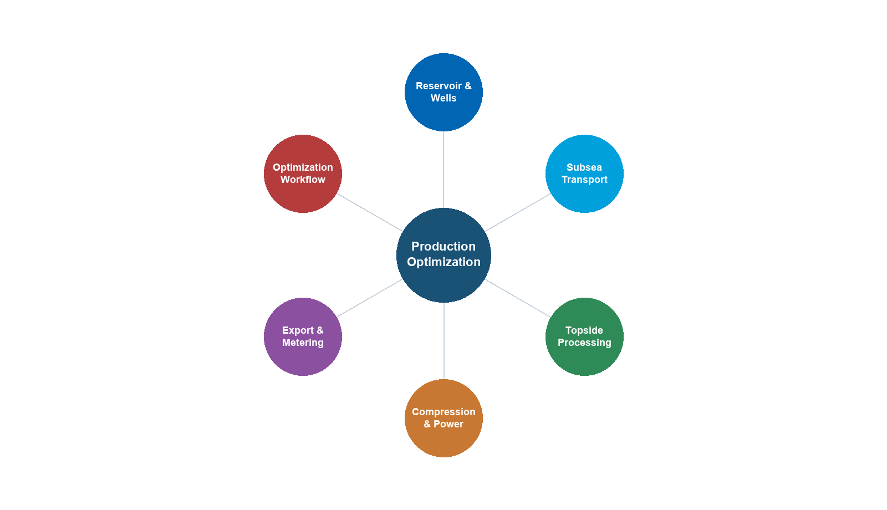
Learning Objectives
After reading this chapter, the reader will be able to:
- Define production optimization formally and state the general constrained optimization problem that underlies all production decisions
- Distinguish between short-term (daily) and long-term (life-of-field) optimization, and explain why both are needed
- Describe the major components of a production system — reservoir, wells, subsea, topside, compression, power, export — and explain how they interact as an integrated chain
- Explain why local equipment optima do not guarantee a global system optimum, using back-pressure coupling as the primary example
- Articulate the role of process simulation in optimization, including the distinction between steady-state and dynamic simulation
- Install NeqSim, create a fluid, run a flash calculation, build a process model, and extract results using Python
- Describe the NeqSim software architecture —
ProcessSystem,ProcessModel, and the Automation API — at a conceptual level - Outline the three-step optimization workflow (model → calibrate → optimize) and relate it to the structure of this book
---
1.1 What Is Production Optimization?
Production optimization is the systematic process of maximizing the economic value extracted from a hydrocarbon reservoir while respecting safety, environmental, regulatory, and equipment constraints. It encompasses every decision that affects the rate, efficiency, and quality of production — from reservoir management and well operations to subsea transport, topside process control, and export specification compliance.
In its simplest form, production optimization answers a daily question: given the current state of the reservoir, wells, and facilities, what operating set points maximize today's value? In its most comprehensive form, it is a life-of-field discipline that integrates reservoir simulation, well modeling, process simulation, and economic analysis to guide investment decisions and operating strategies over decades.
1.1.1 A Formal Statement
At its mathematical core, production optimization is a constrained optimization problem. Let $u$ denote the vector of decision variables (choke openings, separator pressures, compressor speeds, gas-lift rates, etc.), and let $J(u)$ be an objective function representing economic value — typically net present value (NPV) or daily revenue. The optimization problem is:
$$ \max_{u} \; J(u) \quad \text{subject to} \quad g_i(u) \leq 0, \;\; i = 1, \ldots, m \quad \text{and} \quad h_j(u) = 0, \;\; j = 1, \ldots, p $$
where $g_i(u) \leq 0$ are inequality constraints (equipment capacities, safety limits, environmental limits) and $h_j(u) = 0$ are equality constraints (mass balances, energy balances, thermodynamic equilibrium). The decision variables $u$ live in a feasible set $\mathcal{U}$ defined by the physical system.
For example, a daily optimization problem for a platform producing oil and gas might be stated as:
$$ \max_{q_1, \ldots, q_N} \; \sum_{k=1}^{N} \left( p_{\text{oil}} \, q_{\text{oil},k} + p_{\text{gas}} \, q_{\text{gas},k} \right) $$
subject to:
$$ \sum_{k=1}^{N} q_{\text{gas},k} \leq Q_{\text{gas,max}} \quad \text{(compression capacity)} $$
$$ \sum_{k=1}^{N} q_{\text{water},k} \leq Q_{\text{water,max}} \quad \text{(water treatment capacity)} $$
$$ \sum_{k=1}^{N} q_{\text{oil},k} \leq Q_{\text{oil,max}} \quad \text{(separation/export capacity)} $$
$$ q_k \geq 0, \quad T_{\text{arrival},k} \geq T_{\text{hydrate},k} + \Delta T_{\text{margin}} \quad \text{(flow assurance)} $$
where $q_k$ is the total well production rate for well $k$, $p_{\text{oil}}$ and $p_{\text{gas}}$ are commodity prices, $Q_{\text{gas,max}}$, $Q_{\text{water,max}}$, and $Q_{\text{oil,max}}$ are facility capacities, $T_{\text{arrival},k}$ is the arrival temperature at the topside, and $T_{\text{hydrate},k}$ is the hydrate formation temperature for the fluid from well $k$.
Even this simplified formulation reveals the essential character of production optimization: it is a system-level problem. Changing one well's rate affects the pressure in shared manifolds and flowlines, which in turn changes the rates achievable by other wells. Increasing total gas production demands more compression power, which increases fuel gas consumption, which reduces the gas available for export. The coupling is pervasive and often nonlinear.
1.1.2 Short-Term vs. Long-Term Optimization
Production optimization operates on two distinct time scales:
Short-term optimization (hourly to weekly) focuses on maximizing value from the current state of the production system. Decision variables include well choke openings, gas-lift rates, separator pressures, compressor set points, and routing decisions. The reservoir state is treated as given — pressures and compositions change too slowly to be influenced within the optimization horizon. Short-term optimization is often called production allocation or rate optimization.
Long-term optimization (months to decades) focuses on maximizing the total value recovered over the field life. Decision variables include well drilling and completion schedules, water and gas injection strategies, facility capacity investments (debottlenecking, new compression, additional separation stages), and field abandonment timing. Here the reservoir state is a dynamic variable that evolves in response to the production strategy.
The two time scales are linked through the concept of reservoir voidage replacement. A short-term strategy that maximizes today's production by drawing down reservoir pressure faster than it can be maintained through injection may reduce total recovery and long-term value. Conversely, an overly conservative long-term strategy may leave significant value unrealized during periods of high commodity prices.
Throughout this book, we address both time scales. Chapters on well performance, separation, and compression focus primarily on short-term optimization — finding the best operating point for the current conditions. Chapters on field development, multi-scenario optimization, and reservoir coupling address the long-term perspective.
1.1.3 The Production System as an Integrated Chain
A production system is not a collection of independent equipment items — it is an integrated chain where every element constrains and is constrained by the others. Figure 1.1 illustrates this chain schematically.
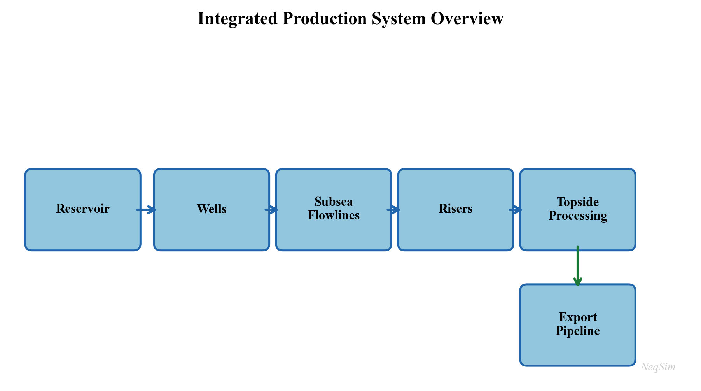
The reservoir delivers fluid at a rate that depends on the difference between the average reservoir pressure $\bar{p}_R$ and the bottomhole flowing pressure $p_{wf}$. For a simple Productivity Index model:
$$ q = \text{PI} \cdot (\bar{p}_R - p_{wf}) $$
The bottomhole pressure $p_{wf}$ depends on the wellhead pressure $p_{wh}$ plus the hydrostatic head and friction losses in the tubing:
$$ p_{wf} = p_{wh} + \Delta p_{\text{hydrostatic}} + \Delta p_{\text{friction}} $$
The wellhead pressure depends on the downstream system: flowline pressure drop, riser pressure drop, manifold pressure, and ultimately the first-stage separator pressure $p_{\text{sep}}$. The separator pressure is set by a balance between liquid level control and the suction pressure of the first-stage compressor. The compressor discharge pressure must overcome the export pipeline back-pressure.
This chain of pressure dependencies means that reducing the separator pressure by 5 bar can increase well deliverability by 10% or more, because the back-pressure reduction propagates all the way to the sandface. This is the most common and most valuable optimization lever in production operations.
1.1.4 Why Local Optima Are Not Global Optima
The integrated nature of the production system means that optimizing a single piece of equipment in isolation rarely finds the system optimum. Consider a simple example:
A compressor engineer, seeking to minimize compressor power, increases the first-stage separator pressure from 30 bara to 50 bara. This reduces the compression ratio, lowers the compressor power consumption by 15%, and reduces wear on the compressor. Viewed in isolation, this is clearly beneficial.
However, the higher separator pressure increases the back-pressure on the wells. The field production rate drops by 8%. The revenue loss from reduced production far exceeds the energy savings from the compressor. The system optimum lies at a lower separator pressure than the compressor optimum.
This example illustrates a fundamental principle: production optimization must be performed at the system level, not the equipment level. Process simulation — the subject of this book — provides the tool for system-level analysis by modeling the entire production chain in a single integrated model.
1.1.5 The Value of Optimization
The economic value of production optimization is substantial and well-documented in the industry literature. Table 1.1 summarizes typical improvements reported from systematic optimization programs.
| Improvement Area | Typical Gain | Mechanism |
|---|---|---|
| Increased oil production rate | 2–5% | Reduced back-pressure through separator and compressor optimization |
| Increased gas production rate | 3–8% | Compression optimization and export pipeline capacity management |
| Improved recovery factor | 1–3% over field life | Better pressure maintenance and sweep through optimized injection |
| Reduced energy consumption | 5–15% | Compressor anti-surge recycling reduction, optimal pressure staging |
| Extended equipment life | 10–25% longer maintenance intervals | Reduced fouling, vibration, surge, and thermal cycling |
| Fewer unplanned shutdowns | 20–40% reduction | Better flow assurance management and proactive constraint monitoring |
| Export specification compliance | 50–80% reduction in off-spec events | Tighter process control around quality constraints |
| Reduced chemical consumption | 10–20% | Optimized hydrate inhibitor and corrosion inhibitor dosing |
| Deferred investment | 1–3 years | Debottlenecking existing capacity before building new facilities |
For a field producing 100,000 boe/d, even a 2% improvement in production rate at \$60/bbl translates to over \$40 million per year in additional revenue. For large offshore developments with CAPEX exceeding \$5 billion, deferring a compression upgrade by two years through operational optimization can save hundreds of millions of dollars in net present value.
1.1.6 Historical Perspective
The practice of production optimization has evolved significantly over the past fifty years:
1970s–1980s: Trial and error. Operators adjusted well chokes and separator pressures based on experience and intuition. Optimization was performed field-by-field with limited instrumentation and no computer models. Production engineers relied on rules of thumb developed over decades of operational experience.
1990s: Nodal analysis and well models. The widespread adoption of nodal analysis software (PROSPER, PIPESIM) enabled systematic well optimization. Well deliverability could be predicted as a function of operating conditions, but topside processing was still modeled separately. The disconnect between well and facility models meant that system-level optimization remained difficult.
2000s: Integrated production modeling. The concept of integrated asset modeling (IAM) — coupling reservoir, well, network, and process models in a single workflow — gained traction. Commercial tools such as Petex GAP, SPT Group (now Schlumberger), and Petroleum Experts' integrated modeling suite emerged. For the first time, it became practical to optimize the entire production system simultaneously, albeit with simplified thermodynamic models.
2010s: Real-time optimization and digital twins. Increased instrumentation (subsea multiphase meters, topside analyzers, wireless sensors) and compute power enabled real-time optimization and "digital twin" concepts. Cloud computing and data analytics became integral to optimization workflows. Machine learning supplemented physics-based models for rapid screening and anomaly detection.
2020s and beyond: AI-assisted and model-based optimization. The convergence of rigorous process simulation, machine learning, and automation APIs enables a new generation of optimization tools. Open-source simulation engines, accessible via Python and web APIs, lower the barrier to entry and enable rapid prototyping. NeqSim, with its open-source design, Python interface, and automation API, represents this generation — providing rigorous engineering models that can be embedded in automated decision-support workflows.
---
1.2 The Production Value Chain
This section describes each major element of the production chain in detail, establishing the physical and engineering context that subsequent chapters will model in NeqSim.
1.2.1 Reservoir
The reservoir is the source of all production and imposes the ultimate constraint: once the pressure is depleted and the mobile hydrocarbons are swept, production ends regardless of the facility capacity.
Reservoir pressure is the primary driving force for production. Initial reservoir pressure depends on the burial depth — typically 1.0–1.2 psi per foot of true vertical depth subsea (TVDss), corresponding to a normal hydrostatic gradient. For a reservoir at 3,000 m TVDss, initial pressures of 300–400 bara are typical. As production proceeds without pressure support, the average reservoir pressure declines, and the well deliverability decreases accordingly.
Reservoir temperature increases with depth at a geothermal gradient of approximately 25–35°C per kilometer. For the same 3,000 m reservoir, temperatures of 100–130°C are common. The temperature, together with the pressure and composition, determines the phase behavior of the reservoir fluid — whether it exists as an undersaturated oil, a saturated oil, a gas condensate, a wet gas, or a dry gas.
Fluid composition is the fundamental input to all thermodynamic calculations. Reservoir fluids are mixtures of hundreds of hydrocarbon species plus non-hydrocarbons (nitrogen, CO$_2$, H$_2$S, water). For engineering purposes, the composition is typically lumped into defined components (methane, ethane, propane, butanes, pentanes) and pseudo-components representing the heavier fractions (C$_7$+, C$_{10}$+, C$_{20}$+). The characterization of these heavy fractions — their molecular weight, density, and critical properties — is the subject of Chapter 3.
Drive mechanisms determine how pressure is maintained (or not) as fluids are withdrawn. The primary mechanisms are:
- Depletion drive — pressure declines as fluids expand; recovery factors are typically 10–30% for oil and 60–80% for gas
- Water drive — an active aquifer replaces the withdrawn volume with water influx; recovery factors of 30–60% for oil
- Gas cap drive — an overlying gas cap expands as pressure drops
- Compaction drive — rock compaction provides energy in unconsolidated formations
- Combination drive — most reservoirs exhibit a combination of mechanisms
Decline curves are empirical models that describe how production rate changes over time. The Arps decline model is the most widely used:
$$ q(t) = \frac{q_i}{(1 + b \, D_i \, t)^{1/b}} $$
where $q_i$ is the initial rate, $D_i$ is the initial decline rate, and $b$ is the decline exponent ($b = 0$ for exponential, $0 < b < 1$ for hyperbolic, $b = 1$ for harmonic decline).
Inflow Performance Relationship (IPR) describes the relationship between bottomhole flowing pressure $p_{wf}$ and flow rate $q$. For single-phase liquid flow above the bubble point, the IPR is linear (the Productivity Index model). Below the bubble point, where two-phase flow develops near the wellbore, the Vogel correlation is commonly used:
$$ \frac{q}{q_{\max}} = 1 - 0.2 \left(\frac{p_{wf}}{\bar{p}_R}\right) - 0.8 \left(\frac{p_{wf}}{\bar{p}_R}\right)^2 $$
where $q_{\max}$ is the absolute open flow (AOF) potential. Chapter 4 develops reservoir engineering and IPR modeling in detail.
1.2.2 Wells
Wells connect the reservoir to the surface facilities. Their design and performance directly affect both the achievable production rate and the ultimate recovery from the field.
Inflow Performance Relationship (IPR) — as introduced above — characterizes the ability of the reservoir to deliver fluid into the wellbore. It depends on reservoir properties (permeability, thickness, skin factor), fluid properties (viscosity, formation volume factor), and the pressure drawdown.
Vertical Flow Performance (VFP) — also called the tubing performance curve — describes the pressure loss in the tubing as a function of flow rate, for given tubing geometry, fluid composition, and wellhead pressure. The VFP accounts for:
- Hydrostatic pressure difference due to the column of fluid (dominant in most wells)
- Frictional pressure loss (significant at high rates in small-diameter tubing)
- Acceleration effects (usually negligible except near critical flow)
The intersection of the IPR and VFP curves on a pressure-rate plot defines the natural operating point of the well. This graphical construction, known as nodal analysis, is the foundation of well performance engineering and is developed in Chapter 5.
Artificial lift methods augment natural flow when the reservoir pressure is insufficient to lift fluids to the surface at economic rates. The principal methods are:
- Gas lift — injecting high-pressure gas into the tubing annulus to reduce the hydrostatic gradient. Gas lift is the most common artificial lift method in offshore production. The optimal gas-lift rate balances the benefit of reduced hydrostatic head against the cost of compressing and injecting the lift gas. Gas lift performance is characterized by the gas-lift performance curve (GLPC), which shows the incremental oil production per unit of injected gas.
- Electric Submersible Pump (ESP) — a downhole centrifugal pump driven by an electric motor, capable of high liquid rates (up to 30,000 bbl/d per pump). ESPs are widely used in high-watercut wells and in onshore fields. Their selection and sizing depend on the required head, flow rate, fluid properties, and power supply.
- Rod pump (sucker rod) — a reciprocating pump driven by a surface beam unit, the most common lift method in onshore U.S. wells. Economical for low-rate wells (under 500 bbl/d) with moderate depths.
- Jet pump, progressive cavity pump (PCP) — niche applications for specific fluid types and rate ranges. PCPs are well-suited for viscous crude oil production.
Well completions — the design of the production zone — critically affect well productivity. Completion types include open-hole, cased and perforated, slotted liners, and gravel packs. The completion efficiency is expressed as the skin factor $S$, where $S = 0$ is an undamaged well, $S > 0$ indicates damage, and $S < 0$ represents a stimulated well (e.g., after hydraulic fracturing).
Sand management — in poorly consolidated formations, producing at high drawdown can mobilize formation sand, leading to erosion, equipment damage, and well failure. Sand screens, gravel packs, and chemical consolidation are used to manage sand production. The allowable drawdown becomes an optimization constraint in Chapter 5.
1.2.3 Subsea Production Systems
In offshore developments, the subsea production system connects the wellheads on the seabed to the surface processing facility. The complexity and cost of subsea systems make them a critical area for optimization.
Subsea trees (Christmas trees) are valve assemblies mounted on the wellhead at the seabed. They control well flow, provide barriers for well intervention, and house production and annulus sensors. Modern subsea trees include pressure and temperature transmitters, multiphase flow meters, and sand detection probes. Subsea trees are rated for water depths up to 3,000 m and pressures up to 15,000 psi (1,035 bara) for high-pressure/high-temperature (HPHT) applications.
Manifolds collect production from multiple wells into a single flowline. A typical subsea manifold serves 4–8 wells and includes valving for individual well isolation. The manifold pressure is a key optimization variable: it is the downstream boundary condition for all connected wells and the upstream boundary for the flowline.
Flowlines transport the multiphase production (oil, gas, water) from the manifold to the riser base. Flowline design must account for pressure drop (minimized by large diameter), heat loss (managed by insulation or pipe-in-pipe systems), and flow assurance threats (hydrates, wax, slugging). Typical flowline lengths range from 5 km for near-platform tiebacks to 150 km or more for long-distance tiebacks.
Risers carry the production from the seabed to the surface facility. Riser systems include steel catenary risers (SCRs), flexible risers, and hybrid riser towers. The riser geometry (vertical height, catenary shape) creates significant hydrostatic pressure loss, particularly for deep-water developments where water depths exceed 1,000 m.
Subsea boosting and processing — for long-distance tiebacks or low-pressure fields, subsea multiphase pumps can boost the wellstream pressure, overcoming flowline losses that would otherwise choke production. Subsea separation and water re-injection allow water to be removed before transport, reducing flowline size and hydrate risk. These systems are modeled in NeqSim as pump and separator equipment within a subsea ProcessSystem (Chapter 7).
Tieback distance has a profound effect on production performance. As the distance between wells and the host facility increases, the pressure lost in the flowline and riser increases, reducing the pressure available at the wellhead and hence the achievable production rate. For a gas-condensate field, a 50 km tieback might require 50–80 bar of flowing pressure at the manifold, compared to 20–30 bar for a 10 km tieback. This difference directly impacts well deliverability and field economics. The pressure budget for a subsea tieback can be expressed as:
$$ p_{\text{res}} = p_{wf} + \Delta p_{\text{tubing}} + \Delta p_{\text{tree}} + \Delta p_{\text{flowline}} + \Delta p_{\text{riser}} + p_{\text{sep}} $$
Minimizing the downstream pressure terms (flowline loss, riser hydrostatic, separator pressure) maximizes the drawdown available for production.
1.2.4 Topside Processing Facilities
The topside facility — whether a fixed platform, a floating production storage and offloading (FPSO) vessel, or an onshore plant — separates, treats, and conditions the produced fluids for export. Understanding the topside process is essential for production optimization because the facility capacities define the constraints on total field production.
Separation is the first and most important processing step. Production from the wells enters the first-stage (HP) separator, where the three phases — gas, oil, and water — are separated by gravity. Typical HP separator pressures range from 40 to 100 bara, depending on the field pressure and export requirements.
Gas from the HP separator flows to gas processing (dehydration, dew point control) and compression. Liquid from the HP separator flows to the second-stage (MP) separator at a lower pressure (typically 10–30 bara), where additional gas is liberated. A third-stage (LP) separator at 2–5 bara recovers the final flash gas. This multi-stage pressure let-down is the cornerstone of topside process design, and the optimal separator pressures are a key optimization target (Chapter 10).
The optimal pressure staging can be estimated by the equal compression ratio rule. For $n$ stages with inlet pressure $p_1$ and final pressure $p_n$, the optimal stage pressures follow:
$$ \frac{p_{k+1}}{p_k} = \left(\frac{p_n}{p_1}\right)^{1/n} \quad \text{for } k = 1, \ldots, n-1 $$
In practice, the optimal pressures deviate from this rule due to the nonlinear phase behavior of real fluids — the amount of gas liberated at each stage depends on the composition and temperature, not just the pressure ratio. NeqSim's flash calculations capture these effects rigorously.
Oil processing downstream of the LP separator includes electrostatic coalescers for water removal, heat exchangers for oil heating (to reduce viscosity and improve separation), and stabilization columns for light-end removal. The oil must meet export specifications — typically less than 0.5% basic sediment and water (BS&W) and a Reid vapor pressure (RVP) below 12 psia for safe tanker transport.
Gas processing treats the separated gas to meet pipeline or LNG specifications. Key processes include:
- Dehydration — removal of water vapor, typically using triethylene glycol (TEG) contactors, to prevent hydrate formation and corrosion in the export pipeline. The water dew point specification is typically $-18°\text{C}$ or lower at the delivery pressure.
- Dew point control — removal of heavy hydrocarbons using Joule-Thomson (JT) valves, turbo-expanders, or mechanical refrigeration to prevent liquid condensation in the export pipeline. The hydrocarbon dew point (cricondentherm) must typically be below $0°\text{C}$.
- Acid gas removal — removal of CO$_2$ and H$_2$S using amine absorption (MDEA, DEA), membrane separation, or molecular sieves when concentrations exceed pipeline specifications
- NGL recovery — fractionation of the gas into methane (sales gas), ethane, propane, butanes (LPG), and natural gasoline (C$_5$+) in onshore processing facilities
Water treatment processes produced water to meet discharge or reinjection specifications. Typical requirements are less than 30 mg/L dispersed oil for offshore discharge (OSPAR convention) and less than 5 mg/L for reservoir reinjection (to avoid formation damage). Produced water volumes typically increase over the field life as the water-oil ratio rises, and water treatment capacity often becomes the binding constraint on total production in the later years of a field's life.
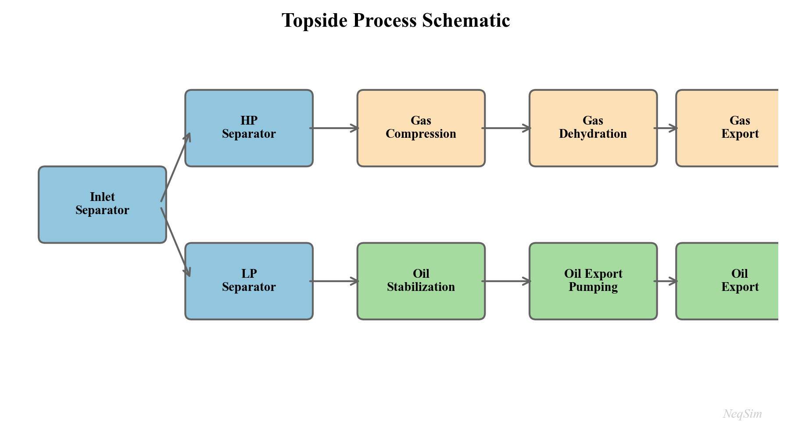
1.2.5 Gas Compression
Compression is typically the most capital-intensive and energy-intensive equipment on a production facility, and it is often the bottleneck that limits total field production. A thorough understanding of compression systems is essential for production optimization.
Recompression handles gas from the MP and LP separators, boosting it from low pressure (2–30 bara) to the HP system pressure (60–100 bara) for export or further processing. Recompression trains typically consist of 2–4 stages with intercoolers and scrubbers at each stage to remove condensed liquids.
Export compression boosts the HP gas to the export pipeline pressure (100–250 bara, depending on the pipeline length and delivery pressure). Export compressors are typically the largest and most expensive machines on the platform, driven by gas turbines of 15–40 MW.
Gas lift compression provides high-pressure gas (150–350 bara) for injection into the tubing annulus of gas-lifted wells. Gas lift compression is dedicated, because the lift gas pressure must exceed the casing head pressure at the wellhead.
Injection compression boosts gas to reservoir pressure (200–500 bara) for pressure maintenance or enhanced recovery by gas injection. Injection compressors operate at the highest pressures on the platform and may require multiple stages of compression.
The total compression power $W$ for an ideal gas compressing from $p_1$ to $p_2$ in $n_s$ stages with a polytropic efficiency $\eta_p$ is:
$$ W = \frac{n_s}{\eta_p} \cdot \frac{\gamma}{\gamma - 1} \cdot Z \, R \, T_1 \cdot \dot{m} \cdot \left[\left(\frac{p_2}{p_1}\right)^{(\gamma - 1)/(\gamma \, n_s)} - 1\right] $$
where $\gamma$ is the heat capacity ratio, $Z$ is the compressibility factor, $R$ is the specific gas constant, $T_1$ is the suction temperature, and $\dot{m}$ is the mass flow rate. In practice, real-gas effects, interstage cooling, and compressor characteristic curves make the calculation more complex — these are the subjects of Chapters 12 and 13.
Why compression is often the bottleneck: As reservoir pressure declines over the field life, the wellhead pressure drops, and more gas is released at lower pressures in the separation train. The recompression duty increases while the total gas volume also increases. Eventually, the installed compression capacity is fully utilized, and total production must be reduced — the field is "compression-constrained." The crossover from "well-constrained" to "facility-constrained" production is a critical transition in the life of every field. Identifying and relieving this bottleneck is one of the most valuable applications of production optimization (Chapter 21).
1.2.6 Power and Utilities
Platform operations require substantial power — typically 20–100 MW for a large offshore facility. The power demand is dominated by gas compression (often 60–80% of total demand), with additional loads from pumps, heat tracing, lighting, drilling, and accommodation.
Gas turbines are the primary power source on most offshore platforms. They burn produced gas (fuel gas) to generate electricity or drive compressors directly through a mechanical coupling. The fuel gas consumption is typically 8–12% of the total gas production, which means that fuel gas demand competes directly with gas export revenue. Optimizing compression efficiency therefore has a double benefit: it reduces the power demand and increases the gas available for export.
Simple-cycle gas turbine efficiency is typically 30–38%, depending on the ambient temperature and the turbine model. The thermal efficiency $\eta_{\text{th}}$ is defined as:
$$ \eta_{\text{th}} = \frac{W_{\text{net}}}{Q_{\text{fuel}}} = \frac{W_{\text{net}}}{\dot{m}_{\text{fuel}} \cdot \text{LHV}} $$
where $W_{\text{net}}$ is the net shaft power, $\dot{m}_{\text{fuel}}$ is the fuel gas mass flow rate, and LHV is the lower heating value of the fuel gas.
Waste heat recovery from gas turbine exhaust (typically 450–550°C) can generate steam for heating, power generation (via a steam turbine in a combined cycle), or process use. Combined cycle efficiencies of 45–55% are achievable, compared to 30–38% for simple cycle gas turbines. The economics of waste heat recovery depend on the value of the recovered energy and the weight and space constraints of the facility.
Platform electrical system distributes power from the generators to all consumers. Modern platforms increasingly use variable-speed drives (VSDs) on compressors and pumps, which allow continuous adjustment of speed, improving part-load efficiency and providing an optimization degree of freedom. The interaction between power generation, compression, and production is a system-level optimization problem addressed in Chapter 18.
1.2.7 Export and Metering
The final stage of the production chain delivers products to the buyer at the custody transfer point.
Oil export is accomplished by pipeline (to an onshore terminal) or by shuttle tanker (for FPSOs and remote platforms). Pipeline export requires sufficient pressure to overcome friction and elevation changes. Tanker export requires oil storage on the FPSO (typically 1–2 million barrels capacity) and offloading via a swivel turret or bow loading system. The offloading rate and storage capacity can constrain production during periods of bad weather when tanker operations are suspended.
Gas export is almost exclusively by pipeline from offshore platforms. The export pipeline may be hundreds of kilometers long, and the required inlet pressure depends on the pipeline diameter, length, and delivery pressure. For very long pipelines, the required inlet pressure can be 200 bara or more, placing heavy demands on the export compression system. The pipeline capacity depends on the inlet pressure, the gas composition (density and viscosity), and the delivery pressure — all of which can be modeled in NeqSim.
Fiscal metering is the measurement of oil and gas quantities at the custody transfer point, forming the basis for revenue calculation, royalty payments, and tax assessment. Fiscal metering must meet stringent accuracy requirements — typically $\pm 0.25\%$ for oil and $\pm 1.0\%$ for gas — as specified in standards such as ISO 5167 (orifice plates), AGA Report No. 9 (ultrasonic meters), and NORSOK I-104 (fiscal metering systems).
Quality specifications for export gas typically include:
| Parameter | Typical Specification |
|---|---|
| Gross heating value | 36–43 MJ/Sm$^3$ |
| Wobbe index | 46–53 MJ/Sm$^3$ |
| Water dew point | $< -18°\text{C}$ at delivery pressure |
| Hydrocarbon dew point | $< 0°\text{C}$ (cricondentherm) |
| H$_2$S content | $< 3.5$ mg/Sm$^3$ |
| Total sulfur | $< 30$ mg/Sm$^3$ |
| CO$_2$ content | $< 2.5$ mol% |
| O$_2$ content | $< 10$ ppmv |
Meeting these specifications is an equality constraint in the optimization problem: the gas must be processed just enough to meet spec, since over-processing wastes energy and capacity. NeqSim's thermodynamic models can predict all of these quality parameters from the fluid composition and processing conditions, enabling direct specification tracking in the optimization (Chapter 17).
---
1.3 The Role of Process Simulation
Process simulation is the computational backbone of production optimization. A calibrated process model predicts how the production system responds to changes in operating conditions — flow rates, pressures, temperatures, compositions — without the cost and risk of physical experimentation.
1.3.1 What a Process Simulator Does
A process simulator solves the coupled material balance, energy balance, and momentum balance equations for a defined flowsheet of interconnected equipment. At each piece of equipment, the simulator:
- Receives inlet stream conditions — temperature, pressure, flow rate, composition
- Applies the equipment model — e.g., adiabatic flash for a separator, polytropic compression for a compressor, pressure drop correlation for a pipe
- Calculates outlet stream conditions — using thermodynamic equilibrium (flash calculations) and transport property models
- Iterates if the flowsheet contains recycle streams or specifications that create feedback loops
The thermodynamic calculations are the foundation of everything else. They answer questions such as: given a fluid of known composition at temperature $T$ and pressure $P$, how many phases exist? What is the composition of each phase? What are the densities, viscosities, enthalpies, and heat capacities?
1.3.2 The Simulation Loop
The inner loop of a process simulator can be summarized as:
- Equation of state (EOS) — a mathematical model relating pressure, volume, temperature, and composition. Common choices include the Soave-Redlich-Kwong (SRK) and Peng-Robinson (PR) cubic equations of state, and the CPA (Cubic Plus Association) model for polar systems. The general form of a cubic EOS is:
$$ P = \frac{RT}{v - b} - \frac{a(T)}{(v + \epsilon b)(v + \sigma b)} $$
where $v$ is the molar volume, $a(T)$ is the attraction parameter (temperature-dependent), $b$ is the co-volume, and $\epsilon$ and $\sigma$ are EOS-specific constants ($\epsilon = 0, \sigma = 1$ for SRK; $\epsilon = 1 - \sqrt{2}, \sigma = 1 + \sqrt{2}$ for PR). The EOS provides fugacity coefficients $\hat{\phi}_i$ that drive phase equilibrium calculations.
- Flash calculation — given the total composition $z_i$, temperature $T$, and pressure $P$, determine the number and amounts of phases (vapor fraction $\beta$, liquid fraction $1-\beta$) and the composition of each phase ($y_i$ for vapor, $x_i$ for liquid) by solving the Rachford-Rice equation:
$$ \sum_{i=1}^{N_c} \frac{z_i \, (K_i - 1)}{1 + \beta \, (K_i - 1)} = 0 $$
where $K_i = y_i / x_i$ is the equilibrium ratio (K-value) for component $i$, determined from the fugacity coefficients: $K_i = \hat{\phi}_i^L / \hat{\phi}_i^V$.
- Property calculation — once phase compositions and amounts are known, calculate physical properties: density from the EOS, viscosity from correlations such as Lohrenz-Bray-Clark (LBC), thermal conductivity, surface tension, and diffusion coefficients.
- Equipment model — apply the specific equipment model using the calculated properties (e.g., compressor work from the enthalpy change across the compression, pipe pressure drop from the Beggs and Brill correlation, separator performance from the retention time and K-factor).
- Iterate — repeat until all recycle streams converge and all specifications are met.
1.3.3 Steady-State vs. Dynamic Simulation
Steady-state simulation calculates the equilibrium operating point of a process given fixed inputs. Time does not appear in the equations — the system is assumed to have reached a stable state. Steady-state simulation is used for:
- Design studies and equipment sizing
- Capacity checks and equipment rating
- "What-if" scenario analysis (what happens if we increase well rates by 10%?)
- Optimization (find the best operating point among all feasible points)
- Production forecasting (combined with a reservoir decline model)
Dynamic simulation tracks how the process evolves over time, solving the ordinary and partial differential equations that describe accumulation of mass, energy, and momentum in vessels, pipes, and control loops. The governing equation for mass accumulation in a vessel of volume $V$ is:
$$ \frac{d(\rho V)}{dt} = \dot{m}_{\text{in}} - \dot{m}_{\text{out}} $$
and for energy:
$$ \frac{d(U)}{dt} = \dot{m}_{\text{in}} h_{\text{in}} - \dot{m}_{\text{out}} h_{\text{out}} + \dot{Q} - \dot{W} $$
where $\rho$ is density, $U$ is internal energy, $h$ is specific enthalpy, $\dot{Q}$ is heat transfer, and $\dot{W}$ is work. Dynamic simulation is used for:
- Control system design and PID controller tuning
- Startup, shutdown, and load change procedures
- Slug flow impact assessment (liquid surges from terrain slugging in flowlines)
- Emergency depressurization and blowdown studies
- Compressor anti-surge system verification
NeqSim supports both modes: process.run() performs a steady-state calculation, while process.runTransient(dt) advances the simulation by a time step $dt$ seconds. Chapter 20 develops dynamic simulation in detail.
1.3.4 Calibrated Models vs. Design Models
A design model is built from equipment specifications, design data sheets, and vendor information before the facility is constructed. It predicts how the facility should perform at design conditions and is used for engineering design, procurement, and construction.
A calibrated model (also called an operations model) has been adjusted to match measured operating data — actual separator efficiencies, real compressor performance curves, measured pipeline pressure drops, and tuned IPR curves from well tests. A calibrated model predicts how the facility actually performs and is therefore far more useful for optimization.
The workflow for model calibration is:
- Collect measured data — flow rates, pressures, temperatures, compositions from process sensors. Data quality is critical: sensor drift, measurement noise, and missing data must be addressed.
- Compare model predictions to measurements — identify systematic discrepancies (bias) and random scatter.
- Adjust model parameters — equipment efficiencies, heat transfer coefficients, friction factors, well productivity indices — to minimize the discrepancy, typically in a least-squares sense.
- Validate the calibrated model against an independent data set (not used in the calibration) to ensure the model generalizes rather than overfitting.
Throughout this book, we emphasize the importance of model calibration and provide practical guidance for tuning NeqSim models to match plant data.
1.3.5 Model Fidelity vs. Computational Cost
There is an inherent trade-off between model fidelity and computational cost. A full-compositional process model with 30+ components and rigorous thermodynamics may take 5–30 seconds to evaluate a single operating point. An optimization algorithm that requires 10,000 function evaluations would then take 14–80 hours — impractical for daily operations.
Strategies for managing this trade-off include:
- Reduced compositions — lumping heavy components to reduce the number of species from 30+ to 8–12, with proportional speedup
- Surrogate models — training machine learning models (neural networks, Gaussian processes, polynomial response surfaces) on simulation outputs and using them as fast approximations in the optimization loop
- Decomposition — optimizing subsystems sequentially (wells first, then topside, then compression) rather than simultaneously
- Gradient-based methods — using derivative information (adjoint methods, finite differences) to reduce the number of function evaluations needed to find the optimum
- Parallel evaluation — running multiple simulation cases simultaneously on multi-core hardware
NeqSim's fast computation speed (Java-based with efficient EOS solvers) makes it practical to embed rigorous models directly in optimization loops for many problems, reducing the need for surrogate approximations. A typical NeqSim flash calculation completes in 1–5 milliseconds, and a full process model with 20 equipment items evaluates in 0.5–5 seconds.
---
1.4 Why NeqSim?
NeqSim (Non-Equilibrium Simulator) is an open-source Java library for thermodynamic and process simulation, developed since 2000 at NTNU (Norwegian University of Science and Technology) and Equinor. It is designed from the ground up for rigorous engineering calculations and has been used in production, research, and teaching across the oil and gas industry.
1.4.1 Open Source and Extensible
NeqSim is released under the Apache 2.0 license, making it freely available for commercial and academic use. The source code is publicly hosted on GitHub (github.com/equinor/neqsim), enabling:
- Full transparency — inspect and verify every calculation, from the EOS implementation to the flash algorithm to the property correlations. This is essential for engineering applications where results must be auditable.
- Extensibility — add new equations of state, equipment models, or optimization algorithms by extending the Java classes.
- Reproducibility — share complete simulation models (code, fluid definitions, process configurations) with colleagues and reviewers, ensuring identical results.
- No license cost — democratizes access to rigorous process simulation, particularly for universities, research institutions, and small companies.
1.4.2 Comparison with Commercial Tools
Table 1.2 compares NeqSim with widely used commercial process simulators.
| Feature | NeqSim | Aspen HYSYS / UniSim | ProMax | DWSIM |
|---|---|---|---|---|
| License | Open source (Apache 2.0) | Commercial | Commercial | Open source (GPL) |
| Core language | Java | Fortran / C++ | Fortran / C++ | .NET (VB/C#) |
| Python interface | Yes (jpype, native) | COM automation | COM automation | Limited |
| EOS library | SRK, PR, CPA, Electrolyte CPA, GERG-2008, PC-SAFT, UMR-PRU | SRK, PR, CPA, NRTL, UNIQUAC | SRK, PR, AMINE | SRK, PR, UNIQUAC |
| Multiphase flow | Beggs & Brill, OLGA interfaces | OLGA integration | Limited | Limited |
| Dynamic simulation | Yes (transient process) | Yes (Aspen Dynamics) | Limited | No |
| Automation API | Yes (ProcessAutomation) | COM/OPC | COM | Limited |
| Jupyter integration | Native (jpype bridge) | Via COM | Via COM | Partial |
| MCP server | Yes | No | No | No |
| Electrolyte systems | CPA-Electrolyte | Electrolyte NRTL | Amine models | Limited |
| Equipment library | 40+ equipment types | 100+ | 50+ | 30+ |
| Hydrate prediction | Yes (CPA-based) | Yes (CSMHyd) | Yes (ProMax) | No |
NeqSim's primary strengths are its rigorous thermodynamic models (particularly for gas-condensate, CCS, and electrolyte systems), its native Python integration (enabling Jupyter-based workflows without COM automation), and its automation API that makes it suitable for embedding in real-time optimization and digital twin applications.
1.4.3 Key Capabilities
The NeqSim capabilities most relevant to this book are:
- Equation of state library — SRK, PR (both with volume translation), CPA (for polar systems like water, methanol, MEG), Electrolyte CPA (for brine chemistry and scale prediction), GERG-2008 (custody transfer reference for natural gas), PC-SAFT, and UMR-PRU
- Flash calculations — TP flash, PH flash, PS flash, TV flash, bubble point and dew point calculations, hydrate equilibrium temperature and pressure
- Transport properties — viscosity (LBC, PFCT, corresponding states), thermal conductivity, surface tension, and diffusion coefficients for all phases
- Process equipment — streams, separators (2-phase, 3-phase), compressors (with performance curves), heat exchangers (shell-and-tube, plate), valves (Cv-based), pipes (Beggs and Brill), mixers, splitters, distillation columns, absorbers, reactors
- Dynamic simulation — transient equipment models with PID controllers, transmitters (PT, TT, LT, FT), and alarm logic
- Multiphase pipe flow — Beggs and Brill correlation with pipeline elevation profile and heat transfer to surroundings
- Reservoir models — simple reservoir with drive mechanism and decline, suitable for integrated production modeling
1.4.4 The NeqSim Ecosystem
NeqSim operates as an ecosystem of interconnected components:
- Java core (
neqsim-*.jar) — the main library, containing all thermodynamic and process simulation classes. Can be used directly from Java applications or any JVM-compatible language. - Python interface (
pip install neqsim) — uses jpype to bridge Python and the Java core, enabling use from Jupyter notebooks, scripts, and automation systems. All Java classes are accessible from Python with automatic type conversion. - Jupyter notebooks — the primary working environment for this book. Each chapter includes companion notebooks with runnable code examples that can be executed, modified, and extended.
- MCP server — a Model Context Protocol server that exposes NeqSim calculations as web services, enabling integration with AI assistants, web applications, and external optimization engines.
- Automation API — the
ProcessAutomationclass provides string-addressable access to all simulation variables, designed for programmatic access from optimization algorithms, digital twin systems, and real-time advisory tools.
---
1.5 Getting Started with NeqSim
This section walks through the essential first steps: installing NeqSim, creating a fluid, running a flash calculation, building a process, and accessing results programmatically.
1.5.1 Installation
Install the NeqSim Python package from PyPI:
pip install neqsim
The installation includes the Java core library and handles the JVM setup automatically. Verify the installation:
from neqsim import jneqsim
print("NeqSim loaded successfully")
For development work or access to the latest features, the Java source can be built from the GitHub repository using Maven:
git clone https://github.com/equinor/neqsim.git
cd neqsim
./mvnw install
1.5.2 Creating a Fluid
A fluid in NeqSim is represented by a SystemInterface object — an instance of an equation-of-state system containing a defined set of components with their mole fractions. The most common choice for oil and gas work is the SRK (Soave-Redlich-Kwong) equation of state:
from neqsim import jneqsim
# Create an SRK EOS system at 80°C (353.15 K) and 150 bara
fluid = jneqsim.thermo.system.SystemSrkEos(273.15 + 80.0, 150.0)
# Add components with mole fractions (will be normalized automatically)
fluid.addComponent("nitrogen", 0.5)
fluid.addComponent("CO2", 2.0)
fluid.addComponent("methane", 70.0)
fluid.addComponent("ethane", 8.0)
fluid.addComponent("propane", 5.0)
fluid.addComponent("n-butane", 3.0)
fluid.addComponent("n-pentane", 2.0)
fluid.addComponent("n-hexane", 1.5)
fluid.addComponent("n-heptane", 3.0)
fluid.addComponent("n-octane", 2.5)
fluid.addComponent("n-nonane", 1.5)
fluid.addComponent("water", 1.0)
# Set the mixing rule — this must ALWAYS be called
fluid.setMixingRule("classic")
# Enable multiphase check (important for three-phase systems)
fluid.setMultiPhaseCheck(True)
Key points to remember:
- The constructor takes temperature in Kelvin and pressure in bara
- Components are specified by name; NeqSim has a database of 100+ pure components with validated critical properties, acentric factors, and binary interaction parameters
setMixingRule("classic")activates the standard van der Waals one-fluid mixing rule. Never skip this call — without it, the EOS cannot compute mixture fugacities.setMultiPhaseCheck(True)enables detection of aqueous, liquid hydrocarbon, and vapor phases simultaneously, which is essential for production system modeling where water is always present
The EOS selection matters for accuracy. Table 1.3 provides guidance:
| EOS | Best For | Limitations |
|---|---|---|
| SRK | General oil and gas, gas condensates, gas processing | Less accurate for liquid densities without volume translation |
| PR | Similar to SRK, slightly better liquid densities | Default in many commercial tools; good general choice |
| CPA | Systems with water, methanol, glycol, amines (polar) | More parameters to tune; needed for accurate water content |
| GERG-2008 | Custody transfer, natural gas, high accuracy gas phase | Gas phase only; limited composition range |
| Electrolyte CPA | Brine chemistry, scale prediction, produced water | Complex setup; for specialized applications |
Chapter 2 develops the thermodynamic foundations in depth.
1.5.3 Running a Flash Calculation
A flash calculation determines the phase equilibrium at given conditions. The most common type is the TP flash — given temperature and pressure, calculate the number of phases, their amounts, and their compositions:
from neqsim import jneqsim
# Create a gas-condensate fluid at HP separator conditions
fluid = jneqsim.thermo.system.SystemSrkEos(273.15 + 80.0, 60.0)
fluid.addComponent("methane", 0.80)
fluid.addComponent("ethane", 0.06)
fluid.addComponent("propane", 0.04)
fluid.addComponent("n-butane", 0.03)
fluid.addComponent("n-pentane", 0.02)
fluid.addComponent("n-hexane", 0.01)
fluid.addComponent("n-heptane", 0.02)
fluid.addComponent("n-octane", 0.015)
fluid.addComponent("water", 0.005)
fluid.setMixingRule("classic")
fluid.setMultiPhaseCheck(True)
# Run TP flash
ops = jneqsim.thermodynamicoperations.ThermodynamicOperations(fluid)
ops.TPflash()
# CRITICAL: Initialize physical properties AFTER the flash
fluid.initProperties()
# Read results
num_phases = fluid.getNumberOfPhases()
print(f"Number of phases: {num_phases}")
if fluid.hasPhaseType("gas"):
gas = fluid.getPhase("gas")
print(f"Gas density: {gas.getDensity('kg/m3'):.2f} kg/m3")
print(f"Gas viscosity: {gas.getViscosity('kg/msec'):.6f} kg/(m·s)")
print(f"Gas Cp: {gas.getCp('J/molK'):.2f} J/(mol·K)")
print(f"Gas Z-factor: {gas.getZ():.4f}")
if fluid.hasPhaseType("oil"):
oil = fluid.getPhase("oil")
print(f"Oil density: {oil.getDensity('kg/m3'):.2f} kg/m3")
print(f"Oil viscosity: {oil.getViscosity('kg/msec'):.6f} kg/(m·s)")
Important: After any flash calculation, you must call
fluid.initProperties()before reading transport properties (viscosity, thermal conductivity). The flash alone initializes thermodynamic properties (fugacities, enthalpies), but transport property models require an additional initialization step. Without this call,getViscosity()andgetThermalConductivity()may return zero.
1.5.4 Building a Process
NeqSim's process simulation framework models interconnected equipment — streams, separators, compressors, heat exchangers, valves, and pipes — as a sequential flowsheet:
from neqsim import jneqsim
# Create fluid
fluid = jneqsim.thermo.system.SystemSrkEos(273.15 + 80.0, 150.0)
fluid.addComponent("nitrogen", 0.5)
fluid.addComponent("CO2", 2.0)
fluid.addComponent("methane", 70.0)
fluid.addComponent("ethane", 8.0)
fluid.addComponent("propane", 5.0)
fluid.addComponent("n-butane", 3.0)
fluid.addComponent("n-pentane", 2.0)
fluid.addComponent("n-hexane", 1.5)
fluid.addComponent("n-heptane", 3.0)
fluid.addComponent("n-octane", 2.5)
fluid.addComponent("n-nonane", 1.5)
fluid.addComponent("water", 1.0)
fluid.setMixingRule("classic")
fluid.setMultiPhaseCheck(True)
# Create equipment
Stream = jneqsim.process.equipment.stream.Stream
Separator = jneqsim.process.equipment.separator.Separator
ThrottlingValve = jneqsim.process.equipment.valve.ThrottlingValve
ProcessSystem = jneqsim.process.processmodel.ProcessSystem
# Well stream
feed = Stream("Well Stream", fluid)
feed.setFlowRate(50000.0, "kg/hr")
feed.setTemperature(80.0, "C")
feed.setPressure(80.0, "bara")
# HP Separator
hp_sep = Separator("HP Separator", feed)
# Valve to reduce liquid pressure before MP separator
valve = ThrottlingValve("HP-MP Valve", hp_sep.getLiquidOutStream())
valve.setOutletPressure(25.0, "bara")
# MP Separator
mp_sep = Separator("MP Separator", valve.getOutletStream())
# Build and run
process = ProcessSystem()
process.add(feed)
process.add(hp_sep)
process.add(valve)
process.add(mp_sep)
process.run()
# Read results
hp_gas = hp_sep.getGasOutStream().getFlowRate("MSm3/day")
mp_gas = mp_sep.getGasOutStream().getFlowRate("MSm3/day")
oil_out = mp_sep.getLiquidOutStream().getFlowRate("m3/hr")
print(f"HP separator gas: {hp_gas:.3f} MSm3/day")
print(f"MP separator gas: {mp_gas:.3f} MSm3/day")
print(f"Total gas: {hp_gas + mp_gas:.3f} MSm3/day")
print(f"Oil export: {oil_out:.2f} m3/hr")
This example illustrates the core NeqSim workflow that will be used throughout this book:
- Define the fluid using an appropriate equation of state and component list
- Create equipment — each equipment item takes its inlet stream as a constructor argument
- Connect equipment by using outlet streams from upstream equipment as inlet streams for downstream equipment
- Build a ProcessSystem by adding equipment in sequence
- Run the simulation with
process.run() - Extract results from equipment and stream accessor methods
1.5.5 The ProcessSystem Architecture
NeqSim organizes process simulations around two key classes:
ProcessSystem represents a single process area — a connected set of equipment with a defined execution order. Equipment is added using process.add(equipment), and process.run() evaluates all equipment in sequence. If the flowsheet contains recycles, ProcessSystem handles the iterative convergence automatically.
Key features of ProcessSystem:
- Enforces unique equipment names (duplicate names cause an error)
- Provides
getUnit("name")to retrieve equipment by name - Supports
copy()for duplicating equipment configurations - Handles recycle loops and specification convergence
ProcessModel composes multiple ProcessSystem objects into a multi-area plant model. This is essential for large facilities where the separation train, compression system, gas processing, and water treatment are modeled as separate process areas that share streams at their boundaries:
ProcessModel = jneqsim.process.processmodel.ProcessModel
plant = ProcessModel()
plant.add("Separation", separation_system)
plant.add("Compression", compression_system)
plant.add("Gas Processing", gas_processing_system)
plant.run() # Iterates all areas until convergence
The ProcessModel iterates between the areas until the shared boundary streams converge, enabling full-plant optimization where changes in one area propagate to all others. This architecture mirrors the physical structure of a production facility, where different process areas are designed and operated by different engineering disciplines but are coupled through shared streams.
1.5.6 The Automation API Preview
For optimization and digital twin applications, NeqSim provides the ProcessAutomation class — a string-addressable interface to all simulation variables. Instead of navigating Java object hierarchies, you can read and write variables by name:
# Get the automation facade
auto = process.getAutomation()
# Discover equipment
units = auto.getUnitList() # ["Well Stream", "HP Separator", ...]
# List variables for a specific unit
variables = auto.getVariableList("HP Separator")
for v in variables:
print(f" {v.getAddress()} ({v.getType()}) [{v.getUnit()}]")
# Read a variable by address
temp = auto.getVariableValue("HP Separator.gasOutStream.temperature", "C")
pres = auto.getVariableValue("HP Separator.pressure", "bara")
# Write an input variable and re-run
auto.setVariableValue("HP-MP Valve.outletPressure", 20.0, "bara")
process.run() # Propagate changes through the process
The Automation API includes self-healing diagnostics: if you misspell an equipment name, it uses fuzzy matching to suggest the correct name. This makes it robust for use in automated workflows where exact variable names may not be known in advance. We will use it extensively in the optimization chapters (Part VII).
---
1.6 Optimization Workflow Overview
Production optimization using process simulation follows a three-step workflow that is conceptually simple but practically demanding. This workflow forms the backbone of the applied chapters in this book.
Step 1: Model
Build a process model that represents the production system from reservoir to export. The model should include:
- Reservoir inflow (IPR curves or simple reservoir models with decline)
- Wells (VFP curves or multiphase pipe flow models)
- Subsea systems (flowlines with Beggs and Brill, risers, manifolds)
- Topside processing (separators, compressors, heat exchangers, valves)
- Export systems (pipelines, metering stations)
The model is constructed in NeqSim using the ProcessSystem and ProcessModel framework. Each element is connected through streams, and the entire system is solved simultaneously.
Step 2: Calibrate
Adjust the model parameters to match measured operating data. Key calibration targets include:
- Well productivity indices (matched to well test data)
- Separator efficiencies (matched to composition analyses of gas and liquid outlets)
- Compressor performance (matched to operating points on the manufacturer's performance map)
- Heat exchanger UA values (matched to measured duty and temperature approaches)
- Pipeline friction factors (matched to measured inlet-to-outlet pressure drops)
Calibration transforms a design model into an operations model that accurately reflects the current state of the facility. The quality of the optimization is directly limited by the quality of the calibration.
Step 3: Optimize
Use the calibrated model to find the operating conditions that maximize the objective function while respecting all constraints. The optimization problem is:
$$ \max_{u \in \mathcal{U}} \; J(u) = \sum_{k} \left( p_{\text{oil}} \, q_{\text{oil},k}(u) + p_{\text{gas}} \, q_{\text{gas},k}(u) \right) - C_{\text{fuel}}(u) - C_{\text{chem}}(u) $$
where the production rates $q_{\text{oil},k}$ and $q_{\text{gas},k}$ depend on the operating conditions $u$ through the process model, and $C_{\text{fuel}}$ and $C_{\text{chem}}$ are the costs of fuel gas and chemicals.
Decision variables $u$ typically include:
- Individual well choke openings or production rates
- Gas-lift injection rates per well
- Separator pressures (HP, MP, LP)
- Compressor speeds or set points
- Heat exchanger duties
- Routing decisions (which wells produce to which manifold/separator)
Constraints include:
- Equipment capacities (compressor power, separator liquid handling, water treatment)
- Export specifications (heating value, water dew point, H$_2$S content)
- Safety limits (maximum pressures, minimum temperatures for material integrity)
- Flow assurance limits (minimum arrival temperature above hydrate formation)
- Environmental limits (flaring, CO$_2$ emissions, produced water discharge)
The optimization can be performed using gradient-based methods (for smooth, well-behaved problems), evolutionary algorithms (for non-convex problems with discrete variables), or exhaustive search over a discretized decision space (practical when the number of decision variables is small). NeqSim provides the ProductionOptimizer and CapacityConstrainedEquipment classes to support these workflows, developed in Chapter 23.
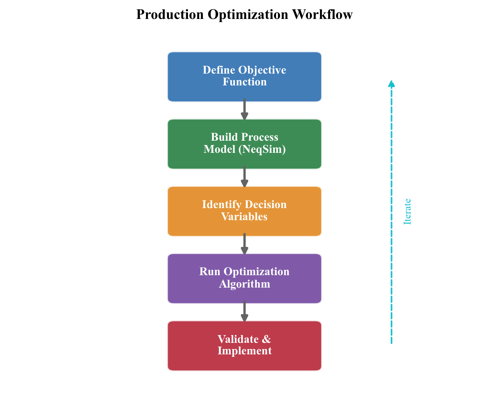
---
1.7 Book Organization and Road Map
This book is organized into nine parts containing 35 chapters that systematically develop every element of production optimization — from thermodynamic foundations through topside processing to advanced optimization methods and integrated case studies.
Part I: Foundations (Chapters 1–3)
Part I lays the groundwork for all subsequent chapters.
- Chapter 1 — Introduction to Production Optimization (this chapter): Defines production optimization, describes the production value chain, introduces NeqSim, and provides the first working examples.
- Chapter 2 — Thermodynamic Foundations for Process Simulation: Develops the thermodynamic framework underlying all process calculations — equations of state, mixing rules, fugacity, phase equilibrium, and property calculation methods. This chapter provides the theoretical basis for understanding why NeqSim produces the results it does.
- Chapter 3 — Fluid Characterization and PVT Modeling: Covers the practical art of representing reservoir fluids in a process simulator — component selection, C$_7$+ characterization, lumping and delumping strategies, PVT experiments (constant mass expansion, constant volume depletion, differential liberation), and EOS parameter tuning to match laboratory data.
Part II: Reservoir and Wells (Chapters 4–6)
Part II covers the upstream elements of the production chain.
- Chapter 4 — Reservoir Engineering and Inflow Performance: Develops reservoir inflow models (Productivity Index, Vogel, Fetkovich), material balance methods, decline curve analysis, and the NeqSim
SimpleReservoirclass for integrated modeling. - Chapter 5 — Well Performance and Tubing Design: Covers vertical flow performance, nodal analysis, tubing sizing, wellhead choke modeling, and the coupling between IPR and VFP that determines the well operating point.
- Chapter 6 — Well Networks, Artificial Lift, and Lift Optimization: Extends to multi-well systems, gas lift design and optimization, ESP selection, and network balancing with shared facility constraints.
Part III: Subsea Systems and Transport (Chapters 7–9)
Part III addresses the transport of multiphase fluids from wellhead to processing facility.
- Chapter 7 — Subsea Production Systems: Covers subsea trees, manifolds, flowlines, risers, subsea boosting and processing equipment, and tieback architecture design.
- Chapter 8 — Flowlines, Risers, and Pipeline Hydraulics: Develops multiphase flow correlations (Beggs and Brill), pipeline sizing, thermal analysis, terrain-induced slugging, and the NeqSim
PipeBeggsAndBrillsclass with elevation profiles. - Chapter 9 — Flow Assurance: Addresses hydrate prediction and inhibition (MEG, methanol), wax appearance temperature and deposition, asphaltene stability, CO$_2$/H$_2$S corrosion prediction, scale risk, and slugging mitigation.
Part IV: Topside Processing (Chapters 10–13)
Part IV covers the core process engineering of the production facility.
- Chapter 10 — Separation Technology and Equipment Design: Develops separator design (gravity separation theory, retention time, Souders-Brown K-factor), multi-stage separation optimization, three-phase separator modeling, and the NeqSim
SeparatorandThreePhaseSeparatorclasses. - Chapter 11 — Oil Processing and Stabilization: Covers crude oil dehydration, electrostatic coalescers, desalting, stabilization columns, vapor pressure control, and oil export preparation.
- Chapter 12 — Gas Processing and Conditioning: Addresses gas dehydration (TEG absorbers), hydrocarbon dew point control (JT, turbo-expander, mechanical refrigeration), acid gas removal (amine absorption), and NGL recovery (turbo-expander, refrigeration).
- Chapter 13 — Produced Water Treatment: Covers oil-water separation mechanisms, hydrocyclones, flotation units, water injection quality, and the increasing importance of water treatment capacity as a production constraint.
Part V: Compression, Heat Transfer, and Power (Chapters 14–18)
Part V covers the energy-intensive equipment that often constrains production.
- Chapter 14 — Gas Compression Systems: Develops compression thermodynamics, staging optimization, intercooling, anti-surge control, and the NeqSim compressor model with polytropic efficiency.
- Chapter 15 — Compressor Characteristics and Performance Curves: Covers centrifugal compressor maps (head vs. flow at various speeds), surge line, stonewall, reciprocating compressor modeling, and operating point prediction.
- Chapter 16 — Heat Exchangers and Thermal Design: Addresses shell-and-tube and plate heat exchanger design, LMTD and effectiveness-NTU methods, fouling factors, and the NeqSim
HeatExchangerclass. - Chapter 17 — Valves, Flow Control, and Pressure Relief: Covers control valve sizing (ISA/IEC Cv method), choke flow modeling (critical and subcritical), and relief valve sizing per API 520/521.
- Chapter 18 — Power Production and Energy Sources: Addresses gas turbines, waste heat recovery, combined cycle systems, fuel gas system management, and platform power optimization.
Part VI: Export, Capacity, and Debottlenecking (Chapters 19–21)
Part VI addresses the constraints that limit total production.
- Chapter 19 — Export Systems and Fiscal Metering: Covers oil and gas export systems, pipeline hydraulics for long-distance transport, fiscal metering technology, and gas quality specification tracking.
- Chapter 20 — Capacity Checks and Equipment Utilization: Develops methods for rating each piece of equipment against its design capacity, calculating utilization factors, and identifying the binding constraint (the "bottleneck") on total production.
- Chapter 21 — Systematic Debottlenecking and Utilization Analysis: Presents a structured approach to identifying and relieving bottlenecks — evaluating options (re-wheeling compressors, adding separation stages, upgrading pumps) and quantifying their production and economic impact.
Part VII: Production Optimization (Chapters 22–28)
Part VII is the heart of the book, applying all preceding theory to optimization.
- Chapter 22 — Production Optimization Theory and Methods: Develops the mathematical foundations — objective functions, constraints, gradient-based methods (sequential quadratic programming), derivative-free methods (Nelder-Mead, pattern search), and evolutionary algorithms (genetic algorithms, particle swarm).
- Chapter 23 — The NeqSim Optimization Framework: Introduces NeqSim's
ProductionOptimizer,CapacityConstrainedEquipment, and the optimization workflow classes that connect process models to optimization solvers. - Chapter 24 — Production Optimization Implementation: Provides complete worked examples of production optimization for realistic field scenarios — separator pressure optimization, gas-lift allocation, compression scheduling.
- Chapter 25 — Real-Time Utilization Monitoring: Covers continuous monitoring of equipment utilization against capacity, automated constraint identification, and advisory systems for operations engineers.
- Chapter 26 — Well and Network Optimization: Addresses multi-well rate allocation (the "well allocation problem"), gas-lift optimization across multiple wells sharing a common gas supply, and network balancing with looped systems.
- Chapter 27 — Multi-Scenario and Stochastic Optimization: Extends optimization to uncertain parameters — uncertain reservoir performance, uncertain commodity prices, and uncertain equipment availability — using Monte Carlo methods and robust optimization.
- Chapter 28 — Field Development Optimization and VFP Tables: Connects facility optimization to field development decisions, including VFP table generation for reservoir simulators, integrated production forecasting, and investment timing optimization.
Part VIII: Dynamic Operations and Advanced Methods (Chapters 29–32)
Part VIII covers time-dependent behavior and advanced computational methods.
- Chapter 29 — Dynamic Simulation and Process Control: Develops transient simulation methodology, PID controller design and tuning, anti-surge control, level and pressure control, and dynamic optimization for startup, shutdown, and load change.
- Chapter 30 — Digital Twins, Automation, and AI-Assisted Optimization: Covers the integration of NeqSim models with real-time data streams, the Automation API for digital twin applications, and machine learning augmentation of physics-based models.
- Chapter 31 — Numerical Methods and Solver Convergence: Addresses the mathematical algorithms underlying flash calculations (successive substitution, Newton-Raphson, inside-out), process convergence (Wegstein, Broyden, direct substitution), and optimization solvers.
- Chapter 32 — Advanced Optimization Methods: Covers surrogate-assisted optimization, multi-objective optimization (Pareto-optimal solutions), stochastic programming, and model predictive control (MPC) for production systems.
Part IX: Applications and Outlook (Chapters 33–35)
Part IX brings everything together with integrated applications.
- Chapter 33 — Onshore Gas Processing Plants: Applies the full methodology to an onshore gas plant with NGL recovery, fractionation, acid gas treatment, and product optimization.
- Chapter 34 — Integrated Case Studies: Presents three complete case studies — a North Sea gas-condensate field with declining reservoir pressure, a deepwater oil field with gas lift and subsea boosting, and a mature field approaching tail production with high watercut.
- Chapter 35 — Future Directions in Production Optimization: Discusses emerging trends — CCS integration (using platforms for CO$_2$ injection), hydrogen production and blending, electrification of offshore installations, autonomous operations, and the expanding role of AI and digital twins.
How to Use This Book
For students taking a production engineering or process simulation course: Read Part I (Chapters 1–3) sequentially to build the foundation, then select chapters from Parts II–V according to the course syllabus. The exercises at the end of each chapter provide graded problems from conceptual to computational. The companion Jupyter notebooks can be run on any laptop with Python installed.
For practicing engineers working on production optimization: Start with this chapter for orientation, then jump directly to the chapters relevant to your current challenge — separator optimization (Chapter 10), compressor debottlenecking (Chapter 21), gas-lift allocation (Chapter 26), or digital twin implementation (Chapter 30). Each chapter is designed to be largely self-contained, with explicit cross-references to prerequisite material.
For researchers exploring new optimization methods or thermodynamic models: Part VII provides the optimization framework, Part VIII covers advanced methods, and the companion Jupyter notebooks provide a starting point for computational experiments. The open-source nature of NeqSim means you can extend the models, implement new algorithms, and contribute improvements back to the community.
---
1.8 Summary
This chapter has established the foundations for the remainder of the book. The key points are:
- Production optimization is the discipline of maximizing economic value from hydrocarbon production while respecting safety, environmental, and equipment constraints. It is formally a constrained optimization problem operating on both daily and life-of-field time scales.
- The production system is an integrated chain — reservoir, wells, subsea, topside, compression, power, export — where every element constrains the others. The coupling through pressure, flow, and composition means that system-level optimization is essential; local equipment optima do not guarantee a global system optimum.
- Process simulation is the computational backbone of optimization. It solves mass, energy, and momentum balances coupled with thermodynamic equilibrium (flash calculations) to predict system behavior. Both steady-state and dynamic simulation are needed for comprehensive optimization.
- NeqSim is an open-source Java/Python library for rigorous thermodynamic and process simulation. Its key strengths — multiple equations of state, complete equipment library, Python/Jupyter integration, and automation API — make it well-suited for production optimization workflows.
- The optimization workflow is: Model → Calibrate → Optimize. Build a process model, calibrate it against measured data, then search for the operating conditions that maximize value within constraints.
- This book develops every element of the production chain systematically across nine parts — from thermodynamic foundations (Part I) through reservoir and wells (Part II), subsea transport (Part III), topside processing (Part IV), compression and power (Part V), capacity and debottlenecking (Part VI), optimization methods (Part VII), dynamic operations (Part VIII), and integrated applications (Part IX) — with 35 chapters, companion Jupyter notebooks, and exercises.
---
Exercises
- Exercise 1.1 — First simulation. Install NeqSim and run the two-stage separation example from Section 1.5.4. Record the gas and oil production rates. Then change the HP separator pressure from 80 bara to 40 bara and re-run. How do the gas and oil rates change? Explain the physical reason for the change, referencing the flash calculation and the effect of pressure on vapor-liquid equilibrium.
- Exercise 1.2 — Three-stage separation. Extend the two-stage separation model by adding a third (LP) separator at 5 bara downstream of the MP separator liquid outlet. Calculate the total gas production from all three stages. How does the total gas production compare to the two-stage case? Plot the gas production from each stage as a bar chart using matplotlib.
- Exercise 1.3 — Bubble point calculation. For the fluid composition in Section 1.5.3, calculate the bubble point pressure at 80°C using NeqSim's
ThermodynamicOperationsclass withbubblePointPressureFlash(). What fraction of the feed is gas at the HP separator conditions (60 bara, 80°C)? At what pressure does the fluid become entirely liquid (single-phase)?
- Exercise 1.4 — Back-pressure sensitivity. Using the two-stage separation model from Section 1.5.4, vary the HP separator pressure from 20 bara to 100 bara in steps of 10 bara. For each case, record the total gas production from both stages and the oil density from the MP separator. Plot both quantities against separator pressure. At what HP separator pressure is total gas production maximized? Why does increasing the pressure above this point reduce gas production?
- Exercise 1.5 — System coupling. Consider a system where reducing the HP separator pressure from 60 to 40 bara would increase well production by 10% (due to lower back-pressure). However, the lower separator pressure means the gas must be compressed from 40 bara to 200 bara instead of from 60 bara to 200 bara. Using the ideal compression power formula from Section 1.2.5, calculate the ratio of compression power at 40 bara suction vs. 60 bara suction, assuming $\gamma = 1.3$, $Z = 0.9$, $T_1 = 313$ K, $\eta_p = 0.80$, and 3 stages. Is the revenue gain from 10% increased production (at \$60/bbl, 100,000 bbl/d base rate) likely to exceed the additional compression cost (at \$0.05/kWh fuel cost)?
- Exercise 1.6 — Industry examples. Research and describe three published case studies where production optimization delivered measurable value (use SPE papers, OTC papers, or company reports). For each case, identify: (a) the optimization objective, (b) the key decision variables, (c) the binding constraints, and (d) the reported economic improvement.
- Exercise 1.7 — Automation API exploration. Using the NeqSim Automation API (
process.getAutomation()), list all the variables available on the HP Separator in the example process from Section 1.5.4. Identify which variables are inputs (writable) and which are outputs (read-only). Change one input variable, re-run the process, and report the effect on at least two output variables.
- Exercise 1.8 — Optimization formulation. Formulate the HP separator pressure optimization from Exercise 1.4 as a formal constrained optimization problem. Define: (a) the decision variable $u$, (b) the objective function $J(u) = R_{\text{oil}}(u) + R_{\text{gas}}(u) - C_{\text{comp}}(u)$ where $R$ is revenue and $C$ is compression cost, and (c) at least three inequality constraints (one equipment capacity, one quality specification, one safety limit). Write the mathematical statement using the notation from Section 1.1.1.
---
- Beggs, H. D. (2003). Production Optimization Using Nodal Analysis, 2nd edition. OGCI Publications.
- Golan, M. and Whitson, C. H. (1991). Well Performance, 2nd edition. Prentice Hall.
- Economides, M. J., Hill, A. D., Ehlig-Economides, C., and Zhu, D. (2013). Petroleum Production Systems, 2nd edition. Prentice Hall.
- Svalheim, S. and King, D. C. (2003). Life of Field Energy Performance. SPE 83993, presented at the SPE Offshore Europe Conference, Aberdeen, September 2–5.
- Bieker, H. P., Slupphaug, O., and Johansen, T. A. (2007). Real-Time Production Optimization of Oil and Gas Production Systems: A Technology Survey. SPE Production & Operations, 22(4), 382–391.
- Codas, A., Campos, S., Misener, R., Camponogara, E., and Experiment, M. (2012). Integrated Production Optimization of Oil Fields with Pressure and Routing Constraints. Computers & Chemical Engineering, 46, 1–17.
- Gunnerud, V. and Foss, B. (2010). Oil Production Optimization — A Piecewise Linear Model, Solved with Two Decomposition Strategies. Computers & Chemical Engineering, 34(11), 1803–1812.
- Soave, G. (1972). Equilibrium Constants from a Modified Redlich-Kwong Equation of State. Chemical Engineering Science, 27(6), 1197–1203.
- Peng, D. Y. and Robinson, D. B. (1976). A New Two-Constant Equation of State. Industrial & Engineering Chemistry Fundamentals, 15(1), 59–64.
- Beggs, H. D. and Brill, J. P. (1973). A Study of Two-Phase Flow in Inclined Pipes. Journal of Petroleum Technology, 25(5), 607–617.
- Arps, J. J. (1945). Analysis of Decline Curves. Transactions of the AIME, 160(1), 228–247.
- Vogel, J. V. (1968). Inflow Performance Relationships for Solution-Gas Drive Wells. Journal of Petroleum Technology, 20(1), 83–92.
- Rachford, H. H. and Rice, J. D. (1952). Procedure for Use of Electronic Digital Computers in Calculating Flash Vaporization Hydrocarbon Equilibrium. Journal of Petroleum Technology, 4(10), 19–20.
- Lohrenz, J., Bray, B. G., and Clark, C. R. (1964). Calculating Viscosities of Reservoir Fluids from Their Compositions. Journal of Petroleum Technology, 16(10), 1171–1176.
- Kontogeorgis, G. M. and Folas, G. K. (2010). Thermodynamic Models for Industrial Applications: From Classical and Advanced Mixing Rules to Association Theories. Wiley.
Introduction to Production Optimization
Learning Objectives
After reading this chapter, the reader will be able to:
- Define production optimization and explain its role in the oil and gas value chain
- Describe the major components of a production system from reservoir to market
- Explain the economic drivers for production optimization
- Understand the role of process simulation in optimization workflows
- Set up NeqSim and run a first production system simulation
1.1 What Is Production Optimization?
Production optimization is the systematic process of maximizing the economic value extracted from a hydrocarbon reservoir while respecting safety, environmental, and equipment constraints. It encompasses every decision that affects the rate, efficiency, and quality of production — from reservoir management and well operations to topside process control and export specification compliance.
In its simplest form, production optimization answers a daily question: given the current state of the reservoir, wells, and facilities, what operating set points maximize today's value? In its most comprehensive form, it is a life-of-field discipline that integrates reservoir simulation, well modeling, process simulation, and economic analysis to guide investment decisions and operating strategies over decades.
1.1.1 The Production System as an Integrated Chain
A production system is not a collection of independent equipment items — it is an integrated chain where every element constrains and is constrained by the others. The reservoir delivers fluid at a rate that depends on pressure and the wellbore flowing pressure. The wellbore flowing pressure depends on the tubing, flowline, riser, and topside back-pressure. The topside back-pressure depends on the separator pressures, compressor suction conditions, and export pipeline pressure. Changing any one element ripples through the entire system.
This integrated nature is what makes production optimization both challenging and rewarding. A local optimum — for example, running a compressor at maximum speed — may not be a global optimum if it increases back-pressure on the wells and reduces total field production.
1.1.2 The Value of Optimization
The value of production optimization is significant. Typical improvements from systematic optimization include:
| Improvement Area | Typical Gain |
|---|---|
| Increased production rate | 2–5% through reduced back-pressure |
| Improved recovery factor | 1–3% over field life |
| Reduced energy consumption | 5–15% through compressor optimization |
| Extended equipment life | Reduced fouling, vibration, surge |
| Fewer unplanned shutdowns | Better flow assurance management |
| Export specification compliance | Reduced off-spec events |
For a field producing 100,000 boe/d, even a 2% improvement in production rate at \$60/bbl translates to over \$40 million per year in additional revenue.
1.2 The Production Value Chain
1.2.1 Reservoir
The reservoir is the source of all production. Key properties include:
- Reservoir pressure — the driving force for production, declining over time
- Reservoir temperature — affects fluid properties and phase behavior
- Fluid composition — determines the products (oil, gas, condensate, water) and processing requirements
- Permeability and porosity — control the rate at which fluids flow to the wellbore
The reservoir imposes the ultimate constraint on production: once the pressure is depleted and the mobile hydrocarbons are swept, production ends regardless of the facility capacity.
1.2.2 Wells
Wells connect the reservoir to the surface. Their design and performance directly affect production rate:
- Inflow Performance Relationship (IPR) — the rate at which fluid flows from the reservoir into the wellbore as a function of bottomhole pressure
- Vertical Flow Performance (VFP) — the pressure loss in the tubing from bottomhole to wellhead
- Artificial lift — gas lift, ESPs, or rod pumps to augment natural flow when reservoir pressure declines
- Choke control — wellhead chokes regulate production rate and protect downstream equipment
1.2.3 Subsea Production Systems
In offshore fields, the subsea system is often the link between wells and surface facilities:
- Subsea trees (Christmas trees) — wellhead valve assemblies on the seabed
- Manifolds — collect production from multiple wells
- Flowlines — transport multiphase flow from manifold to riser base
- Risers — carry production from seabed to the surface facility
- Subsea boosting and processing — pumps, compressors, and separators on the seabed
1.2.4 Topside Processing Facilities
The topside facility (platform, FPSO, or onshore plant) separates, treats, and conditions the produced fluids:
- Separation — HP, MP, LP separators to separate gas, oil, and water
- Oil processing — dewatering, desalting, stabilization
- Gas processing — dehydration, dew point control, NGL recovery, CO$_2$ removal
- Gas compression — recompression, export compression, gas lift compression, injection compression
- Produced water treatment — oil removal, chemical treatment, discharge or reinjection
- Utilities — power generation, heat medium, flare system
1.2.5 Export and Market
The final stage delivers products to market:
- Oil export — pipeline or shuttle tanker offloading
- Gas export — pipeline to onshore terminal or LNG plant
- Fiscal metering — custody transfer measurement per ISO and AGA standards
- Quality specification compliance — heating value, Wobbe index, water content, H$_2$S content
1.3 The Role of Process Simulation
Process simulation is the computational backbone of production optimization. A calibrated process model predicts how the production system responds to changes in operating conditions — flow rates, pressures, temperatures, compositions — without the cost and risk of physical experimentation.
1.3.1 Steady-State vs. Dynamic Simulation
Steady-state simulation calculates the equilibrium operating point of a process given fixed inputs. It is used for:
- Capacity checks and equipment rating
- Design verification
- "What-if" scenarios (what happens if we increase well rates?)
- Optimization (find the best operating point)
Dynamic simulation tracks how the process evolves over time, including startup, shutdown, and transient events. It is used for:
- Control system design and tuning
- Slug flow impact assessment
- Emergency depressurization studies
- Compressor anti-surge system verification
NeqSim supports both steady-state and dynamic simulation through its ProcessSystem framework.
1.3.2 Why NeqSim?
NeqSim is an open-source Java library for thermodynamic and process simulation with several characteristics that make it well-suited for production optimization:
- Rigorous thermodynamics — multiple equations of state (SRK, PR, CPA, Electrolyte CPA) ensure accurate fluid property predictions
- Complete process equipment library — separators, compressors, heat exchangers, valves, pipes, columns, and more
- Multiphase pipe flow — Beggs and Brill correlation for pipelines and risers
- Dynamic simulation — transient capability with PID controllers and measurement devices
- Python interface — access the full Java engine from Python/Jupyter notebooks
- Equipment rating — capacity checks, compressor curves, valve Cv calculations
- Open source — inspect, modify, and extend the source code
1.4 Getting Started with NeqSim
1.4.1 Installation
Install the NeqSim Python package:
pip install neqsim
1.4.2 A First Example: Simple Production System
The following example creates a minimal production system — a well stream flowing into a separator — and demonstrates the NeqSim workflow:
from neqsim import jneqsim
# 1. Define the reservoir fluid
fluid = jneqsim.thermo.system.SystemSrkEos(273.15 + 80.0, 150.0)
fluid.addComponent("nitrogen", 0.5)
fluid.addComponent("CO2", 2.0)
fluid.addComponent("methane", 70.0)
fluid.addComponent("ethane", 8.0)
fluid.addComponent("propane", 5.0)
fluid.addComponent("n-butane", 3.0)
fluid.addComponent("n-pentane", 2.0)
fluid.addComponent("n-hexane", 1.5)
fluid.addComponent("n-heptane", 3.0)
fluid.addComponent("n-octane", 2.5)
fluid.addComponent("n-nonane", 1.5)
fluid.addComponent("water", 1.0)
fluid.setMixingRule("classic")
fluid.setMultiPhaseCheck(True)
# 2. Create a feed stream
Stream = jneqsim.process.equipment.stream.Stream
feed = Stream("Well Stream", fluid)
feed.setFlowRate(50000.0, "kg/hr")
feed.setTemperature(80.0, "C")
feed.setPressure(80.0, "bara")
# 3. Create a separator
Separator = jneqsim.process.equipment.separator.Separator
hp_sep = Separator("HP Separator", feed)
# 4. Build and run the process
ProcessSystem = jneqsim.process.processmodel.ProcessSystem
process = ProcessSystem()
process.add(feed)
process.add(hp_sep)
process.run()
# 5. Read results
gas_rate = hp_sep.getGasOutStream().getFlowRate("MSm3/day")
oil_rate = hp_sep.getLiquidOutStream().getFlowRate("m3/hr")
print(f"Gas production: {gas_rate:.2f} MSm3/day")
print(f"Oil production: {oil_rate:.2f} m3/hr")
This simple example illustrates the core NeqSim workflow that will be used throughout this book:
- Define the fluid using an appropriate equation of state
- Create equipment (streams, separators, compressors, etc.)
- Build a process by adding equipment to a
ProcessSystem - Run the simulation and extract results
1.4.3 The ProcessSystem Architecture
NeqSim organizes process simulations around the ProcessSystem class:
- Equipment is added in sequence using
process.add(equipment) - Each equipment item has inlet and outlet streams
process.run()calculates the steady-state operating point- Results are accessed through equipment and stream methods
For large facilities with multiple process areas, NeqSim provides ProcessModel to compose multiple ProcessSystem objects:
ProcessModel = jneqsim.process.processmodel.ProcessModel
plant = ProcessModel()
plant.add("Separation", separation_system)
plant.add("Compression", compression_system)
plant.add("Gas Processing", gas_processing_system)
plant.run()
1.5 Book Overview and Road Map
The remainder of this book systematically develops every element of the production system — from reservoir to market — with the dual focus of understanding the underlying theory and learning how to model it in NeqSim.
Each chapter follows a consistent pattern:
- Theory and background — the physics and engineering of the topic
- NeqSim implementation — how the concepts are modeled in NeqSim
- Code examples — complete, runnable Python examples
- Figures and illustrations — generated from Jupyter notebooks
- Exercises — computational and conceptual problems
The progressive development means that by the end of the book, the reader will be able to build a complete production optimization model — from reservoir inflow curves through subsea transport, topside processing, compression, and export — and use it for capacity analysis, bottleneck identification, and optimization.
1.6 Summary
Key points from this chapter:
- Production optimization is the discipline of maximizing economic value from hydrocarbon production while respecting constraints
- A production system is an integrated chain — reservoir, wells, subsea, topside, export — where every element constrains the others
- Process simulation is the computational backbone of optimization, enabling "what-if" analysis and systematic optimization
- NeqSim provides rigorous thermodynamics, complete process equipment, and both steady-state and dynamic simulation from Python
- This book develops every element of the production chain with theory, NeqSim code, and practical examples
Exercises
- Exercise 1.1: Install NeqSim and run the simple production system example. Modify the separator pressure from 80 bara to 40 bara and observe how the gas and oil rates change. Explain the result.
- Exercise 1.2: Add a second separator (LP separator at 5 bara) downstream of the HP separator liquid outlet. Calculate the total gas production from both separators.
- Exercise 1.3: For the example fluid composition, calculate the bubble point pressure at 80°C. What fraction of the total production is gas vs. liquid at the HP separator conditions?
- Exercise 1.4: Research and list five real-world examples where production optimization has delivered measurable value. For each, identify which element of the production chain was optimized.
Figures
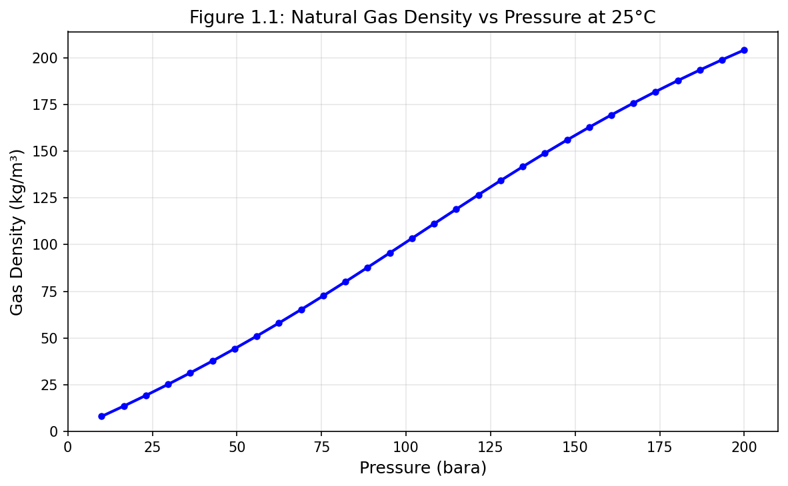
Figure 1.1: Fig01 Density Vs Pressure
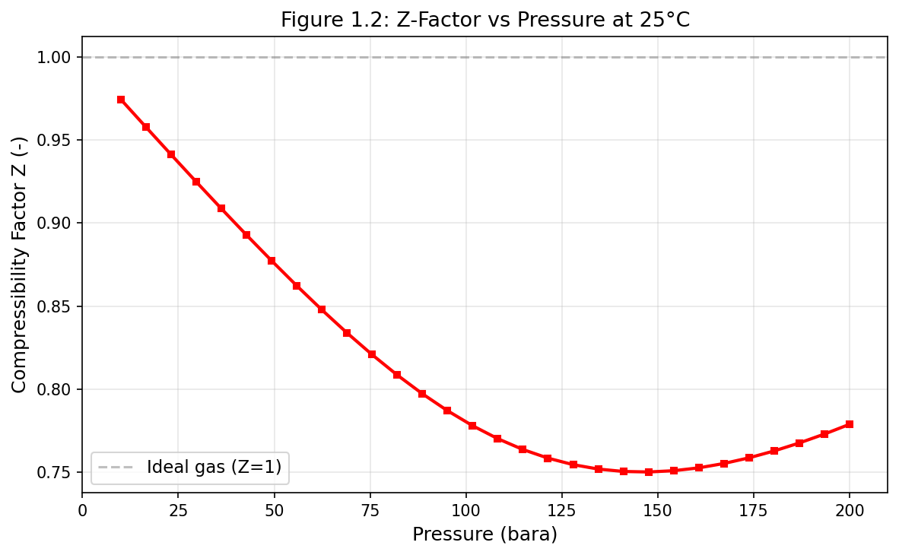
Figure 1.2: Fig02 Z Factor Vs Pressure
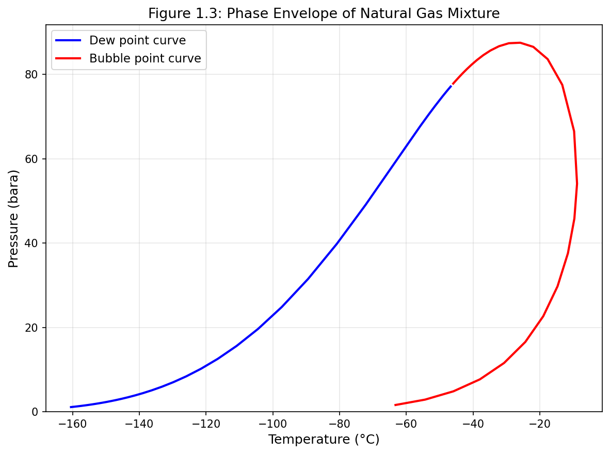
Figure 1.3: Fig03 Phase Envelope
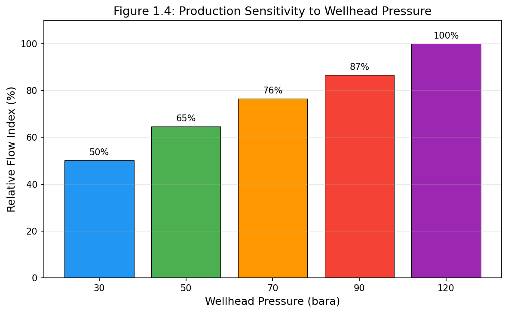
Figure 1.4: Fig04 Production Sensitivity
Thermodynamic Foundations for Process Simulation
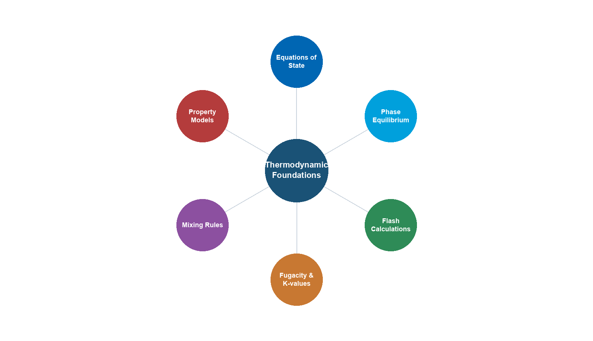
Learning Objectives
After reading this chapter, the reader will be able to:
- Describe the fundamental thermodynamic principles underlying process simulation
- Explain the mathematical structure of cubic equations of state (SRK, PR) and the CPA model
- Derive and apply fugacity-based phase equilibrium criteria
- Understand and implement flash calculation algorithms including Rachford-Rice, successive substitution, and stability analysis
- Calculate thermodynamic and transport properties from an equation of state
- Use NeqSim to create fluids with different equations of state, perform flash calculations, and extract all relevant properties
- Recognize when multi-phase checks (VLLE, three-phase) are necessary
2.1 Introduction
Every process simulation begins with thermodynamics. The accuracy of a production optimization model depends critically on the accuracy of its property predictions — densities that determine hydrostatic heads in risers, enthalpies that govern heat exchanger duties, viscosities that control pressure drops in pipelines, and phase equilibria that dictate how much gas and liquid emerge from a separator.
This chapter develops the thermodynamic framework from first principles through to practical implementation in NeqSim. We begin with the equation of state as the central tool for predicting fluid properties, progress through phase equilibrium theory and flash calculation algorithms, and conclude with the full property calculation chain that supports every simulation in this book.
The reader with a strong background in thermodynamics may skim the theoretical development and focus on the NeqSim implementation sections. The reader new to equation-of-state methods should work through the theory carefully, as every subsequent chapter relies on these foundations.
2.2 Equations of State
An equation of state (EOS) is a mathematical relationship between pressure $P$, molar volume $v$, and temperature $T$ that describes the thermodynamic behavior of a fluid. For process simulation in the oil and gas industry, the equation of state serves as the master model from which all other thermodynamic properties are derived.
2.2.1 The Ideal Gas Law
The simplest equation of state is the ideal gas law:
$$ Pv = RT $$
where $R = 8.314$ J/(mol·K) is the universal gas constant. This equation assumes that molecules have zero volume and no intermolecular interactions. It is accurate only at low pressures and high temperatures — conditions far from those encountered in most oil and gas applications, where pressures of 100–500 bara and temperatures of 50–200°C are common.
The ideal gas law provides a useful reference state against which real gas behavior is measured. The compressibility factor $Z$ quantifies the departure from ideal behavior:
$$ Pv = ZRT $$
For an ideal gas, $Z = 1$. For real gases at reservoir and process conditions, $Z$ typically ranges from 0.3 to 1.2.
2.2.2 The van der Waals Equation
In 1873, Johannes van der Waals introduced the first equation of state that accounts for molecular volume and intermolecular attractions:
$$ P = \frac{RT}{v - b} - \frac{a}{v^2} $$
The parameter $a$ represents attractive forces between molecules, and $b$ represents the volume excluded by molecular size. Both are determined from the critical temperature $T_c$ and critical pressure $P_c$ of the pure component:
$$ a = \frac{27 R^2 T_c^2}{64 P_c}, \qquad b = \frac{RT_c}{8 P_c} $$
While the van der Waals equation is rarely used in modern process simulation, its structure — a repulsive term $RT/(v-b)$ and an attractive term $a/v^2$ — established the template for all subsequent cubic equations of state.
2.2.3 The Soave-Redlich-Kwong (SRK) Equation
The Soave-Redlich-Kwong equation of state (Soave, 1972) modified the Redlich-Kwong equation by introducing a temperature-dependent attractive parameter:
$$ P = \frac{RT}{v - b} - \frac{a(T)}{v(v + b)} $$
The attractive parameter $a(T)$ includes a temperature correction through the alpha function:
$$ a(T) = a_c \cdot \alpha(T) $$
$$ a_c = 0.42748 \frac{R^2 T_c^2}{P_c} $$
$$ b = 0.08664 \frac{RT_c}{P_c} $$
The Soave alpha function depends on the acentric factor $\omega$:
$$ \alpha(T) = \left[1 + m\left(1 - \sqrt{T_r}\right)\right]^2 $$
$$ m = 0.480 + 1.574\omega - 0.176\omega^2 $$
where $T_r = T/T_c$ is the reduced temperature. The acentric factor $\omega$ characterizes the non-sphericity of the molecule and is tabulated for all common components.
The SRK equation can be written in the cubic form by introducing the compressibility factor $Z = Pv/(RT)$:
$$ Z^3 - Z^2 + (A - B - B^2)Z - AB = 0 $$
where:
$$ A = \frac{aP}{R^2T^2}, \qquad B = \frac{bP}{RT} $$
This cubic equation has one or three real roots. At conditions above the critical point (supercritical), there is one real root. At conditions within the two-phase envelope, there are three real roots — the smallest corresponds to the liquid phase, the largest to the vapor phase, and the middle root is physically meaningless.
2.2.4 The Peng-Robinson (PR) Equation
The Peng-Robinson equation (Peng and Robinson, 1976) was developed to improve liquid density predictions compared to the SRK equation:
$$ P = \frac{RT}{v - b} - \frac{a(T)}{v(v+b) + b(v-b)} $$
The parameters are:
$$ a_c = 0.45724 \frac{R^2 T_c^2}{P_c} $$
$$ b = 0.07780 \frac{RT_c}{P_c} $$
$$ \alpha(T) = \left[1 + \kappa\left(1 - \sqrt{T_r}\right)\right]^2 $$
$$ \kappa = 0.37464 + 1.54226\omega - 0.26992\omega^2 $$
The cubic form becomes:
$$ Z^3 - (1 - B)Z^2 + (A - 3B^2 - 2B)Z - (AB - B^2 - B^3) = 0 $$
Both the SRK and PR equations provide acceptable accuracy for hydrocarbon systems. The PR equation generally gives better liquid densities, while the SRK equation is often preferred for gas-phase properties. In practice, the choice between them is often dictated by the availability of tuned binary interaction parameters for the specific fluid system.
Table 2.1 compares the key parameters of the SRK and PR equations:
| Parameter | SRK | PR |
|---|---|---|
| $\Omega_a = a_c P_c / (R^2 T_c^2)$ | 0.42748 | 0.45724 |
| $\Omega_b = b P_c / (RT_c)$ | 0.08664 | 0.07780 |
| Critical compressibility $Z_c$ | 0.3333 | 0.3074 |
| Liquid density accuracy | Fair (5–15% error) | Good (3–8% error) |
| Vapor pressure accuracy | Good | Good |
| Primary use | Gas processing, natural gas | Oil systems, general purpose |
2.2.5 Volume Translation
Both SRK and PR equations systematically under-predict liquid densities. Volume translation (Péneloux et al., 1982) corrects this by shifting the molar volume:
$$ v_{\text{corrected}} = v_{\text{EOS}} - c $$
where $c$ is a component-specific volume shift parameter. The shift does not affect vapor-liquid equilibrium (VLE) calculations — it corrects only volumetric properties. In NeqSim, volume translation is applied automatically when configured.
2.2.6 The CPA Equation of State
The Cubic-Plus-Association (CPA) equation of state (Kontogeorgis et al., 1996) extends the SRK equation to handle associating compounds — molecules that form hydrogen bonds, such as water, methanol, MEG (mono-ethylene glycol), and organic acids:
$$ P = \frac{RT}{v - b} - \frac{a(T)}{v(v+b)} + P_{\text{assoc}} $$
The association term $P_{\text{assoc}}$ accounts for hydrogen bonding and is derived from Wertheim's statistical mechanical theory. It introduces two additional parameters per associating site: the association energy $\epsilon^{AB}$ and the association volume $\beta^{AB}$.
The CPA equation is essential for systems involving:
- Hydrate inhibitors (methanol, MEG, DEG)
- Water content prediction in gas streams
- Produced water with dissolved hydrocarbons
- Acid gas systems (H$_2$S, CO$_2$ with water)
In NeqSim, the CPA model is implemented in the SystemSrkCPAstatoil class, which combines the SRK equation for the physical interactions with the CPA association term.
2.2.7 Other Equations of State in NeqSim
NeqSim supports additional equations of state for specialized applications:
| EOS Class | NeqSim Class | Primary Application |
|---|---|---|
| SRK | SystemSrkEos |
General hydrocarbon systems |
| PR (1976) | SystemPrEos |
Oil systems, general purpose |
| PR (1978) | SystemPrEos1978 |
Improved alpha function |
| SRK-CPA | SystemSrkCPAstatoil |
Associating compounds (water, MEG) |
| Electrolyte CPA | SystemElectrolyteCPAstatoil |
Brine, scale prediction |
| GERG-2008 | SystemGERG2004Eos |
Custody transfer natural gas |
| PC-SAFT | SystemPCSAFTa |
Polymer, associating systems |
| UMR-PRU | SystemUMRPRUMCEos |
Wide-range accuracy |
The choice of EOS depends on the fluid system and the required accuracy. For most production optimization applications, SRK or PR with appropriate binary interaction parameters provides adequate accuracy.
2.3 Mixing Rules
For mixtures, the EOS parameters $a$ and $b$ must be calculated from the pure-component values using mixing rules.
2.3.1 Classical (van der Waals) Mixing Rules
The classical one-fluid mixing rules express the mixture parameters as composition-weighted averages:
$$ a_{\text{mix}} = \sum_i \sum_j x_i x_j (a_i a_j)^{0.5} (1 - k_{ij}) $$
$$ b_{\text{mix}} = \sum_i x_i b_i $$
where $x_i$ is the mole fraction of component $i$ and $k_{ij}$ is the binary interaction parameter (BIP) between components $i$ and $j$. The BIPs are the primary tuning knobs for matching experimental VLE data.
For hydrocarbon-hydrocarbon pairs, $k_{ij}$ is typically small (0.0–0.05). For hydrocarbon-CO$_2$ pairs, $k_{ij}$ is larger (0.10–0.15). For hydrocarbon-H$_2$S pairs, $k_{ij}$ ranges from 0.03–0.08. Accurate BIPs are critical for reliable phase equilibrium predictions.
2.3.2 Huron-Vidal Mixing Rules
For highly non-ideal systems — such as water-hydrocarbon or polar-nonpolar mixtures — the classical mixing rules are insufficient. The Huron-Vidal mixing rules (Huron and Vidal, 1979) incorporate an activity coefficient model (typically NRTL or UNIFAC) at infinite pressure:
$$ a_{\text{mix}} = b_{\text{mix}} \left( \sum_i x_i \frac{a_i}{b_i} + \frac{g_{\text{E},\infty}}{C^*} \right) $$
where $g_{\text{E},\infty}$ is the excess Gibbs energy at infinite pressure from the activity coefficient model, and $C^*$ is a constant that depends on the EOS. In NeqSim, Huron-Vidal mixing rules are available and can be selected when the classical rules prove inadequate for strongly non-ideal mixtures.
2.3.3 Setting Mixing Rules in NeqSim
The mixing rule must always be set before performing any flash calculation:
from neqsim import jneqsim
# SRK with classical mixing rules
fluid_srk = jneqsim.thermo.system.SystemSrkEos(273.15 + 60.0, 100.0)
fluid_srk.addComponent("methane", 0.80)
fluid_srk.addComponent("ethane", 0.10)
fluid_srk.addComponent("propane", 0.05)
fluid_srk.addComponent("n-butane", 0.03)
fluid_srk.addComponent("CO2", 0.02)
fluid_srk.setMixingRule("classic")
# CPA with specialized mixing rules for water-containing systems
fluid_cpa = jneqsim.thermo.system.SystemSrkCPAstatoil(273.15 + 60.0, 100.0)
fluid_cpa.addComponent("methane", 0.80)
fluid_cpa.addComponent("water", 0.15)
fluid_cpa.addComponent("MEG", 0.05)
fluid_cpa.setMixingRule(10) # CPA mixing rule
2.3.4 Activity Coefficient Models
While equations of state are the dominant approach for hydrocarbon systems, activity coefficient models are sometimes preferred for highly non-ideal liquid mixtures — particularly aqueous systems, electrolyte solutions, and glycol–water systems where the liquid-phase non-ideality is extreme.
In the activity coefficient approach, the fugacity of component $i$ in the liquid phase is expressed as:
$$ f_i^L = x_i \gamma_i f_i^{0,L} $$
where $\gamma_i$ is the activity coefficient and $f_i^{0,L}$ is the fugacity of pure liquid $i$ at the system temperature and pressure. The vapor phase is typically described by an equation of state:
$$ f_i^V = y_i \phi_i^V P $$
This "gamma-phi" approach decouples the liquid and vapor descriptions, which is advantageous when the liquid phase is highly non-ideal but the vapor phase is nearly ideal (low to moderate pressures).
The Wilson Equation (Wilson, 1964) is the simplest activity coefficient model that accounts for local composition effects:
$$ \ln \gamma_i = -\ln\left(\sum_j x_j \Lambda_{ij}\right) + 1 - \sum_k \frac{x_k \Lambda_{ki}}{\sum_j x_j \Lambda_{kj}} $$
where $\Lambda_{ij}$ are binary parameters related to molecular interaction energies. The Wilson equation cannot predict liquid–liquid immiscibility (VLLE), which limits its use in water–hydrocarbon systems.
The NRTL Model (Non-Random Two-Liquid, Renon and Prausnitz, 1968) extends the local composition concept with a non-randomness parameter $\alpha_{ij}$:
$$ \ln \gamma_i = \frac{\sum_j x_j \tau_{ji} G_{ji}}{\sum_k x_k G_{ki}} + \sum_j \frac{x_j G_{ij}}{\sum_k x_k G_{kj}} \left(\tau_{ij} - \frac{\sum_m x_m \tau_{mj} G_{mj}}{\sum_k x_k G_{kj}}\right) $$
where $G_{ij} = \exp(-\alpha_{ij} \tau_{ij})$ and $\tau_{ij} = (g_{ij} - g_{jj}) / (RT)$. NRTL can represent both VLE and LLE, making it suitable for water–hydrocarbon and glycol–water systems. The non-randomness parameter $\alpha_{ij}$ is typically set to 0.2–0.47.
The UNIFAC Model (UNIQUAC Functional-group Activity Coefficients, Fredenslund et al., 1975) is a predictive group-contribution method. Instead of requiring binary parameters for every molecular pair, UNIFAC decomposes molecules into functional groups and uses group–group interaction parameters:
$$ \ln \gamma_i = \ln \gamma_i^C + \ln \gamma_i^R $$
where $\ln \gamma_i^C$ is the combinatorial contribution (molecular size and shape) and $\ln \gamma_i^R$ is the residual contribution (group interactions). UNIFAC is particularly valuable when experimental VLE data are unavailable for parameter fitting.
When to use activity coefficient models instead of EOS:
| Scenario | Preferred Model | Reason |
|---|---|---|
| Water–glycol–hydrocarbon | CPA or NRTL | Strong hydrogen bonding |
| Electrolyte solutions (brine) | Electrolyte NRTL or eCPA | Ion interactions |
| Amine treating (MEA, DEA, MDEA) | Electrolyte CPA or NRTL | Ionic reactions in solution |
| Low-pressure VLE | NRTL + ideal gas | Simpler, well-validated |
| Screening new solvents | UNIFAC | No experimental data needed |
| High-pressure hydrocarbon VLE | EOS (SRK, PR) | Activity models less reliable at high P |
In NeqSim, the CPA equation of state with Huron-Vidal mixing rules effectively combines EOS and activity coefficient approaches — it uses SRK for the physical contribution and an activity coefficient model for the association/non-ideal contribution. For most production optimization applications, this hybrid approach (CPA) is preferred over a pure activity coefficient model because it handles both the vapor and liquid phases consistently across all pressures.
2.4 Fugacity and Chemical Potential
2.4.1 Chemical Potential
The chemical potential $\mu_i$ of component $i$ in a mixture is defined as:
$$ \mu_i = \left(\frac{\partial G}{\partial n_i}\right)_{T,P,n_{j \neq i}} $$
where $G$ is the Gibbs energy and $n_i$ is the number of moles of component $i$. A system at equilibrium has equal chemical potentials for each component in every coexisting phase.
2.4.2 Fugacity
For practical calculations with equations of state, fugacity $f_i$ replaces chemical potential. The fugacity of component $i$ in a mixture is related to the chemical potential by:
$$ \mu_i = \mu_i^{\text{ig},0} + RT \ln \frac{f_i}{P^0} $$
The fugacity coefficient $\phi_i$ relates the fugacity to the partial pressure:
$$ f_i = x_i \phi_i P $$
For the SRK equation, the fugacity coefficient of component $i$ in the mixture is:
$$ \ln \phi_i = \frac{b_i}{b_{\text{mix}}}(Z-1) - \ln(Z-B) - \frac{A}{B}\left(\frac{2\sum_j x_j a_{ij}}{a_{\text{mix}}} - \frac{b_i}{b_{\text{mix}}}\right)\ln\left(1 + \frac{B}{Z}\right) $$
For the PR equation:
$$ \ln \phi_i = \frac{b_i}{b_{\text{mix}}}(Z-1) - \ln(Z-B) - \frac{A}{2\sqrt{2}B}\left(\frac{2\sum_j x_j a_{ij}}{a_{\text{mix}}} - \frac{b_i}{b_{\text{mix}}}\right)\ln\left(\frac{Z + (1+\sqrt{2})B}{Z + (1-\sqrt{2})B}\right) $$
These expressions are evaluated by NeqSim internally for every flash calculation. The user does not need to implement them, but understanding their structure helps diagnose convergence issues and interpret results.
2.4.3 Phase Equilibrium Criteria
A system of $N_c$ components distributed between $N_p$ phases is at thermodynamic equilibrium when:
- Thermal equilibrium: Equal temperatures in all phases: $T^{(1)} = T^{(2)} = \ldots = T^{(N_p)}$
- Mechanical equilibrium: Equal pressures in all phases: $P^{(1)} = P^{(2)} = \ldots = P^{(N_p)}$
- Chemical equilibrium: Equal fugacities for each component in all phases:
$$ f_i^{(1)} = f_i^{(2)} = \ldots = f_i^{(N_p)}, \qquad i = 1, 2, \ldots, N_c $$
For a two-phase vapor-liquid system, this becomes:
$$ x_i \phi_i^L P = y_i \phi_i^V P $$
which simplifies to:
$$ K_i = \frac{y_i}{x_i} = \frac{\phi_i^L}{\phi_i^V} $$
where $K_i$ is the equilibrium ratio (K-value) for component $i$. The K-values are the foundation of all flash calculations.
2.5 Flash Calculation Algorithms
Flash calculations determine the phase split and composition of each phase at specified conditions. The most common types are:
| Flash Type | Specified Variables | Primary Use |
|---|---|---|
| TP flash | Temperature, Pressure | Separators, heat exchangers |
| PH flash | Pressure, Enthalpy | Adiabatic processes, valves |
| PS flash | Pressure, Entropy | Isentropic compression |
| TV flash | Temperature, Volume | Pipeline storage |
| Dew point | One of T or P | Phase envelope mapping |
| Bubble point | One of T or P | Phase envelope mapping |
2.5.1 The Rachford-Rice Equation
For a TP flash of a mixture with overall composition $z_i$, the phase split is determined by the Rachford-Rice equation. Let $\beta$ be the vapor fraction (moles of vapor / total moles). Then:
$$ \sum_{i=1}^{N_c} \frac{z_i(K_i - 1)}{1 + \beta(K_i - 1)} = 0 $$
This equation must be solved for $\beta$ given the K-values. The compositions are then:
$$ x_i = \frac{z_i}{1 + \beta(K_i - 1)}, \qquad y_i = K_i x_i $$
The Rachford-Rice equation is monotonic in $\beta$ and has a unique solution in the interval $[\beta_{\min}, \beta_{\max}]$, where:
$$ \beta_{\min} = \frac{1}{1 - K_{\max}}, \qquad \beta_{\max} = \frac{1}{1 - K_{\min}} $$
This property makes it straightforward to solve using Newton-Raphson or bisection methods.
2.5.2 Successive Substitution (SSI)
The standard algorithm for TP flash is successive substitution iteration:
- Initialize K-values using Wilson's correlation:
$$ K_i = \frac{P_{c,i}}{P} \exp\left[5.373(1 + \omega_i)\left(1 - \frac{T_{c,i}}{T}\right)\right] $$
- Solve Rachford-Rice for $\beta$ and calculate $x_i$, $y_i$
- Calculate fugacity coefficients $\phi_i^L(x)$ and $\phi_i^V(y)$ from the EOS
- Update K-values:
$$ K_i^{\text{new}} = K_i^{\text{old}} \frac{\phi_i^L}{\phi_i^V} $$
- Check convergence: If $\sum_i (\ln K_i^{\text{new}} - \ln K_i^{\text{old}})^2 < \epsilon$, stop; otherwise return to step 2.
Successive substitution is robust but can be slow near the critical point, where K-values approach unity and convergence becomes first-order.
2.5.3 Newton-Raphson Acceleration
When successive substitution converges slowly, Newton-Raphson methods can accelerate convergence by using second-derivative information. The independent variables are typically $\ln K_i$ or the phase compositions, and the Jacobian includes composition derivatives of the fugacity coefficients.
NeqSim implements combined SSI-Newton methods: successive substitution is used for the first few iterations to establish a good starting point, then Newton-Raphson takes over for rapid quadratic convergence.
2.5.4 Stability Analysis (Michelsen's Method)
Before performing a flash calculation, one must determine whether the system is single-phase or multiphase. Michelsen's tangent plane distance (TPD) criterion (Michelsen, 1982) provides this test.
The tangent plane distance function is defined as:
$$ \text{TPD}(w) = \sum_{i=1}^{N_c} w_i \left[\ln w_i + \ln \phi_i(w) - \ln z_i - \ln \phi_i(z)\right] $$
where $w_i$ is a trial composition. If $\text{TPD}(w) \geq 0$ for all possible $w$, the system is stable in a single phase. If $\text{TPD}(w) < 0$ for any $w$, the system is unstable and will split into two or more phases.
In practice, the stability test is performed by minimizing the TPD function from multiple starting points — typically a vapor-like and a liquid-like initial guess. If any minimum has $\text{TPD} < 0$, a flash calculation is performed using that minimum as the initial K-value estimate.
The stability test is particularly important for:
- Systems near the critical point
- Systems with retrograde condensation (gas condensates)
- Three-phase (VLLE) systems where both a VLE and a LLE check are needed
2.5.5 PH and PS Flash Calculations
For adiabatic processes (valves, mixing) and isentropic processes (ideal compression), enthalpy-specified (PH) or entropy-specified (PS) flash calculations are required. These are solved by nesting a TP flash inside an outer loop that adjusts temperature until the enthalpy or entropy constraint is satisfied:
- Guess T
- Perform TP flash at $(T, P)$
- Calculate H(T, P) or S(T, P) from the EOS
- Compare with specified H or S
- Update T using Newton-Raphson (with $C_p$ or $C_p/T$ as the derivative)
- Repeat until convergence
2.5.6 Multi-Phase Flash (VLLE and Three-Phase)
Many production systems contain water as a separate liquid phase in addition to hydrocarbon vapor and liquid. Three-phase (vapor-liquid-liquid equilibrium, VLLE) flash calculations extend the two-phase algorithm by introducing additional phase fractions and composition vectors.
In NeqSim, multi-phase checking is enabled with setMultiPhaseCheck(True). When enabled, the flash algorithm automatically tests for the presence of additional phases using stability analysis and performs the appropriate multi-phase flash if needed.
# Enable multi-phase checking for water-containing systems
fluid = jneqsim.thermo.system.SystemSrkEos(273.15 + 60.0, 50.0)
fluid.addComponent("methane", 0.70)
fluid.addComponent("ethane", 0.08)
fluid.addComponent("propane", 0.04)
fluid.addComponent("n-heptane", 0.10)
fluid.addComponent("water", 0.08)
fluid.setMixingRule("classic")
fluid.setMultiPhaseCheck(True)
2.5.7 Hydrate Equilibrium Calculations
Gas hydrates are crystalline inclusion compounds where water molecules form a cage structure that traps small gas molecules (methane, ethane, CO$_2$, H$_2$S). Hydrate formation is a major flow assurance concern in subsea pipelines and wet gas systems, and predicting the hydrate equilibrium temperature is critical for production optimization.
The hydrate equilibrium condition requires that the chemical potential of water in the hydrate phase equals the chemical potential of water in the fluid phase:
$$ \mu_w^H(T, P) = \mu_w^{\text{fluid}}(T, P, \mathbf{x}) $$
The van der Waals–Platteeuw statistical mechanical model (1959) describes the hydrate phase by accounting for the occupancy of different cage types by gas molecules. The hydrate equilibrium temperature depends strongly on pressure and gas composition — heavier hydrocarbons and CO$_2$ tend to form hydrates at higher temperatures (they are stronger hydrate formers).
NeqSim calculates hydrate equilibrium through the ThermodynamicOperations class:
# Hydrate equilibrium temperature at a given pressure
fluid_hyd = jneqsim.thermo.system.SystemSrkCPAstatoil(273.15 + 5.0, 100.0)
fluid_hyd.addComponent("methane", 0.85)
fluid_hyd.addComponent("ethane", 0.08)
fluid_hyd.addComponent("propane", 0.04)
fluid_hyd.addComponent("CO2", 0.03)
fluid_hyd.addComponent("water", 0.10)
fluid_hyd.setMixingRule(10)
ops_hyd = jneqsim.thermodynamicoperations.ThermodynamicOperations(fluid_hyd)
ops_hyd.hydrateEquilibriumTemperature()
print(f"Hydrate equilibrium T at 100 bara: {fluid_hyd.getTemperature('C'):.1f} C")
2.5.8 Wax and Solid Phase Equilibrium
Heavy paraffinic crude oils can precipitate solid wax (n-alkanes with carbon numbers typically above C$_{18}$–C$_{20}$) when cooled below the wax appearance temperature (WAT). Wax deposition in pipelines reduces flow area and increases pressure drop, making WAT prediction essential for flow assurance design.
The solid–liquid equilibrium for wax formation requires:
$$ f_i^S(T, P) = f_i^L(T, P, \mathbf{x}) $$
where $f_i^S$ is the fugacity of component $i$ in the solid (wax) phase, calculated from the pure-component melting properties (melting temperature, heat of fusion) and the solid-solution activity coefficient model.
The wax appearance temperature is the highest temperature at which any solid phase is thermodynamically stable. Below the WAT, the amount of precipitated wax increases as temperature decreases, following the wax precipitation curve (wt% solid vs temperature).
For production optimization, the key design questions are:
- At what temperature does wax first appear? (WAT — determines insulation or heating requirements)
- How much wax precipitates at pipeline arrival temperature? (determines pigging frequency)
- What pour point does the crude have? (determines pumpability limits)
2.6 NeqSim Implementation: Creating Fluids and Running Flash Calculations
2.6.1 Creating a Fluid with Different EOS
The following example demonstrates how to create the same fluid composition using different equations of state and compare the results:
from neqsim import jneqsim
# Define composition (mole fractions)
components = [
("nitrogen", 0.5),
("CO2", 2.5),
("methane", 75.0),
("ethane", 7.0),
("propane", 4.0),
("i-butane", 1.0),
("n-butane", 2.0),
("i-pentane", 0.8),
("n-pentane", 0.7),
("n-hexane", 0.5),
("n-heptane", 3.0),
("n-octane", 2.0),
("n-nonane", 1.0),
]
# Temperature and pressure
T_K = 273.15 + 80.0 # 80°C in Kelvin
P_bara = 150.0
# SRK equation of state
fluid_srk = jneqsim.thermo.system.SystemSrkEos(T_K, P_bara)
for name, moles in components:
fluid_srk.addComponent(name, moles)
fluid_srk.setMixingRule("classic")
# Peng-Robinson equation of state
fluid_pr = jneqsim.thermo.system.SystemPrEos(T_K, P_bara)
for name, moles in components:
fluid_pr.addComponent(name, moles)
fluid_pr.setMixingRule("classic")
# Run TP flash for both
ThermodynamicOperations = jneqsim.thermodynamicoperations.ThermodynamicOperations
ops_srk = ThermodynamicOperations(fluid_srk)
ops_srk.TPflash()
fluid_srk.initProperties()
ops_pr = ThermodynamicOperations(fluid_pr)
ops_pr.TPflash()
fluid_pr.initProperties()
# Compare densities
print(f"SRK liquid density: {fluid_srk.getPhase('oil').getDensity('kg/m3'):.1f} kg/m3")
print(f"PR liquid density: {fluid_pr.getPhase('oil').getDensity('kg/m3'):.1f} kg/m3")
print(f"SRK gas density: {fluid_srk.getPhase('gas').getDensity('kg/m3'):.1f} kg/m3")
print(f"PR gas density: {fluid_pr.getPhase('gas').getDensity('kg/m3'):.1f} kg/m3")
2.6.2 Running Different Types of Flash Calculations
NeqSim supports all standard flash types through the ThermodynamicOperations class:
from neqsim import jneqsim
# Create fluid
fluid = jneqsim.thermo.system.SystemSrkEos(273.15 + 80.0, 100.0)
fluid.addComponent("methane", 0.85)
fluid.addComponent("ethane", 0.08)
fluid.addComponent("propane", 0.04)
fluid.addComponent("n-heptane", 0.03)
fluid.setMixingRule("classic")
ops = jneqsim.thermodynamicoperations.ThermodynamicOperations(fluid)
# --- TP Flash ---
ops.TPflash()
fluid.initProperties()
print(f"TP Flash: T = {fluid.getTemperature('C'):.1f} C, P = {fluid.getPressure('bara'):.1f} bara")
print(f" Vapor fraction: {fluid.getBeta():.4f}")
print(f" Gas density: {fluid.getPhase('gas').getDensity('kg/m3'):.2f} kg/m3")
# Store the enthalpy for PH flash verification
H_total = fluid.getEnthalpy("J")
S_total = fluid.getEntropy("J/K")
# --- PH Flash ---
# Reduce pressure to 50 bara (e.g., across a valve), keep same enthalpy
fluid_ph = fluid.clone()
fluid_ph.setPressure(50.0, "bara")
ops_ph = jneqsim.thermodynamicoperations.ThermodynamicOperations(fluid_ph)
ops_ph.PHflash(H_total)
fluid_ph.initProperties()
print(f"\nPH Flash (isenthalpic expansion to 50 bara):")
print(f" Temperature: {fluid_ph.getTemperature('C'):.1f} C")
print(f" Vapor fraction: {fluid_ph.getBeta():.4f}")
# --- PS Flash ---
# Isentropic compression to 200 bara
fluid_ps = fluid.clone()
fluid_ps.setPressure(200.0, "bara")
ops_ps = jneqsim.thermodynamicoperations.ThermodynamicOperations(fluid_ps)
ops_ps.PSflash(S_total)
fluid_ps.initProperties()
print(f"\nPS Flash (isentropic compression to 200 bara):")
print(f" Temperature: {fluid_ps.getTemperature('C'):.1f} C")
# --- Bubble Point ---
fluid_bp = fluid.clone()
ops_bp = jneqsim.thermodynamicoperations.ThermodynamicOperations(fluid_bp)
ops_bp.bubblePointPressureFlash(False)
print(f"\nBubble point pressure at {fluid_bp.getTemperature('C'):.1f} C: "
f"{fluid_bp.getPressure('bara'):.1f} bara")
# --- Dew Point ---
fluid_dp = fluid.clone()
ops_dp = jneqsim.thermodynamicoperations.ThermodynamicOperations(fluid_dp)
ops_dp.dewPointPressureFlash()
print(f"Dew point pressure at {fluid_dp.getTemperature('C'):.1f} C: "
f"{fluid_dp.getPressure('bara'):.1f} bara")
2.6.3 Phase Envelope Calculation
The phase envelope — the locus of bubble and dew point curves in $P$-$T$ space — is essential for understanding fluid behavior. NeqSim calculates phase envelopes using a continuation method:
from neqsim import jneqsim
fluid = jneqsim.thermo.system.SystemSrkEos(273.15 + 20.0, 50.0)
fluid.addComponent("methane", 0.80)
fluid.addComponent("ethane", 0.08)
fluid.addComponent("propane", 0.05)
fluid.addComponent("n-butane", 0.03)
fluid.addComponent("n-pentane", 0.02)
fluid.addComponent("n-heptane", 0.02)
fluid.setMixingRule("classic")
ops = jneqsim.thermodynamicoperations.ThermodynamicOperations(fluid)
ops.calcPTphaseEnvelope()
# Extract data for plotting
temperatures = [t for t in ops.getOperation().get("dewT")]
pressures = [p for p in ops.getOperation().get("dewP")]
bubble_temps = [t for t in ops.getOperation().get("bubT")]
bubble_pressures = [p for p in ops.getOperation().get("bubP")]
cricondenbar_T = ops.getOperation().get("cricondenbar")[0]
cricondenbar_P = ops.getOperation().get("cricondenbar")[1]
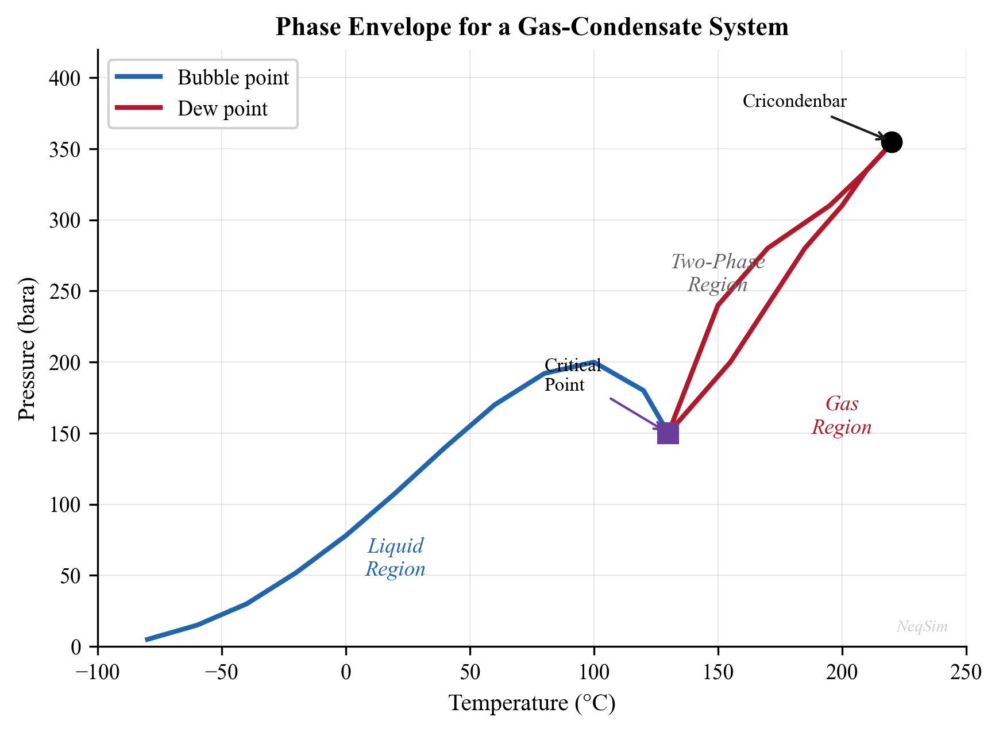
2.7 Property Calculations
Once the flash calculation has determined the phase split and compositions, all thermodynamic and transport properties can be calculated from the equation of state.
2.7.1 Init Levels in NeqSim
NeqSim uses a hierarchical initialization system to calculate properties at different levels of detail:
| Init Level | What It Calculates | When to Use |
|---|---|---|
init(0) |
Component parameters, critical properties | After adding components |
init(1) |
Fugacity coefficients, K-values | During flash iterations |
init(2) |
Thermodynamic properties (density, H, S, Cp) | After flash converges |
init(3) |
Composition derivatives, stability | For advanced analysis |
initPhysicalProperties() |
Transport properties (viscosity, thermal conductivity) | After init(2) |
initProperties() |
Both init(2) AND initPhysicalProperties() | Recommended after every flash |
Critical rule: After any flash calculation, you MUST call fluid.initProperties() before reading physical/transport properties. The init(3) call alone does NOT initialize transport properties.
# CORRECT pattern:
ops.TPflash()
fluid.initProperties() # MANDATORY
viscosity = fluid.getPhase("gas").getViscosity("kg/msec") # Now correct
# WRONG pattern (will return zero):
ops.TPflash()
# Missing initProperties()!
viscosity = fluid.getPhase("gas").getViscosity("kg/msec") # Returns 0!
2.7.2 Thermodynamic Properties
After calling initProperties(), the following thermodynamic properties are available:
from neqsim import jneqsim
# Create and flash a fluid
fluid = jneqsim.thermo.system.SystemSrkEos(273.15 + 60.0, 80.0)
fluid.addComponent("methane", 0.80)
fluid.addComponent("ethane", 0.10)
fluid.addComponent("propane", 0.05)
fluid.addComponent("n-heptane", 0.05)
fluid.setMixingRule("classic")
ops = jneqsim.thermodynamicoperations.ThermodynamicOperations(fluid)
ops.TPflash()
fluid.initProperties()
# --- Overall properties ---
print(f"Temperature: {fluid.getTemperature('C'):.2f} C")
print(f"Pressure: {fluid.getPressure('bara'):.2f} bara")
print(f"Vapor fraction (molar): {fluid.getBeta():.4f}")
print(f"Number of phases: {fluid.getNumberOfPhases()}")
# --- Gas phase properties ---
gas = fluid.getPhase("gas")
print(f"\nGas phase:")
print(f" Density: {gas.getDensity('kg/m3'):.3f} kg/m3")
print(f" Molar mass: {gas.getMolarMass('kg/mol') * 1000:.2f} g/mol")
print(f" Z-factor: {gas.getZ():.4f}")
print(f" Enthalpy: {gas.getEnthalpy('J/mol'):.1f} J/mol")
print(f" Entropy: {gas.getEntropy('J/molK'):.3f} J/(mol·K)")
print(f" Cp: {gas.getCp('J/molK'):.3f} J/(mol·K)")
print(f" Cv: {gas.getCv('J/molK'):.3f} J/(mol·K)")
print(f" Cp/Cv ratio: {gas.getGamma():.4f}")
print(f" Speed of sound: {gas.getSoundSpeed():.1f} m/s")
print(f" Viscosity: {gas.getViscosity('kg/msec'):.6f} Pa·s")
print(f" Thermal conductivity: {gas.getThermalConductivity('W/mK'):.5f} W/(m·K)")
print(f" JT coefficient: {gas.getJouleThomsonCoefficient('C/bara'):.4f} C/bara")
# --- Liquid phase properties ---
if fluid.getNumberOfPhases() > 1:
oil = fluid.getPhase("oil")
print(f"\nOil phase:")
print(f" Density: {oil.getDensity('kg/m3'):.1f} kg/m3")
print(f" Viscosity: {oil.getViscosity('kg/msec'):.6f} Pa·s")
print(f" Thermal conductivity: {oil.getThermalConductivity('W/mK'):.5f} W/(m·K)")
print(f" Surface tension: {fluid.getInterphaseProperties().getSurfaceTension(0, 1):.6f} N/m")
2.7.3 Density Calculation from the EOS
The density is obtained directly from the molar volume, which is a root of the cubic EOS:
$$ \rho = \frac{M_w}{v} $$
where $M_w$ is the molar mass of the phase and $v$ is the molar volume from solving the cubic equation. For the gas phase, the larger root is used; for the liquid phase, the smaller root.
2.7.4 Enthalpy and Entropy
The enthalpy departure from the ideal gas state is calculated from the EOS:
$$ H - H^{\text{ig}} = RT(Z - 1) + \int_{\infty}^{v} \left[T\left(\frac{\partial P}{\partial T}\right)_v - P\right] dv $$
For the SRK equation, this integral has the analytical result:
$$ H - H^{\text{ig}} = RT(Z - 1) + \frac{a - T \frac{da}{dT}}{b} \ln\left(\frac{v + b}{v}\right) $$
The total enthalpy is:
$$ H = H^{\text{ig}}(T) + (H - H^{\text{ig}}) $$
where $H^{\text{ig}}(T)$ is the ideal gas enthalpy, calculated from the ideal gas heat capacity:
$$ H^{\text{ig}}(T) = H^{\text{ig},\text{ref}} + \int_{T_{\text{ref}}}^{T} C_p^{\text{ig}}(T') dT' $$
The entropy departure is similarly:
$$ S - S^{\text{ig}} = R \ln\left(\frac{v - b}{v}\right) + \frac{\frac{da}{dT}}{b} \ln\left(\frac{v + b}{v}\right) $$
2.7.5 Heat Capacity
The constant-pressure heat capacity $C_p$ and constant-volume heat capacity $C_v$ are derived from the EOS through second derivatives:
$$ C_v = C_v^{\text{ig}} + C_v^{\text{res}} $$
$$ C_p = C_v - T \frac{\left(\frac{\partial P}{\partial T}\right)_v^2}{\left(\frac{\partial P}{\partial v}\right)_T} $$
The ratio $\gamma = C_p / C_v$ is important for compressor calculations and speed of sound.
2.7.6 Transport Properties
Transport properties — viscosity and thermal conductivity — are not directly calculated from the equation of state. Instead, NeqSim uses corresponding-states correlations:
- Viscosity: Lohrenz-Bray-Clark (LBC) correlation for dense phases, or kinetic theory for dilute gas
- Thermal conductivity: Modified Ely-Hanley corresponding states method
These correlations require the density and composition from the EOS, which is why initProperties() (which calls initPhysicalProperties()) must be invoked after the flash.
Table 2.2 summarizes the property calculation chain:
| Property | Source | Requires |
|---|---|---|
| Phase split, compositions | Flash algorithm | EOS parameters, mixing rules |
| Density | Cubic root of EOS | Flash converged |
| Z-factor | $Z = Pv/(RT)$ | Density |
| Enthalpy | Departure function | Flash + ideal gas Cp |
| Entropy | Departure function | Flash + ideal gas Cp |
| Cp, Cv | Second derivatives | Flash |
| Viscosity | LBC or kinetic theory | Density, composition |
| Thermal conductivity | Ely-Hanley | Density, composition |
| Surface tension | Parachor method | Phase densities, compositions |
2.7.7 Viscosity Models in Detail
Viscosity is critical for production optimization — it directly affects pressure drop in pipelines, well deliverability, and separator sizing. NeqSim employs several viscosity models depending on the phase and conditions.
The Lohrenz-Bray-Clark (LBC) Correlation (1964) is the standard method for dense-phase hydrocarbon viscosity. It relates the reduced viscosity to reduced density through a fourth-degree polynomial:
$$ \left[(\mu - \mu^*)\xi + 10^{-4}\right]^{1/4} = a_0 + a_1 \rho_r + a_2 \rho_r^2 + a_3 \rho_r^3 + a_4 \rho_r^4 $$
where $\mu^*$ is the dilute-gas viscosity, $\xi$ is the viscosity-reducing parameter defined as:
$$ \xi = \left(\frac{T_c}{M^3 P_c^4}\right)^{1/6} $$
$\rho_r = \rho / \rho_c$ is the reduced density, and $a_0$ through $a_4$ are universal constants. The LBC correlation requires accurate density from the EOS and the mixture pseudo-critical properties.
The Corresponding States Principle (Pedersen et al., 1984) calculates the viscosity of a hydrocarbon mixture by scaling from a reference substance (typically methane):
$$ \mu_{\text{mix}}(T, P) = \mu_{\text{ref}}\left(\frac{T}{T_{c,\text{mix}}} T_{c,\text{ref}}, \frac{P}{P_{c,\text{mix}}} P_{c,\text{ref}}\right) \cdot \frac{T_{c,\text{mix}}^{-1/6} M_{\text{mix}}^{1/2} P_{c,\text{mix}}^{2/3}}{T_{c,\text{ref}}^{-1/6} M_{\text{ref}}^{1/2} P_{c,\text{ref}}^{2/3}} $$
This method is particularly effective for reservoir fluids with heavy fractions.
2.7.8 Thermal Conductivity
Thermal conductivity governs heat transfer rates in heat exchangers, pipelines (heat loss to surroundings), and wellbores. The Chung et al. correlation (1988) is widely used for gas-phase thermal conductivity:
$$ \lambda = \frac{31.2 \mu^0 \Psi}{M'}\left(G_2^{-1} + B_6 y\right) + q B_7 y^2 T_r^{1/2} G_2 $$
where $\mu^0$ is the dilute-gas viscosity, $\Psi$ is a correction factor, $M'$ is a modified molecular weight, and $B_6$, $B_7$, $G_2$, $q$, $y$ are functions of the reduced temperature, density, and acentric factor.
For liquid-phase thermal conductivity, NeqSim uses the Ely-Hanley corresponding-states method, which scales liquid thermal conductivity from a reference fluid.
2.7.9 Surface Tension
Surface tension between gas and liquid phases controls droplet formation in separators, mist eliminator performance, and gas-liquid entrainment. NeqSim uses the parachor method (Macleod-Sugden correlation):
$$ \sigma^{1/4} = \sum_i P_i \left(\frac{x_i \rho_L}{M_L} - \frac{y_i \rho_V}{M_V}\right) $$
where $\sigma$ is the surface tension (N/m), $P_i$ is the parachor of component $i$ (tabulated), $\rho_L$ and $\rho_V$ are the liquid and vapor densities, and $M_L$ and $M_V$ are the phase molar masses. The parachor is an empirical constant specific to each component and is available in standard databases.
Surface tension decreases as conditions approach the critical point (where the two phases become identical) and increases with pressure for gas-liquid systems far from the critical region. For separator design, typical gas-condensate surface tensions are 5–15 mN/m, while crude oil–gas surface tensions are 15–30 mN/m.
2.7.10 Component Properties in Each Phase
Individual component properties can also be accessed:
# Mole fractions in gas phase
gas = fluid.getPhase("gas")
for i in range(gas.getNumberOfComponents()):
comp = gas.getComponent(i)
print(f" {comp.getComponentName():15s}: x = {comp.getx():.6f}, "
f"K = {comp.getK():.4f}, "
f"fugacity coeff = {comp.getFugacityCoefficient():.6f}")
2.8 The GERG-2008 Equation
For custody transfer and fiscal metering of natural gas, the GERG-2008 equation (Kunz and Wagner, 2012) provides the highest accuracy available. It is an explicit Helmholtz energy model, not a cubic EOS, and is the reference equation for natural gas properties in ISO 20765.
GERG-2008 achieves uncertainties of:
- Density: 0.1% at pipeline conditions
- Speed of sound: 0.1%
- Heat capacity: 0.5–1%
However, it is limited to defined natural gas components (21 species) and is not suitable for reservoir fluid modeling with heavy fractions.
# GERG-2008 for custody transfer quality calculations
fluid_gerg = jneqsim.thermo.system.SystemGERG2004Eos(273.15 + 15.0, 50.0)
fluid_gerg.addComponent("methane", 0.90)
fluid_gerg.addComponent("ethane", 0.05)
fluid_gerg.addComponent("propane", 0.02)
fluid_gerg.addComponent("nitrogen", 0.02)
fluid_gerg.addComponent("CO2", 0.01)
fluid_gerg.setMixingRule("classic")
ops_gerg = jneqsim.thermodynamicoperations.ThermodynamicOperations(fluid_gerg)
ops_gerg.TPflash()
fluid_gerg.initProperties()
print(f"GERG-2008 gas density at 15°C, 50 bara: "
f"{fluid_gerg.getPhase('gas').getDensity('kg/m3'):.4f} kg/m3")
2.9 Practical Considerations
2.9.1 EOS Selection Guide
The choice of equation of state depends on the application. The following decision tree provides a systematic approach for selecting the appropriate EOS in NeqSim:
Step 1 — Does the system contain associating compounds? Associating compounds are those that form hydrogen bonds: water, methanol, MEG, DEG, TEG, organic acids, amines. If yes, proceed to Step 1a. If no, proceed to Step 2.
Step 1a — Does the system contain ions or electrolytes? If the system includes dissolved salts, mineral ions (Na$^+$, Cl$^-$, Ca$^{2+}$), or brine, use SystemElectrolyteCPAstatoil. If no electrolytes are present but associating compounds exist, use SystemSrkCPAstatoil with mixing rule 10.
Step 2 — Is this a custody transfer or fiscal metering application? For the highest possible accuracy in natural gas density and speed-of-sound calculations (ISO 20765 compliance), use SystemGERG2004Eos. Note: GERG-2008 is limited to 21 defined components and cannot handle C$_7$+ pseudo-components.
Step 3 — Is liquid density accuracy critical? For oil systems where liquid density prediction is important (stock tank calculations, pipeline holdup, separator sizing), prefer Peng-Robinson (SystemPrEos). For gas-dominated systems, SRK (SystemSrkEos) is equally suitable.
Step 4 — Default recommendation. For general-purpose production optimization where none of the above special conditions apply, use SRK with classical mixing rules (setMixingRule("classic")). SRK is well-tested, has extensive BIP databases, and provides reliable results for natural gas and gas condensate systems.
The full selection matrix:
| Application | Recommended EOS | Rationale |
|---|---|---|
| Dry gas / lean gas | SRK or PR | Simple, well-tuned |
| Gas condensate | PR (tuned) | Better liquid predictions |
| Black oil / volatile oil | PR (tuned) | Heavy fraction handling |
| Water-hydrocarbon | CPA | Association effects |
| MEG / methanol systems | CPA | Hydrogen bonding |
| Custody transfer gas | GERG-2008 | Highest accuracy |
| CO$_2$-rich systems | SRK or PR + CPA | CO$_2$-water interactions |
| Electrolyte / brine | Electrolyte CPA | Ion effects, scale |
2.9.2 Binary Interaction Parameters
The accuracy of an EOS model depends heavily on the quality of binary interaction parameters (BIPs). NeqSim contains a database of default BIPs for common component pairs, but these should be verified against experimental data for critical applications.
Common BIP ranges for the SRK equation:
| Pair Type | Typical $k_{ij}$ Range |
|---|---|
| HC–HC (similar size) | 0.00–0.02 |
| HC–HC (dissimilar size) | 0.02–0.05 |
| N$_2$–HC | 0.02–0.12 |
| CO$_2$–HC | 0.10–0.15 |
| H$_2$S–HC | 0.03–0.08 |
| CO$_2$–H$_2$O (CPA) | Tuned from data |
2.9.3 Convergence Issues and Remedies
Flash calculations can occasionally fail to converge. Common causes and remedies include:
- Near the critical point: Use stability analysis to detect single-phase regions; apply damping to successive substitution
- Very low temperature: Wilson K-value initialization may be poor; use previous converged solution as initial guess
- Trivial solution: Both phases converge to the same composition — indicates a single-phase condition
- Three-phase region: Two-phase flash cannot represent the system — enable multi-phase checking
- Composition-dependent issues: Very dilute components can cause numerical issues — set a minimum mole fraction
NeqSim handles most of these automatically, but understanding the causes helps diagnose residual issues.
2.9.4 Numerical Precision
All flash calculations involve iterative solution of nonlinear equations. NeqSim uses convergence tolerances appropriate for engineering calculations — typically $10^{-8}$ to $10^{-10}$ for fugacity coefficient ratios. For most production optimization applications, this precision is far greater than the uncertainty in the input data.
2.10 Comparison of EOS Predictions
The following example provides a systematic comparison of SRK and PR predictions for a typical North Sea gas condensate:
from neqsim import jneqsim
import json
# North Sea gas condensate composition
composition = {
"nitrogen": 0.4,
"CO2": 3.4,
"methane": 74.2,
"ethane": 7.8,
"propane": 3.5,
"i-butane": 0.7,
"n-butane": 1.3,
"i-pentane": 0.5,
"n-pentane": 0.4,
"n-hexane": 0.3,
"n-heptane": 2.5,
"n-octane": 2.0,
"n-nonane": 1.5,
"n-decane": 1.0,
"water": 0.5,
}
results = {}
for eos_name, eos_class in [
("SRK", jneqsim.thermo.system.SystemSrkEos),
("PR", jneqsim.thermo.system.SystemPrEos),
]:
fluid = eos_class(273.15 + 100.0, 200.0)
for comp, frac in composition.items():
fluid.addComponent(comp, frac)
fluid.setMixingRule("classic")
fluid.setMultiPhaseCheck(True)
ops = jneqsim.thermodynamicoperations.ThermodynamicOperations(fluid)
ops.TPflash()
fluid.initProperties()
results[eos_name] = {
"vapor_fraction": fluid.getBeta(),
"gas_density_kg_m3": fluid.getPhase("gas").getDensity("kg/m3"),
"gas_Z": fluid.getPhase("gas").getZ(),
"gas_viscosity_cP": fluid.getPhase("gas").getViscosity("kg/msec") * 1000,
}
if fluid.getNumberOfPhases() > 1:
results[eos_name]["oil_density_kg_m3"] = fluid.getPhase("oil").getDensity("kg/m3")
results[eos_name]["oil_viscosity_cP"] = fluid.getPhase("oil").getViscosity("kg/msec") * 1000
print(json.dumps(results, indent=2))
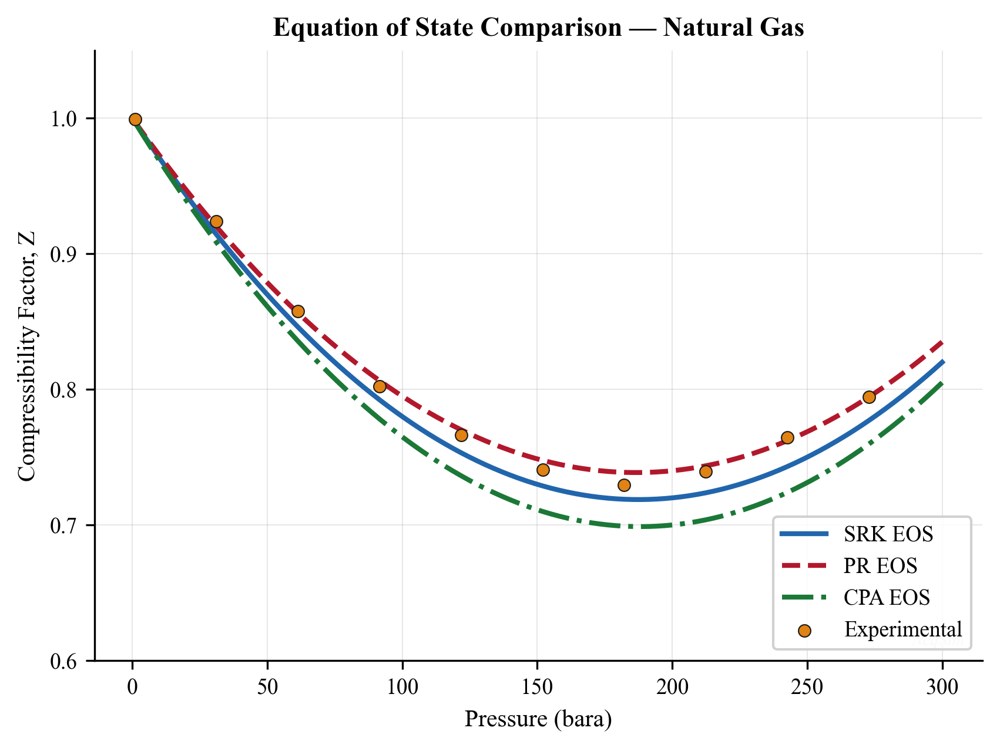
2.11 Summary
Key points from this chapter:
- Equations of state (SRK, PR, CPA) are the foundation of all thermodynamic calculations in process simulation. They relate pressure, volume, and temperature and enable the calculation of all derived properties.
- Mixing rules combine pure-component EOS parameters into mixture parameters. Binary interaction parameters ($k_{ij}$) are the primary tuning knobs.
- Fugacity provides the criterion for phase equilibrium: at equilibrium, the fugacity of each component is equal in all phases.
- Flash calculations determine the phase split and compositions. The Rachford-Rice equation, successive substitution, Newton-Raphson acceleration, and Michelsen's stability analysis form the algorithmic toolkit.
- Property calculation follows a hierarchy: flash → initProperties() → read properties. Transport properties (viscosity, thermal conductivity) require
initProperties(). - EOS selection depends on the application: SRK/PR for hydrocarbons, CPA for associating compounds, GERG-2008 for custody transfer.
- NeqSim provides a comprehensive implementation of these methods through the
SystemInterfaceandThermodynamicOperationsclasses.
Exercises
- Exercise 2.1: Create a natural gas fluid with the following composition (mol%): N$_2$ 1.0, CO$_2$ 2.0, CH$_4$ 85.0, C$_2$H$_6$ 6.0, C$_3$H$_8$ 3.0, iC$_4$ 1.0, nC$_4$ 1.0, nC$_5$ 0.5, nC$_6$ 0.5. Using SRK, calculate the gas density and Z-factor at 50°C and 100 bara. Repeat with PR and compare.
- Exercise 2.2: For the gas condensate composition in Section 2.10, calculate the phase envelope (bubble and dew point curves). Identify the cricondenbar and cricondentherm. At what pressure does retrograde condensation begin at 100°C?
- Exercise 2.3: Demonstrate the Joule-Thomson effect by performing a PH flash: start at 50°C and 200 bara, then expand isenthalpically to 80 bara. What is the temperature after expansion? Why does the gas cool?
- Exercise 2.4: Create a system with methane (80%) and water (20%) at 20°C and 100 bara. Enable multi-phase checking and verify that NeqSim predicts three phases (gas, hydrocarbon liquid, aqueous). Report the water content of the gas phase in ppm (molar).
- Exercise 2.5: Write a Python script that calculates the gas viscosity of pure methane at 50°C for pressures from 1 to 500 bara. Plot the result and explain the trend — why does viscosity initially decrease with pressure, then increase?
- Exercise 2.6: Compare the SRK and CPA equations for predicting the water content of a natural gas at 40°C and 70 bara. The gas composition is: CH$_4$ 90%, C$_2$H$_6$ 5%, C$_3$H$_8$ 3%, CO$_2$ 2%. Which EOS is more appropriate for this calculation and why?
- Exercise 2.7: For the North Sea gas condensate in Section 2.10, compute and compare the liquid dropout curve (liquid volume fraction vs. pressure at constant temperature of 100°C) using SRK and PR. At which pressure is the maximum liquid dropout predicted?
- Exercise 2.8 (Advanced): Implement a simple successive substitution flash algorithm in Python (using NeqSim only for fugacity coefficient calculations) and compare the number of iterations required to converge with NeqSim's built-in flash. Test at conditions both far from and near the critical point.
- Soave, G. (1972). Equilibrium constants from a modified Redlich-Kwong equation of state. Chemical Engineering Science, 27(6), 1197–1203.
- Peng, D. Y., & Robinson, D. B. (1976). A new two-constant equation of state. Industrial & Engineering Chemistry Fundamentals, 15(1), 59–64.
- Kontogeorgis, G. M., Voutsas, E. C., Yakoumis, I. V., & Tassios, D. P. (1996). An equation of state for associating fluids. Industrial & Engineering Chemistry Research, 35(11), 4310–4318.
- Michelsen, M. L. (1982). The isothermal flash problem. Part I. Stability. Fluid Phase Equilibria, 9(1), 1–19.
- Rachford, H. H., & Rice, J. D. (1952). Procedure for use of electronic digital computers in calculating flash vaporization hydrocarbon equilibrium. Journal of Petroleum Technology, 4(10), 19–23.
- Péneloux, A., Rauzy, E., & Fréze, R. (1982). A consistent correction for Redlich-Kwong-Soave volumes. Fluid Phase Equilibria, 8(1), 7–23.
- Huron, M. J., & Vidal, J. (1979). New mixing rules in simple equations of state for representing vapour-liquid equilibria of strongly non-ideal mixtures. Fluid Phase Equilibria, 3(4), 255–271.
- Kunz, O., & Wagner, W. (2012). The GERG-2008 wide-range equation of state for natural gases and other mixtures. Journal of Chemical & Engineering Data, 57(11), 3032–3091.
- Wilson, G. M. (1969). A modified Redlich-Kwong equation of state, application to general physical data calculations. Paper presented at the AIChE National Meeting, Cleveland, OH.
- Lohrenz, J., Bray, B. G., & Clark, C. R. (1964). Calculating viscosities of reservoir fluids from their compositions. Journal of Petroleum Technology, 16(10), 1171–1176.
Figures
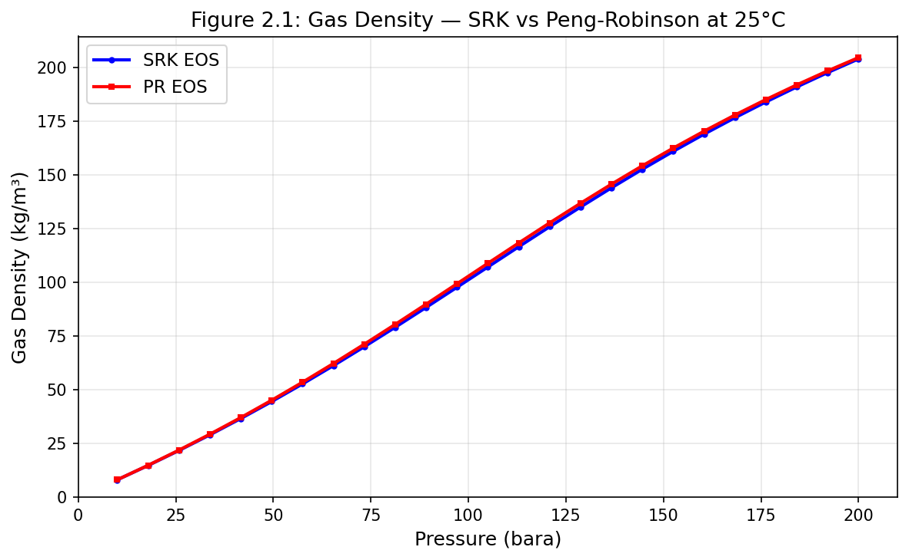
Figure 2.1: Fig01 Density Srk Vs Pr
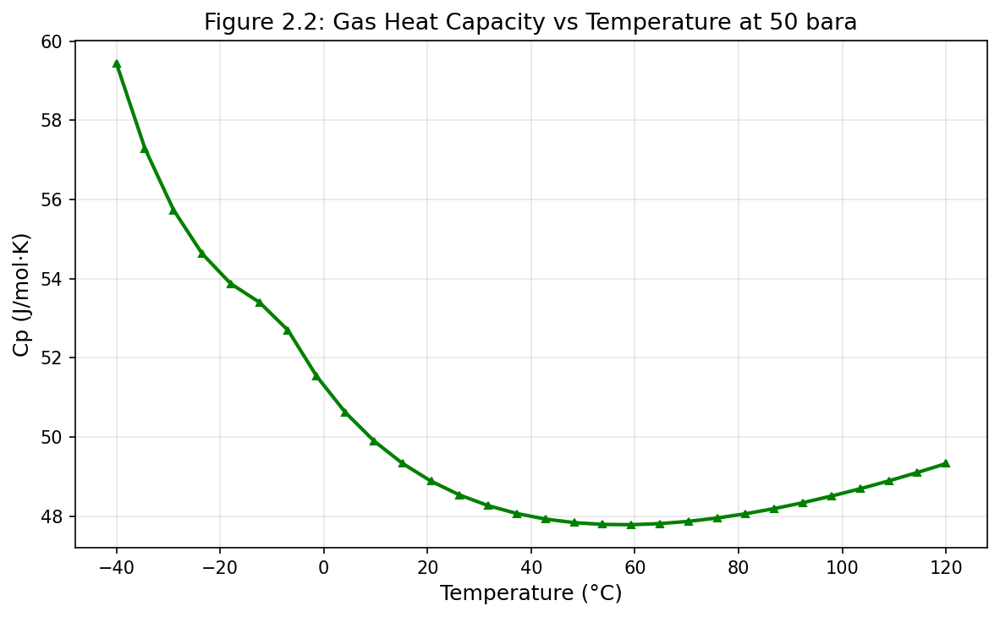
Figure 2.2: Fig02 Cp Vs Temperature
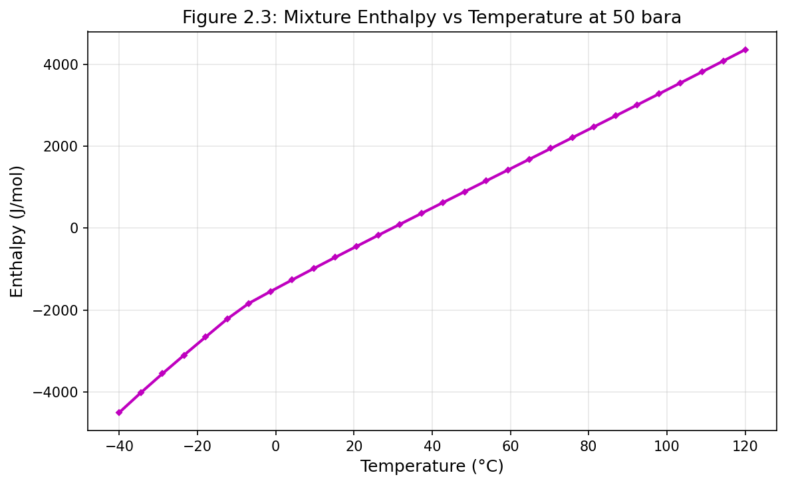
Figure 2.3: Fig03 Enthalpy Vs Temperature
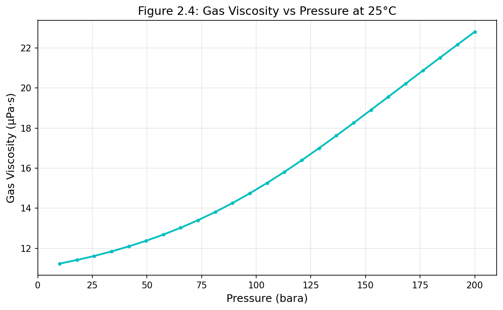
Figure 2.4: Fig04 Viscosity Vs Pressure
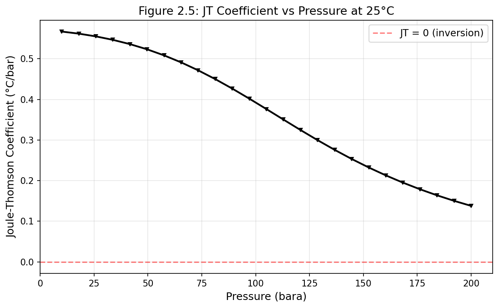
Figure 2.5: Fig05 Jt Coefficient Vs Pressure
Fluid Characterization and PVT Modeling
Learning Objectives
After reading this chapter, the reader will be able to:
- Classify reservoir fluids by type (black oil, volatile oil, gas condensate, dry gas, wet gas) and explain their distinguishing characteristics
- Describe common PVT laboratory experiments and their role in fluid characterization
- Apply plus fraction characterization methods (Whitson gamma distribution, Pedersen) to extend a fluid analysis into pseudo-components
- Use NeqSim to create characterized fluids with plus fractions and run PVT simulations
- Tune EOS parameters to match experimental PVT data
- Generate and interpret phase envelopes for different fluid types
- Calculate key PVT properties: GOR, formation volume factor, API gravity, and compressibility
- Evaluate fluid samples for quality and apply recombination procedures
- Select between black oil correlations and compositional models for different engineering applications
3.1 Introduction
Accurate fluid characterization is the starting point for every production optimization model. The reservoir fluid — a complex mixture of hundreds or thousands of hydrocarbon species plus non-hydrocarbons — determines the phase behavior, flow properties, and processing requirements of the entire production system. A poor fluid model propagates errors through every subsequent calculation: wrong phase envelopes lead to incorrect separator design, wrong viscosities produce inaccurate pressure drops, and wrong compositions give misleading export specifications.
This chapter covers the complete fluid characterization workflow: from understanding what the laboratory measures, through the mathematical methods for representing the heavy end of the composition, to the practical steps of building and tuning a fluid model in NeqSim.
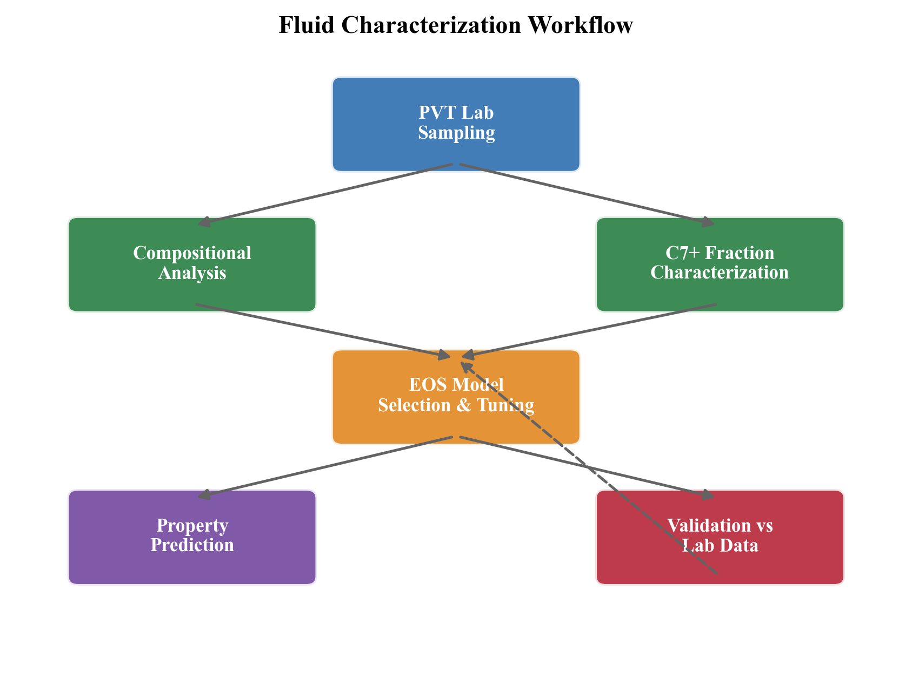
3.2 Reservoir Fluid Types
Reservoir fluids are classified based on their initial conditions relative to the phase envelope, the gas-oil ratio (GOR), and the liquid content at surface conditions.
3.2.1 Classification Criteria
The five standard fluid types are:
| Fluid Type | GOR (Sm³/Sm³) | API Gravity | Oil FVF $B_o$ | Key Characteristic |
|---|---|---|---|---|
| Black oil | < 200 | 15–40 | 1.0–2.0 | Reservoir T < critical T; wide two-phase region |
| Volatile oil | 200–600 | 40–50 | 1.5–3.0 | Close to critical point; significant shrinkage |
| Gas condensate | 600–15,000 | 40–60 | — | Reservoir T between Tc and cricondentherm |
| Wet gas | 15,000–100,000 | 40–60 | — | Single phase in reservoir; liquid at surface |
| Dry gas | > 100,000 | — | — | No liquid at any conditions |
3.2.2 Phase Envelope Characteristics
The position of the initial reservoir conditions on the phase envelope determines the fluid type:
- Black oil: Initial conditions are well to the left of the critical point; the reservoir is at a temperature below the critical temperature. As pressure drops during depletion, the fluid crosses the bubble point and gas evolves.
- Volatile oil: Initial conditions are near but to the left of the critical point. The fluid exhibits large changes in properties with small changes in pressure.
- Gas condensate: Initial conditions are to the right of the critical point. The reservoir temperature is between the critical temperature and the cricondentherm. As pressure drops below the dew point, retrograde condensation occurs — liquid drops out in the reservoir.
- Wet gas: The reservoir temperature exceeds the cricondentherm. The fluid is always single-phase in the reservoir, but at surface conditions it falls within the two-phase region, yielding some condensate.
- Dry gas: The phase envelope is so narrow that even surface conditions remain outside the two-phase region.
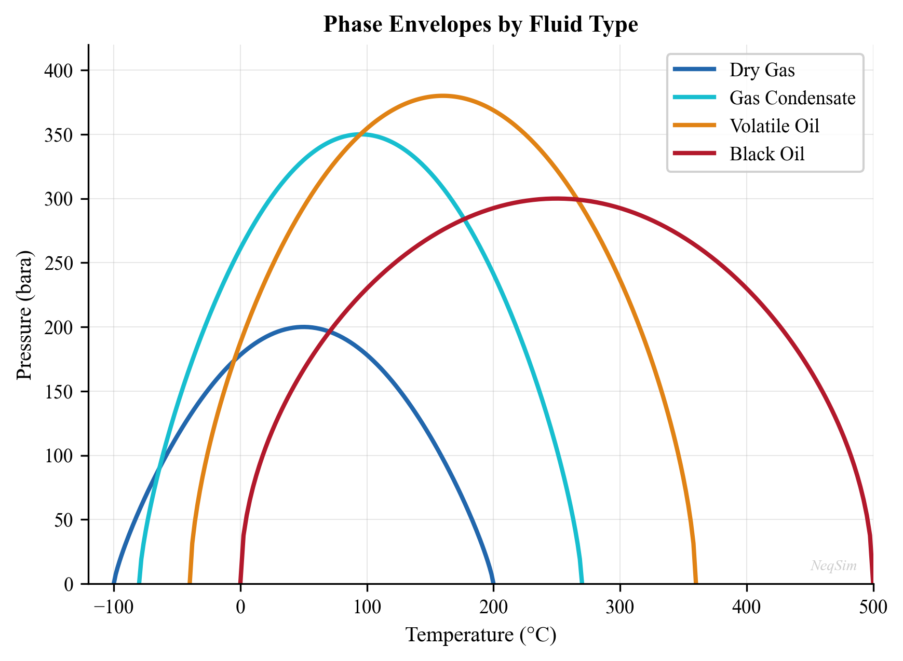
3.2.3 Fluid Type Identification from Field Data
In practice, fluid type is identified from:
- Initial producing GOR — measured at the test separator
- Stock tank oil gravity (API) — from sample analysis
- Reservoir temperature and pressure — from well logs and DST data
- C$_{7+}$ fraction — higher C$_{7+}$ content indicates heavier fluid
- Visual observation — color of separator liquid (clear/straw = condensate; brown/black = oil)
Table 3.1 provides heuristic guidelines:
| Property | Black Oil | Volatile Oil | Gas Condensate | Wet Gas |
|---|---|---|---|---|
| C$_{7+}$ mol% | > 20 | 12–20 | 4–12 | < 4 |
| Initial GOR (Sm³/Sm³) | < 200 | 200–600 | 600–15,000 | > 15,000 |
| Stock tank API | < 40 | 40–50 | 40–60 | 40–60 |
| Fluid color | Black/dark brown | Brown/dark orange | Straw/light brown | Water-white |
3.3 Fluid Sampling
3.3.1 Sampling Methods
Reservoir fluid samples are collected by two fundamentally different methods, each with specific advantages and limitations.
Bottomhole sampling uses a wireline-conveyed tool (e.g., MDT, RDT, or RCI) to capture fluid directly at reservoir conditions. The tool is positioned opposite a permeable zone, a drawdown is applied, and a sample chamber is filled at in-situ pressure and temperature. The key requirement is that the bottomhole flowing pressure during sampling must exceed the saturation pressure; otherwise, the sample captures a two-phase mixture that is not representative of the original single-phase reservoir fluid.
Surface recombination sampling collects separator gas and separator liquid samples at the test separator, then recombines them in the laboratory at the measured producing GOR. This method is used when bottomhole sampling is impractical (e.g., gas condensate wells with high GOR, deep offshore wells) or when operating conditions prevent single-phase sampling.
3.3.2 Recombination Calculation
For surface recombination, the laboratory recombines separator gas and liquid at the measured separator GOR. The recombination calculation determines the mole fractions $z_i$ of each component in the reservoir fluid:
$$ z_i = \frac{n_g y_i + n_o x_i}{n_g + n_o} $$
where $y_i$ is the mole fraction in the separator gas, $x_i$ is the mole fraction in the separator liquid, and $n_g / n_o$ is the molar gas-to-oil ratio. The molar ratio relates to the volumetric GOR by:
$$ \frac{n_g}{n_o} = \frac{\text{GOR} \cdot \rho_o^{\text{sc}} / M_o}{P^{\text{sc}} / (Z^{\text{sc}} R T^{\text{sc}})} $$
In practice, the laboratory adjusts the GOR slightly during recombination to match the measured saturation pressure, ensuring a self-consistent sample.
3.3.3 Sample Quality Control
Sample quality is critical. Contamination with drilling mud, phase segregation during sampling, or loss of light ends during transfer can invalidate the entire PVT study. The following QC checks are applied:
- Consistency check: Opening pressure of the sample bottle should match the expected reservoir or separator pressure. A lower opening pressure indicates leak or gas loss.
- Contamination monitoring: MDT tool measures optical density during sampling to track mud filtrate contamination. Contamination below 5% is generally acceptable.
- Material balance: The sum of separator gas and separator liquid compositions, recombined at the field GOR, should yield a single-phase fluid at reservoir conditions. If the recombined fluid is two-phase at the reported reservoir pressure, the sample or GOR data may be incorrect.
- Comparison with offset wells: Saturation pressure, GOR, and C$_{7+}$ content should be consistent with neighboring wells in the same reservoir.
- Methane content check: A sudden drop in methane content compared to offset data suggests gas loss during sampling.
- Repeatability: Multiple PVT experiments should give consistent saturation pressures (within ±2–3%).
3.3.4 Choosing the Right Sampling Method
| Criterion | Bottomhole Sampling | Surface Recombination |
|---|---|---|
| Fluid type | Black oil, volatile oil | Gas condensate, wet gas |
| GOR range | < 500 Sm³/Sm³ | > 500 Sm³/Sm³ |
| Reservoir pressure | Well above $P_{\text{sat}}$ | Any |
| Cost | Higher (wireline run) | Lower (separator samples) |
| Accuracy | Higher (single-phase) | Depends on GOR accuracy |
| Risk | Sampling below bubble point | Incorrect GOR |
3.4 PVT Laboratory Experiments
PVT experiments are conducted on reservoir fluid samples to measure phase behavior and properties at reservoir and process conditions. These measurements provide the data against which EOS models are tuned.
3.4.1 Constant Composition Expansion (CCE)
The CCE experiment measures the pressure-volume relationship of a reservoir fluid at reservoir temperature:
- The sample is loaded into a PVT cell at a pressure above the saturation point
- Pressure is reduced in steps, and the total volume is recorded at each step
- The saturation pressure (bubble point for oil, dew point for gas condensate) is identified as the pressure where the slope of the $P$-$V$ curve changes
- Below the saturation pressure, the total volume (gas + liquid) continues to be measured
The relative volume $V_{\text{rel}}$ at each pressure step is defined as:
$$ V_{\text{rel}} = \frac{V_t}{V_{\text{sat}}} $$
where $V_t$ is the total volume at pressure $P$ and $V_{\text{sat}}$ is the volume at the saturation pressure. Above the saturation pressure, the fluid is single-phase and the relative volume is governed by isothermal compressibility:
$$ V_{\text{rel}} = \exp\left[c_o (P_{\text{sat}} - P)\right] \approx 1 + c_o (P_{\text{sat}} - P) $$
Below the saturation pressure, gas evolves and the relative volume increases sharply. The Y-function provides a linearization useful for smoothing CCE data below the bubble point:
$$ Y = \frac{P_b - P}{P(V_{\text{rel}} - 1)} $$
A plot of $Y$ vs. $P$ should approximate a straight line, and deviations indicate data quality issues.
For gas condensates, the CCE also measures the liquid dropout curve — the volume fraction of liquid in the cell as a function of pressure below the dew point. This is the retrograde condensation curve and is critical for reservoir simulation.
3.4.2 Constant Volume Depletion (CVD)
The CVD experiment simulates the depletion of a gas condensate reservoir where retrograde liquid remains immobile in the pore space:
- The sample starts at the dew point pressure at reservoir temperature
- Pressure is reduced in a step (typically 25–50 bar increments)
- Gas is removed from the top of the cell to restore the original cell volume
- The volume, composition, and Z-factor of the removed gas are measured
- The liquid dropout (retrograde condensation volume) at each pressure is measured
- Steps 2–5 are repeated down to abandonment pressure
The key quantities measured at each depletion step $j$ are:
- Liquid dropout $V_{\text{liq}} / V_{\text{cell}}$: Volume fraction of retrograde liquid
- Gas Z-factor from the removed gas: $Z_j = P_j V_{\text{removed}} / (n_{\text{removed}} R T)$
- Cumulative recovery of each component: $R_i = \sum_j y_{i,j} \Delta n_j / (z_i n_{\text{total}})$
- Two-phase Z-factor: $Z_{\text{2ph}} = Z_j (1 - \sum \Delta n_j / n_{\text{total}})$, used in the $P/Z$ material balance for gas condensate reservoirs
CVD data is essential for calibrating the EOS model for gas condensate production forecasting, particularly the liquid dropout curve and the changing gas composition with depletion.
3.4.3 Differential Liberation (DL)
The differential liberation experiment applies to black oil and volatile oil systems:
- The sample starts at the bubble point at reservoir temperature
- Pressure is reduced in a step
- All evolved gas is removed at that pressure, and its volume and composition are measured
- The remaining oil volume at that pressure is recorded
- Steps 2–4 are repeated down to atmospheric pressure
- The residual oil volume at 60°F (15.6°C) and atmospheric pressure is measured
The key outputs calculated from DL data are:
Solution GOR at each pressure:
$$ R_{s,j} = R_{s,j-1} - \frac{V_{g,j}^{\text{sc}}}{V_{o,\text{residual}}^{\text{sc}}} $$
Oil formation volume factor relative to residual oil:
$$ B_{od,j} = \frac{V_{o,j}}{V_{o,\text{residual}}} $$
Gas formation volume factor at each step:
$$ B_g = \frac{V_{g,j}}{V_{g,j}^{\text{sc}}} = \frac{Z_j T P^{\text{sc}}}{T^{\text{sc}} P_j} $$
Note that DL values of $B_o$ and $R_s$ must be corrected using the separator test results before use in reservoir simulation, because the DL flashes all gas at each step (which differs from the separator flash path).
3.4.4 Separator Test
The separator test measures the GOR and oil properties at specific separator conditions:
- A sample at the bubble point is flashed through a multi-stage separator train
- Gas and liquid volumes are measured at each stage
- The final stock tank oil volume, API gravity, and GOR are recorded
This test is critical because it defines the reference conditions for reporting field data:
$$ B_o = \frac{V_{\text{oil at reservoir conditions}}}{V_{\text{stock tank oil at standard conditions}}} $$
The separator test also provides the correction factor $B_{ob}$ to convert DL-based $B_o$ values to separator-flash-based values:
$$ B_o = B_{od} \frac{B_{ob}}{B_{od,b}} $$
$$ R_s = R_{s,d} \frac{B_{ob}}{B_{od,b}} + R_{sb} - R_{sd,b} \frac{B_{ob}}{B_{od,b}} $$
where subscript $b$ denotes bubble-point values and subscript $d$ denotes DL values.
3.4.5 Swelling Test
The swelling test measures the effect of injecting gas (lean gas, CO$_2$, N$_2$) into a reservoir oil:
- A reservoir oil sample is loaded at its bubble point
- Gas is injected in measured amounts (typically 5–20 mol% increments)
- The new bubble point pressure and swollen volume are measured after each injection
- The process reveals how much gas can be dissolved and the resulting pressure changes
The swelling factor $S_f$ at each injection step is:
$$ S_f = \frac{V_{\text{sat, swollen}}}{V_{\text{sat, original}}} $$
Swelling test data is essential for:
- Gas injection EOR studies — determining the MMP (minimum miscibility pressure) screening
- CO$_2$ flooding feasibility — how much CO$_2$ dissolves in the oil
- Lean gas cycling in gas condensate reservoirs
- Assessing the effect of gas lift gas dissolving in the produced oil
3.4.6 Viscosity Measurements
Viscosity is measured separately, typically using:
- Capillary viscometer for liquid viscosity at moderate pressures
- Falling ball viscometer for high-pressure measurements
- Electromagnetic viscometer (EV) for in-situ measurements
- Rolling ball viscometer for heavy oils at elevated pressures
Viscosity data at multiple pressures and temperatures is essential for tuning the viscosity correlation in the EOS model. Typical measurement protocol includes viscosity at 5–8 pressure steps above the bubble point and 5–8 steps below, all at reservoir temperature.
3.5 Plus Fraction Characterization
3.5.1 The Plus Fraction Problem
A typical gas chromatography (GC) analysis of a reservoir fluid resolves individual components up to C$_6$ or C$_9$, then reports a "plus fraction" — C$_{7+}$ or C$_{10+}$ — that lumps all heavier components together. This plus fraction may contain hundreds of individual species.
For an EOS model, the plus fraction must be split into a manageable number of pseudo-components, each with estimated critical properties ($T_c$, $P_c$, $\omega$) and molecular weight ($M_w$). The quality of this characterization directly affects the accuracy of the phase envelope, density, and viscosity predictions.
3.5.2 Whitson's Gamma Distribution
Whitson (1983) proposed modeling the molar distribution of the plus fraction using a three-parameter gamma distribution:
$$ p(M) = \frac{(M - \eta)^{\alpha - 1}}{\beta^{\alpha} \Gamma(\alpha)} \exp\left(-\frac{M - \eta}{\beta}\right) $$
where:
- $M$ is the molecular weight
- $\eta$ is the minimum molecular weight (typically 84 g/mol for C$_7$+)
- $\alpha$ is the shape parameter (typically 1–5; $\alpha = 1$ gives an exponential distribution)
- $\beta = (\bar{M} - \eta) / \alpha$ where $\bar{M}$ is the average molecular weight of the plus fraction
- $\Gamma(\alpha)$ is the gamma function
The distribution is divided into $N$ pseudo-components (typically 3–10) by splitting the molecular weight range into intervals and calculating the average properties for each interval. The mole fraction of pseudo-component $k$ is:
$$ z_k = z_{+} \int_{M_{k-1}}^{M_k} p(M) \, dM $$
where $z_{+}$ is the total mole fraction of the plus fraction and the integral boundaries are chosen to give equal-weight or Gaussian quadrature intervals.
3.5.3 Pedersen Method
The Pedersen method (Pedersen et al., 1989) uses carbon number as the independent variable and applies exponential decay for mole fraction:
$$ \ln z_n = A + B \cdot n $$
where $z_n$ is the mole fraction of carbon number $n$, and $A$ and $B$ are fitted from the extended analysis. Molecular weight and density for each carbon number are:
$$ M_n = 14n - 4 $$
$$ \rho_n = 0.2855 + 0.0326 \cdot \ln(n) $$
The Pedersen method is particularly useful when the laboratory provides a partial extended analysis (e.g., to C$_{20}$ or C$_{30}$) because the exponential fit can extrapolate beyond the measured range. However, for heavy crudes with bimodal distributions (e.g., a wax peak), the simple exponential model may not capture the full distribution.
3.5.4 Critical Property Correlations
Each pseudo-component needs critical properties. Several correlations are available:
Lee-Kesler correlations:
$$ T_c = 341.7 + 811.1 S_g + (0.4244 + 0.1174 S_g) T_b + (0.4669 - 3.2623 S_g) \times 10^5 / T_b $$
$$ \ln P_c = 8.3634 - 0.0566/S_g - (0.24244 + 2.2898/S_g + 0.11857/S_g^2) \times 10^{-3} T_b + \ldots $$
Twu correlations:
$$ T_c^0 = T_b \left[0.533272 + 0.191017 \times 10^{-3} T_b + 0.779681 \times 10^{-7} T_b^2 - \ldots \right]^{-1} $$
Riazi-Daubert correlations (commonly used in industry):
$$ T_c = 19.06232 \, T_b^{0.58848} \, S_g^{0.3596} $$
$$ P_c = 5.53027 \times 10^7 \, T_b^{-2.3125} \, S_g^{2.3201} $$
These correlations require boiling point $T_b$ and specific gravity $S_g$ as input. When boiling points are not available, they can be estimated from molecular weight and density.
3.5.5 NeqSim Plus Fraction Methods
NeqSim provides two approaches for handling plus fractions:
TBP fraction method (addTBPfraction): Adds individual pseudo-components with specified molecular weight and density. The critical properties are calculated internally using the selected correlation.
Plus fraction characterization (addPlusFraction): Adds a single plus fraction that NeqSim then splits into pseudo-components using the Whitson or Pedersen method:
from neqsim import jneqsim
# Using addPlusFraction for automatic splitting
fluid = jneqsim.thermo.system.SystemSrkEos(273.15 + 90.0, 200.0)
fluid.addComponent("methane", 50.0)
fluid.addComponent("ethane", 7.0)
fluid.addComponent("propane", 4.0)
fluid.addComponent("n-butane", 2.5)
fluid.addComponent("n-pentane", 1.5)
fluid.addComponent("n-hexane", 1.0)
# Add C7+ as a plus fraction: mole%, MW (kg/mol), density (g/cm3)
fluid.addPlusFraction("C7", 34.0, 220.0 / 1000.0, 0.84)
fluid.setMixingRule("classic")
# Configure characterization
fluid.getCharacterization().setLumpingModel("no lumping")
fluid.getCharacterization().setCharacterizeMethod("Pedersen")
fluid.getCharacterization().characterisePlusFraction()
print(f"Components after characterization: {fluid.getNumberOfComponents()}")
3.5.6 Watson Characterization Factor
The Watson (or UOP) characterization factor $K_w$ distinguishes paraffinic from naphthenic and aromatic character:
$$ K_w = \frac{T_b^{1/3}}{S_g} $$
where $T_b$ is the mean average boiling point in Rankine and $S_g$ is the specific gravity at 60°F. Typical values:
| Fluid Type | $K_w$ Range | Character |
|---|---|---|
| Paraffinic | 12.5–13.0 | Straight-chain, branched |
| Naphthenic | 11.0–12.5 | Cyclic |
| Aromatic | 10.0–11.0 | Benzene rings |
3.5.7 API Gravity
API gravity is the industry-standard measure of oil density:
$$ \text{API} = \frac{141.5}{S_g} - 131.5 $$
where $S_g$ is the specific gravity at 60°F relative to water. Higher API means lighter oil:
| API Range | Classification |
|---|---|
| > 40 | Light oil / condensate |
| 30–40 | Medium oil |
| 22–30 | Heavy oil |
| < 22 | Extra heavy oil |
3.6 Black Oil Correlations vs. Compositional Models
3.6.1 When to Use Each Approach
The choice between black oil correlations and compositional (EOS-based) models depends on the fluid type, the engineering application, and the available data.
Black oil correlations treat the fluid as two pseudo-components (oil and gas) with pressure-dependent properties ($B_o$, $R_s$, $B_g$, $\mu_o$, $\mu_g$) described by empirical correlations. They are appropriate when:
- The fluid is a black oil with GOR < 200 Sm³/Sm³
- The process conditions do not approach the critical point
- No compositional tracking is needed (e.g., no injection gas mixing)
- Speed is important (reservoir simulation with millions of grid cells)
- Limited PVT data is available
Compositional models track each component explicitly using an EOS. They are required when:
- The fluid is volatile oil or gas condensate
- Gas injection (CO$_2$, lean gas, N$_2$) is being evaluated
- Retrograde condensation is important
- Compositional grading affects the reservoir description
- Process simulation requires detailed composition (e.g., export gas specifications)
3.6.2 Standing Correlation (Bubble Point)
Standing (1947) developed one of the earliest and most widely used correlations for bubble point pressure:
$$ P_b = 18.2 \left[\left(\frac{R_s}{\gamma_g}\right)^{0.83} \times 10^{0.00091 T - 0.0125 \, \text{API}} - 1.4\right] $$
where $P_b$ is in psia, $R_s$ is in scf/STB, $\gamma_g$ is the gas specific gravity, $T$ is in °F, and API is stock tank oil gravity.
3.6.3 Vasquez-Beggs Correlations
Vasquez and Beggs (1980) developed correlations for oil FVF and solution GOR as functions of pressure, temperature, gas gravity, and API gravity.
Solution GOR:
$$ R_s = C_1 \gamma_{gs} P^{C_2} \exp\left(\frac{C_3 \cdot \text{API}}{T + 460}\right) $$
where the constants $C_1$, $C_2$, $C_3$ depend on whether API $\leq$ 30 or API > 30, and $\gamma_{gs}$ is the gas gravity corrected to a separator pressure of 100 psig.
Oil formation volume factor:
$$ B_o = 1.0 + C_1 R_s + C_2(T - 60)\left(\frac{\text{API}}{\gamma_{gs}}\right) + C_3 R_s (T - 60)\left(\frac{\text{API}}{\gamma_{gs}}\right) $$
3.6.4 Comparison and Selection Guidelines
| Property | Best Correlation | Typical Error | Applicable Range |
|---|---|---|---|
| $P_b$ | Standing / Vasquez-Beggs | 5–15% | API 15–45, GOR < 500 |
| $B_o$ above $P_b$ | Vasquez-Beggs | 2–5% | Black oil |
| $R_s$ | Vasquez-Beggs | 5–10% | Black oil |
| $\mu_o$ (dead oil) | Beggs-Robinson | 10–30% | API 16–58, T 70–295°F |
| $\mu_o$ (live oil) | Beggs-Robinson | 10–20% | $R_s$ < 2000 scf/STB |
| $B_g$ | Direct from Z-factor | 1–3% | Any gas composition |
For production optimization, compositional models are strongly preferred because they provide consistent thermodynamic properties across the full range of conditions from reservoir to export, they naturally handle gas-liquid equilibrium at each separator stage, and they are directly coupled with process simulation. Black oil correlations should only be used for quick screening or when running large reservoir simulation models where compositional tracking is computationally prohibitive.
3.7 NeqSim Implementation: Fluid Characterization
3.7.1 Creating a Simple Defined Fluid
For fluids where all components are individually identified:
from neqsim import jneqsim
# Simple gas condensate - all components defined
fluid = jneqsim.thermo.system.SystemPrEos(273.15 + 100.0, 250.0)
fluid.addComponent("nitrogen", 0.34)
fluid.addComponent("CO2", 3.59)
fluid.addComponent("methane", 74.16)
fluid.addComponent("ethane", 7.90)
fluid.addComponent("propane", 3.58)
fluid.addComponent("i-butane", 0.71)
fluid.addComponent("n-butane", 1.25)
fluid.addComponent("i-pentane", 0.48)
fluid.addComponent("n-pentane", 0.38)
fluid.addComponent("n-hexane", 0.50)
fluid.addComponent("n-heptane", 2.00)
fluid.addComponent("n-octane", 1.80)
fluid.addComponent("n-nonane", 1.30)
fluid.addComponent("n-decane", 1.01)
fluid.addComponent("water", 1.00)
fluid.setMixingRule("classic")
fluid.setMultiPhaseCheck(True)
3.7.2 Creating a Fluid with Plus Fraction Characterization
For fluids with a reported C$_{7+}$ or higher plus fraction, NeqSim provides built-in characterization:
from neqsim import jneqsim
# Black oil with C7+ characterization
fluid = jneqsim.thermo.system.SystemSrkEos(273.15 + 90.0, 200.0)
# Defined components
fluid.addComponent("nitrogen", 0.5)
fluid.addComponent("CO2", 1.2)
fluid.addComponent("methane", 45.0)
fluid.addComponent("ethane", 6.5)
fluid.addComponent("propane", 4.0)
fluid.addComponent("i-butane", 1.5)
fluid.addComponent("n-butane", 2.5)
fluid.addComponent("i-pentane", 1.2)
fluid.addComponent("n-pentane", 1.0)
fluid.addComponent("n-hexane", 1.5)
# Plus fraction: specify mole fraction, molecular weight, and density
fluid.addTBPfraction("C7", 5.0, 96.0 / 1000.0, 0.738) # C7: M=96, rho=0.738
fluid.addTBPfraction("C8", 4.5, 107.0 / 1000.0, 0.765) # C8: M=107, rho=0.765
fluid.addTBPfraction("C9", 3.5, 121.0 / 1000.0, 0.781) # C9: M=121, rho=0.781
fluid.addTBPfraction("C10", 3.0, 134.0 / 1000.0, 0.792) # C10: M=134, rho=0.792
fluid.addTBPfraction("C11", 2.5, 147.0 / 1000.0, 0.800) # C11: M=147, rho=0.800
fluid.addTBPfraction("C12", 2.0, 161.0 / 1000.0, 0.810) # C12: M=161, rho=0.810
fluid.addTBPfraction("C13", 1.8, 175.0 / 1000.0, 0.820) # C13: M=175, rho=0.820
fluid.addTBPfraction("C14", 1.5, 190.0 / 1000.0, 0.830) # C14: M=190, rho=0.830
fluid.addTBPfraction("C15", 1.2, 206.0 / 1000.0, 0.837) # C15: M=206, rho=0.837
fluid.addTBPfraction("C16", 1.0, 222.0 / 1000.0, 0.843) # C16: M=222, rho=0.843
fluid.addTBPfraction("C17", 0.8, 237.0 / 1000.0, 0.849) # C17: M=237, rho=0.849
fluid.addTBPfraction("C18", 0.7, 251.0 / 1000.0, 0.854) # C18: M=251, rho=0.854
fluid.addTBPfraction("C19", 0.6, 263.0 / 1000.0, 0.859) # C19: M=263, rho=0.859
fluid.addTBPfraction("C20", 5.0, 450.0 / 1000.0, 0.920) # C20+: M=450, rho=0.920
# Set mixing rule AFTER adding all components (including TBP fractions)
fluid.setMixingRule("classic")
# Characterize the plus fractions
fluid.getCharacterization().setLumpingModel("no lumping")
fluid.getCharacterization().characterisePlusFraction()
Important notes:
- Molecular weight is specified in kg/mol (divide g/mol by 1000)
- Density is specific gravity (relative to water)
setMixingRule()must be called AFTER adding all componentscharacterisePlusFraction()must be called AFTERsetMixingRule()- Do NOT use
+in fraction names (e.g., use"C20"not"C20+")
3.7.3 Automatic Fluid Creation
For rapid prototyping and screening studies, NeqSim can create fluids from minimal input:
from neqsim import jneqsim
# North Sea gas condensate - typical composition
fluid = jneqsim.thermo.system.SystemSrkEos(273.15 + 80.0, 150.0)
components = {
"nitrogen": 0.8, "CO2": 2.5, "methane": 72.0,
"ethane": 8.5, "propane": 4.2, "i-butane": 1.1,
"n-butane": 1.8, "i-pentane": 0.7, "n-pentane": 0.5,
"n-hexane": 0.8
}
for comp, frac in components.items():
fluid.addComponent(comp, frac)
# Add C7+ as TBP fractions with characterization
fluid.addTBPfraction("C7", 2.5, 96.0 / 1000.0, 0.738)
fluid.addTBPfraction("C10", 2.0, 134.0 / 1000.0, 0.792)
fluid.addTBPfraction("C15", 1.3, 206.0 / 1000.0, 0.837)
fluid.addTBPfraction("C20", 1.3, 350.0 / 1000.0, 0.880)
fluid.setMixingRule("classic")
fluid.getCharacterization().characterisePlusFraction()
fluid.setMultiPhaseCheck(True)
# Quick check: flash at reservoir conditions
ops = jneqsim.thermodynamicoperations.ThermodynamicOperations(fluid)
ops.TPflash()
fluid.initProperties()
print(f"Phases: {fluid.getNumberOfPhases()}")
print(f"Density: {fluid.getDensity('kg/m3'):.1f} kg/m3")
3.7.4 Running PVT Simulations
Constant Composition Expansion (CCE)
from neqsim import jneqsim
# Create characterized fluid
fluid = jneqsim.thermo.system.SystemPrEos(273.15 + 100.0, 400.0)
fluid.addComponent("methane", 60.0)
fluid.addComponent("ethane", 8.0)
fluid.addComponent("propane", 5.0)
fluid.addComponent("n-butane", 3.0)
fluid.addComponent("n-hexane", 2.0)
fluid.addTBPfraction("C7", 5.0, 96.0 / 1000.0, 0.738)
fluid.addTBPfraction("C10", 4.0, 134.0 / 1000.0, 0.792)
fluid.addTBPfraction("C15", 3.0, 206.0 / 1000.0, 0.837)
fluid.addTBPfraction("C20", 10.0, 450.0 / 1000.0, 0.920)
fluid.setMixingRule("classic")
fluid.getCharacterization().characterisePlusFraction()
# Perform CCE simulation
pressures = [400, 350, 300, 280, 260, 240, 220, 200, 180, 160, 140, 120, 100]
T_res = 273.15 + 100.0
cce_results = []
for P in pressures:
fluid_copy = fluid.clone()
fluid_copy.setTemperature(T_res)
fluid_copy.setPressure(P, "bara")
ops = jneqsim.thermodynamicoperations.ThermodynamicOperations(fluid_copy)
ops.TPflash()
fluid_copy.initProperties()
result = {
"pressure_bara": P,
"number_of_phases": fluid_copy.getNumberOfPhases(),
"vapor_fraction": fluid_copy.getBeta(),
"density_kg_m3": fluid_copy.getDensity("kg/m3"),
}
cce_results.append(result)
for r in cce_results:
print(f"P = {r['pressure_bara']:6.0f} bara | "
f"Phases: {r['number_of_phases']} | "
f"Beta: {r['vapor_fraction']:.4f} | "
f"Density: {r['density_kg_m3']:.1f} kg/m3")
Separator Test Simulation
from neqsim import jneqsim
# Create oil fluid at bubble point conditions
fluid = jneqsim.thermo.system.SystemPrEos(273.15 + 90.0, 250.0)
fluid.addComponent("nitrogen", 0.5)
fluid.addComponent("CO2", 1.5)
fluid.addComponent("methane", 50.0)
fluid.addComponent("ethane", 7.0)
fluid.addComponent("propane", 5.0)
fluid.addComponent("n-butane", 3.5)
fluid.addComponent("n-pentane", 2.0)
fluid.addComponent("n-hexane", 2.5)
fluid.addTBPfraction("C7", 5.0, 96.0 / 1000.0, 0.738)
fluid.addTBPfraction("C10", 5.0, 134.0 / 1000.0, 0.792)
fluid.addTBPfraction("C20", 18.0, 400.0 / 1000.0, 0.910)
fluid.setMixingRule("classic")
fluid.getCharacterization().characterisePlusFraction()
# Build separator train
Stream = jneqsim.process.equipment.stream.Stream
Separator = jneqsim.process.equipment.separator.Separator
ThrottlingValve = jneqsim.process.equipment.valve.ThrottlingValve
ProcessSystem = jneqsim.process.processmodel.ProcessSystem
feed = Stream("Feed", fluid)
feed.setFlowRate(10000.0, "kg/hr")
feed.setTemperature(90.0, "C")
feed.setPressure(70.0, "bara")
hp_sep = Separator("HP Separator", feed)
valve_mp = ThrottlingValve("HP-MP Valve", hp_sep.getLiquidOutStream())
valve_mp.setOutletPressure(15.0, "bara")
mp_sep = Separator("MP Separator", valve_mp.getOutletStream())
valve_lp = ThrottlingValve("MP-LP Valve", mp_sep.getLiquidOutStream())
valve_lp.setOutletPressure(1.5, "bara")
lp_sep = Separator("LP Separator", valve_lp.getOutletStream())
process = ProcessSystem()
process.add(feed)
process.add(hp_sep)
process.add(valve_mp)
process.add(mp_sep)
process.add(valve_lp)
process.add(lp_sep)
process.run()
# Report separator test results
print("=== Separator Test Results ===")
print(f"HP gas rate: {hp_sep.getGasOutStream().getFlowRate('MSm3/day'):.4f} MSm3/day")
print(f"MP gas rate: {mp_sep.getGasOutStream().getFlowRate('MSm3/day'):.4f} MSm3/day")
print(f"LP gas rate: {lp_sep.getGasOutStream().getFlowRate('MSm3/day'):.4f} MSm3/day")
print(f"Stock tank oil rate: {lp_sep.getLiquidOutStream().getFlowRate('m3/hr'):.2f} m3/hr")
oil_density = lp_sep.getLiquidOutStream().getFluid().getPhase("oil").getDensity("kg/m3")
sg = oil_density / 999.1
api = 141.5 / sg - 131.5
print(f"Stock tank oil API gravity: {api:.1f}")
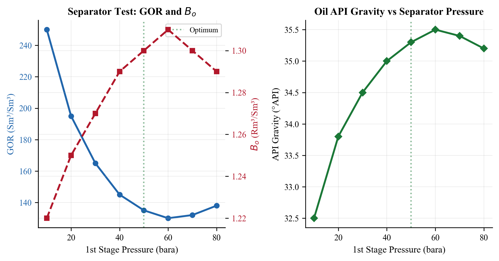
3.7.5 Phase Envelope Generation
from neqsim import jneqsim
# Gas condensate fluid
fluid = jneqsim.thermo.system.SystemPrEos(273.15 + 20.0, 50.0)
fluid.addComponent("nitrogen", 0.5)
fluid.addComponent("CO2", 3.0)
fluid.addComponent("methane", 75.0)
fluid.addComponent("ethane", 8.0)
fluid.addComponent("propane", 4.0)
fluid.addComponent("i-butane", 1.0)
fluid.addComponent("n-butane", 1.5)
fluid.addComponent("i-pentane", 0.5)
fluid.addComponent("n-pentane", 0.4)
fluid.addComponent("n-hexane", 0.6)
fluid.addTBPfraction("C7", 2.0, 96.0 / 1000.0, 0.738)
fluid.addTBPfraction("C10", 1.5, 134.0 / 1000.0, 0.792)
fluid.addTBPfraction("C20", 2.0, 350.0 / 1000.0, 0.880)
fluid.setMixingRule("classic")
fluid.getCharacterization().characterisePlusFraction()
# Calculate phase envelope
ops = jneqsim.thermodynamicoperations.ThermodynamicOperations(fluid)
ops.calcPTphaseEnvelope()
# Access results
dew_T = [t for t in ops.getOperation().get("dewT")]
dew_P = [p for p in ops.getOperation().get("dewP")]
bub_T = [t for t in ops.getOperation().get("bubT")]
bub_P = [p for p in ops.getOperation().get("bubP")]
print(f"Cricondenbar: T = {ops.getOperation().get('cricondenbar')[0]:.1f} K, "
f"P = {ops.getOperation().get('cricondenbar')[1]:.1f} bara")
print(f"Cricondentherm: T = {ops.getOperation().get('cricondentherm')[0]:.1f} K, "
f"P = {ops.getOperation().get('cricondentherm')[1]:.1f} bara")
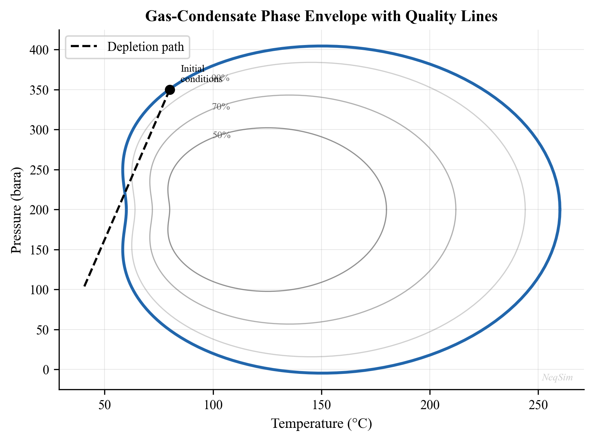
3.8 EOS Parameter Tuning
3.8.1 Why Tuning Is Necessary
Default EOS parameters (from generalized correlations) typically give acceptable results for defined components but may be inaccurate for the pseudo-components representing the plus fraction. The critical properties assigned to pseudo-components are estimates, and small errors in $T_c$, $P_c$, or $\omega$ propagate into significant errors in saturation pressure and liquid density. Tuning adjusts selected parameters to match experimental PVT data.
3.8.2 Binary Interaction Parameters ($k_{ij}$)
The binary interaction parameter modifies the attractive term in the EOS mixing rule:
$$ a_{\text{mix}} = \sum_i \sum_j x_i x_j \sqrt{a_i a_j} (1 - k_{ij}) $$
A positive $k_{ij}$ reduces the effective attraction between components $i$ and $j$, generally increasing the saturation pressure and reducing miscibility. The most sensitive BIPs for production optimization are:
| Component Pair | Typical $k_{ij}$ Range | Primary Effect |
|---|---|---|
| CH$_4$ – C$_{7+}$ | 0.02–0.06 | Bubble/dew point pressure |
| CO$_2$ – C$_{7+}$ | 0.10–0.15 | CO$_2$ solubility, MMP |
| N$_2$ – C$_{7+}$ | 0.05–0.10 | N$_2$ rejection efficiency |
| CH$_4$ – CO$_2$ | 0.10–0.13 | Gas phase density |
3.8.3 Volume Translation
Cubic equations of state (SRK, PR) systematically underpredict liquid density by 5–15%. The Peneloux volume translation corrects this without affecting the phase equilibrium calculation:
$$ v_{\text{corrected}} = v_{\text{EOS}} - \sum_i x_i c_i $$
where $c_i$ is the volume shift parameter for component $i$. For pseudo-components, $c_i$ is tuned to match the measured liquid density at reservoir conditions.
3.8.4 Matching Priority and Tolerances
The order of matching priority for production optimization is:
- Saturation pressure — bubble point or dew point (highest priority)
- Liquid density / oil FVF — affects volumetric calculations
- Gas-oil ratio — separator test GOR
- Liquid dropout — for gas condensates (CVD)
- Viscosity — affects pressure drop calculations
Acceptable tolerances for tuned models:
| Property | Target Accuracy |
|---|---|
| Saturation pressure | ±1–2% |
| Liquid density | ±1–2% |
| GOR | ±3–5% |
| Liquid dropout (CVD) | ±10% of peak |
| Viscosity | ±10–15% |
3.8.5 Regression Workflow
A systematic tuning workflow:
- Start with default parameters and compare against experimental data
- Adjust plus fraction molecular weight (±10%) to match saturation pressure
- Tune $k_{ij}$ between methane and heavy pseudo-components to refine saturation pressure and liquid dropout
- Adjust volume shift to match liquid density
- Check separator test GOR and API gravity
- Verify phase envelope shape and critical point location
- Iterate until all experimental data are matched within acceptable tolerances
3.8.6 Tuning in NeqSim
from neqsim import jneqsim
# Create fluid and tune BIP between methane and a heavy fraction
fluid = jneqsim.thermo.system.SystemPrEos(273.15 + 100.0, 300.0)
fluid.addComponent("methane", 70.0)
fluid.addComponent("ethane", 8.0)
fluid.addComponent("propane", 5.0)
fluid.addTBPfraction("C7", 5.0, 96.0 / 1000.0, 0.738)
fluid.addTBPfraction("C20", 12.0, 400.0 / 1000.0, 0.910)
fluid.setMixingRule("classic")
fluid.getCharacterization().characterisePlusFraction()
# Set custom binary interaction parameter
methane_index = 0
heavy_index = fluid.getPhase(0).getNumberOfComponents() - 1
fluid.setInteractionParameter(methane_index, heavy_index, 0.04)
# Recalculate to check effect
ops = jneqsim.thermodynamicoperations.ThermodynamicOperations(fluid)
ops.bubblePointPressureFlash(False)
print(f"Bubble point after tuning: {fluid.getPressure('bara'):.1f} bara")
Simple Regression Example
A bisection approach to find the $k_{ij}$ that matches a target bubble point:
from neqsim import jneqsim
target_pb = 245.0 # Target bubble point (bara)
def calc_bubble_point(kij_value):
fluid = jneqsim.thermo.system.SystemPrEos(273.15 + 100.0, 300.0)
fluid.addComponent("methane", 65.0)
fluid.addComponent("ethane", 8.0)
fluid.addComponent("propane", 5.0)
fluid.addComponent("n-butane", 3.0)
fluid.addTBPfraction("C7", 5.0, 96.0 / 1000.0, 0.738)
fluid.addTBPfraction("C20", 14.0, 400.0 / 1000.0, 0.910)
fluid.setMixingRule("classic")
fluid.getCharacterization().characterisePlusFraction()
idx_c1 = 0
idx_heavy = fluid.getPhase(0).getNumberOfComponents() - 1
fluid.setInteractionParameter(idx_c1, idx_heavy, kij_value)
ops = jneqsim.thermodynamicoperations.ThermodynamicOperations(fluid)
ops.bubblePointPressureFlash(False)
return fluid.getPressure("bara")
# Bisection search
kij_low, kij_high = -0.02, 0.10
for iteration in range(20):
kij_mid = (kij_low + kij_high) / 2.0
pb_calc = calc_bubble_point(kij_mid)
if abs(pb_calc - target_pb) < 0.5:
print(f"Converged: kij = {kij_mid:.4f}, Pb = {pb_calc:.1f} bara")
break
if pb_calc > target_pb:
kij_low = kij_mid
else:
kij_high = kij_mid
3.9 Key PVT Properties
3.9.1 Gas-Oil Ratio (GOR)
The gas-oil ratio is the ratio of gas volume to oil volume at standard conditions:
$$ \text{GOR} = \frac{V_{\text{gas}}^{\text{sc}}}{V_{\text{oil}}^{\text{sc}}} $$
The solution GOR $R_s$ is the amount of gas dissolved in the oil at reservoir conditions. As pressure drops below the bubble point, gas evolves and $R_s$ decreases.
3.9.2 Formation Volume Factor
The oil formation volume factor $B_o$ converts reservoir volumes to surface volumes:
$$ B_o = \frac{V_{\text{oil}}^{\text{reservoir}}}{V_{\text{oil}}^{\text{stock tank}}} $$
The total formation volume factor $B_t$ accounts for both the oil and its dissolved gas:
$$ B_t = B_o + (R_{si} - R_s) B_g $$
The gas formation volume factor:
$$ B_g = \frac{ZT P^{\text{sc}}}{T^{\text{sc}} P} $$
3.9.3 Compressibility
The isothermal compressibility of oil above the bubble point is:
$$ c_o = -\frac{1}{V}\left(\frac{\partial V}{\partial P}\right)_T $$
The effective total compressibility in a reservoir is:
$$ c_t = c_o S_o + c_w S_w + c_g S_g + c_f $$
3.9.4 Viscosity Correlations
Dead oil viscosity (Beggs-Robinson):
$$ \mu_{od} = 10^{10^{(3.0324 - 0.02023 \cdot \text{API})}/T^{1.163}} - 1 $$
Live oil viscosity:
$$ \mu_o = A \cdot \mu_{od}^B $$
where $A$ and $B$ depend on the solution GOR.
3.10 Fluid Characterization Quality Checks
After creating a characterized fluid model, several quality checks should be performed:
- Mass balance: Verify that the sum of all mole fractions equals 1.0
- Phase envelope reasonableness: The critical point and cricondenbar should be physically reasonable
- Saturation pressure: Compare predicted vs. measured bubble/dew point
- Density: Compare predicted vs. measured at reservoir conditions
- GOR: Compare predicted vs. measured at separator conditions
- Molecular weight: The calculated mixture M$_w$ should match the reported value
# Quality check: print fluid summary
ops = jneqsim.thermodynamicoperations.ThermodynamicOperations(fluid)
ops.TPflash()
fluid.initProperties()
print(f"Number of components: {fluid.getNumberOfComponents()}")
print(f"Number of phases: {fluid.getNumberOfPhases()}")
print(f"Mixture molecular weight: {fluid.getMolarMass('kg/mol') * 1000:.1f} g/mol")
print(f"Overall density: {fluid.getDensity('kg/m3'):.1f} kg/m3")
# Check sum of mole fractions
total_z = 0.0
for i in range(fluid.getNumberOfComponents()):
total_z += fluid.getPhase(0).getComponent(i).getz()
print(f"Sum of mole fractions: {total_z:.6f}")
3.11 Advanced Topics
3.11.1 Lumping and Delumping
For computational efficiency, the pseudo-components from characterization can be lumped into a smaller number of groups. Common lumping schemes:
- 3-component: Light (C$_1$–C$_3$), intermediate (C$_4$–C$_6$), heavy (C$_7+$)
- 6-component: N$_2$+CO$_2$, C$_1$, C$_2$–C$_3$, C$_4$–C$_6$, C$_7$–C$_{12}$, C$_{13+}$
- Reservoir-specific: Optimized grouping based on K-value behavior
3.11.2 Wax and Asphaltene Characterization
For flow assurance studies, the plus fraction characterization must capture the wax-forming and asphaltene fractions:
- Wax: Primarily normal paraffins in the C$_{16}$–C$_{60+}$ range
- Asphaltenes: Heavy polar components. The CPA or PC-SAFT equation is better suited than cubic EOS.
3.11.3 Compositional Grading
In thick reservoirs, gravity causes compositional variation with depth:
$$ \ln f_i(T, P(z), x_i(z)) = \ln f_i(T, P_{\text{ref}}, x_{i,\text{ref}}) + \frac{M_i g (z - z_{\text{ref}})}{RT} $$
where $f_i$ is the fugacity of component $i$ and $z$ is depth.
3.12 Summary
Key points from this chapter:
- Reservoir fluids are classified as black oil, volatile oil, gas condensate, wet gas, or dry gas based on their phase behavior and composition
- Fluid sampling requires careful attention to method (bottomhole vs. surface recombination), QC checks, and representative conditions
- PVT experiments (CCE, CVD, DL, separator test, swelling test, viscosity) provide the data for fluid model calibration — each experiment provides specific information for different aspects of the model
- Plus fraction characterization splits the heavy end into pseudo-components with estimated critical properties, using methods such as the Whitson gamma distribution or Pedersen correlations
- Black oil correlations (Standing, Vasquez-Beggs) are useful for quick screening, but compositional models are preferred for production optimization
- EOS parameter tuning adjusts BIPs, critical properties, and volume shifts to match experimental data — the saturation pressure and liquid density are highest priority
- NeqSim provides TBP fraction handling, plus fraction characterization, phase envelope calculation, and separator test simulation for complete PVT workflows
- Quality checks (mass balance, phase envelope, saturation pressure, density, GOR) must be performed before using a fluid model in production optimization
Exercises
- Exercise 3.1: Given the following plus fraction data for a gas condensate (C$_{7+}$ = 8.5 mol%, M$_w$ = 155 g/mol, density = 0.795 g/cm³), create a NeqSim fluid model with at least 5 pseudo-components. Calculate the phase envelope and identify the fluid type.
- Exercise 3.2: For a black oil with bubble point pressure of 180 bara at 95°C, perform a CCE simulation from 300 bara down to 50 bara. Plot the relative volume vs. pressure and identify the bubble point from the change in slope.
- Exercise 3.3: Set up a three-stage separator test (70/15/1.5 bara) for a typical North Sea black oil. Calculate the GOR at each stage and the total GOR.
- Exercise 3.4: Create two fluid models for the same composition — one with SRK, one with PR. Compare predicted bubble point pressures and liquid densities.
- Exercise 3.5: Investigate the effect of C$_{7+}$ molecular weight on the phase envelope. Vary the M$_w$ by ±20% and plot three phase envelopes on the same graph.
- Exercise 3.6: Calculate the API gravity and Watson K-factor for stock tank oils from three different reservoir fluids using NeqSim separator test simulations.
- Exercise 3.7: Implement a bisection regression to tune the methane-C$_{7+}$ BIP to match a measured bubble point pressure of 210 bara.
- Exercise 3.8: For a gas condensate with known CVD data, run a NeqSim CVD simulation and compare the predicted liquid dropout curve against experimental data.
- Exercise 3.9: Using the Standing and Vasquez-Beggs correlations, estimate $P_b$, GOR, and $B_o$ for a fluid with API = 35, $T$ = 200°F, $\gamma_g$ = 0.75. Compare with a NeqSim compositional model.
- Exercise 3.10 (Advanced): Collect separator gas and liquid compositions from a NeqSim separator test. Perform the recombination calculation manually to reconstruct the feed composition.
- Whitson, C. H. (1983). Characterizing hydrocarbon plus fractions. Society of Petroleum Engineers Journal, 23(4), 683–694.
- Pedersen, K. S., Thomassen, P., & Fredenslund, A. (1989). Thermodynamics of petroleum mixtures containing heavy hydrocarbons. Industrial & Engineering Chemistry Process Design and Development, 24(4), 948–954.
- Pedersen, K. S., & Christensen, P. L. (2007). Phase Behavior of Petroleum Reservoir Fluids. CRC Press.
- Danesh, A. (1998). PVT and Phase Behaviour of Petroleum Reservoir Fluids. Elsevier.
- Lee, B. I., & Kesler, M. G. (1975). A generalized thermodynamic correlation based on three-parameter corresponding states. AIChE Journal, 21(3), 510–527.
- Twu, C. H. (1984). An internally consistent correlation for predicting the critical properties and molecular weights of petroleum and coal-tar liquids. Fluid Phase Equilibria, 16(2), 137–150.
- Ahmed, T. (2016). Reservoir Engineering Handbook (5th ed.). Gulf Professional Publishing.
- McCain, W. D., Spivey, J. P., & Lenn, C. P. (2011). Petroleum Reservoir Fluid Property Correlations. PennWell Books.
- Beggs, H. D., & Robinson, J. R. (1975). Estimating the viscosity of crude oil systems. Journal of Petroleum Technology, 27(9), 1140–1141.
- Watson, K. M., & Nelson, E. F. (1933). Improved methods for approximating critical and thermal properties of petroleum fractions. Industrial & Engineering Chemistry, 25(8), 880–887.
- Standing, M. B. (1947). A pressure-volume-temperature correlation for mixtures of California oils and gases. API Drilling and Production Practice, 275–287.
- Vasquez, M. E., & Beggs, H. D. (1980). Correlations for fluid physical property prediction. Journal of Petroleum Technology, 32(6), 968–970.
- Peneloux, A., Rauzy, E., & Fréze, R. (1982). A consistent correction for Redlich-Kwong-Soave volumes. Fluid Phase Equilibria, 8(1), 7–23.
- Riazi, M. R., & Daubert, T. E. (1987). Characterization parameters for petroleum fractions. Industrial & Engineering Chemistry Research, 26(4), 755–759.
Fluid Characterization and PVT Modeling
Learning Objectives
After reading this chapter, the reader will be able to:
- Classify reservoir fluids by type (black oil, volatile oil, gas condensate, dry gas, wet gas) and explain their distinguishing characteristics
- Describe common PVT laboratory experiments and their role in fluid characterization
- Apply plus fraction characterization methods (Whitson gamma distribution, Pedersen) to extend a fluid analysis into pseudo-components
- Use NeqSim to create characterized fluids with plus fractions and run PVT simulations
- Tune EOS parameters to match experimental PVT data
- Generate and interpret phase envelopes for different fluid types
- Calculate key PVT properties: GOR, formation volume factor, API gravity, and compressibility
3.1 Introduction
Accurate fluid characterization is the starting point for every production optimization model. The reservoir fluid — a complex mixture of hundreds or thousands of hydrocarbon species plus non-hydrocarbons — determines the phase behavior, flow properties, and processing requirements of the entire production system. A poor fluid model propagates errors through every subsequent calculation: wrong phase envelopes lead to incorrect separator design, wrong viscosities produce inaccurate pressure drops, and wrong compositions give misleading export specifications.
This chapter covers the complete fluid characterization workflow: from understanding what the laboratory measures, through the mathematical methods for representing the heavy end of the composition, to the practical steps of building and tuning a fluid model in NeqSim.
3.2 Reservoir Fluid Types
Reservoir fluids are classified based on their initial conditions relative to the phase envelope, the gas-oil ratio (GOR), and the liquid content at surface conditions.
3.2.1 Classification Criteria
The five standard fluid types are:
| Fluid Type | GOR (Sm³/Sm³) | API Gravity | Oil FVF $B_o$ | Key Characteristic |
|---|---|---|---|---|
| Black oil | < 200 | 15–40 | 1.0–2.0 | Reservoir T < critical T; wide two-phase region |
| Volatile oil | 200–600 | 40–50 | 1.5–3.0 | Close to critical point; significant shrinkage |
| Gas condensate | 600–15,000 | 40–60 | — | Reservoir T between Tc and cricondentherm |
| Wet gas | 15,000–100,000 | 40–60 | — | Single phase in reservoir; liquid at surface |
| Dry gas | > 100,000 | — | — | No liquid at any conditions |
3.2.2 Phase Envelope Characteristics
The position of the initial reservoir conditions on the phase envelope determines the fluid type:
- Black oil: Initial conditions are well to the left of the critical point; the reservoir is at a temperature below the critical temperature. As pressure drops during depletion, the fluid crosses the bubble point and gas evolves.
- Volatile oil: Initial conditions are near but to the left of the critical point. The fluid exhibits large changes in properties with small changes in pressure.
- Gas condensate: Initial conditions are to the right of the critical point. The reservoir temperature is between the critical temperature and the cricondentherm. As pressure drops below the dew point, retrograde condensation occurs — liquid drops out in the reservoir.
- Wet gas: The reservoir temperature exceeds the cricondentherm. The fluid is always single-phase in the reservoir, but at surface conditions it falls within the two-phase region, yielding some condensate.
- Dry gas: The phase envelope is so narrow that even surface conditions remain outside the two-phase region.
3.2.3 Fluid Type Identification from Field Data
In practice, fluid type is identified from:
- Initial producing GOR — measured at the test separator
- Stock tank oil gravity (API) — from sample analysis
- Reservoir temperature and pressure — from well logs and DST data
- C$_{7+}$ fraction — higher C$_{7+}$ content indicates heavier fluid
- Visual observation — color of separator liquid (clear/straw = condensate; brown/black = oil)
Table 3.1 provides heuristic guidelines:
| Property | Black Oil | Volatile Oil | Gas Condensate | Wet Gas |
|---|---|---|---|---|
| C$_{7+}$ mol% | > 20 | 12–20 | 4–12 | < 4 |
| Initial GOR (Sm³/Sm³) | < 200 | 200–600 | 600–15,000 | > 15,000 |
| Stock tank API | < 40 | 40–50 | 40–60 | 40–60 |
| Fluid color | Black/dark brown | Brown/dark orange | Straw/light brown | Water-white |
3.3 PVT Laboratory Experiments
PVT experiments are conducted on reservoir fluid samples to measure phase behavior and properties at reservoir and process conditions. These measurements provide the data against which EOS models are tuned.
3.3.1 Fluid Sampling
Reservoir fluid samples are collected by two methods:
- Bottomhole sampling: A sample is taken at reservoir conditions using a wireline tool. This provides a single-phase sample if the bottomhole pressure exceeds the saturation pressure.
- Surface recombination: Separator gas and liquid samples are collected and recombined at the measured GOR. This is more common for gas condensate systems.
Sample quality is critical. Contamination with drilling mud, phase segregation during sampling, or loss of light ends during transfer can invalidate the entire PVT study.
3.3.2 Constant Composition Expansion (CCE)
The CCE experiment measures the pressure-volume relationship of a reservoir fluid at reservoir temperature:
- The sample is loaded into a PVT cell at a pressure above the saturation point
- Pressure is reduced in steps, and the total volume is recorded at each step
- The saturation pressure (bubble point for oil, dew point for gas condensate) is identified as the pressure where the slope of the $P$-$V$ curve changes
- Below the saturation pressure, the total volume (gas + liquid) continues to be measured
Key measurements from CCE:
- Saturation pressure ($P_b$ or $P_d$)
- Relative volume $V/V_{\text{sat}}$ as a function of pressure
- Oil compressibility above the bubble point
- Liquid dropout curve for gas condensates (liquid volume fraction vs. pressure)
3.3.3 Constant Volume Depletion (CVD)
The CVD experiment simulates the depletion of a gas condensate reservoir where retrograde liquid remains immobile in the pore space:
- The sample starts at the dew point pressure at reservoir temperature
- Pressure is reduced in steps
- At each step, gas is removed to restore the original volume (constant volume)
- The composition and volume of the removed gas are measured
- The liquid dropout (retrograde condensation) at each pressure is measured
CVD data is essential for:
- Gas condensate reservoir simulation (material balance)
- Predicting liquid dropout in the reservoir
- Calculating the recovery factor for gas and condensate components
3.3.4 Differential Liberation (DL)
The differential liberation experiment applies to black oil and volatile oil systems:
- The sample starts at the bubble point at reservoir temperature
- Pressure is reduced in a step
- All evolved gas is removed at that pressure, and its volume and composition are measured
- The oil volume at that pressure is recorded
- Steps 2–4 are repeated down to atmospheric pressure
Key outputs:
- Solution GOR ($R_s$) as a function of pressure
- Oil formation volume factor ($B_o$) as a function of pressure
- Gas formation volume factor ($B_g$)
- Oil density and viscosity at each pressure step
3.3.5 Separator Test
The separator test measures the GOR and oil properties at specific separator conditions:
- A sample at the bubble point is flashed through a multi-stage separator train
- Gas and liquid volumes are measured at each stage
- The final stock tank oil volume, API gravity, and GOR are recorded
This test is critical because it defines the reference conditions for reporting field data:
$$ B_o = \frac{V_{\text{oil at reservoir conditions}}}{V_{\text{stock tank oil at standard conditions}}} $$
3.3.6 Swelling Test
The swelling test measures the effect of injecting gas (lean gas, CO$_2$, N$_2$) into a reservoir oil:
- A reservoir oil sample is loaded at its bubble point
- Gas is injected in measured amounts
- The new bubble point and volume are measured after each injection
- The process reveals how much gas can be dissolved and the resulting pressure changes
Swelling test data is essential for:
- Gas injection EOR studies
- CO$_2$ flooding feasibility
- Lean gas cycling in gas condensate reservoirs
3.3.7 Viscosity Measurements
Viscosity is measured separately, typically using:
- Capillary viscometer for liquid viscosity
- Falling ball viscometer for high-pressure measurements
- Electromagnetic viscometer (EV) for in-situ measurements
Viscosity data at multiple pressures and temperatures is essential for tuning the viscosity correlation in the EOS model.
3.4 Plus Fraction Characterization
3.4.1 The Plus Fraction Problem
A typical gas chromatography (GC) analysis of a reservoir fluid resolves individual components up to C$_6$ or C$_9$, then reports a "plus fraction" — C$_{7+}$ or C$_{10+}$ — that lumps all heavier components together. This plus fraction may contain hundreds of individual species.
For an EOS model, the plus fraction must be split into a manageable number of pseudo-components, each with estimated critical properties ($T_c$, $P_c$, $\omega$) and molecular weight ($M_w$). The quality of this characterization directly affects the accuracy of the phase envelope, density, and viscosity predictions.
3.4.2 Whitson's Gamma Distribution
Whitson (1983) proposed modeling the molar distribution of the plus fraction using a three-parameter gamma distribution:
$$ p(M) = \frac{(M - \eta)^{\alpha - 1}}{\beta^{\alpha} \Gamma(\alpha)} \exp\left(-\frac{M - \eta}{\beta}\right) $$
where:
- $M$ is the molecular weight
- $\eta$ is the minimum molecular weight (typically 84 g/mol for C$_7$+)
- $\alpha$ is the shape parameter (typically 1–5; $\alpha = 1$ gives an exponential distribution)
- $\beta = (\bar{M} - \eta) / \alpha$ where $\bar{M}$ is the average molecular weight of the plus fraction
- $\Gamma(\alpha)$ is the gamma function
The distribution is divided into $N$ pseudo-components (typically 3–10) by splitting the molecular weight range into intervals and calculating the average properties for each interval.
3.4.3 Critical Property Correlations
Each pseudo-component needs critical properties. Several correlations are available:
Lee-Kesler correlations:
$$ T_c = 341.7 + 811.1 S_g + (0.4244 + 0.1174 S_g) T_b + (0.4669 - 3.2623 S_g) \times 10^5 / T_b $$
$$ \ln P_c = 8.3634 - 0.0566/S_g - (0.24244 + 2.2898/S_g + 0.11857/S_g^2) \times 10^{-3} T_b + \ldots $$
Twu correlations:
$$ T_c^0 = T_b \left[0.533272 + 0.191017 \times 10^{-3} T_b + 0.779681 \times 10^{-7} T_b^2 - \ldots \right]^{-1} $$
Pedersen method:
The Pedersen method (Pedersen et al., 1989) uses carbon number as the independent variable and applies exponential decay for mole fraction:
$$ \ln z_n = A + B \cdot n $$
where $z_n$ is the mole fraction of carbon number $n$, and $A$ and $B$ are fitted from the extended analysis. Molecular weight and density for each carbon number are:
$$ M_n = 14n - 4 $$
$$ \rho_n = 0.2855 + 0.0326 \cdot \ln(n) $$
3.4.4 Watson Characterization Factor
The Watson (or UOP) characterization factor $K_w$ distinguishes paraffinic from naphthenic and aromatic character:
$$ K_w = \frac{T_b^{1/3}}{S_g} $$
where $T_b$ is the mean average boiling point in Rankine and $S_g$ is the specific gravity at 60°F. Typical values:
| Fluid Type | $K_w$ Range | Character |
|---|---|---|
| Paraffinic | 12.5–13.0 | Straight-chain, branched |
| Naphthenic | 11.0–12.5 | Cyclic |
| Aromatic | 10.0–11.0 | Benzene rings |
3.4.5 API Gravity
API gravity is the industry-standard measure of oil density:
$$ \text{API} = \frac{141.5}{S_g} - 131.5 $$
where $S_g$ is the specific gravity at 60°F relative to water. Higher API means lighter oil:
| API Range | Classification |
|---|---|
| > 40 | Light oil / condensate |
| 30–40 | Medium oil |
| 22–30 | Heavy oil |
| < 22 | Extra heavy oil |
3.5 NeqSim Implementation: Fluid Characterization
3.5.1 Creating a Simple Defined Fluid
For fluids where all components are individually identified:
from neqsim import jneqsim
# Simple gas condensate - all components defined
fluid = jneqsim.thermo.system.SystemPrEos(273.15 + 100.0, 250.0)
fluid.addComponent("nitrogen", 0.34)
fluid.addComponent("CO2", 3.59)
fluid.addComponent("methane", 74.16)
fluid.addComponent("ethane", 7.90)
fluid.addComponent("propane", 3.58)
fluid.addComponent("i-butane", 0.71)
fluid.addComponent("n-butane", 1.25)
fluid.addComponent("i-pentane", 0.48)
fluid.addComponent("n-pentane", 0.38)
fluid.addComponent("n-hexane", 0.50)
fluid.addComponent("n-heptane", 2.00)
fluid.addComponent("n-octane", 1.80)
fluid.addComponent("n-nonane", 1.30)
fluid.addComponent("n-decane", 1.01)
fluid.addComponent("water", 1.00)
fluid.setMixingRule("classic")
fluid.setMultiPhaseCheck(True)
3.5.2 Creating a Fluid with Plus Fraction Characterization
For fluids with a reported C$_{7+}$ or higher plus fraction, NeqSim provides built-in characterization:
from neqsim import jneqsim
# Black oil with C7+ characterization
fluid = jneqsim.thermo.system.SystemSrkEos(273.15 + 90.0, 200.0)
# Defined components
fluid.addComponent("nitrogen", 0.5)
fluid.addComponent("CO2", 1.2)
fluid.addComponent("methane", 45.0)
fluid.addComponent("ethane", 6.5)
fluid.addComponent("propane", 4.0)
fluid.addComponent("i-butane", 1.5)
fluid.addComponent("n-butane", 2.5)
fluid.addComponent("i-pentane", 1.2)
fluid.addComponent("n-pentane", 1.0)
fluid.addComponent("n-hexane", 1.5)
# Plus fraction: specify mole fraction, molecular weight, and density
fluid.addTBPfraction("C7", 5.0, 96.0 / 1000.0, 0.738) # C7: M=96, rho=0.738
fluid.addTBPfraction("C8", 4.5, 107.0 / 1000.0, 0.765) # C8: M=107, rho=0.765
fluid.addTBPfraction("C9", 3.5, 121.0 / 1000.0, 0.781) # C9: M=121, rho=0.781
fluid.addTBPfraction("C10", 3.0, 134.0 / 1000.0, 0.792) # C10: M=134, rho=0.792
fluid.addTBPfraction("C11", 2.5, 147.0 / 1000.0, 0.800) # C11: M=147, rho=0.800
fluid.addTBPfraction("C12", 2.0, 161.0 / 1000.0, 0.810) # C12: M=161, rho=0.810
fluid.addTBPfraction("C13", 1.8, 175.0 / 1000.0, 0.820) # C13: M=175, rho=0.820
fluid.addTBPfraction("C14", 1.5, 190.0 / 1000.0, 0.830) # C14: M=190, rho=0.830
fluid.addTBPfraction("C15", 1.2, 206.0 / 1000.0, 0.837) # C15: M=206, rho=0.837
fluid.addTBPfraction("C16", 1.0, 222.0 / 1000.0, 0.843) # C16: M=222, rho=0.843
fluid.addTBPfraction("C17", 0.8, 237.0 / 1000.0, 0.849) # C17: M=237, rho=0.849
fluid.addTBPfraction("C18", 0.7, 251.0 / 1000.0, 0.854) # C18: M=251, rho=0.854
fluid.addTBPfraction("C19", 0.6, 263.0 / 1000.0, 0.859) # C19: M=263, rho=0.859
fluid.addTBPfraction("C20", 5.0, 450.0 / 1000.0, 0.920) # C20+: M=450, rho=0.920
# Set mixing rule AFTER adding all components (including TBP fractions)
fluid.setMixingRule("classic")
# Characterize the plus fractions
fluid.getCharacterization().setLumpingModel("no lumping")
fluid.getCharacterization().characterisePlusFraction()
Important notes:
- Molecular weight is specified in kg/mol (divide g/mol by 1000)
- Density is specific gravity (relative to water)
setMixingRule()must be called AFTER adding all componentscharacterisePlusFraction()must be called AFTERsetMixingRule()- Do NOT use
+in fraction names (e.g., use"C20"not"C20+")
3.5.3 Running PVT Simulations
Constant Composition Expansion (CCE)
from neqsim import jneqsim
# Create characterized fluid (as above, simplified here)
fluid = jneqsim.thermo.system.SystemPrEos(273.15 + 100.0, 400.0)
fluid.addComponent("methane", 60.0)
fluid.addComponent("ethane", 8.0)
fluid.addComponent("propane", 5.0)
fluid.addComponent("n-butane", 3.0)
fluid.addComponent("n-hexane", 2.0)
fluid.addTBPfraction("C7", 5.0, 96.0 / 1000.0, 0.738)
fluid.addTBPfraction("C10", 4.0, 134.0 / 1000.0, 0.792)
fluid.addTBPfraction("C15", 3.0, 206.0 / 1000.0, 0.837)
fluid.addTBPfraction("C20", 10.0, 450.0 / 1000.0, 0.920)
fluid.setMixingRule("classic")
fluid.getCharacterization().characterisePlusFraction()
# Perform CCE simulation
pressures = [400, 350, 300, 280, 260, 240, 220, 200, 180, 160, 140, 120, 100]
T_res = 273.15 + 100.0
cce_results = []
for P in pressures:
fluid_copy = fluid.clone()
fluid_copy.setTemperature(T_res)
fluid_copy.setPressure(P, "bara")
ops = jneqsim.thermodynamicoperations.ThermodynamicOperations(fluid_copy)
ops.TPflash()
fluid_copy.initProperties()
result = {
"pressure_bara": P,
"number_of_phases": fluid_copy.getNumberOfPhases(),
"vapor_fraction": fluid_copy.getBeta(),
"density_kg_m3": fluid_copy.getDensity("kg/m3"),
}
cce_results.append(result)
for r in cce_results:
print(f"P = {r['pressure_bara']:6.0f} bara | "
f"Phases: {r['number_of_phases']} | "
f"Beta: {r['vapor_fraction']:.4f} | "
f"Density: {r['density_kg_m3']:.1f} kg/m3")
Separator Test Simulation
from neqsim import jneqsim
# Create oil fluid at bubble point conditions
fluid = jneqsim.thermo.system.SystemPrEos(273.15 + 90.0, 250.0)
fluid.addComponent("nitrogen", 0.5)
fluid.addComponent("CO2", 1.5)
fluid.addComponent("methane", 50.0)
fluid.addComponent("ethane", 7.0)
fluid.addComponent("propane", 5.0)
fluid.addComponent("n-butane", 3.5)
fluid.addComponent("n-pentane", 2.0)
fluid.addComponent("n-hexane", 2.5)
fluid.addTBPfraction("C7", 5.0, 96.0 / 1000.0, 0.738)
fluid.addTBPfraction("C10", 5.0, 134.0 / 1000.0, 0.792)
fluid.addTBPfraction("C20", 18.0, 400.0 / 1000.0, 0.910)
fluid.setMixingRule("classic")
fluid.getCharacterization().characterisePlusFraction()
# Build separator train
Stream = jneqsim.process.equipment.stream.Stream
Separator = jneqsim.process.equipment.separator.Separator
ThrottlingValve = jneqsim.process.equipment.valve.ThrottlingValve
ProcessSystem = jneqsim.process.processmodel.ProcessSystem
# Feed stream
feed = Stream("Feed", fluid)
feed.setFlowRate(10000.0, "kg/hr")
feed.setTemperature(90.0, "C")
feed.setPressure(70.0, "bara")
# HP Separator (70 bara)
hp_sep = Separator("HP Separator", feed)
# Valve to MP
valve_mp = ThrottlingValve("HP-MP Valve", hp_sep.getLiquidOutStream())
valve_mp.setOutletPressure(15.0, "bara")
# MP Separator (15 bara)
mp_sep = Separator("MP Separator", valve_mp.getOutletStream())
# Valve to LP
valve_lp = ThrottlingValve("MP-LP Valve", mp_sep.getLiquidOutStream())
valve_lp.setOutletPressure(1.5, "bara")
# LP Separator (1.5 bara)
lp_sep = Separator("LP Separator", valve_lp.getOutletStream())
# Build and run process
process = ProcessSystem()
process.add(feed)
process.add(hp_sep)
process.add(valve_mp)
process.add(mp_sep)
process.add(valve_lp)
process.add(lp_sep)
process.run()
# Report separator test results
print("=== Separator Test Results ===")
print(f"HP gas rate: {hp_sep.getGasOutStream().getFlowRate('MSm3/day'):.4f} MSm3/day")
print(f"MP gas rate: {mp_sep.getGasOutStream().getFlowRate('MSm3/day'):.4f} MSm3/day")
print(f"LP gas rate: {lp_sep.getGasOutStream().getFlowRate('MSm3/day'):.4f} MSm3/day")
print(f"Stock tank oil rate: {lp_sep.getLiquidOutStream().getFlowRate('m3/hr'):.2f} m3/hr")
oil_density = lp_sep.getLiquidOutStream().getFluid().getPhase("oil").getDensity("kg/m3")
sg = oil_density / 999.1
api = 141.5 / sg - 131.5
print(f"Stock tank oil API gravity: {api:.1f}")
3.5.4 Phase Envelope Generation
from neqsim import jneqsim
# Gas condensate fluid
fluid = jneqsim.thermo.system.SystemPrEos(273.15 + 20.0, 50.0)
fluid.addComponent("nitrogen", 0.5)
fluid.addComponent("CO2", 3.0)
fluid.addComponent("methane", 75.0)
fluid.addComponent("ethane", 8.0)
fluid.addComponent("propane", 4.0)
fluid.addComponent("i-butane", 1.0)
fluid.addComponent("n-butane", 1.5)
fluid.addComponent("i-pentane", 0.5)
fluid.addComponent("n-pentane", 0.4)
fluid.addComponent("n-hexane", 0.6)
fluid.addTBPfraction("C7", 2.0, 96.0 / 1000.0, 0.738)
fluid.addTBPfraction("C10", 1.5, 134.0 / 1000.0, 0.792)
fluid.addTBPfraction("C20", 2.0, 350.0 / 1000.0, 0.880)
fluid.setMixingRule("classic")
fluid.getCharacterization().characterisePlusFraction()
# Calculate phase envelope
ops = jneqsim.thermodynamicoperations.ThermodynamicOperations(fluid)
ops.calcPTphaseEnvelope()
# Access results
dew_T = [t for t in ops.getOperation().get("dewT")]
dew_P = [p for p in ops.getOperation().get("dewP")]
bub_T = [t for t in ops.getOperation().get("bubT")]
bub_P = [p for p in ops.getOperation().get("bubP")]
print(f"Cricondenbar: T = {ops.getOperation().get('cricondenbar')[0]:.1f} K, "
f"P = {ops.getOperation().get('cricondenbar')[1]:.1f} bara")
print(f"Cricondentherm: T = {ops.getOperation().get('cricondentherm')[0]:.1f} K, "
f"P = {ops.getOperation().get('cricondentherm')[1]:.1f} bara")
3.6 EOS Parameter Tuning
3.6.1 Why Tuning Is Necessary
Default EOS parameters (from generalized correlations) typically give acceptable results for defined components but may be inaccurate for the pseudo-components representing the plus fraction. Tuning adjusts selected parameters to match experimental PVT data.
3.6.2 Tunable Parameters
The most commonly tuned parameters are:
- Binary interaction parameters ($k_{ij}$): Especially between light components (CH$_4$, C$_2$, CO$_2$) and the heavy pseudo-components
- Critical properties of pseudo-components: $T_c$, $P_c$, $\omega$ of C$_{7+}$ fractions
- Volume shift parameters: To match liquid density
- Plus fraction molecular weight: The reported M$_w$ of the plus fraction often has ±10% uncertainty
3.6.3 Matching Priority
The order of matching priority for production optimization is:
- Saturation pressure — bubble point or dew point (highest priority)
- Liquid density / oil FVF — affects volumetric calculations
- Gas-oil ratio — separator test GOR
- Liquid dropout — for gas condensates (CVD)
- Viscosity — affects pressure drop calculations
3.6.4 Regression Workflow
A systematic tuning workflow:
- Start with default parameters and compare against experimental data
- Adjust plus fraction molecular weight (±10%) to match saturation pressure
- Tune $k_{ij}$ between methane and heavy pseudo-components to refine saturation pressure and liquid dropout
- Adjust volume shift to match liquid density
- Iterate until all experimental data are matched within acceptable tolerances
Acceptable tolerances for tuned models:
| Property | Target Accuracy |
|---|---|
| Saturation pressure | ±1–2% |
| Liquid density | ±1–2% |
| GOR | ±3–5% |
| Liquid dropout (CVD) | ±10% of peak |
| Viscosity | ±10–15% |
3.6.5 Tuning in NeqSim
NeqSim allows modification of EOS parameters for tuning:
from neqsim import jneqsim
# Create fluid and tune BIP between methane and a heavy fraction
fluid = jneqsim.thermo.system.SystemPrEos(273.15 + 100.0, 300.0)
fluid.addComponent("methane", 70.0)
fluid.addComponent("ethane", 8.0)
fluid.addComponent("propane", 5.0)
fluid.addTBPfraction("C7", 5.0, 96.0 / 1000.0, 0.738)
fluid.addTBPfraction("C20", 12.0, 400.0 / 1000.0, 0.910)
fluid.setMixingRule("classic")
fluid.getCharacterization().characterisePlusFraction()
# Set custom binary interaction parameter
# Between methane (index 0) and a heavy fraction
methane_index = 0
heavy_index = fluid.getPhase(0).getNumberOfComponents() - 1
fluid.setInteractionParameter(methane_index, heavy_index, 0.04)
# Recalculate to check effect
ops = jneqsim.thermodynamicoperations.ThermodynamicOperations(fluid)
ops.bubblePointPressureFlash(False)
print(f"Bubble point after tuning: {fluid.getPressure('bara'):.1f} bara")
3.7 Key PVT Properties
3.7.1 Gas-Oil Ratio (GOR)
The gas-oil ratio is the ratio of gas volume to oil volume at standard conditions:
$$ \text{GOR} = \frac{V_{\text{gas}}^{\text{sc}}}{V_{\text{oil}}^{\text{sc}}} $$
where "sc" denotes standard conditions (typically 15°C and 1.01325 bara). GOR is expressed in Sm³/Sm³ (SI) or scf/bbl (field units).
The solution GOR $R_s$ is the amount of gas dissolved in the oil at reservoir conditions. As pressure drops below the bubble point, gas evolves and $R_s$ decreases.
3.7.2 Formation Volume Factor
The oil formation volume factor $B_o$ converts reservoir volumes to surface volumes:
$$ B_o = \frac{V_{\text{oil}}^{\text{reservoir}}}{V_{\text{oil}}^{\text{stock tank}}} $$
$B_o$ is always greater than 1 (typically 1.1–2.0 for black oils) because the oil at reservoir conditions contains dissolved gas, which expands the volume. Below the bubble point, $B_o$ decreases as gas evolves.
The gas formation volume factor $B_g$ converts gas volumes:
$$ B_g = \frac{V_{\text{gas}}^{\text{reservoir}}}{V_{\text{gas}}^{\text{standard}}} = \frac{ZT P^{\text{sc}}}{T^{\text{sc}} P} $$
3.7.3 Compressibility
The isothermal compressibility of oil above the bubble point is:
$$ c_o = -\frac{1}{V}\left(\frac{\partial V}{\partial P}\right)_T $$
Oil compressibility is typically $10^{-5}$ to $10^{-4}$ bar$^{-1}$, much smaller than gas compressibility. Below the bubble point, the total system compressibility increases dramatically as free gas appears.
3.7.4 Viscosity Correlations
For cases where the EOS-based viscosity prediction is insufficient, empirical correlations can supplement:
Dead oil viscosity (Beggs-Robinson):
$$ \mu_{od} = 10^{10^{(3.0324 - 0.02023 \cdot \text{API})}/T^{1.163}} - 1 $$
Live oil viscosity (with dissolved gas):
$$ \mu_o = A \cdot \mu_{od}^B $$
where $A$ and $B$ depend on the solution GOR.
3.8 Fluid Characterization Quality Checks
After creating a characterized fluid model, several quality checks should be performed:
- Mass balance: Verify that the sum of all mole fractions equals 1.0 (or the intended total)
- Phase envelope reasonableness: The critical point and cricondenbar should be physically reasonable for the fluid type
- Saturation pressure: Compare predicted vs. measured bubble/dew point
- Density: Compare predicted vs. measured at reservoir conditions
- GOR: Compare predicted vs. measured at separator conditions
- Molecular weight: The calculated mixture M$_w$ should match the reported value
# Quality check: print fluid summary
ops = jneqsim.thermodynamicoperations.ThermodynamicOperations(fluid)
ops.TPflash()
fluid.initProperties()
print(f"Number of components: {fluid.getNumberOfComponents()}")
print(f"Number of phases: {fluid.getNumberOfPhases()}")
print(f"Mixture molecular weight: {fluid.getMolarMass('kg/mol') * 1000:.1f} g/mol")
print(f"Overall density: {fluid.getDensity('kg/m3'):.1f} kg/m3")
# Check sum of mole fractions
total_z = 0.0
for i in range(fluid.getNumberOfComponents()):
total_z += fluid.getPhase(0).getComponent(i).getz()
print(f"Sum of mole fractions: {total_z:.6f}")
3.9 Advanced Topics
3.9.1 Lumping and Delumping
For computational efficiency, the pseudo-components from characterization can be lumped into a smaller number of groups. Common lumping schemes:
- 3-component: Light (C$_1$–C$_3$), intermediate (C$_4$–C$_6$), heavy (C$_7+$)
- 6-component: N$_2$+CO$_2$, C$_1$, C$_2$–C$_3$, C$_4$–C$_6$, C$_7$–C$_{12}$, C$_{13+}$
- Reservoir-specific: Optimized grouping based on K-value behavior
Delumping recovers the detailed composition from a lumped model for downstream calculations that require full composition information.
3.9.2 Wax and Asphaltene Characterization
For flow assurance studies, the plus fraction characterization must capture the wax-forming and asphaltene fractions:
- Wax: Primarily normal paraffins in the C$_{16}$–C$_{60+}$ range. Requires characterization of the n-paraffin content vs. carbon number.
- Asphaltenes: Heavy polar components. The CPA or PC-SAFT equation is better suited for asphaltene modeling than cubic EOS.
3.9.3 Compositional Grading
In thick reservoirs, gravity causes compositional variation with depth — lighter components concentrate at the top, heavier components at the bottom. This can lead to different fluid types at different depths in the same reservoir (e.g., gas cap above oil zone). Compositional grading models use the EOS to calculate the equilibrium composition profile.
3.10 Summary
Key points from this chapter:
- Reservoir fluids are classified as black oil, volatile oil, gas condensate, wet gas, or dry gas based on their phase behavior and composition
- PVT experiments (CCE, CVD, DL, separator test, swelling test, viscosity) provide the data for fluid model calibration
- Plus fraction characterization splits the heavy end into pseudo-components with estimated critical properties, using methods such as the Whitson gamma distribution or Pedersen correlations
- EOS parameter tuning adjusts BIPs, critical properties, and volume shifts to match experimental data — the saturation pressure and liquid density are highest priority
- NeqSim provides TBP fraction handling, phase envelope calculation, and separator test simulation for complete PVT workflows
- Quality checks (mass balance, phase envelope, saturation pressure, density) must be performed before using a fluid model in production optimization
Exercises
- Exercise 3.1: Given the following plus fraction data for a gas condensate:
- C$_{7+}$ mole fraction: 8.5%
- C$_{7+}$ molecular weight: 155 g/mol
- C$_{7+}$ density: 0.795 g/cm³
Create a NeqSim fluid model with at least 5 pseudo-components for the C$_{7+}$ fraction. Calculate the phase envelope and identify the fluid type.
- Exercise 3.2: For a black oil with bubble point pressure of 180 bara at 95°C, perform a CCE simulation from 300 bara down to 50 bara. Plot the relative volume vs. pressure and identify the bubble point from the change in slope.
- Exercise 3.3: Set up a three-stage separator test (70/15/1.5 bara) for a typical North Sea black oil. Calculate the GOR at each stage and the total GOR. How does the GOR change if you add a fourth stage at 5 bara?
- Exercise 3.4: Create two fluid models for the same composition — one with SRK, one with PR. Compare the predicted bubble point pressures and liquid densities at reservoir conditions. Which equation gives results closer to typical literature values?
- Exercise 3.5: Investigate the effect of C$_{7+}$ molecular weight on the phase envelope. Using the base case from Exercise 3.1, vary the C$_{7+}$ molecular weight by ±20% and plot the three phase envelopes on the same graph. How does the cricondenbar change?
- Exercise 3.6: Calculate the API gravity and Watson K-factor for stock tank oils from three different reservoir fluids: a lean gas condensate (GOR ~ 5000), a volatile oil (GOR ~ 400), and a black oil (GOR ~ 100). Use NeqSim separator test simulations.
- Exercise 3.7 (Advanced): Implement a simple regression to tune the methane-C$_{7+}$ BIP to match a measured bubble point pressure. Use a bisection algorithm to find the $k_{ij}$ value that gives the target bubble point within ±1 bara.
- Whitson, C. H. (1983). Characterizing hydrocarbon plus fractions. Society of Petroleum Engineers Journal, 23(4), 683–694.
- Pedersen, K. S., Thomassen, P., & Fredenslund, A. (1989). Thermodynamics of petroleum mixtures containing heavy hydrocarbons. 3. Efficient flash calculation procedures using the SRK equation of state. Industrial & Engineering Chemistry Process Design and Development, 24(4), 948–954.
- Pedersen, K. S., & Christensen, P. L. (2007). Phase Behavior of Petroleum Reservoir Fluids. CRC Press.
- Danesh, A. (1998). PVT and Phase Behaviour of Petroleum Reservoir Fluids. Elsevier.
- Lee, B. I., & Kesler, M. G. (1975). A generalized thermodynamic correlation based on three-parameter corresponding states. AIChE Journal, 21(3), 510–527.
- Twu, C. H. (1984). An internally consistent correlation for predicting the critical properties and molecular weights of petroleum and coal-tar liquids. Fluid Phase Equilibria, 16(2), 137–150.
- Ahmed, T. (2016). Reservoir Engineering Handbook (5th ed.). Gulf Professional Publishing.
- McCain, W. D., Spivey, J. P., & Lenn, C. P. (2011). Petroleum Reservoir Fluid Property Correlations. PennWell Books.
- Beggs, H. D., & Robinson, J. R. (1975). Estimating the viscosity of crude oil systems. Journal of Petroleum Technology, 27(9), 1140–1141.
- Watson, K. M., & Nelson, E. F. (1933). Improved methods for approximating critical and thermal properties of petroleum fractions. Industrial & Engineering Chemistry, 25(8), 880–887.
Figures
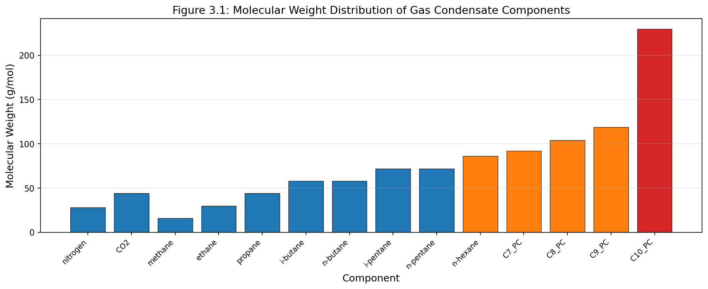
Figure 3.1: Fig01 Molecular Weight Distribution
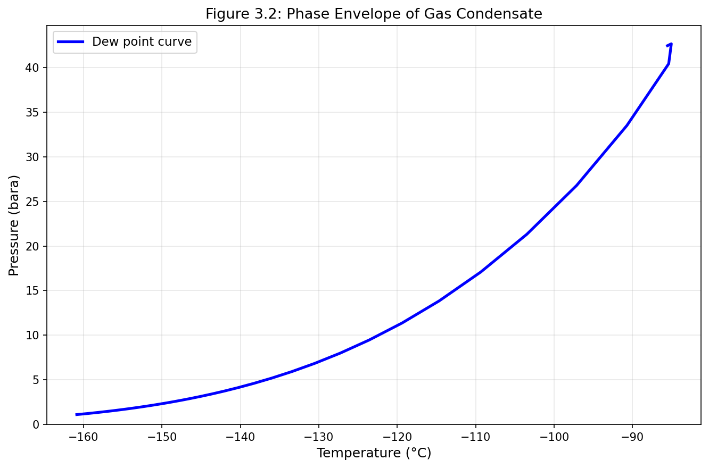
Figure 3.2: Fig02 Phase Envelope Condensate
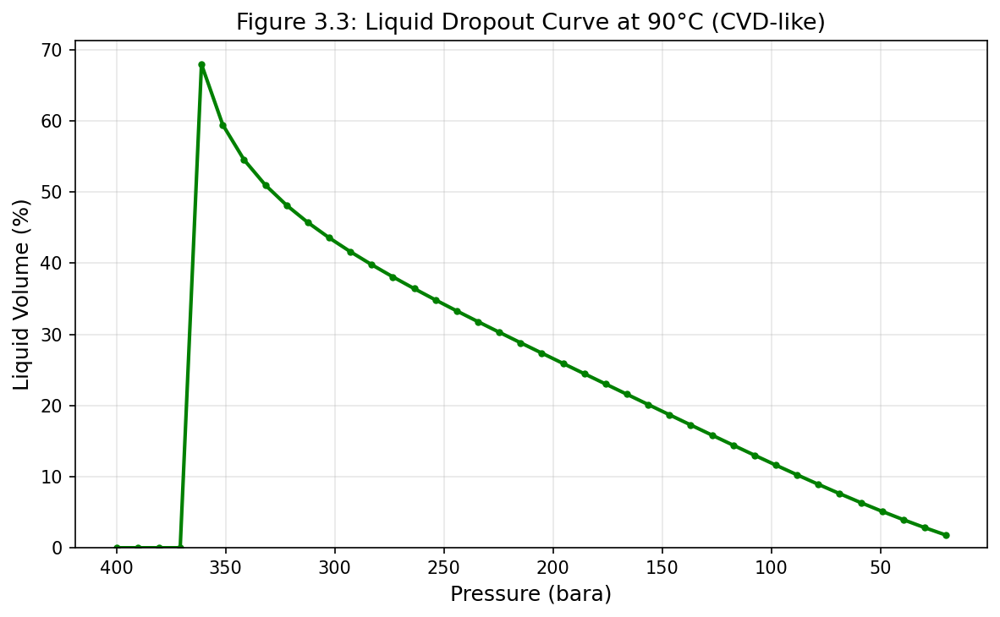
Figure 3.3: Fig03 Liquid Dropout Curve
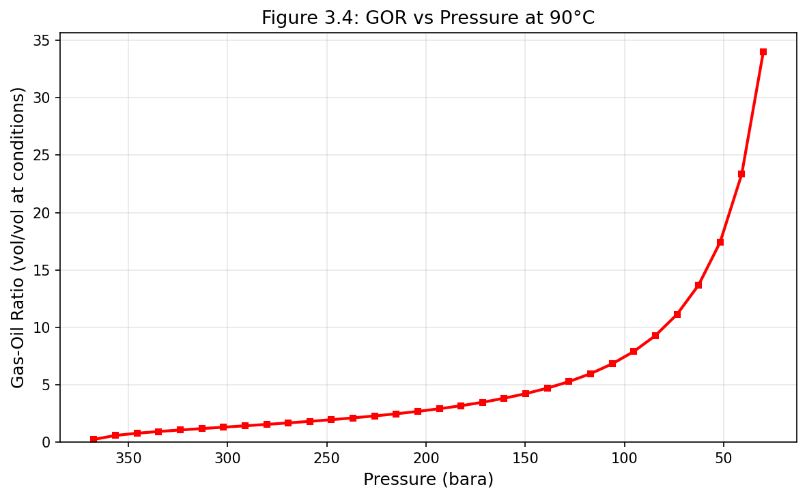
Figure 3.4: Fig04 Gor Vs Pressure
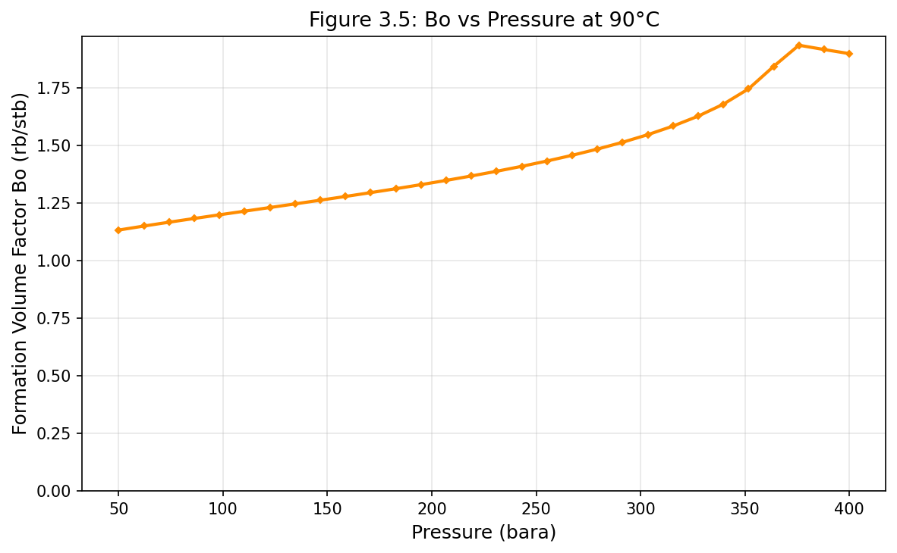
Figure 3.5: Fig05 Bo Vs Pressure
Part II: Reservoir and Wells
Reservoir Engineering and Inflow Performance
Learning Objectives
After reading this chapter, the reader will be able to:
- Apply Darcy's law and the radial flow equation to calculate well productivity
- Construct inflow performance relationships (IPR) for oil wells (Vogel) and gas wells (back-pressure, LIT equations)
- Explain reservoir drive mechanisms and their effect on pressure decline and recovery factor
- Perform material balance calculations for different drive types, including the Havlena-Odeh method
- Analyze well test data using Horner plots and estimate skin factor from pressure buildup
- Use decline curve analysis (Arps) to forecast production and estimate EUR
- Understand the NODAL analysis framework for integrated well-reservoir-facility analysis
- Use NeqSim's
SimpleReservoirclass and couple it with wellbore models for production optimization workflows - Evaluate the coupling between reservoir simulation and process simulation through VFP tables
4.1 Introduction
Reservoir engineering provides the boundary conditions for production optimization. The reservoir determines how much fluid can be produced, at what rate, and for how long. No amount of topside optimization can overcome the fundamental constraints imposed by the reservoir — its pressure, permeability, fluid properties, and remaining reserves.
This chapter covers the reservoir engineering concepts most relevant to production optimization: inflow performance relationships that define what the well can deliver, reservoir pressure decline that governs the production life cycle, well testing methods that characterize the reservoir, and the system analysis framework that connects reservoir performance to the rest of the production chain.
We focus on practical modeling rather than detailed reservoir simulation. For integrated production optimization, the reservoir is typically represented by IPR curves and decline profiles — simplified models that capture the essential behavior without the computational cost of full reservoir simulation.
4.2 Darcy's Law and Radial Flow
4.2.1 Darcy's Law
Darcy's law describes the flow of a single-phase fluid through a porous medium:
$$ q = -\frac{kA}{\mu}\frac{dP}{dx} $$
where:
- $q$ = volumetric flow rate [m³/s]
- $k$ = permeability [m² or Darcy; 1 D = 9.869 × 10$^{-13}$ m²]
- $A$ = cross-sectional area [m²]
- $\mu$ = fluid viscosity [Pa·s]
- $dP/dx$ = pressure gradient [Pa/m]
The negative sign indicates that flow is in the direction of decreasing pressure.
4.2.2 Radial Flow to a Vertical Well
For steady-state radial flow to a vertical well in a homogeneous reservoir, integrating Darcy's law in cylindrical coordinates gives:
$$ q_o = \frac{2\pi k h (P_e - P_{wf})}{B_o \mu_o \left[\ln\left(\frac{r_e}{r_w}\right) + S\right]} $$
where:
- $q_o$ = oil flow rate at surface conditions [m³/s]
- $k$ = reservoir permeability [m²]
- $h$ = net pay thickness [m]
- $P_e$ = reservoir pressure at the drainage boundary [Pa]
- $P_{wf}$ = flowing bottomhole pressure [Pa]
- $B_o$ = oil formation volume factor [-]
- $\mu_o$ = oil viscosity at reservoir conditions [Pa·s]
- $r_e$ = drainage radius [m]
- $r_w$ = wellbore radius [m]
- $S$ = skin factor [-]
For practical field units (bbl/day, mD, ft, psi, cp):
$$ q_o = \frac{0.00708\, k h (P_e - P_{wf})}{B_o \mu_o \left[\ln\left(\frac{r_e}{r_w}\right) - 0.75 + S\right]} $$
4.2.3 The Productivity Index
The productivity index (PI or $J$) linearizes the well inflow for undersaturated oil:
$$ J = \frac{q_o}{P_e - P_{wf}} = \frac{2\pi k h}{B_o \mu_o \left[\ln\left(\frac{r_e}{r_w}\right) + S\right]} $$
The PI has units of m³/s/Pa (or bbl/day/psi in field units). A higher PI means the well produces more for a given drawdown. The PI depends on:
- Rock properties: Permeability $k$ and thickness $h$
- Fluid properties: Viscosity $\mu_o$ and FVF $B_o$ (both pressure-dependent)
- Completion quality: Skin factor $S$ (positive = damaged, negative = stimulated)
- Well geometry: Drainage and wellbore radii
Typical productivity indices:
| Well Type | PI Range (Sm³/d/bar) |
|---|---|
| Low permeability gas well | 100–1,000 |
| Average oil well | 1–50 |
| High productivity oil well | 50–500 |
| Fractured well | 100–2,000 |
4.2.4 Skin Factor
The skin factor $S$ accounts for the additional pressure drop (or reduced pressure drop) near the wellbore due to:
| Cause | Effect on $S$ | Typical Range |
|---|---|---|
| Drilling damage (mud invasion) | Positive (damage) | +1 to +20 |
| Partial penetration | Positive | +1 to +10 |
| Perforation skin | Positive | +1 to +5 |
| Hydraulic fracturing | Negative (stimulated) | -2 to -6 |
| Acid stimulation | Negative | -1 to -3 |
| Gravel pack | Positive or negative | -1 to +5 |
The apparent skin $S$ transforms the wellbore radius to an effective radius:
$$ r_{w,\text{eff}} = r_w e^{-S} $$
A skin of $S = -4$ is equivalent to increasing the effective wellbore radius by a factor of 55 — the effect of a hydraulic fracture.
4.3 Well Testing
4.3.1 Purpose and Types of Well Tests
Well testing provides the primary source of in-situ reservoir characterization data. By measuring pressure and rate at the wellbore during controlled flow periods, we can determine:
- Permeability-thickness product $kh$
- Skin factor $S$
- Average reservoir pressure $\bar{P}$
- Reservoir boundaries and heterogeneities
- Drainage area and connectivity
The two fundamental well test types are:
- Drawdown test: The well flows at a constant rate from an initially shut-in condition. The pressure decline at the wellbore is analyzed.
- Buildup test: The well is shut in after a period of production. The pressure rise during the shut-in period is analyzed.
4.3.2 Pressure Drawdown Analysis
For a constant-rate drawdown in an infinite-acting reservoir, the wellbore pressure during radial flow follows:
$$ P_{wf} = P_i - \frac{q B \mu}{4\pi k h}\left[\ln\left(\frac{4 k t}{\phi \mu c_t r_w^2}\right) - 2\gamma + 2S\right] $$
where $\gamma = 0.5772$ is Euler's constant, $\phi$ is porosity, $c_t$ is total compressibility, and $t$ is time.
In field units (psi, bbl/day, mD, ft, cp, hr):
$$ P_{wf} = P_i - 162.6 \frac{q B \mu}{k h}\left[\log t + \log\frac{k}{\phi \mu c_t r_w^2} - 3.23 + 0.87 S\right] $$
A plot of $P_{wf}$ vs. $\log t$ gives a straight line during the infinite-acting radial flow period. The slope $m$ of this line yields:
$$ k h = \frac{162.6 \, q B \mu}{m} $$
And the skin factor:
$$ S = 1.151\left[\frac{P_i - P_{1\text{hr}}}{m} - \log\frac{k}{\phi \mu c_t r_w^2} + 3.23\right] $$
where $P_{1\text{hr}}$ is the pressure at $t = 1$ hour read from the straight line (not necessarily a measured point).
4.3.3 Pressure Buildup Analysis (Horner Plot)
The Horner method is the most widely used buildup analysis technique. After producing for time $t_p$ at rate $q$, the well is shut in and the buildup pressure $P_{ws}$ is measured as a function of shut-in time $\Delta t$:
$$ P_{ws} = P_i - 162.6 \frac{q B \mu}{k h} \log\left(\frac{t_p + \Delta t}{\Delta t}\right) $$
The Horner plot is $P_{ws}$ vs. $\log\left(\frac{t_p + \Delta t}{\Delta t}\right)$ — this should yield a straight line during the infinite-acting radial flow period. From this line:
$$ k h = \frac{162.6 \, q B \mu}{m} $$
where $m$ is the slope of the Horner straight line. The skin factor is:
$$ S = 1.151\left[\frac{P_{ws,1\text{hr}} - P_{wf,\text{last}}}{m} - \log\frac{k}{\phi \mu c_t r_w^2} + 3.23\right] $$
where $P_{ws,1\text{hr}}$ is the buildup pressure at $\Delta t = 1$ hour (from the straight line) and $P_{wf,\text{last}}$ is the flowing pressure just before shut-in.
The extrapolation of the Horner straight line to $\frac{t_p + \Delta t}{\Delta t} = 1$ (i.e., infinite shut-in time) gives $P^*$, which approximates the average reservoir pressure for an infinite-acting reservoir.
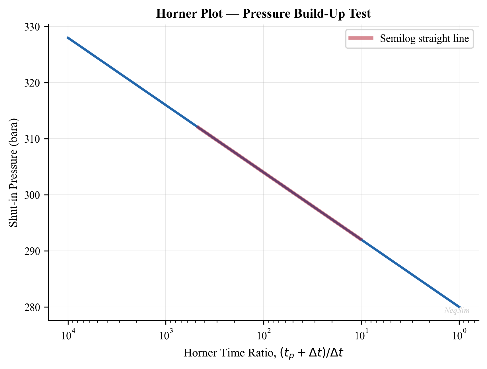
4.3.4 Practical Considerations for Well Testing
Several factors complicate real well test interpretation:
- Wellbore storage: Fluid stored in the wellbore continues to flow into the formation after surface shut-in, masking the early-time reservoir response. The wellbore storage coefficient is $C = V_w c_w$ for a liquid-filled wellbore.
- Phase redistribution: In gas-liquid wells, phase segregation in the wellbore after shut-in causes a pressure "hump" that must be identified and excluded from analysis.
- Boundary effects: Faults, gas-oil contacts, or drainage boundaries cause deviations from the infinite-acting straight line at late times.
- Rate history: If the well has not been flowing at a constant rate, superposition in time is needed to account for the variable rate history.
4.3.5 Pressure-Transient Derivative Analysis
Modern well test interpretation uses the Bourdet pressure derivative:
$$ P' = \frac{dP_{ws}}{d\ln \Delta t} = \Delta t \frac{dP_{ws}}{d\Delta t} $$
On a log-log plot of $\Delta P$ and $P'$ vs. $\Delta t$:
- Wellbore storage: Both $\Delta P$ and $P'$ lie on a unit-slope line
- Infinite-acting radial flow: $P'$ is constant (horizontal line), from which $kh$ is calculated
- Linear flow (fracture or channel): $P'$ follows a half-slope line
- Boundary effects: $P'$ rises (closed boundary) or drops (constant-pressure boundary)
This diagnostic plot is the first step in any well test interpretation, used to identify flow regimes before applying specific analysis methods.
4.4 Inflow Performance Relationships (IPR)
4.4.1 Linear IPR (Undersaturated Oil)
When the flowing bottomhole pressure $P_{wf}$ remains above the bubble point $P_b$, the oil behaves as a single-phase liquid with approximately constant compressibility, viscosity, and FVF. The IPR is linear:
$$ q_o = J(P_r - P_{wf}) $$
where $P_r$ is the average reservoir pressure and $J$ is the productivity index. The maximum flow rate occurs when $P_{wf} = 0$:
$$ q_{o,\max} = J \cdot P_r $$
4.4.2 Vogel's IPR (Saturated Oil)
When $P_{wf}$ falls below the bubble point, gas evolves in the reservoir near the wellbore, reducing the effective permeability to oil. Vogel (1968) developed an empirical correlation for this non-linear behavior:
$$ \frac{q_o}{q_{o,\max}} = 1 - 0.2\left(\frac{P_{wf}}{P_r}\right) - 0.8\left(\frac{P_{wf}}{P_r}\right)^2 $$
4.4.3 Composite IPR (Above and Below Bubble Point)
For the common case where the reservoir pressure is above the bubble point but $P_{wf}$ falls below it, the composite IPR combines the linear region with the Vogel region:
For $P_{wf} \geq P_b$:
$$ q_o = J(P_r - P_{wf}) $$
For $P_{wf} < P_b$:
$$ q_o = J(P_r - P_b) + \frac{J P_b}{1.8}\left[1 - 0.2\left(\frac{P_{wf}}{P_b}\right) - 0.8\left(\frac{P_{wf}}{P_b}\right)^2\right] $$
The total $q_{o,\max}$ for the composite IPR is:
$$ q_{o,\max} = J(P_r - P_b) + \frac{J P_b}{1.8} $$
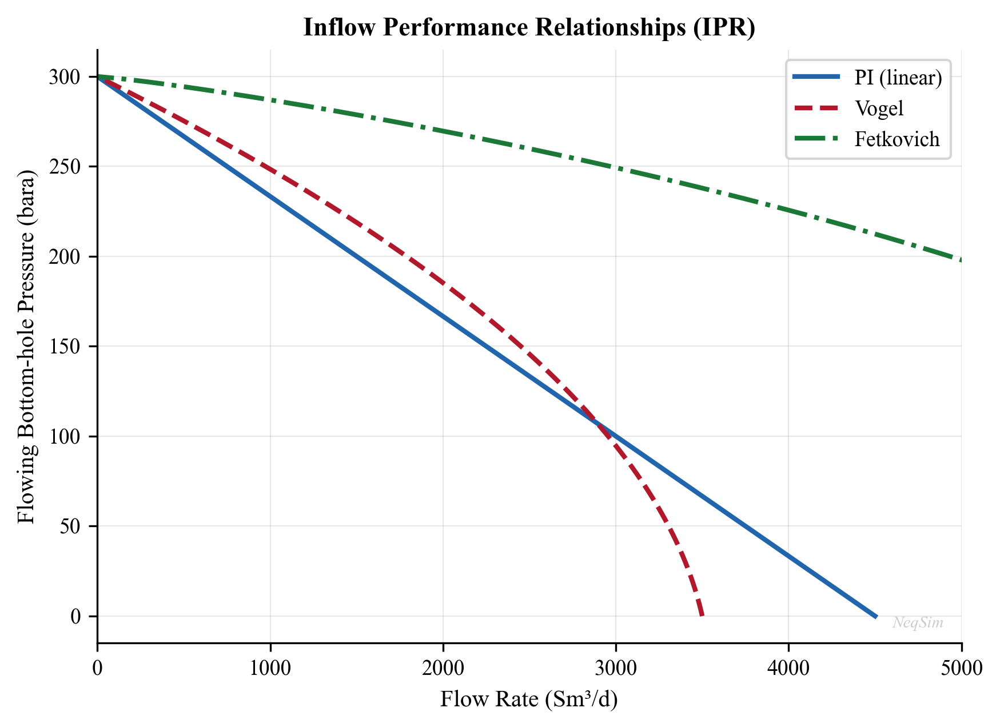
4.4.4 Fetkovich Method for Gas Wells
Fetkovich (1973) proposed an alternative to the back-pressure equation that uses an isochronal testing concept. The deliverability equation has the form:
$$ q_g = C(P_r^2 - P_{wf}^2)^n $$
where $C$ and $n$ are determined from multi-rate tests. The Fetkovich method is also applied to oil wells with solution gas drive, using a modified approach that accounts for changes in relative permeability:
$$ \frac{q_o}{q_{o,\max}} = \left[1 - \left(\frac{P_{wf}}{P_r}\right)^2\right]^n $$
where $n$ is the deliverability exponent (typically 0.5–1.0). For $n = 1$, this reduces to a simplified form analogous to the back-pressure equation. For oil wells, $n$ is often close to 1.0 at early times and decreases as the reservoir depletes and the gas saturation increases.
4.4.5 Gas Well IPR: Back-Pressure Equation
For gas wells, the simplified back-pressure equation (Rawlins and Schellhardt, 1935):
$$ q_g = C(P_r^2 - P_{wf}^2)^n $$
where $C$ is the performance coefficient and $n$ is the deliverability exponent (0.5 ≤ $n$ ≤ 1.0).
4.4.6 Gas Well IPR: Laminar-Inertial-Turbulent (LIT) Equation
The more rigorous LIT equation separates laminar and turbulent contributions:
$$ P_r^2 - P_{wf}^2 = aq_g + bq_g^2 $$
Using pseudo-pressures $m(P)$ for improved accuracy:
$$ m(P_r) - m(P_{wf}) = aq_g + bq_g^2 $$
The pseudo-pressure is defined as:
$$ m(P) = 2\int_{P_0}^{P} \frac{P'}{\mu_g(P') Z(P')} dP' $$
which accounts for the variation of gas viscosity and Z-factor with pressure.
4.4.7 Future IPR with Reservoir Depletion
As the reservoir depletes, the IPR curve shifts — the maximum rate decreases. For production forecasting, we need the IPR at future reservoir pressures. The future IPR can be estimated by:
For Vogel's method, the future $q_{o,\max}$ at a new reservoir pressure $P_r'$ is:
$$ q_{o,\max}' = q_{o,\max} \left(\frac{P_r'}{P_r}\right) \left(\frac{k_{ro}(S_o')\mu_o B_o}{k_{ro}(S_o)\mu_o' B_o'}\right) $$
In simplified form (assuming the permeability-viscosity-FVF ratio changes slowly):
$$ q_{o,\max}' \approx q_{o,\max} \left(\frac{P_r'}{P_r}\right) $$
This produces a family of IPR curves that move down and to the left as the reservoir pressure declines, showing how the well's productive capacity diminishes over time.
4.4.8 Horizontal Well IPR
For horizontal wells, the Joshi (1988) productivity equation:
$$ J_h = \frac{2\pi k_h h}{B_o \mu_o \left[\ln\left(\frac{a + \sqrt{a^2 - (L/2)^2}}{L/2}\right) + \frac{h}{L}\ln\left(\frac{h}{2\pi r_w}\right)\right]} $$
where $L$ is the horizontal well length and:
$$ a = \frac{L}{2}\left[0.5 + \sqrt{0.25 + \left(\frac{2r_e}{L}\right)^4}\right]^{0.5} $$
4.5 Reservoir Pressure Decline and Material Balance
4.5.1 Drive Mechanisms and Recovery Factors
The energy that drives fluid from the reservoir to the wellbore comes from several mechanisms:
| Drive Mechanism | Typical Recovery Factor | Pressure Behavior | Identifying Signature |
|---|---|---|---|
| Solution gas drive | 5–30% OOIP | Rapid decline | GOR increases rapidly after $P_b$ |
| Gas cap drive | 20–40% OOIP | Moderate decline | GOR increases, gas cap expands |
| Water drive (natural) | 30–60% OOIP | Near-constant pressure | WOR increases with time |
| Rock/fluid expansion | 1–5% OOIP | Above bubble point | Uniform pressure decline |
| Gravity drainage | 40–70% OOIP | Slow decline | Low-rate production, dipping beds |
| Combination | Varies | Depends on dominant | Multiple signatures |
Understanding the dominant drive mechanism is essential for predicting reservoir performance and selecting the correct material balance model.
4.5.2 General Material Balance Equation
The general material balance equation for an oil reservoir (Schilthuis, 1936):
$$ N_p[B_o + (R_p - R_s)B_g] = N\left[(B_o - B_{oi}) + (R_{si} - R_s)B_g + \frac{B_{oi}(c_w S_{wi} + c_f)}{1-S_{wi}}\Delta P\right] + \frac{m N B_{oi}}{B_{gi}}(B_g - B_{gi}) + W_e - W_p B_w $$
where:
- $N_p$ = cumulative oil production
- $N$ = original oil in place (OOIP)
- $R_p$ = cumulative producing GOR
- $m$ = ratio of gas cap volume to oil zone volume
- $W_e$ = cumulative water influx
- $W_p$ = cumulative water production
- Subscript $i$ = initial conditions
4.5.3 Havlena-Odeh Formulation
Havlena and Odeh (1963) rearranged the material balance equation into a straight-line form that is more convenient for analysis. Defining:
$$ F = N_p[B_o + (R_p - R_s)B_g] + W_p B_w $$
$$ E_o = (B_o - B_{oi}) + (R_{si} - R_s)B_g $$
$$ E_g = B_{oi}\left(\frac{B_g}{B_{gi}} - 1\right) $$
$$ E_{fw} = \frac{B_{oi}(c_w S_{wi} + c_f)}{1 - S_{wi}} \Delta P $$
The material balance becomes:
$$ F = N(E_o + m E_g + E_{fw}) + W_e $$
For different reservoir types, this reduces to specific straight-line plots:
- Volumetric undersaturated oil ($m = 0$, $W_e = 0$, above $P_b$): $F = N E_{fw}$
- Solution gas drive ($m = 0$, $W_e = 0$, below $P_b$): $F = N E_o$
- Gas cap drive ($W_e = 0$): $F / E_o = N + N m E_g / E_o$, plot $F/E_o$ vs. $E_g/E_o$ → slope gives $Nm$, intercept gives $N$
- Water drive: $F / E_o = N + W_e / E_o$, plot $F/E_o$ vs. $W_e/E_o$ → slope gives 1, intercept gives $N$
4.5.4 Drive Index Analysis
The drive index quantifies the relative contribution of each energy source to the total production:
$$ \text{DDI} = \frac{N E_o}{F}, \quad \text{SDI} = \frac{N m E_g}{F}, \quad \text{WDI} = \frac{W_e}{F}, \quad \text{CDI} = \frac{N E_{fw}}{F} $$
where DDI = depletion drive index, SDI = segregation (gas cap) drive index, WDI = water drive index, and CDI = compressibility drive index. The sum of all indices equals 1.0.
Tracking the drive index over time reveals how the dominant drive mechanism changes as the reservoir depletes — for example, solution gas drive may dominate early in the life of a reservoir, but an expanding gas cap may become the dominant mechanism later.
4.5.5 Water Influx Models
For reservoirs with active aquifer support, the water influx term $W_e$ must be calculated using an appropriate aquifer model.
Schilthuis steady-state model (constant influx rate per unit pressure drop):
$$ \frac{dW_e}{dt} = k_a (P_i - P) $$
$$ W_e = k_a \int_0^t (P_i - P) \, dt $$
This is the simplest model and assumes the aquifer responds instantaneously to pressure changes.
Van Everdingen-Hurst unsteady-state model (the most rigorous analytical model):
$$ W_e = U \sum_{j=0}^{n} \Delta P_j W_D(t_{Dj}) $$
where $U$ is the aquifer constant, $\Delta P_j$ is the pressure drop at time step $j$, and $W_D$ is the dimensionless water influx function evaluated at the dimensionless time:
$$ t_D = \frac{k_a t}{\phi_a \mu_w c_t r_a^2} $$
The aquifer constant is:
$$ U = \frac{2\pi f \phi_a c_t h_a r_a^2}{5.615} $$
where $f$ is the fraction of the aquifer circle (1 for full encirclement, 0.5 for half, etc.).
Carter-Tracy approximation — a practical simplification of the van Everdingen-Hurst model that avoids the superposition summation and is easier to implement in spreadsheet calculations.
4.5.6 Gas Material Balance (P/Z Plot)
For a volumetric gas reservoir (no water influx), the material balance simplifies to:
$$ \frac{P}{Z} = \frac{P_i}{Z_i}\left(1 - \frac{G_p}{G}\right) $$
where $G_p$ is the cumulative gas production and $G$ is the original gas in place (OGIP). A plot of $P/Z$ vs. $G_p$ is a straight line:
- The y-intercept gives $P_i/Z_i$
- The x-intercept gives $G$ (OGIP)
- The current position gives the remaining reserves
For gas condensate reservoirs, the two-phase Z-factor $Z_{\text{2ph}}$ from the CVD experiment (Chapter 3) should be used instead of the single-phase $Z$ to account for the liquid dropout in the reservoir.
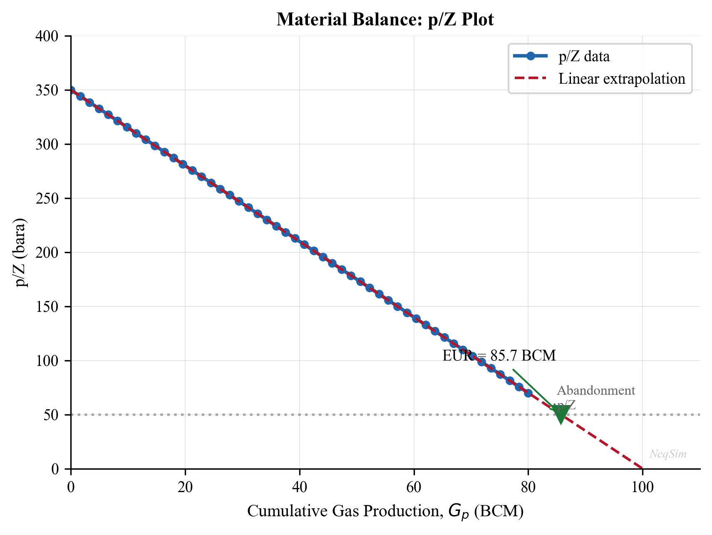
4.6 Recovery Factor
4.6.1 Primary Recovery Mechanisms
The recovery factor — the fraction of original hydrocarbons in place that can be produced — varies dramatically with drive mechanism:
Solution gas drive: As pressure drops below the bubble point, dissolved gas evolves and expands, pushing oil toward the wellbore. Recovery is typically 5–30% of OOIP. This is the least efficient natural drive mechanism because the gas expands throughout the reservoir rather than preferentially displacing oil. The GOR increases rapidly as the gas saturation increases.
Water drive: An active aquifer encroaches into the oil zone as production reduces the reservoir pressure, displacing oil from the pore space. Recovery is typically 30–60% of OOIP. Strong water drive maintains near-constant reservoir pressure, which is beneficial for production rates but eventually leads to high water cuts.
Gas cap drive: An existing or forming gas cap expands as pressure decreases, displacing oil downward. Recovery is typically 20–40% of OOIP. The efficiency depends on the ratio of gas cap to oil zone volume and the degree of gas cap segregation.
Gravity drainage: In steeply dipping or thick reservoirs with good vertical permeability, gravity segregation allows oil to drain downward as gas occupies the upper portion. Recovery can be very high (40–70% OOIP) but at low production rates. This mechanism is particularly effective in fractured reservoirs.
Combination drive: Most reservoirs exhibit a combination of mechanisms, often transitioning from one dominant mechanism to another as depletion progresses.
4.6.2 Typical Recovery Factors by Fluid Type
| Fluid Type | Primary Recovery | With Pressure Maintenance | With EOR |
|---|---|---|---|
| Light oil (water drive) | 30–60% | 40–65% | 50–75% |
| Light oil (solution gas) | 10–25% | 25–40% | 40–60% |
| Heavy oil | 5–15% | 10–25% | 20–50% (thermal) |
| Gas condensate | 50–80% (gas) | 70–90% (gas cycling) | — |
| Dry gas | 80–95% | — | — |
These ranges illustrate why understanding the drive mechanism is critical for production optimization: the choice of operating strategy (pressure maintenance, gas lift, water injection) fundamentally affects the ultimate recovery.
4.7 Decline Curve Analysis
4.7.1 Arps Decline Equations
Arps (1945) defined three types of production decline:
Exponential decline ($b = 0$):
$$ q(t) = q_i \exp(-D_i t) $$
$$ N_p(t) = \frac{q_i - q(t)}{D_i} $$
Hyperbolic decline ($0 < b < 1$):
$$ q(t) = \frac{q_i}{(1 + bD_i t)^{1/b}} $$
$$ N_p(t) = \frac{q_i^b}{D_i(1-b)}\left[q_i^{1-b} - q(t)^{1-b}\right] $$
Harmonic decline ($b = 1$):
$$ q(t) = \frac{q_i}{1 + D_i t} $$
$$ N_p(t) = \frac{q_i}{D_i}\ln\left(\frac{q_i}{q(t)}\right) $$
where:
- $q_i$ = initial production rate
- $D_i$ = initial decline rate [1/time]
- $b$ = decline exponent (0 ≤ $b$ ≤ 1)
- $N_p(t)$ = cumulative production at time $t$
Typical $b$ values by drive mechanism:
| Drive Mechanism | Typical $b$ |
|---|---|
| Solution gas drive | 0.3–0.5 |
| Gas cap drive | 0.3–0.5 |
| Water drive | 0.0–0.3 |
| Gas well (volumetric) | 0.4–0.6 |
4.7.2 Decline Rate and EUR Estimation
The instantaneous decline rate is:
$$ D = -\frac{1}{q}\frac{dq}{dt} $$
For exponential decline, $D$ is constant. For hyperbolic decline:
$$ D(t) = \frac{D_i}{1 + bD_i t} $$
The effective annual decline rate $d$ relates to the nominal decline rate $D$ by:
$$ d = 1 - e^{-D} $$
Estimated Ultimate Recovery (EUR) is calculated by integrating the decline curve to the economic limit rate $q_{\text{el}}$:
For exponential decline:
$$ \text{EUR} = N_p^{\text{current}} + \frac{q_{\text{current}} - q_{\text{el}}}{D} $$
For hyperbolic decline, the time to reach the economic limit is:
$$ t_{\text{el}} = \frac{1}{bD_i}\left[\left(\frac{q_i}{q_{\text{el}}}\right)^b - 1\right] $$
4.7.3 Rate-Cumulative Plots
An alternative diagnostic is the rate-cumulative production plot ($q$ vs. $N_p$):
- Exponential decline: Straight line with slope $-D$
- Hyperbolic decline: Concave-upward curve
- Harmonic decline: Concave-upward curve (more so than hyperbolic)
The rate-cumulative plot is useful because:
- It does not require time data (useful when production records have gaps)
- The x-intercept directly gives EUR (when extrapolated to $q = 0$ or $q_{\text{el}}$)
- Changes in decline behavior (e.g., due to workovers or infill wells) are clearly visible as slope changes
4.8 Reservoir Simulation Coupling
4.8.1 Black Oil vs. Compositional Simulation
Reservoir simulation provides the most detailed prediction of reservoir performance, but the choice of simulation model affects how it couples with process simulation:
Black oil simulation uses pressure-dependent properties ($B_o$, $R_s$, $\mu_o$, $B_g$, $\mu_g$) from PVT tables. It is computationally efficient and suitable for black oils. The output (oil rate, gas rate, water rate, pressure) is passed to the process model as boundary conditions.
Compositional simulation tracks individual component mole fractions and solves the flash problem at each grid cell and time step. It is required for volatile oils, gas condensates, and gas injection processes. The output includes detailed stream compositions that can be directly used in NeqSim process models.
4.8.2 VFP Table Import
The primary interface between reservoir and process simulation is the Vertical Flow Performance (VFP) table. This lookup table provides the relationship between bottomhole pressure and flow rate for different:
- Tubing head pressures
- Water cuts
- Gas-liquid ratios
- Artificial lift parameters (gas lift rate, ESP frequency)
The reservoir simulator uses VFP tables to calculate the flowing bottomhole pressure for each well at each time step, which then determines the production rate through the IPR. VFP tables are typically generated by a wellbore hydraulics model (Chapter 5) and can be created using NeqSim's pipe flow capabilities.
4.8.3 Coupling with NeqSim Wellbore Models
NeqSim provides the PipeBeggsAndBrills class for multiphase wellbore flow calculations. This can be coupled with the SimpleReservoir class to create an integrated reservoir-to-separator model:
from neqsim import jneqsim
# Create reservoir fluid
fluid = jneqsim.thermo.system.SystemSrkEos(273.15 + 95.0, 250.0)
fluid.addComponent("nitrogen", 0.5)
fluid.addComponent("CO2", 1.8)
fluid.addComponent("methane", 65.0)
fluid.addComponent("ethane", 8.0)
fluid.addComponent("propane", 4.0)
fluid.addComponent("n-butane", 2.5)
fluid.addComponent("n-pentane", 1.5)
fluid.addComponent("n-hexane", 1.0)
fluid.addComponent("n-heptane", 5.0)
fluid.addComponent("n-octane", 4.0)
fluid.addComponent("n-nonane", 3.0)
fluid.addComponent("n-decane", 2.7)
fluid.addComponent("water", 1.0)
fluid.setMixingRule("classic")
fluid.setMultiPhaseCheck(True)
# Create well stream at bottomhole conditions
Stream = jneqsim.process.equipment.stream.Stream
well_inflow = Stream("Well Inflow", fluid)
well_inflow.setFlowRate(50000.0, "kg/hr")
well_inflow.setTemperature(95.0, "C")
well_inflow.setPressure(200.0, "bara")
# Model wellbore as a vertical pipe
PipeBeggsAndBrills = jneqsim.process.equipment.pipeline.PipeBeggsAndBrills
wellbore = PipeBeggsAndBrills("Wellbore", well_inflow)
wellbore.setPipeWallRoughness(2.5e-5)
wellbore.setLength(3000.0) # 3000 m well depth
wellbore.setElevation(-3000.0) # Vertical well (negative = upward flow)
wellbore.setDiameter(0.1016) # 4-inch tubing
# Model flowline to separator
flowline = PipeBeggsAndBrills("Flowline", wellbore.getOutletStream())
flowline.setPipeWallRoughness(5.0e-5)
flowline.setLength(5000.0) # 5 km flowline
flowline.setElevation(0.0) # Horizontal
flowline.setDiameter(0.2032) # 8-inch pipeline
# HP Separator
Separator = jneqsim.process.equipment.separator.Separator
hp_sep = Separator("HP Separator", flowline.getOutletStream())
# Build and run process
ProcessSystem = jneqsim.process.processmodel.ProcessSystem
process = ProcessSystem()
process.add(well_inflow)
process.add(wellbore)
process.add(flowline)
process.add(hp_sep)
process.run()
# Report results
print("=== Integrated Well-to-Separator Results ===")
print(f"Bottomhole pressure: {well_inflow.getPressure('bara'):.1f} bara")
print(f"Wellhead pressure: {wellbore.getOutletStream().getPressure('bara'):.1f} bara")
print(f"Wellhead temperature: {wellbore.getOutletStream().getTemperature('C'):.1f} C")
print(f"Separator inlet pressure: {flowline.getOutletStream().getPressure('bara'):.1f} bara")
print(f"Separator inlet temperature: {flowline.getOutletStream().getTemperature('C'):.1f} C")
print(f"Oil rate: {hp_sep.getLiquidOutStream().getFlowRate('m3/hr'):.1f} m3/hr")
print(f"Gas rate: {hp_sep.getGasOutStream().getFlowRate('MSm3/day'):.4f} MSm3/day")
4.9 System Analysis: NODAL Analysis
4.9.1 Concept
NODAL analysis (first described by Gilbert, 1954; formalized by Mach et al., 1979) is the framework for analyzing the integrated well-reservoir-facility system. The system is divided at a "node" — typically the bottomhole — and two performance curves are plotted:
- Inflow Performance Relationship (IPR): The rate the reservoir can deliver as a function of bottomhole pressure
- Vertical Flow Performance (VFP): The bottomhole pressure required to lift the fluid to the surface at each rate
The operating point is where the two curves intersect.
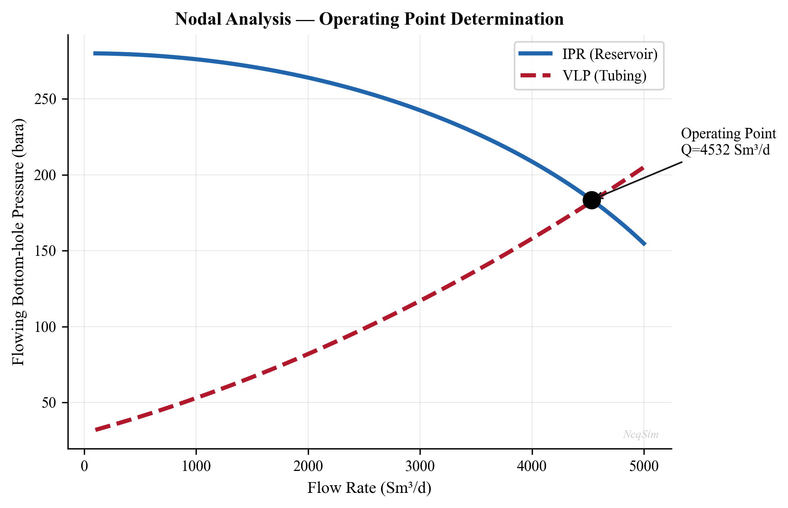
4.9.2 Applications of NODAL Analysis
| Application | What Changes |
|---|---|
| Tubing size selection | VFP curve shifts |
| Choke sizing | VFP curve back-pressure increases |
| Artificial lift design | VFP curve lowered |
| Separator pressure optimization | VFP curve back-pressure changes |
| Stimulation evaluation | IPR curve shifts (skin reduction) |
| Water cut effect | Both curves change |
4.9.3 Multi-Well Optimization
When multiple wells produce into a common facility, the individual well operating points are coupled through the shared back-pressure. The total production is:
$$ q_{\text{total}} = \sum_{i=1}^{N_w} q_i(P_{wf,i}) $$
subject to:
- Each well's IPR constraint
- The gathering system pressure drop model
- The facility capacity constraint (separator capacity, compressor capacity)
This optimization problem — maximizing $q_{\text{total}}$ subject to constraints — is the core of production optimization, developed further in Chapter 19.
4.10 NeqSim Implementation: Reservoir Modeling
4.10.1 The SimpleReservoir Class
NeqSim provides the SimpleReservoir class for coupling reservoir performance with process simulation:
from neqsim import jneqsim
# Create reservoir fluid
fluid = jneqsim.thermo.system.SystemSrkEos(273.15 + 100.0, 250.0)
fluid.addComponent("nitrogen", 0.5)
fluid.addComponent("CO2", 2.0)
fluid.addComponent("methane", 65.0)
fluid.addComponent("ethane", 8.0)
fluid.addComponent("propane", 4.0)
fluid.addComponent("i-butane", 1.0)
fluid.addComponent("n-butane", 2.0)
fluid.addComponent("i-pentane", 0.8)
fluid.addComponent("n-pentane", 0.6)
fluid.addComponent("n-hexane", 1.0)
fluid.addComponent("n-heptane", 5.0)
fluid.addComponent("n-octane", 4.0)
fluid.addComponent("n-nonane", 3.0)
fluid.addComponent("n-decane", 2.1)
fluid.addComponent("water", 1.0)
fluid.setMixingRule("classic")
fluid.setMultiPhaseCheck(True)
# Create reservoir
SimpleReservoir = jneqsim.process.equipment.reservoir.SimpleReservoir
reservoir = SimpleReservoir("Main Reservoir")
reservoir.setReservoirFluid(fluid)
reservoir.setGasOilContact(200.0) # OGOC depth in meters
# Add a production well
reservoir.addWell("Producer-1")
4.10.2 IPR Curve Generation with NeqSim
Using NeqSim to generate IPR curves by solving the well-reservoir system at different bottomhole pressures:
from neqsim import jneqsim
# Reservoir parameters
P_reservoir = 250.0 # bara
T_reservoir = 95.0 # C
PI = 15.0 # Sm3/d/bar (productivity index)
P_bubble = 180.0 # bara (bubble point)
# Calculate IPR using composite Vogel method
pressures_bhp = []
rates = []
for i in range(50):
P_wf = 10.0 + i * 4.8 # 10 to 250 bara
pressures_bhp.append(P_wf)
if P_wf >= P_bubble:
# Linear region (above bubble point)
q = PI * (P_reservoir - P_wf)
else:
# Vogel region (below bubble point)
q_at_pb = PI * (P_reservoir - P_bubble)
q_vogel_max = q_at_pb + PI * P_bubble / 1.8
q = q_at_pb + (q_vogel_max - q_at_pb) * (
1.0 - 0.2 * (P_wf / P_bubble) - 0.8 * (P_wf / P_bubble) ** 2
)
rates.append(max(0.0, q))
# Print table
print(f"{'P_wf (bara)':>12} {'q_o (Sm3/d)':>12}")
print("-" * 26)
for p, q in zip(pressures_bhp[::5], rates[::5]):
print(f"{p:12.1f} {q:12.1f}")
4.10.3 Decline Curve Implementation
import math
# Arps decline curve parameters
q_i = 5000.0 # Initial rate, Sm3/d
D_i = 0.001 # Initial decline rate, 1/day (about 30% per year)
b = 0.5 # Hyperbolic exponent
# Forecast for 10 years
time_days = [i * 30 for i in range(121)] # Monthly steps for 10 years
rates = []
cum_production = []
cum = 0.0
for t in time_days:
# Hyperbolic decline
q = q_i / (1.0 + b * D_i * t) ** (1.0 / b)
rates.append(q)
if t > 0:
dt = time_days[1] # Step size
cum += q * dt
cum_production.append(cum)
# EUR calculation
q_el = 50.0 # Economic limit, Sm3/d
t_el = (1.0 / (b * D_i)) * ((q_i / q_el) ** b - 1.0)
print(f"Time to economic limit: {t_el / 365.25:.1f} years")
# Print annual summary
print(f"{'Year':>6} {'Rate (Sm3/d)':>14} {'Cum (MSm3)':>12} {'Annual Decline':>16}")
print("-" * 50)
for yr in range(11):
idx = yr * 12
if idx < len(rates):
annual_decline = (1.0 - rates[idx] / rates[max(0, idx - 12)]) * 100 if yr > 0 else 0.0
print(f"{yr:6d} {rates[idx]:14.0f} {cum_production[idx] / 1e6:12.3f} {annual_decline:15.1f}%")
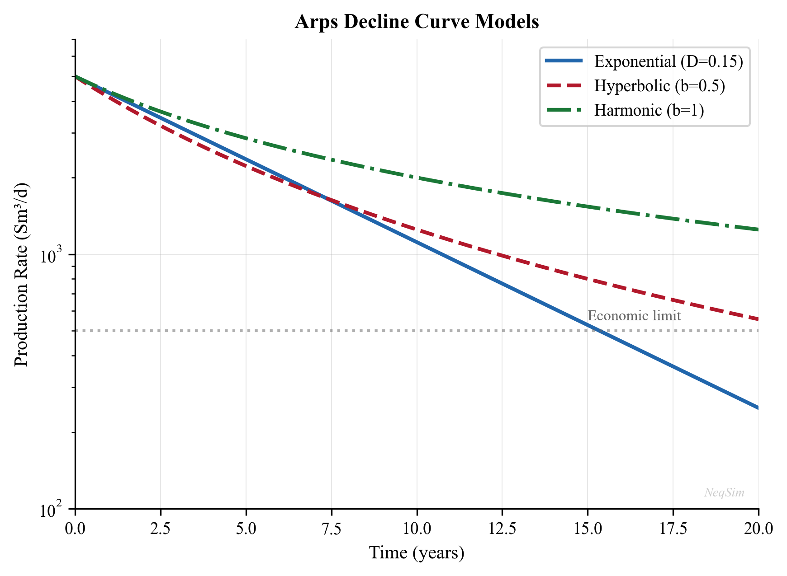
4.10.4 Analytical Drive Models for Integrated Production
Alongside the compositional SimpleReservoir, NeqSim provides lightweight analytical drive models (package neqsim.process.fielddevelopment.integrated) that express reservoir pressure as a function of cumulative production. They share the ReservoirDrive interface and plug directly into the integrated reservoir-to-market model of Chapter 28, where thousands of pressure evaluations over a field life would make full compositional simulation prohibitively expensive:
| Class | Drive Mechanism | Material-Balance Basis |
|---|---|---|
MaterialBalanceGasDrive |
Volumetric gas expansion | $p/Z$ vs cumulative gas |
OilTankDrive |
Solution-gas / depletion oil | Tank material balance |
AquiferDrive |
Water influx support | Aquifer pressure coupling |
Each model couples a WellDeliverabilityCurve (Chapter 5) to a declining reservoir pressure so that the integrated model can march a production profile forward in time:
integ = jneqsim.process.fielddevelopment.integrated
MaterialBalanceGasDrive = integ.MaterialBalanceGasDrive
drive = MaterialBalanceGasDrive(initialPressureBara, gasInPlaceSm3)
# pressure falls as cumulative production rises, following p/Z material balance
These drive objects are supplied to IntegratedProductionModel.addWell(name, drive, deliverabilityCurve) (Chapter 28) and to the ReservoirToMarketOptimizer, giving a closed reservoir-to-export model that runs in milliseconds per timestep.
4.11 Gas Condensate Reservoirs
4.11.1 Retrograde Condensation Effect
Gas condensate reservoirs present a unique challenge: as pressure drops below the dew point, liquid condenses in the reservoir pore space. This condensate is typically immobile (trapped by capillary forces) and reduces the gas relative permeability, creating a "condensate bank" near the wellbore.
The productivity reduction can be severe — 50–80% reduction in gas PI — and is not captured by simple IPR models. Accurate modeling requires compositional simulation with relative permeability effects.
4.11.2 Mitigation Strategies
- Pressure maintenance: Gas injection to keep reservoir pressure above the dew point
- Lean gas cycling: Inject lean gas (methane) to revaporize condensate
- Hydraulic fracturing: Create large-area flow paths that bypass the condensate bank
- Reduced drawdown: Limit well rate to minimize near-wellbore condensation
4.12 Reservoir Uncertainty and Its Impact on Optimization
4.12.1 Key Uncertain Parameters
| Parameter | Typical Uncertainty Range | Impact |
|---|---|---|
| Permeability | Factor of 2–5 | Directly affects PI and rate |
| Net pay | ±20–50% | Directly affects PI |
| OOIP / OGIP | ±30–50% | Determines reserves and field life |
| Skin factor | ±5 skin units | Affects rate, especially early life |
| Aquifer strength | Factor of 2–10 | Determines pressure support |
| Relative permeability | ±30% | Affects water breakthrough timing |
| Bubble/dew point | ±5–10% | Affects phase behavior and recovery |
4.12.2 Probabilistic Reserves
Reserves are classified probabilistically:
- P90 (Proved): 90% probability that actual production will equal or exceed this estimate
- P50 (Probable): 50% probability — the best estimate
- P10 (Possible): 10% probability — the optimistic case
4.12.3 Sensitivity to Reservoir Pressure
As the reservoir depletes, the IPR shifts — the maximum rate decreases and the curve changes shape:
- Early life (high $P_r$): Large rate potential; optimization focuses on facility capacity
- Mid life ($P_r$ near $P_b$): Gas-oil ratio increases; compression becomes a constraint
- Late life (low $P_r$): Rate is reservoir-limited; artificial lift becomes necessary
4.13 Multi-Well and Multi-Reservoir Systems
4.13.1 Commingled Production
When multiple reservoir zones produce into a common wellbore:
$$ q_{\text{total}} = \sum_{j=1}^{N_z} J_j(P_{r,j} - P_{wf}) $$
subject to the constraint that all zones share the same bottomhole pressure $P_{wf}$.
4.13.2 Well Allocation
In a multi-well system with shared facilities, production must be allocated to satisfy:
- Individual well constraints (maximum rate, minimum BHP, maximum GOR, maximum water cut)
- Facility constraints (separator capacity, compressor capacity, water handling capacity)
- Export constraints (pipeline capacity, specification limits)
This allocation problem is the foundation of the short-term production optimization discussed in Chapter 19.
4.14 Summary
Key points from this chapter:
- Darcy's law and the radial flow equation provide the physical basis for well productivity. The productivity index $J$ encapsulates rock properties, fluid properties, and completion quality.
- Well testing (drawdown and buildup analysis, Horner plots, pressure derivatives) provides in-situ measurements of $kh$, skin, and average reservoir pressure.
- IPR curves (linear for undersaturated oil, Vogel for saturated oil, Fetkovich and back-pressure/LIT for gas) define the rate that the reservoir can deliver at each bottomhole pressure. Future IPR curves shift as the reservoir depletes.
- Reservoir drive mechanisms (solution gas, gas cap, water drive, gravity drainage) determine the rate of pressure decline, ultimate recovery, and GOR/water cut evolution.
- Material balance (Havlena-Odeh straight-line method, drive index analysis, water influx models) links cumulative production to pressure decline and provides estimates of original hydrocarbons in place.
- Decline curve analysis (Arps equations) provides a simple but effective method for forecasting production and estimating EUR.
- Reservoir simulation coupling through VFP tables provides the interface between detailed reservoir models and process simulation.
- NODAL analysis provides the framework for integrating reservoir performance with well and facility performance.
- NeqSim models the reservoir through
SimpleReservoir, wellbore throughPipeBeggsAndBrills, and enables integrated reservoir-to-separator modeling.
Exercises
- Exercise 4.1: A vertical well has the following properties: $k = 50$ mD, $h = 20$ m, $r_e = 500$ m, $r_w = 0.108$ m, $S = 2$, $B_o = 1.25$, $\mu_o = 1.5$ cP. Calculate the productivity index in Sm³/d/bar. What is the maximum oil rate if $P_r = 300$ bara?
- Exercise 4.2: Using Vogel's method, construct an IPR curve for a well with $P_r = 250$ bara, $P_b = 180$ bara, and $J = 20$ Sm³/d/bar (above bubble point). Plot $P_{wf}$ vs. $q_o$ from 0 to 250 bara.
- Exercise 4.3: A gas well has the following multi-rate test data:
| $q_g$ (MSm³/d) | $P_{wf}$ (bara) |
|---|---|
| 0.5 | 245 |
| 1.0 | 235 |
| 1.5 | 220 |
| 2.0 | 200 |
If $P_r = 250$ bara, determine the back-pressure equation coefficients $C$ and $n$.
- Exercise 4.4: A volumetric gas reservoir has $P_i = 300$ bara, $T = 100$°C, and OGIP = 50 GSm³. Using NeqSim to calculate $Z$ at each pressure, construct a $P/Z$ vs. $G_p$ plot.
- Exercise 4.5: A well produces 3000 Sm³/d initially with $D_i = 0.0008$/day and $b = 0.5$. Calculate the cumulative production after 5 years and the EUR to an economic limit of 50 Sm³/d.
- Exercise 4.6: Set up a NODAL analysis in NeqSim for a single well flowing into a separator at 40 bara. Model the tubing using
PipeBeggsAndBrills. Find the operating point.
- Exercise 4.7: A pressure buildup test on a well that was flowing at 500 Sm³/d for 100 hours shows a Horner slope of $m = 15$ bar/cycle. If $B_o = 1.3$, $\mu_o = 2.0$ cP, calculate $kh$. If the pressure at 1-hour shut-in is 185 bara and $P_{wf,\text{last}} = 170$ bara, estimate the skin factor.
- Exercise 4.8: For a solution gas drive reservoir with $N = 50 \times 10^6$ Sm³ OOIP, use the Havlena-Odeh method to verify the OOIP given production data. Plot $F/E_o$ vs. cumulative production and check that the intercept matches $N$.
- Exercise 4.9: Build an integrated reservoir-wellbore-separator model in NeqSim. Use
PipeBeggsAndBrillsfor a 3000 m vertical well and 5 km flowline. Compare the wellhead pressure and separator gas rate for tubing sizes of 3.5-inch and 4.5-inch.
- Exercise 4.10 (Advanced): For a system of three wells producing into a common manifold at 30 bara, each with different IPR parameters, use NeqSim to find the individual well rates that maximize total oil production subject to a total gas handling constraint of 2 MSm³/day.
- Vogel, J. V. (1968). Inflow performance relationships for solution-gas drive wells. Journal of Petroleum Technology, 20(1), 83–92.
- Rawlins, E. L., & Schellhardt, M. A. (1935). Backpressure Data on Natural Gas Wells and Their Application to Production Practices. Monograph 7, USBM.
- Arps, J. J. (1945). Analysis of decline curves. Transactions of the AIME, 160(1), 228–247.
- Joshi, S. D. (1988). Augmentation of well productivity with slant and horizontal wells. Journal of Petroleum Technology, 40(6), 729–739.
- Schilthuis, R. J. (1936). Active oil and reservoir energy. Transactions of the AIME, 118(1), 33–52.
- Gilbert, W. E. (1954). Flowing and gas-lift well performance. API Drilling and Production Practice, 126–157.
- Mach, J., Proano, E., & Brown, K. E. (1979). A nodal approach for applying systems analysis to the flowing and artificial lift oil or gas well. Paper SPE 8025.
- Ahmed, T. (2016). Reservoir Engineering Handbook (5th ed.). Gulf Professional Publishing.
- Dake, L. P. (1978). Fundamentals of Reservoir Engineering. Elsevier.
- Economides, M. J., Hill, A. D., Ehlig-Economides, C., & Zhu, D. (2013). Petroleum Production Systems (2nd ed.). Prentice Hall.
- Havlena, D., & Odeh, A. S. (1963). The material balance as an equation of a straight line. Journal of Petroleum Technology, 15(8), 896–900.
- Fetkovich, M. J. (1973). The isochronal testing of oil wells. Paper SPE 4529, 48th Annual Fall Meeting.
- Bourdet, D., Whittle, T. M., Douglas, A. A., & Pirard, Y. M. (1983). A new set of type curves simplifies well test analysis. World Oil, 196(6), 95–106.
- van Everdingen, A. F., & Hurst, W. (1949). The application of the Laplace transformation to flow problems in reservoirs. Transactions of the AIME, 186, 305–324.
- Carter, R. D., & Tracy, G. W. (1960). An improved method for calculating water influx. Transactions of the AIME, 219, 415–417.
Reservoir Engineering and Inflow Performance
Learning Objectives
After reading this chapter, the reader will be able to:
- Apply Darcy's law and the radial flow equation to calculate well productivity
- Construct inflow performance relationships (IPR) for oil wells (Vogel) and gas wells (back-pressure, LIT equations)
- Explain reservoir drive mechanisms and their effect on pressure decline
- Perform material balance calculations for different drive types
- Use decline curve analysis (Arps) to forecast production
- Understand the NODAL analysis framework for integrated well-reservoir-facility analysis
- Use NeqSim's
SimpleReservoirclass for reservoir modeling in production optimization workflows
4.1 Introduction
Reservoir engineering provides the boundary conditions for production optimization. The reservoir determines how much fluid can be produced, at what rate, and for how long. No amount of topside optimization can overcome the fundamental constraints imposed by the reservoir — its pressure, permeability, fluid properties, and remaining reserves.
This chapter covers the reservoir engineering concepts most relevant to production optimization: inflow performance relationships that define what the well can deliver, reservoir pressure decline that governs the production life cycle, and the system analysis framework that connects reservoir performance to the rest of the production chain.
We focus on practical modeling rather than detailed reservoir simulation. For integrated production optimization, the reservoir is typically represented by IPR curves and decline profiles — simplified models that capture the essential behavior without the computational cost of full reservoir simulation.
4.2 Darcy's Law and Radial Flow
4.2.1 Darcy's Law
Darcy's law describes the flow of a single-phase fluid through a porous medium:
$$ q = -\frac{kA}{\mu}\frac{dP}{dx} $$
where:
- $q$ = volumetric flow rate [m³/s]
- $k$ = permeability [m² or Darcy; 1 D = 9.869 × 10$^{-13}$ m²]
- $A$ = cross-sectional area [m²]
- $\mu$ = fluid viscosity [Pa·s]
- $dP/dx$ = pressure gradient [Pa/m]
The negative sign indicates that flow is in the direction of decreasing pressure.
4.2.2 Radial Flow to a Vertical Well
For steady-state radial flow to a vertical well in a homogeneous reservoir, integrating Darcy's law in cylindrical coordinates gives:
$$ q_o = \frac{2\pi k h (P_e - P_{wf})}{B_o \mu_o \left[\ln\left(\frac{r_e}{r_w}\right) + S\right]} $$
where:
- $q_o$ = oil flow rate at surface conditions [m³/s]
- $k$ = reservoir permeability [m²]
- $h$ = net pay thickness [m]
- $P_e$ = reservoir pressure at the drainage boundary [Pa]
- $P_{wf}$ = flowing bottomhole pressure [Pa]
- $B_o$ = oil formation volume factor [-]
- $\mu_o$ = oil viscosity at reservoir conditions [Pa·s]
- $r_e$ = drainage radius [m]
- $r_w$ = wellbore radius [m]
- $S$ = skin factor [-]
For practical field units (bbl/day, mD, ft, psi, cp):
$$ q_o = \frac{0.00708\, k h (P_e - P_{wf})}{B_o \mu_o \left[\ln\left(\frac{r_e}{r_w}\right) - 0.75 + S\right]} $$
4.2.3 The Productivity Index
The productivity index (PI or $J$) linearizes the well inflow for undersaturated oil:
$$ J = \frac{q_o}{P_e - P_{wf}} = \frac{2\pi k h}{B_o \mu_o \left[\ln\left(\frac{r_e}{r_w}\right) + S\right]} $$
The PI has units of m³/s/Pa (or bbl/day/psi in field units). A higher PI means the well produces more for a given drawdown. The PI depends on:
- Rock properties: Permeability $k$ and thickness $h$
- Fluid properties: Viscosity $\mu_o$ and FVF $B_o$ (both pressure-dependent)
- Completion quality: Skin factor $S$ (positive = damaged, negative = stimulated)
- Well geometry: Drainage and wellbore radii
Typical productivity indices:
| Well Type | PI Range (Sm³/d/bar) |
|---|---|
| Low permeability gas well | 100–1,000 |
| Average oil well | 1–50 |
| High productivity oil well | 50–500 |
| Fractured well | 100–2,000 |
4.2.4 Skin Factor
The skin factor $S$ accounts for the additional pressure drop (or reduced pressure drop) near the wellbore due to:
| Cause | Effect on $S$ | Typical Range |
|---|---|---|
| Drilling damage (mud invasion) | Positive (damage) | +1 to +20 |
| Partial penetration | Positive | +1 to +10 |
| Perforation skin | Positive | +1 to +5 |
| Hydraulic fracturing | Negative (stimulated) | -2 to -6 |
| Acid stimulation | Negative | -1 to -3 |
| Gravel pack | Positive or negative | -1 to +5 |
The apparent skin $S$ transforms the wellbore radius to an effective radius:
$$ r_{w,\text{eff}} = r_w e^{-S} $$
A skin of $S = -4$ is equivalent to increasing the effective wellbore radius by a factor of 55 — the effect of a hydraulic fracture.
4.3 Inflow Performance Relationships (IPR)
4.3.1 Linear IPR (Undersaturated Oil)
When the flowing bottomhole pressure $P_{wf}$ remains above the bubble point $P_b$, the oil behaves as a single-phase liquid with approximately constant compressibility, viscosity, and FVF. The IPR is linear:
$$ q_o = J(P_r - P_{wf}) $$
where $P_r$ is the average reservoir pressure and $J$ is the productivity index. The maximum flow rate occurs when $P_{wf} = 0$:
$$ q_{o,\max} = J \cdot P_r $$
This linear relationship is plotted as a straight line on a $P_{wf}$ vs. $q_o$ graph.
4.3.2 Vogel's IPR (Saturated Oil)
When $P_{wf}$ falls below the bubble point, gas evolves in the reservoir near the wellbore, reducing the effective permeability to oil. Vogel (1968) developed an empirical correlation for this non-linear behavior:
$$ \frac{q_o}{q_{o,\max}} = 1 - 0.2\left(\frac{P_{wf}}{P_r}\right) - 0.8\left(\frac{P_{wf}}{P_r}\right)^2 $$
This gives a concave-downward curve on the $P_{wf}$ vs. $q_o$ plot. At $P_{wf} = P_r$, $q_o = 0$; at $P_{wf} = 0$, $q_o = q_{o,\max}$.
For the case where the reservoir pressure is above the bubble point but $P_{wf}$ falls below it, the composite IPR combines the linear region (above $P_b$) with the Vogel region (below $P_b$):
$$ q_o = J(P_r - P_b) + \frac{J P_b}{1.8}\left[1 - 0.2\left(\frac{P_{wf}}{P_b}\right) - 0.8\left(\frac{P_{wf}}{P_b}\right)^2\right] \quad \text{for } P_{wf} < P_b $$
4.3.3 Gas Well IPR: Back-Pressure Equation
For gas wells, the inflow relationship accounts for the pressure-dependent gas properties. The simplified back-pressure equation (Rawlins and Schellhardt, 1935):
$$ q_g = C(P_r^2 - P_{wf}^2)^n $$
where:
- $q_g$ = gas flow rate [Sm³/day]
- $C$ = performance coefficient (determined from well test)
- $n$ = deliverability exponent (0.5 ≤ $n$ ≤ 1.0; $n = 1$ for laminar flow, $n = 0.5$ for fully turbulent)
The coefficient $C$ and exponent $n$ are determined from a multi-rate well test (typically 4 stabilized rates).
4.3.4 Gas Well IPR: Laminar-Inertial-Turbulent (LIT) Equation
The more rigorous LIT equation separates laminar and turbulent contributions:
$$ P_r^2 - P_{wf}^2 = aq_g + bq_g^2 $$
where $a$ represents the laminar (Darcy) flow resistance and $b$ represents the turbulent (non-Darcy) flow resistance. This can also be written using pseudo-pressures $m(P)$ for improved accuracy at high pressures:
$$ m(P_r) - m(P_{wf}) = aq_g + bq_g^2 $$
The pseudo-pressure is defined as:
$$ m(P) = 2\int_{P_0}^{P} \frac{P'}{\mu_g(P') Z(P')} dP' $$
which accounts for the variation of gas viscosity and Z-factor with pressure.
4.3.5 Horizontal Well IPR
For horizontal wells, the Joshi (1988) productivity equation modifies the radial flow equation:
$$ J_h = \frac{2\pi k_h h}{B_o \mu_o \left[\ln\left(\frac{a + \sqrt{a^2 - (L/2)^2}}{L/2}\right) + \frac{h}{L}\ln\left(\frac{h}{2\pi r_w}\right)\right]} $$
where $L$ is the horizontal well length and:
$$ a = \frac{L}{2}\left[0.5 + \sqrt{0.25 + \left(\frac{2r_e}{L}\right)^4}\right]^{0.5} $$
The horizontal well PI can be 2–5 times higher than a vertical well in the same reservoir, depending on the $L/h$ ratio and reservoir anisotropy $k_v/k_h$.
4.4 Reservoir Pressure Decline and Material Balance
4.4.1 Drive Mechanisms
The energy that drives fluid from the reservoir to the wellbore comes from several mechanisms:
| Drive Mechanism | Typical Recovery Factor | Pressure Behavior |
|---|---|---|
| Solution gas drive | 5–30% OOIP | Rapid decline |
| Gas cap drive | 20–40% OOIP | Moderate decline |
| Water drive (natural) | 30–60% OOIP | Near-constant pressure |
| Rock/fluid expansion | 1–5% OOIP | Above bubble point |
| Gravity drainage | 40–70% OOIP | Slow decline |
| Combination | Varies | Depends on dominant mechanism |
4.4.2 Material Balance Equation
The general material balance equation for an oil reservoir (Schilthuis, 1936):
$$ N_p[B_o + (R_p - R_s)B_g] = N\left[(B_o - B_{oi}) + (R_{si} - R_s)B_g + \frac{B_{oi}c_w S_{wi} + c_f}{1-S_{wi}}\Delta P\right] + \frac{m N B_{oi}}{B_{gi}}(B_g - B_{gi}) + W_e - W_p B_w $$
where:
- $N_p$ = cumulative oil production
- $N$ = original oil in place (OOIP)
- $R_p$ = cumulative producing GOR
- $m$ = ratio of gas cap volume to oil zone volume
- $W_e$ = cumulative water influx
- $W_p$ = cumulative water production
- Subscript $i$ = initial conditions
This equation, combined with the PVT properties from Chapter 3, allows estimation of original oil in place and prediction of reservoir performance.
4.4.3 Gas Material Balance (P/Z Plot)
For a volumetric gas reservoir (no water influx), the material balance simplifies to:
$$ \frac{P}{Z} = \frac{P_i}{Z_i}\left(1 - \frac{G_p}{G}\right) $$
where $G_p$ is the cumulative gas production and $G$ is the original gas in place (OGIP). A plot of $P/Z$ vs. $G_p$ is a straight line:
- The y-intercept gives $P_i/Z_i$
- The x-intercept gives $G$ (OGIP)
- The current position gives the remaining reserves
4.5 Decline Curve Analysis
4.5.1 Arps Decline Equations
Arps (1945) defined three types of production decline:
Exponential decline ($b = 0$):
$$ q(t) = q_i \exp(-D_i t) $$
$$ N_p(t) = \frac{q_i - q(t)}{D_i} $$
Hyperbolic decline ($0 < b < 1$):
$$ q(t) = \frac{q_i}{(1 + bD_i t)^{1/b}} $$
$$ N_p(t) = \frac{q_i^b}{D_i(1-b)}\left[q_i^{1-b} - q(t)^{1-b}\right] $$
Harmonic decline ($b = 1$):
$$ q(t) = \frac{q_i}{1 + D_i t} $$
$$ N_p(t) = \frac{q_i}{D_i}\ln\left(\frac{q_i}{q(t)}\right) $$
where:
- $q_i$ = initial production rate
- $D_i$ = initial decline rate [1/time]
- $b$ = decline exponent (0 ≤ $b$ ≤ 1)
- $N_p(t)$ = cumulative production at time $t$
Typical $b$ values by drive mechanism:
| Drive Mechanism | Typical $b$ |
|---|---|
| Solution gas drive | 0.3–0.5 |
| Gas cap drive | 0.3–0.5 |
| Water drive | 0.0–0.3 |
| Gas well (volumetric) | 0.4–0.6 |
4.5.2 Decline Rate
The instantaneous decline rate is:
$$ D = -\frac{1}{q}\frac{dq}{dt} $$
For exponential decline, $D$ is constant. For hyperbolic decline:
$$ D(t) = \frac{D_i}{1 + bD_i t} $$
The effective annual decline rate $d$ relates to the nominal decline rate $D$ by:
$$ d = 1 - e^{-D} $$
4.6 System Analysis: NODAL Analysis
4.6.1 Concept
NODAL analysis (first described by Gilbert, 1954; formalized by Mach et al., 1979) is the framework for analyzing the integrated well-reservoir-facility system. The system is divided at a "node" — typically the bottomhole — and two performance curves are plotted:
- Inflow Performance Relationship (IPR): The rate the reservoir can deliver as a function of bottomhole pressure (from Section 4.3)
- Vertical Flow Performance (VFP): The bottomhole pressure required to lift the fluid to the surface at each rate (from Chapter 5)
The operating point is where the two curves intersect. The inflow and outflow curves must be evaluated at the same node.
4.6.2 Applications of NODAL Analysis
| Application | What Changes |
|---|---|
| Tubing size selection | VFP curve shifts |
| Choke sizing | VFP curve back-pressure increases |
| Artificial lift design | VFP curve lowered |
| Separator pressure optimization | VFP curve back-pressure changes |
| Stimulation evaluation | IPR curve shifts (skin reduction) |
| Water cut effect | Both curves change |
4.6.3 Multi-Well Optimization
When multiple wells produce into a common facility, the individual well operating points are coupled through the shared back-pressure. The total production is:
$$ q_{\text{total}} = \sum_{i=1}^{N_w} q_i(P_{wf,i}) $$
subject to:
- Each well's IPR constraint
- The gathering system pressure drop model
- The facility capacity constraint (separator capacity, compressor capacity)
This optimization problem — maximizing $q_{\text{total}}$ subject to constraints — is the core of production optimization, developed further in Chapter 19.
4.7 NeqSim Implementation: Reservoir Modeling
4.7.1 The SimpleReservoir Class
NeqSim provides the SimpleReservoir class for coupling reservoir performance with process simulation:
from neqsim import jneqsim
# Create reservoir fluid
fluid = jneqsim.thermo.system.SystemSrkEos(273.15 + 100.0, 250.0)
fluid.addComponent("nitrogen", 0.5)
fluid.addComponent("CO2", 2.0)
fluid.addComponent("methane", 65.0)
fluid.addComponent("ethane", 8.0)
fluid.addComponent("propane", 4.0)
fluid.addComponent("i-butane", 1.0)
fluid.addComponent("n-butane", 2.0)
fluid.addComponent("i-pentane", 0.8)
fluid.addComponent("n-pentane", 0.6)
fluid.addComponent("n-hexane", 1.0)
fluid.addComponent("n-heptane", 5.0)
fluid.addComponent("n-octane", 4.0)
fluid.addComponent("n-nonane", 3.0)
fluid.addComponent("n-decane", 2.1)
fluid.addComponent("water", 1.0)
fluid.setMixingRule("classic")
fluid.setMultiPhaseCheck(True)
# Create reservoir
SimpleReservoir = jneqsim.process.equipment.reservoir.SimpleReservoir
reservoir = SimpleReservoir("Main Reservoir")
reservoir.setReservoirFluid(fluid)
reservoir.setGasOilContact(200.0) # OGOC depth in meters
# Add a production well
reservoir.addWell("Producer-1")
4.7.2 Well Stream Setup
Setting up a well stream from the reservoir for process simulation:
from neqsim import jneqsim
# Create reservoir fluid at typical conditions
fluid = jneqsim.thermo.system.SystemSrkEos(273.15 + 95.0, 300.0)
fluid.addComponent("nitrogen", 0.4)
fluid.addComponent("CO2", 1.8)
fluid.addComponent("methane", 68.0)
fluid.addComponent("ethane", 7.5)
fluid.addComponent("propane", 4.2)
fluid.addComponent("n-butane", 2.5)
fluid.addComponent("n-pentane", 1.5)
fluid.addComponent("n-hexane", 1.2)
fluid.addComponent("n-heptane", 3.5)
fluid.addComponent("n-octane", 3.0)
fluid.addComponent("n-nonane", 2.4)
fluid.addComponent("n-decane", 2.0)
fluid.addComponent("water", 2.0)
fluid.setMixingRule("classic")
fluid.setMultiPhaseCheck(True)
# Create well stream at wellhead conditions
Stream = jneqsim.process.equipment.stream.Stream
well_stream = Stream("Well-1 Stream", fluid)
well_stream.setFlowRate(50000.0, "kg/hr") # 50 t/hr
well_stream.setTemperature(75.0, "C") # Wellhead temperature
well_stream.setPressure(70.0, "bara") # Wellhead pressure
well_stream.run()
# Check the well stream properties
well_fluid = well_stream.getFluid()
print(f"Number of phases: {well_fluid.getNumberOfPhases()}")
print(f"Gas rate: {well_stream.getFlowRate('MSm3/day'):.3f} MSm3/day (total)")
print(f"Temperature: {well_stream.getTemperature('C'):.1f} C")
print(f"Pressure: {well_stream.getPressure('bara'):.1f} bara")
4.7.3 IPR Curve Generation with NeqSim
Using NeqSim to generate IPR curves by solving the well-reservoir system at different bottomhole pressures:
from neqsim import jneqsim
# Reservoir parameters
P_reservoir = 250.0 # bara
T_reservoir = 95.0 # C
PI = 15.0 # Sm3/d/bar (productivity index)
P_bubble = 180.0 # bara (bubble point)
# Calculate IPR using composite Vogel method
pressures_bhp = []
rates = []
for i in range(50):
P_wf = 10.0 + i * 4.8 # 10 to 250 bara
pressures_bhp.append(P_wf)
if P_wf >= P_bubble:
# Linear region (above bubble point)
q = PI * (P_reservoir - P_wf)
else:
# Vogel region (below bubble point)
q_at_pb = PI * (P_reservoir - P_bubble)
q_vogel_max = q_at_pb + PI * P_bubble / 1.8
q = q_at_pb + (q_vogel_max - q_at_pb) * (
1.0 - 0.2 * (P_wf / P_bubble) - 0.8 * (P_wf / P_bubble) ** 2
)
rates.append(max(0.0, q))
# Print table
print(f"{'P_wf (bara)':>12} {'q_o (Sm3/d)':>12}")
print("-" * 26)
for p, q in zip(pressures_bhp[::5], rates[::5]):
print(f"{p:12.1f} {q:12.1f}")
4.7.4 Decline Curve Implementation
import math
# Arps decline curve parameters
q_i = 5000.0 # Initial rate, Sm3/d
D_i = 0.001 # Initial decline rate, 1/day (about 30% per year)
b = 0.5 # Hyperbolic exponent
# Forecast for 10 years
time_days = [i * 30 for i in range(121)] # Monthly steps for 10 years
rates = []
cum_production = []
cum = 0.0
for t in time_days:
# Hyperbolic decline
q = q_i / (1.0 + b * D_i * t) ** (1.0 / b)
rates.append(q)
if t > 0:
dt = time_days[1] # Step size
cum += q * dt
cum_production.append(cum)
# Print annual summary
print(f"{'Year':>6} {'Rate (Sm3/d)':>14} {'Cum (MSm3)':>12} {'Annual Decline':>16}")
print("-" * 50)
for yr in range(11):
idx = yr * 12
if idx < len(rates):
annual_decline = (1.0 - rates[idx] / rates[max(0, idx - 12)]) * 100 if yr > 0 else 0.0
print(f"{yr:6d} {rates[idx]:14.0f} {cum_production[idx] / 1e6:12.3f} {annual_decline:15.1f}%")
4.8 Reservoir Uncertainty and Its Impact on Optimization
4.8.1 Key Uncertain Parameters
Reservoir parameters are inherently uncertain, and this uncertainty propagates directly into production forecasts:
| Parameter | Typical Uncertainty Range | Impact |
|---|---|---|
| Permeability | Factor of 2–5 | Directly affects PI and rate |
| Net pay | ±20–50% | Directly affects PI |
| OOIP / OGIP | ±30–50% | Determines reserves and field life |
| Skin factor | ±5 skin units | Affects rate, especially early life |
| Aquifer strength | Factor of 2–10 | Determines pressure support |
| Relative permeability | ±30% | Affects water breakthrough timing |
| Bubble/dew point | ±5–10% | Affects phase behavior and recovery |
4.8.2 Probabilistic Reserves
Reserves are classified probabilistically:
- P90 (Proved): 90% probability that actual production will equal or exceed this estimate (conservative)
- P50 (Probable): 50% probability — the best estimate
- P10 (Possible): 10% probability — the optimistic case
For production optimization, the P50 case is typically used for base-case modeling, while P90 and P10 bound the optimization range.
4.8.3 Sensitivity to Reservoir Pressure
As the reservoir depletes, the IPR shifts — the maximum rate decreases and the curve changes shape. The production optimization model must track this shift over time:
- Early life (high $P_r$): Large rate potential; optimization focuses on facility capacity
- Mid life ($P_r$ near $P_b$): Gas-oil ratio increases; compression becomes a constraint
- Late life (low $P_r$): Rate is reservoir-limited; artificial lift becomes necessary
4.9 Gas Condensate Reservoirs
4.9.1 Retrograde Condensation Effect
Gas condensate reservoirs present a unique challenge: as pressure drops below the dew point, liquid condenses in the reservoir pore space. This condensate is typically immobile (trapped by capillary forces) and reduces the gas relative permeability, creating a "condensate bank" near the wellbore.
The productivity reduction can be severe — 50–80% reduction in gas PI — and is not captured by simple IPR models. Accurate modeling requires compositional simulation with relative permeability effects.
4.9.2 Mitigation Strategies
- Pressure maintenance: Gas injection to keep reservoir pressure above the dew point
- Lean gas cycling: Inject lean gas (methane) to revaporize condensate
- Hydraulic fracturing: Create large-area flow paths that bypass the condensate bank
- Reduced drawdown: Limit well rate to minimize near-wellbore condensation
4.10 Multi-Well and Multi-Reservoir Systems
4.10.1 Commingled Production
When multiple reservoir zones produce into a common wellbore, the total rate is:
$$ q_{\text{total}} = \sum_{j=1}^{N_z} J_j(P_{r,j} - P_{wf}) $$
subject to the constraint that all zones share the same bottomhole pressure $P_{wf}$.
4.10.2 Well Allocation
In a multi-well system with shared facilities, production must be allocated to satisfy:
- Individual well constraints (maximum rate, minimum BHP, maximum GOR, maximum water cut)
- Facility constraints (separator capacity, compressor capacity, water handling capacity)
- Export constraints (pipeline capacity, specification limits)
This allocation problem is the foundation of the short-term production optimization discussed in Chapter 19.
4.11 Summary
Key points from this chapter:
- Darcy's law and the radial flow equation provide the physical basis for well productivity. The productivity index $J$ encapsulates rock properties, fluid properties, and completion quality.
- IPR curves (linear for undersaturated oil, Vogel for saturated oil, back-pressure/LIT for gas) define the rate that the reservoir can deliver at each bottomhole pressure.
- Reservoir drive mechanisms (solution gas, gas cap, water drive) determine the rate of pressure decline and ultimate recovery.
- Material balance links cumulative production to pressure decline and provides estimates of original hydrocarbons in place.
- Decline curve analysis (Arps equations) provides a simple but effective method for forecasting production when detailed reservoir simulation is unavailable.
- NODAL analysis provides the framework for integrating reservoir performance with well and facility performance — the operating point is where the IPR and VFP curves intersect.
- NeqSim models the reservoir through
SimpleReservoirand well streams, providing the inflow boundary conditions for process simulation.
Exercises
- Exercise 4.1: A vertical well has the following properties: $k = 50$ mD, $h = 20$ m, $r_e = 500$ m, $r_w = 0.108$ m, $S = 2$, $B_o = 1.25$, $\mu_o = 1.5$ cP. Calculate the productivity index in Sm³/d/bar. What is the maximum oil rate if $P_r = 300$ bara?
- Exercise 4.2: Using Vogel's method, construct an IPR curve for a well with $P_r = 250$ bara, $P_b = 180$ bara, and $J = 20$ Sm³/d/bar (above bubble point). Plot $P_{wf}$ vs. $q_o$ from 0 to 250 bara.
- Exercise 4.3: A gas well has the following multi-rate test data:
| $q_g$ (MSm³/d) | $P_{wf}$ (bara) |
|---|---|
| 0.5 | 245 |
| 1.0 | 235 |
| 1.5 | 220 |
| 2.0 | 200 |
If $P_r = 250$ bara, determine the back-pressure equation coefficients $C$ and $n$. What is the absolute open flow (AOF)?
- Exercise 4.4: A volumetric gas reservoir has initial conditions $P_i = 300$ bara, $T = 100$°C, and OGIP = 50 GSm³. Using NeqSim to calculate $Z$ at each pressure, construct a $P/Z$ vs. $G_p$ plot. At what cumulative production does the reservoir pressure drop to 100 bara?
- Exercise 4.5: A well produces 3000 Sm³/d oil initially and declines hyperbolically with $D_i = 0.0008$/day and $b = 0.5$. Calculate the cumulative production after 5 years. What is the rate at that time? How long until the rate drops to the economic limit of 50 Sm³/d?
- Exercise 4.6: Set up a NODAL analysis in NeqSim for a single well flowing into a separator at 40 bara. The well has a Vogel IPR with $q_{o,\max} = 1500$ Sm³/d and $P_r = 200$ bara. The tubing performance (VFP) can be modeled using
PipeBeggsAndBrills. Find the operating point.
- Exercise 4.7 (Advanced): For a system of three wells producing into a common manifold at 30 bara, each with different IPR parameters, use NeqSim to find the individual well rates that maximize total oil production subject to a total gas handling constraint of 2 MSm³/day.
- Vogel, J. V. (1968). Inflow performance relationships for solution-gas drive wells. Journal of Petroleum Technology, 20(1), 83–92.
- Rawlins, E. L., & Schellhardt, M. A. (1935). Backpressure Data on Natural Gas Wells and Their Application to Production Practices. Monograph 7, USBM.
- Arps, J. J. (1945). Analysis of decline curves. Transactions of the AIME, 160(1), 228–247.
- Joshi, S. D. (1988). Augmentation of well productivity with slant and horizontal wells. Journal of Petroleum Technology, 40(6), 729–739.
- Schilthuis, R. J. (1936). Active oil and reservoir energy. Transactions of the AIME, 118(1), 33–52.
- Gilbert, W. E. (1954). Flowing and gas-lift well performance. API Drilling and Production Practice, 126–157.
- Mach, J., Proano, E., & Brown, K. E. (1979). A nodal approach for applying systems analysis to the flowing and artificial lift oil or gas well. Paper SPE 8025.
- Ahmed, T. (2016). Reservoir Engineering Handbook (5th ed.). Gulf Professional Publishing.
- Dake, L. P. (1978). Fundamentals of Reservoir Engineering. Elsevier.
- Economides, M. J., Hill, A. D., Ehlig-Economides, C., & Zhu, D. (2013). Petroleum Production Systems (2nd ed.). Prentice Hall.
Figures
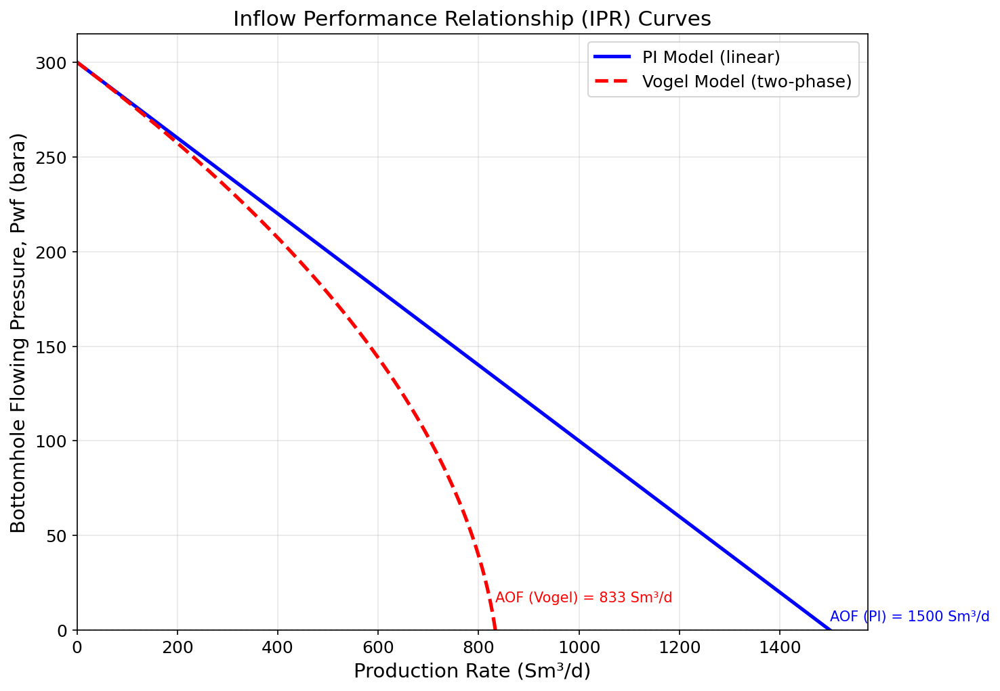
Figure 4.1: Fig01 Ipr Curves
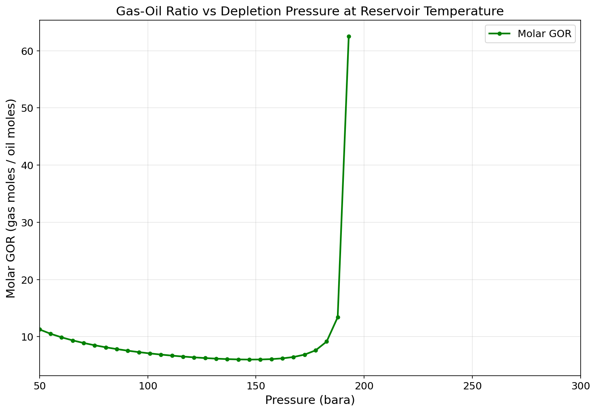
Figure 4.2: Fig02 Gor Vs Pressure
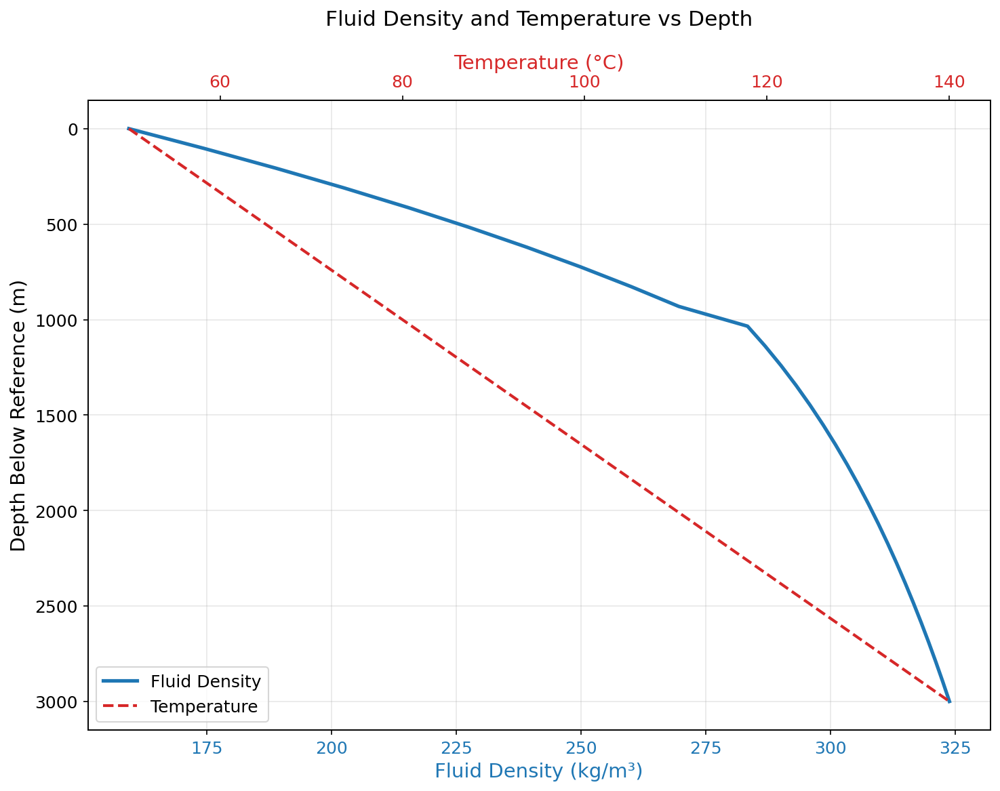
Figure 4.3: Fig03 Density Vs Depth
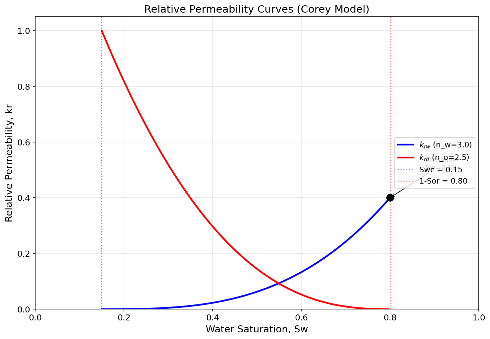
Figure 4.4: Fig04 Rel Perm Curves
Well Performance and Tubing Design
Learning Objectives
After reading this chapter, the reader will be able to:
- Calculate pressure traverses in vertical and deviated wellbores using multiphase flow correlations
- Describe and apply the Beggs and Brill multiphase flow correlation for well tubing performance
- Analyze wellhead choke performance under critical and subcritical flow conditions
- Design continuous gas lift systems including valve spacing and injection rate optimization
- Understand the fundamentals of ESP and rod pump artificial lift methods
- Interpret well test data (buildup, drawdown) and extract reservoir parameters
- Generate VFP tables using NeqSim for integration with reservoir simulators and production optimization models
- Select tubing sizes based on rate, pressure, and flow regime analysis
5.1 Introduction
The well is the conduit between the reservoir and the surface facility. Its performance — specifically, the pressure loss from bottomhole to wellhead — determines how much of the reservoir's delivery potential can actually be captured at the surface. A well with excessive tubing friction, inadequate tubing size, or severe liquid loading may deliver only a fraction of the rate that the IPR would allow.
This chapter develops the theory and NeqSim tools for well performance analysis. We begin with multiphase flow in tubing — the core calculation that determines the tubing pressure profile — then cover choke performance, artificial lift (with emphasis on gas lift), well testing, and VFP table generation.
The link to Chapter 4 is direct: the well's VFP curve intersects the IPR curve to give the operating point (NODAL analysis). The link to Chapter 6 is equally direct: the wellhead pressure must overcome the flowline, riser, and topside back-pressure.
5.2 Multiphase Flow in Wellbores
5.2.1 The Challenge of Multiphase Flow
Flow in production wells is almost always multiphase — oil, gas, and often water flow simultaneously through the tubing. The simultaneous presence of multiple phases creates several complexities not found in single-phase flow:
- Slippage: Gas travels faster than liquid due to buoyancy, creating a difference between the in-situ gas volume fraction and the flowing gas fraction (holdup)
- Flow patterns: The phases arrange themselves in different patterns (bubble, slug, churn, annular) depending on rates and properties
- Changing properties: As pressure decreases up the well, gas evolves from solution, changing the flow rates, densities, and viscosities continuously
- Hydrostatic head: The liquid holdup determines the effective mixture density, which controls the gravity pressure drop — the dominant pressure loss in most wells
5.2.2 Pressure Gradient Components
The total pressure gradient in vertical multiphase flow has three components:
$$ \frac{dP}{dz} = \underbrace{\rho_m g \sin\theta}_{\text{gravity}} + \underbrace{\frac{f \rho_m v_m^2}{2d}}_{\text{friction}} + \underbrace{\rho_m v_m \frac{dv_m}{dz}}_{\text{acceleration}} $$
where:
- $\rho_m$ = mixture density [kg/m³]
- $g$ = gravitational acceleration [m/s²]
- $\theta$ = pipe inclination from horizontal [degrees]
- $f$ = friction factor [-]
- $v_m$ = mixture velocity [m/s]
- $d$ = pipe internal diameter [m]
In a typical production well:
| Component | Fraction of Total $\Delta P$ |
|---|---|
| Gravity (hydrostatic) | 70–90% |
| Friction | 10–25% |
| Acceleration | 0–5% |
The dominance of the gravity term means that the liquid holdup — which determines $\rho_m$ — is the most important parameter to predict accurately.
5.2.3 Flow Pattern Maps
The flow pattern in vertical upward flow depends on the superficial velocities of gas and liquid:
| Flow Pattern | Description | Occurrence |
|---|---|---|
| Bubble flow | Discrete gas bubbles in liquid | Low gas rates |
| Slug flow | Alternating liquid slugs and gas pockets (Taylor bubbles) | Moderate gas rates |
| Churn flow | Chaotic oscillating flow | Transition region |
| Annular flow | Gas core with liquid film on wall | High gas rates |
The Taitel-Dukler (1980) and Barnea (1987) flow pattern maps provide mechanistic criteria for predicting the transitions between patterns.
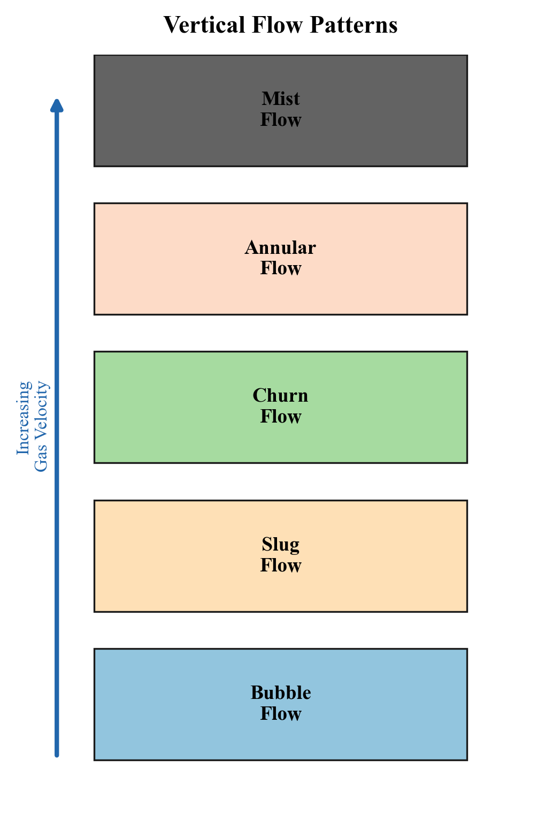
5.2.4 Liquid Holdup
The liquid holdup $H_L$ is the fraction of the pipe cross-section occupied by liquid:
$$ H_L = \frac{A_L}{A} = 1 - H_g $$
The mixture density is then:
$$ \rho_m = \rho_L H_L + \rho_g (1 - H_L) $$
The holdup differs from the input liquid fraction (no-slip holdup) because of gas-liquid slippage:
$$ \lambda_L = \frac{q_L}{q_L + q_g} \neq H_L $$
In vertical upward flow, $H_L > \lambda_L$ because gas rises faster than liquid.
5.3 The Beggs and Brill Correlation
5.3.1 Overview
The Beggs and Brill (1973) correlation is one of the most widely used methods for multiphase pressure drop in pipes. It was developed from laboratory data in pipes of 1-inch and 1.5-inch diameter at various inclinations, and it handles all pipe angles from horizontal to vertical.
The correlation follows these steps:
- Calculate the Froude number and input liquid fraction
- Determine the flow pattern (segregated, intermittent, distributed)
- Calculate the liquid holdup using the flow pattern-specific correlation
- Correct the holdup for pipe inclination
- Calculate the friction factor with a multiphase correction
- Sum the gravity and friction pressure gradients
5.3.2 Flow Pattern Determination
The Beggs and Brill flow pattern boundaries depend on two parameters:
$$ N_{Fr} = \frac{v_m^2}{gd} \qquad \text{(Froude number)} $$
$$ \lambda_L = \frac{v_{sL}}{v_m} \qquad \text{(input liquid fraction)} $$
where $v_{sL}$ is the superficial liquid velocity, $v_{sg}$ is the superficial gas velocity, and $v_m = v_{sL} + v_{sg}$.
The transition boundaries $L_1$, $L_2$, $L_3$, and $L_4$ are calculated as:
$$ L_1 = 316 \lambda_L^{0.302} $$
$$ L_2 = 0.0009252 \lambda_L^{-2.4684} $$
$$ L_3 = 0.10 \lambda_L^{-1.4516} $$
$$ L_4 = 0.5 \lambda_L^{-6.738} $$
5.3.3 Holdup Calculation
For each flow pattern, the horizontal holdup $H_L(0)$ is calculated from:
$$ H_L(0) = \frac{a \lambda_L^b}{N_{Fr}^c} $$
where the constants $a$, $b$, $c$ depend on the flow pattern:
| Flow Pattern | $a$ | $b$ | $c$ |
|---|---|---|---|
| Segregated | 0.980 | 0.4846 | 0.0868 |
| Intermittent | 0.845 | 0.5351 | 0.0173 |
| Distributed | 1.065 | 0.5824 | 0.0609 |
The inclination correction factor $\psi$ adjusts for non-horizontal pipe:
$$ H_L(\theta) = H_L(0) \cdot \psi $$
$$ \psi = 1 + C\left[\sin(1.8\theta) - \frac{1}{3}\sin^3(1.8\theta)\right] $$
where $C$ depends on the flow pattern, liquid velocity number, and Froude number.
5.3.4 Friction Factor
The two-phase friction factor uses the Moody friction factor corrected for multiphase effects:
$$ f_{tp} = f_n \cdot e^s $$
where $f_n$ is the no-slip friction factor (from the Moody chart or Colebrook equation) and $s$ is an empirical correction.
5.4 NeqSim Implementation: Well Tubing Performance
5.4.1 PipeBeggsAndBrills for Well Flow
NeqSim implements the Beggs and Brill correlation in the PipeBeggsAndBrills class, which can model both horizontal pipelines and vertical/deviated wells:
from neqsim import jneqsim
# Create reservoir fluid
fluid = jneqsim.thermo.system.SystemSrkEos(273.15 + 90.0, 200.0)
fluid.addComponent("nitrogen", 0.5)
fluid.addComponent("CO2", 2.0)
fluid.addComponent("methane", 70.0)
fluid.addComponent("ethane", 7.5)
fluid.addComponent("propane", 4.0)
fluid.addComponent("i-butane", 1.0)
fluid.addComponent("n-butane", 2.0)
fluid.addComponent("i-pentane", 0.5)
fluid.addComponent("n-pentane", 0.4)
fluid.addComponent("n-hexane", 0.6)
fluid.addComponent("n-heptane", 3.5)
fluid.addComponent("n-octane", 3.0)
fluid.addComponent("n-nonane", 2.5)
fluid.addComponent("n-decane", 2.0)
fluid.setMixingRule("classic")
# Set up well stream at bottomhole conditions
Stream = jneqsim.process.equipment.stream.Stream
bh_stream = Stream("Bottomhole Stream", fluid)
bh_stream.setFlowRate(80000.0, "kg/hr")
bh_stream.setTemperature(90.0, "C")
bh_stream.setPressure(200.0, "bara")
# Create vertical well tubing (Beggs and Brill)
PipeBeggsAndBrills = jneqsim.process.equipment.pipeline.PipeBeggsAndBrills
well_tubing = PipeBeggsAndBrills("Production Tubing", bh_stream)
well_tubing.setPipeWallRoughness(2.5e-5) # m (smooth tubing)
well_tubing.setLength(3000.0) # m (measured depth)
well_tubing.setElevation(-3000.0) # m (negative = upward flow)
well_tubing.setDiameter(0.1016) # m (4-inch tubing)
well_tubing.setNumberOfIncrements(50) # Calculation segments
# Build and run process
ProcessSystem = jneqsim.process.processmodel.ProcessSystem
process = ProcessSystem()
process.add(bh_stream)
process.add(well_tubing)
process.run()
# Extract results
outlet = well_tubing.getOutletStream()
print(f"Bottomhole pressure: {bh_stream.getPressure('bara'):.1f} bara")
print(f"Wellhead pressure: {outlet.getPressure('bara'):.1f} bara")
print(f"Pressure drop: {bh_stream.getPressure('bara') - outlet.getPressure('bara'):.1f} bar")
print(f"Bottomhole temp: {bh_stream.getTemperature('C'):.1f} C")
print(f"Wellhead temp: {outlet.getTemperature('C'):.1f} C")
5.4.2 Pressure Traverse Calculation
To generate a pressure traverse (pressure vs. depth profile), the well can be run at multiple conditions or the internal profile can be examined:
from neqsim import jneqsim
# Create fluid
fluid = jneqsim.thermo.system.SystemSrkEos(273.15 + 90.0, 250.0)
fluid.addComponent("methane", 75.0)
fluid.addComponent("ethane", 8.0)
fluid.addComponent("propane", 4.0)
fluid.addComponent("n-butane", 2.5)
fluid.addComponent("n-pentane", 1.0)
fluid.addComponent("n-heptane", 5.0)
fluid.addComponent("n-octane", 3.0)
fluid.addComponent("n-decane", 1.5)
fluid.setMixingRule("classic")
# Generate VFP data for different flow rates
Stream = jneqsim.process.equipment.stream.Stream
PipeBeggsAndBrills = jneqsim.process.equipment.pipeline.PipeBeggsAndBrills
ProcessSystem = jneqsim.process.processmodel.ProcessSystem
flow_rates = [20000.0, 40000.0, 60000.0, 80000.0, 100000.0] # kg/hr
print(f"{'Flow Rate (kg/hr)':>18} {'BHP (bara)':>12} {'WHP (bara)':>12} {'dP (bar)':>10}")
print("-" * 54)
for rate in flow_rates:
stream = Stream("BH Stream", fluid.clone())
stream.setFlowRate(rate, "kg/hr")
stream.setTemperature(90.0, "C")
stream.setPressure(250.0, "bara")
tubing = PipeBeggsAndBrills("Tubing", stream)
tubing.setPipeWallRoughness(2.5e-5)
tubing.setLength(2500.0)
tubing.setElevation(-2500.0)
tubing.setDiameter(0.1016)
tubing.setNumberOfIncrements(40)
process = ProcessSystem()
process.add(stream)
process.add(tubing)
process.run()
whp = tubing.getOutletStream().getPressure("bara")
dp = 250.0 - whp
print(f"{rate:18.0f} {250.0:12.1f} {whp:12.1f} {dp:10.1f}")
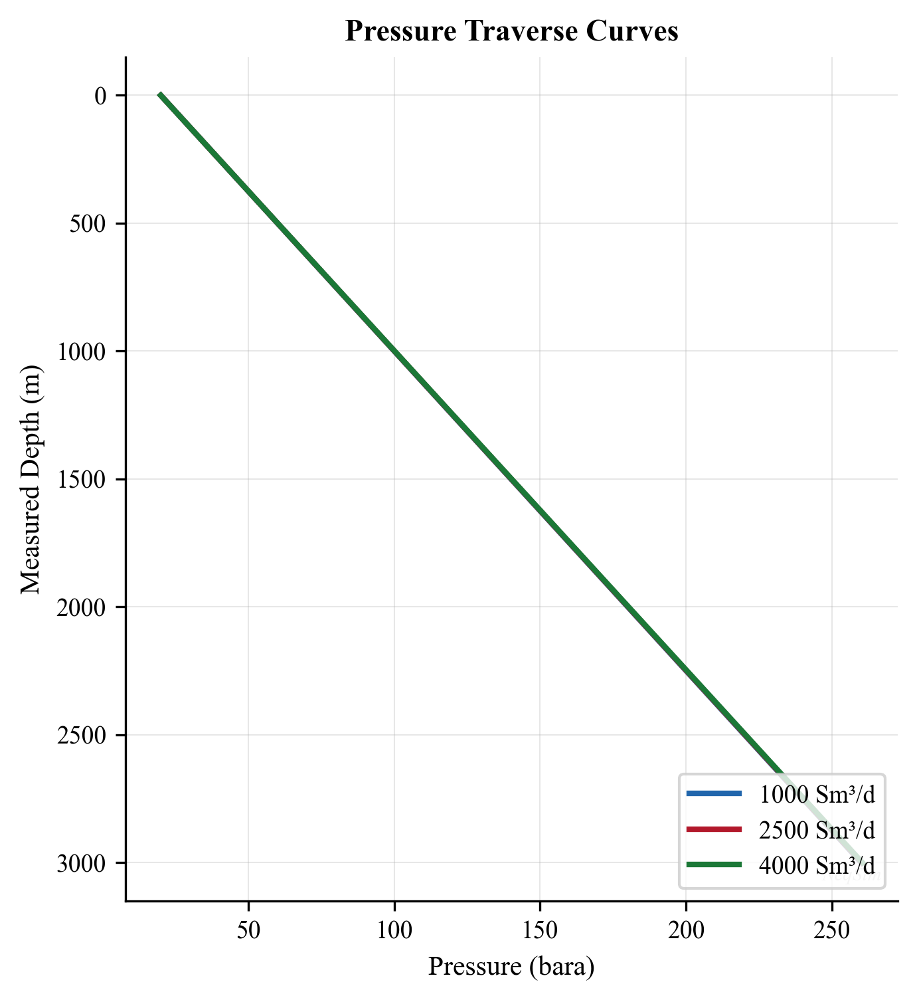
5.4.3 Deviated Well Modeling
For deviated wells, the elevation is less than the measured depth. The relationship is:
$$ \text{TVD} = \sum_i \Delta L_i \cos(\alpha_i) $$
where $\Delta L_i$ is the measured depth increment and $\alpha_i$ is the local inclination from vertical. In NeqSim:
# Deviated well: 3500 m MD but only 2800 m TVD
well_tubing = PipeBeggsAndBrills("Deviated Tubing", bh_stream)
well_tubing.setLength(3500.0) # Measured depth
well_tubing.setElevation(-2800.0) # True vertical depth (negative = upward)
well_tubing.setDiameter(0.1016)
well_tubing.setPipeWallRoughness(2.5e-5)
well_tubing.setNumberOfIncrements(50)
5.5 Wellhead Choke Performance
5.5.1 Purpose of Wellhead Chokes
Wellhead chokes serve multiple purposes:
- Rate control: Regulate the production rate to meet allocation targets
- Back-pressure management: Protect downstream equipment from high pressures
- Sand control: Limit drawdown to prevent sand production
- Slugging prevention: Maintain stable flow by keeping downstream pressure stable
- Critical flow: Prevent downstream pressure fluctuations from propagating to the reservoir
5.5.2 Critical vs. Subcritical Flow
When the pressure ratio across a choke reaches a critical value, the flow velocity at the choke throat reaches the local speed of sound, and the flow becomes critical (choked). Under critical flow:
- The flow rate depends only on upstream conditions (pressure, temperature, composition)
- Downstream pressure fluctuations cannot propagate upstream
- The critical pressure ratio is approximately:
$$ \frac{P_2}{P_1} = \left(\frac{2}{\gamma + 1}\right)^{\gamma/(\gamma - 1)} $$
For natural gas with $\gamma \approx 1.3$, the critical pressure ratio is approximately 0.55.
5.5.3 Choke Flow Equations
For single-phase gas, the flow through a choke follows:
$$ q_g = C_d A \sqrt{\frac{2\gamma}{\gamma - 1} \frac{P_1}{\rho_1}\left[\left(\frac{P_2}{P_1}\right)^{2/\gamma} - \left(\frac{P_2}{P_1}\right)^{(\gamma+1)/\gamma}\right]} $$
where $C_d$ is the discharge coefficient (typically 0.75–0.90 depending on choke type).
For multiphase flow through chokes, the Sachdeva or Perkins correlations are commonly used. NeqSim provides choke modeling through the valve classes:
from neqsim import jneqsim
# Choke valve modeling
fluid = jneqsim.thermo.system.SystemSrkEos(273.15 + 70.0, 80.0)
fluid.addComponent("methane", 80.0)
fluid.addComponent("ethane", 8.0)
fluid.addComponent("propane", 4.0)
fluid.addComponent("n-butane", 2.0)
fluid.addComponent("n-heptane", 3.0)
fluid.addComponent("water", 3.0)
fluid.setMixingRule("classic")
fluid.setMultiPhaseCheck(True)
Stream = jneqsim.process.equipment.stream.Stream
ThrottlingValve = jneqsim.process.equipment.valve.ThrottlingValve
ProcessSystem = jneqsim.process.processmodel.ProcessSystem
# Well stream upstream of choke
well_stream = Stream("Wellhead Stream", fluid)
well_stream.setFlowRate(50000.0, "kg/hr")
well_stream.setTemperature(70.0, "C")
well_stream.setPressure(80.0, "bara")
# Wellhead choke
choke = ThrottlingValve("WH Choke", well_stream)
choke.setOutletPressure(40.0, "bara")
# Build and run
process = ProcessSystem()
process.add(well_stream)
process.add(choke)
process.run()
# Results
outlet = choke.getOutletStream()
print(f"Upstream pressure: {well_stream.getPressure('bara'):.1f} bara")
print(f"Downstream pressure: {outlet.getPressure('bara'):.1f} bara")
print(f"Pressure ratio: {outlet.getPressure('bara') / well_stream.getPressure('bara'):.3f}")
print(f"Downstream temperature: {outlet.getTemperature('C'):.1f} C")
print(f"Temperature drop (JT): {well_stream.getTemperature('C') - outlet.getTemperature('C'):.1f} C")
5.5.4 Joule-Thomson Cooling
The pressure reduction across the choke is isenthalpic (constant enthalpy). For gases, this results in cooling due to the Joule-Thomson effect:
$$ \Delta T = \mu_{JT} \cdot \Delta P $$
where $\mu_{JT}$ is the Joule-Thomson coefficient [°C/bar]. For natural gas at typical wellhead conditions, $\mu_{JT}$ is approximately 0.3–0.5 °C/bar. This cooling is important for:
- Hydrate risk: The temperature downstream of the choke may fall below the hydrate formation temperature
- Wax deposition: Cooling may promote wax formation
- Phase behavior: Additional gas may condense from the cooled fluid
5.6 Gas Lift
5.6.1 Gas Lift Fundamentals
Gas lift is the most common artificial lift method in offshore production. It works by injecting gas into the tubing at depth to reduce the hydrostatic head of the fluid column, thereby lowering the flowing bottomhole pressure and increasing the production rate.
The injected gas reduces the mixture density in the tubing:
$$ \rho_m = \rho_L H_L + \rho_g (1 - H_L) $$
As the gas injection rate increases, $H_L$ decreases, reducing $\rho_m$ and the hydrostatic pressure drop. However, the friction pressure drop increases with the total gas rate. There is an optimum gas injection rate that minimizes the total wellhead pressure required (or maximizes the well production rate).
5.6.2 Gas Lift Performance Curve
The gas lift performance curve shows the well's production rate as a function of gas injection rate. It has a characteristic shape:
- No gas lift: The natural flow rate (may be zero if the well cannot flow naturally)
- Increasing injection: Rate increases as hydrostatic head is reduced
- Optimum injection: Maximum production rate — further injection increases friction more than it reduces hydrostatic pressure
- Over-injection: Rate decreases due to excessive friction (and compression costs increase)
The optimum injection rate is typically determined by:
$$ \frac{\partial q_{\text{oil}}}{\partial q_{\text{inj}}} = \frac{C_{\text{gas}}}{C_{\text{oil}}} $$
where $C_{\text{gas}}$ is the cost of injection gas and $C_{\text{oil}}$ is the value of incremental oil. This economic optimum is always less than the technical maximum rate.
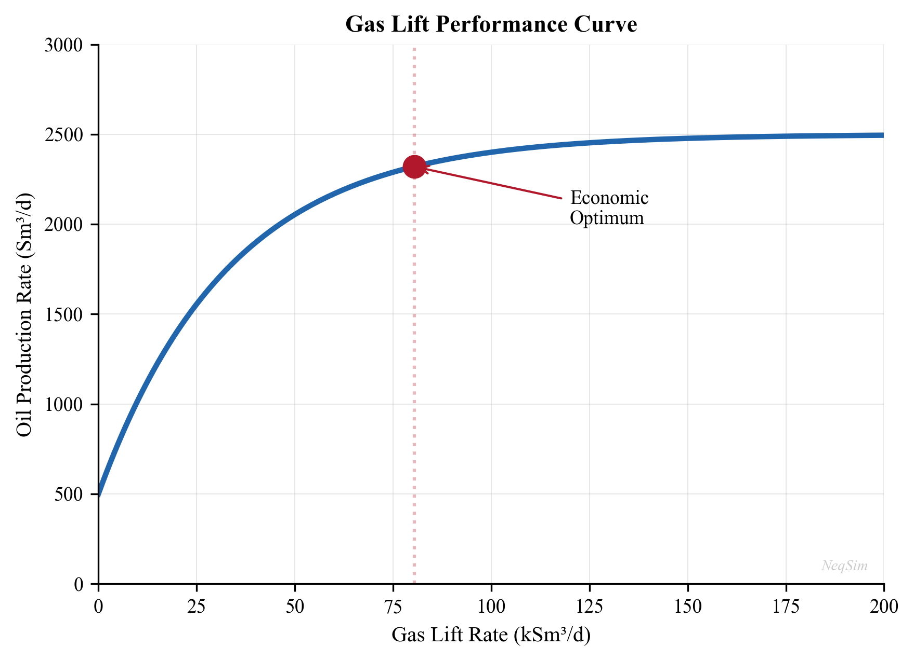
5.6.3 Gas Lift Valve Spacing
Gas lift valves are installed at intervals along the tubing string. Their spacing determines the:
- Unloading sequence: Valves are opened sequentially from top to bottom during startup to displace the kill fluid
- Operating depth: The deepest valve (operating valve) is the point where gas enters the tubing during normal production
- Injection pressure: Higher injection depth requires higher surface injection pressure
The spacing calculation uses the available injection pressure and the pressure gradient of the gas lift gas and the production fluid. A typical spacing procedure:
- Plot the static fluid gradient (tubing filled with kill fluid)
- Plot the injection gas gradient from the surface
- The first valve is placed where the gas gradient intersects the fluid gradient minus a margin
- Each subsequent valve is placed based on the operating envelope and a pressure drop margin (typically 20–35 kPa per valve)
Table 5.1 shows typical gas lift design parameters:
| Parameter | Typical Range |
|---|---|
| Surface injection pressure | 80–180 bara |
| Number of valves | 4–8 |
| Valve spacing | 200–600 m |
| Gas injection rate per well | 20,000–100,000 Sm³/d |
| Gas-liquid ratio increase | 50–200% above natural |
| Operating valve depth | 70–90% of well TVD |
5.6.4 Gas Lift Modeling in NeqSim
NeqSim models gas lift by mixing the lift gas with the production stream at the injection point:
from neqsim import jneqsim
# Production fluid (low pressure, needs gas lift)
prod_fluid = jneqsim.thermo.system.SystemSrkEos(273.15 + 80.0, 120.0)
prod_fluid.addComponent("nitrogen", 0.3)
prod_fluid.addComponent("CO2", 1.5)
prod_fluid.addComponent("methane", 50.0)
prod_fluid.addComponent("ethane", 6.0)
prod_fluid.addComponent("propane", 4.0)
prod_fluid.addComponent("n-butane", 3.0)
prod_fluid.addComponent("n-pentane", 2.0)
prod_fluid.addComponent("n-hexane", 2.5)
prod_fluid.addComponent("n-heptane", 5.0)
prod_fluid.addComponent("n-octane", 5.0)
prod_fluid.addComponent("n-nonane", 4.0)
prod_fluid.addComponent("n-decane", 4.7)
prod_fluid.addComponent("water", 12.0)
prod_fluid.setMixingRule("classic")
prod_fluid.setMultiPhaseCheck(True)
# Gas lift gas (export gas recycled for lift)
lift_gas_fluid = jneqsim.thermo.system.SystemSrkEos(273.15 + 40.0, 120.0)
lift_gas_fluid.addComponent("nitrogen", 1.0)
lift_gas_fluid.addComponent("CO2", 2.0)
lift_gas_fluid.addComponent("methane", 90.0)
lift_gas_fluid.addComponent("ethane", 5.0)
lift_gas_fluid.addComponent("propane", 2.0)
lift_gas_fluid.setMixingRule("classic")
Stream = jneqsim.process.equipment.stream.Stream
Mixer = jneqsim.process.equipment.mixer.Mixer
PipeBeggsAndBrills = jneqsim.process.equipment.pipeline.PipeBeggsAndBrills
ProcessSystem = jneqsim.process.processmodel.ProcessSystem
# Production stream at gas lift injection point (downhole)
prod_stream = Stream("Production Stream", prod_fluid)
prod_stream.setFlowRate(60000.0, "kg/hr")
prod_stream.setTemperature(80.0, "C")
prod_stream.setPressure(120.0, "bara")
# Gas lift injection stream
lift_stream = Stream("Gas Lift", lift_gas_fluid)
lift_stream.setFlowRate(5000.0, "kg/hr") # ~50,000 Sm3/d
lift_stream.setTemperature(50.0, "C")
lift_stream.setPressure(120.0, "bara")
# Mix at injection point
mixer = Mixer("GL Injection Point")
mixer.addStream(prod_stream)
mixer.addStream(lift_stream)
# Tubing above injection point
tubing = PipeBeggsAndBrills("Upper Tubing", mixer.getOutletStream())
tubing.setPipeWallRoughness(2.5e-5)
tubing.setLength(2000.0)
tubing.setElevation(-2000.0)
tubing.setDiameter(0.1016)
tubing.setNumberOfIncrements(40)
# Build and run
process = ProcessSystem()
process.add(prod_stream)
process.add(lift_stream)
process.add(mixer)
process.add(tubing)
process.run()
# Results
whp = tubing.getOutletStream().getPressure("bara")
wht = tubing.getOutletStream().getTemperature("C")
print(f"Wellhead pressure: {whp:.1f} bara")
print(f"Wellhead temperature: {wht:.1f} C")
print(f"Total flow rate: {tubing.getOutletStream().getFlowRate('kg/hr'):.0f} kg/hr")
5.6.5 Gas Lift Optimization
The gas lift optimization problem involves allocating a limited gas supply among multiple wells to maximize total oil production:
$$ \max \sum_{i=1}^{N_w} q_{o,i}(q_{\text{inj},i}) $$
subject to:
$$ \sum_{i=1}^{N_w} q_{\text{inj},i} \leq Q_{\text{available}} $$
This is solved by equalizing the marginal oil gain per unit of injected gas across all wells:
$$ \frac{\partial q_{o,1}}{\partial q_{\text{inj},1}} = \frac{\partial q_{o,2}}{\partial q_{\text{inj},2}} = \ldots = \frac{\partial q_{o,N_w}}{\partial q_{\text{inj},N_w}} $$
This equal-slope criterion is a classic optimization result that ensures no gas can be reallocated from one well to another to increase total production.
5.7 Electric Submersible Pumps (ESP)
5.7.1 ESP Fundamentals
An ESP is a multistage centrifugal pump installed downhole, powered by an electric motor connected to the surface by an armored cable. Key characteristics:
| Parameter | Typical Range |
|---|---|
| Rate capacity | 50–80,000 bbl/d |
| Head per stage | 3–15 m |
| Number of stages | 20–500 |
| Motor power | 30–1500 kW |
| Operating temperature | up to 175°C |
| Free gas tolerance | up to 30% (with gas handlers) |
| Run life | 1–5 years |
5.7.2 ESP Performance
The ESP pump performance is described by three curves at constant speed:
- Head-capacity (H-Q): Head developed vs. flow rate — decreasing curve
- Efficiency (η-Q): Pump efficiency vs. flow rate — parabolic, with peak at best efficiency point (BEP)
- Power (P-Q): Power consumption vs. flow rate — generally increasing
The ESP is selected to operate near its BEP for maximum efficiency and minimum wear.
5.7.3 ESP Sizing
The required number of stages is:
$$ N_{\text{stages}} = \frac{\Delta P_{\text{required}}}{\rho_L g \cdot H_{\text{per stage}}} $$
where $\Delta P_{\text{required}}$ is the total dynamic head including:
- Friction loss in tubing
- Hydrostatic head from pump depth to wellhead
- Wellhead pressure requirement
- Minus the flowing bottomhole pressure (from IPR)
5.7.4 ESP Considerations for Production Optimization
- ESPs are essentially fixed-rate devices — changing the rate requires a variable speed drive (VSD)
- Gas slugging can cause ESP shutdowns (gas lock)
- Power consumption is a significant operating cost (especially offshore)
- Workover to replace a failed ESP is expensive — run life prediction is critical
5.8 Rod Pump (Sucker Rod Pump)
5.8.1 Fundamentals
The sucker rod pump is the most common artificial lift method for onshore oil wells. It consists of a surface pumping unit (beam pump), a string of sucker rods, and a downhole positive displacement pump.
Key characteristics:
| Parameter | Typical Range |
|---|---|
| Rate capacity | 5–5,000 bbl/d |
| Depth limit | up to 4,000 m |
| Power | 5–100 kW |
| GOR tolerance | Limited (gas interference) |
| Primary application | Onshore, low to moderate rate |
5.8.2 Rod Pump Performance
The theoretical pump displacement is:
$$ q_{\text{theory}} = \frac{\pi}{4} d_p^2 \cdot S_p \cdot N \cdot 1440 $$
where:
- $d_p$ = plunger diameter [m]
- $S_p$ = effective plunger stroke length [m]
- $N$ = pumping speed [strokes/min]
- 1440 converts min to day
The actual rate is less than theoretical due to gas interference, fluid slippage, and rod stretch:
$$ q_{\text{actual}} = \eta_{\text{vol}} \cdot q_{\text{theory}} $$
where $\eta_{\text{vol}}$ is the volumetric efficiency (typically 50–90%).
5.8.3 NeqSim Implementation: SuckerRodPump
NeqSim models the beam pump directly with the SuckerRodPump equipment class (package neqsim.process.equipment.pump). The geometry and operating speed are set with fluent setters and the class returns both theoretical and effective displacement plus the polished-rod load used for surface-unit sizing:
SuckerRodPump = jneqsim.process.equipment.pump.SuckerRodPump
rodpump = SuckerRodPump("rod pump", wellStream)
rodpump.setPlungerDiameter(0.0381) # 1.5 in plunger [m]
rodpump.setStrokeLength(1.68) # effective stroke [m]
rodpump.setStrokesPerMinute(8.0)
rodpump.setVolumetricEfficiency(0.80)
rodpump.setPumpDepth(1800.0) # [m]
rodpump.setFluidDensity(850.0) # [kg/m3]
rodpump.setRodWeightPerLength(35.0) # [N/m]
rodpump.setDischargePressure(15.0) # [bara]
rodpump.run()
print("Theoretical:", rodpump.getTheoreticalDisplacement("Sm3/day"))
print("Actual:", rodpump.getActualDisplacement("Sm3/day"))
print("Polished rod load:", rodpump.getPolishedRodLoad(), "N")
getTheoreticalDisplacement evaluates the swept-volume formula above, getActualDisplacement applies the volumetric efficiency, and getPolishedRodLoad combines fluid load and rod weight for the peak surface load.
5.8.4 Hydraulic Jet Pumps in NeqSim
For deviated or high-temperature wells where rod pumps and ESPs are unsuitable, the hydraulic JetPump class (package neqsim.process.equipment.pump) models a nozzle–throat–diffuser ejector driven by a high-pressure power fluid. It is characterised by the nozzle-to-throat area ratio and the power-fluid pressure:
JetPump = jneqsim.process.equipment.pump.JetPump
jet = JetPump("jet pump", producedStream)
jet.setAreaRatio(0.30) # nozzle area / throat area
jet.setPowerFluidPressure(250.0) # [bara]
jet.setOperatingFlowRatio(0.8) # produced / power-fluid flow
jet.setPowerFluidDensity(1000.0) # [kg/m3]
jet.run()
print("Head ratio:", jet.getHeadRatio())
print("Discharge pressure:", jet.getDischargePressure(), "bara")
print("Efficiency:", jet.getEfficiency())
print("Produced rate:", jet.getProducedRate("Sm3/day"))
The dimensionless getHeadRatio() (also available pointwise via headRatioAt(M)) and getEfficiency() describe the classic jet-pump performance envelope, while getDischargePressure() and getProducedRate() give the operating point for the surrounding network.
5.9 Well Testing
5.9.1 Pressure Drawdown Test
A drawdown test measures the pressure response when a well is opened at a constant rate after being shut in. The semi-log analysis for radial flow gives:
$$ P_{wf} = P_i - \frac{162.6 q B \mu}{kh}\left[\log t + \log\frac{k}{\phi \mu c_t r_w^2} - 3.23 + 0.87S\right] $$
A plot of $P_{wf}$ vs. $\log t$ gives a straight line with slope:
$$ m = \frac{162.6 q B \mu}{kh} $$
from which $kh$ (permeability-thickness product) is determined.
5.9.2 Pressure Buildup Test (Horner Analysis)
A buildup test measures the pressure recovery after shutting in a producing well. The Horner analysis plots $P_{ws}$ vs. $\log[(t_p + \Delta t)/\Delta t]$:
$$ P_{ws} = P_i - \frac{162.6 q B \mu}{kh} \log\frac{t_p + \Delta t}{\Delta t} $$
where $t_p$ is the producing time before shut-in and $\Delta t$ is the shut-in time. The straight line portion gives:
- Slope $m$: Yields $kh$ and hence permeability
- Intercept: Yields reservoir pressure $P^*$ (extrapolated to infinite shut-in time)
- Skin factor: From the pressure at 1 hour on the straight line:
$$ S = 1.151\left[\frac{P_{1hr} - P_{wf}}{m} - \log\frac{k}{\phi \mu c_t r_w^2} + 3.23\right] $$
5.9.3 Drill Stem Test (DST)
A DST is performed during drilling to evaluate the productivity of a formation. It consists of:
- Opening the well for a flow period
- Shutting in for a buildup period
- Opening again for a second flow period
- Final shut-in and buildup
The multiple flow and shut-in periods provide redundant data for reservoir characterization and fluid sampling.
5.9.4 Pressure Derivative Analysis
The pressure derivative method, introduced by Bourdet et al. (1983), is the primary diagnostic tool for modern well test interpretation. Rather than relying on identifying straight lines on semi-log plots — which can be ambiguous — the pressure derivative reveals flow regimes through characteristic slope patterns on a log-log diagnostic plot.
The pressure derivative is defined as:
$$ \Delta P' = \frac{d(\Delta P)}{d(\ln \Delta t)} = \Delta t \frac{d(\Delta P)}{d(\Delta t)} $$
On a log-log plot of $\Delta P$ and $\Delta P'$ versus $\Delta t$, various flow regimes appear as characteristic signatures:
| Flow Regime | Pressure Change $\Delta P$ | Derivative $\Delta P'$ |
|---|---|---|
| Wellbore storage | Unit slope (45°) | Unit slope (45°) |
| Radial flow (infinite acting) | Logarithmic increase | Horizontal stabilization |
| Linear flow (fracture) | Half slope (1/2) | Half slope (1/2) |
| Bilinear flow (finite-conductivity fracture) | Quarter slope (1/4) | Quarter slope (1/4) |
| Spherical/hemispherical flow | — | Negative half slope (-1/2) |
| Closed boundary (depletion) | Unit slope (late time) | Unit slope (late time) |
| Constant pressure boundary | Flattening | Derivative drops to zero |
| Sealing fault | Derivative doubles | Step increase |
The diagnostic workflow is:
- Plot $\Delta P$ and $\Delta P'$ on a log-log scale
- Identify flow regimes from the derivative signature
- Select the appropriate analysis model (radial, fractured, dual-porosity, bounded)
- Perform the corresponding straight-line or type-curve analysis
- Verify the interpretation with a simulation match
The radial flow period — identified by a horizontal derivative — is the key segment from which permeability is extracted. The stabilized derivative level $m'$ relates to transmissibility:
$$ kh = \frac{70.6 \, q \, B \, \mu}{m'} $$
where $m'$ is the stabilized derivative value (in field units with pressure in psi and rate in STB/d).
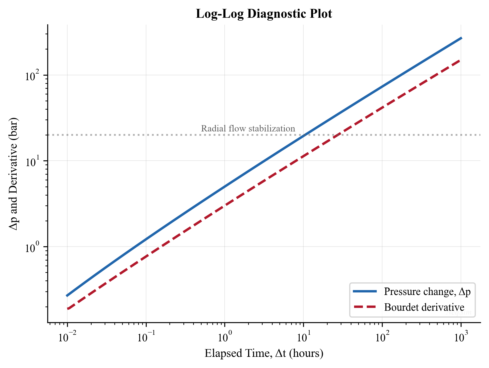
5.9.5 Wellbore Storage and Skin Effects
Wellbore storage occurs because the wellbore itself acts as a fluid container. When the well is shut in at surface, flow from the formation continues because the fluid in the wellbore compresses (or expands) and the liquid level adjusts. This masks the early-time reservoir response.
The wellbore storage coefficient $C$ depends on the dominant storage mechanism:
Compressibility-dominated storage (wells filled with single-phase fluid):
$$ C = V_w \, c_w $$
where $V_w$ is the wellbore volume [bbl] and $c_w$ is the wellbore fluid compressibility [psi$^{-1}$].
Liquid-level change (wells with a gas-liquid interface):
$$ C = \frac{144 \, A_{wb}}{5.615 \, \rho_L} $$
where $A_{wb}$ is the wellbore cross-sectional area [ft²] and $\rho_L$ is the liquid density [lb/ft³]. This mechanism gives a much larger storage coefficient and longer storage duration.
During the wellbore storage period, pressure change is linear in time:
$$ \Delta P = \frac{qB}{24C} \, \Delta t $$
On the log-log diagnostic plot, both $\Delta P$ and $\Delta P'$ follow a unit-slope line during storage. The end of the storage period occurs at approximately:
$$ \Delta t_{end} \approx \frac{(60 + 3.5S) \, C}{kh / \mu} $$
where $S$ is the skin factor. Large skin values (damaged wells) or large storage coefficients significantly extend the storage period, potentially masking the radial flow regime entirely in short tests.
The skin factor $S$ quantifies the additional pressure drop in the near-wellbore region compared to the ideal case. Positive skin indicates damage or flow restriction; negative skin indicates stimulation (e.g., fracturing). Typical values:
| Condition | Skin Factor $S$ |
|---|---|
| Heavily damaged | +10 to +50 |
| Mildly damaged | +2 to +10 |
| Undamaged (open hole) | 0 |
| Acidized | -1 to -3 |
| Hydraulically fractured | -3 to -7 |
The additional pressure drop due to skin is:
$$ \Delta P_{skin} = \frac{141.2 \, q \, B \, \mu}{kh} \cdot S $$
This pressure drop acts as a fixed "tax" on the well's deliverability and directly reduces the well's IPR. Reducing skin through stimulation can have a dramatic effect on production rate.
5.9.6 Fitting Deliverability from Test Data in NeqSim
Once a multi-rate or multi-point test is available, NeqSim converts the raw rate/pressure pairs into a usable inflow model with WellTestMatcher (package neqsim.process.fielddevelopment.integrated). The matcher fits either a productivity index or a Vogel inflow and returns a WellDeliverabilityCurve that can be evaluated at any flowing pressure:
integ = jneqsim.process.fielddevelopment.integrated
WellTestMatcher = integ.WellTestMatcher
matcher = WellTestMatcher()
matcher.addTestPoint(1200.0, 180.0) # rate [Sm3/day], flowing pressure [bara]
matcher.addTestPoint(2100.0, 150.0)
matcher.addTestPoint(2800.0, 120.0)
match = matcher.fitVogel() # or matcher.fitProductivityIndex()
print("Reservoir pressure:", match.getReservoirPressure(), "bara")
print("RMS error:", match.getRmsError())
curve = match.getCurve() # WellDeliverabilityCurve
print("AOFP:", curve.getAbsoluteOpenFlowPotential(), "Sm3/day")
print("Rate at 100 bara:", curve.rateAt(100.0), "Sm3/day")
A WellDeliverabilityCurve can also be built directly from tabulated points (WellDeliverabilityCurve(pressureBara[], rateSm3PerDay[])) or analytically with WellDeliverabilityCurve.fromVogel(aofpSm3PerDay, shutInPressureBara). The curve exposes rateAt(pBara), slopeAt(pBara), getShutInPressure(), and getAbsoluteOpenFlowPotential(), and is the inflow object consumed by the integrated production model of Chapter 28.
5.10 VFP Table Generation
5.10.1 What Are VFP Tables?
Vertical Flow Performance (VFP) tables are multidimensional lookup tables that describe the relationship between well flow rate and the pressure at a reference depth (typically the wellhead or bottomhole) as a function of:
- Flow rate
- Tubing head pressure (or bottomhole pressure)
- Water cut
- Gas-oil ratio (or gas-liquid ratio)
- Artificial lift parameter (gas lift injection rate, ESP speed)
VFP tables are used by reservoir simulators to model well performance without running a full multiphase flow calculation at every timestep.
5.10.2 VFP Table Structure
A typical VFP table has the following dimensions:
| Dimension | Typical Values |
|---|---|
| Flow rate | 5–20 values spanning the rate range |
| Tubing head pressure | 3–8 values |
| Water cut | 0%, 20%, 40%, 60%, 80% |
| GOR | 3–5 values |
| Gas lift rate | 0, 20k, 40k, 60k, 80k, 100k Sm³/d |
The total number of table entries can be large: 15 × 5 × 5 × 4 × 6 = 9,000 pressure calculations.
5.10.3 VFP Generation with NeqSim
from neqsim import jneqsim
import json
# Define fluid
fluid = jneqsim.thermo.system.SystemSrkEos(273.15 + 90.0, 250.0)
fluid.addComponent("nitrogen", 0.5)
fluid.addComponent("CO2", 2.0)
fluid.addComponent("methane", 70.0)
fluid.addComponent("ethane", 7.0)
fluid.addComponent("propane", 4.0)
fluid.addComponent("n-butane", 2.5)
fluid.addComponent("n-pentane", 1.5)
fluid.addComponent("n-hexane", 1.0)
fluid.addComponent("n-heptane", 4.0)
fluid.addComponent("n-octane", 3.0)
fluid.addComponent("n-decane", 2.5)
fluid.addComponent("water", 2.0)
fluid.setMixingRule("classic")
fluid.setMultiPhaseCheck(True)
# VFP parameters
well_depth = 2500.0 # m TVD
tubing_id = 0.1016 # m (4-inch)
roughness = 2.5e-5 # m
flow_rates = [10000, 20000, 40000, 60000, 80000, 100000] # kg/hr
whp_values = [20.0, 30.0, 40.0, 50.0] # bara
Stream = jneqsim.process.equipment.stream.Stream
PipeBeggsAndBrills = jneqsim.process.equipment.pipeline.PipeBeggsAndBrills
ProcessSystem = jneqsim.process.processmodel.ProcessSystem
vfp_table = []
for whp in whp_values:
for rate in flow_rates:
# Set up well from BHP to WHP
stream = Stream("BH", fluid.clone())
stream.setFlowRate(rate, "kg/hr")
stream.setTemperature(90.0, "C")
stream.setPressure(300.0, "bara") # Start high, will iterate
tubing = PipeBeggsAndBrills("Tubing", stream)
tubing.setPipeWallRoughness(roughness)
tubing.setLength(well_depth)
tubing.setElevation(-well_depth)
tubing.setDiameter(tubing_id)
tubing.setNumberOfIncrements(40)
process = ProcessSystem()
process.add(stream)
process.add(tubing)
process.run()
calculated_whp = tubing.getOutletStream().getPressure("bara")
bhp = stream.getPressure("bara")
vfp_table.append({
"flow_rate_kg_hr": rate,
"whp_target_bara": whp,
"bhp_bara": bhp,
"whp_calculated_bara": calculated_whp,
})
# Print VFP table
print(f"{'Rate (kg/hr)':>14} {'WHP calc (bara)':>16} {'BHP (bara)':>12}")
print("-" * 44)
for entry in vfp_table[:12]: # First 12 entries
print(f"{entry['flow_rate_kg_hr']:14.0f} "
f"{entry['whp_calculated_bara']:16.1f} "
f"{entry['bhp_bara']:12.1f}")
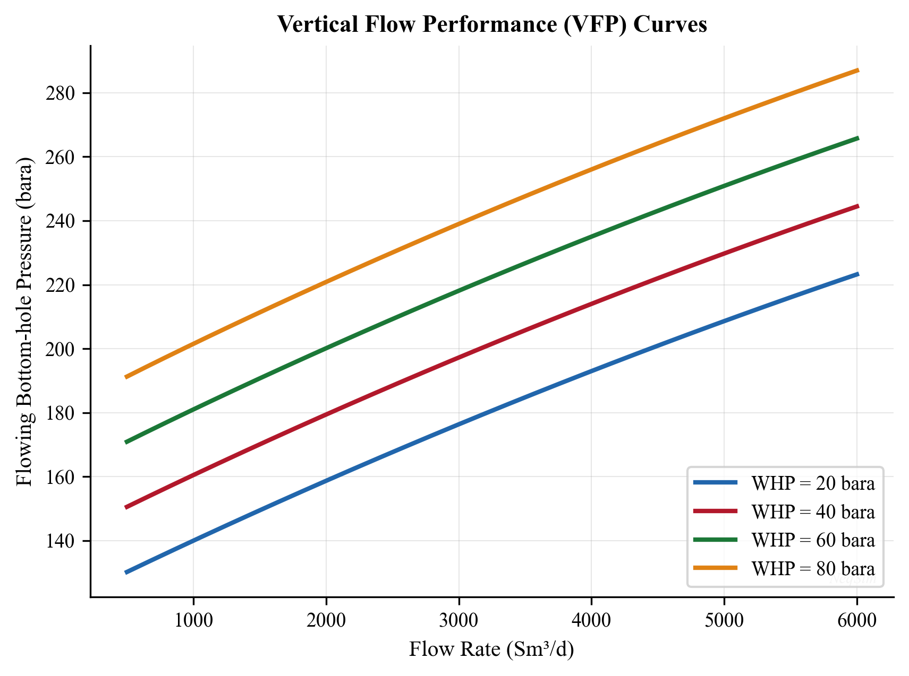
5.10.4 VFP Tables in Reservoir Simulators
Reservoir simulators (Eclipse, INTERSECT, tNavigator, CMG) use VFP tables as the well model — at each timestep, the simulator looks up the required bottomhole pressure for the current well rate and conditions rather than running a full multiphase flow calculation. This is computationally efficient because:
- A VFP table takes nanoseconds to interpolate, while a Beggs and Brill calculation takes milliseconds
- A field model may have hundreds of wells simulated over thousands of timesteps
- The VFP table encodes the full wellbore hydraulics including tubing geometry, deviation, and artificial lift
The parameters that must be varied to build a complete VFP table depend on the well type:
| Parameter | Oil Producer | Gas Producer | Gas Lift Well | ESP Well |
|---|---|---|---|---|
| Flow rate | Oil rate (STB/d) | Gas rate (Mscf/d) | Oil rate | Oil rate |
| THP | Yes | Yes | Yes | Yes |
| Water cut | Yes (0–95%) | Optional | Yes | Yes |
| GOR | Yes | N/A | Yes | Optional |
| Artificial lift | N/A | N/A | Gas injection rate | Pump frequency |
For a typical oil producer, a well-constructed VFP table might have:
- 10–15 flow rates spanning from near-zero to maximum rate
- 5–8 tubing head pressures covering the operating range
- 5–6 water cut values (0%, 20%, 40%, 60%, 80%, 95%)
- 4–5 GOR values around the expected range
This gives up to 15 × 7 × 6 × 5 = 3,150 entries per table — each requiring a full multiphase flow calculation.
5.10.5 VFP Table Quality and Interpolation
The quality of VFP tables directly affects the accuracy of reservoir simulation results. Key quality considerations include:
Parameter spacing: Table entries should be spaced to capture the nonlinear behavior of multiphase flow. Finer spacing is needed where the VFP curves have high curvature (at low rates for oil wells, near the transition between liquid-loaded and stable flow for gas wells).
Interpolation method: Most reservoir simulators use multi-dimensional linear interpolation in the VFP table. Because multiphase pressure drop is nonlinear with respect to rate, linear interpolation can introduce errors if the rate spacing is too coarse. Some simulators support logarithmic interpolation in rate, which is more accurate.
Extrapolation hazards: If the simulator requests a BHP at conditions outside the VFP table range, it must extrapolate — which can produce physically unreasonable results. Common problems include:
- Rate exceeding the maximum table entry → BHP extrapolated to unrealistically low values
- Water cut exceeding the maximum table entry → incorrect BHP, especially at high water cuts where behavior changes rapidly
- GOR below the minimum → BHP may be overestimated (dead oil assumption)
Table consistency: The VFP table must be monotonic — BHP must increase with rate at constant THP. Non-monotonic tables indicate the calculation encountered convergence problems or the rate range extends into the liquid-loading region.
Updating VFP tables: As reservoir pressure declines, the fluid composition at the wellbore changes (lower GOR, higher water cut). VFP tables should be regenerated periodically — typically every few years of simulation time — or the table dimensions should cover the full expected range.
5.11 Tubing Size Selection
5.11.1 The Tubing Size Tradeoff
Tubing size selection involves a fundamental tradeoff:
- Large tubing: Lower friction but higher hydrostatic head at low rates (liquid loading risk); also higher capital cost
- Small tubing: Higher friction but lower liquid loading risk at low rates; lower cost
The optimal tubing size depends on the expected production profile:
| Tubing OD (inches) | ID (inches) | Typical Application |
|---|---|---|
| 2-3/8 | 1.995 | Gas wells, low-rate oil wells |
| 2-7/8 | 2.441 | Standard oil wells |
| 3-1/2 | 2.992 | High-rate oil wells |
| 4-1/2 | 3.958 | Very high-rate wells, gas lift |
| 5-1/2 | 4.892 | HPHT wells, dual completion |
5.11.2 Liquid Loading and Turner Critical Velocity
Liquid loading is one of the most significant operational problems in gas well production. It occurs when the gas velocity in the tubing falls below the minimum velocity required to continuously transport liquid (water or condensate) droplets to surface. Turner et al. (1969) developed the critical velocity correlation by modeling the balance between aerodynamic drag and gravity on liquid droplets:
$$ v_{cr} = 1.593 \frac{[\sigma(\rho_l - \rho_g)]^{0.25}}{\rho_g^{0.5}} $$
where:
- $v_{cr}$ is the critical (minimum) gas velocity [m/s]
- $\sigma$ is the liquid-gas surface tension [N/m]
- $\rho_l$ is the liquid density [kg/m³]
- $\rho_g$ is the gas density [kg/m³]
For water in natural gas at typical conditions ($\sigma \approx 0.06$ N/m, $\rho_l \approx 1000$ kg/m³), the Turner velocity is approximately 5–8 m/s depending on pressure.
The corresponding critical gas flow rate for a given tubing size is:
$$ q_{cr} = v_{cr} \cdot \frac{\pi d^2}{4} $$
If the production rate drops below this critical rate, the well will begin to load up. The symptoms of liquid loading include:
- Erratic wellhead pressure and flow rate (heading)
- Increasing casing-tubing pressure differential
- Declining production rate
- Intermittent flow (well produces in slugs)
- Eventually, the well dies (stops flowing)
The implication for tubing size selection is clear: smaller tubing maintains higher velocities at lower rates, delaying the onset of liquid loading. However, smaller tubing creates higher friction at peak rates. The designer must consider the full production life:
| Production Phase | Rate | Preferred Tubing |
|---|---|---|
| Early life (high rate) | High | Larger tubing (lower friction) |
| Mid life | Declining | Compromise size |
| Late life (low rate) | Low | Smaller tubing (avoid loading) |
For wells that will experience a wide range of rates, velocity strings (smaller tubing installed inside existing tubing) or plunger lift can extend the well's flowing life.
A useful rule of thumb: select the tubing size such that the expected minimum flowing rate is 20–30% above the Turner critical rate for that tubing diameter.
5.11.3 Tubing Size Analysis with NeqSim
from neqsim import jneqsim
# Compare 3.5-inch vs 4.5-inch tubing for the same well
fluid = jneqsim.thermo.system.SystemSrkEos(273.15 + 90.0, 200.0)
fluid.addComponent("methane", 70.0)
fluid.addComponent("ethane", 8.0)
fluid.addComponent("propane", 4.0)
fluid.addComponent("n-butane", 2.0)
fluid.addComponent("n-heptane", 8.0)
fluid.addComponent("n-decane", 5.0)
fluid.addComponent("water", 3.0)
fluid.setMixingRule("classic")
fluid.setMultiPhaseCheck(True)
Stream = jneqsim.process.equipment.stream.Stream
PipeBeggsAndBrills = jneqsim.process.equipment.pipeline.PipeBeggsAndBrills
ProcessSystem = jneqsim.process.processmodel.ProcessSystem
tubing_sizes = {
"3.5-inch (ID=0.076m)": 0.0760,
"4.5-inch (ID=0.102m)": 0.1016,
}
flow_rate = 60000.0 # kg/hr
print(f"{'Tubing Size':>25} {'WHP (bara)':>12} {'dP (bar)':>10}")
print("-" * 50)
for name, diameter in tubing_sizes.items():
stream = Stream("BH", fluid.clone())
stream.setFlowRate(flow_rate, "kg/hr")
stream.setTemperature(90.0, "C")
stream.setPressure(200.0, "bara")
tubing = PipeBeggsAndBrills("Tubing", stream)
tubing.setPipeWallRoughness(2.5e-5)
tubing.setLength(2500.0)
tubing.setElevation(-2500.0)
tubing.setDiameter(diameter)
tubing.setNumberOfIncrements(40)
process = ProcessSystem()
process.add(stream)
process.add(tubing)
process.run()
whp = tubing.getOutletStream().getPressure("bara")
dp = 200.0 - whp
print(f"{name:>25} {whp:12.1f} {dp:10.1f}")
5.12 Nodal Analysis
5.12.1 Concept
Nodal analysis is the systematic method of determining a well's operating point by decomposing the production system into inflow and outflow components at a chosen solution node — typically the bottomhole. The operating point is the intersection of the IPR curve (inflow from reservoir to node) and the VFP curve (outflow from node to surface).
At the solution node (bottomhole), two pressure relationships must be satisfied simultaneously:
Inflow (IPR): The relationship between flowing bottomhole pressure $P_{wf}$ and rate $q$, determined by reservoir deliverability (Vogel, Darcy, or composite IPR from Chapter 4).
Outflow (VFP): The bottomhole pressure required to lift the fluid to surface at rate $q$, given the tubing geometry, wellhead pressure, and fluid properties (calculated using the Beggs and Brill correlation from Section 5.3).
The operating point is where:
$$ P_{wf,\text{IPR}}(q) = P_{wf,\text{VFP}}(q) $$
5.12.2 Sensitivity Analysis
Nodal analysis is most powerful as a sensitivity tool — changing one variable at a time to quantify its effect on the operating point:
- Tubing size: Larger tubing shifts the VFP curve down (lower required BHP), increasing rate — but only if friction dominates. At low rates, larger tubing may shift the curve up due to liquid holdup.
- Wellhead pressure: Lower THP shifts the VFP curve down, directly increasing rate. This shows the benefit of first-stage separator pressure optimization.
- Water cut: Higher water cut steepens the VFP curve (heavier fluid column) and shifts the IPR curve down (lower PI), reducing rate significantly.
- Skin factor: Higher skin shifts the IPR curve to the left (lower rate for same drawdown). Stimulation shifts it right.
- Gas lift injection: Shifts the VFP curve down by reducing mixture density, increasing rate until the friction penalty dominates.
5.12.3 Multiple Operating Points
In some cases, particularly for high-GOR oil wells or gas-lifted wells, the IPR and VFP curves may intersect at two points. The lower-rate intersection is unstable — any perturbation that reduces the rate will cause further rate decline (liquid loading). The upper-rate intersection is stable. If the well is started at a rate below the unstable point, it will die.
This has practical implications for well startup: the well may need to be kicked off (e.g., with nitrogen or by briefly increasing gas lift) to pass through the unstable region and reach the stable operating point.
5.13 Completion Effects on Well Performance
5.13.1 Skin Factor Decomposition
The total skin factor measured from well tests is a composite of several independent components:
$$ S_{total} = S_d + S_{pp} + S_{\theta} + S_{perf} + S_c $$
where:
- $S_d$ = Mechanical (damage) skin: Caused by drilling fluid invasion, fines migration, scale, or asphaltene deposition near the wellbore. Typically 0 to +30.
- $S_{pp}$ = Partial penetration skin: When the perforated interval is less than the full reservoir thickness, flow convergence toward the open interval creates additional pressure drop. Can be +5 to +50 for highly partial completions.
- $S_{\theta}$ = Deviation skin: Deviated wellbores expose more reservoir area, which is a negative skin contribution. For high-angle wells, $S_{\theta}$ can be -2 to -5.
- $S_{perf}$ = Perforation skin: Depends on perforation density (shots/ft), penetration depth, phasing angle, and crushed zone. Can range from -1 (ideal perforations) to +20 (poor perforations in damaged zone).
- $S_c$ = Completion skin: Additional pressure drop from screens, gravel packs, or other completion hardware.
Understanding the decomposition is critical for optimization — there is no value in stimulating a well if the skin is dominated by partial penetration (which requires deepening the completion or adding perforations).
5.13.2 Gravel Pack and Frac-Pack Completions
In unconsolidated formations prone to sand production, gravel-pack completions are used to prevent sand while maintaining well productivity.
Gravel pack (GP): A screen is placed across the interval, and sized gravel is packed between the screen and the formation. The skin contribution from the gravel pack depends on gravel permeability ($k_{gp}$, typically 50–200 D) and annular thickness:
$$ S_{gp} = \frac{k}{k_{gp}} \ln\frac{r_{gp}}{r_w} $$
Because $k_{gp} \gg k$, the gravel-pack skin is usually small (0.5–3) for a properly designed pack. However, impaired gravel (contaminated during placement) can give much higher skin.
Frac-pack: A hydraulic fracture is created and propped with gravel, connecting the perforation tunnels to the formation with a high-conductivity channel. Frac-packs typically achieve negative total skin (-1 to -4) and are preferred in moderate-permeability formations (10–500 mD) where standard gravel packs would impose unacceptable skin.
The completion's effect on the IPR is direct: the effective skin factor determines the additional drawdown consumed by the completion. For a well producing at 5,000 STB/d with $kh/\mu = 10,000$ mD·ft/cp, each unit of skin consumes approximately 0.7 bar of bottomhole pressure.
5.13.3 Impact on IPR
The completion skin modifies the IPR equation. For the Darcy (straight-line) IPR:
$$ q = \frac{kh}{141.2 B \mu \left[\ln(r_e/r_w) - 0.75 + S\right]} (P_r - P_{wf}) $$
The denominator increases with skin, reducing the productivity index. A skin reduction from $S = +10$ to $S = +2$ can increase PI by 30–50% in typical wells, making stimulation (acidizing, hydraulic fracturing) one of the highest-return investments in production optimization.
5.14 Flowing Bottomhole Pressure Surveys
5.14.1 Gradient Surveys
Flowing gradient surveys measure pressure and temperature at multiple depths in a producing well using a wireline or slickline-conveyed gauge. The resulting pressure-depth profile (gradient survey) provides:
- Flowing gradient: The slope $dP/dz$ at each depth, which reflects the local mixture density and friction
- Gas entry points: Sudden gradient changes indicate gas influx from gas lift valves or the formation
- Liquid level: In wells with a gas cap in the annulus, the gradient transition from gas to liquid indicates the dynamic liquid level
- Flow regime identification: Smooth gradients suggest stable flow; erratic gradients suggest slug flow
A flowing gradient survey in a gas-lifted well typically shows:
- A steep gradient below the operating valve (heavy, unassisted fluid)
- A gradient change at the gas lift injection depth
- A lighter gradient above the operating valve (gas-lifted fluid)
5.14.2 Interpretation and Flow Regime Identification
The measured pressure gradient can be compared to theoretical gradients for different flow regimes:
$$ \left(\frac{dP}{dz}\right)_{\text{measured}} = \rho_m g + f \frac{\rho_m v_m^2}{2d} $$
If the measured gradient exceeds the hydrostatic gradient of the wellbore fluid, friction is significant. If it falls below the static liquid gradient, gas is present (reduced holdup).
Gradient surveys taken at different rates provide particularly valuable data for calibrating multiphase flow models — the gradient at each depth varies with rate because the holdup and flow regime change. This data can be used to tune the Beggs and Brill correlation parameters or select between alternative correlations.
5.14.3 Production Logging
Production logging tools (PLT) combine pressure and temperature gauges with flow measurement sensors (spinners, capacitance probes, optical probes) to determine the flow contribution from each zone in a commingled completion. The zonal flow rates are essential for:
- Identifying watered-out zones for water shut-off
- Detecting crossflow between zones
- Quantifying zonal productivity for selective stimulation
- Validating reservoir simulation models
5.15 Summary
Key points from this chapter:
- Multiphase flow in wells is characterized by gravity-dominated pressure loss, with liquid holdup as the critical parameter. The Beggs and Brill correlation handles all pipe inclinations and flow patterns.
- Wellhead chokes regulate production and provide critical flow isolation. The Joule-Thomson cooling across the choke must be considered for hydrate and wax risk assessment.
- Gas lift is the most common offshore artificial lift method. The optimization problem is to allocate limited injection gas among wells to maximize total production — solved by the equal-marginal-gain criterion.
- ESP and rod pumps provide alternatives for wells that cannot flow naturally. ESPs handle high rates; rod pumps are standard for low-rate onshore wells.
- Well testing (drawdown, buildup, DST) provides the permeability, skin, and reservoir pressure needed for IPR construction.
- VFP tables capture the well's multiphase flow performance in a lookup table format for use in reservoir simulators and optimization models.
- Tubing size selection balances friction loss against liquid loading risk, with the optimal size depending on the expected production rate range.
- NeqSim's
PipeBeggsAndBrillsclass provides the core multiphase flow calculation for all well performance modeling.
Exercises
- Exercise 5.1: Using NeqSim, calculate the wellhead pressure for a vertical well producing 50,000 kg/hr through 4-inch tubing from a depth of 3,000 m TVD. The bottomhole pressure is 250 bara and the temperature is 95°C. Use the gas condensate composition from Chapter 2.
- Exercise 5.2: For the well in Exercise 5.1, generate a complete set of pressure traverse curves for flow rates from 10,000 to 100,000 kg/hr. Plot BHP vs. rate for a fixed WHP of 30 bara to create a VFP curve. On the same plot, overlay the Vogel IPR from Chapter 4 to find the operating point.
- Exercise 5.3: Model a wellhead choke that reduces pressure from 80 bara to 30 bara. Calculate the Joule-Thomson temperature drop and determine if the downstream temperature is below the hydrate formation temperature for the gas composition.
- Exercise 5.4: Compare the wellhead pressures for 2-7/8", 3-1/2", and 4-1/2" tubing at flow rates of 20,000, 40,000, 60,000, and 80,000 kg/hr. Identify which tubing size gives the best wellhead pressure at each rate.
- Exercise 5.5: Design a gas lift system for a well with the following data: well TVD = 2,800 m, reservoir pressure = 180 bara, PI = 20 Sm³/d/bar, tubing ID = 4 inches, available gas injection pressure at surface = 120 bara. Calculate the gas lift performance curve (oil rate vs. gas injection rate) and identify the optimum injection rate.
- Exercise 5.6: Generate a VFP table with dimensions: 6 flow rates × 4 WHPs × 3 water cuts (0%, 30%, 60%) for a 3,000 m well with 4-inch tubing. Report the table as a formatted data structure suitable for import into a reservoir simulator.
- Exercise 5.7 (Advanced): For a three-well gas lift system sharing a compressor with 150,000 Sm³/d total injection capacity, each well has a different gas lift performance curve. Determine the optimal allocation of injection gas using the equal-marginal-gain method. Compare with equal allocation and maximum-rate-first allocation.
- Beggs, H. D., & Brill, J. P. (1973). A study of two-phase flow in inclined pipes. Journal of Petroleum Technology, 25(5), 607–617.
- Hagedorn, A. R., & Brown, K. E. (1965). Experimental study of pressure gradients occurring during continuous two-phase flow in small-diameter vertical conduits. Journal of Petroleum Technology, 17(4), 475–484.
- Turner, R. G., Hubbard, M. G., & Dukler, A. E. (1969). Analysis and prediction of minimum flow rate for the continuous removal of liquids from gas wells. Journal of Petroleum Technology, 21(11), 1475–1482.
- Taitel, Y., & Dukler, A. E. (1980). Modelling flow pattern transitions for steady upward gas-liquid flow in vertical tubes. AIChE Journal, 26(3), 345–354.
- Brown, K. E. (1984). The Technology of Artificial Lift Methods, Vol. 4: Production Optimization. PennWell Books.
- Takacs, G. (2009). Gas Lift Manual. PennWell Books.
- Lea, J. F., Nickens, H. V., & Wells, M. R. (2008). Gas Well Deliquification (2nd ed.). Gulf Professional Publishing.
- Horne, R. N. (1995). Modern Well Test Analysis: A Computer-Aided Approach (2nd ed.). Petroway Inc.
- Economides, M. J., Hill, A. D., Ehlig-Economides, C., & Zhu, D. (2013). Petroleum Production Systems (2nd ed.). Prentice Hall.
- Brill, J. P., & Mukherjee, H. (1999). Multiphase Flow in Wells. SPE Monograph Series, Vol. 17.
Figures
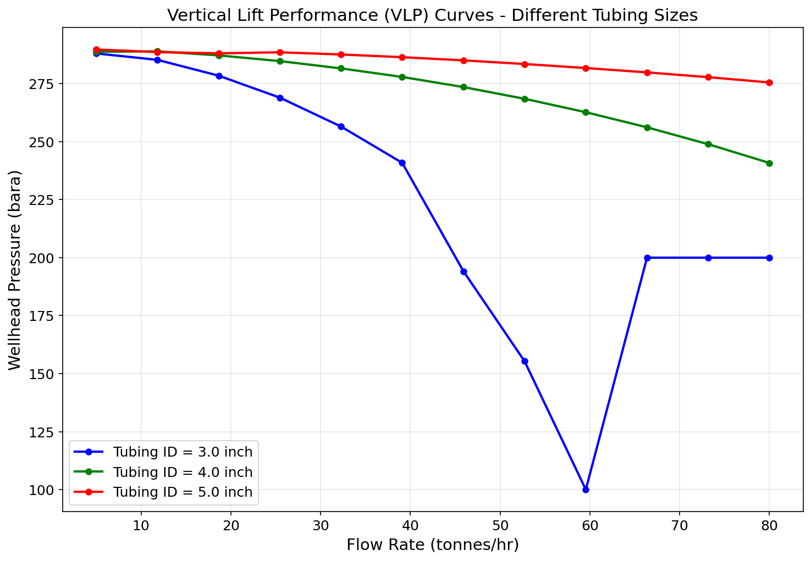
Figure 5.1: Fig01 Vlp Curves
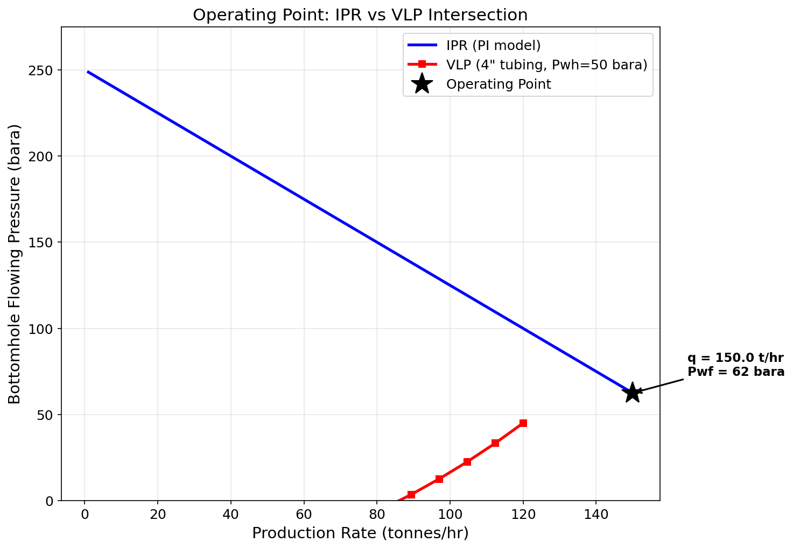
Figure 5.2: Fig02 Operating Point
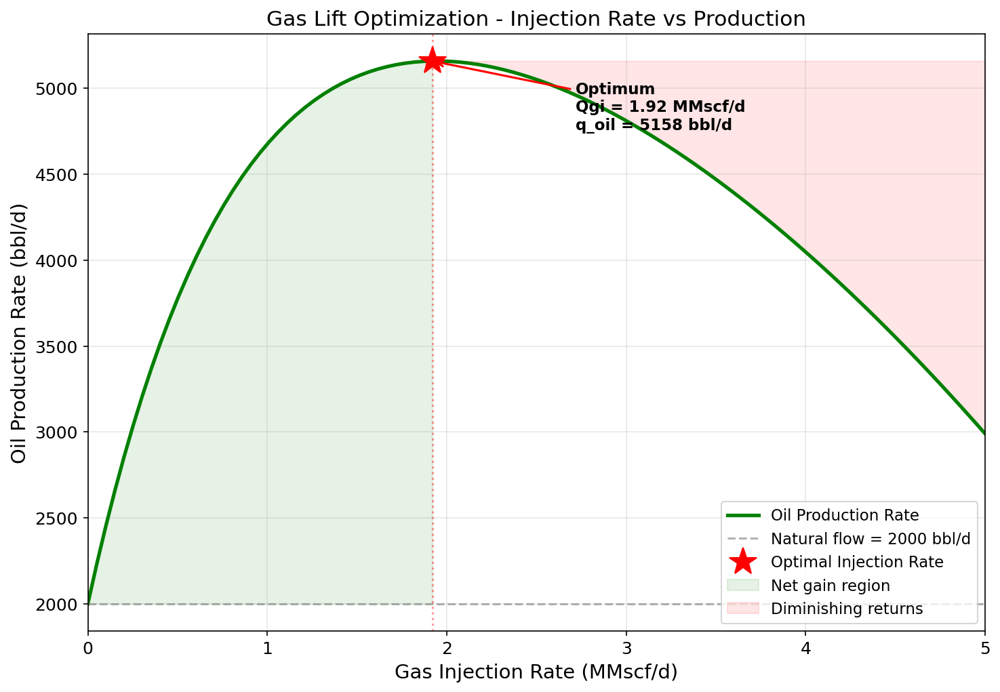
Figure 5.3: Fig03 Gas Lift Optimization
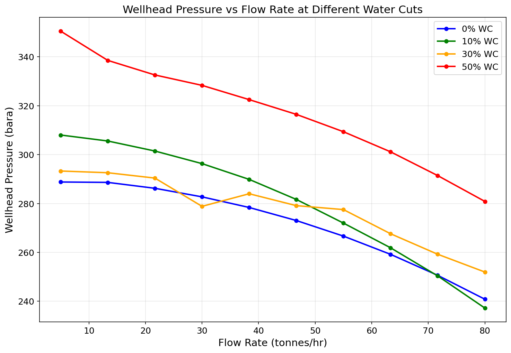
Figure 5.4: Fig04 Watercut Effect
Well Networks, Artificial Lift, and Lift Optimization
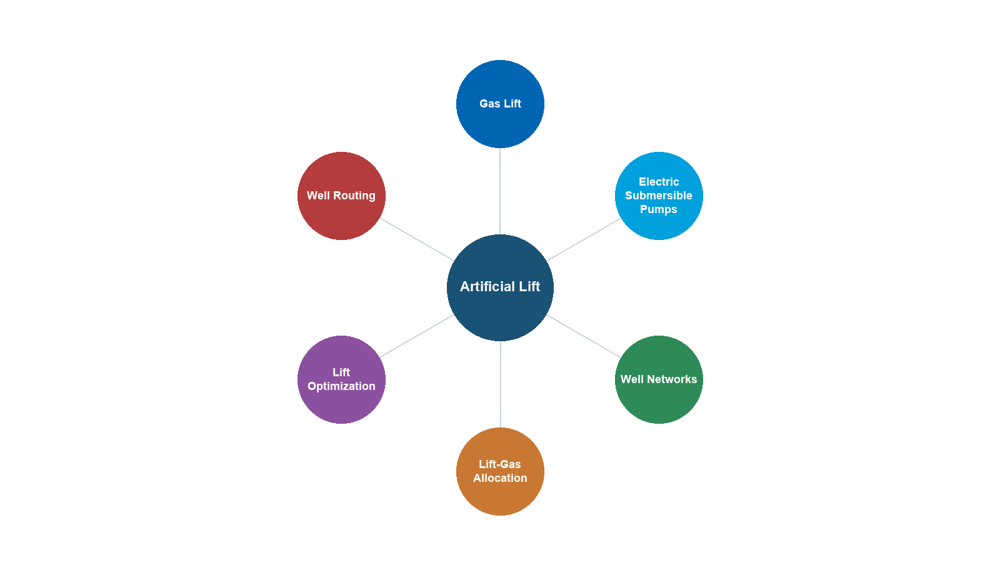
Learning Objectives
After reading this chapter, the reader will be able to:
- Model production well networks using NeqSim's
LoopedPipeNetworkclass with multiple wells, chokes, tubing, and gathering flowlines - Implement IPR models (Productivity Index, Vogel, Fetkovich) for both oil and gas wells within a network framework
- Size and model production chokes using IEC 60534-style valve equations with critical flow detection
- Calculate vertical lift performance (VLP) for well tubing using segmented pressure drop correlations
- Build complete multi-well gathering networks with source, junction, and sink nodes
- Model artificial lift systems (gas lift, ESP, jet pump, rod pump) and their effect on network hydraulics
- Optimize choke settings and production allocation across a well network using NLP and multi-objective methods
- Track water handling, sand production, corrosion, and GHG emissions within the network model
- Implement production well networks in Python for rapid prototyping and sensitivity analysis
---
15.1 Introduction
Previous chapters addressed individual well performance — multiphase flow in tubing (Chapter 5), choke behavior (Chapter 15 Valves), and artificial lift methods. In reality, production wells do not operate in isolation. They are connected through a gathering network of flowlines, manifolds, and headers that deliver the combined production to the processing facility. The performance of each well depends on the network back-pressure, which in turn depends on the production rates of all other wells.
This chapter introduces production well network modeling — the discipline of simultaneously solving for flow rates and pressures across an interconnected system of wells, chokes, tubing strings, flowlines, and processing constraints. We present NeqSim's LoopedPipeNetwork class, which implements a Newton-Raphson Global Gradient Algorithm (NR-GGA) solver capable of handling hundreds of wells with sub-second convergence.
The chapter progresses from individual building blocks (IPR models, choke equations, tubing VLP) to complete network assembly and optimization. We conclude with practical topics: artificial lift integration, water handling, flow assurance, emissions tracking, and Python implementations for rapid engineering studies.
15.1.1 Why Network Modeling Matters
Consider a platform producing from 20 wells through a common manifold at 40 bara. If one well increases production, the manifold pressure rises slightly, reducing the drawdown — and hence the flow rate — of every other well. This coupling means that:
- Individual well optimization is insufficient. Maximizing one well may reduce total platform production.
- Choke settings interact. Opening a choke on Well A changes the back-pressure on Wells B through T.
- Artificial lift allocation is a system problem. Gas lift gas or ESP power allocated to one well affects what is available for others.
- Facility constraints propagate. A compressor limit or separator capacity constraint affects all wells simultaneously.
Network modeling captures these interactions and enables true system-level optimization.
15.1.2 The LoopedPipeNetwork Architecture
NeqSim's LoopedPipeNetwork represents the production system as a directed graph:
- Nodes represent physical locations: reservoir sandface, wellbore, wellhead, manifold, platform arrival
- Elements represent resistance components: IPR (reservoir inflow), tubing, choke, flowline, compressor
- The solver simultaneously determines all nodal pressures and element flow rates
The key innovation is that each "element" can be a different physical model — not just a pipe. The element types supported are:
| Element Type | Physical Model | Key Parameters |
|---|---|---|
PIPE |
Darcy-Weisbach single-phase | Length, diameter, roughness |
WELL_IPR |
Reservoir inflow (PI, Vogel, Fetkovich) | $P_r$, PI, $Q_{max}$, $C$, $n$ |
CHOKE |
IEC 60534 valve flow | $K_v$, opening %, critical pressure ratio |
TUBING |
Vertical multiphase lift | Length, diameter, inclination, segments |
MULTIPHASE_PIPE |
Beggs-Brill horizontal/inclined | Length, diameter, roughness, elevation |
COMPRESSOR |
Centrifugal with performance chart | Speed, efficiency, surge/stonewall |
REGULATOR |
Pressure reducing valve | Downstream set-point |
This generalized approach means that a single network model can represent the complete path from reservoir to export — or any subset thereof.
---
15.2 Production Well Networks in NeqSim
15.2.1 The LoopedPipeNetwork Class
The LoopedPipeNetwork class is the central component for production network modeling in NeqSim. It extends ProcessEquipmentBaseClass and can be embedded within a ProcessSystem for integrated facility simulation.
import neqsim.process.equipment.network.LoopedPipeNetwork;
import neqsim.process.equipment.network.LoopedPipeNetwork.*;
import neqsim.thermo.system.SystemInterface;
import neqsim.thermo.system.SystemSrkEos;
// Create a fluid template for the network
SystemInterface gas = new SystemSrkEos(273.15 + 80.0, 200.0);
gas.addComponent("methane", 0.80);
gas.addComponent("ethane", 0.08);
gas.addComponent("propane", 0.04);
gas.addComponent("n-butane", 0.02);
gas.addComponent("n-heptane", 0.04);
gas.addComponent("water", 0.02);
gas.setMixingRule("classic");
gas.setMultiPhaseCheck(true);
// Create the network
LoopedPipeNetwork network = new LoopedPipeNetwork("Production Network");
network.setFluidTemplate(gas);
15.2.2 Node Types
Every network requires at least one source node (where fluid enters) and one sink node (where fluid exits). Junction nodes connect elements internally.
Source nodes represent reservoirs or injection points. They have a fixed pressure (the reservoir pressure) and supply whatever flow rate the IPR allows:
// Reservoir nodes (fixed pressure sources)
network.addSourceNode("Reservoir-A", 250.0, 0.0); // 250 bar, flow determined by IPR
network.addSourceNode("Reservoir-B", 220.0, 0.0); // 220 bar
Sink nodes represent delivery points — the manifold, separator inlet, or export pipeline. They may have a fixed pressure (back-pressure constraint) or a fixed demand:
// Platform manifold (fixed back-pressure)
network.addSinkNode("Manifold", 0.0); // demand determined by network solution
// Alternative: fixed pressure at sink
NetworkNode manifold = network.getNode("Manifold");
manifold.setPressure(40.0e5); // 40 bara in Pa
manifold.setPressureFixed(true);
Junction nodes are intermediate connection points — wellheads, subsea manifolds, pipeline junctions:
// Wellhead and subsea junction nodes
network.addJunctionNode("WH-A"); // Wellhead of Well A
network.addJunctionNode("WH-B"); // Wellhead of Well B
network.addJunctionNode("BH-A"); // Bottomhole of Well A
network.addJunctionNode("BH-B"); // Bottomhole of Well B
network.addJunctionNode("Subsea-Manifold");
15.2.3 Network Element Types
Each element connects two nodes and has a pressure-flow relationship $\Delta P = f(Q)$ and its derivative $d\Delta P/dQ$. The NR-GGA solver uses these functions to build the Jacobian matrix.
PIPE elements use the Darcy-Weisbach equation for single-phase flow:
$$ \Delta P = \frac{f L}{D} \cdot \frac{\rho v^2}{2} $$
// Subsea flowline (single-phase pipe)
network.addPipe("Subsea-Manifold", "Manifold", "Export Flowline",
15000.0, // length [m]
0.254); // diameter [m] (10-inch)
MULTIPHASE_PIPE elements use the Beggs-Brill correlation for two-phase and three-phase systems, wrapping NeqSim's PipeBeggsAndBrills:
// Multiphase gathering line
NetworkPipe gatherLine = network.addPipe("WH-A", "Subsea-Manifold",
"Gathering Line A", 5000.0, 0.2032); // 8-inch, 5 km
gatherLine.setElementType(NetworkElementType.MULTIPHASE_PIPE);
gatherLine.setMultiphaseSegments(20);
gatherLine.setRoughness(4.5e-5);
15.2.4 The Newton-Raphson Global Gradient Algorithm
The NR-GGA solver (also known as the Todini-Pilati method) solves the network equations simultaneously. For a network with $N_n$ nodes and $N_e$ elements, the system is:
Continuity at each node (mass balance):
$$ \sum_{j \in \text{in}(i)} Q_j - \sum_{j \in \text{out}(i)} Q_j = D_i \quad \forall \text{ nodes } i $$
where $D_i$ is the external demand (positive) or supply (negative) at node $i$.
Momentum equation for each element (pressure-flow relationship):
$$ H_i - H_j = h_k(Q_k) \quad \forall \text{ elements } k \text{ connecting nodes } i \to j $$
where $H_i$ is the head (pressure) at node $i$ and $h_k(Q_k)$ is the head loss through element $k$ at flow rate $Q_k$.
The NR-GGA linearizes these equations around the current estimate $(Q^{(n)}, H^{(n)})$ and solves the resulting linear system:
$$ \begin{bmatrix} A_{11} & A_{12} \\ A_{21} & 0 \end{bmatrix} \begin{bmatrix} \Delta Q \\ \Delta H \end{bmatrix} = \begin{bmatrix} r_1 \\ r_2 \end{bmatrix} $$
where:
- $A_{11} = \text{diag}(dh_k/dQ_k)$ — diagonal matrix of element derivatives
- $A_{12}$ — incidence matrix (network topology)
- $A_{21} = A_{12}^T$ — transpose of incidence matrix
- $r_1, r_2$ — residuals of momentum and continuity equations
Schur complement reduction eliminates $\Delta Q$ to solve a smaller $N_n \times N_n$ system for nodal pressures:
$$ (A_{21} A_{11}^{-1} A_{12}) \Delta H = r_2 - A_{21} A_{11}^{-1} r_1 $$
This is highly efficient because $A_{11}$ is diagonal (trivial to invert), and the reduced system is much smaller than the full system for networks with many more pipes than nodes.
15.2.5 Solver Configuration
// Select the NR-GGA solver
network.setSolverType(SolverType.NEWTON_RAPHSON);
// Convergence settings
network.setTolerance(1e-6); // Residual tolerance (Pa)
network.setMaxIterations(100); // Maximum iterations
Adaptive relaxation prevents divergence in stiff networks. The solver automatically reduces the step size when the residual increases:
$$ Q^{(n+1)} = Q^{(n)} + \alpha \cdot \Delta Q $$
where $\alpha$ starts at 1.0 and is halved if the residual increases, down to a minimum of 0.1.
Flow initialization sets reasonable starting values for the iterative solver. The network automatically estimates initial flows based on source pressures and pipe resistances:
// The solver handles initialization internally, but you can override:
network.setInitialFlowEstimate("pipe1", 50.0); // kg/s
---
15.3 IPR Models Implementation
15.3.1 Productivity Index (PI) Model
The simplest IPR model assumes a linear relationship between flow rate and drawdown:
For oil wells (incompressible flow):
$$ Q = \text{PI} \times (P_r - P_{wf}) $$
For gas wells (compressible flow — pressure-squared form):
$$ Q = \text{PI}_{gas} \times (P_r^2 - P_{wf}^2) $$
where:
- $Q$ = flow rate [kg/s in network units]
- PI = productivity index [kg/s/Pa for oil, kg/s/Pa² for gas]
- $P_r$ = reservoir pressure [Pa]
- $P_{wf}$ = flowing bottomhole pressure [Pa]
The derivative for the NR-GGA solver is:
$$ \frac{d\Delta P}{dQ} = \frac{1}{\text{PI}} \quad \text{(oil)} \qquad \frac{d\Delta P}{dQ} = \frac{2 P_{wf}}{\text{PI}_{gas}} \quad \text{(gas)} $$
NeqSim convenience method:
// Oil well with PI = 15 Sm3/d/bar (converted internally to SI)
network.addWellIPR("Reservoir-A", "BH-A", "Well-A IPR",
250.0e5, // reservoir pressure [Pa]
15.0); // PI [Sm3/d/bar] — converted to kg/s/Pa internally
// Gas well (set gasIPR flag)
NetworkPipe gasIPR = network.addWellIPR("Reservoir-B", "BH-B", "Well-B IPR",
300.0e5, // reservoir pressure [Pa]
0.5); // PI_gas [Sm3/d/bar²]
gasIPR.setGasIPR(true);
15.3.2 Vogel's Equation
Vogel (1968) developed an empirical IPR for solution-gas-drive reservoirs producing below the bubble point:
$$ \frac{Q}{Q_{max}} = 1 - 0.2\left(\frac{P_{wf}}{P_r}\right) - 0.8\left(\frac{P_{wf}}{P_r}\right)^2 $$
Solving for the pressure drop as a function of flow rate requires inverting this quadratic:
$$ P_{wf} = P_r \left[ \frac{-0.2 + \sqrt{0.04 + 3.2(1 - Q/Q_{max})}}{1.6} \right] $$
The derivative $d\Delta P/dQ$ follows from implicit differentiation:
$$ \frac{d\Delta P}{dQ} = \frac{P_r}{Q_{max}} \cdot \frac{1}{0.2 + 1.6 \cdot P_{wf}/P_r} $$
NeqSim convenience method:
// Vogel IPR: Qmax = absolute open flow (AOF) in kg/s
network.addWellIPRVogel("Reservoir-A", "BH-A", "Well-A Vogel",
250.0e5, // reservoir pressure [Pa]
50.0); // Qmax (AOF) [kg/s]
15.3.3 Fetkovich Equation
Fetkovich (1973) proposed a generalized backpressure equation for gas and gas-condensate wells:
$$ Q = C \times (P_r^2 - P_{wf}^2)^n $$
where:
- $C$ = backpressure coefficient [kg/s/Pa^(2n)]
- $n$ = backpressure exponent (0.5 ≤ $n$ ≤ 1.0)
- $n = 1.0$: Darcy (laminar) flow dominates
- $n = 0.5$: turbulent/non-Darcy flow dominates
- Typical: $n \approx 0.7$–0.9
The derivative:
$$ \frac{d\Delta P}{dQ} = \frac{(P_r^2 - P_{wf}^2)}{n \cdot Q \cdot 2 P_{wf}} $$
NeqSim convenience method:
// Fetkovich IPR: C and n from well test analysis
network.addWellIPRFetkovich("Reservoir-B", "BH-B", "Well-B Fetkovich",
300.0e5, // reservoir pressure [Pa]
1.5e-8, // C coefficient
0.85); // n exponent
15.3.4 Choosing the Right IPR Model
| Scenario | Recommended Model | Why |
|---|---|---|
| Above bubble point (undersaturated oil) | Productivity Index | Linear behavior, PI from well test |
| Below bubble point (solution-gas drive) | Vogel | Accounts for relative permeability effects |
| Gas or gas-condensate well | Fetkovich | Handles turbulence and non-Darcy flow |
| Multi-rate well test available | Fetkovich | C and n fitted from test data |
| Screening / early appraisal | PI | Minimal data required |
15.3.5 The WellFlow Equipment and Inflow Constraints
The network convenience methods above attach an IPR to a NetworkPipe. For a self-contained well that participates in a ProcessSystem (or the integrated production model of Chapter 28), NeqSim provides the dedicated WellFlow equipment class (package neqsim.process.equipment.reservoir). A single instance can carry any of the inflow laws of Section 15.3:
WellFlow = jneqsim.process.equipment.reservoir.WellFlow
well = WellFlow("Well-A", reservoirStream)
well.setVogelParameters(qTest, pwfTest, reservoirP) # Vogel
# well.setFetkovichParameters(c, n, reservoirP) # Fetkovich
# well.setBackpressureParameters(a, b, reservoirP) # Rawlins-Schellhardt
# well.setTableInflow(bhp_array, rate_array) # tabulated IPR
well.setOutletPressure(120.0, "bara")
well.solveFlowFromOutletPressure()
print("Rate:", well.getFlowRate("Sm3/day"),
"BHP:", well.getBottomHolePressure(),
"drawdown:", well.getDrawdown())
WellFlow adds inflow constraints that the optimizers of Chapters 21 and 23 honour as capacity limits. They are activated with the fluent useWellConstraints() and bounded with reservoir-management limits:
well.useWellConstraints()
well.setMaxDrawdown(40.0, "bara") # sand / coning management
well.setMinBottomHolePressure(90.0, "bara") # lift / stability limit
For commingled completions the class supports multi-layer inflow — addLayer(name, stream, reservoirP, pi), setFlowMode(FlowMode), setTargetZone(...), with getZoneAllocationFractions() and getLayerFlowRates() reporting the crossflow split — and fracture-containment screening via setFracturePressure(...), setBarrierStressContrast(...), isFractureContained(bhp), and getFractureContainmentMargin(). These features make WellFlow the inflow building block for the well-and-network optimization of Chapter 26.
---
15.4 Choke Modeling
15.4.1 IEC 60534 Valve Flow Equation
Production chokes are modeled using a simplified form of the IEC 60534 valve equation:
$$ Q = K_v \cdot \theta \cdot \sqrt{\frac{\Delta P}{\rho / \rho_{ref}}} $$
where:
- $K_v$ = valve flow coefficient [m³/hr/√bar] at full opening
- $\theta$ = fractional opening (0–1, where 1 = fully open)
- $\Delta P$ = pressure drop across choke [bar]
- $\rho$ = fluid density [kg/m³]
- $\rho_{ref}$ = reference density (water = 1000 kg/m³)
For equal percentage characteristics (typical for production chokes):
$$ K_v(\theta) = K_{v,max} \cdot R^{(\theta - 1)} $$
where $R$ is the rangeability (typically 30–50 for production chokes).
15.4.2 Critical Flow Detection
When the pressure ratio $P_2/P_1$ falls below the critical pressure ratio $x_T$ (typically 0.5–0.7 for choke valves), the flow becomes sonic and no longer increases with further pressure reduction:
$$ Q_{critical} = K_v \cdot \theta \cdot \sqrt{\frac{x_T \cdot P_1}{\rho / \rho_{ref}}} $$
The network solver automatically detects critical flow and uses the appropriate equation. This is important because:
- Under critical flow, downstream pressure disturbances cannot propagate upstream
- The well is effectively isolated from manifold pressure fluctuations
- The choke opening becomes the sole control variable for the well's flow rate
15.4.3 Adding Chokes to the Network
// Production choke with Kv = 25 m3/hr/sqrt(bar), 60% open
network.addChoke("WH-A", "Downstream-A", "Choke-A",
25.0, // Kv [m3/hr/sqrt(bar)]
60.0); // opening [%]
// Adjust choke opening later
NetworkPipe choke = network.getPipe("Choke-A");
choke.setChokeOpening(75.0); // Open to 75%
15.4.4 Choosing Kv Values
Typical $K_v$ ranges by application:
| Application | Typical $K_v$ Range | Choke Size |
|---|---|---|
| Low-rate oil well | 5–15 m³/hr/√bar | 2–3 inch |
| Medium-rate well | 15–40 m³/hr/√bar | 3–4 inch |
| High-rate gas well | 40–120 m³/hr/√bar | 4–6 inch |
| Platform choke (adjustable) | 10–80 m³/hr/√bar | 3–5 inch |
| Subsea choke | 15–60 m³/hr/√bar | 3–4 inch |
The relationship between nominal choke size and $K_v$ depends on the manufacturer and trim type (cage, plug, ball). Always use vendor data for accurate sizing.
---
15.5 Tubing VLP Model
15.5.1 Pressure Drop in Vertical Tubing
The tubing element models the vertical (or deviated) flow from bottomhole to wellhead. The pressure drop has three components:
$$ \Delta P = \underbrace{\rho_m g L \sin\alpha}_{\text{gravity}} + \underbrace{\frac{f L}{D} \cdot \frac{\rho_m v^2}{2}}_{\text{friction}} + \underbrace{\rho_m v \, dv}_{\text{acceleration}} $$
where:
- $\rho_m$ = mixture density (depends on holdup)
- $g$ = gravitational acceleration [9.81 m/s²]
- $L$ = measured depth [m]
- $\alpha$ = inclination from horizontal [degrees]
- $f$ = Moody friction factor
- $D$ = tubing ID [m]
- $v$ = mixture velocity [m/s]
15.5.2 Segmented Approach for Deep Wells
For deep wells (> 1000 m), the fluid properties change significantly with pressure and temperature along the tubing. The tubing model uses a segmented approach:
- Divide the tubing into $N$ segments of equal length $\Delta L = L/N$
- At each segment inlet, flash the fluid to get local properties ($\rho_m$, $\mu$, holdup)
- Calculate the pressure drop across the segment
- Update pressure and temperature for the next segment
- Sum all segment pressure drops for the total $\Delta P$
Typical segment counts:
| Well Depth | Recommended Segments |
|---|---|
| < 1000 m | 5–10 |
| 1000–3000 m | 10–20 |
| 3000–5000 m | 20–40 |
| > 5000 m | 40–60 |
15.5.3 Adding Tubing to the Network
// Vertical tubing: 2500 m depth, 4-inch ID, 20 segments
network.addTubing("BH-A", "WH-A", "Tubing-A",
2500.0, // measured depth [m]
0.1016, // ID [m] (4-inch)
90.0, // inclination from horizontal [degrees] (90 = vertical)
20); // number of segments
// Deviated well: 3500 m MD, 60° average inclination
network.addTubing("BH-B", "WH-B", "Tubing-B",
3500.0, // measured depth [m]
0.1016, // ID [m]
60.0, // inclination [degrees]
25); // segments
15.5.4 Temperature Profile
The geothermal gradient provides the formation temperature at each depth:
$$ T_{formation}(z) = T_{surface} + G_T \cdot z $$
where $G_T$ is the geothermal gradient (typically 25–35 °C/km). The fluid temperature in the tubing is influenced by:
- Heat exchange with the formation through the tubing wall and cement
- Joule-Thomson cooling as pressure decreases
- Frictional heating (usually negligible)
For most production wells, the fluid exits the wellhead at a temperature 20–50 °C below the bottomhole temperature, depending on flow rate, insulation, and well depth.
---
15.6 Building Complete Well Networks
15.6.1 Step-by-Step Network Assembly Pattern
Building a production network follows a consistent pattern:
- Create fluid template — defines the composition for the entire network
- Add source nodes — reservoir contact points with fixed pressure
- Add junction nodes — bottomholes, wellheads, manifolds
- Add sink nodes — delivery points (platform, FPSO)
- Add elements — IPR, tubing, chokes, flowlines
- Configure solver — type, tolerance, max iterations
- Run and inspect — solve and extract results
15.6.2 Multi-Well Gathering Network Example
Consider a subsea field with three wells tied back to a platform:
Reservoir A (250 bar) Reservoir B (220 bar) Reservoir C (200 bar)
| | |
[IPR: PI=15] [IPR: Vogel] [IPR: Fetkovich]
| | |
BH-A BH-B BH-C
| | |
[Tubing 2500m] [Tubing 3000m] [Tubing 2000m]
| | |
WH-A WH-B WH-C
| | |
[Choke Kv=25] [Choke Kv=30] [Choke Kv=20]
| | |
Down-A Down-B Down-C
| | |
[Flowline 5km] [Flowline 8km] [Flowline 3km]
\ | /
\ | /
+------------- Subsea Manifold -------------------------+
|
[Riser 1.5km]
|
Platform Inlet
import neqsim.process.equipment.network.LoopedPipeNetwork;
import neqsim.process.equipment.network.LoopedPipeNetwork.*;
import neqsim.thermo.system.SystemInterface;
import neqsim.thermo.system.SystemSrkEos;
// Step 1: Fluid template
SystemInterface fluid = new SystemSrkEos(273.15 + 80.0, 200.0);
fluid.addComponent("nitrogen", 0.5);
fluid.addComponent("CO2", 1.5);
fluid.addComponent("methane", 72.0);
fluid.addComponent("ethane", 8.0);
fluid.addComponent("propane", 4.5);
fluid.addComponent("i-butane", 1.0);
fluid.addComponent("n-butane", 2.0);
fluid.addComponent("n-pentane", 1.5);
fluid.addComponent("n-hexane", 1.0);
fluid.addComponent("n-heptane", 4.0);
fluid.addComponent("n-octane", 2.5);
fluid.addComponent("water", 1.5);
fluid.setMixingRule("classic");
fluid.setMultiPhaseCheck(true);
LoopedPipeNetwork network = new LoopedPipeNetwork("Subsea Field");
network.setFluidTemplate(fluid);
// Step 2: Source nodes (reservoirs)
network.addSourceNode("Res-A", 250.0, 0.0);
network.addSourceNode("Res-B", 220.0, 0.0);
network.addSourceNode("Res-C", 200.0, 0.0);
// Step 3: Junction nodes
network.addJunctionNode("BH-A");
network.addJunctionNode("BH-B");
network.addJunctionNode("BH-C");
network.addJunctionNode("WH-A");
network.addJunctionNode("WH-B");
network.addJunctionNode("WH-C");
network.addJunctionNode("Down-A");
network.addJunctionNode("Down-B");
network.addJunctionNode("Down-C");
network.addJunctionNode("Subsea-Manifold");
// Step 4: Sink node (platform)
network.addSinkNode("Platform", 0.0);
NetworkNode platform = network.getNode("Platform");
platform.setPressure(35.0e5); // 35 bara back-pressure
platform.setPressureFixed(true);
// Step 5: Elements — IPRs
network.addWellIPR("Res-A", "BH-A", "IPR-A", 250.0e5, 15.0);
network.addWellIPRVogel("Res-B", "BH-B", "IPR-B", 220.0e5, 80.0);
network.addWellIPRFetkovich("Res-C", "BH-C", "IPR-C", 200.0e5, 2.0e-8, 0.80);
// Step 5: Elements — Tubing
network.addTubing("BH-A", "WH-A", "Tubing-A", 2500.0, 0.1016, 90.0, 20);
network.addTubing("BH-B", "WH-B", "Tubing-B", 3000.0, 0.1016, 75.0, 25);
network.addTubing("BH-C", "WH-C", "Tubing-C", 2000.0, 0.1016, 90.0, 15);
// Step 5: Elements — Chokes
network.addChoke("WH-A", "Down-A", "Choke-A", 25.0, 80.0);
network.addChoke("WH-B", "Down-B", "Choke-B", 30.0, 70.0);
network.addChoke("WH-C", "Down-C", "Choke-C", 20.0, 90.0);
// Step 5: Elements — Gathering flowlines (multiphase)
NetworkPipe fl_a = network.addPipe("Down-A", "Subsea-Manifold",
"Flowline-A", 5000.0, 0.2032);
fl_a.setElementType(NetworkElementType.MULTIPHASE_PIPE);
fl_a.setMultiphaseSegments(15);
NetworkPipe fl_b = network.addPipe("Down-B", "Subsea-Manifold",
"Flowline-B", 8000.0, 0.2032);
fl_b.setElementType(NetworkElementType.MULTIPHASE_PIPE);
fl_b.setMultiphaseSegments(20);
NetworkPipe fl_c = network.addPipe("Down-C", "Subsea-Manifold",
"Flowline-C", 3000.0, 0.2032);
fl_c.setElementType(NetworkElementType.MULTIPHASE_PIPE);
fl_c.setMultiphaseSegments(10);
// Step 5: Elements — Riser
NetworkPipe riser = network.addPipe("Subsea-Manifold", "Platform",
"Production Riser", 1500.0, 0.254);
riser.setElementType(NetworkElementType.MULTIPHASE_PIPE);
riser.setMultiphaseSegments(15);
// Step 6: Solver configuration
network.setSolverType(SolverType.NEWTON_RAPHSON);
network.setTolerance(1e-6);
network.setMaxIterations(100);
// Step 7: Solve
network.run();
// Step 7: Results
Map<String, Object> summary = network.getSolutionSummary();
System.out.println("Converged: " + summary.get("converged"));
System.out.println("Iterations: " + summary.get("iterations"));
System.out.println("Total production: " + summary.get("totalSinkFlow") + " kg/s");
15.6.3 Results Inspection
The LoopedPipeNetwork provides several report methods:
Solution summary — key convergence and flow metrics:
Map<String, Object> summary = network.getSolutionSummary();
// Keys: converged, iterations, residualNorm, totalSourceFlow,
// totalSinkFlow, maxVelocity, maxErosionalRatio
Hydraulic report — detailed pressure and flow for every element:
// getHydraulicReport() returns a JSON-formatted string
// with nodal pressures and element flow rates
Mass balance report — verifies conservation of mass:
// getMassBalanceReport() checks that sum(sources) = sum(sinks)
// within the solver tolerance
Individual element results:
// Get pressure at any node
double whPressure = network.getNodePressure("WH-A"); // Pa
// Get flow rate through any element
double pipeFlow = network.getPipeFlowRate("Flowline-A"); // kg/s
// Get element details
NetworkPipe pipe = network.getPipe("Flowline-A");
double velocity = pipe.getVelocity(); // m/s
double reynolds = pipe.getReynoldsNumber(); // dimensionless
double holdup = pipe.getLiquidHoldup(); // fraction
---
15.7 Artificial Lift in NeqSim Networks
15.7.1 Gas Lift
Gas lift reduces the hydrostatic head in the tubing by injecting gas, which decreases the mixture density. In the network model, gas lift is implemented as a modification to the tubing element — the injected gas changes the effective density and hence the gravity pressure drop:
$$ \Delta P_{gravity} = \rho_m(Q_{prod} + Q_{GL}) \cdot g \cdot L \sin\alpha $$
The gas lift rate is specified in kg/hr of injection gas:
// Apply gas lift to Well A: 5000 kg/hr of lift gas
network.setGasLift("Tubing-A", 5000.0); // kg/hr
// Solve again to see the effect
network.run();
The effect on wellhead pressure (and hence production rate) is dramatic — typical gas lift can increase production by 50–200% for wells that would otherwise have insufficient natural energy.
15.7.2 Electric Submersible Pump (ESP)
An ESP adds a pressure boost at the pump intake depth, effectively lowering the flowing bottomhole pressure seen by the reservoir:
$$ P_{wf,effective} = P_{wf,actual} - \Delta P_{ESP} $$
where the ESP head rise depends on the pump characteristic curve, flow rate, and speed:
$$ \Delta P_{ESP} = \rho \cdot g \cdot H_{stage} \cdot N_{stages} \cdot \eta $$
In the network:
// ESP on Well B: 150 kW rated power, 55% efficiency
network.setESP("Tubing-B", 150.0, 0.55); // power [kW], efficiency
15.7.3 Jet Pump
A jet pump (hydraulic lift) uses high-pressure power fluid to create a low-pressure zone that draws in production fluid. In the network model, it is represented as an equivalent pressure boost:
// Jet pump on Well C: 100 kW equivalent, 40% efficiency
network.setJetPump("Tubing-C", 100.0, 0.40);
15.7.4 Rod Pump
Rod pumps are positive displacement devices that maintain a nearly constant flow rate. In the network model, the rod pump provides a pressure boost similar to ESP:
// Rod pump: 30 kW, 50% efficiency
network.setRodPump("Tubing-A", 30.0, 0.50);
15.7.5 Effect on the NR-GGA Solver
Artificial lift modifies the element's $\Delta P(Q)$ function by adding a negative head loss (pressure gain). The solver handles this naturally — the Jacobian simply includes the derivative of the combined gravity + friction + lift term. This means:
- All artificial lift methods are fully coupled with the network solution
- Changing lift parameters on one well affects all other wells through the shared back-pressure
- The optimizer (Section 15.9) can optimize lift allocation across the entire field
---
15.8 Water Handling and Flow Assurance
15.8.1 Water Cut Tracking
Each tubing or flowline element can carry a water cut that affects density, viscosity, holdup, and corrosion calculations:
// Set water cut for Well A's tubing
NetworkPipe tubing_a = network.getPipe("Tubing-A");
tubing_a.setWaterCut(0.30); // 30% water cut
The water cut affects the multiphase flow calculation through:
- Mixture density: Higher water cut increases liquid density, increasing hydrostatic head
- Viscosity: Oil-water emulsion viscosity can be much higher than pure oil
- Holdup: Water changes the gas-liquid flow pattern transitions
15.8.2 Water Injection
For water injection wells, the network element flow direction is reversed — water flows from surface to the reservoir:
// Water injection well
network.addPipe("Platform", "WI-Wellhead", "WI-Flowline", 10000.0, 0.2032);
network.addTubing("WI-Wellhead", "WI-BH", "WI-Tubing", 3000.0, 0.1778, 90.0, 20);
network.addWellIPR("WI-BH", "WI-Reservoir", "WI-IPR", 180.0e5, 25.0);
15.8.3 Sand Production Tracking
Sand production causes erosion in chokes, bends, and flowlines. The DNV RP O501 erosion model calculates material loss rate based on particle velocity, impact angle, and particle properties:
$$ E = K \cdot F(\alpha) \cdot v_p^n \cdot \dot{m}_p / (\rho_t \cdot A_t) $$
where:
- $E$ = erosion rate [mm/year]
- $K$ = material constant
- $F(\alpha)$ = impact angle function
- $v_p$ = particle velocity [m/s]
- $n$ = velocity exponent (typically 2.6 for steel)
- $\dot{m}_p$ = sand mass flow rate [kg/s]
- $\rho_t$ = target material density [kg/m³]
- $A_t$ = target area [m²]
// Set sand rate for a well's tubing
NetworkPipe tubing = network.getPipe("Tubing-A");
tubing.setSandRate(0.001); // kg/s of sand
15.8.4 Corrosion Models
Two industry-standard CO₂ corrosion models are available:
de Waard-Milliams (1975):
$$ \log(v_{corr}) = 5.8 - \frac{1710}{T} + 0.67 \log(p_{CO_2}) $$
where $v_{corr}$ is the corrosion rate [mm/year], $T$ is temperature [K], and $p_{CO_2}$ is CO₂ partial pressure [bar].
NORSOK M-506:
A temperature- and pH-dependent model that accounts for protective scale formation:
$$ v_{corr} = K_t \cdot f(pH) \cdot f_{CO_2}(T, p_{CO_2}) \cdot f_{scale} $$
These models are integrated with the network flow solution, using the local temperature, pressure, and CO₂ content at each element.
15.8.5 GHG Emissions Tracking
The network can estimate greenhouse gas emissions associated with production operations:
Map<String, double[]> emissions = network.calculateEmissions();
// Returns emissions by source: flaring, venting, combustion, fugitive
This is particularly relevant for:
- Gas lift compressor emissions: Fuel gas consumption for compression
- ESP power emissions: Electricity generation for downhole pumps
- Flaring: Gas that cannot be processed
- Fugitive emissions: Leaks from valves, flanges, and seals
---
15.9 Network Optimization
15.9.1 Choke Sensitivity Study
Before running formal optimization, a choke sensitivity study reveals how each well responds to choke changes:
// Sweep choke opening from 10% to 100% for Well A
double[] openings = {10, 20, 30, 40, 50, 60, 70, 80, 90, 100};
for (double opening : openings) {
network.getPipe("Choke-A").setChokeOpening(opening);
network.run();
double flow = network.getPipeFlowRate("Tubing-A");
double whp = network.getNodePressure("WH-A") / 1e5; // Convert Pa to bara
System.out.printf("Opening: %.0f%%, Flow: %.2f kg/s, WHP: %.1f bara%n",
opening, flow, whp);
}
This produces a characteristic curve showing diminishing returns as the choke opens — the well transitions from choke-limited to reservoir-limited or tubing-limited flow.
15.9.2 NetworkOptimizer with BOBYQA and CMA-ES
The NetworkOptimizer class provides formal NLP optimization using derivative-free methods:
BOBYQA (Bound Optimization BY Quadratic Approximation) is ideal for smooth, bounded optimization with 2–20 decision variables:
import neqsim.process.equipment.network.NetworkOptimizer;
// Create optimizer from network
NetworkOptimizer optimizer = network.createOptimizer();
// Or use the convenience method for maximum production
NetworkOptimizer.OptimizationResult result = network.optimizeProductionNLP();
System.out.println("Optimal total production: " + result.getObjectiveValue() + " kg/s");
System.out.println("Optimal choke settings: " + result.getOptimalValues());
CMA-ES (Covariance Matrix Adaptation Evolution Strategy) is a global optimizer for non-convex or multi-modal problems:
NetworkOptimizer optimizer = network.createOptimizer();
optimizer.setAlgorithm(NetworkOptimizer.Algorithm.CMAES);
optimizer.setPopulationSize(50);
optimizer.setMaxEvaluations(5000);
NetworkOptimizer.OptimizationResult result = optimizer.optimize();
15.9.3 Multi-Objective Choke Allocation
Production optimization often involves competing objectives — maximize oil while minimizing water, or maximize rate while minimizing erosion. The optimizeMultiObjective() method generates a Pareto front:
// Generate 10 Pareto-optimal points
List<NetworkOptimizer.OptimizationResult> pareto =
network.optimizeMultiObjective(10);
for (NetworkOptimizer.OptimizationResult point : pareto) {
System.out.printf("Production: %.1f kg/s, Water: %.1f kg/s%n",
point.getObjectiveValue(),
point.getSecondaryObjective());
}
15.9.4 Large-Scale Network Performance
The NR-GGA solver with Schur complement reduction scales well to large networks:
| Network Size | Elements | Typical Iterations | Wall Time |
|---|---|---|---|
| 5 wells | ~25 | 5–8 | < 0.01 s |
| 20 wells | ~100 | 8–12 | < 0.05 s |
| 50 wells | ~250 | 10–15 | < 0.1 s |
| 120+ wells | ~600 | 12–20 | < 0.1 s |
The solver's efficiency comes from:
- Schur complement reduces the system from $(N_e + N_n)$ to $N_n$ unknowns
- Sparse matrix storage for the incidence matrix
- Adaptive relaxation prevents divergence without excessive damping
- Warm starting reuses the previous solution for parameter sweeps
---
15.10 Python Implementation
15.10.1 Building a Multi-Well Network in Python
from neqsim import jneqsim
# Import network classes
LoopedPipeNetwork = jneqsim.process.equipment.network.LoopedPipeNetwork
SolverType = LoopedPipeNetwork.SolverType
NetworkElementType = LoopedPipeNetwork.NetworkElementType
# Create fluid template
fluid = jneqsim.thermo.system.SystemSrkEos(273.15 + 80.0, 200.0)
fluid.addComponent("methane", 75.0)
fluid.addComponent("ethane", 8.0)
fluid.addComponent("propane", 4.0)
fluid.addComponent("n-butane", 2.0)
fluid.addComponent("n-pentane", 1.0)
fluid.addComponent("n-heptane", 5.0)
fluid.addComponent("n-octane", 3.0)
fluid.addComponent("water", 2.0)
fluid.setMixingRule("classic")
fluid.setMultiPhaseCheck(True)
# Build network
network = LoopedPipeNetwork("Field Alpha")
network.setFluidTemplate(fluid)
# Define 4-well subsea network
wells = {
"A": {"Pr": 260.0, "PI": 18.0, "depth": 2800.0, "FL_len": 6000.0, "choke_Kv": 30.0},
"B": {"Pr": 240.0, "PI": 12.0, "depth": 3200.0, "FL_len": 4000.0, "choke_Kv": 25.0},
"C": {"Pr": 210.0, "PI": 20.0, "depth": 2200.0, "FL_len": 8000.0, "choke_Kv": 35.0},
"D": {"Pr": 230.0, "PI": 10.0, "depth": 3500.0, "FL_len": 5000.0, "choke_Kv": 20.0},
}
# Source and sink nodes
for name, w in wells.items():
network.addSourceNode(f"Res-{name}", w["Pr"], 0.0)
network.addJunctionNode("Manifold")
network.addSinkNode("Platform", 0.0)
platform = network.getNode("Platform")
platform.setPressure(35.0e5)
platform.setPressureFixed(True)
# Build each well: IPR -> Tubing -> Choke -> Flowline
for name, w in wells.items():
network.addJunctionNode(f"BH-{name}")
network.addJunctionNode(f"WH-{name}")
network.addJunctionNode(f"DS-{name}")
# IPR
network.addWellIPR(f"Res-{name}", f"BH-{name}", f"IPR-{name}",
w["Pr"] * 1e5, w["PI"])
# Tubing
network.addTubing(f"BH-{name}", f"WH-{name}", f"Tubing-{name}",
w["depth"], 0.1016, 90.0, 20)
# Choke
network.addChoke(f"WH-{name}", f"DS-{name}", f"Choke-{name}",
w["choke_Kv"], 80.0) # 80% open initially
# Flowline
fl = network.addPipe(f"DS-{name}", "Manifold",
f"FL-{name}", w["FL_len"], 0.2032)
fl.setElementType(NetworkElementType.MULTIPHASE_PIPE)
fl.setMultiphaseSegments(15)
# Riser
riser = network.addPipe("Manifold", "Platform", "Riser", 1200.0, 0.254)
riser.setElementType(NetworkElementType.MULTIPHASE_PIPE)
riser.setMultiphaseSegments(10)
# Solve
network.setSolverType(SolverType.NEWTON_RAPHSON)
network.setTolerance(1e-6)
network.setMaxIterations(100)
network.run()
# Print results
summary = network.getSolutionSummary()
print(f"Converged: {summary.get('converged')}")
print(f"Iterations: {summary.get('iterations')}")
print(f"Total production: {float(summary.get('totalSinkFlow')):.2f} kg/s")
print()
print(f"{'Well':>6} {'BHP (bara)':>12} {'WHP (bara)':>12} {'Flow (kg/s)':>12}")
print("-" * 48)
for name in wells:
bhp = network.getNodePressure(f"BH-{name}") / 1e5
whp = network.getNodePressure(f"WH-{name}") / 1e5
flow = network.getPipeFlowRate(f"Tubing-{name}")
print(f"{name:>6} {bhp:12.1f} {whp:12.1f} {flow:12.2f}")
15.10.2 Choke Sensitivity Study with Plots
import matplotlib.pyplot as plt
import numpy as np
from neqsim import jneqsim
# (Assume network is already built as above)
# Choke sensitivity for each well
openings = np.arange(10, 101, 5) # 10% to 100% in steps of 5%
results = {name: [] for name in wells}
for name in wells:
for opening in openings:
# Set choke opening
choke = network.getPipe(f"Choke-{name}")
choke.setChokeOpening(float(opening))
# Solve
network.run()
# Record flow rate
flow = network.getPipeFlowRate(f"Tubing-{name}")
results[name].append(flow)
# Reset to 80%
network.getPipe(f"Choke-{name}").setChokeOpening(80.0)
# Plot
fig, ax = plt.subplots(figsize=(10, 6))
for name in wells:
ax.plot(openings, results[name], 'o-', label=f"Well {name}")
ax.set_xlabel("Choke Opening (%)")
ax.set_ylabel("Production Rate (kg/s)")
ax.set_title("Choke Sensitivity Study — 4-Well Subsea Network")
ax.legend()
ax.grid(True, alpha=0.3)
plt.tight_layout()
plt.savefig("figures/choke_sensitivity.png", dpi=150, bbox_inches="tight")
plt.show()
15.10.3 Network Optimization in Python
from neqsim import jneqsim
NetworkOptimizer = jneqsim.process.equipment.network.NetworkOptimizer
# Quick optimization: maximize total production by adjusting all choke openings
result = network.optimizeProductionNLP()
print(f"Optimal total production: {float(result.getObjectiveValue()):.2f} kg/s")
# Get individual optimal choke settings
optimal_values = result.getOptimalValues()
for i, name in enumerate(wells):
print(f" Choke-{name}: {float(optimal_values[i]):.1f}%")
# Re-solve with optimal settings and report
network.run()
print(f"\nPost-optimization well rates:")
for name in wells:
flow = network.getPipeFlowRate(f"Tubing-{name}")
print(f" Well {name}: {flow:.2f} kg/s")
---
15.11 Advanced Network Modeling Topics
15.11.1 Looped Topologies and Redundancy
Real gathering networks often include loops — redundant paths that provide operational flexibility and allow continued production if one flowline is shut for maintenance. The NR-GGA solver handles loops naturally through the simultaneous solution of nodal pressures and element flows.
Consider a subsea field with a ring-main gathering system:
WH-A WH-B
| |
[Flowline A1] [Flowline B1]
| |
Manifold-1 ─── [Crossover] ─── Manifold-2
| |
[Flowline A2] [Flowline B2]
| |
WH-C WH-D
The crossover pipe creates a loop. In this configuration:
- If Flowline A1 is shut, Well A can still produce through the crossover to Manifold-2
- The flow distribution depends on the relative resistance of each path
- The solver automatically finds the flow split that satisfies mass balance and momentum equations
// Add looped topology
network.addPipe("Down-A", "Manifold-1", "FL-A1", 5000.0, 0.2032);
network.addPipe("Down-B", "Manifold-2", "FL-B1", 4000.0, 0.2032);
network.addPipe("Down-C", "Manifold-1", "FL-A2", 6000.0, 0.2032);
network.addPipe("Down-D", "Manifold-2", "FL-B2", 3500.0, 0.2032);
// Crossover creates the loop
network.addPipe("Manifold-1", "Manifold-2", "Crossover",
2000.0, 0.1524); // 6-inch tie-in
15.11.2 Compressor and Booster Stations
Subsea boosting and topside compression can be modeled as COMPRESSOR elements in the network:
// Subsea booster pump at manifold
NetworkPipe booster = network.addPipe("Manifold", "Boosted-Manifold",
"Subsea Booster", 10.0, 0.254);
booster.setElementType(NetworkElementType.COMPRESSOR);
booster.setCompressorEfficiency(0.72);
booster.setCompressorSpeed(4500.0); // RPM
The compressor element adds energy to the flow (negative head loss), which increases the pressure at downstream nodes and enables higher production rates from distant wells.
15.11.3 Pressure Regulators
Pressure reducing valves (regulators) maintain a fixed downstream pressure regardless of upstream conditions. This is useful for modeling gas distribution networks and pressure let-down stations:
// Pressure regulator maintaining 20 bar downstream
NetworkPipe reg = network.addPipe("HP-Header", "LP-Header",
"PRV-001", 1.0, 0.1016);
reg.setElementType(NetworkElementType.REGULATOR);
reg.setRegulatorSetPoint(20.0e5); // 20 bara in Pa
15.11.4 Erosional Velocity Monitoring
The API RP 14E erosional velocity limits are checked automatically for each element:
$$ v_{erosional} = \frac{C}{\sqrt{\rho_m}} $$
where $C$ is typically 100–150 (125 for continuous service) and $\rho_m$ is the mixture density [kg/m³]. The network reports the erosional velocity ratio ($v_{actual}/v_{erosional}$) for each element, flagging any that exceed 1.0.
// Check erosional velocity after solving
for (String pipeName : network.getPipeNames()) {
NetworkPipe pipe = network.getPipe(pipeName);
double ratio = pipe.getErosionalVelocityRatio();
if (ratio > 0.8) {
System.out.printf("WARNING: %s erosional ratio = %.2f%n",
pipeName, ratio);
}
}
15.11.5 Temperature Tracking
The network tracks fluid temperature through each element. For adiabatic pipes, the temperature changes due to Joule-Thomson cooling (pressure drop) and geothermal heat exchange:
// Set ambient temperature and heat transfer for a subsea flowline
NetworkPipe flowline = network.getPipe("Flowline-A");
flowline.setAmbientTemperature(277.15); // 4°C seabed
flowline.setOverallHeatTransferCoeff(5.0); // W/m2K (insulated pipe)
flowline.setInsulationThickness(0.05); // 50 mm insulation
Temperature tracking is essential for:
- Hydrate risk assessment: Is the arrival temperature below the hydrate equilibrium temperature?
- Wax deposition: Is the pipe wall temperature below the wax appearance temperature?
- Separator inlet conditions: Does the facility receive fluid at the design temperature?
15.11.6 Handling Non-Convergence
When the NR-GGA solver fails to converge (typically due to infeasible operating conditions), several diagnostic strategies are available:
- Check for infeasible demands: The total demand may exceed the available supply
- Reduce initial pressure estimates: Large pressure differences between source and sink can cause divergence
- Increase maximum iterations: Some stiff networks need 50–100 iterations
- Use adaptive relaxation: Reduce the step size to stabilize convergence
// Diagnostic: check if the network is physically feasible
network.setMaxIterations(200);
network.setTolerance(1e-4); // Relaxed tolerance first
network.run();
Map<String, Object> summary = network.getSolutionSummary();
boolean converged = (boolean) summary.get("converged");
if (!converged) {
System.out.println("Residual norm: " + summary.get("residualNorm"));
System.out.println("Check supply/demand balance and element sizing");
}
15.12 Comparison of Solver Types
The LoopedPipeNetwork provides three solver types, each with different strengths:
15.12.1 Hardy Cross
The original iterative method for looped networks. Corrects flows in each loop sequentially:
Advantages:
- Simple to understand and implement
- Robust for networks with few loops
- Each iteration improves the solution
Disadvantages:
- Slow convergence for large networks (linear convergence rate)
- Does not handle fixed-pressure sinks naturally
- Requires loop identification (DFS spanning tree)
Best for: Small networks (< 20 elements), educational purposes, water distribution networks.
15.12.2 Sequential Modular
Solves each element in sequence, propagating pressures from source to sink:
Advantages:
- Very fast for tree-topology networks (no loops)
- Easy to add new element types
- Matches the physical flow direction
Disadvantages:
- Cannot handle looped topologies
- Sensitive to element ordering
- No guarantee of convergence for complex networks
Best for: Simple well-to-manifold systems without loops or recycles.
15.12.3 Newton-Raphson (NR-GGA)
Simultaneous solution of all nodal pressures and element flows:
Advantages:
- Quadratic convergence rate (much faster for large networks)
- Handles loops, fixed pressures, and mixed boundary conditions naturally
- Schur complement reduction keeps the system small
- Adaptive relaxation prevents divergence
Disadvantages:
- Requires Jacobian computation (element derivatives)
- More complex implementation
- Single iteration is more expensive (but far fewer iterations needed)
Best for: Production networks (10+ wells), real-time optimization, Monte Carlo studies.
// Comparison example
network.setSolverType(SolverType.HARDY_CROSS);
long t1 = System.nanoTime();
network.run();
long hardyCrossTime = System.nanoTime() - t1;
int hcIter = network.getIterationCount();
network.setSolverType(SolverType.NEWTON_RAPHSON);
long t2 = System.nanoTime();
network.run();
long nrTime = System.nanoTime() - t2;
int nrIter = network.getIterationCount();
System.out.printf("Hardy Cross: %d iterations, %.1f ms%n",
hcIter, hardyCrossTime / 1e6);
System.out.printf("Newton-Raphson: %d iterations, %.1f ms%n",
nrIter, nrTime / 1e6);
---
15.13 Industrial Application Patterns
15.13.1 Daily Production Allocation
Many operators use network models for daily production allocation — distributing the available production capacity among wells to meet sales targets:
# Daily allocation workflow
target_oil_rate = 150.0 # kg/s total oil
# Step 1: Solve network at current choke settings
network.run()
current_total = float(network.getSolutionSummary().get("totalSinkFlow"))
# Step 2: If under-producing, open chokes; if over-producing, close
if current_total < target_oil_rate * 0.95:
# Open most responsive wells first (highest dQ/d_opening)
result = network.optimizeProductionNLP()
print(f"Optimized production: {float(result.getObjectiveValue()):.1f} kg/s")
elif current_total > target_oil_rate * 1.05:
# Constrained optimization: minimize total water while meeting oil target
pass
15.13.2 What-If Scenarios
Network models enable rapid evaluation of operational scenarios:
- Well shut-in: What happens to other wells if Well B is shut for workover?
- New well tie-in: What production gain from adding Well E?
- Flowline pigging: What is the transient effect of pigging Flowline C?
- Back-pressure increase: How much production is lost if manifold pressure rises 5 bar?
# What-if: shut in Well B
original_flow = network.getPipeFlowRate("Tubing-B")
network.getPipe("Choke-B").setChokeOpening(0.0) # Close choke
network.run()
# Other wells pick up some rate due to reduced back-pressure
for name in ["A", "C", "D"]:
new_flow = network.getPipeFlowRate(f"Tubing-{name}")
print(f"Well {name}: {new_flow:.2f} kg/s")
# Restore
network.getPipe("Choke-B").setChokeOpening(70.0)
network.run()
15.13.3 Real-Time Production Optimization
For digital twin applications, the network model runs continuously with updated input data from the plant historian:
- Read current well data: WHP, WHT, choke opening, gas lift rate (from SCADA/PI)
- Update network model: Set measured values as boundary conditions
- Solve: Find the current operating point
- Compare: Model prediction vs. measured rates (model validation)
- Optimize: Recommend choke adjustments to maximize total production
- Deploy: Send optimal setpoints back to the DCS
The sub-second solve time of the NR-GGA solver makes this real-time loop feasible even for large networks.
---
15.14 Summary
Key points from this chapter:
- Production well networks cannot be optimized well-by-well — the hydraulic coupling through shared manifolds and back-pressure means that system-level modeling is essential.
- LoopedPipeNetwork provides a generalized graph-based network model where each element can be a pipe, IPR, choke, tubing, multiphase flowline, compressor, or regulator.
- IPR models (PI, Vogel, Fetkovich) capture the reservoir-wellbore flow relationship with increasing fidelity. Choose based on available data and reservoir type.
- Choke modeling using IEC 60534-style equations with critical flow detection enables accurate well rate control simulation.
- Tubing VLP uses a segmented approach for accurate pressure drop calculation in deep, high-temperature wells.
- The NR-GGA solver with Schur complement reduction converges in < 0.1 s even for 120+ well networks, making it suitable for real-time optimization and Monte Carlo uncertainty analysis.
- Artificial lift (gas lift, ESP, jet pump, rod pump) is fully integrated into the network solver, allowing simultaneous optimization of lift parameters and choke settings.
- Water handling, sand, corrosion, and emissions are tracked at the element level, enabling flow assurance and environmental compliance assessment within the production network model.
- NetworkOptimizer provides BOBYQA and CMA-ES algorithms for single- and multi-objective production optimization.
---
Exercises
- Exercise 15.1: Build a 3-well subsea network in NeqSim with the following data: Well A (PI = 20, depth = 2500 m, flowline = 4 km), Well B (PI = 15, depth = 3000 m, flowline = 6 km), Well C (PI = 25, depth = 2000 m, flowline = 5 km). All wells produce to a common manifold at 40 bara. Use the NR-GGA solver to find the steady-state production rates.
- Exercise 15.2: For the network in Exercise 15.1, perform a choke sensitivity study on Well A (sweep opening from 10% to 100%) while keeping Wells B and C at 80%. Plot the production rate of all three wells vs. Well A's choke opening. Explain why the other wells' rates change.
- Exercise 15.3: Replace the PI IPR model on Well B with a Vogel IPR ($Q_{max}$ = 100 kg/s). Compare the well's production rate at 60%, 80%, and 100% choke opening with both IPR models. When does the Vogel model predict significantly different results?
- Exercise 15.4: Add gas lift to Well C at rates of 0, 2000, 4000, 6000, and 8000 kg/hr. Plot the incremental oil production per unit of lift gas. Identify the economic optimum assuming gas costs 0.10 USD/kg and oil sells for 0.50 USD/kg.
- Exercise 15.5: Use
network.optimizeProductionNLP()to find the optimal choke settings for the 3-well network. Compare the optimized total production with: (a) all chokes at 100%, (b) all chokes at 50%, (c) equal production allocation. Report the improvement in %.
- Exercise 15.6 (Advanced): Build a 10-well network with two manifolds connected by a looped gathering system. Set different reservoir pressures (180–280 bara) and PIs (5–30). Run the NR-GGA solver and compare convergence (iterations, time) with the Hardy Cross solver. At what network size does NR-GGA become clearly superior?
- Exercise 15.7 (Advanced): Implement a complete production optimization workflow in Python: build the network, run choke sensitivity for all wells, optimize with BOBYQA, generate a Pareto front (production vs. water), and plot all results. Export the optimal choke settings as a JSON file.
---
- Todini, E., & Pilati, S. (1988). A gradient algorithm for the analysis of pipe networks. In B. Coulbeck & C. H. Orr (Eds.), Computer Applications in Water Supply, Vol. 1: Systems Analysis and Simulation (pp. 1–20). Research Studies Press.
- Vogel, J. V. (1968). Inflow performance relationships for solution-gas drive wells. Journal of Petroleum Technology, 20(1), 83–92.
- Fetkovich, M. J. (1973). The isochronal testing of oil wells. SPE Paper 4529, 48th Annual Fall Meeting, Las Vegas.
- Beggs, H. D., & Brill, J. P. (1973). A study of two-phase flow in inclined pipes. Journal of Petroleum Technology, 25(5), 607–617.
- IEC 60534-2-1 (2011). Industrial-process control valves — Part 2-1: Flow capacity — Sizing equations for fluid flow under installed conditions.
- DNV RP O501 (2015). Managing sand production and erosion. Det Norske Veritas.
- NORSOK M-506 (2017). CO₂ corrosion rate calculation model. Standards Norway.
- de Waard, C., & Milliams, D. E. (1975). Carbonic acid corrosion of steel. Corrosion, 31(5), 177–181.
- Powell, M. J. D. (2009). The BOBYQA algorithm for bound constrained optimization without derivatives. Technical Report DAMTP 2009/NA06, University of Cambridge.
- Hansen, N. (2006). The CMA evolution strategy: A comparing review. In J. A. Lozano et al. (Eds.), Towards a New Evolutionary Computation (pp. 75–102). Springer.
- Brill, J. P., & Mukherjee, H. (1999). Multiphase Flow in Wells. SPE Monograph Series, Vol. 17.
- Economides, M. J., Hill, A. D., Ehlig-Economides, C., & Zhu, D. (2013). Petroleum Production Systems (2nd ed.). Prentice Hall.
Figures
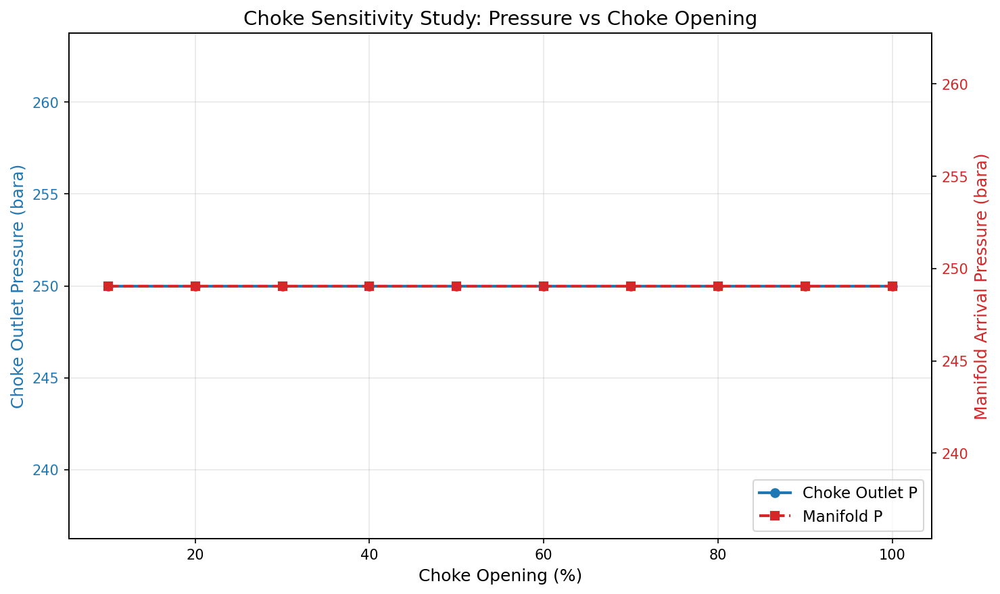
Figure 6.1: Ch15W Choke Sensitivity
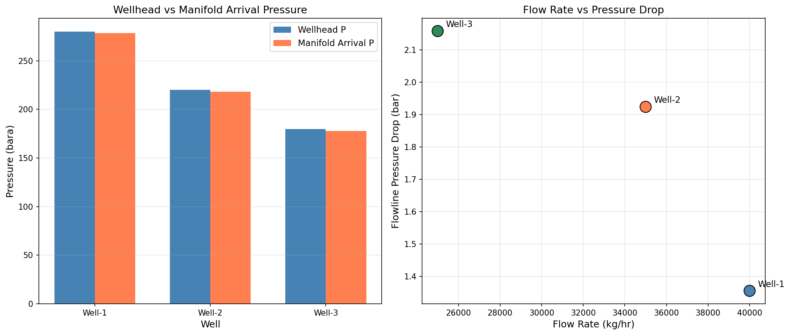
Figure 6.2: Ch15W Well Network Comparison
Part III: Subsea Systems and Transport
Subsea Production Systems
Learning Objectives
After reading this chapter, the reader will be able to:
- Describe the major components of a subsea production system and their functions
- Explain the pressure and temperature constraints that govern subsea field development
- Compare subsea vs. dry tree completion strategies for offshore fields
- Model subsea wells and flowlines using NeqSim's subsea classes
- Estimate SURF (Subsea, Umbilicals, Risers, Flowlines) costs for concept screening
- Evaluate subsea processing options including boosting, separation, and compression
- Optimize field layout by analyzing tieback distances and pressure budgets
- Select between subsea field architecture configurations for different development scenarios
6.1 Introduction to Subsea Production
Subsea production systems enable the exploitation of offshore hydrocarbon reservoirs by placing wellheads, flow control equipment, and increasingly sophisticated processing equipment on the seabed. Since the first commercial subsea completion was installed in the Gulf of Mexico in 1961, the technology has evolved dramatically — modern subsea systems operate in water depths exceeding 3,000 meters with tieback distances of over 100 kilometers.
The fundamental advantage of subsea production is economic: rather than building a fixed or floating platform above every well cluster, subsea systems tie remote wells back to an existing host facility or an onshore plant. This shared infrastructure model dramatically reduces the capital investment required to develop marginal or remote fields.
However, subsea production introduces engineering challenges that do not arise with conventional dry tree completions:
- Pressure loss in long flowlines and risers reduces the natural driving force for production
- Temperature loss along the seabed exposes the produced fluid to hydrate, wax, and slug flow risks
- Intervention difficulty makes reliability and design margins critical — a failed subsea component may require a vessel costing \$500,000/day to repair
- Flow assurance challenges are more severe due to cold seabed temperatures and long transport distances
This chapter examines the architecture, design, and optimization of subsea production systems, with NeqSim providing the computational tools for pressure-temperature analysis, tieback feasibility studies, and cost estimation.
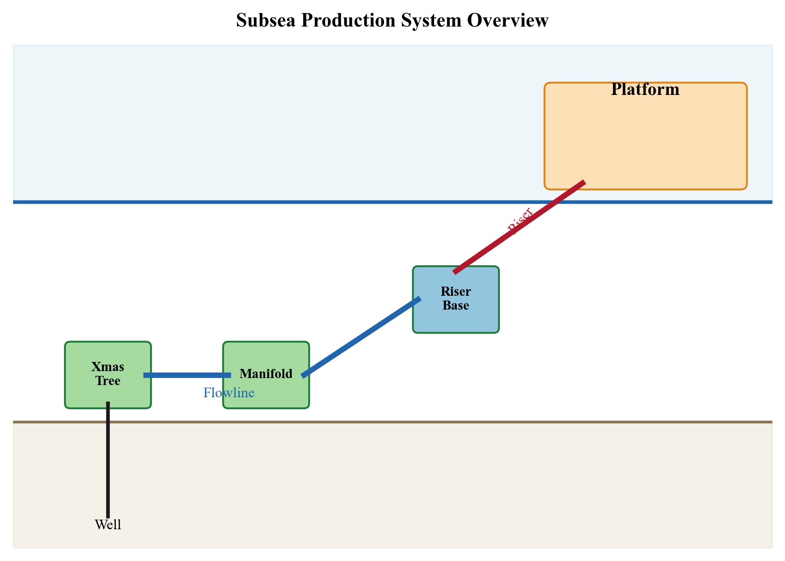
6.2 Subsea Architecture and Components
6.2.1 Subsea Christmas Trees
The subsea tree (also known as a Christmas tree or wet tree) is the primary well control device installed on the seabed. It sits atop the wellhead and provides:
- Flow control — master valves and wing valves regulate production
- Well shut-in — fail-safe closed valves for emergency and planned shutdowns
- Chemical injection points — for hydrate inhibitor, corrosion inhibitor, and scale inhibitor injection
- Monitoring — pressure and temperature sensors for well surveillance
- Intervention access — through-bore access for wireline or coiled tubing operations
Two main configurations exist:
| Feature | Vertical Tree | Horizontal Tree |
|---|---|---|
| Master valve orientation | Vertical bore | Horizontal bore |
| Tubing hanger location | In the tree | In the wellhead |
| Tree retrieval | Requires tubing pull | Independent of tubing |
| Bore access | Through tree | Through tree cap |
| Typical application | Moderate depth | Deepwater, HP/HT |
| Well intervention | More complex | Simpler |
| Cost (typical) | \$15–25M | \$20–35M |
Horizontal trees have become the standard for deepwater developments because they allow the tree to be installed and retrieved independently of the tubing string, simplifying intervention operations.
Tree Valve Functions
A subsea tree incorporates multiple valves in a specific arrangement that provides both flow regulation and well barrier functionality per NORSOK D-010:
- Master valves (upper and lower): Located in the vertical bore, these are the primary well barrier element. The lower master valve (LMV) is actuated hydraulically and is fail-safe closed — it closes automatically on loss of hydraulic supply. The upper master valve (UMV) provides redundancy.
- Wing valves (production and annulus): Located in the horizontal bore, the production wing valve (PWV) is the main flow control valve during normal operations. The annulus wing valve provides access to the annulus for pressure monitoring and chemical injection.
- Swab valve: Located at the top of the vertical bore, the swab valve allows wireline or coiled tubing access for well intervention. It is normally closed during production.
- Crossover valve: Connects the production bore to the annulus bore, enabling circulating operations during well cleanout or stimulation.
- Choke valve: An adjustable restriction downstream of the wing valve that controls the well flow rate. Modern subsea chokes are electrically actuated with position feedback for precise flow control.
The tubing head pressure (THP) — measured at the tree — is the key production surveillance parameter for subsea wells. It represents the pressure available to drive the fluid through the production system. The THP declines over field life as reservoir pressure depletes and water cut increases, and monitoring THP trends is essential for production optimization and well intervention planning:
$$ P_{THP} = P_{BHP} - \Delta P_{tubing,friction} - \rho_{fluid} \cdot g \cdot h_{TVD} $$
where $P_{BHP}$ is the bottomhole flowing pressure, $\Delta P_{tubing,friction}$ is the frictional pressure drop in the tubing, $\rho_{fluid}$ is the average fluid density, $g$ is gravitational acceleration, and $h_{TVD}$ is the true vertical depth.
6.2.2 Subsea Manifolds
A subsea manifold collects production from multiple wells and routes it into a common flowline. Key design parameters include:
- Number of slots — typically 4 to 8 well connections
- Pressure rating — matched to the maximum shut-in tubing head pressure (SITHP)
- Bore size — determines flow capacity; typically 4" to 6" production bores
- Valve configuration — individual well isolation and crossover capability
- Weight and footprint — affects installation vessel requirements
Manifolds enable the commingling of production, reducing the number of flowlines required from the subsea field to the host. For example, a field with 12 wells and two 6-slot manifolds requires only 2 production flowlines rather than 12 individual well flowlines.
Header Sizing and Pressure Drop
The manifold production header must be sized to handle the commingled flow from all connected wells without excessive pressure drop. The header diameter is typically determined by limiting the erosional velocity per API RP 14E:
$$ v_{erosional} = \frac{C}{\sqrt{\rho_{mix}}} $$
where $C$ is a constant (typically 100–150 for continuous service) and $\rho_{mix}$ is the mixture density at flowing conditions. For a 6-well manifold producing 10,000 bbl/d per well of a 35° API crude with GOR of 500 Sm³/Sm³, the header bore is typically 8"–10" nominal diameter.
The pressure drop through the manifold includes losses from header friction, branch connections, valves, and flow turns. A well-designed manifold contributes 1–3 bar of pressure drop — small relative to the flowline losses but significant when pressure budgets are tight.
Pigging Loops
In multi-well manifolds, pigging loops are incorporated to allow pipeline pigs to pass through the production header for wax removal, corrosion inhibitor distribution, and pipeline inspection. A pigging loop is a U-shaped section of pipe with pig launcher and receiver connections. The loop allows the pig to traverse the full length of the flowline from the manifold to the host, bypassing the manifold internals.
Pigging capability is essential for fields with waxy crudes or long tiebacks where regular wax management is required. Round-trip pigging (launching from the host and returning) requires additional infrastructure but enables intelligent pigging for corrosion assessment per DNV-RP-F116.
Manifold Layout Configurations
The arrangement of wells relative to manifolds defines the field topology:
| Configuration | Description | Advantages | Disadvantages |
|---|---|---|---|
| Daisy chain | Wells connected in series along a single flowline | Minimal flowline, simple | Single point of failure, pressure accumulation |
| Hub-and-spoke | Wells radiate from a central manifold | Independent well access, flexible | Longer total jumper length |
| Dual-header | Manifold has separate test and production headers | Built-in well testing | Higher manifold cost and complexity |
| Modular | Stackable manifold modules added as field develops | Phased investment | Connection complexity between modules |
The choice of manifold configuration depends on the number of wells, phasing of development (wells drilled over several years), seabed topology, and the need for future expansion.
6.2.3 Templates and Foundations
Subsea templates are structural frames installed on the seabed to guide the positioning of wells, trees, and manifolds. Templates provide:
- Well slot positioning — precise spacing for drilling and completion
- Structural support — for trees, manifolds, and jumpers
- Mudmat or suction anchor foundations — resist lateral and vertical loads
- Pipeline end terminations (PLETs) — connection points for flowlines
Template design must account for seabed soil conditions, current loads, installation tolerances, and the weight of installed equipment. A typical 4-slot template weighs 300–600 tonnes.
6.2.4 Jumpers and Connections
Jumpers are short pipe sections that connect subsea trees to manifolds, or manifolds to flowlines. They accommodate installation tolerances and thermal expansion:
- Rigid jumpers — steel pipe, typically 6"–10" diameter, with mechanical connectors
- Flexible jumpers — multi-layered flexible pipe, used where large deflections are expected
- Typical length — 20 to 100 meters
Connection systems include:
| Connection Type | Application | Advantages |
|---|---|---|
| Mechanical (clamp) | Tree to jumper | Diver or ROV installable |
| Collet connector | Flowline to PLET | High-integrity metal seal |
| Hydraulic (MQC) | Manifold to tree | Rapid make/break |
| Weld | Flowline to PLET | Highest integrity |
6.2.5 Umbilicals and Subsea Control Systems
Umbilicals are composite cables that deliver hydraulic fluid, electrical power, chemical injection, and communication signals from the host facility to subsea equipment. A modern umbilical typically contains:
- Hydraulic lines — for valve actuation (LP and HP supply), typically 2–4 tubes
- Electrical conductors — for power supply and signal transmission
- Chemical injection tubes — for MEG, methanol, corrosion inhibitor, scale inhibitor
- Fiber optic cables — for high-bandwidth communication and distributed sensing
Umbilical design is critical for long tieback distances. The hydraulic response time — the time for a pressure signal to travel from the host to a subsea valve — increases with distance and can exceed 30 minutes for tiebacks longer than 50 km, affecting emergency shutdown response times.
Electro-Hydraulic Control
The subsea control system is the nervous system of the production system. The dominant technology is the multiplexed electro-hydraulic (MUX E/H) system, which combines:
- Hydraulic power — low-pressure (207 bar) and high-pressure (345–690 bar) hydraulic fluid supplies for valve actuation. LP hydraulic opens valves; HP hydraulic provides failsafe close power stored in accumulators on each tree.
- Electrical power — typically 600V AC or 3.3 kV AC for subsea distribution, powering subsea control modules (SCMs), choke actuators, condition monitoring sensors, and subsea electronic modules (SEMs).
- Signal transmission — digital communication over electrical conductors or fiber optics. Modern systems use fiber optics for high-bandwidth telemetry including condition monitoring data, distributed temperature sensing (DTS), and acoustic sand detection.
Each subsea tree has a subsea control module (SCM) that receives commands from the master control station (MCS) on the host facility and executes valve operations locally. The SCM contains redundant electronics (dual SEM cards) for reliability.
Power Delivery to Subsea Equipment
For subsea processing equipment (pumps, compressors, separators), the power requirements far exceed what conventional umbilicals can deliver. Power delivery options include:
- Medium-voltage AC (up to 36 kV): Suitable for subsea pumps up to ~15 MW at distances up to ~50 km
- High-voltage AC (66–145 kV): Required for large subsea compression systems (20–50 MW)
- High-voltage DC (HVDC): Emerging technology for ultra-long distances (>100 km), minimizing reactive power losses
Variable speed drives (VSDs) are located either topside (with the variable-frequency power transmitted through the umbilical) or subsea (with fixed-frequency power transmitted and converted locally). Subsea VSDs reduce cable losses but add subsea complexity.
Chemical Injection
Chemical injection through umbilical tubes is essential for flow assurance management:
| Chemical | Purpose | Typical Rate | Injection Point |
|---|---|---|---|
| Methanol (MeOH) | Hydrate inhibition | 0.5–5 m³/hr | Tree, manifold, flowline |
| Mono-ethylene glycol (MEG) | Hydrate inhibition (regenerable) | 1–10 m³/hr | Tree, manifold |
| Scale inhibitor | Prevent mineral scale | 5–50 L/hr | Downhole, tree |
| Corrosion inhibitor | Protect carbon steel | 5–50 L/hr | Tree, flowline |
| Wax inhibitor | Prevent wax deposition | 0.5–2 m³/hr | Wellhead, flowline |
| Asphaltene inhibitor | Prevent asphaltene deposition | 1–20 L/hr | Downhole |
The choice between methanol and MEG for hydrate inhibition is a major design decision. Methanol is simpler (no regeneration required) but consumed continuously, making it expensive for high water-cut or long-distance fields. MEG can be regenerated and recycled but requires a topside MEG reclamation unit.
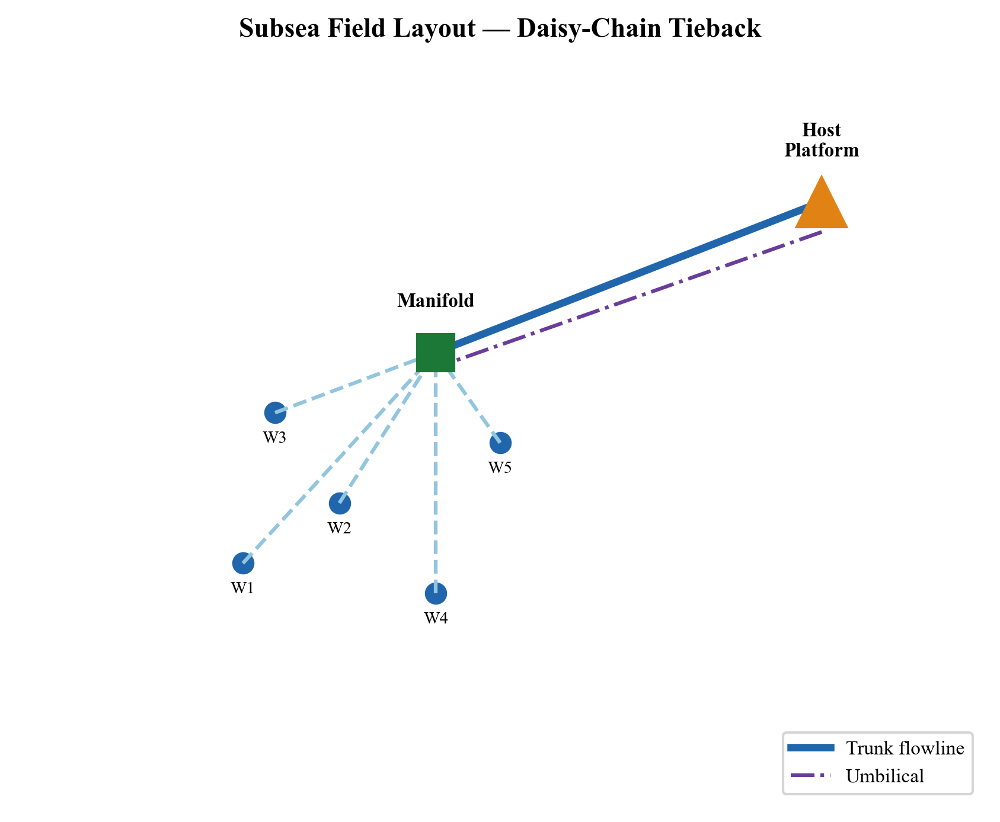
6.3 Subsea Field Architectures
The spatial arrangement of wells, manifolds, flowlines, and risers defines the subsea field architecture. The choice of architecture profoundly affects capital cost, operability, reliability, and the ability to phase development over time.
6.3.1 Architecture Types
Satellite wells are individual subsea trees connected directly to the host facility by dedicated flowlines. This is the simplest architecture and is used for developments with 1–3 wells or wells that are widely spaced and cannot be economically grouped.
Cluster manifold architecture groups 4–8 wells around a central manifold, with the manifold connected to the host by one or two production flowlines and an umbilical. This is the most common configuration for medium-sized fields.
Daisy chain architecture connects wells or manifolds in series along a single flowline. Each well or manifold tees into the flowline, which runs from the most distant well to the host. This minimizes flowline length but means that all wells share a common flowline — a blockage or failure in the flowline affects all upstream wells.
Subsea to shore eliminates the offshore host facility entirely, routing subsea production through long-distance flowlines directly to an onshore processing plant. This architecture is used for gas fields near coastlines (e.g., Ormen Lange in Norway, 120 km tieback to Nyhamna).
Template-based architecture uses a drilling template that integrates well slots, manifold functions, and pipeline connections into a single structure. This is common in the North Sea where fields are developed with a large number of closely spaced wells.
6.3.2 Architecture Comparison
| Architecture | Typical Wells | Tieback Distance | CAPEX | Flexibility | Reliability |
|---|---|---|---|---|---|
| Satellite | 1–3 | 2–20 km | Low per well, high per bbl | Low | High (independent) |
| Cluster manifold | 4–12 | 5–50 km | Medium | Medium | Medium |
| Daisy chain | 3–8 | 10–40 km | Low (shared flowline) | Low | Low (common mode) |
| Subsea to shore | 4–20+ | 50–200 km | High (long flowlines) | Low | Medium |
| Template | 4–30+ | 0.5–15 km | High (template structure) | High | High |
6.3.3 Selection Criteria
The choice of architecture is driven by:
- Reservoir geometry: Elongated reservoirs suit daisy-chain; compact reservoirs suit cluster manifolds
- Number of wells and phasing: Template architectures are efficient for large, fully defined developments; modular manifolds suit phased drilling campaigns
- Distance to host: Satellite wells are uneconomic beyond ~15 km due to per-well flowline costs; cluster manifolds become advantageous for longer tiebacks
- Seabed terrain: Rough seabed or steep slopes may dictate flowline routing and manifold placement
- Flow assurance: High wax or hydrate risk may favor architectures with pigging capability (cluster manifold with pigging loop) over daisy chain (difficult to pig)
- Expansion potential: If additional wells may be drilled later, the architecture should accommodate future tie-ins
6.4 Subsea vs. Dry Tree Completions
The choice between subsea (wet tree) and dry tree completions is one of the most consequential decisions in offshore field development. It affects capital cost, operating cost, production efficiency, intervention frequency, and ultimately recovery factor.
6.4.1 Dry Tree Platforms
Dry tree completions place the wellheads on the platform deck, providing direct access for wireline, coiled tubing, and workover operations. Platform types that support dry trees include:
- Fixed platforms — jacket or gravity-based structures in shallow water (< 300 m)
- Compliant towers — for moderate water depths (300–600 m)
- Tension Leg Platforms (TLPs) — taut-moored for deepwater (500–1,500 m)
- Spars — deep-draft cylindrical hulls (500–2,500 m)
The primary advantage of dry trees is well access. Wireline and coiled tubing operations that cost \$200,000 and take 2 days from a platform may cost \$5,000,000 and take 3 weeks from a subsea intervention vessel.
6.4.2 Decision Criteria
| Factor | Favors Subsea | Favors Dry Tree |
|---|---|---|
| Water depth > 1,500 m | ✓ | |
| Small/marginal field | ✓ | |
| Satellite development | ✓ | |
| High intervention frequency | ✓ | |
| HP/HT reservoir | ✓ (easier access) | |
| Remote location | ✓ (tieback to existing host) | |
| Long field life (> 25 years) | ✓ | |
| Harsh metocean conditions | ✓ (equipment protected on seabed) |
6.4.3 Impact on Recovery Factor
Industry data suggests that dry tree completions achieve recovery factors 3–8% higher than subsea completions for the same reservoir, primarily because:
- More frequent well intervention enables better reservoir management
- Easier installation of artificial lift (gas lift, ESPs)
- Lower wellhead back-pressure (no long flowlines)
- More production/injection wells can be economically justified
This recovery factor difference must be weighed against the capital cost difference, which often favors subsea for smaller fields or tiebacks to existing infrastructure.
6.5 Pressure and Temperature Constraints
6.5.1 The Pressure Budget
The pressure budget is the fundamental framework for subsea system design. It traces the available pressure from the reservoir to the first-stage separator:
$$ P_{res} = P_{sep} + \Delta P_{IPR} + \Delta P_{tubing} + \Delta P_{choke} + \Delta P_{flowline} + \Delta P_{riser} $$
where:
- $P_{res}$ is the average reservoir pressure [bara]
- $P_{sep}$ is the first-stage separator pressure [bara]
- $\Delta P_{IPR}$ is the pressure drop across the reservoir (inflow performance) [bar]
- $\Delta P_{tubing}$ is the tubing pressure loss from bottomhole to tree [bar]
- $\Delta P_{choke}$ is the choke pressure drop [bar]
- $\Delta P_{flowline}$ is the subsea flowline pressure loss [bar]
- $\Delta P_{riser}$ is the riser pressure loss (including hydrostatic head) [bar]
At the start of field life, when reservoir pressure is high, the pressure budget has significant margin. As the reservoir depletes, the available driving pressure decreases, and the flowline and riser pressure drops become an increasing fraction of the total. Eventually, the natural driving force is insufficient and artificial lift or subsea boosting is required.
Rearranging the pressure budget from the wellhead perspective, the pressure available to drive the fluid through the production system is the wellhead pressure minus the separator pressure:
$$ P_{wellhead} = P_{separator} + \Delta P_{flowline} + \Delta P_{riser} + \Delta P_{choke} $$
This form is useful for tieback analysis: for a given wellhead pressure (determined by reservoir conditions and well performance), the maximum tieback distance is limited by the sum of flowline, riser, and choke pressure drops. As tieback distance increases, $\Delta P_{flowline}$ grows, leaving less margin for the choke and eventually requiring reduced flow rates or subsea boosting.
6.5.2 Temperature Constraints
Temperature management is equally critical in subsea systems:
- Hydrate formation — if the fluid temperature drops below the hydrate equilibrium temperature at the flowing pressure, solid hydrates can form and block the flowline
- Wax deposition — if the temperature drops below the wax appearance temperature (WAT), wax crystals nucleate and deposit on pipe walls
- Arrival temperature — the topside process requires a minimum arrival temperature for effective separation and hydrate prevention
- Cooldown time — during an unplanned shutdown, the fluid in the flowline cools toward the seabed temperature; the time to reach the hydrate formation temperature is the available time for remediation
The temperature profile along a subsea flowline depends on:
$$ T(x) = T_{sea} + (T_{inlet} - T_{sea}) \cdot e^{-\frac{\pi D U x}{\dot{m} C_p}} $$
where:
- $T(x)$ is the fluid temperature at distance $x$ along the flowline [K]
- $T_{sea}$ is the seabed temperature [K]
- $T_{inlet}$ is the inlet temperature [K]
- $D$ is the pipe outer diameter [m]
- $U$ is the overall heat transfer coefficient [W/m²·K]
- $\dot{m}$ is the mass flow rate [kg/s]
- $C_p$ is the specific heat capacity [J/kg·K]
6.5.3 NeqSim Pressure-Temperature Analysis
NeqSim's PipeBeggsAndBrills class calculates both pressure and temperature profiles along subsea flowlines and risers:
from neqsim import jneqsim
# Define a typical subsea production fluid
fluid = jneqsim.thermo.system.SystemSrkEos(273.15 + 70.0, 200.0)
fluid.addComponent("nitrogen", 0.8)
fluid.addComponent("CO2", 3.5)
fluid.addComponent("methane", 65.0)
fluid.addComponent("ethane", 8.5)
fluid.addComponent("propane", 5.0)
fluid.addComponent("i-butane", 1.0)
fluid.addComponent("n-butane", 2.5)
fluid.addComponent("i-pentane", 1.0)
fluid.addComponent("n-pentane", 1.5)
fluid.addComponent("n-hexane", 2.0)
fluid.addComponent("n-heptane", 4.0)
fluid.addComponent("n-octane", 3.0)
fluid.addComponent("water", 2.2)
fluid.setMixingRule("classic")
fluid.setMultiPhaseCheck(True)
# Create feed stream at wellhead conditions
Stream = jneqsim.process.equipment.stream.Stream
wellstream = Stream("Subsea Wellstream", fluid)
wellstream.setFlowRate(80000.0, "kg/hr")
wellstream.setTemperature(70.0, "C")
wellstream.setPressure(180.0, "bara")
# Model 15 km subsea flowline
PipeBeggsAndBrills = jneqsim.process.equipment.pipeline.PipeBeggsAndBrills
flowline = PipeBeggsAndBrills("Subsea Flowline", wellstream)
flowline.setPipeWallRoughness(5.0e-5)
flowline.setLength(15.0) # km
flowline.setElevation(0.0) # horizontal
flowline.setDiameter(0.254) # 10-inch ID in meters
flowline.setNumberOfIncrements(50)
flowline.setOuterTemperature(277.15) # 4°C seabed temperature
# Build and run
ProcessSystem = jneqsim.process.processmodel.ProcessSystem
process = ProcessSystem()
process.add(wellstream)
process.add(flowline)
process.run()
# Read arrival conditions
arrival_T = flowline.getOutletStream().getTemperature("C")
arrival_P = flowline.getOutletStream().getPressure("bara")
delta_P = wellstream.getPressure("bara") - arrival_P
print(f"Arrival temperature: {arrival_T:.1f} °C")
print(f"Arrival pressure: {arrival_P:.1f} bara")
print(f"Pressure drop: {delta_P:.1f} bar")
6.5.4 Complete Subsea Tieback Model
A comprehensive tieback model includes the well tubing, choke, subsea flowline, and riser — the full pressure path from bottomhole to topside separator. This NeqSim example models each segment:
from neqsim import jneqsim
# Define production fluid
fluid = jneqsim.thermo.system.SystemSrkEos(273.15 + 85.0, 280.0)
fluid.addComponent("nitrogen", 0.6)
fluid.addComponent("CO2", 2.8)
fluid.addComponent("methane", 62.0)
fluid.addComponent("ethane", 7.5)
fluid.addComponent("propane", 5.0)
fluid.addComponent("i-butane", 1.2)
fluid.addComponent("n-butane", 2.8)
fluid.addComponent("i-pentane", 1.0)
fluid.addComponent("n-pentane", 1.5)
fluid.addComponent("n-hexane", 2.5)
fluid.addComponent("n-heptane", 4.5)
fluid.addComponent("n-octane", 3.5)
fluid.addComponent("water", 5.1)
fluid.setMixingRule("classic")
fluid.setMultiPhaseCheck(True)
Stream = jneqsim.process.equipment.stream.Stream
PipeBeggsAndBrills = jneqsim.process.equipment.pipeline.PipeBeggsAndBrills
ThrottlingValve = jneqsim.process.equipment.valve.ThrottlingValve
ProcessSystem = jneqsim.process.processmodel.ProcessSystem
# --- Bottomhole stream ---
bhp_stream = Stream("Bottomhole", fluid)
bhp_stream.setFlowRate(60000.0, "kg/hr")
bhp_stream.setTemperature(85.0, "C")
bhp_stream.setPressure(280.0, "bara")
# --- Well tubing (3500 m MD, ~3200 m TVD) ---
tubing = PipeBeggsAndBrills("Well Tubing", bhp_stream)
tubing.setPipeWallRoughness(2.5e-5)
tubing.setLength(3.5) # 3.5 km measured depth
tubing.setElevation(-3200.0) # negative = upward flow
tubing.setDiameter(0.1143) # 4.5-inch tubing ID
tubing.setNumberOfIncrements(30)
tubing.setOuterTemperature(285.15) # geothermal average ~12 C
# --- Subsea choke ---
choke = ThrottlingValve("Subsea Choke", tubing.getOutletStream())
choke.setOutletPressure(150.0) # choke outlet pressure
# --- Subsea flowline (20 km horizontal on seabed) ---
flowline = PipeBeggsAndBrills("Subsea Flowline", choke.getOutletStream())
flowline.setPipeWallRoughness(5.0e-5)
flowline.setLength(20.0)
flowline.setElevation(0.0)
flowline.setDiameter(0.254) # 10-inch
flowline.setNumberOfIncrements(50)
flowline.setOuterTemperature(277.15) # 4 C seabed
# --- Riser (400 m water depth) ---
riser = PipeBeggsAndBrills("Production Riser", flowline.getOutletStream())
riser.setPipeWallRoughness(5.0e-5)
riser.setLength(0.5) # ~500 m riser length
riser.setElevation(400.0) # 400 m vertical rise
riser.setDiameter(0.254)
riser.setNumberOfIncrements(15)
riser.setOuterTemperature(280.15)
# --- Build and run ---
process = ProcessSystem()
process.add(bhp_stream)
process.add(tubing)
process.add(choke)
process.add(flowline)
process.add(riser)
process.run()
# --- Report pressure budget ---
P_bhp = bhp_stream.getPressure("bara")
P_wh = tubing.getOutletStream().getPressure("bara")
P_choke_out = choke.getOutletStream().getPressure("bara")
P_fl_out = flowline.getOutletStream().getPressure("bara")
P_topside = riser.getOutletStream().getPressure("bara")
T_topside = riser.getOutletStream().getTemperature("C")
print("=== Subsea Tieback Pressure Budget ===")
print(f"Bottomhole pressure: {P_bhp:.1f} bara")
print(f"Wellhead pressure: {P_wh:.1f} bara (tubing dP = {P_bhp - P_wh:.1f} bar)")
print(f"After choke: {P_choke_out:.1f} bara (choke dP = {P_wh - P_choke_out:.1f} bar)")
print(f"Flowline outlet: {P_fl_out:.1f} bara (flowline dP = {P_choke_out - P_fl_out:.1f} bar)")
print(f"Topside arrival: {P_topside:.1f} bara (riser dP = {P_fl_out - P_topside:.1f} bar)")
print(f"Topside arrival temp: {T_topside:.1f} C")
6.6 Tieback Distance Analysis
6.6.1 Maximum Tieback Distance
The maximum tieback distance is determined by the intersection of three constraints:
- Pressure constraint — the available pressure drop in the flowline (total pressure budget minus tubing, choke, and riser losses) limits distance
- Temperature constraint — the arrival temperature must remain above the hydrate equilibrium temperature (with safety margin) or the WAT
- Cooldown constraint — the time for the fluid to cool below the hydrate temperature during a shutdown must exceed the minimum intervention time
For a given set of operating conditions, the maximum tieback distance is:
$$ L_{max} = \min\left(L_{max,\Delta P}, \, L_{max,T_{arr}}, \, L_{max,t_{cool}}\right) $$
The pressure-limited distance can be estimated from the Beggs and Brill correlation or simplified as:
$$ L_{max,\Delta P} = \frac{\Delta P_{available} \cdot D^5}{\lambda \cdot \rho_{mix} \cdot v^2 / 2} $$
where $\Delta P_{available}$ is the pressure budget allocated to the flowline, $D$ is the diameter, $\lambda$ is the friction factor, $\rho_{mix}$ is the mixture density, and $v$ is the mixture velocity. This simplified form illustrates the strong dependence on diameter (fifth power) — doubling the pipe diameter increases the pressure-limited tieback distance by a factor of 32.
The temperature-limited distance is derived from the exponential temperature decay equation:
$$ L_{max,T_{arr}} = -\frac{\dot{m} C_p}{\pi D U} \ln\left(\frac{T_{min} - T_{sea}}{T_{inlet} - T_{sea}}\right) $$
where $T_{min}$ is the minimum acceptable arrival temperature (hydrate equilibrium temperature plus safety margin).
6.6.2 Tieback Feasibility Study with NeqSim
A tieback feasibility study systematically evaluates production rate and arrival conditions over a range of flowline lengths:
from neqsim import jneqsim
import json
# Fluid definition (as above - reused from Section 6.5.3)
fluid = jneqsim.thermo.system.SystemSrkEos(273.15 + 70.0, 200.0)
fluid.addComponent("nitrogen", 0.8)
fluid.addComponent("CO2", 3.5)
fluid.addComponent("methane", 65.0)
fluid.addComponent("ethane", 8.5)
fluid.addComponent("propane", 5.0)
fluid.addComponent("i-butane", 1.0)
fluid.addComponent("n-butane", 2.5)
fluid.addComponent("i-pentane", 1.0)
fluid.addComponent("n-pentane", 1.5)
fluid.addComponent("n-hexane", 2.0)
fluid.addComponent("n-heptane", 4.0)
fluid.addComponent("n-octane", 3.0)
fluid.addComponent("water", 2.2)
fluid.setMixingRule("classic")
fluid.setMultiPhaseCheck(True)
Stream = jneqsim.process.equipment.stream.Stream
PipeBeggsAndBrills = jneqsim.process.equipment.pipeline.PipeBeggsAndBrills
ProcessSystem = jneqsim.process.processmodel.ProcessSystem
# Parametric study: vary tieback distance
distances_km = [5, 10, 15, 20, 30, 40, 50]
results = []
for dist in distances_km:
test_fluid = fluid.clone()
feed = Stream("Feed", test_fluid)
feed.setFlowRate(80000.0, "kg/hr")
feed.setTemperature(70.0, "C")
feed.setPressure(180.0, "bara")
pipe = PipeBeggsAndBrills("Flowline", feed)
pipe.setPipeWallRoughness(5.0e-5)
pipe.setLength(float(dist))
pipe.setElevation(0.0)
pipe.setDiameter(0.254)
pipe.setNumberOfIncrements(50)
pipe.setOuterTemperature(277.15)
proc = ProcessSystem()
proc.add(feed)
proc.add(pipe)
proc.run()
arrival_T = pipe.getOutletStream().getTemperature("C")
arrival_P = pipe.getOutletStream().getPressure("bara")
results.append({
"distance_km": dist,
"arrival_T_C": round(arrival_T, 1),
"arrival_P_bara": round(arrival_P, 1),
"dP_bar": round(180.0 - arrival_P, 1)
})
# Print results table
print(f"{'Distance (km)':>14} {'Arrival T (°C)':>15} {'Arrival P (bara)':>17} {'dP (bar)':>10}")
for r in results:
print(f"{r['distance_km']:>14} {r['arrival_T_C']:>15.1f} {r['arrival_P_bara']:>17.1f} {r['dP_bar']:>10.1f}")
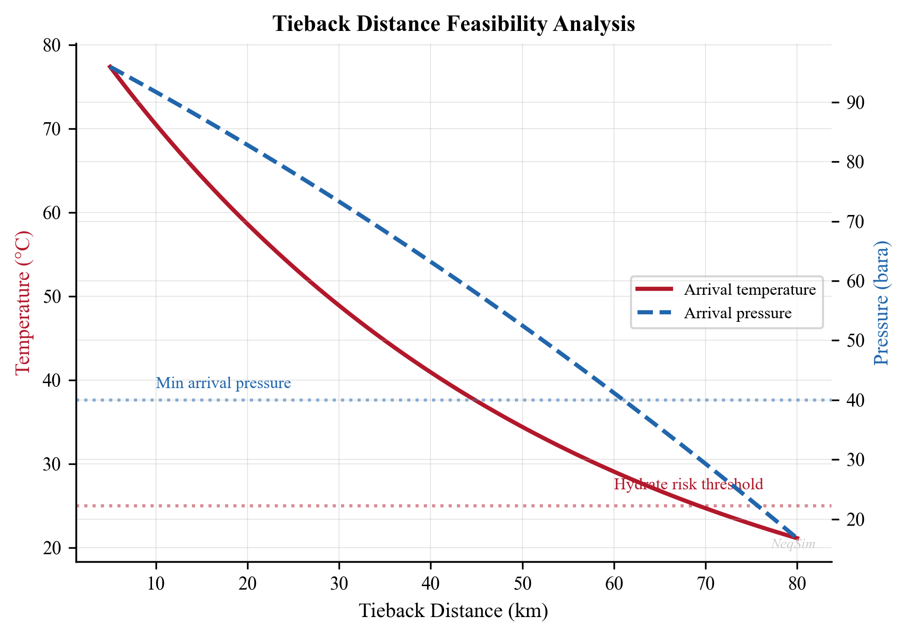
6.6.3 Typical Tieback Distances
Industry experience provides benchmarks for achievable tieback distances:
| Fluid Type | Typical Max Distance (uninsulated) | With Insulation | With Boosting |
|---|---|---|---|
| Dry gas | 80–150 km | 150–200 km | > 200 km |
| Wet gas / condensate | 30–60 km | 50–80 km | 80–120 km |
| Light oil (GOR > 200) | 20–40 km | 30–50 km | 50–80 km |
| Heavy/waxy oil | 5–15 km | 10–25 km | 25–50 km |
These distances assume typical pipe sizes (8"–14"), seabed temperatures of 2–5°C, and host separator pressures of 20–40 bara.
6.7 Subsea Processing
6.7.1 Motivation for Subsea Processing
Subsea processing addresses the declining pressure budget as reservoirs deplete. By placing processing equipment — pumps, separators, or compressors — on the seabed, the effective tieback distance is extended and production is maintained longer without topside modifications.
The key drivers for subsea processing are:
- Pressure boosting — adds energy to overcome flowline friction and riser hydrostatic head
- Separation — removes water or gas on the seabed to reduce flowline hydraulic load
- Gas compression — compresses gas to maintain delivery pressure as reservoir pressure declines
- Sand management — removes sand before it enters flowlines
6.7.2 Subsea Boosting (Multiphase Pumps)
Subsea multiphase pumps are the most widely deployed form of subsea processing. They boost the total well stream — gas, oil, and water — without prior separation. Key technologies include:
| Technology | Principle | Typical dP | GVF Tolerance | Power Range |
|---|---|---|---|---|
| Helico-axial (Framo/OneSubsea) | Axial impellers with helical design | 30–100 bar | Up to 95% | 2–12 MW |
| Twin-screw (Leistritz/Bornemann) | Positive displacement screw pump | 20–80 bar | Up to 100% | 1–5 MW |
| Counter-rotating axial | Counter-rotating impeller stages | 20–60 bar | Up to 90% | 2–8 MW |
| Electrical submersible pump (ESP) | Centrifugal multistage | 50–200 bar | Up to 70% | 0.5–3 MW |
Helico-axial pumps are the dominant technology for subsea boosting. The Framo helico-axial pump uses a combination of an axial impeller and a helical inducer to handle gas–liquid mixtures. The impeller accelerates the fluid, and a diffuser converts kinetic energy to pressure. Multiple stages (typically 4–12) are stacked to achieve the required differential pressure. The key advantage is tolerance of high gas volume fractions (GVF up to 95%) without the slugging and vibration problems that affect conventional centrifugal pumps.
Twin-screw pumps are positive displacement machines that handle virtually any GVF, including 100% liquid or 100% gas. Two intermeshing screws trap and transport fluid volumes along the screw axis. They are particularly suited for low-flow, high-differential-pressure applications and viscous fluids. However, they have lower volumetric capacity than helico-axial pumps and are more sensitive to sand erosion.
Subsea boosting has been commercially proven on multiple Norwegian Continental Shelf (NCS) fields including Åsgard (2015), Gullfaks (2015), and Vigdis (2007).
6.7.3 Subsea Separation and Water Injection
Subsea separation separates the produced fluid into gas and liquid phases on the seabed. The separated streams are transported in dedicated flowlines:
- Gas — flows to the host at higher velocity but lower frictional loss per unit mass
- Liquid — can be boosted by a less complex liquid pump
The Tordis subsea separation system (installed 2007) demonstrated subsea separation and water reinjection, removing water on the seabed and reinjecting it into a disposal well, reducing the hydraulic load on the flowline and topside produced water treatment.
Subsea water separation and reinjection (SSBI) offers substantial benefits for high water-cut fields:
- Reduces the volume of fluid transported through flowlines by 30–60%
- Reduces topside produced water treatment requirements
- Enables reinjection for pressure support close to the producing wells
- Extends field life by reducing the hydraulic load that limits production rate
Design challenges for subsea separators include limited space for gravity settling (compact separators use cyclonic or pipe separator technology), sand handling, and the need for subsea water treatment before reinjection (to avoid reservoir plugging).
6.7.4 Subsea Wet Gas Compression
Subsea wet gas compression is the most technically challenging form of subsea processing. The Åsgard subsea compression system (2015) was the world's first installation, compressing wet gas (gas with entrained liquid droplets) on the seabed at 300 m water depth.
The subsea compression station at Åsgard consists of two parallel compression trains, each with an inlet liquid knockout drum (subsea scrubber), a centrifugal compressor driven by a high-speed electric motor, an anti-surge recycle system, and a subsea cooler downstream of the compressor.
Wet gas compression differs fundamentally from dry gas compression:
| Parameter | Dry Gas Compression | Wet Gas Compression |
|---|---|---|
| Inlet liquid content | < 0.1% by volume | 1–5% by volume |
| Compressor type | Standard centrifugal | Modified centrifugal with erosion-resistant internals |
| Anti-surge control | Conventional recycle | Fast-acting recycle with liquid management |
| Downstream cooling | Gas cooler only | Multiphase cooler |
| Power supply | Topside | Long-distance subsea electrical cable |
Key design challenges include:
- Liquid handling in compressor impellers
- Anti-surge control without fast-acting recycle valves
- Long-distance electrical power supply (up to 60 MW at 36 kV)
- Reliability requirements (5+ year uninterrupted operation target)
6.7.5 Subsea Power Distribution
Powering subsea processing equipment requires a subsea electrical infrastructure that is itself a major engineering system:
- Subsea transformers: Step voltage up for long-distance transmission, step down for local distribution
- Subsea switchgear: Circuit breakers and contactors for equipment isolation and protection
- Subsea variable speed drives (VSD): Control pump and compressor speed for flow matching
- Subsea power cables: Medium- or high-voltage cables from host to subsea distribution
The total power demand for a subsea processing station can range from 5 MW (single pump) to 60 MW (compression and pumping), making power delivery one of the most challenging aspects of subsea processing.
6.7.6 Technology Readiness and Deployment
The maturity of subsea processing technologies varies:
| Technology | TRL | Field Deployments | Key Installations |
|---|---|---|---|
| Multiphase pumping | 9 | > 30 | Vigdis, Pazflor, Jack/St. Malo |
| Single-phase liquid pumping | 9 | > 50 | Many fields worldwide |
| Subsea separation (gas/liquid) | 8 | 5–10 | Tordis, Perdido, Marlim |
| Subsea water separation + reinjection | 7–8 | 3–5 | Tordis, Marlim |
| Wet gas compression | 7–8 | 2 | Åsgard, Gullfaks |
| Subsea power distribution | 7 | 5+ | Åsgard, Ormen Lange |
| All-electric subsea (no hydraulics) | 5–6 | Pilots | Conceptual |
TRL = Technology Readiness Level (1–9, where 9 = fully qualified and deployed)
6.7.7 Modeling Subsea Boosting with NeqSim
The effect of subsea boosting on production can be modeled by inserting a pressure increase between the flowline and riser:
from neqsim import jneqsim
# Define fluid
fluid = jneqsim.thermo.system.SystemSrkEos(273.15 + 60.0, 150.0)
fluid.addComponent("methane", 72.0)
fluid.addComponent("ethane", 8.0)
fluid.addComponent("propane", 5.0)
fluid.addComponent("n-butane", 2.5)
fluid.addComponent("n-pentane", 1.5)
fluid.addComponent("n-hexane", 2.0)
fluid.addComponent("n-heptane", 3.0)
fluid.addComponent("n-octane", 2.5)
fluid.addComponent("water", 3.5)
fluid.setMixingRule("classic")
fluid.setMultiPhaseCheck(True)
Stream = jneqsim.process.equipment.stream.Stream
PipeBeggsAndBrills = jneqsim.process.equipment.pipeline.PipeBeggsAndBrills
Compressor = jneqsim.process.equipment.compressor.Compressor
ProcessSystem = jneqsim.process.processmodel.ProcessSystem
# Wellhead stream
wellstream = Stream("Wellstream", fluid)
wellstream.setFlowRate(60000.0, "kg/hr")
wellstream.setTemperature(60.0, "C")
wellstream.setPressure(120.0, "bara")
# Subsea flowline (30 km)
flowline = PipeBeggsAndBrills("Subsea Flowline", wellstream)
flowline.setPipeWallRoughness(5.0e-5)
flowline.setLength(30.0)
flowline.setElevation(0.0)
flowline.setDiameter(0.254)
flowline.setNumberOfIncrements(50)
flowline.setOuterTemperature(277.15)
# Subsea booster (modeled as a compressor for pressure increase)
booster = Compressor("Subsea Booster", flowline.getOutletStream())
booster.setOutletPressure(100.0) # boost back up to 100 bara
# Riser (500 m water depth, vertical)
riser = PipeBeggsAndBrills("Riser", booster.getOutletStream())
riser.setPipeWallRoughness(5.0e-5)
riser.setLength(0.6) # ~600 m riser length
riser.setElevation(500.0) # 500 m water depth
riser.setDiameter(0.254)
riser.setNumberOfIncrements(20)
riser.setOuterTemperature(280.15)
# Build process
process = ProcessSystem()
process.add(wellstream)
process.add(flowline)
process.add(booster)
process.add(riser)
process.run()
# Results
topside_P = riser.getOutletStream().getPressure("bara")
topside_T = riser.getOutletStream().getTemperature("C")
booster_power = booster.getPower("kW")
print(f"Topside arrival pressure: {topside_P:.1f} bara")
print(f"Topside arrival temperature: {topside_T:.1f} °C")
print(f"Subsea booster power: {booster_power:.0f} kW")
6.8 Subsea Well Design with NeqSim
6.8.1 The SubseaWell Class
NeqSim provides the SubseaWell class for modeling subsea well completions, including mechanical design calculations per API 5C3 and NORSOK D-010:
from neqsim import jneqsim
# Create a production fluid
fluid = jneqsim.thermo.system.SystemSrkEos(273.15 + 90.0, 350.0)
fluid.addComponent("methane", 70.0)
fluid.addComponent("ethane", 8.0)
fluid.addComponent("propane", 5.0)
fluid.addComponent("n-butane", 2.0)
fluid.addComponent("n-pentane", 1.5)
fluid.addComponent("n-heptane", 5.0)
fluid.addComponent("n-octane", 3.5)
fluid.addComponent("water", 5.0)
fluid.setMixingRule("classic")
Stream = jneqsim.process.equipment.stream.Stream
stream = Stream("Well Stream", fluid)
stream.setFlowRate(50000.0, "kg/hr")
stream.setTemperature(90.0, "C")
stream.setPressure(250.0, "bara")
stream.run()
# Create subsea well
SubseaWell = jneqsim.process.equipment.subsea.SubseaWell
well = SubseaWell("Producer-1", stream)
well.setWellType(SubseaWell.WellType.OIL_PRODUCER)
well.setMeasuredDepth(3800.0) # Total measured depth [m]
well.setWaterDepth(350.0) # Water depth [m]
well.setMaxWellheadPressure(345.0) # Maximum WHSP [bara]
well.setReservoirPressure(400.0) # Initial reservoir pressure [bara]
well.setProductionCasingOD(9.625) # 9-5/8" casing
well.setProductionCasingDepth(3800.0) # Casing set depth [m]
well.setTubingOD(5.5) # 5-1/2" tubing
well.setTubingWeight(23.0) # lb/ft
well.setTubingGrade("L80") # API 5CT grade
well.setHasDHSV(True) # Downhole safety valve
well.setPrimaryBarrierElements(3) # NORSOK D-010
well.setSecondaryBarrierElements(3) # NORSOK D-010
well.setDrillingDays(45.0) # Drilling duration
well.setCompletionDays(25.0) # Completion duration
# Run mechanical design
well.initMechanicalDesign()
WellMechanicalDesign = jneqsim.process.mechanicaldesign.subsea.WellMechanicalDesign
design = well.getMechanicalDesign()
design.calcDesign()
design.calculateCostEstimate()
# Print results
json_output = design.toJson()
print(json_output)
6.8.2 Casing Design per API 5C3
The mechanical design calculation follows API Bull 5C3 for casing strength:
Burst rating:
$$ P_{burst} = \frac{0.875 \times 2 \times Y_p \times t}{D_o} $$
Collapse rating (for the yield strength collapse regime):
$$ P_{collapse} = 2 \times Y_p \left(\frac{D_o/t - 1}{(D_o/t)^2}\right) $$
Tension rating:
$$ F_{tension} = Y_p \times A_s $$
where:
- $Y_p$ is the minimum yield strength [psi]
- $t$ is the wall thickness [in]
- $D_o$ is the outer diameter [in]
- $A_s$ is the cross-sectional area of the pipe body [in²]
Design factors per NORSOK D-010:
| Load Case | Design Factor |
|---|---|
| Burst (production casing) | 1.10 |
| Collapse (production casing) | 1.10 |
| Tension | 1.30 |
| Triaxial (VME) | 1.25 |
6.9 SURF Cost Estimation
6.9.1 Cost Components
SURF (Subsea, Umbilicals, Risers, Flowlines) costs typically represent 30–50% of the total development cost for a subsea field. The main cost components are:
| Component | Typical Cost Range | Key Cost Drivers |
|---|---|---|
| Subsea trees | \$15–35M each | Pressure rating, bore size, controls |
| Manifold | \$25–60M each | Number of slots, pressure rating |
| Flowlines | \$1,500–5,000/m | Diameter, insulation, installation method |
| Umbilicals | \$200–1,000/m | Number of cores, length |
| Risers (flexible) | \$3,000–8,000/m | Diameter, water depth |
| Risers (steel catenary) | \$2,000–5,000/m | Diameter, fatigue design |
| Installation | 30–60% of hardware | Vessel day rates, weather |
6.9.2 Cost Estimation Approach
NeqSim's WellMechanicalDesign class includes parametric cost estimation for subsea wells. For the complete SURF cost, a structured estimation approach combines well costs with infrastructure costs:
from neqsim import jneqsim
# Subsea field parameters
n_wells = 6
n_manifolds = 2
flowline_length_km = 20.0
umbilical_length_km = 22.0
riser_length_m = 400.0
water_depth_m = 350.0
# Parametric cost estimates (MNOK, 2024 basis)
tree_cost = 25.0 # per tree
manifold_cost = 40.0 # per manifold
flowline_cost_per_km = 15.0 # includes installation
umbilical_cost_per_km = 8.0
riser_cost_per_m = 0.005 # flexible riser
# Calculate SURF cost
surf_cost = (
n_wells * tree_cost +
n_manifolds * manifold_cost +
flowline_length_km * flowline_cost_per_km +
umbilical_length_km * umbilical_cost_per_km +
riser_length_m * riser_cost_per_m * 2 # production + gas lift
)
print(f"Subsea trees: {n_wells * tree_cost:.0f} MNOK")
print(f"Manifolds: {n_manifolds * manifold_cost:.0f} MNOK")
print(f"Flowlines: {flowline_length_km * flowline_cost_per_km:.0f} MNOK")
print(f"Umbilicals: {umbilical_length_km * umbilical_cost_per_km:.0f} MNOK")
print(f"Risers: {riser_length_m * riser_cost_per_m * 2:.0f} MNOK")
print(f"Total SURF: {surf_cost:.0f} MNOK")
6.9.3 Cost Sensitivity
The dominant cost drivers for SURF systems are:
- Water depth — affects riser length, installation vessel requirements, and equipment ratings
- Tieback distance — flowline and umbilical costs scale linearly with distance
- Number of wells — each well requires a tree, connections, and control system
- Pipe diameter — larger pipes cost more per meter but may enable higher production
- Insulation — wet insulation (syntactic foam) adds \$500–2,000/m; pipe-in-pipe adds \$2,000–5,000/m
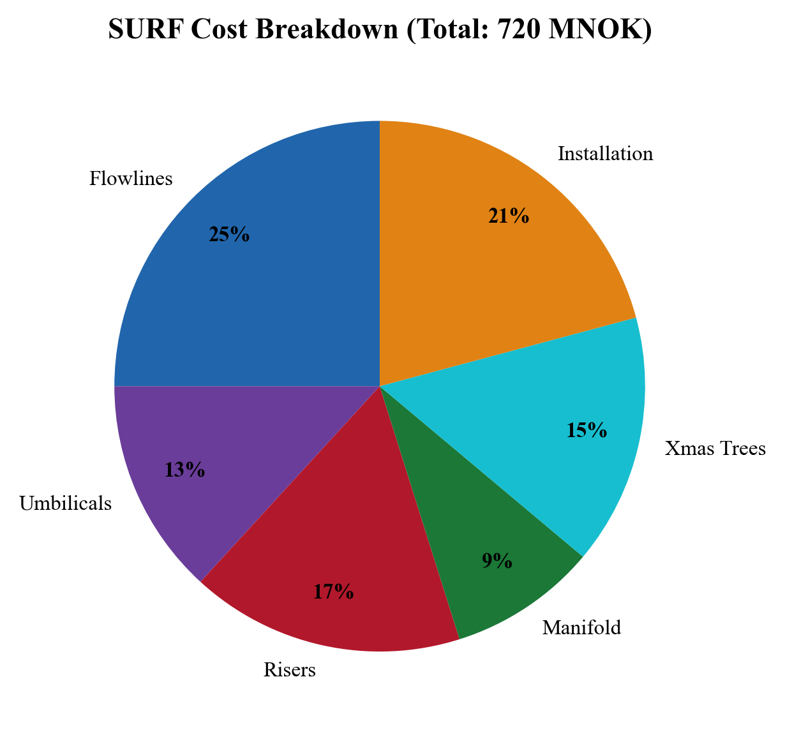
6.10 Field Layout Optimization
6.10.1 Layout Considerations
The subsea field layout — the spatial arrangement of wells, manifolds, flowlines, and risers — affects both capital cost and production performance:
- Well spacing — too close risks interference; too far increases jumper lengths
- Manifold location — should minimize total jumper and flowline lengths
- Flowline routing — must avoid geohazards, existing infrastructure, and excessive free spans
- Riser connection — the point where the flowline transitions to a riser affects both cost and flow assurance
6.10.2 Optimization Approach
Field layout optimization is typically a multi-objective problem:
$$ \min_{x} \left[ C_{SURF}(x), \, -Q_{prod}(x), \, R_{flow\text{-}assurance}(x) \right] $$
where $x$ is the vector of layout variables (well positions, manifold locations, pipe routes), $C_{SURF}$ is the SURF cost, $Q_{prod}$ is the total production, and $R$ is a flow assurance risk metric.
In practice, the optimization is performed in stages:
- Reservoir-driven well placement — optimized by reservoir engineers for drainage
- Manifold clustering — group wells into manifold clusters to minimize inter-connections
- Routing and sizing — optimize pipe routes, diameters, and insulation levels
- Flow assurance verification — confirm the layout meets hydrate, wax, and slugging criteria
6.11 Subsea Coolers and Subsea Processing Integration
In some fields, particularly those with high reservoir temperatures or gas condensate fluids, a subsea cooler may be installed to reduce the fluid temperature before entering long flowlines. The reduced temperature decreases the specific volume of the gas phase, reducing velocity and friction pressure drop.
However, subsea cooling must be balanced against flow assurance risks — lower temperatures bring the fluid closer to hydrate and wax formation conditions. The optimal subsea cooler exit temperature is typically:
$$ T_{cooler,out} = T_{hydrate}(P_{cooler,out}) + \Delta T_{margin} $$
where $\Delta T_{margin}$ is a safety margin, typically 5–10°C above the hydrate equilibrium temperature.
6.12 NeqSim Implementation Summary
The key NeqSim classes used for subsea production system analysis are:
| NeqSim Class | Application |
|---|---|
SubseaWell |
Subsea well definition, completion parameters |
WellMechanicalDesign |
Casing design (API 5C3), barrier verification (NORSOK D-010), cost estimation |
PipeBeggsAndBrills |
Multiphase flow in flowlines, risers, and well tubing |
Stream |
Define wellhead and arrival conditions |
Compressor |
Model subsea boosting pressure increase |
ThrottlingValve |
Model subsea choke for flow control |
Separator |
Topside separation (for pressure budget endpoint) |
ProcessSystem |
Compose the complete subsea-to-topside system |
ThermodynamicOperations |
Hydrate equilibrium calculations for flow assurance |
6.13 Summary
Key points from this chapter:
- Subsea production systems enable the development of offshore fields by placing wellheads and equipment on the seabed with tiebacks to host facilities
- The major components are subsea trees, manifolds, flowlines, risers, and umbilicals
- Subsea tree valve functions (master, wing, swab, choke) provide both flow control and well barrier integrity per NORSOK D-010
- Manifold design includes header sizing for commingled flow, pigging loops for pipeline maintenance, and layout configurations (hub-spoke, daisy chain, dual-header)
- The pressure budget — from reservoir to separator — determines the maximum production rate and tieback distance; the wellhead pressure must overcome flowline, riser, and choke pressure drops
- Temperature management is critical to prevent hydrate and wax formation in subsea flowlines
- Subsea field architectures (satellite, cluster manifold, daisy chain, subsea to shore) each have distinct advantages depending on field size, distance, and phasing
- Subsea processing technologies — multiphase pumping (helico-axial, twin-screw), separation, and wet gas compression — extend field life and tieback distances
- Power delivery to subsea processing equipment is a major design challenge, requiring medium- or high-voltage subsea electrical systems
- Umbilicals deliver hydraulic control, electrical power, and chemical injection (methanol, MEG, scale inhibitor) to subsea equipment
- NeqSim's
SubseaWell,PipeBeggsAndBrills, andProcessSystemclasses enable comprehensive subsea system modeling from bottomhole to topside - SURF costs typically represent 30–50% of total subsea development costs and are dominated by flowline length and water depth
- Field layout optimization balances cost, production, and flow assurance objectives
Exercises
- Exercise 6.1: For the reference fluid in Section 6.5.3, calculate the pressure and temperature at the end of a 25 km subsea flowline for pipe diameters of 8", 10", and 12". Plot the results and identify the minimum acceptable diameter if the arrival temperature must be at least 20°C above the hydrate equilibrium temperature.
- Exercise 6.2: Using the subsea well model in Section 6.8.1, modify the water depth from 350 m to 1,500 m and recalculate the well cost estimate. What is the approximate cost increase per meter of additional water depth?
- Exercise 6.3: A subsea field has 8 wells producing a gas condensate fluid (GOR = 3,000 Sm³/Sm³). The water depth is 800 m and the distance to the host is 35 km. Using NeqSim, model the complete system (wells → manifold → flowline → riser → separator at 60 bara) and determine: (a) the total pressure drop, (b) the arrival temperature, (c) whether subsea boosting is needed.
- Exercise 6.4: Perform a SURF cost estimate for the field in Exercise 6.3 using the parametric cost model in Section 6.9.2. Calculate the SURF cost for two alternative layouts: (a) one manifold with all 8 wells, and (b) two manifolds with 4 wells each connected by a gathering flowline.
- Exercise 6.5: Repeat the tieback distance analysis in Section 6.6.2 with and without subsea boosting (50 bar pressure increase). Plot the additional distance achievable with boosting as a function of flowline diameter.
- Exercise 6.6: Estimate the hydraulic response time for a subsea control system with a 60 km umbilical. Assume a 3/8" hydraulic tube, 345 bar working pressure, and standard hydraulic fluid. Discuss the implications for emergency shutdown system design.
- Exercise 6.7: Compare the pressure budgets for a satellite well (10 km direct tieback) and a manifold well (5 km jumper to manifold, then 15 km flowline) for the same wellhead conditions. Which architecture delivers lower topside arrival pressure, and why?
- Exercise 6.8: A late-life subsea field has declining wellhead pressures (from 180 bara to 80 bara over 10 years). Using the subsea boosting model from Section 6.7.7, determine the year at which boosting becomes necessary to maintain a topside arrival pressure of 30 bara through a 20 km flowline and 400 m riser.
- Bai, Y. and Bai, Q. (2019). Subsea Engineering Handbook, 2nd Edition. Gulf Professional Publishing.
- Gudmestad, O.T. (2015). Marine Technology and Operations: Theory & Practice. WIT Press.
- Zhen, L. and Songhurst, B. (2018). "Subsea processing: The next step in subsea field development." Journal of Petroleum Technology, 70(3), 44–52.
- NORSOK D-010 (2021). Well Integrity in Drilling and Well Operations, Rev. 5. Standards Norway.
- API Bull 5C3 (2008). Bulletin on Formulas and Calculations for Casing, Tubing, Drill Pipe and Line Pipe Properties. American Petroleum Institute.
- DNV-RP-F101 (2019). Corroded Pipelines. Det Norske Veritas.
- Sangesland, S. (2018). "Subsea well technology." Chapter in Petroleum Production Engineering, Elsevier.
- Eriksson, K. and Høvik, J. (2017). "Subsea compression — technology development and qualification." OTC, Paper OTC-27893.
- API RP 14E (2007). Recommended Practice for Design and Installation of Offshore Production Platform Piping Systems, 5th Edition.
- DNV-RP-F116 (2015). Integrity Management of Submarine Pipeline Systems. Det Norske Veritas.
- Akers, T. and Amin, A. (2014). "Subsea multiphase pumping: Technology update." SPE, Paper SPE-170238.
- Gjerdseth, A.C., Faanes, A., and Ramberg, R. (2012). "The world's first subsea compression system — from design to operation." OTC, Paper OTC-23427.
Subsea Production Systems
Learning Objectives
After reading this chapter, the reader will be able to:
- Describe the major components of a subsea production system and their functions
- Explain the pressure and temperature constraints that govern subsea field development
- Compare subsea vs. dry tree completion strategies for offshore fields
- Model subsea wells and flowlines using NeqSim's subsea classes
- Estimate SURF (Subsea, Umbilicals, Risers, Flowlines) costs for concept screening
- Evaluate subsea processing options including boosting, separation, and compression
- Optimize field layout by analyzing tieback distances and pressure budgets
6.1 Introduction to Subsea Production
Subsea production systems enable the exploitation of offshore hydrocarbon reservoirs by placing wellheads, flow control equipment, and increasingly sophisticated processing equipment on the seabed. Since the first commercial subsea completion was installed in the Gulf of Mexico in 1961, the technology has evolved dramatically — modern subsea systems operate in water depths exceeding 3,000 meters with tieback distances of over 100 kilometers.
The fundamental advantage of subsea production is economic: rather than building a fixed or floating platform above every well cluster, subsea systems tie remote wells back to an existing host facility or an onshore plant. This shared infrastructure model dramatically reduces the capital investment required to develop marginal or remote fields.
However, subsea production introduces engineering challenges that do not arise with conventional dry tree completions:
- Pressure loss in long flowlines and risers reduces the natural driving force for production
- Temperature loss along the seabed exposes the produced fluid to hydrate, wax, and slug flow risks
- Intervention difficulty makes reliability and design margins critical — a failed subsea component may require a vessel costing \$500,000/day to repair
- Flow assurance challenges are more severe due to cold seabed temperatures and long transport distances
This chapter examines the architecture, design, and optimization of subsea production systems, with NeqSim providing the computational tools for pressure-temperature analysis, tieback feasibility studies, and cost estimation.
6.2 Subsea Architecture and Components
6.2.1 Subsea Christmas Trees
The subsea tree (also known as a Christmas tree or wet tree) is the primary well control device installed on the seabed. It sits atop the wellhead and provides:
- Flow control — master valves and wing valves regulate production
- Well shut-in — fail-safe closed valves for emergency and planned shutdowns
- Chemical injection points — for hydrate inhibitor, corrosion inhibitor, and scale inhibitor injection
- Monitoring — pressure and temperature sensors for well surveillance
- Intervention access — through-bore access for wireline or coiled tubing operations
Two main configurations exist:
| Feature | Vertical Tree | Horizontal Tree |
|---|---|---|
| Master valve orientation | Vertical bore | Horizontal bore |
| Tubing hanger location | In the tree | In the wellhead |
| Tree retrieval | Requires tubing pull | Independent of tubing |
| Bore access | Through tree | Through tree cap |
| Typical application | Moderate depth | Deepwater, HP/HT |
| Well intervention | More complex | Simpler |
| Cost (typical) | \$15–25M | \$20–35M |
Horizontal trees have become the standard for deepwater developments because they allow the tree to be installed and retrieved independently of the tubing string, simplifying intervention operations.
6.2.2 Subsea Manifolds
A subsea manifold collects production from multiple wells and routes it into a common flowline. Key design parameters include:
- Number of slots — typically 4 to 8 well connections
- Pressure rating — matched to the maximum shut-in tubing head pressure (SITHP)
- Bore size — determines flow capacity; typically 4" to 6" production bores
- Valve configuration — individual well isolation and crossover capability
- Weight and footprint — affects installation vessel requirements
Manifolds enable the commingling of production, reducing the number of flowlines required from the subsea field to the host. For example, a field with 12 wells and two 6-slot manifolds requires only 2 production flowlines rather than 12 individual well flowlines.
6.2.3 Templates and Foundations
Subsea templates are structural frames installed on the seabed to guide the positioning of wells, trees, and manifolds. Templates provide:
- Well slot positioning — precise spacing for drilling and completion
- Structural support — for trees, manifolds, and jumpers
- Mudmat or suction anchor foundations — resist lateral and vertical loads
- Pipeline end terminations (PLETs) — connection points for flowlines
Template design must account for seabed soil conditions, current loads, installation tolerances, and the weight of installed equipment. A typical 4-slot template weighs 300–600 tonnes.
6.2.4 Jumpers and Connections
Jumpers are short pipe sections that connect subsea trees to manifolds, or manifolds to flowlines. They accommodate installation tolerances and thermal expansion:
- Rigid jumpers — steel pipe, typically 6"–10" diameter, with mechanical connectors
- Flexible jumpers — multi-layered flexible pipe, used where large deflections are expected
- Typical length — 20 to 100 meters
Connection systems include:
| Connection Type | Application | Advantages |
|---|---|---|
| Mechanical (clamp) | Tree to jumper | Diver or ROV installable |
| Collet connector | Flowline to PLET | High-integrity metal seal |
| Hydraulic (MQC) | Manifold to tree | Rapid make/break |
| Weld | Flowline to PLET | Highest integrity |
6.2.5 Umbilicals
Umbilicals are composite cables that deliver hydraulic fluid, electrical power, chemical injection, and communication signals from the host facility to subsea equipment. A modern umbilical typically contains:
- Hydraulic lines — for valve actuation (LP and HP supply), typically 2–4 tubes
- Electrical conductors — for power supply and signal transmission
- Chemical injection tubes — for MEG, methanol, corrosion inhibitor, scale inhibitor
- Fiber optic cables — for high-bandwidth communication and distributed sensing
Umbilical design is critical for long tieback distances. The hydraulic response time — the time for a pressure signal to travel from the host to a subsea valve — increases with distance and can exceed 30 minutes for tiebacks longer than 50 km, affecting emergency shutdown response times.
6.3 Subsea vs. Dry Tree Completions
The choice between subsea (wet tree) and dry tree completions is one of the most consequential decisions in offshore field development. It affects capital cost, operating cost, production efficiency, intervention frequency, and ultimately recovery factor.
6.3.1 Dry Tree Platforms
Dry tree completions place the wellheads on the platform deck, providing direct access for wireline, coiled tubing, and workover operations. Platform types that support dry trees include:
- Fixed platforms — jacket or gravity-based structures in shallow water (< 300 m)
- Compliant towers — for moderate water depths (300–600 m)
- Tension Leg Platforms (TLPs) — taut-moored for deepwater (500–1,500 m)
- Spars — deep-draft cylindrical hulls (500–2,500 m)
The primary advantage of dry trees is well access. Wireline and coiled tubing operations that cost \$200,000 and take 2 days from a platform may cost \$5,000,000 and take 3 weeks from a subsea intervention vessel.
6.3.2 Decision Criteria
| Factor | Favors Subsea | Favors Dry Tree |
|---|---|---|
| Water depth > 1,500 m | ✓ | |
| Small/marginal field | ✓ | |
| Satellite development | ✓ | |
| High intervention frequency | ✓ | |
| HP/HT reservoir | ✓ (easier access) | |
| Remote location | ✓ (tieback to existing host) | |
| Long field life (> 25 years) | ✓ | |
| Harsh metocean conditions | ✓ (equipment protected on seabed) |
6.3.3 Impact on Recovery Factor
Industry data suggests that dry tree completions achieve recovery factors 3–8% higher than subsea completions for the same reservoir, primarily because:
- More frequent well intervention enables better reservoir management
- Easier installation of artificial lift (gas lift, ESPs)
- Lower wellhead back-pressure (no long flowlines)
- More production/injection wells can be economically justified
This recovery factor difference must be weighed against the capital cost difference, which often favors subsea for smaller fields or tiebacks to existing infrastructure.
6.4 Pressure and Temperature Constraints
6.4.1 The Pressure Budget
The pressure budget is the fundamental framework for subsea system design. It traces the available pressure from the reservoir to the first-stage separator:
$$ P_{res} = P_{sep} + \Delta P_{IPR} + \Delta P_{tubing} + \Delta P_{choke} + \Delta P_{flowline} + \Delta P_{riser} $$
where:
- $P_{res}$ is the average reservoir pressure [bara]
- $P_{sep}$ is the first-stage separator pressure [bara]
- $\Delta P_{IPR}$ is the pressure drop across the reservoir (inflow performance) [bar]
- $\Delta P_{tubing}$ is the tubing pressure loss from bottomhole to tree [bar]
- $\Delta P_{choke}$ is the choke pressure drop [bar]
- $\Delta P_{flowline}$ is the subsea flowline pressure loss [bar]
- $\Delta P_{riser}$ is the riser pressure loss (including hydrostatic head) [bar]
At the start of field life, when reservoir pressure is high, the pressure budget has significant margin. As the reservoir depletes, the available driving pressure decreases, and the flowline and riser pressure drops become an increasing fraction of the total. Eventually, the natural driving force is insufficient and artificial lift or subsea boosting is required.
6.4.2 Temperature Constraints
Temperature management is equally critical in subsea systems:
- Hydrate formation — if the fluid temperature drops below the hydrate equilibrium temperature at the flowing pressure, solid hydrates can form and block the flowline
- Wax deposition — if the temperature drops below the wax appearance temperature (WAT), wax crystals nucleate and deposit on pipe walls
- Arrival temperature — the topside process requires a minimum arrival temperature for effective separation and hydrate prevention
- Cooldown time — during an unplanned shutdown, the fluid in the flowline cools toward the seabed temperature; the time to reach the hydrate formation temperature is the available time for remediation
The temperature profile along a subsea flowline depends on:
$$ T(x) = T_{sea} + (T_{inlet} - T_{sea}) \cdot e^{-\frac{\pi D U x}{\dot{m} C_p}} $$
where:
- $T(x)$ is the fluid temperature at distance $x$ along the flowline [K]
- $T_{sea}$ is the seabed temperature [K]
- $T_{inlet}$ is the inlet temperature [K]
- $D$ is the pipe outer diameter [m]
- $U$ is the overall heat transfer coefficient [W/m²·K]
- $\dot{m}$ is the mass flow rate [kg/s]
- $C_p$ is the specific heat capacity [J/kg·K]
6.4.3 NeqSim Pressure-Temperature Analysis
NeqSim's PipeBeggsAndBrills class calculates both pressure and temperature profiles along subsea flowlines and risers:
from neqsim import jneqsim
# Define a typical subsea production fluid
fluid = jneqsim.thermo.system.SystemSrkEos(273.15 + 70.0, 200.0)
fluid.addComponent("nitrogen", 0.8)
fluid.addComponent("CO2", 3.5)
fluid.addComponent("methane", 65.0)
fluid.addComponent("ethane", 8.5)
fluid.addComponent("propane", 5.0)
fluid.addComponent("i-butane", 1.0)
fluid.addComponent("n-butane", 2.5)
fluid.addComponent("i-pentane", 1.0)
fluid.addComponent("n-pentane", 1.5)
fluid.addComponent("n-hexane", 2.0)
fluid.addComponent("n-heptane", 4.0)
fluid.addComponent("n-octane", 3.0)
fluid.addComponent("water", 2.2)
fluid.setMixingRule("classic")
fluid.setMultiPhaseCheck(True)
# Create feed stream at wellhead conditions
Stream = jneqsim.process.equipment.stream.Stream
wellstream = Stream("Subsea Wellstream", fluid)
wellstream.setFlowRate(80000.0, "kg/hr")
wellstream.setTemperature(70.0, "C")
wellstream.setPressure(180.0, "bara")
# Model 15 km subsea flowline
PipeBeggsAndBrills = jneqsim.process.equipment.pipeline.PipeBeggsAndBrills
flowline = PipeBeggsAndBrills("Subsea Flowline", wellstream)
flowline.setPipeWallRoughness(5.0e-5)
flowline.setLength(15.0) # km
flowline.setElevation(0.0) # horizontal
flowline.setDiameter(0.254) # 10-inch ID in meters
flowline.setNumberOfIncrements(50)
flowline.setOuterTemperature(277.15) # 4°C seabed temperature
# Build and run
ProcessSystem = jneqsim.process.processmodel.ProcessSystem
process = ProcessSystem()
process.add(wellstream)
process.add(flowline)
process.run()
# Read arrival conditions
arrival_T = flowline.getOutletStream().getTemperature("C")
arrival_P = flowline.getOutletStream().getPressure("bara")
delta_P = wellstream.getPressure("bara") - arrival_P
print(f"Arrival temperature: {arrival_T:.1f} °C")
print(f"Arrival pressure: {arrival_P:.1f} bara")
print(f"Pressure drop: {delta_P:.1f} bar")
6.5 Tieback Distance Analysis
6.5.1 Maximum Tieback Distance
The maximum tieback distance is determined by the intersection of three constraints:
- Pressure constraint — the available pressure drop in the flowline (total pressure budget minus tubing, choke, and riser losses) limits distance
- Temperature constraint — the arrival temperature must remain above the hydrate equilibrium temperature (with safety margin) or the WAT
- Cooldown constraint — the time for the fluid to cool below the hydrate temperature during a shutdown must exceed the minimum intervention time
For a given set of operating conditions, the maximum tieback distance is:
$$ L_{max} = \min\left(L_{max,\Delta P}, \, L_{max,T_{arr}}, \, L_{max,t_{cool}}\right) $$
6.5.2 Tieback Feasibility Study with NeqSim
A tieback feasibility study systematically evaluates production rate and arrival conditions over a range of flowline lengths:
from neqsim import jneqsim
import json
# Fluid definition (as above - reused from Section 6.4.3)
fluid = jneqsim.thermo.system.SystemSrkEos(273.15 + 70.0, 200.0)
fluid.addComponent("nitrogen", 0.8)
fluid.addComponent("CO2", 3.5)
fluid.addComponent("methane", 65.0)
fluid.addComponent("ethane", 8.5)
fluid.addComponent("propane", 5.0)
fluid.addComponent("i-butane", 1.0)
fluid.addComponent("n-butane", 2.5)
fluid.addComponent("i-pentane", 1.0)
fluid.addComponent("n-pentane", 1.5)
fluid.addComponent("n-hexane", 2.0)
fluid.addComponent("n-heptane", 4.0)
fluid.addComponent("n-octane", 3.0)
fluid.addComponent("water", 2.2)
fluid.setMixingRule("classic")
fluid.setMultiPhaseCheck(True)
Stream = jneqsim.process.equipment.stream.Stream
PipeBeggsAndBrills = jneqsim.process.equipment.pipeline.PipeBeggsAndBrills
ProcessSystem = jneqsim.process.processmodel.ProcessSystem
# Parametric study: vary tieback distance
distances_km = [5, 10, 15, 20, 30, 40, 50]
results = []
for dist in distances_km:
test_fluid = fluid.clone()
feed = Stream("Feed", test_fluid)
feed.setFlowRate(80000.0, "kg/hr")
feed.setTemperature(70.0, "C")
feed.setPressure(180.0, "bara")
pipe = PipeBeggsAndBrills("Flowline", feed)
pipe.setPipeWallRoughness(5.0e-5)
pipe.setLength(float(dist))
pipe.setElevation(0.0)
pipe.setDiameter(0.254)
pipe.setNumberOfIncrements(50)
pipe.setOuterTemperature(277.15)
proc = ProcessSystem()
proc.add(feed)
proc.add(pipe)
proc.run()
arrival_T = pipe.getOutletStream().getTemperature("C")
arrival_P = pipe.getOutletStream().getPressure("bara")
results.append({
"distance_km": dist,
"arrival_T_C": round(arrival_T, 1),
"arrival_P_bara": round(arrival_P, 1),
"dP_bar": round(180.0 - arrival_P, 1)
})
# Print results table
print(f"{'Distance (km)':>14} {'Arrival T (°C)':>15} {'Arrival P (bara)':>17} {'dP (bar)':>10}")
for r in results:
print(f"{r['distance_km']:>14} {r['arrival_T_C']:>15.1f} {r['arrival_P_bara']:>17.1f} {r['dP_bar']:>10.1f}")
6.5.3 Typical Tieback Distances
Industry experience provides benchmarks for achievable tieback distances:
| Fluid Type | Typical Max Distance (uninsulated) | With Insulation | With Boosting |
|---|---|---|---|
| Dry gas | 80–150 km | 150–200 km | > 200 km |
| Wet gas / condensate | 30–60 km | 50–80 km | 80–120 km |
| Light oil (GOR > 200) | 20–40 km | 30–50 km | 50–80 km |
| Heavy/waxy oil | 5–15 km | 10–25 km | 25–50 km |
These distances assume typical pipe sizes (8"–14"), seabed temperatures of 2–5°C, and host separator pressures of 20–40 bara.
6.6 Subsea Processing
6.6.1 Motivation for Subsea Processing
Subsea processing addresses the declining pressure budget as reservoirs deplete. By placing processing equipment — pumps, separators, or compressors — on the seabed, the effective tieback distance is extended and production is maintained longer without topside modifications.
The key drivers for subsea processing are:
- Pressure boosting — adds energy to overcome flowline friction and riser hydrostatic head
- Separation — removes water or gas on the seabed to reduce flowline hydraulic load
- Gas compression — compresses gas to maintain delivery pressure as reservoir pressure declines
- Sand management — removes sand before it enters flowlines
6.6.2 Subsea Boosting (Multiphase Pumps)
Subsea multiphase pumps are the most widely deployed form of subsea processing. They boost the total well stream — gas, oil, and water — without prior separation. Key technologies include:
| Technology | Principle | Typical dP | GVF Tolerance |
|---|---|---|---|
| Helico-axial (Framo) | Axial impellers with helical design | 30–100 bar | Up to 95% |
| Twin-screw (Leistritz) | Positive displacement screw pump | 20–80 bar | Up to 100% |
| Counter-rotating axial | Counter-rotating impeller stages | 20–60 bar | Up to 90% |
Subsea boosting has been commercially proven on multiple Norwegian Continental Shelf (NCS) fields including Åsgard (2015), Gullfaks (2015), and Vigdis (2007).
6.6.3 Subsea Separation
Subsea separation separates the produced fluid into gas and liquid phases on the seabed. The separated streams are transported in dedicated flowlines:
- Gas — flows to the host at higher velocity but lower frictional loss per unit mass
- Liquid — can be boosted by a less complex liquid pump
The Tordis subsea separation system (installed 2007) demonstrated subsea separation and water reinjection, removing water on the seabed and reinjecting it into a disposal well, reducing the hydraulic load on the flowline and topside produced water treatment.
6.6.4 Subsea Wet Gas Compression
Subsea wet gas compression is the most technically challenging form of subsea processing. The Åsgard subsea compression system (2015) was the world's first installation, compressing wet gas (gas with entrained liquid droplets) on the seabed at 300 m water depth.
Key design challenges include:
- Liquid handling in compressor impellers
- Anti-surge control without fast-acting recycle valves
- Long-distance electrical power supply (up to 600 MW at 36 kV)
- Reliability requirements (5+ year uninterrupted operation target)
6.6.5 Modeling Subsea Boosting with NeqSim
The effect of subsea boosting on production can be modeled by inserting a pressure increase between the flowline and riser:
from neqsim import jneqsim
# Define fluid
fluid = jneqsim.thermo.system.SystemSrkEos(273.15 + 60.0, 150.0)
fluid.addComponent("methane", 72.0)
fluid.addComponent("ethane", 8.0)
fluid.addComponent("propane", 5.0)
fluid.addComponent("n-butane", 2.5)
fluid.addComponent("n-pentane", 1.5)
fluid.addComponent("n-hexane", 2.0)
fluid.addComponent("n-heptane", 3.0)
fluid.addComponent("n-octane", 2.5)
fluid.addComponent("water", 3.5)
fluid.setMixingRule("classic")
fluid.setMultiPhaseCheck(True)
Stream = jneqsim.process.equipment.stream.Stream
PipeBeggsAndBrills = jneqsim.process.equipment.pipeline.PipeBeggsAndBrills
Compressor = jneqsim.process.equipment.compressor.Compressor
ProcessSystem = jneqsim.process.processmodel.ProcessSystem
# Wellhead stream
wellstream = Stream("Wellstream", fluid)
wellstream.setFlowRate(60000.0, "kg/hr")
wellstream.setTemperature(60.0, "C")
wellstream.setPressure(120.0, "bara")
# Subsea flowline (30 km)
flowline = PipeBeggsAndBrills("Subsea Flowline", wellstream)
flowline.setPipeWallRoughness(5.0e-5)
flowline.setLength(30.0)
flowline.setElevation(0.0)
flowline.setDiameter(0.254)
flowline.setNumberOfIncrements(50)
flowline.setOuterTemperature(277.15)
# Subsea booster (modeled as a compressor for pressure increase)
booster = Compressor("Subsea Booster", flowline.getOutletStream())
booster.setOutletPressure(100.0) # boost back up to 100 bara
# Riser (500 m water depth, vertical)
riser = PipeBeggsAndBrills("Riser", booster.getOutletStream())
riser.setPipeWallRoughness(5.0e-5)
riser.setLength(0.6) # ~600 m riser length
riser.setElevation(500.0) # 500 m water depth
riser.setDiameter(0.254)
riser.setNumberOfIncrements(20)
riser.setOuterTemperature(280.15)
# Build process
process = ProcessSystem()
process.add(wellstream)
process.add(flowline)
process.add(booster)
process.add(riser)
process.run()
# Results
topside_P = riser.getOutletStream().getPressure("bara")
topside_T = riser.getOutletStream().getTemperature("C")
booster_power = booster.getPower("kW")
print(f"Topside arrival pressure: {topside_P:.1f} bara")
print(f"Topside arrival temperature: {topside_T:.1f} °C")
print(f"Subsea booster power: {booster_power:.0f} kW")
6.7 Subsea Well Design with NeqSim
6.7.1 The SubseaWell Class
NeqSim provides the SubseaWell class for modeling subsea well completions, including mechanical design calculations per API 5C3 and NORSOK D-010:
from neqsim import jneqsim
# Create a production fluid
fluid = jneqsim.thermo.system.SystemSrkEos(273.15 + 90.0, 350.0)
fluid.addComponent("methane", 70.0)
fluid.addComponent("ethane", 8.0)
fluid.addComponent("propane", 5.0)
fluid.addComponent("n-butane", 2.0)
fluid.addComponent("n-pentane", 1.5)
fluid.addComponent("n-heptane", 5.0)
fluid.addComponent("n-octane", 3.5)
fluid.addComponent("water", 5.0)
fluid.setMixingRule("classic")
Stream = jneqsim.process.equipment.stream.Stream
stream = Stream("Well Stream", fluid)
stream.setFlowRate(50000.0, "kg/hr")
stream.setTemperature(90.0, "C")
stream.setPressure(250.0, "bara")
stream.run()
# Create subsea well
SubseaWell = jneqsim.process.equipment.subsea.SubseaWell
well = SubseaWell("Producer-1", stream)
well.setWellType(SubseaWell.WellType.OIL_PRODUCER)
well.setMeasuredDepth(3800.0) # Total measured depth [m]
well.setWaterDepth(350.0) # Water depth [m]
well.setMaxWellheadPressure(345.0) # Maximum WHSP [bara]
well.setReservoirPressure(400.0) # Initial reservoir pressure [bara]
well.setProductionCasingOD(9.625) # 9-5/8" casing
well.setProductionCasingDepth(3800.0) # Casing set depth [m]
well.setTubingOD(5.5) # 5-1/2" tubing
well.setTubingWeight(23.0) # lb/ft
well.setTubingGrade("L80") # API 5CT grade
well.setHasDHSV(True) # Downhole safety valve
well.setPrimaryBarrierElements(3) # NORSOK D-010
well.setSecondaryBarrierElements(3) # NORSOK D-010
well.setDrillingDays(45.0) # Drilling duration
well.setCompletionDays(25.0) # Completion duration
# Run mechanical design
well.initMechanicalDesign()
WellMechanicalDesign = jneqsim.process.mechanicaldesign.subsea.WellMechanicalDesign
design = well.getMechanicalDesign()
design.calcDesign()
design.calculateCostEstimate()
# Print results
json_output = design.toJson()
print(json_output)
6.7.2 Casing Design per API 5C3
The mechanical design calculation follows API Bull 5C3 for casing strength:
Burst rating:
$$ P_{burst} = \frac{0.875 \times 2 \times Y_p \times t}{D_o} $$
Collapse rating (for the yield strength collapse regime):
$$ P_{collapse} = 2 \times Y_p \left(\frac{D_o/t - 1}{(D_o/t)^2}\right) $$
Tension rating:
$$ F_{tension} = Y_p \times A_s $$
where:
- $Y_p$ is the minimum yield strength [psi]
- $t$ is the wall thickness [in]
- $D_o$ is the outer diameter [in]
- $A_s$ is the cross-sectional area of the pipe body [in²]
Design factors per NORSOK D-010:
| Load Case | Design Factor |
|---|---|
| Burst (production casing) | 1.10 |
| Collapse (production casing) | 1.10 |
| Tension | 1.30 |
| Triaxial (VME) | 1.25 |
6.8 SURF Cost Estimation
6.8.1 Cost Components
SURF (Subsea, Umbilicals, Risers, Flowlines) costs typically represent 30–50% of the total development cost for a subsea field. The main cost components are:
| Component | Typical Cost Range | Key Cost Drivers |
|---|---|---|
| Subsea trees | \$15–35M each | Pressure rating, bore size, controls |
| Manifold | \$25–60M each | Number of slots, pressure rating |
| Flowlines | \$1,500–5,000/m | Diameter, insulation, installation method |
| Umbilicals | \$200–1,000/m | Number of cores, length |
| Risers (flexible) | \$3,000–8,000/m | Diameter, water depth |
| Risers (steel catenary) | \$2,000–5,000/m | Diameter, fatigue design |
| Installation | 30–60% of hardware | Vessel day rates, weather |
6.8.2 Cost Estimation Approach
NeqSim's WellMechanicalDesign class includes parametric cost estimation for subsea wells. For the complete SURF cost, a structured estimation approach combines well costs with infrastructure costs:
from neqsim import jneqsim
# Subsea field parameters
n_wells = 6
n_manifolds = 2
flowline_length_km = 20.0
umbilical_length_km = 22.0
riser_length_m = 400.0
water_depth_m = 350.0
# Parametric cost estimates (MNOK, 2024 basis)
tree_cost = 25.0 # per tree
manifold_cost = 40.0 # per manifold
flowline_cost_per_km = 15.0 # includes installation
umbilical_cost_per_km = 8.0
riser_cost_per_m = 0.005 # flexible riser
# Calculate SURF cost
surf_cost = (
n_wells * tree_cost +
n_manifolds * manifold_cost +
flowline_length_km * flowline_cost_per_km +
umbilical_length_km * umbilical_cost_per_km +
riser_length_m * riser_cost_per_m * 2 # production + gas lift
)
print(f"Subsea trees: {n_wells * tree_cost:.0f} MNOK")
print(f"Manifolds: {n_manifolds * manifold_cost:.0f} MNOK")
print(f"Flowlines: {flowline_length_km * flowline_cost_per_km:.0f} MNOK")
print(f"Umbilicals: {umbilical_length_km * umbilical_cost_per_km:.0f} MNOK")
print(f"Risers: {riser_length_m * riser_cost_per_m * 2:.0f} MNOK")
print(f"Total SURF: {surf_cost:.0f} MNOK")
6.8.3 Cost Sensitivity
The dominant cost drivers for SURF systems are:
- Water depth — affects riser length, installation vessel requirements, and equipment ratings
- Tieback distance — flowline and umbilical costs scale linearly with distance
- Number of wells — each well requires a tree, connections, and control system
- Pipe diameter — larger pipes cost more per meter but may enable higher production
- Insulation — wet insulation (syntactic foam) adds \$500–2,000/m; pipe-in-pipe adds \$2,000–5,000/m
6.9 Field Layout Optimization
6.9.1 Layout Considerations
The subsea field layout — the spatial arrangement of wells, manifolds, flowlines, and risers — affects both capital cost and production performance:
- Well spacing — too close risks interference; too far increases jumper lengths
- Manifold location — should minimize total jumper and flowline lengths
- Flowline routing — must avoid geohazards, existing infrastructure, and excessive free spans
- Riser connection — the point where the flowline transitions to a riser affects both cost and flow assurance
6.9.2 Optimization Approach
Field layout optimization is typically a multi-objective problem:
$$ \min_{x} \left[ C_{SURF}(x), \, -Q_{prod}(x), \, R_{flow\text{-}assurance}(x) \right] $$
where $x$ is the vector of layout variables (well positions, manifold locations, pipe routes), $C_{SURF}$ is the SURF cost, $Q_{prod}$ is the total production, and $R$ is a flow assurance risk metric.
In practice, the optimization is performed in stages:
- Reservoir-driven well placement — optimized by reservoir engineers for drainage
- Manifold clustering — group wells into manifold clusters to minimize inter-connections
- Routing and sizing — optimize pipe routes, diameters, and insulation levels
- Flow assurance verification — confirm the layout meets hydrate, wax, and slugging criteria
6.10 Subsea Coolers and Subsea Processing Integration
In some fields, particularly those with high reservoir temperatures or gas condensate fluids, a subsea cooler may be installed to reduce the fluid temperature before entering long flowlines. The reduced temperature decreases the specific volume of the gas phase, reducing velocity and friction pressure drop.
However, subsea cooling must be balanced against flow assurance risks — lower temperatures bring the fluid closer to hydrate and wax formation conditions. The optimal subsea cooler exit temperature is typically:
$$ T_{cooler,out} = T_{hydrate}(P_{cooler,out}) + \Delta T_{margin} $$
where $\Delta T_{margin}$ is a safety margin, typically 5–10°C above the hydrate equilibrium temperature.
6.11 NeqSim Implementation Summary
The key NeqSim classes used for subsea production system analysis are:
| NeqSim Class | Application |
|---|---|
SubseaWell |
Subsea well definition, completion parameters |
WellMechanicalDesign |
Casing design (API 5C3), barrier verification (NORSOK D-010), cost estimation |
PipeBeggsAndBrills |
Multiphase flow in flowlines and risers |
Stream |
Define wellhead and arrival conditions |
Compressor |
Model subsea boosting pressure increase |
Separator |
Topside separation (for pressure budget endpoint) |
ProcessSystem |
Compose the complete subsea-to-topside system |
ThermodynamicOperations |
Hydrate equilibrium calculations for flow assurance |
6.12 Summary
Key points from this chapter:
- Subsea production systems enable the development of offshore fields by placing wellheads and equipment on the seabed with tiebacks to host facilities
- The major components are subsea trees, manifolds, flowlines, risers, and umbilicals
- The pressure budget — from reservoir to separator — determines the maximum production rate and tieback distance
- Temperature management is critical to prevent hydrate and wax formation in subsea flowlines
- Subsea processing (boosting, separation, compression) extends field life and tieback distances
- NeqSim's
SubseaWellandPipeBeggsAndBrillsclasses enable subsea system modeling - SURF costs typically represent 30–50% of total subsea development costs and are dominated by flowline length and water depth
- Field layout optimization balances cost, production, and flow assurance objectives
Exercises
- Exercise 6.1: For the reference fluid in Section 6.4.3, calculate the pressure and temperature at the end of a 25 km subsea flowline for pipe diameters of 8", 10", and 12". Plot the results and identify the minimum acceptable diameter if the arrival temperature must be at least 20°C above the hydrate equilibrium temperature.
- Exercise 6.2: Using the subsea well model in Section 6.7.1, modify the water depth from 350 m to 1,500 m and recalculate the well cost estimate. What is the approximate cost increase per meter of additional water depth?
- Exercise 6.3: A subsea field has 8 wells producing a gas condensate fluid (GOR = 3,000 Sm³/Sm³). The water depth is 800 m and the distance to the host is 35 km. Using NeqSim, model the complete system (wells → manifold → flowline → riser → separator at 60 bara) and determine: (a) the total pressure drop, (b) the arrival temperature, (c) whether subsea boosting is needed.
- Exercise 6.4: Perform a SURF cost estimate for the field in Exercise 6.3 using the parametric cost model in Section 6.8.2. Calculate the SURF cost for two alternative layouts: (a) one manifold with all 8 wells, and (b) two manifolds with 4 wells each connected by a gathering flowline.
- Exercise 6.5: Repeat the tieback distance analysis in Section 6.5.2 with and without subsea boosting (50 bar pressure increase). Plot the additional distance achievable with boosting as a function of flowline diameter.
- Exercise 6.6: Estimate the hydraulic response time for a subsea control system with a 60 km umbilical. Assume a 3/8" hydraulic tube, 345 bar working pressure, and standard hydraulic fluid. Discuss the implications for emergency shutdown system design.
- Bai, Y. and Bai, Q. (2019). Subsea Engineering Handbook, 2nd Edition. Gulf Professional Publishing.
- Gudmestad, O.T. (2015). Marine Technology and Operations: Theory & Practice. WIT Press.
- Zhen, L. and Songhurst, B. (2018). "Subsea processing: The next step in subsea field development." Journal of Petroleum Technology, 70(3), 44–52.
- NORSOK D-010 (2021). Well Integrity in Drilling and Well Operations, Rev. 5. Standards Norway.
- API Bull 5C3 (2008). Bulletin on Formulas and Calculations for Casing, Tubing, Drill Pipe and Line Pipe Properties. American Petroleum Institute.
- DNV-RP-F101 (2019). Corroded Pipelines. Det Norske Veritas.
- Sangesland, S. (2018). "Subsea well technology." Chapter in Petroleum Production Engineering, Elsevier.
- Eriksson, K. and Høvik, J. (2017). "Subsea compression — technology development and qualification." OTC, Paper OTC-27893.
Figures
Figure 7.1: Fig01 Pressure Profile
Figure 7.2: Fig02 Temperature Profile
Figure 7.3: Fig03 Hydrate Risk
Figure 7.4: Fig04 Flow Regime Map
Figure 7.5: Fig05 Pressure Budget
Flowlines, Risers, and Pipeline Hydraulics
Learning Objectives
After reading this chapter, the reader will be able to:
- Apply the Darcy-Weisbach equation with the Colebrook-White friction factor for single-phase pipe flow
- Identify multiphase flow regimes (stratified, slug, annular, bubble) and predict their occurrence using flow regime maps
- Apply the Beggs and Brill correlation for multiphase pressure drop and liquid holdup calculations
- Calculate steady-state temperature profiles in insulated and uninsulated pipelines
- Model pipeline pressure and temperature profiles using NeqSim's
PipeBeggsAndBrillsclass - Analyze riser hydraulics including severe slugging and terrain-induced slugging
- Size pipelines for single-phase and multiphase flow applications
7.1 Introduction
Flowlines, pipelines, and risers are the arteries of the production system, transporting multiphase hydrocarbon fluids from the wellhead to the processing facility and single-phase products from the facility to market. The design and operation of these transport systems directly affect production rate, energy consumption, and flow assurance.
This chapter covers the fundamentals of pipe flow — from single-phase friction factor correlations to the complexity of multiphase flow with its distinct flow regimes, liquid holdup, and terrain effects. The emphasis is on practical pressure drop and temperature calculations using both analytical methods and NeqSim's numerical tools.
Pipeline hydraulics is central to production optimization because:
- Pressure drop in flowlines and risers determines the back-pressure on wells, directly affecting production rate
- Temperature drop along pipelines governs flow assurance risks (hydrates, wax, slugging)
- Flow regime affects pressure drop magnitude, slug loads on equipment, and liquid inventory in the pipeline
- Pipeline sizing is a critical design decision — too small wastes pressure energy, too large wastes capital
7.2 Single-Phase Pipe Flow
7.2.1 The Darcy-Weisbach Equation
The Darcy-Weisbach equation is the fundamental relationship for pressure drop in single-phase pipe flow:
$$ \Delta P = f \cdot \frac{L}{D} \cdot \frac{\rho \, v^2}{2} $$
where:
- $\Delta P$ is the frictional pressure drop [Pa]
- $f$ is the Darcy friction factor (dimensionless)
- $L$ is the pipe length [m]
- $D$ is the internal diameter [m]
- $\rho$ is the fluid density [kg/m³]
- $v$ is the mean velocity [m/s]
The total pressure drop in an inclined pipe includes a gravitational (elevation) term:
$$ \Delta P_{total} = \Delta P_{friction} + \rho \, g \, \Delta h $$
where $\Delta h$ is the elevation change [m] (positive upward) and $g$ is gravitational acceleration [m/s²].
7.2.2 The Moody Diagram and Friction Factor
The friction factor depends on the Reynolds number and relative pipe roughness:
$$ Re = \frac{\rho \, v \, D}{\mu} $$
where $\mu$ is the dynamic viscosity [Pa·s].
The flow regime is classified as:
| Reynolds Number | Flow Regime | Friction Factor |
|---|---|---|
| $Re < 2,100$ | Laminar | $f = 64/Re$ |
| $2,100 < Re < 4,000$ | Transitional | Interpolation |
| $Re > 4,000$ | Turbulent | Colebrook-White equation |
7.2.3 The Colebrook-White Equation
For turbulent flow, the Colebrook-White equation provides the friction factor:
$$ \frac{1}{\sqrt{f}} = -2.0 \log_{10}\left(\frac{\epsilon/D}{3.7} + \frac{2.51}{Re \sqrt{f}}\right) $$
where $\epsilon$ is the absolute pipe roughness [m]. This implicit equation must be solved iteratively. Common explicit approximations include:
Swamee-Jain (1976):
$$ f = \frac{0.25}{\left[\log_{10}\left(\frac{\epsilon/D}{3.7} + \frac{5.74}{Re^{0.9}}\right)\right]^2} $$
Haaland (1983):
$$ \frac{1}{\sqrt{f}} = -1.8 \log_{10}\left[\left(\frac{\epsilon/D}{3.7}\right)^{1.11} + \frac{6.9}{Re}\right] $$
Typical absolute roughness values:
| Pipe Material | Roughness $\epsilon$ (mm) |
|---|---|
| New commercial steel | 0.045 |
| Cleaned carbon steel | 0.05 |
| Moderately corroded | 0.15–0.30 |
| Concrete lined | 0.30–3.0 |
| Flexible pipe (smooth bore) | 0.005 |
7.2.4 Single-Phase Pipeline Sizing Example
from neqsim import jneqsim
import math
# Define dry gas for export pipeline
gas = jneqsim.thermo.system.SystemSrkEos(273.15 + 25.0, 120.0)
gas.addComponent("methane", 90.0)
gas.addComponent("ethane", 5.0)
gas.addComponent("propane", 2.0)
gas.addComponent("i-butane", 0.5)
gas.addComponent("n-butane", 0.8)
gas.addComponent("CO2", 1.0)
gas.addComponent("nitrogen", 0.7)
gas.setMixingRule("classic")
# Flash to get properties
ThermodynamicOperations = jneqsim.thermodynamicoperations.ThermodynamicOperations
ops = ThermodynamicOperations(gas)
ops.TPflash()
gas.initProperties()
# Gas properties at pipeline conditions
rho = gas.getDensity("kg/m3")
mu = gas.getPhase("gas").getViscosity("kg/msec")
print(f"Gas density: {rho:.2f} kg/m3")
print(f"Gas viscosity: {mu:.6f} Pa.s")
# Pipeline parameters
Q = 15.0e6 # 15 MSm3/day
Q_actual = Q / (24 * 3600) * (1.01325 / 120.0) * (273.15 + 25.0) / 273.15 # actual m3/s
D = 0.762 # 30-inch pipe, ~762 mm ID
L = 150000.0 # 150 km
epsilon = 0.045e-3 # new steel, m
A = math.pi * D**2 / 4.0
v = Q_actual / A
Re = rho * v * D / mu
# Swamee-Jain friction factor
f = 0.25 / (math.log10(epsilon / D / 3.7 + 5.74 / Re**0.9))**2
# Pressure drop
dP = f * L / D * rho * v**2 / 2.0
dP_bar = dP / 1.0e5
print(f"Velocity: {v:.2f} m/s")
print(f"Reynolds number: {Re:.0f}")
print(f"Friction factor: {f:.6f}")
print(f"Pressure drop: {dP_bar:.1f} bar over {L/1000:.0f} km")
7.3 Multiphase Flow Fundamentals
7.3.1 Why Multiphase Flow Is Different
In most offshore production systems, the fluid flowing through flowlines and risers is a multiphase mixture of gas, oil, and water (and sometimes sand). Multiphase flow is fundamentally more complex than single-phase flow because:
- Phase distribution — the phases do not flow uniformly; they distribute according to flow regime
- Slip — gas typically travels faster than liquid due to buoyancy and drag differences
- Liquid holdup — the fraction of the pipe occupied by liquid differs from the input liquid fraction
- Pressure drop mechanisms — friction, gravity, and acceleration all depend on the phase distribution
- Dynamic behavior — multiphase flow can be inherently transient (slug flow)
7.3.2 Key Definitions
Superficial velocity is the velocity each phase would have if it occupied the entire pipe cross-section:
$$ v_{SG} = \frac{Q_G}{A}, \quad v_{SL} = \frac{Q_L}{A} $$
where $Q_G$ and $Q_L$ are the actual volumetric flow rates of gas and liquid at local conditions.
Mixture velocity:
$$ v_m = v_{SG} + v_{SL} $$
No-slip liquid holdup (input liquid fraction):
$$ \lambda_L = \frac{v_{SL}}{v_m} $$
Actual liquid holdup $H_L$ is the fraction of the pipe cross-section occupied by liquid. Due to slip, $H_L > \lambda_L$ in most cases (gas flows faster, so liquid accumulates).
Gas void fraction:
$$ \alpha = 1 - H_L $$
7.3.3 Multiphase Flow Regimes
The distribution of phases in the pipe depends on gas and liquid velocities, fluid properties, and pipe geometry. The four principal flow regimes in horizontal pipe are:
Stratified flow — at low gas and liquid velocities, the liquid settles to the bottom of the pipe and the gas flows above. The interface may be smooth (stratified smooth) or wavy (stratified wavy).
Slug flow — at moderate velocities, intermittent slugs of liquid bridge the entire pipe cross-section, separated by gas pockets (Taylor bubbles). Slug flow produces cyclic pressure and flow rate fluctuations.
Annular flow — at high gas velocities, the liquid forms a thin film on the pipe wall and the gas flows through the core, carrying entrained liquid droplets.
Bubble (dispersed) flow — at high liquid velocities and low gas velocities, small gas bubbles are dispersed in the liquid phase.
In vertical upward flow, the regimes are:
- Bubble flow — small bubbles rise through the liquid
- Slug flow — large Taylor bubbles separated by liquid slugs
- Churn flow — chaotic oscillatory regime between slug and annular
- Annular flow — liquid film on walls, gas core with droplets
7.3.4 Flow Regime Maps
Flow regime maps plot the boundaries between regimes as functions of superficial gas and liquid velocities. The most widely used maps are:
Taitel and Dukler (1976) for horizontal flow — uses dimensionless groups based on the equilibrium stratified film model:
$$ X^2 = \frac{(dP/dx)_{SL}}{(dP/dx)_{SG}} = \frac{f_{SL} \, \rho_L \, v_{SL}^2}{f_{SG} \, \rho_G \, v_{SG}^2} $$
where $X$ is the Lockhart-Martinelli parameter.
Taitel, Barnea, and Dukler (1980) for vertical flow — transitions depend on the Kutateladze number and dimensionless gas velocity.
| Transition | Horizontal Criterion | Vertical Criterion |
|---|---|---|
| Stratified → Slug | Kelvin-Helmholtz instability | N/A |
| Slug → Annular | High Froude number ($Fr_G > 1.5$) | $v_{SG} > 3.1 \sqrt{\frac{\sigma g (\rho_L - \rho_G)}{\rho_G^2}}^{0.25}$ |
| Bubble → Slug | Void fraction > 0.25 | Void fraction > 0.25 |
| Slug → Dispersed bubble | Turbulent breakup dominates | High liquid rate |
7.4 Pressure Drop Correlations for Multiphase Flow
7.4.1 The Beggs and Brill Correlation
The Beggs and Brill (1973) correlation is one of the most widely used methods for multiphase pressure drop in inclined pipes. It was developed from experimental data covering all inclination angles from horizontal to vertical. The total pressure gradient is:
$$ \frac{dP}{dL} = \frac{f_{tp} \, \rho_n \, v_m^2 / (2D)}{1 - \rho_s \, v_m \, v_{SG} / P} + \rho_s \, g \sin\theta $$
where:
- $f_{tp}$ is the two-phase friction factor
- $\rho_n = \rho_L \lambda_L + \rho_G (1 - \lambda_L)$ is the no-slip mixture density [kg/m³]
- $\rho_s = \rho_L H_L + \rho_G (1 - H_L)$ is the slip (actual) mixture density [kg/m³]
- $v_m$ is the mixture velocity [m/s]
- $\theta$ is the pipe inclination angle from horizontal [rad]
- $P$ is the absolute pressure [Pa]
The correlation proceeds in four steps:
Step 1: Determine the flow regime using the Froude mixture number:
$$ Fr_m = \frac{v_m^2}{g \, D} $$
and the no-slip liquid holdup $\lambda_L$. The transitions are defined by correlations:
$$ L_1 = 316 \lambda_L^{0.302}, \quad L_2 = 0.0009252 \lambda_L^{-2.4684} $$
$$ L_3 = 0.10 \lambda_L^{-1.4516}, \quad L_4 = 0.5 \lambda_L^{-6.738} $$
Step 2: Calculate the horizontal liquid holdup $H_L(0)$ using regime-specific correlations:
| Regime | Holdup Correlation |
|---|---|
| Segregated | $H_L(0) = \frac{0.98 \lambda_L^{0.4846}}{Fr_m^{0.0868}}$ |
| Intermittent | $H_L(0) = \frac{0.845 \lambda_L^{0.5351}}{Fr_m^{0.0173}}$ |
| Distributed | $H_L(0) = \frac{1.065 \lambda_L^{0.5824}}{Fr_m^{0.0609}}$ |
Step 3: Correct for inclination using the Payne et al. (1979) correction:
$$ H_L(\theta) = H_L(0) \cdot \psi $$
where $\psi$ depends on the inclination angle, flow regime, and the no-slip liquid velocity number:
$$ N_{LV} = v_{SL} \left(\frac{\rho_L}{g \sigma}\right)^{0.25} $$
Step 4: Calculate the two-phase friction factor:
$$ f_{tp} = f_n \cdot e^S $$
where $f_n$ is the no-slip friction factor and $S$ is a correction factor that accounts for the roughness of the gas-liquid interface.
7.4.2 The Mukherjee and Brill Correlation
Mukherjee and Brill (1985) developed an alternative correlation that directly correlates liquid holdup with dimensionless groups:
$$ H_L = \exp\left(a_1 + a_2 \sin\theta + a_3 \sin^2\theta + a_4 N_L^2\right) $$
where the coefficients $a_1$ through $a_4$ depend on the flow regime and the liquid viscosity number $N_L$.
7.4.3 Mechanistic Models
Modern pipeline simulators increasingly use mechanistic models that predict the flow regime from first principles (conservation of mass, momentum, and energy for each phase) rather than empirical correlations. Notable mechanistic models include:
- OLGA — the industry-standard dynamic multiphase flow simulator
- LedaFlow — a newer model based on the slug tracking concept
- Zhang et al. (2003) — unified mechanistic model for all pipe inclinations
The advantage of mechanistic models is their broader range of applicability and improved prediction outside the experimental data range used to develop empirical correlations.
7.4.4 Comparison of Correlations
| Correlation | Year | Inclination Range | Flow Regimes | Accuracy |
|---|---|---|---|---|
| Beggs & Brill | 1973 | All angles | All | ±20–30% for pressure drop |
| Mukherjee & Brill | 1985 | All angles | All | ±15–25% |
| Duns & Ros | 1963 | Vertical only | All | ±20% for vertical |
| Hagedorn & Brown | 1965 | Vertical only | All (treated as one) | ±15% |
| OLGA (mechanistic) | 1983+ | All angles | Mechanistic | ±10–15% |
7.5 Multiphase Pipeline Modeling with NeqSim
7.5.1 The PipeBeggsAndBrills Class
NeqSim implements the Beggs and Brill correlation through the PipeBeggsAndBrills class. This class calculates:
- Pressure profile along the pipeline
- Temperature profile (with heat transfer to surroundings)
- Liquid holdup profile
- Flow regime at each calculation increment
from neqsim import jneqsim
# Define a typical oil-gas-water production fluid
fluid = jneqsim.thermo.system.SystemSrkEos(273.15 + 75.0, 120.0)
fluid.addComponent("nitrogen", 0.5)
fluid.addComponent("CO2", 2.5)
fluid.addComponent("methane", 55.0)
fluid.addComponent("ethane", 7.0)
fluid.addComponent("propane", 5.0)
fluid.addComponent("i-butane", 1.5)
fluid.addComponent("n-butane", 3.0)
fluid.addComponent("i-pentane", 1.5)
fluid.addComponent("n-pentane", 2.0)
fluid.addComponent("n-hexane", 3.0)
fluid.addComponent("n-heptane", 5.0)
fluid.addComponent("n-octane", 5.0)
fluid.addComponent("n-nonane", 3.0)
fluid.addComponent("water", 6.0)
fluid.setMixingRule("classic")
fluid.setMultiPhaseCheck(True)
# Create inlet stream
Stream = jneqsim.process.equipment.stream.Stream
inlet = Stream("Pipeline Inlet", fluid)
inlet.setFlowRate(100000.0, "kg/hr")
inlet.setTemperature(75.0, "C")
inlet.setPressure(120.0, "bara")
# Create pipeline using Beggs and Brill
PipeBeggsAndBrills = jneqsim.process.equipment.pipeline.PipeBeggsAndBrills
pipeline = PipeBeggsAndBrills("Production Flowline", inlet)
pipeline.setPipeWallRoughness(5.0e-5)
pipeline.setLength(20.0) # 20 km
pipeline.setElevation(0.0) # horizontal
pipeline.setDiameter(0.3048) # 12-inch (0.3048 m)
pipeline.setNumberOfIncrements(100)
pipeline.setOuterTemperature(277.15) # 4°C seabed
# Build and run
ProcessSystem = jneqsim.process.processmodel.ProcessSystem
process = ProcessSystem()
process.add(inlet)
process.add(pipeline)
process.run()
# Read results
outlet_P = pipeline.getOutletStream().getPressure("bara")
outlet_T = pipeline.getOutletStream().getTemperature("C")
print(f"Outlet pressure: {outlet_P:.1f} bara")
print(f"Outlet temperature: {outlet_T:.1f} °C")
print(f"Pressure drop: {120.0 - outlet_P:.1f} bar")
print(f"Temperature drop: {75.0 - outlet_T:.1f} °C")
7.5.2 Pressure and Temperature Profiles
To extract the full pressure and temperature profile along the pipeline, NeqSim divides the pipeline into increments (set by setNumberOfIncrements). Each increment performs a local flash calculation and pressure/temperature step:
from neqsim import jneqsim
# Use the same fluid and pipeline setup as Section 7.5.1
fluid = jneqsim.thermo.system.SystemSrkEos(273.15 + 75.0, 120.0)
fluid.addComponent("methane", 60.0)
fluid.addComponent("ethane", 7.0)
fluid.addComponent("propane", 5.0)
fluid.addComponent("n-butane", 3.0)
fluid.addComponent("n-pentane", 2.0)
fluid.addComponent("n-hexane", 3.0)
fluid.addComponent("n-heptane", 6.0)
fluid.addComponent("n-octane", 5.0)
fluid.addComponent("water", 9.0)
fluid.setMixingRule("classic")
fluid.setMultiPhaseCheck(True)
Stream = jneqsim.process.equipment.stream.Stream
PipeBeggsAndBrills = jneqsim.process.equipment.pipeline.PipeBeggsAndBrills
ProcessSystem = jneqsim.process.processmodel.ProcessSystem
# Compare different pipe diameters
diameters_inch = [8, 10, 12, 14]
diameters_m = [d * 0.0254 for d in diameters_inch]
for d_inch, d_m in zip(diameters_inch, diameters_m):
test_fluid = fluid.clone()
feed = Stream("Feed", test_fluid)
feed.setFlowRate(80000.0, "kg/hr")
feed.setTemperature(75.0, "C")
feed.setPressure(120.0, "bara")
pipe = PipeBeggsAndBrills("Pipeline", feed)
pipe.setPipeWallRoughness(5.0e-5)
pipe.setLength(20.0)
pipe.setElevation(0.0)
pipe.setDiameter(d_m)
pipe.setNumberOfIncrements(80)
pipe.setOuterTemperature(277.15)
proc = ProcessSystem()
proc.add(feed)
proc.add(pipe)
proc.run()
out_P = pipe.getOutletStream().getPressure("bara")
out_T = pipe.getOutletStream().getTemperature("C")
dP = 120.0 - out_P
print(f"Diameter: {d_inch}\" dP: {dP:.1f} bar Outlet T: {out_T:.1f} °C")
7.5.3 Effect of Flow Rate on Pressure Drop
The relationship between flow rate and pressure drop is nonlinear. At low rates, gravitational effects dominate in inclined pipes. At high rates, friction dominates:
from neqsim import jneqsim
fluid = jneqsim.thermo.system.SystemSrkEos(273.15 + 70.0, 100.0)
fluid.addComponent("methane", 60.0)
fluid.addComponent("ethane", 7.0)
fluid.addComponent("propane", 5.0)
fluid.addComponent("n-butane", 3.0)
fluid.addComponent("n-hexane", 4.0)
fluid.addComponent("n-heptane", 8.0)
fluid.addComponent("n-octane", 5.0)
fluid.addComponent("water", 8.0)
fluid.setMixingRule("classic")
fluid.setMultiPhaseCheck(True)
Stream = jneqsim.process.equipment.stream.Stream
PipeBeggsAndBrills = jneqsim.process.equipment.pipeline.PipeBeggsAndBrills
ProcessSystem = jneqsim.process.processmodel.ProcessSystem
flow_rates = [30000, 50000, 80000, 100000, 120000, 150000] # kg/hr
print(f"{'Flow Rate (kg/hr)':>18} {'dP (bar)':>10} {'Outlet T (°C)':>14}")
for rate in flow_rates:
test_fluid = fluid.clone()
feed = Stream("Feed", test_fluid)
feed.setFlowRate(float(rate), "kg/hr")
feed.setTemperature(70.0, "C")
feed.setPressure(100.0, "bara")
pipe = PipeBeggsAndBrills("Flowline", feed)
pipe.setPipeWallRoughness(5.0e-5)
pipe.setLength(15.0)
pipe.setElevation(0.0)
pipe.setDiameter(0.254)
pipe.setNumberOfIncrements(60)
pipe.setOuterTemperature(277.15)
proc = ProcessSystem()
proc.add(feed)
proc.add(pipe)
proc.run()
out_P = pipe.getOutletStream().getPressure("bara")
out_T = pipe.getOutletStream().getTemperature("C")
print(f"{rate:>18} {100.0 - out_P:>10.1f} {out_T:>14.1f}")
7.6 Elevation Effects and Terrain
7.6.1 Gravitational Pressure Component
In inclined pipes, the gravitational pressure component can be the dominant contribution to total pressure drop:
$$ \left(\frac{dP}{dL}\right)_{gravity} = \rho_s \, g \sin\theta = [\rho_L H_L + \rho_G (1 - H_L)] \, g \sin\theta $$
For a riser in deepwater, the hydrostatic head of the liquid holdup creates a substantial pressure increase from the riser base to the topside. For example, with $H_L = 0.3$ and typical fluid densities ($\rho_L = 700$ kg/m³, $\rho_G = 80$ kg/m³):
$$ \rho_s = 700 \times 0.3 + 80 \times 0.7 = 266 \text{ kg/m}^3 $$
For a 1,000 m riser: $\Delta P_{hydrostatic} = 266 \times 9.81 \times 1000 / 10^5 = 26.1$ bar.
7.6.2 Terrain-Induced Slugging
Undulating terrain in subsea flowlines creates conditions for terrain-induced slugging:
- Liquid accumulates in low points (valleys)
- Gas pressure builds upstream of the liquid plug
- When the gas pressure exceeds the hydrostatic head of the liquid, the gas blows through
- The liquid plug accelerates as a slug toward the next low point or the riser
- The cycle repeats
The severity of terrain slugging depends on:
- Depth of the valleys relative to pipe diameter
- Gas-liquid ratio
- Flow velocity (worse at low rates)
- Fluid properties
7.6.3 Modeling Elevation Effects in NeqSim
NeqSim's PipeBeggsAndBrills class handles elevation through the setElevation parameter:
from neqsim import jneqsim
# Define fluid
fluid = jneqsim.thermo.system.SystemSrkEos(273.15 + 50.0, 80.0)
fluid.addComponent("methane", 65.0)
fluid.addComponent("ethane", 8.0)
fluid.addComponent("propane", 5.0)
fluid.addComponent("n-butane", 3.0)
fluid.addComponent("n-hexane", 4.0)
fluid.addComponent("n-heptane", 6.0)
fluid.addComponent("n-octane", 4.0)
fluid.addComponent("water", 5.0)
fluid.setMixingRule("classic")
fluid.setMultiPhaseCheck(True)
Stream = jneqsim.process.equipment.stream.Stream
PipeBeggsAndBrills = jneqsim.process.equipment.pipeline.PipeBeggsAndBrills
ProcessSystem = jneqsim.process.processmodel.ProcessSystem
# Model riser (800 m water depth)
inlet = Stream("Riser Base", fluid)
inlet.setFlowRate(60000.0, "kg/hr")
inlet.setTemperature(50.0, "C")
inlet.setPressure(80.0, "bara")
riser = PipeBeggsAndBrills("Production Riser", inlet)
riser.setPipeWallRoughness(5.0e-5)
riser.setLength(1.0) # ~1 km total length (catenary)
riser.setElevation(800.0) # 800 m vertical rise
riser.setDiameter(0.254) # 10-inch
riser.setNumberOfIncrements(40)
riser.setOuterTemperature(280.15)
process = ProcessSystem()
process.add(inlet)
process.add(riser)
process.run()
topside_P = riser.getOutletStream().getPressure("bara")
topside_T = riser.getOutletStream().getTemperature("C")
print(f"Topside arrival pressure: {topside_P:.1f} bara")
print(f"Topside arrival temperature: {topside_T:.1f} °C")
print(f"Total riser dP: {80.0 - topside_P:.1f} bar")
7.6.4 Hilly Terrain, Slack Flow, and Pigging Considerations
Onshore pipelines and some seabed flowlines traverse undulating terrain with alternating uphill and downhill sections. This creates unique hydraulic challenges beyond simple elevation effects:
Liquid accumulation in low points: In gas-dominated systems, liquid (condensate or water) accumulates in topographic low points (valleys). At low flow rates, the gas velocity may be insufficient to sweep this liquid up the next incline. The accumulated liquid increases the effective hydrostatic head and reduces throughput capacity. Over time, liquid holdup can grow until the pipeline becomes "waterlogged."
Slack flow (gravity-dominated flow): In downhill sections of liquid-dominated pipelines, the hydrostatic pressure gradient can exceed the frictional pressure gradient, creating a situation where the liquid accelerates due to gravity. If the pipeline is not full (gas pocket at the top of the downslope), "slack flow" occurs — the liquid separates from the upper wall and free-falls. This produces:
- Low pressure at the top of the hill (possibly below bubble point, causing gas breakout)
- Unpredictable two-phase flow regime transitions
- Surge loading at the bottom of the downslope
The onset of slack flow depends on the terrain angle and the ratio of frictional to gravitational pressure gradient. For a downhill section at angle $\theta$:
$$ \text{Slack flow if:} \quad \rho_L g \sin\theta > \frac{f \rho_L v^2}{2D} $$
Pigging in hilly terrain: Pigs traveling through undulating terrain accumulate liquid ahead of them in each downhill section. This creates progressively larger liquid slugs as the pig advances. The total slug volume at the pipeline outlet can be estimated as:
$$ V_{slug,total} = \sum_{i=1}^{N_{valleys}} H_{L,i} \cdot A \cdot L_{downhill,i} $$
where $N_{valleys}$ is the number of low spots, $H_{L,i}$ is the average holdup in each section, and $L_{downhill,i}$ is the length of each downhill section. Pipeline profile data must be analyzed to estimate pig-generated slug volumes for slug catcher sizing.
Terrain slugging mitigation: Strategies include:
- Maintaining velocity above liquid sweep threshold
- Regular pigging schedules to limit liquid accumulation
- Slug catchers at the pipeline outlet sized for terrain slugs
- Pipeline profile optimization during route selection (minimize elevation changes)
7.7 Heat Transfer in Pipelines
7.7.1 Overall Heat Transfer Coefficient
The rate of heat loss from a pipeline to the surroundings is characterized by the overall heat transfer coefficient $U$:
$$ q = U \cdot A \cdot (T_{fluid} - T_{ambient}) $$
where:
- $q$ is the heat loss rate [W]
- $U$ is the overall heat transfer coefficient [W/m²·K]
- $A$ is the heat transfer area [m²]
- $T_{fluid}$ is the bulk fluid temperature [K]
- $T_{ambient}$ is the ambient (seabed or air) temperature [K]
For a pipe with multiple layers (steel wall, insulation, coating, concrete), the overall $U$-value is:
$$ \frac{1}{U \cdot D_o} = \frac{1}{h_i \cdot D_i} + \sum_{j=1}^{n} \frac{\ln(D_{j+1}/D_j)}{2 k_j} + \frac{1}{h_o \cdot D_o} $$
where:
- $h_i$ is the internal film coefficient [W/m²·K]
- $D_i$ is the internal diameter [m]
- $D_o$ is the outer diameter [m]
- $k_j$ is the thermal conductivity of layer $j$ [W/m·K]
- $h_o$ is the external film coefficient [W/m²·K]
7.7.2 Typical U-Values
| Configuration | U-value (W/m²·K) | Application |
|---|---|---|
| Bare pipe on seabed | 20–50 | Short tiebacks, warm fluids |
| Concrete coated | 8–15 | Moderate insulation |
| Wet insulation (syntactic foam) | 2–5 | Standard subsea insulation |
| Pipe-in-pipe (PiP) | 1–3 | Long tiebacks, cold seabed |
| Electrically heated (DEH/ETH) | Active heating | Critical flow assurance cases |
| Buried pipeline | 3–8 | Depends on burial depth, soil |
7.7.3 Steady-State Temperature Profile
For a pipeline with constant $U$-value and ambient temperature, the steady-state temperature profile is:
$$ T(x) = T_{amb} + (T_{in} - T_{amb}) \cdot \exp\left(-\frac{\pi \cdot D_o \cdot U \cdot x}{\dot{m} \cdot C_p}\right) $$
The arrival temperature at the end of a pipeline of length $L$ is:
$$ T_{arrival} = T_{amb} + (T_{in} - T_{amb}) \cdot \exp\left(-\frac{\pi \cdot D_o \cdot U \cdot L}{\dot{m} \cdot C_p}\right) $$
Key observations:
- Arrival temperature increases with flow rate (less time for heat loss)
- Arrival temperature decreases with pipe length and $U$-value
- At very high flow rates, $T_{arrival} \to T_{in}$ (adiabatic limit)
- At very low flow rates, $T_{arrival} \to T_{amb}$ (thermal equilibrium)
7.7.4 Joule-Thomson Effect
In gas-dominated systems, the Joule-Thomson (JT) effect causes the gas temperature to change as pressure drops. For most natural gases at typical pipeline conditions, the JT coefficient is positive — meaning the gas cools as pressure decreases:
$$ \mu_{JT} = \left(\frac{\partial T}{\partial P}\right)_H \approx 3 \text{–} 6 \text{ °C/100 bar for natural gas} $$
This JT cooling compounds the heat loss to the surroundings and can be significant in long high-pressure gas pipelines. NeqSim automatically accounts for the JT effect in its pipeline calculations through rigorous enthalpy balance.
7.7.5 Insulation Types and Burial Effects
The selection of insulation system depends on the required $U$-value, water depth, installation method, and design life. The principal subsea insulation technologies are:
Polyurethane (PU) foam: Applied as a multi-layer external coating (40–120 mm thick). PU foam has low thermal conductivity ($k \approx 0.03$–0.04 W/m·K) and is cost-effective for moderate insulation requirements ($U \approx 3$–8 W/m²·K). Depth-limited to approximately 1,000 m before hydrostatic compression degrades the foam.
Syntactic foam: Glass or polymer microspheres in an epoxy matrix. Higher density and compressive strength than PU foam, suitable for deepwater applications. Thermal conductivity $k \approx 0.10$–0.15 W/m·K, giving $U \approx 2$–5 W/m²·K.
Pipe-in-pipe (PiP): An inner production pipe is surrounded by insulation (aerogel, microporous silica, or vacuum) within an outer carrier pipe. Achieves the lowest passive $U$-values ($U \approx 0.5$–2.0 W/m²·K) but at significantly higher cost. Used for long tiebacks where arrival temperature is critical.
Direct electrical heating (DEH): Electric current is passed through the pipe wall (or a heating cable), actively maintaining the fluid temperature above critical thresholds (hydrate or wax). Used during shutdown and restart rather than steady-state production.
Burial: Trenching and backfilling the pipeline provides thermal insulation from the soil. The effective $U$-value depends on burial depth $H_b$, soil thermal conductivity $k_s$, and pipe diameter:
$$ U_{burial} = \frac{2 k_s}{D \ln\left(\frac{2 H_b}{D} + \sqrt{\left(\frac{2 H_b}{D}\right)^2 - 1}\right)} $$
For typical North Sea clay ($k_s \approx 1.5$ W/m·K) with 1 m burial depth, the burial $U$-value is approximately 3–6 W/m²·K. Burial also provides mechanical protection and on-bottom stability.
The steady-state temperature profile for a pipeline with constant $U$ and ambient temperature is:
$$ T(x) = T_{amb} + (T_{inlet} - T_{amb}) \exp\left(-\frac{\pi D U x}{\dot{m} c_p}\right) $$
This exponential decay means that the first few kilometers of pipeline experience the most rapid cooling. The thermal "time constant" $\tau = \dot{m} c_p / (\pi D U)$ gives the characteristic length over which the temperature drops to $1/e$ of the initial excess above ambient. For a 10-inch pipe with $U = 5$ W/m²·K carrying 80,000 kg/hr of oil ($c_p \approx 2200$ J/kg·K), $\tau \approx 31$ km.
7.8 Pipeline Sizing
7.8.1 Sizing Criteria
Pipeline sizing balances capital cost (larger diameter = higher cost) against operating cost (larger diameter = lower pressure drop = lower compression energy):
| Criterion | Single-Phase Gas | Single-Phase Oil | Multiphase |
|---|---|---|---|
| Erosion velocity | $v_e = \frac{C}{\sqrt{\rho}}$, $C = 100$–$200$ | N/A | $v_e = \frac{C}{\sqrt{\rho_m}}$ |
| Maximum velocity | 15–25 m/s | 3–5 m/s | Varies by regime |
| Pressure drop | 1–3 bar/10km (transport) | 0.5–2 bar/10km | 2–5 bar/10km |
| Minimum velocity | Avoid liquid accumulation | Avoid wax/sand settling | Avoid severe slugging |
The API RP 14E erosional velocity limit is widely used:
$$ v_e = \frac{C}{\sqrt{\rho_m}} $$
where $C$ is typically 100–150 (conservative) or up to 200 (with erosion-resistant materials), and $\rho_m$ is the mixture density in lb/ft³.
7.8.3 Erosional Velocity in Detail
The API RP 14E erosional velocity formula is widely used for preliminary pipeline and piping design:
$$ v_{erosional} = \frac{C}{\sqrt{\rho_m}} $$
where $\rho_m$ is the gas-liquid mixture density at flowing conditions [lb/ft³] and $C$ is an empirical constant. The standard recommends $C = 100$ for continuous service, but the appropriate value depends on several factors:
| Condition | Recommended $C$ Factor |
|---|---|
| Continuous service, carbon steel, no sand | 100–125 |
| Intermittent service, carbon steel | 125–150 |
| Corrosion-resistant alloy (CRA) pipe | 150–200 |
| Sand-producing wells | 50–75 (reduce by 50%) |
| Inhibited lines with clean fluids | 150–175 |
It is important to note that the API RP 14E formula is empirical and applies primarily to erosion by liquid droplets in gas flow. For solid particle (sand) erosion, more rigorous models such as DNV RP O501 should be used, which account for sand rate, particle size, impact angle, and material hardness.
7.8.4 Economic Pipeline Diameter Optimization
The optimal pipeline diameter balances capital expenditure (CAPEX) — which increases with diameter — against operating expenditure (OPEX) — which decreases with diameter because pressure drop and compression/pumping energy decrease.
The CAPEX of a pipeline is approximately proportional to $D^{1.2}$ to $D^{1.5}$ (accounting for steel weight, coating, installation):
$$ CAPEX \propto D^{1.3} \cdot L $$
The compression or pumping energy cost is proportional to the pressure drop, which scales approximately as $D^{-5}$ for single-phase turbulent flow (from Darcy-Weisbach):
$$ OPEX_{energy} \propto \Delta P \propto \frac{f L \rho v^2}{2D} \propto \frac{Q^2}{D^5} $$
The total annual cost (annualized CAPEX + OPEX) has a minimum at the economic optimum diameter. In practice, the selected diameter must also satisfy:
- Erosional velocity limit (upper bound on velocity)
- Minimum velocity for solids/liquid transport (lower bound)
- Available pipe sizes (standard API sizes)
- Arrival pressure constraint
- Arrival temperature constraint (flow assurance)
The economic optimum velocity for different fluid types:
| Fluid Type | Economic Velocity Range |
|---|---|
| Dry gas | 10–20 m/s |
| Wet gas / condensate | 8–15 m/s |
| Single-phase oil | 1–3 m/s |
| Multiphase (oil + gas) | 3–10 m/s |
| Water injection | 1.5–3 m/s |
7.8.5 Sizing Procedure with NeqSim
from neqsim import jneqsim
# Define fluid
fluid = jneqsim.thermo.system.SystemSrkEos(273.15 + 65.0, 100.0)
fluid.addComponent("methane", 60.0)
fluid.addComponent("ethane", 8.0)
fluid.addComponent("propane", 5.0)
fluid.addComponent("n-butane", 3.0)
fluid.addComponent("n-pentane", 2.0)
fluid.addComponent("n-heptane", 8.0)
fluid.addComponent("n-octane", 6.0)
fluid.addComponent("water", 8.0)
fluid.setMixingRule("classic")
fluid.setMultiPhaseCheck(True)
Stream = jneqsim.process.equipment.stream.Stream
PipeBeggsAndBrills = jneqsim.process.equipment.pipeline.PipeBeggsAndBrills
ProcessSystem = jneqsim.process.processmodel.ProcessSystem
# Design parameters
flow_rate = 80000.0 # kg/hr
max_dP_bar = 30.0 # Maximum allowable pressure drop
pipe_length_km = 25.0 # Flowline length
inlet_P = 100.0 # bara
inlet_T = 65.0 # °C
# Evaluate candidate diameters
candidates = [
(8, 0.2032), (10, 0.254), (12, 0.3048), (14, 0.3556), (16, 0.4064)
]
print(f"{'Diameter':>10} {'dP (bar)':>10} {'Outlet T (°C)':>14} {'Status':>12}")
for d_inch, d_m in candidates:
test_fluid = fluid.clone()
feed = Stream("Feed", test_fluid)
feed.setFlowRate(flow_rate, "kg/hr")
feed.setTemperature(inlet_T, "C")
feed.setPressure(inlet_P, "bara")
pipe = PipeBeggsAndBrills("Flowline", feed)
pipe.setPipeWallRoughness(5.0e-5)
pipe.setLength(pipe_length_km)
pipe.setElevation(0.0)
pipe.setDiameter(d_m)
pipe.setNumberOfIncrements(80)
pipe.setOuterTemperature(277.15)
proc = ProcessSystem()
proc.add(feed)
proc.add(pipe)
proc.run()
out_P = pipe.getOutletStream().getPressure("bara")
dP = inlet_P - out_P
out_T = pipe.getOutletStream().getTemperature("C")
status = "OK" if dP <= max_dP_bar else "EXCEEDS"
print(f"{d_inch:>8}\" {dP:>10.1f} {out_T:>14.1f} {status:>12}")
7.9 Riser Hydraulics
7.9.1 Riser Types
The riser connects the seabed flowline to the topside facility. Common riser configurations include:
| Riser Type | Application | Typical Diameter | Max Water Depth |
|---|---|---|---|
| Top-tensioned riser (TTR) | TLP, Spar | 4"–14" | 2,500 m |
| Steel catenary riser (SCR) | FPSO, Semi | 6"–16" | 3,000 m |
| Flexible riser | FPSO, Semi | 4"–16" | 2,500 m |
| Hybrid riser (buoyancy-supported) | Deepwater FPSO | 6"–14" | 3,000+ m |
| Free-standing hybrid riser | Ultra-deep | 6"–14" | 3,000+ m |
7.9.2 Severe Slugging
Severe slugging is a cyclic flow instability that can occur at the base of a riser when a relatively flat flowline connects to a vertical riser:
- Slug formation — liquid accumulates at the riser base, blocking gas flow
- Slug growth — gas pressure builds behind the liquid plug in the flowline
- Slug production — when the gas pressure exceeds the hydrostatic head, the liquid is pushed up the riser as a slug
- Gas blowthrough — once the liquid is expelled, gas blows through the riser at high velocity
This cycling produces:
- Large pressure fluctuations (±20–40% of steady-state pressure)
- Liquid surge at the topside separator (can exceed separator capacity)
- Gas rate fluctuations affecting compressor operation
- Fatigue loading on the riser structure
7.9.3 Severe Slugging Criteria
The Pots criterion for severe slugging:
$$ \Pi_{SS} = \frac{\alpha_G \, P_{riser\text{-}base}}{g \, \rho_L \, H_L \, L_{riser} \sin\theta} $$
If $\Pi_{SS} < 1$, severe slugging is likely. The parameter $\alpha_G$ is the gas fraction at the riser base.
An alternative criterion by Bøe (1981):
$$ \Pi_{Boe} = \frac{P_s}{P_s + \rho_L g L_r} $$
where $P_s$ is the separator pressure and $L_r$ is the riser height. Severe slugging occurs when the gas supply rate is insufficient to prevent liquid fallback.
7.9.4 Severe Slugging Mitigation
| Mitigation Method | Mechanism | Effectiveness |
|---|---|---|
| Topside choking | Increases back-pressure, stabilizes flow | Good for moderate slugging |
| Gas lift at riser base | Reduces liquid holdup, prevents blocking | Very effective |
| Subsea separation | Removes liquid before riser | Eliminates the problem |
| Flow regime control | Maintain annular flow in riser | Requires high gas velocity |
| Slug catcher | Absorbs slugs without process upset | Handles consequence, not cause |
7.9.5 Riser Base Gas Lift
Gas lift injection at or near the riser base is one of the most effective methods for preventing severe slugging and improving riser hydraulics. The injected gas:
- Reduces liquid holdup in the riser, lowering the hydrostatic back-pressure
- Increases mixture velocity, pushing the flow regime from slug toward annular (stable)
- Prevents liquid accumulation at the riser base by maintaining continuous gas throughput
The minimum gas lift rate required to prevent severe slugging can be estimated from the Pots stability criterion: sufficient gas must be supplied to ensure $\Pi_{SS} > 1$ at all times.
A typical riser base gas lift system requires:
| Parameter | Typical Range |
|---|---|
| Gas injection rate | 1–5 MMscf/d per riser |
| Injection pressure | Separator pressure + riser hydrostatic + 10–20 bar margin |
| Gas source | Export gas, lift gas, or import gas |
| Injection point | Within 50–200 m of riser base |
The gas lift rate must be balanced against compression cost and the impact on topside gas handling capacity. Excessive gas lift also cools the riser fluid (cold injection gas), potentially worsening hydrate risk.
In NeqSim, riser base gas lift is modeled by adding a gas stream at the riser base using a Mixer unit before the riser segment, analogous to the gas lift modeling in Section 5.6.4.
7.10 Pigging Operations
7.10.1 Purpose of Pigging
Pipeline pigs are devices that travel through the pipeline, propelled by the flowing fluid. They serve multiple purposes:
- Liquid sweep — remove liquid holdup from gas pipelines
- Wax removal — scrape wax deposits from pipe walls
- Inspection — intelligent pigs measure pipe wall thickness, corrosion, and geometry
- Batching — separate different products in multi-product pipelines
- Commissioning — dewater and dry new pipelines
7.10.2 Pig-Generated Slugs
When a pig sweeps liquid ahead of it, the accumulated liquid arrives at the pipeline outlet as a slug. The slug volume can be estimated as:
$$ V_{slug} = H_L \cdot A \cdot L_{pipe} $$
where $H_L$ is the average liquid holdup before pigging. For a 100 km pipeline with 10-inch diameter and $H_L = 0.05$:
$$ V_{slug} = 0.05 \times \frac{\pi \times 0.254^2}{4} \times 100{,}000 = 253 \text{ m}^3 $$
This slug volume must be accommodated by the slug catcher at the receiving facility.
7.11 Pipeline Operations and Flow Monitoring
7.11.1 Operational Monitoring
Pipeline operations require continuous monitoring of key parameters to ensure safe, efficient transport:
- Pressure monitoring: Inlet and outlet pressure transmitters track the overall pressure drop. Deviations from the expected $\Delta P$ indicate changes in flow rate, fluid composition, liquid accumulation, or wax/scale buildup.
- Temperature monitoring: Distributed temperature sensing (DTS) fiber optic systems can provide the temperature profile along the entire pipeline length. Hot spots may indicate leaks; cold spots may indicate liquid holdup or insulation damage.
- Flow measurement: Multiphase flow meters at the wellhead and single-phase meters at the outlet track production rates and detect discrepancies that indicate leaks or metering errors.
- Pig tracking: Pig passage indicators (signallers) at pig launcher, receiver, and intermediate points confirm pig location and velocity.
7.11.2 Leak Detection
Pipeline leak detection systems fall into two categories:
Computational methods (internal):
- Mass balance: Compare inlet and outlet flow rates; a persistent imbalance indicates a leak. Sensitivity depends on metering accuracy (typically detects leaks > 1–2% of throughput).
- Pressure-point analysis: Monitor pressure at multiple points along the pipeline. A leak creates a localized pressure depression.
- Real-time transient modeling (RTTM): A full hydraulic model runs in real time, comparing model predictions with measured data. Deviations trigger leak alarms. RTTM can detect smaller leaks (0.5–1%) and estimate leak location.
External methods:
- Fiber optic sensing: Acoustic or temperature anomalies along the fiber indicate leak location
- Hydrocarbon detection: Subsea or atmospheric sensors detect released hydrocarbons
- Intelligent pigging: Wall thickness measurements identify thinning before through-wall failure
7.11.3 Wax Management and Chemical Injection
For waxy crude oil pipelines, regular wax management is essential:
- Wax inhibitor injection: Pour-point depressants or wax crystal modifiers injected at the pipeline inlet reduce deposition rate
- Regular pigging: Wax scraper pigs maintain pipe bore and prevent buildup to unpiggable levels
- Pigging frequency: Determined by wax deposition rate and maximum allowable wax thickness (typically 2–5 mm)
- Hot oiling: Circulating heated oil to melt deposited wax (less common subsea, used onshore)
7.12 Two-Phase Flow Correlation Comparison
7.12.1 Overview of Major Correlations
Multiple empirical correlations and flow regime maps have been developed for multiphase pipe flow. Each has strengths and limitations based on its development database:
Baker (1954): One of the earliest flow regime maps for horizontal two-phase flow. Uses the parameters:
$$ G_g = \frac{\dot{m}_g}{A} \quad \text{and} \quad \frac{G_l}{G_g} \cdot \lambda \cdot \psi $$
where $\lambda$ and $\psi$ are fluid property correction factors referenced to air-water at standard conditions. The Baker map identifies seven flow regimes (annular, bubble, stratified, wave, slug, plug, dispersed) but was developed from small-diameter data (< 4 inches) and does not handle inclination.
Mandhane, Gregory, and Aziz (1974): Developed from a large database of air-water and air-oil data in horizontal pipes. Uses superficial gas and liquid velocities directly as the axes, making it intuitive. The Mandhane map identifies elongated bubble, slug, stratified, wavy, annular-mist, and dispersed bubble regimes. It is valid primarily for horizontal flow in pipes of 1–6 inches diameter near atmospheric pressure.
Taitel and Dukler (1976): The first mechanistic flow regime prediction model for horizontal flow. Rather than empirical boundaries, it predicts transitions from physical criteria:
- Stratified → slug/annular: Kelvin-Helmholtz interfacial instability criterion
- Slug → dispersed bubble: Turbulent breakup overcoming buoyancy coalescence
- Stratified smooth → stratified wavy: Wind-wave generation criterion
The Taitel-Dukler model uses dimensionless groups derived from the two-fluid model and is more physically based than the empirical maps. It generalizes better to different fluid properties and pipe diameters.
7.12.2 Applicability Guidelines
| Criterion | Baker | Mandhane | Taitel-Dukler | Beggs & Brill |
|---|---|---|---|---|
| Orientation | Horizontal | Horizontal | Horizontal (extended to all by Barnea) | All angles |
| Pipe diameter | < 4" | 1–6" | Any | 1–1.5" (original data) |
| Pressure range | Low | Low–moderate | Any | Low–moderate |
| Fluid types | Air-water | Air-water, air-oil | Any Newtonian | Air-water, air-kerosene |
| Basis | Empirical | Empirical | Mechanistic | Empirical |
| Inclination | No | No | Yes (with Barnea extension) | Yes |
7.12.3 Practical Selection Guidance
For engineering design, the selection of correlation depends on the application:
- Horizontal or near-horizontal flowlines (< 10°): The Taitel-Dukler model for flow regime prediction, combined with Beggs and Brill or OLGA for pressure drop calculation.
- Vertical or highly inclined risers and wells: The Taitel-Barnea-Dukler (1980) vertical flow model, combined with Hagedorn-Brown or Beggs and Brill for pressure drop.
- Undulating terrain with mixed inclinations: Beggs and Brill handles all angles in a single framework, making it practical for long pipelines with varying profile. Mechanistic models (OLGA, LedaFlow) provide better accuracy.
- Preliminary sizing and screening: Baker or Mandhane maps provide quick flow regime identification. Beggs and Brill gives adequate pressure drop estimates (±20–30%).
- Detailed design and transient analysis: Mechanistic simulators (OLGA, LedaFlow) are recommended for final design, especially when slugging dynamics, terrain effects, or operational transients are important.
Regardless of the correlation used, multiphase flow calculations should always be validated against field data or flow loop data when available. NeqSim provides the Beggs and Brill correlation as its built-in method, which gives reliable results for most steady-state engineering calculations.
7.13 Complete Flowline-Riser System Model
The following example models a complete subsea production system — wellhead through flowline and riser to topside separator:
from neqsim import jneqsim
# Define production fluid
fluid = jneqsim.thermo.system.SystemSrkEos(273.15 + 80.0, 180.0)
fluid.addComponent("nitrogen", 0.5)
fluid.addComponent("CO2", 2.0)
fluid.addComponent("methane", 60.0)
fluid.addComponent("ethane", 8.0)
fluid.addComponent("propane", 5.0)
fluid.addComponent("i-butane", 1.0)
fluid.addComponent("n-butane", 2.5)
fluid.addComponent("i-pentane", 1.0)
fluid.addComponent("n-pentane", 1.5)
fluid.addComponent("n-hexane", 2.5)
fluid.addComponent("n-heptane", 5.0)
fluid.addComponent("n-octane", 4.0)
fluid.addComponent("n-nonane", 2.5)
fluid.addComponent("water", 4.0)
fluid.setMixingRule("classic")
fluid.setMultiPhaseCheck(True)
Stream = jneqsim.process.equipment.stream.Stream
PipeBeggsAndBrills = jneqsim.process.equipment.pipeline.PipeBeggsAndBrills
Separator = jneqsim.process.equipment.separator.Separator
ProcessSystem = jneqsim.process.processmodel.ProcessSystem
# Wellhead conditions
wellstream = Stream("Wellhead", fluid)
wellstream.setFlowRate(90000.0, "kg/hr")
wellstream.setTemperature(80.0, "C")
wellstream.setPressure(180.0, "bara")
# Subsea flowline: 18 km horizontal
flowline = PipeBeggsAndBrills("Subsea Flowline", wellstream)
flowline.setPipeWallRoughness(5.0e-5)
flowline.setLength(18.0)
flowline.setElevation(0.0)
flowline.setDiameter(0.254)
flowline.setNumberOfIncrements(60)
flowline.setOuterTemperature(277.15)
# Riser: 500 m water depth
riser = PipeBeggsAndBrills("Production Riser", flowline.getOutletStream())
riser.setPipeWallRoughness(5.0e-5)
riser.setLength(0.6)
riser.setElevation(500.0)
riser.setDiameter(0.254)
riser.setNumberOfIncrements(20)
riser.setOuterTemperature(280.15)
# HP Separator at topside
hp_sep = Separator("HP Separator", riser.getOutletStream())
# Build and run
process = ProcessSystem()
process.add(wellstream)
process.add(flowline)
process.add(riser)
process.add(hp_sep)
process.run()
# Print results
print("=== System Results ===")
print(f"Wellhead: P = {wellstream.getPressure('bara'):.1f} bara, T = {wellstream.getTemperature('C'):.1f} °C")
fl_out_P = flowline.getOutletStream().getPressure("bara")
fl_out_T = flowline.getOutletStream().getTemperature("C")
print(f"Flowline end: P = {fl_out_P:.1f} bara, T = {fl_out_T:.1f} °C")
rs_out_P = riser.getOutletStream().getPressure("bara")
rs_out_T = riser.getOutletStream().getTemperature("C")
print(f"Topside: P = {rs_out_P:.1f} bara, T = {rs_out_T:.1f} °C")
gas_rate = hp_sep.getGasOutStream().getFlowRate("MSm3/day")
oil_rate = hp_sep.getLiquidOutStream().getFlowRate("m3/hr")
print(f"Gas rate: {gas_rate:.3f} MSm3/day")
print(f"Oil rate: {oil_rate:.1f} m3/hr")
7.14 Summary
Key points from this chapter:
- Single-phase pipe flow is governed by the Darcy-Weisbach equation with the Colebrook-White friction factor for turbulent flow
- Multiphase flow involves distinct flow regimes (stratified, slug, annular, bubble) that depend on phase velocities, fluid properties, and pipe geometry
- The Beggs and Brill correlation provides a comprehensive method for multiphase pressure drop in inclined pipes, including liquid holdup prediction
- Heat transfer in pipelines is characterized by the overall $U$-value; typical values range from 2 W/m²·K (pipe-in-pipe) to 50 W/m²·K (bare pipe)
- Riser hydraulics involve significant hydrostatic pressure effects and the risk of severe slugging at low flow rates
- Pipeline sizing balances capital cost against pressure drop and velocity constraints
- NeqSim's
PipeBeggsAndBrillsclass handles multiphase pressure drop, temperature profiles, and elevation effects - The Joule-Thomson effect can contribute significantly to cooling in high-pressure gas systems
Exercises
- Exercise 7.1: Calculate the friction factor and pressure drop for a 100 km, 36-inch gas export pipeline carrying 20 MSm³/day of dry gas at 150 bara and 25°C. Use NeqSim to determine gas properties and compare the analytical Darcy-Weisbach result with the NeqSim
PipeBeggsAndBrillscalculation.
- Exercise 7.2: For the multiphase fluid in Section 7.5.1, plot the pressure drop per unit length as a function of flow rate (10,000–200,000 kg/hr) at constant inlet pressure. Identify the flow rate at which the flow regime transitions from stratified to slug flow.
- Exercise 7.3: A subsea flowline carries wet gas (GOR = 5,000 Sm³/Sm³) over 30 km at 4°C seabed temperature. The inlet conditions are 150 bara and 60°C. Compare arrival temperatures for $U$ = 3, 10, and 30 W/m²·K. At what flow rate does the arrival temperature fall below 20°C for each $U$-value?
- Exercise 7.4: Model a riser of 1,200 m height with a 10-inch diameter carrying a production fluid at 60,000 kg/hr. Calculate the pressure drop at the riser for gas-oil ratios of 100, 500, 1,000, and 5,000 Sm³/Sm³. Plot the results and explain the trend.
- Exercise 7.5: A production flowline has an undulating profile with three 30 m elevation changes over its 15 km length. Model this terrain using NeqSim with three pipe segments and calculate the total pressure drop. Compare with the flat terrain case.
- Exercise 7.6: For the complete flowline-riser system in Section 7.11, determine the minimum production rate below which the arrival temperature drops below the hydrate equilibrium temperature (calculate the hydrate temperature at the arrival pressure). This is the critical turndown rate.
- Exercise 7.7: Estimate the pig-generated slug volume for a 50 km, 12-inch flowline with an average liquid holdup of 3%. If the slug catcher can only handle 100 m³, calculate the number of pigging passes needed to clear the line.
- Beggs, H.D. and Brill, J.P. (1973). "A study of two-phase flow in inclined pipes." Journal of Petroleum Technology, 25(5), 607–617.
- Taitel, Y. and Dukler, A.E. (1976). "A model for predicting flow regime transitions in horizontal and near horizontal gas-liquid flow." AIChE Journal, 22(1), 47–55.
- Brill, J.P. and Mukherjee, H. (1999). Multiphase Flow in Wells. SPE Monograph Volume 17. Society of Petroleum Engineers.
- Bøe, A. (1981). "Severe slugging characteristics." Selected Topics in Two-Phase Flow. NTH Trondheim.
- API RP 14E (2007). Recommended Practice for Design and Installation of Offshore Production Platform Piping Systems. American Petroleum Institute.
- Shoham, O. (2006). Mechanistic Modeling of Gas-Liquid Two-Phase Flow in Pipes. SPE.
- Mokhatab, S., Poe, W.A., and Mak, J.Y. (2019). Handbook of Natural Gas Transmission and Processing, 4th Edition. Gulf Professional Publishing.
- Guo, B., Song, S., Chacko, J., and Ghalambor, A. (2005). Offshore Pipelines: Design, Installation, and Maintenance. Gulf Professional Publishing.
- Moody, L.F. (1944). "Friction factors for pipe flow." Transactions of the ASME, 66, 671–684.
- Colebrook, C.F. (1939). "Turbulent flow in pipes with particular reference to the transition between the smooth and rough pipe laws." Journal of the Institution of Civil Engineers, 11, 133–156.
Flow Assurance
Learning Objectives
After reading this chapter, the reader will be able to:
- Explain the thermodynamic basis for gas hydrate formation and predict hydrate equilibrium conditions
- Design hydrate prevention strategies using thermodynamic inhibitors (MEG, methanol) and calculate inhibitor dosing rates
- Assess wax deposition risk using wax appearance temperature calculations and operational strategies
- Evaluate asphaltene stability using de Boer screening and the colloidal instability index
- Predict CO$_2$ and H$_2$S corrosion rates using the de Waard-Milliams model
- Screen for scale formation risk (CaCO$_3$, BaSO$_4$) based on water chemistry
- Perform comprehensive flow assurance screening using NeqSim to define safe operating envelopes
8.1 Introduction to Flow Assurance
Flow assurance — a term coined by Petrobras in the 1990s (from the Portuguese garantia de fluxo) — encompasses all engineering activities that ensure the uninterrupted transport of hydrocarbon fluids from reservoir to market. The discipline addresses the threats that can restrict or stop production by blocking flowlines, corroding pipe walls, or destabilizing the multiphase flow.
The principal flow assurance threats are:
| Threat | Mechanism | Consequence | Prevention |
|---|---|---|---|
| Gas hydrates | Ice-like crystalline solids from water + gas | Complete pipe blockage | Inhibitors, insulation, heating |
| Wax | Paraffin crystallization at low temperatures | Reduced bore, increased dP | Pigging, insulation, inhibitors |
| Asphaltenes | Precipitation of heavy aromatics | Deposits, emulsions | Chemical treatment, pressure management |
| Corrosion | Metal dissolution by CO$_2$/H$_2$S/O$_2$ | Wall thinning, leaks | Materials, inhibitors, pH control |
| Scale | Mineral precipitation from produced water | Restriction, equipment fouling | Squeeze treatments, ion control |
| Emulsions | Stable water-in-oil or oil-in-water mixtures | Poor separation, high viscosity | Demulsifiers, heating |
| Erosion | Particle impact on pipe walls | Wall thinning, leaks | Velocity limits, sand management |
| Slugging | Intermittent liquid slugs | Equipment overload | Design, control, topology |
The economic impact of flow assurance failures is substantial. A single hydrate plug can cost \$1–10 million to remediate and months of lost production. A corrosion-induced leak can result in environmental damage, regulatory penalties, and production shutdown.
8.2 Gas Hydrates
8.2.1 What Are Gas Hydrates?
Gas hydrates (also called clathrate hydrates) are crystalline solid compounds formed when water molecules create cage-like structures that trap small gas molecules. They form at high pressures and low temperatures — conditions commonly encountered in subsea flowlines and deepwater risers.
The water molecules form a hydrogen-bonded lattice with cavities that encage guest molecules (methane, ethane, propane, CO$_2$, H$_2$S, nitrogen). The thermodynamic stability of hydrates depends on:
- Temperature — lower temperatures favor hydrate formation
- Pressure — higher pressures favor hydrate formation
- Gas composition — different guest molecules stabilize different hydrate structures
- Water presence — free water is required for hydrate formation
8.2.2 Hydrate Structures
Three principal hydrate crystal structures are known:
| Structure | Unit Cell | Small Cages | Large Cages | Typical Guests |
|---|---|---|---|---|
| Structure I (sI) | 46 H$_2$O, 2 small + 6 large cages | 5$^{12}$ (pentagonal dodecahedra) | 5$^{12}$6$^2$ (tetrakaidecahedra) | CH$_4$, C$_2$H$_6$, CO$_2$, H$_2$S |
| Structure II (sII) | 136 H$_2$O, 16 small + 8 large cages | 5$^{12}$ | 5$^{12}$6$^4$ (hexakaidecahedra) | C$_3$H$_8$, i-C$_4$H$_{10}$, N$_2$ |
| Structure H (sH) | 34 H$_2$O, 3 small + 2 medium + 1 large | 5$^{12}$, 4$^3$5$^6$6$^3$ | 5$^{12}$6$^8$ | Neohexane + CH$_4$ |
Natural gas typically forms Structure II hydrates because propane and isobutane stabilize the large sII cages. However, gas with very low C3+ content (e.g., biogenic gas or CO$_2$-rich gas) may form Structure I.
8.2.3 Hydrate Equilibrium Thermodynamics
The van der Waals-Platteeuw (vdWP) model describes the thermodynamic stability of hydrate phases. The chemical potential of water in the hydrate phase relative to the empty lattice is:
$$ \frac{\Delta \mu_w^H}{RT} = -\sum_i \nu_i \ln\left(1 - \sum_j \theta_{ij}\right) $$
where:
- $\nu_i$ is the number of type $i$ cages per water molecule
- $\theta_{ij}$ is the fractional occupancy of cage $i$ by guest $j$
The cage occupancy follows a Langmuir-type model:
$$ \theta_{ij} = \frac{C_{ij} f_j}{1 + \sum_k C_{ik} f_k} $$
where $C_{ij}$ is the Langmuir constant for guest $j$ in cage $i$, and $f_j$ is the fugacity of guest $j$ in the fluid phase.
At equilibrium, the chemical potential of water is equal in all coexisting phases (hydrate, liquid water, ice):
$$ \mu_w^{hydrate}(T, P) = \mu_w^{aqueous}(T, P) $$
This equilibrium condition defines the hydrate P-T curve — the locus of temperature and pressure at which hydrates form.
8.2.4 Hydrate P-T Curve Calculation with NeqSim
NeqSim calculates hydrate equilibrium using a rigorous implementation of the vdWP model coupled with its equation of state:
from neqsim import jneqsim
# Define a typical natural gas composition
fluid = jneqsim.thermo.system.SystemSrkEos(273.15 + 20.0, 100.0)
fluid.addComponent("nitrogen", 1.0)
fluid.addComponent("CO2", 3.5)
fluid.addComponent("methane", 72.0)
fluid.addComponent("ethane", 8.0)
fluid.addComponent("propane", 4.5)
fluid.addComponent("i-butane", 1.0)
fluid.addComponent("n-butane", 2.0)
fluid.addComponent("n-pentane", 1.0)
fluid.addComponent("water", 7.0)
fluid.setMixingRule("classic")
fluid.setMultiPhaseCheck(True)
# Calculate hydrate equilibrium temperature at various pressures
ThermodynamicOperations = jneqsim.thermodynamicoperations.ThermodynamicOperations
pressures_bara = [20, 40, 60, 80, 100, 150, 200, 250, 300]
print(f"{'Pressure (bara)':>16} {'Hydrate T (°C)':>16}")
print("-" * 34)
for P in pressures_bara:
test_fluid = fluid.clone()
test_fluid.setPressure(float(P), "bara")
ops = ThermodynamicOperations(test_fluid)
try:
ops.hydrateFormationTemperature()
T_hyd = test_fluid.getTemperature("C")
print(f"{P:>16} {T_hyd:>16.1f}")
except Exception as e:
print(f"{P:>16} {'N/A':>16}")
8.2.5 Hydrate Phase Envelope
The hydrate curve can be superimposed on the pipeline operating conditions to assess risk:
from neqsim import jneqsim
# Define gas condensate fluid
fluid = jneqsim.thermo.system.SystemSrkEos(273.15 + 20.0, 100.0)
fluid.addComponent("nitrogen", 0.5)
fluid.addComponent("CO2", 2.0)
fluid.addComponent("methane", 75.0)
fluid.addComponent("ethane", 8.0)
fluid.addComponent("propane", 5.0)
fluid.addComponent("i-butane", 1.0)
fluid.addComponent("n-butane", 2.5)
fluid.addComponent("i-pentane", 0.5)
fluid.addComponent("n-pentane", 1.0)
fluid.addComponent("n-hexane", 1.0)
fluid.addComponent("n-heptane", 1.0)
fluid.addComponent("water", 2.5)
fluid.setMixingRule("classic")
fluid.setMultiPhaseCheck(True)
ThermodynamicOperations = jneqsim.thermodynamicoperations.ThermodynamicOperations
# Calculate hydrate curve
pressures = [10, 20, 30, 50, 70, 100, 150, 200, 250, 300]
hydrate_temps = []
for P in pressures:
test_fluid = fluid.clone()
test_fluid.setPressure(float(P), "bara")
ops = ThermodynamicOperations(test_fluid)
try:
ops.hydrateFormationTemperature()
T_hyd = test_fluid.getTemperature("C")
hydrate_temps.append(T_hyd)
except Exception:
hydrate_temps.append(None)
# Print hydrate curve
print("Hydrate Equilibrium Curve:")
print(f"{'P (bara)':>10} {'T_hyd (°C)':>12}")
for P, T in zip(pressures, hydrate_temps):
if T is not None:
print(f"{P:>10} {T:>12.1f}")
8.2.6 Hydrate Subcooling and Risk Assessment
The degree of subcooling below the hydrate equilibrium temperature determines the severity of the hydrate risk:
$$ \Delta T_{sub} = T_{hydrate}(P) - T_{operating} $$
| Subcooling $\Delta T_{sub}$ | Risk Level | Typical Response |
|---|---|---|
| $< 0$ °C | No risk | Normal operation (outside hydrate zone) |
| 0–3 °C | Low | Monitor, maintain inhibitor injection |
| 3–8 °C | Moderate | Continuous inhibitor injection required |
| 8–15 °C | High | Inhibitor + insulation required |
| $> 15$ °C | Severe | Active heating or cold flow management |
8.3 Hydrate Inhibition
8.3.1 Thermodynamic Inhibitors
Thermodynamic inhibitors (THIs) shift the hydrate equilibrium curve to lower temperatures (or higher pressures), expanding the safe operating envelope. The two primary THIs used in the oil and gas industry are:
Mono-ethylene glycol (MEG):
- Most common offshore inhibitor
- Can be regenerated and recycled (closed-loop system)
- Effective inhibition of 20–40°C depending on concentration
- Typical lean MEG concentration: 80–90 wt%
- Typical rich MEG concentration: 30–50 wt% in the water phase
Methanol:
- Lower cost per unit volume
- Cannot be practically recovered (consumed)
- Partitions into gas and hydrocarbon liquid phases (higher losses)
- Flash point concerns for storage and handling
8.3.2 The Hammerschmidt Equation
The classical Hammerschmidt equation estimates the hydrate depression temperature:
$$ \Delta T = \frac{K_H \cdot w}{M_i (100 - w)} $$
where:
- $\Delta T$ is the hydrate temperature depression [°C]
- $K_H$ is the Hammerschmidt constant (1,297 for MEG; 2,335 for methanol)
- $w$ is the inhibitor concentration in the aqueous phase [wt%]
- $M_i$ is the molecular weight of the inhibitor [g/mol] (62.07 for MEG; 32.04 for methanol)
This gives approximate required concentrations:
| Required $\Delta T$ (°C) | MEG wt% | Methanol wt% |
|---|---|---|
| 5 | 19 | 10 |
| 10 | 33 | 18 |
| 15 | 43 | 25 |
| 20 | 52 | 31 |
| 25 | 58 | 36 |
| 30 | 64 | 41 |
8.3.3 MEG Dosing Calculation with NeqSim
NeqSim provides rigorous hydrate inhibition calculations by including the inhibitor as a component in the thermodynamic model:
from neqsim import jneqsim
# Define gas with water and MEG
fluid_with_MEG = jneqsim.thermo.system.SystemSrkCPAstatoil(273.15 + 20.0, 100.0)
fluid_with_MEG.addComponent("methane", 75.0)
fluid_with_MEG.addComponent("ethane", 8.0)
fluid_with_MEG.addComponent("propane", 5.0)
fluid_with_MEG.addComponent("i-butane", 1.0)
fluid_with_MEG.addComponent("n-butane", 2.0)
fluid_with_MEG.addComponent("CO2", 2.0)
fluid_with_MEG.addComponent("water", 5.0)
fluid_with_MEG.addComponent("MEG", 2.0) # MEG injection
fluid_with_MEG.setMixingRule(10) # CPA mixing rule
fluid_with_MEG.setMultiPhaseCheck(True)
ThermodynamicOperations = jneqsim.thermodynamicoperations.ThermodynamicOperations
# Calculate hydrate temperature with MEG
ops = ThermodynamicOperations(fluid_with_MEG)
fluid_with_MEG.setPressure(100.0, "bara")
ops.hydrateFormationTemperature()
T_hyd_with_MEG = fluid_with_MEG.getTemperature("C")
print(f"Hydrate temperature with MEG: {T_hyd_with_MEG:.1f} °C")
# Compare with uninhibited fluid
fluid_no_MEG = jneqsim.thermo.system.SystemSrkCPAstatoil(273.15 + 20.0, 100.0)
fluid_no_MEG.addComponent("methane", 75.0)
fluid_no_MEG.addComponent("ethane", 8.0)
fluid_no_MEG.addComponent("propane", 5.0)
fluid_no_MEG.addComponent("i-butane", 1.0)
fluid_no_MEG.addComponent("n-butane", 2.0)
fluid_no_MEG.addComponent("CO2", 2.0)
fluid_no_MEG.addComponent("water", 7.0)
fluid_no_MEG.setMixingRule(10)
fluid_no_MEG.setMultiPhaseCheck(True)
ops2 = ThermodynamicOperations(fluid_no_MEG)
fluid_no_MEG.setPressure(100.0, "bara")
ops2.hydrateFormationTemperature()
T_hyd_no_MEG = fluid_no_MEG.getTemperature("C")
print(f"Hydrate temperature without MEG: {T_hyd_no_MEG:.1f} °C")
print(f"Hydrate depression: {T_hyd_no_MEG - T_hyd_with_MEG:.1f} °C")
8.3.4 Low Dosage Hydrate Inhibitors (LDHIs)
In addition to thermodynamic inhibitors, Low Dosage Hydrate Inhibitors (LDHIs) are increasingly used. LDHIs are classified into two distinct categories based on their mechanism of action:
Kinetic Hydrate Inhibitors (KHIs):
KHIs are water-soluble polymers (typically polyvinylpyrrolidone (PVP), polyvinylcaprolactam (PVCap), or copolymers thereof) that delay hydrate nucleation and slow crystal growth without shifting the thermodynamic equilibrium. Key characteristics:
- Polymer-based chemicals that adsorb on the hydrate crystal surface and disrupt nucleation
- Effective subcooling typically 6–14°C (the maximum subcooling below the equilibrium temperature at which the KHI can prevent hydrate formation for the required hold time)
- Dosage: 0.5–3.0 wt% of the water phase (typically 0.5–1.5 wt% for moderate subcooling)
- The hold time — the period over which the KHI can delay hydrate formation — depends on subcooling, polymer type, and concentration. Typical hold times range from 12 to 72 hours
- Advantages: much lower injection volumes than THIs (factor of 10–100 less), no regeneration plant needed, lower CAPEX and OPEX for moderate subcooling applications
- Limitations: time-dependent — effective for hours to days, not indefinitely; limited to subcooling less than approximately 14°C; performance sensitive to brine salinity and production chemical interactions; not suitable for shut-in protection without supplementary strategies
Anti-agglomerants (AAs):
AAs are surfactant-based chemicals (typically quaternary ammonium salts or similar amphiphilic molecules) that do not prevent hydrate formation but instead prevent hydrate crystals from agglomerating into large masses. Hydrate particles remain dispersed as a transportable slurry in the hydrocarbon liquid phase:
- Allow hydrate formation but keep crystals small (typically < 100 µm) and well-dispersed
- The hydrate slurry flows through the pipeline without risk of blockage, provided the hydrate volume fraction remains below approximately 20–30%
- Dosage: 0.5–2.0 wt% of the water phase
- Require an oil-continuous system (limited to < 50–60% watercut); in water-continuous systems, the dispersed hydrate particles can bridge and form plugs
- Advantages: effective at any subcooling (no subcooling limit); provide shut-in protection (hydrate crystals remain dispersed even during extended shutdown)
- Limitations: watercut ceiling; require liquid hydrocarbon phase; potential emulsion stabilization in separators; higher unit cost than KHIs
8.3.5 Comparison of Hydrate Inhibition Strategies
The choice between THI, KHI, and AA depends on the subcooling, watercut, shut-in duration, and economic factors:
| Parameter | THI (MEG) | THI (Methanol) | KHI | AA |
|---|---|---|---|---|
| Mechanism | Shift equilibrium | Shift equilibrium | Delay nucleation | Prevent agglomeration |
| Typical dosage (wt% water) | 30–60% | 20–40% | 0.5–3.0% | 0.5–2.0% |
| Effective subcooling | Unlimited (dose-dependent) | Unlimited (dose-dependent) | 6–14°C | Unlimited |
| Watercut limit | None | None | None | < 50–60% |
| Hold time | Indefinite | Indefinite | 12–72 hours | Indefinite |
| Shut-in protection | Yes | Yes | Limited | Yes |
| Recovery/regeneration | MEG reclamation plant | Not recovered (lost) | Not recovered | Not recovered |
| Volume injected | High | High | Low | Low |
| CAPEX | High (regen plant) | Low | Low | Low |
| OPEX (chemical cost) | Moderate (recycled) | High (consumed) | Moderate | Moderate–High |
| Environmental concern | Low (glycol) | Moderate (volatile) | Low | Moderate |
| Best application | Long tiebacks, high subcooling | Short tiebacks, intermittent | Moderate subcooling, no shut-in | High subcooling, oil-continuous |
For deepwater developments with subcooling > 15°C, THIs (typically MEG) remain the default choice. KHIs are increasingly used for satellite wells and short tiebacks with moderate subcooling. AAs are attractive for oil-dominated systems where the watercut remains below the inversion point.
8.3.6 Hydrate Management Strategies
| Strategy | Approach | Application |
|---|---|---|
| Avoidance | Keep T,P outside hydrate zone | Short tiebacks, insulation |
| Prevention | THI injection (MEG/methanol) | Standard subsea practice |
| Risk management | KHI + monitoring | Moderate subcooling |
| Remediation | Depressurization + heating | Emergency response |
| Cold flow | Allow hydrate formation as slurry | Emerging technology |
8.4 Wax Deposition
8.4.1 Wax Formation Mechanism
Wax (paraffin) deposition occurs when dissolved long-chain alkanes (typically $n$-C$_{18}$ to $n$-C$_{60}$) crystallize out of the oil as the temperature decreases. The key temperatures are:
Wax Appearance Temperature (WAT): The temperature at which the first wax crystals form. This is the cloud point of the oil.
Pour Point: The temperature below which the oil ceases to flow due to wax gelation.
The wax deposition process involves:
- Nucleation — first wax crystals form when $T < WAT$
- Crystal growth — wax molecules diffuse from the bulk oil to the crystal surface
- Deposition — wax crystals deposit on the cold pipe wall by molecular diffusion (dominant mechanism), Brownian diffusion, shear dispersion, and gravity settling
- Aging — the deposited wax layer hardens over time as lighter hydrocarbons diffuse out
8.4.2 Wax Deposition Rate
The Singh et al. (2000) model for wax deposition rate by molecular diffusion is:
$$ \frac{dm_w}{dt} = -D_{eff} \frac{dC}{dr}\bigg|_{r=R} $$
where:
- $m_w$ is the deposited wax mass [kg/m²]
- $D_{eff}$ is the effective diffusion coefficient of wax in oil [m²/s]
- $dC/dr$ is the radial concentration gradient of dissolved wax at the pipe wall
- $R$ is the pipe radius [m]
The diffusion coefficient depends on temperature through an Arrhenius relationship:
$$ D_{eff} = D_0 \exp\left(-\frac{E_a}{RT}\right) $$
8.4.3 Wax Management
| Method | Description | Application |
|---|---|---|
| Insulation | Maintain $T > WAT$ | Moderate tiebacks |
| Pigging | Mechanical wax removal | Regular maintenance |
| Chemical inhibitors | PPDs (pour point depressants) | Reduce WAT by 5–15°C |
| Hot oiling | Circulate hot oil to melt deposits | Emergency remediation |
| Electrical heating | Direct or indirect heating | Arctic, ultra-long tiebacks |
8.4.4 Wax Calculations with NeqSim
NeqSim can estimate the wax appearance temperature through flash calculations that include the solid wax phase:
from neqsim import jneqsim
# Define a waxy crude oil composition (C7+ with heavy tail)
fluid = jneqsim.thermo.system.SystemSrkEos(273.15 + 60.0, 50.0)
fluid.addComponent("methane", 30.0)
fluid.addComponent("ethane", 5.0)
fluid.addComponent("propane", 4.0)
fluid.addComponent("n-butane", 3.0)
fluid.addComponent("n-pentane", 3.0)
fluid.addComponent("n-hexane", 4.0)
fluid.addComponent("n-heptane", 8.0)
fluid.addComponent("n-octane", 8.0)
fluid.addComponent("n-nonane", 6.0)
fluid.addComponent("n-decane", 5.0)
fluid.addComponent("n-C11", 4.0)
fluid.addComponent("n-C17", 6.0)
fluid.addComponent("n-C20", 5.0)
fluid.addComponent("water", 9.0)
fluid.setMixingRule("classic")
fluid.setMultiPhaseCheck(True)
# Flash at decreasing temperatures to find WAT
ThermodynamicOperations = jneqsim.thermodynamicoperations.ThermodynamicOperations
temperatures = [60, 55, 50, 45, 40, 35, 30, 25, 20, 15, 10]
print(f"{'T (°C)':>8} {'Phases':>8} {'Liquid density (kg/m3)':>22}")
for T in temperatures:
test_fluid = fluid.clone()
test_fluid.setTemperature(float(T) + 273.15, "K")
test_fluid.setPressure(50.0, "bara")
ops = ThermodynamicOperations(test_fluid)
ops.TPflash()
test_fluid.initProperties()
n_phases = test_fluid.getNumberOfPhases()
rho_oil = test_fluid.getPhase("oil").getDensity("kg/m3")
print(f"{T:>8} {n_phases:>8} {rho_oil:>22.1f}")
8.5 Asphaltene Stability
8.5.1 Asphaltene Chemistry
Asphaltenes are the heaviest, most polar fraction of crude oil — defined operationally as the fraction insoluble in $n$-heptane but soluble in toluene. They consist of large polyaromatic hydrocarbons with heteroatom-containing functional groups (N, O, S) and have molecular weights in the range 500–2,000 g/mol.
Asphaltenes are normally stabilized in the crude oil by resins (polar aromatics that form a solvation shell around asphaltene particles). Destabilization occurs when:
- Pressure decreases below the bubble point (loss of light ends that are good asphaltene solvents)
- Composition changes from commingling or CO$_2$/lean gas injection
- Temperature changes (complex effect — can increase or decrease stability)
8.5.2 de Boer Screening
The de Boer et al. (1995) screening method uses the difference between reservoir pressure and bubble point pressure as the primary indicator:
$$ \Delta P_{supersaturation} = P_{res} - P_{bubble} $$
| $\Delta P$ (bar) | In-situ Density (kg/m³) | Asphaltene Risk |
|---|---|---|
| $> 200$ | $< 700$ | Low |
| $100 – 200$ | $700 – 800$ | Moderate |
| $< 100$ | $> 800$ | High |
The de Boer plot places fields on a diagram of $\Delta P$ vs. in-situ oil density. Fields above the empirical trend line are more susceptible to asphaltene problems.
8.5.3 Colloidal Instability Index (CII)
The CII uses SARA (Saturates, Aromatics, Resins, Asphaltenes) fractionation data:
$$ CII = \frac{w_{Saturates} + w_{Asphaltenes}}{w_{Aromatics} + w_{Resins}} $$
| CII Value | Stability |
|---|---|
| $< 0.7$ | Stable |
| $0.7 – 0.9$ | Marginally stable |
| $> 0.9$ | Unstable |
8.5.4 Asphaltene Onset Pressure
The asphaltene onset pressure (AOP) is the pressure at which asphaltenes first precipitate during isothermal depressurization. It is typically measured by depressurization experiments with near-infrared detection. The AOP is usually above the bubble point:
$$ P_{AOP} > P_{bubble} $$
The pressure range between $P_{AOP}$ and $P_{bubble}$ is the asphaltene instability zone. Production operations should avoid sustained operation in this zone, or chemical inhibitors must be deployed.
8.6 Corrosion
8.6.1 CO$_2$ Corrosion
CO$_2$ corrosion (sweet corrosion) is the most common form of internal corrosion in oil and gas pipelines. Dissolved CO$_2$ forms carbonic acid in the presence of water:
$$ \text{CO}_2 + \text{H}_2\text{O} \rightleftharpoons \text{H}_2\text{CO}_3 $$
The carbonic acid attacks the steel surface:
$$ \text{Fe} + \text{H}_2\text{CO}_3 \to \text{FeCO}_3 + \text{H}_2 $$
The resulting iron carbonate (FeCO$_3$, siderite) can form a protective scale if conditions are favorable (temperature > 60–80°C, low flow velocity).
8.6.2 The de Waard-Milliams Model
The de Waard and Milliams (1975) model, updated by de Waard, Lotz, and Milliams (1991), is the most widely used empirical CO$_2$ corrosion model:
$$ \log_{10}(CR) = 5.8 - \frac{1710}{T + 273} + 0.67 \log_{10}(P_{CO_2}) $$
where:
- $CR$ is the corrosion rate [mm/year]
- $T$ is the temperature [°C]
- $P_{CO_2}$ is the partial pressure of CO$_2$ [bar]
Correction factors are applied for:
| Factor | Effect on Corrosion Rate |
|---|---|
| pH | Higher pH reduces corrosion (FeCO$_3$ scale formation) |
| Glycol content | MEG/DEG reduce water activity, lower corrosion |
| Oil wetting | Oil film on pipe wall provides protection |
| Flow velocity | Higher velocity increases mass transfer, increases corrosion |
| FeCO$_3$ scale | Temperature-dependent protective film reduces corrosion |
| Fugacity correction | At high pressure, use fugacity instead of partial pressure |
8.6.3 CO$_2$ Corrosion Rate Estimation with NeqSim
NeqSim can calculate the CO$_2$ partial pressure and water chemistry needed for corrosion estimation:
from neqsim import jneqsim
import math
# Define production fluid with CO2
fluid = jneqsim.thermo.system.SystemSrkEos(273.15 + 60.0, 80.0)
fluid.addComponent("methane", 70.0)
fluid.addComponent("ethane", 7.0)
fluid.addComponent("propane", 4.0)
fluid.addComponent("CO2", 5.0) # 5 mol% CO2
fluid.addComponent("n-butane", 2.0)
fluid.addComponent("n-hexane", 3.0)
fluid.addComponent("n-heptane", 4.0)
fluid.addComponent("water", 5.0)
fluid.setMixingRule("classic")
fluid.setMultiPhaseCheck(True)
# Flash to get CO2 partial pressure in gas phase
ThermodynamicOperations = jneqsim.thermodynamicoperations.ThermodynamicOperations
ops = ThermodynamicOperations(fluid)
ops.TPflash()
fluid.initProperties()
# Get CO2 mole fraction in gas phase
y_CO2 = fluid.getPhase("gas").getComponent("CO2").getx()
P_total = fluid.getPressure("bara")
P_CO2 = y_CO2 * P_total
# de Waard-Milliams corrosion rate
T = 60.0 # °C
CR = 10.0**(5.8 - 1710.0 / (T + 273.0) + 0.67 * math.log10(P_CO2))
print(f"Total pressure: {P_total:.1f} bara")
print(f"CO2 mole fraction in gas: {y_CO2:.4f}")
print(f"CO2 partial pressure: {P_CO2:.2f} bar")
print(f"Estimated corrosion rate: {CR:.2f} mm/year")
# Corrosion rate at different temperatures
print(f"\n{'Temperature (°C)':>18} {'CR (mm/year)':>14}")
for T in [20, 40, 60, 80, 100, 120]:
CR_T = 10.0**(5.8 - 1710.0 / (T + 273.0) + 0.67 * math.log10(P_CO2))
print(f"{T:>18} {CR_T:>14.2f}")
8.6.4 H$_2$S Corrosion (Sour Corrosion)
H$_2$S corrosion introduces additional mechanisms beyond CO$_2$ corrosion:
- Sulfide stress cracking (SSC) — hydrogen embrittlement of high-strength steels
- Stress-oriented hydrogen-induced cracking (SOHIC) — combined stress and hydrogen effects
- Pitting corrosion — localized attack under iron sulfide (FeS) deposits
The NACE MR0175 / ISO 15156 standard defines material requirements for sour service based on H$_2$S partial pressure and pH:
| H$_2$S Partial Pressure | Severity | Material Requirement |
|---|---|---|
| $< 0.3$ kPa (0.05 psi) | Sweet service | Standard carbon steel |
| $0.3 – 100$ kPa | Mildly sour | Carbon steel with hardness limits |
| $> 100$ kPa | Severely sour | NACE-qualified materials (CRA or controlled hardness) |
8.6.5 Corrosion Allowance and Material Selection
The corrosion allowance is the extra wall thickness added to account for metal loss over the design life:
$$ CA = CR \times t_{design} $$
For a typical 25-year design life with $CR = 0.3$ mm/year: $CA = 7.5$ mm. If the corrosion rate exceeds approximately 0.3 mm/year with inhibition, corrosion-resistant alloys (CRAs) are typically selected:
| Material | Typical Application | Relative Cost |
|---|---|---|
| Carbon steel + inhibition | $CR < 0.3$ mm/yr with inhibitor | 1.0× |
| 13% Cr (Super 13Cr) | Moderate CO$_2$, no H$_2$S | 2.5–3.0× |
| 22% Cr Duplex | CO$_2$ + moderate H$_2$S | 3.5–4.5× |
| 25% Cr Super Duplex | CO$_2$ + H$_2$S + high T | 5.0–6.0× |
| Alloy 625 (Inconel) | Severe sour + high T | 8.0–12.0× |
8.7 Scale Prediction
8.7.1 Common Scale Types
Scale deposits form when the produced water becomes supersaturated with dissolved minerals:
| Scale Type | Formula | Formation Trigger | Typical Location |
|---|---|---|---|
| Calcium carbonate | CaCO$_3$ | Pressure drop (CO$_2$ evolution) | Tubing, chokes, separators |
| Barium sulfate | BaSO$_4$ | Mixing incompatible waters | Injection wells, mixers |
| Calcium sulfate | CaSO$_4$ | Temperature increase or mixing | Heat exchangers |
| Strontium sulfate | SrSO$_4$ | Mixing waters | Similar to BaSO$_4$ |
| Iron carbonate | FeCO$_3$ | CO$_2$ corrosion | Pipe wall (protective or not) |
| Iron sulfide | FeS | H$_2$S corrosion | Sour wells |
8.7.2 Saturation Index
The saturation index (SI) indicates the tendency for scale formation:
$$ SI = \log_{10}\left(\frac{Q_{ion}}{K_{sp}}\right) $$
where:
- $Q_{ion}$ is the ion activity product of the scaling species
- $K_{sp}$ is the solubility product at the given T, P conditions
| SI Value | Interpretation |
|---|---|
| $< 0$ | Undersaturated — no scaling tendency |
| $= 0$ | Equilibrium — borderline |
| $0 – 1$ | Mildly supersaturated — low risk |
| $1 – 2$ | Moderate supersaturation — scaling likely |
| $> 2$ | Highly supersaturated — severe scaling |
8.7.3 Scale Prevention
- Chemical inhibition — scale inhibitor squeeze treatments inject inhibitor into the near-wellbore formation, providing continuous inhibition as water is produced
- Sulfate removal — for seawater injection, sulfate removal membranes reduce BaSO$_4$ risk by removing sulfate ions from the injection water
- Ion compatibility management — avoid mixing incompatible waters where possible
- pH control — for CaCO$_3$, maintaining lower pH (by controlling CO$_2$ partial pressure) reduces scaling tendency
8.8 Emulsion Management
8.8.1 Emulsion Formation
Emulsions form when two immiscible liquids (oil and water) are mixed with sufficient energy in the presence of surface-active agents (natural surfactants in the crude oil, such as asphaltenes, resins, and naphthenic acids). Chokes, valves, and pumps provide the shear energy for emulsification.
Two types of emulsions occur in production systems:
- Water-in-oil (w/o) emulsion — water droplets dispersed in oil (most common at low to moderate watercut, < 60%). The continuous phase is oil. These emulsions increase the effective viscosity and are the primary challenge for pipeline transport and first-stage separation.
- Oil-in-water (o/w) emulsion — oil droplets dispersed in water (typically at high watercut, > 70%). The continuous phase is water. These emulsions affect produced water treatment performance and discharge quality.
The inversion point is the watercut at which the emulsion transitions from w/o to o/w, typically 60–80% depending on the crude oil properties and mixing conditions. The inversion point is not a fixed property — it depends on the shear history, temperature, chemical treatment, and the nature of the surface-active species in the crude.
8.8.2 Emulsion Stability Factors
Emulsion stability is governed by the resistance of the interfacial film surrounding the dispersed droplets to coalescence. The principal factors affecting stability are:
| Factor | Effect on Stability | Mechanism |
|---|---|---|
| Asphaltene content | Increases w/o stability | Forms rigid interfacial film |
| Resin content | Can increase or decrease | Resins can supplement or compete with asphaltene film |
| Naphthenic acids | Increases o/w stability | Anionic surfactant at the interface |
| Fine solids (clays, scale, corrosion products) | Increases stability | Pickering stabilization (particle-stabilized films) |
| Droplet size | Smaller droplets = more stable | Lower buoyancy force, more surface area |
| Temperature | Higher T = lower stability | Reduces oil viscosity, weakens interfacial film |
| pH of water phase | Affects ionization of natural surfactants | Alters interfacial charge and film strength |
| Salinity | Complex; can increase or decrease | Affects electric double layer and surfactant solubility |
| Shear history | More shear = finer droplets = more stable | Energy input creates smaller droplets |
Asphaltenes are the most important natural emulsifiers in crude oil. They form a viscoelastic "skin" at the oil-water interface that resists droplet coalescence. Crudes with high asphaltene content (> 2 wt%) and low resin-to-asphaltene ratio are particularly prone to forming tight, stable emulsions.
8.8.3 Emulsion Viscosity
The apparent viscosity of an emulsion is significantly higher than that of either the continuous or dispersed phase alone. For w/o emulsions, the viscosity increase can be dramatic and is the primary mechanism by which emulsions affect pipeline pressure drop and separator performance.
The Einstein equation (valid for dilute suspensions, $\phi < 0.02$) provides the starting point:
$$ \mu_{em} = \mu_c (1 + 2.5\phi) $$
For more concentrated emulsions, the Woelflin (1942) correlation is widely used in the petroleum industry:
$$ \mu_{em} = \mu_c \cdot e^{k\phi} $$
where $\mu_{em}$ is the emulsion viscosity, $\mu_c$ is the continuous phase (oil) viscosity, $\phi$ is the volume fraction of the dispersed phase (water), and $k$ is an empirical constant that depends on the emulsion tightness:
| Emulsion Type | $k$ Value | Description |
|---|---|---|
| Loose emulsion | 2.5–4.0 | Large droplets, easily broken |
| Medium emulsion | 4.0–6.0 | Moderate stability, typical production |
| Tight emulsion | 6.0–12.0 | Very stable, requires chemical treatment |
For a typical medium-tightness w/o emulsion ($k = 5$) at 50% watercut ($\phi = 0.5$):
$$ \mu_{em} = \mu_c \cdot e^{5 \times 0.5} = \mu_c \cdot e^{2.5} \approx 12.2 \cdot \mu_c $$
This means the emulsion viscosity can be an order of magnitude higher than the clean oil viscosity, with profound implications for pipeline pressure drop and pump sizing.
At higher dispersed-phase fractions approaching the inversion point, the viscosity rises steeply. The Richardson (1950) model captures this behavior:
$$ \mu_{em} = \mu_c \cdot \left(1 - \frac{\phi}{\phi_{max}}\right)^{-2.5\phi_{max}} $$
where $\phi_{max}$ is the maximum packing fraction (typically 0.74 for uniform spheres, 0.85–0.95 for polydisperse emulsions).
8.8.4 Demulsifier Selection and Application
Demulsifiers (also called emulsion breakers) are surface-active chemicals that displace the natural stabilizing film at the oil-water interface, promoting droplet coalescence and phase separation. The selection of an effective demulsifier is highly crude-specific and typically requires systematic bottle testing.
Demulsifier selection criteria:
- Speed of action — how quickly the emulsion resolves (minutes to hours)
- Water quality — clarity of the separated water phase (low residual oil)
- Interface quality — sharpness of the oil-water interface (absence of intermediate "rag" layer)
- Dose requirement — lower is better for OPEX reduction
- Compatibility — with other production chemicals (corrosion inhibitors, scale inhibitors, wax inhibitors)
- Temperature sensitivity — performance at operating temperatures
Common demulsifier chemistries:
| Demulsifier Type | Chemistry | Best For |
|---|---|---|
| Ethoxylated resins | Alkylphenol-formaldehyde + EO/PO | Heavy crudes, tight emulsions |
| Polyester polyols | Ester-based block copolymers | Light-to-medium crudes |
| Di-epoxides | Bisphenol A di-epoxides | High-temperature applications |
| Polyamines | Ethoxylated polyamines | Acidic crudes with naphthenic acids |
| Silicone-based | Polysiloxane + polyether | Water-in-oil emulsions with fines |
Impact of emulsions on separation performance:
Stable emulsions severely impact the performance of production separators:
- Rag layer formation — an accumulation of unresolved emulsion at the oil-water interface in gravity separators, reducing effective separator volume and causing high oil-in-water and water-in-oil carryover
- Increased residence time requirement — stable emulsions need longer retention times for adequate separation, reducing throughput capacity
- Hydrocyclone fouling — stable emulsions with fine droplets (< 10 µm) pass through deoiling hydrocyclones, degrading produced water quality
- Heat exchanger fouling — emulsion deposits on heat transfer surfaces reduce thermal efficiency
The optimal demulsifier injection point is as far upstream as possible (downhole or at the wellhead) to maximize contact time and exploit the turbulence in the flowline for mixing. Typical injection rates are 5–50 ppm based on total liquid rate, though tight emulsions may require 50–200 ppm.
8.9 Erosion Management
8.9.1 Erosion Mechanisms
Erosion in production systems occurs when solid particles (sand) or liquid droplets impact pipe walls and fittings at high velocity. The API RP 14E erosional velocity limit is:
$$ v_e = \frac{C}{\sqrt{\rho_m}} $$
where $C$ is an empirical constant (typically 100–150 for continuous service, up to 200 for intermittent service with erosion-resistant materials) and $\rho_m$ is the mixture density [lb/ft³].
More detailed erosion models (e.g., DNV RP O501) use:
$$ E = K \cdot F(\alpha) \cdot v_p^n \cdot m_p $$
where:
- $E$ is the erosion rate [kg/kg]
- $K$ is a material constant
- $F(\alpha)$ is a function of the particle impact angle $\alpha$
- $v_p$ is the particle velocity [m/s]
- $n$ is the velocity exponent (typically 2.0–2.5)
- $m_p$ is the particle mass [kg]
8.9.2 Erosion Prediction: DNV RP O501 Detailed Model
The DNV RP O501 standard provides a comprehensive erosion prediction methodology that is the industry reference for sand erosion management. The model calculates the erosion rate at specific pipe geometries (bends, tees, reducers, chokes) using a combination of particle tracking and empirical material models:
$$ E_r = \frac{K \cdot F(\alpha) \cdot v_p^n \cdot m_p \cdot G}{A_t \cdot \rho_t} $$
where $A_t$ is the target area exposed to particle impacts [m²], $\rho_t$ is the target material density [kg/m³], and $G$ is a geometry factor that accounts for the flow pattern concentration at the impact zone. The geometry factor is the critical parameter — it varies from approximately 1.0 for straight pipe to 3–5 for standard elbows and up to 10 for blind tees.
The material constant $K$ and velocity exponent $n$ depend on the target material and are calibrated against laboratory erosion loop tests:
| Material | $K$ (×10⁻⁹) | $n$ | Typical Application |
|---|---|---|---|
| Carbon steel | 2.0 | 2.6 | Piping, vessels |
| 13Cr stainless | 1.5 | 2.6 | Chokes, trim |
| Duplex stainless | 1.2 | 2.6 | High-corrosion environments |
| Tungsten carbide | 0.1 | 2.3 | Choke beans, wear inserts |
| Stellite 6 | 0.3 | 2.5 | Valve seats, high-wear areas |
The angle function $F(\alpha)$ captures the fact that ductile materials (steel) experience maximum erosion at low impingement angles (15–30°), while brittle materials (ceramics, carbides) suffer maximum erosion at normal impingement (90°).
8.9.3 Sand Monitoring Techniques
Real-time sand monitoring is essential for managing erosion risk during production. The principal monitoring techniques are:
Acoustic sand detectors (non-intrusive):
- Clamp-on sensors detect the acoustic signal generated by sand grain impacts on the pipe wall
- Provide continuous, real-time sand production rate measurement (kg/day or g/s)
- Industry standard: Clampon DSP-06 and similar devices; widely deployed on North Sea platforms
- Limitations: sensitive to background noise (flow noise, pump vibration); require calibration for each installation; less accurate at low sand rates
Intrusive erosion probes:
- Sacrificial elements (ER probes, weight-loss coupons) exposed to the process flow
- Measure cumulative metal loss over time, giving an average erosion rate
- Weight-loss coupons provide the most direct measurement but require process intervention for retrieval
- Electrical resistance (ER) probes can be read online without retrieval
- Limitation: provide a lagging indicator — by the time significant metal loss is measured, damage has occurred
Ultrasonic wall thickness monitoring:
- Permanently installed ultrasonic thickness measurement (UTM) sensors at critical locations (elbows, tees, chokes, reducers)
- Provide direct measurement of remaining wall thickness with accuracy of ± 0.05 mm
- Enable trend analysis to predict remaining equipment life
- High-value approach for subsea systems where inspection access is limited
8.9.4 Sand Management Strategies
A comprehensive sand management strategy combines prevention, monitoring, and mitigation:
Downhole sand control:
- Gravel packing — pumping graded gravel around a slotted liner or screen in the completion zone to prevent sand migration into the wellbore. Effective but adds cost and may restrict well productivity
- Sand screens — standalone screens (wire-wrapped, premium mesh) installed in the completion. Lower cost than gravel packs but susceptible to plugging and screen erosion
- Chemical consolidation — injection of resin or polymer to bind formation sand grains in place. Limited effectiveness in unconsolidated formations
- Frac-pack — combines hydraulic fracturing with gravel packing. Creates a high-conductivity fracture and sand barrier. Preferred for high-rate wells in friable formations
Topside sand handling:
- Desanders — hydrocyclone-based sand removal equipment installed upstream of the first-stage separator. Remove sand particles > 15–20 µm from the production stream
- Sand jetting — automated sand removal systems in separator vessels that use high-pressure water jets to fluidize accumulated sand and transport it to a sand handling system
- Sand accumulation monitoring — acoustic or nuclear densitometry instruments that detect sand build-up in vessels and pipelines
Design measures for erosion mitigation:
- Velocity management — maintaining fluid velocities below the erosional limit is the primary design measure. For sand-producing wells, a more conservative limit (60–80% of the API RP 14E value) is applied
- Erosion-resistant materials — tungsten carbide inserts at choke beans, weld overlay (Inconel 625 or Stellite) at pipe bends, and duplex stainless steel at high-turbulence locations
- Geometry optimization — long-radius bends (R/D ≥ 5) instead of standard elbows (R/D = 1.5) reduce the geometry factor by 50%. Blind tees should be avoided in sand service; use swept tees or target plates instead
- Sand exclusion limits — many operators set a maximum allowable sand rate (e.g., 5 g/s or 50 ppmw) above which the well must be choked back or shut in for sand control remediation
8.10 Flow Assurance Screening
8.10.1 The Operating Envelope
A comprehensive flow assurance screening overlays all threat boundaries on the same P-T diagram:
from neqsim import jneqsim
# Define production fluid
fluid = jneqsim.thermo.system.SystemSrkEos(273.15 + 20.0, 100.0)
fluid.addComponent("nitrogen", 0.5)
fluid.addComponent("CO2", 3.0)
fluid.addComponent("methane", 70.0)
fluid.addComponent("ethane", 7.0)
fluid.addComponent("propane", 5.0)
fluid.addComponent("i-butane", 1.0)
fluid.addComponent("n-butane", 2.5)
fluid.addComponent("i-pentane", 0.5)
fluid.addComponent("n-pentane", 1.0)
fluid.addComponent("n-hexane", 1.5)
fluid.addComponent("n-heptane", 3.0)
fluid.addComponent("n-octane", 2.0)
fluid.addComponent("water", 2.5)
fluid.setMixingRule("classic")
fluid.setMultiPhaseCheck(True)
ThermodynamicOperations = jneqsim.thermodynamicoperations.ThermodynamicOperations
# 1. Calculate phase envelope (bubble/dew point curve)
phase_env_fluid = fluid.clone()
ops_pe = ThermodynamicOperations(phase_env_fluid)
ops_pe.calcPTphaseEnvelope()
# 2. Calculate hydrate curve at several pressures
hydrate_data = []
for P in [10, 20, 40, 60, 80, 100, 150, 200, 250, 300]:
hyd_fluid = fluid.clone()
hyd_fluid.setPressure(float(P), "bara")
ops_hyd = ThermodynamicOperations(hyd_fluid)
try:
ops_hyd.hydrateFormationTemperature()
T_hyd = hyd_fluid.getTemperature("C")
hydrate_data.append({"P_bara": P, "T_hyd_C": round(T_hyd, 1)})
except Exception:
pass
# 3. Print results for plotting
print("Phase Envelope calculated.")
print("\nHydrate Equilibrium Curve:")
print(f"{'P (bara)':>10} {'T_hyd (°C)':>12}")
for h in hydrate_data:
print(f"{h['P_bara']:>10} {h['T_hyd_C']:>12.1f}")
# 4. Define pipeline operating conditions for overlay
# (Would be calculated from PipeBeggsAndBrills in practice)
operating_conditions = [
{"location": "Wellhead", "P": 200, "T": 80},
{"location": "Flowline mid", "P": 150, "T": 40},
{"location": "Flowline end", "P": 100, "T": 20},
{"location": "Riser top", "P": 80, "T": 18},
]
print("\nPipeline Operating Conditions:")
for oc in operating_conditions:
print(f" {oc['location']:>15}: P = {oc['P']} bara, T = {oc['T']} °C")
8.10.2 Flow Assurance Screening Checklist
A systematic flow assurance screening for a new subsea development should evaluate:
| Item | Data Required | Assessment Method |
|---|---|---|
| Hydrate formation | Gas composition, water content | NeqSim hydrate equilibrium |
| Hydrate inhibitor dosing | Subcooling, water rate | Hammerschmidt or NeqSim CPA |
| Wax appearance temperature | n-Paraffin distribution | Lab measurement or NeqSim |
| Wax deposition rate | WAT, pipe wall T, diffusion coefficient | Singh model |
| Asphaltene stability | SARA, oil density, bubble point | de Boer screening, CII |
| CO$_2$ corrosion | CO$_2$ content, T, P, water chemistry | de Waard-Milliams |
| H$_2$S corrosion | H$_2$S content | NACE MR0175 / ISO 15156 |
| Scale formation | Water chemistry, T, P changes | Saturation index |
| Erosion | Sand rate, velocity, geometry | API RP 14E, DNV RP O501 |
| Slugging | Flow rates, terrain profile | Steady-state + transient models |
| Emulsions | Watercut, fluid properties | Lab testing, field experience |
| Cooldown time | U-value, fluid properties, pipe volume | Transient thermal model |
8.10 Pipeline Capacity Constraints and Network Modeling
While the previous sections of this chapter focused on thermodynamic threats to flow (hydrates, wax, corrosion, scale), this section addresses the hydraulic constraints that limit pipeline throughput. In production optimization, the pipeline itself is often the binding constraint — not because of a chemical or physical threat, but because the flow velocity, pressure drop, or vibration levels exceed allowable limits. NeqSim models pipeline capacity through explicit constraint variables that integrate with the production optimization framework.
8.10.1 Pipeline Capacity Constraint Variables
Four key constraint variables govern pipeline capacity in NeqSim:
| Constraint | Variable | Limit | Consequence of Violation |
|---|---|---|---|
| Velocity | $v$ (m/s) | Erosional velocity | Pipe wall erosion, structural damage |
| Pressure drop | $\Delta P$ (bar) | Available driving pressure | Insufficient delivery pressure |
| FIV_LOF | Likelihood of failure | API 618 / Energy Institute | Fatigue-induced pipe failure |
| FIV_FRMS | Force RMS | Energy Institute | Branch connection fatigue |
The erosional velocity limit is typically calculated from the API RP 14E formula:
$$ v_e = \frac{C}{\sqrt{\rho_m}} $$
where $v_e$ is the erosional velocity (m/s), $\rho_m$ is the mixture density (kg/m³), and $C$ is a constant (typically 100–150 for continuous service, 200 for intermittent). In practice, many operators use a more conservative limit of 60–80% of $v_e$.
Flow-induced vibration (FIV) constraints are increasingly important for offshore facilities where high-velocity gas flow through small-bore piping causes acoustic-induced vibration. The Energy Institute Guidelines for the Avoidance of Vibration Induced Fatigue Failure in Process Pipework provides screening criteria based on the Likelihood of Failure (LOF) and the RMS dynamic force at branch connections.
8.10.2 Automatic Pipeline Sizing with Constraints
NeqSim provides an autoSize method for pipelines that calculates the required pipe diameter based on velocity and pressure drop limits, then creates the associated capacity constraints:
// Java: Auto-size pipeline with 20% design margin
PipeBeggsAndBrills pipeline = new PipeBeggsAndBrills("Export Pipeline", feed);
pipeline.setPipeLength(25000.0); // 25 km
pipeline.setElevation(-200.0); // downhill
pipeline.setInsideDiameter(0.254); // 10-inch initial guess
process.run();
// Auto-size: finds minimum diameter satisfying constraints + margin
pipeline.autoSize(1.20); // 20% design margin on velocity
// The pipeline now carries constraint metadata
double designVelocity = pipeline.getMaxDesignVelocity();
double designDP = pipeline.getMaxDesignPressureDrop();
After auto-sizing, the pipeline carries the following constraint attributes:
getMaxDesignVelocity()— maximum allowable fluid velocity (m/s)getMaxDesignPressureDrop()— maximum allowable pressure drop (bar)getMaxLOF()— maximum flow-induced vibration likelihood of failuregetMaxFRMS()— maximum FIV force RMS at branch connections
These can also be set manually from the piping design specification:
pipeline.setMaxDesignVelocity(25.0); // 25 m/s max
pipeline.setMaxDesignPressureDrop(15.0); // 15 bar max
pipeline.setMaxLOF(0.5); // LOF < 0.5
pipeline.setMaxFRMS(500.0); // FRMS < 500 N
8.10.3 Pipeline as Bottleneck: Erosional Velocity Limit
The most common pipeline bottleneck in production optimization is the erosional velocity limit. As production rate increases (or as reservoir pressure declines and GOR increases), the gas velocity in the pipeline rises. When the velocity approaches the erosional limit, the pipeline becomes the binding constraint:
from neqsim import jneqsim
# Model a gas export pipeline approaching erosional velocity
gas = jneqsim.thermo.system.SystemSrkEos(273.15 + 40.0, 70.0)
gas.addComponent("methane", 0.88)
gas.addComponent("ethane", 0.06)
gas.addComponent("propane", 0.03)
gas.addComponent("CO2", 0.02)
gas.addComponent("nitrogen", 0.01)
gas.setMixingRule("classic")
Stream = jneqsim.process.equipment.stream.Stream
PipeBeggsAndBrills = jneqsim.process.equipment.pipeline.PipeBeggsAndBrills
ProcessSystem = jneqsim.process.processmodel.ProcessSystem
feed = Stream("Export Gas", gas)
feed.setFlowRate(100000.0, "kg/hr")
feed.setTemperature(40.0, "C")
feed.setPressure(70.0, "bara")
# 10-inch export pipeline, 15 km
pipeline = PipeBeggsAndBrills("Export Pipeline", feed)
pipeline.setPipeLength(15000.0)
pipeline.setInsideDiameter(0.254) # 10-inch
pipeline.setAngle(0.0)
process = ProcessSystem()
process.add(feed)
process.add(pipeline)
process.run()
# Calculate erosional velocity for reference
import math
rho_gas = feed.getFluid().getPhase("gas").getDensity("kg/m3")
v_erosional = 150.0 / math.sqrt(rho_gas) # API RP 14E, C=150
# Sweep flow rates and check velocity constraint
print(f"Erosional velocity limit (C=150): {v_erosional:.1f} m/s")
print(f"\n{'Flow (kg/hr)':>14} {'Velocity (m/s)':>16} {'dP (bar)':>10} {'Status':>16}")
print("-" * 58)
for flow in [50000, 80000, 100000, 120000, 150000, 180000]:
feed.setFlowRate(float(flow), "kg/hr")
process.run()
# Velocity from flow rate and pipe area
area = math.pi * (0.254/2)**2
rho = feed.getFluid().getPhase("gas").getDensity("kg/m3")
velocity = (flow / 3600.0) / rho / area
P_out = pipeline.getOutletStream().getPressure("bara")
dP = 70.0 - P_out
status = ("OK" if velocity < 0.7 * v_erosional else
"WATCH" if velocity < 0.85 * v_erosional else
"EROSIONAL LIMIT")
print(f"{flow:>14,} {velocity:>16.1f} {dP:>10.1f} {status:>16}")
8.10.4 Multiphase Pipe in Well Networks
In well network modeling, the flowline between the wellhead and the first-stage separator carries multiphase flow (gas, oil, and water). NeqSim uses a segmented approach for multiphase pipe calculations: the pipeline is divided into segments, and each segment is solved sequentially using the Beggs and Brill (1973) correlation for:
- Flow regime identification — segregated (stratified, annular), intermittent (slug, plug), or distributed (bubble, mist)
- Liquid holdup — the fraction of the pipe cross-section occupied by liquid
- Two-phase friction factor — corrected for the presence of multiple phases
- Elevation correction — accounts for gravitational head in inclined pipes
The segmented approach allows modeling of pipelines with varying elevation (hilly terrain, risers) and temperature (insulated vs. bare pipe on the seabed). Each segment uses the outlet conditions of the previous segment as its inlet:
# Multiphase pipeline with elevation profile
wellstream = jneqsim.thermo.system.SystemSrkEos(273.15 + 80.0, 200.0)
wellstream.addComponent("methane", 0.70)
wellstream.addComponent("ethane", 0.06)
wellstream.addComponent("propane", 0.04)
wellstream.addComponent("n-butane", 0.03)
wellstream.addComponent("n-pentane", 0.02)
wellstream.addComponent("n-heptane", 0.05)
wellstream.addComponent("n-octane", 0.05)
wellstream.addComponent("water", 0.05)
wellstream.setMixingRule("classic")
wellstream.setMultiPhaseCheck(True)
feed = Stream("Wellstream", wellstream)
feed.setFlowRate(80000.0, "kg/hr")
feed.setTemperature(80.0, "C")
feed.setPressure(200.0, "bara")
# Subsea flowline: 8 km, 8-inch, with riser at the end
flowline = PipeBeggsAndBrills("Subsea Flowline", feed)
flowline.setPipeLength(8000.0)
flowline.setInsideDiameter(0.2032) # 8-inch
flowline.setAngle(0.0) # Horizontal on seabed
# Set number of segments for improved accuracy
flowline.setNumberOfIncrements(20)
process = ProcessSystem()
process.add(feed)
process.add(flowline)
process.run()
P_arrival = flowline.getOutletStream().getPressure("bara")
T_arrival = flowline.getOutletStream().getTemperature("C")
dP = 200.0 - P_arrival
print(f"Arrival pressure: {P_arrival:.1f} bara")
print(f"Arrival temperature: {T_arrival:.1f} °C")
print(f"Pressure drop: {dP:.1f} bar")
8.10.5 Pipeline Networks with LoopedPipeNetwork
For complex gathering systems with multiple wells feeding into a common manifold or hub, NeqSim provides the LoopedPipeNetwork class. This solves the network hydraulics using a Newton-Raphson / Generalized Gradient Allocation (NR-GGA) solver that simultaneously satisfies:
- Mass balance at each junction node
- Pressure continuity at each junction node
- Momentum balance along each pipe segment
The NR-GGA solver handles:
- Looped networks — parallel paths between nodes (common in onshore gathering systems)
- Branched networks — tree-like topology (common in offshore subsea networks)
- Mixed networks — combinations of loops and branches
- Multiple sources and sinks — multiple wells, multiple delivery points
// Java: Pipeline network with NR-GGA solver
LoopedPipeNetwork network = new LoopedPipeNetwork("Gathering System");
// Add source nodes (wells)
network.addSource("Well-1", feedStream1);
network.addSource("Well-2", feedStream2);
network.addSource("Well-3", feedStream3);
// Add sink nodes (processing plant)
network.addSink("Plant Inlet", plantPressure);
// Add pipe segments connecting nodes
network.addPipe("Well-1", "Junction-A", 5000.0, 0.2032); // 5 km, 8-inch
network.addPipe("Well-2", "Junction-A", 3000.0, 0.1524); // 3 km, 6-inch
network.addPipe("Well-3", "Junction-B", 8000.0, 0.2032); // 8 km, 8-inch
network.addPipe("Junction-A", "Junction-B", 2000.0, 0.254); // 2 km, 10-inch
network.addPipe("Junction-B", "Plant Inlet", 10000.0, 0.3048); // 10 km, 12-inch
// Solve the network
network.run(); // NR-GGA solver
// Read results
for (String node : network.getNodeNames()) {
double P = network.getNodePressure(node, "bara");
System.out.println(node + ": " + P + " bara");
}
The network solver is essential for production allocation optimization, where the goal is to determine the optimal production rate from each well given the pipeline network constraints. The network back-pressure from one well affects all other wells through the shared pipeline system.
8.10.6 Comprehensive Example: Pipeline Capacity Analysis
The following example demonstrates a complete pipeline capacity analysis within a production optimization context:
from neqsim import jneqsim
import math
# --- Gas export pipeline capacity study ---
gas = jneqsim.thermo.system.SystemSrkEos(273.15 + 35.0, 80.0)
gas.addComponent("methane", 0.90)
gas.addComponent("ethane", 0.05)
gas.addComponent("propane", 0.03)
gas.addComponent("CO2", 0.015)
gas.addComponent("nitrogen", 0.005)
gas.setMixingRule("classic")
Stream = jneqsim.process.equipment.stream.Stream
PipeBeggsAndBrills = jneqsim.process.equipment.pipeline.PipeBeggsAndBrills
ProcessSystem = jneqsim.process.processmodel.ProcessSystem
feed = Stream("Export Gas", gas)
feed.setFlowRate(120000.0, "kg/hr")
feed.setTemperature(35.0, "C")
feed.setPressure(80.0, "bara")
# Define pipeline parameters
pipe_length = 25000.0 # 25 km
pipe_diameters = {
"8-inch": 0.2032,
"10-inch": 0.254,
"12-inch": 0.3048,
"14-inch": 0.3556,
"16-inch": 0.4064,
}
# Calculate capacity for each diameter
print("=== Pipeline Diameter Comparison ===")
print(f"{'Diameter':>12} {'Velocity (m/s)':>16} {'dP (bar)':>10} {'P_arrival':>12} {'Status':>14}")
print("-" * 66)
for name, ID in pipe_diameters.items():
pipeline = PipeBeggsAndBrills("Pipeline", feed)
pipeline.setPipeLength(pipe_length)
pipeline.setInsideDiameter(ID)
pipeline.setAngle(0.0)
proc = ProcessSystem()
proc.add(feed)
proc.add(pipeline)
proc.run()
P_arr = pipeline.getOutletStream().getPressure("bara")
dP = 80.0 - P_arr
# Estimate velocity
rho = feed.getFluid().getPhase("gas").getDensity("kg/m3")
area = math.pi * (ID/2)**2
vel = (120000.0 / 3600.0) / rho / area
v_eros = 150.0 / math.sqrt(rho)
status = "OK" if vel < 0.7 * v_eros else "MARGINAL" if vel < v_eros else "EXCEEDED"
print(f"{name:>12} {vel:>16.1f} {dP:>10.1f} {P_arr:>12.1f} {status:>14}")
# Flow capacity curve for the 12-inch pipeline
print("\n=== 12-inch Pipeline: Flow vs Pressure Drop ===")
print(f"{'Flow (MSm3/d)':>14} {'dP (bar)':>10} {'Velocity (m/s)':>16} {'Arrival (bara)':>16}")
print("-" * 58)
pipeline_12 = PipeBeggsAndBrills("12-inch Export", feed)
pipeline_12.setPipeLength(pipe_length)
pipeline_12.setInsideDiameter(0.3048)
pipeline_12.setAngle(0.0)
for flow_kg in [40000, 60000, 80000, 100000, 120000, 150000, 180000]:
feed.setFlowRate(float(flow_kg), "kg/hr")
proc = ProcessSystem()
proc.add(feed)
proc.add(pipeline_12)
proc.run()
P_arr = pipeline_12.getOutletStream().getPressure("bara")
dP = 80.0 - P_arr
rho = feed.getFluid().getPhase("gas").getDensity("kg/m3")
area = math.pi * (0.3048/2)**2
vel = (flow_kg / 3600.0) / rho / area
print(f"{flow_kg:>14,} {dP:>10.1f} {vel:>16.1f} {P_arr:>16.1f}")
This comprehensive example shows the pipeline capacity analysis workflow: compare alternative pipe diameters, generate flow-vs-pressure-drop curves, identify the maximum throughput for each diameter, and evaluate the trade-off between pipe size and available pressure. The results feed directly into the production optimization model as pipeline capacity constraints.
---
8.11 Summary
Key points from this chapter:
- Flow assurance encompasses all threats that can restrict or stop hydrocarbon production, including hydrates, wax, asphaltenes, corrosion, scale, emulsions, and erosion
- Gas hydrates form at high pressure and low temperature when free water is present; NeqSim calculates hydrate equilibrium using the van der Waals-Platteeuw model
- MEG and methanol are thermodynamic hydrate inhibitors; the Hammerschmidt equation provides initial dosing estimates, while NeqSim's CPA model provides rigorous calculations
- Wax deposition occurs below the Wax Appearance Temperature and is managed by insulation, pigging, and chemical inhibitors
- Asphaltene stability screening uses the de Boer method (reservoir vs. bubble point pressure) and CII (SARA fractions)
- CO$_2$ corrosion rates are estimated using the de Waard-Milliams model based on CO$_2$ partial pressure and temperature
- Scale prediction uses saturation indices; BaSO$_4$ scale from incompatible water mixing is often the most problematic
- A comprehensive flow assurance screening overlays all threat boundaries on a common P-T diagram to define the safe operating envelope
- NeqSim provides the thermodynamic foundation for hydrate, phase behavior, and CO$_2$ partial pressure calculations
Exercises
- Exercise 8.1: For a natural gas with 3 mol% CO$_2$ and 75 mol% methane, calculate the hydrate equilibrium temperature at pressures from 10 to 300 bara using NeqSim. Plot the hydrate curve and compare with the Katz (1945) hydrate chart for pure methane.
- Exercise 8.2: Calculate the MEG injection rate (in liters/hour) required to protect a 20 km subsea flowline carrying 60,000 kg/hr of wet gas at 120 bara, given that: (a) the minimum fluid temperature in the flowline is 8°C, (b) the uninhibited hydrate temperature at 120 bara is 22°C, (c) a 5°C safety margin is required.
- Exercise 8.3: Using the de Waard-Milliams model, calculate the CO$_2$ corrosion rate as a function of temperature (20–120°C) for CO$_2$ partial pressures of 1, 5, and 20 bar. Plot the results and identify the temperature at which maximum corrosion occurs for each CO$_2$ level.
- Exercise 8.4: A field is being developed with seawater injection. The formation water contains 200 mg/L Ba²⁺ and 50 mg/L Sr²⁺. The injection seawater contains 2,700 mg/L SO₄²⁻. Calculate the saturation index for BaSO$_4$ at mixing ratios of 0%, 25%, 50%, 75%, and 100% seawater (balance formation water). At which mixing ratio is the scaling risk highest?
- Exercise 8.5: Perform a complete flow assurance screening for a subsea tieback with the following conditions: 15 km flowline, 10-inch diameter, 4°C seabed, 400 m water depth, production fluid with 3% CO$_2$, 0.1% H$_2$S, GOR = 800 Sm³/Sm³, watercut = 30%. Assess: hydrate risk, corrosion severity, material selection, and inhibitor requirements.
- Exercise 8.6: Compare the hydrate depression achieved by MEG and methanol at concentrations of 20, 30, 40, and 50 wt% in the aqueous phase, using both the Hammerschmidt equation and NeqSim CPA calculations. Quantify the difference between the simplified and rigorous methods.
- Exercise 8.7: For a waxy crude oil with WAT = 35°C flowing through a 20 km insulated pipeline ($U$ = 4 W/m²·K) at 80°C inlet temperature, calculate the minimum flow rate to ensure the arrival temperature remains above the WAT. Assume a 12-inch pipe and 4°C ambient temperature.
- Sloan, E.D. and Koh, C.A. (2008). Clathrate Hydrates of Natural Gases, 3rd Edition. CRC Press.
- Carroll, J.J. (2014). Natural Gas Hydrates: A Guide for Engineers, 3rd Edition. Gulf Professional Publishing.
- Hammerschmidt, E.G. (1934). "Formation of gas hydrates in natural gas transmission lines." Industrial & Engineering Chemistry, 26(8), 851–855.
- de Waard, C. and Milliams, D.E. (1975). "Carbonic acid corrosion of steel." Corrosion, 31(5), 177–181.
- de Waard, C., Lotz, U., and Milliams, D.E. (1991). "Predictive model for CO$_2$ corrosion engineering in wet natural gas pipelines." Corrosion, 47(12), 976–985.
- NACE MR0175 / ISO 15156 (2020). Petroleum and Natural Gas Industries — Materials for Use in H$_2$S-Containing Environments in Oil and Gas Production. NACE International / ISO.
- de Boer, R.B., Leerlooyer, K., Eigner, M.R.P., and van Bergen, A.R.D. (1995). "Screening of crude oils for asphalt precipitation." SPE Production & Facilities, 10(1), 55–61.
- Singh, P., Venkatesan, R., Fogler, H.S., and Nagarajan, N. (2000). "Formation and aging of incipient thin film wax-oil gels." AIChE Journal, 46(5), 1059–1074.
- DNV RP O501 (2021). Managing Sand Production and Erosion. Det Norske Veritas.
- Mokhatab, S., Poe, W.A., and Mak, J.Y. (2019). Handbook of Natural Gas Transmission and Processing, 4th Edition. Gulf Professional Publishing.
- Katz, D.L. (1945). "Prediction of conditions for hydrate formation in natural gases." Transactions AIME, 160, 140–149.
Part IV: Topside Processing
Separation Technology and Equipment Design
Learning Objectives
After reading this chapter, the reader will be able to:
- Explain the physical principles governing gravity separation — Stokes' law, terminal velocity, and droplet size distributions
- Design two-phase and three-phase separators using the Souders-Brown K-factor and retention time methods
- Select and size separator internals — inlet devices, mist eliminators, weirs, and baffles
- Apply mechanical design basics (ASME Section VIII) for separator pressure vessels
- Configure and run separator simulations in NeqSim using the Separator, ThreePhaseSeparator, and GasScrubber classes
- Calculate separator capacity and perform debottlenecking studies using NeqSim's SeparatorMechanicalDesign class
- Evaluate compact separation technologies (inline separators, pipe separators, GLCC) for space-constrained applications
- Monitor separator performance and identify capacity limitations in existing equipment
9.1 Introduction
Separation is the first and most fundamental processing step in any oil and gas production facility. The wellstream — a multiphase mixture of gas, oil, water, and potentially sand — must be separated into individual phases for processing, treatment, and export. The efficiency of separation directly affects:
- Gas quality — liquid carryover in the gas stream reduces dehydration and compression efficiency
- Oil quality — entrained gas (foaming) complicates metering, pumping, and export; water content must meet specification (typically < 0.5% BS&W)
- Water quality — dispersed oil in the water phase must be removed before discharge or reinjection (typically < 30 ppm oil-in-water)
- Equipment protection — downstream equipment (compressors, heat exchangers, pumps) can be damaged by liquid slugs or sand
This chapter covers the theory, design, and operational aspects of gravity separation — from first principles through to detailed mechanical design and performance monitoring. NeqSim provides a comprehensive suite of separator classes that enable both design calculations and operational analysis.
9.2 Gravity Separation Principles
9.2.1 Stokes' Law
Gravity separation relies on the density difference between phases to drive phase disengagement. The fundamental relationship is Stokes' law for the terminal velocity of a spherical droplet settling through a continuous fluid:
$$ v_t = \frac{g \, d_p^2 \, (\rho_d - \rho_c)}{18 \, \mu_c} $$
where:
- $v_t$ is the terminal settling velocity [m/s]
- $g$ is gravitational acceleration [9.81 m/s²]
- $d_p$ is the droplet diameter [m]
- $\rho_d$ is the dispersed phase (droplet) density [kg/m³]
- $\rho_c$ is the continuous phase density [kg/m³]
- $\mu_c$ is the continuous phase dynamic viscosity [Pa·s]
Stokes' law applies when the droplet Reynolds number is low ($Re_p < 0.1$):
$$ Re_p = \frac{\rho_c \, v_t \, d_p}{\mu_c} $$
For larger droplets or higher Reynolds numbers, the general drag law applies:
$$ v_t = \sqrt{\frac{4 \, g \, d_p \, (\rho_d - \rho_c)}{3 \, C_D \, \rho_c}} $$
where the drag coefficient $C_D$ depends on $Re_p$:
| Reynolds Number Range | Drag Coefficient | Regime |
|---|---|---|
| $Re_p < 0.1$ | $C_D = 24 / Re_p$ | Stokes (creeping flow) |
| $0.1 < Re_p < 1000$ | $C_D = 24/Re_p + 6/(1 + \sqrt{Re_p}) + 0.4$ | Intermediate |
| $1000 < Re_p < 200{,}000$ | $C_D \approx 0.44$ | Newton's law |
9.2.2 Key Observations from Stokes' Law
Several critical design implications follow from Stokes' law:
- Settling velocity scales with $d_p^2$ — halving the droplet size reduces settling velocity by a factor of 4. This is why effective inlet devices (which prevent droplet break-up) are critical.
- Settling velocity scales with $\Delta\rho$ — as pressure increases, gas density increases and oil density decreases, reducing the driving force. High-pressure separators are less efficient.
- Settling velocity is inversely proportional to viscosity — heavy, viscous oils are much harder to separate. A 10 cP oil separates 10 times slower than a 1 cP oil.
- Small droplets are very slow — a 100 µm oil droplet settles at approximately 1 mm/s in gas at atmospheric pressure. A 10 µm droplet settles at 0.01 mm/s — essentially impossible to remove by gravity alone.
9.2.3 Droplet Size Distribution
The feed entering a separator contains a distribution of droplet sizes, typically described by the Rosin-Rammler distribution:
$$ F(d_p) = 1 - \exp\left[-\left(\frac{d_p}{d_{63.2}}\right)^n\right] $$
where:
- $F(d_p)$ is the cumulative fraction of droplets smaller than $d_p$
- $d_{63.2}$ is the characteristic diameter (63.2% of droplets are smaller)
- $n$ is the spread parameter (typically 2–4)
Typical droplet size ranges entering a separator:
| Source | Droplet Size Range (µm) | Typical d$_{50}$ (µm) |
|---|---|---|
| Well stream (after choke) | 10–1,000 | 100–300 |
| After centrifugal pump | 5–200 | 20–50 |
| After control valve | 10–500 | 50–150 |
| After static mixer | 20–200 | 50–100 |
| Natural coalescence in pipe | 100–5,000 | 500–1,000 |
9.2.4 Separation Efficiency
The separation efficiency for a given droplet size is the fraction of droplets of that size that are removed. For a gravity separator, the minimum removable droplet size (design droplet) determines the overall performance:
$$ \eta(d_p) = \begin{cases} 1.0 & \text{if } d_p \geq d_{min} \\ \left(\frac{d_p}{d_{min}}\right)^2 & \text{if } d_p < d_{min} \end{cases} $$
The overall separation efficiency integrates over the droplet size distribution:
$$ \eta_{total} = \int_0^{\infty} \eta(d_p) \cdot f(d_p) \, dd_p $$
9.3 Two-Phase Separators
9.3.1 Horizontal Two-Phase Separator
A horizontal two-phase separator separates gas from liquid (oil + water treated as a single liquid phase). The main design sections are:
- Inlet section — equipped with an inlet device to reduce momentum and promote initial separation
- Gravity separation section — where liquid droplets settle from the gas and gas bubbles rise from the liquid
- Mist elimination section — final removal of fine liquid droplets from the gas
- Liquid collection section — liquid accumulation with level control
9.3.2 Vertical Two-Phase Separator
Vertical separators are preferred when:
- Floor space is limited (offshore platforms)
- Liquid rates are low relative to gas rates
- Sand or solids handling is required (easy sand removal from bottom)
- Slug flow is present (better slug handling in vertical vessels)
9.3.3 Design Method: Souders-Brown K-Factor
The gas capacity of a separator is determined by the maximum allowable gas velocity, calculated using the Souders-Brown equation:
$$ v_{max} = K \sqrt{\frac{\rho_L - \rho_G}{\rho_G}} $$
where:
- $v_{max}$ is the maximum gas velocity [m/s]
- $K$ is the Souders-Brown K-factor [m/s]
- $\rho_L$ is the liquid density [kg/m³]
- $\rho_G$ is the gas density [kg/m³]
The K-factor depends on the separator type, pressure, and internal configuration:
| Separator Type | K-Factor Range (m/s) | Notes |
|---|---|---|
| Vertical (no internals) | 0.03–0.07 | Conservative, bare vessel |
| Vertical (wire mesh) | 0.06–0.11 | Standard design |
| Horizontal (half-full) | 0.12–0.18 | Liquid level at 50% |
| Horizontal (wire mesh) | 0.15–0.21 | Standard design |
| Scrubber (wire mesh) | 0.06–0.11 | Gas-dominated service |
| Scrubber (vane pack) | 0.10–0.15 | Higher capacity than mesh |
| Scrubber (axial cyclone) | 0.15–0.25 | Highest capacity |
Pressure correction — at elevated pressures, the K-factor must be reduced because gas density increases (reducing $\Delta\rho$) and surface tension decreases (smaller droplets):
$$ K_{corrected} = K_{1\text{atm}} \cdot F_P $$
| Pressure (bara) | Correction Factor $F_P$ |
|---|---|
| 1–10 | 1.00 |
| 10–20 | 0.95 |
| 20–40 | 0.90 |
| 40–60 | 0.85 |
| 60–80 | 0.80 |
| 80–100 | 0.75 |
9.3.4 Design Method: Retention Time
The liquid capacity is determined by the retention time — the average time liquid spends in the separator:
$$ V_{liquid} = Q_L \cdot t_{ret} $$
where:
- $V_{liquid}$ is the liquid volume in the separator [m³]
- $Q_L$ is the liquid volumetric flow rate [m³/s]
- $t_{ret}$ is the retention time [s]
Typical retention times:
| Application | Retention Time (minutes) | Standard Reference |
|---|---|---|
| Two-phase (gas-condensate) | 1–3 | API 12J |
| Two-phase (crude oil) | 2–5 | API 12J |
| Three-phase (oil-water) | 3–10 | API 12J |
| Test separator | 5–10 | Operational practice |
| Heavy oil | 10–30 | Operational experience |
| Foaming oil | 5–15 (with defoaming chemicals) | Operational practice |
9.3.5 Separator Sizing Example with NeqSim
from neqsim import jneqsim
# Define a typical production fluid
fluid = jneqsim.thermo.system.SystemSrkEos(273.15 + 70.0, 80.0)
fluid.addComponent("nitrogen", 0.5)
fluid.addComponent("CO2", 2.0)
fluid.addComponent("methane", 55.0)
fluid.addComponent("ethane", 7.0)
fluid.addComponent("propane", 5.0)
fluid.addComponent("i-butane", 1.5)
fluid.addComponent("n-butane", 3.0)
fluid.addComponent("i-pentane", 1.5)
fluid.addComponent("n-pentane", 2.0)
fluid.addComponent("n-hexane", 3.0)
fluid.addComponent("n-heptane", 5.0)
fluid.addComponent("n-octane", 5.0)
fluid.addComponent("n-nonane", 3.0)
fluid.addComponent("water", 6.0)
fluid.setMixingRule("classic")
fluid.setMultiPhaseCheck(True)
# Create process
Stream = jneqsim.process.equipment.stream.Stream
Separator = jneqsim.process.equipment.separator.Separator
ProcessSystem = jneqsim.process.processmodel.ProcessSystem
feed = Stream("HP Feed", fluid)
feed.setFlowRate(100000.0, "kg/hr")
feed.setTemperature(70.0, "C")
feed.setPressure(80.0, "bara")
hp_sep = Separator("HP Separator", feed)
process = ProcessSystem()
process.add(feed)
process.add(hp_sep)
process.run()
# Read separation results
gas_rate = hp_sep.getGasOutStream().getFlowRate("am3/hr")
gas_density = hp_sep.getGasOutStream().getDensity("kg/m3")
liq_rate = hp_sep.getLiquidOutStream().getFlowRate("m3/hr")
liq_density = hp_sep.getLiquidOutStream().getDensity("kg/m3")
print("=== HP Separator Results ===")
print(f"Gas rate: {gas_rate:.1f} am3/hr")
print(f"Gas density: {gas_density:.2f} kg/m3")
print(f"Liquid rate: {liq_rate:.2f} m3/hr")
print(f"Liquid density: {liq_density:.1f} kg/m3")
# Calculate K-factor and sizing
import math
K = 0.107 # m/s, horizontal separator with wire mesh
v_max = K * math.sqrt((liq_density - gas_density) / gas_density)
print(f"\nSouders-Brown K-factor: {K} m/s")
print(f"Maximum gas velocity: {v_max:.2f} m/s")
# Minimum vessel diameter (gas capacity)
Q_gas_m3s = gas_rate / 3600.0
A_min = Q_gas_m3s / v_max # Cross-sectional area for gas (assume 50% of vessel)
D_gas = math.sqrt(4.0 * A_min / (math.pi * 0.5))
print(f"Minimum diameter (gas capacity): {D_gas:.2f} m ({D_gas*1000:.0f} mm)")
# Minimum liquid volume (retention time)
t_ret = 120.0 # seconds (2 minutes)
V_liq = liq_rate / 3600.0 * t_ret # m3
print(f"Required liquid volume: {V_liq:.2f} m3 (for {t_ret:.0f} s retention)")
9.4 Three-Phase Separators
9.4.1 Three-Phase Separator Design
A three-phase separator separates gas, oil, and water. In addition to the gas-liquid separation requirements, it must also separate oil from water and water from oil. The additional design parameters are:
- Oil-water interface — controlled by weir plates or interface level controllers
- Water retention time — typically 3–10 minutes for oil droplet separation from water
- Oil retention time — typically 3–10 minutes for water droplet separation from oil
- Water outlet quality — typically < 200 ppm oil-in-water (before hydrocyclone treatment)
9.4.2 Weir Design
The weir (or baffle plate) in a three-phase separator defines the interface between the oil section and the water section:
$$ h_{weir} = h_{water} + \frac{\rho_{oil}}{\rho_{water}} \cdot h_{oil} $$
where:
- $h_{weir}$ is the weir height [m]
- $h_{water}$ is the water level behind the weir [m]
- $h_{oil}$ is the oil pad thickness above the water level [m]
- $\rho_{oil}$, $\rho_{water}$ are the respective densities [kg/m³]
9.4.3 Three-Phase Separator in NeqSim
from neqsim import jneqsim
# Define a three-phase fluid
fluid = jneqsim.thermo.system.SystemSrkEos(273.15 + 65.0, 40.0)
fluid.addComponent("nitrogen", 0.3)
fluid.addComponent("CO2", 1.5)
fluid.addComponent("methane", 40.0)
fluid.addComponent("ethane", 5.0)
fluid.addComponent("propane", 4.0)
fluid.addComponent("i-butane", 1.5)
fluid.addComponent("n-butane", 3.0)
fluid.addComponent("i-pentane", 2.0)
fluid.addComponent("n-pentane", 2.5)
fluid.addComponent("n-hexane", 4.0)
fluid.addComponent("n-heptane", 7.0)
fluid.addComponent("n-octane", 6.0)
fluid.addComponent("n-nonane", 4.0)
fluid.addComponent("n-decane", 3.0)
fluid.addComponent("water", 16.2)
fluid.setMixingRule("classic")
fluid.setMultiPhaseCheck(True)
Stream = jneqsim.process.equipment.stream.Stream
ThreePhaseSeparator = jneqsim.process.equipment.separator.ThreePhaseSeparator
ProcessSystem = jneqsim.process.processmodel.ProcessSystem
feed = Stream("Feed", fluid)
feed.setFlowRate(120000.0, "kg/hr")
feed.setTemperature(65.0, "C")
feed.setPressure(40.0, "bara")
# Create three-phase separator
three_phase_sep = ThreePhaseSeparator("LP 3-Phase Separator", feed)
process = ProcessSystem()
process.add(feed)
process.add(three_phase_sep)
process.run()
# Results
gas_out = three_phase_sep.getGasOutStream()
oil_out = three_phase_sep.getOilOutStream()
water_out = three_phase_sep.getWaterOutStream()
print("=== Three-Phase Separator Results ===")
print(f"Gas rate: {gas_out.getFlowRate('MSm3/day'):.4f} MSm3/day")
print(f"Oil rate: {oil_out.getFlowRate('m3/hr'):.2f} m3/hr")
print(f"Water rate: {water_out.getFlowRate('m3/hr'):.2f} m3/hr")
print(f"Oil density: {oil_out.getDensity('kg/m3'):.1f} kg/m3")
print(f"Water density: {water_out.getDensity('kg/m3'):.1f} kg/m3")
print(f"Gas density: {gas_out.getDensity('kg/m3'):.2f} kg/m3")
9.5 Gas Scrubbers and Knock-Out Drums
9.5.1 Purpose and Application
Gas scrubbers (also called knock-out drums, KO drums, or gas-liquid separators) are specialized separators designed primarily for gas cleaning — removing entrained liquid droplets from a gas stream. They are used:
- Upstream of compressors — to protect compressor internals from liquid slugs
- Upstream of dehydration units — to remove free water and hydrocarbon liquid
- In flare systems — knock-out drum to prevent liquid reaching the flare tip
- After coolers — to remove condensed liquids after gas cooling
9.5.2 Scrubber Types
| Type | Orientation | Application | Advantages |
|---|---|---|---|
| Vertical scrubber | Vertical | General suction, discharge | Small footprint, good slug handling |
| Horizontal KO drum | Horizontal | Flare KO, large slugs | Large liquid capacity |
| Filter separator | Horizontal | Dehydration inlet | Very high separation efficiency |
| Inline scrubber | In-line | Limited space (subsea, compact) | No vessel, in-pipe device |
9.5.3 Gas Scrubber Design with NeqSim
from neqsim import jneqsim
# Define a wet gas for compressor suction scrubber
gas = jneqsim.thermo.system.SystemSrkEos(273.15 + 30.0, 25.0)
gas.addComponent("nitrogen", 1.0)
gas.addComponent("CO2", 3.0)
gas.addComponent("methane", 75.0)
gas.addComponent("ethane", 8.0)
gas.addComponent("propane", 5.0)
gas.addComponent("i-butane", 1.0)
gas.addComponent("n-butane", 2.0)
gas.addComponent("n-pentane", 1.0)
gas.addComponent("n-hexane", 0.5)
gas.addComponent("water", 3.5)
gas.setMixingRule("classic")
gas.setMultiPhaseCheck(True)
Stream = jneqsim.process.equipment.stream.Stream
GasScrubber = jneqsim.process.equipment.separator.GasScrubber
Compressor = jneqsim.process.equipment.compressor.Compressor
ProcessSystem = jneqsim.process.processmodel.ProcessSystem
# Wet gas stream
wet_gas = Stream("Wet Gas", gas)
wet_gas.setFlowRate(50000.0, "kg/hr")
wet_gas.setTemperature(30.0, "C")
wet_gas.setPressure(25.0, "bara")
# Suction scrubber
scrubber = GasScrubber("Suction Scrubber", wet_gas)
# Compressor
compressor = Compressor("LP Compressor", scrubber.getGasOutStream())
compressor.setOutletPressure(65.0)
process = ProcessSystem()
process.add(wet_gas)
process.add(scrubber)
process.add(compressor)
process.run()
# Results
print("=== Suction Scrubber + Compressor ===")
print(f"Scrubber gas out rate: {scrubber.getGasOutStream().getFlowRate('MSm3/day'):.4f} MSm3/day")
print(f"Scrubber liq out rate: {scrubber.getLiquidOutStream().getFlowRate('m3/hr'):.3f} m3/hr")
print(f"Compressor power: {compressor.getPower('kW'):.0f} kW")
print(f"Compressor outlet T: {compressor.getOutletStream().getTemperature('C'):.1f} °C")
9.6 Separator Internals
9.6.1 Inlet Devices
The inlet device is arguably the most critical internal in a separator. Its purpose is to:
- Reduce the momentum of the incoming fluid
- Initiate bulk gas-liquid separation
- Distribute the flow evenly across the separator cross-section
- Minimize droplet break-up (preserve large droplets for easier gravity settling)
| Inlet Device Type | Momentum Absorption | Separation Efficiency | Pressure Drop | Application |
|---|---|---|---|---|
| Diverter plate | Low (deflection only) | 60–70% | < 0.01 bar | Low-cost, low-performance |
| Half-pipe (T-piece) | Moderate | 65–75% | 0.01–0.02 bar | Simple retrofit |
| Inlet vane | Good | 80–90% | 0.02–0.05 bar | Standard modern design |
| Inlet cyclone | Excellent | 90–98% | 0.05–0.15 bar | High-performance, compact |
| Inlet vane + mesh | Very good | 90–95% | 0.03–0.08 bar | Combined device |
9.6.2 Mist Eliminators
Mist eliminators remove fine liquid droplets (typically < 10–100 µm) from the gas phase that cannot be removed by gravity alone.
Wire Mesh Demister (Mesh Pad):
- Knitted wire mesh, typically 100–150 mm thick
- Operates by inertial impaction — droplets collide with wires and coalesce
- Design velocity: 70–100% of the Souders-Brown velocity
- Minimum removable droplet: ~10 µm
- Typical efficiency: 98–99.5%
- Pressure drop: 0.5–2.5 mbar
- Limitation: can flood at high gas velocity or liquid load
Vane Pack (Chevron):
- Series of corrugated metal plates that force the gas to change direction
- Droplets impact on the vane surfaces due to inertia
- Higher capacity than wire mesh (can handle more liquid)
- Minimum removable droplet: ~15–20 µm
- Typical efficiency: 95–99%
- Pressure drop: 1–5 mbar
Axial Cyclone:
- Multiple small cyclone tubes arranged in a bundle
- Highest capacity and separation efficiency
- Minimum removable droplet: ~5–10 µm
- Typical efficiency: 99–99.9%
- Pressure drop: 5–25 mbar
- Advantage: compact, high capacity per unit area
| Parameter | Wire Mesh | Vane Pack | Axial Cyclone |
|---|---|---|---|
| K-factor (m/s) | 0.06–0.11 | 0.10–0.15 | 0.15–0.25 |
| Min droplet size (µm) | ~10 | ~15–20 | ~5–10 |
| Liquid handling | Low | Moderate | High |
| Pressure drop | Very low | Low | Moderate |
| Fouling tendency | High | Low | Low |
| Cost | Low | Medium | High |
9.6.3 Sand Handling Internals
In wells producing sand, the separator must include provisions for sand removal:
- Sand jets — high-pressure water nozzles flush sand from the vessel bottom
- Sand accumulation space — sufficient dead volume below the liquid level
- Sand drains — valved outlets for batch or continuous sand removal
- Sand probes — acoustic or gamma-ray probes to detect sand accumulation level
9.6.4 Configuring Separator Internals in NeqSim
NeqSim's SeparatorMechanicalDesign class allows configuration of separator internals:
from neqsim import jneqsim
# Create and run a separator first
fluid = jneqsim.thermo.system.SystemSrkEos(273.15 + 65.0, 60.0)
fluid.addComponent("methane", 55.0)
fluid.addComponent("ethane", 7.0)
fluid.addComponent("propane", 5.0)
fluid.addComponent("n-butane", 3.0)
fluid.addComponent("n-pentane", 2.0)
fluid.addComponent("n-hexane", 3.0)
fluid.addComponent("n-heptane", 6.0)
fluid.addComponent("n-octane", 5.0)
fluid.addComponent("n-nonane", 3.0)
fluid.addComponent("water", 11.0)
fluid.setMixingRule("classic")
fluid.setMultiPhaseCheck(True)
Stream = jneqsim.process.equipment.stream.Stream
Separator = jneqsim.process.equipment.separator.Separator
ProcessSystem = jneqsim.process.processmodel.ProcessSystem
feed = Stream("Feed", fluid)
feed.setFlowRate(80000.0, "kg/hr")
feed.setTemperature(65.0, "C")
feed.setPressure(60.0, "bara")
sep = Separator("HP Separator", feed)
process = ProcessSystem()
process.add(feed)
process.add(sep)
process.run()
# Configure mechanical design with internals
sep.initMechanicalDesign()
design = sep.getMechanicalDesign()
# Set design parameters
design.setMaxOperationPressure(85.0)
design.setGasLoadFactor(0.107) # K-factor [m/s]
design.setRetentionTime(120.0) # Liquid retention [s]
design.setInletNozzleID(0.254) # 10-inch inlet nozzle [m]
design.setDemisterType("wire_mesh")
# Configure inlet device
design.setInletPipeDiameter(0.254)
# design.setInletDeviceType(...) # Depends on available inlet device models
# Add separator sections
design.addSeparatorSection("Demister", "meshpad")
# Calculate design
design.readDesignSpecifications()
design.calcDesign()
# Output results
json_result = design.toJson()
print(json_result)
9.7 Separator Sizing — Complete Procedure
9.7.1 Step-by-Step Sizing Procedure
Step 1: Determine Design Conditions
- Design flow rate (normal + maximum/turndown)
- Operating pressure and temperature
- Fluid composition and properties
- Gas-Oil Ratio (GOR) and watercut
- Required separation efficiency
Step 2: Flash Calculation
- Use NeqSim to perform a TP flash at separator conditions
- Determine gas and liquid flow rates, densities, viscosities
Step 3: Gas Capacity — Vessel Diameter
- Select K-factor based on separator type and internals
- Apply pressure correction
- Calculate minimum diameter for gas capacity
Step 4: Liquid Capacity — Vessel Length
- Select retention time based on fluid type
- Calculate liquid volume required
- Determine vessel length for given diameter
Step 5: Check Liquid Droplet Removal from Gas
- Calculate terminal velocity for design droplet size (100–150 µm)
- Verify gas velocity < terminal velocity (with safety factor)
Step 6: Check Gas Bubble Removal from Liquid
- Calculate terminal velocity for design bubble size (200–500 µm)
- Verify liquid velocity < terminal velocity (with safety factor)
Step 7: Check Vessel L/D Ratio
- Typical L/D ratios:
| Orientation | Typical L/D | Maximum L/D |
|---|---|---|
| Horizontal | 3–5 | 6 |
| Vertical | 2–4 | 5 |
Step 8: Mechanical Design
- ASME Section VIII wall thickness
- Nozzle sizing
- Internals specification
9.7.2 Complete Sizing Example
from neqsim import jneqsim
import math
# Define North Sea oil-gas-water fluid
fluid = jneqsim.thermo.system.SystemSrkEos(273.15 + 70.0, 70.0)
fluid.addComponent("nitrogen", 0.5)
fluid.addComponent("CO2", 2.0)
fluid.addComponent("methane", 50.0)
fluid.addComponent("ethane", 6.0)
fluid.addComponent("propane", 5.0)
fluid.addComponent("i-butane", 1.5)
fluid.addComponent("n-butane", 3.0)
fluid.addComponent("i-pentane", 1.5)
fluid.addComponent("n-pentane", 2.0)
fluid.addComponent("n-hexane", 3.5)
fluid.addComponent("n-heptane", 6.0)
fluid.addComponent("n-octane", 5.0)
fluid.addComponent("n-nonane", 3.0)
fluid.addComponent("n-decane", 2.0)
fluid.addComponent("water", 8.5)
fluid.setMixingRule("classic")
fluid.setMultiPhaseCheck(True)
Stream = jneqsim.process.equipment.stream.Stream
Separator = jneqsim.process.equipment.separator.Separator
ProcessSystem = jneqsim.process.processmodel.ProcessSystem
feed = Stream("HP Feed", fluid)
feed.setFlowRate(120000.0, "kg/hr") # ~30,000 boe/d
feed.setTemperature(70.0, "C")
feed.setPressure(70.0, "bara")
hp_sep = Separator("HP Separator", feed)
process = ProcessSystem()
process.add(feed)
process.add(hp_sep)
process.run()
# Get phase properties
gas = hp_sep.getGasOutStream()
liq = hp_sep.getLiquidOutStream()
Q_gas = gas.getFlowRate("am3/hr") # actual m3/hr
rho_gas = gas.getDensity("kg/m3")
Q_liq = liq.getFlowRate("m3/hr")
rho_liq = liq.getDensity("kg/m3")
print("=== Phase Properties at 70 bara, 70°C ===")
print(f"Gas rate: {Q_gas:.1f} am3/hr ({gas.getFlowRate('MSm3/day'):.4f} MSm3/day)")
print(f"Gas density: {rho_gas:.2f} kg/m3")
print(f"Liquid rate: {Q_liq:.2f} m3/hr")
print(f"Liquid density: {rho_liq:.1f} kg/m3")
# === SIZING CALCULATION ===
print("\n=== Separator Sizing ===")
# Gas capacity
K = 0.107 # m/s, horizontal with wire mesh
F_P = 0.82 # Pressure correction at 70 bara
K_eff = K * F_P
v_max = K_eff * math.sqrt((rho_liq - rho_gas) / rho_gas)
print(f"K-factor (effective): {K_eff:.4f} m/s")
print(f"Max gas velocity: {v_max:.3f} m/s")
# Minimum gas area (assume 50% of vessel for gas)
Q_gas_m3s = Q_gas / 3600.0
A_gas_min = Q_gas_m3s / v_max
A_vessel_gas = A_gas_min / 0.5 # gas uses 50% of cross-section
D_gas = math.sqrt(4.0 * A_vessel_gas / math.pi)
print(f"Minimum diameter (gas): {D_gas:.2f} m ({D_gas*1000:.0f} mm)")
# Liquid capacity
t_ret = 180.0 # 3 minutes retention time
V_liq = Q_liq / 3600.0 * t_ret
print(f"Required liquid volume: {V_liq:.2f} m3")
# Select diameter and calculate length
D = max(D_gas, 2.0) # minimum 2.0 m for practical reasons
D = math.ceil(D * 4) / 4.0 # round up to nearest 0.25 m
A_vessel = math.pi * D**2 / 4.0
A_liq = A_vessel * 0.5 # liquid uses 50%
L_liq = V_liq / A_liq
L_gas = 2.0 # minimum gas residence length
# Add inlet and mist eliminator zones
L_inlet = 1.0
L_mist = 0.5
L_total = L_inlet + max(L_gas, L_liq) + L_mist
LD_ratio = L_total / D
print(f"\nSelected diameter: {D:.2f} m")
print(f"Required length: {L_total:.2f} m")
print(f"L/D ratio: {LD_ratio:.1f}")
# Check L/D
if LD_ratio > 6.0:
print("WARNING: L/D > 6.0 — consider increasing diameter")
elif LD_ratio < 2.5:
print("NOTE: L/D < 2.5 — consider decreasing diameter")
else:
print("L/D ratio is acceptable (2.5–6.0)")
9.8 Mechanical Design Basics
9.8.1 ASME Section VIII — Pressure Vessel Design
The minimum wall thickness for a cylindrical pressure vessel under internal pressure (ASME Section VIII, Division 1) is:
$$ t = \frac{P \cdot R}{S \cdot E - 0.6 P} + CA $$
where:
- $t$ is the minimum required wall thickness [mm]
- $P$ is the design pressure [MPa]
- $R$ is the inside radius [mm]
- $S$ is the maximum allowable stress [MPa]
- $E$ is the joint efficiency (typically 0.85–1.0)
- $CA$ is the corrosion allowance [mm]
9.8.2 Common Vessel Materials
| Material | Grade | Allowable Stress (MPa) | Application |
|---|---|---|---|
| Carbon steel | SA-516 Gr. 70 | 138 | Standard, $T < 400$°C |
| Carbon steel | SA-516 Gr. 60 | 118 | Lower temperature |
| Low-alloy | SA-387 Gr. 11 | 118 | H$_2$ or H$_2$S service |
| Stainless (clad) | SA-240 316L | 115 | Corrosive service |
| Duplex | SA-240 2205 | 207 | High-strength corrosion |
9.8.3 Weight Estimation
Vessel weight is important for offshore platform structural design:
$$ W_{vessel} = \rho_{steel} \cdot \pi \cdot D_m \cdot t \cdot (L + 0.8D) $$
where $D_m$ is the mean diameter and the term $(L + 0.8D)$ accounts for the two elliptical heads (each approximately $0.4D$ in projected length). For SA-516 steel, $\rho_{steel} = 7,850$ kg/m³.
A practical rule of thumb for separator weight:
$$ W_{empty} \approx 2.5 \text{ to } 4.0 \text{ tonnes per m}^3 \text{ of vessel volume} $$
9.9 Compact Separation Technologies
9.9.1 Gas-Liquid Cylindrical Cyclone (GLCC)
The GLCC is a compact separator that uses centrifugal force generated by tangential inlet to separate gas from liquid in a vertical cylindrical vessel. Key features:
- No moving parts — very high reliability
- Compact — typically 1/10 the size of a conventional separator
- Suitable for gas-dominant streams
- Used as a pre-separator or partial separator
- Limited liquid handling capacity
9.9.2 Inline Separators
Inline separators use swirl-inducing vanes inside a pipe section to create centrifugal force:
- Installed directly in the pipeline — no vessel required
- Very compact footprint
- Suitable for removing bulk liquid from gas
- Separation efficiency typically 85–95%
- Used in subsea, downhole, and topsides applications
9.9.3 Pipe Separator
The pipe separator is a horizontal pipe of larger diameter than the production flowline, designed to provide residence time for gas-liquid separation:
$$ D_{pipe\text{-}sep} = (2 \text{–} 3) \times D_{flowline} $$
$$ L_{pipe\text{-}sep} = (10 \text{–} 20) \times D_{pipe\text{-}sep} $$
9.10 Test Separators
9.10.1 Purpose
Test separators are used to measure individual well production rates by routing one well at a time through a dedicated separator with accurate metering:
- Flow measurement — gas, oil, and water rates for individual wells
- Well testing — production potential, IPR, productivity index
- Allocation — fair distribution of commingled production to well owners
- Reservoir surveillance — tracking individual well performance trends
9.10.2 Test Separator Design Considerations
| Parameter | Production Separator | Test Separator |
|---|---|---|
| Flow rate | Field total | Single well (5–20% of total) |
| Retention time | 2–5 min | 5–10 min (higher accuracy) |
| Metering | Often not flow-metered | Dedicated flow meters on all phases |
| Turndown | 2:1 | 5:1 or higher |
| Accuracy | N/A (process quality) | ±5% on each phase rate |
9.11 Multi-Stage Separation Optimization
9.11.1 Optimal Separator Pressures
The selection of separator pressures in a multi-stage separation train affects oil recovery and gas compression costs. The objective is to maximize stock tank oil volume (liquid recovery) while balancing compression requirements.
An approximate rule for equal pressure ratio staging:
$$ r = \left(\frac{P_1}{P_{final}}\right)^{1/n} $$
where $r$ is the pressure ratio per stage, $P_1$ is the first-stage pressure, $P_{final}$ is the final stage (stock tank) pressure, and $n$ is the number of stages.
9.11.2 Multi-Stage Separation with NeqSim
from neqsim import jneqsim
# Define a rich gas condensate fluid
fluid = jneqsim.thermo.system.SystemSrkEos(273.15 + 80.0, 150.0)
fluid.addComponent("nitrogen", 0.5)
fluid.addComponent("CO2", 2.0)
fluid.addComponent("methane", 55.0)
fluid.addComponent("ethane", 8.0)
fluid.addComponent("propane", 6.0)
fluid.addComponent("i-butane", 2.0)
fluid.addComponent("n-butane", 3.5)
fluid.addComponent("i-pentane", 2.0)
fluid.addComponent("n-pentane", 2.5)
fluid.addComponent("n-hexane", 3.5)
fluid.addComponent("n-heptane", 5.0)
fluid.addComponent("n-octane", 4.0)
fluid.addComponent("n-nonane", 2.5)
fluid.addComponent("water", 3.5)
fluid.setMixingRule("classic")
fluid.setMultiPhaseCheck(True)
Stream = jneqsim.process.equipment.stream.Stream
Separator = jneqsim.process.equipment.separator.Separator
ThrottlingValve = jneqsim.process.equipment.valve.ThrottlingValve
ProcessSystem = jneqsim.process.processmodel.ProcessSystem
# Three-stage separation: 80 bara -> 20 bara -> 5 bara
feed = Stream("Well Stream", fluid)
feed.setFlowRate(100000.0, "kg/hr")
feed.setTemperature(80.0, "C")
feed.setPressure(80.0, "bara")
# Stage 1: HP Separator
hp_sep = Separator("HP Separator", feed)
# Valve to MP
valve_mp = ThrottlingValve("HP-MP Valve", hp_sep.getLiquidOutStream())
valve_mp.setOutletPressure(20.0)
# Stage 2: MP Separator
mp_sep = Separator("MP Separator", valve_mp.getOutletStream())
# Valve to LP
valve_lp = ThrottlingValve("MP-LP Valve", mp_sep.getLiquidOutStream())
valve_lp.setOutletPressure(5.0)
# Stage 3: LP Separator
lp_sep = Separator("LP Separator", valve_lp.getOutletStream())
# Build process
process = ProcessSystem()
process.add(feed)
process.add(hp_sep)
process.add(valve_mp)
process.add(mp_sep)
process.add(valve_lp)
process.add(lp_sep)
process.run()
# Results
print("=== Three-Stage Separation Results ===")
print(f"{'Stage':>12} {'P (bara)':>10} {'Gas (MSm3/d)':>14} {'Liquid (m3/hr)':>16}")
print("-" * 56)
stages = [
("HP (80 bar)", hp_sep),
("MP (20 bar)", mp_sep),
("LP (5 bar)", lp_sep),
]
total_gas = 0.0
for name, sep in stages:
gas_rate = sep.getGasOutStream().getFlowRate("MSm3/day")
liq_rate = sep.getLiquidOutStream().getFlowRate("m3/hr")
P = sep.getGasOutStream().getPressure("bara")
total_gas += gas_rate
print(f"{name:>12} {P:>10.1f} {gas_rate:>14.4f} {liq_rate:>16.2f}")
print(f"\nTotal gas: {total_gas:.4f} MSm3/day")
print(f"Stock tank oil: {lp_sep.getLiquidOutStream().getFlowRate('m3/hr'):.2f} m3/hr")
9.11.3 Pressure Optimization Study
To find the optimal intermediate pressures, a parametric study sweeps the MP pressure:
from neqsim import jneqsim
fluid = jneqsim.thermo.system.SystemSrkEos(273.15 + 75.0, 100.0)
fluid.addComponent("methane", 50.0)
fluid.addComponent("ethane", 7.0)
fluid.addComponent("propane", 5.0)
fluid.addComponent("n-butane", 3.0)
fluid.addComponent("n-pentane", 2.5)
fluid.addComponent("n-hexane", 4.0)
fluid.addComponent("n-heptane", 7.0)
fluid.addComponent("n-octane", 6.0)
fluid.addComponent("n-nonane", 4.0)
fluid.addComponent("n-decane", 3.0)
fluid.addComponent("water", 8.5)
fluid.setMixingRule("classic")
fluid.setMultiPhaseCheck(True)
Stream = jneqsim.process.equipment.stream.Stream
Separator = jneqsim.process.equipment.separator.Separator
ThrottlingValve = jneqsim.process.equipment.valve.ThrottlingValve
ProcessSystem = jneqsim.process.processmodel.ProcessSystem
# Sweep MP pressure from 10 to 50 bara
mp_pressures = [10, 15, 20, 25, 30, 35, 40, 45, 50]
print(f"{'MP Pressure':>12} {'Stock Tank Oil (m3/hr)':>24}")
for mp_P in mp_pressures:
test_fluid = fluid.clone()
feed = Stream("Feed", test_fluid)
feed.setFlowRate(100000.0, "kg/hr")
feed.setTemperature(75.0, "C")
feed.setPressure(70.0, "bara")
hp = Separator("HP", feed)
v1 = ThrottlingValve("V1", hp.getLiquidOutStream())
v1.setOutletPressure(float(mp_P))
mp = Separator("MP", v1.getOutletStream())
v2 = ThrottlingValve("V2", mp.getLiquidOutStream())
v2.setOutletPressure(2.0)
lp = Separator("LP", v2.getOutletStream())
proc = ProcessSystem()
proc.add(feed)
proc.add(hp)
proc.add(v1)
proc.add(mp)
proc.add(v2)
proc.add(lp)
proc.run()
oil_rate = lp.getLiquidOutStream().getFlowRate("m3/hr")
print(f"{mp_P:>12} {oil_rate:>24.3f}")
9.12 Separator Performance Monitoring
9.12.1 Key Performance Indicators
Monitoring separator performance is essential for production optimization. Key indicators include:
| KPI | How to Monitor | Target |
|---|---|---|
| Gas carryover | Gas outlet liquid content (probe or sampling) | < 0.1 gal/MMscf |
| Liquid carry-under | Water content in oil outlet (BS&W) | < 0.5% |
| Oil-in-water | Oil content in water outlet | < 200 ppm (pre-treatment) |
| Level stability | Level transmitter variability | ±5% of setpoint |
| Pressure drop | dP across internals | < design (increasing = fouling) |
9.12.2 Capacity Assessment for Existing Separators
For an existing separator, the capacity can be assessed by calculating the actual K-factor and comparing with the design value:
from neqsim import jneqsim
import math
# Current operating conditions
fluid = jneqsim.thermo.system.SystemSrkEos(273.15 + 65.0, 55.0)
fluid.addComponent("methane", 52.0)
fluid.addComponent("ethane", 6.0)
fluid.addComponent("propane", 5.0)
fluid.addComponent("n-butane", 3.0)
fluid.addComponent("n-pentane", 2.0)
fluid.addComponent("n-hexane", 3.0)
fluid.addComponent("n-heptane", 6.0)
fluid.addComponent("n-octane", 5.0)
fluid.addComponent("n-nonane", 3.5)
fluid.addComponent("water", 14.5)
fluid.setMixingRule("classic")
fluid.setMultiPhaseCheck(True)
Stream = jneqsim.process.equipment.stream.Stream
Separator = jneqsim.process.equipment.separator.Separator
ProcessSystem = jneqsim.process.processmodel.ProcessSystem
feed = Stream("Feed", fluid)
feed.setFlowRate(100000.0, "kg/hr")
feed.setTemperature(65.0, "C")
feed.setPressure(55.0, "bara")
sep = Separator("Existing HP Sep", feed)
process = ProcessSystem()
process.add(feed)
process.add(sep)
process.run()
# Existing vessel dimensions
D_vessel = 2.8 # m
L_vessel = 12.0 # m (T-T)
# Calculate actual utilization
gas = sep.getGasOutStream()
liq = sep.getLiquidOutStream()
Q_gas_actual = gas.getFlowRate("am3/hr") / 3600.0 # m3/s
rho_gas = gas.getDensity("kg/m3")
rho_liq = liq.getDensity("kg/m3")
# Gas area (assume 50% of vessel)
A_vessel = math.pi * D_vessel**2 / 4.0
A_gas = A_vessel * 0.5
v_gas_actual = Q_gas_actual / A_gas
# Actual K-factor
K_actual = v_gas_actual / math.sqrt((rho_liq - rho_gas) / rho_gas)
K_design = 0.107 # m/s
# Liquid retention time
Q_liq = liq.getFlowRate("m3/hr") / 3600.0 # m3/s
V_liq_vessel = A_vessel * 0.5 * L_vessel * 0.8 # 80% of lower half
t_ret_actual = V_liq_vessel / Q_liq if Q_liq > 0 else float('inf')
print("=== Separator Capacity Assessment ===")
print(f"Vessel: {D_vessel:.1f}m ID x {L_vessel:.1f}m T-T")
print(f"Actual gas velocity: {v_gas_actual:.3f} m/s")
print(f"Actual K-factor: {K_actual:.4f} m/s")
print(f"Design K-factor: {K_design:.4f} m/s")
print(f"Gas utilization: {K_actual/K_design*100:.1f}%")
print(f"Liquid retention time: {t_ret_actual:.0f} s ({t_ret_actual/60:.1f} min)")
if K_actual / K_design > 1.0:
print("WARNING: Gas capacity exceeded!")
elif K_actual / K_design > 0.85:
print("CAUTION: Gas capacity > 85% — approaching limit")
else:
print("OK: Gas capacity within limits")
9.13 Separator Design Tables
9.13.1 K-Factor Reference Table
| Service | Orientation | Internals | K (m/s) | Basis |
|---|---|---|---|---|
| Production sep (oil/gas) | Horizontal | Wire mesh | 0.107 | NORSOK P-100 |
| Production sep (oil/gas) | Horizontal | Vane pack | 0.130 | Vendor data |
| Production sep (oil/gas) | Horizontal | Cyclone | 0.180 | Vendor data |
| Production sep (oil/gas) | Vertical | Wire mesh | 0.076 | NORSOK P-100 |
| Suction scrubber | Vertical | Wire mesh | 0.076 | NORSOK P-100 |
| Suction scrubber | Vertical | Vane pack | 0.100 | Vendor data |
| Suction scrubber | Vertical | Cyclone | 0.170 | Vendor data |
| Flare KO drum | Horizontal | None | 0.060 | API 521 |
| Fuel gas KO | Vertical | Wire mesh | 0.076 | Vendor data |
9.13.2 Retention Time Reference Table
| Service | Fluid Type | Retention Time (min) | Standard |
|---|---|---|---|
| HP separator | Gas condensate | 1–2 | API 12J |
| HP separator | Light/medium oil | 2–4 | API 12J |
| HP separator | Heavy oil | 5–10 | Operating practice |
| MP separator | Light/medium oil | 2–5 | API 12J |
| LP separator (3-phase) | Oil + water | 5–10 | API 12J |
| LP separator (3-phase) | Heavy oil + water | 10–20 | Operating practice |
| Test separator | Any | 5–10 | Measurement accuracy |
| Degasser | Water treatment | 3–5 | Operating practice |
| Slug catcher | Gas pipeline | Determined by slug volume | Dynamic analysis |
9.13.3 Nozzle Sizing Guide
| Service | Nozzle | Sizing Criterion | Typical $\rho v^2$ (Pa) |
|---|---|---|---|
| Inlet | Feed | $\rho v^2 < 6{,}000$ Pa | 3,000–6,000 |
| Gas outlet | Gas | $\rho v^2 < 4{,}500$ Pa | 2,000–4,500 |
| Oil outlet | Oil | Velocity < 1.0 m/s | — |
| Water outlet | Water | Velocity < 1.0 m/s | — |
| Relief valve | Gas | Per API 520/521 | — |
9.14 NeqSim Separator Class Summary
The key NeqSim classes for separation modeling are:
| Class | Package | Description |
|---|---|---|
Separator |
process.equipment.separator |
Two-phase gas-liquid separator |
ThreePhaseSeparator |
process.equipment.separator |
Three-phase gas-oil-water separator |
GasScrubber |
process.equipment.separator |
Vertical gas scrubber (gas-dominated) |
SeparatorMechanicalDesign |
process.mechanicaldesign |
Mechanical design, internals, sizing |
Stream |
process.equipment.stream |
Feed and product streams |
ThrottlingValve |
process.equipment.valve |
Pressure letdown between stages |
ProcessSystem |
process.processmodel |
Process simulation framework |
Key methods on Separator:
| Method | Description |
|---|---|
getGasOutStream() |
Returns the gas outlet stream |
getLiquidOutStream() |
Returns the liquid outlet stream |
initMechanicalDesign() |
Initializes mechanical design calculations |
getMechanicalDesign() |
Returns the SeparatorMechanicalDesign object |
Key methods on SeparatorMechanicalDesign:
| Method | Description |
|---|---|
setMaxOperationPressure(P) |
Set maximum operating pressure [bara] |
setGasLoadFactor(K) |
Set Souders-Brown K-factor [m/s] |
setRetentionTime(t) |
Set liquid retention time [s] |
setDemisterType(type) |
Set demister type ("wire_mesh", etc.) |
addSeparatorSection(name, type) |
Add a separator section |
calcDesign() |
Run the design calculation |
toJson() |
Export design results as JSON |
9.15 Summary
Key points from this chapter:
- Gravity separation relies on density differences between phases, governed by Stokes' law for droplet settling velocity
- Settling velocity scales with $d_p^2$ and $\Delta\rho$, and is inversely proportional to viscosity — these dependencies drive all separator design
- The Souders-Brown K-factor method sizes the gas capacity (vessel diameter) while the retention time method sizes the liquid capacity (vessel length)
- K-factors range from 0.06 m/s (bare vessel) to 0.25 m/s (axial cyclone demister) and must be corrected for elevated pressure
- Separator internals — inlet devices, mist eliminators, weirs — are critical for performance; the inlet device is the single most important internal
- Three-phase separators add oil-water separation requirements with weir design and interface level control
- Gas scrubbers protect compressors from liquid damage; they are designed for gas capacity with minimal liquid retention
- Mechanical design follows ASME Section VIII; wall thickness depends on design pressure, diameter, material strength, and corrosion allowance
- Multi-stage separation optimization (selecting intermediate pressures) directly affects stock tank oil recovery and gas compression requirements
- Compact separation (GLCC, inline, pipe separator) enables separation in space-constrained applications
- NeqSim's
Separator,ThreePhaseSeparator,GasScrubber, andSeparatorMechanicalDesignclasses provide comprehensive tools for both design and operational analysis
9.16 Separator Capacity Constraints in NeqSim
9.16.1 The CapacityConstrainedEquipment Interface for Separators
Like compressors (Chapter 12), separators in NeqSim implement the CapacityConstrainedEquipment interface. This provides a standardized way to define, track, and enforce capacity limits during production optimization. Unlike compressors, separator constraints are disabled by default — they must be explicitly enabled before they participate in bottleneck detection and optimization routines.
The reason for this design choice is that separator capacity assessment requires knowledge of the physical vessel dimensions (diameter, length, internals type), which are not always known during early-phase simulation. By disabling constraints by default, NeqSim allows users to run separator simulations without mechanical design information, while providing the full capacity analysis capability when vessel data is available.
// Separator implements CapacityConstrainedEquipment and AutoSizeable
public class Separator extends ProcessEquipmentBaseClass
implements SeparatorInterface, StateVectorProvider,
CapacityConstrainedEquipment, AutoSizeable {
// ...
}
9.16.2 Separator Constraint Types
A gravity separator has several independent capacity constraints, each representing a different physical limitation:
| Constraint Name | Physical Limit | Typical Design Value | Standard |
|---|---|---|---|
gasLoadFactor |
Souders-Brown K-factor | 0.06–0.18 m/s | NORSOK P-100 |
liquidResidenceTime |
Minimum liquid retention | 60–600 s | API 12J |
dropletRemoval |
Minimum removable droplet size | 100–150 µm | TR3500 |
momentumFlux |
Inlet momentum ($\rho v^2$) | < 6000 Pa | NORSOK |
foamAllowance |
De-rating for foaming fluids | 0.5–0.8 factor | Operating practice |
The gas load factor constraint is the most common production bottleneck for separators. It compares the actual gas velocity through the separator to the maximum allowable velocity determined by the Souders-Brown equation:
$$u_{\text{gasLoadFactor}} = \frac{K_{\text{actual}}}{K_{\text{design}}} = \frac{v_{\text{gas,actual}} / \sqrt{(\rho_L - \rho_G)/\rho_G}}{K_{\text{design}}}$$
When $u_{\text{gasLoadFactor}} \geq 1.0$, the gas velocity exceeds the design limit, and liquid carryover into the gas outlet increases dramatically.
9.16.3 Enabling Constraints
NeqSim provides several convenience methods for enabling constraints, corresponding to different design standards:
Enable Equinor TR3500 constraints:
separator.useEquinorConstraints(); // Equinor Technical Requirement TR3500
This enables constraints based on Equinor's internal design standards, which include specific K-factor values for different separator types, droplet size removal requirements, and momentum flux limits. The K-factors are typically more conservative than API values.
Enable API 12J constraints:
separator.useAPIConstraints(); // API 12J / API 521 standards
This enables constraints based on the API Specification 12J for oil and gas separators, including K-factor correlations with pressure correction and standard retention time requirements.
Enable all available constraints:
separator.useAllConstraints(); // Enable all constraint types
This activates all constraint types simultaneously — gas load factor, liquid residence time, droplet removal, momentum flux, and foam allowance. This is the most conservative approach and is recommended for detailed capacity studies.
Generic constraint enable:
separator.enableConstraints(); // Enable constraints with defaults
This enables the base set of constraints (gas load factor and liquid residence time) without specifying a particular standard.
9.16.4 Individual Constraint Configuration
For fine-grained control, individual constraints can be configured:
// Set a specific K-factor design value
separator.setDesignGasLoadFactor(0.107); // m/s, horizontal with wire mesh
// Note: setDesignGasLoadFactor() updates the stored value but does NOT
// automatically enable the constraint. You must call one of the enable
// methods (enableConstraints(), useEquinorConstraints(), etc.) to activate it.
This separation of concerns is intentional — it allows you to configure all the design parameters first, then activate constraints in a single step:
// Step 1: Configure design parameters
separator.setDesignGasLoadFactor(0.107);
// separator.setDesignRetentionTime(180.0); // If supported
// Step 2: Enable all constraints
separator.enableConstraints();
// Step 3: Run process and check utilization
process.run();
double util = separator.getMaxUtilization();
9.16.5 Querying Separator Utilization
Once constraints are enabled, the separator reports its utilization through the same interface as any CapacityConstrainedEquipment:
// After process.run()
double utilization = separator.getMaxUtilization();
System.out.println("Separator utilization: " + (utilization * 100) + "%");
if (utilization > 1.0) {
System.out.println("WARNING: Separator capacity exceeded!");
} else if (utilization > 0.85) {
System.out.println("CAUTION: Separator approaching capacity limit");
}
// Detailed constraint breakdown
Map<String, CapacityConstraint> constraints = separator.getCapacityConstraints();
for (Map.Entry<String, CapacityConstraint> entry : constraints.entrySet()) {
CapacityConstraint c = entry.getValue();
if (c.isEnabled()) {
System.out.println(entry.getKey() + ": " + c.getUtilization() * 100 + "%");
}
}
9.17 Separator autoSize and Mechanical Design Integration
9.17.1 The autoSize() Method
The autoSize() method on Separator creates capacity constraints based on the current operating conditions plus a design margin. This is the simplest way to set up a separator for production optimization:
// After process.run():
separator.autoSize(1.2); // 20% design margin
The autoSize(designMargin) method performs the following steps:
- Reads the current gas and liquid flow rates from the separator outlet streams
- Calculates the current gas load factor (K-factor) at operating conditions
- Creates a gasLoadFactor constraint with the design value set to
K_actual × designMargin - Calculates the equivalent vessel diameter for the gas capacity
- Estimates the liquid retention time based on the liquid volume at the calculated diameter
- Enables the gasLoadFactor constraint for capacity tracking
After autoSize(1.2), the separator's utilization at the current operating point will be approximately $1/1.2 \approx 83\%$, providing a 20% margin for production increases.
The gas load factor calculation within autoSize() follows the Souders-Brown equation:
$$K_{\text{design}} = \frac{v_{\text{gas,actual}}}{\sqrt{(\rho_L - \rho_G)/\rho_G}} \times \text{designMargin}$$
where:
- $v_{\text{gas,actual}}$ is computed from the gas volumetric flow rate divided by the cross-sectional gas area
- $\rho_L$ and $\rho_G$ are the liquid and gas densities at separator conditions
9.17.2 SeparatorMechanicalDesign Integration
For existing separators with known dimensions, the SeparatorMechanicalDesign class provides more detailed capacity analysis:
// Initialize mechanical design
separator.initMechanicalDesign();
SeparatorMechanicalDesign design =
(SeparatorMechanicalDesign) separator.getMechanicalDesign();
// Set actual vessel dimensions
design.setMaxDesignGassVolFlow(5000.0); // Max gas flow [am3/hr]
design.setMaxDesignPressure(85.0); // Design pressure [bara]
design.setGasLoadFactor(0.107); // Design K-factor [m/s]
design.setRetentionTime(180.0); // Design retention time [s]
// Run design calculation
design.readDesignSpecifications();
design.calcDesign();
// The mechanical design now provides:
// - Minimum vessel diameter (gas capacity)
// - Minimum vessel length (liquid capacity)
// - Wall thickness (ASME)
// - Vessel weight estimate
// - Nozzle sizes
String json = design.toJson();
9.17.3 Constraint Integration with Mechanical Design
When both autoSize() and initMechanicalDesign() are used together, the capacity constraints reflect the actual vessel capabilities:
// Step 1: Run process
process.run();
// Step 2: Auto-size based on current flow
separator.autoSize(1.2);
// Step 3: Initialize mechanical design
separator.initMechanicalDesign();
SeparatorMechanicalDesign design =
(SeparatorMechanicalDesign) separator.getMechanicalDesign();
// Step 4: Set design K-factor (overrides autoSize if different)
design.setGasLoadFactor(0.107);
// Step 5: Calculate design
design.readDesignSpecifications();
design.calcDesign();
// Step 6: Check utilization with actual design K-factor
separator.setDesignGasLoadFactor(0.107);
separator.enableConstraints();
process.run();
double util = separator.getMaxUtilization();
System.out.println("Utilization with design K-factor: " + (util * 100) + "%");
9.17.4 Gas Load Factor Deep Dive
The maximum allowable gas flow rate through a separator is:
$$Q_{\text{gas,max}} = K \cdot A_{\text{gas}} \cdot \sqrt{\frac{\rho_L - \rho_G}{\rho_G}}$$
where:
- $Q_{\text{gas,max}}$ is the maximum gas volumetric flow rate [m³/s]
- $K$ is the Souders-Brown K-factor [m/s]
- $A_{\text{gas}}$ is the cross-sectional area available for gas flow [m²]
- $\rho_L$, $\rho_G$ are liquid and gas densities [kg/m³]
For a horizontal separator with liquid level at 50% of the vessel diameter:
$$A_{\text{gas}} = \frac{\pi D^2}{4} \times 0.5$$
The gas load factor utilization at any operating point is:
$$u_{\text{gas}} = \frac{Q_{\text{gas,actual}}}{Q_{\text{gas,max}}} = \frac{K_{\text{actual}}}{K_{\text{design}}}$$
This ratio is what NeqSim tracks and reports through getMaxUtilization() when the gasLoadFactor constraint is enabled.
Pressure effects on gas capacity:
As the operating pressure increases, the gas density increases and the density difference $(\rho_L - \rho_G)$ decreases. Both effects reduce the allowable gas velocity, which is why high-pressure separators require larger diameters:
$$v_{\text{max}} \propto \sqrt{\frac{\rho_L - \rho_G}{\rho_G}}$$
At 10 bara, $\rho_G \approx 10$ kg/m³ and $\Delta\rho \approx 700$ kg/m³, giving $v_{\text{max}} \propto \sqrt{70} \approx 8.4$. At 100 bara, $\rho_G \approx 90$ kg/m³ and $\Delta\rho \approx 600$ kg/m³, giving $v_{\text{max}} \propto \sqrt{6.7} \approx 2.6$.
The allowable velocity at 100 bara is about 3 times lower than at 10 bara — a critical factor for HP separator sizing.
9.18 Separator in Production Optimization
9.18.1 Separator as Production Bottleneck
Separators become production bottlenecks in several scenarios:
High GOR operation: As reservoir pressure declines below the bubble point, the GOR increases. More gas per barrel of oil means the gas section of the separator fills up faster. The gas load factor increases, and at some point, the separator's gas capacity is exceeded.
Increased watercut: Higher watercut increases the total liquid volume requiring separation, potentially exceeding the liquid retention time constraint. In three-phase separators, the water section may become the bottleneck.
Foaming tendency: Some crude oils foam aggressively under depressurization, requiring de-rating of the gas load factor by 30–50%. This effectively reduces the separator's gas capacity.
Pressure reduction: Lowering separator pressure to increase well production rates increases the gas volumetric flow rate (same mass at lower pressure = more volume), potentially exceeding the separator's gas capacity.
9.18.2 Three-Phase Separator autoSize
Three-phase separators (gas-oil-water) have additional constraints related to the oil-water separation section:
ThreePhaseSeparator threePhaseSep =
new ThreePhaseSeparator("LP 3-Phase", feed);
// After running the process:
process.run();
// Auto-size with 20% design margin
threePhaseSep.autoSize(1.2);
// The three-phase separator creates constraints for:
// - gasLoadFactor (gas section)
// - liquid retention time (oil section)
// - water retention time (water section)
9.18.3 Utilization Tracking with Changing Conditions
As production conditions change (declining wellhead pressure, increasing watercut, changing GOR), the separator utilization changes. Tracking this utilization over the field life enables proactive debottlenecking:
// Sweep wellhead pressure to track separator utilization
double[] wellheadPressures = {80.0, 70.0, 60.0, 50.0, 40.0, 30.0, 20.0};
for (double whp : wellheadPressures) {
feed.setPressure(whp);
process.run();
double gasUtil = separator.getMaxUtilization();
double gasRate = separator.getGasOutStream().getFlowRate("MSm3/day");
System.out.println("WHP: " + whp + " bara, Gas: " + gasRate
+ " MSm3/d, Util: " + (gasUtil * 100) + "%");
}
9.18.4 Integration with ProductionOptimizer
The ProductionOptimizer discovers all CapacityConstrainedEquipment in a ProcessSystem, including separators with enabled constraints. When maximizing production, it respects separator capacity limits alongside compressor, valve, and pipeline constraints:
ProductionOptimizer optimizer = new ProductionOptimizer(process);
optimizer.setFlowVariable(feed);
optimizer.setObjectiveFunction("maximize flow");
optimizer.run();
// The optimizer will stop increasing flow when ANY equipment
// reaches its capacity limit — could be the separator
double maxFlow = optimizer.getOptimalFlowRate("kg/hr");
String bottleneck = optimizer.getBottleneckEquipment();
System.out.println("Max flow: " + maxFlow + " kg/hr");
System.out.println("Bottleneck: " + bottleneck);
9.18.5 Separator Pressure Optimization for Multi-Stage Systems
In a multi-stage separation train, the separator pressures affect both oil recovery and equipment utilization. The optimal pressures must balance:
- Oil recovery — lower intermediate pressures flash more gas, reducing stock tank oil
- Gas compression power — lower first-stage suction means higher compression power
- Separator capacity — lower pressure means higher gas volumes, potentially exceeding separator gas capacity
- Water treatment — pressure affects dissolved gas in water, affecting flotation performance
The ProductionOptimizer can optimize separator pressures within these multi-objective constraints:
// Set up multi-stage separation with capacity constraints
hpSep.autoSize(1.2);
mpSep.autoSize(1.2);
lpSep.autoSize(1.2);
hpSep.enableConstraints();
mpSep.enableConstraints();
lpSep.enableConstraints();
// Optimize intermediate pressures
// The optimizer varies MP and LP pressure setpoints
// while respecting gas load factor constraints on each separator
The optimization typically finds that the optimal pressures are not the equal-ratio staging from thermodynamic theory (Section 9.11.1) but are shifted to balance capacity constraints across all stages.
9.18.6 Debottlenecking Strategies
When a separator is the production bottleneck, several debottlenecking options exist, each modeled differently in NeqSim:
| Strategy | NeqSim Approach | Typical Capacity Increase |
|---|---|---|
| Upgrade internals (mesh → cyclone) | Increase setDesignGasLoadFactor() |
50–100% |
| Install inlet cyclones | Increase effective K-factor | 30–60% |
| Lower operating pressure | Requires re-sizing downstream | Variable |
| Install parallel separator | Add second separator to ProcessSystem |
100% (double) |
| De-rate for actual foam | Adjust foam allowance constraint | 20–40% (recover de-rating) |
| Increase vessel size (new vessel) | New Separator with larger dimensions |
As designed |
9.19 Python Implementation: Separator Capacity and Optimization
9.19.1 Complete Separator Sizing with Constraints
from neqsim import jneqsim
import math
# ============================================================
# Define a North Sea production fluid
# ============================================================
fluid = jneqsim.thermo.system.SystemSrkEos(273.15 + 70.0, 70.0)
fluid.addComponent("nitrogen", 0.5)
fluid.addComponent("CO2", 2.0)
fluid.addComponent("methane", 50.0)
fluid.addComponent("ethane", 6.0)
fluid.addComponent("propane", 5.0)
fluid.addComponent("i-butane", 1.5)
fluid.addComponent("n-butane", 3.0)
fluid.addComponent("i-pentane", 1.5)
fluid.addComponent("n-pentane", 2.0)
fluid.addComponent("n-hexane", 3.5)
fluid.addComponent("n-heptane", 6.0)
fluid.addComponent("n-octane", 5.0)
fluid.addComponent("n-nonane", 3.0)
fluid.addComponent("n-decane", 2.0)
fluid.addComponent("water", 10.5)
fluid.setMixingRule("classic")
fluid.setMultiPhaseCheck(True)
Stream = jneqsim.process.equipment.stream.Stream
Separator = jneqsim.process.equipment.separator.Separator
ThreePhaseSeparator = jneqsim.process.equipment.separator.ThreePhaseSeparator
ThrottlingValve = jneqsim.process.equipment.valve.ThrottlingValve
ProcessSystem = jneqsim.process.processmodel.ProcessSystem
# ============================================================
# Build a two-stage separation train
# ============================================================
feed = Stream("Well Stream", fluid)
feed.setFlowRate(120000.0, "kg/hr")
feed.setTemperature(70.0, "C")
feed.setPressure(70.0, "bara")
# HP Separator
hp_sep = Separator("HP Separator", feed)
# Let-down valve to LP
valve = ThrottlingValve("HP-LP Valve", hp_sep.getLiquidOutStream())
valve.setOutletPressure(5.0)
# LP Three-Phase Separator
lp_sep = ThreePhaseSeparator("LP 3-Phase Separator", valve.getOutletStream())
process = ProcessSystem()
process.add(feed)
process.add(hp_sep)
process.add(valve)
process.add(lp_sep)
process.run()
# ============================================================
# Auto-size separators with 20% design margin
# ============================================================
hp_sep.autoSize(1.2)
lp_sep.autoSize(1.2)
# Re-run to update utilization
process.run()
# ============================================================
# Report results
# ============================================================
print("=" * 65)
print("TWO-STAGE SEPARATION WITH CAPACITY CONSTRAINTS")
print("=" * 65)
for name, sep in [("HP Separator", hp_sep), ("LP 3-Phase", lp_sep)]:
gas = sep.getGasOutStream()
util = sep.getMaxUtilization()
gas_rate = gas.getFlowRate("MSm3/day")
gas_density = gas.getDensity("kg/m3")
pressure = gas.getPressure("bara")
print(f"\n{name} ({pressure:.0f} bara):")
print(f" Gas rate: {gas_rate:.4f} MSm3/day")
print(f" Gas density: {gas_density:.2f} kg/m3")
print(f" Utilization: {util*100:.1f}%")
# Calculate actual K-factor
rho_gas = gas_density
liq_out = sep.getLiquidOutStream()
rho_liq = liq_out.getDensity("kg/m3")
K_factor = sep.getGasLoadFactor()
print(f" K-factor: {K_factor:.4f} m/s")
print(f" rho_gas: {rho_gas:.2f} kg/m3")
print(f" rho_liq: {rho_liq:.1f} kg/m3")
9.19.2 Separator Utilization vs. Production Rate
This example shows how separator utilization changes as production rate increases:
from neqsim import jneqsim
import matplotlib.pyplot as plt
import numpy as np
# Define fluid (same as above)
fluid = jneqsim.thermo.system.SystemSrkEos(273.15 + 70.0, 70.0)
fluid.addComponent("nitrogen", 0.5)
fluid.addComponent("CO2", 2.0)
fluid.addComponent("methane", 50.0)
fluid.addComponent("ethane", 6.0)
fluid.addComponent("propane", 5.0)
fluid.addComponent("i-butane", 1.5)
fluid.addComponent("n-butane", 3.0)
fluid.addComponent("i-pentane", 1.5)
fluid.addComponent("n-pentane", 2.0)
fluid.addComponent("n-hexane", 3.5)
fluid.addComponent("n-heptane", 6.0)
fluid.addComponent("n-octane", 5.0)
fluid.addComponent("n-nonane", 3.0)
fluid.addComponent("n-decane", 2.0)
fluid.addComponent("water", 10.5)
fluid.setMixingRule("classic")
fluid.setMultiPhaseCheck(True)
Stream = jneqsim.process.equipment.stream.Stream
Separator = jneqsim.process.equipment.separator.Separator
ProcessSystem = jneqsim.process.processmodel.ProcessSystem
# Build process at design flow rate
feed = Stream("Feed", fluid)
feed.setFlowRate(100000.0, "kg/hr")
feed.setTemperature(70.0, "C")
feed.setPressure(70.0, "bara")
sep = Separator("HP Separator", feed)
process = ProcessSystem()
process.add(feed)
process.add(sep)
process.run()
# Auto-size at design rate with 20% margin
sep.autoSize(1.2)
process.run()
design_K = sep.getDesignGasLoadFactor()
# Sweep flow rates from 50% to 150% of design
flow_rates = np.linspace(50000, 175000, 15)
utilizations = []
gas_rates = []
K_factors = []
for flow in flow_rates:
feed.setFlowRate(float(flow), "kg/hr")
process.run()
util = sep.getMaxUtilization()
gas_rate = sep.getGasOutStream().getFlowRate("MSm3/day")
K_actual = sep.getGasLoadFactor()
utilizations.append(util * 100)
gas_rates.append(gas_rate)
K_factors.append(K_actual)
# Plot
fig, (ax1, ax2) = plt.subplots(1, 2, figsize=(14, 6))
# Utilization vs. flow rate
ax1.plot(flow_rates/1000, utilizations, 'bo-', linewidth=2, markersize=6)
ax1.axhline(y=100, color='r', linestyle='--', linewidth=2, label='100% capacity')
ax1.axhline(y=85, color='orange', linestyle='--', linewidth=1.5, label='85% warning')
ax1.fill_between(flow_rates/1000, 0, 85, alpha=0.1, color='green')
ax1.fill_between(flow_rates/1000, 85, 100, alpha=0.1, color='orange')
ax1.fill_between(flow_rates/1000, 100, max(utilizations)+5, alpha=0.1, color='red')
ax1.set_xlabel("Total Feed Rate (tonnes/hr)", fontsize=12)
ax1.set_ylabel("Separator Utilization (%)", fontsize=12)
ax1.set_title("HP Separator Gas Capacity Utilization", fontsize=14)
ax1.legend(fontsize=11)
ax1.grid(True, alpha=0.3)
ax1.set_ylim(0, max(utilizations) + 10)
# K-factor vs. flow rate
ax2.plot(flow_rates/1000, K_factors, 'gs-', linewidth=2, markersize=6)
ax2.axhline(y=design_K, color='r', linestyle='--', linewidth=2,
label=f'Design K = {design_K:.4f} m/s')
ax2.set_xlabel("Total Feed Rate (tonnes/hr)", fontsize=12)
ax2.set_ylabel("Actual K-factor (m/s)", fontsize=12)
ax2.set_title("HP Separator Gas Load Factor", fontsize=14)
ax2.legend(fontsize=11)
ax2.grid(True, alpha=0.3)
plt.tight_layout()
plt.savefig("figures/separator_utilization_profile.png", dpi=150,
bbox_inches="tight")
plt.show()
Figure 9.1: HP Separator gas capacity utilization (left) and actual gas load factor (right) as functions of total feed rate. The green zone indicates normal operation (< 85%), orange indicates approaching capacity (85–100%), and red indicates the separator is over-capacity. The design K-factor is shown as a red dashed line.
9.19.3 Three-Phase Separator Sizing and Analysis
from neqsim import jneqsim
import math
# Rich oil-gas-water fluid with high watercut
fluid = jneqsim.thermo.system.SystemSrkEos(273.15 + 60.0, 35.0)
fluid.addComponent("nitrogen", 0.3)
fluid.addComponent("CO2", 1.5)
fluid.addComponent("methane", 35.0)
fluid.addComponent("ethane", 4.0)
fluid.addComponent("propane", 3.5)
fluid.addComponent("i-butane", 1.5)
fluid.addComponent("n-butane", 2.5)
fluid.addComponent("i-pentane", 1.5)
fluid.addComponent("n-pentane", 2.0)
fluid.addComponent("n-hexane", 3.0)
fluid.addComponent("n-heptane", 6.0)
fluid.addComponent("n-octane", 5.0)
fluid.addComponent("n-nonane", 4.0)
fluid.addComponent("n-decane", 3.5)
fluid.addComponent("water", 26.7) # High watercut
fluid.setMixingRule("classic")
fluid.setMultiPhaseCheck(True)
Stream = jneqsim.process.equipment.stream.Stream
ThreePhaseSeparator = jneqsim.process.equipment.separator.ThreePhaseSeparator
ProcessSystem = jneqsim.process.processmodel.ProcessSystem
feed = Stream("LP Feed", fluid)
feed.setFlowRate(150000.0, "kg/hr")
feed.setTemperature(60.0, "C")
feed.setPressure(35.0, "bara")
lp_sep = ThreePhaseSeparator("LP 3-Phase Separator", feed)
process = ProcessSystem()
process.add(feed)
process.add(lp_sep)
process.run()
# Report three-phase results
gas = lp_sep.getGasOutStream()
oil = lp_sep.getOilOutStream()
water = lp_sep.getWaterOutStream()
print("=== Three-Phase Separator Results ===")
print(f"Pressure: {gas.getPressure('bara'):.1f} bara")
print(f"Temperature: {gas.getTemperature('C'):.1f} °C")
print(f"")
print(f"Gas rate: {gas.getFlowRate('MSm3/day'):.4f} MSm3/day")
print(f"Oil rate: {oil.getFlowRate('m3/hr'):.2f} m3/hr")
print(f"Water rate: {water.getFlowRate('m3/hr'):.2f} m3/hr")
print(f"")
print(f"Gas density: {gas.getDensity('kg/m3'):.2f} kg/m3")
print(f"Oil density: {oil.getDensity('kg/m3'):.1f} kg/m3")
print(f"Water density: {water.getDensity('kg/m3'):.1f} kg/m3")
# Auto-size with 20% margin
lp_sep.autoSize(1.2)
process.run()
util = lp_sep.getMaxUtilization()
print(f"\nUtilization after autoSize(1.2): {util*100:.1f}%")
# Manual K-factor sizing calculation
rho_G = gas.getDensity("kg/m3")
rho_L = oil.getDensity("kg/m3")
Q_gas = gas.getFlowRate("am3/hr") / 3600.0 # m3/s
K = 0.107 # Wire mesh, horizontal
v_max = K * math.sqrt((rho_L - rho_G) / rho_G)
A_gas = Q_gas / v_max
A_vessel = A_gas / 0.5 # Gas occupies top 50%
D_min = math.sqrt(4 * A_vessel / math.pi)
print(f"\n=== Manual K-Factor Sizing ===")
print(f"K-factor: {K} m/s")
print(f"Max gas velocity: {v_max:.3f} m/s")
print(f"Min vessel diameter: {D_min:.2f} m ({D_min*1000:.0f} mm)")
# Liquid retention time
Q_oil = oil.getFlowRate("m3/hr") / 3600.0
Q_water = water.getFlowRate("m3/hr") / 3600.0
t_ret_oil = 300.0 # 5 minutes for oil
t_ret_water = 300.0 # 5 minutes for water
V_oil = Q_oil * t_ret_oil
V_water = Q_water * t_ret_water
V_total_liq = V_oil + V_water
D = max(D_min, 2.5) # Select minimum practical diameter
D = math.ceil(D * 4) / 4.0 # Round to 0.25 m
A = math.pi * D**2 / 4.0
L_liq = V_total_liq / (A * 0.5)
L_total = L_liq + 2.0 # Add inlet + mist eliminator sections
print(f"\nSelected diameter: {D:.2f} m")
print(f"Oil volume: {V_oil:.2f} m3 ({t_ret_oil:.0f}s retention)")
print(f"Water volume: {V_water:.2f} m3 ({t_ret_water:.0f}s retention)")
print(f"Total liquid volume: {V_total_liq:.2f} m3")
print(f"Vessel length: {L_total:.2f} m")
print(f"L/D ratio: {L_total/D:.1f}")
9.19.4 Separator Pressure Optimization with Capacity Constraints
This example demonstrates how to optimize separator pressure while respecting gas capacity constraints:
from neqsim import jneqsim
import matplotlib.pyplot as plt
import numpy as np
# Define fluid
fluid = jneqsim.thermo.system.SystemSrkEos(273.15 + 75.0, 100.0)
fluid.addComponent("methane", 50.0)
fluid.addComponent("ethane", 7.0)
fluid.addComponent("propane", 5.0)
fluid.addComponent("n-butane", 3.0)
fluid.addComponent("n-pentane", 2.5)
fluid.addComponent("n-hexane", 4.0)
fluid.addComponent("n-heptane", 7.0)
fluid.addComponent("n-octane", 6.0)
fluid.addComponent("n-nonane", 4.0)
fluid.addComponent("n-decane", 3.0)
fluid.addComponent("water", 8.5)
fluid.setMixingRule("classic")
fluid.setMultiPhaseCheck(True)
Stream = jneqsim.process.equipment.stream.Stream
Separator = jneqsim.process.equipment.separator.Separator
ThrottlingValve = jneqsim.process.equipment.valve.ThrottlingValve
ProcessSystem = jneqsim.process.processmodel.ProcessSystem
# Fixed HP separator pressure, optimize MP pressure
hp_pressures = [70.0]
mp_pressures = np.arange(10.0, 55.0, 5.0)
lp_pressure = 3.0
oil_recovery = []
hp_utils = []
mp_utils = []
for mp_P in mp_pressures:
test_fluid = fluid.clone()
f = Stream("Feed", test_fluid)
f.setFlowRate(100000.0, "kg/hr")
f.setTemperature(75.0, "C")
f.setPressure(70.0, "bara")
hp = Separator("HP", f)
v1 = ThrottlingValve("V1", hp.getLiquidOutStream())
v1.setOutletPressure(float(mp_P))
mp = Separator("MP", v1.getOutletStream())
v2 = ThrottlingValve("V2", mp.getLiquidOutStream())
v2.setOutletPressure(lp_pressure)
lp = Separator("LP", v2.getOutletStream())
proc = ProcessSystem()
proc.add(f)
proc.add(hp)
proc.add(v1)
proc.add(mp)
proc.add(v2)
proc.add(lp)
proc.run()
# Auto-size all separators
hp.autoSize(1.2)
mp.autoSize(1.2)
lp.autoSize(1.2)
proc.run()
oil = lp.getLiquidOutStream().getFlowRate("m3/hr")
oil_recovery.append(oil)
hp_utils.append(hp.getMaxUtilization() * 100)
mp_utils.append(mp.getMaxUtilization() * 100)
# Plot
fig, (ax1, ax2) = plt.subplots(1, 2, figsize=(14, 6))
ax1.plot(mp_pressures, oil_recovery, 'bo-', linewidth=2, markersize=6)
ax1.set_xlabel("MP Separator Pressure (bara)", fontsize=12)
ax1.set_ylabel("Stock Tank Oil Rate (m³/hr)", fontsize=12)
ax1.set_title("Oil Recovery vs. MP Pressure", fontsize=14)
ax1.grid(True, alpha=0.3)
# Find optimal
opt_idx = np.argmax(oil_recovery)
ax1.axvline(x=mp_pressures[opt_idx], color='r', linestyle='--',
label=f'Optimal: {mp_pressures[opt_idx]:.0f} bara')
ax1.legend(fontsize=11)
ax2.plot(mp_pressures, hp_utils, 'bs-', linewidth=2, markersize=6,
label='HP Separator')
ax2.plot(mp_pressures, mp_utils, 'r^-', linewidth=2, markersize=6,
label='MP Separator')
ax2.axhline(y=100, color='k', linestyle='--', linewidth=1, alpha=0.5)
ax2.set_xlabel("MP Separator Pressure (bara)", fontsize=12)
ax2.set_ylabel("Gas Capacity Utilization (%)", fontsize=12)
ax2.set_title("Separator Utilization vs. MP Pressure", fontsize=14)
ax2.legend(fontsize=11)
ax2.grid(True, alpha=0.3)
plt.tight_layout()
plt.savefig("figures/separator_pressure_optimization.png", dpi=150,
bbox_inches="tight")
plt.show()
Figure 9.2: Stock tank oil recovery (left) and separator gas capacity utilization (right) as functions of the intermediate (MP) separator pressure. Lower MP pressure increases gas flashing in the MP separator (higher MP utilization) while potentially improving oil recovery up to an optimum. The optimal MP pressure balances oil recovery with equipment capacity.
9.19.5 Configuring Mechanical Design with Internals
from neqsim import jneqsim
# After running a separator simulation (as above)...
# Configure detailed mechanical design
fluid = jneqsim.thermo.system.SystemSrkEos(273.15 + 65.0, 60.0)
fluid.addComponent("methane", 55.0)
fluid.addComponent("ethane", 7.0)
fluid.addComponent("propane", 5.0)
fluid.addComponent("n-butane", 3.0)
fluid.addComponent("n-pentane", 2.0)
fluid.addComponent("n-hexane", 3.0)
fluid.addComponent("n-heptane", 6.0)
fluid.addComponent("n-octane", 5.0)
fluid.addComponent("n-nonane", 3.0)
fluid.addComponent("water", 11.0)
fluid.setMixingRule("classic")
fluid.setMultiPhaseCheck(True)
Stream = jneqsim.process.equipment.stream.Stream
Separator = jneqsim.process.equipment.separator.Separator
ProcessSystem = jneqsim.process.processmodel.ProcessSystem
feed = Stream("Feed", fluid)
feed.setFlowRate(80000.0, "kg/hr")
feed.setTemperature(65.0, "C")
feed.setPressure(60.0, "bara")
sep = Separator("HP Separator", feed)
process = ProcessSystem()
process.add(feed)
process.add(sep)
process.run()
# Initialize mechanical design
sep.initMechanicalDesign()
design = sep.getMechanicalDesign()
# Configure design parameters
design.setMaxOperationPressure(85.0) # Design pressure [bara]
design.setGasLoadFactor(0.107) # K-factor [m/s]
design.setRetentionTime(150.0) # Liquid retention [s]
design.setInletNozzleID(0.254) # 10" inlet nozzle [m]
design.setDemisterType("wire_mesh")
# Configure inlet device
design.setInletPipeDiameter(0.254) # 10" inlet pipe [m]
# Add separator sections
design.addSeparatorSection("Demister", "meshpad")
# Run design calculation
design.readDesignSpecifications()
design.calcDesign()
# Export results
json_result = design.toJson()
print("=== Mechanical Design JSON ===")
print(json_result[:500]) # Print first 500 chars
Exercises
- Exercise 9.1: Using Stokes' law, calculate the terminal settling velocity for oil droplets of 50, 100, 200, and 500 µm in gas at 60 bara and 70°C. Use NeqSim to determine gas and oil density and viscosity. What is the minimum droplet size that can be separated in a vessel with gas velocity of 0.5 m/s?
- Exercise 9.2: Design a horizontal two-phase separator for the following conditions: gas rate = 2.0 MSm³/day, oil rate = 500 m³/day, pressure = 60 bara, temperature = 70°C. Calculate the minimum vessel diameter (K = 0.107 m/s) and length (retention time = 3 min). Check the L/D ratio.
- Exercise 9.3: Using NeqSim, model a three-stage separation train (HP at 80 bara, MP at variable pressure, LP at 3 bara) and find the MP pressure that maximizes stock tank oil recovery. Use the fluid from Section 9.11.2 and plot oil recovery vs. MP pressure.
- Exercise 9.4: A gas scrubber upstream of a compressor is operating at 85% of its gas capacity (K-factor). The field is planning to increase production by 20%. Using NeqSim, assess whether the scrubber can handle the increased rate. If not, what modifications are needed?
- Exercise 9.5: Compare the separation efficiency of a horizontal separator with (a) no internals (K = 0.06), (b) wire mesh demister (K = 0.107), and (c) axial cyclone demister (K = 0.18). For the same gas rate and fluid properties, calculate the required vessel diameter for each case.
- Exercise 9.6: Calculate the ASME Section VIII wall thickness for a horizontal separator with: design pressure = 100 bara, inside diameter = 2.5 m, material SA-516 Gr. 70 (S = 138 MPa), joint efficiency E = 0.85, and corrosion allowance = 3 mm. Estimate the vessel empty weight for L/D = 4.
- Exercise 9.7: For an existing three-phase separator (3.0 m ID × 14.0 m T-T) operating at 35 bara and 60°C with a production fluid at 80,000 kg/hr, use NeqSim to: (a) calculate phase split and properties, (b) determine gas and liquid utilization factors, (c) assess whether the separator can handle a 30% watercut increase from 25% to 55%.
- Exercise 9.8: Model the effect of separator pressure on GOR. Flash the reference fluid from Section 9.7.2 at pressures from 10 to 100 bara and plot: (a) GOR vs. pressure, (b) oil density vs. pressure, (c) gas MW vs. pressure. Explain the physical trends.
- Exercise 9.9: Design a vertical suction scrubber for the following gas conditions: gas rate = 1.5 MSm³/day, pressure = 25 bara, temperature = 30°C, liquid loading = 0.1 m³/hr. Select an appropriate K-factor and demister type, and calculate the minimum vessel diameter and height.
- Exercise 9.10: Using the
SeparatorMechanicalDesignclass in NeqSim, configure a horizontal HP separator with: wire mesh demister, inlet vane device, K-factor = 0.107, retention time = 150 s, design pressure = 85 bara. Run the mechanical design calculation and analyze the JSON output.
- Arnold, K. and Stewart, M. (2008). Surface Production Operations, Volume 1: Design of Oil Handling Systems and Facilities, 3rd Edition. Gulf Professional Publishing.
- Stewart, M. and Arnold, K. (2008). Surface Production Operations, Volume 2: Design of Gas-Handling Systems and Facilities, 3rd Edition. Gulf Professional Publishing.
- API Spec 12J (2008). Specification for Oil and Gas Separators. American Petroleum Institute.
- NORSOK P-100 (2017). Process Systems. Standards Norway.
- Svrcek, W.Y. and Monnery, W.D. (1993). "Design two-phase separators within the right limits." Chemical Engineering Progress, 89(10), 53–60.
- Bothamley, M. (2013). "Gas/liquid separators: quantifying separation performance." Oil and Gas Facilities, 2(4), 21–29.
- ASME Boiler and Pressure Vessel Code, Section VIII, Division 1 (2021). Rules for Construction of Pressure Vessels. American Society of Mechanical Engineers.
- Souders, M. and Brown, G.G. (1934). "Design of fractionating columns: I. Entrainment and capacity." Industrial & Engineering Chemistry, 26(1), 98–103.
- Ishii, M. and Zuber, N. (1979). "Drag coefficient and relative velocity in bubbly, droplet or particulate flows." AIChE Journal, 25(5), 843–855.
- Green, D.W. and Perry, R.H. (2008). Perry's Chemical Engineers' Handbook, 8th Edition. McGraw-Hill.
- Mokhatab, S., Poe, W.A., and Mak, J.Y. (2019). Handbook of Natural Gas Transmission and Processing, 4th Edition. Gulf Professional Publishing.
- Campbell, J.M. (2014). Gas Conditioning and Processing, Volume 2: The Equipment Modules, 9th Edition. Campbell Petroleum Series.
Oil Processing and Stabilization
Learning Objectives
After reading this chapter, the reader will be able to:
- Design multi-stage separation trains and optimize separator pressure staging
- Explain the principles of oil dewatering and desalting processes
- Calculate Reid vapor pressure (RVP) and true vapor pressure (TVP) using NeqSim
- Model crude oil stabilization using flash drums and stabilizer columns
- Evaluate crude oil export quality specifications and blending strategies
- Implement multi-stage separation optimization in NeqSim with ProcessSystem
- Apply heat integration principles to oil processing facilities
- Describe the challenges and techniques of heavy oil processing
- Explain oil fiscal metering principles and allocation methods
10.1 Introduction to Oil Processing
The oil processing train on an offshore platform or onshore facility serves a critical function: transforming the raw well stream into a stabilized crude oil that meets export specifications. The well fluid arriving at the first-stage separator is a complex multiphase mixture of oil, gas, water, and sometimes sand. Through a series of carefully designed separation, heating, and stabilization steps, the oil phase is progressively conditioned to achieve the required vapor pressure, water content, and salt content for pipeline transport or tanker loading.
The design and optimization of the oil processing system has a direct impact on production revenue. Every mole of intermediate hydrocarbon (C$_3$–C$_6$) that remains in the oil phase rather than flashing to the gas phase increases oil production volume and revenue — provided the crude still meets vapor pressure specifications. Conversely, excessive light ends in the oil cause transportation hazards and quality penalties. The art of oil processing optimization lies in maximizing liquid recovery while meeting all quality constraints.
This chapter covers the complete oil processing chain from first-stage separation through export, with emphasis on the thermodynamic principles that govern each unit operation and their implementation in NeqSim.
Figure 10.1: Overview of a typical offshore oil processing train. Well fluid enters the HP separator and progresses through MP and LP separation stages, with gas routed to compression and oil to dewatering and stabilization before export.
10.2 Multi-Stage Separation
10.2.1 Principles of Stage-Wise Separation
When a reservoir fluid is produced to surface conditions, the pressure reduction from reservoir pressure (typically 200–400 bara) to export/storage pressure (1–3 bara) causes dissolved gas to evolve from the oil. If this pressure reduction occurs in a single flash from well pressure to atmospheric, the resulting violent liberation of gas entrains significant quantities of intermediate and heavy hydrocarbons into the vapor phase, reducing the stock-tank oil recovery.
Multi-stage separation addresses this problem by performing the pressure reduction in discrete steps, each in a separate vessel. At each stage, the gas that evolves is removed and routed to compression, while the oil passes to the next lower-pressure stage. The fundamental thermodynamic principle is that a gradual, staged pressure reduction allows lighter components (C$_1$, C$_2$) to evolve preferentially while retaining more of the intermediate components (C$_3$–C$_6$) in the liquid phase.
The number of equilibrium stages and their operating pressures are the key design variables. In practice:
- Two-stage separation (HP + stock tank): Simple, low CAPEX, common for small fields
- Three-stage separation (HP + LP + stock tank): Most common offshore configuration
- Four-stage separation (HP + MP + LP + stock tank): Large facilities, heavy oils
The incremental oil recovery from adding stages follows a law of diminishing returns:
| Configuration | Typical Oil Recovery Increase vs. Single Flash |
|---|---|
| 2-stage | 10–20% |
| 3-stage | 15–25% |
| 4-stage | 17–28% |
| 5-stage | 18–29% |
Table 10.1: Typical incremental oil recovery from multi-stage separation compared to single-stage flash. Values depend strongly on fluid composition and conditions.
10.2.2 Optimal Pressure Staging — Rule of Thumb
A widely used heuristic for selecting intermediate separator pressures is the equal pressure ratio rule. For an $n$-stage separation train with inlet pressure $P_1$ and final (stock-tank) pressure $P_n$, the optimal intermediate pressures follow a geometric progression:
$$r = \left(\frac{P_1}{P_n}\right)^{1/(n-1)}$$
where $r$ is the pressure ratio per stage, and the intermediate pressures are:
$$P_k = P_1 \cdot r^{-(k-1)}, \quad k = 1, 2, \ldots, n$$
For a typical 3-stage system with HP at 70 bara and stock tank at 1.01 bara:
$$r = \left(\frac{70}{1.01}\right)^{1/2} = \sqrt{69.3} \approx 8.32$$
This gives intermediate pressures of approximately 70, 8.4, and 1.01 bara.
While this rule provides an excellent starting point, the true optimal pressures depend on the fluid composition, temperature profile, and economic factors. Heavy oils with high GOR benefit from more moderate pressure ratios, while lean condensates may require different staging. Rigorous optimization using process simulation always improves upon the equal-ratio heuristic.
10.2.3 Rigorous Optimization of Separator Pressures
The objective function for separator pressure optimization is typically to maximize stock-tank oil production rate (in Sm$^3$/d or bbl/d) subject to constraints on:
- Vapor pressure of the export crude (RVP or TVP specification)
- Minimum separator pressure for gas compression suction
- Maximum separator temperature (metallurgy limits)
- Gas flaring or compression capacity limits
Mathematically, for an $n$-stage train:
$$\max_{P_2, P_3, \ldots, P_{n-1}} \quad Q_{\text{oil,ST}}(P_2, P_3, \ldots, P_{n-1})$$
subject to:
$$\text{RVP}(P_2, \ldots, P_{n-1}) \leq \text{RVP}_{\text{spec}}$$ $$P_k \geq P_{k,\text{min}}, \quad k = 2, \ldots, n-1$$
The optimization landscape is generally smooth and unimodal for liquid recovery, making gradient-based methods effective. However, the interaction with vapor pressure constraints can create binding constraints that shift the optimum.
10.2.4 Temperature Effects in Separation
Separator temperature significantly affects oil recovery. Higher temperatures reduce oil viscosity and promote better gas–liquid separation (especially water–oil separation in the first stage), but also increase the vapor pressure of the oil and can cause excessive vaporization of intermediate components.
The temperature at each stage is determined by:
- Joule–Thomson cooling: Pressure reduction across chokes cools the fluid
- Heat addition: Heating coils or heat exchangers upstream of separators
- Heat loss: Ambient cooling in flowlines and vessels
The temperature drop across a choke valve for a two-phase mixture can be estimated from the isenthalpic flash. For a typical North Sea oil, the JT coefficient is approximately 3–5°C per 10 bar pressure drop.
10.3 Oil Dewatering and Desalting
10.3.1 Water-in-Oil Emulsions
Raw crude oil typically contains 5–30% produced water as a dispersed phase, forming a water-in-oil (W/O) emulsion stabilized by natural surfactants — asphaltenes, resins, naphthenic acids, and fine solid particles. The stability of these emulsions depends on:
- Interfacial film strength: Asphaltenes form rigid films around water droplets
- Droplet size distribution: Smaller droplets are more stable
- Continuous phase viscosity: Higher viscosity retards droplet coalescence
- Temperature: Higher temperature reduces viscosity and weakens interfacial films
- Water cut: Very low or very high water cuts are easier to treat than intermediate ranges (20–40%)
The target specification for export crude is typically less than 0.5% BS&W (basic sediment and water), with many contracts specifying less than 0.1%.
10.3.2 Gravity Separation
The primary mechanism for water removal is gravity settling, governed by Stokes' law for the terminal velocity of a spherical water droplet in the oil phase:
$$v_t = \frac{d^2 (\rho_w - \rho_o) g}{18 \mu_o}$$
where $d$ is the droplet diameter, $\rho_w$ and $\rho_o$ are the water and oil densities, $g$ is gravitational acceleration, and $\mu_o$ is the oil dynamic viscosity.
For typical North Sea crude at separator conditions:
| Parameter | Value |
|---|---|
| Oil density | 800–850 kg/m$^3$ |
| Water density | 1020–1050 kg/m$^3$ |
| Oil viscosity | 2–10 mPa·s |
| Droplet diameter | 100–500 μm |
| Settling velocity | 0.5–15 mm/s |
Table 10.2: Typical parameters for gravity separation of water from crude oil.
The retention time required for adequate water separation is:
$$t_{\text{ret}} = \frac{h_{\text{oil}}}{v_t}$$
where $h_{\text{oil}}$ is the oil pad height in the separator. Typical retention times range from 3 to 15 minutes depending on oil properties and the required outlet water cut.
10.3.3 Electrostatic Coalescers
For final dewatering to meet export specifications, electrostatic coalescers are almost universally employed. These devices apply a high-voltage electric field (typically 1–2 kV/cm) across the emulsion, which:
- Induces dipoles in water droplets, causing attraction between adjacent droplets
- Deforms droplets, stretching them toward neighboring drops
- Thins the interfacial film, promoting coalescence
- Chain formation: Droplets align in the field direction, creating chains that coalesce rapidly
The electrostatic force between two spherical droplets of radius $a$ separated by distance $d$ in a uniform field $E_0$ is:
$$F_e \propto \epsilon_o E_0^2 a^2 \left(\frac{a}{d}\right)^4$$
The strong dependence on both field strength and droplet proximity explains why electrostatic coalescers are most effective as a polishing step after bulk gravity separation has already removed the majority of the water.
AC, DC, and Dual-Frequency Coalescers
The choice of electrical excitation mode significantly affects coalescer performance:
- DC (direct current): Creates a steady electric field that causes water droplets to migrate toward the electrodes. DC systems are effective for moderate emulsions but can suffer from electrode fouling and short-circuiting at high water cuts because charged droplets accumulate on electrode surfaces.
- AC (alternating current): Alternates the field direction at line frequency (50/60 Hz), causing droplets to oscillate and vibrate rather than migrate. The oscillation promotes film thinning between adjacent droplets. AC systems are more tolerant of high water cuts and less prone to short-circuiting.
- Dual-frequency (combined AC/DC): Modern coalescers use a combination of AC and DC fields — typically a DC bias with an AC component at optimized frequency (50–500 Hz). The DC component promotes chain formation and directional migration, while the AC component promotes vibration-induced coalescence. Dual-frequency systems achieve 30–50% better water removal than single-mode systems for difficult emulsions.
Coalescer Internals Design
The internal arrangement of electrodes determines the field uniformity and active volume:
| Parameter | Typical Value |
|---|---|
| Electrode spacing | 50–150 mm |
| Applied voltage | 10–35 kV |
| Field strength | 1–2 kV/cm |
| Vessel diameter | 2–4 m |
| Active length | 3–6 m |
| Residence time | 10–30 minutes |
| Operating temperature | 60–90°C |
| Maximum inlet water cut | 10–15% (AC), 5–8% (DC) |
Table 10.3: Typical electrostatic coalescer design parameters.
Electrode configurations include parallel plates (uniform field), concentric cylinders (radial field), and composite designs with insulated electrodes that prevent short-circuiting. Modern designs incorporate automated voltage control that adjusts field strength based on the measured water cut and current draw, preventing electrical breakdown.
10.3.4 Desalting
Crude oil contains dissolved salts (primarily NaCl, CaCl$_2$, and MgCl$_2$) in the residual water phase. These salts cause corrosion in downstream refinery equipment, particularly in crude distillation unit overhead systems where HCl is formed by hydrolysis:
$$\text{CaCl}_2 + \text{H}_2\text{O} \rightarrow \text{Ca(OH)}_2 + 2\text{HCl}$$
Export specifications typically require salt content below 10–50 PTB (pounds of salt per thousand barrels of oil). Desalting is accomplished by:
- Wash water injection: Fresh water (3–7% by volume) is mixed with the crude
- Mixing: A mixing valve creates a fine dispersion of wash water in oil
- Electrostatic coalescing: The desalter separates the diluted brine from oil
- Brine rejection: The water phase containing dissolved salts is routed to water treatment
The salt removal efficiency depends on the mixing intensity (quantified by the pressure drop across the mixing valve, typically 0.5–1.5 bar) and the number of stages.
Desalter Design Parameters
The key design variables for a desalter are:
| Parameter | Typical Range | Effect |
|---|---|---|
| Wash water ratio | 3–7 vol% of crude | Higher ratio = better dilution but more water to treat |
| Mixing valve $\Delta P$ | 0.5–1.5 bar | Higher $\Delta P$ = better mixing but smaller droplets (harder to separate) |
| Operating temperature | 120–150°C | Higher temperature = lower viscosity, better separation |
| pH of wash water | 5.5–7.0 | Acid wash breaks emulsions; neutral wash minimizes corrosion |
| Demulsifier dosage | 5–20 ppm | Chemical aid for emulsion breaking |
| Electric field | 1–2 kV/cm | Coalescence of diluted brine droplets |
Two-Stage Desalting
For sour crudes or crudes with high salt content (> 100 PTB), two-stage desalting is required to achieve the target specification. In a two-stage system:
- First-stage desalter: Removes the bulk of the salt (80–90% removal efficiency)
- Second-stage desalter: Polishes the crude to meet the export specification
The wash water from the second stage (low salt concentration) is recycled as wash water to the first stage, creating a counter-current arrangement that minimizes fresh water consumption. Two-stage desalting can achieve 95–99% total salt removal, reducing salt content from 200+ PTB to below 10 PTB.
For extremely sour crudes containing high levels of CaCl$_2$ and MgCl$_2$ — which are more corrosive than NaCl — the desalting temperature is increased to 140–150°C and caustic (NaOH) is injected to convert calcium and magnesium chlorides to the less corrosive sodium chloride.
10.4 Crude Oil Stabilization
10.4.1 Purpose of Stabilization
Crude oil leaving the last separation stage still contains dissolved light hydrocarbons (primarily C$_1$–C$_4$) and dissolved gases (CO$_2$, H$_2$S). If exported in this condition, the crude would:
- Exceed vapor pressure specifications for pipeline transport or tanker loading
- Create safety hazards due to gas evolution during storage and handling
- Produce uncontrolled emissions of volatile organic compounds (VOCs)
- Risk cargo tank overpressure during marine transport
Stabilization removes these light components to meet the required vapor pressure specification, typically expressed as Reid Vapor Pressure (RVP) or True Vapor Pressure (TVP).
10.4.2 Flash Stabilization
The simplest stabilization method is flash stabilization, where the oil is heated and flashed at reduced pressure. The increased temperature shifts the vapor–liquid equilibrium to favor gas evolution, removing light ends. A typical flash stabilization system consists of:
- Heat exchanger: Oil is heated to 60–90°C using hot produced water or waste heat
- Flash drum: Heated oil flashes at 1–3 bara
- Cooler: Stabilized oil is cooled for export
Flash stabilization is simple and reliable but has limited flexibility — there is no way to control the sharpness of the separation between light components (which should leave) and intermediate components (which should stay). This means that achieving a low RVP requires either high temperature (expensive, may cause thermal degradation) or excessive loss of C$_4$–C$_5$ to the gas phase (lost revenue).
10.4.3 Stabilizer Column
A stabilizer column provides a much sharper separation between light and intermediate components. It operates as a distillation column with:
- Reboiler: Provides heat to strip light ends from the oil
- Overhead condenser: Partially condenses overhead vapor, returning reflux
- Trays or packing: 10–20 theoretical stages
- Feed entry: Typically at the middle of the column
The key advantage of a stabilizer column over flash stabilization is the ability to make a sharp cut between C$_3$ and C$_4$. The column overhead product is rich in C$_1$–C$_3$ (and H$_2$S, CO$_2$), while the bottoms product is a stabilized crude with controlled C$_4$+ content. This allows meeting the RVP specification with minimum loss of valuable intermediate components.
Design parameters for a typical stabilizer column:
| Parameter | Typical Range |
|---|---|
| Number of trays | 10–25 |
| Operating pressure | 5–15 bara |
| Feed temperature | 80–120°C |
| Reboiler temperature | 150–250°C |
| Reflux ratio | 0.5–2.0 |
| Overhead temperature | 40–70°C |
Table 10.4: Typical design parameters for a crude oil stabilizer column.
The reboiler duty is the largest energy consumer in the oil processing system and is a prime candidate for heat integration with other process streams.
10.4.4 Flash Stabilization vs. Column Stabilization
The choice between flash and column stabilization involves a trade-off between capital cost, operating cost, and product value:
| Criterion | Flash Stabilization | Column Stabilization |
|---|---|---|
| CAPEX | Low (heater + drum) | High (column + reboiler + condenser) |
| OPEX (energy) | Moderate (heating only) | Higher (reboiler + condenser cooling) |
| C$_4$+ retention | Poor (significant C$_4$–C$_5$ losses) | Excellent (sharp C$_3$/C$_4$ split) |
| RVP control | Limited (temperature only) | Precise (reflux + reboiler duty) |
| H$_2$S removal | Partial | Good (H$_2$S exits in overhead) |
| Turndown capability | Good | Moderate (minimum vapor/liquid loading) |
| Space/weight | Low | High |
For high-value crudes where even 1% additional C$_4$+ recovery is worth millions of dollars per year, column stabilization is almost always economically justified. For small, marginal fields or satellite platforms with space constraints, flash stabilization may be preferred.
10.4.5 Stabilization Column Design
The design of a crude oil stabilizer follows the general principles of distillation column design, with some specific considerations:
Number of stages: Typically 10–20 theoretical stages are sufficient for a sharp C$_3$/C$_4$ split. The minimum number of stages can be estimated from the Fenske equation:
$$ N_{min} = \frac{\ln\left[\left(\frac{x_{C_3,D}}{x_{C_4,D}}\right) \cdot \left(\frac{x_{C_4,B}}{x_{C_3,B}}\right)\right]}{\ln \alpha_{C_3/C_4}} $$
where $x$ denotes mole fractions, $D$ is distillate, $B$ is bottoms, and $\alpha_{C_3/C_4}$ is the relative volatility between propane and n-butane (typically 2.5–3.5 at stabilizer conditions).
Reflux ratio: The minimum reflux ratio is determined by the Underwood equation. Typical operating reflux ratios are 1.2–1.5 times the minimum. Higher reflux provides sharper separation but increases condenser and reboiler duties.
Feed location: The optimal feed tray divides the column into a rectifying section (above the feed, which enriches the overhead in light components) and a stripping section (below the feed, which strips lights from the bottoms). For crude oil stabilizers, the feed is typically introduced at the middle of the column.
Reboiler duty: The reboiler duty $Q_R$ determines the vapor traffic in the column and hence the degree of stripping. It can be estimated from:
$$ Q_R = L_B \cdot h_{vap} + (R + 1) \cdot D \cdot (h_{D,vap} - h_{D,liq}) $$
where $L_B$ is the bottoms rate, $h_{vap}$ is the latent heat, $R$ is the reflux ratio, and $D$ is the distillate rate.
10.4.6 Reboiler Considerations
The reboiler type and heat source significantly affect stabilizer performance and economics:
- Fired heater: Direct heating with fuel gas; high-temperature capability but safety concerns
- Hot oil circuit: Indirect heating using a closed-loop thermal oil system
- Heat medium (glycol/water): Lower temperature applications
- Waste heat recovery: Utilizing gas turbine exhaust or compressor intercooler heat
The reboiler temperature determines the bottoms composition and hence the RVP. Higher reboiler temperatures produce a more stable crude but consume more energy and risk thermal cracking of heavy components if temperatures exceed approximately 340°C.
10.5 Vapor Pressure Specifications
10.5.1 Reid Vapor Pressure (RVP)
Reid Vapor Pressure is the vapor pressure of a liquid measured at 37.8°C (100°F) using the standardized test method ASTM D323 (or the automated version, ASTM D5191). The test uses a specific apparatus with a vapor-to-liquid volume ratio of 4:1, which means the measured RVP is not the true equilibrium vapor pressure but is slightly lower due to the vapor space dilution effect.
For an ideal multicomponent mixture, the RVP can be estimated from Raoult's law:
$$\text{RVP} \approx \sum_i x_i P_i^{\text{sat}}(37.8°C)$$
where $x_i$ is the liquid mole fraction and $P_i^{\text{sat}}$ is the pure component vapor pressure at 37.8°C.
However, this approximation ignores:
- Non-ideal mixing (activity coefficient effects)
- The vapor–liquid redistribution in the RVP apparatus (V/L = 4)
- Dissolved gases (which fully vaporize in the apparatus)
An accurate RVP calculation therefore requires a full flash calculation at the test conditions, accounting for the specific vapor-to-liquid ratio of the apparatus.
10.5.2 True Vapor Pressure (TVP)
True Vapor Pressure is the actual equilibrium vapor pressure of the liquid at its storage temperature, without the dilution effect of the RVP test apparatus. TVP is always higher than RVP and is the thermodynamically correct measure of volatility.
TVP is critical for:
- Tank breathing loss calculations
- Marine cargo tank design
- Environmental emission estimates
- Safety (flash point correlation)
The relationship between TVP and RVP depends on the oil composition but can be approximated as:
$$\text{TVP}(T) \approx \text{RVP} \times \exp\left[\frac{C_1}{T_{\text{RVP}}} - \frac{C_1}{T}\right]$$
where $C_1$ is a fluid-dependent constant and temperatures are in Kelvin.
10.5.3 Export Specifications
Crude oil export specifications vary by market and transportation mode:
| Specification | Pipeline | Tanker (ISGOTT) | Refinery Gate |
|---|---|---|---|
| RVP (kPa) | < 65–100 | < 80–100 | < 82 |
| TVP at 50°C (kPa) | — | < 101.3 | — |
| BS&W (vol%) | < 0.5 | < 0.5 | < 0.1 |
| Salt (PTB) | < 50 | < 20 | < 10 |
| H$_2$S (ppm wt) | < 20 | < 50 | < 100 |
| Temp (°C) | < 60 | < 60 | Ambient |
Table 10.5: Typical crude oil export specifications for different transportation modes.
10.6 Oil Export Quality and Specifications
10.6.1 Comprehensive Export Quality Parameters
Beyond vapor pressure and water content, crude oil quality is characterized by several parameters that affect its market value:
- API gravity: Measures the oil density relative to water. Light crudes (>35° API) command premium prices; heavy crudes (<25° API) are discounted.
$$\text{API} = \frac{141.5}{\text{SG}_{60°F}} - 131.5$$
- Sulfur content: Sweet crudes (<0.5 wt% S) trade at a premium over sour crudes (>1.5 wt% S)
- TAN (Total Acid Number): High-TAN crudes (>0.5 mg KOH/g) cause naphthenic acid corrosion
- Wax content: Affects pour point and pumpability
- Asphaltene content: Affects stability and emulsion tendency
- Pour point: The lowest temperature at which the crude flows under standard conditions; critical for pipeline transport in cold climates
- Viscosity: Affects pipeline transport, pumping requirements, and processing performance
- Density (specific gravity): Used for custody transfer volume calculations
A comprehensive export specification for a typical North Sea crude is:
| Property | Specification | Test Method |
|---|---|---|
| RVP | < 82 kPa | ASTM D323 |
| BS&W | < 0.5 vol% | ASTM D4007 |
| Salt content | < 20 PTB | ASTM D3230 |
| H$_2$S in vapor | < 10 ppm | GPA 2377 |
| Mercaptan sulfur | < 50 ppm | UOP 163 |
| Pour point | < +6°C | ASTM D97 |
| Density at 15°C | Report | ISO 12185 |
| Kinematic viscosity at 40°C | Report | ASTM D445 |
Table 10.6: Detailed export specifications for a typical North Sea crude oil.
10.6.2 Blending Optimization
On multi-well platforms or in commingled pipelines, the export crude is a blend of production from several reservoirs with different properties. Blending optimization seeks to maximize the value of the commingled stream while meeting all quality constraints.
For simple blending of $n$ streams, the blend properties can be estimated using mixing rules:
Volume-additive properties (API gravity, density):
$$\rho_{\text{blend}} = \sum_i f_i \rho_i$$
where $f_i$ is the volume fraction of stream $i$.
Non-linear properties (RVP):
$$\text{RVP}_{\text{blend}}^{1.25} = \sum_i x_i \text{RVP}_i^{1.25}$$
This is the Chevron blending index correlation, which provides a reasonable approximation for RVP blending. For rigorous calculations, the entire blend must be flashed in NeqSim.
10.7 Oil Heating, Cooling, and Wax Management
10.7.1 Crude Oil Heating
Oil heating is required at several points in the processing train:
- Before the stabilizer column: Oil is preheated to 80–120°C to achieve the required flash temperature and reduce reboiler duty
- Before the desalter: Heating to 120–150°C reduces oil viscosity for better water separation
- For heavy oil transport: Heating reduces viscosity to allow pipeline pumping
Common heat sources include:
- Cross-exchange with hot process streams (compressed gas, hot stabilizer bottoms)
- Hot produced water (available at 60–90°C, often the primary heat source)
- Waste heat from gas turbines (exhaust at 450–550°C, available via heat recovery steam generators)
- Fired heaters (used when other sources are insufficient, especially for stabilizer reboilers)
10.7.2 Oil Cooling Before Export
Stabilized crude oil leaving the reboiler or last separator may be too hot for direct export. Export temperature limits (typically < 60°C) are imposed to:
- Prevent thermal damage to pipeline coatings
- Limit vapor generation in cargo tanks during tanker loading
- Meet contractual temperature specifications
Crude oil coolers (typically shell-and-tube or plate-frame heat exchangers) cool the export oil using seawater or air cooling. The cooler design must account for the potential for wax deposition on cold heat transfer surfaces — a minimum wall temperature is maintained above the wax appearance temperature (WAT) to prevent fouling.
10.7.3 Pour Point and Wax Management
The pour point of crude oil is the lowest temperature at which the oil flows under standard test conditions (ASTM D97). It is governed by the crystallization of paraffin wax molecules (typically C$_{18}$–C$_{40}$ normal alkanes). When the oil temperature approaches the pour point:
- Wax crystals form and create a gel structure that immobilizes the liquid
- Viscosity increases dramatically (by 2–4 orders of magnitude over a narrow temperature range)
- Pipeline restart after shutdown becomes extremely difficult due to the high gel strength
Wax management strategies in oil processing include:
- Heating: Maintain oil temperature above WAT throughout the processing and transport chain
- Pour point depressants (PPDs): Chemical additives that modify wax crystal morphology, reducing pour point by 10–30°C
- Pigging: Regular passage of pipeline pigs to remove deposited wax
- Blending: Mixing waxy crude with lighter diluent to reduce pour point and viscosity
- Insulation: Pipeline insulation to maintain temperature above WAT during transport
10.8 Heavy Oil Processing
10.8.1 Challenges with Heavy Oil
Heavy oils (API gravity < 22°) and extra-heavy oils (API < 10°) present unique processing challenges:
| Challenge | Cause | Impact |
|---|---|---|
| High viscosity | Large asphaltene/resin content | Difficult separation, pumping, and pipeline transport |
| Stable emulsions | Asphaltene interfacial films | Poor dewatering, high chemical costs |
| High pour point | Wax and asphaltene interactions | Pipeline gel formation during shutdown |
| Low API gravity | High proportion of heavy molecules | Lower product value, reduced refinery yield |
| Sand production | Unconsolidated reservoir | Erosion, accumulation in vessels |
| Foaming | Dissolved gas + surfactants | Poor separator performance |
10.8.2 Diluent Blending
The most common approach to heavy oil processing and transport is diluent blending — mixing the heavy crude with a lighter hydrocarbon (typically condensate, naphtha, or a synthetic crude oil) to reduce viscosity and density. The blended product is called "dilbit" (diluted bitumen) or "synbit" (synthetic crude + bitumen).
The viscosity of a blend can be estimated using the mixing rule:
$$\ln \mu_{blend} = x_1 \ln \mu_1 + x_2 \ln \mu_2$$
where $x_i$ is the volume fraction and $\mu_i$ is the viscosity of each component. This simple logarithmic mixing rule is approximate; for more accurate results, the Walther equation or ASTM D341 chart method should be used.
Typical diluent ratios range from 20% to 40% by volume, depending on the heavy oil viscosity and the pipeline specifications. The diluent reduces the blend viscosity from 10,000–100,000 mPa·s (heavy oil alone) to 100–500 mPa·s (pipeline specification).
10.8.3 Thermal Recovery Effects on Processing
Heavy oils produced by thermal recovery methods (SAGD — steam-assisted gravity drainage, CSS — cyclic steam stimulation) have distinct processing characteristics:
- Higher temperature: Produced fluid arrives at 150–250°C, which aids separation but may cause scaling and corrosion
- High water cut: SAGD production typically has 75–95% water cut (mostly condensed steam)
- Emulsion stability: Thermal cracking products act as additional emulsion stabilizers
- Dissolved silica: Steam condensate leaches silica from the formation, causing scaling in heat exchangers
Processing SAGD production requires specialized equipment: large free-water knockout drums to handle the high water volume, treaters operating at elevated temperature, and silica management systems (pH control, coagulant injection).
10.9 NeqSim Implementation
10.9.1 Multi-Stage Separation in NeqSim
NeqSim provides comprehensive support for modeling multi-stage separation through its ProcessSystem framework. Each separator stage is modeled as a ThreePhaseSeparator or Separator connected by streams, with gas outlet streams routed to compression and oil outlet streams routed to the next separation stage.
from neqsim import jneqsim
# Define a typical North Sea crude oil
fluid = jneqsim.thermo.system.SystemSrkEos(273.15 + 80.0, 70.0)
fluid.addComponent("nitrogen", 0.5)
fluid.addComponent("CO2", 2.1)
fluid.addComponent("methane", 35.0)
fluid.addComponent("ethane", 5.2)
fluid.addComponent("propane", 4.1)
fluid.addComponent("i-butane", 1.2)
fluid.addComponent("n-butane", 2.5)
fluid.addComponent("i-pentane", 1.3)
fluid.addComponent("n-pentane", 1.8)
fluid.addComponent("n-hexane", 3.5)
fluid.addComponent("n-heptane", 5.0)
fluid.addComponent("n-octane", 8.0)
fluid.addComponent("n-nonane", 6.5)
fluid.addComponent("nC10", 5.0)
fluid.addComponent("nC11", 18.3)
fluid.setMixingRule("classic")
fluid.setMultiPhaseCheck(True)
# Create feed stream
feed = jneqsim.process.equipment.stream.Stream("Well Stream", fluid)
feed.setFlowRate(5000.0, "kg/hr")
feed.setTemperature(80.0, "C")
feed.setPressure(70.0, "bara")
# HP Separator (1st stage)
hp_sep = jneqsim.process.equipment.separator.ThreePhaseSeparator(
"HP Separator", feed)
# Valve to MP
valve_hp_mp = jneqsim.process.equipment.valve.ThrottlingValve(
"HP-MP Valve", hp_sep.getOilOutStream())
valve_hp_mp.setOutletPressure(15.0)
# MP Separator (2nd stage)
mp_sep = jneqsim.process.equipment.separator.ThreePhaseSeparator(
"MP Separator", valve_hp_mp.getOutletStream())
# Valve to LP
valve_mp_lp = jneqsim.process.equipment.valve.ThrottlingValve(
"MP-LP Valve", mp_sep.getOilOutStream())
valve_mp_lp.setOutletPressure(2.5)
# LP Separator (3rd stage)
lp_sep = jneqsim.process.equipment.separator.ThreePhaseSeparator(
"LP Separator", valve_mp_lp.getOutletStream())
# Build and run process
process = jneqsim.process.processmodel.ProcessSystem()
process.add(feed)
process.add(hp_sep)
process.add(valve_hp_mp)
process.add(mp_sep)
process.add(valve_mp_lp)
process.add(lp_sep)
process.run()
# Report results
print("=== Multi-Stage Separation Results ===")
print(f"HP gas rate: {hp_sep.getGasOutStream().getFlowRate('kg/hr'):.1f} kg/hr")
print(f"MP gas rate: {mp_sep.getGasOutStream().getFlowRate('kg/hr'):.1f} kg/hr")
print(f"LP gas rate: {lp_sep.getGasOutStream().getFlowRate('kg/hr'):.1f} kg/hr")
print(f"Oil out rate: {lp_sep.getOilOutStream().getFlowRate('kg/hr'):.1f} kg/hr")
print(f"Oil out temp: {lp_sep.getOilOutStream().getTemperature('C'):.1f} C")
10.9.2 Separator Pressure Optimization
The following example demonstrates a systematic optimization of separator pressures in a 3-stage separation train. The objective is to maximize stock-tank oil flow rate by varying the MP separator pressure:
from neqsim import jneqsim
import matplotlib.pyplot as plt
def run_three_stage_separation(fluid_template, mp_pressure):
"""Run 3-stage separation with given MP pressure, return oil rate."""
fluid = fluid_template.clone()
feed = jneqsim.process.equipment.stream.Stream("Feed", fluid)
feed.setFlowRate(10000.0, "kg/hr")
feed.setTemperature(80.0, "C")
feed.setPressure(70.0, "bara")
hp_sep = jneqsim.process.equipment.separator.Separator("HP Sep", feed)
valve1 = jneqsim.process.equipment.valve.ThrottlingValve(
"Valve 1", hp_sep.getLiquidOutStream())
valve1.setOutletPressure(mp_pressure)
mp_sep = jneqsim.process.equipment.separator.Separator(
"MP Sep", valve1.getOutletStream())
valve2 = jneqsim.process.equipment.valve.ThrottlingValve(
"Valve 2", mp_sep.getLiquidOutStream())
valve2.setOutletPressure(1.5)
lp_sep = jneqsim.process.equipment.separator.Separator(
"LP Sep", valve2.getOutletStream())
process = jneqsim.process.processmodel.ProcessSystem()
process.add(feed)
process.add(hp_sep)
process.add(valve1)
process.add(mp_sep)
process.add(valve2)
process.add(lp_sep)
process.run()
return lp_sep.getLiquidOutStream().getFlowRate("kg/hr")
# Define fluid
fluid = jneqsim.thermo.system.SystemSrkEos(273.15 + 80.0, 70.0)
fluid.addComponent("nitrogen", 0.3)
fluid.addComponent("CO2", 1.5)
fluid.addComponent("methane", 40.0)
fluid.addComponent("ethane", 6.0)
fluid.addComponent("propane", 4.0)
fluid.addComponent("i-butane", 1.5)
fluid.addComponent("n-butane", 2.5)
fluid.addComponent("i-pentane", 1.5)
fluid.addComponent("n-pentane", 2.0)
fluid.addComponent("n-hexane", 4.0)
fluid.addComponent("n-heptane", 6.0)
fluid.addComponent("n-octane", 8.0)
fluid.addComponent("nC10", 22.7)
fluid.setMixingRule("classic")
# Sweep MP pressure
mp_pressures = [3, 5, 7, 10, 12, 15, 18, 20, 25, 30, 35, 40]
oil_rates = []
for p in mp_pressures:
rate = run_three_stage_separation(fluid, float(p))
oil_rates.append(rate)
print(f"MP = {p:5.1f} bara -> Oil rate = {rate:.1f} kg/hr")
# Plot optimization curve
plt.figure(figsize=(10, 6))
plt.plot(mp_pressures, oil_rates, 'bo-', linewidth=2, markersize=8)
plt.xlabel("MP Separator Pressure (bara)", fontsize=12)
plt.ylabel("Stock-Tank Oil Rate (kg/hr)", fontsize=12)
plt.title("3-Stage Separation Optimization", fontsize=14)
plt.grid(True, alpha=0.3)
plt.tight_layout()
plt.savefig("figures/mp_pressure_optimization.png", dpi=150,
bbox_inches="tight")
plt.show()
Figure 10.2: Stock-tank oil recovery as a function of intermediate (MP) separator pressure for a 3-stage separation train. The optimum is typically found at 8–12 bara for this fluid composition.
10.9.3 RVP and TVP Calculations
NeqSim can calculate both RVP and TVP through appropriate flash calculations. The RVP calculation requires mimicking the ASTM D323 test procedure by performing a flash at 37.8°C with a vapor-to-liquid volume ratio of 4:1:
from neqsim import jneqsim
def calculate_tvp(oil_stream, temperature_C):
"""Calculate True Vapor Pressure at given temperature."""
fluid = oil_stream.getFluid().clone()
fluid.setTemperature(temperature_C + 273.15)
ops = jneqsim.thermodynamicoperations.ThermodynamicOperations(fluid)
ops.bubblePointPressureFlash(False)
return fluid.getPressure("bara") * 100.0 # Convert to kPa
def calculate_rvp(oil_stream):
"""Estimate RVP using bubble point at 37.8 C (100 F).
Note: A rigorous RVP requires a constrained V/L=4 flash,
but the bubble point provides a good engineering estimate.
"""
return calculate_tvp(oil_stream, 37.8)
# Example: Calculate RVP and TVP for stabilized crude
fluid = jneqsim.thermo.system.SystemSrkEos(273.15 + 60.0, 2.0)
fluid.addComponent("methane", 0.1)
fluid.addComponent("ethane", 0.3)
fluid.addComponent("propane", 1.5)
fluid.addComponent("i-butane", 2.0)
fluid.addComponent("n-butane", 4.0)
fluid.addComponent("i-pentane", 3.5)
fluid.addComponent("n-pentane", 5.0)
fluid.addComponent("n-hexane", 10.0)
fluid.addComponent("n-heptane", 15.0)
fluid.addComponent("n-octane", 20.0)
fluid.addComponent("nC10", 38.6)
fluid.setMixingRule("classic")
stream = jneqsim.process.equipment.stream.Stream("Oil", fluid)
stream.setFlowRate(1000.0, "kg/hr")
stream.run()
rvp = calculate_rvp(stream)
tvp_50 = calculate_tvp(stream, 50.0)
tvp_60 = calculate_tvp(stream, 60.0)
print(f"RVP (at 37.8°C): {rvp:.1f} kPa")
print(f"TVP at 50°C: {tvp_50:.1f} kPa")
print(f"TVP at 60°C: {tvp_60:.1f} kPa")
10.9.4 Stabilizer Column Modeling
A crude oil stabilizer column can be modeled in NeqSim using the DistillationColumn class. The following example demonstrates a complete stabilizer with reboiler and condenser:
from neqsim import jneqsim
# Define unstabilized crude
fluid = jneqsim.thermo.system.SystemSrkEos(273.15 + 90.0, 8.0)
fluid.addComponent("methane", 2.0)
fluid.addComponent("ethane", 1.5)
fluid.addComponent("propane", 3.0)
fluid.addComponent("i-butane", 2.0)
fluid.addComponent("n-butane", 4.0)
fluid.addComponent("i-pentane", 3.0)
fluid.addComponent("n-pentane", 4.5)
fluid.addComponent("n-hexane", 8.0)
fluid.addComponent("n-heptane", 12.0)
fluid.addComponent("n-octane", 18.0)
fluid.addComponent("nC10", 42.0)
fluid.setMixingRule("classic")
# Create feed stream
feed = jneqsim.process.equipment.stream.Stream("Stabilizer Feed", fluid)
feed.setFlowRate(5000.0, "kg/hr")
feed.setTemperature(90.0, "C")
feed.setPressure(8.0, "bara")
# Create stabilizer column
# Parameters: name, numberOfTrays, hasCondenser, hasReboiler
stabilizer = jneqsim.process.equipment.distillation.DistillationColumn(
"Crude Stabilizer", 12, True, True)
stabilizer.addFeedStream(feed, 6) # Feed at tray 6
# Set condenser and reboiler specifications
stabilizer.setCondenserTemperature(273.15 + 45.0)
stabilizer.getReboiler().setReBoilerDuty(500000.0) # W
# Build process
process = jneqsim.process.processmodel.ProcessSystem()
process.add(feed)
process.add(stabilizer)
process.run()
# Report results
overhead = stabilizer.getCondenser().getGasOutStream()
bottoms = stabilizer.getReboiler().getLiquidOutStream()
print("=== Stabilizer Results ===")
print(f"Overhead gas rate: {overhead.getFlowRate('kg/hr'):.1f} kg/hr")
print(f"Overhead temp: {overhead.getTemperature('C'):.1f} C")
print(f"Bottoms oil rate: {bottoms.getFlowRate('kg/hr'):.1f} kg/hr")
print(f"Bottoms temp: {bottoms.getTemperature('C'):.1f} C")
print(f"Reboiler duty: {stabilizer.getReboiler().getDuty()/1e3:.1f} kW")
10.9.5 Flash vs. Column Stabilization Comparison
The following example compares flash stabilization and column stabilization side-by-side on the same feed, demonstrating the superior liquid recovery of column stabilization:
from neqsim import jneqsim
# Define unstabilized crude after LP separator
fluid = jneqsim.thermo.system.SystemSrkEos(273.15 + 65.0, 3.0)
fluid.addComponent("methane", 1.0)
fluid.addComponent("ethane", 0.8)
fluid.addComponent("propane", 2.5)
fluid.addComponent("i-butane", 1.8)
fluid.addComponent("n-butane", 3.5)
fluid.addComponent("i-pentane", 2.5)
fluid.addComponent("n-pentane", 4.0)
fluid.addComponent("n-hexane", 8.0)
fluid.addComponent("n-heptane", 14.0)
fluid.addComponent("n-octane", 20.0)
fluid.addComponent("nC10", 41.9)
fluid.setMixingRule("classic")
# --- Flash Stabilization ---
flash_fluid = fluid.clone()
flash_feed = jneqsim.process.equipment.stream.Stream("Flash Feed", flash_fluid)
flash_feed.setFlowRate(5000.0, "kg/hr")
flash_feed.setTemperature(65.0, "C")
flash_feed.setPressure(3.0, "bara")
# Heat and flash
heater = jneqsim.process.equipment.heatexchanger.Heater(
"Flash Heater", flash_feed)
heater.setOutTemperature(273.15 + 85.0)
flash_drum = jneqsim.process.equipment.separator.Separator(
"Flash Drum", heater.getOutletStream())
flash_proc = jneqsim.process.processmodel.ProcessSystem()
flash_proc.add(flash_feed)
flash_proc.add(heater)
flash_proc.add(flash_drum)
flash_proc.run()
flash_oil_rate = flash_drum.getLiquidOutStream().getFlowRate("kg/hr")
# --- Column Stabilization ---
col_fluid = fluid.clone()
col_feed = jneqsim.process.equipment.stream.Stream("Column Feed", col_fluid)
col_feed.setFlowRate(5000.0, "kg/hr")
col_feed.setTemperature(90.0, "C")
col_feed.setPressure(8.0, "bara")
stabilizer = jneqsim.process.equipment.distillation.DistillationColumn(
"Stabilizer", 12, True, True)
stabilizer.addFeedStream(col_feed, 6)
stabilizer.setCondenserTemperature(273.15 + 45.0)
stabilizer.getReboiler().setReBoilerDuty(500000.0)
col_proc = jneqsim.process.processmodel.ProcessSystem()
col_proc.add(col_feed)
col_proc.add(stabilizer)
col_proc.run()
col_oil_rate = stabilizer.getReboiler().getLiquidOutStream().getFlowRate("kg/hr")
# Compare
print("=== Flash vs. Column Stabilization ===")
print(f"Flash stabilization: oil rate = {flash_oil_rate:.1f} kg/hr")
print(f"Column stabilization: oil rate = {col_oil_rate:.1f} kg/hr")
print(f"Additional recovery: {col_oil_rate - flash_oil_rate:.1f} kg/hr "
f"({(col_oil_rate - flash_oil_rate) / flash_oil_rate * 100:.1f}%)")
10.9.6 Oil Property Calculations
NeqSim can calculate key oil properties used for export quality assessment. After running a flash calculation, the oil phase properties are accessed through the fluid object:
from neqsim import jneqsim
# Define a stabilized crude oil
fluid = jneqsim.thermo.system.SystemSrkEos(273.15 + 40.0, 1.01325)
fluid.addComponent("n-pentane", 3.0)
fluid.addComponent("n-hexane", 8.0)
fluid.addComponent("n-heptane", 15.0)
fluid.addComponent("n-octane", 22.0)
fluid.addComponent("n-nonane", 18.0)
fluid.addComponent("nC10", 34.0)
fluid.setMixingRule("classic")
# Run TP flash and initialize properties
ops = jneqsim.thermodynamicoperations.ThermodynamicOperations(fluid)
ops.TPflash()
fluid.initProperties()
# Read oil properties
oil_density = fluid.getDensity("kg/m3")
oil_sg = oil_density / 999.1 # SG relative to water at 15 C
api_gravity = 141.5 / oil_sg - 131.5
oil_viscosity = fluid.getViscosity("cP")
print("=== Export Oil Properties ===")
print(f"Density at 40 C: {oil_density:.1f} kg/m3")
print(f"Specific gravity: {oil_sg:.4f}")
print(f"API gravity: {api_gravity:.1f} API")
print(f"Viscosity at 40 C: {oil_viscosity:.2f} cP")
10.10 Oil Metering and Fiscal Allocation
10.10.1 Fiscal Metering Requirements
Accurate oil metering is essential for fiscal allocation and custody transfer. The typical offshore fiscal metering system includes:
- Prover loop: Calibrates the flow meter using a known-volume piston or ball prover
- Turbine or ultrasonic meter: Measures volumetric flow rate
- Densitometer: Measures oil density for mass calculation
- Sampling system: Continuous or grab samples for water cut, composition analysis
- Temperature and pressure transmitters: For standard volume correction
The oil flow rate at standard conditions is calculated from:
$$Q_{\text{std}} = Q_{\text{actual}} \times \text{CTL} \times \text{CPL}$$
where CTL is the correction for temperature (thermal expansion) and CPL is the correction for pressure (compressibility). These factors are calculated per API MPMS Chapter 11.1.
10.10.2 Meter Types for Oil Service
| Meter Type | Principle | Accuracy | Advantages | Limitations |
|---|---|---|---|---|
| Turbine | Rotor speed ∝ velocity | ±0.15% | Proven technology, high accuracy | Sensitive to viscosity, moving parts |
| Coriolis | Mass flow via tube vibration | ±0.10% | Direct mass measurement, no prover needed | High cost, size limited (< 10") |
| Ultrasonic (transit time) | Sound velocity difference | ±0.15% | No moving parts, large bore | Requires clean fluid |
| Positive displacement | Trapped volume rotation | ±0.20% | Works with viscous oils | Pressure drop, moving parts |
LACT (Lease Automatic Custody Transfer) units combine a metering system with sampling, proving, and documentation in a single skid package. A typical LACT unit sequence is: strainer → air eliminator → BS&W monitor (divert if > spec) → meter → prover → sampler → back-pressure valve. The LACT unit automatically rejects oil that fails BS&W specifications and records custody transfer data.
Coriolis meters are increasingly popular for fiscal metering because they measure mass flow directly, eliminating the need for separate density measurement and the associated uncertainty in volume-to-mass conversion. They also provide a built-in density measurement that can be used for water-cut monitoring.
10.10.3 Prover Loops
A prover loop is a precisely calibrated pipe section used to determine the meter factor (K-factor) of a flow meter. The standard types are:
- Uni-directional ball prover: A sphere travels through a calibrated section; two detector switches measure the time and pulses. Requires a long straight section (10–30 m).
- Bi-directional ball prover: The sphere reverses direction, allowing a shorter overall length.
- Small volume prover (compact prover): A piston-in-cylinder design that requires very little space. Particularly suited for offshore platforms where space is limited.
The meter factor is calculated as:
$$ K = \frac{N_{pulses}}{V_{prover} \times CTL_{prover} \times CPL_{prover}} $$
where $N_{pulses}$ is the number of meter pulses during the prover run and $V_{prover}$ is the certified base volume of the prover.
10.10.4 Allocation Metering
Multi-well platforms require allocation metering to distribute total export revenue among individual wells or reservoirs. Allocation systems typically use:
- Test separators: Periodic well testing through a dedicated test separator
- Multiphase flow meters: Continuous monitoring of individual well production
- Virtual metering: Process simulation–based estimates using well models
The allocation factor for well $i$ is:
$$ f_i = \frac{Q_{oil,i}}{\sum_{j=1}^{N} Q_{oil,j}} $$
where $Q_{oil,i}$ is the oil production rate from well $i$ measured during testing or by multiphase metering. The allocated export volume for well $i$ is then $V_{export,i} = f_i \times V_{export,total}$.
NeqSim can support virtual metering by modeling the relationship between wellhead conditions and separator outlet rates for each well.
10.11 Heat Integration in Oil Processing
10.11.1 Energy Consumers and Sources
The oil processing system contains both heat sources and heat sinks that can be integrated to reduce overall energy consumption:
Heat sources (hot streams):
- Compressed gas after compressor stages (120–180°C)
- Stabilizer overhead vapor (40–70°C)
- Produced water (60–90°C)
- Gas turbine exhaust (450–550°C)
Heat sinks (cold streams):
- Crude oil heating before stabilizer (ambient to 90°C)
- Reboiler duty for stabilizer column (150–250°C)
- Gas dehydration reboiler (180–204°C)
10.11.2 Pinch Analysis
Heat integration between these streams follows the principles of pinch analysis. The minimum approach temperature ($\Delta T_{\text{min}}$) is typically 10–20°C for liquid–liquid exchangers and 20–30°C for gas–liquid exchangers in oil processing applications.
The composite curves for a typical offshore facility show a pinch temperature around 80–100°C, with significant opportunity for recovery above the pinch (using compressed gas heat to preheat crude) and below the pinch (using produced water to preheat dehydration feed).
10.12 Worked Example: Complete Oil Processing Optimization
This comprehensive example brings together all the concepts in this chapter to optimize a complete oil processing system for a North Sea field.
Problem statement: A platform processes 15,000 Sm$^3$/d of crude oil from a reservoir at 250 bara and 95°C. The well stream GOR is 120 Sm$^3$/Sm$^3$ and water cut is 25%. Design and optimize a 3-stage separation train to maximize oil recovery while meeting an RVP specification of 82 kPa.
from neqsim import jneqsim
# Step 1: Define the reservoir fluid
fluid = jneqsim.thermo.system.SystemSrkEos(273.15 + 95.0, 250.0)
fluid.addComponent("nitrogen", 0.45)
fluid.addComponent("CO2", 1.87)
fluid.addComponent("methane", 36.52)
fluid.addComponent("ethane", 6.78)
fluid.addComponent("propane", 4.35)
fluid.addComponent("i-butane", 1.28)
fluid.addComponent("n-butane", 2.65)
fluid.addComponent("i-pentane", 1.22)
fluid.addComponent("n-pentane", 1.58)
fluid.addComponent("n-hexane", 3.45)
fluid.addComponent("n-heptane", 5.22)
fluid.addComponent("n-octane", 7.85)
fluid.addComponent("n-nonane", 5.66)
fluid.addComponent("nC10", 21.12)
fluid.addComponent("water", 15.0)
fluid.setMixingRule("classic")
fluid.setMultiPhaseCheck(True)
# Step 2: Build the separation train
feed = jneqsim.process.equipment.stream.Stream("Well Stream", fluid)
feed.setFlowRate(50000.0, "kg/hr")
feed.setTemperature(85.0, "C")
feed.setPressure(65.0, "bara")
# HP Separator
hp_sep = jneqsim.process.equipment.separator.ThreePhaseSeparator(
"HP Separator", feed)
# HP to MP valve
valve1 = jneqsim.process.equipment.valve.ThrottlingValve(
"HP-MP Valve", hp_sep.getOilOutStream())
valve1.setOutletPressure(10.0)
# MP Separator
mp_sep = jneqsim.process.equipment.separator.ThreePhaseSeparator(
"MP Separator", valve1.getOutletStream())
# MP to LP valve
valve2 = jneqsim.process.equipment.valve.ThrottlingValve(
"MP-LP Valve", mp_sep.getOilOutStream())
valve2.setOutletPressure(2.0)
# LP Separator
lp_sep = jneqsim.process.equipment.separator.ThreePhaseSeparator(
"LP Separator", valve2.getOutletStream())
# Step 3: Assemble process system
process = jneqsim.process.processmodel.ProcessSystem()
process.add(feed)
process.add(hp_sep)
process.add(valve1)
process.add(mp_sep)
process.add(valve2)
process.add(lp_sep)
process.run()
# Step 4: Report results
print("=" * 60)
print("MULTI-STAGE SEPARATION RESULTS")
print("=" * 60)
print(f"\nHP Separator (P = {hp_sep.getPressure():.1f} bara):")
print(f" Gas rate: {hp_sep.getGasOutStream().getFlowRate('kg/hr'):.0f} kg/hr")
print(f" Oil rate: {hp_sep.getOilOutStream().getFlowRate('kg/hr'):.0f} kg/hr")
print(f" Water rate: {hp_sep.getWaterOutStream().getFlowRate('kg/hr'):.0f} kg/hr")
print(f"\nMP Separator (P = {mp_sep.getPressure():.1f} bara):")
print(f" Gas rate: {mp_sep.getGasOutStream().getFlowRate('kg/hr'):.0f} kg/hr")
print(f" Oil rate: {mp_sep.getOilOutStream().getFlowRate('kg/hr'):.0f} kg/hr")
print(f"\nLP Separator (P = {lp_sep.getPressure():.1f} bara):")
print(f" Gas rate: {lp_sep.getGasOutStream().getFlowRate('kg/hr'):.0f} kg/hr")
print(f" Oil rate: {lp_sep.getOilOutStream().getFlowRate('kg/hr'):.0f} kg/hr")
oil_out = lp_sep.getOilOutStream()
print(f"\nExport Oil Properties:")
print(f" Temperature: {oil_out.getTemperature('C'):.1f} C")
print(f" Flow rate: {oil_out.getFlowRate('kg/hr'):.0f} kg/hr")
10.13 Summary
This chapter has covered the complete oil processing chain from multi-stage separation through crude oil stabilization and export. The key takeaways are:
- Multi-stage separation dramatically increases oil recovery compared to single-stage flash. The equal pressure ratio rule provides an excellent starting point, but rigorous optimization using NeqSim can improve recovery by 1–3%.
- Dewatering and desalting are essential for meeting export specifications. Electrostatic coalescers — available in AC, DC, and dual-frequency configurations — are the standard technology for final polishing, while wash water injection with two-stage desalting achieves 95–99% salt removal.
- Crude stabilization using a stabilizer column provides a sharper separation between light ends and valuable intermediates compared to simple flash drums, reducing losses and improving product value. The choice between flash and column stabilization depends on field size, product value, and available space.
- Vapor pressure calculations (RVP and TVP) in NeqSim use bubble point flash calculations and can accurately predict whether export specifications are met.
- Oil export specifications encompass RVP, BS&W, salt, H$_2$S, pour point, and density, with values depending on transport mode (pipeline, tanker, refinery gate).
- Wax management through heating, pour point depressants, and pigging is essential for waxy crudes, while heavy oil processing requires diluent blending and specialized dewatering equipment.
- Fiscal metering using turbine, Coriolis, or ultrasonic meters with prover loop calibration ensures accurate custody transfer, while allocation metering distributes revenue among individual wells.
- Heat integration between the gas compression, stabilizer, and oil heating systems can significantly reduce the overall energy consumption of the facility.
- NeqSim's ProcessSystem framework allows complete oil processing trains to be modeled, optimized, and analyzed in an integrated simulation environment.
Exercises
Exercise 10.1: For a fluid with the following composition (mole%): C$_1$ 45, C$_2$ 7, C$_3$ 5, iC$_4$ 1.5, nC$_4$ 3, iC$_5$ 2, nC$_5$ 2.5, C$_6$ 4, C$_7$+ 30 — compare the stock-tank oil recovery for 2-stage, 3-stage, and 4-stage separation with HP pressure of 80 bara and stock-tank pressure of 1.01 bara. Use the equal pressure ratio method to set intermediate pressures.
Exercise 10.2: For the 3-stage separation train in Exercise 10.1, optimize the intermediate separator pressures to maximize stock-tank oil recovery. Plot oil recovery vs. intermediate pressure(s) and identify the optimum.
Exercise 10.3: Calculate the RVP and TVP at 50°C for the stabilized crude from Exercise 10.2. Determine if the crude meets an RVP specification of 82 kPa. If not, propose and model a stabilization scheme using NeqSim.
Exercise 10.4: A platform produces two crudes with the following properties: Crude A (32° API, RVP = 55 kPa, 8000 Sm$^3$/d) and Crude B (25° API, RVP = 35 kPa, 5000 Sm$^3$/d). Calculate the blended export crude API gravity and estimate the blended RVP.
Exercise 10.5: Design a crude oil stabilizer column with 15 theoretical stages for the LP separator oil from the worked example. The target RVP is 65 kPa. Determine the required reboiler duty and the overhead gas composition.
Exercise 10.6: Develop a heat integration scheme for the oil processing facility in the worked example. Identify heat sources and sinks, construct composite curves, and calculate the potential energy savings.
Exercise 10.7: Compare flash stabilization (heating to 85°C, flashing at 2 bara) and column stabilization (12 trays, 8 bara, 500 kW reboiler duty) for the unstabilized crude in Section 10.9.4. For each option, calculate the stabilized oil rate, C$_4$+ content, and estimated RVP.
Exercise 10.8: A heavy oil field produces 28° API crude with a viscosity of 85 mPa·s at 40°C and a pour point of 24°C. Calculate the blend viscosity and pour point if this crude is diluted with 30 vol% condensate (55° API, 0.3 mPa·s viscosity).
- Arnold, K. and Stewart, M. (2008). Surface Production Operations, Vol. 1: Design of Oil Handling Systems and Facilities, 3rd ed. Gulf Professional Publishing.
- Manning, F.S. and Thompson, R.E. (1991). Oilfield Processing, Vol. 2: Crude Oil. PennWell Books.
- Abdel-Aal, H.K., Aggour, M.A., and Fahim, M.A. (2003). Petroleum and Gas Field Processing. CRC Press.
- Campbell, J.M. (2014). Gas Conditioning and Processing, Vol. 2: The Equipment Modules, 9th ed. Campbell Petroleum Series.
- ASTM D323 (2020). Standard Test Method for Vapor Pressure of Petroleum Products (Reid Method).
- API MPMS Chapter 11.1 (2004). Temperature and Pressure Volume Correction Factors for Generalized Crude Oils, Refined Products, and Lubricating Oils.
- ISGOTT (2006). International Safety Guide for Oil Tankers and Terminals, 5th ed. Witherby Seamanship.
- Lyons, W.C. and Plisga, G.J. (2005). Standard Handbook of Petroleum and Natural Gas Engineering, 2nd ed. Gulf Professional Publishing.
- Devold, H. (2013). Oil and Gas Production Handbook: An Introduction to Oil and Gas Production, Transport, Refining and Petrochemical Industry, 3rd ed. ABB Oil and Gas.
- Solbraa, E. (2002). Measurement and modelling of absorption of carbon dioxide into methyldiethanolamine solutions at high pressures. PhD thesis, Norwegian University of Science and Technology.
- Eow, J.S. and Ghadiri, M. (2002). "Electrostatic enhancement of coalescence of water droplets in oil: A review of the technology." Chemical Engineering Journal, 85(2–3), 357–368.
- Al-Otaibi, M.B., Elkamel, A., and Al-Sahhaf, T.A. (2003). "Experimental investigation of crude oil desalting." Journal of Petroleum Science and Engineering, 40(1–2), 27–36.
Oil Processing and Stabilization
Learning Objectives
After reading this chapter, the reader will be able to:
- Design multi-stage separation trains and optimize separator pressure staging
- Explain the principles of oil dewatering and desalting processes
- Calculate Reid vapor pressure (RVP) and true vapor pressure (TVP) using NeqSim
- Model crude oil stabilization using flash drums and stabilizer columns
- Evaluate crude oil export quality specifications and blending strategies
- Implement multi-stage separation optimization in NeqSim with ProcessSystem
- Apply heat integration principles to oil processing facilities
10.1 Introduction to Oil Processing
The oil processing train on an offshore platform or onshore facility serves a critical function: transforming the raw well stream into a stabilized crude oil that meets export specifications. The well fluid arriving at the first-stage separator is a complex multiphase mixture of oil, gas, water, and sometimes sand. Through a series of carefully designed separation, heating, and stabilization steps, the oil phase is progressively conditioned to achieve the required vapor pressure, water content, and salt content for pipeline transport or tanker loading.
The design and optimization of the oil processing system has a direct impact on production revenue. Every mole of intermediate hydrocarbon (C$_3$–C$_6$) that remains in the oil phase rather than flashing to the gas phase increases oil production volume and revenue — provided the crude still meets vapor pressure specifications. Conversely, excessive light ends in the oil cause transportation hazards and quality penalties. The art of oil processing optimization lies in maximizing liquid recovery while meeting all quality constraints.
This chapter covers the complete oil processing chain from first-stage separation through export, with emphasis on the thermodynamic principles that govern each unit operation and their implementation in NeqSim.
Figure 10.1: Overview of a typical offshore oil processing train. Well fluid enters the HP separator and progresses through MP and LP separation stages, with gas routed to compression and oil to dewatering and stabilization before export.
10.2 Multi-Stage Separation
10.2.1 Principles of Stage-Wise Separation
When a reservoir fluid is produced to surface conditions, the pressure reduction from reservoir pressure (typically 200–400 bara) to export/storage pressure (1–3 bara) causes dissolved gas to evolve from the oil. If this pressure reduction occurs in a single flash from well pressure to atmospheric, the resulting violent liberation of gas entrains significant quantities of intermediate and heavy hydrocarbons into the vapor phase, reducing the stock-tank oil recovery.
Multi-stage separation addresses this problem by performing the pressure reduction in discrete steps, each in a separate vessel. At each stage, the gas that evolves is removed and routed to compression, while the oil passes to the next lower-pressure stage. The fundamental thermodynamic principle is that a gradual, staged pressure reduction allows lighter components (C$_1$, C$_2$) to evolve preferentially while retaining more of the intermediate components (C$_3$–C$_6$) in the liquid phase.
The number of equilibrium stages and their operating pressures are the key design variables. In practice:
- Two-stage separation (HP + stock tank): Simple, low CAPEX, common for small fields
- Three-stage separation (HP + LP + stock tank): Most common offshore configuration
- Four-stage separation (HP + MP + LP + stock tank): Large facilities, heavy oils
The incremental oil recovery from adding stages follows a law of diminishing returns:
| Configuration | Typical Oil Recovery Increase vs. Single Flash |
|---|---|
| 2-stage | 10–20% |
| 3-stage | 15–25% |
| 4-stage | 17–28% |
| 5-stage | 18–29% |
Table 10.1: Typical incremental oil recovery from multi-stage separation compared to single-stage flash. Values depend strongly on fluid composition and conditions.
10.2.2 Optimal Pressure Staging — Rule of Thumb
A widely used heuristic for selecting intermediate separator pressures is the equal pressure ratio rule. For an $n$-stage separation train with inlet pressure $P_1$ and final (stock-tank) pressure $P_n$, the optimal intermediate pressures follow a geometric progression:
$$r = \left(\frac{P_1}{P_n}\right)^{1/(n-1)}$$
where $r$ is the pressure ratio per stage, and the intermediate pressures are:
$$P_k = P_1 \cdot r^{-(k-1)}, \quad k = 1, 2, \ldots, n$$
For a typical 3-stage system with HP at 70 bara and stock tank at 1.01 bara:
$$r = \left(\frac{70}{1.01}\right)^{1/2} = \sqrt{69.3} \approx 8.32$$
This gives intermediate pressures of approximately 70, 8.4, and 1.01 bara.
While this rule provides an excellent starting point, the true optimal pressures depend on the fluid composition, temperature profile, and economic factors. Heavy oils with high GOR benefit from more moderate pressure ratios, while lean condensates may require different staging. Rigorous optimization using process simulation always improves upon the equal-ratio heuristic.
10.2.3 Rigorous Optimization of Separator Pressures
The objective function for separator pressure optimization is typically to maximize stock-tank oil production rate (in Sm$^3$/d or bbl/d) subject to constraints on:
- Vapor pressure of the export crude (RVP or TVP specification)
- Minimum separator pressure for gas compression suction
- Maximum separator temperature (metallurgy limits)
- Gas flaring or compression capacity limits
Mathematically, for an $n$-stage train:
$$\max_{P_2, P_3, \ldots, P_{n-1}} \quad Q_{\text{oil,ST}}(P_2, P_3, \ldots, P_{n-1})$$
subject to:
$$\text{RVP}(P_2, \ldots, P_{n-1}) \leq \text{RVP}_{\text{spec}}$$ $$P_k \geq P_{k,\text{min}}, \quad k = 2, \ldots, n-1$$
The optimization landscape is generally smooth and unimodal for liquid recovery, making gradient-based methods effective. However, the interaction with vapor pressure constraints can create binding constraints that shift the optimum.
10.2.4 Temperature Effects in Separation
Separator temperature significantly affects oil recovery. Higher temperatures reduce oil viscosity and promote better gas–liquid separation (especially water–oil separation in the first stage), but also increase the vapor pressure of the oil and can cause excessive vaporization of intermediate components.
The temperature at each stage is determined by:
- Joule–Thomson cooling: Pressure reduction across chokes cools the fluid
- Heat addition: Heating coils or heat exchangers upstream of separators
- Heat loss: Ambient cooling in flowlines and vessels
The temperature drop across a choke valve for a two-phase mixture can be estimated from the isenthalpic flash. For a typical North Sea oil, the JT coefficient is approximately 3–5°C per 10 bar pressure drop.
10.3 Oil Dewatering and Desalting
10.3.1 Water-in-Oil Emulsions
Raw crude oil typically contains 5–30% produced water as a dispersed phase, forming a water-in-oil (W/O) emulsion stabilized by natural surfactants — asphaltenes, resins, naphthenic acids, and fine solid particles. The stability of these emulsions depends on:
- Interfacial film strength: Asphaltenes form rigid films around water droplets
- Droplet size distribution: Smaller droplets are more stable
- Continuous phase viscosity: Higher viscosity retards droplet coalescence
- Temperature: Higher temperature reduces viscosity and weakens interfacial films
- Water cut: Very low or very high water cuts are easier to treat than intermediate ranges (20–40%)
The target specification for export crude is typically less than 0.5% BS&W (basic sediment and water), with many contracts specifying less than 0.1%.
10.3.2 Gravity Separation
The primary mechanism for water removal is gravity settling, governed by Stokes' law for the terminal velocity of a spherical water droplet in the oil phase:
$$v_t = \frac{d^2 (\rho_w - \rho_o) g}{18 \mu_o}$$
where $d$ is the droplet diameter, $\rho_w$ and $\rho_o$ are the water and oil densities, $g$ is gravitational acceleration, and $\mu_o$ is the oil dynamic viscosity.
For typical North Sea crude at separator conditions:
| Parameter | Value |
|---|---|
| Oil density | 800–850 kg/m$^3$ |
| Water density | 1020–1050 kg/m$^3$ |
| Oil viscosity | 2–10 mPa·s |
| Droplet diameter | 100–500 μm |
| Settling velocity | 0.5–15 mm/s |
Table 10.2: Typical parameters for gravity separation of water from crude oil.
The retention time required for adequate water separation is:
$$t_{\text{ret}} = \frac{h_{\text{oil}}}{v_t}$$
where $h_{\text{oil}}$ is the oil pad height in the separator. Typical retention times range from 3 to 15 minutes depending on oil properties and the required outlet water cut.
10.3.3 Electrostatic Coalescers
For final dewatering to meet export specifications, electrostatic coalescers are almost universally employed. These devices apply a high-voltage AC or DC electric field (typically 1–2 kV/cm) across the emulsion, which:
- Induces dipoles in water droplets, causing attraction between adjacent droplets
- Deforms droplets, stretching them toward neighboring drops
- Thins the interfacial film, promoting coalescence
- Chain formation: Droplets align in the field direction, creating chains that coalesce rapidly
The electrostatic force between two spherical droplets of radius $a$ separated by distance $d$ in a uniform field $E_0$ is:
$$F_e \propto \epsilon_o E_0^2 a^2 \left(\frac{a}{d}\right)^4$$
The strong dependence on both field strength and droplet proximity explains why electrostatic coalescers are most effective as a polishing step after bulk gravity separation has already removed the majority of the water.
10.3.4 Desalting
Crude oil contains dissolved salts (primarily NaCl, CaCl$_2$, and MgCl$_2$) in the residual water phase. These salts cause corrosion in downstream refinery equipment, particularly in crude distillation unit overhead systems where HCl is formed by hydrolysis:
$$\text{CaCl}_2 + \text{H}_2\text{O} \rightarrow \text{Ca(OH)}_2 + 2\text{HCl}$$
Export specifications typically require salt content below 10–50 PTB (pounds of salt per thousand barrels of oil). Desalting is accomplished by:
- Wash water injection: Fresh water (3–7% by volume) is mixed with the crude
- Mixing: A mixing valve creates a fine dispersion of wash water in oil
- Electrostatic coalescing: The desalter separates the diluted brine from oil
- Brine rejection: The water phase containing dissolved salts is routed to water treatment
The salt removal efficiency depends on the mixing intensity (quantified by the pressure drop across the mixing valve, typically 0.5–1.5 bar) and the number of stages. Two-stage desalting can achieve 95–99% salt removal.
10.4 Crude Oil Stabilization
10.4.1 Purpose of Stabilization
Crude oil leaving the last separation stage still contains dissolved light hydrocarbons (primarily C$_1$–C$_4$) and dissolved gases (CO$_2$, H$_2$S). If exported in this condition, the crude would:
- Exceed vapor pressure specifications for pipeline transport or tanker loading
- Create safety hazards due to gas evolution during storage and handling
- Produce uncontrolled emissions of volatile organic compounds (VOCs)
- Risk cargo tank overpressure during marine transport
Stabilization removes these light components to meet the required vapor pressure specification, typically expressed as Reid Vapor Pressure (RVP) or True Vapor Pressure (TVP).
10.4.2 Flash Stabilization
The simplest stabilization method is flash stabilization, where the oil is heated and flashed at reduced pressure. The increased temperature shifts the vapor–liquid equilibrium to favor gas evolution, removing light ends. A typical flash stabilization system consists of:
- Heat exchanger: Oil is heated to 60–90°C using hot produced water or waste heat
- Flash drum: Heated oil flashes at 1–3 bara
- Cooler: Stabilized oil is cooled for export
Flash stabilization is simple and reliable but has limited flexibility — there is no way to control the sharpness of the separation between light components (which should leave) and intermediate components (which should stay). This means that achieving a low RVP requires either high temperature (expensive, may cause thermal degradation) or excessive loss of C$_4$–C$_5$ to the gas phase (lost revenue).
10.4.3 Stabilizer Column
A stabilizer column provides a much sharper separation between light and intermediate components. It operates as a distillation column with:
- Reboiler: Provides heat to strip light ends from the oil
- Overhead condenser: Partially condenses overhead vapor, returning reflux
- Trays or packing: 10–20 theoretical stages
- Feed entry: Typically at the middle of the column
The key advantage of a stabilizer column over flash stabilization is the ability to make a sharp cut between C$_3$ and C$_4$. The column overhead product is rich in C$_1$–C$_3$ (and H$_2$S, CO$_2$), while the bottoms product is a stabilized crude with controlled C$_4$+ content. This allows meeting the RVP specification with minimum loss of valuable intermediate components.
Design parameters for a typical stabilizer column:
| Parameter | Typical Range |
|---|---|
| Number of trays | 10–25 |
| Operating pressure | 5–15 bara |
| Feed temperature | 80–120°C |
| Reboiler temperature | 150–250°C |
| Reflux ratio | 0.5–2.0 |
| Overhead temperature | 40–70°C |
Table 10.3: Typical design parameters for a crude oil stabilizer column.
The reboiler duty is the largest energy consumer in the oil processing system and is a prime candidate for heat integration with other process streams.
10.4.4 Reboiler Considerations
The reboiler type and heat source significantly affect stabilizer performance and economics:
- Fired heater: Direct heating with fuel gas; high-temperature capability but safety concerns
- Hot oil circuit: Indirect heating using a closed-loop thermal oil system
- Heat medium (glycol/water): Lower temperature applications
- Waste heat recovery: Utilizing gas turbine exhaust or compressor intercooler heat
The reboiler temperature determines the bottoms composition and hence the RVP. Higher reboiler temperatures produce a more stable crude but consume more energy and risk thermal cracking of heavy components if temperatures exceed approximately 340°C.
10.5 Vapor Pressure Specifications
10.5.1 Reid Vapor Pressure (RVP)
Reid Vapor Pressure is the vapor pressure of a liquid measured at 37.8°C (100°F) using the standardized test method ASTM D323 (or the automated version, ASTM D5191). The test uses a specific apparatus with a vapor-to-liquid volume ratio of 4:1, which means the measured RVP is not the true equilibrium vapor pressure but is slightly lower due to the vapor space dilution effect.
For an ideal multicomponent mixture, the RVP can be estimated from Raoult's law:
$$\text{RVP} \approx \sum_i x_i P_i^{\text{sat}}(37.8°C)$$
where $x_i$ is the liquid mole fraction and $P_i^{\text{sat}}$ is the pure component vapor pressure at 37.8°C.
However, this approximation ignores:
- Non-ideal mixing (activity coefficient effects)
- The vapor–liquid redistribution in the RVP apparatus (V/L = 4)
- Dissolved gases (which fully vaporize in the apparatus)
An accurate RVP calculation therefore requires a full flash calculation at the test conditions, accounting for the specific vapor-to-liquid ratio of the apparatus.
10.5.2 True Vapor Pressure (TVP)
True Vapor Pressure is the actual equilibrium vapor pressure of the liquid at its storage temperature, without the dilution effect of the RVP test apparatus. TVP is always higher than RVP and is the thermodynamically correct measure of volatility.
TVP is critical for:
- Tank breathing loss calculations
- Marine cargo tank design
- Environmental emission estimates
- Safety (flash point correlation)
The relationship between TVP and RVP depends on the oil composition but can be approximated as:
$$\text{TVP}(T) \approx \text{RVP} \times \exp\left[\frac{C_1}{T_{\text{RVP}}} - \frac{C_1}{T}\right]$$
where $C_1$ is a fluid-dependent constant and temperatures are in Kelvin.
10.5.3 Export Specifications
Crude oil export specifications vary by market and transportation mode:
| Specification | Pipeline | Tanker (ISGOTT) | Refinery Gate |
|---|---|---|---|
| RVP (kPa) | < 65–100 | < 80–100 | < 82 |
| TVP at 50°C (kPa) | — | < 101.3 | — |
| BS&W (vol%) | < 0.5 | < 0.5 | < 0.1 |
| Salt (PTB) | < 50 | < 20 | < 10 |
| H$_2$S (ppm wt) | < 20 | < 50 | < 100 |
| Temp (°C) | < 60 | < 60 | Ambient |
Table 10.4: Typical crude oil export specifications for different transportation modes.
10.6 NeqSim Implementation
10.6.1 Multi-Stage Separation in NeqSim
NeqSim provides comprehensive support for modeling multi-stage separation through its ProcessSystem framework. Each separator stage is modeled as a ThreePhaseSeparator or Separator connected by streams, with gas outlet streams routed to compression and oil outlet streams routed to the next separation stage.
from neqsim import jneqsim
# Define a typical North Sea crude oil
fluid = jneqsim.thermo.system.SystemSrkEos(273.15 + 80.0, 70.0)
fluid.addComponent("nitrogen", 0.5)
fluid.addComponent("CO2", 2.1)
fluid.addComponent("methane", 35.0)
fluid.addComponent("ethane", 5.2)
fluid.addComponent("propane", 4.1)
fluid.addComponent("i-butane", 1.2)
fluid.addComponent("n-butane", 2.5)
fluid.addComponent("i-pentane", 1.3)
fluid.addComponent("n-pentane", 1.8)
fluid.addComponent("n-hexane", 3.5)
fluid.addComponent("n-heptane", 5.0)
fluid.addComponent("n-octane", 8.0)
fluid.addComponent("n-nonane", 6.5)
fluid.addComponent("nC10", 5.0)
fluid.addComponent("nC11", 18.3)
fluid.setMixingRule("classic")
fluid.setMultiPhaseCheck(True)
# Create feed stream
feed = jneqsim.process.equipment.stream.Stream("Well Stream", fluid)
feed.setFlowRate(5000.0, "kg/hr")
feed.setTemperature(80.0, "C")
feed.setPressure(70.0, "bara")
# HP Separator (1st stage)
hp_sep = jneqsim.process.equipment.separator.ThreePhaseSeparator(
"HP Separator", feed)
# Valve to MP
valve_hp_mp = jneqsim.process.equipment.valve.ThrottlingValve(
"HP-MP Valve", hp_sep.getOilOutStream())
valve_hp_mp.setOutletPressure(15.0)
# MP Separator (2nd stage)
mp_sep = jneqsim.process.equipment.separator.ThreePhaseSeparator(
"MP Separator", valve_hp_mp.getOutletStream())
# Valve to LP
valve_mp_lp = jneqsim.process.equipment.valve.ThrottlingValve(
"MP-LP Valve", mp_sep.getOilOutStream())
valve_mp_lp.setOutletPressure(2.5)
# LP Separator (3rd stage)
lp_sep = jneqsim.process.equipment.separator.ThreePhaseSeparator(
"LP Separator", valve_mp_lp.getOutletStream())
# Build and run process
process = jneqsim.process.processmodel.ProcessSystem()
process.add(feed)
process.add(hp_sep)
process.add(valve_hp_mp)
process.add(mp_sep)
process.add(valve_mp_lp)
process.add(lp_sep)
process.run()
# Report results
print("=== Multi-Stage Separation Results ===")
print(f"HP gas rate: {hp_sep.getGasOutStream().getFlowRate('kg/hr'):.1f} kg/hr")
print(f"MP gas rate: {mp_sep.getGasOutStream().getFlowRate('kg/hr'):.1f} kg/hr")
print(f"LP gas rate: {lp_sep.getGasOutStream().getFlowRate('kg/hr'):.1f} kg/hr")
print(f"Oil out rate: {lp_sep.getOilOutStream().getFlowRate('kg/hr'):.1f} kg/hr")
print(f"Oil out temp: {lp_sep.getOilOutStream().getTemperature('C'):.1f} C")
10.6.2 Separator Pressure Optimization
The following example demonstrates a systematic optimization of separator pressures in a 3-stage separation train. The objective is to maximize stock-tank oil flow rate by varying the MP separator pressure:
from neqsim import jneqsim
import matplotlib.pyplot as plt
def run_three_stage_separation(fluid_template, mp_pressure):
"""Run 3-stage separation with given MP pressure, return oil rate."""
fluid = fluid_template.clone()
feed = jneqsim.process.equipment.stream.Stream("Feed", fluid)
feed.setFlowRate(10000.0, "kg/hr")
feed.setTemperature(80.0, "C")
feed.setPressure(70.0, "bara")
hp_sep = jneqsim.process.equipment.separator.Separator("HP Sep", feed)
valve1 = jneqsim.process.equipment.valve.ThrottlingValve(
"Valve 1", hp_sep.getLiquidOutStream())
valve1.setOutletPressure(mp_pressure)
mp_sep = jneqsim.process.equipment.separator.Separator(
"MP Sep", valve1.getOutletStream())
valve2 = jneqsim.process.equipment.valve.ThrottlingValve(
"Valve 2", mp_sep.getLiquidOutStream())
valve2.setOutletPressure(1.5)
lp_sep = jneqsim.process.equipment.separator.Separator(
"LP Sep", valve2.getOutletStream())
process = jneqsim.process.processmodel.ProcessSystem()
process.add(feed)
process.add(hp_sep)
process.add(valve1)
process.add(mp_sep)
process.add(valve2)
process.add(lp_sep)
process.run()
return lp_sep.getLiquidOutStream().getFlowRate("kg/hr")
# Define fluid
fluid = jneqsim.thermo.system.SystemSrkEos(273.15 + 80.0, 70.0)
fluid.addComponent("nitrogen", 0.3)
fluid.addComponent("CO2", 1.5)
fluid.addComponent("methane", 40.0)
fluid.addComponent("ethane", 6.0)
fluid.addComponent("propane", 4.0)
fluid.addComponent("i-butane", 1.5)
fluid.addComponent("n-butane", 2.5)
fluid.addComponent("i-pentane", 1.5)
fluid.addComponent("n-pentane", 2.0)
fluid.addComponent("n-hexane", 4.0)
fluid.addComponent("n-heptane", 6.0)
fluid.addComponent("n-octane", 8.0)
fluid.addComponent("nC10", 22.7)
fluid.setMixingRule("classic")
# Sweep MP pressure
mp_pressures = [3, 5, 7, 10, 12, 15, 18, 20, 25, 30, 35, 40]
oil_rates = []
for p in mp_pressures:
rate = run_three_stage_separation(fluid, float(p))
oil_rates.append(rate)
print(f"MP = {p:5.1f} bara -> Oil rate = {rate:.1f} kg/hr")
# Plot optimization curve
plt.figure(figsize=(10, 6))
plt.plot(mp_pressures, oil_rates, 'bo-', linewidth=2, markersize=8)
plt.xlabel("MP Separator Pressure (bara)", fontsize=12)
plt.ylabel("Stock-Tank Oil Rate (kg/hr)", fontsize=12)
plt.title("3-Stage Separation Optimization", fontsize=14)
plt.grid(True, alpha=0.3)
plt.tight_layout()
plt.savefig("figures/mp_pressure_optimization.png", dpi=150,
bbox_inches="tight")
plt.show()
Figure 10.2: Stock-tank oil recovery as a function of intermediate (MP) separator pressure for a 3-stage separation train. The optimum is typically found at 8–12 bara for this fluid composition.
10.6.3 RVP and TVP Calculations
NeqSim can calculate both RVP and TVP through appropriate flash calculations. The RVP calculation requires mimicking the ASTM D323 test procedure by performing a flash at 37.8°C with a vapor-to-liquid volume ratio of 4:1:
from neqsim import jneqsim
def calculate_tvp(oil_stream, temperature_C):
"""Calculate True Vapor Pressure at given temperature."""
fluid = oil_stream.getFluid().clone()
fluid.setTemperature(temperature_C + 273.15)
ops = jneqsim.thermodynamicoperations.ThermodynamicOperations(fluid)
ops.bubblePointPressureFlash(False)
return fluid.getPressure("bara") * 100.0 # Convert to kPa
def calculate_rvp(oil_stream):
"""Estimate RVP using bubble point at 37.8 C (100 F).
Note: A rigorous RVP requires a constrained V/L=4 flash,
but the bubble point provides a good engineering estimate.
"""
return calculate_tvp(oil_stream, 37.8)
# Example: Calculate RVP and TVP for stabilized crude
fluid = jneqsim.thermo.system.SystemSrkEos(273.15 + 60.0, 2.0)
fluid.addComponent("methane", 0.1)
fluid.addComponent("ethane", 0.3)
fluid.addComponent("propane", 1.5)
fluid.addComponent("i-butane", 2.0)
fluid.addComponent("n-butane", 4.0)
fluid.addComponent("i-pentane", 3.5)
fluid.addComponent("n-pentane", 5.0)
fluid.addComponent("n-hexane", 10.0)
fluid.addComponent("n-heptane", 15.0)
fluid.addComponent("n-octane", 20.0)
fluid.addComponent("nC10", 38.6)
fluid.setMixingRule("classic")
stream = jneqsim.process.equipment.stream.Stream("Oil", fluid)
stream.setFlowRate(1000.0, "kg/hr")
stream.run()
rvp = calculate_rvp(stream)
tvp_50 = calculate_tvp(stream, 50.0)
tvp_60 = calculate_tvp(stream, 60.0)
print(f"RVP (at 37.8°C): {rvp:.1f} kPa")
print(f"TVP at 50°C: {tvp_50:.1f} kPa")
print(f"TVP at 60°C: {tvp_60:.1f} kPa")
10.6.4 Stabilizer Column Modeling
A crude oil stabilizer column can be modeled in NeqSim using the DistillationColumn class. The following example demonstrates a complete stabilizer with reboiler and condenser:
from neqsim import jneqsim
# Define unstabilized crude
fluid = jneqsim.thermo.system.SystemSrkEos(273.15 + 90.0, 8.0)
fluid.addComponent("methane", 2.0)
fluid.addComponent("ethane", 1.5)
fluid.addComponent("propane", 3.0)
fluid.addComponent("i-butane", 2.0)
fluid.addComponent("n-butane", 4.0)
fluid.addComponent("i-pentane", 3.0)
fluid.addComponent("n-pentane", 4.5)
fluid.addComponent("n-hexane", 8.0)
fluid.addComponent("n-heptane", 12.0)
fluid.addComponent("n-octane", 18.0)
fluid.addComponent("nC10", 42.0)
fluid.setMixingRule("classic")
# Create feed stream
feed = jneqsim.process.equipment.stream.Stream("Stabilizer Feed", fluid)
feed.setFlowRate(5000.0, "kg/hr")
feed.setTemperature(90.0, "C")
feed.setPressure(8.0, "bara")
# Create stabilizer column
# Parameters: name, numberOfTrays, hasCondenser, hasReboiler
stabilizer = jneqsim.process.equipment.distillation.DistillationColumn(
"Crude Stabilizer", 12, True, True)
stabilizer.addFeedStream(feed, 6) # Feed at tray 6
# Set condenser and reboiler specifications
stabilizer.setCondenserTemperature(273.15 + 45.0)
stabilizer.getReboiler().setReBoilerDuty(500000.0) # W
# Build process
process = jneqsim.process.processmodel.ProcessSystem()
process.add(feed)
process.add(stabilizer)
process.run()
# Report results
overhead = stabilizer.getCondenser().getGasOutStream()
bottoms = stabilizer.getReboiler().getLiquidOutStream()
print("=== Stabilizer Results ===")
print(f"Overhead gas rate: {overhead.getFlowRate('kg/hr'):.1f} kg/hr")
print(f"Overhead temp: {overhead.getTemperature('C'):.1f} C")
print(f"Bottoms oil rate: {bottoms.getFlowRate('kg/hr'):.1f} kg/hr")
print(f"Bottoms temp: {bottoms.getTemperature('C'):.1f} C")
print(f"Reboiler duty: {stabilizer.getReboiler().getDuty()/1e3:.1f} kW")
10.7 Oil Export Quality and Blending
10.7.1 Crude Oil Quality Parameters
Beyond vapor pressure and water content, crude oil quality is characterized by several parameters that affect its market value:
- API gravity: Measures the oil density relative to water. Light crudes (>35° API) command premium prices; heavy crudes (<25° API) are discounted.
$$\text{API} = \frac{141.5}{\text{SG}_{60°F}} - 131.5$$
- Sulfur content: Sweet crudes (<0.5 wt% S) trade at a premium over sour crudes (>1.5 wt% S)
- TAN (Total Acid Number): High-TAN crudes (>0.5 mg KOH/g) cause naphthenic acid corrosion
- Wax content: Affects pour point and pumpability
- Asphaltene content: Affects stability and emulsion tendency
10.7.2 Blending Optimization
On multi-well platforms or in commingled pipelines, the export crude is a blend of production from several reservoirs with different properties. Blending optimization seeks to maximize the value of the commingled stream while meeting all quality constraints.
For simple blending of $n$ streams, the blend properties can be estimated using mixing rules:
Volume-additive properties (API gravity, density):
$$\rho_{\text{blend}} = \sum_i f_i \rho_i$$
where $f_i$ is the volume fraction of stream $i$.
Non-linear properties (RVP):
$$\text{RVP}_{\text{blend}}^{1.25} = \sum_i x_i \text{RVP}_i^{1.25}$$
This is the Chevron blending index correlation, which provides a reasonable approximation for RVP blending. For rigorous calculations, the entire blend must be flashed in NeqSim.
10.8 Heat Integration in Oil Processing
10.8.1 Energy Consumers and Sources
The oil processing system contains both heat sources and heat sinks that can be integrated to reduce overall energy consumption:
Heat sources (hot streams):
- Compressed gas after compressor stages (120–180°C)
- Stabilizer overhead vapor (40–70°C)
- Produced water (60–90°C)
- Gas turbine exhaust (450–550°C)
Heat sinks (cold streams):
- Crude oil heating before stabilizer (ambient to 90°C)
- Reboiler duty for stabilizer column (150–250°C)
- Gas dehydration reboiler (180–204°C)
10.8.2 Pinch Analysis
Heat integration between these streams follows the principles of pinch analysis. The minimum approach temperature ($\Delta T_{\text{min}}$) is typically 10–20°C for liquid–liquid exchangers and 20–30°C for gas–liquid exchangers in oil processing applications.
The composite curves for a typical offshore facility show a pinch temperature around 80–100°C, with significant opportunity for recovery above the pinch (using compressed gas heat to preheat crude) and below the pinch (using produced water to preheat dehydration feed).
10.9 Oil Metering
10.9.1 Fiscal Metering Requirements
Accurate oil metering is essential for fiscal allocation and custody transfer. The typical offshore fiscal metering system includes:
- Prover loop: Calibrates the flow meter using a known-volume piston or ball prover
- Turbine or ultrasonic meter: Measures volumetric flow rate
- Densitometer: Measures oil density for mass calculation
- Sampling system: Continuous or grab samples for water cut, composition analysis
- Temperature and pressure transmitters: For standard volume correction
The oil flow rate at standard conditions is calculated from:
$$Q_{\text{std}} = Q_{\text{actual}} \times \text{CTL} \times \text{CPL}$$
where CTL is the correction for temperature (thermal expansion) and CPL is the correction for pressure (compressibility). These factors are calculated per API MPMS Chapter 11.1.
10.9.2 Allocation Metering
Multi-well platforms require allocation metering to distribute total export revenue among individual wells or reservoirs. Allocation systems typically use:
- Test separators: Periodic well testing through a dedicated test separator
- Multiphase flow meters: Continuous monitoring of individual well production
- Virtual metering: Process simulation–based estimates using well models
NeqSim can support virtual metering by modeling the relationship between wellhead conditions and separator outlet rates for each well.
10.10 Worked Example: Complete Oil Processing Optimization
This comprehensive example brings together all the concepts in this chapter to optimize a complete oil processing system for a North Sea field.
Problem statement: A platform processes 15,000 Sm$^3$/d of crude oil from a reservoir at 250 bara and 95°C. The well stream GOR is 120 Sm$^3$/Sm$^3$ and water cut is 25%. Design and optimize a 3-stage separation train to maximize oil recovery while meeting an RVP specification of 82 kPa.
from neqsim import jneqsim
# Step 1: Define the reservoir fluid
fluid = jneqsim.thermo.system.SystemSrkEos(273.15 + 95.0, 250.0)
fluid.addComponent("nitrogen", 0.45)
fluid.addComponent("CO2", 1.87)
fluid.addComponent("methane", 36.52)
fluid.addComponent("ethane", 6.78)
fluid.addComponent("propane", 4.35)
fluid.addComponent("i-butane", 1.28)
fluid.addComponent("n-butane", 2.65)
fluid.addComponent("i-pentane", 1.22)
fluid.addComponent("n-pentane", 1.58)
fluid.addComponent("n-hexane", 3.45)
fluid.addComponent("n-heptane", 5.22)
fluid.addComponent("n-octane", 7.85)
fluid.addComponent("n-nonane", 5.66)
fluid.addComponent("nC10", 21.12)
fluid.addComponent("water", 15.0)
fluid.setMixingRule("classic")
fluid.setMultiPhaseCheck(True)
# Step 2: Build the separation train
feed = jneqsim.process.equipment.stream.Stream("Well Stream", fluid)
feed.setFlowRate(50000.0, "kg/hr")
feed.setTemperature(85.0, "C")
feed.setPressure(65.0, "bara")
# HP Separator
hp_sep = jneqsim.process.equipment.separator.ThreePhaseSeparator(
"HP Separator", feed)
# HP to MP valve
valve1 = jneqsim.process.equipment.valve.ThrottlingValve(
"HP-MP Valve", hp_sep.getOilOutStream())
valve1.setOutletPressure(10.0)
# MP Separator
mp_sep = jneqsim.process.equipment.separator.ThreePhaseSeparator(
"MP Separator", valve1.getOutletStream())
# MP to LP valve
valve2 = jneqsim.process.equipment.valve.ThrottlingValve(
"MP-LP Valve", mp_sep.getOilOutStream())
valve2.setOutletPressure(2.0)
# LP Separator
lp_sep = jneqsim.process.equipment.separator.ThreePhaseSeparator(
"LP Separator", valve2.getOutletStream())
# Step 3: Assemble process system
process = jneqsim.process.processmodel.ProcessSystem()
process.add(feed)
process.add(hp_sep)
process.add(valve1)
process.add(mp_sep)
process.add(valve2)
process.add(lp_sep)
process.run()
# Step 4: Report results
print("=" * 60)
print("MULTI-STAGE SEPARATION RESULTS")
print("=" * 60)
print(f"\nHP Separator (P = {hp_sep.getPressure():.1f} bara):")
print(f" Gas rate: {hp_sep.getGasOutStream().getFlowRate('kg/hr'):.0f} kg/hr")
print(f" Oil rate: {hp_sep.getOilOutStream().getFlowRate('kg/hr'):.0f} kg/hr")
print(f" Water rate: {hp_sep.getWaterOutStream().getFlowRate('kg/hr'):.0f} kg/hr")
print(f"\nMP Separator (P = {mp_sep.getPressure():.1f} bara):")
print(f" Gas rate: {mp_sep.getGasOutStream().getFlowRate('kg/hr'):.0f} kg/hr")
print(f" Oil rate: {mp_sep.getOilOutStream().getFlowRate('kg/hr'):.0f} kg/hr")
print(f"\nLP Separator (P = {lp_sep.getPressure():.1f} bara):")
print(f" Gas rate: {lp_sep.getGasOutStream().getFlowRate('kg/hr'):.0f} kg/hr")
print(f" Oil rate: {lp_sep.getOilOutStream().getFlowRate('kg/hr'):.0f} kg/hr")
oil_out = lp_sep.getOilOutStream()
print(f"\nExport Oil Properties:")
print(f" Temperature: {oil_out.getTemperature('C'):.1f} C")
print(f" Flow rate: {oil_out.getFlowRate('kg/hr'):.0f} kg/hr")
10.11 Summary
This chapter has covered the complete oil processing chain from multi-stage separation through crude oil stabilization and export. The key takeaways are:
- Multi-stage separation dramatically increases oil recovery compared to single-stage flash. The equal pressure ratio rule provides an excellent starting point, but rigorous optimization using NeqSim can improve recovery by 1–3%.
- Dewatering and desalting are essential for meeting export specifications. Electrostatic coalescers are the standard technology for final polishing, while wash water injection achieves salt removal.
- Crude stabilization using a stabilizer column provides a sharper separation between light ends and valuable intermediates compared to simple flash drums, reducing losses and improving product value.
- Vapor pressure calculations (RVP and TVP) in NeqSim use bubble point flash calculations and can accurately predict whether export specifications are met.
- Heat integration between the gas compression, stabilizer, and oil heating systems can significantly reduce the overall energy consumption of the facility.
- NeqSim's ProcessSystem framework allows complete oil processing trains to be modeled, optimized, and analyzed in an integrated simulation environment.
Exercises
Exercise 10.1: For a fluid with the following composition (mole%): C$_1$ 45, C$_2$ 7, C$_3$ 5, iC$_4$ 1.5, nC$_4$ 3, iC$_5$ 2, nC$_5$ 2.5, C$_6$ 4, C$_7$+ 30 — compare the stock-tank oil recovery for 2-stage, 3-stage, and 4-stage separation with HP pressure of 80 bara and stock-tank pressure of 1.01 bara. Use the equal pressure ratio method to set intermediate pressures.
Exercise 10.2: For the 3-stage separation train in Exercise 10.1, optimize the intermediate separator pressures to maximize stock-tank oil recovery. Plot oil recovery vs. intermediate pressure(s) and identify the optimum.
Exercise 10.3: Calculate the RVP and TVP at 50°C for the stabilized crude from Exercise 10.2. Determine if the crude meets an RVP specification of 82 kPa. If not, propose and model a stabilization scheme using NeqSim.
Exercise 10.4: A platform produces two crudes with the following properties: Crude A (32° API, RVP = 55 kPa, 8000 Sm$^3$/d) and Crude B (25° API, RVP = 35 kPa, 5000 Sm$^3$/d). Calculate the blended export crude API gravity and estimate the blended RVP.
Exercise 10.5: Design a crude oil stabilizer column with 15 theoretical stages for the LP separator oil from the worked example. The target RVP is 65 kPa. Determine the required reboiler duty and the overhead gas composition.
Exercise 10.6: Develop a heat integration scheme for the oil processing facility in the worked example. Identify heat sources and sinks, construct composite curves, and calculate the potential energy savings.
- Arnold, K. and Stewart, M. (2008). Surface Production Operations, Vol. 1: Design of Oil Handling Systems and Facilities, 3rd ed. Gulf Professional Publishing.
- Manning, F.S. and Thompson, R.E. (1991). Oilfield Processing, Vol. 2: Crude Oil. PennWell Books.
- Abdel-Aal, H.K., Aggour, M.A., and Fahim, M.A. (2003). Petroleum and Gas Field Processing. CRC Press.
- Campbell, J.M. (2014). Gas Conditioning and Processing, Vol. 2: The Equipment Modules, 9th ed. Campbell Petroleum Series.
- ASTM D323 (2020). Standard Test Method for Vapor Pressure of Petroleum Products (Reid Method).
- API MPMS Chapter 11.1 (2004). Temperature and Pressure Volume Correction Factors for Generalized Crude Oils, Refined Products, and Lubricating Oils.
- ISGOTT (2006). International Safety Guide for Oil Tankers and Terminals, 5th ed. Witherby Seamanship.
- Lyons, W.C. and Plisga, G.J. (2005). Standard Handbook of Petroleum and Natural Gas Engineering, 2nd ed. Gulf Professional Publishing.
- Devold, H. (2013). Oil and Gas Production Handbook: An Introduction to Oil and Gas Production, Transport, Refining and Petrochemical Industry, 3rd ed. ABB Oil and Gas.
- Solbraa, E. (2002). Measurement and modelling of absorption of carbon dioxide into methyldiethanolamine solutions at high pressures. PhD thesis, Norwegian University of Science and Technology.
Figures
Figure 11.1: Fig10 1 Rvp Vs Temperature
Figure 11.2: Fig10 2 Api Vs Pressure
Figure 11.3: Fig10 3 Multistage Oil Quality
Figure 11.4: Fig10 4 Gas Shrinkage
Gas Processing and Conditioning
Learning Objectives
After reading this chapter, the reader will be able to:
- Design and simulate a complete TEG dehydration system including regeneration
- Explain the principles of hydrocarbon dew point control and select appropriate technologies
- Model NGL recovery systems using turboexpanders and fractionation columns
- Understand acid gas removal processes and their thermodynamic basis
- Implement gas processing unit operations in NeqSim using ProcessSystem
- Evaluate trade-offs between different gas processing technologies
- Calculate water dew point and hydrocarbon dew point specifications
11.1 Introduction to Gas Processing
Natural gas as produced from the reservoir is rarely suitable for direct sale or transport. It contains water vapor, heavy hydrocarbons, acid gases (CO$_2$, H$_2$S), and sometimes mercury, nitrogen, and other contaminants that must be removed to meet pipeline quality specifications, protect downstream equipment, and ensure safe operations.
The gas processing chain typically follows this sequence:
- Inlet separation: Removal of bulk liquids and solids
- Acid gas removal: Removal of CO$_2$ and H$_2$S (if present)
- Dehydration: Removal of water vapor to prevent hydrate formation and corrosion
- Hydrocarbon dew point control: Removal or control of heavy hydrocarbons to prevent liquid dropout in pipelines
- NGL recovery: Recovery of valuable C$_2$+ or C$_3$+ hydrocarbons (if economically attractive)
- Mercury removal: Protection of aluminum heat exchangers (if mercury is present)
The specific processing requirements depend on the gas composition, pipeline specifications, and the economics of NGL recovery. This chapter covers each of these processing steps in detail, with emphasis on NeqSim simulation capabilities.
Figure 11.1: Schematic of a gas processing facility showing the major unit operations from inlet separation through sales gas delivery.
11.1.1 Sales Gas Specifications
Pipeline-quality natural gas must meet stringent specifications:
| Parameter | Typical Specification | Reason |
|---|---|---|
| Water dew point | < −18°C at delivery P | Hydrate prevention, corrosion |
| HC dew point | < −2°C (cricondentherm) | Prevent liquid dropout |
| H$_2$S content | < 4 ppm$_v$ | Toxicity, corrosion |
| CO$_2$ content | < 2–3 mol% | Heating value, corrosion |
| Total sulfur | < 20–50 mg/Sm$^3$ | Environmental, odor |
| O$_2$ content | < 0.1 mol% | Corrosion |
| Gross heating value | 36–42 MJ/Sm$^3$ | Combustion specifications |
| Wobbe Index | 45–55 MJ/Sm$^3$ | Interchangeability |
Table 11.1: Typical sales gas specifications for European pipeline systems (varies by grid code).
11.2 Gas Dehydration
11.2.1 Why Dehydration Is Necessary
Water vapor in natural gas causes three critical problems:
- Hydrate formation: Gas hydrates are ice-like crystalline structures that form when water molecules cage small gas molecules (CH$_4$, C$_2$H$_6$, CO$_2$, H$_2$S) at elevated pressures and reduced temperatures. Hydrates can block pipelines, damage equipment, and create safety hazards.
- Corrosion: Liquid water in combination with CO$_2$ and H$_2$S forms carbonic acid and sulfuric acid, causing severe internal corrosion of carbon steel pipelines.
- Liquid accumulation: Water condensation in gas transmission pipelines reduces capacity and causes slugging.
The water content of saturated natural gas depends on temperature and pressure and can be estimated from the empirical McKetta–Wehe correlation or, more accurately, from equation of state calculations.
The water content of saturated gas at temperature $T$ and pressure $P$ is approximately:
$$w = \frac{A}{P} \exp\left(\frac{B}{T}\right)$$
where $w$ is the water content (lb/MMscf), $P$ is pressure (psia), and $A$ and $B$ are empirical constants. For typical pipeline conditions, saturated gas at 30°C and 70 bara contains approximately 700–800 mg/Sm$^3$ of water, while the specification is typically less than 50 mg/Sm$^3$.
11.2.2 TEG Absorption — Theory
Triethylene glycol (TEG) absorption is the most widely used dehydration method in the oil and gas industry. TEG is a hygroscopic liquid that absorbs water vapor from the gas stream through intimate contact in an absorption column.
The process consists of two main steps:
- Absorption: Wet gas contacts lean (dry) TEG in a counter-current column. Water transfers from the gas phase to the TEG solution. The dried gas exits the top of the absorber.
- Regeneration: Rich (wet) TEG is heated in a regeneration column (still) to drive off the absorbed water. The regenerated lean TEG is cooled and recycled to the absorber.
The thermodynamics of water absorption by TEG are governed by the vapor–liquid equilibrium between water in the gas phase and water dissolved in the TEG–water solution. The water dew point depression achievable depends on the TEG purity (lean TEG concentration), the number of equilibrium stages in the absorber, and the TEG circulation rate.
The equilibrium water dew point over a TEG solution can be correlated with TEG concentration:
| TEG Concentration (wt%) | Equilibrium Dew Point at 25°C (°C) |
|---|---|
| 95.0 | +8 |
| 98.0 | −5 |
| 99.0 | −18 |
| 99.5 | −30 |
| 99.9 | −55 |
| 99.95 | −65 |
Table 11.2: Equilibrium water dew point over TEG solutions at 25°C contact temperature. Actual column performance depends on tray efficiency and number of stages.
This table illustrates a critical point: achieving very low water dew points (below about −20°C) requires TEG purity above 99.5 wt%, which cannot be achieved by simple atmospheric reboiling (limited to approximately 98.5–99.0 wt% at 204°C reboiler temperature due to TEG thermal degradation). Enhanced regeneration methods are needed for deeper dehydration.
11.2.3 TEG Absorber Design
The absorber column is typically a tray column (bubble cap or valve trays) or a structured packing column. Key design parameters:
Number of theoretical stages: 2–4 stages are typical for most applications. A 3-tray absorber with 99.5% TEG achieves a dew point depression of approximately 40–50°C.
TEG circulation rate: Expressed as liters of TEG per kg of water absorbed, typically 15–40 L/kg. Higher circulation rates improve dew point but increase regeneration energy and TEG losses.
Contact temperature: Lower absorber temperatures favor water absorption but increase hydrocarbon absorption. Typical contact temperature is 30–50°C.
The mass transfer in the absorber is described by the Kremser equation for a dilute system:
$$N = \frac{\ln\left[\frac{y_{\text{in}} - m x_{\text{in}}}{y_{\text{out}} - m x_{\text{in}}} (1 - 1/A) + 1/A\right]}{\ln A}$$
where $N$ is the number of theoretical stages, $y$ and $x$ are water mole fractions in gas and TEG phases, $m$ is the equilibrium ratio, and $A = L/(mG)$ is the absorption factor.
11.2.4 TEG Regeneration
Standard TEG regeneration uses a reboiled still column operating at atmospheric pressure with a reboiler temperature of 190–204°C. The maximum reboiler temperature is limited by TEG thermal degradation — above 204°C, TEG decomposes to form acidic products that cause corrosion and foaming.
At atmospheric pressure and 204°C, the maximum achievable TEG purity is approximately 98.5–99.0 wt%, corresponding to a water dew point depression of 30–40°C. For deeper dehydration, enhanced regeneration methods are required:
Stripping gas: Injecting a small amount of dry gas (typically 0.5–2% of the gas being dehydrated) into the reboiler or the surge drum below the still column strips additional water from the TEG. This can increase purity to 99.5–99.7 wt%.
Stahl column (azeotropic regeneration): A packed column located between the reboiler and the surge drum receives stripping gas counter-current to the hot TEG, providing additional mass transfer stages. This achieves 99.9+ wt% TEG purity.
Drizo process: Uses heavy hydrocarbon (typically iso-octane or a C$_7$–C$_8$ fraction) as an azeotroping agent in the regeneration column. The hydrocarbon forms an azeotrope with water that has a boiling point below the TEG degradation temperature, allowing more complete water removal. Drizo achieves 99.95+ wt% TEG purity.
Vacuum regeneration: Operating the still column under vacuum (0.3–0.5 bara) reduces the reboiler temperature needed for a given TEG purity. This is less common but useful when stripping gas is unavailable.
11.2.5 TEG Losses and Emissions
TEG is lost through three mechanisms:
- Vaporization losses: TEG has a small but finite vapor pressure. At absorber conditions, the TEG carried in the dry gas is typically 5–15 L per million Sm$^3$ of gas.
- Carry-over losses: Mechanical entrainment of TEG droplets from the absorber. Mist eliminators reduce this to acceptable levels.
- Degradation: Thermal and chemical degradation products accumulate and must be periodically purged.
The BTEX (benzene, toluene, ethylbenzene, xylene) emissions from TEG regeneration are a significant environmental concern. Aromatic hydrocarbons absorbed by TEG in the absorber are released in the regenerator overhead, creating a concentrated waste gas stream. This stream may require incineration or other treatment to meet emission regulations.
11.2.6 Molecular Sieve Dehydration
For applications requiring very dry gas (< 1 ppm$_v$ water), molecular sieves (zeolites) are used. The most common types are 4A (sodium form) and 3A (potassium form), which selectively adsorb water due to their uniform pore size.
Molecular sieve systems operate in a cyclic batch mode:
- Adsorption cycle (8–24 hours): Wet gas passes through the sieve bed, water is adsorbed
- Regeneration cycle (8–12 hours): Hot regeneration gas (250–315°C) drives off adsorbed water
- Cooling cycle (2–4 hours): The bed is cooled before returning to adsorption service
Molecular sieves achieve dew points below −75°C and can simultaneously remove CO$_2$ and H$_2$S at reduced loadings. They are the preferred technology for cryogenic gas plants (turboexpander plants) where extremely dry gas is needed to prevent freeze-out.
Bed Sizing and Breakthrough
The molecular sieve bed must be sized to adsorb the total water load during the adsorption cycle without breakthrough (water appearing in the outlet gas). The minimum bed mass is:
$$ m_{\text{bed}} = \frac{w_{\text{water}} \times Q_{\text{gas}} \times t_{\text{ads}}}{C_{\text{capacity}} \times \eta_{\text{bed}}} $$
where $w_{\text{water}}$ is the water content of the inlet gas (kg/MSm$^3$), $Q_{\text{gas}}$ is the gas flow rate (MSm$^3$/hr), $t_{\text{ads}}$ is the adsorption time (hours), $C_{\text{capacity}}$ is the sieve water capacity (typically 10–15 wt% for fresh 4A sieve, degrading to 5–8 wt% over 3–5 years), and $\eta_{\text{bed}}$ is the bed utilization factor (typically 0.6–0.7 to account for the mass transfer zone).
The breakthrough curve describes the transition from dry outlet to saturated outlet as the bed approaches exhaustion. A sharp breakthrough indicates good mass transfer; a drawn-out curve indicates poor gas distribution or degraded sieve. Monitoring the breakthrough front position using temperature sensors within the bed is standard practice.
Regeneration Cycle Design
Regeneration consists of three steps:
- Heating step: Hot gas (250–315°C) is passed through the bed in the reverse direction to adsorption. The bed temperature must exceed the desorption temperature of water on the sieve (typically 230–280°C depending on the sieve type).
- Peak temperature hold: The entire bed must reach the regeneration temperature to ensure complete desorption. Insufficient heating leaves a residual water loading that reduces effective capacity.
- Cooling step: Cool gas (typically inlet gas) is passed through the bed until the temperature drops to within 10–15°C of the adsorption temperature. Cooling must proceed in the same direction as adsorption to avoid disturbing the mass transfer zone.
The regeneration gas rate is typically 5–15% of the process gas flow. Regeneration energy is the primary operating cost for molecular sieve systems.
Comparison: TEG vs Molecular Sieve
| Parameter | TEG Dehydration | Molecular Sieve |
|---|---|---|
| Outlet water dew point | −18 to −40°C (−65°C with Drizo) | < −75°C |
| CAPEX | Lower | Higher (multiple vessels, switching valves) |
| OPEX | Lower (mainly TEG makeup) | Higher (regeneration energy) |
| Space/weight | Smaller | Larger (2–3 parallel vessels) |
| Chemical consumption | TEG makeup 5–20 L/MMSm$^3$ | Sieve replacement every 3–5 years |
| BTEX emissions | Yes (from regeneration) | No |
| Simultaneous H$_2$S removal | No | Partial (with type 5A sieve) |
| Turndown capability | Good | Good |
| Preferred application | Standard pipeline spec | Cryogenic plants, LNG feed prep |
For cryogenic NGL recovery plants using turboexpanders, molecular sieve dehydration is mandatory because even traces of water (> 1 ppm$_v$) will freeze and block the cryogenic heat exchangers. TEG is typically used upstream of the molecular sieve as a bulk dehydration step to reduce the water load on the sieves.
11.3 Hydrocarbon Dew Point Control
11.3.1 The Hydrocarbon Dew Point Problem
Natural gas transported through pipelines must not form liquid hydrocarbons at any point along the pipeline. Liquid dropout creates safety hazards (slug flow), operational problems (liquid accumulation at low points), and metering errors. The hydrocarbon dew point (HCDP) is the temperature at which the first drop of liquid hydrocarbon forms at a given pressure.
The HCDP is particularly sensitive to the presence of small amounts of heavy hydrocarbons (C$_5$+). A gas with 0.5 mol% n-hexane may have an HCDP 30–40°C higher than the same gas with only C$_1$–C$_4$ components.
The cricondentherm — the maximum temperature on the phase envelope — is the most critical specification because it represents the highest possible dew point at any pressure:
$$T_{\text{HCDP,spec}} = T_{\text{cricondentherm,spec}}$$
11.3.2 Joule–Thomson (JT) Cooling
The simplest method for HCDP control is Joule–Thomson cooling. Gas is expanded through a valve (JT valve) from a high pressure to a lower pressure. For natural gas, which has a positive JT coefficient at typical conditions, this expansion produces cooling:
$$\mu_{\text{JT}} = \left(\frac{\partial T}{\partial P}\right)_H = \frac{1}{C_p}\left[T\left(\frac{\partial V}{\partial T}\right)_P - V\right]$$
For an ideal gas, $\mu_{\text{JT}} = 0$. For real natural gas at typical pipeline conditions, $\mu_{\text{JT}} \approx 3$–$6$ °C/MPa.
A typical JT system consists of:
- Inlet gas–gas heat exchanger: Cools the incoming gas against the cold processed gas
- JT valve: Expands the gas to produce the target temperature
- Cold separator: Separates condensed liquids from the gas
- Outlet gas–gas heat exchanger: Warms the cold gas against incoming gas
The pressure drop required depends on the inlet conditions and the required dew point depression. For a typical North Sea application with inlet gas at 70 bara and 30°C requiring a dew point below −2°C, a pressure drop of approximately 25–35 bar is needed, yielding a cold separator temperature of approximately −10 to −15°C.
Limitations of JT cooling:
- Requires high available pressure drop (limits use in low-pressure systems)
- Pressure is consumed (not recoverable)
- Limited temperature depression per bar of pressure drop
- Rich gases may require very large pressure drops
11.3.3 Turboexpander
A turboexpander (expansion turbine) achieves the same cooling effect as a JT valve but recovers useful work from the expansion. The gas drives a turbine wheel, which can be coupled to:
- A compressor (compander configuration) that recompresses the processed gas
- An electrical generator
The isentropic expansion produces more cooling per unit pressure drop than the isenthalpic JT expansion:
$$\Delta T_{\text{turboexpander}} > \Delta T_{\text{JT}}$$
for the same pressure ratio. A turboexpander with 80% isentropic efficiency typically produces 30–50% more cooling than a JT valve for the same pressure drop.
The power recovered by the turboexpander is:
$$W = \dot{m} \eta_s (h_1 - h_{2s})$$
where $\dot{m}$ is the mass flow rate, $\eta_s$ is the isentropic efficiency, and $h_1 - h_{2s}$ is the isentropic enthalpy change.
11.3.4 JT Valve vs Turboexpander — Detailed Comparison
The choice between JT expansion and turboexpander has significant implications for plant design, economics, and product recovery. Understanding the thermodynamic difference is essential.
Isenthalpic expansion (JT valve): The gas passes through a restriction where kinetic energy is dissipated. No work is done on or by the gas, so the total enthalpy is conserved:
$$ h_1 = h_2 \quad \Rightarrow \quad T_2 = T_1 - \int_{P_1}^{P_2} \mu_{\text{JT}} \, dP $$
For real gases, the Joule-Thomson coefficient $\mu_{\text{JT}}$ is positive below the inversion temperature (true for most natural gas conditions), producing cooling. Typical JT cooling: 3–6°C per MPa of pressure drop.
Isentropic expansion (turboexpander): The gas does work on the turbine wheel, extracting energy. The entropy is conserved (ideally):
$$ s_1 = s_2 \quad \Rightarrow \quad T_{2s} < T_{2,\text{JT}} $$
Because isentropic expansion extracts energy that would otherwise remain as thermal energy in the gas, the isentropic outlet temperature is always lower than the isenthalpic outlet temperature for the same pressure ratio.
The temperature difference between the two processes depends on the gas composition and conditions:
| Parameter | JT Valve | Turboexpander (80% eff.) |
|---|---|---|
| Cooling per 10 bar ΔP | 3–6°C | 5–10°C |
| Work recovery | None | 70–85% of isentropic work |
| NGL recovery | Low–moderate | High |
| Moving parts | None | High-speed rotating |
| CAPEX | Very low | High ($3–10 million) |
| OPEX | Negligible | Bearing/seal maintenance |
| Turndown | Excellent | Limited (40–110% of design) |
| Reliability | Very high | High (but requires maintenance) |
The turboexpander is economically justified when:
- The additional NGL recovery exceeds the annualized cost of the turboexpander
- The gas is rich enough to produce significant condensate (C$_3$+ > 3–4 mol%)
- A long operating period justifies the higher capital investment
For lean gas fields producing primarily methane with little C$_3$+ content, JT expansion is often sufficient for HCDP control. For rich gas or when ethane recovery is desired, the turboexpander is the standard technology.
Retrograde condensation behavior adds complexity to dew point control. When a gas condensate is expanded, the initial cooling produces more liquid, but as pressure continues to drop, some of the liquid re-vaporizes (retrograde behavior). The cold separator must operate at conditions that capture the maximum liquid, which is typically at the cricondenbar pressure on the dew point curve.
11.3.4 Mechanical Refrigeration
When the available pressure drop is insufficient for JT or turboexpander cooling, mechanical refrigeration provides external cooling. The most common refrigerant is propane, which operates in a closed-loop vapor-compression cycle:
- Chiller: Propane evaporates at low pressure, cooling the process gas
- Compressor: Propane vapor is compressed
- Condenser: Compressed propane is condensed against air or cooling water
- Expansion valve: Liquid propane flashes back to the evaporator pressure
Propane refrigeration can achieve gas temperatures of −30 to −40°C, sufficient for most HCDP specifications. For lower temperatures, cascade systems using ethane or ethylene as a secondary refrigerant extend the range to −60 to −100°C.
The coefficient of performance (COP) of a propane refrigeration cycle is:
$$\text{COP} = \frac{Q_{\text{evap}}}{W_{\text{comp}}} \approx 2.5\text{–}4.0$$
for typical gas processing conditions.
11.4 NGL Recovery and Fractionation
11.4.1 Economics of NGL Recovery
Natural gas liquids (C$_2$+) are often more valuable as separate products than as components of the sales gas. The decision to recover NGL depends on:
- Product prices: Ethane (petrochemical feedstock), LPG (propane + butane), and condensate (C$_5$+) prices relative to natural gas
- Capital cost: NGL recovery plant and fractionation train
- Operating cost: Compression power, refrigeration, and heat duties
- Recovery level: Ethane recovery (80–95%), propane recovery (95–99%), C$_4$+ recovery (>99%)
The ethane rejection flexibility — the ability to operate in either ethane recovery or ethane rejection mode depending on market prices — is a valuable design feature for NGL plants.
11.4.2 Turboexpander NGL Recovery
The turboexpander process is the dominant technology for NGL recovery from lean to moderately rich gases. The basic flow scheme includes:
- Inlet heat exchange: Gas is cooled against cold plant products
- Turboexpander: Gas expands to −60 to −100°C, condensing C$_2$+
- Demethanizer column: Separates methane (overhead) from C$_2$+ (bottoms)
- Recompression: Residue gas is compressed by the expander-coupled compressor
The key thermodynamic principle is that the isentropic expansion simultaneously cools the gas and reduces its pressure, shifting the phase envelope to favor liquid formation of heavy hydrocarbons.
Enhanced turboexpander processes include:
- Gas subcooled process (GSP): A portion of the separator liquid is subcooled and used as reflux, improving ethane recovery to 85–92%
- Recycle split vapor (RSV): Part of the residue gas is recycled to provide additional reflux
- Cold residue recycle (CRR): Cold separator overhead is partially recycled after cooling, achieving ethane recovery above 95%
11.4.3 NGL Fractionation
The NGL stream from the demethanizer is separated into individual products in a series of distillation columns called the fractionation train:
- Deethanizer: Separates ethane (overhead) from C$_3$+ (bottoms)
- Depropanizer: Separates propane (overhead) from C$_4$+ (bottoms)
- Debutanizer: Separates butanes (overhead) from C$_5$+ (bottoms, natural gasoline)
Each column is designed for a specific separation, with the number of stages and reflux ratio determined by the required product purity:
| Column | Typical Stages | Feed Location | Key Separation | Overhead Purity |
|---|---|---|---|---|
| Demethanizer | 15–30 | Top | C$_1$/C$_2$ | >98% CH$_4$ |
| Deethanizer | 25–35 | Middle | C$_2$/C$_3$ | >95% C$_2$ |
| Depropanizer | 30–40 | Middle | C$_3$/C$_4$ | >95% C$_3$ |
| Debutanizer | 25–35 | Middle | C$_4$/C$_5$ | >95% C$_4$ |
Table 11.3: Typical design parameters for NGL fractionation columns.
11.5 Acid Gas Removal
11.5.1 Acid Gas Components
Acid gases — primarily hydrogen sulfide (H$_2$S) and carbon dioxide (CO$_2$) — must be removed from natural gas for several reasons:
- H$_2$S toxicity: H$_2$S is lethal at concentrations above 500–700 ppm$_v$ and causes impairment at much lower levels
- Corrosion: Both CO$_2$ and H$_2$S cause severe corrosion in the presence of water
- Pipeline specifications: Typical limits are 4 ppm$_v$ H$_2$S and 2–3 mol% CO$_2$
- Heating value: CO$_2$ is inert and reduces the heating value of the gas
- Environmental: H$_2$S combustion produces SO$_2$; excess CO$_2$ affects carbon footprint
11.5.2 Amine Treating — Fundamentals
Chemical absorption using aqueous alkanolamine solutions is the most widely used acid gas removal technology. The amines react reversibly with CO$_2$ and H$_2$S:
H$_2$S absorption (instantaneous, ionic reaction):
$$\text{H}_2\text{S} + \text{R}_2\text{NH} \rightleftharpoons \text{R}_2\text{NH}_2^+ + \text{HS}^-$$
CO$_2$ absorption by primary/secondary amines (carbamate formation):
$$\text{CO}_2 + 2\text{RNH}_2 \rightleftharpoons \text{RNHCOO}^- + \text{RNH}_3^+$$
CO$_2$ absorption by tertiary amines (bicarbonate formation, slow):
$$\text{CO}_2 + \text{R}_3\text{N} + \text{H}_2\text{O} \rightleftharpoons \text{R}_3\text{NH}^+ + \text{HCO}_3^-$$
The key difference between primary/secondary amines (MEA, DEA) and tertiary amines (MDEA) is that the carbamate mechanism is fast and requires 2 moles of amine per mole of CO$_2$, while the bicarbonate mechanism is slow but requires only 1 mole of amine. This has profound implications for selective H$_2$S removal.
11.5.3 Common Amines
| Amine | Type | MW | Typical Conc. (wt%) | CO$_2$ Loading | Selectivity |
|---|---|---|---|---|---|
| MEA | Primary | 61 | 15–20 | 0.3–0.4 mol/mol | Non-selective |
| DEA | Secondary | 105 | 25–35 | 0.3–0.5 mol/mol | Slightly selective |
| MDEA | Tertiary | 119 | 35–55 | 0.4–0.7 mol/mol | Highly H$_2$S selective |
| DGA | Primary | 105 | 50–60 | 0.3–0.4 mol/mol | Non-selective |
| DIPA | Secondary | 133 | 30–40 | 0.3–0.5 mol/mol | Moderately selective |
Table 11.4: Common amines used for acid gas removal and their characteristics.
MDEA is the most widely used amine today because of its key advantages:
- High selectivity for H$_2$S over CO$_2$ (exploiting the slow bicarbonate mechanism)
- Higher loading capacity (lower circulation rate)
- Lower heat of reaction with CO$_2$ (lower regeneration energy)
- Higher concentration (35–55 wt%) without excessive corrosion
- Lower vapor pressure (lower amine losses)
Activated MDEA formulations add small amounts of piperazine or other promoters to accelerate CO$_2$ absorption when both CO$_2$ and H$_2$S removal are needed.
11.5.4 Amine System Design
A standard amine treating unit consists of:
- Absorber: Counter-current column (15–25 trays or equivalent packing) where lean amine contacts sour gas. Operating pressure is the gas pressure; temperature is 35–50°C.
- Flash drum: Rich amine is flashed to remove co-absorbed hydrocarbons (reduces foaming and hydrocarbon losses).
- Lean–rich heat exchanger: Rich amine is heated against lean amine, recovering heat and reducing reboiler duty.
- Regenerator (stripper): Rich amine is steam-stripped at low pressure (1.5–2.0 bara) to drive off acid gases. Reboiler temperature is 110–125°C.
- Condenser and reflux drum: Overhead vapor is cooled to condense water, which is returned as reflux.
- Lean amine cooler: Regenerated amine is cooled before returning to the absorber.
The amine circulation rate is determined by the acid gas loading:
$$\dot{m}_{\text{amine}} = \frac{Q_{\text{acid gas}}}{\alpha_{\text{rich}} - \alpha_{\text{lean}}} \times \frac{MW_{\text{amine}}}{w_{\text{amine}}}$$
where $\alpha$ is the acid gas loading (mol acid gas / mol amine), $MW_{\text{amine}}$ is the amine molecular weight, and $w_{\text{amine}}$ is the amine weight fraction.
Regeneration Energy
The regeneration energy (reboiler duty) is one of the largest operating costs of an amine unit. It consists of three components:
- Sensible heat: Heating the rich amine from the heat exchanger outlet to the reboiler temperature
- Heat of reaction: Reversing the exothermic acid gas absorption reactions
- Stripping steam: Generating sufficient steam to maintain vapor traffic and reduce acid gas partial pressure
Typical regeneration energies by amine type:
| Amine | Reboiler Duty (GJ/tonne CO$_2$) | Reboiler Temperature (°C) |
|---|---|---|
| MEA 15–20% | 3.5–4.5 | 115–125 |
| DEA 25–35% | 3.0–3.5 | 110–120 |
| MDEA 50% | 2.5–3.0 | 110–120 |
| Activated MDEA | 2.0–2.8 | 110–120 |
The lower regeneration energy of MDEA (compared to MEA) is due to its lower heat of reaction with CO$_2$ and its ability to operate at higher concentrations (which reduces the sensible heat contribution).
Amine Degradation and Operational Issues
Amine degradation is a persistent operational challenge that increases makeup costs, causes foaming, and generates corrosive byproducts:
- Oxidative degradation: Occurs when oxygen enters the system (from air leaks or dissolved O$_2$ in feed gas). MEA is most susceptible; produces heat-stable salts (HSS) such as formate, acetate, and oxalate. MDEA is more resistant to oxidative degradation.
- Thermal degradation: Occurs at elevated temperatures (> 130°C for MEA, > 150°C for MDEA). The reboiler is the most vulnerable point; hot spots on fire-tube reboilers accelerate degradation.
- CO$_2$-induced degradation: MEA reacts irreversibly with CO$_2$ at high temperatures to form 2-oxazolidone (HEOD), which further degrades to other compounds. This is a primary reason MEA concentrations are limited to 15–20 wt%.
Mitigation strategies include: oxygen scavengers, nitrogen blanketing on tanks, proper reboiler design (low heat flux < 30 kW/m$^2$), activated carbon filtration to remove degradation products, and reclaimer operation to purge heat-stable salts.
NeqSim Amine Simulation Example
NeqSim models amine systems using the electrolyte CPA equation of state, which captures the chemical reactions between amines and acid gases:
from neqsim import jneqsim
# Define sour gas with acid gases
sour_gas = jneqsim.thermo.system.SystemElectrolyteCPAstatoil(
273.15 + 40.0, 70.0)
sour_gas.addComponent("methane", 90.0)
sour_gas.addComponent("CO2", 5.0)
sour_gas.addComponent("H2S", 0.5)
sour_gas.addComponent("water", 4.5)
sour_gas.setMixingRule(10)
# Define lean MDEA solution
lean_amine = jneqsim.thermo.system.SystemElectrolyteCPAstatoil(
273.15 + 40.0, 70.0)
lean_amine.addComponent("MDEA", 50.0)
lean_amine.addComponent("water", 50.0)
lean_amine.setMixingRule(10)
# Create streams
gas_feed = jneqsim.process.equipment.stream.Stream("Sour Gas", sour_gas)
gas_feed.setFlowRate(5.0e6, "Sm3/day")
gas_feed.setTemperature(40.0, "C")
gas_feed.setPressure(70.0, "bara")
amine_feed = jneqsim.process.equipment.stream.Stream("Lean MDEA", lean_amine)
amine_feed.setFlowRate(5000.0, "kg/hr")
amine_feed.setTemperature(40.0, "C")
amine_feed.setPressure(70.0, "bara")
# Amine absorber column
absorber = jneqsim.process.equipment.absorber.SimpleTEGAbsorber("Amine Absorber")
absorber.addGasInStream(gas_feed)
absorber.addSolventInStream(amine_feed)
absorber.setNumberOfStages(15)
process = jneqsim.process.processmodel.ProcessSystem()
process.add(gas_feed)
process.add(amine_feed)
process.add(absorber)
process.run()
sweet_gas = absorber.getGasOutStream()
print(f"Sweet gas CO2: {sweet_gas.getFluid().getPhase('gas').getComponent('CO2').getx() * 1e6:.0f} ppm")
11.5.5 Physical Solvents Physical solvents absorb CO$_2$ proportionally to its partial pressure (Henry's law), without the stoichiometric limitation of chemical reactions.
Selexol (dimethyl ether of polyethylene glycol): Operates at ambient temperature, regenerated by pressure reduction and/or air stripping. Widely used for bulk CO$_2$ removal in high-pressure applications.
Rectisol (chilled methanol at −40 to −60°C): Achieves very deep removal (< 1 ppm CO$_2$). Used in synthesis gas applications and LNG plants. Requires refrigeration.
The solubility of CO$_2$ in a physical solvent follows Henry's law:
$$x_{\text{CO}_2} = \frac{P_{\text{CO}_2}}{H_{\text{CO}_2}(T)}$$
where $H_{\text{CO}_2}(T)$ is the Henry's law constant, which decreases with temperature (favoring absorption at lower temperatures).
11.6 Mercury Removal
Mercury in natural gas (typically 10–200 μg/Nm$^3$) attacks aluminum heat exchangers by amalgamation, causing catastrophic embrittlement failure. Mercury removal is essential upstream of any cryogenic processing equipment containing aluminum (plate-fin heat exchangers, turboexpanders).
11.6.1 Mercury Species and Sources
Mercury in natural gas exists in several forms:
- Elemental mercury (Hg$^0$): Volatile, carried in the gas phase. This is the dominant form.
- Organic mercury compounds (R-Hg): Dimethylmercury, diethylmercury. Present in condensate.
- Ionic mercury (Hg$^{2+}$): Associated with produced water.
Mercury concentrations vary dramatically by region. Southeast Asian fields (Sumatra, Thailand) can have 200+ μg/Nm$^3$, while North Sea fields typically have < 10 μg/Nm$^3$. The failure mechanism in aluminum heat exchangers is liquid metal embrittlement (LME): mercury amalgamates with the aluminum grain boundaries, causing stress-corrosion cracking that can propagate to catastrophic failure with no warning.
11.6.2 Removal Technologies
The standard removal method uses fixed-bed adsorbents:
Sulfur-impregnated activated carbon is the most common adsorbent. Elemental mercury reacts with the sulfur to form cinnabar (HgS), which is highly stable:
$$ \text{Hg}^0 + \text{S} \rightarrow \text{HgS} \quad (\Delta G^0 = -50.6 \text{ kJ/mol}) $$
This adsorbent is non-regenerable and must be replaced when exhausted (typically 3–5 year bed life).
Metal sulfide adsorbents (CuS, ZnS on alumina support) offer higher capacity and faster kinetics. Copper sulfide converts mercury by displacement:
$$ \text{Hg}^0 + \text{CuS} \rightarrow \text{HgS} + \text{Cu}^0 $$
These adsorbents can also remove organic mercury compounds, which activated carbon may not fully capture.
Silver-impregnated zeolites are used for ultra-low mercury specifications (< 0.01 μg/Nm$^3$) required for some LNG plants.
11.6.3 Bed Sizing
Bed sizing follows:
$$V_{\text{bed}} = \frac{\dot{m}_{\text{Hg}} \times t_{\text{life}}}{C_{\text{Hg,capacity}} \times \rho_{\text{bed}}}$$
where $C_{\text{Hg,capacity}}$ is the adsorbent mercury capacity (typically 5–15 wt%) and $t_{\text{life}}$ is the desired bed life (typically 3–5 years).
The bed must be sized for the maximum expected mercury concentration, not the average. A typical guard bed arrangement uses two vessels in series (lead-lag configuration), where the lead bed is replaced when breakthrough is detected by mercury analyzers between the beds.
Typical mercury specifications:
| Application | Maximum Hg Level |
|---|---|
| Pipeline gas | Not usually specified |
| LNG feed | < 0.01 μg/Nm$^3$ |
| Cryogenic NGL plant | < 0.1 μg/Nm$^3$ |
| Petrochemical feed | < 0.01 μg/Nm$^3$ |
| Condensate export | < 10 μg/kg |
11.6.4 Placement in the Process
Mercury removal is placed downstream of dehydration and upstream of cryogenic equipment. Wet gas can deactivate some mercury adsorbents by occupying active sites with water. The typical sequence is:
- TEG or molecular sieve dehydration
- Mercury removal bed
- HCDP control (JT/turboexpander)
- NGL recovery
11.6A Nitrogen Rejection
11.6A.1 When Nitrogen Rejection Is Required
Nitrogen is an inert gas that dilutes natural gas, reducing its heating value. Pipeline specifications typically require a maximum of 3–5 mol% nitrogen. Reservoirs with elevated nitrogen content (> 5–10 mol%) require nitrogen rejection to produce marketable gas.
Common sources of high nitrogen include:
- Nitrogen-rich reservoirs (some fields in the North Sea, Algeria, Russia)
- Nitrogen used for enhanced oil recovery (N$_2$ injection)
- Air ingress during production
11.6A.2 Nitrogen Rejection Technologies
Cryogenic nitrogen rejection unit (NRU) is the dominant technology for large-scale nitrogen removal. It exploits the volatility difference between nitrogen (BP = −196°C) and methane (BP = −161°C) through cryogenic distillation:
- The feed gas is cooled to approximately −170°C in a cold box
- A distillation column separates nitrogen overhead (>95% pure) from methane bottoms
- The cold nitrogen stream provides refrigeration through heat exchange with the feed
Cryogenic NRU achieves > 98% methane recovery with nitrogen purity sufficient for venting or for sale as industrial nitrogen. For gas containing both nitrogen and helium, the NRU can be combined with a helium recovery unit (helium is even more volatile than nitrogen and concentrates in the overhead).
Membrane separation uses polymeric membranes that are selectively permeable to hydrocarbons over nitrogen. Nitrogen, being a slower-permeating gas, concentrates in the retentate (high-pressure side). Membranes are economically attractive for:
- Moderate nitrogen content (5–15 mol%)
- Small gas volumes (< 2 MSm$^3$/day)
- Offshore locations where cryogenic equipment is impractical
However, membrane systems have lower methane recovery (85–95%) compared to cryogenic NRU (>98%), and the methane lost to the permeate stream represents both a revenue loss and a potential emissions concern.
Pressure swing adsorption (PSA) uses molecular sieves that preferentially adsorb nitrogen at high pressure and release it at low pressure. PSA is suitable for small-scale applications (< 0.5 MSm$^3$/day) and can achieve nitrogen reduction to < 3 mol%.
11.6A.3 Technology Selection
| Parameter | Cryogenic NRU | Membrane | PSA |
|---|---|---|---|
| Scale | > 2 MSm$^3$/day | 0.5–5 MSm$^3$/day | < 0.5 MSm$^3$/day |
| N$_2$ in feed | Any level | 5–15 mol% | 5–20 mol% |
| CH$_4$ recovery | > 98% | 85–95% | 80–90% |
| N$_2$ purity | > 95% | N/A (rejected in CH$_4$ stream) | N/A |
| CAPEX | Very high | Low–moderate | Moderate |
| OPEX | High (compression, refrigeration) | Low (pressure-driven) | Moderate |
| Footprint | Large | Compact | Moderate |
| Helium recovery | Possible | No | No |
11.7 NeqSim Implementation
11.7.1 TEG Dehydration System
The following example demonstrates a complete TEG dehydration system modeled in NeqSim, including the absorber, regeneration column, and TEG recirculation:
from neqsim import jneqsim
# ============================================================
# TEG Dehydration System — Complete Simulation
# ============================================================
# Define wet gas composition
wet_gas = jneqsim.thermo.system.SystemSrkCPAstatoil(
273.15 + 30.0, 70.0)
wet_gas.addComponent("methane", 85.0)
wet_gas.addComponent("ethane", 5.0)
wet_gas.addComponent("propane", 2.5)
wet_gas.addComponent("n-butane", 1.0)
wet_gas.addComponent("n-pentane", 0.3)
wet_gas.addComponent("n-hexane", 0.1)
wet_gas.addComponent("CO2", 2.0)
wet_gas.addComponent("water", 4.0)
wet_gas.addComponent("TEG", 0.0)
wet_gas.setMixingRule(10) # CPA mixing rule
wet_gas.setMultiPhaseCheck(True)
# Wet gas feed stream
wet_feed = jneqsim.process.equipment.stream.Stream(
"Wet Gas Feed", wet_gas)
wet_feed.setFlowRate(10.0, "MSm3/day")
wet_feed.setTemperature(30.0, "C")
wet_feed.setPressure(70.0, "bara")
# Lean TEG stream
teg_fluid = jneqsim.thermo.system.SystemSrkCPAstatoil(
273.15 + 43.0, 70.0)
teg_fluid.addComponent("methane", 0.0)
teg_fluid.addComponent("ethane", 0.0)
teg_fluid.addComponent("propane", 0.0)
teg_fluid.addComponent("n-butane", 0.0)
teg_fluid.addComponent("n-pentane", 0.0)
teg_fluid.addComponent("n-hexane", 0.0)
teg_fluid.addComponent("CO2", 0.0)
teg_fluid.addComponent("water", 0.01)
teg_fluid.addComponent("TEG", 0.99)
teg_fluid.setMixingRule(10)
teg_fluid.setMultiPhaseCheck(True)
lean_teg = jneqsim.process.equipment.stream.Stream(
"Lean TEG", teg_fluid)
lean_teg.setFlowRate(5000.0, "kg/hr")
lean_teg.setTemperature(43.0, "C")
lean_teg.setPressure(70.0, "bara")
# TEG Absorber Column
absorber = jneqsim.process.equipment.distillation.DistillationColumn(
"TEG Absorber", 5, False, False)
absorber.addFeedStream(wet_feed, 5) # Gas enters at bottom
absorber.addFeedStream(lean_teg, 1) # TEG enters at top
# Build and run process
process = jneqsim.process.processmodel.ProcessSystem()
process.add(wet_feed)
process.add(lean_teg)
process.add(absorber)
process.run()
# Get results
dry_gas = absorber.getGasOutStream()
rich_teg = absorber.getLiquidOutStream()
print("=== TEG Dehydration Results ===")
print(f"Dry gas flow: {dry_gas.getFlowRate('MSm3/day'):.2f} MSm3/day")
print(f"Dry gas T: {dry_gas.getTemperature('C'):.1f} C")
print(f"Rich TEG flow: {rich_teg.getFlowRate('kg/hr'):.0f} kg/hr")
print(f"Rich TEG T: {rich_teg.getTemperature('C'):.1f} C")
# Water content of dry gas
dry_gas.getFluid().initProperties()
water_in_gas = dry_gas.getFluid().getPhase("gas").getComponent(
"water").getx() * 1e6
print(f"Water in dry gas: {water_in_gas:.1f} ppm (mole)")
11.7.2 JT Dew Point Control
This example shows how to model Joule–Thomson cooling for hydrocarbon dew point control:
from neqsim import jneqsim
# Define rich gas (with significant C5+ content)
gas = jneqsim.thermo.system.SystemSrkEos(273.15 + 30.0, 70.0)
gas.addComponent("nitrogen", 0.5)
gas.addComponent("CO2", 2.0)
gas.addComponent("methane", 80.0)
gas.addComponent("ethane", 6.0)
gas.addComponent("propane", 4.0)
gas.addComponent("i-butane", 1.2)
gas.addComponent("n-butane", 2.0)
gas.addComponent("i-pentane", 0.8)
gas.addComponent("n-pentane", 0.7)
gas.addComponent("n-hexane", 1.0)
gas.addComponent("n-heptane", 0.5)
gas.addComponent("n-octane", 0.3)
gas.addComponent("water", 1.0)
gas.setMixingRule("classic")
gas.setMultiPhaseCheck(True)
# Feed stream
feed = jneqsim.process.equipment.stream.Stream("Rich Gas", gas)
feed.setFlowRate(5.0, "MSm3/day")
feed.setTemperature(30.0, "C")
feed.setPressure(70.0, "bara")
# Gas-gas heat exchanger (inlet cooling)
inlet_cooler = jneqsim.process.equipment.heatexchanger.Heater(
"Inlet Cooler", feed)
inlet_cooler.setOutTemperature(273.15 + 10.0)
# JT Valve
jt_valve = jneqsim.process.equipment.valve.ThrottlingValve(
"JT Valve", inlet_cooler.getOutletStream())
jt_valve.setOutletPressure(40.0)
# Cold separator
cold_sep = jneqsim.process.equipment.separator.Separator(
"Cold Separator", jt_valve.getOutletStream())
# Build process
process = jneqsim.process.processmodel.ProcessSystem()
process.add(feed)
process.add(inlet_cooler)
process.add(jt_valve)
process.add(cold_sep)
process.run()
# Results
cold_gas = cold_sep.getGasOutStream()
condensate = cold_sep.getLiquidOutStream()
print("=== JT Dew Point Control Results ===")
print(f"Feed T/P: {feed.getTemperature('C'):.1f} C / "
f"{feed.getPressure():.1f} bara")
print(f"After cooler: {inlet_cooler.getOutletStream().getTemperature('C'):.1f} C")
print(f"After JT valve: {jt_valve.getOutletStream().getTemperature('C'):.1f} C / "
f"{jt_valve.getOutletStream().getPressure():.1f} bara")
print(f"Cold sep gas: {cold_gas.getFlowRate('MSm3/day'):.3f} MSm3/day")
print(f"Condensate: {condensate.getFlowRate('kg/hr'):.1f} kg/hr")
# Calculate the dew point of the processed gas
dew_gas = cold_gas.getFluid().clone()
ops = jneqsim.thermodynamicoperations.ThermodynamicOperations(dew_gas)
ops.dewPointTemperatureFlash()
print(f"HC dew point: {dew_gas.getTemperature('C'):.1f} C "
f"at {dew_gas.getPressure():.1f} bara")
11.7.3 NGL Fractionation — Deethanizer Example
from neqsim import jneqsim
# NGL feed from turboexpander plant
ngl = jneqsim.thermo.system.SystemSrkEos(273.15 + (-30.0), 25.0)
ngl.addComponent("methane", 5.0)
ngl.addComponent("ethane", 35.0)
ngl.addComponent("propane", 25.0)
ngl.addComponent("i-butane", 8.0)
ngl.addComponent("n-butane", 12.0)
ngl.addComponent("i-pentane", 5.0)
ngl.addComponent("n-pentane", 5.0)
ngl.addComponent("n-hexane", 3.0)
ngl.addComponent("n-heptane", 2.0)
ngl.setMixingRule("classic")
# NGL feed stream
ngl_feed = jneqsim.process.equipment.stream.Stream("NGL Feed", ngl)
ngl_feed.setFlowRate(2000.0, "kg/hr")
ngl_feed.setTemperature(-30.0, "C")
ngl_feed.setPressure(25.0, "bara")
# Deethanizer column
deethanizer = jneqsim.process.equipment.distillation.DistillationColumn(
"Deethanizer", 25, True, True)
deethanizer.addFeedStream(ngl_feed, 12)
deethanizer.setCondenserTemperature(273.15 + (-25.0))
deethanizer.getReboiler().setReBoilerDuty(200000.0) # W
# Build and run
process = jneqsim.process.processmodel.ProcessSystem()
process.add(ngl_feed)
process.add(deethanizer)
process.run()
# Results
overhead = deethanizer.getCondenser().getGasOutStream()
bottoms = deethanizer.getReboiler().getLiquidOutStream()
print("=== Deethanizer Results ===")
print(f"Overhead T: {overhead.getTemperature('C'):.1f} C")
print(f"Overhead P: {overhead.getPressure():.1f} bara")
print(f"Bottoms T: {bottoms.getTemperature('C'):.1f} C")
print(f"Reboiler duty: "
f"{deethanizer.getReboiler().getDuty()/1e3:.1f} kW")
11.7.4 Complete Gas Processing Train
This comprehensive example combines dehydration, JT dew point control, and NGL separation into an integrated gas processing simulation:
from neqsim import jneqsim
# ============================================================
# Integrated Gas Processing Simulation
# ============================================================
# Step 1: Define the raw gas
raw_gas = jneqsim.thermo.system.SystemSrkEos(273.15 + 35.0, 80.0)
raw_gas.addComponent("nitrogen", 1.0)
raw_gas.addComponent("CO2", 2.5)
raw_gas.addComponent("methane", 78.0)
raw_gas.addComponent("ethane", 6.5)
raw_gas.addComponent("propane", 4.0)
raw_gas.addComponent("i-butane", 1.2)
raw_gas.addComponent("n-butane", 2.0)
raw_gas.addComponent("i-pentane", 0.8)
raw_gas.addComponent("n-pentane", 0.6)
raw_gas.addComponent("n-hexane", 0.8)
raw_gas.addComponent("n-heptane", 0.3)
raw_gas.addComponent("n-octane", 0.2)
raw_gas.addComponent("water", 2.1)
raw_gas.setMixingRule("classic")
raw_gas.setMultiPhaseCheck(True)
# Feed stream
feed = jneqsim.process.equipment.stream.Stream("Raw Gas", raw_gas)
feed.setFlowRate(8.0, "MSm3/day")
feed.setTemperature(35.0, "C")
feed.setPressure(80.0, "bara")
# Step 2: Inlet separation (remove free water and liquids)
inlet_sep = jneqsim.process.equipment.separator.ThreePhaseSeparator(
"Inlet Separator", feed)
# Step 3: Gas cooling and dew point control
gas_cooler = jneqsim.process.equipment.heatexchanger.Heater(
"Gas Cooler", inlet_sep.getGasOutStream())
gas_cooler.setOutTemperature(273.15 + 15.0)
# JT expansion
jt_valve = jneqsim.process.equipment.valve.ThrottlingValve(
"JT Valve", gas_cooler.getOutletStream())
jt_valve.setOutletPressure(55.0)
# Cold separator
cold_sep = jneqsim.process.equipment.separator.Separator(
"Cold Separator", jt_valve.getOutletStream())
# Step 4: Recompression of sales gas
compressor = jneqsim.process.equipment.compressor.Compressor(
"Recompressor", cold_sep.getGasOutStream())
compressor.setOutletPressure(70.0)
after_cooler = jneqsim.process.equipment.heatexchanger.Heater(
"After Cooler", compressor.getOutletStream())
after_cooler.setOutTemperature(273.15 + 30.0)
# Build process
process = jneqsim.process.processmodel.ProcessSystem()
process.add(feed)
process.add(inlet_sep)
process.add(gas_cooler)
process.add(jt_valve)
process.add(cold_sep)
process.add(compressor)
process.add(after_cooler)
process.run()
# Report results
sales_gas = after_cooler.getOutletStream()
ngl = cold_sep.getLiquidOutStream()
print("=" * 60)
print("INTEGRATED GAS PROCESSING RESULTS")
print("=" * 60)
print(f"\nRaw gas rate: {feed.getFlowRate('MSm3/day'):.2f} MSm3/day")
print(f"Sales gas rate: {sales_gas.getFlowRate('MSm3/day'):.2f} MSm3/day")
print(f"NGL condensate: {ngl.getFlowRate('kg/hr'):.0f} kg/hr")
print(f"Sales gas T/P: {sales_gas.getTemperature('C'):.1f} C / "
f"{sales_gas.getPressure():.1f} bara")
print(f"Compressor power: {compressor.getPower()/1e3:.1f} kW")
print(f"JT temperature: {jt_valve.getOutletStream().getTemperature('C'):.1f} C")
11.8 Phase Envelope and Dew Point Calculations
Understanding the phase envelope of the gas is essential for specifying the required dew point control. NeqSim can calculate the complete phase envelope, including the cricondentherm and cricondenbar:
from neqsim import jneqsim
# Define gas composition for phase envelope
gas = jneqsim.thermo.system.SystemSrkEos(273.15 + 20.0, 50.0)
gas.addComponent("nitrogen", 1.0)
gas.addComponent("CO2", 2.5)
gas.addComponent("methane", 80.0)
gas.addComponent("ethane", 6.0)
gas.addComponent("propane", 4.0)
gas.addComponent("i-butane", 1.0)
gas.addComponent("n-butane", 2.0)
gas.addComponent("i-pentane", 0.5)
gas.addComponent("n-pentane", 0.5)
gas.addComponent("n-hexane", 1.0)
gas.addComponent("n-heptane", 0.5)
gas.addComponent("n-octane", 1.0)
gas.setMixingRule("classic")
ops = jneqsim.thermodynamicoperations.ThermodynamicOperations(gas)
ops.calcPTphaseEnvelope()
# Extract data for plotting
temperatures = []
pressures = []
dew_temps = ops.getOperation().get("dewT")
dew_pres = ops.getOperation().get("dewP")
bub_temps = ops.getOperation().get("bubT")
bub_pres = ops.getOperation().get("bubP")
print("Phase envelope calculated successfully")
print(f"Number of dew points: {len(list(dew_temps))}")
print(f"Number of bubble points: {len(list(bub_temps))}")
Figure 11.2: Phase envelope for a typical rich gas showing the dew point line, bubble point line, cricondentherm (maximum temperature), and cricondenbar (maximum pressure). The pipeline operating envelope must remain to the right of the dew point curve at all pressures.
11.9 Gas Sweetening — Detailed Considerations
11.9.1 Selective H$_2$S Removal
In many applications, only H$_2$S removal is required while CO$_2$ may remain in the gas (e.g., for enhanced oil recovery or when CO$_2$ content is already within specification). MDEA provides selective H$_2$S removal by exploiting the kinetic difference between the fast ionic H$_2$S reaction and the slow CO$_2$ hydration reaction.
The selectivity factor is defined as:
$$S = \frac{y_{\text{H}_2\text{S,feed}} / y_{\text{H}_2\text{S,product}}}{y_{\text{CO}_2\text{,feed}} / y_{\text{CO}_2\text{,product}}}$$
MDEA typically achieves selectivity factors of 5–15, depending on:
- Absorber height (fewer trays = more selective)
- TEG circulation rate (lower rate = more selective)
- Temperature (lower temperature = more selective)
- CO$_2$/H$_2$S ratio in the feed
11.9.2 Regeneration Energy
The specific regeneration energy (heat duty per unit of acid gas removed) is a critical economic parameter:
| Amine | Typical Regen. Energy (GJ/t CO$_2$) | Reboiler T (°C) |
|---|---|---|
| MEA 30% | 3.5–4.5 | 120–125 |
| DEA 30% | 3.0–3.5 | 115–120 |
| MDEA 50% | 2.5–3.0 | 110–120 |
| Activated MDEA | 2.0–2.8 | 110–120 |
Table 11.5: Typical specific regeneration energy for different amine systems.
The heat of regeneration includes three contributions:
$$Q_{\text{regen}} = Q_{\text{sensible}} + Q_{\text{reaction}} + Q_{\text{stripping steam}}$$
where $Q_{\text{sensible}}$ is the heat to raise the rich amine from the exchanger outlet temperature to the reboiler temperature, $Q_{\text{reaction}}$ is the heat of acid gas desorption (reverse of absorption), and $Q_{\text{stripping steam}}$ is the energy of the stripping steam that provides vapor traffic in the regenerator.
11.10 Comparison of Gas Processing Technologies
The choice of gas processing technology depends on multiple factors. Table 11.6 provides a comparison matrix:
| Criterion | TEG Dehyd. | Mol. Sieve | JT Valve | Turboexpander | Mech. Refrig. |
|---|---|---|---|---|---|
| Dew point (°C) | −18 to −40 | < −75 | −15 to −30 | −60 to −100 | −30 to −40 |
| CAPEX | Low | Medium | Low | High | Medium |
| OPEX | Low | Medium | None | Low | Medium |
| Power req. | Low | Medium | None | Net producer | High |
| Pressure drop | Low | Low | High | Medium | Low |
| NGL recovery | No | No | Partial | High | Moderate |
| Turndown | Good | Good | Poor | Moderate | Good |
| Footprint | Medium | Large | Small | Medium | Medium |
Table 11.6: Comparison of gas processing technologies for dew point control and NGL recovery.
11.11 Summary
This chapter has covered the major gas processing operations required to convert raw natural gas into pipeline-quality sales gas and valuable NGL products:
- TEG dehydration is the standard method for water dew point control, with enhanced regeneration (stripping gas, Stahl column, Drizo) extending the achievable dew point depression below −40°C.
- Hydrocarbon dew point control can be achieved through JT cooling (simple, low CAPEX), turboexpander (efficient, work recovery), or mechanical refrigeration (independent of pressure drop).
- NGL recovery using turboexpander processes with demethanizer columns can achieve ethane recovery above 90% with modern enhanced processes.
- Acid gas removal using amine treating is the standard for H$_2$S and CO$_2$ removal, with MDEA offering selective H$_2$S removal and lower regeneration energy.
- NeqSim provides comprehensive modeling capability for all these unit operations, with the CPA equation of state being particularly important for accurate water–glycol–hydrocarbon equilibria in dehydration calculations.
- The integration of these processing steps requires careful attention to heat and pressure management to minimize energy consumption and maximize product recovery.
Exercises
Exercise 11.1: Design a TEG dehydration system to achieve a water dew point of −18°C for a gas at 70 bara and 30°C with a flow rate of 5 MSm$^3$/day. Determine the required TEG concentration, circulation rate, and number of absorber trays.
Exercise 11.2: Compare JT cooling and turboexpander technologies for a gas with the following composition (mol%): C$_1$ 82, C$_2$ 6, C$_3$ 4, iC$_4$ 1, nC$_4$ 2, iC$_5$ 0.8, nC$_5$ 0.6, C$_6$ 0.5, C$_7$+ 0.3, N$_2$ 1, CO$_2$ 1.8. The inlet conditions are 80 bara and 30°C. The cricondentherm must be below −2°C.
Exercise 11.3: Model a deethanizer column for an NGL feed with the composition given in Example 11.7.3. Determine the number of trays and reflux ratio required to achieve 95% ethane recovery with less than 2% propane in the overhead product.
Exercise 11.4: Calculate the phase envelope (dew point and bubble point curves) for the gas in Exercise 11.2 using NeqSim. Identify the cricondentherm and cricondenbar. Determine the minimum temperature to which the gas must be cooled to meet the HCDP specification at all pressures between 40 and 120 bara.
Exercise 11.5: Design an MDEA treating system to reduce H$_2$S from 500 ppm$_v$ to 4 ppm$_v$ in a gas containing 3 mol% CO$_2$. Calculate the required MDEA circulation rate, number of absorber trays, and regeneration energy.
Exercise 11.6: Compare the economics of TEG dehydration versus molecular sieve dehydration for a gas rate of 10 MSm$^3$/day requiring a water dew point of −40°C. Consider capital cost, operating cost, space requirements, and maintenance.
Exercise 11.7: Model an integrated gas processing plant in NeqSim that includes inlet separation, JT dew point control, and recompression. Optimize the JT outlet pressure to minimize compressor power while meeting a cricondentherm specification of −2°C.
- Campbell, J.M. (2014). Gas Conditioning and Processing, Vol. 2: The Equipment Modules, 9th ed. Campbell Petroleum Series.
- Kidnay, A.J., Parrish, W.R., and McCartney, D.G. (2011). Fundamentals of Natural Gas Processing, 2nd ed. CRC Press.
- Kohl, A.L. and Nielsen, R.B. (1997). Gas Purification, 5th ed. Gulf Professional Publishing.
- GPSA Engineering Data Book (2004). 12th ed. Gas Processors Suppliers Association.
- Manning, F.S. and Thompson, R.E. (1991). Oilfield Processing of Petroleum, Vol. 1: Natural Gas. PennWell Books.
- Mokhatab, S., Poe, W.A., and Mak, J.Y. (2019). Handbook of Natural Gas Transmission and Processing, 4th ed. Gulf Professional Publishing.
- Carroll, J.J. (2014). Natural Gas Hydrates: A Guide for Engineers, 3rd ed. Gulf Professional Publishing.
- Maddox, R.N. and Morgan, D.J. (2006). Gas Conditioning and Processing, Vol. 4: Gas Treating and Sulfur Recovery. Campbell Petroleum Series.
- Younger, A.H. (2004). Natural gas processing principles and technology. Technical report, University of Calgary.
- Solbraa, E. (2002). Measurement and modelling of absorption of carbon dioxide into methyldiethanolamine solutions at high pressures. PhD thesis, Norwegian University of Science and Technology.
- Kontogeorgis, G.M. and Folas, G.K. (2010). Thermodynamic Models for Industrial Applications. John Wiley & Sons.
- NORSOK P-002 (2014). Process System Design. Standards Norway.
Figures
Figure 12.1: Fig11 1 Water Content
Figure 12.2: Fig11 2 Jt Cooling
Figure 12.3: Fig11 3 Turbo Expander Profile
Figure 12.4: Fig11 4 Dewpoint Control
Produced Water Treatment
Learning Objectives
After reading this chapter, the reader will be able to:
- Characterize produced water in terms of dispersed oil, dissolved hydrocarbons, dissolved solids, and production chemicals
- Explain regulatory discharge requirements including the OSPAR 30 mg/L dispersed oil limit and zero-discharge regulations
- Describe the operating principles and performance of key treatment technologies: hydrocyclones, induced/dissolved gas flotation, gravity separation, nutshell filters, and membrane systems
- Evaluate oil-in-water measurement techniques and their limitations
- Assess produced water reinjection (PWRI) requirements including injectivity, formation damage, and water quality specifications
- Apply water chemistry fundamentals to predict scaling, souring, and corrosion risks
- Model water phase properties, water-oil equilibrium, and dissolved gas partitioning using NeqSim with the CPA and Electrolyte CPA equations of state
---
16.1 Introduction
Produced water is the largest waste stream by volume in oil and gas production. For every barrel of oil produced globally, an average of three to five barrels of water are co-produced. On the Norwegian Continental Shelf (NCS) alone, produced water volumes exceed 150 million m³ per year. As fields mature, the water cut increases — often reaching 90–95% in late-life operations — making produced water management one of the most significant technical and economic challenges in production optimization.
The treatment of produced water sits at the intersection of process engineering, chemistry, environmental compliance, and reservoir management. The objectives of treatment depend on the disposal route:
- Overboard discharge requires meeting strict regulatory limits on dispersed oil and dissolved components
- Produced water reinjection (PWRI) demands water quality sufficient to maintain formation injectivity
- Beneficial reuse (irrigation, livestock, industrial) applies additional quality standards depending on jurisdiction
From a production optimization perspective, the produced water treatment system can become a bottleneck that limits the total liquid processing capacity of a facility. When water treatment equipment reaches its capacity, the entire production rate may be constrained. Understanding the performance characteristics and limitations of each treatment stage is therefore essential for maximizing field production.
This chapter covers the characteristics of produced water, regulatory frameworks, treatment technologies, measurement methods, reinjection considerations, water chemistry, and the use of NeqSim for modeling water-hydrocarbon interactions.
---
16.2 Produced Water Characteristics
Produced water is a complex mixture of formation water, injected water (seawater or aquifer water), and various contaminants introduced during the production process. Its composition varies significantly between fields and changes over the life of a field as water breakthrough patterns evolve.
16.2.1 Dispersed Oil
Dispersed oil refers to oil droplets suspended in the water phase. It is the primary regulated parameter for overboard discharge. The droplet size distribution (DSD) is critical for treatment equipment selection and performance:
$$ f(d) = \frac{1}{d \sigma \sqrt{2\pi}} \exp\left(-\frac{(\ln d - \mu)^2}{2\sigma^2}\right) $$
where $f(d)$ is the log-normal probability density function, $d$ is the droplet diameter, $\mu$ is the mean of $\ln d$, and $\sigma$ is the standard deviation of $\ln d$.
Typical dispersed oil characteristics from production separators:
| Parameter | Typical Range |
|---|---|
| Concentration after 1st stage separator | 500–2000 mg/L |
| Concentration after 2nd stage separator | 200–500 mg/L |
| Median droplet size ($d_{50}$) after separator | 20–50 µm |
| Median droplet size after hydrocyclone | 5–15 µm |
| Density of dispersed oil | 750–900 kg/m³ |
The separation of oil droplets from water is governed by Stokes' law for creeping flow (Re < 1):
$$ v_s = \frac{(\rho_w - \rho_o) g d^2}{18 \mu_w} $$
where $v_s$ is the terminal settling velocity, $\rho_w$ and $\rho_o$ are the water and oil densities, $g$ is gravitational acceleration, $d$ is the droplet diameter, and $\mu_w$ is the water viscosity. This equation shows that separation efficiency depends strongly on droplet size (squared relationship), density difference, and water viscosity.
16.2.2 Dissolved Hydrocarbons
Dissolved hydrocarbons include BTEX (benzene, toluene, ethylbenzene, xylenes), naphthalene, phenols, and polycyclic aromatic hydrocarbons (PAHs). Unlike dispersed oil, dissolved hydrocarbons cannot be removed by physical separation and require different treatment approaches.
Typical concentrations of dissolved organic compounds:
| Component | Concentration Range (mg/L) |
|---|---|
| Benzene | 0.5–15 |
| Toluene | 0.5–10 |
| Ethylbenzene | 0.01–1.5 |
| Xylenes | 0.1–5 |
| Naphthalene | 0.1–3 |
| Phenol (C0–C3) | 0.5–25 |
| PAH (total) | 0.01–0.5 |
The solubility of hydrocarbons in water follows Henry's law at low concentrations:
$$ x_i = \frac{p_i}{H_i(T)} $$
where $x_i$ is the mole fraction of component $i$ in the aqueous phase, $p_i$ is its partial pressure, and $H_i(T)$ is the temperature-dependent Henry's law constant. The CPA equation of state, as implemented in NeqSim, provides a more rigorous treatment of water-hydrocarbon phase equilibria that accounts for the self-association of water molecules.
16.2.3 Dissolved Solids
Formation water contains dissolved minerals (salts) that affect water density, scaling tendency, and compatibility with injection formations. Key parameters include:
| Parameter | Typical Range (NCS fields) |
|---|---|
| Total dissolved solids (TDS) | 5,000–200,000 mg/L |
| Sodium (Na⁺) | 2,000–80,000 mg/L |
| Chloride (Cl⁻) | 3,000–130,000 mg/L |
| Calcium (Ca²⁺) | 100–30,000 mg/L |
| Barium (Ba²⁺) | 5–500 mg/L |
| Strontium (Sr²⁺) | 10–1,000 mg/L |
| Sulfate (SO₄²⁻) | 0–350 mg/L (formation) |
| Bicarbonate (HCO₃⁻) | 50–2,000 mg/L |
The density of produced water increases with salinity and can be estimated using correlations based on TDS:
$$ \rho_w = \rho_{w,0} \left(1 + \frac{C_{\text{TDS}}}{1{,}000{,}000 - C_{\text{TDS}}} \cdot \frac{M_{\text{salt}}}{\rho_{\text{salt}}}\right) $$
where $\rho_{w,0}$ is the density of pure water, $C_{\text{TDS}}$ is the TDS concentration in mg/L, $M_{\text{salt}}$ is the effective molecular weight of the dissolved salts, and $\rho_{\text{salt}}$ is the density of the salt species.
16.2.4 Production Chemicals
A variety of production chemicals are used throughout the production system. These chemicals enter the produced water stream and can affect treatment performance:
| Chemical | Purpose | Typical Dose (ppm) | Impact on Water Treatment |
|---|---|---|---|
| Demulsifier | Break water-in-oil emulsions | 5–50 | Residual can stabilize oil-in-water emulsions |
| Corrosion inhibitor | Protect piping and vessels | 10–100 | Can stabilize dispersed oil; may foul membranes |
| Scale inhibitor | Prevent mineral scale | 2–50 | Generally benign; some types affect flotation |
| Wax inhibitor | Prevent wax deposition | 100–1000 | May increase dissolved organics in water |
| Hydrate inhibitor (MEG/MeOH) | Prevent hydrate formation | 500–30,000 | High concentrations affect water density, separation |
| Biocide | Control bacteria | 50–500 | May be required to meet reinjection standards |
| Oxygen scavenger | Remove dissolved O₂ | 5–30 | Prevents corrosion in injection systems |
The interaction between production chemicals and water treatment performance is often underappreciated. Overdosing of film-forming corrosion inhibitors, for example, can stabilize oil-in-water emulsions and significantly degrade hydrocyclone performance.
---
16.3 Regulatory Framework and Discharge Requirements
16.3.1 OSPAR Convention
The Oslo-Paris Convention (OSPAR) governs the protection of the marine environment in the North-East Atlantic. For produced water, OSPAR Recommendation 2001/1 (amended 2006) establishes:
- Dispersed oil limit: 30 mg/L as a monthly weighted average for overboard discharge
- Performance standard: Best Available Technique (BAT) and Best Environmental Practice (BEP)
- Zero harmful discharge: OSPAR's goal is to achieve zero discharge of hazardous substances by 2020 (aspirational)
The 30 mg/L limit is measured by the reference method ISO 9377-2 (hydrocarbon oil index using GC-FID after solvent extraction). Individual measurements may exceed 30 mg/L provided the monthly weighted average is met:
$$ \bar{C}_{\text{month}} = \frac{\sum_{i=1}^{n} C_i \cdot Q_i \cdot \Delta t_i}{\sum_{i=1}^{n} Q_i \cdot \Delta t_i} \leq 30 \text{ mg/L} $$
where $C_i$ is the measured concentration, $Q_i$ is the water flow rate, and $\Delta t_i$ is the time interval for each measurement.
16.3.2 Norwegian Regulations
The Norwegian Environment Agency (Miljødirektoratet) regulates produced water discharge on the NCS. In addition to the OSPAR dispersed oil limit, operators must:
- Report and reduce discharge of naturally occurring radioactive material (NORM)
- Monitor and report dissolved organic compounds (BTEX, PAH, phenols, alkylphenols)
- Assess environmental risk using the Environmental Impact Factor (EIF)
- Implement a substitution principle for production chemicals (Green Chemistry)
16.3.3 Zero Discharge
Zero-discharge strategies are employed in environmentally sensitive areas and increasingly as a corporate sustainability goal. Options include:
- Produced water reinjection (PWRI) — into the reservoir or a dedicated disposal formation
- Evaporation and crystallization — energy-intensive; used for high-salinity waters
- Deep well disposal — injection into non-productive formations
- Subsea separation and reinjection — separates water on the seabed and reinjects directly
---
16.4 Treatment Technologies
The produced water treatment train is typically a multi-stage system, each stage targeting a specific contaminant or droplet size range. The following table summarizes common technologies and their performance:
| Technology | Oil Removal Range | Droplet Size Cut (µm) | Typical Inlet (mg/L) | Typical Outlet (mg/L) |
|---|---|---|---|---|
| Gravity separator | Bulk removal | > 100 | 5,000–20,000 | 200–500 |
| Plate pack (CPI) | Primary treatment | > 40 | 200–1,000 | 50–100 |
| Hydrocyclone | Primary/secondary | > 10–15 | 200–2,000 | 15–40 |
| IGF (induced gas flotation) | Secondary | > 5–10 | 50–200 | 10–30 |
| DGF (dissolved gas flotation) | Secondary | > 3–5 | 50–200 | 5–15 |
| Nutshell filter | Tertiary/polishing | > 2–5 | 15–50 | 2–10 |
| Membrane (UF/MF) | Polishing | > 0.01–1 | 10–50 | < 5 |
16.4.1 Hydrocyclones
Deoiling hydrocyclones (also called liquid-liquid cyclones) are the workhorses of offshore produced water treatment. They exploit the density difference between oil and water using centrifugal force, generating accelerations of 1,000–2,000 g.
Operating principle: Produced water enters the hydrocyclone tangentially, creating a swirling flow. The denser water phase moves to the outer wall and exits through the underflow (clean water outlet), while the lighter oil phase migrates to the central core and is rejected through the overflow (reject outlet).
The separation efficiency of a hydrocyclone can be described by a grade efficiency curve, which gives the probability of separation as a function of droplet size. The cut size $d_{50}$ (droplet size with 50% removal probability) depends on the cyclone geometry and operating conditions:
$$ d_{50} = K \left(\frac{\mu_w D_c}{\Delta \rho Q}\right)^{1/2} $$
where $K$ is a geometry-dependent constant, $\mu_w$ is the water viscosity, $D_c$ is the cyclone diameter, $\Delta\rho$ is the density difference between water and oil, and $Q$ is the volumetric flow rate.
Key performance factors:
- Pressure drop ratio (PDR): The ratio of the reject-side pressure drop to the feed-side pressure drop. Typical PDR range is 1.5–3.0; higher PDR improves separation but increases energy consumption
- Reject ratio: The fraction of feed that exits through the overflow (typically 1–3% by volume). Higher reject ratios improve oil removal but waste more water
- Flow rate: Performance degrades at flows significantly below design; turndown is typically limited to about 50% of design flow
- Oil droplet size: Hydrocyclones are ineffective for droplets below approximately 10 µm
- Temperature and fluid properties: Higher water viscosity (lower temperature) reduces separation efficiency
16.4.2 Gas Flotation
Gas flotation units remove dispersed oil by attaching gas bubbles to oil droplets, increasing the effective buoyancy and accelerating separation. Two main variants exist:
Induced Gas Flotation (IGF): Gas is mechanically dispersed into the water through a rotor-stator mechanism, creating bubbles of 100–1,000 µm. IGF units typically consist of 3–4 cells in series.
Dissolved Gas Flotation (DGF): Gas (typically treated gas or nitrogen) is dissolved in water under pressure (4–6 bara) and released at atmospheric pressure, producing very fine bubbles (30–100 µm). The smaller bubble size of DGF provides better attachment to fine oil droplets, achieving superior performance for difficult-to-treat waters.
The rise velocity of a bubble-oil aggregate is given by the modified Stokes equation:
$$ v_{\text{agg}} = \frac{(\rho_w - \rho_{\text{agg}}) g d_{\text{agg}}^2}{18 \mu_w} $$
where the aggregate density $\rho_{\text{agg}}$ is lower than that of the oil droplet alone due to the attached gas, and $d_{\text{agg}}$ is the effective aggregate diameter. The dramatic reduction in effective density and increase in effective diameter result in rise velocities 10–100 times greater than for the naked oil droplet.
Flotation performance parameters:
| Parameter | IGF | DGF |
|---|---|---|
| Bubble size (µm) | 100–1,000 | 30–100 |
| Residence time (min) | 2–4 per cell | 5–15 |
| Typical oil removal (%) | 85–95 | 90–98 |
| Pressure drop (bar) | 0.5–1.5 | 3–6 |
| Chemical addition | Usually needed | Often not needed |
| Footprint | Larger (multiple cells) | Compact |
16.4.3 Gravity Separation and Plate Packs
Gravity separation is the simplest and most robust treatment stage. Skim tanks and plate pack (corrugated plate interceptor, CPI) separators use gravity alone to separate oil from water.
For a plate pack separator, the separation area is enhanced by inclined plates (typically at 45–60°). The effective settling area is:
$$ A_{\text{eff}} = N \cdot L_p \cdot W_p \cdot \cos\theta $$
where $N$ is the number of plate gaps, $L_p$ is the plate length, $W_p$ is the plate width, and $\theta$ is the plate angle from horizontal. The plate spacing is typically 20–40 mm.
16.4.4 Nutshell and Walnut Shell Filters
Nutshell filters (also called walnut shell filters or media filters) are the most common tertiary (polishing) treatment for produced water on offshore platforms. They use crushed walnut shell media (1–2 mm particle size) to physically adsorb and coalesce fine oil droplets.
Operating cycle:
- Filtration mode: Water flows downward through the media bed; oil droplets are captured by adsorption and interception
- Backwash mode: When the media becomes saturated (indicated by increased pressure drop or reduced outlet quality), the bed is backwashed with clean water and agitation to release trapped oil
Typical performance: inlet 15–50 mg/L dispersed oil, outlet 2–10 mg/L. Filter run times vary from 4 to 24 hours depending on inlet quality and flow rate.
16.4.5 Membrane Technologies
Membrane technologies (microfiltration, ultrafiltration, nanofiltration, and reverse osmosis) can achieve very high treatment levels but face challenges in produced water applications:
| Membrane Type | Pore Size | Removes | Challenge |
|---|---|---|---|
| Microfiltration (MF) | 0.1–10 µm | Suspended solids, large droplets | Fouling by oil and scale |
| Ultrafiltration (UF) | 0.01–0.1 µm | Colloids, macromolecules | Irreversible fouling |
| Nanofiltration (NF) | 1–10 nm | Divalent ions, some organics | High pressure, fouling |
| Reverse Osmosis (RO) | < 1 nm | All dissolved solids | Very high pressure, expensive |
Ceramic membranes (alumina, zirconia, silicon carbide) offer advantages over polymeric membranes for produced water treatment due to their chemical resistance, thermal stability, and ability to tolerate higher oil concentrations. However, capital cost remains a barrier for widespread offshore adoption.
16.4.6 Treatment Train Design
The selection and sequencing of treatment technologies follows a systematic approach based on the target outlet quality and the inlet water characteristics. A typical offshore treatment train consists of:
Level 1 — Bulk separation (gravity, plate packs): Removes free oil and large droplets (> 100 µm); reduces oil concentration from 1,000–5,000 mg/L to 200–500 mg/L.
Level 2 — Primary treatment (hydrocyclones): Exploits centrifugal force for droplets > 10–15 µm; reduces to 15–40 mg/L. Hydrocyclones are preferred offshore due to compact footprint and no moving parts.
Level 3 — Secondary treatment (gas flotation): Targets fine droplets (5–10 µm) using gas-bubble attachment; reduces to 5–15 mg/L. DGF is preferred for difficult emulsions; IGF is simpler but less effective for fines.
Level 4 — Polishing (nutshell filters, membranes): Achieves < 5–10 mg/L for stringent discharge or reinjection requirements.
The overall treatment efficiency $\eta_{\text{total}}$ of a series arrangement is:
$$ C_{\text{out}} = C_{\text{in}} \cdot \prod_{j=1}^{n} (1 - \eta_j) $$
where $C_{\text{in}}$ is the inlet concentration, $C_{\text{out}}$ is the outlet concentration, and $\eta_j$ is the single-pass efficiency of stage $j$. For a three-stage train with individual efficiencies of 90%, 85%, and 80%:
$$ C_{\text{out}} = 1{,}000 \times (1-0.90)(1-0.85)(1-0.80) = 1{,}000 \times 0.003 = 3 \text{ mg/L} $$
This shows that even modest individual efficiencies, when combined in series, can achieve very low outlet concentrations.
Key design considerations for the treatment train:
- Redundancy: Critical stages (especially hydrocyclones) should have 2 × 100% or 3 × 50% redundancy to allow maintenance without production impact
- Chemical compatibility: Upstream chemical injections (demulsifiers, corrosion inhibitors) must be evaluated for their effect on downstream treatment equipment
- Turndown capability: The treatment train must handle the full range of water rates from first water to end-of-life maximum water cut
- Solids handling: Sand and scale particles can damage hydrocyclone liners and plug filter media; desanding equipment (desanders, sand jetting) should be included upstream
- Reject handling: Oil-rich reject streams from hydrocyclones and flotation must be recycled to the production separators or dedicated slop treatment
16.4.7 Compact Flotation Units (CFU)
Compact flotation units combine the principles of centrifugal separation and gas flotation in a single compact device. The produced water enters tangentially into a cylindrical vessel, creating a swirling flow pattern. Gas is injected at the base and the fine bubbles migrate to the center of the vortex along with oil droplets, forming an oily froth that is skimmed from the top.
CFUs offer significant advantages for offshore applications:
| Parameter | CFU | Conventional IGF |
|---|---|---|
| Footprint | 3–5 m² | 20–40 m² |
| Weight | 2–5 tonnes | 15–30 tonnes |
| Residence time | 10–30 s | 2–4 min per cell |
| Oil removal | 85–95% | 85–95% |
| Turndown | 50–120% | 70–110% |
The compact size and low weight make CFUs particularly attractive for platform upgrades where space and structural capacity are limited.
---
16.5 Oil-in-Water Measurement
Accurate measurement of oil-in-water (OiW) concentration is essential for regulatory compliance and process control. Several measurement techniques are used:
16.5.1 Measurement Methods
| Method | Principle | Range (mg/L) | Response Time | Reference |
|---|---|---|---|---|
| IR absorption (ISO 9377-2) | GC-FID after extraction | 0.1–1,000 | 30–60 min (lab) | Regulatory reference |
| UV fluorescence | Aromatic absorption | 0.1–100 | Seconds (online) | Widely used online |
| Scattered light (turbidity) | Nephelometry | 1–1,000 | Seconds | Low cost |
| Laser-induced fluorescence (LIF) | Fluorescence | 0.01–500 | Seconds | High sensitivity |
| Particle counting | Light obscuration | Per droplet | Real-time | Size distribution |
Important considerations: Different methods measure different things. The regulatory reference method (ISO 9377-2) measures extractable hydrocarbons by GC-FID. Online UV fluorescence instruments measure aromatic compounds, which correlate with but do not equal total oil. Calibration of online instruments against the reference method is essential.
16.5.2 Measurement Challenges
- Dissolved vs. dispersed: UV fluorescence responds to both dissolved and dispersed hydrocarbons; the reference method primarily measures the dispersed fraction
- Production chemicals: Some chemicals (corrosion inhibitors, demulsifiers) can interfere with UV fluorescence readings
- Sampling: Representative sampling of a multiphase flow is difficult; isokinetic sampling or fixed-position probes may give biased results
- Calibration drift: Online instruments require regular calibration against laboratory analysis
---
16.6 Produced Water Reinjection (PWRI)
Produced water reinjection is increasingly preferred over overboard discharge for both environmental and reservoir management reasons. In PWRI, treated produced water is injected into the producing reservoir (for pressure maintenance) or into a dedicated disposal formation.
16.6.1 Injectivity and Formation Damage
The injectivity index defines the relationship between injection rate and bottomhole pressure:
$$ II = \frac{Q_{\text{inj}}}{P_{\text{BH}} - P_{\text{res}}} $$
where $Q_{\text{inj}}$ is the injection rate, $P_{\text{BH}}$ is the bottomhole injection pressure, and $P_{\text{res}}$ is the reservoir pressure.
Formation damage from produced water injection manifests as declining injectivity over time. The principal mechanisms are:
- Suspended solids plugging: Particles in the water block pore throats near the wellbore. The critical particle size is related to the median pore throat diameter:
$$ d_{\text{crit}} \approx \frac{1}{3} d_{\text{pore,50}} $$
- Oil droplet retention: Dispersed oil can block pore throats and alter wettability, reducing permeability near the wellbore.
- Scale precipitation: When injected water mixes with formation water or when pressure and temperature conditions change, mineral scales (e.g., barium sulfate, calcium carbonate) may precipitate.
- Biological growth: Bacteria (particularly sulfate-reducing bacteria, SRB) can form biofilms that plug the formation.
16.6.2 Water Quality Specifications for PWRI
Water quality requirements for reinjection are specific to each field and depend on formation permeability, fracture pressure, and injection strategy:
| Parameter | Matrix Injection (tight) | Matrix Injection (high perm) | Above Fracture Pressure |
|---|---|---|---|
| Suspended solids (mg/L) | < 1 | < 5 | < 50 |
| Median particle size (µm) | < 1 | < 5 | Less critical |
| Oil-in-water (mg/L) | < 5 | < 20 | < 40 |
| Dissolved O₂ (ppb) | < 20 | < 50 | < 50 |
| Bacteria (SRB, /mL) | < 1 | < 10 | < 100 |
16.6.3 Injectivity Decline Modeling
A simple model for injectivity decline due to particle plugging is based on the cumulative injected volume:
$$ \frac{II(t)}{II_0} = \frac{1}{1 + \beta \cdot V_{\text{cum}}(t)} $$
where $II_0$ is the initial injectivity index, $\beta$ is a formation-specific plugging coefficient (m³)⁻¹, and $V_{\text{cum}}(t)$ is the cumulative injected volume at time $t$. The plugging coefficient depends on water quality (particle concentration and size) and formation properties (permeability, pore size distribution).
---
16.7 Water Chemistry
16.7.1 Formation Water Composition and Analysis
Formation water composition varies enormously between reservoirs. Understanding the water chemistry is fundamental to predicting scaling, corrosion, and compatibility with injection water. A complete formation water analysis typically includes:
| Parameter | Typical Range (mg/L) | Significance |
|---|---|---|
| Na⁺ | 5,000–100,000 | Dominant cation; affects ionic strength |
| Ca²⁺ | 100–30,000 | CaCO₃ and CaSO₄ scale risk |
| Mg²⁺ | 50–5,000 | Mg(OH)₂ scale at high pH |
| Ba²⁺ | 0–1,000 | BaSO₄ scale risk (critical) |
| Sr²⁺ | 0–2,000 | SrSO₄ scale risk |
| Fe²⁺/Fe³⁺ | 0–200 | FeS scale, indicator of corrosion |
| Cl⁻ | 10,000–200,000 | Dominant anion; salinity indicator |
| SO₄²⁻ | 0–500 | Usually low in formation water |
| HCO₃⁻ | 50–5,000 | CaCO₃ scale, buffering capacity |
| TDS | 20,000–300,000 | Total dissolved solids |
The ionic strength of the water is calculated from the total ion concentrations:
$$ I = \frac{1}{2} \sum_i c_i z_i^2 $$
where $c_i$ is the molar concentration and $z_i$ is the charge of ion $i$. Ionic strength affects activity coefficients, solubility products, and scale prediction accuracy. High-salinity brines (I > 1 mol/L) require activity coefficient models (Pitzer, e-CPA) rather than ideal dilute-solution approximations.
16.7.2 Scaling
Mineral scale formation occurs when the saturation index (SI) of a mineral exceeds zero. The saturation index for a mineral $AB$ is:
$$ SI = \log_{10}\left(\frac{[\text{A}^{m+}][\text{B}^{n-}]}{K_{sp}(T, P)}\right) $$
where the bracketed terms are the ion activities in solution and $K_{sp}$ is the temperature- and pressure-dependent solubility product.
The most common scales in produced water systems are:
| Scale | Formula | Cause | Typical Location |
|---|---|---|---|
| Barium sulfate | BaSO₄ | Mixing Ba²⁺-rich formation water with SO₄²⁻-rich seawater | Topside/subsea mixing points |
| Calcium carbonate | CaCO₃ | CO₂ degassing, temperature increase | Wellbore, first-stage separator |
| Calcium sulfate | CaSO₄ | Temperature increase | Heat exchangers |
| Iron sulfide | FeS | H₂S + Fe²⁺ reaction | Throughout water system |
| Iron carbonate | FeCO₃ | CO₂ corrosion product | Piping |
Barium sulfate is the most problematic offshore scale because it is extremely insoluble and cannot be dissolved by conventional chemical treatments. Prevention (scale inhibitor injection) is the primary strategy.
The mixing of formation water and seawater creates a scaling risk that varies with the mixing ratio. The maximum scaling tendency typically occurs at 20–40% seawater fraction:
$$ m_{\text{scale}} = \text{min}(C_{\text{Ba}^{2+}} \cdot f_{\text{FW}}, C_{\text{SO}_4^{2-}} \cdot f_{\text{SW}}) \cdot \frac{M_{\text{BaSO}_4}}{M_{\text{limiting}}} $$
where $f_{\text{FW}}$ and $f_{\text{SW}}$ are the mixing fractions of formation water and seawater respectively.
16.7.3 Incompatible Water Mixing: BaSO₄ Scale Risk Assessment
When formation water rich in barium ions mixes with injection seawater rich in sulfate ions, barium sulfate precipitation is virtually inevitable. A rigorous scale risk assessment involves:
Step 1 — Stoichiometric screening:
Calculate the maximum mass of BaSO₄ that could precipitate at each mixing ratio, assuming the limiting ion is fully consumed. For a formation water with Ba²⁺ = 250 mg/L and seawater with SO₄²⁻ = 2,700 mg/L:
$$ \text{Ba}^{2+} + \text{SO}_4^{2-} \rightarrow \text{BaSO}_4 \downarrow $$
The molar ratio is 1:1 (MW of Ba = 137.3, SO₄ = 96.1, BaSO₄ = 233.4 g/mol). At each mixing fraction $f_{SW}$:
$$ [\text{Ba}^{2+}]_{\text{mix}} = C_{\text{Ba}} \cdot (1 - f_{SW}) $$
$$ [\text{SO}_4^{2-}]_{\text{mix}} = C_{\text{SO}_4} \cdot f_{SW} $$
The limiting ion determines the maximum precipitate. The mass of BaSO₄ per m³ of mixed water peaks at the mixing ratio where the molar concentrations of Ba²⁺ and SO₄²⁻ are equal.
Step 2 — Thermodynamic modeling:
The stoichiometric calculation overestimates scale mass because it neglects the solubility of BaSO₄ at the actual conditions. NeqSim's Electrolyte CPA model provides a rigorous thermodynamic calculation that accounts for temperature, pressure, ionic strength, and ion pairing effects on the solubility product.
Step 3 — Scale management strategy:
Based on the severity assessment:
| Scale Mass (mg/L) | Severity | Management Strategy |
|---|---|---|
| < 10 | Low | Monitor; no inhibitor needed |
| 10–50 | Moderate | Continuous scale inhibitor injection |
| 50–200 | Severe | High-dose inhibitor + squeeze treatment |
| > 200 | Critical | Sulfate removal unit (SRU) on injection water |
For North Sea fields with high barium concentrations (> 200 mg/L Ba²⁺), sulfate removal from the injection seawater (using nanofiltration membranes) is often the most cost-effective long-term solution, reducing the sulfate content from 2,700 mg/L to < 40 mg/L and virtually eliminating the BaSO₄ scaling risk.
16.7.2 Souring
Reservoir souring refers to the increase in H₂S concentration in produced fluids over time, typically caused by the activity of sulfate-reducing bacteria (SRB) in the reservoir. This occurs when sulfate-containing injection water (seawater) enters the reservoir and provides a sulfate source for SRB:
$$ \text{SO}_4^{2-} + \text{organic acids} \xrightarrow{\text{SRB}} \text{H}_2\text{S} + \text{CO}_2 + \text{H}_2\text{O} $$
The H₂S partitions between phases according to thermodynamic equilibrium. NeqSim's CPA equation of state accurately models H₂S-water-hydrocarbon equilibria, enabling prediction of H₂S concentrations in each phase.
16.7.3 Corrosion
The principal corrosion mechanisms in produced water systems are:
CO₂ corrosion (sweet corrosion): The most common form of internal corrosion in oil and gas production. The corrosion rate depends on CO₂ partial pressure, temperature, pH, and flow velocity. The de Waard-Milliams model gives a first estimate:
$$ \log(CR) = 5.8 - \frac{1710}{T} + 0.67 \log(p_{\text{CO}_2}) $$
where $CR$ is the corrosion rate in mm/yr, $T$ is temperature in Kelvin, and $p_{\text{CO}_2}$ is the CO₂ partial pressure in bar.
H₂S corrosion (sour corrosion): H₂S accelerates corrosion at low concentrations and promotes sulfide stress cracking (SSC) in susceptible materials. NACE MR0175/ISO 15156 provides material selection criteria based on H₂S partial pressure, pH, temperature, and chloride concentration.
Oxygen corrosion: Even trace amounts of dissolved oxygen (> 20 ppb) can cause severe pitting corrosion, particularly in injection systems. Oxygen scavengers (bisulfite-based) are used to maintain oxygen below 10 ppb.
---
16.8 Chemical Treatment
16.8.1 Demulsifiers
Demulsifiers are surface-active chemicals that destabilize water-in-oil and oil-in-water emulsions. For produced water treatment, reverse demulsifiers (specific to oil-in-water emulsions) are sometimes needed when the primary W/O demulsifier creates residual emulsion stability in the water phase.
The selection of demulsifier type and dose is highly field-specific and typically determined through bottle tests. Key considerations:
- The primary W/O demulsifier should be optimized jointly with the produced water team, as over-dosing the primary demulsifier can worsen water quality
- Reverse demulsifiers act by displacing the stabilizing film around oil droplets, allowing coalescence
- Typical doses for reverse demulsifiers: 5–50 ppm based on water rate
16.8.2 Flocculants and Coagulants
Flocculants (polyelectrolytes) and coagulants (aluminum or iron salts) are used to aggregate fine oil droplets and suspended solids for improved removal in flotation or settling stages:
- Coagulants neutralize the electrical charge on dispersed particles, reducing repulsion and allowing aggregation
- Flocculants (long-chain polymers) bridge between particles, forming larger aggregates (flocs)
- Typical doses: coagulant 5–20 ppm, flocculant 1–10 ppm
- Over-dosing causes restabilization and can actually worsen effluent quality
16.8.3 Scale Inhibitors
Scale inhibitors work by adsorbing onto active growth sites of scale crystals, inhibiting nucleation and crystal growth. Common types include:
| Type | Active Compound | Effective Against | Thermal Stability |
|---|---|---|---|
| Phosphonate | ATMP, DTPMP, BHPMP | CaCO₃, BaSO₄ | Moderate (< 130 °C) |
| Phosphate ester | Various | CaCO₃, BaSO₄ | Good (< 150 °C) |
| Polycarboxylic acid | PPCA, PVS | BaSO₄, SrSO₄ | Good (< 180 °C) |
| Sulfonated polymer | Various | BaSO₄ | Excellent (> 200 °C) |
Scale inhibitor deployment methods:
- Continuous injection via chemical injection line (most common topside)
- Squeeze treatment — inhibitor is adsorbed onto the formation rock and slowly released during production (preferred for subsea wells)
- Scale inhibitor in drilling/completion fluids — provides early-life protection
---
16.9 NeqSim Modeling of Produced Water
NeqSim provides powerful capabilities for modeling water-hydrocarbon systems through the CPA (Cubic-Plus-Association) equation of state and the Electrolyte CPA model. These models are essential for predicting:
- Water content of hydrocarbon phases (gas and oil)
- Hydrocarbon solubility in the water phase
- Phase equilibria in systems with polar components (methanol, MEG)
- Ion activity and mineral solubility (Electrolyte CPA)
- Gas partitioning between phases (CO₂, H₂S in water)
16.9.1 CPA Equation of State for Water Systems
The CPA EOS combines the SRK cubic equation with the Wertheim association term:
$$ P = \frac{RT}{V_m - b} - \frac{a(T)}{V_m(V_m + b)} - \frac{RT}{V_m} \left(\frac{1}{V_m}\frac{\partial \ln g}{\partial (1/V_m)}\right) \sum_i x_i \sum_{A_i}(1 - X_{A_i}) $$
where the first two terms are the standard SRK contribution and the last term accounts for hydrogen bonding (association). $X_{A_i}$ is the fraction of molecules of component $i$ not bonded at site $A$, and $g$ is the radial distribution function.
The association term is critical for accurately modeling water and other hydrogen-bonding compounds. NeqSim implements the CPA model with carefully regressed parameters for water, methanol, MEG, DEG, TEG, and their interactions with hydrocarbons.
16.9.2 Water Phase Properties
The following example calculates water phase properties at production conditions using NeqSim's CPA model:
from neqsim import jneqsim
# Create a CPA fluid system for produced water analysis
# Temperature in Kelvin, pressure in bara
fluid = jneqsim.thermo.system.SystemSrkCPAstatoil(273.15 + 80.0, 30.0)
# Add components — representing a simplified produced fluid
fluid.addComponent("methane", 0.70) # mole fraction
fluid.addComponent("ethane", 0.05)
fluid.addComponent("propane", 0.03)
fluid.addComponent("nC4", 0.02)
fluid.addComponent("nC10", 0.05) # representing heavier oil
fluid.addComponent("CO2", 0.02)
fluid.addComponent("H2S", 0.005)
fluid.addComponent("water", 0.115)
# Set CPA mixing rule (rule 10 for water-hydrocarbon systems)
fluid.setMixingRule(10)
fluid.setMultiPhaseCheck(True)
# Run three-phase flash to get oil, gas, and water phases
ops = jneqsim.thermodynamicoperations.ThermodynamicOperations(fluid)
ops.TPflash()
fluid.initProperties()
# Report phase fractions
print("=== Phase Distribution ===")
print(f"Number of phases: {fluid.getNumberOfPhases()}")
for phase_idx in range(fluid.getNumberOfPhases()):
phase = fluid.getPhase(phase_idx)
phase_type = phase.getPhaseTypeName()
mole_frac = fluid.getMoleFraction(phase_idx)
density = phase.getDensity("kg/m3")
print(f"Phase {phase_idx} ({phase_type}): "
f"mole fraction = {mole_frac:.4f}, "
f"density = {density:.1f} kg/m³")
# Water phase properties
water_phase = fluid.getPhase("aqueous")
if water_phase is not None:
print("\n=== Water Phase Properties ===")
print(f"Density: {water_phase.getDensity('kg/m3'):.1f} kg/m³")
print(f"Viscosity: {water_phase.getViscosity('cP'):.3f} cP")
print(f"pH (estimated): {water_phase.getpH():.1f}")
# Dissolved gas in water phase
print("\n=== Dissolved Components in Water ===")
for i in range(water_phase.getNumberOfComponents()):
comp = water_phase.getComponent(i)
name = comp.getComponentName()
x_aq = comp.getx() # mole fraction in aqueous phase
if name != "water" and x_aq > 1e-8:
print(f" {name}: x = {x_aq:.6e} (mole fraction)")
16.9.3 Dissolved Gas in Water — CO₂ and H₂S Partitioning
Understanding how CO₂ and H₂S partition between hydrocarbon and water phases is critical for corrosion and souring predictions:
from neqsim import jneqsim
import json
# Study CO2 partitioning between gas and water phases
# at varying pressures
pressures = [10.0, 20.0, 50.0, 100.0, 150.0, 200.0] # bara
temperature_C = 80.0
results = []
for P in pressures:
fluid = jneqsim.thermo.system.SystemSrkCPAstatoil(
273.15 + temperature_C, P
)
fluid.addComponent("methane", 0.85)
fluid.addComponent("CO2", 0.05)
fluid.addComponent("H2S", 0.01)
fluid.addComponent("water", 0.09)
fluid.setMixingRule(10)
fluid.setMultiPhaseCheck(True)
ops = jneqsim.thermodynamicoperations.ThermodynamicOperations(fluid)
ops.TPflash()
fluid.initProperties()
# Get CO2 mole fraction in aqueous phase
aq_phase = fluid.getPhase("aqueous")
if aq_phase is not None:
x_CO2_water = aq_phase.getComponent("CO2").getx()
x_H2S_water = aq_phase.getComponent("H2S").getx()
results.append({
"pressure_bara": P,
"x_CO2_in_water": float(x_CO2_water),
"x_H2S_in_water": float(x_H2S_water)
})
# Display results
print(f"{'P (bara)':>10} {'x_CO2 (water)':>15} {'x_H2S (water)':>15}")
print("-" * 42)
for r in results:
print(f"{r['pressure_bara']:>10.0f} "
f"{r['x_CO2_in_water']:>15.6e} "
f"{r['x_H2S_in_water']:>15.6e}")
16.9.4 Electrolyte CPA for Brine Systems
For systems with significant salinity, NeqSim's Electrolyte CPA model accounts for the effect of dissolved ions on phase equilibria:
from neqsim import jneqsim
# Create an Electrolyte CPA system for brine-gas equilibrium
fluid = jneqsim.thermo.system.SystemElectrolyteCPAstatoil(
273.15 + 60.0, 50.0
)
# Add gas components
fluid.addComponent("methane", 0.80)
fluid.addComponent("CO2", 0.03)
# Add water and ions (representing formation brine)
fluid.addComponent("water", 0.17)
fluid.addComponent("Na+", 0.001)
fluid.addComponent("Cl-", 0.001)
# Set mixing rule for electrolyte CPA
fluid.setMixingRule(10)
fluid.setMultiPhaseCheck(True)
# Run flash calculation
ops = jneqsim.thermodynamicoperations.ThermodynamicOperations(fluid)
ops.TPflash()
fluid.initProperties()
# Compare water content in gas with and without salinity
gas_phase = fluid.getPhase("gas")
if gas_phase is not None:
x_water_in_gas = gas_phase.getComponent("water").getx()
print(f"Water content in gas phase: {x_water_in_gas:.6e} mole fraction")
print(f"Water density: {fluid.getPhase('aqueous').getDensity('kg/m3'):.1f} kg/m³")
The presence of dissolved salts reduces the water activity and consequently reduces the water content of the gas phase. This "salting-out" effect is important for water dew point calculations in sour gas systems.
16.9.5 Water-Oil Equilibrium: BTEX Partitioning
Understanding the partitioning of aromatic hydrocarbons between oil and water phases is essential for predicting dissolved hydrocarbons in produced water:
from neqsim import jneqsim
# Model BTEX partitioning between oil and water
fluid = jneqsim.thermo.system.SystemSrkCPAstatoil(273.15 + 70.0, 20.0)
# Simplified oil with aromatics
fluid.addComponent("nC7", 0.40) # paraffinic oil
fluid.addComponent("nC10", 0.30)
fluid.addComponent("benzene", 0.005) # BTEX components
fluid.addComponent("toluene", 0.003)
fluid.addComponent("water", 0.262)
fluid.setMixingRule(10)
fluid.setMultiPhaseCheck(True)
ops = jneqsim.thermodynamicoperations.ThermodynamicOperations(fluid)
ops.TPflash()
fluid.initProperties()
# Check BTEX concentrations in water phase
aq_phase = fluid.getPhase("aqueous")
if aq_phase is not None:
print("=== BTEX in Water Phase ===")
for comp_name in ["benzene", "toluene"]:
x_aq = aq_phase.getComponent(comp_name).getx()
# Convert mole fraction to approximate mg/L
# Using MW of water ~ 18 g/mol and water density ~ 1000 kg/m3
mw_comp = aq_phase.getComponent(comp_name).getMolarMass() * 1000 # g/mol
mw_water = 18.015
c_mg_L = x_aq * mw_comp / mw_water * 1e6 # approximate
print(f" {comp_name}: x = {x_aq:.6e}, ~{c_mg_L:.1f} mg/L (approx)")
16.9.6 Temperature and Pressure Effects on Water Properties
The properties of produced water vary significantly with temperature and pressure. The following example generates a property table for process design:
from neqsim import jneqsim
# Generate water property table for process design
temperatures_C = [20, 40, 60, 80, 100, 120]
print(f"{'T (°C)':>8} {'ρ (kg/m³)':>12} {'μ (cP)':>10} {'σ (mN/m)':>12}")
print("-" * 44)
for T in temperatures_C:
fluid = jneqsim.thermo.system.SystemSrkCPAstatoil(273.15 + T, 10.0)
fluid.addComponent("water", 1.0)
fluid.setMixingRule(10)
ops = jneqsim.thermodynamicoperations.ThermodynamicOperations(fluid)
ops.TPflash()
fluid.initProperties()
water = fluid.getPhase("aqueous")
if water is not None:
rho = water.getDensity("kg/m3")
mu = water.getViscosity("cP")
print(f"{T:>8d} {rho:>12.1f} {mu:>10.3f}")
This data is directly relevant for sizing separation equipment: at higher temperatures, the lower water viscosity improves separation (lower drag on oil droplets), but the reduced density difference between oil and water offsets some of this benefit.
---
16.10 Integration with Production Optimization
The produced water treatment system interacts with the overall production system in several important ways:
16.10.1 Water Treatment as a Production Bottleneck
When the water treatment plant reaches capacity, the total liquid processing rate must be reduced. The maximum oil production rate under water treatment constraints is:
$$ Q_{\text{oil,max}} = Q_{\text{WT,capacity}} \cdot \frac{1 - \text{WC}}{\text{WC}} $$
where $Q_{\text{WT,capacity}}$ is the maximum water treatment capacity and WC is the water cut. As the water cut increases, the maximum oil rate decreases rapidly:
| Water Cut (%) | Max Oil Rate (if WT = 10,000 m³/d) |
|---|---|
| 50 | 10,000 m³/d |
| 70 | 4,286 m³/d |
| 80 | 2,500 m³/d |
| 90 | 1,111 m³/d |
| 95 | 526 m³/d |
This exponential sensitivity to water cut drives the economic justification for water treatment upgrades, water shut-off treatments, and infill drilling strategies that target low-water-cut zones.
16.10.2 Separator Performance and Water Quality
The quality of water delivered from the production separators directly determines the load on downstream water treatment equipment. Key interactions include:
- Separator residence time: Longer residence time produces better water quality (larger oil droplets removed), but at the cost of reduced throughput
- Chemical injection: Demulsifier type and dose significantly affect the droplet size distribution in the separator water outlet
- Temperature: Higher separator temperature improves water-oil separation (lower viscosity) but increases volatile organic emissions and may affect downstream treatment chemistry
- Separator internals: Proper inlet device selection, weir plate design, and mist eliminator configuration all affect water quality
16.10.3 Lifecycle Water Management
Over the life of a field, the produced water strategy evolves:
- Early life (low water cut): Minimal treatment required; overboard discharge is feasible
- Mid-life (increasing water cut): Treatment capacity becomes limiting; consider PWRI
- Late life (high water cut): Water treatment dominates the facility; consider subsea separation, water shut-off, or in-well treatment technologies
- Cessation of production: Produced water treatment may be the single largest operating cost remaining
---
16.11 Emerging Technologies
16.11.1 Membrane Bioreactors (MBR)
Membrane bioreactors combine biological degradation of dissolved organics with membrane filtration for solid-liquid separation. In produced water treatment, MBRs target the dissolved organic fraction (BTEX, phenols, organic acids) that conventional physical treatment technologies cannot remove.
The biological component uses acclimated microbial cultures that metabolize dissolved hydrocarbons under aerobic or anaerobic conditions. The membrane (typically ultrafiltration, 0.01–0.1 µm pore size) retains the biomass in the reactor while producing a clarified permeate. Key advantages include compact footprint (no secondary clarifier), high effluent quality (turbidity < 1 NTU, BOD < 5 mg/L), and the ability to meet increasingly stringent discharge requirements for dissolved organics.
Challenges for offshore application include: membrane fouling by oil and scale, high energy consumption for aeration and transmembrane pressure, sensitivity of the microbial culture to salinity fluctuations and production chemical upsets, and the logistical complexity of managing biological sludge on a platform.
16.11.2 Electrocoagulation (EC)
Electrocoagulation uses sacrificial metal electrodes (typically aluminum or iron) to generate coagulant ions in situ through electrolytic dissolution. The metal ions form hydroxide flocs that destabilize emulsions, adsorb dissolved organics, and co-precipitate heavy metals:
$$ \text{Al} \rightarrow \text{Al}^{3+} + 3e^- \quad \text{(anode dissolution)} $$
$$ \text{Al}^{3+} + 3\text{OH}^- \rightarrow \text{Al(OH)}_3 \quad \text{(floc formation)} $$
$$ 2\text{H}_2\text{O} + 2e^- \rightarrow \text{H}_2 + 2\text{OH}^- \quad \text{(cathode: hydrogen generation)} $$
The hydrogen micro-bubbles generated at the cathode also provide a flotation effect, lifting oil droplets and flocs to the surface for removal — a process called electroflotation.
EC advantages: no chemical storage or dosing required (the electrode is the chemical); handles emulsions that resist conventional treatment; removes dissolved metals effectively; produces a more compact sludge than chemical coagulation. Disadvantages: electrode consumption requiring periodic replacement; passivation of electrodes requiring polarity reversal; energy consumption (1–5 kWh/m³); relatively limited offshore deployment experience to date.
16.11.3 Advanced Oxidation Processes (AOPs)
Advanced Oxidation Processes generate highly reactive hydroxyl radicals ($\text{OH}^{\bullet}$) that non-selectively oxidize dissolved organics to CO₂ and water. AOPs target recalcitrant dissolved organics (polycyclic aromatic hydrocarbons, phenols, alkylphenols) that resist biological treatment.
Common AOP technologies for produced water include:
| Technology | Radical Generation Method | Energy Source |
|---|---|---|
| UV/H₂O₂ | Photolysis of hydrogen peroxide | UV lamp |
| Ozone (O₃) | Direct ozonation + radical pathway | Ozone generator |
| Fenton process | Fe²⁺ + H₂O₂ catalytic reaction | Chemical (no energy) |
| Photo-Fenton | Fe²⁺ + H₂O₂ + UV light | UV lamp |
| TiO₂ photocatalysis | UV excitation of semiconductor | UV lamp |
| Electrochemical oxidation | Anodic generation at BDD electrode | Electricity |
The hydroxyl radical ($E^0 = 2.80$ V) is one of the strongest oxidizing agents known, capable of mineralizing virtually any organic compound. However, AOPs consume significant energy and oxidant, and the high salinity of produced water can scavenge radicals (Cl⁻ reacts with OH$^{\bullet}$ to form less reactive chlorine radicals), reducing treatment efficiency.
16.11.4 Zero Liquid Discharge (ZLD) Systems
Zero Liquid Discharge systems aim to eliminate all liquid effluent by converting produced water to a solid residue and clean water (distillate). ZLD is driven by regulations in water-scarce regions (Middle East, western United States) and by the desire to recover valuable resources from the brine (lithium, boron, iodine).
A typical ZLD train consists of:
- Pre-treatment — oil removal, softening (removal of hardness ions to prevent scaling)
- Brine concentrator — mechanical or thermal evaporator that concentrates the brine to 200,000–250,000 mg/L TDS
- Crystallizer — further concentrates the brine to the point of salt crystallization
- Dewatering — centrifuge or filter press to produce a solid salt cake
ZLD systems are energy-intensive (15–25 kWh/m³ for thermal processes) and expensive ($5–15/m³ treated water), making them uneconomic for most offshore applications. However, they are increasingly considered for:
- Onshore tight oil/shale developments where disposal wells are scarce or restricted
- Fields with very high TDS produced water (> 200,000 mg/L) that cannot be treated by conventional methods
- Environmental compliance in zero-discharge jurisdictions
| Technology | Oil Removal | Dissolved Organics | TDS Removal | Cost ($/m³) | Maturity |
|---|---|---|---|---|---|
| Conventional train | Yes | Partial | No | 0.5–2 | Mature |
| MBR | Yes | Yes | No | 2–5 | Emerging |
| Electrocoagulation | Yes | Partial | No | 1–4 | Pilot |
| AOP | No | Yes | No | 3–8 | Pilot |
| ZLD | Yes | Yes | Yes | 5–15 | Commercial (onshore) |
---
Summary
This chapter covered the theory and practice of produced water treatment in oil and gas production:
- Produced water characteristics — a complex mixture of dispersed oil, dissolved hydrocarbons (BTEX, PAH), dissolved solids, and production chemicals; the droplet size distribution is the critical parameter for treatment equipment selection
- Regulatory framework — OSPAR mandates a 30 mg/L monthly average for dispersed oil in overboard discharge; Norwegian regulations add requirements for dissolved organics and environmental risk assessment
- Treatment technologies — a multi-stage train from gravity separation through hydrocyclones, gas flotation, and polishing filters; each stage targets a specific droplet size range; membrane technologies offer the highest removal efficiency but face fouling challenges
- Oil-in-water measurement — the regulatory reference method (ISO 9377-2) differs from online measurements (UV fluorescence); calibration and sampling are critical
- Produced water reinjection — an increasingly preferred disposal route; water quality must be matched to formation permeability to avoid injectivity decline
- Water chemistry — scaling (especially BaSO₄ when mixing formation and injection water), souring (SRB activity with sulfate injection), and corrosion (CO₂, H₂S, O₂) are the principal chemical challenges
- Chemical treatment — demulsifiers, flocculants, and scale inhibitors are essential; proper dosing is critical as over-dosing can degrade performance
- NeqSim modeling — the CPA and Electrolyte CPA equations of state enable accurate modeling of water-hydrocarbon equilibria, dissolved gas partitioning, and the effect of salinity on phase behavior; these calculations support corrosion prediction, emissions estimation, and process design
---
Exercises
Exercise 16.1 — Oil Droplet Settling A gravity separation vessel operates at 60 °C with oil density 830 kg/m³ and water density 1,020 kg/m³. (a) Using Stokes' law, calculate the terminal settling velocity for oil droplets of diameter 10, 20, 50, 100, and 200 µm. Use water viscosity of 0.47 cP. (b) If the vessel has an effective separation area of 25 m² and a water throughput of 5,000 m³/day, what is the minimum droplet size that will be separated? (c) How does the answer change if the temperature drops to 30 °C (water viscosity 0.80 cP)?
Exercise 16.2 — CO₂ and H₂S Partitioning Using NeqSim with the CPA equation of state, calculate the mole fraction of CO₂ and H₂S dissolved in the water phase for a gas containing 3 mol% CO₂ and 0.5 mol% H₂S (balance methane) in equilibrium with water at 70 °C. Vary the pressure from 10 to 200 bara in steps of 10 bara. Plot the dissolved gas concentration (mol/L) versus pressure for both components. At what pressure does CO₂ solubility in water begin to plateau?
Exercise 16.3 — Hydrocyclone Performance Sensitivity A deoiling hydrocyclone has a design cut size $d_{50}$ of 12 µm at design conditions (water flow 500 m³/hr, oil density 850 kg/m³, water density 1,025 kg/m³, water viscosity 0.5 cP). Using the relationship $d_{50} \propto (\mu_w / \Delta\rho Q)^{1/2}$: (a) Calculate the cut size if the water rate drops to 250 m³/hr. (b) Calculate the cut size if the oil density increases to 920 kg/m³ (heavy oil). (c) Discuss the implications for produced water quality in each case.
Exercise 16.4 — Scaling Risk Assessment Formation water contains Ba²⁺ = 250 mg/L and seawater contains SO₄²⁻ = 2,700 mg/L. (a) Calculate the mass of BaSO₄ scale (MW = 233.4 g/mol) that would precipitate per m³ of mixed water at mixing ratios of 10%, 20%, 30%, 40%, 50%, 60%, 70%, 80%, and 90% seawater. Assume the limiting ion is fully consumed. (b) Plot scale mass vs. seawater fraction. (c) At what mixing ratio is the scale mass maximum? (d) If the total mixed water rate is 8,000 m³/day at 30% seawater fraction, what is the daily mass of potential BaSO₄ scale?
Exercise 16.5 — Salting-Out Effect on Water Dew Point Using NeqSim with the Electrolyte CPA model, compare the water content of a natural gas (90% methane, 5% ethane, 3% propane, 2% CO₂) in equilibrium with (a) pure water and (b) a NaCl brine with 100,000 mg/L TDS, at 50 bara and temperatures from 10 to 80 °C. Plot the water content (mg/Sm³) versus temperature for both cases. By how many degrees does salinity shift the water dew point?
---
- Fakhru'l-Razi, A., Pendashteh, A., Abdullah, L. C., Biak, D. R. A., Madaeni, S. S., and Abidin, Z. Z. (2009). "Review of technologies for oil and grease removal from wastewaters." Journal of Hazardous Materials, 170(2-3), 530–551.
- Produced Water Society (2020). Produced Water Handbook. Produced Water Society.
- Igunnu, E. T., and Chen, G. Z. (2014). "Produced water treatment technologies." International Journal of Low-Carbon Technologies, 9(3), 157–177.
- OSPAR Commission (2001). OSPAR Recommendation 2001/1 for the Management of Produced Water from Offshore Installations (as amended 2006, 2014).
- Rawlins, C. H. (2017). "Flotation of fine oil droplets in petroleum production circuits." In Proceedings of the 163rd TMS Annual Meeting.
- Thew, M. T. (2004). "Hydrocyclone redesign for liquid-liquid separation." The Chemical Engineer, 17–23.
- Zhu, T., and Bhavnani, S. H. (2009). "Produced water treatment — current and future directions." SPE 134018.
- Walsh, J. M. (2015). "Produced Water." In Handbook of Offshore Oil and Gas Operations, Chapter 12. Elsevier.
- Neff, J. M. (2002). Bioaccumulation in Marine Organisms: Effects of Contaminants from Oil Well Produced Water. Elsevier.
- NORSOK M-506 (2005). CO₂ Corrosion Rate Calculation Model.
- NACE MR0175/ISO 15156 (2015). Petroleum and Natural Gas Industries — Materials for Use in H₂S-containing Environments.
- Kontogeorgis, G. M., and Folas, G. K. (2010). Thermodynamic Models for Industrial Applications: From Classical and Advanced Mixing Rules to Association Theories. Wiley.
- ISO 9377-2 (2000). Water Quality — Determination of Hydrocarbon Oil Index — Part 2: Method Using Solvent Extraction and Gas Chromatography.
- de Waard, C., and Milliams, D. E. (1975). "Carbonic acid corrosion of steel." Corrosion, 31(5), 177–181.
Figures
Figure 13.1: Pressure Effect
Figure 13.2: Watercut Sensitivity
Part V: Compression, Heat Transfer, and Power
Gas Compression Systems
Learning Objectives
After reading this chapter, the reader will be able to:
- Explain why gas compression is critical for production optimization
- Derive and apply the thermodynamic equations for isentropic and polytropic compression
- Calculate compressor power, discharge temperature, and efficiency for real gases
- Design multi-stage compression systems with intercooling
- Select appropriate compression ratio and number of stages
- Model compression systems in NeqSim using the Compressor class
- Evaluate different compressor types and driver options for specific applications
- Design complete compression system packages including scrubbers, coolers, and anti-surge
12.1 The Role of Compression in Production
Gas compression is one of the most energy-intensive and capital-intensive operations in oil and gas production. Compressors are found throughout the production system, serving multiple critical functions:
12.1.1 Compression Applications
Recompression (gas gathering): Low-pressure gas from separator stages (2–15 bara) must be compressed to pipeline or export pressure (70–200 bara). This is often the largest power consumer on a platform, requiring multi-stage compression with intercooling. As reservoir pressure declines, more compression stages may be needed, and compressor modifications or additions become a critical production optimization lever.
Export compression: Gas must be compressed to the export pipeline pressure, which may be 100–200 bara for long-distance subsea pipelines. Export compressors handle the full gas production rate and operate at high suction pressures (typically 40–80 bara from the HP separator).
Gas lift compression: Gas is compressed and injected into the production tubing to reduce the flowing gradient and maintain well flow rates. Gas lift pressures are typically 100–200 bara, and the gas lift rate per well is 50,000–200,000 Sm$^3$/day.
Gas injection (pressure maintenance): Produced gas is reinjected into the reservoir to maintain reservoir pressure and improve oil recovery. Injection pressures can be very high (200–500 bara), often requiring 3–4 compression stages.
Booster compression: As reservoir pressure declines, wellhead pressure drops below the minimum required for the process. Wellhead or subsea boosting compressors increase the wellhead pressure to maintain production rates. This is a growing application, particularly for subsea compression.
Flare gas recovery: Low-pressure gas that would otherwise be flared is compressed for use as fuel or for export. These compressors handle variable-composition gas at very low suction pressures (0.5–2 bara).
12.1.2 Compression and Production Rate
The relationship between compression and production rate is fundamental. As reservoir pressure declines, the available pressure at the topside facility decreases. Without compression upgrades, the production rate declines because:
- Wellhead flowing pressure decreases, reducing the pressure differential driving flow
- Separator pressure cannot be reduced below the compressor suction pressure
- The GOR typically increases as reservoir pressure falls below the bubble point
Adding compression capacity — either by installing new compressors, upgrading existing machines, or adding stages — directly increases the production plateau duration and total recovery. The value of compression is measured in barrels of additional oil recovered and cubic meters of additional gas delivered.
12.2 Compressor Types
12.2.1 Centrifugal Compressors
Centrifugal compressors are the workhorse of the oil and gas industry for medium to high flow rates. They convert kinetic energy (velocity) to pressure energy (static pressure) through an impeller and diffuser arrangement.
Operating principle: Gas enters the impeller eye axially, is accelerated by the rotating impeller blades to high velocity, and then decelerates in the stationary diffuser, converting kinetic energy to pressure. Multiple impellers (stages) can be arranged in series on a single shaft to achieve higher pressure ratios.
Characteristics:
- Flow range: 500–300,000 m$^3$/hr (actual)
- Pressure ratio per stage: 1.2–1.8 (per impeller)
- Overall pressure ratio: up to 10:1 per casing (multi-stage)
- Speed: 3,000–15,000 rpm (higher for small machines)
- Efficiency: 75–88% polytropic
- Continuous, oil-free compression
- Smooth, non-pulsating flow
Advantages: High reliability, low maintenance, compact for high flow rates, suitable for variable speed operation, oil-free gas path.
Limitations: Susceptible to surge at low flow; stonewall (choke) at high flow; performance sensitive to gas molecular weight and temperature.
12.2.2 Axial Compressors
Axial compressors pass gas along the shaft axis through alternating rows of rotating blades (rotors) and stationary vanes (stators). Each rotor-stator pair constitutes one stage.
Characteristics:
- Very high flow rates: > 100,000 m$^3$/hr
- Pressure ratio per stage: 1.05–1.3
- Total pressure ratio: 4–12 (10–20 stages)
- Very high efficiency: 85–92% polytropic
- Used primarily as gas turbine compressor sections
Axial compressors are rarely used as standalone process compressors in oil and gas due to their limited pressure ratio per stage, but they dominate in gas turbine applications.
12.2.3 Reciprocating Compressors
Reciprocating compressors use pistons in cylinders to compress gas by volume reduction. They are positive-displacement machines.
Characteristics:
- Flow range: 10–10,000 m$^3$/hr (actual)
- Pressure ratio per stage: up to 4:1
- Very high discharge pressures achievable: > 700 bara
- Efficiency: 80–95% mechanical
- Pulsating flow (requires dampeners)
Advantages: High pressure ratio per stage, handles varying composition well, efficient at high pressure ratios, good for low flow rates.
Limitations: Pulsating flow, higher maintenance (valves, piston rings), larger footprint and weight for equivalent flow, not suitable for very high flow rates.
12.2.4 Screw Compressors
Screw compressors use two intermeshing helical rotors to trap and compress gas. They are positive-displacement machines with continuous (non-pulsating) flow.
Characteristics:
- Flow range: 100–40,000 m$^3$/hr
- Pressure ratio: up to 5:1 per stage
- Speed: 3,000–6,000 rpm
- Oil-injected or dry (oil-free) variants
- Suitable for wet or dirty gas
Applications in oil and gas: Flare gas recovery, low-pressure booster service, wet gas compression (liquid-tolerant designs).
12.2.5 Selection Guidelines
| Parameter | Centrifugal | Reciprocating | Screw |
|---|---|---|---|
| Flow (m$^3$/hr) | 500–300,000 | 10–10,000 | 100–40,000 |
| Pressure (bara) | < 350 | < 700 | < 40 |
| PR per stage | 1.2–1.8 | 2–4 | 2–5 |
| Efficiency | 75–88% | 80–95% | 70–85% |
| Reliability | Very high | Moderate | High |
| Maintenance | Low | High | Moderate |
| Weight/size | Moderate | Large | Compact |
| Offshore use | Primary | Limited | Growing |
Table 12.1: Comparison of compressor types for oil and gas applications.
12.3 Compressor Thermodynamics
12.3.1 Ideal (Isentropic) Compression
The minimum work required to compress gas from state 1 to state 2 is the isentropic (reversible, adiabatic) work. For an ideal gas with constant specific heat ratio $\gamma = C_p/C_v$, the isentropic compression follows:
$$\frac{T_{2s}}{T_1} = \left(\frac{P_2}{P_1}\right)^{(\gamma-1)/\gamma}$$
The specific isentropic work (per unit mass) is:
$$w_s = h_{2s} - h_1 = C_p T_1 \left[\left(\frac{P_2}{P_1}\right)^{(\gamma-1)/\gamma} - 1\right]$$
The isentropic head (energy per unit mass, expressed in meters of fluid column or kJ/kg) is:
$$H_s = \frac{\gamma}{\gamma - 1} \frac{Z_1 R T_1}{MW} \left[\left(\frac{P_2}{P_1}\right)^{(\gamma-1)/\gamma} - 1\right]$$
where $Z_1$ is the compressibility factor at suction, $R = 8.314$ J/(mol·K), $T_1$ is suction temperature (K), and $MW$ is the gas molecular weight (kg/kmol).
12.3.2 Isentropic Efficiency
Real compressors are irreversible — friction, turbulence, and other losses cause the actual discharge temperature and enthalpy to exceed the isentropic values. The isentropic efficiency quantifies this:
$$\eta_s = \frac{h_{2s} - h_1}{h_2 - h_1} = \frac{\text{Isentropic work}}{\text{Actual work}}$$
Typical isentropic efficiencies for centrifugal compressors range from 72–85%, depending on the design, operating point, and gas properties.
The actual discharge temperature is:
$$T_2 = T_1 + \frac{T_1}{\eta_s}\left[\left(\frac{P_2}{P_1}\right)^{(\gamma-1)/\gamma} - 1\right]$$
12.3.3 Polytropic Compression
For centrifugal compressors, the polytropic analysis is preferred over isentropic because:
- Polytropic efficiency is nearly constant across different pressure ratios for the same machine, while isentropic efficiency varies
- Polytropic paths are additive — the total polytropic head of multiple stages equals the sum of individual stage heads
- Polytropic analysis allows direct comparison between different machines and stages
The polytropic process follows:
$$Pv^n = \text{constant}$$
where $n$ is the polytropic exponent, related to the polytropic efficiency by:
$$\frac{n-1}{n} = \frac{1}{\eta_p} \cdot \frac{\gamma - 1}{\gamma}$$
or equivalently:
$$\frac{n}{n-1} = \frac{\gamma}{\gamma-1} \cdot \eta_p$$
The polytropic head is:
$$H_p = \frac{n}{n - 1} \frac{Z_{\text{avg}} R T_1}{MW} \left[\left(\frac{P_2}{P_1}\right)^{(n-1)/n} - 1\right]$$
where $Z_{\text{avg}} = (Z_1 + Z_2)/2$ is the average compressibility factor.
The polytropic discharge temperature is:
$$T_2 = T_1 \left(\frac{P_2}{P_1}\right)^{(n-1)/n}$$
12.3.4 Schultz Correction
For real gases at high pressures, the ideal gas relations for polytropic analysis require correction. The Schultz method provides correction factors $f$ and $X$ and $Y$ that account for real gas behavior:
The polytropic head with Schultz correction is:
$$H_p = \frac{Z_1 R T_1}{MW} \cdot \frac{f}{\eta_p} \cdot \frac{\gamma_s}{\gamma_s - 1} \left[\left(\frac{P_2}{P_1}\right)^{(n-1)/n} - 1\right]$$
where:
$$X = \frac{T}{v}\left(\frac{\partial v}{\partial T}\right)_P - 1$$
$$Y = \frac{-P}{v}\left(\frac{\partial v}{\partial P}\right)_T$$
$$f = \frac{Y}{X + 1}$$
The correction factor $f$ accounts for the deviation of the real gas from ideal behavior along the polytropic path. For natural gas at moderate pressures (< 100 bara), $f$ is close to 1.0. At higher pressures or near the critical point, $f$ can deviate significantly and must be evaluated from the equation of state.
12.3.5 Relationship Between Isentropic and Polytropic Efficiency
The two efficiency definitions are related but not equal:
$$\eta_s = \frac{r^{(\gamma-1)/\gamma} - 1}{r^{(\gamma-1)/(\gamma \eta_p)} - 1}$$
where $r = P_2/P_1$ is the pressure ratio. Key observations:
- $\eta_p > \eta_s$ for compression (the polytropic efficiency always exceeds the isentropic for compression)
- The difference increases with pressure ratio
- At low pressure ratios ($r < 1.5$), $\eta_p \approx \eta_s$
- For typical centrifugal compressors: $\eta_p = 75$–$85\%$ corresponds to $\eta_s = 72$–$82\%$
| Pressure Ratio | $\eta_p$ (%) | $\eta_s$ (%) | Difference |
|---|---|---|---|
| 1.5 | 80.0 | 79.2 | 0.8% |
| 2.0 | 80.0 | 78.0 | 2.0% |
| 3.0 | 80.0 | 75.5 | 4.5% |
| 4.0 | 80.0 | 73.2 | 6.8% |
| 5.0 | 80.0 | 71.2 | 8.8% |
Table 12.2: Comparison of polytropic and isentropic efficiency for $\gamma = 1.3$ at different pressure ratios. Polytropic efficiency is constant; isentropic efficiency decreases with pressure ratio.
12.4 Compressor Power Calculation
12.4.1 Gas Power
The gas power (also called gas horsepower or absorbed power) is the power transferred from the compressor to the gas:
$$\dot{W}_{\text{gas}} = \dot{m} \cdot H_p = \dot{m} \cdot \frac{n}{n-1} \cdot \frac{Z_{\text{avg}} R T_1}{MW} \left[\left(\frac{P_2}{P_1}\right)^{(n-1)/n} - 1\right]$$
where $\dot{m}$ is the mass flow rate (kg/s).
Alternatively, using the isentropic approach:
$$\dot{W}_{\text{gas}} = \frac{\dot{m}}{\eta_s} (h_{2s} - h_1)$$
For real gas calculations with NeqSim, the enthalpy difference $(h_2 - h_1)$ is obtained directly from the equation of state, providing more accurate results than the ideal gas approximation.
12.4.2 Shaft Power and Driver Power
The shaft power accounts for mechanical losses (bearings, seals):
$$\dot{W}_{\text{shaft}} = \frac{\dot{W}_{\text{gas}}}{\eta_{\text{mech}}}$$
where $\eta_{\text{mech}} \approx 0.97$–$0.99$ for centrifugal compressors.
The driver power (total power from the motor or gas turbine) includes additional losses:
$$\dot{W}_{\text{driver}} = \frac{\dot{W}_{\text{shaft}}}{\eta_{\text{driver}}} + W_{\text{auxiliaries}}$$
Typical driver efficiencies:
- Gas turbine: 28–40% (thermal efficiency, fuel to shaft)
- Electric motor: 94–97%
- Steam turbine: 25–35%
12.4.3 Discharge Temperature
The discharge temperature is critical for:
- Material selection (high-temperature gaskets, seals)
- Downstream equipment design
- Polymerization risk (for gases with reactive components)
- API 617 limits: typically < 200°C for carbon steel, < 260°C for alloy
$$T_2 = T_1 \left(\frac{P_2}{P_1}\right)^{(n-1)/n}$$
where $(n-1)/n = (\gamma - 1)/(\gamma \cdot \eta_p)$ for polytropic analysis.
For a typical natural gas ($\gamma = 1.3$, $\eta_p = 0.80$) compressed from 20°C with a pressure ratio of 3.0:
$$T_2 = 293 \times 3.0^{0.3/(1.3 \times 0.80)} = 293 \times 3.0^{0.288} = 293 \times 1.375 = 403 \text{ K} = 130°C$$
12.5 Multi-Stage Compression
12.5.1 Why Multi-Stage?
Single-stage compression is limited by the maximum allowable discharge temperature and the aerodynamic design limits of the compressor. Multi-stage compression with intercooling is used when:
- Temperature limit: Discharge temperature would exceed material limits (typically 150–200°C)
- Efficiency: Intercooling between stages reduces the work of compression by cooling the gas closer to the isentropic path
- High overall pressure ratio: Pressure ratios above 4–6 per stage are generally impractical for centrifugal compressors
- Real gas effects: At very high pressures, the compressibility factor changes significantly, requiring stage-by-stage analysis
12.5.2 Optimal Staging
For minimum total compression power, the pressure ratio should be divided equally among stages with perfect intercooling (cooling back to suction temperature):
$$r_{\text{stage}} = \left(\frac{P_{\text{discharge}}}{P_{\text{suction}}}\right)^{1/N_{\text{stages}}}$$
This equal-ratio staging minimizes the total work because the specific volume (and hence the work per unit pressure rise) is minimized at each stage by intercooling.
The total compression power with $N$ stages and perfect intercooling is:
$$\dot{W}_{\text{total}} = N \cdot \dot{m} \cdot \frac{n}{n-1} \cdot \frac{Z_1 R T_1}{MW} \left[r_{\text{stage}}^{(n-1)/n} - 1\right]$$
The power saving from multi-stage compression compared to single-stage compression (without intercooling) is significant:
| Overall PR | 1 Stage | 2 Stages | 3 Stages | 4 Stages |
|---|---|---|---|---|
| 4 | 100% | 88% | — | — |
| 9 | 100% | 82% | 78% | — |
| 16 | 100% | 78% | 73% | 71% |
| 25 | 100% | 76% | 70% | 67% |
Table 12.3: Relative compression power for multi-stage compression with intercooling, normalized to single-stage power. $\gamma = 1.3$, perfect intercooling to inlet temperature.
12.5.3 Practical Staging Considerations
In practice, the staging is not purely based on thermodynamic optimization but also considers:
- Compressor casing limits: Each casing may contain 2–8 impellers with a maximum head per casing
- Intercooler limitations: Ambient air temperature limits the achievable intercooling
- Process integration: Intermediate pressures may be fixed by sidestream injection from separator stages
- Liquid knock-out: Intercooled gas may form condensate that must be separated before the next stage
The number of stages for a recompression train is often determined by matching the required suction pressures to the separator operating pressures:
| Separator Stage | Pressure (bara) | Compression Stage |
|---|---|---|
| LP separator | 2–4 | 1st stage suction |
| MP separator | 8–15 | 2nd stage suction (sidestream) |
| HP separator | 40–80 | 3rd stage suction or export |
Table 12.4: Typical matching of separator stages to compression stages.
12.6 Compression System Design
12.6.1 Suction Scrubber
A suction scrubber (knock-out drum) upstream of each compression stage removes entrained liquids and solids that would damage the compressor. Key design requirements:
- Liquid removal efficiency: > 99% for droplets above 10 μm
- Pressure drop: < 0.1 bar
- Demister type: Wire mesh pad or vane-type mist eliminator
- Liquid retention: Sufficient surge volume for level control (typically 1–3 minutes)
- Sizing: Based on Souders–Brown correlation for maximum gas velocity
$$v_{\text{max}} = K_s \sqrt{\frac{\rho_l - \rho_g}{\rho_g}}$$
where $K_s = 0.06$–$0.12$ m/s for vertical scrubbers with wire mesh demister.
12.6.2 Intercooler and After-Cooler
Gas leaving a compression stage is hot and must be cooled before entering the next stage (intercooler) or downstream equipment (after-cooler). Design considerations:
- Cooling medium: Air coolers (ambient + 15–25°C approach) or water coolers (seawater + 5–10°C approach)
- Outlet temperature: Typically 30–45°C for air cooling; 20–35°C for water cooling
- Condensate formation: Cooling may condense water and heavy hydrocarbons, requiring a downstream separator
- Pressure drop: 0.3–1.0 bar per cooler (affects compressor power)
12.6.3 Anti-Surge System
Centrifugal compressors have a minimum stable flow rate called the surge limit. Operating below this flow rate causes flow reversal, violent vibration, and potential damage. The anti-surge system prevents surge by:
- Monitoring: Measuring suction and discharge pressures and flow rate
- Control: Opening a recycle valve to maintain flow above the surge limit
- Protection: Trip the compressor if surge is detected
The anti-surge control line is set 10–15% to the right of the surge line (in head vs. flow coordinates) to provide a safety margin. The recycle valve must open fast enough to prevent surge during rapid load changes (typically < 2 seconds for full stroke).
The surge control parameter is often defined as:
$$\text{SM} = \frac{Q_{\text{actual}} - Q_{\text{surge}}}{Q_{\text{surge}}} \times 100\%$$
where SM is the surge margin (%). A typical operating target is SM > 10%.
12.6.4 Variable Speed Drive
Variable speed drives (VSDs) on electric motors or variable turbine speed provide the most efficient way to control centrifugal compressor output. The affinity laws relate speed to performance:
$$Q \propto N, \quad H \propto N^2, \quad W \propto N^3$$
where $Q$ is volumetric flow, $H$ is head, $W$ is power, and $N$ is rotational speed. These are exact for dynamically similar conditions (discussed in detail in Chapter 13).
12.7 Compressor Drivers
12.7.1 Gas Turbines
Gas turbines are the predominant compressor drivers on offshore platforms due to their:
- High power density (MW per tonne)
- Ability to use produced gas as fuel
- Combined heat and power capability (waste heat recovery)
- Wide power range: 5–50+ MW per unit
Key performance parameters:
- Heat rate: 9,000–14,000 kJ/kWh
- Thermal efficiency: 25–40% (simple cycle)
- Exhaust temperature: 450–550°C (available for waste heat recovery)
- Availability: 95–98%
The fuel gas consumption is:
$$\dot{m}_{\text{fuel}} = \frac{\dot{W}_{\text{shaft}} \times \text{HR}}{LHV}$$
where HR is the heat rate (kJ/kWh) and LHV is the lower heating value of the fuel gas (kJ/kg).
12.7.2 Electric Motors
Electric motor drives are increasingly preferred for:
- Higher efficiency (94–97% vs. 25–40% for gas turbines)
- Lower emissions (no direct combustion)
- Lower maintenance
- Precise speed control with VSD
- Reduced weight and footprint
The trend toward electrification of offshore platforms favors electric motor drives powered by shore power or dedicated gas turbine generators.
12.7.3 Driver Selection
| Factor | Gas Turbine | Electric Motor |
|---|---|---|
| Efficiency | 25–40% | 94–97% |
| Fuel/power | Fuel gas | Electrical grid |
| Emissions | Direct | Indirect (at generation) |
| Weight | Heavy | Moderate |
| Maintenance | High | Low |
| Speed control | Variable | VSD required |
| CAPEX | High | Moderate |
| OPEX | High (fuel) | Low |
Table 12.5: Comparison of gas turbine and electric motor drives for compressors.
12.7.4 Modeling the Driver in NeqSim
In NeqSim a gas-turbine driver is modeled explicitly with the GasTurbineUnit class (package neqsim.process.equipment.powergeneration.gasturbine), which is attached to one or more compressors as power consumers:
gtpkg = jneqsim.process.equipment.powergeneration.gasturbine
GasTurbineUnit = gtpkg.GasTurbineUnit
gt = GasTurbineUnit("GT-A", fuelGasStream, spec)
gt.setAmbient(273.15 + 15.0, 1.01325) # ambient derating (K, bara)
gt.addPowerConsumer(compressor) # turbine drives this compressor
gt.run()
print("Load fraction:", gt.getLoadFraction(),
"fuel:", gt.getFuelMassFlowKgPerHr(), "kg/hr",
"CO2:", gt.getCO2EmissionKgPerHr(), "kg/hr")
The driver reports available power, fuel burn, and emissions, and can act as the binding generation constraint for the production optimizer. The full driver model — performance maps, degradation, emissions, and power allocation — is covered in Chapter 18 (Power Production).
12.8 NeqSim Implementation
12.8.1 Single-Stage Compression
from neqsim import jneqsim
# Define gas composition
gas = jneqsim.thermo.system.SystemSrkEos(273.15 + 30.0, 10.0)
gas.addComponent("nitrogen", 1.0)
gas.addComponent("CO2", 2.5)
gas.addComponent("methane", 82.0)
gas.addComponent("ethane", 6.0)
gas.addComponent("propane", 4.0)
gas.addComponent("i-butane", 1.0)
gas.addComponent("n-butane", 2.0)
gas.addComponent("i-pentane", 0.5)
gas.addComponent("n-pentane", 0.5)
gas.addComponent("n-hexane", 0.5)
gas.setMixingRule("classic")
# Create feed stream
feed = jneqsim.process.equipment.stream.Stream("Compressor Inlet", gas)
feed.setFlowRate(50000.0, "kg/hr")
feed.setTemperature(30.0, "C")
feed.setPressure(10.0, "bara")
# Create compressor
compressor = jneqsim.process.equipment.compressor.Compressor(
"1st Stage Compressor", feed)
compressor.setOutletPressure(30.0)
compressor.setPolytropicEfficiency(0.80)
compressor.setUsePolytropicCalc(True)
# Build and run
process = jneqsim.process.processmodel.ProcessSystem()
process.add(feed)
process.add(compressor)
process.run()
# Report results
print("=== Single-Stage Compression Results ===")
print(f"Suction T/P: {feed.getTemperature('C'):.1f} C / "
f"{feed.getPressure():.1f} bara")
print(f"Discharge T/P: "
f"{compressor.getOutletStream().getTemperature('C'):.1f} C / "
f"{compressor.getOutletStream().getPressure():.1f} bara")
print(f"Pressure ratio: {compressor.getOutletStream().getPressure() / feed.getPressure():.2f}")
print(f"Polytropic eff: {compressor.getPolytropicEfficiency() * 100:.1f}%")
print(f"Power: {compressor.getPower() / 1000.0:.1f} kW")
print(f"Polytropic head: {compressor.getPolytropicHead():.0f} J/kg")
12.8.2 Multi-Stage Compression with Intercooling
This example demonstrates a 3-stage recompression train with intercooling, representing a typical offshore recompression system:
from neqsim import jneqsim
# Define LP gas from separator
gas = jneqsim.thermo.system.SystemSrkEos(273.15 + 40.0, 2.5)
gas.addComponent("nitrogen", 0.8)
gas.addComponent("CO2", 3.0)
gas.addComponent("methane", 78.0)
gas.addComponent("ethane", 7.0)
gas.addComponent("propane", 5.0)
gas.addComponent("i-butane", 1.5)
gas.addComponent("n-butane", 2.5)
gas.addComponent("i-pentane", 0.7)
gas.addComponent("n-pentane", 0.5)
gas.addComponent("n-hexane", 0.5)
gas.addComponent("n-heptane", 0.3)
gas.addComponent("water", 0.2)
gas.setMixingRule("classic")
gas.setMultiPhaseCheck(True)
# Feed stream
feed = jneqsim.process.equipment.stream.Stream(
"LP Gas Feed", gas)
feed.setFlowRate(30000.0, "kg/hr")
feed.setTemperature(40.0, "C")
feed.setPressure(2.5, "bara")
# ============================================================
# Stage 1: 2.5 -> 8.0 bara
# ============================================================
comp1 = jneqsim.process.equipment.compressor.Compressor(
"1st Stage Compressor", feed)
comp1.setOutletPressure(8.0)
comp1.setPolytropicEfficiency(0.78)
comp1.setUsePolytropicCalc(True)
cooler1 = jneqsim.process.equipment.heatexchanger.Heater(
"1st Intercooler", comp1.getOutletStream())
cooler1.setOutTemperature(273.15 + 35.0)
scrub1 = jneqsim.process.equipment.separator.Separator(
"1st Scrubber", cooler1.getOutletStream())
# ============================================================
# Stage 2: 8.0 -> 25.0 bara
# ============================================================
comp2 = jneqsim.process.equipment.compressor.Compressor(
"2nd Stage Compressor", scrub1.getGasOutStream())
comp2.setOutletPressure(25.0)
comp2.setPolytropicEfficiency(0.80)
comp2.setUsePolytropicCalc(True)
cooler2 = jneqsim.process.equipment.heatexchanger.Heater(
"2nd Intercooler", comp2.getOutletStream())
cooler2.setOutTemperature(273.15 + 35.0)
scrub2 = jneqsim.process.equipment.separator.Separator(
"2nd Scrubber", cooler2.getOutletStream())
# ============================================================
# Stage 3: 25.0 -> 75.0 bara
# ============================================================
comp3 = jneqsim.process.equipment.compressor.Compressor(
"3rd Stage Compressor", scrub2.getGasOutStream())
comp3.setOutletPressure(75.0)
comp3.setPolytropicEfficiency(0.82)
comp3.setUsePolytropicCalc(True)
after_cooler = jneqsim.process.equipment.heatexchanger.Heater(
"After Cooler", comp3.getOutletStream())
after_cooler.setOutTemperature(273.15 + 35.0)
# Build process
process = jneqsim.process.processmodel.ProcessSystem()
process.add(feed)
process.add(comp1)
process.add(cooler1)
process.add(scrub1)
process.add(comp2)
process.add(cooler2)
process.add(scrub2)
process.add(comp3)
process.add(after_cooler)
process.run()
# Report results
print("=" * 70)
print("3-STAGE RECOMPRESSION TRAIN RESULTS")
print("=" * 70)
stages = [
("1st Stage", comp1, cooler1),
("2nd Stage", comp2, cooler2),
("3rd Stage", comp3, after_cooler)
]
total_power = 0.0
for name, comp, cooler in stages:
pr = comp.getOutletStream().getPressure() / comp.getInletStream().getPressure()
power = comp.getPower() / 1000.0
total_power += power
print(f"\n{name}:")
print(f" Suction: {comp.getInletStream().getTemperature('C'):.1f} C / "
f"{comp.getInletStream().getPressure():.1f} bara")
print(f" Discharge: {comp.getOutletStream().getTemperature('C'):.1f} C / "
f"{comp.getOutletStream().getPressure():.1f} bara")
print(f" PR: {pr:.2f}")
print(f" Power: {power:.0f} kW")
print(f" After cool: {cooler.getOutletStream().getTemperature('C'):.1f} C")
print(f"\n{'=' * 70}")
print(f"TOTAL COMPRESSION POWER: {total_power:.0f} kW "
f"({total_power/1000:.1f} MW)")
print(f"Overall PR: {75.0/2.5:.1f}")
print(f"{'=' * 70}")
12.8.3 Pressure Ratio Sensitivity Study
This example shows how compressor power and discharge temperature vary with pressure ratio:
from neqsim import jneqsim
import matplotlib.pyplot as plt
# Define gas
gas = jneqsim.thermo.system.SystemSrkEos(273.15 + 30.0, 10.0)
gas.addComponent("methane", 85.0)
gas.addComponent("ethane", 6.0)
gas.addComponent("propane", 4.0)
gas.addComponent("n-butane", 2.0)
gas.addComponent("CO2", 2.0)
gas.addComponent("nitrogen", 1.0)
gas.setMixingRule("classic")
pressure_ratios = [1.5, 2.0, 2.5, 3.0, 3.5, 4.0, 4.5, 5.0]
powers = []
temperatures = []
for pr in pressure_ratios:
fluid = gas.clone()
feed = jneqsim.process.equipment.stream.Stream("Feed", fluid)
feed.setFlowRate(20000.0, "kg/hr")
feed.setTemperature(30.0, "C")
feed.setPressure(10.0, "bara")
comp = jneqsim.process.equipment.compressor.Compressor("Comp", feed)
comp.setOutletPressure(10.0 * pr)
comp.setPolytropicEfficiency(0.80)
comp.setUsePolytropicCalc(True)
process = jneqsim.process.processmodel.ProcessSystem()
process.add(feed)
process.add(comp)
process.run()
powers.append(comp.getPower() / 1000.0)
temperatures.append(comp.getOutletStream().getTemperature("C"))
# Plot results
fig, (ax1, ax2) = plt.subplots(1, 2, figsize=(14, 6))
ax1.plot(pressure_ratios, powers, 'bo-', linewidth=2, markersize=8)
ax1.set_xlabel("Pressure Ratio", fontsize=12)
ax1.set_ylabel("Compressor Power (kW)", fontsize=12)
ax1.set_title("Compressor Power vs. Pressure Ratio", fontsize=14)
ax1.grid(True, alpha=0.3)
ax2.plot(pressure_ratios, temperatures, 'rs-', linewidth=2, markersize=8)
ax2.axhline(y=150, color='k', linestyle='--', label='Typical T limit')
ax2.set_xlabel("Pressure Ratio", fontsize=12)
ax2.set_ylabel("Discharge Temperature (°C)", fontsize=12)
ax2.set_title("Discharge Temperature vs. Pressure Ratio", fontsize=14)
ax2.legend(fontsize=11)
ax2.grid(True, alpha=0.3)
plt.tight_layout()
plt.savefig("figures/compression_pr_sensitivity.png", dpi=150,
bbox_inches="tight")
plt.show()
Figure 12.1: Compressor power (left) and discharge temperature (right) as functions of pressure ratio for a single-stage centrifugal compressor. The dashed line indicates the typical discharge temperature limit of 150°C, which constrains the maximum practical pressure ratio per stage.
12.8.4 Effect of Gas Composition on Compression
Gas molecular weight significantly affects compressor performance. Heavier gases require more power per unit mass but less power per unit volume:
from neqsim import jneqsim
# Compare compression of different gases
compositions = {
"Lean gas (MW~18)": {"methane": 90, "ethane": 5, "propane": 2,
"CO2": 2, "nitrogen": 1},
"Rich gas (MW~22)": {"methane": 75, "ethane": 10, "propane": 6,
"n-butane": 3, "n-pentane": 1,
"CO2": 3, "nitrogen": 2},
"Very rich (MW~26)": {"methane": 60, "ethane": 12, "propane": 10,
"n-butane": 6, "n-pentane": 3,
"n-hexane": 2, "CO2": 4, "nitrogen": 3}
}
print(f"{'Gas Type':<22} {'MW':>6} {'Power':>10} {'T_out':>8} {'Head':>10}")
print("-" * 60)
for name, comp_dict in compositions.items():
fluid = jneqsim.thermo.system.SystemSrkEos(273.15 + 30.0, 10.0)
for component, fraction in comp_dict.items():
fluid.addComponent(component, float(fraction))
fluid.setMixingRule("classic")
feed = jneqsim.process.equipment.stream.Stream("Feed", fluid)
feed.setFlowRate(20000.0, "kg/hr")
feed.setTemperature(30.0, "C")
feed.setPressure(10.0, "bara")
comp = jneqsim.process.equipment.compressor.Compressor("Comp", feed)
comp.setOutletPressure(30.0)
comp.setPolytropicEfficiency(0.80)
comp.setUsePolytropicCalc(True)
process = jneqsim.process.processmodel.ProcessSystem()
process.add(feed)
process.add(comp)
process.run()
mw = feed.getFluid().getMolarMass() * 1000 # kg/kmol
power = comp.getPower() / 1000.0
t_out = comp.getOutletStream().getTemperature("C")
head = comp.getPolytropicHead()
print(f"{name:<22} {mw:>6.1f} {power:>8.0f} kW {t_out:>6.1f} C "
f"{head:>8.0f} J/kg")
12.9 Worked Example: 3-Stage Recompression Train Design
Problem: Design a recompression train for an offshore platform that must compress 150,000 Sm$^3$/hr of gas from 2.0 bara to 75 bara. The gas composition is: CH$_4$ 78%, C$_2$H$_6$ 7%, C$_3$H$_8$ 5%, iC$_4$ 1.5%, nC$_4$ 2.5%, iC$_5$ 0.7%, nC$_5$ 0.5%, CO$_2$ 3%, N$_2$ 0.8%, H$_2$O 1%. Cooling water is available at 18°C.
Design basis:
- Maximum discharge temperature per stage: 150°C
- Intercooler outlet temperature: 35°C
- Polytropic efficiency: 78% (1st stage), 80% (2nd stage), 82% (3rd stage)
- Mechanical efficiency: 98%
Step 1: Determine the number of stages. Overall pressure ratio = 75/2 = 37.5. Equal ratio per stage = $37.5^{1/3} = 3.35$. This gives intermediate pressures of 6.7 and 22.4 bara.
Step 2: Check discharge temperatures. With $\gamma \approx 1.3$ and $\eta_p = 0.78$–$0.82$, the discharge temperatures are approximately 120–135°C — within limits.
Step 3: Model in NeqSim (see code in Section 12.8.2, adapted with these specific parameters).
Step 4: Verify results and iterate if necessary.
12.10 Summary
This chapter has covered the thermodynamics, design, and simulation of gas compression systems:
- Compression applications span recompression, export, gas lift, injection, and flare gas recovery. Compression capacity directly impacts production rates and plateau duration.
- Centrifugal compressors dominate offshore applications due to reliability and compactness. Reciprocating compressors are preferred for very high pressures and low flow rates.
- Polytropic analysis is preferred over isentropic for centrifugal compressors because polytropic efficiency is nearly independent of pressure ratio.
- Multi-stage compression with intercooling reduces total power, limits discharge temperature, and is required for high overall pressure ratios.
- System design must include suction scrubbers, intercoolers/after-coolers, and anti-surge protection.
- NeqSim's Compressor class accurately models real-gas compression including both isentropic and polytropic calculations, and integrates seamlessly with the ProcessSystem framework.
- Gas composition significantly affects compression power and head; performance changes with declining reservoir pressure and increasing GOR must be tracked.
12.11 Compressor Capacity Constraints in NeqSim
12.11.1 The CapacityConstrainedEquipment Interface
In production optimization, it is essential to know when equipment reaches its limits. NeqSim provides the CapacityConstrainedEquipment interface — a standardized API that lets any process equipment declare its capacity constraints and report utilization. The Compressor class implements this interface, enabling automated bottleneck detection and optimization routines.
The interface provides three core capabilities:
- Constraint declaration — each piece of equipment defines named constraints with design values, current operating values, and utilization ratios
- Utilization tracking — a single
getMaxUtilization()call returns the highest utilization across all active constraints (the binding constraint) - Optimization integration — the
ProductionOptimizerautomatically discovers allCapacityConstrainedEquipmentin aProcessSystemand uses their constraints to determine the maximum achievable production rate
// The interface methods (simplified)
public interface CapacityConstrainedEquipment {
Map<String, CapacityConstraint> getCapacityConstraints();
double getMaxUtilization(); // highest utilization across all constraints
boolean isCapacityAnalysisEnabled();
void setCapacityAnalysisEnabled(boolean enabled);
void enableConstraints();
}
12.11.2 Compressor Constraint Types
A centrifugal compressor has multiple physical limits that can constrain production. NeqSim models each of these as a named CapacityConstraint:
| Constraint Name | Physical Limit | Typical Design Value | Type |
|---|---|---|---|
speed |
Maximum rotational speed | 10,000–15,000 rpm | HARD |
power |
Maximum driver power | 5–50 MW | HARD |
surgeMargin |
Minimum surge margin | 10–15% | HARD |
stonewallMargin |
Choke flow limit | 5–10% margin | HARD |
minSpeed |
Minimum stable speed | 60–70% of max | SOFT |
ratedPower |
Continuous rated power | 80–90% of max | DESIGN |
dischargeTemperature |
Maximum discharge T | 150–200°C | HARD |
Each constraint has a type that determines how the optimizer treats it:
- HARD — the constraint must never be violated; the optimizer treats it as an absolute limit
- SOFT — the constraint can be temporarily exceeded but triggers a warning
- DESIGN — the constraint represents the normal design operating range; operating beyond it reduces equipment life but is physically possible
The utilization for each constraint is calculated as:
$$u_i = \frac{x_{\text{current},i}}{x_{\text{design},i}}$$
and the overall compressor utilization is the maximum across all active constraints:
$$u_{\text{max}} = \max_i \left( u_i \right)$$
When $u_{\text{max}} \geq 1.0$, the compressor is at capacity and is a production bottleneck.
12.11.3 Setting Up Compressor Constraints
Compressor constraints can be configured explicitly or through the autoSize() method:
Manual constraint setup (Java):
Compressor comp = new Compressor("Export Compressor", feed);
comp.setOutletPressure(120.0);
comp.setPolytropicEfficiency(0.82);
comp.setUsePolytropicCalc(true);
// Set explicit constraints
comp.setMaximumSpeed(11500.0); // rpm
comp.setMaximumPower(25.0e6); // W (25 MW)
comp.setSurgeMargin(0.10); // 10% minimum
comp.enableConstraints(); // Activate constraint tracking
Automatic sizing with autoSize() (Java):
// First run the process to establish the operating point
process.run();
// autoSize creates constraints based on current operating point + design margin
comp.autoSize(1.2); // 20% design margin above current operating point
The autoSize(designMargin) method:
- Reads the current operating speed, power, and head from the compressor
- Creates constraints at
designMargin × currentValuefor each parameter - Generates a compressor performance chart at the design point (if no chart exists)
- Sets up surge and stonewall margins based on the chart
- Enables capacity analysis for this compressor
After autoSize(), the compressor's utilization will be approximately $1/\text{designMargin}$ at the current operating point. For a design margin of 1.2 (20%), the utilization at the design point is $1/1.2 \approx 83\%$, providing operational margin for turndown and uprate.
12.11.4 Reinitializing Constraints After Chart Setup
If you set up a compressor chart manually (from vendor data or generated), you must reinitialize the capacity constraints to ensure they reflect the chart's operating envelope:
// Set up chart first
CompressorChartGenerator generator = new CompressorChartGenerator(comp);
comp.setCompressorChart(generator.generateCompressorChart("normal curves", 5));
// Now reinitialize constraints based on the chart
comp.reinitializeCapacityConstraints();
This recalculates the surge and stonewall margins based on the actual chart data rather than the simplified estimates from autoSize().
12.11.5 Querying Compressor Utilization
// After process.run()
double utilization = comp.getMaxUtilization();
Map<String, CapacityConstraint> constraints = comp.getCapacityConstraints();
for (Map.Entry<String, CapacityConstraint> entry : constraints.entrySet()) {
CapacityConstraint c = entry.getValue();
System.out.println(entry.getKey() + ": "
+ c.getCurrentValue() + " / " + c.getDesignValue()
+ " = " + String.format("%.1f%%", c.getUtilization() * 100));
}
12.12 Compressor Performance Curves and Optimization
12.12.1 Why Performance Curves Matter
Compressor performance curves (also called maps or characteristics) define the relationship between flow, head, speed, and efficiency. Without curves, NeqSim models a compressor at a fixed efficiency — adequate for steady-state design but insufficient for optimization studies where:
- The operating point moves along the curve as production rates change
- Efficiency varies with flow and speed
- Surge and stonewall limits constrain the operating envelope
- Speed variation (VFD) affects power consumption non-linearly
12.12.2 The CompressorChartGenerator
NeqSim's CompressorChartGenerator creates realistic performance curves from a single design point, using the physics of centrifugal compressor aerodynamics:
// Generate curves at the current design point
CompressorChartGenerator generator = new CompressorChartGenerator(compressor);
CompressorChartInterface chart = generator.generateCompressorChart("normal curves", 5);
// Apply to compressor
compressor.setCompressorChart(chart);
compressor.getCompressorChart().setChartType("interpolate and extrapolate");
The generateCompressorChart(type, nCurves) method:
- Calculates the design head, flow, and efficiency from the compressor's current operating state
- Generates
nCurvesspeed lines (typically 5–7) spanning from ~70% to ~115% of design speed - For each speed line, calculates head and efficiency vs. flow using standard aerodynamic correlations
- Marks the surge point (flow at minimum stable operation) and stonewall point (choked flow) on each curve
- Returns a
CompressorChartInterfacethat the compressor uses during simulation
12.12.3 Affinity Laws in NeqSim
The performance curves obey the fan/affinity laws, which relate performance at different speeds:
Flow scales linearly with speed:
$$Q_2 = Q_1 \cdot \frac{N_2}{N_1}$$
Head scales with speed squared:
$$H_2 = H_1 \cdot \left(\frac{N_2}{N_1}\right)^2$$
Power scales with speed cubed:
$$W_2 = W_1 \cdot \left(\frac{N_2}{N_1}\right)^3$$
These relationships are exact for incompressible flow and approximate for compressible flow at moderate pressure ratios (PR < 3). NeqSim's chart generator uses the affinity laws to scale the design-point curve to other speeds, with corrections for compressibility effects.
The practical implication is dramatic: reducing speed by 10% reduces power by approximately 27% ($0.9^3 = 0.729$). This makes variable-speed operation extremely attractive for energy optimization.
12.12.4 Setting Maximum Speed
The maximum speed should be set above the design operating speed to allow the compressor to handle increased flow or pressure ratio during production optimization:
// Set max speed 15% above current operating speed
double designSpeed = compressor.getSpeed();
compressor.setMaximumSpeed(designSpeed * 1.15);
A typical margin is 10–15% above the design-point speed. The optimizer can then increase the compressor speed (and hence flow/head capacity) up to this maximum when seeking to increase production.
12.12.5 Using Curves with the ProductionOptimizer
When a compressor has a performance chart, the ProductionOptimizer uses it to:
- Determine the current operating point on the chart (head, flow, speed, efficiency)
- Check if the operating point is within the surge-stonewall envelope — if not, the optimizer adjusts conditions to move the point back into the stable region
- Calculate the actual efficiency at the operating point (not the fixed design efficiency)
- Determine available capacity — how much more flow or head the compressor can deliver before hitting a constraint
// Optimizer automatically uses compressor curves
ProductionOptimizer optimizer = new ProductionOptimizer(process);
optimizer.setFlowVariable(feed);
optimizer.setObjectiveFunction("maximize flow");
optimizer.run();
// The optimizer respects the compressor's chart-based surge limit
double maxFlow = optimizer.getOptimalFlowRate("MSm3/day");
12.12.6 Performance Curve Equations
The head-flow relationship for a centrifugal compressor at a given speed can be approximated by a second-order polynomial:
$$H(Q) = a_0 + a_1 Q + a_2 Q^2$$
where:
- $H$ is the polytropic head [kJ/kg]
- $Q$ is the actual volumetric flow [m³/hr]
- $a_0$, $a_1$, $a_2$ are curve-fit coefficients
The efficiency-flow relationship is typically a peaked curve:
$$\eta(Q) = \eta_{\max} - b \left(\frac{Q - Q_{\text{BEP}}}{Q_{\text{BEP}}}\right)^2$$
where $Q_{\text{BEP}}$ is the best efficiency point (BEP) flow and $b$ is a shape parameter. The BEP flow is typically 80–90% of the stonewall (choke) flow.
The surge line across multiple speed curves can be approximated by:
$$H_{\text{surge}} = c_0 + c_1 Q_{\text{surge}}^2$$
which forms a roughly parabolic envelope on the left side of the compressor map.
12.13 Compressor Optimization Guide
12.13.1 Variable Frequency Drive (VFD) and Multi-Speed Configuration
Variable frequency drives enable continuous speed variation, providing the most efficient method of flow control for centrifugal compressors. In NeqSim, VFD behavior is modeled by allowing the compressor speed to vary within the defined speed range:
// Configure VFD-equipped compressor
compressor.setMaximumSpeed(11500.0); // Maximum VFD speed
compressor.setMinimumSpeed(7000.0); // Minimum stable speed (~60% of max)
// The optimizer can now vary speed to find optimal operating point
The power saving from speed reduction compared to throttling (inlet guide vane or suction valve) is significant:
| Flow Reduction | Throttle Power (% of design) | VFD Power (% of design) | Savings |
|---|---|---|---|
| 10% | 90% | 73% | 17% |
| 20% | 82% | 51% | 31% |
| 30% | 76% | 34% | 42% |
| 40% | 72% | 22% | 50% |
Table 12.6: Power comparison between throttling and VFD control at reduced flows. VFD follows the cubic affinity law ($W \propto N^3$).
12.13.2 CompressorOptimizationHelper
For complex multi-compressor systems, NeqSim provides the CompressorOptimizationHelper utility that coordinates optimization across multiple machines:
// Example: optimize load sharing between two parallel compressors
Compressor compA = ...; // VFD-equipped
Compressor compB = ...; // Fixed speed with IGV
// The optimization helper considers:
// 1. Each compressor's individual performance map
// 2. Combined system curve (parallel operation)
// 3. Driver constraints (power, speed)
// 4. Surge margins on each machine
// 5. Total system efficiency
12.13.3 Single-Variable Optimization
The simplest optimization adjusts a single compressor's speed or pressure to maximize throughput or minimize power:
Minimize power at fixed throughput:
$$\min_{N} \quad W(N) = \dot{m} \cdot H_p(Q(N)) / \eta_p(Q(N))$$
$$\text{subject to:} \quad N_{\min} \leq N \leq N_{\max}$$
$$\quad Q_{\text{surge}}(N) \leq Q(N) \leq Q_{\text{stonewall}}(N)$$
Maximize throughput at fixed power:
$$\max_{P_{\text{out}}} \quad \dot{m}(P_{\text{out}})$$
$$\text{subject to:} \quad W \leq W_{\max}$$
$$\quad T_{\text{discharge}} \leq T_{\max}$$
12.13.4 Multi-Variable Optimization Strategy
For multi-stage compression, a two-stage optimization strategy is effective:
Stage 1: Pressure distribution — Optimize intermediate pressures to minimize total power. For $N$ stages with overall pressure ratio $r_{\text{total}}$:
$$\min_{r_1, r_2, \ldots, r_N} \quad \sum_{i=1}^{N} W_i(r_i)$$
$$\text{subject to:} \quad \prod_{i=1}^{N} r_i = r_{\text{total}}$$
$$\quad T_{\text{discharge},i} \leq T_{\max}$$
Stage 2: Speed optimization — For each stage, optimize speed (if VFD-equipped) to operate at best efficiency:
$$\min_{N_i} \quad W_i(N_i, r_i) \quad \text{for each stage } i$$
The combined optimization typically achieves 5–15% power savings compared to equal-ratio staging with fixed-speed operation.
12.13.5 Driver Curves Integration
Gas turbine and electric motor drivers have their own performance characteristics that constrain the compressor. The driver power available depends on:
- Gas turbine: Power decreases with increasing ambient temperature (typically 0.5–1.0% per °C above ISO conditions of 15°C). On a hot day, the compressor may be driver-limited before it reaches its aerodynamic limit.
- Electric motor: Power is essentially constant but limited by the motor rating and VFD capacity.
$$W_{\text{GT,available}} = W_{\text{GT,rated}} \cdot f(T_{\text{ambient}}) \cdot f(\text{altitude}) \cdot f(\text{fuel type})$$
In NeqSim, the driver limit is set through setMaximumPower():
// Gas turbine with 25 MW rated power at ISO conditions
// De-rate for ambient temperature of 30°C
double ambientTemp = 30.0; // °C
double isoRating = 25.0e6; // W
double derating = 1.0 - 0.007 * (ambientTemp - 15.0); // ~0.7%/°C
comp.setMaximumPower(isoRating * derating); // ~22.4 MW available
12.13.6 Anti-Surge Control in Optimization Context
When the optimizer reduces the suction flow (e.g., due to declining well rates), the compressor operating point moves toward the surge line. The anti-surge controller opens the recycle valve to maintain the surge margin, but recycled gas consumes power without adding useful compression.
The net useful throughput is:
$$\dot{m}_{\text{useful}} = \dot{m}_{\text{total}} - \dot{m}_{\text{recycle}}$$
The specific power consumption increases sharply near surge:
$$\text{SPC} = \frac{W}{\dot{m}_{\text{useful}}} = \frac{W}{\dot{m}_{\text{total}} - \dot{m}_{\text{recycle}}}$$
This creates a practical minimum throughput below which the compressor becomes uneconomic. The optimizer should account for this by including the recycle flow in the objective function:
$$\min \quad W(Q) \quad \text{subject to:} \quad Q > Q_{\text{surge}} + \Delta Q_{\text{margin}}$$
If the optimizer finds that the compressor must recycle more than 20–30% of its flow, it may be more efficient to reduce speed (if VFD-equipped) or switch to a smaller machine.
12.14 Python Implementation: Complete Compressor Optimization
12.14.1 Building a Compressor with Performance Curves
from neqsim import jneqsim
import matplotlib.pyplot as plt
import numpy as np
# ============================================================
# Step 1: Define gas and process
# ============================================================
gas = jneqsim.thermo.system.SystemSrkEos(273.15 + 30.0, 10.0)
gas.addComponent("nitrogen", 1.0)
gas.addComponent("CO2", 2.5)
gas.addComponent("methane", 82.0)
gas.addComponent("ethane", 6.0)
gas.addComponent("propane", 4.0)
gas.addComponent("i-butane", 1.0)
gas.addComponent("n-butane", 2.0)
gas.addComponent("i-pentane", 0.5)
gas.addComponent("n-pentane", 0.5)
gas.addComponent("n-hexane", 0.5)
gas.setMixingRule("classic")
Stream = jneqsim.process.equipment.stream.Stream
Compressor = jneqsim.process.equipment.compressor.Compressor
CompressorChartGenerator = jneqsim.process.equipment.compressor.CompressorChartGenerator
ProcessSystem = jneqsim.process.processmodel.ProcessSystem
feed = Stream("Compressor Inlet", gas)
feed.setFlowRate(50000.0, "kg/hr")
feed.setTemperature(30.0, "C")
feed.setPressure(10.0, "bara")
comp = Compressor("1st Stage Compressor", feed)
comp.setOutletPressure(30.0)
comp.setPolytropicEfficiency(0.80)
comp.setUsePolytropicCalc(True)
process = ProcessSystem()
process.add(feed)
process.add(comp)
process.run()
# ============================================================
# Step 2: Generate compressor performance curves
# ============================================================
generator = CompressorChartGenerator(comp)
chart = generator.generateCompressorChart("normal curves", 5)
comp.setCompressorChart(chart)
# Set chart to interpolate for off-design operation
comp.getCompressorChart().setChartType("interpolate and extrapolate")
# Set max speed 15% above current operating point
design_speed = comp.getSpeed()
comp.setMaximumSpeed(design_speed * 1.15)
# Re-run with chart active
process.run()
# ============================================================
# Step 3: Report results with chart
# ============================================================
print("=== Compressor with Performance Chart ===")
print(f"Operating speed: {comp.getSpeed():.0f} rpm")
print(f"Maximum speed: {comp.getMaximumSpeed():.0f} rpm")
print(f"Power: {comp.getPower()/1e3:.1f} kW")
print(f"Polytropic head: {comp.getPolytropicHead():.0f} J/kg")
print(f"Polytropic eff: {comp.getPolytropicEfficiency()*100:.1f}%")
print(f"Discharge T: {comp.getOutletStream().getTemperature('C'):.1f} °C")
print(f"Pressure ratio: "
f"{comp.getOutletStream().getPressure()/comp.getInletStream().getPressure():.2f}")
12.14.2 Using ProductionOptimizer with Compressor Constraints
from neqsim import jneqsim
# Build a compression system with capacity constraints
gas = jneqsim.thermo.system.SystemSrkEos(273.15 + 35.0, 5.0)
gas.addComponent("methane", 80.0)
gas.addComponent("ethane", 8.0)
gas.addComponent("propane", 5.0)
gas.addComponent("n-butane", 3.0)
gas.addComponent("CO2", 3.0)
gas.addComponent("nitrogen", 1.0)
gas.setMixingRule("classic")
Stream = jneqsim.process.equipment.stream.Stream
Compressor = jneqsim.process.equipment.compressor.Compressor
Heater = jneqsim.process.equipment.heatexchanger.Heater
Separator = jneqsim.process.equipment.separator.Separator
CompressorChartGenerator = jneqsim.process.equipment.compressor.CompressorChartGenerator
ProcessSystem = jneqsim.process.processmodel.ProcessSystem
# Two-stage compression: 5 -> 15 -> 45 bara
feed = Stream("Feed Gas", gas)
feed.setFlowRate(40000.0, "kg/hr")
feed.setTemperature(35.0, "C")
feed.setPressure(5.0, "bara")
# Stage 1
comp1 = Compressor("1st Stage", feed)
comp1.setOutletPressure(15.0)
comp1.setPolytropicEfficiency(0.78)
comp1.setUsePolytropicCalc(True)
cooler1 = Heater("Intercooler", comp1.getOutletStream())
cooler1.setOutTemperature(273.15 + 35.0)
scrub = Separator("Interstage Scrubber", cooler1.getOutletStream())
# Stage 2
comp2 = Compressor("2nd Stage", scrub.getGasOutStream())
comp2.setOutletPressure(45.0)
comp2.setPolytropicEfficiency(0.80)
comp2.setUsePolytropicCalc(True)
process = ProcessSystem()
process.add(feed)
process.add(comp1)
process.add(cooler1)
process.add(scrub)
process.add(comp2)
process.run()
# Generate performance curves for both stages
gen1 = CompressorChartGenerator(comp1)
comp1.setCompressorChart(gen1.generateCompressorChart("normal curves", 5))
comp1.getCompressorChart().setChartType("interpolate and extrapolate")
gen2 = CompressorChartGenerator(comp2)
comp2.setCompressorChart(gen2.generateCompressorChart("normal curves", 5))
comp2.getCompressorChart().setChartType("interpolate and extrapolate")
# Auto-size with 20% design margin
comp1.autoSize(1.2)
comp2.autoSize(1.2)
# Re-run to update
process.run()
# Report utilization
print("=== Two-Stage Compression with Capacity Constraints ===")
for name, comp in [("1st Stage", comp1), ("2nd Stage", comp2)]:
util = comp.getMaxUtilization()
power = comp.getPower() / 1e3
print(f"\n{name}:")
print(f" Power: {power:.0f} kW")
print(f" Utilization: {util*100:.1f}%")
print(f" Speed: {comp.getSpeed():.0f} rpm")
total_power = comp1.getPower()/1e3 + comp2.getPower()/1e3
print(f"\nTotal compression power: {total_power:.0f} kW ({total_power/1e3:.2f} MW)")
12.14.3 Plotting Compressor Operating Point on Performance Map
from neqsim import jneqsim
import matplotlib.pyplot as plt
import numpy as np
# After building and running the compressor (as in 12.14.1)...
# Assume comp is a Compressor with a chart set up
# Extract the operating point
actual_flow = comp.getInletStream().getFlowRate("am3/hr")
actual_head = comp.getPolytropicHead() / 1000.0 # kJ/kg
actual_speed = comp.getSpeed()
# Create a conceptual compressor map
# (In practice, extract curve data from the chart object)
flows = np.linspace(0.3 * actual_flow, 1.5 * actual_flow, 100)
# Simplified head-flow curves at different speeds
fig, ax = plt.subplots(figsize=(10, 7))
speed_fractions = [0.70, 0.80, 0.90, 1.00, 1.10]
colors = ['#1f77b4', '#2ca02c', '#ff7f0e', '#d62728', '#9467bd']
for sf, color in zip(speed_fractions, colors):
# Affinity law scaling
q = flows * sf
h = actual_head * sf**2 * (1.0 - 0.3 * ((flows/actual_flow - 1.0))**2)
label = f"{sf*100:.0f}% speed ({sf*actual_speed:.0f} rpm)"
ax.plot(q, h, '-', color=color, linewidth=1.5, label=label)
# Plot operating point
ax.plot(actual_flow, actual_head, 'ko', markersize=12, zorder=5,
label=f'Operating point')
ax.annotate(f' Design: {actual_flow:.0f} am³/hr\n Head: {actual_head:.1f} kJ/kg',
xy=(actual_flow, actual_head), fontsize=10,
xytext=(actual_flow * 1.05, actual_head * 1.05),
arrowprops=dict(arrowstyle='->', color='black'))
# Surge line (approximate)
surge_flows = np.array([sf * actual_flow * 0.55 for sf in speed_fractions])
surge_heads = np.array([actual_head * sf**2 * 1.15 for sf in speed_fractions])
ax.plot(surge_flows, surge_heads, 'r--', linewidth=2, label='Surge line')
ax.set_xlabel("Actual Volume Flow (am³/hr)", fontsize=12)
ax.set_ylabel("Polytropic Head (kJ/kg)", fontsize=12)
ax.set_title("Compressor Performance Map", fontsize=14)
ax.legend(fontsize=10, loc='upper right')
ax.grid(True, alpha=0.3)
ax.set_xlim(0, actual_flow * 1.6)
ax.set_ylim(0, actual_head * 1.5)
plt.tight_layout()
plt.savefig("figures/compressor_performance_map.png", dpi=150,
bbox_inches="tight")
plt.show()
Figure 12.2: Compressor performance map with head vs. flow curves at five speed lines. The operating point (black dot) sits on the 100% speed line. The red dashed line indicates the surge limit. The optimizer can vary the speed between the minimum and maximum speed lines to adjust throughput while maintaining adequate surge margin.
12.14.4 Speed Sensitivity Analysis
The following example demonstrates how compressor power varies with speed at fixed discharge pressure, illustrating the cubic power law:
from neqsim import jneqsim
import matplotlib.pyplot as plt
import numpy as np
gas = jneqsim.thermo.system.SystemSrkEos(273.15 + 30.0, 10.0)
gas.addComponent("methane", 85.0)
gas.addComponent("ethane", 6.0)
gas.addComponent("propane", 4.0)
gas.addComponent("n-butane", 2.0)
gas.addComponent("CO2", 2.0)
gas.addComponent("nitrogen", 1.0)
gas.setMixingRule("classic")
Stream = jneqsim.process.equipment.stream.Stream
Compressor = jneqsim.process.equipment.compressor.Compressor
ProcessSystem = jneqsim.process.processmodel.ProcessSystem
# Sweep flow rates to simulate speed variation effects
flow_rates = np.linspace(15000, 60000, 10) # kg/hr
powers = []
efficiencies = []
for flow in flow_rates:
fluid = gas.clone()
f = Stream("Feed", fluid)
f.setFlowRate(float(flow), "kg/hr")
f.setTemperature(30.0, "C")
f.setPressure(10.0, "bara")
c = Compressor("Comp", f)
c.setOutletPressure(30.0)
c.setPolytropicEfficiency(0.80)
c.setUsePolytropicCalc(True)
p = ProcessSystem()
p.add(f)
p.add(c)
p.run()
powers.append(c.getPower() / 1e3) # kW
efficiencies.append(c.getPolytropicEfficiency() * 100)
# Theoretical cubic law reference
flow_norm = np.array(flow_rates) / flow_rates[5]
power_cubic = powers[5] * flow_norm**3
fig, (ax1, ax2) = plt.subplots(1, 2, figsize=(14, 6))
ax1.plot(flow_rates/1000, powers, 'bo-', linewidth=2, markersize=6,
label='NeqSim calculation')
ax1.plot(flow_rates/1000, power_cubic, 'r--', linewidth=1.5,
label='Cubic law (affinity)')
ax1.set_xlabel("Mass Flow Rate (t/hr)", fontsize=12)
ax1.set_ylabel("Compressor Power (kW)", fontsize=12)
ax1.set_title("Power vs. Flow Rate", fontsize=14)
ax1.legend(fontsize=11)
ax1.grid(True, alpha=0.3)
ax2.plot(flow_rates/1000, efficiencies, 'gs-', linewidth=2, markersize=6)
ax2.set_xlabel("Mass Flow Rate (t/hr)", fontsize=12)
ax2.set_ylabel("Polytropic Efficiency (%)", fontsize=12)
ax2.set_title("Efficiency vs. Flow Rate", fontsize=14)
ax2.grid(True, alpha=0.3)
plt.tight_layout()
plt.savefig("figures/compressor_speed_sensitivity.png", dpi=150,
bbox_inches="tight")
plt.show()
Figure 12.3: Compressor power (left) and efficiency (right) vs. mass flow rate. The blue markers show NeqSim real-gas calculations; the red dashed line shows the theoretical cubic affinity law scaling. At fixed polytropic efficiency, power scales linearly with mass flow (at constant pressure ratio), while with performance curves and speed variation, the cubic law dominates.
12.15 Integration with Production Optimization Framework
12.15.1 Compressors as Production Bottlenecks
In a declining field, the compressor is often the first equipment to reach capacity. As wellhead pressure drops:
- The suction pressure to the first-stage compressor decreases
- The pressure ratio per stage increases (assuming fixed discharge pressure)
- The required head per stage increases
- The volumetric flow at suction conditions increases (same mass flow, lower density)
- Eventually, the compressor hits one of its limits: maximum speed, maximum power, or surge
The production rate must then be reduced to keep the compressor within its operating envelope. This is the production bottleneck.
12.15.2 Identifying the Binding Constraint
The ProductionOptimizer in NeqSim automatically identifies which compressor constraint is binding at the maximum production rate:
from neqsim import jneqsim
# After setting up the process with autoSized compressors...
ProductionOptimizer = jneqsim.process.util.optimizer.ProductionOptimizer
optimizer = ProductionOptimizer(process)
optimizer.setFlowVariable(feed)
optimizer.setObjectiveFunction("maximize flow")
optimizer.run()
# Check which constraint is binding
for name, comp in [("1st Stage", comp1), ("2nd Stage", comp2)]:
constraints = comp.getCapacityConstraints()
print(f"\n{name} constraints at max production:")
# Iterate over constraints to find the binding one
max_util = comp.getMaxUtilization()
print(f" Overall utilization: {max_util*100:.1f}%")
12.15.3 Compressor Upgrade Analysis
A common production optimization study evaluates the benefit of compressor upgrades:
| Upgrade Option | NeqSim Approach | Typical Benefit |
|---|---|---|
| Increased speed (VFD) | Increase setMaximumSpeed() |
10–20% more flow |
| Re-wheel (new impellers) | Increase polytropic efficiency | 3–5% power reduction |
| Additional stage | Add compressor to ProcessSystem |
Extends plateau 2–5 years |
| Driver upgrade | Increase setMaximumPower() |
Removes power bottleneck |
| Parallel compressor | Add second compressor in parallel | Doubles capacity |
Each option is modeled by modifying the compressor parameters in NeqSim and re-running the optimizer to determine the new maximum production rate and the incremental oil/gas recovery.
Exercises
Exercise 12.1: Calculate the isentropic and polytropic efficiency for a compressor with suction at 30°C, 10 bara and discharge at 125°C, 30 bara. The gas is methane ($\gamma = 1.31$).
Exercise 12.2: Design a 2-stage compression system with intercooling to compress 10,000 kg/hr of natural gas from 3 bara to 40 bara. Use NeqSim to calculate the power, discharge temperatures, and intercooler duties. Compare with the ideal gas calculations.
Exercise 12.3: For the 3-stage recompression train in Section 12.8.2, investigate the effect of intercooling temperature on total power. Plot total power vs. intercooler outlet temperature for temperatures from 20°C to 60°C.
Exercise 12.4: Compare the compression power for lean gas ($\text{MW} = 18$), medium gas ($\text{MW} = 22$), and rich gas ($\text{MW} = 26$) at the same mass flow rate and pressure ratio. Explain the results in terms of the polytropic head equation.
Exercise 12.5: Calculate the fuel gas consumption (in Sm$^3$/hr and MW thermal) for a gas turbine driving a 15 MW compressor, assuming gas turbine efficiency of 33% and fuel gas LHV of 48 MJ/kg.
Exercise 12.6: Design an anti-surge system for a centrifugal compressor with a design flow of 50,000 m$^3$/hr (actual) at 10 bara suction and 30 bara discharge. The surge flow is 60% of design flow. Calculate the recycle rate required to maintain a 10% surge margin at 50% turndown.
Exercise 12.7: A platform requires 3 MW of recompression power. Compare the total system efficiency (gas-in to compressed-gas-out) for: (a) gas turbine drive using platform fuel gas, (b) electric motor drive powered by an on-site gas turbine generator, (c) electric motor drive with shore power. Include all conversion losses.
- Brown, R.N. (2005). Compressors: Selection and Sizing, 3rd ed. Gulf Professional Publishing.
- API Standard 617 (2022). Axial and Centrifugal Compressors and Expander-Compressors, 8th ed. American Petroleum Institute.
- Bloch, H.P. (2006). A Practical Guide to Compressor Technology, 2nd ed. John Wiley & Sons.
- Schultz, J.M. (1962). The polytropic analysis of centrifugal compressors. Journal of Engineering for Power, 84(1), 69–82.
- Sandberg, M.R. and Colby, G.M. (2013). Limitations of ASME PTC 10 in accurately evaluating centrifugal compressor thermodynamic performance. Proceedings of the 42nd Turbomachinery Symposium, Texas A&M.
- GPSA Engineering Data Book (2004). 12th ed. Gas Processors Suppliers Association.
- Campbell, J.M. (2014). Gas Conditioning and Processing, Vol. 2, 9th ed. Campbell Petroleum Series.
- Boyce, M.P. (2012). Gas Turbine Engineering Handbook, 4th ed. Butterworth-Heinemann.
- Bloch, H.P. and Soares, C. (1998). Process Plant Machinery, 2nd ed. Butterworth-Heinemann.
- NORSOK P-002 (2014). Process System Design. Standards Norway.
- ISO 5389 (2005). Turbocompressors — Performance test code. International Organization for Standardization.
Figures
Figure 14.1: Fig12 1 Power Vs Ratio
Figure 14.2: Fig12 2 Compressor Curve
Figure 14.3: Fig12 3 Multistage Profile
Figure 14.4: Fig12 4 Power Comparison
Figure 14.5: Fig12 5 Discharge Temperature
Compressor Characteristics and Performance Curves
Learning Objectives
After reading this chapter, the reader will be able to:
- Interpret compressor performance maps (head, efficiency, and power vs. flow)
- Define and calculate surge, stonewall, and the stable operating envelope
- Apply fan laws and affinity laws for speed variation analysis
- Convert between actual and reduced (referred) conditions
- Generate compressor curves from a single design point using NeqSim
- Correct performance curves for off-design gas composition and suction conditions
- Model compressor maps in NeqSim using CompressorChart and CompressorCurve
- Analyze parallel and series compressor operation
- Implement field performance monitoring for efficiency degradation and fouling detection
- Use compressor curves for production optimization
13.1 Introduction
The previous chapter covered the fundamental thermodynamics of gas compression. This chapter focuses on the detailed characterization of centrifugal compressor performance through performance maps — the essential tool for understanding how a compressor behaves across its operating range.
A compressor performance map is not just a manufacturer's data sheet — it is the key interface between the rotating equipment engineer and the process engineer. The map determines what the compressor can deliver at any operating condition, how efficiently it operates, where its stability limits lie, and how it responds to changes in process conditions. For production optimization, the compressor map is arguably the single most important piece of equipment data.
Understanding compressor maps is essential because:
- Production rate is limited by compressor capacity at the stonewall (choke) limit
- Turndown is limited by the surge line
- Energy consumption depends on the efficiency at the actual operating point
- Equipment life depends on how close the operating point is to surge
- Optimization requires accurate prediction of compressor response to changed conditions
This chapter provides a comprehensive treatment of compressor performance characterization, from the fundamental theory of performance maps through practical applications in production optimization, including detailed NeqSim implementation examples.
Figure 13.1: Centrifugal compressor performance map showing polytropic head vs. actual inlet volume flow for multiple speed lines. The surge line (left boundary), stonewall line (right boundary), and constant efficiency contours define the operating envelope.
13.2 Performance Map Fundamentals
13.2.1 Head vs. Flow Curves
The primary representation of centrifugal compressor performance is the head vs. flow diagram. For each rotational speed, a curve shows how the polytropic head varies with volumetric flow rate:
- At low flow (near surge): Head is at or near maximum, but flow is unstable
- At design point: Optimal balance of head and flow with peak efficiency
- At high flow (stonewall/choke): Head drops rapidly as internal velocities approach Mach 1
The head produced by an impeller is fundamentally determined by the change in angular momentum of the gas (Euler's turbomachinery equation):
$$H_{\text{Euler}} = U_2 C_{u2} - U_1 C_{u1}$$
where $U$ is the impeller tip speed (m/s), $C_u$ is the tangential component of absolute gas velocity, and subscripts 1 and 2 refer to impeller inlet and outlet.
For a centrifugal compressor with radial inlet ($C_{u1} = 0$) and backward-curved blades:
$$H_{\text{Euler}} = U_2 C_{u2} = U_2 (U_2 - C_{m2} \cot \beta_2)$$
where $C_{m2}$ is the meridional (radial) velocity at the impeller outlet and $\beta_2$ is the blade exit angle.
This equation reveals that:
- Head increases with tip speed ($U_2$) — hence the benefit of high rotational speed
- Head decreases with increasing flow ($C_{m2}$ increases with flow) — hence the negative slope of the head-flow curve
- The blade angle $\beta_2$ determines the curve steepness
13.2.2 Efficiency vs. Flow Curves
The polytropic efficiency varies across the operating envelope, typically reaching a peak at or near the design point:
$$\eta_p = \frac{H_p}{H_{\text{actual}}} = \frac{H_p}{H_{\text{Euler}} \times \text{slip factor} - \text{losses}}$$
Efficiency losses include:
| Loss Mechanism | Typical Magnitude | Flow Dependence |
|---|---|---|
| Incidence loss | 1–3% | Increases away from design |
| Friction loss | 2–5% | Proportional to flow$^2$ |
| Diffuser loss | 2–4% | Complex dependency |
| Leakage loss | 1–3% | Relatively constant |
| Disk friction | 1–2% | Proportional to speed$^3$ |
| Recirculation | 0–5% | Increases at low flow |
Table 13.1: Sources of efficiency loss in centrifugal compressors and their approximate magnitudes.
The efficiency vs. flow curve has a characteristic parabolic shape with a peak at or near the design flow rate. The best efficiency point (BEP) is defined as the flow rate at which polytropic efficiency reaches its maximum for a given speed.
13.2.3 Power vs. Flow Curves
The absorbed power (gas power) varies across the operating range:
$$\dot{W} = \dot{m} \cdot \frac{H_p}{\eta_p}$$
Since head decreases with flow while mass flow increases, the power curve typically:
- Increases monotonically from surge to choke for low-molecular-weight gases
- May peak and decrease at high flow for heavy gases
- Driver power rating must accommodate the maximum power demand across the expected operating range
13.3 Surge and Stonewall
13.3.1 Surge Phenomenon
Surge is the most critical stability limit for centrifugal compressors. It occurs when the flow rate decreases below the minimum stable value at which the compressor can maintain the required head. At this point, the gas pressure downstream exceeds what the compressor can produce, and flow reversal occurs.
The surge cycle consists of:
- Flow reduction below the surge point
- Flow reversal — gas flows backward through the compressor
- Depressurization of the discharge system
- Flow re-establishment in the forward direction
- Cycle repeats if the operating conditions remain below the surge point
The surge frequency is typically 0.5–5 Hz, depending on the system volume and compressor characteristics.
Surge is destructive:
- Violent axial thrust reversals damage bearings
- High gas velocities during flow reversal cause impeller erosion
- Temperature excursions from repeated compression–decompression cycles
- Vibration can cause shaft fatigue, seal damage, and foundation damage
13.3.2 Surge Line Characterization
The surge line connects the minimum stable flow points at each speed, forming the left boundary of the operating envelope. The surge line can be characterized as:
$$H_{\text{surge}} = a \cdot Q_{\text{surge}}^2 + b$$
where $a$ and $b$ are constants determined from compressor test data or manufacturer's curves.
More commonly, surge is expressed in terms of the surge flow ratio:
$$\text{SFR} = \frac{Q_{\text{surge}}}{Q_{\text{design}}}$$
Typical surge flow ratios for centrifugal compressors:
| Impeller Type | SFR at Design Speed |
|---|---|
| Backward-curved (2D) | 0.55–0.70 |
| Backward-curved (3D) | 0.50–0.60 |
| Radial | 0.45–0.55 |
| Mixed flow | 0.60–0.75 |
Table 13.2: Typical surge flow ratios (ratio of surge flow to design flow) for different impeller types.
13.3.3 Stonewall (Choke)
Stonewall occurs when gas velocity at any point in the compressor (typically the impeller throat or the diffuser throat) reaches sonic velocity ($\text{Ma} = 1$). Beyond this point, no additional flow can pass through the restricted area — the compressor is choked.
At stonewall:
- Head drops to zero or near zero
- Flow rate reaches maximum
- Efficiency drops severely
- Gas heating increases due to shock losses
The stonewall flow depends on the gas molecular weight and temperature. For the same physical machine, a heavier gas (higher MW) chokes at a lower volumetric flow rate because the sonic velocity is lower:
$$c_{\text{sonic}} = \sqrt{\frac{\gamma Z R T}{MW}}$$
13.3.4 Operating Envelope
The complete operating envelope is bounded by:
- Left: Surge line (minimum flow for stable operation)
- Right: Stonewall line (maximum flow capacity)
- Top: Maximum speed line (mechanical/driver limit)
- Bottom: Minimum speed line (below which head is insufficient)
- Power limit: Maximum driver power curve (may be binding at high flow/speed)
Figure 13.2: Complete compressor operating envelope showing surge line, stonewall line, speed lines, constant efficiency contours, and the operating window. The anti-surge control line (ASCL) is set at a safety margin to the right of the surge line.
13.4 Reduced (Referred) Conditions
13.4.1 Why Reduced Conditions?
Compressor performance maps are typically generated from factory acceptance tests at specific suction conditions (temperature, pressure, gas composition). In the field, suction conditions vary continuously due to:
- Seasonal ambient temperature changes
- Reservoir depletion (changing gas composition, GOR)
- Process upsets and operating mode changes
- Compressor fouling and degradation
To apply the manufacturer's map at field conditions, the operating point must be converted to reduced (referred) conditions that correspond to the map reference conditions.
13.4.2 Reduced Parameters
The key reduced parameters are defined as:
Reduced speed:
$$N_{\text{red}} = N \times \sqrt{\frac{Z_{\text{ref}} R_{\text{ref}} T_{\text{ref}}}{Z_{\text{act}} R_{\text{act}} T_{\text{act}}}} = N \times \sqrt{\frac{(ZRT/MW)_{\text{ref}}}{(ZRT/MW)_{\text{act}}}}$$
Reduced flow (actual inlet volume flow):
$$Q_{\text{red}} = Q_{\text{act}} \times \frac{N_{\text{red}}}{N}$$
Reduced head:
$$H_{\text{red}} = H_{\text{act}} \times \frac{(ZRT/MW)_{\text{ref}}}{(ZRT/MW)_{\text{act}}}$$
These transformations ensure that the Mach number and flow coefficient are preserved, which are the dimensionless groups that determine the compressor's aerodynamic behavior.
13.4.3 Simplified Correction Factors
For small deviations from reference conditions, the correction can be expressed as multiplicative factors:
$$\frac{H_{\text{act}}}{H_{\text{ref}}} = \frac{(ZRT/MW)_{\text{act}}}{(ZRT/MW)_{\text{ref}}}$$
$$\frac{Q_{\text{act}}}{Q_{\text{ref}}} = \frac{N_{\text{act}}}{N_{\text{ref}}} \times \frac{1}{\sqrt{(ZRT/MW)_{\text{act}} / (ZRT/MW)_{\text{ref}}}}$$
$$\frac{W_{\text{act}}}{W_{\text{ref}}} = \frac{\dot{m}_{\text{act}}}{\dot{m}_{\text{ref}}} \times \frac{H_{\text{act}}}{H_{\text{ref}}} \times \frac{\eta_{\text{ref}}}{\eta_{\text{act}}}$$
These corrections are important because they quantify the effect of gas composition changes. As reservoir pressure declines and GOR increases, the gas becomes lighter (lower MW), which means:
- Head produced at the same speed increases (beneficial for pressure ratio)
- Volumetric flow to choke increases (beneficial for capacity)
- But surge flow also shifts, potentially narrowing the operating window
13.5 Fan Laws and Affinity Laws
13.5.1 The Fan Laws
The fan laws (also called similarity laws or affinity laws) relate the performance of a centrifugal compressor at one speed to its performance at a different speed, assuming dynamically similar conditions:
$$\frac{Q_2}{Q_1} = \frac{N_2}{N_1}$$
$$\frac{H_2}{H_1} = \left(\frac{N_2}{N_1}\right)^2$$
$$\frac{W_2}{W_1} = \left(\frac{N_2}{N_1}\right)^3$$
where $Q$ is volumetric flow, $H$ is head, $W$ is power, and $N$ is rotational speed.
These laws are exact for an ideal (incompressible) fluid and provide an excellent approximation for gas compressors at moderate pressure ratios (Mach number < 0.8). At high Mach numbers, the deviation from the fan laws increases due to compressibility effects.
13.5.2 Speed Lines on the Performance Map
Each speed line on the compressor map is related to the adjacent speed lines through the fan laws. Starting from a single known speed line (e.g., 100% speed from the factory test), speed lines at other speeds can be generated:
For a point $(Q_1, H_1)$ on the reference speed line at speed $N_1$, the corresponding point on the speed line at $N_2$ is:
$$Q_2 = Q_1 \times \frac{N_2}{N_1}$$
$$H_2 = H_1 \times \left(\frac{N_2}{N_1}\right)^2$$
This mapping transforms the entire speed line, including the surge point. The surge line itself follows the fan law parabola:
$$H_{\text{surge}} \propto Q_{\text{surge}}^2$$
or more precisely, the surge points at different speeds lie on a parabola through the origin.
13.5.3 Limitations of Fan Laws
The fan laws assume:
- Geometric similarity: The same physical machine
- Dynamic similarity: Same flow coefficient and Mach number
- Negligible Reynolds number effects: Valid for fully turbulent flow
Deviations occur when:
- Mach number exceeds about 0.8 (compressibility effects)
- Flow coefficient is very different from design (incidence effects)
- Gas properties change significantly (MW, $\gamma$, $Z$)
- The machine is operating near surge or choke
For production optimization applications, the fan laws provide a practical engineering tool for speed variation analysis, typically accurate to within 2–3% for speed variations of ±20% from design.
13.6 Compressor Performance Curves — Detailed Theory
13.6.1 Dimensionless Performance Parameters
The performance of a centrifugal compressor is governed by three dimensionless groups:
Flow coefficient:
$$\phi = \frac{Q}{N D^3}$$
where $Q$ is actual volume flow (m$^3$/s), $N$ is speed (rev/s), and $D$ is impeller diameter (m).
Head coefficient (work coefficient):
$$\psi = \frac{H}{N^2 D^2}$$
where $H$ is polytropic head (J/kg).
Machine Mach number:
$$\text{Ma}_U = \frac{U_2}{c_{\text{sonic}}} = \frac{\pi N D}{\sqrt{\gamma Z R T / MW}}$$
For geometrically similar machines, the performance in terms of $\psi$ vs. $\phi$ is a single curve, independent of speed, diameter, and gas properties (within the limitations of dynamic similarity). This is the fundamental basis for:
- Scaling compressor designs to different sizes
- Predicting performance at different speeds
- Correcting for different gas compositions
13.6.2 Generating Curves from a Design Point
In many practical situations, only the design point is known (from the manufacturer's data sheet), and a complete performance curve must be generated for simulation purposes. The procedure is:
Step 1: From the design point, calculate the design flow coefficient $\phi_d$ and head coefficient $\psi_d$.
Step 2: Use a generic (non-dimensional) performance curve that represents the impeller type. Typical curve shapes:
$$\psi(\phi) = \psi_d \left[a_0 + a_1 \left(\frac{\phi}{\phi_d}\right) + a_2 \left(\frac{\phi}{\phi_d}\right)^2 + a_3 \left(\frac{\phi}{\phi_d}\right)^3\right]$$
where the coefficients $a_0, a_1, a_2, a_3$ define the curve shape. A typical set for a backward-curved impeller:
$$a_0 = 0.5, \quad a_1 = 0.8, \quad a_2 = -0.3, \quad a_3 = 0.0$$
(These are approximate — actual coefficients depend on the specific impeller design.)
Step 3: Generate speed lines by applying the fan laws to the design-speed curve.
Step 4: Generate efficiency curves. A common model for efficiency variation:
$$\eta_p(\phi) = \eta_{p,d} \left[1 - c_1 \left(\frac{\phi - \phi_d}{\phi_d}\right)^2\right]$$
where $c_1 \approx 0.5$–$1.5$ determines how rapidly efficiency degrades away from the BEP.
13.6.3 Surge Line Prediction
The surge line can be approximated if the surge flow ratio at the design speed is known. For each speed line, the surge point is located at a characteristic flow coefficient $\phi_{\text{surge}}$:
$$\phi_{\text{surge}} \approx \text{SFR} \times \phi_d$$
At different speeds, the surge points trace a parabola:
$$H_{\text{surge}} = K_{\text{surge}} \cdot Q_{\text{surge}}^2$$
where $K_{\text{surge}}$ is determined from the design-speed surge point.
13.7 Anti-Surge Control
13.7.1 Anti-Surge Control System
The anti-surge control system (ASCS) prevents the compressor from operating below the surge line. The key components are:
- Surge controller: Calculates the proximity to surge based on measured variables
- Anti-surge control valve (ASCV): A fast-acting recycle valve that opens to increase compressor throughput when approaching surge
- Transmitters: Suction pressure, discharge pressure, suction temperature, and flow measurement
13.7.2 Surge Parameter
The surge controller uses a calculated surge parameter to determine proximity to the surge line. Common formulations:
Pressure ratio vs. corrected flow:
$$\text{SP} = \frac{P_d/P_s}{\left(P_d/P_s\right)_{\text{surge at same } Q_{\text{corr}}}}$$
Polytropic head vs. actual flow:
$$\text{SP} = \frac{H_p}{H_{p,\text{surge}}(Q_{\text{act}})}$$
The anti-surge control line (ASCL) is set at a margin to the right of the surge line:
$$Q_{\text{ASCL}} = Q_{\text{surge}} \times (1 + \text{SM}/100)$$
where SM is the surge margin (typically 10–15%).
13.7.3 Anti-Surge Valve Sizing
The anti-surge valve must be sized to handle the maximum recycle flow needed to keep the compressor above the surge line at any operating condition. The critical condition is usually minimum process flow at maximum speed:
$$Q_{\text{recycle}} = Q_{\text{surge}}(N_{\text{max}}) - Q_{\text{process,min}}$$
The valve must also be fast enough to respond to rapid load changes. The full-stroke time should be less than 2 seconds, and the stroking time from closed to 50% open should be less than 1 second.
13.7.4 Recycle Cooling
Gas recycled through the anti-surge valve heats up due to compression and valve friction. If the recycle gas is not cooled before returning to suction, the suction temperature increases progressively (thermal runaway), which:
- Reduces compressor head (higher suction temperature)
- Increases power consumption
- Can lead to machinery overheating
A recycle cooler (often the compressor after-cooler) is essential for any anti-surge system that may operate for extended periods.
13.7.5 Hot Bypass vs. Cold Recycle
Two alternative recycle configurations are used for anti-surge protection, each with distinct advantages:
| Feature | Hot Bypass (Hot Gas Recycle) | Cold Recycle (Cooled Recycle) |
|---|---|---|
| Configuration | Recycle directly from discharge to suction (no cooling) | Recycle through after-cooler before returning to suction |
| Response time | Very fast (short piping run) | Slower (longer piping, cooler residence time) |
| Suction temperature | Increases progressively | Maintained near design |
| Extended operation | Limited — thermal runaway risk | Indefinite — thermally stable |
| Piping cost | Lower (short, direct) | Higher (includes cooler) |
| Power penalty | Higher (hot gas reduces density) | Lower (cool gas at design density) |
| Typical application | Emergency protection, brief events | Normal turndown, extended low-load |
| Risk | Overheating if sustained > 5–10 minutes | Cooler fouling, longer response |
Most modern compressor systems use a combined approach: a fast-acting hot bypass valve for rapid surge protection (opens in < 1 second) combined with a slower cold recycle path through the after-cooler for sustained low-load operation. The hot bypass valve closes automatically once the cold recycle flow stabilizes the operating point.
13.7.6 Capacity Control Methods
When production requirements fall below the compressor's design throughput, capacity control methods are used to reduce the compressor output while maintaining stable operation above the surge line:
Variable Speed Drive (VSD):
The most energy-efficient method. Reducing speed shifts the entire performance map according to the fan laws (Section 13.5): flow scales linearly with speed, head scales with speed squared, and power scales with speed cubed. The result is that power reduction at part-load is very favorable:
$$ \frac{W_{\text{reduced}}}{W_{\text{design}}} = \left(\frac{N_{\text{reduced}}}{N_{\text{design}}}\right)^3 $$
At 80% speed, power consumption drops to approximately 51% of design. VSDs add cost (30–50% premium over fixed-speed motors) and complexity but are strongly preferred for compressors with variable load profiles.
Inlet Guide Vanes (IGVs):
Adjustable vanes at the compressor inlet impart a pre-swirl to the gas, shifting the head-flow curve. Positive pre-swirl (in the direction of impeller rotation) reduces head and flow at constant speed, effectively moving the surge point to the left and allowing operation at lower flow rates without recycling.
IGVs provide reasonable efficiency at part-load (70–80% of design flow) but become increasingly inefficient below 70% flow. They are commonly used on fixed-speed centrifugal compressors where a VSD is not practical.
Suction Throttling:
A control valve at the compressor suction reduces the suction pressure, which increases the volumetric flow entering the compressor (for the same mass flow), moving the operating point to the right on the performance map. This prevents surge but at a significant energy penalty — the compressor does additional work to overcome the throttling pressure drop.
Suction throttling is the simplest capacity control method but the least efficient. It is typically used only as a last resort when neither VSD nor IGVs are available.
| Method | Efficiency at 70% Load | Capital Cost | Complexity | Best For |
|---|---|---|---|---|
| Variable speed | 85–90% of design | High | Moderate | Variable-load, large machines |
| Inlet guide vanes | 75–85% of design | Moderate | Low | Fixed-speed, moderate turndown |
| Suction throttle | 60–70% of design | Low | Low | Simple systems, small machines |
| Recycle (hot bypass) | 50–60% of design | Low | Low | Emergency protection only |
In practice, many offshore compressor systems combine VSD with anti-surge recycle: the VSD handles normal load variation, while the recycle system provides protection during rapid transients (slug arrival, well trip, emergency shutdown).
13.8 Off-Design Performance
13.8.1 Gas Composition Changes
As reservoir pressure declines, the produced gas composition changes:
- GOR increases (more gas per barrel of oil)
- Gas becomes leaner (lower MW) as heavier components condense in the reservoir
- CO$_2$ concentration may change
- Water vapor content changes
These composition changes affect the compressor performance through changes in:
| Gas Property | Effect on Compressor |
|---|---|
| MW decrease | Head increases, capacity increases, surge shifts right |
| $\gamma$ decrease | Head coefficient changes, efficiency may change |
| $Z$ increase | Head increases (more ideal gas behavior) |
| $T$ increase | Volumetric flow increases, head decreases per unit of pressure |
Table 13.3: Effect of gas property changes on centrifugal compressor performance.
13.8.2 Curve Shifting Procedure
To predict compressor performance at new gas conditions, the following procedure is used:
- Convert the operating point to reduced conditions using the reference gas properties
- Look up the reduced head and efficiency from the map
- Convert back to actual conditions using the actual gas properties
The shift in the performance map can be visualized as:
- Lighter gas (lower MW): Map shifts to the right and up (more head, more flow)
- Heavier gas (higher MW): Map shifts to the left and down (less head, less flow)
- Higher temperature: Map shifts to the right (more volume flow for same mass flow)
13.8.3 Volume Ratio and Real Gas Effects
The polytropic volume exponent $n_v$ (different from the polytropic temperature exponent $n$) determines the volume ratio across the compressor:
$$\frac{v_2}{v_1} = \left(\frac{P_1}{P_2}\right)^{1/n_v}$$
For real gases, $n_v \neq n$ and both deviate from the ideal gas value. The volume ratio affects the internal flow path and impeller loading, which in turn affects efficiency and surge characteristics.
NeqSim calculates these real gas properties directly from the equation of state, providing accurate predictions even at high pressures where real gas effects are significant.
13.9 Multi-Section Compressors
13.9.1 Tandem Arrangements
Large compression duties often use multi-section compressors with two or more impeller groups (sections) in a single casing, sometimes with intercooling between sections (side-stream or external). Each section has its own performance map.
The overall performance is the combination of individual section performances:
$$H_{\text{total}} = \sum_i H_i(Q_i)$$
$$\dot{W}_{\text{total}} = \sum_i \frac{\dot{m}_i H_i}{\eta_{p,i}}$$
Sidestream injection between sections changes the mass flow and composition for downstream sections, requiring careful matching of section performances.
13.9.2 Parallel Operation
Parallel compressors share a common suction and discharge header. The combined performance is:
$$Q_{\text{total}} = \sum_j Q_j(H_{\text{common}})$$
at a common discharge pressure (head). The flow distributes among the machines such that all operate at the same discharge pressure.
Challenges of parallel operation:
- Surge risk if one machine trips (remaining machines see increased flow, but discharge pressure drops, potentially pushing them toward surge)
- Unequal load sharing if machines have different characteristics
- Start-up sequencing to avoid surge
13.9.3 Series Operation
Series compressors operate with the discharge of one feeding the suction of the next. The combined performance is:
$$H_{\text{total}} = \sum_j H_j(Q_j)$$
at a common mass flow rate. Each machine operates at its own pressure level.
13.10 API 617 Testing
13.10.1 Factory Acceptance Test
API 617 (8th Edition) specifies the requirements for centrifugal compressor testing. The factory acceptance test (FAT) verifies that the compressor meets its guaranteed performance at the specified conditions.
Key test measurements:
- Suction temperature and pressure
- Discharge temperature and pressure
- Flow rate (orifice plate or venturi)
- Speed
- Power (torque meter or heat balance)
The test gas may differ from the design gas. In such cases, the results must be corrected to design conditions using the reduced parameter method.
13.10.2 Acceptance Criteria
API 617 specifies the following tolerances:
| Parameter | Tolerance |
|---|---|
| Polytropic head | ≥ specified value minus 2% |
| Polytropic efficiency | ≥ specified value minus 2 points |
| Power | ≤ specified value plus 4% |
| Surge flow | ≤ specified value |
Table 13.4: API 617 performance acceptance criteria for centrifugal compressors.
13.11 Field Performance Monitoring
13.11.1 Why Monitor?
Compressor performance degrades over time due to:
- Fouling: Deposits on impellers and diffusers (hydrocarbon condensation, corrosion products, salt)
- Erosion: Wear from entrained solids or liquid droplets
- Seal degradation: Increased internal leakage
- Bearing wear: Increased friction losses
These effects reduce head, efficiency, and capacity, ultimately limiting production. Early detection of degradation allows timely maintenance intervention before the impact becomes severe.
13.11.2 Performance Indicators
Key performance indicators for field monitoring:
Polytropic head deviation:
$$\Delta H_p = \frac{H_{p,\text{actual}} - H_{p,\text{expected}}}{H_{p,\text{expected}}} \times 100\%$$
Polytropic efficiency deviation:
$$\Delta \eta_p = \eta_{p,\text{actual}} - \eta_{p,\text{expected}}$$
Power deviation:
$$\Delta W = \frac{W_{\text{actual}} - W_{\text{expected}}}{W_{\text{expected}}} \times 100\%$$
The "expected" values come from the manufacturer's performance map corrected to actual suction conditions.
13.11.3 Degradation Patterns
| Degradation Type | Head Effect | Efficiency Effect | Typical Onset |
|---|---|---|---|
| Fouling | −2 to −5% | −1 to −3 pts | Gradual (months) |
| Erosion | −3 to −10% | −2 to −5 pts | Gradual (years) |
| Seal leakage | −1 to −3% | −1 to −2 pts | Gradual (months) |
| Bearing wear | 0% | −0.5 to −1 pt | Gradual (years) |
| Surge damage | Variable | Variable | Sudden (event) |
Table 13.5: Typical performance degradation patterns for centrifugal compressors.
13.11.4 Monitoring Methodology
A robust field monitoring program includes:
- Continuous data acquisition: Suction T, P; discharge T, P; flow rate; speed; vibration
- Performance calculation: Convert raw data to polytropic head and efficiency
- Condition correction: Correct to reference conditions to isolate degradation from operating point changes
- Trending: Track performance indicators over time with statistical filtering
- Alarm thresholds: Alert when deviations exceed predefined limits (typically −3% head, −2 points efficiency)
- Root cause analysis: Distinguish between fouling (gradual, recoverable by washing) and erosion (gradual, permanent)
13.12 Compressor Maps in Production Optimization
13.12.1 The Compressor as a Constraint
In production optimization, compressors are often the binding constraint that limits production rate. The compressor operating point is determined by the intersection of the compressor characteristic (head vs. flow) with the system resistance curve (pressure drop vs. flow):
$$H_{\text{compressor}}(Q) = H_{\text{system}}(Q) = \frac{P_{\text{discharge}} - P_{\text{suction}}}{\rho \cdot g} + f(Q^2)$$
As process conditions change (reservoir pressure decline, well interventions, equipment changes), the system curve shifts, and the operating point moves along the compressor curve. Understanding this interaction is essential for predicting:
- Maximum production rate (stonewall limit)
- Minimum stable production rate (surge limit)
- Energy consumption at each production rate
- Impact of adding wells, changing separator pressures, or modifying the process
13.12.2 Speed Selection for Optimization
Variable speed operation provides the most efficient way to match compressor output to process demand. The optimal speed at any production rate minimizes power consumption while meeting the required discharge pressure:
$$N_{\text{optimal}} = N_{\text{ref}} \times \sqrt{\frac{H_{\text{required}}}{H_{\text{ref}}(\phi)}}$$
NeqSim's compressor curve functionality allows this optimization to be performed automatically within the process simulation framework.
13.13 NeqSim Implementation
13.13.1 CompressorChart and CompressorCurve Classes
NeqSim provides two main classes for modeling compressor performance maps:
CompressorChart: Represents the complete compressor map with multiple speed linesCompressorCurve: Represents a single performance curve (head vs. flow, efficiency vs. flow, etc.)
The CompressorChart is attached to a Compressor object and used during process simulation to determine the actual operating point based on suction conditions and discharge pressure.
13.13.2 Setting Up Compressor Curves
from neqsim import jneqsim
# Define gas
gas = jneqsim.thermo.system.SystemSrkEos(273.15 + 30.0, 5.0)
gas.addComponent("nitrogen", 0.5)
gas.addComponent("CO2", 2.0)
gas.addComponent("methane", 82.0)
gas.addComponent("ethane", 7.0)
gas.addComponent("propane", 4.5)
gas.addComponent("i-butane", 1.0)
gas.addComponent("n-butane", 2.0)
gas.addComponent("n-pentane", 0.5)
gas.addComponent("n-hexane", 0.5)
gas.setMixingRule("classic")
# Create feed stream
feed = jneqsim.process.equipment.stream.Stream("Compressor Inlet", gas)
feed.setFlowRate(30000.0, "kg/hr")
feed.setTemperature(30.0, "C")
feed.setPressure(5.0, "bara")
# Create compressor
compressor = jneqsim.process.equipment.compressor.Compressor(
"1st Stage Compressor", feed)
compressor.setOutletPressure(15.0)
# Set up compressor chart with speed lines
# Flow values in m3/hr (actual inlet volume)
# Head values in kJ/kg (polytropic head)
# Efficiency values as fraction
# Speed line at 100% (design speed, e.g. 11500 rpm)
speed100_flow = [3000.0, 3500.0, 4000.0, 4500.0, 5000.0, 5500.0]
speed100_head = [120.0, 115.0, 108.0, 98.0, 85.0, 70.0]
speed100_eff = [0.72, 0.76, 0.80, 0.79, 0.75, 0.68]
# Speed line at 90%
speed90_flow = [2700.0, 3150.0, 3600.0, 4050.0, 4500.0, 4950.0]
speed90_head = [97.0, 93.0, 87.0, 79.0, 69.0, 57.0]
speed90_eff = [0.71, 0.75, 0.79, 0.78, 0.74, 0.67]
# Speed line at 80%
speed80_flow = [2400.0, 2800.0, 3200.0, 3600.0, 4000.0, 4400.0]
speed80_head = [77.0, 74.0, 69.0, 63.0, 55.0, 45.0]
speed80_eff = [0.70, 0.74, 0.78, 0.77, 0.73, 0.66]
# Get the compressor chart
chart = compressor.getCompressorChart()
# Add speed curves
# addCurve(speed_rpm, flow_array, head_array, eff_array)
chart.addCurve(11500.0, speed100_flow, speed100_head, speed100_eff)
chart.addCurve(10350.0, speed90_flow, speed90_head, speed90_eff)
chart.addCurve(9200.0, speed80_flow, speed80_head, speed80_eff)
# Set surge curve (flow vs head at surge)
surge_flow = [2400.0, 2700.0, 3000.0]
surge_head = [77.0, 97.0, 120.0]
chart.setSurgeCurve(surge_flow, surge_head)
# Enable chart-based calculation
compressor.setUseCompressorChart(True)
# Build and run process
process = jneqsim.process.processmodel.ProcessSystem()
process.add(feed)
process.add(compressor)
process.run()
# Report results
print("=== Compressor with Performance Chart ===")
print(f"Suction: {feed.getTemperature('C'):.1f} C / "
f"{feed.getPressure():.1f} bara")
print(f"Discharge: "
f"{compressor.getOutletStream().getTemperature('C'):.1f} C / "
f"{compressor.getOutletStream().getPressure():.1f} bara")
print(f"Power: {compressor.getPower()/1e3:.1f} kW")
print(f"Poly. eff: {compressor.getPolytropicEfficiency()*100:.1f}%")
print(f"Poly. head: {compressor.getPolytropicHead():.1f} kJ/kg")
13.13.3 Generating Curves from Design Point
When only the design point is available, NeqSim can generate approximate performance curves using the fan laws and assumed curve shapes:
from neqsim import jneqsim
# Define gas and feed
gas = jneqsim.thermo.system.SystemSrkEos(273.15 + 35.0, 3.0)
gas.addComponent("methane", 85.0)
gas.addComponent("ethane", 6.0)
gas.addComponent("propane", 4.0)
gas.addComponent("n-butane", 2.0)
gas.addComponent("CO2", 2.0)
gas.addComponent("nitrogen", 1.0)
gas.setMixingRule("classic")
feed = jneqsim.process.equipment.stream.Stream("Feed", gas)
feed.setFlowRate(25000.0, "kg/hr")
feed.setTemperature(35.0, "C")
feed.setPressure(3.0, "bara")
# Create compressor with design-point specification
comp = jneqsim.process.equipment.compressor.Compressor(
"Recompressor", feed)
comp.setOutletPressure(10.0)
comp.setPolytropicEfficiency(0.80)
comp.setUsePolytropicCalc(True)
# Run to get design point values
process = jneqsim.process.processmodel.ProcessSystem()
process.add(feed)
process.add(comp)
process.run()
design_head = comp.getPolytropicHead() # kJ/kg
design_power = comp.getPower() / 1000.0 # kW
print("=== Design Point ===")
print(f"Head: {design_head:.1f} kJ/kg")
print(f"Power: {design_power:.0f} kW")
print(f"T_out: {comp.getOutletStream().getTemperature('C'):.1f} C")
# Generate curves from design point using fan laws
# For multiple flow rates at design speed
import numpy as np
# Approximate head-flow curve using quadratic
# H(Q) = H_design * [1 + a*(Q/Q_d - 1) + b*(Q/Q_d - 1)^2]
# where a < 0 (head decreases with flow)
flow_design = feed.getFlowRate("Am3/hr") # actual m3/hr
head_design = design_head
flows_pct = np.array([0.7, 0.8, 0.9, 1.0, 1.1, 1.2, 1.3])
flows_actual = flows_pct * flow_design
# Typical curve shape coefficients for backward-curved impeller
a_coeff = -0.3
b_coeff = -0.5
heads = head_design * (1 + a_coeff * (flows_pct - 1) +
b_coeff * (flows_pct - 1)**2)
# Efficiency curve (parabolic around design point)
eff_design = 0.80
eff_dropoff = 1.2 # How fast efficiency drops from BEP
effs = eff_design * (1 - eff_dropoff * (flows_pct - 1)**2)
print("\n=== Generated Performance Curve (100% Speed) ===")
print(f"{'Flow (m3/hr)':>14} {'Head (kJ/kg)':>14} {'Eff (%)':>10}")
print("-" * 42)
for q, h, e in zip(flows_actual, heads, effs):
print(f"{q:>14.0f} {h:>14.1f} {e*100:>10.1f}")
13.13.4 Compressor Map Visualization
from neqsim import jneqsim
import matplotlib.pyplot as plt
import numpy as np
# ============================================================
# Generate and Visualize a Complete Compressor Map
# ============================================================
# Design point parameters
flow_design = 4500.0 # m3/hr actual inlet volume
head_design = 105.0 # kJ/kg polytropic head
eff_design = 0.80 # polytropic efficiency
speed_design = 11500.0 # rpm
# Generate speed lines from 70% to 105% speed
speeds_pct = [0.70, 0.80, 0.90, 1.00, 1.05]
flow_fracs = np.linspace(0.60, 1.35, 20)
fig, axes = plt.subplots(2, 1, figsize=(12, 14), sharex=True)
# Head vs. Flow plot
ax1 = axes[0]
surge_flows_all = []
surge_heads_all = []
for spd in speeds_pct:
flows = flow_fracs * flow_design * spd
heads = head_design * spd**2 * (
1 - 0.3 * (flow_fracs / spd - 1) -
0.5 * (flow_fracs / spd - 1)**2)
# Find surge point (approx at 65% of design flow for that speed)
surge_idx = 2 # approximate
surge_flows_all.append(flows[surge_idx])
surge_heads_all.append(heads[surge_idx])
label = f"{spd*100:.0f}% speed ({spd*speed_design:.0f} rpm)"
ax1.plot(flows, heads, '-', linewidth=1.5, label=label)
# Surge line
ax1.plot(surge_flows_all, surge_heads_all, 'r--',
linewidth=2.5, label='Surge Line')
ax1.fill_betweenx([0, max(surge_heads_all)*1.2],
0, min(surge_flows_all)*0.8,
alpha=0.1, color='red')
ax1.set_ylabel("Polytropic Head (kJ/kg)", fontsize=12)
ax1.set_title("Compressor Performance Map", fontsize=14)
ax1.legend(fontsize=9, loc='upper right')
ax1.grid(True, alpha=0.3)
ax1.set_ylim(0, head_design * 1.3)
# Efficiency vs. Flow plot
ax2 = axes[1]
for spd in speeds_pct:
flows = flow_fracs * flow_design * spd
effs = eff_design * (
1 - 1.2 * (flow_fracs / spd - 1)**2) * (
1 - 0.02 * abs(spd - 1.0) / 0.1)
label = f"{spd*100:.0f}% speed"
ax2.plot(flows, effs * 100, '-', linewidth=1.5, label=label)
ax2.set_xlabel("Actual Inlet Volume Flow (m³/hr)", fontsize=12)
ax2.set_ylabel("Polytropic Efficiency (%)", fontsize=12)
ax2.set_title("Efficiency Map", fontsize=14)
ax2.legend(fontsize=9, loc='upper right')
ax2.grid(True, alpha=0.3)
ax2.set_ylim(50, 90)
plt.tight_layout()
plt.savefig("figures/compressor_map_complete.png", dpi=150,
bbox_inches="tight")
plt.show()
Figure 13.3: Generated compressor performance map showing (top) polytropic head vs. actual inlet volume flow at five speeds from 70% to 105% of design, with the surge line marked in red; and (bottom) polytropic efficiency vs. flow at the same speeds. The design point is at 100% speed, 4500 m$^3$/hr, with 80% polytropic efficiency.
13.13.5 Parallel Compressor Operation
from neqsim import jneqsim
# ============================================================
# Parallel Compressor Operation
# ============================================================
# Two compressors sharing a common suction and discharge header
# Define gas
gas = jneqsim.thermo.system.SystemSrkEos(273.15 + 30.0, 5.0)
gas.addComponent("methane", 85.0)
gas.addComponent("ethane", 6.0)
gas.addComponent("propane", 4.0)
gas.addComponent("n-butane", 2.0)
gas.addComponent("CO2", 2.0)
gas.addComponent("nitrogen", 1.0)
gas.setMixingRule("classic")
# Main feed (total flow to both compressors)
main_feed = jneqsim.process.equipment.stream.Stream("Total Feed", gas)
main_feed.setFlowRate(50000.0, "kg/hr")
main_feed.setTemperature(30.0, "C")
main_feed.setPressure(5.0, "bara")
# Split the flow between two compressors
splitter = jneqsim.process.equipment.splitter.Splitter(
"Flow Splitter", main_feed, 2)
splitter.setSplitFactors([0.5, 0.5]) # Equal split
# Compressor A
comp_a = jneqsim.process.equipment.compressor.Compressor(
"Compressor A", splitter.getSplitStream(0))
comp_a.setOutletPressure(15.0)
comp_a.setPolytropicEfficiency(0.80)
comp_a.setUsePolytropicCalc(True)
# Compressor B
comp_b = jneqsim.process.equipment.compressor.Compressor(
"Compressor B", splitter.getSplitStream(1))
comp_b.setOutletPressure(15.0)
comp_b.setPolytropicEfficiency(0.78) # Slightly different
comp_b.setUsePolytropicCalc(True)
# Merge discharge streams
mixer = jneqsim.process.equipment.mixer.Mixer("Discharge Mixer")
mixer.addStream(comp_a.getOutletStream())
mixer.addStream(comp_b.getOutletStream())
# Build and run
process = jneqsim.process.processmodel.ProcessSystem()
process.add(main_feed)
process.add(splitter)
process.add(comp_a)
process.add(comp_b)
process.add(mixer)
process.run()
# Report
print("=== Parallel Compressor Operation ===")
print(f"\nTotal feed: {main_feed.getFlowRate('kg/hr'):.0f} kg/hr "
f"at {main_feed.getPressure():.1f} bara")
power_a = comp_a.getPower() / 1000.0
power_b = comp_b.getPower() / 1000.0
print(f"\nCompressor A: {comp_a.getInletStream().getFlowRate('kg/hr'):.0f} kg/hr")
print(f" Power: {power_a:.0f} kW")
print(f" Eta_p: {comp_a.getPolytropicEfficiency()*100:.1f}%")
print(f" T_out: {comp_a.getOutletStream().getTemperature('C'):.1f} C")
print(f"\nCompressor B: {comp_b.getInletStream().getFlowRate('kg/hr'):.0f} kg/hr")
print(f" Power: {power_b:.0f} kW")
print(f" Eta_p: {comp_b.getPolytropicEfficiency()*100:.1f}%")
print(f" T_out: {comp_b.getOutletStream().getTemperature('C'):.1f} C")
print(f"\nTotal power: {power_a + power_b:.0f} kW")
print(f"Combined discharge: "
f"{mixer.getOutletStream().getFlowRate('kg/hr'):.0f} kg/hr "
f"at {mixer.getOutletStream().getPressure():.1f} bara, "
f"{mixer.getOutletStream().getTemperature('C'):.1f} C")
13.13.6 Off-Design Performance Prediction
This example demonstrates how to evaluate compressor performance when gas composition changes during field life:
from neqsim import jneqsim
# ============================================================
# Effect of Gas Composition Change on Compressor Performance
# ============================================================
# Define three gas compositions representing field life stages
compositions = {
"Year 1 (rich)": {
"methane": 72.0, "ethane": 8.0, "propane": 6.0,
"i-butane": 2.0, "n-butane": 3.5, "i-pentane": 1.2,
"n-pentane": 1.0, "n-hexane": 0.8, "CO2": 3.5,
"nitrogen": 2.0
},
"Year 5 (medium)": {
"methane": 80.0, "ethane": 7.0, "propane": 4.5,
"i-butane": 1.2, "n-butane": 2.0, "i-pentane": 0.5,
"n-pentane": 0.3, "n-hexane": 0.2, "CO2": 3.0,
"nitrogen": 1.3
},
"Year 10 (lean)": {
"methane": 88.0, "ethane": 4.5, "propane": 2.0,
"i-butane": 0.5, "n-butane": 0.8, "CO2": 2.5,
"nitrogen": 1.7
}
}
print(f"{'Scenario':<22} {'MW':>6} {'Power':>8} {'T_out':>7} "
f"{'Head':>8} {'PR':>5}")
print("=" * 60)
for name, comp_dict in compositions.items():
fluid = jneqsim.thermo.system.SystemSrkEos(273.15 + 30.0, 5.0)
for component, frac in comp_dict.items():
fluid.addComponent(component, float(frac))
fluid.setMixingRule("classic")
feed = jneqsim.process.equipment.stream.Stream("Feed", fluid)
feed.setFlowRate(30000.0, "kg/hr")
feed.setTemperature(30.0, "C")
feed.setPressure(5.0, "bara")
comp = jneqsim.process.equipment.compressor.Compressor("Comp", feed)
comp.setOutletPressure(15.0)
comp.setPolytropicEfficiency(0.80)
comp.setUsePolytropicCalc(True)
process = jneqsim.process.processmodel.ProcessSystem()
process.add(feed)
process.add(comp)
process.run()
mw = feed.getFluid().getMolarMass() * 1000.0
power = comp.getPower() / 1000.0
t_out = comp.getOutletStream().getTemperature("C")
head = comp.getPolytropicHead()
pr = comp.getOutletStream().getPressure() / feed.getPressure()
print(f"{name:<22} {mw:>6.1f} {power:>6.0f} kW "
f"{t_out:>5.1f} C {head:>7.1f} {pr:>5.1f}")
13.13.7 Field Performance Monitoring Example
from neqsim import jneqsim
import numpy as np
# ============================================================
# Compressor Performance Monitoring — Degradation Detection
# ============================================================
# Simulate "measured" field data with progressive fouling
# Clean machine baseline
gas = jneqsim.thermo.system.SystemSrkEos(273.15 + 30.0, 5.0)
gas.addComponent("methane", 83.0)
gas.addComponent("ethane", 7.0)
gas.addComponent("propane", 4.0)
gas.addComponent("n-butane", 2.0)
gas.addComponent("CO2", 3.0)
gas.addComponent("nitrogen", 1.0)
gas.setMixingRule("classic")
# Baseline run (clean compressor)
feed_clean = jneqsim.process.equipment.stream.Stream("Feed Clean", gas)
feed_clean.setFlowRate(25000.0, "kg/hr")
feed_clean.setTemperature(30.0, "C")
feed_clean.setPressure(5.0, "bara")
comp_clean = jneqsim.process.equipment.compressor.Compressor(
"Clean Compressor", feed_clean)
comp_clean.setOutletPressure(15.0)
comp_clean.setPolytropicEfficiency(0.80)
comp_clean.setUsePolytropicCalc(True)
process_clean = jneqsim.process.processmodel.ProcessSystem()
process_clean.add(feed_clean)
process_clean.add(comp_clean)
process_clean.run()
baseline_head = comp_clean.getPolytropicHead()
baseline_power = comp_clean.getPower() / 1000.0
baseline_eff = comp_clean.getPolytropicEfficiency()
baseline_tout = comp_clean.getOutletStream().getTemperature("C")
print("=== Baseline (Clean Machine) ===")
print(f"Head: {baseline_head:.1f} kJ/kg")
print(f"Power: {baseline_power:.0f} kW")
print(f"Eff: {baseline_eff*100:.1f}%")
print(f"T_out: {baseline_tout:.1f} C")
# Simulate degradation at different efficiency levels
print("\n=== Degradation Monitoring ===")
print(f"{'Month':>6} {'Eff_actual':>12} {'Head_dev':>10} "
f"{'Eff_dev':>10} {'Power_dev':>10} {'Status':>10}")
print("-" * 62)
fouling_progression = [0.80, 0.79, 0.78, 0.77, 0.76, 0.75, 0.74]
for month, eff in enumerate(fouling_progression):
fluid = gas.clone()
feed = jneqsim.process.equipment.stream.Stream("Feed", fluid)
feed.setFlowRate(25000.0, "kg/hr")
feed.setTemperature(30.0, "C")
feed.setPressure(5.0, "bara")
comp = jneqsim.process.equipment.compressor.Compressor("Comp", feed)
comp.setOutletPressure(15.0)
comp.setPolytropicEfficiency(eff)
comp.setUsePolytropicCalc(True)
process = jneqsim.process.processmodel.ProcessSystem()
process.add(feed)
process.add(comp)
process.run()
head = comp.getPolytropicHead()
power = comp.getPower() / 1000.0
actual_eff = comp.getPolytropicEfficiency()
head_dev = (head - baseline_head) / baseline_head * 100
eff_dev = actual_eff - baseline_eff
power_dev = (power - baseline_power) / baseline_power * 100
status = "OK"
if abs(eff_dev) > 0.03:
status = "WARNING"
if abs(eff_dev) > 0.05:
status = "ALARM"
print(f"{month*3:>6} {actual_eff*100:>10.1f}% {head_dev:>9.1f}% "
f"{eff_dev*100:>8.1f} pts {power_dev:>9.1f}% {status:>10}")
13.14 Advanced Topics
13.14.1 Compressor Selection Methodology
Compressor selection for a new project follows a systematic procedure:
- Define operating conditions: Suction T, P; discharge P; gas composition; flow range (min/normal/max)
- Calculate thermodynamic requirements: Polytropic head, power, discharge temperature
- Screen compressor types: Based on flow rate and pressure ratio (see Table 12.1)
- Request vendor bids: Provide process data sheets per API 617 Data Sheet format
- Evaluate bids: Compare efficiency, operating range, surge margin, mechanical design
- Performance verification: Factory acceptance test per API 617
13.14.2 Wet Gas Compression
Wet gas (containing liquid droplets) poses special challenges:
- Liquid impingement erodes impellers
- Evaporative cooling changes thermodynamic path
- Phase change during compression complicates performance analysis
For wet gas compression, the polytropic analysis must account for the two-phase nature of the process. NeqSim can model this by performing the compression with multiphase flash calculations at intermediate pressure steps.
13.14.3 CO$_2$ Compression
CO$_2$ compression for CCS applications requires special consideration:
- CO$_2$ has a critical point at 31.1°C and 73.8 bara — near typical compression conditions
- Properties change rapidly near the critical point
- Integrally geared compressors with 8–10 stages are common
- Dense phase pumping may replace compression above the critical pressure
- Impurity effects (H$_2$O, N$_2$, H$_2$S, O$_2$) significantly affect phase behavior
NeqSim's accurate real-gas property calculations are particularly valuable for CO$_2$ compression analysis, where ideal gas approximations fail spectacularly near the critical point.
13.15 Summary
This chapter has provided a comprehensive treatment of compressor characteristics and performance curves:
- Performance maps (head vs. flow, efficiency vs. flow) define the complete operating envelope of a centrifugal compressor, bounded by surge (minimum flow), stonewall (maximum flow), and speed limits.
- Surge is the most critical stability limit. Anti-surge control systems using fast-acting recycle valves and real-time surge parameter monitoring are essential for safe operation.
- Reduced (referred) conditions allow manufacturer's performance maps to be applied at field conditions that differ from the test conditions, by preserving the Mach number and flow coefficient.
- Fan laws provide the relationship between performance at different speeds and are the basis for variable speed control and curve generation from a single design-speed test.
- Performance curves can be generated from a single design point using the fan laws and assumed curve shape coefficients, providing approximate maps for simulation when detailed vendor data is unavailable.
- Off-design performance due to gas composition changes (MW, $\gamma$, $Z$) can be predicted through reduced parameter corrections, which is essential for life-of-field compressor evaluation.
- Field performance monitoring based on polytropic head and efficiency deviation detects degradation from fouling, erosion, and mechanical wear, enabling condition-based maintenance.
- NeqSim's CompressorChart class integrates performance map data directly into the process simulation, allowing the simulation to automatically determine the operating point, efficiency, and power based on actual process conditions.
- Production optimization requires accurate compressor models because compressors are often the binding constraint on production rate and the largest energy consumers in the facility.
---
13.14 Compressor Type Selection
13.14.1 Compressor Types for Oil and Gas Service
Three principal compressor types are used in oil and gas production: centrifugal, reciprocating, and screw (rotary positive displacement). Each type has a distinct operating envelope and is suited to different applications.
Centrifugal compressors are the dominant type for large-volume, moderate-pressure-ratio applications on offshore platforms and gas processing plants. They use high-speed rotating impellers to convert kinetic energy into pressure rise through a diffuser. Key characteristics: high reliability (mean time between failure > 50,000 hours), continuous flow (no pulsation), compact footprint for the throughput, and suitability for variable-speed operation. However, centrifugal machines are sensitive to gas MW changes, have a limited turndown range (typically 70–100% of design flow), and are not well suited to very high pressure ratios per stage (typically limited to 3:1 per stage with impeller tip speed constraints).
Reciprocating compressors use pistons driven by a crankshaft to compress gas in a positive-displacement cycle. They are preferred for low-flow, high-pressure-ratio applications such as gas reinjection, wellhead compression, and instrument air. Key characteristics: can achieve very high pressure ratios (up to 10:1 per stage), efficient across a wide range of flow rates, capable of handling varying gas compositions with minimal performance change, and inherently self-adjusting to changes in suction conditions. Disadvantages include pulsating flow (requires pulsation dampeners per API 618), higher maintenance requirements (valve replacement, piston ring wear), larger footprint, and higher vibration levels.
Screw compressors (twin-screw or single-screw) use meshing helical rotors to compress gas in a continuous positive-displacement process. They are used for low-pressure boosting (< 10 bara discharge), wet gas compression, and applications where liquid tolerance is required. Key characteristics: can handle liquid slugs without damage (oil-flooded designs), continuous flow with low pulsation, compact and robust. Limitations: limited to low-to-moderate pressure ratios (< 5:1), lower efficiency than centrifugal at high flows, and internal leakage limits performance at high pressure ratios.
13.14.2 Selection Criteria
The primary factors governing compressor type selection are:
| Criterion | Centrifugal | Reciprocating | Screw |
|---|---|---|---|
| Flow range (actual m³/hr) | 1,000–500,000 | 10–50,000 | 100–30,000 |
| Pressure ratio per stage | 1.5–3.0 | Up to 10 | 1.5–5.0 |
| Maximum discharge pressure | 250 bara | 1,000+ bara | 40 bara |
| Gas MW sensitivity | High | Low | Low |
| Liquid tolerance | Very low | Low (with knock-out) | High (oil-flooded) |
| Turndown range | 70–100% | 0–100% (step or stepless) | 10–100% (slide valve) |
| Reliability (MTBF) | > 50,000 hours | 20,000–40,000 hours | 30,000–50,000 hours |
| Maintenance intensity | Low | High | Moderate |
| Pulsation | None | Significant (API 618 study required) | Low |
| Footprint per MW | Small | Large | Moderate |
| Variable speed benefit | High | Moderate | Moderate |
| Typical driver | Gas turbine, electric motor | Electric motor, gas engine | Electric motor |
13.14.3 Selection Decision Framework
The following decision logic guides compressor type selection:
- If actual volumetric flow > 5,000 m³/hr AND pressure ratio < 4:1: Centrifugal is the default choice. It offers the best combination of reliability, compact footprint, and efficiency for high-throughput moderate-ratio applications typical of gas export, recompression, and gas lift compression.
- If required discharge pressure > 250 bara OR pressure ratio > 6:1 per casing: Reciprocating is required. This includes gas reinjection compressors (300–500 bara), wellhead gas compression with high GOR, and small gas-to-wire applications.
- If actual volumetric flow < 1,000 m³/hr AND moderate pressure ratio: Reciprocating is preferred due to its superior part-load efficiency and adaptability to varying conditions. Common for late-life low-pressure gas recovery and satellite compression.
- If wet gas or liquid slugging is expected: Screw compressor is preferred for subsea boosting pilots and applications where conventional knock-out drums cannot guarantee dry gas.
- If composition varies significantly over field life (large MW swing): Reciprocating machines are less affected by composition changes. Centrifugal machines may require restaging or speed range extension to handle the full range.
For many offshore platforms, a combination of types is used: centrifugal for the main export compression (high volume, moderate ratio), reciprocating for gas injection or fuel gas boosting (low volume, high ratio), and possibly screw for vapor recovery (low pressure, liquid-tolerant).
Exercises
Exercise 13.1: A centrifugal compressor has the following design point data: flow = 5000 m$^3$/hr (actual), polytropic head = 95 kJ/kg, polytropic efficiency = 82%, speed = 10,000 rpm. Using the fan laws, calculate the head, flow, and power at 90%, 80%, and 70% speed. Assume the operating point moves along the design head-flow curve.
Exercise 13.2: Construct a complete compressor performance map using the design point from Exercise 13.1. Generate head vs. flow and efficiency vs. flow curves for speeds from 70% to 105%. Plot the surge line assuming a surge flow ratio of 0.60 at the design speed.
Exercise 13.3: A compressor designed for a gas with MW = 22 and $\gamma = 1.28$ is now operating with a leaner gas (MW = 18, $\gamma = 1.32$) due to reservoir depletion. At the same speed: (a) How does the maximum polytropic head change? (b) How does the volumetric flow at surge change? (c) Does the compressor have more or less operating range?
Exercise 13.4: Model two identical compressors in parallel using NeqSim. The total flow is 60,000 kg/hr of natural gas at 5 bara, 30°C to be compressed to 15 bara. Compare the total power for (a) equal 50/50 split, (b) 60/40 split, (c) 70/30 split. Is there a benefit to unequal loading?
Exercise 13.5: Implement a simple field performance monitoring tool in Python that: (a) Reads operating data (T$_s$, P$_s$, T$_d$, P$_d$, flow rate, speed) (b) Calculates polytropic head and efficiency using NeqSim (c) Compares to baseline values (d) Flags deviations exceeding defined thresholds
Exercise 13.6: Design an anti-surge system for the compressor in Exercise 13.1. Determine: (a) The surge control line location (10% margin) (b) The maximum recycle rate required at 40% turndown (c) The recycle cooler duty to maintain 35°C suction temperature (d) The anti-surge valve $C_v$ required
Exercise 13.7: A recompression compressor is expected to operate for 15 years. Over this period, the gas MW decreases from 24 to 18 and the suction pressure decreases from 5 to 3 bara. Model the compressor performance at 5-year intervals using NeqSim and determine when the compressor reaches its surge limit or maximum speed limit.
Exercise 13.8: Compare the polytropic head and power calculated by NeqSim (using the SRK equation of state) with ideal gas calculations for: (a) Methane at 30°C, 5 to 15 bara (low pressure, should match well) (b) CO$_2$ at 30°C, 20 to 80 bara (near critical, significant deviation expected) (c) A rich gas at 30°C, 50 to 150 bara (high pressure, real gas effects) Plot the percentage deviation between ideal gas and NeqSim results.
Exercise 13.9: Generate compressor performance curves from a design point using the methodology in Section 13.6.2, and then verify by comparing with NeqSim calculations. How sensitive are the results to the assumed curve shape coefficients $a_0$–$a_3$?
Exercise 13.10: A platform has three compressor trains in parallel, each rated at 10 MW. Production requires a total compression power of 25 MW. Evaluate the optimal operating strategy: (a) Run all three at 83% capacity (b) Run two at 100% and one at 50% (c) Run two at full speed and one at reduced speed Which strategy minimizes total fuel gas consumption? Use NeqSim to calculate the efficiency at each operating point.
- API Standard 617 (2022). Axial and Centrifugal Compressors and Expander-Compressors, 8th ed. American Petroleum Institute.
- Brown, R.N. (2005). Compressors: Selection and Sizing, 3rd ed. Gulf Professional Publishing.
- Bloch, H.P. (2006). A Practical Guide to Compressor Technology, 2nd ed. John Wiley & Sons.
- Hundseid, Ø., Bakken, L.E., and Grüner, T.G. (2006). Wet gas performance of a single-stage centrifugal compressor. Proceedings of ASME Turbo Expo, GT2006-90455.
- Schultz, J.M. (1962). The polytropic analysis of centrifugal compressors. Journal of Engineering for Power, 84(1), 69–82.
- Sandberg, M.R. and Colby, G.M. (2013). Limitations of ASME PTC 10 in accurately evaluating centrifugal compressor thermodynamic performance. Proceedings of the 42nd Turbomachinery Symposium.
- Lüdtke, K.H. (2004). Process Centrifugal Compressors: Basics, Function, Operation, Design, Application. Springer.
- Boyce, M.P. (2012). Gas Turbine Engineering Handbook, 4th ed. Butterworth-Heinemann.
- ASME PTC 10 (1997). Performance Test Code on Compressors and Exhausters. American Society of Mechanical Engineers.
- Gresh, M.T. (2001). Compressor Performance: Aerodynamics for the User, 2nd ed. Butterworth-Heinemann.
- Giampaolo, T. (2010). Compressor Handbook: Principles and Practice. CRC Press.
- Japikse, D. (1996). Centrifugal Compressor Design and Performance. Concepts ETI.
- NORSOK P-002 (2014). Process System Design. Standards Norway.
- ISO 5389 (2005). Turbocompressors — Performance test code. International Organization for Standardization.
- Brun, K. and Kurz, R. (2019). Compression Machinery for Oil and Gas. Gulf Professional Publishing.
Figures
Figure 15.1: Efficiency Vs Flow
Figure 15.2: Head Vs Flow
Figure 15.3: Operating Envelope
Heat Exchangers and Thermal Design
Learning Objectives
After reading this chapter, the reader will be able to:
- Identify the principal heat exchanger types used in oil and gas production facilities and select the appropriate type for a given service
- Apply heat transfer fundamentals — conduction, convection, overall heat transfer coefficient, and fouling factors — to exchanger design
- Size heat exchangers using both the LMTD and effectiveness-NTU methods
- Describe shell-and-tube exchanger geometry (tube layout, baffles, passes) and apply the Bell-Delaware method for shell-side heat transfer
- Design air-cooled heat exchangers including fan sizing and ambient temperature correction
- Perform heat integration and pinch analysis to minimize utility consumption
- Model heat exchangers in NeqSim using the
HeatExchanger,Heater,Cooler, andPinchAnalysisclasses
---
14.1 Introduction
Heat exchangers are among the most numerous and critical pieces of equipment in any oil and gas production facility. On a typical offshore platform, 30–50% of equipment items by count are heat exchangers or coolers. They appear in virtually every processing stage: cooling the wellstream before separation, heating crude oil for stabilization, condensing overhead gas in distillation, cooling compressed gas before export, and recovering waste heat from turbine exhaust.
The fundamental purpose of a heat exchanger is to transfer thermal energy between two fluid streams without mixing them. The driving force for this transfer is the temperature difference between the streams. The design challenge is to achieve the required heat duty at an acceptable pressure drop, within a physically realizable and economically viable equipment size.
In the context of production optimization, heat exchangers play several critical roles:
- Separation efficiency — inlet cooling or heating directly affects the vapor–liquid split in separators
- Compressor performance — interstage and aftercooling temperature determines compressor power and whether gas meets export dewpoint
- Export specifications — gas dewpoint, oil RVP, and water content all depend on temperatures set by heat exchangers
- Energy efficiency — heat recovery reduces fuel gas consumption, emissions, and operating costs
- Flow assurance — maintaining temperatures above hydrate and wax appearance thresholds
This chapter covers the fundamental theory of heat transfer in exchangers, the principal exchanger types encountered in oil and gas, design methods (LMTD and effectiveness-NTU), and practical application using NeqSim's heat exchanger classes.
---
14.2 Heat Exchanger Types in Oil and Gas
14.2.1 Shell-and-Tube Heat Exchangers
Shell-and-tube exchangers are the workhorse of the process industry and the most common type in oil and gas facilities. They consist of a bundle of tubes enclosed within a cylindrical shell. One fluid flows through the tubes (tube side), while the other flows over the outside of the tubes within the shell (shell side).
The Tubular Exchanger Manufacturers Association (TEMA) classifies shell-and-tube exchangers using a three-letter designation system:
| Position | Designation | Description |
|---|---|---|
| Front end | B | Bonnet (integral cover) |
| Front end | A | Channel and removable cover |
| Shell type | E | One-pass shell |
| Shell type | F | Two-pass shell with longitudinal baffle |
| Shell type | J | Divided flow |
| Shell type | X | Cross flow |
| Rear end | M | Fixed tubesheet |
| Rear end | U | U-tube bundle |
| Rear end | S | Floating head with backing device |
For example, a BEM exchanger has a bonnet front end, single-pass shell, and fixed tubesheet. A BEU has a U-tube bundle, which allows differential thermal expansion and is common in high-temperature services.
TEMA also defines three classes of mechanical standards:
| TEMA Class | Service | Design Pressure |
|---|---|---|
| R | Petroleum and heavy-duty | Up to 200 bar |
| C | General commercial | Moderate |
| B | Chemical service | Standard |
Most oil and gas exchangers are designed to TEMA R standards.
14.2.2 Plate and Frame Heat Exchangers
Plate heat exchangers use a series of corrugated metal plates held together in a frame. The fluids flow in alternating channels between the plates, creating a large surface area in a compact volume. Advantages include:
- High thermal efficiency — the corrugated plates promote turbulence, giving heat transfer coefficients 3–5 times those of shell-and-tube
- Compact footprint — important for offshore platforms where deck space is limited
- Easy maintenance — plates can be added or removed to change capacity
Limitations include lower design pressure (typically < 25 bar) and temperature (< 200 °C), and unsuitability for highly fouling or viscous fluids. In oil and gas, plate exchangers are used for glycol cooling, seawater systems, and produced water cooling.
14.2.3 Printed Circuit Heat Exchangers (PCHE)
Printed circuit heat exchangers (also called diffusion-bonded exchangers) use chemically etched flow channels in flat metal plates that are diffusion-bonded into a monolithic block. They offer:
- Extreme compactness — surface area densities of 1000–2500 m²/m³ (vs. 50–100 for shell-and-tube)
- High-pressure capability — up to 600 bar or more
- Multi-stream capability — can handle 3–12 streams in a single unit
PCHEs are widely used in LNG plants for cryogenic service (cold boxes) and increasingly in CO₂ transport and compression applications. Their main limitation is that they cannot be mechanically cleaned, so they require clean fluids.
14.2.4 Air-Cooled Heat Exchangers (Fin-Fan Coolers)
Air-cooled heat exchangers use ambient air blown across finned tube bundles by fans. They are essential where cooling water is unavailable or its use would create environmental problems. In oil and gas:
- Onshore plants — often use air coolers exclusively
- Offshore platforms — use air coolers for compressor aftercooling, gas dehydration, and produced water
- Arctic environments — ambient temperature can drop below −40 °C, requiring winterization measures
Key design parameters include:
| Parameter | Typical Range |
|---|---|
| Face velocity | 2.5–4.5 m/s |
| Number of tube rows | 3–8 |
| Fin density | 275–433 fins/m |
| Fan diameter | 1.5–5.5 m |
| Bundle width | 2.4–3.6 m |
Two fan configurations are used:
- Forced draft — fans below the bundle push air upward through the tubes. Easier maintenance, but hot air can recirculate.
- Induced draft — fans above the bundle pull air through. Better air distribution, less recirculation, but fans operate in hot air.
14.2.5 Double-Pipe Heat Exchangers
Double-pipe (hairpin) exchangers consist of one pipe inside another. The inner pipe carries one fluid, the annulus carries the other. They are simple, inexpensive, and used for:
- Small duties (< 500 kW)
- High-pressure applications
- Services with large temperature crosses
In oil and gas, double-pipe exchangers appear as sample coolers, small lube oil coolers, and chemical injection preheaters.
---
14.3 Heat Transfer Fundamentals
14.3.1 Modes of Heat Transfer
Heat transfer in exchangers involves three modes:
Conduction through the tube wall follows Fourier's law:
$$ q = -k A \frac{dT}{dx} $$
where $k$ is the thermal conductivity of the tube material (W/(m·K)), $A$ is the cross-sectional area, and $dT/dx$ is the temperature gradient.
Convection between a fluid and a solid surface follows Newton's law of cooling:
$$ q = h A (T_s - T_f) $$
where $h$ is the convective heat transfer coefficient (W/(m²·K)), $T_s$ is the surface temperature, and $T_f$ is the bulk fluid temperature.
Radiation is generally negligible inside heat exchangers at process temperatures, but becomes significant in fired heaters and flare systems.
14.3.2 Overall Heat Transfer Coefficient
The overall heat transfer coefficient $U$ combines all resistances to heat transfer in series. For a cylindrical tube:
$$ \frac{1}{U_o A_o} = \frac{1}{h_i A_i} + \frac{R_{f,i}}{A_i} + \frac{\ln(d_o/d_i)}{2\pi k_w L} + \frac{R_{f,o}}{A_o} + \frac{1}{h_o A_o} $$
where:
- $h_i$, $h_o$ = inside and outside convective heat transfer coefficients
- $R_{f,i}$, $R_{f,o}$ = inside and outside fouling resistances (m²·K/W)
- $d_i$, $d_o$ = inside and outside tube diameters
- $k_w$ = tube wall thermal conductivity
- $L$ = tube length
For thin-walled tubes, the simplified form based on the outside area is:
$$ \frac{1}{U_o} = \frac{1}{h_o} + R_{f,o} + \frac{d_o \ln(d_o/d_i)}{2 k_w} + \frac{d_o}{d_i}\left(\frac{1}{h_i} + R_{f,i}\right) $$
Typical overall heat transfer coefficients for oil and gas services:
| Service | $U$ (W/(m²·K)) |
|---|---|
| Gas–gas | 50–150 |
| Gas–liquid (hydrocarbon) | 150–400 |
| Liquid–liquid (hydrocarbon) | 200–600 |
| Water–hydrocarbon liquid | 300–900 |
| Condensing steam–liquid | 500–2000 |
| Boiling–condensing | 600–1500 |
14.3.3 Fouling Factors
Fouling is the accumulation of unwanted material on heat transfer surfaces. In oil and gas, common fouling mechanisms include:
- Scaling — mineral deposits (CaCO₃, BaSO₄) from produced water
- Corrosion fouling — oxide layers from CO₂ or H₂S attack
- Biological fouling — algae and biofilm in seawater systems
- Particulate fouling — sand, wax, and asphaltene deposits
- Chemical reaction — polymerization of heavy hydrocarbons at high temperatures
TEMA recommends minimum fouling resistances:
| Fluid | $R_f$ (m²·K/W) |
|---|---|
| Treated cooling water | 0.000176 |
| Seawater (< 50 °C) | 0.000088 |
| Crude oil (< 200 °C) | 0.000352 |
| Heavy fuel oil | 0.000528 |
| Natural gas | 0.000088–0.000176 |
| Compressed air | 0.000176 |
Fouling reduces the effective heat transfer coefficient and increases pressure drop. The cleanliness factor is defined as:
$$ CF = \frac{U_{\text{actual}}}{U_{\text{clean}}} $$
A cleanliness factor below 0.7 typically triggers a cleaning campaign.
---
14.4 The LMTD Method
14.4.1 Derivation and Formulation
The Log Mean Temperature Difference (LMTD) method is the foundation of heat exchanger design. The heat duty is:
$$ Q = U A F \cdot \Delta T_{\text{LMTD}} $$
where $F$ is the LMTD correction factor for multi-pass arrangements. The LMTD for a counterflow exchanger is:
$$ \Delta T_{\text{LMTD}} = \frac{\Delta T_1 - \Delta T_2}{\ln(\Delta T_1 / \Delta T_2)} $$
where $\Delta T_1$ and $\Delta T_2$ are the temperature differences at each end of the exchanger:
- Counterflow: $\Delta T_1 = T_{h,\text{in}} - T_{c,\text{out}}$, $\Delta T_2 = T_{h,\text{out}} - T_{c,\text{in}}$
- Parallel flow: $\Delta T_1 = T_{h,\text{in}} - T_{c,\text{in}}$, $\Delta T_2 = T_{h,\text{out}} - T_{c,\text{out}}$
When $\Delta T_1 = \Delta T_2$, the LMTD reduces to the arithmetic mean: $\Delta T_{\text{LMTD}} = \Delta T_1 = \Delta T_2$.
14.4.2 LMTD Correction Factor
For shell-and-tube exchangers with multiple tube passes and one shell pass (TEMA E shell), the correction factor $F$ depends on two dimensionless parameters:
$$ R = \frac{T_{h,\text{in}} - T_{h,\text{out}}}{T_{c,\text{out}} - T_{c,\text{in}}} \qquad P = \frac{T_{c,\text{out}} - T_{c,\text{in}}}{T_{h,\text{in}} - T_{c,\text{in}}} $$
where $R$ is the heat capacity ratio and $P$ is the thermal effectiveness. The correction factor for a 1-2 exchanger (one shell pass, two tube passes) is:
$$ F = \frac{\sqrt{R^2 + 1} \ln\left(\frac{1 - P}{1 - RP}\right)}{(R - 1) \ln\left(\frac{2 - P(R + 1 - \sqrt{R^2 + 1})}{2 - P(R + 1 + \sqrt{R^2 + 1})}\right)} $$
A design should maintain $F > 0.75$; values below this indicate that a multi-shell arrangement is needed.
14.4.3 Design Procedure
The LMTD design procedure is:
- Calculate the heat duty $Q$ from an energy balance: $Q = \dot{m}_h c_{p,h} (T_{h,\text{in}} - T_{h,\text{out}}) = \dot{m}_c c_{p,c} (T_{c,\text{out}} - T_{c,\text{in}})$
- Assume or calculate $U$ from fluid properties and geometry
- Compute $\Delta T_{\text{LMTD}}$ and the correction factor $F$
- Calculate the required area: $A = Q / (U \cdot F \cdot \Delta T_{\text{LMTD}})$
- Choose a tube layout and compute the number of tubes
- Check the pressure drop on both sides
- Iterate if necessary
14.4.4 NeqSim Example: LMTD-Based Design
The following NeqSim code demonstrates a two-stream heat exchanger where the UA value is specified and the outlet temperatures are computed:
from neqsim import jneqsim
# Create the hot stream: gas from a compressor aftercooler
hot_fluid = jneqsim.thermo.system.SystemSrkEos(273.15 + 120.0, 80.0)
hot_fluid.addComponent("methane", 0.85)
hot_fluid.addComponent("ethane", 0.08)
hot_fluid.addComponent("propane", 0.04)
hot_fluid.addComponent("n-butane", 0.03)
hot_fluid.setMixingRule("classic")
hot_stream = jneqsim.process.equipment.stream.Stream("Hot Gas", hot_fluid)
hot_stream.setFlowRate(50000.0, "kg/hr")
hot_stream.setTemperature(120.0, "C")
hot_stream.setPressure(80.0, "bara")
# Create the cold stream: cooling medium (glycol-water)
cold_fluid = jneqsim.thermo.system.SystemSrkEos(273.15 + 25.0, 5.0)
cold_fluid.addComponent("water", 0.70)
cold_fluid.addComponent("MEG", 0.30)
cold_fluid.setMixingRule("classic")
cold_stream = jneqsim.process.equipment.stream.Stream("Cooling Water", cold_fluid)
cold_stream.setFlowRate(80000.0, "kg/hr")
cold_stream.setTemperature(25.0, "C")
cold_stream.setPressure(5.0, "bara")
# Create the heat exchanger with UA specification
hx = jneqsim.process.equipment.heatexchanger.HeatExchanger("Gas Cooler", hot_stream, cold_stream)
hx.setUAvalue(15000.0) # UA = 15000 W/K
# Build and run the process
process = jneqsim.process.processmodel.ProcessSystem()
process.add(hot_stream)
process.add(cold_stream)
process.add(hx)
process.run()
# Read results
T_hot_out = hx.getOutStream(0).getTemperature("C")
T_cold_out = hx.getOutStream(1).getTemperature("C")
duty_kW = hx.getDuty() / 1000.0
print(f"Hot stream outlet temperature: {T_hot_out:.1f} °C")
print(f"Cold stream outlet temperature: {T_cold_out:.1f} °C")
print(f"Heat duty: {duty_kW:.0f} kW")
print(f"UA value: {hx.getUAvalue():.0f} W/K")
In this example, NeqSim solves for the outlet temperatures that satisfy the energy balance given the specified UA value. The HeatExchanger class internally computes the LMTD and iterates to find the outlet conditions.
---
14.5 The Effectiveness-NTU Method
14.5.1 Concept and Definitions
The effectiveness-NTU method is an alternative to LMTD that is particularly useful when the outlet temperatures are unknown (the rating problem). The key definitions are:
Effectiveness ($\varepsilon$): the ratio of actual heat transfer to the maximum possible:
$$ \varepsilon = \frac{Q}{Q_{\max}} = \frac{Q}{C_{\min}(T_{h,\text{in}} - T_{c,\text{in}})} $$
where $C_{\min} = \min(\dot{m}_h c_{p,h}, \dot{m}_c c_{p,c})$ is the smaller heat capacity rate.
Number of Transfer Units (NTU): a dimensionless measure of exchanger size:
$$ \text{NTU} = \frac{UA}{C_{\min}} $$
Capacity ratio ($C_r$):
$$ C_r = \frac{C_{\min}}{C_{\max}} $$
14.5.2 Effectiveness Relations
For a counterflow exchanger:
$$ \varepsilon = \frac{1 - \exp[-\text{NTU}(1 - C_r)]}{1 - C_r \exp[-\text{NTU}(1 - C_r)]} $$
For a parallel flow exchanger:
$$ \varepsilon = \frac{1 - \exp[-\text{NTU}(1 + C_r)]}{1 + C_r} $$
For a 1-2 TEMA E shell-and-tube:
$$ \varepsilon = 2\left[1 + C_r + \sqrt{1 + C_r^2}\coth\left(\frac{\text{NTU}}{2}\sqrt{1 + C_r^2}\right)\right]^{-1} $$
For a crossflow exchanger with both fluids unmixed:
$$ \varepsilon = 1 - \exp\left[\frac{\text{NTU}^{0.22}}{C_r}\left(\exp(-C_r \cdot \text{NTU}^{0.78}) - 1\right)\right] $$
14.5.3 NeqSim and the Effectiveness Approach
NeqSim's HeatExchanger class reports the thermal effectiveness after a run:
# After running the heat exchanger (from previous example)
effectiveness = hx.thermalEffectiveness
ntu = hx.getUAvalue() / min(
hot_stream.getFlowRate("kg/sec") * hot_fluid.getCp("J/kgK"),
cold_stream.getFlowRate("kg/sec") * cold_fluid.getCp("J/kgK")
)
print(f"Thermal effectiveness: {effectiveness:.3f}")
print(f"NTU: {ntu:.2f}")
---
14.6 Shell-and-Tube Design
14.6.1 Tube Layout and Geometry
The tube layout pattern determines the shell-side flow pattern and cleaning accessibility:
| Layout | Pitch Angle | Characteristics |
|---|---|---|
| Triangular (30°) | 30° | Highest tube count; not mechanically cleanable |
| Rotated triangular (60°) | 60° | Good tube count; limited cleaning |
| Square (90°) | 90° | Mechanically cleanable; lower tube count |
| Rotated square (45°) | 45° | Good heat transfer; limited cleaning |
Standard tube sizes in oil and gas are:
| Outer Diameter (mm) | Wall Thickness (mm) | Material |
|---|---|---|
| 19.05 (3/4") | 1.65 (BWG 16) | Carbon steel, SS316 |
| 25.4 (1") | 2.11 (BWG 14) | Carbon steel, SS316 |
| 31.75 (1-1/4") | 2.77 (BWG 12) | Carbon steel, Duplex |
Tube pitch ratio $P_t/d_o$ is typically 1.25 for triangular and 1.25–1.33 for square layouts.
14.6.2 Baffles
Baffles serve two purposes: they support the tubes and direct the shell-side flow across the tube bundle, improving heat transfer. Types include:
- Single segmental — the most common; creates a zigzag flow path
- Double segmental — reduces pressure drop by about 50% compared to single segmental
- Disc-and-doughnut — axial-radial flow pattern; good for low pressure drop
- Helical baffles — spiral flow path; excellent for fouling services and low pressure drop
The baffle cut (expressed as a percentage of the shell inside diameter) and baffle spacing are key design parameters:
| Parameter | Typical Range |
|---|---|
| Baffle cut | 20–35% of shell ID |
| Baffle spacing (minimum) | 0.2 × shell ID |
| Baffle spacing (maximum) | shell ID |
| Number of baffles | 5–40 |
14.6.3 The Bell-Delaware Method
The Bell-Delaware method is the standard hand-calculation method for shell-side heat transfer and pressure drop. It accounts for the real flow patterns in a baffled shell:
- Ideal tube bank — heat transfer coefficient for crossflow over a tube bank (Kern method baseline)
- Correction factors — applied to the ideal coefficient:
- $J_c$ — baffle cut correction (segmental baffle geometry)
- $J_l$ — baffle leakage correction (tube-to-baffle and baffle-to-shell gaps)
- $J_b$ — bypass correction (bundle-to-shell gap, pass partition lanes)
- $J_s$ — unequal baffle spacing correction (inlet and outlet spacings differ)
- $J_r$ — adverse temperature gradient correction for laminar flow
The corrected shell-side coefficient is:
$$ h_s = h_{\text{ideal}} \cdot J_c \cdot J_l \cdot J_b \cdot J_s \cdot J_r $$
Similarly for pressure drop:
$$ \Delta P_s = \Delta P_{\text{ideal}} \cdot R_l \cdot R_b $$
where $R_l$ and $R_b$ are pressure drop correction factors for leakage and bypass.
Typical values for the correction factors:
| Factor | Typical Range | Effect |
|---|---|---|
| $J_c$ | 0.65–1.0 | Baffle cut geometry |
| $J_l$ | 0.6–0.9 | Leakage through gaps |
| $J_b$ | 0.7–0.9 | Bypass around bundle |
| $J_s$ | 0.85–1.0 | Unequal baffle spacing |
| $J_r$ | 0.8–1.0 | Laminar temperature gradient |
---
14.7 Air-Cooled Heat Exchanger Design
14.7.1 Configuration and Components
An air-cooled heat exchanger (ACHE) consists of:
- Tube bundle — typically finned tubes (aluminum fins on carbon steel or alloy tubes)
- Headers — plug, removable cover, or welded cover types
- Fans — axial flow fans driven by electric motors
- Support structure — A-frame or horizontal mount
The overall heat transfer is controlled by the air-side resistance, which is much larger than the tube-side resistance due to the low heat transfer coefficient of air. Extended surfaces (fins) are used to compensate, with fin-to-bare tube area ratios of 15:1 to 25:1.
14.7.2 Fan Sizing
Fan power is calculated from:
$$ W_{\text{fan}} = \frac{\dot{V}_{\text{air}} \cdot \Delta P_{\text{air}}}{\eta_{\text{fan}} \cdot \eta_{\text{motor}}} $$
where $\dot{V}_{\text{air}}$ is the volumetric air flow rate, $\Delta P_{\text{air}}$ is the total static pressure drop across the bundle, $\eta_{\text{fan}}$ is the fan efficiency (typically 0.65–0.75), and $\eta_{\text{motor}}$ is the motor efficiency (0.90–0.95).
The air flow rate required is:
$$ \dot{V}_{\text{air}} = \frac{Q}{\rho_{\text{air}} \cdot c_{p,\text{air}} \cdot \Delta T_{\text{air}}} $$
where $\Delta T_{\text{air}} = T_{\text{air,out}} - T_{\text{air,in}}$ is the air temperature rise.
14.7.3 Ambient Temperature Correction
The design ambient temperature significantly affects ACHE sizing. In production optimization, air coolers must be checked at extreme conditions:
| Condition | Design Temperature |
|---|---|
| Summer design | Site maximum + 2 °C |
| Winter design | Site minimum |
| Normal operation | Annual average |
The approach temperature — the difference between the process outlet temperature and the ambient air temperature — is a key economic parameter:
$$ T_{\text{approach}} = T_{\text{process,out}} - T_{\text{ambient}} $$
Typical approach temperatures range from 10 °C (economical) to 5 °C (expensive, large air cooler). Approach temperatures below 5 °C are rarely justified.
14.7.4 NeqSim Example: Cooler Modeling
NeqSim models air coolers and other utility coolers using the Cooler class with an outlet temperature specification:
from neqsim import jneqsim
# Compressed gas to be cooled
gas = jneqsim.thermo.system.SystemSrkEos(273.15 + 110.0, 70.0)
gas.addComponent("methane", 0.90)
gas.addComponent("ethane", 0.06)
gas.addComponent("propane", 0.03)
gas.addComponent("CO2", 0.01)
gas.setMixingRule("classic")
gas_stream = jneqsim.process.equipment.stream.Stream("Compressor Discharge", gas)
gas_stream.setFlowRate(30000.0, "kg/hr")
gas_stream.setTemperature(110.0, "C")
gas_stream.setPressure(70.0, "bara")
# Create the air cooler modeled as a Cooler with outlet temperature spec
aircooler = jneqsim.process.equipment.heatexchanger.Cooler("Air Cooler")
aircooler.setInletStream(gas_stream)
aircooler.setOutletTemperature(273.15 + 40.0) # Target 40 °C outlet
process = jneqsim.process.processmodel.ProcessSystem()
process.add(gas_stream)
process.add(aircooler)
process.run()
# Read the cooling duty
duty_kW = aircooler.getDuty() / 1000.0
T_out = aircooler.getOutletStream().getTemperature("C")
print(f"Outlet temperature: {T_out:.1f} °C")
print(f"Cooling duty: {duty_kW:.0f} kW")
# Estimate air flow for 15 °C rise, ambient at 25 °C
rho_air = 1.2 # kg/m3
cp_air = 1005.0 # J/(kg·K)
delta_T_air = 15.0 # K
Q_watts = abs(aircooler.getDuty())
V_air = Q_watts / (rho_air * cp_air * delta_T_air) # m3/s
print(f"Estimated air flow: {V_air:.1f} m³/s")
---
14.8 Heat Duty Calculations
14.8.1 Sensible Heat
For single-phase fluids without phase change, the heat duty is:
$$ Q = \dot{m} \cdot c_p \cdot (T_{\text{out}} - T_{\text{in}}) $$
where $\dot{m}$ is the mass flow rate (kg/s) and $c_p$ is the specific heat capacity (J/(kg·K)).
14.8.2 Latent Heat
For phase change processes (condensation or vaporization), the heat duty includes latent heat:
$$ Q = \dot{m} \cdot \Delta H_{\text{vap}} $$
For hydrocarbon mixtures, phase change occurs over a temperature range, and the duty must be integrated along the condensation or vaporization curve. NeqSim handles this automatically through its rigorous enthalpy calculations.
14.8.3 Combined Sensible and Latent Heat
In many oil and gas heat exchangers, both sensible and latent heat transfer occur simultaneously. A hot gas stream being cooled may partially condense, while a cold liquid stream being heated may partially vaporize. The total duty is:
$$ Q = H_{\text{in}} - H_{\text{out}} $$
where $H$ is the total stream enthalpy. NeqSim uses enthalpy-based (PH flash) calculations to correctly handle phase change.
14.8.4 NeqSim Example: Duty-Based Heater
from neqsim import jneqsim
# Crude oil requiring heating for stabilization
oil = jneqsim.thermo.system.SystemSrkEos(273.15 + 30.0, 3.0)
oil.addComponent("methane", 0.02)
oil.addComponent("ethane", 0.03)
oil.addComponent("propane", 0.05)
oil.addComponent("n-butane", 0.06)
oil.addComponent("n-pentane", 0.08)
oil.addComponent("n-hexane", 0.10)
oil.addComponent("n-heptane", 0.15)
oil.addComponent("n-octane", 0.20)
oil.addComponent("n-nonane", 0.15)
oil.addComponent("n-decane", 0.16)
oil.setMixingRule("classic")
oil_stream = jneqsim.process.equipment.stream.Stream("Crude Oil Feed", oil)
oil_stream.setFlowRate(100000.0, "kg/hr")
oil_stream.setTemperature(30.0, "C")
oil_stream.setPressure(3.0, "bara")
# Create a heater with outlet temperature specification
heater = jneqsim.process.equipment.heatexchanger.Heater("Oil Heater")
heater.setInletStream(oil_stream)
heater.setOutletTemperature(75.0, "C")
process = jneqsim.process.processmodel.ProcessSystem()
process.add(oil_stream)
process.add(heater)
process.run()
duty_MW = heater.getDuty() / 1.0e6
T_out = heater.getOutletStream().getTemperature("C")
print(f"Heater outlet temperature: {T_out:.1f} °C")
print(f"Heating duty: {duty_MW:.2f} MW")
---
14.9 Temperature Approach and Cross
14.9.1 Minimum Approach Temperature
The minimum approach temperature (MAT) is the smallest temperature difference between the hot and cold streams anywhere in the exchanger. It is a key design parameter:
$$ \Delta T_{\min} = \min(T_h(x) - T_c(x)) \quad \forall x \in [0, L] $$
Design guidelines for minimum approach temperature:
| Service | $\Delta T_{\min}$ (°C) |
|---|---|
| Gas–gas | 10–20 |
| Gas–liquid | 5–10 |
| Liquid–liquid | 5–10 |
| Condensing | 3–5 |
| Cryogenic (LNG) | 2–3 |
14.9.2 Temperature Cross
A temperature cross occurs when the cold stream outlet temperature exceeds the hot stream outlet temperature. This is physically possible in counterflow exchangers but impossible in parallel flow. Temperature crosses require careful multi-shell design.
When a temperature cross exists, the LMTD correction factor drops rapidly, and a single TEMA E shell is insufficient. The solution is to use multiple shells in series or a TEMA F shell with a longitudinal baffle.
---
14.10 Heat Integration and Pinch Analysis
14.10.1 Fundamentals of Pinch Analysis
Pinch analysis, developed by Bodo Linnhoff in the 1970s, is a systematic methodology for minimizing energy consumption by maximizing heat recovery between process streams. The method identifies:
- Minimum heating utility ($Q_{h,\min}$) — the minimum external heating required
- Minimum cooling utility ($Q_{c,\min}$) — the minimum external cooling required
- Pinch temperature — the temperature that divides the process into a heat sink (above the pinch) and a heat source (below the pinch)
The fundamental principle is:
No heat should be transferred across the pinch. Above the pinch, only heating utility should be used. Below the pinch, only cooling utility should be used.
14.10.2 Composite Curves
The composite curves are constructed by plotting cumulative enthalpy change against temperature for all hot streams (hot composite) and all cold streams (cold composite). The overlap between the curves represents the maximum heat recovery.
The area between the composite curves represents the heat transfer driving force. The pinch point is where the curves are closest (separated by $\Delta T_{\min}$).
14.10.3 Grand Composite Curve
The grand composite curve (GCC) plots net heat flow against shifted temperature. It shows:
- The shape of the utility demand (high-grade or low-grade heat needed)
- Opportunities for heat pump or heat engine placement
- Pocket areas where process-to-process heat exchange occurs naturally
14.10.4 NeqSim Pinch Analysis
NeqSim provides the PinchAnalysis class for performing pinch analysis on a set of process streams:
from neqsim import jneqsim
# Create a PinchAnalysis with 10 °C minimum approach temperature
PinchAnalysis = jneqsim.process.equipment.heatexchanger.heatintegration.PinchAnalysis
pinch = PinchAnalysis(10.0) # delta_T_min = 10 °C
# Add hot streams (need cooling)
# Parameters: name, supply_temp_C, target_temp_C, mCp (kW/K)
pinch.addHotStream("Reactor effluent", 250.0, 60.0, 20.0)
pinch.addHotStream("Product cooler", 160.0, 45.0, 15.0)
pinch.addHotStream("Overhead vapor", 110.0, 40.0, 30.0)
# Add cold streams (need heating)
pinch.addColdStream("Feed preheater", 30.0, 200.0, 18.0)
pinch.addColdStream("Reboiler", 80.0, 120.0, 35.0)
pinch.addColdStream("Stripper feed", 50.0, 90.0, 10.0)
# Run the pinch analysis
pinch.run()
# Get results
Qh = pinch.getMinimumHeatingUtility()
Qc = pinch.getMinimumCoolingUtility()
T_pinch = pinch.getPinchTemperatureC()
print(f"Minimum heating utility: {Qh:.0f} kW")
print(f"Minimum cooling utility: {Qc:.0f} kW")
print(f"Pinch temperature: {T_pinch:.1f} °C")
# Get composite curve data for plotting
hot_composite = pinch.getHotCompositeCurve()
grand_composite = pinch.getGrandCompositeCurve()
14.10.5 Pinch Analysis from a Process Simulation
For a more integrated approach, NeqSim can extract hot and cold streams directly from a ProcessSystem:
from neqsim import jneqsim
# Assume 'process' is a ProcessSystem that has been run
# PinchAnalysis can scan all heaters, coolers, and heat exchangers
PinchAnalysis = jneqsim.process.equipment.heatexchanger.heatintegration.PinchAnalysis
pinch = PinchAnalysis.fromProcessSystem(process, 10.0)
pinch.run()
print(f"Minimum heating utility: {pinch.getMinimumHeatingUtility():.0f} kW")
print(f"Minimum cooling utility: {pinch.getMinimumCoolingUtility():.0f} kW")
print(f"Pinch temperature: {pinch.getPinchTemperatureC():.1f} °C")
This approach automatically identifies all thermal utilities in the process and computes the energy targets.
---
14.11 Hot Oil Systems
14.11.1 System Configuration
Hot oil systems provide indirect heating using a heat transfer fluid (typically a synthetic oil like Therminol or Dowtherm) circulated in a closed loop. The system consists of:
- Hot oil heater — a fired heater or waste heat recovery unit that heats the hot oil
- Circulating pump — maintains flow through the loop
- Expansion tank — accommodates thermal expansion of the oil
- Process heat exchangers — transfer heat from hot oil to process streams
Hot oil systems are preferred over direct fired heating because they:
- Provide consistent, controllable heat at lower temperatures
- Avoid hot spots and coking that occur with direct heating
- Are inherently safer (no combustion products in the process)
14.11.2 Typical Hot Oil Properties
| Property | Therminol 66 | Dowtherm A |
|---|---|---|
| Operating range (°C) | −3 to 345 | 15 to 400 |
| Flash point (°C) | 170 | 113 |
| Specific heat at 300 °C (kJ/(kg·K)) | 2.27 | 2.26 |
| Thermal conductivity at 300 °C (W/(m·K)) | 0.098 | 0.096 |
| Viscosity at 300 °C (mPa·s) | 0.36 | 0.22 |
14.11.3 NeqSim Example: Hot Oil Loop
from neqsim import jneqsim
# Model a simple hot oil heating loop
# Hot oil: approximated as n-dodecane
hot_oil_fluid = jneqsim.thermo.system.SystemSrkEos(273.15 + 250.0, 5.0)
hot_oil_fluid.addComponent("n-dodecane", 1.0)
hot_oil_fluid.setMixingRule("classic")
hot_oil_stream = jneqsim.process.equipment.stream.Stream("Hot Oil Supply", hot_oil_fluid)
hot_oil_stream.setFlowRate(60000.0, "kg/hr")
hot_oil_stream.setTemperature(250.0, "C")
hot_oil_stream.setPressure(5.0, "bara")
# Process stream to be heated (crude oil)
crude = jneqsim.thermo.system.SystemSrkEos(273.15 + 40.0, 8.0)
crude.addComponent("n-heptane", 0.30)
crude.addComponent("n-octane", 0.35)
crude.addComponent("n-nonane", 0.20)
crude.addComponent("n-decane", 0.15)
crude.setMixingRule("classic")
crude_stream = jneqsim.process.equipment.stream.Stream("Crude Oil", crude)
crude_stream.setFlowRate(80000.0, "kg/hr")
crude_stream.setTemperature(40.0, "C")
crude_stream.setPressure(8.0, "bara")
# Heat exchanger between hot oil and crude
hx = jneqsim.process.equipment.heatexchanger.HeatExchanger(
"Hot Oil HX", hot_oil_stream, crude_stream)
hx.setUAvalue(25000.0) # W/K
process = jneqsim.process.processmodel.ProcessSystem()
process.add(hot_oil_stream)
process.add(crude_stream)
process.add(hx)
process.run()
T_crude_out = hx.getOutStream(1).getTemperature("C")
T_oil_return = hx.getOutStream(0).getTemperature("C")
duty = hx.getDuty() / 1000.0
print(f"Crude outlet temperature: {T_crude_out:.1f} °C")
print(f"Hot oil return temperature: {T_oil_return:.1f} °C")
print(f"Heat duty: {duty:.0f} kW")
---
14.12 Seawater Cooling Systems
14.12.1 Design Considerations
Seawater is the primary cooling medium for most offshore platforms. Design considerations include:
- Corrosion — seawater is highly corrosive; titanium or Cu-Ni tubes are typically required
- Biofouling — marine organisms colonize surfaces; chlorination or anti-fouling coatings are needed
- Temperature variation — seawater temperature varies seasonally from 2 °C (Arctic) to 32 °C (Gulf)
- Environmental regulations — maximum discharge temperature rise (typically 7 °C above ambient)
- Intake depth — deeper intake provides colder, cleaner water
14.12.2 Material Selection
| Material | Application | Maximum Temperature |
|---|---|---|
| Titanium Gr. 2 | Primary coolers | 120 °C |
| 90/10 Cu-Ni | Low-temperature coolers | 70 °C |
| Super duplex | High-pressure coolers | 250 °C |
| GRP (fiberglass) | Piping, large heat exchangers | 60 °C |
14.12.3 Cooling Water System Sizing
The seawater flow rate required for a platform is:
$$ \dot{m}_{\text{sw}} = \frac{Q_{\text{total}}}{ c_{p,\text{sw}} \cdot \Delta T_{\text{sw}}} $$
where $Q_{\text{total}}$ is the total cooling duty, $c_{p,\text{sw}} \approx 3990$ J/(kg·K), and $\Delta T_{\text{sw}}$ is the allowed seawater temperature rise (typically 7–10 °C).
---
14.13 Heat Exchanger Optimization in Production Systems
14.13.1 Impact on Separation Efficiency
The temperature of the fluid entering a separator directly affects the vapor–liquid split. Cooling the wellstream before the first-stage separator increases liquid recovery. The optimization trade-off is:
- Lower inlet temperature → more liquid recovery → more revenue from oil/condensate
- Lower inlet temperature → more cooling duty → higher energy cost and equipment size
- Lower inlet temperature → risk of hydrate formation → need for inhibitor injection
14.13.2 Impact on Compressor Performance
Interstage cooling between compressor stages reduces the work required for the next stage:
$$ W_{\text{stage}} = \frac{n}{n-1} \cdot \dot{m} R T_{\text{inlet}} \left[\left(\frac{P_{\text{out}}}{P_{\text{in}}}\right)^{(n-1)/n} - 1\right] $$
Lower interstage temperature means lower $T_{\text{inlet}}$, which reduces power. However, cooling too close to the dewpoint may cause liquid dropout in the next stage.
14.13.3 Impact on Export Specifications
Gas export requires meeting a dewpoint specification (typically −18 °C at 69 barg per the Cricondentherm standard). The final gas cooler temperature determines whether the export gas meets this specification.
---
14.12 Heat Exchanger Capacity Constraints in Production Optimization
Heat exchangers are often the hidden bottleneck in production systems. Unlike valves or compressors where capacity limits are immediately obvious, heat exchanger constraints manifest as an inability to achieve the required outlet temperature — leading to off-spec products, equipment damage, or reduced throughput. NeqSim models heat exchanger capacity through duty constraints that integrate with the overall production optimization framework.
14.12.1 Duty Constraints
The fundamental capacity constraint for any heat exchanger is the maximum heat duty it can deliver. The duty is limited by:
- Heat transfer area — fixed by the physical design; cannot be increased without adding equipment
- Overall heat transfer coefficient — degrades with fouling; restored only by cleaning
- Temperature driving force — limited by the approach temperature and ambient conditions
- Pressure drop — excessive fouling or flow increases the pressure drop beyond allowable limits
The maximum design duty is the product of the clean UA value and the maximum driving force:
$$ Q_{\max} = U_{\text{design}} \cdot A \cdot F \cdot \Delta T_{\text{LMTD,max}} $$
In NeqSim, the design duty constraint is set through the mechanical design interface:
// Java: Set maximum design duty for a heater
Heater heater = new Heater("Inlet Heater", feedStream);
heater.setOutletTemperature(273.15 + 80.0);
process.run();
// Initialize mechanical design and set constraint
heater.initMechanicalDesign();
heater.getMechanicalDesign().setMaxDesignDuty(5000000.0); // 5 MW max
When the required duty exceeds the design maximum, the heat exchanger cannot achieve the target outlet temperature. The optimizer must then either:
- Accept a lower outlet temperature — adjust the process to work with what the heat exchanger can deliver
- Reduce the flow rate — decrease production to bring the duty within the heat exchanger's capability
- Install additional area — add a parallel heat exchanger or replace with a larger unit
- Improve fouling management — more frequent cleaning to restore UA value
14.12.2 Heater and Cooler Maximum Design Duty
For utility exchangers (heaters and coolers), the capacity constraint is straightforward: the maximum heat input or removal rate. This is set through the mechanical design:
from neqsim import jneqsim
# Create a process with a heater approaching its capacity
fluid = jneqsim.thermo.system.SystemSrkEos(273.15 + 20.0, 80.0)
fluid.addComponent("methane", 0.85)
fluid.addComponent("ethane", 0.08)
fluid.addComponent("propane", 0.04)
fluid.addComponent("n-butane", 0.03)
fluid.setMixingRule("classic")
Stream = jneqsim.process.equipment.stream.Stream
Heater = jneqsim.process.equipment.heatexchanger.Heater
ProcessSystem = jneqsim.process.processmodel.ProcessSystem
feed = Stream("Cold Gas", fluid)
feed.setFlowRate(50000.0, "kg/hr")
feed.setTemperature(20.0, "C")
feed.setPressure(80.0, "bara")
heater = Heater("Inlet Heater", feed)
heater.setOutletTemperature(273.15 + 60.0) # Target: 60°C
process = ProcessSystem()
process.add(feed)
process.add(heater)
process.run()
# Report duty
duty_MW = abs(heater.getDuty()) / 1.0e6
T_out = heater.getOutletStream().getTemperature("C")
print(f"Required duty: {duty_MW:.2f} MW")
print(f"Outlet temperature: {T_out:.1f} °C")
# Sweep flow rates to find where heater becomes limiting
max_duty_MW = 3.0 # Assume 3 MW maximum heater capacity
print(f"\n{'Flow (kg/hr)':>14} {'Duty (MW)':>10} {'Status':>18}")
print("-" * 44)
for flow in [20000, 40000, 60000, 80000, 100000]:
feed.setFlowRate(float(flow), "kg/hr")
process.run()
duty = abs(heater.getDuty()) / 1.0e6
status = "OK" if duty < max_duty_MW else "EXCEEDS CAPACITY"
print(f"{flow:>14,} {duty:>10.2f} {status:>18}")
14.12.3 Heat Exchanger as Bottleneck: Cold Ambient Maximum Heating Scenario
A critical bottleneck scenario for heat exchangers occurs in cold climates or during winter operation, where the inlet temperature to the process drops significantly. The heater must provide a larger duty to achieve the same outlet temperature, but its maximum heat input is fixed by the hot utility system (steam, hot oil, or direct fire):
Scenario: An offshore platform in the North Sea operates an inlet heater to keep the wellstream above 40 °C for hydrate prevention. In summer (ambient 15 °C), the heater operates at 60% of capacity. In winter (ambient −10 °C), the wellstream arrives colder and the required duty increases:
$$ Q_{\text{winter}} = \dot{m} \cdot c_p \cdot (T_{\text{target}} - T_{\text{inlet,winter}}) $$
If $Q_{\text{winter}} > Q_{\text{design}}$, the heater becomes the bottleneck. The operator must either reduce flow (lost production) or accept a lower outlet temperature (hydrate risk).
# Cold ambient scenario — heater becomes bottleneck in winter
print("=== Seasonal Impact on Heater Capacity ===")
print(f"{'Season':>10} {'T_in (°C)':>10} {'Duty (MW)':>10} {'% Capacity':>12}")
print("-" * 44)
max_duty = 3.5e6 # 3.5 MW design capacity
for season, T_in in [("Summer", 15.0), ("Autumn", 5.0),
("Winter", -5.0), ("Arctic", -15.0)]:
feed.setFlowRate(60000.0, "kg/hr")
feed.setTemperature(T_in, "C")
heater.setOutletTemperature(273.15 + 40.0)
process.run()
duty = abs(heater.getDuty())
pct = duty / max_duty * 100
print(f"{season:>10} {T_in:>10.0f} {duty/1e6:>10.2f} {pct:>12.0f}%")
14.12.4 Heat Exchanger Design Feasibility Report
NeqSim provides a comprehensive HeatExchangerDesignFeasibilityReport that evaluates whether a heat exchanger can be physically built and operated for the required duty and conditions. The report covers:
- Thermal design — LMTD, effectiveness, required area, tube count
- Mechanical design — TEMA/ASME compliance, tube wall thickness, shell pressure rating
- Cost estimation — CAPEX (equipment + installation), OPEX (cleaning, utilities), lifecycle cost
- Supplier matching — evaluates the design against capabilities of 14 international HX suppliers
- Feasibility verdict — FEASIBLE, FEASIBLE_WITH_WARNINGS, or NOT_FEASIBLE with severity-classified issues
// Java: Generate heat exchanger feasibility report
HeatExchangerDesignFeasibilityReport hxReport =
new HeatExchangerDesignFeasibilityReport(heatExchanger);
hxReport.setExchangerType("shell-and-tube");
hxReport.setDesignStandard("TEMA-R");
hxReport.generateReport();
String verdict = hxReport.getVerdict(); // FEASIBLE / NOT_FEASIBLE
String json = hxReport.toJson(); // Full JSON report
The feasibility report is particularly valuable during debottlenecking studies, where it answers the question: If I need 20% more heat transfer area, can I get a single exchanger that handles the duty, or do I need two in parallel?
14.12.5 Heat Integration with the PinchAnalysis Class
For facility-wide optimization, individual heat exchanger sizing is insufficient — the engineer must consider the entire heat exchange network. NeqSim provides the PinchAnalysis class for systematic heat integration analysis:
from neqsim import jneqsim
# Define hot and cold streams for pinch analysis
PinchAnalysis = jneqsim.process.equipment.heatexchanger.heatintegration.PinchAnalysis
pinch = PinchAnalysis()
pinch.setMinDeltaT(10.0) # Minimum approach temperature = 10°C
# Add hot streams (streams that need cooling)
pinch.addHotStream("Compressor Discharge", 120.0, 40.0, 2500.0) # Tin, Tout, mCp (kW/K)
pinch.addHotStream("Reactor Effluent", 200.0, 60.0, 1800.0)
# Add cold streams (streams that need heating)
pinch.addColdStream("Feed Preheat", 25.0, 80.0, 2200.0)
pinch.addColdStream("Reboiler", 100.0, 150.0, 1500.0)
pinch.run()
# Results
print(f"Pinch temperature: {pinch.getPinchTemperature():.1f} °C")
print(f"Minimum hot utility: {pinch.getMinHotUtility():.0f} kW")
print(f"Minimum cold utility: {pinch.getMinColdUtility():.0f} kW")
print(f"Maximum heat recovery: {pinch.getMaxHeatRecovery():.0f} kW")
The pinch analysis identifies the pinch temperature — the point in the temperature scale where the hot and cold composite curves are closest. The pinch divides the process into two regions:
- Above the pinch — heat deficit; requires external heating (hot utility)
- Below the pinch — heat surplus; requires external cooling (cold utility)
The three golden rules of pinch analysis are:
- Do not transfer heat across the pinch
- Do not use external cooling above the pinch
- Do not use external heating below the pinch
Violating these rules increases the total utility consumption beyond the thermodynamic minimum.
14.12.6 Comprehensive Example: Heat Exchanger Sizing with Constraints
The following example demonstrates a complete heat exchanger capacity analysis within a production optimization context:
from neqsim import jneqsim
# --- Build a gas processing train with heat exchangers ---
gas = jneqsim.thermo.system.SystemSrkEos(273.15 + 100.0, 70.0)
gas.addComponent("methane", 0.88)
gas.addComponent("ethane", 0.06)
gas.addComponent("propane", 0.03)
gas.addComponent("CO2", 0.02)
gas.addComponent("nitrogen", 0.01)
gas.setMixingRule("classic")
Stream = jneqsim.process.equipment.stream.Stream
Cooler = jneqsim.process.equipment.heatexchanger.Cooler
Heater = jneqsim.process.equipment.heatexchanger.Heater
ProcessSystem = jneqsim.process.processmodel.ProcessSystem
# Compressor discharge stream (hot gas to be cooled)
hot_gas = Stream("Compressor Discharge", gas)
hot_gas.setFlowRate(80000.0, "kg/hr")
hot_gas.setTemperature(100.0, "C")
hot_gas.setPressure(70.0, "bara")
# Air cooler (ambient-limited)
aircooler = Cooler("Aftercooler")
aircooler.setInletStream(hot_gas)
aircooler.setOutletTemperature(273.15 + 35.0)
process = ProcessSystem()
process.add(hot_gas)
process.add(aircooler)
process.run()
# Design duty at base conditions
base_duty_MW = abs(aircooler.getDuty()) / 1e6
print(f"Base case duty: {base_duty_MW:.2f} MW")
# Sensitivity: ambient temperature impact on approach and duty
print("\n=== Air Cooler: Ambient Temperature Sensitivity ===")
print(f"{'T_amb (°C)':>12} {'T_out (°C)':>12} {'Duty (MW)':>10} {'Approach':>10}")
print("-" * 46)
for T_amb in [-10, 0, 10, 20, 30, 35]:
# Approach temperature = T_process_out - T_ambient
T_out_target = max(T_amb + 10.0, 25.0) # Min 10°C approach
aircooler.setOutletTemperature(273.15 + T_out_target)
process.run()
duty = abs(aircooler.getDuty()) / 1e6
approach = T_out_target - T_amb
print(f"{T_amb:>12.0f} {T_out_target:>12.0f} {duty:>10.2f} {approach:>10.0f}")
This example shows how the air cooler duty varies with ambient temperature and approach constraints. The results directly inform facility design: oversizing the air cooler for summer ambient conditions may be necessary to maintain throughput year-round, but the cost increases non-linearly as the approach temperature decreases.
---
Summary
- Heat exchanger types — shell-and-tube (TEMA classification), plate-and-frame, printed circuit, air-cooled, and double-pipe exchangers each serve specific roles in process facilities
- Heat transfer fundamentals — the overall heat transfer coefficient combines tube-side convection, wall conduction, shell-side convection, and fouling resistances
- LMTD method — sizes exchangers when all four temperatures are known; uses a correction factor $F$ for multi-pass arrangements
- Effectiveness-NTU method — rates exchangers when outlet temperatures are unknown; relates effectiveness to NTU and capacity ratio
- Shell-and-tube design — tube layout, baffles, and the Bell-Delaware method account for real flow patterns
- Air-cooled exchangers — ambient temperature correction and fan sizing are critical for production optimization
- Pinch analysis — identifies minimum utility requirements and the pinch temperature for heat integration
- NeqSim tools —
HeatExchanger(UA-based two-stream),Heater/Cooler(utility exchangers), andPinchAnalysis(heat integration) provide comprehensive modeling capability
---
Exercises
Exercise 14.1 — Gas Cooler Sizing A natural gas stream (90% methane, 5% ethane, 3% propane, 2% CO₂) at 120 °C and 85 bara flows at 45,000 kg/hr. Design a gas cooler to reduce the temperature to 35 °C using seawater at 20 °C. (a) Calculate the heat duty using NeqSim. (b) If $U = 300$ W/(m²·K) and the seawater rise is 8 °C, calculate the required heat transfer area using the LMTD method. (c) What is the minimum seawater flow rate?
Exercise 14.2 — Heat Exchanger Rating A shell-and-tube heat exchanger has $UA = 20{,}000$ W/K. The hot stream (produced water) enters at 85 °C with a flow rate of 50,000 kg/hr. The cold stream (injection water) enters at 15 °C with a flow rate of 60,000 kg/hr. Using NeqSim, determine the outlet temperatures and the heat duty. Verify using the effectiveness-NTU method.
Exercise 14.3 — Crude Oil Heater A crude oil stabilizer requires heating from 35 °C to 80 °C at 3 bara. The crude oil composition is 5% methane, 5% ethane, 10% propane, 15% n-butane, 15% n-pentane, 20% n-hexane, 15% n-heptane, and 15% n-octane. The flow rate is 120,000 kg/hr. (a) Model the heater in NeqSim and determine the heating duty. (b) If a hot oil system at 250 °C is used, estimate the required UA value.
Exercise 14.4 — Air Cooler Ambient Sensitivity Using the NeqSim Cooler class, model an air cooler for a gas stream (85% methane, 10% ethane, 5% propane) at 95 °C, 60 bara, and 25,000 kg/hr. Calculate the cooling duty for outlet temperatures of 30, 35, 40, 45, and 50 °C. Plot the duty versus outlet temperature and discuss the implications for summer versus winter operation.
Exercise 14.5 — Pinch Analysis A gas processing plant has the following thermal streams:
| Stream | Type | $T_{\text{supply}}$ (°C) | $T_{\text{target}}$ (°C) | $\dot{m}c_p$ (kW/K) |
|---|---|---|---|---|
| H1 | Hot | 200 | 50 | 25 |
| H2 | Hot | 130 | 40 | 18 |
| C1 | Cold | 25 | 180 | 22 |
| C2 | Cold | 50 | 110 | 30 |
Using the NeqSim PinchAnalysis class with $\Delta T_{\min} = 10$ °C: (a) Determine the minimum heating and cooling utilities. (b) Find the pinch temperature. (c) Calculate the maximum heat recovery.
Exercise 14.6 — Multi-Stream Heat Exchanger Design a gas-gas heat exchanger for a compressor interstage cooling application where the compressed gas at 150 °C exchanges heat with the incoming feed gas at 30 °C. Both streams are at 40 bara and flow at 35,000 kg/hr (lean gas: 95% methane, 5% ethane). Using NeqSim, determine the optimal UA value that cools the compressed gas to within 15 °C of the feed gas temperature.
Exercise 14.7 — Fouling Impact Assessment For the gas cooler in Exercise 14.1, investigate the impact of fouling on performance. Start with a clean $U = 300$ W/(m²·K) and add fouling resistances of $R_{f,i} = 0.000088$ and $R_{f,o} = 0.000176$ m²·K/W. (a) Calculate the fouled $U$ value. (b) Using the same area, what is the new outlet temperature? (c) At what point does the gas cooler fail to meet the 35 °C specification?
---
- Kern, D. Q. (1950). Process Heat Transfer. McGraw-Hill.
- Bell, K. J. (1981). "Delaware Method for Shell-Side Design." In Heat Exchangers: Thermal-Hydraulic Fundamentals and Design, Hemisphere Publishing.
- Linnhoff, B., et al. (1982). A User Guide on Process Integration for the Efficient Use of Energy. IChemE.
- TEMA (2019). Standards of the Tubular Exchanger Manufacturers Association, 10th Edition.
- API 661 (2013). Air-Cooled Heat Exchangers for General Refinery Service.
- Smith, R. (2016). Chemical Process Design and Integration, 2nd Edition. Wiley.
- Serth, R. W., and Lestina, T. G. (2014). Process Heat Transfer: Principles, Applications and Rules of Thumb, 2nd Edition. Academic Press.
- Sinnott, R. K. (2005). Chemical Engineering Design, Volume 6, 4th Edition. Butterworth-Heinemann.
- Kemp, I. C. (2007). Pinch Analysis and Process Integration, 2nd Edition. Butterworth-Heinemann.
- GPSA Engineering Data Book (2017). 14th Edition, Gas Processors Suppliers Association.
Figures
Figure 16.1: Duty Vs Flow
Figure 16.2: Temperature Profile
Figure 16.3: Ua Sizing
Valves, Flow Control, and Pressure Relief
Learning Objectives
After reading this chapter, the reader will be able to:
- Explain control valve fundamentals including the flow coefficient ($C_v$) and valve characteristics (linear, equal percentage, quick opening)
- Size control valves using the ISA/IEC 60534 methodology for both gas and liquid service
- Describe choke valve behavior including critical and subcritical flow regimes
- Calculate Joule-Thomson cooling through valves and predict outlet conditions
- Size pressure safety valves (PSVs) according to API 520/521 for common relief scenarios
- Model valves in NeqSim using the
ThrottlingValveclass with $C_v$-based flow calculations - Evaluate valve performance within an integrated production system
---
15.1 Introduction
Valves are the fundamental control elements of any production facility. While they may appear simple compared to separators or compressors, valves perform critical functions that directly affect production rate, product quality, and safety:
- Control valves regulate flow rate, pressure, level, and temperature throughout the process
- Choke valves control well production rate and protect downstream equipment from high pressure
- Pressure safety valves protect equipment from overpressure, preventing catastrophic failure
- Isolation valves allow equipment to be safely shut down for maintenance
- Check valves prevent reverse flow that could damage compressors or allow backflow from high-pressure systems
From a production optimization perspective, valves are both enablers and constraints. A well-sized control valve allows precise regulation of operating conditions; a poorly sized valve causes oscillation, excessive pressure drop, and wasted energy. Understanding valve behavior — particularly the relationship between valve opening, flow coefficient, and pressure drop — is essential for system-wide optimization.
This chapter covers the fundamentals of control valve sizing, choke valve behavior, the Joule-Thomson effect, pressure relief system design, and practical modeling with NeqSim.
---
15.2 Control Valve Fundamentals
15.2.1 The Flow Coefficient
The flow coefficient $C_v$ is the fundamental measure of a valve's flow capacity. It was defined by Masoneilan in the 1940s as:
$C_v$ is the flow of water at 60 °F, in US gallons per minute, through a fully open valve, with a pressure drop of 1 psi across the valve.
In SI units, the equivalent coefficient $K_v$ is defined as the flow of water at 15 °C, in m³/hr, with a pressure drop of 1 bar:
$$ K_v = \frac{C_v}{1.156} $$
For an incompressible fluid, the basic flow equation is:
$$ Q = C_v \cdot F_p \sqrt{\frac{\Delta P}{\rho / \rho_w}} $$
where $Q$ is the volumetric flow rate, $F_p$ is the piping geometry factor, $\Delta P$ is the pressure drop, $\rho$ is the fluid density, and $\rho_w$ is the water density at reference conditions.
For compressible (gas) flow, the ISA/IEC 60534 equation takes the form:
$$ W = N_6 \cdot F_p \cdot C_v \cdot Y \sqrt{x \cdot p_1 \cdot \rho_1} $$
where $W$ is the mass flow rate, $N_6$ is a numerical constant, $Y$ is the expansion factor, $x$ is the pressure drop ratio $\Delta P / p_1$, $p_1$ is the upstream pressure, and $\rho_1$ is the upstream density.
15.2.2 Valve Characteristics
The inherent flow characteristic describes how the flow coefficient varies with valve travel (opening). The three standard characteristics are:
Linear — flow is directly proportional to valve travel:
$$ \frac{C_v}{C_{v,\max}} = \frac{l}{l_{\max}} $$
where $l/l_{\max}$ is the fractional valve travel. Linear valves are used where a constant gain is needed, such as level control applications.
Equal percentage — equal increments of valve travel produce equal percentage changes in flow:
$$ \frac{C_v}{C_{v,\max}} = R^{(l/l_{\max} - 1)} $$
where $R$ is the rangeability (typically 30–50). Equal percentage valves are the most common in process control because they provide good control over a wide range of conditions. The installed characteristic tends toward linear when the valve takes a significant fraction of the system pressure drop.
Quick opening — a large change in flow occurs near the bottom of the travel range:
$$ \frac{C_v}{C_{v,\max}} = \sqrt{\frac{l}{l_{\max}}} $$
Quick opening valves are used for on-off service and relief applications where rapid flow establishment is needed.
15.2.3 Rangeability and Turndown
Rangeability is the ratio of maximum to minimum controllable flow:
$$ R = \frac{C_{v,\max}}{C_{v,\min}} $$
Typical rangeabilities:
| Valve Type | Rangeability |
|---|---|
| Globe valve (equal %) | 50:1 |
| Globe valve (linear) | 30:1 |
| Ball valve (V-port) | 200:1 |
| Butterfly valve | 20:1 |
Turndown is the ratio of the normal maximum flow to the minimum controllable flow:
$$ \text{Turndown} = \frac{Q_{\max}}{Q_{\min}} $$
A good control valve should be sized so that the normal operating flow occurs at 60–80% valve opening, with at least 10% travel available for upsets in both directions.
---
15.3 Valve Sizing Per ISA/IEC 60534
15.3.1 Liquid Sizing
The IEC 60534 sizing procedure for incompressible fluids accounts for cavitation and flashing:
Step 1: Calculate the required $C_v$ for non-choked flow:
$$ C_v = \frac{Q}{N_1 F_p} \sqrt{\frac{G_f}{\Delta P}} $$
where $Q$ is the flow rate, $N_1$ is a numerical constant (depending on units), $F_p$ is the piping factor, $G_f$ is the specific gravity, and $\Delta P$ is the pressure drop.
Step 2: Check for choked flow. The allowable pressure drop is limited by:
$$ \Delta P_{\max} = F_L^2 (p_1 - F_F \cdot p_v) $$
where $F_L$ is the liquid pressure recovery factor, $p_v$ is the vapor pressure, and $F_F$ is the liquid critical pressure ratio factor:
$$ F_F = 0.96 - 0.28 \sqrt{\frac{p_v}{p_c}} $$
If $\Delta P > \Delta P_{\max}$, the flow is choked and $\Delta P_{\max}$ must be used in the $C_v$ equation.
Step 3: Apply the piping correction factor $F_p$ for reducers:
$$ F_p = \frac{1}{\sqrt{1 + \frac{\Sigma K}{N_2} \left(\frac{C_v}{d^2}\right)^2}} $$
where $\Sigma K$ includes entrance, exit, and fitting losses, $d$ is the valve size, and $N_2$ is a constant.
15.3.2 Gas Sizing
For compressible fluids, the IEC 60534 equation uses the expansion factor $Y$:
$$ C_v = \frac{W}{N_8 F_p p_1 Y \sqrt{x M / T_1 Z}} $$
where $W$ is the mass flow rate, $M$ is the molecular weight, $T_1$ is the upstream temperature (K), $Z$ is the compressibility factor, and $x = \Delta P / p_1$ is the pressure drop ratio.
The expansion factor:
$$ Y = 1 - \frac{x}{3 x_T F_k} $$
where $x_T$ is the critical pressure drop ratio (from the valve manufacturer) and $F_k = k / 1.4$ is the ratio of specific heat ratios.
Choked flow occurs when $x \geq x_T F_k$. At choked conditions, $Y = 2/3$ and the flow rate is independent of downstream pressure:
$$ W_{\text{choked}} = N_8 F_p C_v \frac{2}{3} p_1 \sqrt{\frac{x_T F_k M}{3 T_1 Z}} $$
15.3.3 Typical Valve Sizing Data
| Valve Body Size (inch) | $C_v$ Range (Globe) | $C_v$ Range (Ball) |
|---|---|---|
| 1 | 0.3–14 | 5–30 |
| 2 | 1–56 | 20–200 |
| 4 | 5–224 | 100–1200 |
| 6 | 10–560 | 250–3500 |
| 8 | 20–1000 | 500–8000 |
| 12 | 50–2240 | 1500–20000 |
15.3.4 NeqSim Example: Control Valve Sizing
NeqSim's ThrottlingValve class uses $C_v$-based flow calculations per IEC 60534. The following example sizes a gas control valve:
from neqsim import jneqsim
# Create the gas fluid
gas = jneqsim.thermo.system.SystemSrkEos(273.15 + 50.0, 80.0)
gas.addComponent("methane", 0.88)
gas.addComponent("ethane", 0.06)
gas.addComponent("propane", 0.03)
gas.addComponent("CO2", 0.02)
gas.addComponent("nitrogen", 0.01)
gas.setMixingRule("classic")
# Create the upstream stream
feed = jneqsim.process.equipment.stream.Stream("Feed Gas", gas)
feed.setFlowRate(100000.0, "kg/hr")
feed.setTemperature(50.0, "C")
feed.setPressure(80.0, "bara")
# Create a throttling valve with specified outlet pressure
valve = jneqsim.process.equipment.valve.ThrottlingValve("PV-100", feed)
valve.setOutletPressure(60.0, "bara")
# Build and run the process
process = jneqsim.process.processmodel.ProcessSystem()
process.add(feed)
process.add(valve)
process.run()
# Read results
T_out = valve.getOutletStream().getTemperature("C")
P_out = valve.getOutletStream().getPressure("bara")
Cv = valve.getCv("US")
Kv = valve.getKv()
deltaP = valve.getDeltaPressure("bara")
print(f"Outlet temperature: {T_out:.1f} °C")
print(f"Outlet pressure: {P_out:.1f} bara")
print(f"Pressure drop: {deltaP:.1f} bar")
print(f"Calculated Cv (US): {Cv:.1f}")
print(f"Calculated Kv (SI): {Kv:.1f}")
15.3.5 Valve Opening and Flow Control
NeqSim supports partial valve opening, which adjusts the effective $C_v$ according to the valve characteristic:
# Set a specific Cv value and calculate the resulting flow
valve2 = jneqsim.process.equipment.valve.ThrottlingValve("PV-101", feed)
valve2.setCv(150.0, "US") # Cv = 150 US gallons
valve2.setPercentValveOpening(70.0) # 70% open
valve2.setOutletPressure(55.0, "bara")
process2 = jneqsim.process.processmodel.ProcessSystem()
process2.add(feed)
process2.add(valve2)
process2.run()
print(f"Flow at 70% opening: {valve2.getOutletStream().getFlowRate('kg/hr'):.0f} kg/hr")
print(f"Outlet temperature: {valve2.getOutletStream().getTemperature('C'):.1f} °C")
---
15.4 Valve Types
15.4.1 Globe Valves
Globe valves are the most common control valve type in process plants. They offer:
- Excellent throttling capability with precise flow control
- Good shutoff (ANSI Class IV to VI leakage)
- Available in cage-guided, plug, and characterized designs
- Pressure ratings up to ANSI 2500 (420 bar)
Globe valves follow the equal percentage or linear characteristic depending on the plug design. They are used for most flow, pressure, and temperature control applications.
15.4.2 Ball Valves
Ball valves use a rotating ball with a V-shaped or full bore opening. Advantages include:
- High capacity ($C_v$) relative to body size
- Good for slurries and fluids with solids
- Quick opening and closing (90° rotation)
- Excellent tight shutoff
In oil and gas, ball valves are used for:
- Wellhead chokes (severe service, erosive flow)
- Emergency shutdown (ESD) valves
- High-pressure gas applications
15.4.3 Butterfly Valves
Butterfly valves use a rotating disc. They are:
- Compact and lightweight (important for offshore weight budgets)
- Cost-effective for large pipe sizes (12" and above)
- Limited turndown compared to globe valves
- Used for cooling water, seawater, and large gas flow applications
15.4.4 Gate Valves
Gate valves are primarily isolation valves, not control valves. They provide:
- Full bore opening with minimal pressure drop
- Excellent tight shutoff
- Not suitable for throttling (erosion and vibration)
Gate valves are used throughout oil and gas for manual isolation, pigging, and pipeline sectioning.
15.4.5 Valve Selection Summary
| Application | Primary Choice | Alternative |
|---|---|---|
| Flow control (gas) | Globe (equal %) | Ball (V-port) |
| Flow control (liquid) | Globe (linear) | Ball (V-port) |
| Pressure control | Globe (equal %) | Butterfly |
| Level control | Globe (linear) | Ball |
| On/off (ESD) | Ball | Butterfly |
| Isolation | Gate | Ball |
| Wellhead choke | Ball (severe service) | Cage-type choke |
---
15.5 Choke Valves
15.5.1 Purpose and Operation
Choke valves (also called wellhead chokes or production chokes) control the flow rate from a well and reduce pressure from wellhead conditions to the downstream process pressure. They are critical for:
- Production rate control — adjusting the well's contribution to total field production
- Reservoir management — controlling drawdown to prevent coning, sand production, or formation damage
- Downstream protection — reducing pressure to levels safe for surface equipment
- Slug mitigation — partially closed chokes can dampen flow instability
15.5.2 Flow Regimes
Choke flow operates in two regimes:
Subcritical flow — the flow rate depends on both upstream and downstream pressure. The relationship follows the general orifice equation:
$$ \dot{m} = C_d A \sqrt{2 \rho_1 \Delta P} $$
where $C_d$ is the discharge coefficient, $A$ is the choke bean area, $\rho_1$ is the upstream density, and $\Delta P$ is the pressure drop.
Critical flow — when the pressure ratio $p_2/p_1$ drops below a critical value, the flow velocity at the choke throat reaches the speed of sound. Further reducing downstream pressure does not increase flow rate:
$$ \frac{p_2}{p_1} \leq \left(\frac{2}{k+1}\right)^{k/(k-1)} $$
where $k$ is the ratio of specific heats. For natural gas ($k \approx 1.3$), the critical pressure ratio is approximately 0.546.
For critical flow, the mass flow rate depends only on upstream conditions:
$$ \dot{m} = C_d A p_1 \sqrt{\frac{k M}{R T_1} \left(\frac{2}{k+1}\right)^{(k+1)/(k-1)}} $$
15.5.3 Multiphase Choke Flow
In most production wells, the flow through the choke is multiphase (gas, oil, and water). Multiphase choke correlations include:
| Correlation | Application |
|---|---|
| Gilbert (1954) | Empirical; oil wells |
| Ros (1960) | Gas-liquid flow |
| Baxendell (1958) | Oil wells with gas |
| Sachdeva et al. (1986) | Mechanistic; all fluids |
| Perkins (1993) | Critical multiphase flow |
| Al-Safran and Kelkar (2009) | Comprehensive; accounts for slip |
15.5.4 NeqSim Example: Choke Valve
from neqsim import jneqsim
# Wellstream fluid: gas-condensate
wellstream = jneqsim.thermo.system.SystemSrkEos(273.15 + 80.0, 250.0)
wellstream.addComponent("methane", 0.75)
wellstream.addComponent("ethane", 0.08)
wellstream.addComponent("propane", 0.05)
wellstream.addComponent("n-butane", 0.03)
wellstream.addComponent("n-pentane", 0.02)
wellstream.addComponent("n-hexane", 0.02)
wellstream.addComponent("n-heptane", 0.02)
wellstream.addComponent("CO2", 0.02)
wellstream.addComponent("water", 0.01)
wellstream.setMixingRule("classic")
# Well stream at wellhead conditions
well_stream = jneqsim.process.equipment.stream.Stream("Wellhead", wellstream)
well_stream.setFlowRate(50000.0, "kg/hr")
well_stream.setTemperature(80.0, "C")
well_stream.setPressure(250.0, "bara")
# Choke valve reducing pressure to first-stage separator
choke = jneqsim.process.equipment.valve.ThrottlingValve("Production Choke", well_stream)
choke.setOutletPressure(70.0, "bara")
process = jneqsim.process.processmodel.ProcessSystem()
process.add(well_stream)
process.add(choke)
process.run()
# The Joule-Thomson effect causes cooling through the choke
T_in = well_stream.getTemperature("C")
T_out = choke.getOutletStream().getTemperature("C")
JT_cooling = T_in - T_out
print(f"Inlet: {T_in:.1f} °C, {well_stream.getPressure('bara'):.1f} bara")
print(f"Outlet: {T_out:.1f} °C, {choke.getOutletStream().getPressure('bara'):.1f} bara")
print(f"JT cooling: {JT_cooling:.1f} °C")
print(f"Pressure drop: {choke.getDeltaPressure('bara'):.1f} bar")
---
15.6 The Joule-Thomson Effect
15.6.1 Physical Mechanism
The Joule-Thomson (JT) effect is the temperature change of a real gas when it expands through a valve or restriction at constant enthalpy. For an ideal gas, there is no temperature change; for real gases, the behavior depends on the Joule-Thomson coefficient:
$$ \mu_{JT} = \left(\frac{\partial T}{\partial P}\right)_H = \frac{1}{c_p}\left[T\left(\frac{\partial V}{\partial T}\right)_P - V\right] $$
where the subscript $H$ denotes constant enthalpy.
For most gases at typical process conditions:
- Positive $\mu_{JT}$ (cooling on expansion) — hydrocarbons, CO₂, N₂ at moderate temperatures
- Negative $\mu_{JT}$ (heating on expansion) — hydrogen, helium at ambient conditions
- Zero $\mu_{JT}$ — at the inversion temperature
15.6.2 JT Cooling in Production Systems
JT cooling is both a tool and a hazard in production optimization:
As a tool:
- JT expansion is used in gas processing for NGL recovery (Joule-Thomson plants)
- Low-temperature separation uses JT cooling to condense heavier hydrocarbons
- Gas dewpoint control via JT expansion
As a hazard:
- JT cooling through choke valves can drop the temperature below the hydrate formation temperature
- Gas hydrates can block the choke, flowline, or downstream piping
- Prevention requires: upstream heating, chemical inhibitor injection (MEG, methanol), or insulation
15.6.3 JT Coefficient for Hydrocarbons
Typical JT coefficients for natural gas at various conditions:
| Pressure (bara) | Temperature (°C) | $\mu_{JT}$ (°C/bar) |
|---|---|---|
| 50 | 20 | 0.35–0.45 |
| 100 | 20 | 0.25–0.35 |
| 200 | 20 | 0.15–0.25 |
| 50 | 80 | 0.30–0.40 |
| 100 | 80 | 0.20–0.30 |
The JT coefficient decreases with increasing pressure and increases with molecular weight of the gas.
15.6.4 NeqSim JT Calculation
NeqSim's ThrottlingValve performs an isenthalpic (constant enthalpy) flash to determine the outlet temperature. This is a rigorous calculation that correctly handles phase changes:
from neqsim import jneqsim
# Rich gas for JT cooling study
gas = jneqsim.thermo.system.SystemSrkEos(273.15 + 60.0, 120.0)
gas.addComponent("methane", 0.80)
gas.addComponent("ethane", 0.08)
gas.addComponent("propane", 0.05)
gas.addComponent("n-butane", 0.03)
gas.addComponent("n-pentane", 0.02)
gas.addComponent("CO2", 0.02)
gas.setMixingRule("classic")
feed = jneqsim.process.equipment.stream.Stream("Rich Gas", gas)
feed.setFlowRate(30000.0, "kg/hr")
feed.setTemperature(60.0, "C")
feed.setPressure(120.0, "bara")
# Study JT cooling at different outlet pressures
process = jneqsim.process.processmodel.ProcessSystem()
process.add(feed)
pressures = [100.0, 80.0, 60.0, 40.0, 20.0]
print("P_out (bara) | T_out (°C) | ΔT (°C)")
print("-" * 42)
for p_out in pressures:
valve = jneqsim.process.equipment.valve.ThrottlingValve("JT Valve", feed)
valve.setOutletPressure(p_out, "bara")
proc = jneqsim.process.processmodel.ProcessSystem()
proc.add(feed)
proc.add(valve)
proc.run()
T_out = valve.getOutletStream().getTemperature("C")
dT = feed.getTemperature("C") - T_out
print(f" {p_out:6.0f} | {T_out:7.1f} | {dT:5.1f}")
This example demonstrates how the JT cooling increases as the pressure drop increases, and NeqSim correctly predicts the non-linear temperature–pressure relationship including any condensation that may occur.
---
15.7 Pressure Relief Systems
15.7.1 Purpose and Regulatory Requirements
Pressure relief systems are the last line of defense against overpressure. They are required by:
- ASME Boiler and Pressure Vessel Code (Section VIII) — requires overpressure protection for all pressure vessels
- API 520 — sizing, selection, and installation of pressure-relieving devices
- API 521 — guide for pressure-relieving and depressuring systems
- NORSOK P-001 — process design (Norwegian Continental Shelf)
- PED 2014/68/EU — Pressure Equipment Directive (Europe)
15.7.2 Types of Pressure Relief Devices
Pressure Safety Valves (PSVs) — spring-loaded valves that open at a set pressure:
- Conventional PSV — back-pressure affects the set point; used with atmospheric or low-backpressure discharge
- Balanced bellows PSV — back-pressure compensated; used with variable backpressure (flare header)
- Pilot-operated PSV — pilot valve controls the main valve; used for very tight shutoff or high backpressure
Rupture Discs — thin metal discs that burst at a calibrated pressure:
- Provide full bore opening instantly
- Cannot reclose — require replacement after activation
- Used as a primary device for corrosive fluids or as a backup upstream of a PSV
15.7.3 Relief Scenarios
API 521 identifies the following overpressure scenarios that must be evaluated:
| Scenario | Description | Typical Governing Case |
|---|---|---|
| Fire case | External fire raises pressure | Large liquid-containing vessels |
| Blocked outlet | Downstream valve closed | Pumps, compressors |
| Thermal expansion | Trapped liquid heated | Isolated pipe sections |
| Loss of cooling | Cooling water or air cooler failure | Condensers, coolers |
| Power failure | All electrically driven equipment stops | Entire process |
| Instrument failure | Control valve fails open/closed | Depends on failure mode |
| Chemical reaction | Runaway exothermic reaction | Reactors |
| Tube rupture | High-pressure fluid enters low-pressure side | Heat exchangers |
15.7.4 PSV Sizing — Gas Service
For gas service, the API 520 orifice area is:
$$ A = \frac{W}{C K_d P_1 K_b K_c} \sqrt{\frac{T Z}{M}} $$
where:
- $A$ = required effective discharge area (mm²)
- $W$ = required relief rate (kg/hr)
- $C$ = coefficient determined from the ratio of specific heats: $C = 0.03948 \sqrt{k \left(\frac{2}{k+1}\right)^{(k+1)/(k-1)}}$
- $K_d$ = effective coefficient of discharge (0.975 for vapor, 0.65 for liquid)
- $P_1$ = relieving pressure (set pressure × 1.1 + atmospheric)
- $K_b$ = back-pressure correction factor
- $K_c$ = combination correction factor (1.0 for PSV alone, 0.9 for rupture disc + PSV)
- $T$ = relieving temperature (K)
- $Z$ = compressibility factor
- $M$ = molecular weight
15.7.5 PSV Sizing — Liquid Service
For liquid service (incompressible flow):
$$ A = \frac{Q}{38.0 K_d K_w K_c K_p} \sqrt{\frac{G}{P_1 - P_2}} $$
where $Q$ is the volumetric flow (L/min), $G$ is the specific gravity, $K_w$ is the back-pressure correction, and $K_p$ is the overpressure correction.
15.7.6 Fire Case Sizing
The fire case is often the governing scenario for PSV sizing on liquid-containing vessels. The relief rate is determined by the heat input from the fire:
$$ Q_{\text{fire}} = C_1 F A_w^{0.82} $$
where:
- $C_1$ = 43,200 (with adequate drainage) or 70,900 (without) in SI units
- $F$ = environment factor (1.0 for bare vessel, 0.3 for fireproofed)
- $A_w$ = wetted surface area up to the height of 7.6 m (m²)
The relief rate is then:
$$ W = \frac{Q_{\text{fire}}}{\Delta H_{\text{vap}}} $$
where $\Delta H_{\text{vap}}$ is the latent heat of vaporization at the relieving conditions.
15.7.7 Standard PSV Orifice Sizes
API 526 defines standard orifice letter designations:
| Letter | Effective Area (mm²) | Effective Area (in²) |
|---|---|---|
| D | 71 | 0.110 |
| E | 126 | 0.196 |
| F | 198 | 0.307 |
| G | 324 | 0.503 |
| H | 506 | 0.785 |
| J | 830 | 1.287 |
| K | 1186 | 1.838 |
| L | 1841 | 2.853 |
| M | 2323 | 3.600 |
| N | 2800 | 4.340 |
| P | 4116 | 6.380 |
| Q | 7126 | 11.05 |
| R | 10323 | 16.00 |
| T | 16774 | 26.00 |
---
15.8 Flare System Design
15.8.1 Purpose
The flare system collects and safely disposes of hydrocarbon vapors released from pressure relief devices, process vents, and emergency depressurization. The major components are:
- Flare header — collects relief and blowdown streams; sized for the maximum simultaneous relief case
- Knockout drum — separates liquids from the gas stream before the flare tip
- Flare stack or boom — elevates the flare tip to ensure safe dispersion of radiant heat and combustion products
- Pilot and ignition system — ensures reliable ignition of the flare gas
- Seal drum — prevents flashback from the flare tip into the header
15.8.2 Flare Header Sizing
The flare header is sized using the API 521 momentum criterion:
$$ \rho v^2 \leq C_{\text{momentum}} $$
where $\rho$ is the gas density and $v$ is the velocity. API 521 recommends $\rho v^2 \leq 100{,}000$ Pa (for carbon steel piping) as the Mach number-based criterion for noise and vibration.
The flare tip diameter is sized to maintain a Mach number below 0.5 for normal operation and 0.8 for emergency:
$$ d_{\text{tip}} = \sqrt{\frac{4 \dot{m}}{\pi \rho v_{\max}}} $$
15.8.3 Radiation Analysis
The thermal radiation from the flare must be below safe limits at grade level and on the platform:
| Location | Maximum Radiation (kW/m²) |
|---|---|
| Continuously occupied area | 1.58 |
| Personnel with brief exposure | 4.73 |
| Equipment (8 hours) | 6.31 |
| Emergency operations (short time) | 9.46 |
| Flare structure design | 15.8 |
The radiation from an elevated flare is calculated using the API 521 point source model:
$$ I = \frac{F \cdot Q_{\text{fire}} \cdot \tau}{4 \pi D^2} $$
where $F$ is the fraction of heat radiated (0.1–0.3), $Q_{\text{fire}}$ is the heat release rate, $\tau$ is the atmospheric transmissivity, and $D$ is the distance from the flame center to the receiver.
---
15.9 Actuators and Positioners
15.9.1 Actuator Types
Pneumatic diaphragm — the most common type; uses instrument air (3–15 psi or 0.2–1.0 bar signal):
- Fail-safe action: fail-open (air-to-close) or fail-closed (air-to-open)
- Fast response
- Limited thrust for high-pressure applications
Pneumatic piston — higher thrust than diaphragm actuators:
- Used for large valves or high pressure drops
- Double-acting for applications requiring both opening and closing force
Electric — uses an electric motor:
- Precise positioning
- No air supply needed (useful for remote locations)
- Slower response than pneumatic
Hydraulic — uses hydraulic fluid pressure:
- Very high thrust
- Used for large subsea valves and high-force applications
- Common in subsea production systems
15.9.2 Fail-Safe Action
The fail-safe action of a control valve is critical for safety:
| Application | Fail Action | Reason |
|---|---|---|
| Wellhead choke | Fail closed | Prevent uncontrolled flow |
| Pressure relief valve | Fail open | Prevent overpressure |
| Fuel gas valve | Fail closed | Prevent gas leak |
| Cooling water valve | Fail open | Maintain cooling |
| Compressor recycle | Fail open | Prevent surge |
| Level control (separator) | Fail open | Prevent liquid carryover |
15.9.3 Valve Positioners
A positioner is a high-gain controller that ensures the valve stem position matches the control signal. It compensates for:
- Friction (packing friction, guide friction)
- Unbalanced forces from process pressure
- Spring hysteresis
- Dynamic forces during flow
Modern smart positioners (e.g., Fisher DVC6200, Metso ND9000) also provide:
- Valve diagnostics (signature analysis)
- Partial stroke testing for emergency shutdown valves
- Performance monitoring (dead band, step response)
---
15.10 Valve Modeling in NeqSim
15.10.1 The ThrottlingValve Class
NeqSim's ThrottlingValve class models isenthalpic expansion through a restriction. Key features:
- Cv/Kv-based flow — sets the flow coefficient and calculates pressure drop or flow rate
- Isenthalpic flash — performs a PH flash to determine outlet temperature including phase change
- Valve opening — supports partial valve opening with characterization
- Isothermal mode — option for cases where JT effect is negligible
15.10.2 Operating Modes
The ThrottlingValve can be used in several modes:
Mode 1: Specified outlet pressure — outlet pressure is set; NeqSim calculates $C_v$ and outlet temperature:
valve = jneqsim.process.equipment.valve.ThrottlingValve("V-1", stream)
valve.setOutletPressure(40.0, "bara")
Mode 2: Specified $C_v$ and valve opening — $C_v$ and percentage opening are set; NeqSim calculates outlet pressure and flow:
valve = jneqsim.process.equipment.valve.ThrottlingValve("V-2", stream)
valve.setCv(200.0, "US")
valve.setPercentValveOpening(75.0)
Mode 3: Specified pressure drop — the pressure differential is set:
valve = jneqsim.process.equipment.valve.ThrottlingValve("V-3", stream)
valve.setDeltaPressure(20.0, "bara")
15.10.3 Complete Production System Example
The following example models a production system with a wellhead choke, separator, and export control valve:
from neqsim import jneqsim
# Gas-condensate wellstream
fluid = jneqsim.thermo.system.SystemSrkEos(273.15 + 90.0, 300.0)
fluid.addComponent("nitrogen", 0.005)
fluid.addComponent("CO2", 0.015)
fluid.addComponent("methane", 0.78)
fluid.addComponent("ethane", 0.07)
fluid.addComponent("propane", 0.04)
fluid.addComponent("n-butane", 0.025)
fluid.addComponent("n-pentane", 0.015)
fluid.addComponent("n-hexane", 0.015)
fluid.addComponent("n-heptane", 0.02)
fluid.addComponent("n-octane", 0.015)
fluid.setMixingRule("classic")
# Wellhead stream
wellhead = jneqsim.process.equipment.stream.Stream("Wellhead", fluid)
wellhead.setFlowRate(80000.0, "kg/hr")
wellhead.setTemperature(90.0, "C")
wellhead.setPressure(300.0, "bara")
# Production choke: 300 -> 70 bara
choke = jneqsim.process.equipment.valve.ThrottlingValve("Production Choke", wellhead)
choke.setOutletPressure(70.0, "bara")
# First-stage separator
separator = jneqsim.process.equipment.separator.Separator("HP Separator")
separator.setInletStream(choke.getOutletStream())
# Gas export valve
export_valve = jneqsim.process.equipment.valve.ThrottlingValve("Export Valve")
export_valve.setInletStream(separator.getGasOutStream())
export_valve.setOutletPressure(65.0, "bara")
# Build the process
process = jneqsim.process.processmodel.ProcessSystem()
process.add(wellhead)
process.add(choke)
process.add(separator)
process.add(export_valve)
process.run()
# Report results
print("=== Production System Results ===")
print(f"\nWellhead: {wellhead.getTemperature('C'):.1f} °C, "
f"{wellhead.getPressure('bara'):.0f} bara")
print(f"\nAfter choke: {choke.getOutletStream().getTemperature('C'):.1f} °C, "
f"{choke.getOutletStream().getPressure('bara'):.0f} bara")
print(f"JT cooling: {wellhead.getTemperature('C') - choke.getOutletStream().getTemperature('C'):.1f} °C")
print(f"\nSeparator gas: {separator.getGasOutStream().getFlowRate('kg/hr'):.0f} kg/hr")
print(f"Separator liquid: {separator.getLiquidOutStream().getFlowRate('kg/hr'):.0f} kg/hr")
print(f"\nExport gas: {export_valve.getOutletStream().getTemperature('C'):.1f} °C, "
f"{export_valve.getOutletStream().getPressure('bara'):.0f} bara")
---
15.11 Valve Performance and Optimization
15.11.1 Valve Authority
Valve authority is the ratio of the valve pressure drop to the total system pressure drop at the design flow:
$$ N = \frac{\Delta P_{\text{valve}}}{\Delta P_{\text{system}}} $$
For good control, valve authority should be:
| Application | Recommended Authority |
|---|---|
| Flow control | 0.3–0.5 |
| Pressure control | 0.5–0.7 |
| Level control | 0.3–0.5 |
Low valve authority (< 0.2) means the valve has little influence on the flow, leading to poor control. High valve authority (> 0.7) means excessive energy is wasted across the valve.
15.11.2 Installed Characteristics
The installed characteristic differs from the inherent characteristic because the system pressure drop varies with flow. An equal percentage valve in a system with low authority behaves more like a linear valve. The installed gain is:
$$ G_{\text{installed}} = G_{\text{inherent}} \cdot \frac{N}{[1 + (1-N) \cdot (C_v/C_{v,\max})^2]^{3/2}} $$
where $G_{\text{inherent}}$ is the inherent valve gain and $N$ is the valve authority.
15.11.3 Cavitation and Noise
Excessive pressure drop across a valve can cause:
Cavitation (liquids) — when the local pressure drops below the vapor pressure, bubbles form and then collapse violently as pressure recovers. This causes:
- Erosion of valve trim and body
- Vibration and noise
- Reduced flow capacity
The incipient cavitation index is:
$$ \sigma_i = \frac{p_1 - p_v}{p_1 - p_2} $$
where $p_v$ is the vapor pressure. Cavitation is avoided when $\sigma_i > \sigma_c$ (the manufacturer's cavitation coefficient).
Aerodynamic noise (gases) — high-velocity gas jets generate noise. The IEC 60534-8 standard provides methods for predicting valve noise levels. The acceptable limit is typically 85 dBA at 1 m from the pipe.
15.11.4 Acoustic-Induced Vibration (AIV)
When gas flows through a valve at high velocity, it generates acoustic energy that can cause fatigue failure of downstream piping. The sound power level is estimated from:
$$ \text{PWL} = 10 \log_{10}\left(\frac{W \cdot \eta_{\text{acoustic}}}{W_{\text{ref}}}\right) $$
The Energy Institute Guidelines for the avoidance of vibration induced fatigue failure in process pipework recommend maintaining the sound power level below the pipe fatigue limit.
---
15.12 Pressure Drop Through Valves
15.12.1 Permanent Pressure Loss
The permanent pressure loss through a valve affects the overall system pressure balance. Different valve types have different pressure loss characteristics at full opening:
| Valve Type | $K_v / K_{v,\text{globe}}$ | Relative Pressure Drop |
|---|---|---|
| Globe valve | 1.0 (reference) | High |
| Ball valve (full bore) | 3–5 | Very low |
| Ball valve (reduced bore) | 1.5–2.5 | Low to moderate |
| Butterfly valve | 2–4 | Low |
| Gate valve (full bore) | 5–10 | Very low |
15.12.2 System Pressure Balance
In a production system, every valve, fitting, and pipe segment consumes pressure. The total available pressure is:
$$ P_{\text{reservoir}} = P_{\text{separator}} + \Delta P_{\text{tubing}} + \Delta P_{\text{choke}} + \Delta P_{\text{flowline}} + \Delta P_{\text{riser}} + \Delta P_{\text{equipment}} $$
From an optimization perspective, minimizing unnecessary pressure drop through valves that are throttling excessively (chokes barely open, control valves nearly closed) can increase production rate. This is a key element of back-pressure optimization.
---
15.13 Valve Capacity Constraints in Production Optimization
In production optimization, valves are not merely passive flow elements — they are active constraints that limit the operating envelope of the entire production system. When a valve reaches its maximum flow capacity (fully open), it becomes a bottleneck that restricts production regardless of what other equipment can handle. NeqSim models valves with explicit capacity constraints that integrate directly into the optimization framework.
15.13.1 Valve Opening and Cv Utilization Constraints
Every control valve has a maximum design $C_v$ determined by its body size and trim. The valve opening (expressed as a percentage of full travel) and $C_v$ utilization (actual $C_v$ relative to design $C_v$) are the two key constraint variables:
$$ \text{Cv utilization} = \frac{C_{v,\text{actual}}}{C_{v,\text{design}}} \times 100\% $$
The operating guidelines for valve opening are:
| Opening Range | Status | Action |
|---|---|---|
| 10–30% | Underutilized | Valve oversized; consider trim change |
| 30–70% | Normal | Good control range; preferred operating zone |
| 70–85% | Approaching limit | Monitor; available margin decreasing |
| 85–95% | Near capacity | Valve becoming a bottleneck |
| > 95% | Fully open | Active constraint — valve limits production |
In NeqSim, these constraints are modeled as part of the capacity checking framework. When the optimizer encounters a valve at > 90% opening, it identifies the valve as a potential bottleneck and evaluates whether a larger valve body or different trim would unlock additional production.
15.13.2 Automatic Valve Sizing with Constraints
NeqSim provides an autoSize method that calculates the required design $C_v$ from current operating conditions and applies a design margin:
// Java: Auto-size valve with 20% design margin
ThrottlingValve valve = new ThrottlingValve("PV-100", feed);
valve.setOutletPressure(60.0, "bara");
process.run();
// autoSize calculates: designCv = operatingCv × (1 + margin)
valve.autoSize(1.20); // 20% design margin
// The valve now has constraints attached
double designCv = valve.getDesignCv("US");
double designFlow = valve.getDesignVolumeFlow("m3/hr");
After auto-sizing, the valve carries constraint metadata that the optimizer can query:
getDesignCv()— the maximum $C_v$ at full openinggetDesignVolumeFlow()— the maximum volumetric flow capacitygetCvUtilization()— current $C_v$ as a fraction of design $C_v$getPercentValveOpening()— current valve travel percentage
The setDesignCv() and setDesignVolumeFlow() methods allow manual specification of valve capacity when auto-sizing is not appropriate (e.g., when the design $C_v$ is known from the valve datasheet):
// Set known design capacity from valve datasheet
valve.setDesignCv(350.0, "US");
valve.setDesignVolumeFlow(2500.0, "m3/hr");
15.13.3 Valve as Bottleneck: The "Fully Open" Scenario
A common production optimization scenario is the valve fully open constraint, where a control valve reaches its maximum opening (typically flagged at 90% or above) and can no longer increase flow. This occurs when:
- Production rate has increased beyond the original design
- Upstream pressure has decreased (reservoir depletion) while downstream pressure is fixed
- A well test or debottlenecking exercise pushes the system to its limits
When a valve reaches approximately 90% opening, the optimizer must choose between:
- Accept the constraint — the valve limits production; optimize other variables within this bound
- Re-trim the valve — install a larger trim to increase the maximum $C_v$ within the existing body
- Replace the valve — install a larger body valve with higher $C_v$ capacity
- Reduce downstream pressure — lower separator pressure to reduce the required $C_v$
from neqsim import jneqsim
# Model a production system where the choke becomes a bottleneck
fluid = jneqsim.thermo.system.SystemSrkEos(273.15 + 80.0, 200.0)
fluid.addComponent("methane", 0.80)
fluid.addComponent("ethane", 0.08)
fluid.addComponent("propane", 0.05)
fluid.addComponent("n-butane", 0.03)
fluid.addComponent("n-pentane", 0.02)
fluid.addComponent("CO2", 0.02)
fluid.setMixingRule("classic")
Stream = jneqsim.process.equipment.stream.Stream
ThrottlingValve = jneqsim.process.equipment.valve.ThrottlingValve
ProcessSystem = jneqsim.process.processmodel.ProcessSystem
feed = Stream("Wellhead", fluid)
feed.setFlowRate(80000.0, "kg/hr")
feed.setTemperature(80.0, "C")
feed.setPressure(200.0, "bara")
# Production choke with known design Cv
choke = ThrottlingValve("Production Choke", feed)
choke.setOutletPressure(70.0, "bara")
choke.setCv(200.0, "US") # Design Cv from valve datasheet
process = ProcessSystem()
process.add(feed)
process.add(choke)
process.run()
# Check valve utilization
opening = choke.getPercentValveOpening()
print(f"Valve opening: {opening:.1f}%")
print(f"Flow rate: {choke.getOutletStream().getFlowRate('kg/hr'):.0f} kg/hr")
# Sweep flow rates to find the bottleneck
print(f"\n{'Flow (kg/hr)':>14} {'Opening (%)':>14} {'Status':>20}")
print("-" * 50)
for flow in [40000, 60000, 80000, 100000, 120000, 140000]:
feed.setFlowRate(float(flow), "kg/hr")
process.run()
pct = choke.getPercentValveOpening()
status = "Normal" if pct < 70 else ("Approaching" if pct < 85 else
("Near limit" if pct < 95 else "BOTTLENECK"))
print(f"{flow:>14,} {pct:>14.1f} {status:>20}")
15.13.4 Choke Valve Models in Well Networks
In well network optimization, the choke valve plays a central role in allocating production between wells. The IEC 60534-based flow equation used in NeqSim relates the mass flow through a choke to its flow coefficient, opening, and pressure drop:
$$ Q = K_v \cdot \theta \cdot \sqrt{\Delta P \cdot \rho} $$
where $Q$ is the volumetric flow rate, $K_v$ is the flow coefficient at full opening, $\theta$ is the fractional valve opening (0–1), $\Delta P$ is the pressure drop across the choke, and $\rho$ is the fluid density at upstream conditions.
For gas and multiphase flow, the equation is extended with the expansion factor $Y$ and compressibility corrections as described in Section 15.3.2. The choke model in the well network handles three flow regimes:
Subcritical flow — both upstream and downstream pressure influence the flow rate. The choke can control flow by adjusting opening.
Critical flow — the flow velocity at the choke throat reaches sonic velocity. Further reduction of downstream pressure does not increase flow:
$$ \dot{m}_{\text{critical}} = K_v \cdot \theta \cdot f(P_1, T_1, k, Z, M) $$
The critical flow condition is detected automatically by NeqSim when the pressure ratio $P_2/P_1$ falls below the critical pressure ratio. This is important for production optimization because a choke in critical flow acts as a natural decoupler — changes in separator pressure do not affect the well production rate.
Transition region — the flow transitions smoothly between subcritical and critical regimes. NeqSim uses a continuous function to avoid discontinuities that would cause numerical difficulties in optimization.
15.13.5 Critical Flow Detection
NeqSim detects critical (choked) flow automatically during valve calculations. When the pressure ratio $P_2/P_1$ drops below the critical value, the outlet conditions are determined by the sonic throat conditions rather than the specified downstream pressure. This has important implications for production optimization:
- Wells with critical flow through the choke are insensitive to separator pressure changes — adjusting separator pressure affects only subcritical wells
- Critical flow provides a natural flow limit that cannot be exceeded without increasing upstream pressure or choke size
- The transition between subcritical and critical flow creates a non-smooth point in the optimization landscape that requires special handling
# Demonstrate critical flow detection
print(f"{'P_out (bara)':>14} {'Flow (kg/hr)':>14} {'Critical?':>12}")
print("-" * 42)
for p_out in [150, 120, 100, 80, 60, 40, 20]:
feed.setFlowRate(80000.0, "kg/hr")
feed.setPressure(200.0, "bara")
choke.setOutletPressure(float(p_out), "bara")
process.run()
flow = choke.getOutletStream().getFlowRate("kg/hr")
# Critical flow: further reducing P_out doesn't increase flow
print(f"{p_out:>14} {flow:>14,.0f} {'Yes' if p_out < 110 else 'No':>12}")
15.13.6 Comprehensive Example: Valve Sizing with Constraints and Optimization
The following example demonstrates a complete valve sizing and optimization workflow, including constraint identification and bottleneck analysis:
from neqsim import jneqsim
import json
# --- Build a production system with multiple valves ---
fluid = jneqsim.thermo.system.SystemSrkEos(273.15 + 70.0, 150.0)
fluid.addComponent("methane", 0.78)
fluid.addComponent("ethane", 0.08)
fluid.addComponent("propane", 0.05)
fluid.addComponent("n-butane", 0.03)
fluid.addComponent("n-pentane", 0.02)
fluid.addComponent("n-heptane", 0.02)
fluid.addComponent("CO2", 0.02)
fluid.setMixingRule("classic")
Stream = jneqsim.process.equipment.stream.Stream
ThrottlingValve = jneqsim.process.equipment.valve.ThrottlingValve
Separator = jneqsim.process.equipment.separator.Separator
ProcessSystem = jneqsim.process.processmodel.ProcessSystem
# Well stream
well = Stream("Well-1", fluid)
well.setFlowRate(60000.0, "kg/hr")
well.setTemperature(70.0, "C")
well.setPressure(150.0, "bara")
# Production choke (manually sized)
choke = ThrottlingValve("Production Choke", well)
choke.setOutletPressure(70.0, "bara")
choke.setCv(250.0, "US")
# HP separator
sep = Separator("HP Separator", choke.getOutletStream())
# Gas export valve (auto-sized)
gas_valve = ThrottlingValve("Gas Export Valve", sep.getGasOutStream())
gas_valve.setOutletPressure(65.0, "bara")
# Liquid control valve
liq_valve = ThrottlingValve("Liquid Valve", sep.getLiquidOutStream())
liq_valve.setOutletPressure(15.0, "bara")
process = ProcessSystem()
process.add(well)
process.add(choke)
process.add(sep)
process.add(gas_valve)
process.add(liq_valve)
process.run()
# Auto-size the gas valve with 25% margin
gas_valve.autoSize(1.25)
# Report valve status across the system
valves = [("Production Choke", choke),
("Gas Export Valve", gas_valve),
("Liquid Valve", liq_valve)]
print("=== Valve Capacity Report ===")
print(f"{'Valve':>22} {'Cv (US)':>10} {'Opening%':>10} {'Status':>14}")
print("-" * 58)
for name, v in valves:
try:
opening = v.getPercentValveOpening()
cv = v.getCv("US")
status = ("OK" if opening < 70 else
"WATCH" if opening < 90 else "BOTTLENECK")
print(f"{name:>22} {cv:>10.1f} {opening:>10.1f} {status:>14}")
except Exception:
print(f"{name:>22} {'N/A':>10} {'N/A':>10} {'N/A':>14}")
# Optimization: find max flow before any valve hits 90%
print("\n=== Bottleneck Analysis: Increasing Production ===")
for flow in range(40000, 160001, 20000):
well.setFlowRate(float(flow), "kg/hr")
process.run()
bottleneck = "None"
for name, v in valves:
try:
if v.getPercentValveOpening() > 90.0:
bottleneck = name
break
except Exception:
pass
print(f"Flow: {flow:>8,} kg/hr -> Bottleneck: {bottleneck}")
This example illustrates the complete workflow: build the system, auto-size valves with design margins, check utilization at current conditions, and sweep production rates to identify the first valve that becomes a bottleneck. The results directly inform debottlenecking decisions — which valve to upsize first for maximum production gain.
---
Summary
This chapter covered the theory and practice of valves, flow control, and pressure relief in oil and gas production:
- Flow coefficient — $C_v$ (US) and $K_v$ (SI) quantify a valve's flow capacity; the ISA/IEC 60534 standard provides rigorous sizing equations for both gas and liquid service
- Valve characteristics — linear, equal percentage, and quick opening curves describe how flow varies with valve travel; the installed characteristic depends on valve authority
- Valve types — globe valves dominate control applications; ball valves serve severe service and on/off duty; butterfly and gate valves handle large flows and isolation
- Choke valves — operate in subcritical or critical flow regimes; critical flow acts as a natural flow limiter where downstream pressure changes do not affect flow rate
- Joule-Thomson effect — isenthalpic expansion through valves causes cooling in real gases; this is both a processing tool (low-temperature separation) and a hazard (hydrate formation)
- Pressure relief — API 520/521 governs PSV sizing for gas, liquid, and fire cases; the fire case often governs for liquid-containing vessels
- Flare systems — collect and safely dispose of relief discharges; sized based on the maximum simultaneous relief case
- NeqSim modeling — the
ThrottlingValveclass supports $C_v$-based flow, isenthalpic flash, partial valve opening, and integration into complete production system models
---
Exercises
Exercise 15.1 — Control Valve Sizing A gas control valve must pass 50,000 kg/hr of natural gas (MW = 18.5, $k = 1.30$, $Z = 0.88$) from 75 bara to 65 bara at 45 °C. (a) Calculate the required $C_v$ using the IEC 60534 gas sizing equation. (b) Verify using a NeqSim ThrottlingValve model. (c) Select a standard valve body size from the table in Section 15.3.3.
Exercise 15.2 — JT Cooling Study A lean gas stream (95% methane, 3% ethane, 2% propane) at 40 °C flows through a choke valve from 200 bara to various downstream pressures: 150, 100, 80, 60, 40, and 20 bara. Using NeqSim, calculate the outlet temperature for each case and plot the JT cooling curve ($\Delta T$ vs. $\Delta P$). At what downstream pressure does condensation first occur?
Exercise 15.3 — Production Choke Optimization A gas-condensate well produces at a wellhead pressure of 280 bara and 85 °C. The first-stage separator operates at 70 bara. (a) Model the choke valve and separator in NeqSim. (b) Vary the separator pressure from 40 to 120 bara in steps of 10 bara and record the liquid recovery (condensate fraction). (c) Determine the separator pressure that maximizes condensate recovery. (d) What is the choke outlet temperature at the optimum pressure?
Exercise 15.4 — PSV Sizing A horizontal separator (4 m diameter, 12 m length) contains gas-condensate at 70 bara and 40 °C. The design pressure is 85 barg. Size a PSV for the fire case using API 520/521. Assume: wetted area = 80 m², environment factor $F = 1.0$ (no fireproofing), latent heat of vaporization = 300 kJ/kg, gas properties $k = 1.25$, $M = 22$, $Z = 0.85$. Select a standard orifice size from the API 526 table.
Exercise 15.5 — Valve Characteristic Comparison Using NeqSim, model a gas control valve with $C_v = 250$ (US) at valve openings of 10%, 20%, 30%, ..., 100%. For each opening, record the flow rate through the valve with upstream pressure of 80 bara and downstream pressure of 60 bara. Plot the flow rate vs. valve opening and compare the shape with the inherent equal percentage characteristic.
Exercise 15.6 — Integrated System Pressure Balance Model a complete production system in NeqSim with: wellhead (250 bara, 95 °C), production choke (to 80 bara), inlet cooler (to 50 °C), HP separator (80 bara), gas export valve (to 75 bara), LP separator (10 bara via liquid control valve), gas compressor, and export. Perform a pressure balance showing the pressure at each point. Identify which valve has the largest pressure drop and discuss opportunities for optimization.
---
- ISA-75.01.01 / IEC 60534-2-1 (2011). Flow Equations for Sizing Control Valves.
- Fisher Controls International (2005). Control Valve Handbook, 4th Edition. Emerson Process Management.
- API 520 (2014). Sizing, Selection, and Installation of Pressure-Relieving Devices, Part I: Sizing and Selection, 9th Edition.
- API 521 (2014). Pressure-Relieving and Depressuring Systems, 6th Edition.
- API 526 (2017). Flanged Steel Pressure-Relief Valves, 7th Edition.
- Borden, G., and Friedmann, P. G. (1998). Control Valves — Practical Guides for Measurement and Control. ISA.
- Baumann, H. D. (2011). Control Valve Primer: A User's Guide, 4th Edition. ISA.
- IEC 60534-8-3 (2010). Industrial-Process Control Valves — Part 8-3: Noise Considerations.
- Sachdeva, R., Schmidt, Z., Brill, J. P., and Blais, R. M. (1986). "Two-Phase Flow Through Chokes." SPE 15657.
- Smith, P., and Zappe, R. W. (2004). Valve Selection Handbook, 5th Edition. Gulf Professional Publishing.
- Energy Institute (2008). Guidelines for the Avoidance of Vibration Induced Fatigue Failure in Process Pipework, 2nd Edition.
- GPSA Engineering Data Book (2017). 14th Edition, Gas Processors Suppliers Association.
Figures
Figure 17.1: Cv And Jt Vs Flow
Figure 17.2: Jt Cooling Vs Dp
Figure 17.3: Pt Path
Figure 17.4: Valve Opening
Power Production and Energy Sources
18.1 Introduction
Power generation and energy supply are fundamental to oil and gas production operations. Every piece of rotating equipment—compressors, pumps, fans, and auxiliary systems—requires a driver, and the choice, sizing, and efficiency of these drivers directly impacts production capacity, operating costs, emissions, and facility uptime. In the context of production optimization, power availability is often the binding constraint that limits throughput, particularly on offshore platforms where power generation capacity is fixed and shared among multiple process trains.
The energy intensity of upstream production has grown steadily as fields mature: declining reservoir pressures demand more compression power, rising water cuts require larger injection and handling systems, and tighter environmental regulations impose efficiency targets that older equipment struggles to meet. On the Norwegian Continental Shelf alone, upstream facilities consume roughly 7 TWh of electricity equivalent per year, with gas turbines accounting for over 80% of direct CO$_2$ emissions. Understanding how power systems interact with process constraints is therefore not merely an engineering exercise—it is central to both economic optimization and decarbonization strategy.
This chapter examines the full spectrum of power production and energy sources used in upstream oil and gas facilities, with emphasis on their role as capacity constraints in production optimization. We cover gas turbine prime movers, electric motor drives, waste heat recovery, combined cycle configurations, fuel gas systems, Organic Rankine Cycles, electrification from shore power, and power system reliability. Throughout, we demonstrate how NeqSim models these systems and integrates power constraints into the production optimization framework.
18.2 Gas Turbines as Prime Movers
18.2.1 The Brayton Cycle: Thermodynamic Foundations
Gas turbines operate on the Brayton (or Joule) cycle, an open-cycle process consisting of four idealized steps:
- Isentropic compression (process 1→2) — Ambient air is compressed from state 1 to state 2
- Constant-pressure heat addition (process 2→3) — Fuel combustion raises the temperature at constant pressure
- Isentropic expansion (process 3→4) — Hot gas expands through the turbine, producing shaft work
- Constant-pressure heat rejection (process 4→1) — Exhaust gas is expelled to the atmosphere
For an ideal Brayton cycle with a perfect gas, the thermal efficiency depends solely on the pressure ratio:
$$ \eta_{th,ideal} = 1 - \frac{1}{r_p^{(\gamma-1)/\gamma}} $$
where $r_p = P_2/P_1$ is the compressor pressure ratio and $\gamma = c_p/c_v$ is the ratio of specific heats (approximately 1.4 for air). At a pressure ratio of 20, the ideal efficiency is about 57%, but real gas turbines achieve considerably less due to irreversibilities in the compressor, combustor, and turbine sections.
The net specific work output of a real gas turbine, accounting for compressor and turbine isentropic efficiencies, is:
$$ W_{GT} = \dot{m}_{air} \cdot c_p \cdot T_1 \left[\frac{r_p^{(\gamma-1)/\gamma} - 1}{\eta_c} - \eta_t\left(1 - \frac{1}{r_p^{(\gamma-1)/\gamma}}\right) \cdot \frac{T_3}{T_1}\right] $$
where $\dot{m}_{air}$ is the air mass flow rate, $T_1$ is the compressor inlet temperature (K), $T_3$ is the turbine inlet temperature (K), $\eta_c$ is the compressor isentropic efficiency (typically 0.85–0.90), and $\eta_t$ is the turbine isentropic efficiency (typically 0.88–0.92). This equation reveals the two fundamental design levers: increasing $T_3/T_1$ (higher firing temperature) and optimizing $r_p$ for maximum net work at a given temperature ratio.
18.2.2 Isentropic vs. Polytropic Efficiency
Gas turbine manufacturers and process engineers use two different efficiency definitions, and confusing them leads to significant errors in power calculations:
Isentropic (adiabatic) efficiency compares actual work to the work of a reversible adiabatic process between the same pressures:
$$ \eta_{is} = \frac{h_{2s} - h_1}{h_2 - h_1} \quad \text{(compressor)} \qquad \eta_{is} = \frac{h_3 - h_4}{h_3 - h_{4s}} \quad \text{(turbine)} $$
Polytropic efficiency represents the efficiency of an infinitesimally small compression or expansion step, and is independent of the overall pressure ratio:
$$ \eta_p = \frac{(\gamma - 1)/\gamma}{(n - 1)/n} $$
where $n$ is the polytropic exponent. Polytropic efficiency is preferred for comparing machines of different pressure ratios because it represents the inherent aerodynamic quality of the blading. A compressor with 87% polytropic efficiency at a pressure ratio of 15 will have a lower isentropic efficiency than the same machine at a pressure ratio of 5, even though the aerodynamic performance is identical.
For gas turbine compressor sections, typical polytropic efficiencies are 88–92%, while isentropic efficiencies range from 83–88% depending on the pressure ratio. In NeqSim, both efficiency definitions are supported when modeling compressor and turbine stages.
18.2.3 Compressor-Turbine Matching
In a single-shaft gas turbine, the compressor and turbine are mechanically coupled and must operate at the same speed. The matching condition requires that the turbine produces exactly the work consumed by the compressor plus the net output:
$$ W_{turbine} = W_{compressor} + W_{net} + W_{mechanical\ losses} $$
At part-load, the operating point moves along the compressor map. The gas generator speed decreases, reducing both air flow and pressure ratio. The turbine inlet temperature also decreases to maintain the energy balance. This matching behavior means that gas turbine part-load efficiency drops significantly—a turbine operating at 50% load may have 15–25% lower thermal efficiency than at full load.
In twin-shaft (free power turbine) designs, the gas generator and power turbine operate at independent speeds. The gas generator adjusts its speed and firing temperature to match the load, while the power turbine speed can vary to match the driven equipment (e.g., a compressor). This is particularly advantageous for compressor drives where the process demands variable speed.
18.2.4 Part-Load Performance
Gas turbine part-load performance is a critical consideration for production optimization because process demands fluctuate with production rate, well arrivals, and ambient conditions. The part-load heat rate increases approximately as:
$$ HR_{part} \approx HR_{full} \times \left(\frac{P_{full}}{P_{actual}}\right)^{0.3} $$
This means operating two turbines at 75% load is less fuel-efficient than operating one at 100% load and one on standby—a key consideration for the power management system. In practice, operators use "one-and-a-half" strategies: one turbine at full load and the second at minimum load (spinning reserve), ramping up only when needed.
18.2.5 Gas Turbine Selection for Oil and Gas
The selection of gas turbine type depends on application, site conditions, and operational requirements:
Aeroderivative gas turbines (derived from aircraft engines) are preferred for offshore platforms and FPSOs due to:
- Compact size and low weight (power-to-weight ratio 3–5 times better than industrial frames)
- High simple-cycle efficiency (38–44% at ISO conditions)
- Rapid startup (minutes vs. hours for industrial frames)
- Modular maintenance via gas generator swap-out (24–72 hours vs. weeks for in-situ overhaul)
- Good part-load efficiency due to variable geometry
Industrial frame gas turbines are preferred for large onshore facilities and LNG plants:
- Higher power output per unit (up to 350+ MW)
- Lower cost per installed MW
- Longer maintenance intervals (32,000–48,000 hours between hot gas path inspections)
- Designed for continuous base-load operation
Common offshore gas turbine models and their characteristics:
| Model | Manufacturer | Power (MW, ISO) | Efficiency (%) | Weight (t) | Application |
|---|---|---|---|---|---|
| LM2500+ | GE | 30–33 | 37–39 | 4.7 | Widely used NCS, UKCS |
| LM6000 | GE | 40–47 | 41–43 | 8.0 | Large platforms, FPSOs |
| Trent 60 | Rolls-Royce | 58–64 | 42–44 | 9.5 | High-power applications |
| SGT-A65 (ex-Avon) | Siemens Energy | 16–22 | 33–36 | 3.6 | Compact platforms |
| SGT-A35 (ex-RB211) | Siemens Energy | 34–38 | 38–40 | 6.2 | Medium platforms |
| LM9000 | GE | 66–75 | 44 | 10.0 | Next-generation FPSO |
18.2.6 Ambient Temperature Effects and ISO Correction
Gas turbine output is strongly affected by ambient temperature, which impacts air density and thus mass flow through the compressor. Manufacturers rate gas turbines at ISO conditions: 15°C, 60% relative humidity, sea level (101.325 kPa). The actual power at site conditions is:
$$ P_{actual} = P_{ISO} \times \frac{T_{ISO}}{T_{ambient}} \times \frac{P_{ambient}}{P_{ISO,atm}} \times K_{humidity} $$
where temperatures are in Kelvin, pressures in absolute units, and $K_{humidity}$ is a humidity correction factor (typically 0.98–1.02). A simplified empirical correction for aeroderivatives is:
$$ P_{actual} \approx P_{ISO} \times \left(\frac{288.15}{T_{ambient}}\right)^{n} $$
where $n \approx 1.5$ for aeroderivatives and $n \approx 1.3$ for industrial frames. A 10°C increase in ambient temperature typically reduces gas turbine output by 5–8% for aeroderivatives and 3–5% for industrial frames. On a platform with 50 MW installed capacity, a hot summer day can reduce available power by 3–4 MW—potentially the difference between meeting production targets and forced curtailment.
Altitude also reduces output: each 300 m of elevation reduces air density by approximately 3.5%, with a corresponding reduction in power output. This is relevant for high-altitude onshore facilities in regions like the Andes or Central Asia.
18.2.7 Fuel Gas Consumption
The fuel gas consumption rate is directly related to power output and thermal efficiency:
$$ \dot{m}_{fuel} = \frac{P_{shaft}}{\eta_{th} \times LHV_{fuel}} $$
where $LHV_{fuel}$ is the lower heating value of the fuel gas (typically 46,000–50,000 kJ/kg for treated natural gas). Fuel gas is sourced from the process gas stream, so higher fuel consumption reduces the saleable gas volume—a direct link between power generation efficiency and production economics. On a typical Norwegian platform, fuel gas consumption is 3–7% of total gas production.
18.2.8 NeqSim Gas Turbine Modeling
NeqSim provides the GasTurbine class for modeling gas turbine performance in process simulations:
from neqsim import jneqsim
# Create fuel gas stream
fuel_gas = jneqsim.thermo.system.SystemSrkEos(288.15, 20.0)
fuel_gas.addComponent("methane", 0.90)
fuel_gas.addComponent("ethane", 0.06)
fuel_gas.addComponent("propane", 0.03)
fuel_gas.addComponent("CO2", 0.01)
fuel_gas.setMixingRule("classic")
fuel_stream = jneqsim.process.equipment.stream.Stream("Fuel Gas", fuel_gas)
fuel_stream.setFlowRate(500.0, "kg/hr")
fuel_stream.setTemperature(25.0, "C")
fuel_stream.setPressure(20.0, "bara")
# Create gas turbine
GasTurbine = jneqsim.process.equipment.powergeneration.GasTurbine
gas_turbine = GasTurbine("GT-001", fuel_stream)
# Set design parameters
gas_turbine.setIsentropicEfficiency(0.88)
gas_turbine.setCombustionTemperature(1200.0 + 273.15) # K
gas_turbine.setPressureRatio(18.0)
gas_turbine.setAmbientTemperature(15.0 + 273.15) # K
gas_turbine.setAmbientPressure(1.01325) # bara
# Run simulation
gas_turbine.run()
# Retrieve results
power_output = gas_turbine.getPower("MW")
efficiency = gas_turbine.getThermalEfficiency()
exhaust_temp = gas_turbine.getExhaustTemperature() - 273.15 # C
print(f"Gas turbine power output: {power_output:.2f} MW")
print(f"Thermal efficiency: {efficiency*100:.1f}%")
print(f"Exhaust temperature: {exhaust_temp:.0f} C")
18.2.9 Gas Turbine Performance at Varying Ambient Temperature
from neqsim import jneqsim
import matplotlib.pyplot as plt
GasTurbine = jneqsim.process.equipment.powergeneration.GasTurbine
# Sweep ambient temperature from -20 to +40 C
ambient_temps = list(range(-20, 42, 2))
power_results = []
efficiency_results = []
for t_amb in ambient_temps:
fuel_gas = jneqsim.thermo.system.SystemSrkEos(288.15, 25.0)
fuel_gas.addComponent("methane", 0.92)
fuel_gas.addComponent("ethane", 0.05)
fuel_gas.addComponent("propane", 0.02)
fuel_gas.addComponent("nitrogen", 0.01)
fuel_gas.setMixingRule("classic")
fuel_stream = jneqsim.process.equipment.stream.Stream("Fuel", fuel_gas)
fuel_stream.setFlowRate(600.0, "kg/hr")
fuel_stream.setTemperature(25.0, "C")
fuel_stream.setPressure(25.0, "bara")
gt = GasTurbine("GT-sweep", fuel_stream)
gt.setIsentropicEfficiency(0.88)
gt.setCombustionTemperature(1473.15)
gt.setPressureRatio(20.0)
gt.setAmbientTemperature(t_amb + 273.15)
gt.setAmbientPressure(1.01325)
gt.run()
power_results.append(gt.getPower("MW"))
efficiency_results.append(gt.getThermalEfficiency() * 100.0)
# Plot results
fig, ax1 = plt.subplots(figsize=(10, 6))
ax1.plot(ambient_temps, power_results, 'b-o', label='Power output')
ax1.set_xlabel('Ambient temperature (C)')
ax1.set_ylabel('Power output (MW)', color='b')
ax2 = ax1.twinx()
ax2.plot(ambient_temps, efficiency_results, 'r-s', label='Efficiency')
ax2.set_ylabel('Thermal efficiency (%)', color='r')
ax1.set_title('Gas Turbine Performance vs. Ambient Temperature')
ax1.grid(True)
fig.tight_layout()
plt.savefig('figures/gt_ambient_performance.png', dpi=150, bbox_inches='tight')
plt.show()
18.3 Heat Recovery Steam Generators (HRSG)
18.3.1 Waste Heat Recovery Principles
Gas turbine exhaust typically exits at 400–550°C, representing 55–70% of the fuel's energy content. A Heat Recovery Steam Generator (HRSG) captures this waste heat to produce steam for:
- Power generation via steam turbines (combined cycle)
- Process heating — reboiler duty, glycol regeneration, oil heating
- Steam injection — enhanced oil recovery
The HRSG thermal balance is:
$$ Q_{HRSG} = \dot{m}_{exhaust} \times c_p \times (T_{exhaust,in} - T_{stack}) $$
where $T_{stack}$ is the minimum stack temperature (typically 120–170°C to avoid acid dew point corrosion from sulfur compounds in the fuel gas).
18.3.2 Single-Pressure, Dual-Pressure, and Triple-Pressure HRSG
HRSG configurations are classified by the number of steam pressure levels:
Single-pressure HRSG produces steam at one pressure level (typically 30–60 bara). This is the simplest and most common offshore configuration, but it leaves a significant temperature gap between the exhaust gas and the steam generation temperature, limiting heat recovery.
Dual-pressure HRSG adds a low-pressure (LP) steam generation level (typically 3–8 bara) below the high-pressure (HP) level. The LP section recovers additional heat from the lower-temperature portion of the exhaust, increasing total heat recovery by 10–15%. The LP steam can drive a separate turbine section or provide process heat.
Triple-pressure HRSG (with or without reheat) is standard for large onshore combined cycle plants. It adds an intermediate-pressure (IP) level and may include reheating of the HP steam after partial expansion. Triple-pressure reheat HRSGs achieve the highest combined cycle efficiencies (>60%) but are too complex and heavy for most offshore applications.
18.3.3 Pinch Point and Approach Temperature
Two critical thermal design parameters govern HRSG performance:
Pinch point ($\Delta T_{pp}$) is the minimum temperature difference between the exhaust gas and the saturated steam temperature at the evaporator. Typical values are 8–25°C. A smaller pinch point increases heat recovery but requires more heat transfer area (larger, heavier, more expensive HRSG):
$$ \Delta T_{pp} = T_{gas,evap\ exit} - T_{sat} $$
Approach temperature ($\Delta T_{app}$) is the difference between the saturation temperature and the feedwater temperature entering the evaporator:
$$ \Delta T_{app} = T_{sat} - T_{feedwater,evap\ entry} $$
Typical approach temperatures are 5–15°C. Too small an approach temperature risks steaming in the economizer, which can cause water hammer and tube damage.
The steam production rate from an HRSG can be estimated from:
$$ \dot{m}_{steam} = \frac{\dot{m}_{exhaust} \cdot c_p \cdot (T_{exhaust} - T_{stack})}{h_{steam} - h_{feedwater}} $$
where $h_{steam}$ and $h_{feedwater}$ are the specific enthalpies of the superheated steam and subcooled feedwater, respectively.
18.3.4 Supplementary Firing
Supplementary (duct) firing injects additional fuel into the HRSG duct upstream of the heat transfer sections. Because the exhaust gas contains 13–15% oxygen (far more than needed for combustion), additional fuel can be burned with nearly 100% efficiency—much higher than the 30–40% efficiency of the gas turbine itself.
Supplementary firing is used to:
- Boost steam production during peak power demand periods
- Maintain steam supply when gas turbine load decreases
- Provide operational flexibility for combined heat and power (CHP) applications
The penalty is increased fuel consumption and emissions, but the marginal efficiency for the supplementary firing portion is very high (near 100% conversion to useful heat).
18.3.5 HRSG Performance Curves
HRSG performance varies with gas turbine load because exhaust temperature and mass flow change together. At reduced gas turbine load:
- Exhaust mass flow decreases roughly proportional to power output
- Exhaust temperature decreases (single-shaft units) or remains roughly constant (twin-shaft units)
- Steam production decreases, reducing bottoming cycle power
For twin-shaft aeroderivatives, the nearly constant exhaust temperature at reduced load is advantageous because it maintains reasonable HRSG effectiveness even at part-load. This characteristic makes aeroderivative combined cycles more attractive for variable-load offshore applications than industrial frame combined cycles.
18.4 Combined Cycle Power Systems
18.4.1 Plant-Level Heat and Power Balance
A combined cycle plant consists of one or more gas turbines, each with an HRSG, feeding steam to one or more steam turbines. The overall thermal efficiency is:
$$ \eta_{CC} = \eta_{GT} + \eta_{ST} \times (1 - \eta_{GT}) = \eta_{GT} + \eta_{bottoming} \times (1 - \eta_{GT}) $$
where $\eta_{GT}$ is the gas turbine (topping cycle) efficiency and $\eta_{bottoming}$ is the steam cycle (bottoming cycle) efficiency. For a gas turbine at 38% and a bottoming cycle at 33%, the combined cycle efficiency is:
$$ \eta_{CC} = 0.38 + 0.33 \times (1 - 0.38) = 0.38 + 0.205 = 0.585 \approx 59\% $$
This represents a 55% improvement over the simple cycle gas turbine alone. State-of-the-art onshore combined cycle plants (e.g., GE HA class, Siemens HL class) now exceed 63% net efficiency.
18.4.2 Combined Cycle Configurations
Combined cycle plants are typically described by their gas-turbine-to-steam-turbine ratio:
1+1 configuration: One gas turbine and one steam turbine. Common for smaller installations (30–100 MW total). Offers lower CAPEX but has lower flexibility—the entire plant must shut down for gas turbine maintenance.
2+1 configuration: Two gas turbines feeding one steam turbine. The most common configuration for medium to large plants (100–500 MW). Provides better availability (one gas turbine can maintain partial load) and better part-load efficiency since the steam turbine can operate at higher load percentage when only one gas turbine is running.
3+1 configuration: Three gas turbines with one steam turbine. Used for very large installations. Provides high redundancy but with diminishing returns on availability improvement.
18.4.3 Offshore Combined Cycle Applications
Combined cycle on offshore platforms is less common than onshore due to weight, space, and complexity constraints. However, several FPSO and large platform designs have incorporated combined cycle to reduce fuel consumption and emissions:
- Steam turbines add 1–5 MW of power from waste heat
- Overall efficiency improves from 35–40% (simple cycle) to 45–50%
- CO$_2$ reduction of 20–30% compared to simple cycle for the same power output
- Weight penalty of the steam system must be justified by fuel savings over field life
The economic case for offshore combined cycle depends on the fuel gas value, CO$_2$ tax rate, and platform lifetime. At Norwegian CO$_2$ tax rates (currently exceeding 900 NOK/tonne including EU ETS), the payback period for combined cycle offshore is often 3–5 years.
18.4.4 NeqSim Combined Cycle Modeling
from neqsim import jneqsim
GasTurbine = jneqsim.process.equipment.powergeneration.GasTurbine
SteamTurbine = jneqsim.process.equipment.powergeneration.SteamTurbine
HRSG = jneqsim.process.equipment.powergeneration.HRSG
# --- Gas turbine setup ---
fuel_gas = jneqsim.thermo.system.SystemSrkEos(288.15, 25.0)
fuel_gas.addComponent("methane", 0.91)
fuel_gas.addComponent("ethane", 0.05)
fuel_gas.addComponent("propane", 0.02)
fuel_gas.addComponent("CO2", 0.015)
fuel_gas.addComponent("nitrogen", 0.005)
fuel_gas.setMixingRule("classic")
fuel_stream = jneqsim.process.equipment.stream.Stream("Fuel Gas", fuel_gas)
fuel_stream.setFlowRate(600.0, "kg/hr")
fuel_stream.setTemperature(25.0, "C")
fuel_stream.setPressure(25.0, "bara")
gas_turbine = GasTurbine("GT-001", fuel_stream)
gas_turbine.setIsentropicEfficiency(0.88)
gas_turbine.setCombustionTemperature(1473.15)
gas_turbine.setPressureRatio(20.0)
gas_turbine.setAmbientTemperature(288.15)
gas_turbine.setAmbientPressure(1.01325)
gas_turbine.run()
# --- HRSG setup ---
hrsg = HRSG("HRSG-001")
hrsg.setExhaustStream(gas_turbine.getExhaustStream())
hrsg.setSteamPressure(40.0, "bara")
hrsg.setSteamTemperature(673.15)
hrsg.setMinStackTemperature(423.15)
hrsg.run()
# --- Steam turbine ---
steam_turbine = SteamTurbine("ST-001")
steam_turbine.setInletStream(hrsg.getSteamOutStream())
steam_turbine.setOutletPressure(0.08, "bara")
steam_turbine.setIsentropicEfficiency(0.85)
steam_turbine.run()
# --- Combined cycle results ---
gt_power = gas_turbine.getPower("MW")
st_power = steam_turbine.getPower("MW")
total_power = gt_power + st_power
print(f"Gas turbine power: {gt_power:.2f} MW")
print(f"Steam turbine power: {st_power:.2f} MW")
print(f"Total combined cycle power: {total_power:.2f} MW")
print(f"Combined cycle efficiency gain: {st_power/gt_power*100:.1f}% additional power")
18.5 Steam Turbines and Steam Systems
18.5.1 Steam Turbine Types
| Type | Application | Back Pressure | Efficiency |
|---|---|---|---|
| Condensing | Maximum power extraction | Vacuum (0.05–0.1 bara) | 30–38% |
| Back-pressure | Process steam + power | 3–40 bara | 20–28% |
| Extraction | Variable steam/power | Multiple pressures | 25–35% |
Back-pressure steam turbines are common in oil and gas facilities where process steam is needed simultaneously with power. The steam passes through the turbine, generating power, then exits at a useful pressure for heating duties.
18.5.2 Steam Balance and Optimization
In a facility with both power and heating demands, the steam balance determines how much power can be generated. The optimization problem becomes:
$$ \max \sum_{j} P_{ST,j} \quad \text{subject to} \quad \sum_{j} \dot{m}_{steam,j} \leq \dot{m}_{HRSG} \quad \text{and} \quad \dot{Q}_{process} \leq \sum_{k} \dot{m}_k h_k $$
where the total steam production must satisfy both power generation and process heating requirements. During winter (high heating demand), less steam is available for power generation, potentially limiting compressor capacity and thus production.
18.6 Electric Motor Drives
18.6.1 Motor Types and Selection
Electric motors provide an alternative to gas turbine drives, with several advantages:
- Higher efficiency — Electric motors achieve 93–97% efficiency vs. 30–42% for gas turbines
- Lower emissions — Zero direct CO$_2$ emissions at point of use (if grid-powered)
- Precise speed control — Variable Frequency Drives (VFDs) enable continuous speed adjustment
- Lower maintenance — Fewer moving parts, no combustion system
- Instant startup — No warm-up or ramp-up time required
The selection of motor type depends on power rating, speed requirements, and control strategy:
| Motor Type | Power Range | Efficiency | Speed Control | Typical Application |
|---|---|---|---|---|
| Induction (squirrel cage) | 0.1–30 MW | 93–97% | VFD required | General purpose, pumps |
| Synchronous | 1–100 MW | 95–98% | Direct or VFD | Large compressor drives |
| Permanent magnet (PM) | 0.5–15 MW | 96–98% | VFD required | High-speed compressors |
| High-speed induction | 0.5–15 MW | 94–97% | Integrated VFD | Gearless compressor drives |
Induction motors are the workhorses of industrial applications. The rotor speed is slightly below synchronous speed, with the difference (slip) proportional to load. They are robust, inexpensive, and available in very large sizes, but require a VFD for speed control.
Synchronous motors operate at exactly synchronous speed and can provide or absorb reactive power (power factor correction). For large compressor drives above 10 MW, synchronous motors are often preferred because of their higher efficiency and ability to improve the facility power factor.
Permanent magnet motors use rare-earth magnets in the rotor, eliminating rotor losses and enabling very high efficiency. They are increasingly used for high-speed compressor drives where direct coupling (no gearbox) is desired, particularly in subsea applications.
18.6.2 Variable Frequency Drives and the Affinity Laws
Variable Frequency Drives (VFDs) convert fixed-frequency AC power to variable-frequency AC, enabling continuous speed control of AC motors. For centrifugal machines (compressors, pumps, fans), the relationship between speed and performance follows the affinity laws:
$$ P \propto N^3, \quad Q \propto N, \quad H \propto N^2 $$
where $P$ is power, $Q$ is volumetric flow rate, $H$ is head (pressure rise), and $N$ is rotational speed. These relationships have profound implications for energy efficiency:
- Reducing speed by 10% reduces power consumption by approximately 27%
- Reducing speed by 20% reduces power consumption by approximately 49%
- Reducing speed by 50% reduces power consumption by approximately 87%
18.6.3 Energy Savings: VFD vs. Throttle vs. Recycle Control
When process demand drops below design capacity, there are three main strategies:
Throttle control — A control valve downstream of the machine adds artificial resistance. The machine operates at full speed, with the excess pressure dropped across the valve. Energy is wasted as valve pressure drop.
Recycle (spillback) control — Excess flow is recycled from discharge back to suction. The machine operates at full speed and near-design flow, but the useful output is reduced. Energy is wasted compressing gas that is immediately expanded back.
VFD speed control — The machine speed is reduced to match the actual demand. The affinity laws ensure that power consumption decreases with the cube of speed, providing the lowest energy consumption at any partial-load condition.
For a centrifugal compressor operating at 70% of design flow, the approximate power consumption under each strategy is:
| Control Method | Power Consumption (% of design) |
|---|---|
| VFD speed control | ~34% (cube law) |
| Throttle control | ~80% |
| Recycle control | ~100% |
The energy savings from VFD operation are dramatic—on a 15 MW compressor operating at 70% average load, a VFD saves approximately 7 MW compared to recycle control, corresponding to roughly $3–5 million per year in fuel gas savings (depending on gas price and efficiency).
VFDs also provide additional operational benefits:
- Soft starting — Reduced electrical inrush and mechanical stress
- Anti-surge integration — Smooth speed adjustment near surge boundary
- Process control — Direct flow/pressure control without recycle valve losses
18.6.4 Power Factor and Electrical System Design
The total electrical load on a platform or facility determines the required power generation capacity:
$$ P_{total} = \sum_{i=1}^{n} P_{motor,i} \times \frac{SF_i}{\eta_i \times PF_i} $$
where $SF$ is the service factor (typically 1.0–1.15), $\eta$ is motor efficiency, and $PF$ is the power factor. VFDs introduce harmonic distortion into the electrical system, which must be managed through input line reactors, harmonic filters, or multi-pulse rectifier designs (12-pulse or 18-pulse) to comply with IEEE 519 harmonic limits.
18.7 Fuel Gas Systems
18.7.1 Fuel Gas Conditioning Requirements
Gas turbines are sensitive to fuel gas quality. The fuel gas system must condition process gas to meet strict specifications through:
- Liquid knockout — A scrubber or coalescing filter removes entrained liquids and aerosols. Liquid carryover into the combustor causes hot spots, flame instability, and thermal shock damage to nozzles and liners.
- Heating — Fuel gas must be superheated above its hydrocarbon dew point (typically by 28°C or more) to prevent condensation in fuel control valves and manifolds. A fuel gas heater (using waste heat or electric heating) raises the temperature to 30–60°C.
- Pressure regulation — Fuel pressure must be maintained within a narrow band, typically 20–35 barg for aeroderivative turbines. A pressure control valve with downstream pressure transmitter ensures stable supply.
- Filtration — Particulate filters (typically 5 μm) remove solid contaminants that could erode or plug fuel nozzles.
18.7.2 Fuel Gas Quality Parameters
| Parameter | Typical Limit | Consequence of Violation |
|---|---|---|
| Wobbe Index | 35–55 MJ/Sm$^3$ | Combustion instability, emissions |
| H$_2$S content | < 20 ppmv | Hot corrosion of turbine blades |
| Liquid content | Superheat > 28°C | Flame-out, nozzle damage |
| Supply pressure | 20–35 barg | Insufficient for combustion nozzles |
| Temperature | 0–60°C | Condensation or coking |
| Na + K | < 0.01 ppmw | Turbine blade corrosion |
| V + Pb | < 0.01 ppmw | Ash deposition, corrosion |
The Wobbe Index is the key interchangeability parameter for gas turbines. It is defined as the higher heating value divided by the square root of the specific gravity:
$$ WI = \frac{HHV}{\sqrt{SG}} = \frac{HHV}{\sqrt{MW_{gas}/MW_{air}}} $$
A constant Wobbe Index ensures constant heat input to the combustor for a given fuel valve position, regardless of fuel composition changes. This is important for platforms where the fuel gas composition changes as the reservoir depletes or when switching between different fuel sources.
18.7.3 Dual-Fuel Operation
Some gas turbines (particularly industrial frames) can operate on both gas and liquid fuel (diesel). Dual-fuel capability provides:
- Backup fuel supply if gas fuel is temporarily unavailable (e.g., during plant startup before process gas is available)
- Flexibility to optimize fuel costs when liquid fuels are cheaper
- Emergency power generation during gas system upsets
The fuel system includes separate fuel manifolds, nozzles optimized for each fuel type, and a transfer mechanism to switch between fuels (either under load or during a brief shutdown). Offshore platforms commonly carry a diesel inventory for initial startup and emergency backup, even when normal operation uses process gas.
18.7.4 NeqSim Fuel Gas Modeling
from neqsim import jneqsim
# Model fuel gas conditioning and quality checking
fuel_gas = jneqsim.thermo.system.SystemSrkEos(288.15, 25.0)
fuel_gas.addComponent("methane", 0.88)
fuel_gas.addComponent("ethane", 0.06)
fuel_gas.addComponent("propane", 0.03)
fuel_gas.addComponent("CO2", 0.02)
fuel_gas.addComponent("nitrogen", 0.01)
fuel_gas.setMixingRule("classic")
# Flash to check phase behavior
ops = jneqsim.thermo.ThermodynamicOperations(fuel_gas)
ops.TPflash()
fuel_gas.initProperties()
# Calculate heating value using NeqSim
molar_mass = fuel_gas.getMolarMass() * 1000 # g/mol
sg = molar_mass / 28.97 # Specific gravity relative to air
# Fuel gas consumption for 30 MW gas turbine at 38% efficiency
gt_power_kw = 30000.0
gt_efficiency = 0.38
lhv_fuel = 48000.0 # kJ/kg for methane-rich fuel gas
fuel_rate = gt_power_kw / (gt_efficiency * lhv_fuel) # kg/s
fuel_rate_kg_hr = fuel_rate * 3600.0
print(f"Fuel gas consumption: {fuel_rate_kg_hr:.0f} kg/hr")
print(f"Fuel gas specific gravity: {sg:.3f}")
print(f"Fuel gas molar mass: {molar_mass:.1f} g/mol")
18.7.5 Fuel Gas as Production Optimization Variable
The fuel gas take-off from the process gas stream creates a direct link between power generation and sales gas production:
$$ Q_{sales} = Q_{total} - Q_{fuel} - Q_{flare} - Q_{lift} $$
where $Q_{fuel}$ is the fuel gas consumption. Improving gas turbine efficiency by 1% can increase saleable gas by 0.3–0.5% of total production—a significant economic impact over field life. This is one reason why combined cycle and platform electrification projects have attractive economics even with high upfront costs.
18.8 CO$_2$ Emissions from Power Generation
18.8.1 Emission Factor Calculation
The CO$_2$ emissions from gas turbine operation are calculated from the carbon content of the fuel:
$$ E_{CO_2} = \dot{m}_{fuel} \times EF_{CO_2} $$
where $EF_{CO_2}$ is the emission factor. For pure methane combustion:
$$ CH_4 + 2O_2 \rightarrow CO_2 + 2H_2O $$
The stoichiometric emission factor is $44/16 = 2.75$ kg CO$_2$ per kg methane. For a typical North Sea fuel gas with ethane and propane, the composite emission factor is approximately 2.7–2.8 kg CO$_2$ per kg fuel.
18.8.2 Scope 1 vs. Scope 2 Emissions
The Greenhouse Gas Protocol distinguishes between:
Scope 1 (direct emissions) — CO$_2$ from fuel combustion on site. This includes gas turbine exhaust, flaring, and emergency diesel generators. For a typical offshore platform, Scope 1 emissions are 50,000–300,000 tonnes CO$_2$ per year, dominated by gas turbine exhaust (70–90% of total).
Scope 2 (indirect emissions from purchased energy) — CO$_2$ associated with electricity imported from external sources. For an electrified platform receiving power from shore, Scope 1 emissions drop to near zero, but Scope 2 emissions depend on the carbon intensity of the onshore electricity grid. In Norway, where hydropower dominates, the grid emission factor is approximately 8–20 g CO$_2$/kWh, compared to 400–500 g CO$_2$/kWh for gas-fired electricity.
This distinction is critical for platform electrification decisions: replacing a 35%-efficient offshore gas turbine with Norwegian hydropower reduces total lifecycle emissions by over 95%.
18.8.3 Norwegian CO$_2$ Tax and EU ETS
Norwegian offshore operators face a combined carbon cost from two mechanisms:
- Norwegian CO$_2$ tax — Applied to all fuel gas combustion on the NCS, currently approximately 600 NOK/tonne CO$_2$ (2024)
- EU Emissions Trading System (EU ETS) — Requires purchase of allowances, currently approximately 70 EUR/tonne CO$_2$
The combined carbon cost is approximately 900–1,000 NOK/tonne CO$_2$ (~90 USD/tonne), among the highest in the world. For a platform emitting 150,000 tonnes CO$_2$/year, the annual carbon cost is approximately 135 million NOK (~13 million USD). This substantial cost directly incentivizes:
- Higher gas turbine efficiency (combined cycle)
- Waste heat recovery
- Platform electrification from shore
- Reduced flaring and methane emissions
18.8.4 Emissions Intensity and Carbon Reporting
The emissions intensity (kg CO$_2$ per barrel of oil equivalent) is a key sustainability metric used for benchmarking and regulatory reporting:
$$ CI = \frac{E_{CO_2,annual}}{Q_{production,annual}} $$
Typical values range from 5–15 kg CO$_2$/boe for efficient modern platforms with electrification to 50–100+ kg CO$_2$/boe for aging platforms with declining production. The global upstream industry average is approximately 15–20 kg CO$_2$/boe.
18.8.5 NeqSim Emissions Tracking
# Track CO2 emissions and carbon cost
fuel_rate_kg_hr = 500.0
co2_emission_factor = 2.75 # kg CO2 per kg fuel gas
ch4_slip = 0.02 # 2% methane slip
ch4_gwp = 28 # 100-year GWP for methane
# Calculate emissions
co2_direct = fuel_rate_kg_hr * co2_emission_factor
ch4_emissions_co2eq = fuel_rate_kg_hr * ch4_slip * ch4_gwp
total_co2eq_kg_hr = co2_direct + ch4_emissions_co2eq
# Annual totals
hours_per_year = 8760 * 0.95 # 95% uptime
annual_co2_tonnes = total_co2eq_kg_hr * hours_per_year / 1000.0
# Carbon cost (Norwegian NCS)
no_co2_tax_nok_per_tonne = 600.0
eu_ets_eur_per_tonne = 70.0
eur_to_nok = 11.5
total_carbon_cost_nok = annual_co2_tonnes * (
no_co2_tax_nok_per_tonne + eu_ets_eur_per_tonne * eur_to_nok)
# Emissions intensity
production_boe_per_day = 50000
annual_boe = production_boe_per_day * 365
emissions_intensity = annual_co2_tonnes * 1000 / annual_boe
print(f"Annual CO2-eq emissions: {annual_co2_tonnes:.0f} tonnes")
print(f"Annual carbon cost: {total_carbon_cost_nok/1e6:.1f} MNOK")
print(f"Emissions intensity: {emissions_intensity:.1f} kg CO2/boe")
18.9 Power as a Capacity Constraint
18.9.1 The Power Availability Problem
On many offshore platforms, power generation capacity is the ultimate binding constraint on production. The total facility power demand includes:
| Consumer | Typical Load | % of Total |
|---|---|---|
| Gas compression | 40–70% | Dominant consumer |
| Water injection pumps | 10–20% | Increases with water cut |
| Oil export pumps | 3–8% | Varies with export route |
| Process utilities (cooling, heating) | 5–15% | Climate dependent |
| Drilling/workover | 5–15% | Intermittent |
| Living quarters, safety systems | 2–5% | Base load |
As the field matures, several trends converge to create a power crunch:
- Declining reservoir pressure requires more gas compression power
- Increasing water cut requires more water injection/handling power
- Gas turbine degradation reduces available power output over time (2–5% between overhauls)
- Higher ambient temperature (seasonal) reduces gas turbine capacity
- Increased gas-oil ratio produces more gas per barrel of oil, requiring more compression
18.9.2 Power Demand Curves and Production Rate
The relationship between production rate and power demand is nonlinear. Gas compression power increases faster than production rate because higher flow rates create higher pressure drops in the flowline and separator, requiring more compression work. The approximate relationship is:
$$ P_{comp} \approx k \cdot Q^{1.2-1.5} $$
where $k$ depends on the specific system and operating conditions. This means a 10% increase in production rate requires a 12–15% increase in compression power. Water injection power scales more linearly with water production rate.
18.9.3 Seasonal Variation
Power availability varies seasonally due to ambient temperature effects on gas turbines. On the Norwegian Continental Shelf:
- Winter (-5 to +5°C): Gas turbines produce 105–115% of ISO rating
- Summer (15 to 25°C): Gas turbines produce 90–100% of ISO rating
This 15–25% seasonal swing in available power can create summer bottlenecks on platforms operating near capacity limits. Some operators plan maintenance shutdowns during summer when power margins are tightest, while others curtail production.
18.9.4 Power Management During Startup and Trips
Platform startup requires careful power management because process loads ramp up sequentially while gas turbines need load to reach operating temperature and efficiency. Typical startup sequences:
- Emergency diesel generator starts first (safety systems, lighting)
- First gas turbine started on diesel/imported fuel gas
- Process systems brought online sequentially (separation → compression → injection)
- Remaining gas turbines started as load increases
- Steady-state operation reached over 12–48 hours
During a gas turbine trip, load shedding must act within milliseconds to prevent cascade failure. The load shedding controller sheds non-essential consumers in priority order while maintaining frequency and voltage within acceptable limits.
18.9.5 Modeling Power Constraints in NeqSim
NeqSim integrates power constraints into the production optimization framework through the CapacityConstrainedEquipment interface:
from neqsim import jneqsim
ProcessSystem = jneqsim.process.processmodel.ProcessSystem
Compressor = jneqsim.process.equipment.compressor.Compressor
ProductionOptimizer = jneqsim.process.util.optimizer.ProductionOptimizer
# Build process with multiple power consumers
process = ProcessSystem()
# ... (add feed, separators, etc.)
# Compressor with power constraint
comp = Compressor("Export Compressor", gas_stream)
comp.setOutletPressure(150.0, "bara")
comp.setMaximumPower(15000.0) # 15 MW driver limit (HARD constraint)
comp.setMaximumSpeed(11000.0) # RPM limit
process.add(comp)
process.run()
# Check power utilization
power_used = comp.getPower("kW")
max_power = 15000.0
utilization = power_used / max_power
print(f"Compressor power: {power_used:.0f} kW ({utilization*100:.1f}% of driver)")
# Run production optimization with power as constraint
OptConfig = ProductionOptimizer.OptimizationConfig
config = OptConfig(5000.0, 50000.0).rateUnit("kg/hr") \
.defaultUtilizationLimit(0.95) \
.searchMode(ProductionOptimizer.SearchMode.BINARY_FEASIBILITY)
result = ProductionOptimizer.optimize(process, feed, config)
print(f"Optimal rate: {result.getOptimalRate():.0f} kg/hr")
print(f"Bottleneck: {result.getBottleneck().getName()}")
18.9.6 Multi-Driver Power Allocation
When multiple gas turbines supply power to multiple consumers through a shared electrical grid, the power allocation problem becomes:
$$ \max \sum_{w} Q_w \quad \text{subject to} \quad \sum_{c} P_c(Q) + \sum_{p} P_p(Q) + P_{aux} \leq \sum_{g} P_{GT,g}(T_{amb}) $$
where the total power demand from compressors ($P_c$), pumps ($P_p$), and auxiliaries ($P_{aux}$) must not exceed the total generation capacity of all gas turbines ($P_{GT,g}$), which itself depends on ambient temperature. This whole-facility power balance creates coupling between otherwise independent process trains.
18.9.7 The GasTurbineUnit Driver Model
NeqSim models the prime mover explicitly with the GasTurbineUnit class (package neqsim.process.equipment.powergeneration.gasturbine). Unlike a fixed power limit on a single compressor, GasTurbineUnit represents a real driver: it has a rated capacity that varies with ambient conditions and degradation, it aggregates the demand of one or more power consumers, and it reports fuel burn and emissions:
gtpkg = jneqsim.process.equipment.powergeneration.gasturbine
GasTurbineUnit = gtpkg.GasTurbineUnit
gt = GasTurbineUnit("GT-A", fuelGasStream, spec)
gt.setAmbient(273.15 + 15.0, 1.01325) # ISO conditions (K, bara)
gt.addPowerConsumer(exportCompressor) # turbine drives the compressor
gt.addPowerConsumer(injectionCompressor)
gt.run()
print("Available power:", gt.getAvailablePowerW() / 1e6, "MW")
print("Load fraction:", gt.getLoadFraction())
print("Thermal efficiency:", gt.getThermalEfficiency())
print("Fuel burn:", gt.getFuelMassFlowKgPerHr(), "kg/hr")
print("CO2:", gt.getCO2EmissionKgPerHr(), "kg/hr",
"(", gt.getCO2IntensityKgPerMWh(), "kg/MWh )")
print("Overloaded:", gt.isOverloaded())
The driver couples directly to the demand side: addPowerConsumer(Compressor) (or a generic PowerDemandConsumer) sums the shaft-power requirement, while the supply side derates with setAmbient(...), setDegradation(...), and the GasTurbinePerformanceMap set through setPerformanceMap(...). Diagnostics include getLoadFraction(), getEffectiveHeatRateKJPerKWh(), getExhaustTemperatureK() (for the waste-heat recovery of the HRSG section), isOverloaded(), isBelowMinLoad(), and getPowerShortfallW(). Emissions reporting (getCO2EmissionKgPerHr, getCO2IntensityKgPerMWh, getNOxEmissionKgPerS, getMethaneSlipKgPerS) feeds the CO$_2$-tax term of the value-chain objective (Chapter 32). When setEnforcePowerLimit(true) is set, the unit caps allocated power (getPowerAllocationW()) at its available capacity so the optimizer treats the turbine itself as the binding generation constraint.
18.10 Power System Reliability
18.10.1 Redundancy Philosophy
Power system reliability is critical because power failure on an offshore platform can lead to process shutdown, flaring, and potentially unsafe conditions. The design philosophy follows established redundancy criteria:
N+1 redundancy means one more generating unit than required for normal operation. For a platform needing 50 MW, an N+1 configuration with three 25 MW turbines (2 running + 1 standby) ensures that any single turbine failure does not cause production loss.
Spinning reserve is the online generating capacity above current load that can be loaded within seconds. Typical spinning reserve requirements are 10–15% of total load, or one unit's worth of generating capacity, whichever is larger.
Cold reserve is the offline generating capacity that can be started within minutes to hours. Gas turbines can typically start from cold in 5–15 minutes (aeroderivative) or 20–60 minutes (industrial frame).
18.10.2 Design Standards for Power Margin
| Operating Mode | Required Margin | Standard Reference |
|---|---|---|
| Normal production, all generators | 10–15% spare capacity | IEC 61892, NORSOK E-001 |
| N-1 (one generator out) | Must sustain essential loads | NORSOK E-001 |
| Peak (drilling + production) | May require load shedding | Facility-specific |
| Emergency | Safety-critical loads only | IEC 61892 |
18.10.3 Load Shedding Philosophy
During power system disturbances (generator trip, cable fault), automatic load shedding protects the power system by disconnecting non-essential loads in priority order:
| Priority | Loads | Shed Timing |
|---|---|---|
| 1 (shed first) | Drilling drives, workover equipment | Immediate (< 100 ms) |
| 2 | Non-essential HVAC, lighting, cranes | Within 100 ms |
| 3 | Water injection pumps | Within 500 ms |
| 4 | Secondary/recompression stages | Within 1 s |
| 5 (shed last) | Primary separation, safety systems | Protected, never shed |
The load shedding strategy must maintain process safety while minimizing production loss. NeqSim's dynamic simulation capability can model transient responses to power system disturbances, including the effect of losing specific compressor stages or pump sets.
18.10.4 FMEA for Power Systems
Failure Mode and Effects Analysis (FMEA) systematically identifies potential failure modes and their production impact:
| Component | Failure Mode | Effect on Production | Mitigation |
|---|---|---|---|
| Gas turbine | Unplanned trip | Loss of generation, load shed | N+1 redundancy, auto-start standby |
| VFD | Output failure | Loss of driven equipment | Bypass contactor (fixed speed) |
| Transformer | Winding fault | Section de-energized | Dual transformer feeds |
| Subsea cable | Insulation failure | Total platform blackout | Backup gas turbines, battery UPS |
| Fuel gas system | Low pressure | Gas turbine trip | Fuel gas accumulator, backup supply |
18.10.5 Reliability Metrics
| Metric | Typical Value | Best-in-Class |
|---|---|---|
| Gas turbine availability | 95–97% | >98% |
| MTBF | 10,000–25,000 hrs | >30,000 hrs |
| MTTR | 100–500 hrs | <48 hrs (modular swap) |
| Unplanned trips per year | 2–6 | <1 |
| Power system availability | 99.5–99.8% | >99.9% |
An unplanned gas turbine trip on a single-train facility can shut down production entirely. The lost production cost typically exceeds $0.5–2 million per day, making power system reliability a critical factor in facility design and maintenance planning.
18.10.6 Redundancy Optimization
The optimal redundancy level balances capital cost against lost production risk:
$$ C_{total} = C_{CAPEX}(n_{GT}) + E[C_{lost\_production}(n_{GT}, MTBF, MTTR)] $$
where $n_{GT}$ is the number of gas turbines and the expected lost production cost depends on failure rates and repair times. Monte Carlo simulation is typically used to evaluate different redundancy strategies (N+1, N+2, 2×100%, etc.).
18.11 Platform Electrification and Power from Shore
18.11.1 Drivers for Electrification
The oil and gas industry is increasingly electrifying offshore platforms by replacing gas turbines with power from shore (PFS). The business case rests on:
- Emissions reduction — Eliminates 50–80% of direct platform CO$_2$ emissions
- Efficiency gain — Shore-based CCGT at 55–60% vs. offshore simple cycle at 30–40%
- Reduced maintenance — Fewer rotating machines, no offshore combustion systems
- Noise reduction — Significant improvement in working environment
- Regulatory compliance — Meeting increasingly stringent NCS emissions targets
18.11.2 AC vs. HVDC Transmission
The choice between AC and HVDC transmission depends on cable length and power rating:
AC transmission is simpler and cheaper for short distances (<80–100 km). However, AC cables have significant capacitive charging current that reduces the usable power transfer capacity. The charging current increases with cable length and voltage:
$$ I_{charging} = \omega \cdot C \cdot V \cdot L $$
where $C$ is the cable capacitance per km, $V$ is the voltage, and $L$ is the cable length. For long submarine cables, reactive compensation (onshore and/or offshore) is needed.
HVDC transmission eliminates capacitive losses and allows power transfer over any distance. HVDC is preferred for cable lengths exceeding 80–100 km. Voltage Source Converter (VSC-HVDC) technology provides:
- Compact offshore converter stations
- Black-start capability (can start an offshore grid without existing power)
- Independent control of active and reactive power
- Multi-terminal capability for connecting multiple platforms
18.11.3 Cable Sizing and Rating
Submarine power cables are typically rated at:
- 33–66 kV AC for short-distance, lower-power applications
- 132–220 kV AC for medium distances
- ±150 to ±320 kV DC for long-distance HVDC
Cable thermal rating depends on conductor cross-section, insulation type (XLPE for AC, mass-impregnated or XLPE for DC), installation depth, and seabed thermal resistivity. Typical ratings are 50–300 MW per cable.
18.11.4 Onshore Renewable Integration
When shore power is sourced from renewable generation (hydropower, wind), the CO$_2$ reduction is maximized. The effective emission factor for electrified platforms depends on the marginal generation mix:
- Norwegian grid (hydropower dominated): 8–20 g CO$_2$/kWh
- UK grid (mixed, increasing renewables): 150–250 g CO$_2$/kWh
- Gas-fired CCGT on shore: 350–400 g CO$_2$/kWh
Even with gas-fired shore power, the higher efficiency of onshore CCGT (55–60%) compared to offshore simple cycle (30–40%) yields a net CO$_2$ reduction of 30–45%.
18.11.5 Norwegian NCS Electrification Examples
Norway leads the world in offshore platform electrification:
Johan Sverdrup — The largest electrification project to date. Phase 1 (2019) receives 100 MW from shore via a 200 km DC cable. Phase 2 added another 100 MW. The platform has near-zero direct CO$_2$ emissions, saving approximately 460,000 tonnes CO$_2$/year. Onshore power is sourced from Norwegian hydroelectric generation.
Troll — Troll A was electrified from shore in 1996, making it one of the first fully electric platforms. Troll B and C subsequently received partial electrification. The Troll field's power-intensive gas compression is well-suited to electric drive with VFDs.
Martin Linge — Receives all power from shore via a single cable. The facility was designed from the start as an all-electric platform, with no gas turbines installed.
Utsira High area — A joint electrification project connecting multiple fields (Edvard Grieg, Ivar Aasen, Gina Krog) to a shared shore power hub, demonstrating area-wide electrification economics.
18.11.6 Impact on Production Optimization
Electrification fundamentally changes the production optimization landscape:
- Power constraint relaxed — Shore power typically provides more capacity than gas turbines
- Speed control standard — VFDs become the default for all motor-driven equipment
- Fuel gas availability — Gas previously burned as fuel is now available for export (3–7% production uplift)
- New constraint: cable capacity — Subsea power cable rating becomes the limiting factor
- Reliability change — Single-point-of-failure on cable vs. distributed generation
18.11.7 NeqSim Modeling for Electrified Platforms
# Electrified platform with VFD-driven compressors
from neqsim import jneqsim
Compressor = jneqsim.process.equipment.compressor.Compressor
ChartGen = jneqsim.process.equipment.compressor.CompressorChartGenerator
# Compressor with VFD — efficient partial-load operation
comp = Compressor("Export Compressor", gas_stream)
comp.setOutletPressure(150.0, "bara")
comp.setPolytropicEfficiency(0.82)
comp.setUsePolytropicCalc(True)
# Generate compressor performance chart for variable speed
chart_gen = ChartGen(comp)
chart_gen.setChartType("interpolate and extrapolate")
chart = chart_gen.generateCompressorChart("normal curves", 5)
comp.setCompressorChart(chart)
comp.getCompressorChart().setUseCompressorChart(True)
# VFD enables wide speed range operation
comp.setMaximumSpeed(11000.0)
comp.setMinimumSpeed(5500.0)
process.run()
# Compare power consumption: VFD at 70% flow vs full speed recycle
power_vfd = comp.getPower("kW")
print(f"Power at reduced speed (VFD): {power_vfd:.0f} kW")
18.12 Waste Heat Recovery and Organic Rankine Cycle (ORC)
18.12.1 Low-Grade Waste Heat Opportunity
Many processes in oil and gas facilities reject heat at temperatures too low for conventional steam Rankine cycles (below 300°C) but too high to simply waste. Sources include:
- Gas turbine exhaust downstream of an HRSG (150–200°C)
- Compressor intercooler and aftercooler duty
- Hot produced water
- Flare gas energy recovery
18.12.2 Organic Rankine Cycle Principle
An Organic Rankine Cycle (ORC) uses a low-boiling-point organic working fluid instead of water, enabling power generation from heat sources at 80–300°C. Common working fluids include:
| Working Fluid | Boiling Point (°C) | Critical Temp (°C) | Heat Source Range |
|---|---|---|---|
| R245fa | 15 | 154 | 80–150°C |
| Isopentane | 28 | 187 | 100–200°C |
| Toluene | 111 | 319 | 200–350°C |
| Cyclohexane | 81 | 281 | 150–300°C |
| R1233zd(E) | 19 | 166 | 80–160°C |
The ORC thermal efficiency is limited by the Carnot bound and working fluid properties:
$$ \eta_{ORC} = \frac{W_{net}}{Q_{in}} \approx 10\text{--}20\% $$
While ORC efficiency is modest compared to steam cycles, it converts otherwise wasted heat into useful electricity. For a platform with multiple gas turbines, ORC can generate 1–5 MW of additional power, equivalent to 5–15% fuel gas savings.
18.12.3 Working Fluid Selection
The choice of working fluid depends on the heat source temperature, safety requirements (offshore environments demand non-toxic, non-flammable fluids where possible), environmental impact (low GWP and ODP), and thermodynamic performance. The ideal working fluid has:
- Critical temperature matched to the heat source
- High latent heat of vaporization
- Low viscosity (good heat transfer, low pumping power)
- Dry or isentropic expansion characteristic (no wet expansion into two-phase region)
18.12.4 ORC Applications in Oil and Gas
ORC systems are increasingly deployed for:
- Waste heat from gas turbine exhaust (after HRSG, low-temperature tail)
- Hot oil/gas cooling duty recovery
- Geothermal co-production heat
- Produced water heat recovery in high-water-cut fields
The economic viability depends on the heat source temperature, available duty, and the value of the recovered electricity (driven by fuel gas price and CO$_2$ tax). At Norwegian carbon prices, ORC payback periods of 3–7 years are typical for suitable waste heat sources.
18.13 Heat Integration and Pinch Analysis
18.13.1 Identifying Heat Recovery Opportunities
Oil and gas facilities have numerous hot streams (compressor discharge, turbine exhaust) and cold streams (crude oil heating, glycol regeneration) that can be integrated to reduce energy consumption. Pinch analysis identifies the minimum heating and cooling utility requirements:
$$ Q_{H,min} = \sum_{cold} \Delta H_{cold} - \sum_{hot} \Delta H_{hot,above\ pinch} $$
$$ Q_{C,min} = \sum_{hot} \Delta H_{hot} - \sum_{cold} \Delta H_{cold,below\ pinch} $$
18.13.2 NeqSim Heat Integration
NeqSim provides the PinchAnalysis class for systematic heat integration:
from neqsim import jneqsim
PinchAnalysis = jneqsim.process.equipment.heatexchanger.heatintegration.PinchAnalysis
# Define hot and cold streams
pinch = PinchAnalysis("Platform Heat Integration")
# Hot streams (need cooling)
pinch.addHotStream("Comp Discharge", 150.0, 40.0, 2000.0)
pinch.addHotStream("GT Exhaust", 500.0, 150.0, 8000.0)
pinch.addHotStream("Produced Water", 80.0, 40.0, 1500.0)
# Cold streams (need heating)
pinch.addColdStream("Crude Heating", 20.0, 60.0, 1500.0)
pinch.addColdStream("Glycol Regen", 100.0, 200.0, 3000.0)
pinch.addColdStream("Fuel Gas Heating", 10.0, 50.0, 500.0)
# Set minimum approach temperature
pinch.setMinApproachTemperature(10.0)
# Run analysis
pinch.run()
# Results
print(f"Pinch temperature: {pinch.getPinchTemperature():.1f} C")
print(f"Min heating utility: {pinch.getMinHeatingUtility():.0f} kW")
print(f"Min cooling utility: {pinch.getMinCoolingUtility():.0f} kW")
18.14 Dynamic Power Management
18.14.1 Power Management Optimization
Real-time power management optimizes the allocation of available generation capacity. The economic dispatch problem assigns load to multiple generators to minimize total fuel consumption while meeting total demand:
$$ \min \sum_g C_{fuel,g}(P_g) \quad \text{subject to} \quad \sum_g P_g = \sum_l P_l + P_{losses} $$
Combined with production optimization, the overall problem becomes:
$$ \max \left[ Revenue(Q_{production}) - C_{fuel}(P_{generation}) - C_{carbon}(E_{CO_2}) \right] $$
where the carbon cost term ($C_{carbon}$) has become increasingly significant under Norwegian and EU regulatory frameworks.
18.14.2 Generator Loading Strategy
With multiple gas turbines of potentially different types and ages, the optimal loading strategy considers:
- Equal loading — Simplest approach, equalizes wear across units
- Base-load/peaking — Most efficient unit runs at full load, others modulate
- Merit order — Units dispatched in order of increasing heat rate (most efficient first)
- Condition-based — Loading reflects maintenance status and remaining time to overhaul
18.15 Practical Design Considerations
18.15.1 Offshore Platform Power System Layout
A typical North Sea platform power system consists of:
- 3–4 gas turbine generators — 20–35 MW each (aeroderivative)
- Main switchboard — 11–13.8 kV, 50 Hz (60 Hz for some Gulf of Mexico installations)
- VFD sections — For variable-speed compressor and pump drives
- Emergency diesel generator — 1–3 MW for safety-critical loads
- UPS systems — For control and safety instrumentation
18.15.2 Design Power Budget
The design power budget must account for:
- Steady-state process loads — Normal operation, all consumers running
- Startup transients — Motor starting currents (6–8× rated for direct-on-line start)
- Future expansion — Typically 10–20% growth margin
- Degradation allowance — Gas turbine power output degrades 2–5% between overhauls
- Ambient temperature margin — Derate for maximum expected site temperature
18.15.3 Key Design Standards
| Standard | Scope |
|---|---|
| IEC 61892 | Mobile and fixed offshore units — Electrical installations |
| NORSOK E-001 | Electrical systems (Norwegian Continental Shelf) |
| API RP 14F | Design and installation of electrical systems |
| IEEE 45 | Electric installations on shipboard |
| IEC 62271 | High-voltage switchgear and controlgear |
| ISO 3977 | Gas turbines — Procurement |
| IEEE 519 | Harmonic control in electrical power systems |
| IEC 61800 | Adjustable speed electrical power drive systems |
18.16 Case Study: Power-Constrained Platform Optimization
18.16.1 Problem Statement
An aging North Sea platform has the following power configuration:
- 3 × LM2500+ aeroderivative gas turbines, each rated 30 MW (ISO)
- Summer ambient temperature derate: 25 MW per unit at 25°C
- Normal operation: 2 running + 1 standby (N+1 redundancy)
- Available power: 50 MW (2 × 25 MW)
The facility power consumers include:
- Gas export compression: 32 MW (variable with flow)
- Water injection pumps: 8 MW (increasing with water cut)
- Oil export pumps: 3 MW
- Utilities: 5 MW (fixed)
- Total demand at design rate: 48 MW (96% of available)
As water cut increases from 40% to 60%, water injection power increases to 12 MW, pushing total demand to 52 MW—exceeding available capacity.
18.16.2 NeqSim Optimization Approach
from neqsim import jneqsim
ProcessSystem = jneqsim.process.processmodel.ProcessSystem
Stream = jneqsim.process.equipment.stream.Stream
Separator = jneqsim.process.equipment.separator.ThreePhaseSeparator
Compressor = jneqsim.process.equipment.compressor.Compressor
Pump = jneqsim.process.equipment.pump.Pump
# Create fluid (oil + gas + water)
fluid = jneqsim.thermo.system.SystemSrkEos(273.15 + 80.0, 100.0)
fluid.addComponent("methane", 0.45)
fluid.addComponent("ethane", 0.05)
fluid.addComponent("propane", 0.03)
fluid.addComponent("n-butane", 0.02)
fluid.addComponent("n-hexane", 0.05)
fluid.addComponent("C7", 0.20)
fluid.addComponent("water", 0.20)
fluid.setMixingRule("classic")
fluid.setMultiPhaseCheck(True)
# Build process
process = ProcessSystem()
feed = Stream("Well Feed", fluid)
feed.setFlowRate(200000.0, "kg/hr")
process.add(feed)
hp_sep = Separator("HP Separator", feed)
process.add(hp_sep)
# Gas compression — main power consumer
comp = Compressor("Gas Export Compressor", hp_sep.getGasOutStream())
comp.setOutletPressure(150.0, "bara")
comp.setMaximumPower(40000.0) # 40 MW available for compression
process.add(comp)
# Water injection pump
wi_pump = Pump("Water Injection Pump", hp_sep.getWaterOutStream())
wi_pump.setOutletPressure(250.0, "bara")
process.add(wi_pump)
process.run()
# Report power balance
comp_power = comp.getPower("kW")
pump_power = wi_pump.getPower("kW")
total_power = comp_power + pump_power + 8000 # 8 MW fixed loads
available = 50000 # 50 MW available
print(f"Compression power: {comp_power/1000:.1f} MW")
print(f"WI pump power: {pump_power/1000:.1f} MW")
print(f"Total demand: {total_power/1000:.1f} MW")
print(f"Available: {available/1000:.1f} MW")
print(f"Power margin: {(available-total_power)/1000:.1f} MW")
18.16.3 Optimization Results
The production optimizer identifies the maximum feed rate that keeps total facility power within the 50 MW limit. As water cut increases, the optimal production rate decreases because more power is consumed by water handling, leaving less for gas compression.
This analysis quantifies the economic impact of water cut increase and provides the basis for evaluating interventions:
- Install a 4th gas turbine (CAPEX vs. production gain)
- Electrify water injection pumps with shore power cable
- Implement gas lift to reduce wellhead pressure and compression power
- Upgrade to higher-efficiency compressor drivers (VFD-driven electric motors)
- Install ORC on gas turbine exhaust for additional 2–3 MW
18.16.4 Power Demand vs. Production Profile
import matplotlib.pyplot as plt
# Simulate power demand at varying production rates
production_rates = [100, 120, 140, 160, 180, 200, 220] # MSm3/d gas
comp_power_mw = [12, 15.5, 19.5, 24, 29, 34.5, 41] # MW
pump_power_mw = [6, 6.5, 7.0, 7.5, 8.0, 8.5, 9.0] # MW
total_power = [c + p + 5 for c, p in zip(comp_power_mw, pump_power_mw)]
fig, ax = plt.subplots(figsize=(10, 6))
ax.fill_between(production_rates, 0, comp_power_mw,
alpha=0.3, label='Gas compression')
ax.fill_between(production_rates, comp_power_mw,
[c + p for c, p in zip(comp_power_mw, pump_power_mw)],
alpha=0.3, label='Water injection')
ax.fill_between(production_rates,
[c + p for c, p in zip(comp_power_mw, pump_power_mw)],
total_power, alpha=0.3, label='Utilities')
ax.axhline(y=50, color='r', linestyle='--', linewidth=2,
label='Available power (50 MW)')
ax.set_xlabel('Gas Production Rate (MSm3/d)')
ax.set_ylabel('Power Demand (MW)')
ax.set_title('Power Demand vs. Production Rate')
ax.legend()
ax.grid(True)
plt.savefig('figures/power_demand_profile.png', dpi=150, bbox_inches='tight')
plt.show()
18.17 Summary
Power generation and energy management are integral to production optimization in oil and gas facilities. Key takeaways:
- Gas turbines are the dominant prime movers offshore, with the Brayton cycle efficiency fundamentally limited by pressure ratio and turbine inlet temperature. Aeroderivative turbines (LM2500, LM6000, Trent 60) are preferred for their compact size, high efficiency, and modular maintenance.
- Ambient temperature is a major performance variable—a 10°C increase reduces aeroderivative output by 5–8%, creating summer production bottlenecks. ISO correction methods must be applied when comparing turbine performance.
- Combined cycle configurations with HRSG and steam turbine can increase thermal efficiency from 35–40% to 50–60%, with dual-pressure and triple-pressure HRSG designs maximizing heat recovery through optimal pinch point and approach temperature design.
- Electric motors with VFDs provide dramatically better partial-load efficiency than gas turbine drives, following the affinity law $P \propto N^3$. A 10% speed reduction saves 27% power—significant savings for variable-demand applications.
- Fuel gas systems require careful conditioning (heating, filtration, pressure regulation) to meet gas turbine quality requirements (Wobbe Index, superheat, contaminant limits). Fuel gas consumption is a direct deduction from saleable production.
- Platform electrification from shore power (AC for short distances, HVDC for >80 km) eliminates 50–80% of direct CO$_2$ emissions and is economically driven by the combined Norwegian CO$_2$ tax and EU ETS carbon cost of ~900 NOK/tonne. Johan Sverdrup, Troll, and Martin Linge demonstrate proven electrification on the NCS.
- CO$_2$ emissions must be tracked as Scope 1 (direct combustion) and Scope 2 (purchased electricity), with carbon intensity metrics (kg CO$_2$/boe) used for benchmarking and regulatory reporting.
- Power availability is often the binding constraint on production, with gas compression dominating the demand profile. Power demand scales nonlinearly with production rate ($P \propto Q^{1.2-1.5}$ for compression).
- Power system reliability requires N+1 redundancy, spinning reserve, and automatic load shedding. FMEA analysis identifies single points of failure, and modular gas turbine designs enable rapid recovery.
- Waste heat recovery via ORC extends energy recovery from low-grade heat sources (150–300°C), adding 1–5 MW at modest cost where suitable heat sources exist.
- NeqSim provides integrated modeling of gas turbines, HRSG, steam turbines, combined cycle, and production optimization through the
GasTurbine,SteamTurbine,HRSG,PinchAnalysis, andProductionOptimizerclasses, enabling power-constrained facility optimization.
18.18 Exercises
- A platform has two LM6000 gas turbines rated at 43 MW each (ISO). Calculate the available power at 30°C ambient (sea level) using the ISO correction formula. Determine if two compressors at 25 MW each plus 10 MW of auxiliary loads can operate simultaneously with N+1 redundancy (one turbine on standby).
- Using NeqSim, model a gas turbine and calculate the thermal efficiency at pressure ratios of 10, 15, 20, 25, and 30. Plot efficiency vs. pressure ratio and compare with the ideal Brayton cycle. Explain why the optimal pressure ratio for maximum net work differs from the optimal pressure ratio for maximum efficiency.
- Design a combined cycle system for a gas processing plant using NeqSim. Compare single-pressure and dual-pressure HRSG configurations. Quantify the annual fuel gas savings, CO$_2$ reduction, and carbon cost avoidance under Norwegian NCS fiscal terms.
- A centrifugal compressor driven by a 15 MW motor operates at 70% of design flow for 60% of the year. Compare annual energy costs for: (a) recycle control at fixed speed, (b) suction throttle control, (c) VFD speed control following the affinity laws. Assume electricity cost of 0.10 USD/kWh.
- Model a power-constrained platform with increasing water cut (30%, 50%, 70%). Plot the maximum oil production rate vs. water cut showing the power-limited production envelope. Identify the water cut at which gas compression becomes power-limited.
- Evaluate the economics of platform electrification: compare the NPV of continued gas turbine operation vs. installation of a 100 MW HVDC subsea power cable from shore, considering fuel gas savings, CO$_2$ tax (Norwegian rate: 600 NOK/tonne + EU ETS at 70 EUR/tonne), cable CAPEX, and reliability implications.
- A gas turbine operating on fuel gas with 5% CO$_2$ content produces exhaust at 480°C. An HRSG with a 15°C pinch point and 10°C approach temperature generates steam at 40 bara. Calculate the steam production rate and the power output from a condensing steam turbine operating at 85% isentropic efficiency and exhausting at 0.08 bara.
- ISO 3977, "Gas turbines — Procurement," International Organization for Standardization.
- IEC 61892, "Mobile and fixed offshore units — Electrical installations," International Electrotechnical Commission.
- NORSOK E-001, "Electrical systems," Standards Norway.
- API RP 14F, "Design and Installation of Electrical Systems for Fixed and Floating Offshore Petroleum Facilities," American Petroleum Institute.
- Kehlhofer, R., et al., Combined-Cycle Gas & Steam Turbine Power Plants, 3rd ed., PennWell, 2009.
- Walsh, P.P. and Fletcher, P., Gas Turbine Performance, 2nd ed., Blackwell Science, 2004.
- Botros, K.K. and Campbell, J.M., "Fundamentals of Gas Turbine Metering and Performance," Pipeline Simulation Interest Group, 2008.
- Norwegian Petroleum Directorate, "Guidelines for Power from Shore to the Norwegian Continental Shelf," 2020.
- Saravanamuttoo, H.I.H., et al., Gas Turbine Theory, 7th ed., Pearson, 2017.
- IEEE 519, "Standard for Harmonic Control in Electric Power Systems," Institute of Electrical and Electronics Engineers.
- IEC 61800 series, "Adjustable speed electrical power drive systems," International Electrotechnical Commission.
- Quoilin, S., et al., "Techno-economic survey of Organic Rankine Cycle (ORC) systems," Renewable and Sustainable Energy Reviews, 22, 168–186, 2013.
- Norwegian Environment Agency, "Climate Cure 2030: Measures and Instruments for Achieving Norwegian Climate Goals," 2020.
- Linnhoff, B. and Hindmarsh, E., "The pinch design method for heat exchanger networks," Chemical Engineering Science, 38(5), 745–763, 1983.
- GE Gas Power, "LM2500 Aeroderivative Gas Turbine Data Sheet," General Electric, 2023.
- Statnett, "Subsea Cable Technology for Offshore Electrification," Technical Report, 2021.
18.19 Figures
Figure 18.1: Co2 Emissions
Figure 18.2: Fuel Consumption
Figure 18.3: Gt Ambient Temp
Figure 18.4: Power Demand Pie
Part VI: Export, Capacity, and Debottlenecking
Export Systems and Fiscal Metering
Learning Objectives
After reading this chapter, the reader will be able to:
- Design gas export systems including pipeline sizing, compression requirements, and gas quality specifications (heating value, Wobbe index, water dew point, hydrocarbon dew point)
- Describe oil export options including pipeline, shuttle tanker, and FPSO operations
- Explain the fundamentals of LNG as an export route and its quality requirements
- Calculate gas quality parameters using ISO 6976 (calorific value, density, relative density, Wobbe index) and related AGA/ISO standards
- Describe the operating principles, advantages, and limitations of fiscal metering technologies: ultrasonic, orifice/differential pressure, Coriolis, and turbine meters
- Evaluate measurement uncertainty in fiscal metering and understand the role of prover systems
- Distinguish between fiscal metering, custody transfer, and allocation metering
- Model gas quality calculations, water dew point, hydrocarbon dew point (cricondentherm), and export pipeline pressure drop using NeqSim
---
17.1 Introduction
The export system is the final link in the production chain, connecting the processing facility to the market. It encompasses the physical infrastructure (pipelines, loading systems, compression), quality specifications (gas sales contracts, crude oil assays), and measurement systems (fiscal meters, provers, allocation systems) that govern the commercial transfer of hydrocarbons.
From a production optimization perspective, the export system imposes constraints that ripple back through the entire facility:
- Gas quality specifications (heating value, Wobbe index, dew points) determine the required processing depth — how much NGL must be extracted and how dry the gas must be
- Pipeline hydraulics set the required export pressure, which dictates compressor power and discharge temperature
- Metering accuracy directly affects revenue — a 0.1% measurement bias on a major pipeline can represent millions of dollars per year
- Contractual obligations (daily contracted quantities, quality windows, take-or-pay provisions) constrain the operating envelope
This chapter covers gas and oil export systems, LNG fundamentals, gas quality standards and calculations, fiscal metering technologies, custody transfer, and allocation metering. NeqSim examples demonstrate how to perform ISO 6976 gas quality calculations, determine dew points, and model export pipeline hydraulics.
---
17.2 Gas Export Systems
17.2.1 Pipeline Export
Gas export pipelines transport processed natural gas from offshore platforms or onshore processing plants to gas terminals, LNG facilities, or directly to distribution networks. Key design parameters include:
Pipeline sizing: The pipeline diameter is selected to transport the required flow rate at an acceptable pressure drop. The general flow equation for a horizontal gas pipeline is:
$$ Q = C \cdot E \cdot \left(\frac{T_b}{P_b}\right) \cdot d^{2.5} \cdot \left(\frac{(P_1^2 - P_2^2)}{G \cdot T_{\text{avg}} \cdot L \cdot Z_{\text{avg}} \cdot f}\right)^{0.5} $$
where $Q$ is the volumetric flow rate at base conditions, $C$ is a units constant, $E$ is the pipeline efficiency factor (typically 0.85–0.95), $T_b$ and $P_b$ are the base temperature and pressure, $d$ is the internal diameter, $P_1$ and $P_2$ are the inlet and outlet pressures, $G$ is the gas specific gravity, $T_{\text{avg}}$ is the average temperature, $L$ is the pipeline length, $Z_{\text{avg}}$ is the average compressibility factor, and $f$ is the Moody friction factor.
For more accurate calculations, the Panhandle A equation is commonly used for transmission pipelines:
$$ Q = 435.87 \cdot E \cdot \left(\frac{T_b}{P_b}\right)^{1.0788} \cdot d^{2.6182} \cdot \left(\frac{P_1^2 - P_2^2}{G^{0.8539} \cdot T_{\text{avg}} \cdot L \cdot Z_{\text{avg}}}\right)^{0.5394} $$
where $Q$ is in SCFD (standard cubic feet per day), $T_b$ in °R, $P_b$ in psia, $d$ in inches, $P_1$ and $P_2$ in psia, $T_{\text{avg}}$ in °R, and $L$ in miles.
Typical pipeline parameters:
| Parameter | Small (satellite) | Medium (platform) | Large (trunk line) |
|---|---|---|---|
| Diameter (inches) | 8–16 | 20–32 | 36–48 |
| Length (km) | 10–50 | 50–200 | 200–1,200 |
| Inlet pressure (bara) | 80–150 | 100–200 | 150–250 |
| Flow rate (MSm³/d) | 1–5 | 5–20 | 20–100+ |
| Material | Carbon steel (CS) | CS / CRA-lined | CS |
17.2.2 Export Compression
Export gas compression is required to deliver gas at the contractual pipeline inlet pressure. The compression system must handle:
- Steady-state operation: Maintaining pipeline inlet pressure at varying production rates and reservoir pressures
- Turndown: As field production declines, the compressor must operate at reduced throughput while maintaining discharge pressure
- Recycle: At very low throughput, gas must be recycled to keep the compressor above its surge limit (see Chapter 13)
The required compression power is proportional to the flow rate and the compression ratio (see Chapter 12). For export compression, the compression ratio is typically modest (1.5–3.0), but the gas volumes are large, resulting in significant power demand:
$$ W_{\text{export}} = \frac{\dot{m} \cdot Z_{\text{avg}} \cdot R \cdot T_1}{M \cdot \eta_p} \cdot \frac{k}{k-1} \cdot \left[\left(\frac{P_2}{P_1}\right)^{(k-1)/k} - 1\right] $$
where $\dot{m}$ is the mass flow rate, $Z_{\text{avg}}$ is the average compressibility factor, $R$ is the universal gas constant, $T_1$ is the suction temperature, $M$ is the molecular weight, $\eta_p$ is the polytropic efficiency, and $k$ is the ratio of specific heats.
17.2.3 Gas Quality Specifications
Gas sales contracts specify a quality window that the export gas must satisfy. Specifications vary by pipeline system and market, but common parameters include:
| Parameter | Typical NCS Spec | Typical UK NTS | Typical US Pipeline |
|---|---|---|---|
| Gross calorific value (MJ/Sm³) | 36.0–44.0 | 36.9–42.3 | 35.4–41.2 |
| Wobbe index (MJ/Sm³) | 46.5–54.0 | 47.2–51.4 | 44.6–52.2 |
| Water dew point (°C at delivery P) | −18 | −10 at 69 barg | −7 at 69 barg |
| HC dew point (cricondentherm, °C) | −2 | −2 at 1–69 barg | 7–15 |
| H₂S (mg/Sm³) | < 5 | < 5 | < 6 (¼ grain/100 scf) |
| CO₂ (mol%) | < 2.5 | < 2.0 | < 2.0 |
| Total sulfur (mg/Sm³) | < 30 | < 50 | < 115 |
| O₂ (mol%) | < 0.001 | < 0.001 | < 0.02–1.0 |
| Mercury (µg/Sm³) | < 0.03 | Not specified | Not specified |
Heating value (calorific value) is the amount of energy released per unit volume when the gas is burned completely. The gross (superior) calorific value (GCV) includes the latent heat of condensation of water vapor in the combustion products; the net (inferior) calorific value (NCV) excludes it. The GCV is typically 10–12% higher than the NCV for natural gas.
Wobbe index is the key parameter for gas interchangeability. It ensures that different gas compositions deliver approximately the same thermal output when burned in the same burner at the same supply pressure:
$$ W_s = \frac{H_s}{\sqrt{d}} $$
where $W_s$ is the superior (gross) Wobbe index, $H_s$ is the superior calorific value (on a volumetric basis), and $d$ is the relative density of the gas (air = 1.0). The Wobbe index is the single most important combustion property because the heat input to a burner at constant pressure is proportional to $W_s$.
Water dew point — the temperature at which the first drop of liquid water condenses from the gas at a specified pressure. Exceeding the water dew point causes liquid water accumulation in the pipeline, leading to corrosion, hydrate formation, and slug flow.
Hydrocarbon dew point — the cricondentherm of the hydrocarbon dew point curve (the maximum temperature at which any liquid hydrocarbon can form, regardless of pressure). Hydrocarbon condensation in the pipeline causes liquid accumulation, increased pressure drop, slugging, and measurement errors.
---
17.3 Oil Export Systems
17.3.1 Pipeline Export
Oil export pipelines transport stabilized crude oil or partially stabilized crude from the production facility to a terminal or refinery. Key considerations include:
- Viscosity and pour point: Heavy or waxy crudes may require heating, diluent injection, or chemical treatment to maintain pumpability
- Pipeline pressure rating: Designed for maximum allowable operating pressure (MAOP) accounting for internal pressure, external pressure (subsea), and surge (water hammer)
- Wax management: Regular pigging to remove wax deposits; chemical wax inhibitor injection
- Vapor pressure: The true vapor pressure (TVP) of the crude at pipeline temperature must be below the pipeline design pressure at any point (including the high point) to prevent gas breakout
The Reid Vapor Pressure (RVP) specification for pipeline crude oil is typically:
| Climate/Region | Maximum RVP (kPa / psi) |
|---|---|
| NCS crude pipeline | 82.7 kPa (12 psi) |
| North Sea export | 65–90 kPa |
| US Gulf Coast | 69 kPa (10 psi) |
| Hot climates | 48–55 kPa (7–8 psi) |
17.3.2 Shuttle Tanker Loading
Where pipeline export is not economical (remote locations, marginal fields), crude oil is exported via shuttle tankers loaded from an FPSO, FSO, or loading buoy:
- Loading rate: Typically 4,000–10,000 m³/hr depending on cargo pump capacity and tanker size
- Cargo tank vapor management: Inert gas (N₂ or flue gas) blankets prevent explosive atmospheres; vapor return lines manage displaced tank vapors
- Crude quality: Each tanker cargo is independently sampled and measured for custody transfer
- Loading downtime: Weather limitations (wave height, wind speed) and tanker scheduling affect production regularity
17.3.3 FPSO Operations
Floating Production, Storage, and Offloading (FPSO) vessels combine the production facility and crude storage. Export considerations include:
- Storage capacity: Typically 1–2 million barrels; must buffer production against shuttle tanker intervals
- Crude blending: Multiple reservoir fluids may be commingled; the export assay varies with production allocation
- Gas export from FPSO: Options include gas export pipeline, gas reinjection, gas-to-power, or LNG (rare offshore)
---
17.4 LNG Export
17.4.1 LNG Fundamentals
Liquefied Natural Gas (LNG) is natural gas cooled to approximately −162 °C at atmospheric pressure, reducing its volume by a factor of approximately 600. LNG export is used when pipeline export is not feasible due to distance or geopolitical barriers.
The key quality parameters for LNG differ from pipeline gas:
| Parameter | Typical LNG Spec |
|---|---|
| Methane (mol%) | > 85 |
| Ethane (mol%) | < 10 |
| Propane + (mol%) | < 5 |
| CO₂ (ppm) | < 50 (to prevent freezing) |
| H₂S (ppm) | < 4 |
| Water (ppm) | < 1 (to prevent freezing and hydrate) |
| Mercury (ng/Sm³) | < 10 (to protect aluminum HX) |
| GCV (MJ/Sm³) | 37–43 (varies by destination) |
The extremely tight CO₂ and water specifications reflect the need to prevent solidification at cryogenic temperatures. Mercury removal to the ng/Sm³ level is required because mercury causes liquid metal embrittlement of the aluminum brazed plate-fin heat exchangers used in LNG plants.
17.4.2 LNG Heating Value and Regasification
LNG markets have different heating value preferences:
- Japan/Korea/Taiwan: Higher heating value (rich gas, GCV > 41 MJ/Sm³), requiring less NGL extraction
- Europe/UK: Lower heating value (lean gas, GCV 37–39 MJ/Sm³), requiring more NGL extraction or nitrogen ballasting
- US Gulf Coast: Moderate (GCV 37–41 MJ/Sm³)
At the receiving terminal, LNG is regasified and the heating value may be adjusted by:
- Adding nitrogen (to reduce GCV for lean-gas markets)
- Injecting LPG (to increase GCV for rich-gas markets)
- Extracting NGL (to reduce GCV and recover valuable liquids)
---
17.5 Gas Quality Calculations — ISO 6976
17.5.1 Overview of ISO 6976
ISO 6976 (Natural gas — Calculation of calorific values, density, relative density and Wobbe indices from composition) is the fundamental standard for gas quality calculations from compositional analysis. The 2016 edition (ISO 6976:2016) supersedes the 1995 version and includes updated physical constants and summation procedures.
The standard provides tabulated values for each pure component at reference conditions, enabling calculation of mixture properties by simple mole-fraction-weighted summation:
Ideal superior (gross) calorific value on a molar basis:
$$ H_{s,\text{ideal}}^{\circ} = \sum_{i=1}^{N} x_i \cdot H_{s,i}^{\circ} $$
where $x_i$ is the mole fraction of component $i$ and $H_{s,i}^{\circ}$ is the ideal molar superior calorific value of pure component $i$ at the reference combustion temperature.
Conversion to volumetric basis requires the ideal gas molar volume at the volume reference conditions:
$$ H_s = \frac{H_{s,\text{ideal}}^{\circ}}{V_m^{\circ}} \cdot \frac{1}{Z_{\text{mix}}} $$
where $V_m^{\circ} = RT_v / P_v$ is the ideal molar volume at the volumetric reference temperature $T_v$ and pressure $P_v$, and $Z_{\text{mix}}$ is the compressibility factor of the mixture at metering conditions (accounting for non-ideal behavior).
The compressibility factor $Z_{\text{mix}}$ is calculated from summation factors:
$$ Z_{\text{mix}} = 1 - \left(\sum_{i=1}^{N} x_i \sqrt{b_i}\right)^2 $$
where $b_i$ are the summation factors tabulated in ISO 6976 for each component at specific temperatures.
17.5.2 Reference Conditions
ISO 6976 allows multiple combinations of reference conditions. The most common are:
| Region | Combustion Ref. T | Volume Ref. T | Volume Ref. P | Units |
|---|---|---|---|---|
| International (ISO) | 25 °C | 15 °C | 101.325 kPa | MJ/Sm³ |
| NCS (Norway) | 25 °C | 15 °C | 101.325 kPa | MJ/Sm³ |
| UK | 15 °C | 15 °C | 101.325 kPa | MJ/Sm³ |
| USA | 60 °F (15.56 °C) | 60 °F | 14.696 psia | BTU/scf |
| Germany | 25 °C | 0 °C | 101.325 kPa | MJ/Nm³ |
It is essential to specify the reference conditions when reporting gas quality parameters. A heating value stated as "40 MJ/Sm³" is meaningless without stating the combustion temperature and the metering (volume) conditions.
17.5.3 Wobbe Index Calculation
The Wobbe index is calculated from the calorific value and relative density:
$$ W_s = \frac{H_s}{\sqrt{d}} $$
where $d$ is the ideal relative density:
$$ d = \frac{\sum_{i} x_i \cdot M_i}{M_{\text{air}}} $$
with $M_{\text{air}} = 28.9626$ g/mol (ISO 6976:2016 value). The real relative density accounts for non-ideal behavior:
$$ d_{\text{real}} = d_{\text{ideal}} \cdot \frac{Z_{\text{air}}}{Z_{\text{mix}}} $$
17.5.4 NeqSim Example: ISO 6976 Gas Quality Calculation
NeqSim implements the ISO 6976 standard (both the 1995 and 2016 editions) through the Standard_ISO6976 and Standard_ISO6976_2016 classes. The following example calculates the complete set of gas quality parameters:
from neqsim import jneqsim
# Define export gas composition (mole fractions)
gas = jneqsim.thermo.system.SystemSrkEos(273.15 + 15.0, 1.01325)
gas.addComponent("nitrogen", 0.008)
gas.addComponent("CO2", 0.015)
gas.addComponent("methane", 0.890)
gas.addComponent("ethane", 0.055)
gas.addComponent("propane", 0.018)
gas.addComponent("i-butane", 0.004)
gas.addComponent("n-butane", 0.005)
gas.addComponent("i-pentane", 0.002)
gas.addComponent("n-pentane", 0.001)
gas.addComponent("n-hexane", 0.002)
gas.setMixingRule("classic")
# Create ISO 6976:2016 standard object
# Parameters: (fluid, volumeRefTemp_C, energyRefTemp_C, basis)
iso6976 = jneqsim.standards.gasquality.Standard_ISO6976_2016(
gas, 15, 25, "volume"
)
# Calculate all properties
iso6976.calculate()
# Retrieve key results
gcv = iso6976.getValue("SuperiorCalorificValue") # MJ/Sm3
ncv = iso6976.getValue("InferiorCalorificValue") # MJ/Sm3
wobbe_sup = iso6976.getValue("SuperiorWobbeIndex") # MJ/Sm3
rel_density = iso6976.getValue("RelativeDensity") # dimensionless
density = iso6976.getValue("MolarMass") # g/mol
print("=== ISO 6976:2016 Gas Quality Report ===")
print(f"Reference conditions: volume at 15 °C, combustion at 25 °C")
print(f"Superior Calorific Value (GCV): {gcv:.2f} MJ/Sm³")
print(f"Inferior Calorific Value (NCV): {ncv:.2f} MJ/Sm³")
print(f"Superior Wobbe Index: {wobbe_sup:.2f} MJ/Sm³")
print(f"Relative Density (air=1): {rel_density:.4f}")
print(f"Molar Mass: {density:.2f} g/mol")
17.5.5 Sensitivity Analysis: Effect of NGL Content on Gas Quality
The gas processing depth (degree of NGL extraction) directly determines the export gas quality. The following example shows how heating value and Wobbe index vary with the ethane-plus content:
from neqsim import jneqsim
# Base composition: vary C2+ content from lean to rich gas
c2_plus_fractions = [0.02, 0.04, 0.06, 0.08, 0.10, 0.12, 0.15]
print(f"{'C2+ (mol%)':>12} {'GCV (MJ/Sm³)':>14} {'Wobbe (MJ/Sm³)':>16} {'d (rel)':>10}")
print("-" * 54)
for c2_frac in c2_plus_fractions:
gas = jneqsim.thermo.system.SystemSrkEos(273.15 + 15.0, 1.01325)
gas.addComponent("nitrogen", 0.01)
gas.addComponent("CO2", 0.015)
# Distribute C2+ among ethane, propane, butane
c2 = c2_frac * 0.60
c3 = c2_frac * 0.25
c4 = c2_frac * 0.15
c1 = 1.0 - 0.01 - 0.015 - c2 - c3 - c4
gas.addComponent("methane", c1)
gas.addComponent("ethane", c2)
gas.addComponent("propane", c3)
gas.addComponent("n-butane", c4)
gas.setMixingRule("classic")
iso6976 = jneqsim.standards.gasquality.Standard_ISO6976_2016(
gas, 15, 25, "volume"
)
iso6976.calculate()
gcv = iso6976.getValue("SuperiorCalorificValue")
wobbe = iso6976.getValue("SuperiorWobbeIndex")
rel_d = iso6976.getValue("RelativeDensity")
print(f"{c2_frac*100:>12.1f} {gcv:>14.2f} {wobbe:>16.2f} {rel_d:>10.4f}")
---
17.6 Dew Point Calculations
17.6.1 Water Dew Point
The water dew point is the temperature at which the gas becomes saturated with water vapor at a given pressure. It is the critical specification for preventing free water in the pipeline:
from neqsim import jneqsim
# Calculate water dew point of export gas
gas = jneqsim.thermo.system.SystemSrkCPAstatoil(273.15 + 15.0, 70.0)
gas.addComponent("methane", 0.890)
gas.addComponent("ethane", 0.055)
gas.addComponent("propane", 0.018)
gas.addComponent("CO2", 0.015)
gas.addComponent("nitrogen", 0.008)
gas.addComponent("water", 20e-6) # 20 ppm water in gas
gas.setMixingRule(10)
# Run water dew point flash
ops = jneqsim.thermodynamicoperations.ThermodynamicOperations(gas)
try:
ops.waterDewPointTemperatureFlash()
wdp_K = gas.getTemperature()
wdp_C = wdp_K - 273.15
print(f"Water dew point at 70 bara: {wdp_C:.1f} °C")
except Exception as e:
print(f"Water dew point calculation: {e}")
# Vary pressure and compute water dew point line
pressures = [20.0, 40.0, 60.0, 80.0, 100.0, 120.0, 150.0]
print(f"\n{'P (bara)':>10} {'WDP (°C)':>10}")
print("-" * 22)
for P in pressures:
gas_p = gas.clone()
gas_p.setPressure(P, "bara")
ops_p = jneqsim.thermodynamicoperations.ThermodynamicOperations(gas_p)
try:
ops_p.waterDewPointTemperatureFlash()
wdp = gas_p.getTemperature() - 273.15
print(f"{P:>10.0f} {wdp:>10.1f}")
except Exception:
print(f"{P:>10.0f} {'N/A':>10}")
17.6.2 Hydrocarbon Dew Point (Cricondentherm)
The hydrocarbon dew point curve defines the boundary between single-phase gas and two-phase (gas + liquid hydrocarbon) regions. The cricondentherm — the maximum temperature on this curve — is the specification used in gas sales contracts because it represents the worst-case condensation temperature:
from neqsim import jneqsim
# Calculate HC dew point curve (phase envelope)
gas = jneqsim.thermo.system.SystemSrkEos(273.15 + 15.0, 70.0)
gas.addComponent("nitrogen", 0.008)
gas.addComponent("CO2", 0.015)
gas.addComponent("methane", 0.880)
gas.addComponent("ethane", 0.055)
gas.addComponent("propane", 0.020)
gas.addComponent("i-butane", 0.005)
gas.addComponent("n-butane", 0.007)
gas.addComponent("i-pentane", 0.003)
gas.addComponent("n-pentane", 0.002)
gas.addComponent("n-hexane", 0.003)
gas.addComponent("n-heptane", 0.002)
gas.setMixingRule("classic")
# Calculate phase envelope to get cricondentherm
ops = jneqsim.thermodynamicoperations.ThermodynamicOperations(gas)
ops.calcPTphaseEnvelope()
# Get dew point curve data
dew_temps = ops.get("dewT") # temperatures in K
dew_press = ops.get("dewP") # pressures in bara
# Find cricondentherm (max temperature on dew point curve)
max_T_K = max([float(t) for t in dew_temps])
max_T_C = max_T_K - 273.15
idx = [float(t) for t in dew_temps].index(max_T_K)
cricondentherm_P = float(dew_press[idx])
print(f"Cricondentherm: {max_T_C:.1f} °C at {cricondentherm_P:.1f} bara")
# Print dew point curve
print(f"\n{'T (°C)':>10} {'P (bara)':>10}")
print("-" * 22)
for i in range(len(dew_temps)):
T_C = float(dew_temps[i]) - 273.15
P = float(dew_press[i])
if P > 0.5: # filter valid points
print(f"{T_C:>10.1f} {P:>10.1f}")
The HC dew point is critically sensitive to the heavy-end characterization. Even trace amounts of C7+ components (a few hundred ppm) can shift the cricondentherm by several degrees. This is why accurate gas chromatography with extended analysis (C6+ or C9+ breakdown) is essential for dew point prediction.
17.6.3 Effect of Processing on Dew Points
The gas processing choices directly affect the export gas dew points:
| Processing Option | Effect on HC Dew Point | Effect on Water Dew Point |
|---|---|---|
| TEG dehydration | No change | Reduces to −15 to −25 °C |
| Molecular sieve | No change | Reduces to −40 to −80 °C |
| JT expansion | Reduces significantly | Reduces moderately |
| Turboexpander | Reduces significantly | Reduces moderately |
| NGL extraction (C3+) | Reduces significantly | No direct effect |
| Refrigeration | Reduces (sets spec) | May condense water |
---
17.7 Fiscal Metering Technologies
Fiscal metering is the measurement of hydrocarbon quantities for the purpose of commercial transactions (sale, purchase, tariff, or tax). The financial implications demand the highest possible accuracy, typically ±0.1% to ±0.5% of reading for oil and ±0.5% to ±1.0% for gas.
17.7.1 Ultrasonic Meters
Ultrasonic flow meters measure the transit time difference of acoustic pulses traveling with and against the flow:
$$ v = \frac{L}{2\cos\theta} \cdot \frac{\Delta t}{t_{\text{up}} \cdot t_{\text{down}}} $$
where $v$ is the average flow velocity along the acoustic path, $L$ is the path length, $\theta$ is the angle between the acoustic path and the pipe axis, $\Delta t = t_{\text{up}} - t_{\text{down}}$ is the transit time difference, and $t_{\text{up}}$ and $t_{\text{down}}$ are the upstream and downstream transit times.
Multi-path ultrasonic meters (typically 4–6 paths) sample the velocity profile at multiple chord positions, using numerical quadrature to determine the volume flow rate:
$$ Q = A \cdot \sum_{i=1}^{n} w_i \cdot v_i $$
where $A$ is the pipe cross-sectional area, $w_i$ are the quadrature weights (e.g., Gauss-Jacobi), and $v_i$ are the path velocities.
Advantages: No pressure drop, no moving parts, wide rangeability (100:1), bidirectional capability, diagnostic information (speed of sound, velocity profile symmetry, turbulence indicators).
Limitations: Sensitive to installation effects (upstream disturbances), requires careful calibration, acoustic coupling challenges in some fluids (high CO₂, wet gas).
Standards: AGA Report No. 9 (gas), API MPMS Chapter 5.8 (liquid).
17.7.2 Orifice Plates (Differential Pressure)
The orifice plate is the traditional fiscal metering technology for gas measurement. Flow rate is calculated from the measured differential pressure across a precisely machined sharp-edged orifice:
$$ Q_m = C_d \cdot E \cdot \frac{\pi}{4} d^2 \cdot \sqrt{2 \rho_1 \Delta P} $$
where $Q_m$ is the mass flow rate, $C_d$ is the discharge coefficient (typically 0.59–0.61), $E = (1 - \beta^4)^{-1/2}$ is the velocity of approach factor, $d$ is the orifice bore diameter, $\beta = d/D$ is the diameter ratio, $\rho_1$ is the upstream density, and $\Delta P$ is the differential pressure.
The discharge coefficient is calculated using the Reader-Harris/Gallagher equation (ISO 5167-2):
$$ C_d = 0.5961 + 0.0261\beta^2 - 0.216\beta^8 + 0.000521\left(\frac{10^6 \beta}{\text{Re}_D}\right)^{0.7} + (0.0188 + 0.0063A)\beta^{3.5}\left(\frac{10^6}{\text{Re}_D}\right)^{0.3} + \Delta C_{\text{upstream}} + \Delta C_{\text{downstream}} $$
where $\text{Re}_D$ is the pipe Reynolds number and the tap correction terms depend on the tap location (flange, D-D/2, or corner taps).
Advantages: Well-established, mature standards (ISO 5167, AGA Report No. 3), no calibration required if manufactured to standard, low cost.
Limitations: Limited rangeability (3:1 to 5:1 per orifice plate), permanent pressure loss (40–90% of DP), sensitivity to edge condition (erosion, deposits), square-root relationship amplifies measurement errors at low flow.
17.7.3 Coriolis Meters
Coriolis meters measure mass flow directly by detecting the Coriolis force acting on fluid flowing through vibrating tubes:
$$ \dot{m} = K_s \cdot \frac{\Delta t}{f^2} $$
where $\dot{m}$ is the mass flow rate, $K_s$ is the meter stiffness factor, $\Delta t$ is the time delay between sensor signals (proportional to the Coriolis force), and $f$ is the tube vibration frequency.
Additionally, Coriolis meters provide a direct density measurement from the vibration frequency:
$$ \rho = K_1 \cdot \frac{1}{f^2} - K_2 $$
where $K_1$ and $K_2$ are calibration constants.
Advantages: Direct mass flow measurement (no density input needed), simultaneous density measurement, high accuracy (±0.05% for liquid, ±0.35% for gas), insensitive to velocity profile, no straight pipe requirements.
Limitations: High cost for large sizes (> 8 inches), sensitive to two-phase flow (gas bubbles in liquid or liquid droplets in gas), pressure drop through curved tubes, potential vibration interference in some installations.
Standards: ISO 10790, API MPMS Chapter 5.6.
17.7.4 Turbine Meters
Turbine meters measure volumetric flow rate from the rotational speed of a rotor placed in the flow:
$$ Q = \frac{f_{\text{pulse}}}{K} $$
where $Q$ is the volumetric flow rate, $f_{\text{pulse}}$ is the pulse frequency from the rotor, and $K$ is the K-factor (pulses per unit volume, determined by calibration).
Advantages: High accuracy for liquid (±0.15%), direct volumetric measurement suitable for prover calibration, well-established technology, relatively compact.
Limitations: Moving parts (bearing wear limits life), sensitive to viscosity changes, requires flow conditioning, limited rangeability (10:1 to 20:1), upstream strainer required to prevent bearing damage.
Standards: API MPMS Chapter 5.3.
17.7.5 Metering Technology Comparison
| Feature | Ultrasonic | Orifice | Coriolis | Turbine |
|---|---|---|---|---|
| Measurement type | Velocity → Volume | DP → Mass/Volume | Mass (direct) | Volume (direct) |
| Typical accuracy (gas) | ±0.5–1.0% | ±0.5–1.5% | ±0.35–0.5% | ±0.5–1.0% |
| Typical accuracy (liquid) | ±0.15–0.3% | ±0.5–1.0% | ±0.05–0.1% | ±0.15–0.25% |
| Rangeability | 100:1 | 3:1 – 5:1 | 80:1 | 10:1 – 20:1 |
| Pressure loss | None | 40–90% of DP | Moderate | Moderate |
| Moving parts | None | None | None (vibrating) | Yes (rotor) |
| Calibration required | Yes (flow cal) | No (if to std) | Yes | Yes |
| Size range (inches) | 2–60 | 2–30 | 0.5–16 | 2–24 |
| Multiphase tolerance | Limited | Poor | Poor | Poor |
| Diagnostic capability | Excellent | Limited | Good | Limited |
17.7.6 Wet Gas and Multiphase Metering
Conventional meters assume single-phase flow and introduce significant errors when liquid is present in the gas stream (wet gas) or when multiple phases flow simultaneously. Specialized meters have been developed:
Wet gas meters correct for the presence of small amounts of liquid in a predominantly gas flow. The over-reading of a standard meter due to liquid presence is correlated by the Lockhart-Martinelli parameter:
$$ X_{LM} = \frac{\dot{m}_L}{\dot{m}_G} \sqrt{\frac{\rho_G}{\rho_L}} $$
where $\dot{m}_L$ and $\dot{m}_G$ are the liquid and gas mass flow rates, and $\rho_G$ and $\rho_L$ are the gas and liquid densities. Corrections based on $X_{LM}$ can reduce the over-reading from 20–40% (uncorrected) to 2–5% (corrected).
Multiphase flow meters (MPFM) combine multiple measurement principles — typically a combination of gamma-ray attenuation (for phase fractions), venturi or cross-correlation (for velocity), and microwave or capacitance (for water cut) — to measure oil, gas, and water flow rates simultaneously. Accuracy is typically ±5% for each phase, sufficient for allocation metering but not fiscal-quality measurement.
---
17.8 Measurement Uncertainty
17.8.1 Uncertainty Analysis Framework
Fiscal metering systems must comply with measurement uncertainty requirements set by regulations and contracts. The uncertainty analysis follows ISO/GUM (Guide to the Expression of Uncertainty in Measurement) and specific industry standards:
The combined standard uncertainty of the mass flow measurement is:
$$ u_c^2(Q_m) = \sum_{i=1}^{N} \left(\frac{\partial Q_m}{\partial x_i}\right)^2 u^2(x_i) $$
where $x_i$ are the input quantities (differential pressure, density, discharge coefficient, pipe diameter, etc.) and $u(x_i)$ are their standard uncertainties. The expanded uncertainty at 95% confidence is:
$$ U = k \cdot u_c(Q_m) $$
where $k = 2$ for approximately 95% confidence (assuming normal distribution).
17.8.2 Typical Uncertainty Budgets
Gas metering (orifice plate):
| Parameter | Typical Uncertainty (%) | Sensitivity Coefficient | Contribution (%) |
|---|---|---|---|
| Differential pressure ($\Delta P$) | 0.10 | 0.50 | 0.050 |
| Static pressure ($P$) | 0.05 | 0.50 | 0.025 |
| Temperature ($T$) | 0.10 | 0.50 | 0.050 |
| Orifice diameter ($d$) | 0.03 | 2.00 | 0.060 |
| Pipe diameter ($D$) | 0.04 | 0.25 | 0.010 |
| Discharge coefficient ($C_d$) | 0.50 | 1.00 | 0.500 |
| Gas composition | 0.10 | — | 0.100 |
| Combined (RSS) | ~0.51 |
For liquid metering, the uncertainty is typically lower because the measurement principle (volumetric) and the calibration method (prover) are more direct.
17.8.3 Prover Systems
A prover is a calibrated reference device used to verify and adjust the K-factor of a fiscal meter in situ. The most common types are:
Conventional (bidirectional) pipe prover: A precisely measured volume of pipe (between two detector switches) through which a displacer sphere or piston travels. The meter's pulse count during the known volume displacement gives the K-factor:
$$ K = \frac{N_{\text{pulses}}}{V_{\text{prover}}} \cdot C_{\text{tsp}} \cdot C_{\text{psp}} \cdot C_{\text{tlm}} \cdot C_{\text{plm}} $$
where $V_{\text{prover}}$ is the prover base volume, $C_{\text{tsp}}$ and $C_{\text{psp}}$ are the temperature and pressure corrections for the prover steel, and $C_{\text{tlm}}$ and $C_{\text{plm}}$ are the temperature and pressure corrections for the liquid in the meter.
Small volume prover (compact prover): Uses a precision piston in a smaller volume, requiring higher reproducibility per pass. Typical uncertainty: ±0.02% on prover volume.
Master meter: A calibrated reference meter (usually Coriolis or turbine) used to verify the fiscal meter. Requires periodic recalibration against a primary prover.
---
17.9 Custody Transfer
17.9.1 Definition and Legal Framework
Custody transfer is the point at which ownership of hydrocarbons passes from one party to another. The metering station at this point must satisfy legal metrology requirements, which vary by jurisdiction:
| Jurisdiction | Authority | Typical Requirement |
|---|---|---|
| Norway (NCS) | NPD / Norsok I-104 | ±0.25% oil, ±1.0% gas |
| UK (UKCS) | BEIS | ±0.25% liquid, ±1.0% gas |
| USA | API MPMS | ±0.35% liquid, ±1.0% gas |
| International | OIML R 117 | ±0.3% liquid |
17.9.2 Oil Custody Transfer
A typical oil custody transfer metering station includes:
- Sampling system — automatic composite sampler (ISO 3171) collecting a flow-proportional sample for quality determination (API gravity, water content, sulfur, etc.)
- Fiscal meter — turbine or Coriolis meter, calibrated against prover
- Prover — bidirectional pipe prover or compact prover
- Ancillary instruments — temperature transmitters (±0.05 °C), pressure transmitters (±0.025%), densitometer
- Flow computer — real-time calculation of standard volume, mass, and energy from measured variables
The standard (custody transfer) volume is calculated from the observed volume using correction factors:
$$ V_{\text{std}} = V_{\text{obs}} \cdot C_{\text{tl}} \cdot C_{\text{pl}} \cdot C_{\text{sw}} $$
where $C_{\text{tl}}$ is the temperature correction for the liquid, $C_{\text{pl}}$ is the pressure correction for the liquid, and $C_{\text{sw}}$ is the correction for sediment and water (S&W). The temperature correction uses API/ASTM Tables 54 (volume correction factors for crude oil):
$$ C_{\text{tl}} = \exp\left[-\alpha_T \cdot \Delta T \cdot (1 + 0.8 \cdot \alpha_T \cdot \Delta T)\right] $$
where $\alpha_T$ is the thermal expansion coefficient of the crude oil and $\Delta T = T_{\text{obs}} - T_{\text{ref}}$.
17.9.3 Gas Custody Transfer
Gas custody transfer typically measures energy flow rather than volume:
$$ \dot{E} = Q_v \cdot H_s $$
where $\dot{E}$ is the energy flow rate, $Q_v$ is the standard volume flow rate, and $H_s$ is the superior calorific value (from ISO 6976 or GPA 2172). Gas composition is measured by online gas chromatograph (GC) per ISO 6974, typically with C6+ analysis updated every 3–5 minutes.
---
17.10 Allocation Metering
17.10.1 Purpose
Allocation metering distributes the total measured production (at the fiscal meter) back to individual contributing fields, wells, or license owners. Unlike fiscal metering, which directly determines revenue, allocation metering determines each party's share of the total:
$$ f_i = \frac{Q_{\text{alloc},i}}{\sum_{j=1}^{N} Q_{\text{alloc},j}} $$
where $f_i$ is the allocation factor for stream $i$ and $Q_{\text{alloc},i}$ is the measured or calculated contribution of stream $i$.
17.10.2 Well-Stream Allocation Methods
Several allocation methods are used, depending on the complexity of the commingling arrangement:
- Direct measurement: Each well or satellite has a dedicated meter; the fiscal total is allocated in proportion to the measured rates
- Periodic well testing: Flow rates are measured periodically (e.g., monthly) using a test separator; allocation factors are updated after each test
- Virtual metering: Flow rates are estimated from pressure, temperature, and choke position using well models; the estimates are reconciled against the fiscal total
- Tracer-based: Chemical tracers injected into individual wells allow back-allocation from commingled measurements
17.10.3 Uncertainty in Allocation
Allocation uncertainty is typically much higher than fiscal uncertainty — often ±2% to ±5% per stream. The uncertainty in each party's share depends on:
- The number of streams being allocated
- The accuracy of individual allocation meters
- The frequency and quality of well tests
- The variability of production rates between tests
The reconciliation equation ensures that all allocated volumes sum to the fiscal total:
$$ \sum_{i=1}^{N} Q_{\text{alloc},i} = Q_{\text{fiscal}} \quad (\text{exact, by definition}) $$
Any discrepancy between the sum of allocation meters and the fiscal meter is distributed among the parties, typically in proportion to their allocated volumes.
---
17.11 Flare and Vent Measurement
17.11.1 Purpose and Regulatory Drivers
Accurate measurement of flare and vent gas is increasingly important due to:
- Emissions reporting: CO₂ equivalents from flare combustion and uncombusted methane must be reported under greenhouse gas regulations
- Carbon tax: In jurisdictions with carbon pricing (e.g., Norway's CO₂ tax), flare gas represents a direct cost
- Flare consent: Many regulators require justification for flaring above minimum levels
- Production accounting: Flare gas must be included in the hydrocarbon balance for allocation
17.11.2 Measurement Technologies
Flare gas measurement presents unique challenges: highly variable flow (turndown > 1,000:1), variable composition (process upsets change the gas quality), and high temperatures.
| Technology | Principle | Rangeability | Accuracy |
|---|---|---|---|
| Ultrasonic (transit time) | Velocity from $\Delta t$ | 1,000:1+ | ±2–5% |
| Thermal mass | Heat dissipation | 100:1 | ±2–5% |
| Averaging pitot tube | $\Delta P$ | 10:1 | ±3–10% |
| Optical (laser) | Scintillation | 100:1 | ±5–10% |
Ultrasonic meters are the dominant technology for flare measurement due to their extreme rangeability and ability to operate in the hostile flare stack environment. A three-path ultrasonic meter with speed of sound correction provides both flow velocity and a composition indicator.
17.11.3 Emissions Calculation from Flare Measurement
The CO₂ emission from flaring is calculated from the measured volumetric flow rate, composition, and combustion stoichiometry:
$$ \dot{m}_{\text{CO}_2} = Q_{\text{flare}} \cdot \sum_{i} x_i \cdot n_{c,i} \cdot \frac{M_{\text{CO}_2}}{V_m^{\circ}} $$
where $Q_{\text{flare}}$ is the standard volumetric flow rate of flare gas, $x_i$ is the mole fraction of each hydrocarbon component, $n_{c,i}$ is the number of carbon atoms in component $i$, $M_{\text{CO}_2} = 44.01$ g/mol, and $V_m^{\circ}$ is the molar volume at standard conditions.
---
17.12 NeqSim Export Pipeline Modeling
17.12.1 Pipeline Pressure Drop
NeqSim can model gas export pipeline pressure drop using the PipeBeggsAndBrills class, which accounts for single-phase gas friction and (if liquid is present) two-phase flow correlations:
from neqsim import jneqsim
# Define export gas
gas = jneqsim.thermo.system.SystemSrkEos(273.15 + 40.0, 150.0)
gas.addComponent("nitrogen", 0.008)
gas.addComponent("CO2", 0.015)
gas.addComponent("methane", 0.890)
gas.addComponent("ethane", 0.055)
gas.addComponent("propane", 0.018)
gas.addComponent("i-butane", 0.004)
gas.addComponent("n-butane", 0.005)
gas.addComponent("i-pentane", 0.002)
gas.addComponent("n-pentane", 0.001)
gas.addComponent("n-hexane", 0.002)
gas.setMixingRule("classic")
# Create a stream for the export gas
feed = jneqsim.process.equipment.stream.Stream("Export Gas", gas)
feed.setFlowRate(10.0, "MSm3/day")
feed.setTemperature(40.0, "C")
feed.setPressure(150.0, "bara")
# Create export pipeline
pipeline = jneqsim.process.equipment.pipeline.PipeBeggsAndBrills(
"Export Pipeline", feed
)
pipeline.setPipeWallRoughness(5e-6) # 5 micron (internal coated)
pipeline.setLength(200.0) # 200 km
pipeline.setDiameter(0.7366) # ~30 inch ID (m)
pipeline.setAngle(0.0) # horizontal
pipeline.setNumberOfIncrements(50) # segments for calculation
# Build and run process system
process = jneqsim.process.processmodel.ProcessSystem()
process.add(feed)
process.add(pipeline)
process.run()
# Get outlet conditions
outlet = pipeline.getOutletStream()
P_out = outlet.getPressure("bara")
T_out = outlet.getTemperature("C")
dP = feed.getPressure("bara") - P_out
print("=== Export Pipeline Results ===")
print(f"Inlet: {feed.getPressure('bara'):.1f} bara, "
f"{feed.getTemperature('C'):.1f} °C")
print(f"Outlet: {P_out:.1f} bara, {T_out:.1f} °C")
print(f"Pressure drop: {dP:.1f} bar over 200 km")
print(f"Specific dP: {dP/200:.2f} bar/km")
17.12.2 Pipeline Sizing Study
A common engineering task is to determine the required pipeline diameter for a given flow rate and allowable pressure drop. The following example performs a parametric study:
from neqsim import jneqsim
# Pipeline sizing study: vary diameter
diameters_inch = [24, 28, 30, 32, 36, 40, 42]
print(f"{'ID (inch)':>10} {'ID (m)':>10} {'dP (bar)':>10} "
f"{'v (m/s)':>10} {'Arrival P':>12}")
print("-" * 54)
for d_inch in diameters_inch:
d_m = d_inch * 0.0254 # convert to meters
gas = jneqsim.thermo.system.SystemSrkEos(273.15 + 40.0, 150.0)
gas.addComponent("nitrogen", 0.008)
gas.addComponent("CO2", 0.015)
gas.addComponent("methane", 0.890)
gas.addComponent("ethane", 0.055)
gas.addComponent("propane", 0.018)
gas.addComponent("n-butane", 0.009)
gas.addComponent("i-pentane", 0.002)
gas.addComponent("n-pentane", 0.001)
gas.addComponent("n-hexane", 0.002)
gas.setMixingRule("classic")
feed = jneqsim.process.equipment.stream.Stream("Feed", gas)
feed.setFlowRate(15.0, "MSm3/day")
feed.setTemperature(40.0, "C")
feed.setPressure(150.0, "bara")
pipe = jneqsim.process.equipment.pipeline.PipeBeggsAndBrills(
"Pipe", feed
)
pipe.setPipeWallRoughness(5e-6)
pipe.setLength(300.0)
pipe.setDiameter(d_m)
pipe.setAngle(0.0)
pipe.setNumberOfIncrements(50)
process = jneqsim.process.processmodel.ProcessSystem()
process.add(feed)
process.add(pipe)
process.run()
outlet = pipe.getOutletStream()
P_out = outlet.getPressure("bara")
dP = 150.0 - P_out
# Estimate gas velocity at inlet
rho_gas = feed.getFluid().getPhase("gas").getDensity("kg/m3")
mass_flow = feed.getFlowRate("kg/hr") / 3600.0 # kg/s
area = 3.14159 * (d_m / 2) ** 2
v_gas = mass_flow / (rho_gas * area)
print(f"{d_inch:>10d} {d_m:>10.4f} {dP:>10.1f} "
f"{v_gas:>10.1f} {P_out:>12.1f}")
Design guideline: Gas pipeline velocities should typically be kept below 15–20 m/s to limit erosion and noise. The pressure drop should be balanced against the cost of compression — the most economic diameter minimizes the total lifecycle cost (pipeline CAPEX + compressor CAPEX + compressor OPEX).
17.12.3 Integrated Export Compression and Pipeline Model
The following example models export compression followed by pipeline transport, demonstrating how to connect equipment in NeqSim:
from neqsim import jneqsim
# Define processed gas from the platform
gas = jneqsim.thermo.system.SystemSrkEos(273.15 + 35.0, 80.0)
gas.addComponent("nitrogen", 0.008)
gas.addComponent("CO2", 0.015)
gas.addComponent("methane", 0.890)
gas.addComponent("ethane", 0.055)
gas.addComponent("propane", 0.018)
gas.addComponent("n-butane", 0.009)
gas.addComponent("n-pentane", 0.003)
gas.addComponent("n-hexane", 0.002)
gas.setMixingRule("classic")
# Feed stream (from gas processing)
feed = jneqsim.process.equipment.stream.Stream("Platform Gas", gas)
feed.setFlowRate(12.0, "MSm3/day")
feed.setTemperature(35.0, "C")
feed.setPressure(80.0, "bara")
# Export compressor
compressor = jneqsim.process.equipment.compressor.Compressor(
"Export Compressor", feed
)
compressor.setOutletPressure(170.0, "bara")
compressor.setPolytropicEfficiency(0.80)
compressor.setUsePolytropicCalc(True)
# After-cooler (cool compressed gas before pipeline)
cooler = jneqsim.process.equipment.heatexchanger.Cooler(
"Export Cooler", compressor.getOutletStream()
)
cooler.setOutTemperature(273.15 + 40.0)
# Export pipeline
pipeline = jneqsim.process.equipment.pipeline.PipeBeggsAndBrills(
"Export Pipeline", cooler.getOutletStream()
)
pipeline.setPipeWallRoughness(5e-6)
pipeline.setLength(250.0)
pipeline.setDiameter(0.762) # 30-inch
pipeline.setAngle(0.0)
pipeline.setNumberOfIncrements(50)
# Build process
process = jneqsim.process.processmodel.ProcessSystem()
process.add(feed)
process.add(compressor)
process.add(cooler)
process.add(pipeline)
process.run()
# Report results
print("=== Export System Results ===")
print(f"Compressor suction: {feed.getPressure('bara'):.1f} bara, "
f"{feed.getTemperature('C'):.1f} °C")
comp_out = compressor.getOutletStream()
print(f"Compressor discharge: {comp_out.getPressure('bara'):.1f} bara, "
f"{comp_out.getTemperature('C'):.1f} °C")
print(f"Compressor power: {compressor.getPower('MW'):.2f} MW")
cool_out = cooler.getOutletStream()
print(f"After cooler outlet: {cool_out.getPressure('bara'):.1f} bara, "
f"{cool_out.getTemperature('C'):.1f} °C")
pipe_out = pipeline.getOutletStream()
print(f"Pipeline arrival: {pipe_out.getPressure('bara'):.1f} bara, "
f"{pipe_out.getTemperature('C'):.1f} °C")
print(f"Pipeline dP: "
f"{cool_out.getPressure('bara') - pipe_out.getPressure('bara'):.1f} bar")
---
17.13 Gas Sales Contracts and Quality Management
17.13.1 Contract Structure
A typical gas sales agreement (GSA) includes:
- Annual Contracted Quantity (ACQ): The total volume to be delivered per contract year
- Daily Contracted Quantity (DCQ): The nominated daily delivery quantity
- Flexibility: Upward (typically 110–120% DCQ) and downward (typically 70–90% DCQ) flexibility bands
- Take-or-pay: Buyer pays for a minimum quantity (typically 80–90% ACQ) whether taken or not
- Quality specifications: The quality window (heating value, Wobbe, dew points, contaminants) that the gas must satisfy
- Penalties/adjustments: Price adjustments for out-of-specification gas; right to reject non-conforming gas
17.13.2 Gas Quality Management
Maintaining gas quality within the contractual window requires coordination between upstream processing and export compression:
- NGL extraction depth: Controls the heating value and HC dew point; deeper extraction produces leaner gas (lower GCV, lower HC dew point)
- Dehydration performance: Controls the water dew point; TEG dehydration typically achieves −15 to −25 °C water dew point
- Acid gas removal: Controls H₂S and CO₂ content; amine treating targets < 4 ppm H₂S and < 2.5% CO₂
- Inert content: N₂ content affects heating value and Wobbe index; high N₂ reduces GCV
NeqSim's sales contract framework (neqsim.standards.salescontract) enables automated checking of gas quality against contractual specifications:
from neqsim import jneqsim
# Define export gas
gas = jneqsim.thermo.system.SystemSrkEos(273.15 + 15.0, 1.01325)
gas.addComponent("nitrogen", 0.008)
gas.addComponent("CO2", 0.015)
gas.addComponent("methane", 0.890)
gas.addComponent("ethane", 0.055)
gas.addComponent("propane", 0.018)
gas.addComponent("i-butane", 0.004)
gas.addComponent("n-butane", 0.005)
gas.addComponent("i-pentane", 0.002)
gas.addComponent("n-pentane", 0.001)
gas.addComponent("n-hexane", 0.002)
gas.setMixingRule("classic")
# Create the ISO 6976 standard for gas quality
iso6976 = jneqsim.standards.gasquality.Standard_ISO6976_2016(
gas, 15, 25, "volume"
)
iso6976.calculate()
# Check against typical NCS specifications
gcv = iso6976.getValue("SuperiorCalorificValue")
wobbe = iso6976.getValue("SuperiorWobbeIndex")
print("=== Gas Quality vs. Specification ===")
print(f"{'Parameter':<35} {'Value':>10} {'Min':>8} {'Max':>8} {'Status':>8}")
print("-" * 71)
# GCV check
gcv_min, gcv_max = 36.0, 44.0
gcv_status = "PASS" if gcv_min <= gcv <= gcv_max else "FAIL"
print(f"{'GCV (MJ/Sm³)':<35} {gcv:>10.2f} {gcv_min:>8.1f} "
f"{gcv_max:>8.1f} {gcv_status:>8}")
# Wobbe index check
wi_min, wi_max = 46.5, 54.0
wi_status = "PASS" if wi_min <= wobbe <= wi_max else "FAIL"
print(f"{'Wobbe Index (MJ/Sm³)':<35} {wobbe:>10.2f} {wi_min:>8.1f} "
f"{wi_max:>8.1f} {wi_status:>8}")
# CO2 check
co2_pct = 0.015 * 100
co2_max = 2.5
co2_status = "PASS" if co2_pct <= co2_max else "FAIL"
print(f"{'CO2 (mol%)':<35} {co2_pct:>10.2f} {'—':>8} "
f"{co2_max:>8.1f} {co2_status:>8}")
---
Summary
This chapter covered the design, operation, and measurement of export systems for oil and gas production:
- Gas export systems — pipeline sizing uses the Panhandle equations or detailed simulators; export compression delivers gas at the contractual pipeline inlet pressure; gas quality specifications (GCV, Wobbe, water dew point, HC dew point) determine the required processing depth
- Oil export — pipeline or shuttle tanker, constrained by vapor pressure (RVP), pour point, and cargo scheduling; FPSO operations add storage management complexity
- LNG — liquefaction at −162 °C reduces volume by 600×; extremely tight CO₂ (< 50 ppm), water (< 1 ppm), and mercury (< 10 ng/Sm³) specifications
- Gas quality calculations (ISO 6976) — calorific value, density, and Wobbe index calculated from composition using tabulated pure-component values with compressibility corrections; reference conditions (combustion temperature, volume temperature) must always be stated
- Dew points — water dew point depends on water content and is calculated using CPA; HC dew point (cricondentherm) is extremely sensitive to the heavy-end composition and is calculated from the phase envelope
- Fiscal metering — ultrasonic (no pressure drop, excellent diagnostics), orifice (mature standards, limited rangeability), Coriolis (direct mass, simultaneous density), and turbine (high liquid accuracy, moving parts); selection depends on fluid, accuracy requirement, and operating range
- Measurement uncertainty — analyzed per ISO/GUM; orifice meters are dominated by discharge coefficient uncertainty; prover systems provide traceable calibration of fiscal meters
- Custody transfer — the legal point of ownership change; oil requires volume correction to standard conditions with sampler-derived quality; gas is typically transacted on an energy basis using ISO 6976 and online GC
- Allocation metering — distributes fiscal totals to individual contributors; lower accuracy than fiscal but critical for equitable revenue distribution
- Flare and vent measurement — ultrasonic meters dominate due to extreme turndown requirements; emissions calculations link flare gas composition to CO₂ equivalents
- NeqSim modeling — ISO 6976 gas quality via
Standard_ISO6976_2016, water dew point viawaterDewPointTemperatureFlash(), HC dew point via phase envelope (calcPTphaseEnvelope), and pipeline hydraulics viaPipeBeggsAndBrills
---
Exercises
Exercise 17.1 — Gas Quality Calculation A natural gas has the following composition (mol%): N₂ = 1.5, CO₂ = 2.0, CH₄ = 86.0, C₂H₆ = 6.0, C₃H₈ = 2.5, i-C₄ = 0.5, n-C₄ = 0.8, i-C₅ = 0.3, n-C₅ = 0.2, n-C₆ = 0.2. Using NeqSim's ISO 6976:2016 implementation, calculate: (a) The GCV and NCV at reference conditions 15 °C (volume), 25 °C (combustion). (b) The superior Wobbe index. (c) The relative density. (d) Does this gas meet the NCS specification (GCV 36–44 MJ/Sm³, Wobbe 46.5–54.0 MJ/Sm³)?
Exercise 17.2 — NGL Extraction Depth Study Starting from the composition in Exercise 17.1, simulate the effect of removing propane-plus (C₃+) components. For C₃+ removal levels of 0%, 20%, 40%, 60%, 80%, and 95%: (a) Recalculate the normalized composition. (b) Calculate GCV and Wobbe index using NeqSim. (c) Plot GCV and Wobbe versus C₃+ removal percentage. (d) At what removal level does the gas fall below a GCV of 37 MJ/Sm³? (e) Discuss the trade-off between NGL revenue and gas quality compliance.
Exercise 17.3 — Water Dew Point Specification An export gas has 30 ppm (mole) water content at 70 bara. Using NeqSim with the CPA equation of state: (a) Calculate the water dew point temperature. (b) If the contractual specification is −18 °C at delivery pressure of 70 bara, does this gas comply? (c) What maximum water content (ppm) would meet the −18 °C specification? (Hint: iterate on water content.) (d) If the gas is dehydrated to 10 ppm water, what is the new water dew point at 70 bara?
Exercise 17.4 — Hydrocarbon Dew Point Sensitivity Using NeqSim, calculate the phase envelope and cricondentherm for the gas in Exercise 17.1 with three different C7+ characterizations: (a) 0.1 mol% n-C₇ only; (b) 0.1 mol% n-C₇ + 0.05 mol% n-C₈; (c) 0.1 mol% n-C₇ + 0.05 mol% n-C₈ + 0.02 mol% n-C₉. For each case, report the cricondentherm and the pressure at which it occurs. Discuss the sensitivity of HC dew point to the heavy-end characterization and the implications for gas chromatograph analysis requirements.
Exercise 17.5 — Export Pipeline Sizing Design a 250 km gas export pipeline to transport 20 MSm³/day of natural gas (composition from Exercise 17.1) with an inlet pressure of 160 bara and a minimum arrival pressure of 90 bara at the receiving terminal. Using NeqSim's PipeBeggsAndBrills class: (a) Determine the minimum pipeline internal diameter (from the set: 28, 30, 32, 36, 40, 42 inches). (b) For the selected diameter, calculate the gas velocity at the inlet. (c) Estimate the compressor power required to boost the gas from 80 bara (platform conditions) to the pipeline inlet pressure.
Exercise 17.6 — Metering Uncertainty Analysis An orifice plate fiscal metering station has the following individual uncertainties: $\Delta P$ transmitter ±0.1%, static pressure transmitter ±0.05%, temperature transmitter ±0.1%, orifice bore ±0.03%, pipe diameter ±0.04%, discharge coefficient ±0.5%. (a) Calculate the combined standard uncertainty in mass flow rate using the sensitivity coefficients from Section 17.8.2. (b) Calculate the expanded uncertainty at 95% confidence (k = 2). (c) If the annual gas sales volume is 5 billion Sm³ and the gas price is 2.0 NOK/Sm³, what is the financial exposure (in MNOK) corresponding to the measurement uncertainty? (d) If an ultrasonic meter with ±0.5% uncertainty replaces the orifice, what is the change in financial exposure?
---
- ISO 6976:2016. Natural Gas — Calculation of Calorific Values, Density, Relative Density and Wobbe Indices from Composition. International Organization for Standardization.
- ISO 5167-2:2003. Measurement of Fluid Flow — Pressure Differential Devices — Part 2: Orifice Plates. International Organization for Standardization.
- AGA Report No. 3 (2012). Orifice Metering of Natural Gas and Other Related Hydrocarbon Fluids, 4th Edition. American Gas Association.
- AGA Report No. 9 (2007). Measurement of Gas by Multipath Ultrasonic Meters, 2nd Edition. American Gas Association.
- ISO 10790:2015. Measurement of Fluid Flow in Closed Conduits — Guidance to the Selection, Installation and Use of Coriolis Meters. International Organization for Standardization.
- API MPMS (Manual of Petroleum Measurement Standards). American Petroleum Institute. Chapters 4 (Proving), 5 (Metering), 7 (Temperature), 11 (Physical Properties).
- NORSOK I-104 (2005). Fiscal Measurement Systems for Hydrocarbon Liquid and Gas. Standards Norway.
- ISO/GUM (2008). Guide to the Expression of Uncertainty in Measurement. JCGM 100:2008.
- Mokhatab, S., Poe, W. A., and Mak, J. Y. (2019). Handbook of Natural Gas Transmission and Processing, 4th Edition. Gulf Professional Publishing.
- Campbell, J. M. (2014). Gas Conditioning and Processing, Volume 2: The Equipment Modules, 9th Edition. Campbell Petroleum Series.
- Kidnay, A. J., Parrish, W. R., and McCartney, D. G. (2011). Fundamentals of Natural Gas Processing, 2nd Edition. CRC Press.
- GPSA Engineering Data Book (2017). 14th Edition, Gas Processors Suppliers Association.
- ISO 6974 (2012). Natural Gas — Determination of Composition and Associated Uncertainty by Gas Chromatography. International Organization for Standardization.
- ISO 3171 (1988). Petroleum Liquids — Automatic Pipeline Sampling. International Organization for Standardization.
- API RP 86 (2005). API Recommended Practice for Measurement of Multiphase Flow. American Petroleum Institute.
- Husain, Z. D. (2010). "Theoretical uncertainty of orifice flow measurement." Proceedings of FLOMEKO, Paper 245.
Figures
Figure 19.1: Diameter Sensitivity
Figure 19.2: Pipeline Profiles
Capacity Checks and Equipment Utilization
Learning Objectives
After reading this chapter, the reader will be able to:
- Define and distinguish between design capacity, maximum rated capacity, actual throughput, and utilization factor for process equipment
- Calculate separator capacity limits using the Souders-Brown equation (gas capacity), liquid retention time, and gas-liquid interface area criteria
- Determine compressor capacity limits from surge, stonewall, power, and driver constraints, and locate the operating point on a compressor map
- Evaluate heat exchanger capacity limits including duty, temperature approach, tube velocity, and flow-induced vibration constraints
- Calculate valve capacity using the $C_v$ coefficient and assess rangeability and percent opening
- Assess pipeline capacity from erosional velocity, pressure drop, and MAOP (maximum allowable operating pressure) constraints
- Perform equipment utilization calculations and identify the facility bottleneck as the equipment with the highest utilization factor
- Build a complete facility capacity model in NeqSim, extract capacity metrics from each equipment item, generate utilization reports, and run sensitivity analyses
---
18.1 Introduction
Production optimization requires a thorough understanding of how close each piece of equipment is operating to its maximum capacity. As reservoir conditions change — declining reservoir pressure, increasing water cut, changing gas-oil ratio — the operating point of every equipment item shifts. Equipment that was comfortably within its design envelope at plateau production may become a bottleneck years later, or conversely, equipment designed for peak conditions may be grossly underutilized during the early years.
Capacity checking is the systematic process of comparing the actual operating duty of each equipment item against its maximum rated capacity. The ratio of actual to maximum is the utilization factor:
$$ U_i = \frac{Q_{i,\text{actual}}}{Q_{i,\text{max}}} $$
where $U_i$ is the utilization factor for equipment item $i$, $Q_{i,\text{actual}}$ is the actual throughput or duty, and $Q_{i,\text{max}}$ is the maximum allowable throughput or duty.
The equipment with the highest utilization factor is the bottleneck — it is the constraint that limits the overall system throughput. The system capacity is determined by:
$$ Q_{\text{system}} = \frac{Q_{\text{target}}}{\max(U_i)} $$
This chapter provides the theoretical foundation for capacity checking across all major equipment types found in oil and gas production facilities, then demonstrates how to implement these checks using NeqSim process simulation.
18.1.1 Why Capacity Checks Matter
Capacity checks are performed routinely throughout the life of a production facility for several reasons:
- Production forecasting: Predicting when equipment will become a bottleneck allows proactive debottlenecking or modification planning
- Upside evaluation: Quantifying spare capacity in each equipment item reveals the potential for tie-back of satellite fields or infill wells
- Safety compliance: Ensuring that no equipment operates beyond its maximum rated capacity is a safety and regulatory requirement
- Energy efficiency: Equipment operating far from its design point often has poor efficiency (e.g., compressors operating near surge with significant recycle)
- Maintenance planning: High utilization may accelerate equipment degradation, requiring adjusted inspection intervals
18.1.2 Capacity Definitions
It is essential to use precise terminology when discussing capacity:
| Term | Definition | Symbol |
|---|---|---|
| Design capacity | The throughput for which the equipment was originally designed | $Q_{\text{des}}$ |
| Maximum rated capacity | The highest throughput the equipment can achieve while meeting all performance and safety constraints | $Q_{\text{max}}$ |
| Nameplate capacity | The capacity stated on the manufacturer's nameplate (often similar to design capacity) | $Q_{\text{NP}}$ |
| Actual throughput | The current operating throughput | $Q_{\text{act}}$ |
| Available capacity | The difference between maximum rated and actual: $Q_{\text{max}} - Q_{\text{act}}$ | $Q_{\text{avail}}$ |
| Utilization factor | The ratio of actual to maximum rated capacity: $Q_{\text{act}} / Q_{\text{max}}$ | $U$ |
| Turndown ratio | The ratio of maximum to minimum operable throughput: $Q_{\text{max}} / Q_{\text{min}}$ | $TR$ |
The maximum rated capacity is generally the binding constraint, not the design capacity. Equipment may be able to operate above its design capacity if all safety, mechanical, and process constraints are satisfied. Conversely, operational constraints (fouling, mechanical wear, control valve limitations) may reduce the effective maximum below the design value.
---
18.2 Separator Capacity
Separators are the most common equipment type in oil and gas facilities and often become the bottleneck in aging fields as water cut and gas-oil ratio change. Separator capacity is governed by three independent criteria; the minimum of the three determines the overall separator capacity.
18.2.1 Gas Handling Capacity — Souders-Brown Equation
The gas handling capacity of a separator is limited by the requirement to prevent liquid carry-over in the gas outlet. The maximum allowable gas velocity is given by the Souders-Brown equation (also called the K-factor method):
$$ v_{\text{gas,max}} = K_{\text{SB}} \cdot \sqrt{\frac{\rho_L - \rho_G}{\rho_G}} $$
where $v_{\text{gas,max}}$ is the maximum allowable superficial gas velocity (m/s), $K_{\text{SB}}$ is the Souders-Brown coefficient (m/s), $\rho_L$ is the liquid density (kg/m³), and $\rho_G$ is the gas density (kg/m³).
The Souders-Brown coefficient depends on the type of separator and internal devices:
| Separator Type | $K_{\text{SB}}$ (m/s) | Typical Application |
|---|---|---|
| Vertical, no internals | 0.04–0.06 | Scrubbers, test separators |
| Vertical, wire mesh demister | 0.07–0.11 | Inlet separators, production separators |
| Vertical, vane pack demister | 0.10–0.15 | High-efficiency gas scrubbers |
| Horizontal, half-full | 0.12–0.17 | Production separators, HP separators |
| Horizontal, wire mesh demister | 0.15–0.21 | Two-phase separators |
| Horizontal, vane pack | 0.18–0.25 | High-capacity separators |
The maximum gas flow rate is then:
$$ Q_{\text{gas,max}} = v_{\text{gas,max}} \cdot A_{\text{gas}} $$
where $A_{\text{gas}}$ is the cross-sectional area available for gas flow. For a horizontal separator with a liquid level occupying a fraction $h/D$ of the diameter, the gas area is calculated from the segment geometry.
The gas capacity utilization factor is:
$$ U_{\text{gas}} = \frac{Q_{\text{gas,actual}}}{Q_{\text{gas,max}}} = \frac{v_{\text{gas,actual}}}{v_{\text{gas,max}}} $$
When $U_{\text{gas}} > 1.0$, liquid droplet carry-over is expected to increase significantly, leading to poor separation performance.
18.2.2 Liquid Handling Capacity — Retention Time
The liquid handling capacity is determined by the requirement to provide sufficient residence time for gas bubbles to rise out of the liquid phase and for water droplets to settle from the oil phase. The minimum retention time depends on the fluid properties and desired separation quality:
$$ t_{\text{ret}} = \frac{V_{\text{liq}}}{Q_{\text{liq}}} $$
where $V_{\text{liq}}$ is the liquid volume in the separator (m³) and $Q_{\text{liq}}$ is the volumetric liquid flow rate (m³/s).
Typical minimum retention times:
| Service | Oil Retention Time (min) | Water Retention Time (min) |
|---|---|---|
| HP separator, light oil (API > 30) | 1–3 | 1–2 |
| HP separator, medium oil (20 < API < 30) | 3–5 | 2–3 |
| LP separator, light oil | 2–4 | 2–3 |
| LP separator, medium/heavy oil | 5–10 | 3–5 |
| Three-phase separator | 5–10 | 5–15 |
| Test separator | 3–5 | 3–5 |
The maximum liquid flow rate is:
$$ Q_{\text{liq,max}} = \frac{V_{\text{liq}}}{t_{\text{ret,min}}} $$
And the liquid capacity utilization:
$$ U_{\text{liq}} = \frac{Q_{\text{liq,actual}}}{Q_{\text{liq,max}}} = \frac{t_{\text{ret,min}}}{t_{\text{ret,actual}}} $$
18.2.3 Gas-Liquid Interface Area (Degassing Criterion)
For horizontal separators, the gas-liquid interface area also limits capacity. Gas bubbles must traverse the liquid depth and reach the interface before being swept to the liquid outlet. The critical parameter is the interface area loading:
$$ \sigma_{\text{GL}} = \frac{Q_{\text{liq}}}{A_{\text{GL}}} $$
where $A_{\text{GL}}$ is the gas-liquid interface area (m² for a horizontal cylindrical vessel at a given liquid level) and $\sigma_{\text{GL}}$ is the interface area loading (m³/m²·s). The maximum allowable interface loading depends on the oil API gravity and gas-oil ratio:
$$ \sigma_{\text{GL,max}} \approx 0.005 \text{ to } 0.015 \text{ m}^3/\text{m}^2\cdot\text{s} $$
The interface area for a horizontal cylinder with liquid filling fraction $f = h/D$ is:
$$ A_{\text{GL}} = L \cdot D \cdot \sin\left(\cos^{-1}(1 - 2f)\right) $$
where $L$ is the separator length (tan-to-tan) and $D$ is the internal diameter.
18.2.4 Combined Separator Utilization
The overall separator utilization is the maximum of the three individual criteria:
$$ U_{\text{sep}} = \max(U_{\text{gas}}, U_{\text{liq}}, U_{\text{GL}}) $$
The limiting criterion depends on the operating conditions. For a gas-dominated field, $U_{\text{gas}}$ typically governs. For a mature field with high water cut, $U_{\text{liq}}$ often becomes the bottleneck.
18.2.5 NeqSim Separator Capacity Calculation
NeqSim provides the physical properties needed to evaluate separator capacity. The following example calculates the gas handling capacity of an HP separator:
from neqsim import jneqsim
import math
# Define wellstream fluid
fluid = jneqsim.thermo.system.SystemSrkEos(273.15 + 70.0, 65.0)
fluid.addComponent("nitrogen", 0.005)
fluid.addComponent("CO2", 0.025)
fluid.addComponent("methane", 0.600)
fluid.addComponent("ethane", 0.080)
fluid.addComponent("propane", 0.045)
fluid.addComponent("i-butane", 0.015)
fluid.addComponent("n-butane", 0.025)
fluid.addComponent("i-pentane", 0.012)
fluid.addComponent("n-pentane", 0.010)
fluid.addComponent("n-hexane", 0.008)
fluid.addComponent("n-heptane", 0.005)
fluid.addComponent("n-octane", 0.003)
fluid.addComponent("water", 0.167)
fluid.setMixingRule("classic")
fluid.setMultiPhaseCheck(True)
# Create process model
feed = jneqsim.process.equipment.stream.Stream("Wellstream", fluid)
feed.setFlowRate(2500.0, "kg/hr")
feed.setTemperature(70.0, "C")
feed.setPressure(65.0, "bara")
separator = jneqsim.process.equipment.separator.ThreePhaseSeparator(
"HP Separator", feed
)
process = jneqsim.process.processmodel.ProcessSystem()
process.add(feed)
process.add(separator)
process.run()
# Extract physical properties for capacity calculation
gas_out = separator.getGasOutStream()
oil_out = separator.getOilOutStream()
water_out = separator.getWaterOutStream()
rho_gas = gas_out.getFluid().getDensity("kg/m3")
rho_oil = oil_out.getFluid().getDensity("kg/m3")
rho_water = water_out.getFluid().getDensity("kg/m3")
Q_gas_actual = gas_out.getFluid().getFlowRate("m3/sec")
Q_oil_actual = oil_out.getFluid().getFlowRate("m3/sec")
Q_water_actual = water_out.getFluid().getFlowRate("m3/sec")
print(f"Gas density: {rho_gas:.2f} kg/m³")
print(f"Oil density: {rho_oil:.2f} kg/m³")
print(f"Water density: {rho_water:.2f} kg/m³")
# Separator geometry (example: horizontal, ID=2.4 m, L=8.0 m)
D_sep = 2.4 # m, internal diameter
L_sep = 8.0 # m, tan-to-tan length
liquid_fraction = 0.50 # liquid fills 50% of diameter
# Gas cross-sectional area (upper half for 50% liquid level)
A_gas = (math.pi * D_sep**2 / 4.0) * (1.0 - liquid_fraction)
# Souders-Brown calculation
K_SB = 0.15 # m/s, horizontal separator with wire mesh demister
v_gas_max = K_SB * math.sqrt((rho_oil - rho_gas) / rho_gas)
Q_gas_max = v_gas_max * A_gas
v_gas_actual = Q_gas_actual / A_gas
U_gas = Q_gas_actual / Q_gas_max
print(f"\n--- Gas Capacity ---")
print(f"Max gas velocity: {v_gas_max:.2f} m/s")
print(f"Actual gas vel.: {v_gas_actual:.2f} m/s")
print(f"Gas utilization: {U_gas:.1%}")
# Liquid retention time calculation
V_liquid = (math.pi * D_sep**2 / 4.0) * liquid_fraction * L_sep
Q_liq_total = Q_oil_actual + Q_water_actual
t_ret_actual = V_liquid / Q_liq_total if Q_liq_total > 0 else float('inf')
t_ret_min = 180.0 # seconds (3 minutes)
U_liq = t_ret_min / t_ret_actual if t_ret_actual > 0 else 0
print(f"\n--- Liquid Capacity ---")
print(f"Liquid volume: {V_liquid:.2f} m³")
print(f"Actual ret. time: {t_ret_actual:.1f} s")
print(f"Min ret. time: {t_ret_min:.1f} s")
print(f"Liquid utilization: {U_liq:.1%}")
# Overall separator utilization
U_sep = max(U_gas, U_liq)
bottleneck = "Gas capacity" if U_gas > U_liq else "Liquid capacity"
print(f"\n--- Overall ---")
print(f"Separator utilization: {U_sep:.1%}")
print(f"Limiting criterion: {bottleneck}")
This pattern — running a NeqSim process simulation, then extracting fluid properties to compute equipment-specific capacity metrics — is the fundamental approach used throughout this chapter.
---
18.3 Compressor Capacity
Compressor capacity limits are more complex than separator limits because compressors have multiple simultaneous constraints. A compressor operating point must lie within the compressor operating envelope bounded by surge, stonewall (choke), maximum speed, minimum speed, and power limits.
18.3.1 Surge Limit
Surge occurs when the volumetric flow rate through the compressor falls below the minimum required for stable aerodynamic operation. At surge, the pressure ratio across the compressor temporarily collapses, flow reverses momentarily, then reestablishes — this cycle repeats at 1–10 Hz causing severe mechanical damage.
The surge line on a compressor map defines the minimum flow at each speed. The surge margin is defined as:
$$ SM = \frac{Q_{\text{actual}} - Q_{\text{surge}}}{Q_{\text{actual}}} \times 100\% $$
A typical minimum surge margin is 10%, meaning the actual flow must be at least 10% above the surge flow at the current speed. The surge utilization factor (proximity to surge) is:
$$ U_{\text{surge}} = \frac{Q_{\text{surge}} \cdot (1 + SM_{\text{min}}/100)}{Q_{\text{actual}}} $$
When $U_{\text{surge}} > 1.0$, the compressor would operate below the minimum surge margin, requiring recycle to maintain stable operation.
18.3.2 Stonewall (Choke) Limit
Stonewall occurs when the gas velocity at the compressor impeller throat approaches sonic velocity. Beyond this point, further increases in inlet flow produce no additional increase in discharge pressure. The stonewall flow is nearly independent of speed and represents the absolute maximum volumetric throughput.
The stonewall utilization is:
$$ U_{\text{SW}} = \frac{Q_{\text{actual}}}{Q_{\text{stonewall}}} $$
18.3.3 Power Limit
The absorbed shaft power must not exceed the driver (gas turbine or electric motor) rated power:
$$ W_{\text{shaft}} = \frac{\dot{m} \cdot \Delta h_{\text{isen}}}{\eta_{\text{isen}}} + W_{\text{mech\ losses}} $$
where $\dot{m}$ is the mass flow rate, $\Delta h_{\text{isen}}$ is the isentropic enthalpy rise, $\eta_{\text{isen}}$ is the isentropic efficiency, and $W_{\text{mech\ losses}}$ includes bearing and seal losses (typically 1–3% of shaft power).
The power utilization is:
$$ U_{\text{power}} = \frac{W_{\text{shaft}}}{W_{\text{driver,max}}} $$
For gas turbine drivers, $W_{\text{driver,max}}$ varies with ambient temperature — a gas turbine rated at 30 MW at ISO conditions (15°C) may only deliver 25 MW at 35°C. This is called ambient temperature derating and is a crucial consideration for hot climates:
$$ W_{\text{GT,derated}} = W_{\text{GT,ISO}} \cdot \left(1 - \alpha \cdot (T_{\text{amb}} - T_{\text{ISO}})\right) $$
where $\alpha$ is the derating coefficient, typically 0.5–0.8% per °C for aeroderivative gas turbines.
18.3.4 Speed Limits
Centrifugal compressors have a maximum speed (set by mechanical stress in the impeller) and a minimum speed (below which aerodynamic instabilities occur). The speed range typically spans from 70% to 105% of design speed. At any given speed, the compressor has a unique head-flow characteristic.
18.3.5 Available Head vs Required Head
The compressor must deliver sufficient head to overcome the system resistance. The polytropic head is:
$$ H_p = Z_{\text{avg}} \cdot R \cdot T_1 \cdot \frac{n}{n-1} \cdot \left[\left(\frac{P_2}{P_1}\right)^{(n-1)/n} - 1\right] \cdot \frac{1}{M} $$
where $n$ is the polytropic exponent, $R$ is the universal gas constant, $T_1$ is the suction temperature, $M$ is the molecular weight, and $Z_{\text{avg}}$ is the average compressibility factor.
The system resistance curve (required head vs flow at a given suction and discharge pressure) intersects the compressor characteristic curve at the operating point. As conditions change, the required head changes and the operating point moves.
The head utilization factor is:
$$ U_{\text{head}} = \frac{H_{p,\text{required}}}{H_{p,\text{available}}} $$
18.3.6 Combined Compressor Utilization
The overall compressor utilization considers all constraints:
$$ U_{\text{comp}} = \max(U_{\text{surge}}, U_{\text{SW}}, U_{\text{power}}, U_{\text{head}}) $$
In practice, the power limit is often the binding constraint for export compressors, while the surge limit governs during turndown operations.
18.3.7 NeqSim Compressor Capacity Analysis
from neqsim import jneqsim
# Define suction gas
suction_gas = jneqsim.thermo.system.SystemSrkEos(273.15 + 30.0, 30.0)
suction_gas.addComponent("nitrogen", 0.01)
suction_gas.addComponent("CO2", 0.02)
suction_gas.addComponent("methane", 0.88)
suction_gas.addComponent("ethane", 0.06)
suction_gas.addComponent("propane", 0.02)
suction_gas.addComponent("n-butane", 0.01)
suction_gas.setMixingRule("classic")
# Build the compressor model
feed = jneqsim.process.equipment.stream.Stream("Compressor Suction", suction_gas)
feed.setFlowRate(5.0, "MSm3/day")
feed.setTemperature(30.0, "C")
feed.setPressure(30.0, "bara")
compressor = jneqsim.process.equipment.compressor.Compressor("Export Compressor", feed)
compressor.setOutletPressure(120.0) # bara
compressor.setPolytropicEfficiency(0.78)
process = jneqsim.process.processmodel.ProcessSystem()
process.add(feed)
process.add(compressor)
process.run()
# Extract compressor performance
power_actual = compressor.getPower() / 1e6 # MW
head_actual = compressor.getPolytropicHead() # J/kg or kJ/kg depending on version
T_discharge = compressor.getOutletStream().getTemperature("C")
compression_ratio = 120.0 / 30.0
print(f"Compression ratio: {compression_ratio:.2f}")
print(f"Shaft power: {power_actual:.2f} MW")
print(f"Discharge temperature: {T_discharge:.1f} °C")
# Capacity assessment
W_driver_max = 15.0 # MW, gas turbine rating at 15°C
T_ambient = 25.0 # °C, current ambient
alpha_derate = 0.006 # 0.6% per °C
W_driver_derated = W_driver_max * (1.0 - alpha_derate * (T_ambient - 15.0))
U_power = power_actual / W_driver_derated
print(f"\nDriver rated power (ISO): {W_driver_max:.1f} MW")
print(f"Driver derated power ({T_ambient}°C): {W_driver_derated:.2f} MW")
print(f"Power utilization: {U_power:.1%}")
# Surge margin check (using typical surge flow = 70% of design flow)
Q_design = 5.5 # MSm3/day, design point
Q_surge = 0.70 * Q_design # typical surge flow at design speed
Q_actual = 5.0
SM = (Q_actual - Q_surge) / Q_actual * 100
SM_min = 10.0 # % minimum surge margin
print(f"\nSurge flow: {Q_surge:.2f} MSm³/day")
print(f"Surge margin: {SM:.1f}%")
print(f"Min surge margin: {SM_min:.1f}%")
print(f"Surge OK: {'Yes' if SM > SM_min else 'NO — RECYCLE REQUIRED'}")
---
18.4 Heat Exchanger Capacity
Heat exchangers have several capacity constraints that must be simultaneously satisfied.
18.4.1 Thermal Duty Limit
The maximum thermal duty depends on the heat transfer area, overall heat transfer coefficient, and available temperature driving force:
$$ Q_{\text{max}} = U \cdot A \cdot \Delta T_{\text{LMTD,max}} $$
where $U$ is the overall heat transfer coefficient (W/m²·K), $A$ is the heat transfer area (m²), and $\Delta T_{\text{LMTD,max}}$ is the log mean temperature difference at maximum conditions.
The thermal duty utilization is:
$$ U_{\text{duty}} = \frac{Q_{\text{actual}}}{Q_{\text{max}}} $$
Fouling reduces the effective $U$ over time, progressively increasing the duty utilization even at constant throughput.
18.4.2 Temperature Approach Limit
The minimum temperature approach (MTA) — the smallest temperature difference between the two streams at any point in the exchanger — must remain above a minimum value to ensure stable heat transfer and avoid temperature cross:
$$ \Delta T_{\text{min}} = T_{\text{hot,out}} - T_{\text{cold,in}} \quad \text{(for countercurrent flow)} $$
Typical minimum approaches:
| Service | Minimum Temperature Approach (°C) |
|---|---|
| Gas-gas | 10–20 |
| Gas-liquid | 5–15 |
| Liquid-liquid | 5–10 |
| Condensing (shell side) | 3–5 |
| Reboiler | 10–20 |
When the temperature approach drops below the minimum, the exchanger is at its thermal capacity limit even if the mechanical design can handle more flow.
18.4.3 Tube Velocity Limit
Excessive tube-side velocity causes erosion, vibration, and excessive pressure drop. The maximum allowable velocity depends on the fluid and tube material:
$$ v_{\text{tube,max}} = C_{\text{eros}} \cdot \rho^{-0.5} $$
where $C_{\text{eros}}$ is an erosional constant (typically 100–150 for clean fluids in carbon steel) and $\rho$ is the fluid density at flowing conditions.
Practical velocity limits:
| Fluid | Maximum Tube Velocity (m/s) |
|---|---|
| Cooling water | 1.5–2.5 |
| Hydrocarbon liquid | 1.0–3.0 |
| Process gas | 15–30 |
| Steam (condensing) | 10–25 |
The velocity utilization is:
$$ U_{\text{vel}} = \frac{v_{\text{tube,actual}}}{v_{\text{tube,max}}} $$
18.4.4 Shell-Side Flow-Induced Vibration
On the shell side, cross-flow over tube bundles can excite tubes into vibration if the flow velocity exceeds a critical threshold. The critical velocity for vortex shedding is approximately:
$$ v_{\text{crit}} = \frac{f_n \cdot d_o}{S_t} $$
where $f_n$ is the tube natural frequency (Hz), $d_o$ is the tube outside diameter (m), and $S_t$ is the Strouhal number (typically 0.2–0.5 depending on geometry).
Flow-induced vibration can cause rapid tube failure and is typically checked during design against TEMA guidelines. The vibration utilization is:
$$ U_{\text{vib}} = \frac{v_{\text{shell,actual}}}{v_{\text{crit}}} $$
18.4.5 Pressure Drop Limit
Excessive pressure drop across the heat exchanger may limit throughput, particularly for low-pressure gas services. The maximum allowable pressure drop is set during design and depends on the available system pressure and downstream equipment requirements.
$$ U_{\Delta P} = \frac{\Delta P_{\text{actual}}}{\Delta P_{\text{max,allow}}} $$
18.4.6 Combined Heat Exchanger Utilization
$$ U_{\text{HX}} = \max(U_{\text{duty}}, U_{\text{vel}}, U_{\text{vib}}, U_{\Delta P}) $$
In many practical situations, fouling-induced duty limitation is the governing constraint, particularly for crude oil coolers and produced water coolers.
18.4.7 NeqSim Heat Exchanger Capacity Check
from neqsim import jneqsim
# Hot side: process gas to be cooled
hot_fluid = jneqsim.thermo.system.SystemSrkEos(273.15 + 90.0, 50.0)
hot_fluid.addComponent("methane", 0.85)
hot_fluid.addComponent("ethane", 0.08)
hot_fluid.addComponent("propane", 0.04)
hot_fluid.addComponent("n-butane", 0.02)
hot_fluid.addComponent("n-pentane", 0.01)
hot_fluid.setMixingRule("classic")
hot_stream = jneqsim.process.equipment.stream.Stream("Hot Gas", hot_fluid)
hot_stream.setFlowRate(50000.0, "kg/hr")
hot_stream.setTemperature(90.0, "C")
hot_stream.setPressure(50.0, "bara")
# Cold side: cooling medium
cold_fluid = jneqsim.thermo.system.SystemSrkEos(273.15 + 20.0, 5.0)
cold_fluid.addComponent("water", 1.0)
cold_fluid.setMixingRule("classic")
cold_stream = jneqsim.process.equipment.stream.Stream("Cooling Water", cold_fluid)
cold_stream.setFlowRate(80000.0, "kg/hr")
cold_stream.setTemperature(20.0, "C")
cold_stream.setPressure(5.0, "bara")
# Heat exchanger
hx = jneqsim.process.equipment.heatexchanger.HeatExchanger("Gas Cooler")
hx.setFeedStream(0, hot_stream)
hx.setFeedStream(1, cold_stream)
hx.setUAvalue(50000.0) # W/K, overall UA
process = jneqsim.process.processmodel.ProcessSystem()
process.add(hot_stream)
process.add(cold_stream)
process.add(hx)
process.run()
# Extract results
T_hot_out = hx.getOutStream(0).getTemperature("C")
T_cold_out = hx.getOutStream(1).getTemperature("C")
duty = hx.getDuty() / 1e3 # kW
# Temperature approach (countercurrent)
DT_hot_end = hot_stream.getTemperature("C") - T_cold_out
DT_cold_end = T_hot_out - cold_stream.getTemperature("C")
DT_min = min(DT_hot_end, DT_cold_end)
print(f"Duty: {duty:.1f} kW")
print(f"Hot inlet: {hot_stream.getTemperature('C'):.1f} °C")
print(f"Hot outlet: {T_hot_out:.1f} °C")
print(f"Cold inlet: {cold_stream.getTemperature('C'):.1f} °C")
print(f"Cold outlet: {T_cold_out:.1f} °C")
print(f"Min temp approach: {DT_min:.1f} °C")
# Capacity assessment
UA_design = 50000.0 # W/K (clean)
UA_fouled = UA_design * 0.80 # 20% fouling reduction
DT_min_limit = 5.0 # °C
U_duty = duty / (UA_design * 50.0 / 1e3) # simplified check
U_approach = DT_min_limit / DT_min if DT_min > 0 else float('inf')
print(f"\nApproach utilization: {U_approach:.1%}")
print(f"Approach OK: {'Yes' if DT_min > DT_min_limit else 'NO — at thermal limit'}")
---
18.5 Valve Capacity
Control valves are critical capacity elements — a valve that is fully open (100% travel) cannot provide any further control action, and the system capacity is limited by the valve flow coefficient.
18.5.1 Valve Flow Coefficient ($C_v$)
The flow coefficient $C_v$ relates the valve flow rate to the pressure drop across it. For liquids:
$$ Q = C_v \cdot f(\ell) \cdot \sqrt{\frac{\Delta P}{\rho / \rho_{\text{ref}}}} $$
where $Q$ is the volumetric flow rate, $f(\ell)$ is the valve characteristic function at travel (opening) $\ell$, $\Delta P$ is the pressure drop, and $\rho_{\text{ref}}$ is the reference density (water at 15°C).
For gases (ISA/IEC 60534 method):
$$ W = N_8 \cdot C_v \cdot F_P \cdot Y \cdot x \cdot \sqrt{x \cdot \rho_1 \cdot P_1} $$
where $W$ is the mass flow rate, $N_8$ is a numerical constant, $F_P$ is the piping geometry factor, $Y$ is the expansion factor, $x$ is the pressure drop ratio $\Delta P / P_1$, and $\rho_1$ is the upstream density.
18.5.2 Percent Opening and Rangeability
The percent opening indicates how far the valve is open:
$$ \text{Opening} = \frac{C_{v,\text{required}}}{C_{v,\text{max}}} \times 100\% $$
Good control practice requires the valve to operate between 20% and 80% opening during normal operation. Outside this range:
- Below 20%: Poor controllability — small changes in opening produce large changes in flow; valve plug may chatter
- Above 80%: Approaching full open — limited remaining control authority; cannot handle upsets
The valve capacity utilization is:
$$ U_{\text{valve}} = \frac{C_{v,\text{required}}}{C_{v,\text{max}}} $$
18.5.3 Rangeability
The rangeability of a valve is the ratio of maximum to minimum controllable flow:
$$ R = \frac{Q_{\text{max,controllable}}}{Q_{\text{min,controllable}}} $$
Typical rangeabilities:
| Valve Type | Typical Rangeability |
|---|---|
| Globe, equal percentage | 30:1 to 50:1 |
| Globe, linear | 20:1 to 30:1 |
| Butterfly | 15:1 to 20:1 |
| Ball, V-port | 100:1 to 200:1 |
| Ball, full bore | 10:1 to 15:1 |
18.5.4 Choked Flow (Critical Flow)
For gas service, the flow becomes choked when the pressure drop ratio exceeds a critical value:
$$ x_T = \frac{\Delta P_{\text{choked}}}{P_1} = F_k \cdot x_{TP} $$
where $F_k$ is the ratio of specific heats factor and $x_{TP}$ is the terminal pressure drop ratio. Beyond this point, increasing the pressure drop produces no additional flow — the valve is at its absolute maximum capacity.
18.5.5 Wellhead Choke Capacity
Wellhead chokes are a special case of flow control devices that limit well production rate. Chokes may be fixed (bean type) or adjustable. The flow through a choke is described by:
$$ Q = C_d \cdot A \cdot \sqrt{\frac{2 \cdot \Delta P}{\rho}} $$
where $C_d$ is the discharge coefficient (typically 0.75–0.85 for subsea chokes) and $A$ is the choke bean area. For critical (sonic) flow through the choke:
$$ \frac{P_2}{P_1} \leq \left(\frac{2}{k+1}\right)^{k/(k-1)} $$
the flow rate depends only on upstream conditions and is independent of downstream pressure. This is the maximum flow capacity of the choke.
The choke utilization is:
$$ U_{\text{choke}} = \frac{Q_{\text{actual}}}{Q_{\text{choked}}} $$
If $U_{\text{choke}} \approx 1.0$, the well is producing at maximum choke capacity and cannot increase production without changing the choke size.
18.5.6 NeqSim Valve Capacity Check
from neqsim import jneqsim
# Check control valve capacity
fluid = jneqsim.thermo.system.SystemSrkEos(273.15 + 60.0, 65.0)
fluid.addComponent("methane", 0.85)
fluid.addComponent("ethane", 0.08)
fluid.addComponent("propane", 0.04)
fluid.addComponent("n-butane", 0.03)
fluid.setMixingRule("classic")
feed = jneqsim.process.equipment.stream.Stream("Valve Inlet", fluid)
feed.setFlowRate(3.0, "MSm3/day")
feed.setTemperature(60.0, "C")
feed.setPressure(65.0, "bara")
valve = jneqsim.process.equipment.valve.ThrottlingValve("HP-LP Valve", feed)
valve.setOutletPressure(25.0) # Large pressure drop
ps = jneqsim.process.processmodel.ProcessSystem()
ps.add(feed)
ps.add(valve)
ps.run()
# Check for choked flow condition
P_in = feed.getPressure("bara")
P_out = valve.getOutletStream().getPressure("bara")
ratio = P_out / P_in
print(f"Inlet pressure: {P_in:.1f} bara")
print(f"Outlet pressure: {P_out:.1f} bara")
print(f"Pressure ratio: {ratio:.3f}")
print(f"Outlet temperature: {valve.getOutletStream().getTemperature('C'):.1f} °C")
if ratio < 0.55:
print("WARNING: Close to or at choked flow conditions!")
else:
print("Subcritical flow — valve has margin for additional pressure drop")
---
18.6 Pipeline Capacity
Pipeline capacity is governed by pressure drop, velocity limits, and the maximum allowable operating pressure (MAOP).
18.6.1 Erosional Velocity
The API RP 14E erosional velocity limits the maximum velocity in piping to prevent erosion damage:
$$ v_{\text{eros}} = \frac{C}{\sqrt{\rho_m}} $$
where $v_{\text{eros}}$ is the erosional velocity (m/s), $C$ is the erosional velocity constant (typically 100–200 for continuous service in carbon steel; some operators use lower values for corrosive or sand-laden fluids), and $\rho_m$ is the mixture density (kg/m³).
The velocity utilization is:
$$ U_{\text{vel}} = \frac{v_{\text{actual}}}{v_{\text{eros}}} $$
For multiphase flow, the mixture velocity is:
$$ v_m = v_{\text{SG}} + v_{\text{SL}} = \frac{Q_G}{A} + \frac{Q_L}{A} $$
where $v_{\text{SG}}$ and $v_{\text{SL}}$ are the superficial gas and liquid velocities.
18.6.2 Pressure Drop Limit
The available pressure drop in a pipeline is:
$$ \Delta P_{\text{available}} = P_{\text{upstream}} - P_{\text{downstream,min}} $$
where $P_{\text{downstream,min}}$ is the minimum required arrival pressure (set by the receiving facility). The pressure drop utilization is:
$$ U_{\Delta P} = \frac{\Delta P_{\text{actual}}}{\Delta P_{\text{available}}} $$
18.6.3 Maximum Allowable Operating Pressure (MAOP)
The MAOP is the maximum pressure at which the pipeline may be operated, determined by the mechanical design, material grade, wall thickness, and safety factors. The inlet pressure must not exceed the MAOP:
$$ U_{\text{MAOP}} = \frac{P_{\text{inlet}}}{P_{\text{MAOP}}} $$
18.6.4 NeqSim Pipeline Capacity Check
from neqsim import jneqsim
import math
# Multiphase pipeline
fluid = jneqsim.thermo.system.SystemSrkEos(273.15 + 60.0, 80.0)
fluid.addComponent("methane", 0.70)
fluid.addComponent("ethane", 0.05)
fluid.addComponent("propane", 0.03)
fluid.addComponent("n-heptane", 0.10)
fluid.addComponent("water", 0.12)
fluid.setMixingRule("classic")
fluid.setMultiPhaseCheck(True)
feed = jneqsim.process.equipment.stream.Stream("Pipeline Inlet", fluid)
feed.setFlowRate(150000.0, "kg/hr")
feed.setTemperature(60.0, "C")
feed.setPressure(80.0, "bara")
# Pipeline model
pipe = jneqsim.process.equipment.pipeline.PipeBeggsAndBrills("Export Pipeline", feed)
pipe.setPipeWallRoughness(5e-5)
pipe.setLength(25.0) # km
pipe.setDiameter(0.3048) # m (12-inch)
pipe.setAngle(0.0) # horizontal
pipe.setNumberOfIncrements(20)
process = jneqsim.process.processmodel.ProcessSystem()
process.add(feed)
process.add(pipe)
process.run()
# Extract results
P_out = pipe.getOutletStream().getPressure("bara")
dP = 80.0 - P_out
# Velocity check
rho_mix = feed.getFluid().getDensity("kg/m3")
A_pipe = math.pi * 0.3048**2 / 4.0
Q_vol = 150000.0 / 3600.0 / rho_mix
v_actual = Q_vol / A_pipe
C_eros = 150.0 # erosional constant
v_eros = C_eros / math.sqrt(rho_mix)
P_MAOP = 100.0 # bara
P_downstream_min = 40.0 # bara
U_vel = v_actual / v_eros
U_dP = dP / (80.0 - P_downstream_min)
U_MAOP = 80.0 / P_MAOP
print(f"Outlet pressure: {P_out:.1f} bara")
print(f"Pressure drop: {dP:.1f} bar")
print(f"Mixture velocity: {v_actual:.2f} m/s")
print(f"Erosional velocity: {v_eros:.1f} m/s")
print(f"\nVelocity utilization: {U_vel:.1%}")
print(f"Pressure drop util.: {U_dP:.1%}")
print(f"MAOP utilization: {U_MAOP:.1%}")
---
18.7 Pump Capacity
Pumps have constraints analogous to compressors but applied to incompressible fluids.
18.7.1 Flow Rate Limits
Centrifugal pumps have minimum and maximum flow constraints:
- Minimum flow: Below this, recirculation patterns within the impeller cause heating, cavitation, and vibration. Typically 10–30% of best efficiency point (BEP) flow.
- Maximum flow: Pump curve drops to zero head; approaching this point, efficiency falls rapidly and cavitation risk increases.
18.7.2 Net Positive Suction Head (NPSH)
The available NPSH must exceed the required NPSH to prevent cavitation:
$$ \text{NPSH}_A = \frac{P_{\text{suction}} - P_{\text{vap}}}{\rho g} + \frac{v^2}{2g} + z_{\text{suction}} $$
$$ \text{NPSH}_A > \text{NPSH}_R \cdot (1 + \text{margin}) $$
A typical NPSH margin is 0.5 m or 10% above NPSH_R, whichever is greater.
The NPSH utilization:
$$ U_{\text{NPSH}} = \frac{\text{NPSH}_R}{\text{NPSH}_A} $$
18.7.3 Power and Driver Limits
Similar to compressors:
$$ W_{\text{pump}} = \frac{Q \cdot \Delta P}{\eta_{\text{pump}}} $$
$$ U_{\text{power}} = \frac{W_{\text{pump}}}{W_{\text{driver,max}}} $$
18.7.4 Combined Pump Utilization
$$ U_{\text{pump}} = \max\left(U_{\text{flow}}, U_{\text{NPSH}}, U_{\text{power}}\right) $$
---
18.8 Facility-Level Bottleneck Identification
18.8.1 System Capacity Analysis Methodology
A facility-level capacity check involves computing the utilization factor for every equipment item and identifying the bottleneck:
- Build the process model: Create a NeqSim ProcessSystem with all major equipment
- Run the simulation: Solve the process at the current operating conditions
- Extract physical properties: Obtain densities, flow rates, temperatures, pressures from each stream
- Compute equipment utilization: Apply the capacity equations for each equipment type
- Identify the bottleneck: The equipment with the highest utilization factor limits the system
- Report spare capacity: For each equipment, report the headroom available
The system capacity is:
$$ Q_{\text{system,max}} = \frac{Q_{\text{current}}}{\max_i(U_i)} $$
And the system spare capacity is:
$$ \text{Spare capacity} = Q_{\text{system,max}} - Q_{\text{current}} = Q_{\text{current}} \cdot \left(\frac{1}{\max_i(U_i)} - 1\right) $$
18.8.2 Bottleneck Shifting
An important concept in capacity analysis is bottleneck shifting: when the primary bottleneck is resolved (e.g., through debottlenecking, equipment upgrade, or process modification), a different equipment item becomes the new bottleneck. System capacity increases only until the next-most-utilized equipment reaches its limit.
This leads to the concept of a capacity staircase: each debottlenecking step removes one constraint and unlocks additional capacity up to the next limit. The economic value of each step must be evaluated against its cost.
18.8.3 Utilization Report Format
A standard facility utilization report should contain:
| Equipment Tag | Equipment Type | Utilization (%) | Limiting Criterion | Spare Capacity | Status |
|---|---|---|---|---|---|
| V-100 | HP Separator | 78% | Gas capacity | 22% | Normal |
| V-200 | LP Separator | 92% | Liquid retention | 8% | Warning |
| K-100 | Export Compressor | 85% | Power | 15% | Normal |
| E-100 | Gas Cooler | 63% | Duty | 37% | Normal |
| PV-100 | Pressure Control Valve | 71% | Cv opening | 29% | Normal |
| Pipeline | Export Pipeline | 55% | Pressure drop | 45% | Normal |
A traffic-light color scheme is typically used:
- Green ($U < 80\%$): Normal operation with adequate spare capacity
- Yellow ($80\% \leq U < 95\%$): Approaching limit — monitor closely
- Red ($U \geq 95\%$): At or near capacity limit — action required
---
18.9 Comprehensive Worked Example: Facility Capacity Check
This section presents a complete worked example of a facility capacity check for a gas-condensate production platform. The facility processes a three-phase wellstream through HP separation, LP separation, gas compression, gas cooling, and export.
18.9.1 Facility Description
The facility consists of:
- HP Separator (V-100): Horizontal, 3-phase, ID = 2.8 m, L = 10.0 m
- LP Separator (V-200): Horizontal, 2-phase, ID = 2.2 m, L = 7.0 m
- Export Compressor (K-100): Centrifugal, two-stage with intercooler
- Gas Cooler (E-100): Shell-and-tube, UA = 120,000 W/K
- Export Pipeline: 20-inch, 80 km to shore
18.9.2 NeqSim Process Model
from neqsim import jneqsim
import math
import json
# ─── Define wellstream fluid ───
fluid = jneqsim.thermo.system.SystemSrkEos(273.15 + 80.0, 70.0)
fluid.addComponent("nitrogen", 0.008)
fluid.addComponent("CO2", 0.030)
fluid.addComponent("methane", 0.550)
fluid.addComponent("ethane", 0.070)
fluid.addComponent("propane", 0.040)
fluid.addComponent("i-butane", 0.015)
fluid.addComponent("n-butane", 0.025)
fluid.addComponent("i-pentane", 0.012)
fluid.addComponent("n-pentane", 0.010)
fluid.addComponent("n-hexane", 0.015)
fluid.addComponent("n-heptane", 0.020)
fluid.addComponent("n-octane", 0.010)
fluid.addComponent("water", 0.195)
fluid.setMixingRule("classic")
fluid.setMultiPhaseCheck(True)
# ─── Build Process Model ───
feed = jneqsim.process.equipment.stream.Stream("Wellstream", fluid)
feed.setFlowRate(350000.0, "kg/hr")
feed.setTemperature(80.0, "C")
feed.setPressure(70.0, "bara")
# HP Separator
hp_sep = jneqsim.process.equipment.separator.ThreePhaseSeparator(
"HP Separator V-100", feed
)
# Gas from HP separator goes to export compressor
compressor = jneqsim.process.equipment.compressor.Compressor(
"Export Compressor K-100", hp_sep.getGasOutStream()
)
compressor.setOutletPressure(150.0)
compressor.setPolytropicEfficiency(0.76)
# Compressed gas goes through cooler
# Use a heater (negative duty) as cooler for simplicity
cooler = jneqsim.process.equipment.heatexchanger.Heater(
"Gas Cooler E-100", compressor.getOutletStream()
)
cooler.setOutTemperature(273.15 + 40.0)
# Cooled gas to export pipeline
pipeline = jneqsim.process.equipment.pipeline.PipeBeggsAndBrills(
"Export Pipeline", cooler.getOutletStream()
)
pipeline.setPipeWallRoughness(5e-5)
pipeline.setLength(80.0)
pipeline.setDiameter(0.508) # 20-inch
pipeline.setAngle(0.0)
pipeline.setNumberOfIncrements(50)
# Build and run
process = jneqsim.process.processmodel.ProcessSystem()
process.add(feed)
process.add(hp_sep)
process.add(compressor)
process.add(cooler)
process.add(pipeline)
process.run()
print("=== Process Simulation Results ===")
print(f"Feed rate: {feed.getFlowRate('kg/hr'):.0f} kg/hr")
print(f"HP sep gas rate: {hp_sep.getGasOutStream().getFlowRate('kg/hr'):.0f} kg/hr")
print(f"Compressor power: {compressor.getPower()/1e6:.2f} MW")
print(f"Cooler outlet T: {cooler.getOutletStream().getTemperature('C'):.1f} °C")
print(f"Pipeline outlet P: {pipeline.getOutletStream().getPressure('bara'):.1f} bara")
18.9.3 Equipment Utilization Calculations
# ══════════════════════════════════════════════════
# FACILITY CAPACITY CHECK
# ══════════════════════════════════════════════════
utilization_report = []
# --- HP Separator V-100 ---
D_hp = 2.8 # m
L_hp = 10.0 # m
liq_frac_hp = 0.50
rho_gas_hp = hp_sep.getGasOutStream().getFluid().getDensity("kg/m3")
rho_oil_hp = hp_sep.getOilOutStream().getFluid().getDensity("kg/m3")
Q_gas_hp = hp_sep.getGasOutStream().getFluid().getFlowRate("m3/sec")
A_gas_hp = (math.pi * D_hp**2 / 4.0) * (1.0 - liq_frac_hp)
K_SB_hp = 0.15
v_max_hp = K_SB_hp * math.sqrt((rho_oil_hp - rho_gas_hp) / rho_gas_hp)
Q_max_hp = v_max_hp * A_gas_hp
U_gas_hp = Q_gas_hp / Q_max_hp
Q_oil_hp = hp_sep.getOilOutStream().getFluid().getFlowRate("m3/sec")
Q_water_hp = hp_sep.getWaterOutStream().getFluid().getFlowRate("m3/sec")
V_liq_hp = (math.pi * D_hp**2 / 4.0) * liq_frac_hp * L_hp
t_ret_hp = V_liq_hp / (Q_oil_hp + Q_water_hp) if (Q_oil_hp + Q_water_hp) > 0 else 9999
t_ret_min_hp = 180.0
U_liq_hp = t_ret_min_hp / t_ret_hp
U_hp_sep = max(U_gas_hp, U_liq_hp)
limit_hp = "Gas capacity" if U_gas_hp > U_liq_hp else "Liquid retention"
utilization_report.append({
"tag": "V-100",
"type": "HP Separator",
"utilization": U_hp_sep,
"limiting_criterion": limit_hp,
"spare_capacity": 1.0 - U_hp_sep
})
# --- Export Compressor K-100 ---
W_comp = compressor.getPower() / 1e6 # MW
W_driver = 25.0 # MW, gas turbine rated power
T_amb = 20.0
alpha = 0.006
W_driver_derated = W_driver * (1.0 - alpha * (T_amb - 15.0))
U_comp_power = W_comp / W_driver_derated
utilization_report.append({
"tag": "K-100",
"type": "Export Compressor",
"utilization": U_comp_power,
"limiting_criterion": "Power",
"spare_capacity": 1.0 - U_comp_power
})
# --- Gas Cooler E-100 ---
# Temperature approach as capacity metric
T_hot_in = compressor.getOutletStream().getTemperature("C")
T_hot_out = cooler.getOutletStream().getTemperature("C")
T_cw_in = 15.0 # °C, seawater
T_cw_out = 30.0 # °C, estimate
DT_approach = T_hot_out - T_cw_in
DT_approach_min = 5.0
U_hx = DT_approach_min / DT_approach if DT_approach > 0 else 1.0
utilization_report.append({
"tag": "E-100",
"type": "Gas Cooler",
"utilization": U_hx,
"limiting_criterion": "Temperature approach",
"spare_capacity": 1.0 - U_hx
})
# --- Export Pipeline ---
P_pipeline_out = pipeline.getOutletStream().getPressure("bara")
P_delivery_min = 50.0
dP_pipeline = 150.0 - P_pipeline_out
dP_available = 150.0 - P_delivery_min
U_pipeline = dP_pipeline / dP_available
utilization_report.append({
"tag": "Pipeline",
"type": "Export Pipeline",
"utilization": U_pipeline,
"limiting_criterion": "Pressure drop",
"spare_capacity": 1.0 - U_pipeline
})
# ── Print utilization report ──
print("\n" + "=" * 80)
print("FACILITY UTILIZATION REPORT")
print("=" * 80)
print(f"{'Tag':<12} {'Type':<22} {'Util.':<10} {'Limit':<22} {'Spare':<10} {'Status'}")
print("-" * 80)
for item in utilization_report:
u = item["utilization"]
status = "GREEN" if u < 0.80 else ("YELLOW" if u < 0.95 else "RED")
print(f"{item['tag']:<12} {item['type']:<22} {u:<10.1%} "
f"{item['limiting_criterion']:<22} {item['spare_capacity']:<10.1%} {status}")
# Identify bottleneck
bottleneck = max(utilization_report, key=lambda x: x["utilization"])
print(f"\n>>> BOTTLENECK: {bottleneck['tag']} ({bottleneck['type']}) "
f"at {bottleneck['utilization']:.1%} utilization")
print(f" Limiting criterion: {bottleneck['limiting_criterion']}")
max_production = 350000.0 / bottleneck["utilization"]
print(f" Maximum system throughput: {max_production:.0f} kg/hr "
f"({max_production/350000.0:.1%} of current)")
18.9.4 Interpreting the Results
The utilization report provides a snapshot of the facility's operating state. Several key observations can be drawn:
- The bottleneck equipment limits the entire facility — increasing production beyond this point requires either debottlenecking the equipment or accepting degraded performance
- Equipment with low utilization represents over-design or spare capacity that could accommodate tie-backs
- The gap between the bottleneck and the second-most-utilized equipment indicates how much additional capacity is unlocked by debottlenecking the primary constraint
---
18.10 Sensitivity Analysis: Capacity vs Production Rate
A critical application of capacity checking is understanding how utilization changes as production conditions evolve. This is typically done by running the process model at multiple production rates and plotting utilization curves.
18.10.1 Production Rate Sweep
from neqsim import jneqsim
import math
# Flow rate sweep from 50% to 130% of current production
flow_factors = [0.5, 0.6, 0.7, 0.8, 0.9, 1.0, 1.1, 1.2, 1.3]
base_flow = 350000.0 # kg/hr
results = []
for factor in flow_factors:
flow_rate = base_flow * factor
# Rebuild and run the process at each flow rate
fl = jneqsim.thermo.system.SystemSrkEos(273.15 + 80.0, 70.0)
fl.addComponent("nitrogen", 0.008)
fl.addComponent("CO2", 0.030)
fl.addComponent("methane", 0.550)
fl.addComponent("ethane", 0.070)
fl.addComponent("propane", 0.040)
fl.addComponent("i-butane", 0.015)
fl.addComponent("n-butane", 0.025)
fl.addComponent("i-pentane", 0.012)
fl.addComponent("n-pentane", 0.010)
fl.addComponent("n-hexane", 0.015)
fl.addComponent("n-heptane", 0.020)
fl.addComponent("n-octane", 0.010)
fl.addComponent("water", 0.195)
fl.setMixingRule("classic")
fl.setMultiPhaseCheck(True)
fd = jneqsim.process.equipment.stream.Stream("Feed", fl)
fd.setFlowRate(flow_rate, "kg/hr")
fd.setTemperature(80.0, "C")
fd.setPressure(70.0, "bara")
sep = jneqsim.process.equipment.separator.ThreePhaseSeparator("Sep", fd)
comp = jneqsim.process.equipment.compressor.Compressor(
"Comp", sep.getGasOutStream()
)
comp.setOutletPressure(150.0)
comp.setPolytropicEfficiency(0.76)
ps = jneqsim.process.processmodel.ProcessSystem()
ps.add(fd)
ps.add(sep)
ps.add(comp)
ps.run()
# Calculate utilization metrics
rho_g = sep.getGasOutStream().getFluid().getDensity("kg/m3")
rho_o = sep.getOilOutStream().getFluid().getDensity("kg/m3")
Q_g = sep.getGasOutStream().getFluid().getFlowRate("m3/sec")
A_gas = (math.pi * 2.8**2 / 4.0) * 0.50
v_max = 0.15 * math.sqrt((rho_o - rho_g) / rho_g)
U_sep_gas = (Q_g / A_gas) / v_max
W_comp = comp.getPower() / 1e6
W_drv = 25.0 * (1.0 - 0.006 * (20.0 - 15.0))
U_comp = W_comp / W_drv
results.append({
"factor": factor,
"flow_kghr": flow_rate,
"U_separator": U_sep_gas,
"U_compressor": U_comp,
})
# Display results table
print(f"{'Flow Factor':<14} {'Flow (kg/hr)':<14} {'Sep. Util.':<14} {'Comp. Util.':<14}")
print("-" * 56)
for r in results:
print(f"{r['factor']:<14.1f} {r['flow_kghr']:<14.0f} "
f"{r['U_separator']:<14.1%} {r['U_compressor']:<14.1%}")
18.10.2 Interpreting the Sensitivity Plot
The resulting utilization-vs-production-rate plot reveals several important features:
- The crossover point: The production rate at which the bottleneck shifts from one equipment to another. Below this rate, one piece of equipment is the constraint; above it, a different one takes over. This crossover rate is an important design parameter.
- The capacity limit: The production rate at which any equipment reaches 100% utilization. This is the absolute maximum throughput of the facility.
- The sensitivity (slope): The slope of each utilization curve indicates how strongly each equipment responds to changes in production rate. Equipment with steep slopes will become constraints rapidly as production increases; equipment with shallow slopes has more inherent margin.
- The margin at current conditions: The vertical distance between each equipment's utilization and 100% represents the remaining capacity margin. Small margins indicate fragile operation — any perturbation (fouling, off-design composition, ambient temperature increase) could push the equipment beyond its limit.
Understanding these features enables operations engineers to anticipate future bottlenecks rather than react to them after they occur.
18.10.3 Impact of Changing Water Cut
As a field matures, the water cut increases. This dramatically affects separator liquid capacity while having little effect on compressor capacity:
# Water cut sensitivity
water_cuts = [0.10, 0.20, 0.30, 0.40, 0.50, 0.60, 0.70, 0.80]
for wc in water_cuts:
# Adjust composition to reflect higher water cut
# This is a simplified approach; in practice, the
# total fluid rate may also change
oil_fraction = 0.195 * (1.0 - wc) # hydrocarbon fraction decreases
water_fraction = 0.195 + wc * 0.40 # water fraction increases
# ... rebuild and run process (similar to above)
# ... compute utilization
pass # Full implementation follows the pattern above
print("Water cut sensitivity analysis would show separator liquid")
print("utilization increasing sharply with water cut while compressor")
print("utilization remains relatively constant.")
---
18.11 Debottlenecking Strategies
When a bottleneck is identified, several strategies can be considered:
18.11.1 Separator Debottlenecking
| Strategy | Effect | Typical Capacity Increase |
|---|---|---|
| Upgrade internals (mesh to vane pack) | Increases $K_{\text{SB}}$ | 30–50% gas capacity |
| Install cyclonic inlet device | Better inlet separation | 10–20% |
| Raise liquid level | More liquid volume, less gas area | Trades gas for liquid capacity |
| Lower liquid level | More gas area, less liquid volume | Trades liquid for gas capacity |
| Add parallel separator | Doubles total capacity | 100% (for identical vessel) |
| Reduce retention time requirement | Allows higher liquid throughput | Variable |
18.11.2 Compressor Debottlenecking
| Strategy | Effect | Typical Capacity Increase |
|---|---|---|
| Suction pressure optimization | Reduces compression ratio, saves power | 5–15% |
| Intercooler improvement | Lower interstage temperature, less power | 3–8% |
| Impeller re-wheel | Changed characteristic | Variable |
| Add parallel compressor | Doubles flow capacity | 100% |
| Driver upgrade | Higher power available | Variable |
| Anti-surge valve optimization | Reduced recycle flow | 5–15% flow increase |
18.11.3 Heat Exchanger Debottlenecking
| Strategy | Effect | Typical Capacity Increase |
|---|---|---|
| Online cleaning | Restores U to design value | 10–30% |
| Tube insert (turbulator) | Increases tube-side h | 20–40% |
| Enhanced tubes (finned, twisted) | Higher heat transfer area | 20–50% |
| Add parallel exchanger | Doubles capacity | 100% |
| Increase cooling medium flow | Improves temperature approach | 10–20% |
---
18.12 Capacity Monitoring and Trending
18.12.1 Real-Time Capacity Dashboard
In modern operations, capacity utilization is calculated in real time using process simulation models updated with live plant data. The key elements of a capacity monitoring system are:
- Data acquisition: Real-time measurements (flow, pressure, temperature, level) from the plant DCS via OPC or PI/IP.21 historian interfaces
- Data validation: Gross error detection and data reconciliation to ensure measurement quality (see Chapter 19 for data reconciliation methods)
- Model update: Process simulation model parameters (efficiency, UA values, well PI) updated with current conditions using parameter estimation
- Capacity calculation: Utilization factors computed for each equipment item using the methods described in Sections 18.2–18.7
- Trending: Historical trends of utilization displayed on operator screens to identify developing constraints before they become bottlenecks
- Alerting: Automatic alerts when utilization exceeds configurable warning thresholds (e.g., amber at 85%, red at 95%)
- Reporting: Daily and weekly capacity reports summarizing bottleneck status, spare capacity, and recommended actions
A well-designed capacity dashboard provides operators with immediate situational awareness of the facility's operating margins, enabling proactive rather than reactive management of constraints.
18.12.2 Capacity Trending Over Field Life
Plotting utilization factors over the field life reveals the long-term evolution of constraints:
$$ U_i(t) = \frac{Q_{i,\text{actual}}(t)}{Q_{i,\text{max}}(t)} $$
Note that both the numerator and denominator can change over time — the actual throughput changes with production rate and fluid composition, while the maximum capacity changes with fluid properties (e.g., gas density affects separator K-factor).
---
18.13 Flare and Relief System Capacity
An often-overlooked but safety-critical capacity check is the flare and relief system. Every pressure vessel has a pressure safety valve (PSV) that must be capable of relieving the worst-case overpressure scenario.
18.13.1 Relief Valve Capacity
The required relief rate depends on the relief scenario (fire case, blocked outlet, control valve failure, etc.). The relief valve must have sufficient capacity:
$$ U_{\text{PSV}} = \frac{W_{\text{relief,required}}}{W_{\text{PSV,rated}}} $$
where $W_{\text{relief,required}}$ is the required relief rate (kg/hr) for the governing scenario and $W_{\text{PSV,rated}}$ is the certified capacity of the installed PSV.
If $U_{\text{PSV}} > 1.0$, the relief valve is undersized for the current conditions — a serious safety concern.
18.13.2 Flare Header Capacity
The flare header (pipe network connecting PSVs to the flare tip) has a maximum capacity limited by the allowable back-pressure at the relief valves. Excessive back-pressure reduces PSV capacity and can prevent valves from opening:
$$ P_{\text{back}} \leq 0.10 \cdot P_{\text{set}} \quad \text{(for conventional PSVs)} $$
$$ P_{\text{back}} \leq 0.50 \cdot P_{\text{set}} \quad \text{(for balanced-bellows PSVs)} $$
The flare header utilization is:
$$ U_{\text{flare}} = \frac{\Delta P_{\text{header,actual}}}{\Delta P_{\text{header,max}}} $$
When new equipment is tied into an existing facility, the flare header capacity must be re-verified.
18.13.3 NeqSim Relief Valve Sizing
from neqsim import jneqsim
import math
# Calculate required relief rate for a blocked outlet scenario
# on the HP separator
fluid = jneqsim.thermo.system.SystemSrkEos(273.15 + 80.0, 75.0)
fluid.addComponent("methane", 0.60)
fluid.addComponent("ethane", 0.08)
fluid.addComponent("propane", 0.05)
fluid.addComponent("n-butane", 0.03)
fluid.addComponent("n-heptane", 0.10)
fluid.addComponent("water", 0.14)
fluid.setMixingRule("classic")
fluid.setMultiPhaseCheck(True)
# At relief conditions (10% above design pressure)
P_design = 75.0 # bara
P_relief = P_design * 1.10 # bara, relief pressure
feed = jneqsim.process.equipment.stream.Stream("Relief Stream", fluid)
feed.setFlowRate(350000.0, "kg/hr")
feed.setTemperature(80.0, "C")
feed.setPressure(P_relief, "bara")
process = jneqsim.process.processmodel.ProcessSystem()
process.add(feed)
process.run()
# Gas properties at relief conditions for API 520 sizing
ops = jneqsim.thermo.ThermodynamicOperations(fluid)
ops.TPflash()
fluid.initProperties()
rho_gas_relief = fluid.getPhase("gas").getDensity("kg/m3")
MW_gas = fluid.getPhase("gas").getMolarMass() * 1000 # g/mol
Z_relief = fluid.getPhase("gas").getZ()
k = fluid.getPhase("gas").getCp() / fluid.getPhase("gas").getCv()
print(f"Relief pressure: {P_relief:.1f} bara")
print(f"Gas density: {rho_gas_relief:.2f} kg/m³")
print(f"Gas MW: {MW_gas:.1f} g/mol")
print(f"Z at relief: {Z_relief:.4f}")
print(f"k (Cp/Cv): {k:.3f}")
# API 520 orifice area calculation (simplified)
W_relief = 250000.0 # kg/hr, worst-case blocked outlet
T_relief = 273.15 + 80.0 # K
C_API = 0.0394 * k * (2.0/(k+1.0))**((k+1.0)/(k-1.0))
A_required = W_relief / (C_API * P_relief * 100 *
math.sqrt(MW_gas / (Z_relief * T_relief)))
print(f"\nRequired PSV orifice area: {A_required:.4f} m² (simplified)")
print(f"PSV rated capacity check should use detailed API 520 method")
---
18.14 Advanced Topics
18.14.1 Interaction Effects Between Equipment
Equipment capacity limits are not independent. For example:
- Separator pressure affects compressor capacity: Lowering separator pressure increases the compression ratio, requiring more power. If the compressor is power-limited, the separator pressure cannot be lowered further.
- Compressor recycle affects cooler duty: Increased compressor recycle (to maintain surge margin at low flow) increases the gas flow through the cooler, potentially exceeding its duty.
- Pipeline back-pressure affects compressor discharge pressure: If the pipeline pressure drop increases (due to higher flow or liquid accumulation), the required compressor discharge pressure increases.
These interactions mean that the capacity check must be performed on the integrated system, not on individual equipment in isolation.
18.14.2 Monte Carlo Capacity Assessment
When input parameters are uncertain (fluid composition, ambient temperature, fouling state), a Monte Carlo approach can be used to generate a probabilistic capacity assessment:
$$ P(\text{bottleneck} = i) = \frac{N_i}{N_{\text{total}}} $$
where $N_i$ is the number of Monte Carlo trials in which equipment $i$ is the bottleneck, and $N_{\text{total}}$ is the total number of trials.
This approach yields the probability distribution of system capacity and identifies which equipment is most likely to become the bottleneck under various scenarios.
18.14.3 Multi-Period Capacity Planning
Production profiles change over the field life. A multi-period capacity analysis evaluates the utilization at each time step of the production forecast:
- For each year $t$ in the production forecast:
- Set the fluid composition and flow rate to the predicted values
- Run the process simulation
- Compute utilization for all equipment
- Identify when each equipment first reaches its capacity limit
- Plan debottlenecking investments accordingly
This is a key input to the facilities management plan and influences decisions on tie-back timing, debottlenecking investments, and end-of-life operations.
18.14.4 Dynamic Capacity Assessment
Steady-state capacity checks assume the plant is at equilibrium. In practice, transient events (well startup, slug arrival, compressor trip) can temporarily exceed equipment capacity. Dynamic capacity assessment uses transient simulation to verify that equipment can handle worst-case dynamic loads:
- Slug arrival at separator: Liquid level surges above the high-level alarm. The separator must have sufficient liquid volume to absorb the slug without carryover. The slug absorption capacity is:
$$ V_{\text{slug,max}} = V_{\text{liquid,surge}} \cdot (1 - \bar{U}_{\text{liquid}}) $$
where $V_{\text{liquid,surge}}$ is the total surge volume between normal and high-high level, and $\bar{U}_{\text{liquid}}$ is the average liquid utilization. If the expected slug volume exceeds $V_{\text{slug,max}}$, slug mitigation measures (slug catcher, topside de-slugging control) are required.
- Compressor trip: Sudden loss of compression capacity. The remaining compressor(s) must handle the full flow or production must be curtailed. The time to reach surge on the remaining compressor(s) determines the available response time for the control system.
- Power generation failure: Loss of a gas turbine generator reduces available power. Critical loads (safety systems, emergency lighting, communication) must be powered by the emergency generator. The time to shed non-critical loads and stabilize the electrical system determines the maximum allowable transient power demand.
- Well kick-in: Starting a new well introduces a step change in flow rate and potentially a slug of liquid. The separator and downstream equipment must have sufficient capacity to handle the transient without tripping safety systems.
Dynamic capacity checks are typically performed as part of the HAZOP and design verification process. They complement the steady-state utilization analysis by ensuring the facility can safely ride through foreseeable transient events.
---
Summary
This chapter presented the theoretical foundation and practical methods for checking equipment capacity and computing utilization factors across all major equipment types in oil and gas production facilities.
Key takeaways:
- Separator capacity is governed by three independent criteria: gas handling (Souders-Brown), liquid retention time, and gas-liquid interface area. The binding criterion depends on the gas-oil ratio and water cut.
- Compressor capacity is limited by surge, stonewall, power, and head constraints. The operating point must lie within the compressor envelope; power limits often govern for export compressors.
- Heat exchanger capacity depends on thermal duty, temperature approach, tube velocity, shell-side vibration, and pressure drop. Fouling progressively reduces capacity over time.
- Valve capacity is determined by the $C_v$ coefficient, and valves should operate between 20% and 80% opening for good controllability.
- Pipeline capacity is constrained by erosional velocity, pressure drop, and MAOP limits.
- Pump capacity is limited by available NPSH, driver power, and the intersection of the pump curve with the system resistance curve.
- Flare and relief systems must be checked whenever new equipment is added to ensure relief valves and flare headers can handle worst-case overpressure scenarios.
- The utilization factor $U = Q_{\text{actual}} / Q_{\text{max}}$ provides a unified metric across all equipment types. The equipment with the highest utilization is the bottleneck.
- Facility-level bottleneck identification requires running the complete process model and computing utilization for all equipment simultaneously, because equipment interactions create coupling effects.
- Sensitivity analysis (production rate sweep, water cut impact, ambient temperature variation) reveals how the bottleneck shifts with changing operating conditions — essential for planning debottlenecking investments.
- Debottlenecking strategies range from low-cost operational changes (optimizing levels, set points) to moderate investments (upgrading internals, cleaning) to major capital projects (adding parallel equipment).
- Real-time capacity monitoring using updated process models provides continuous visibility into the facility's operating margins, enabling proactive management of constraints.
The methods presented in this chapter form the constraint evaluation layer for production optimization (Chapter 19). Every optimization algorithm requires a way to check whether a candidate operating point is feasible — the utilization factor calculations developed here provide exactly that capability. The systematic approach of computing $U = Q_{\text{actual}} / Q_{\text{max}}$ for each equipment item and identifying the highest utilization as the bottleneck is a powerful framework that applies regardless of facility type — onshore plants, offshore platforms, FPSOs, or subsea processing systems.
As production facilities age and field conditions evolve, regular capacity assessment becomes increasingly important. Early-life operation is typically well within design capacity, but as water cut increases, compressor efficiency degrades, and heat exchangers foul, the margins narrow. Proactive capacity management — combining the techniques of this chapter with the optimization methods of Chapter 19 — enables operators to extract maximum value from existing infrastructure while maintaining safe operation.
- The facility bottleneck is the equipment with the highest utilization factor. The system maximum throughput is $Q_{\text{max}} = Q_{\text{current}} / U_{\text{bottleneck}}$.
- Sensitivity analysis reveals how the bottleneck shifts with changing production rate, water cut, or ambient conditions, enabling proactive debottlenecking.
- NeqSim process simulation provides the fluid properties and process conditions needed to perform rigorous capacity calculations on integrated production systems.
---
Exercises
Exercise 18.1 — Separator Gas Capacity A horizontal HP separator (ID = 3.0 m, L = 12.0 m) operates at 55 bara and 75°C with a gas of density 48 kg/m³ and oil density 720 kg/m³. The liquid level occupies 55% of the diameter. Using $K_{\text{SB}} = 0.14$ m/s for a wire mesh demister, calculate (a) the maximum gas velocity, (b) the maximum gas volumetric flow rate, and (c) the gas utilization factor if the actual gas flow rate is 1.8 m³/s.
Exercise 18.2 — Compressor Power Utilization An export compressor compresses 4.2 MSm³/day of gas from 28 bara, 25°C to 135 bara with a polytropic efficiency of 0.77. The gas has molecular weight 19.5 kg/kmol and $Z_{\text{avg}} = 0.92$. The driver is a 20 MW gas turbine with ambient derating of 0.7%/°C above 15°C. Calculate (a) the approximate shaft power using the polytropic head equation, and (b) the power utilization factor at 30°C ambient temperature.
Exercise 18.3 — Heat Exchanger Approach Temperature A gas cooler has UA = 80,000 W/K. The hot gas enters at 120°C and exits at 45°C. Cooling water enters at 18°C. Calculate (a) the duty, (b) the cooling water outlet temperature (assume $\dot{m}_{cw} \cdot C_p = 100,000$ W/K), (c) the minimum temperature approach, and (d) whether the exchanger is at its thermal limit (MTA limit = 5°C).
Exercise 18.4 — Valve Sizing Check A control valve has $C_{v,\text{max}} = 350$. At current conditions (gas flow 80,000 kg/hr, upstream pressure 65 bara, downstream pressure 55 bara), the required $C_v$ is 245. Calculate (a) the percent opening, (b) whether the valve is within the recommended 20–80% range, and (c) the maximum flow the valve can handle at these pressure conditions.
Exercise 18.5 — Pipeline Erosional Velocity A 16-inch (ID = 0.387 m) multiphase pipeline carries a mixture with $\rho_m = 180$ kg/m³ at 120,000 kg/hr. Using $C = 150$, calculate (a) the erosional velocity, (b) the actual mixture velocity, and (c) the velocity utilization factor.
Exercise 18.6 — Facility Bottleneck Identification A facility has the following utilization factors: HP Separator 72%, LP Separator 88%, Compressor 81%, Gas Cooler 55%, Export Pipeline 67%. (a) Identify the bottleneck. (b) Calculate the maximum system throughput as a percentage of current production. (c) If the LP Separator is debottlenecked to 60% utilization, what is the new bottleneck and new maximum throughput?
Exercise 18.7 — NeqSim Capacity Sweep Using NeqSim, build a process model consisting of a three-phase separator and a compressor. Sweep the feed flow rate from 200,000 to 500,000 kg/hr in 50,000 kg/hr increments. For each case, calculate the separator gas utilization and compressor power utilization. Plot both utilization curves on the same graph and identify the crossover point where the bottleneck shifts.
Exercise 18.8 — Water Cut Impact Analysis For the process model in Exercise 18.7, fix the total mass flow at 350,000 kg/hr and vary the water mole fraction from 0.05 to 0.50 (adjusting the methane fraction to maintain total = 1.0). Calculate how the separator liquid utilization changes with water cut. At what water cut does the separator liquid capacity become the bottleneck?
---
- Arnold, K.E. and Stewart, M.I. (2008). Surface Production Operations, Volume 1: Design of Oil Handling Systems and Facilities, 3rd edn. Burlington, MA: Gulf Professional Publishing.
- Campbell, J.M. (2014). Gas Conditioning and Processing, Volume 2: The Equipment Modules, 9th edn. Norman, OK: Campbell Petroleum Series.
- Bothamley, M. (2013). "Gas/Liquid Separators — Quantifying Separation Performance." Oil and Gas Facilities, 2(4), pp. 21–29.
- Souders, M. and Brown, G.G. (1934). "Design of Fractionating Columns: I. Entrainment and Capacity." Industrial & Engineering Chemistry, 26(1), pp. 98–103.
- API RP 14E (2007). Recommended Practice for Design and Installation of Offshore Production Platform Piping Systems, 5th edn. Washington, DC: American Petroleum Institute.
- GPSA Engineering Data Book (2012). 13th edn. Tulsa, OK: Gas Processors Suppliers Association.
- Mokhatab, S. and Poe, W.A. (2012). Handbook of Natural Gas Transmission and Processing, 2nd edn. Burlington, MA: Gulf Professional Publishing.
- Guo, B., Lyons, W.C., and Ghalambor, A. (2007). Petroleum Production Engineering. Burlington, MA: Elsevier.
- ISA/IEC 60534 (2005). Industrial-Process Control Valves. Research Triangle Park, NC: International Society of Automation.
- NORSOK P-002 (2014). Process System Design. Lysaker: Standards Norway.
- Svrcek, W.Y. and Monnery, W.D. (1993). "Design Two-Phase Separators Within the Right Limits." Chemical Engineering Progress, 89(10), pp. 53–60.
- Lieberman, N.P. (2009). Troubleshooting Process Plant Control. Tulsa, OK: PennWell.
Figures
Figure 20.1: Utilization Bar Chart
Figure 20.2: Utilization Vs Feed Rate
Systematic Debottlenecking and Utilization Analysis
Learning Objectives
After reading this chapter, the reader will be able to:
- Explain the concept of debottlenecking and its role in extending field life and maximizing production
- Describe the NeqSim Capacity Constraint Framework including the
CapacityConstrainedEquipmentinterface,CapacityConstraintclass, andEquipmentCapacityStrategyplugin architecture - Use
ProcessSystem.findBottleneck()and related methods to systematically identify the limiting equipment in a production facility - Apply the
autoSize()method on separators, compressors, valves, pipelines, and pumps to automatically generate capacity constraints from design calculations - Perform what-if debottlenecking studies by selectively disabling constraints and re-optimizing
- Build utilization dashboards using
getCapacityUtilizationSummary()with color-coded visualization - Implement a complete Python debottlenecking workflow in NeqSim with sensitivity analysis and matplotlib visualization
---
21.1 Introduction
Every production facility has a bottleneck — one piece of equipment whose capacity limits the throughput of the entire system. As reservoir conditions evolve — declining reservoir pressure, rising water cut, changing gas-oil ratio, increasing sand production — the identity of the bottleneck shifts. A compressor that had ample margin at plateau production may become the limiting factor when suction pressure drops. A separator designed for low water cut may be overwhelmed when water breakthrough occurs. A pipeline sized for dry gas may hit erosional velocity limits as condensate drops out.
Debottlenecking is the systematic process of:
- Identifying the current bottleneck
- Quantifying the production gain from removing it
- Evaluating the cost and feasibility of the modification
- Implementing the change and verifying the result
The production gain from removing a bottleneck can be dramatic. A study of 47 North Sea platforms found that debottlenecking projects delivered an average production increase of 12–18% at 20–40% of the cost of a new platform (Statoil Engineering Reports, 2014). The key to successful debottlenecking is systematic identification — not guessing which equipment is limiting, but rigorously computing the utilization of every item and identifying the true constraint.
This chapter presents a comprehensive debottlenecking methodology built on NeqSim's Capacity Constraint Framework. The framework provides:
- Standardized capacity evaluation across all equipment types
- Automated bottleneck detection at the process system level
- What-if analysis through selective constraint manipulation
- Utilization dashboards for ongoing capacity monitoring
21.1.1 The Debottlenecking Cycle
Debottlenecking is not a one-time activity but a continuous cycle that repeats throughout the field life:
$$ \text{Model} \rightarrow \text{Identify Bottleneck} \rightarrow \text{Evaluate Options} \rightarrow \text{Implement} \rightarrow \text{Verify} \rightarrow \text{Repeat} $$
Each cycle removes one bottleneck, but removing it typically reveals the next bottleneck — the equipment that was previously the second-most constrained. The cycle continues until either (a) the production target is met, (b) no further economic debottlenecking is possible, or (c) a fundamental constraint (e.g., reservoir deliverability, export pipeline capacity) is reached.
21.1.2 Hard vs Soft Constraints
Not all constraints are equal. A critical distinction in debottlenecking is between:
| Constraint Type | Description | Consequence of Exceeding | Example |
|---|---|---|---|
| Hard | Cannot be exceeded — equipment trips or fails | Equipment damage, safety hazard | Compressor surge, vessel MAWP |
| Soft | Can be temporarily exceeded with penalty | Reduced efficiency, accelerated wear | Compressor recycle, separator carry-over |
| Design | Information only — original design basis | No immediate consequence | Design flow rate, design temperature |
Hard constraints define the absolute limits. Soft constraints define the recommended operating envelope. Design constraints provide a reference for utilization calculations. The interplay between these constraint types determines the debottlenecking strategy: a hard constraint requires equipment replacement or modification, while a soft constraint may be addressed through operational changes or acceptance of reduced efficiency.
---
21.2 Capacity Constraint Framework in NeqSim
NeqSim provides a comprehensive capacity constraint framework in the neqsim.process.equipment.capacity package. This framework standardizes how equipment capacity is defined, tracked, and evaluated across all 144+ equipment types in the process simulation engine.
21.2.1 Architecture Overview
The framework consists of four key components:
CapacityConstrainedEquipment— An interface that any equipment can implement to participate in capacity analysisCapacityConstraint— A data class representing a single constraint with design value, maximum value, current value, and utilizationEquipmentCapacityStrategy— A plugin interface for equipment-specific capacity evaluation logicEquipmentCapacityStrategyRegistry— A registry of strategy plugins, pre-loaded with 18 built-in strategies
┌──────────────────────────────┐
│ ProcessSystem │
│ ├─ findBottleneck() │
│ ├─ getCapacityUtilization() │
│ ├─ getConstrainedEquipment()│
│ └─ disableAllConstraints() │
└──────────┬───────────────────┘
│ queries
▼
┌──────────────────────────────┐
│ CapacityConstrainedEquipment│ ← Interface
│ ├─ getCapacityConstraints() │
│ ├─ getBottleneckConstraint()│
│ ├─ getMaxUtilization() │
│ ├─ isOverloaded() │
│ └─ isHardLimitExceeded() │
└──────────┬───────────────────┘
│ contains
▼
┌──────────────────────────────┐
│ CapacityConstraint │
│ ├─ name, unit │
│ ├─ type (HARD/SOFT/DESIGN) │
│ ├─ designValue, maxValue │
│ ├─ valueSupplier │
│ ├─ warningThreshold │
│ └─ getUtilization() │
└──────────────────────────────┘
21.2.2 The CapacityConstrainedEquipment Interface
The CapacityConstrainedEquipment interface defines the contract for any equipment that participates in capacity analysis:
public interface CapacityConstrainedEquipment {
// Query capacity analysis state
boolean isCapacityAnalysisEnabled();
void setCapacityAnalysisEnabled(boolean enabled);
// Get all constraints
Map<String, CapacityConstraint> getCapacityConstraints();
// Bottleneck identification
CapacityConstraint getBottleneckConstraint();
CapacityConstraint getLimitingConstraint();
// Utilization queries
double getMaxUtilization();
boolean isOverloaded();
boolean isHardLimitExceeded();
// Constraint management
int disableAllConstraints();
void enableConstraints();
void useEquinorConstraints();
void useAPIConstraints();
}
The key methods serve different purposes:
getCapacityConstraints()returns all constraints as an unmodifiable map. The constraints are lazily initialized — they are created the first time this method is called.getBottleneckConstraint()returns the single constraint with the highest utilization. This is the constraint most likely to limit throughput.getMaxUtilization()returns the utilization of the bottleneck constraint as a fraction (1.0 = 100% of design capacity).isOverloaded()returnstrueif any constraint exceeds 100% utilization.isHardLimitExceeded()returnstrueif any HARD-type constraint exceeds its maximum value. This indicates a safety or trip condition.
21.2.3 The CapacityConstraint Class
Each constraint is represented by a CapacityConstraint object with the following properties:
| Property | Type | Description |
|---|---|---|
name |
String |
Constraint identifier (e.g., "speed", "gasLoadFactor") |
unit |
String |
Engineering unit (e.g., "RPM", "m/s", "%") |
type |
ConstraintType |
HARD, SOFT, or DESIGN |
designValue |
double |
The design basis value (100% utilization) |
maxValue |
double |
The absolute maximum (for HARD constraints) |
valueSupplier |
DoubleSupplier |
Lambda that returns the current value |
warningThreshold |
double |
Fraction at which to warn (default 0.9 = 90%) |
enabled |
boolean |
Whether this constraint is active |
shadowPrice |
double |
Marginal economic value of relaxing the constraint (default 0) |
The utilization is calculated as:
$$ U = \frac{V_{\text{current}}}{V_{\text{design}}} $$
where $V_{\text{current}}$ is the value returned by the valueSupplier and $V_{\text{design}}$ is the designValue. Utilization is capped at 9.99 (999%) to prevent unbounded values when the design value is near zero.
The three constraint types define different severity levels:
$$ \text{Constraint severity} = \begin{cases} \text{HARD} & \text{if exceeding causes trip/failure} \\ \text{SOFT} & \text{if exceeding reduces performance} \\ \text{DESIGN} & \text{information only} \end{cases} $$
A constraint is constructed using a fluent builder pattern:
CapacityConstraint speedConstraint = new CapacityConstraint(
"speed", "RPM", ConstraintType.HARD)
.setDesignValue(10000.0)
.setMaxValue(11000.0)
.setWarningThreshold(0.9)
.setValueSupplier(() -> compressor.getSpeed());
Each constraint can also carry a shadow price — the marginal economic value of relaxing the limit by one unit:
speedConstraint.setShadowPrice(shadowPriceNokPerRpm); // fluent, returns the constraint
double price = speedConstraint.getShadowPrice(); // 0.0 by default
The shadow price is zero until populated by an economic tool. The DebottleneckingAdvisor (Section 21.9.5) writes shadow prices back onto the binding constraints so that the same constraint objects used for capacity checking also rank the value of the production each bottleneck withholds.
21.2.4 The ConstraintType Enum
The ConstraintType enum classifies constraints by their severity:
public enum ConstraintType {
HARD, // Cannot exceed — causes trip or equipment damage
SOFT, // Can exceed temporarily — reduced efficiency or life
DESIGN // Information only — original design basis
}
Additionally, a ConstraintSeverity enum provides finer granularity for the optimizer:
| Severity | Description | Optimizer Behavior |
|---|---|---|
CRITICAL |
Equipment damage or safety hazard | Stop immediately |
HARD |
Exceeds design limits | Mark solution infeasible |
SOFT |
Exceeds recommended limits | Apply penalty to objective |
ADVISORY |
Information only | No impact |
21.2.5 Universal Constraint Storage in ProcessEquipmentBaseClass
A powerful design decision in NeqSim is that all equipment types inherit constraint storage from ProcessEquipmentBaseClass. This means every one of the 144+ equipment types — from simple valves to complex distillation columns — can hold and report capacity constraints without requiring any modification to the equipment class itself.
The base class provides:
// In ProcessEquipmentBaseClass (inherited by all equipment)
private final Map<String, CapacityConstraint> capacityConstraints = new LinkedHashMap<>();
private boolean capacityAnalysisEnabled = true;
public void addCapacityConstraint(CapacityConstraint constraint) { ... }
public Map<String, CapacityConstraint> getCapacityConstraints() { ... }
public CapacityConstraint getBottleneckConstraint() { ... }
public double getMaxUtilization() { ... }
public boolean isOverloaded() { ... }
public boolean isHardLimitExceeded() { ... }
public int disableAllConstraints() { ... }
Equipment subclasses override initializeCapacityConstraints() to populate equipment-specific constraints. For example, ThrottlingValve creates constraints for Cv utilization, volume flow, valve opening percentage, and acoustic-induced vibration (AIV).
21.2.6 Equipment Capacity Strategy Plugins
The 18 built-in EquipmentCapacityStrategy plugins provide specialized capacity evaluation logic for different equipment types:
| # | Strategy | Equipment | Key Constraints |
|---|---|---|---|
| 1 | CompressorCapacityStrategy |
Compressor | Speed, power, surge margin, discharge T |
| 2 | SeparatorCapacityStrategy |
Separator | Gas load factor, liquid retention, level |
| 3 | PipeCapacityStrategy |
Pipeline | Velocity, erosion ratio, pressure drop |
| 4 | ValveCapacityStrategy |
Valve | Cv utilization, opening %, AIV |
| 5 | HeatExchangerCapacityStrategy |
Heat exchanger | Duty, approach T, tube velocity |
| 6 | PumpCapacityStrategy |
Pump | NPSH margin, power, flow rate |
| 7 | ExpanderCapacityStrategy |
Expander | Speed, power, efficiency |
| 8 | EjectorCapacityStrategy |
Ejector | Entrainment ratio, motive pressure |
| 9 | MixerCapacityStrategy |
Mixer | Pressure balance, flow imbalance |
| 10 | SplitterCapacityStrategy |
Splitter | Split ratio, total flow |
| 11 | TankCapacityStrategy |
Tank/vessel | Level, throughput, overflow |
| 12 | DistillationColumnCapacityStrategy |
Column | Flooding, weeping, jet flooding |
| 13 | ReactorCapacityStrategy |
Reactor | Conversion, temperature, residence time |
| 14 | PowerGenerationCapacityStrategy |
Gas/steam turbine | Power output, firing T, speed |
| 15 | SubseaEquipmentCapacityStrategy |
Subsea tree/manifold | Pressure rating, flow, erosion |
| 16 | FilterAdsorberCapacityStrategy |
Filter/adsorber | Differential pressure, loading |
| 17 | ElectrolyzerCapacityStrategy |
Electrolyzer | Current density, efficiency |
| 18 | WellFlowCapacityStrategy |
Well | Flowing BHP, velocity, erosion |
All 18 strategies are automatically registered in the EquipmentCapacityStrategyRegistry singleton. Custom strategies can be added:
EquipmentCapacityStrategyRegistry registry =
EquipmentCapacityStrategyRegistry.getInstance();
registry.register(new MyCustomStrategy());
21.2.7 Constraint Enablement
Constraints are disabled by default until explicitly enabled. This design prevents capacity analysis from interfering with basic process simulation. There are several ways to enable constraints:
// Option 1: Enable with Equinor-standard constraint sets
equipment.useEquinorConstraints();
// Option 2: Enable with API-standard constraint sets
equipment.useAPIConstraints();
// Option 3: Enable all constraints
equipment.enableConstraints();
// Option 4: Enable capacity analysis (equipment-level)
equipment.setCapacityAnalysisEnabled(true);
The useEquinorConstraints() and useAPIConstraints() methods not only enable constraints but also set the design values and warning thresholds according to the respective company or industry standards. For example, Equinor constraints may use a K-factor of 0.107 m/s for separator gas load, while API constraints may use a different value based on API 12J.
---
21.3 Systematic Bottleneck Identification
With the capacity constraint framework in place, identifying the bottleneck becomes a straightforward computation. NeqSim provides several methods on ProcessSystem for system-level capacity analysis.
21.3.1 Finding the Bottleneck
The primary method for bottleneck identification is ProcessSystem.findBottleneck(), which returns a BottleneckResult containing the limiting equipment, constraint, and utilization:
ProcessSystem process = new ProcessSystem();
// ... add equipment ...
process.run();
// Find the bottleneck
BottleneckResult result = process.findBottleneck();
if (result.hasBottleneck()) {
System.out.println("Bottleneck: " + result.getEquipmentName());
System.out.println("Constraint: " + result.getConstraintName());
System.out.println("Utilization: " +
String.format("%.1f%%", result.getUtilization() * 100));
System.out.println("Type: " + result.getConstraint().getType());
} else {
System.out.println("No bottleneck found (no constraints defined)");
}
The findBottleneck() method iterates over all equipment implementing CapacityConstrainedEquipment, queries their bottleneck constraint, and returns the one with the highest utilization.
For simpler use cases, the legacy getBottleneck() method returns just the equipment:
ProcessEquipmentInterface bottleneck = process.getBottleneck();
double utilization = process.getBottleneckUtilization();
21.3.2 The BottleneckResult Class
The BottleneckResult class provides detailed information about the identified bottleneck:
public class BottleneckResult {
ProcessEquipmentInterface getEquipment(); // The bottleneck equipment
String getEquipmentName(); // Equipment name
CapacityConstraint getConstraint(); // The limiting constraint
String getConstraintName(); // Constraint name
double getUtilization(); // Utilization as fraction
boolean hasBottleneck(); // Whether a bottleneck was found
boolean isOverloaded(); // Utilization > 1.0
String getSummary(); // Human-readable summary
}
21.3.3 Capacity Utilization Summary
For a complete overview of all equipment utilization, use getCapacityUtilizationSummary():
Map<String, Double> utilization = process.getCapacityUtilizationSummary();
// Print sorted by utilization (highest first)
utilization.entrySet().stream()
.sorted(Map.Entry.<String, Double>comparingByValue().reversed())
.forEach(entry -> System.out.printf("%-30s %6.1f%%\n",
entry.getKey(), entry.getValue() * 100));
This returns a map from equipment name to maximum utilization fraction. Only equipment with isCapacityAnalysisEnabled() == true and at least one enabled constraint is included.
Example output:
HP Compressor 92.3%
HP Separator 87.5%
Export Pipeline 76.2%
LP Separator 65.1%
Inlet Cooler 54.8%
21.3.4 Early Warning — Equipment Near Capacity
The getEquipmentNearCapacityLimit() method identifies equipment approaching their warning threshold (default 90%):
List<String> nearLimit = process.getEquipmentNearCapacityLimit();
if (!nearLimit.isEmpty()) {
System.out.println("WARNING: Equipment near capacity:");
for (String name : nearLimit) {
System.out.println(" - " + name);
}
}
For custom thresholds, pass the desired fraction:
// Equipment above 80% utilization
List<String> above80 = process.getEquipmentNearCapacityLimit(0.80);
21.3.5 Overload Detection
Two boolean methods provide quick checks for constraint violations:
// Any equipment above 100% of design capacity?
boolean overloaded = process.isAnyEquipmentOverloaded();
// Any HARD constraint violated (trip/safety condition)?
boolean hardViolation = process.isAnyHardLimitExceeded();
if (hardViolation) {
System.out.println("CRITICAL: Hard limit exceeded - check equipment!");
}
The distinction matters: isAnyEquipmentOverloaded() checks if any constraint (hard, soft, or design) exceeds 100%, while isAnyHardLimitExceeded() specifically checks HARD-type constraints against their maximum value. A soft constraint at 105% is an overload but not a hard limit violation.
21.3.6 Querying Constrained Equipment
To get a list of all equipment that has capacity constraints:
List<CapacityConstrainedEquipment> constrained =
process.getConstrainedEquipment();
System.out.println("Number of constrained equipment: " + constrained.size());
21.3.7 Active Constraint Identification Workflow
A typical debottlenecking workflow combines these methods:
// Step 1: Run the process simulation
process.run();
// Step 2: Check for hard limit violations (safety first)
if (process.isAnyHardLimitExceeded()) {
System.out.println("ALERT: Hard constraints violated!");
// Investigate immediately
}
// Step 3: Identify the bottleneck
BottleneckResult bottleneck = process.findBottleneck();
System.out.println("Bottleneck: " + bottleneck.getSummary());
// Step 4: Review overall utilization
Map<String, Double> util = process.getCapacityUtilizationSummary();
// Step 5: Check early warning list
List<String> nearLimit = process.getEquipmentNearCapacityLimit(0.85);
System.out.println("Equipment above 85%: " + nearLimit);
21.3.8 Tracking Bottleneck Migration with BottleneckTracker
A single findBottleneck() call captures the binding constraint at one operating point. Over a production sweep, a field-life profile, or a real-time monitoring loop, the bottleneck migrates from one equipment item to another (Section 21.3, "Bottleneck Shifting"). The BottleneckTracker (package neqsim.process.equipment.capacity) records a time series of BottleneckResult snapshots and analyses how the limiting constraint moves:
BottleneckTracker tracker = new BottleneckTracker();
for (double rate = 0.5; rate <= 1.3; rate += 0.05) {
setFeedRate(process, rate); // user-defined helper
process.run();
tracker.record(rate, "rate=" + rate, process.findBottleneck());
}
System.out.println(tracker.getTimelineSummary());
System.out.println("Distinct bottlenecks: "
+ tracker.getDistinctBottleneckEquipment());
System.out.println("Migration events: " + tracker.getMigrationCount());
System.out.println("Peak utilization: "
+ tracker.getPeakUtilizationPercent() + "%");
Each call to record(time[, label], BottleneckResult) returns a Snapshot exposing getTime(), getLabel(), getEquipmentName(), getConstraintName(), getUtilizationPercent(), and isExceeded(). The tracker derives:
getMigrationEvents()/getMigrationCount()— the points at which the binding equipment changedgetDistinctBottleneckEquipment()— the set of all equipment that limited the facility at some pointgetPeakSnapshot()/getPeakUtilizationPercent()— the most stressed point in the seriesgetTimelineSummary()— a human-readable trace, andtoJson()for export
This converts a sequence of point-in-time capacity checks into a debottlenecking narrative: it shows which equipment to address first and at what production level the next constraint takes over, which is exactly the information needed to sequence the staged investments analysed in Section 21.9.
---
21.4 autoSize for Capacity Assessment
The autoSize(double designMargin) method available on most equipment types performs a design calculation based on the current operating conditions, then automatically creates capacity constraints from the calculated design values. This is the most convenient way to populate constraints for debottlenecking analysis.
21.4.1 The autoSize Concept
The autoSize method calculates what the equipment should be sized for given its current inlet conditions, then creates constraints based on those calculated values plus a design margin:
$$ V_{\text{design}} = V_{\text{calculated}} \times (1 + m) $$
where $V_{\text{calculated}}$ is the value computed from design equations (e.g., Souders-Brown for separators) and $m$ is the design margin (e.g., 0.20 for 20% margin).
After autoSize, the equipment has fully populated capacity constraints that can be queried for bottleneck detection.
21.4.2 Separator autoSize
For separators, autoSize computes the gas load factor constraint from the Souders-Brown equation:
Separator hpSep = new Separator("HP Separator", feed);
process.add(hpSep);
process.run();
// Auto-size with 20% design margin
hpSep.autoSize(0.20);
// Now constraints are populated
Map<String, CapacityConstraint> constraints = hpSep.getCapacityConstraints();
CapacityConstraint gasLoad = constraints.get("gasLoadFactor");
System.out.println("Gas load K-factor: " + gasLoad.getCurrentValue() + " m/s");
System.out.println("Design K-factor: " + gasLoad.getDesignValue() + " m/s");
System.out.println("Utilization: " +
String.format("%.1f%%", gasLoad.getUtilization() * 100));
The separator's autoSize creates constraints for:
| Constraint | Unit | Type | Basis |
|---|---|---|---|
gasLoadFactor |
m/s | SOFT | Souders-Brown K-factor |
liquidRetentionTime |
s | SOFT | Minimum residence time |
liquidLevel |
% | DESIGN | Normal operating level |
21.4.3 Compressor autoSize
For compressors, autoSize creates constraints from the compressor operating point relative to its characteristic curves:
Compressor comp = new Compressor("HP Compressor", gasStream);
comp.setOutletPressure(150.0, "bara");
process.add(comp);
process.run();
comp.autoSize(0.15); // 15% design margin
Map<String, CapacityConstraint> constraints = comp.getCapacityConstraints();
The compressor's autoSize creates constraints for:
| Constraint | Unit | Type | Basis |
|---|---|---|---|
speed |
RPM | HARD | Maximum rated speed |
power |
kW | HARD | Driver rated power |
surgeMargin |
% | HARD | Minimum surge margin |
dischargeTemperature |
°C | SOFT | Maximum discharge temperature |
polytropicHead |
kJ/kg | DESIGN | Design head |
The surge margin constraint is critical — it defines the minimum distance from the surge line:
$$ \text{Surge Margin} = \frac{Q_{\text{actual}} - Q_{\text{surge}}}{Q_{\text{surge}}} \times 100\% $$
A compressor operating with less than 10% surge margin is dangerously close to surge and requires immediate attention.
21.4.4 Valve autoSize
For throttling valves, autoSize creates constraints from the Cv sizing calculation:
ThrottlingValve valve = new ThrottlingValve("Choke Valve", wellStream);
valve.setOutletPressure(60.0, "bara");
process.add(valve);
process.run();
valve.autoSize(0.20);
Map<String, CapacityConstraint> constraints = valve.getCapacityConstraints();
CapacityConstraint cvUtil = constraints.get("cvUtilization");
CapacityConstraint opening = constraints.get("valveOpening");
Valve constraints include:
| Constraint | Unit | Type | Basis |
|---|---|---|---|
cvUtilization |
- | HARD | Ratio of required Cv to installed Cv |
valveOpening |
% | SOFT | Percentage opening |
volumeFlow |
m³/hr | DESIGN | Maximum volume flow capacity |
AIV |
kW | SOFT | Acoustic-induced vibration power |
The valve opening constraint warns when the valve is nearly fully open (limited control authority) or nearly closed (poor rangeability):
$$ \text{Valve OK if:} \quad 10\% \leq \text{Opening} \leq 90\% $$
21.4.5 Pipeline autoSize
For pipelines, autoSize creates constraints from velocity and pressure drop limits:
PipeBeggsAndBrills pipeline = new PipeBeggsAndBrills("Export Pipeline", gasStream);
pipeline.setPipeWallRoughness(5e-5);
pipeline.setLength(50.0, "km");
pipeline.setDiameter(0.3048); // 12-inch
process.add(pipeline);
process.run();
pipeline.autoSize(0.15);
Map<String, CapacityConstraint> constraints = pipeline.getCapacityConstraints();
Pipeline constraints include:
| Constraint | Unit | Type | Basis |
|---|---|---|---|
velocity |
m/s | SOFT | Maximum gas velocity |
pressureDrop |
bar/km | DESIGN | Allowable pressure gradient |
erosionalVelocityRatio |
- | HARD | API RP 14E erosional velocity ratio |
FIV_LOF |
- | SOFT | Flow-induced vibration likelihood |
FIV_FRMS |
N | SOFT | Flow-induced vibration force RMS |
The erosional velocity ratio constraint compares the actual mixture velocity to the erosional velocity limit from API RP 14E:
$$ v_e = \frac{C}{\sqrt{\rho_m}} $$
where $C$ is an empirical constant (typically 100–150 for continuous service) and $\rho_m$ is the mixture density. The constraint ratio is $v_{\text{actual}} / v_e$.
21.4.6 Pump autoSize
For pumps, autoSize creates constraints from hydraulic and mechanical limits:
Pump pump = new Pump("Export Pump", oilStream);
pump.setOutletPressure(80.0, "bara");
process.add(pump);
process.run();
pump.autoSize(0.20);
Pump constraints include:
| Constraint | Unit | Type | Basis |
|---|---|---|---|
npshMargin |
m | HARD | Available NPSH minus required NPSH |
power |
kW | HARD | Driver rated power |
flowRate |
m³/hr | DESIGN | Design volume flow |
differentialHead |
m | DESIGN | Design differential head |
The NPSH margin constraint is critical for cavitation prevention:
$$ \text{NPSH Margin} = \text{NPSH}_A - \text{NPSH}_R $$
where $\text{NPSH}_A$ is the available net positive suction head and $\text{NPSH}_R$ is the required value. A negative margin indicates cavitation.
21.4.7 Using autoSize Results for Debottlenecking
The typical workflow for debottlenecking assessment using autoSize:
// Build process
ProcessSystem process = new ProcessSystem();
Stream feed = new Stream("Feed", fluid);
Separator hpSep = new Separator("HP Sep", feed);
Compressor comp = new Compressor("HP Comp", hpSep.getGasOutStream());
comp.setOutletPressure(150.0, "bara");
process.add(feed);
process.add(hpSep);
process.add(comp);
process.run();
// Auto-size all equipment
hpSep.autoSize(0.20);
comp.autoSize(0.15);
// Find the bottleneck
BottleneckResult result = process.findBottleneck();
System.out.println("Bottleneck: " + result.getEquipmentName());
System.out.println("Constraint: " + result.getConstraintName());
System.out.println("Utilization: " +
String.format("%.1f%%", result.getUtilization() * 100));
---
21.5 What-If Analysis with Constraint Control
The most powerful aspect of the capacity constraint framework for debottlenecking is the ability to selectively disable constraints and re-optimize. This answers the question: "If we remove this bottleneck, how much more can we produce?"
21.5.1 Disabling Individual Constraints
To test the effect of removing a specific constraint:
// Get the bottleneck constraint
BottleneckResult bottleneck = process.findBottleneck();
CapacityConstraint limitingConstraint = bottleneck.getConstraint();
// Disable it
limitingConstraint.setEnabled(false);
// Re-run and check the new bottleneck
process.run();
BottleneckResult newBottleneck = process.findBottleneck();
System.out.println("Previous bottleneck: " + bottleneck.getEquipmentName()
+ " (" + bottleneck.getConstraintName() + ")");
System.out.println("New bottleneck: " + newBottleneck.getEquipmentName()
+ " (" + newBottleneck.getConstraintName() + ")");
21.5.2 Disabling All Constraints on Equipment
To simulate replacing an entire piece of equipment with a larger one:
// Disable all constraints on the bottleneck equipment
CapacityConstrainedEquipment bottleneckEquip =
(CapacityConstrainedEquipment) bottleneck.getEquipment();
int disabled = bottleneckEquip.disableAllConstraints();
System.out.println("Disabled " + disabled + " constraints on "
+ bottleneck.getEquipmentName());
21.5.3 Process-Wide Constraint Disable
To assess the theoretical maximum production without any equipment constraints:
// Disable ALL constraints on ALL equipment
int totalDisabled = process.disableAllConstraints();
System.out.println("Disabled " + totalDisabled + " constraints system-wide");
// Run to find unconstrained production
process.run();
double unconstrainedProduction =
feed.getFlowRate("kg/hr");
21.5.4 Full Exclusion from Capacity Analysis
For equipment that should not participate in capacity analysis at all (e.g., utility equipment, test separators):
// Exclude equipment from all capacity analysis
equipment.setCapacityAnalysisEnabled(false);
When capacityAnalysisEnabled is false, the equipment is excluded from findBottleneck(), getCapacityUtilizationSummary(), getEquipmentNearCapacityLimit(), and all other system-level capacity queries.
21.5.5 Comparison of Disable Methods
| Method | Scope | Effect | Use Case |
|---|---|---|---|
constraint.setEnabled(false) |
Single constraint | Skips this constraint in utilization | Test removing one limit |
equipment.disableAllConstraints() |
All constraints on one equipment | Returns count of disabled | Simulate equipment upgrade |
process.disableAllConstraints() |
All constraints in system | Returns total count | Find theoretical maximum |
equipment.setCapacityAnalysisEnabled(false) |
Equipment level | Excludes from all analysis | Ignore utility equipment |
21.5.6 Debottlenecking Waterfall Analysis
A particularly effective way to visualize debottlenecking potential is the waterfall chart, which shows the cumulative production gain as each bottleneck is removed in sequence:
import matplotlib.pyplot as plt
import numpy as np
# Run sequential debottleneck analysis
bottlenecks = []
current_rate = float(feed.getFlowRate("kg/hr"))
base_rate = current_rate
while True:
result = process.findBottleneck()
if not result.hasBottleneck():
break
# Record current bottleneck
name = str(result.getEquipmentName())
constraint = str(result.getConstraintName())
# Disable it
result.getConstraint().setEnabled(False)
process.run()
new_rate = float(feed.getFlowRate("kg/hr"))
gain = new_rate - current_rate
bottlenecks.append({
'equipment': name,
'constraint': constraint,
'gain': gain,
'cumulative': new_rate
})
current_rate = new_rate
# Create waterfall chart
fig, ax = plt.subplots(figsize=(12, 6))
labels = ['Current'] + [b['equipment'] for b in bottlenecks] + ['Maximum']
values = [base_rate] + [b['gain'] for b in bottlenecks]
cumulative = [base_rate]
for b in bottlenecks:
cumulative.append(b['cumulative'])
cumulative.append(cumulative[-1])
# Color-code: base=blue, gains=green, total=darkblue
colors = ['steelblue'] + ['forestgreen'] * len(bottlenecks) + ['navy']
bottoms = [0] + cumulative[:-1]
ax.bar(range(len(labels)), [base_rate] + [b['gain'] for b in bottlenecks] + [0],
bottom=[0] + [cumulative[i] for i in range(len(bottlenecks))] + [0],
color=colors, edgecolor='white')
ax.set_xlabel('Debottlenecking Step')
ax.set_ylabel('Production Rate (kg/hr)')
ax.set_title('Debottlenecking Waterfall Analysis')
ax.set_xticks(range(len(labels)))
ax.set_xticklabels(labels, rotation=45, ha='right')
ax.grid(axis='y', alpha=0.3)
plt.tight_layout()
plt.savefig('figures/waterfall_debottleneck.png', dpi=150, bbox_inches='tight')
plt.show()
print(f"\nTotal potential gain: {current_rate - base_rate:.0f} kg/hr "
f"({(current_rate/base_rate - 1)*100:.1f}% increase)")
This waterfall analysis reveals not just the first bottleneck, but the entire bottleneck sequence — the ordered list of constraints that must be removed to progressively increase production. Often, removing the first bottleneck yields 60-80% of the total potential gain, with diminishing returns for subsequent debottlenecks.
21.5.7 Practical Debottlenecking Workflow
A structured debottlenecking study follows these steps:
1. Build and run process model at current conditions
2. autoSize all equipment to create capacity constraints
3. Identify current bottleneck (findBottleneck)
4. Disable bottleneck constraint
5. Re-optimize process with ProductionOptimizer
6. Quantify production gain (ΔQ)
7. Re-enable constraint, identify next bottleneck
8. Repeat steps 4-7 for each potential debottleneck
9. Rank debottlenecking options by ΔQ/cost ratio
The production gain from removing a bottleneck is:
$$ \Delta Q = Q_{\text{debottlenecked}} - Q_{\text{current}} $$
The debottlenecking value is:
$$ \text{Value} = \frac{\Delta Q \times \text{Price} \times \text{Time}}{\text{CAPEX}_{\text{modification}}} $$
---
21.6 Utilization Summary Dashboard
Effective debottlenecking requires clear visualization of equipment utilization across the entire facility. NeqSim's getCapacityUtilizationSummary() method provides the data foundation for building utilization dashboards.
21.6.1 Building Utilization Bar Charts
The utilization summary provides all the data needed for a horizontal bar chart showing equipment utilization:
Map<String, Double> utilization = process.getCapacityUtilizationSummary();
// Color coding based on utilization level
for (Map.Entry<String, Double> entry : utilization.entrySet()) {
double u = entry.getValue();
String status;
if (u > 1.0) {
status = "OVERLOADED";
} else if (u > 0.90) {
status = "NEAR LIMIT";
} else if (u > 0.75) {
status = "MODERATE";
} else {
status = "OK";
}
System.out.printf("%-25s %6.1f%% [%s]\n",
entry.getKey(), u * 100, status);
}
21.6.2 Color-Coded Status Visualization
The recommended color scheme for utilization visualization:
| Utilization Range | Color | Status | Action |
|---|---|---|---|
| 0–75% | Green | OK | Normal operation |
| 75–90% | Yellow | Moderate | Monitor, plan for growth |
| 90–100% | Orange | Near limit | Active monitoring, consider debottlenecking |
| >100% | Red | Overloaded | Immediate action required |
21.6.3 Near-Limit Early Warning System
An early warning system can be implemented using getEquipmentNearCapacityLimit() with different thresholds:
// Three-tier early warning
List<String> tier1 = process.getEquipmentNearCapacityLimit(0.95); // Critical
List<String> tier2 = process.getEquipmentNearCapacityLimit(0.85); // Warning
List<String> tier3 = process.getEquipmentNearCapacityLimit(0.75); // Watch
System.out.println("=== Capacity Early Warning ===");
System.out.println("CRITICAL (>95%): " + tier1);
System.out.println("WARNING (>85%): " + tier2);
System.out.println("WATCH (>75%): " + tier3);
21.6.4 Equipment Prioritization for Investment
The utilization data enables objective prioritization of upgrade investments:
$$ \text{Priority Score}_i = U_i \times \frac{\Delta Q_i}{\text{CAPEX}_i} $$
where $U_i$ is the current utilization, $\Delta Q_i$ is the potential production gain from debottlenecking, and $\text{CAPEX}_i$ is the estimated modification cost.
Equipment with the highest priority scores should be considered first for debottlenecking investment. This objective, data-driven approach replaces subjective engineering judgment with quantified metrics.
---
21.7 Python Debottlenecking Workflow
This section presents a complete Python workflow for debottlenecking analysis using NeqSim.
21.7.1 Building the Process Model
from neqsim import jneqsim
import matplotlib.pyplot as plt
import numpy as np
# Create fluid
fluid = jneqsim.thermo.system.SystemSrkEos(273.15 + 60.0, 80.0)
fluid.addComponent("methane", 0.72)
fluid.addComponent("ethane", 0.08)
fluid.addComponent("propane", 0.05)
fluid.addComponent("n-butane", 0.03)
fluid.addComponent("n-pentane", 0.02)
fluid.addComponent("water", 0.10)
fluid.setMixingRule("classic")
fluid.setMultiPhaseCheck(True)
# Build process
Stream = jneqsim.process.equipment.stream.Stream
Separator = jneqsim.process.equipment.separator.Separator
Compressor = jneqsim.process.equipment.compressor.Compressor
ThrottlingValve = jneqsim.process.equipment.valve.ThrottlingValve
Heater = jneqsim.process.equipment.heatexchanger.Heater
ProcessSystem = jneqsim.process.processmodel.ProcessSystem
feed = Stream("Feed", fluid)
feed.setFlowRate(150000.0, "kg/hr")
feed.setTemperature(60.0, "C")
feed.setPressure(80.0, "bara")
hp_sep = Separator("HP Separator", feed)
compressor = Compressor("HP Compressor", hp_sep.getGasOutStream())
compressor.setOutletPressure(150.0, "bara")
cooler = Heater("After-cooler", compressor.getOutletStream())
cooler.setOutTemperature(273.15 + 40.0)
choke = ThrottlingValve("Wellhead Choke", feed)
choke.setOutletPressure(80.0, "bara")
process = ProcessSystem()
process.add(feed)
process.add(hp_sep)
process.add(compressor)
process.add(cooler)
process.run()
21.7.2 Auto-Sizing and Bottleneck Identification
# Auto-size all equipment with design margins
hp_sep.autoSize(0.20) # 20% margin
compressor.autoSize(0.15) # 15% margin
# Find the bottleneck
result = process.findBottleneck()
if result.hasBottleneck():
print(f"Bottleneck: {result.getEquipmentName()}")
print(f"Constraint: {result.getConstraintName()}")
print(f"Utilization: {result.getUtilization() * 100:.1f}%")
print(f"Type: {result.getConstraint().getType()}")
# Get full utilization summary
utilization = process.getCapacityUtilizationSummary()
print("\n=== Equipment Utilization ===")
for name in utilization.keySet():
u = utilization.get(name)
print(f" {str(name):<25s} {u * 100:6.1f}%")
21.7.3 What-If Analysis
# Record baseline production
baseline_flow = float(feed.getFlowRate("kg/hr"))
# Disable bottleneck constraint
bottleneck_constraint = result.getConstraint()
bottleneck_constraint.setEnabled(False)
# Re-run to find new operating point
process.run()
debottlenecked_flow = float(feed.getFlowRate("kg/hr"))
# Calculate gain
delta_q = debottlenecked_flow - baseline_flow
print(f"\nBaseline production: {baseline_flow:.0f} kg/hr")
print(f"Debottlenecked production: {debottlenecked_flow:.0f} kg/hr")
print(f"Production gain: {delta_q:.0f} kg/hr ({delta_q/baseline_flow*100:.1f}%)")
# Re-enable and find next bottleneck
bottleneck_constraint.setEnabled(True)
21.7.4 Utilization Dashboard Visualization
# Get utilization data
utilization = process.getCapacityUtilizationSummary()
names = [str(k) for k in utilization.keySet()]
values = [float(utilization.get(k)) * 100 for k in utilization.keySet()]
# Sort by utilization
sorted_idx = np.argsort(values)
names = [names[i] for i in sorted_idx]
values = [values[i] for i in sorted_idx]
# Color-code bars
colors = []
for v in values:
if v > 100:
colors.append('#d32f2f') # Red - overloaded
elif v > 90:
colors.append('#f57c00') # Orange - near limit
elif v > 75:
colors.append('#fbc02d') # Yellow - moderate
else:
colors.append('#388e3c') # Green - OK
fig, ax = plt.subplots(figsize=(10, 6))
bars = ax.barh(names, values, color=colors, edgecolor='black', linewidth=0.5)
ax.axvline(x=100, color='red', linestyle='--', linewidth=1.5, label='Design Capacity')
ax.axvline(x=90, color='orange', linestyle=':', linewidth=1.0, label='Warning (90%)')
ax.set_xlabel('Utilization (%)')
ax.set_title('Equipment Capacity Utilization Dashboard')
ax.legend(loc='lower right')
ax.set_xlim(0, max(values) * 1.1)
for bar, val in zip(bars, values):
ax.text(val + 1, bar.get_y() + bar.get_height()/2,
f'{val:.1f}%', va='center', fontsize=9)
plt.tight_layout()
plt.savefig('figures/utilization_dashboard.png', dpi=150, bbox_inches='tight')
plt.show()
21.7.5 Sensitivity Analysis — Flow Rate vs Bottleneck
A key analysis in debottlenecking is understanding how the bottleneck changes as production rate varies:
# Sweep feed flow rate
flow_rates = np.linspace(50000, 250000, 20) # kg/hr
bottleneck_names = []
bottleneck_utils = []
for flow in flow_rates:
feed.setFlowRate(float(flow), "kg/hr")
process.run()
result = process.findBottleneck()
if result.hasBottleneck():
bottleneck_names.append(str(result.getEquipmentName()))
bottleneck_utils.append(float(result.getUtilization()) * 100)
else:
bottleneck_names.append("None")
bottleneck_utils.append(0.0)
# Plot bottleneck utilization vs flow rate
fig, ax1 = plt.subplots(figsize=(10, 6))
ax1.plot(flow_rates / 1000, bottleneck_utils, 'b-o', linewidth=2)
ax1.axhline(y=100, color='red', linestyle='--', label='Design Capacity')
ax1.set_xlabel('Feed Flow Rate (t/hr)')
ax1.set_ylabel('Bottleneck Utilization (%)', color='blue')
ax1.set_title('Bottleneck Utilization vs Production Rate')
ax1.grid(True, alpha=0.3)
ax1.legend()
# Annotate bottleneck transitions
prev_name = bottleneck_names[0]
for i, name in enumerate(bottleneck_names):
if name != prev_name:
ax1.axvline(x=flow_rates[i]/1000, color='gray', linestyle=':', alpha=0.7)
ax1.text(flow_rates[i]/1000, 50, f'→ {name}', rotation=90,
va='center', fontsize=8, color='gray')
prev_name = name
plt.tight_layout()
plt.savefig('figures/bottleneck_sensitivity.png', dpi=150, bbox_inches='tight')
plt.show()
This sensitivity plot reveals critical information: at what production rate does the bottleneck shift from one equipment item to another? This determines the sequence of debottlenecking projects needed to reach different production targets.
---
21.8 Constraint Preset Libraries
Different operating companies and industry standards define different constraint values for the same equipment types. NeqSim supports switchable constraint presets through the useEquinorConstraints() and useAPIConstraints() methods.
21.8.1 Equinor Constraints
The Equinor constraint set reflects internal technical requirements for Norwegian Continental Shelf (NCS) platforms:
separator.useEquinorConstraints();
// Sets: K-factor = 0.107 m/s (wire mesh), retention time = 120 s
// Warning thresholds at 85% (more conservative)
Key Equinor constraint values:
| Equipment | Constraint | Value | Basis |
|---|---|---|---|
| Separator | K-factor (wire mesh) | 0.107 m/s | NORSOK P-100 |
| Separator | Liquid retention | 120 s (3-phase) | Equinor TR |
| Compressor | Surge margin | 15% minimum | Anti-surge philosophy |
| Compressor | Discharge temperature | 150°C maximum | Material limit |
| Pipeline | Erosion velocity ratio | 0.8 of API RP 14E | Equinor TR |
| Valve | Maximum opening | 85% | Controllability |
| Heat exchanger | Min approach | 5°C (MDMT concern) | NORSOK M-001 |
21.8.2 API Constraints
The API constraint set follows American Petroleum Institute recommended practices:
separator.useAPIConstraints();
// Sets: K-factor per API 12J tables, retention time per API 12J
// Warning thresholds at 90% (standard)
Key API constraint values:
| Equipment | Constraint | Value | Standard |
|---|---|---|---|
| Separator | K-factor | Per API 12J Table 3 | API 12J |
| Pipeline | Erosion velocity | $C/\sqrt{\rho_m}$, $C=100$ | API RP 14E |
| Valve | Cv sizing | ISA/IEC 60534 | ISA S75.01 |
| Compressor | Design point | Per API 617 | API 617 |
| Pressure vessel | MAWP | Per ASME VIII Div 1 | ASME BPVC |
21.8.3 Custom Constraint Presets
For company-specific or project-specific requirements, constraints can be set manually:
// Create custom constraints
CapacityConstraint customGasLoad = new CapacityConstraint(
"gasLoadFactor", "m/s", ConstraintType.SOFT)
.setDesignValue(0.12) // Custom K-factor
.setMaxValue(0.15) // Absolute max
.setWarningThreshold(0.88); // Warn at 88%
separator.addCapacityConstraint(customGasLoad);
---
21.9 Debottlenecking Economics
The value of debottlenecking must be assessed against the cost of modification. This section provides the economic framework for prioritizing debottlenecking projects.
21.9.1 Production Gain Quantification
The incremental production from removing a bottleneck is:
$$ \Delta Q_{\text{oil}} = Q_{\text{debottlenecked}} - Q_{\text{current}} $$
The annual revenue gain is:
$$ \Delta R = \Delta Q_{\text{oil}} \times P_{\text{oil}} \times 365 \times \eta_{\text{uptime}} $$
where $P_{\text{oil}}$ is the oil price and $\eta_{\text{uptime}}$ is the production uptime fraction (typically 0.90–0.95 for offshore platforms).
21.9.2 Debottlenecking NPV
The Net Present Value of a debottlenecking project:
$$ \text{NPV} = -\text{CAPEX}_{\text{mod}} + \sum_{t=1}^{T} \frac{\Delta R_t - \Delta \text{OPEX}_t}{(1+r)^t} $$
where $\text{CAPEX}_{\text{mod}}$ is the modification cost, $T$ is the remaining field life, and $r$ is the discount rate.
21.9.3 Priority Ranking
Debottlenecking options should be ranked by the ratio of NPV to CAPEX (profitability index):
$$ \text{PI} = \frac{\text{NPV}}{\text{CAPEX}_{\text{mod}}} $$
Options with PI > 1.0 are economic. Options with PI > 3.0 are highly attractive and should be fast-tracked.
21.9.4 Screening with Python
import numpy as np
# Debottlenecking options from capacity analysis
options = [
{"name": "Uprate HP compressor driver", "capex_mnok": 45, "delta_q_bpd": 8000},
{"name": "Add cyclone inlet to HP sep", "capex_mnok": 15, "delta_q_bpd": 4500},
{"name": "Add 3rd hydrocyclone", "capex_mnok": 25, "delta_q_bpd": 3000},
{"name": "VSD on LP compressor", "capex_mnok": 60, "delta_q_bpd": 6000},
{"name": "Drag reduction agent", "capex_mnok": 5, "delta_q_bpd": 2000},
]
oil_price_usd_bbl = 70.0
uptime = 0.93
remaining_years = 10
discount_rate = 0.08
nok_per_usd = 10.5
print(f"{'Option':<35s} {'CAPEX':>8s} {'ΔQ':>8s} {'NPV':>8s} {'PI':>6s}")
print("-" * 70)
for opt in options:
annual_revenue_mnok = (opt["delta_q_bpd"] * oil_price_usd_bbl * 365
* uptime * nok_per_usd / 1e6)
# Simple NPV (no OPEX change assumed)
pv_factor = sum(1/(1+discount_rate)**t for t in range(1, remaining_years+1))
npv = -opt["capex_mnok"] + annual_revenue_mnok * pv_factor
pi = npv / opt["capex_mnok"]
print(f" {opt['name']:<33s} {opt['capex_mnok']:>6.0f} "
f"{opt['delta_q_bpd']:>6.0f} {npv:>7.0f} {pi:>5.1f}")
21.9.5 Economic Ranking with DebottleneckingAdvisor
The screening above is convenient but hand-coded. NeqSim provides DebottleneckingAdvisor (package neqsim.process.fielddevelopment.integrated) to perform the same discounted-cash-flow ranking with a consistent set of economic assumptions and, crucially, to write the resulting shadow prices back onto the capacity constraints.
The advisor is configured with an EconomicParameters object (shared with the value-chain tools of Chapter 32) and one DebottleneckCandidate per option:
EconomicParameters econ = new EconomicParameters()
.setOilPrice(4500.0) // NOK/Sm3
.setDiscountRate(0.08)
.setCurrency("NOK");
DebottleneckingAdvisor advisor = new DebottleneckingAdvisor(econ);
// addCandidate(name, targetEquipment, capexNok, firstYear, lastYear,
// annualIncrementalValueNok, CapacityConstraint (nullable))
advisor.addCandidate(new DebottleneckingAdvisor.DebottleneckCandidate(
"Uprate HP compressor driver", "HP compressor",
45.0e6, 1, 10, 190.0e6,
compressor.getCapacityConstraints().get("power")));
advisor.addCandidate(new DebottleneckingAdvisor.DebottleneckCandidate(
"Add cyclone inlet to HP sep", "HP separator",
15.0e6, 1, 10, 105.0e6, null));
List<DebottleneckingAdvisor.Recommendation> ranked = advisor.evaluate();
for (DebottleneckingAdvisor.Recommendation r : ranked) {
System.out.printf("%-32s NPV=%,.0f BCR=%.2f payback=%.1f yr %s%n",
r.getCandidate().getName(), r.getNpvNok(), r.getBenefitCostRatio(),
r.getPaybackYears(), r.isAttractive() ? "ATTRACTIVE" : "reject");
}
evaluate() returns the recommendations sorted by descending NPV. Each Recommendation exposes getNpvNok(), getPvBenefitsNok(), getBenefitCostRatio(), getPaybackYears(), and isAttractive() (NPV > 0). Calling applyShadowPrices() then propagates the marginal value of each binding constraint back to the corresponding CapacityConstraint object (Section 21.2.3), so that a later utilization report shows not only how loaded each equipment item is but how much production value its limit is currently withholding. The full result set is available as JSON via toJson() for inclusion in a debottlenecking study.
---
21.10 Case Study — Offshore Platform Debottlenecking
Consider an aging North Sea platform originally designed for 120,000 bbl/d oil production. After 15 years, reservoir pressure has declined from 350 bara to 220 bara, water cut has increased from 5% to 35%, and gas-oil ratio has risen from 150 to 280 Sm³/Sm³. The operator wants to evaluate debottlenecking options to maintain the 80,000 bbl/d plateau target.
21.10.1 Approach
- Build the full topside process model in NeqSim
- AutoSize all equipment using original design specifications
- Run the model at current reservoir conditions
- Identify the bottleneck sequence
- Evaluate debottlenecking options with cost estimates
21.10.2 Process Model Setup
The topside process consists of:
- Inlet separation: 3-phase HP separator (design: 120,000 bbl/d, 80 bara)
- Gas compression: 2-stage compression (HP: 80→150 bara, LP: 10→80 bara)
- Water treatment: Hydrocyclone package (design: 15,000 m³/d)
- Oil export: Export pump and pipeline (30 km, 16-inch)
- Gas export: Export compressor and pipeline (120 km, 24-inch)
// Key process setup (simplified)
ProcessSystem topside = new ProcessSystem();
Stream wellStream = new Stream("Well Stream", reservoirFluid);
wellStream.setFlowRate(80000.0 * 159.0, "kg/day"); // 80k bbl/d to kg/day
Separator hpSep = new Separator("HP Separator", wellStream);
Compressor hpComp = new Compressor("HP Compressor", hpSep.getGasOutStream());
hpComp.setOutletPressure(150.0, "bara");
// ... (full model with all equipment) ...
topside.run();
// AutoSize all equipment
hpSep.autoSize(0.20);
hpComp.autoSize(0.15);
// ... autoSize remaining equipment ...
21.10.3 Bottleneck Sequence Analysis
Running findBottleneck() at different production rates reveals the bottleneck sequence:
| Production Rate (bbl/d) | Bottleneck | Constraint | Utilization |
|---|---|---|---|
| 60,000 | None | — | <75% all |
| 70,000 | HP Compressor | Power | 82% |
| 80,000 | HP Compressor | Power | 98% |
| 90,000 | HP Compressor | Power | 112% (overloaded) |
| After HP Comp fix | HP Separator | Gas load factor | 95% |
| After both fixes | Water treatment | Hydrocyclone capacity | 91% |
21.10.4 Key Findings
| Rank | Equipment | Constraint | Utilization | Fix | Est. Cost (MNOK) |
|---|---|---|---|---|---|
| 1 | HP Compressor | Power | 98% | Uprate driver | 45 |
| 2 | HP Separator | Gas load factor | 91% | Add cyclone inlet | 15 |
| 3 | Water treatment | Hydrocyclone capacity | 87% | Add 3rd hydrocyclone | 25 |
| 4 | LP Compressor | Surge margin | 82% | Variable speed drive | 60 |
| 5 | Export pipeline | Velocity | 78% | Drag reduction agent | 5 |
The analysis shows that the HP Compressor is the first bottleneck, and a driver uprate combined with adding a cyclone inlet device to the HP Separator would provide the largest production gain per unit investment.
21.10.5 Recommended Debottlenecking Sequence
Based on the NPV analysis:
- Phase 1 (Year 1): Add cyclone inlet to HP Separator (PI = 12.3) and drag reduction agent for export pipeline (PI = 15.8). Low cost, high return.
- Phase 2 (Year 2): Uprate HP Compressor driver (PI = 7.2). Requires shutdown for installation.
- Phase 3 (Year 3): Add 3rd hydrocyclone (PI = 4.8). Only needed if water cut continues to rise.
- Phase 4 (Contingency): VSD on LP Compressor (PI = 3.5). Reserve for late-life gas lift requirements.
Total investment: 90 MNOK for Phases 1-2. Expected production gain: 12,500 bbl/d. Payback period: 4 months at $70/bbl.
---
21.11 Debottlenecking Economics
21.11.1 Cost-Benefit Analysis Framework
Debottlenecking investments must be evaluated against the incremental revenue they generate. The fundamental economic metric is the debottlenecking value ratio — the ratio of incremental production value to modification cost:
$$ \text{Value Ratio} = \frac{\Delta Q \times P_{\text{oil}} \times T_{\text{remaining}}}{C_{\text{modification}}} $$
where $\Delta Q$ is the production gain [bbl/d], $P_{\text{oil}}$ is the oil price [$/bbl], $T_{\text{remaining}}$ is the remaining field life [years], and $C_{\text{modification}}$ is the total installed cost of the modification [$]. A value ratio greater than 3–5 is typically required to justify the investment, given the uncertainties in production forecasts and commodity prices.
21.11.2 Simple Payback Period
The simple payback period is the most commonly used screening metric for debottlenecking projects:
$$ T_{\text{payback}} = \frac{C_{\text{modification}}}{\Delta Q \times P_{\text{oil}} \times 365} $$
For example, if a compressor driver uprate costs 45 MNOK and delivers 5,000 bbl/d additional oil at $70/bbl:
$$ T_{\text{payback}} = \frac{45 \times 10^6}{5{,}000 \times 70 \times 365} = 0.35 \text{ years} \approx 4.2 \text{ months} $$
Projects with payback periods less than 12 months are typically fast-tracked. Projects with payback between 1 and 3 years require more detailed economic evaluation. Projects exceeding 3 years are rarely justified for debottlenecking alone.
21.11.3 NPV and IRR for Debottlenecking Modifications
For larger investments or when timing of cash flows matters, the Net Present Value (NPV) provides a more rigorous assessment:
$$ \text{NPV} = -C_0 + \sum_{t=1}^{N} \frac{\Delta Q_t \times P_t - \Delta\text{OPEX}_t}{(1 + r)^t} $$
where $C_0$ is the initial investment, $\Delta Q_t$ is the production gain in year $t$ (which may decline as the reservoir depletes), $P_t$ is the oil price in year $t$, $\Delta\text{OPEX}_t$ is the incremental operating cost (maintenance, energy, chemicals), and $r$ is the discount rate.
The Internal Rate of Return (IRR) is the discount rate at which NPV = 0. Debottlenecking projects typically exhibit very high IRRs (50–200%) because the initial investment is small relative to the incremental production value.
21.11.4 Typical Debottlenecking Costs
The following table provides order-of-magnitude costs for common debottlenecking modifications on offshore platforms (Norwegian Continental Shelf, 2024 cost level):
| Modification | Typical Cost (MNOK) | Shutdown Required | Lead Time |
|---|---|---|---|
| Rerate compressor driver (uprate turbine) | 30–80 | Yes (2–4 weeks) | 12–18 months |
| Add variable speed drive to compressor | 40–80 | Yes (3–5 weeks) | 14–20 months |
| Upgrade separator internals (inlet device) | 8–20 | Yes (1–2 weeks) | 6–12 months |
| Add parallel separator (new vessel) | 80–200 | Partial | 18–30 months |
| Add 3rd hydrocyclone stage | 15–35 | Yes (1–2 weeks) | 8–14 months |
| Pipeline looping (offshore, per km) | 40–80/km | No | 18–24 months |
| Drag reducing agent (DRA) injection system | 3–8 | No | 3–6 months |
| Heat exchanger bundle replacement | 10–25 | Yes (1–2 weeks) | 6–12 months |
| Add fin-fan cooler bank | 20–50 | No | 10–16 months |
| Choke valve replacement (higher Cv) | 2–5 | Brief (hours) | 2–4 months |
Key observations:
- Modifications that do not require a production shutdown (DRA injection, pipeline looping, fin-fan addition) carry lower implementation risk and can often be justified with shorter payback periods
- Separator internal upgrades (e.g., replacing a basic inlet device with an inlet cyclone) offer high production gains at relatively low cost, giving them excellent value ratios
- Large capital items (new vessels, new compressor trains) typically require 2–3 years of planning and fabrication and are justified only when the remaining field life exceeds 10 years
21.11.5 Automated Capacity Report Generation
NeqSim's capacity constraint framework enables automated generation of debottlenecking reports. The following Python workflow scans all equipment, identifies constraints near their limits, and produces a prioritized debottlenecking summary:
from neqsim import jneqsim
import json
ProcessSystem = jneqsim.process.processmodel.ProcessSystem
# Assume 'process' is an existing, converged ProcessSystem
# Step 1: Get utilization for all equipment
utilization = process.getCapacityUtilizationSummary()
# Step 2: Identify equipment near capacity limits (>80%)
near_limit = process.getEquipmentNearCapacityLimit(0.80)
# Step 3: Find the bottleneck at current operating point
bottleneck = process.findBottleneck()
# Step 4: Build debottlenecking report
report = {
"facility": "Platform X",
"date": "2025-01-15",
"total_production_kg_hr": float(process.getUnit("Feed").getFlowRate("kg/hr")),
"bottleneck": {
"equipment": str(bottleneck.getEquipmentName()) if bottleneck.hasBottleneck() else "None",
"constraint": str(bottleneck.getConstraintName()) if bottleneck.hasBottleneck() else "N/A",
"utilization_pct": round(float(bottleneck.getUtilization()) * 100, 1) if bottleneck.hasBottleneck() else 0
},
"equipment_utilization": {},
"near_limit_equipment": [str(e) for e in near_limit],
}
for name in utilization.keySet():
report["equipment_utilization"][str(name)] = round(float(utilization.get(name)) * 100, 1)
print(json.dumps(report, indent=2))
This automated approach enables regular (weekly or monthly) capacity assessments without manual engineering effort, ensuring that debottlenecking opportunities are identified as soon as they arise.
---
21.9 Summary
This chapter presented a systematic approach to debottlenecking and capacity management using NeqSim's Capacity Constraint Framework. The key concepts are:
- Capacity constraints are standardized through the
CapacityConstrainedEquipmentinterface, with 18 built-in strategy plugins covering all major equipment types - Bottleneck identification is automated through
ProcessSystem.findBottleneck()and related methods - autoSize creates constraints from design calculations, enabling quick capacity assessment of existing equipment
- What-if analysis through selective constraint disabling quantifies the production gain from each potential debottleneck
- Utilization dashboards provide visual tracking of equipment capacity status across the facility
- Sensitivity analysis reveals how the bottleneck shifts with changing production conditions
The debottlenecking workflow presented here — identify, quantify, evaluate, implement — can deliver significant production increases at a fraction of the cost of new facilities.
---
Exercises
- Constraint Classification: For each of the following equipment limits, classify as HARD, SOFT, or DESIGN: (a) compressor maximum speed, (b) separator design flow rate, (c) heat exchanger approach temperature, (d) vessel maximum allowable working pressure, (e) valve Cv utilization at 85%.
- Bottleneck Identification: Given a process with three separators at 78%, 92%, and 65% utilization and two compressors at 88% and 95% utilization, identify the bottleneck and calculate the system capacity if the target throughput is 100,000 kg/hr.
- autoSize Application: Build a NeqSim process model with a feed stream, separator, compressor, and cooler. Apply
autoSizeto all equipment and generate a utilization summary. Increase the feed rate by 20% and identify which equipment becomes the bottleneck.
- What-If Debottlenecking: Starting from Exercise 3, disable the bottleneck constraint and re-run. What is the new bottleneck? Calculate the total production gain from removing both the first and second bottleneck.
- Sensitivity Study: Create a Python script that sweeps the feed flow rate from 50% to 150% of design and plots the bottleneck utilization and equipment name as a function of flow rate. At what flow rate does the bottleneck shift from one equipment to another?
- Utilization Dashboard: Build a complete utilization dashboard for a gas compression platform with inlet separator, three compression stages, inter-stage coolers, scrubbers, and export pipeline. Color-code by status and identify the top three upgrade priorities.
- Economic Evaluation: For the platform in Exercise 6, estimate the production gain from debottlenecking each of the top three constraints. If oil price is $70/bbl and the modifications cost 20, 45, and 80 MNOK respectively, calculate the payback period for each option.
---
- Statoil Engineering Reports (2014). Debottlenecking Best Practices for North Sea Platforms. Internal Technical Report.
- API Recommended Practice 14E (2007). Recommended Practice for Design and Installation of Offshore Production Platform Piping Systems. American Petroleum Institute.
- Campbell, J.M. (2014). Gas Conditioning and Processing, Vol. 2, 9th Edition. Campbell Petroleum Series.
- Ludwig, E.E. (1999). Applied Process Design for Chemical and Petrochemical Plants, Vol. 1–3. Gulf Professional Publishing.
- Lieberman, N. (2009). Process Equipment Malfunctions: Techniques to Identify and Correct Plant Problems. McGraw-Hill.
- Smith, R. (2016). Chemical Process Design and Integration, 2nd Edition. Wiley.
Figures
Figure 21.1: Debottleneck Cascade
Part VII: Production Optimization
Production Optimization Theory and Methods
Learning Objectives
After reading this chapter, the reader will be able to:
- Formulate a production optimization problem with objective function, decision variables, and constraints
- Classify optimization problems in oil and gas production (well allocation, gas lift, separator pressure, compressor set points, routing)
- Apply NODAL analysis principles to identify the optimal operating point for individual wells and integrated production systems
- Describe gradient-based, derivative-free, evolutionary, and surrogate-based optimization methods and their suitability for different problem types
- Formulate and solve multi-objective optimization problems balancing competing goals (production rate, gas export quality, energy consumption)
- Explain real-time optimization (RTO) architecture and the differences between steady-state and dynamic optimization
- Implement parametric sweeps and optimization routines using NeqSim for separator pressure optimization, gas lift allocation, and compressor set point optimization
- Understand robust optimization under uncertainty and integrated asset modeling concepts
---
19.1 Introduction
Production optimization is the systematic process of finding operating conditions that maximize a chosen objective (typically production rate, revenue, or recovery factor) while satisfying all equipment, safety, and contractual constraints. It is both a theoretical discipline — rooted in mathematical programming — and a practical operational activity performed daily on producing fields.
The fundamental question of production optimization is deceptively simple:
Given the current state of the reservoir, wells, and facilities, what are the best operating set points?
The difficulty lies in the complexity of the system: a typical offshore platform may have 10–30 wells, 20–50 process equipment items, hundreds of control valves, and thousands of possible combinations of set points. The process is nonlinear, coupled, and constrained. Reservoir behavior is uncertain. Equipment degrades over time. Contractual obligations impose hard limits.
This chapter presents the mathematical foundations of production optimization, surveys the main algorithmic approaches, and demonstrates practical optimization workflows using NeqSim process simulation.
19.1.1 The Role of Process Simulation in Optimization
Process simulation is the engine that drives production optimization. Given a set of decision variables (pressures, temperatures, flow rates, valve positions), the process simulator computes:
- The resulting production rates (oil, gas, water, condensate)
- The quality of the products (gas dew point, oil BS&W, water quality)
- The energy consumption (compressor power, pump power, heating/cooling duties)
- Whether all equipment constraints are satisfied (capacity limits from Chapter 18)
The optimizer explores the decision variable space, calling the simulator at each point to evaluate the objective function, and iteratively moves toward the optimum.
$$ \text{Optimizer} \xrightarrow{\text{set points}} \text{Process Simulator} \xrightarrow{\text{performance}} \text{Optimizer} $$
19.1.2 Scope of Production Optimization
Production optimization spans multiple timescales:
| Timescale | Optimization Task | Decision Variables | Frequency |
|---|---|---|---|
| Minutes | Well choke adjustment | Individual well chokes | Real-time |
| Hours | Gas lift allocation | Gas lift rates per well | Several times daily |
| Days | Separator pressure optimization | Stage pressures | Daily to weekly |
| Weeks | Routing optimization | Well-to-manifold assignments | Weekly to monthly |
| Months | Compressor configuration | Number of stages, speeds | Seasonal |
| Years | Facility modification | Equipment upgrades | Annual review |
This chapter focuses primarily on the daily-to-weekly operational optimization timescale, where process simulation is most directly applicable.
---
19.2 Mathematical Formulation
19.2.1 The General Optimization Problem
A production optimization problem has the standard form:
$$ \max_{x} \quad f(x) $$
$$ \text{subject to:} \quad g_i(x) \leq 0, \quad i = 1, \ldots, m $$
$$ h_j(x) = 0, \quad j = 1, \ldots, p $$
$$ x^L \leq x \leq x^U $$
where:
- $x \in \mathbb{R}^n$ is the vector of decision variables (set points, valve positions, flow rates)
- $f(x)$ is the objective function (production rate, revenue, efficiency)
- $g_i(x) \leq 0$ are inequality constraints (equipment capacity limits, quality specifications)
- $h_j(x) = 0$ are equality constraints (material balances, energy balances — typically handled implicitly by the process simulator)
- $x^L$ and $x^U$ are the lower and upper bounds on the decision variables
19.2.2 Objective Functions
The choice of objective function defines what "optimal" means. Common objectives in production optimization include:
Maximum oil production rate:
$$ f(x) = Q_{\text{oil}}(x) \quad [\text{Sm}^3/\text{day}] $$
Maximum revenue:
$$ f(x) = P_{\text{oil}} \cdot Q_{\text{oil}}(x) + P_{\text{gas}} \cdot Q_{\text{gas}}(x) - C_{\text{opex}}(x) $$
where $P_{\text{oil}}$ and $P_{\text{gas}}$ are the prices of oil and gas, and $C_{\text{opex}}$ includes energy costs, chemical injection costs, etc.
Maximum recovery factor:
$$ f(x) = \frac{\int_0^T Q_{\text{oil}}(x, t) \, dt}{\text{STOIIP}} $$
Minimum specific energy consumption:
$$ f(x) = \frac{W_{\text{total}}(x)}{Q_{\text{oil}}(x) + Q_{\text{gas,export}}(x)} \quad [\text{kWh/Sm}^3] $$
19.2.3 Decision Variables
Common decision variables in production optimization:
| Category | Decision Variables | Typical Range |
|---|---|---|
| Well control | Wellhead choke opening (%) | 0–100% |
| Gas lift | Gas lift rate per well (MSm³/d) | 0–0.5 |
| Separation | Stage pressures (bara) | 5–80 |
| Compression | Compressor speed (rpm) or set point | 70–105% of design |
| Heat exchange | Cooling medium flow rate | 50–120% of design |
| Routing | Well-to-manifold assignment | Binary (0/1) |
19.2.4 Constraints
Constraints represent physical, safety, and contractual limits:
Equipment capacity constraints (from Chapter 18):
$$ U_i(x) \leq U_{i,\text{max}}, \quad \text{for all equipment } i $$
Quality constraints:
$$ \text{HHV}(x) \geq \text{HHV}_{\text{min}} \quad \text{(gas heating value)} $$
$$ \text{HCDP}(x) \leq \text{HCDP}_{\text{max}} \quad \text{(hydrocarbon dew point)} $$
$$ \text{H}_2\text{S}(x) \leq \text{H}_2\text{S}_{\text{max}} \quad \text{(hydrogen sulfide content)} $$
Contractual constraints:
$$ Q_{\text{gas,export}}(x) \geq Q_{\text{DCQ}} \quad \text{(daily contracted quantity)} $$
Safety constraints:
$$ P_i(x) \leq P_{i,\text{MAOP}}, \quad T_i(x) \leq T_{i,\text{max}} $$
---
19.3 NODAL Analysis and System Optimization
19.3.1 NODAL Analysis Fundamentals
NODAL analysis (also called systems analysis) is a foundational technique for production optimization. It views the entire production system — reservoir, well, flowline, and facility — as a network of nodes connected by pressure-drop elements. At any node, the pressure from the upstream elements (inflow) must equal the pressure from the downstream elements (outflow).
The inflow performance relationship (IPR) describes the reservoir deliverability:
$$ Q = J \cdot (P_R - P_{wf}) \quad \text{(for undersaturated oil)} $$
or for gas wells using the backpressure equation:
$$ Q = C \cdot (P_R^2 - P_{wf}^2)^n $$
where $Q$ is the flow rate, $J$ is the productivity index, $P_R$ is the reservoir pressure, $P_{wf}$ is the bottomhole flowing pressure, $C$ is the backpressure coefficient, and $n$ is the backpressure exponent (0.5–1.0).
The tubing performance relationship (TPR) or vertical lift performance (VLP) describes the pressure loss from bottomhole to wellhead:
$$ P_{wf} = P_{wh} + \Delta P_{\text{gravity}} + \Delta P_{\text{friction}} + \Delta P_{\text{acceleration}} $$
The operating point is found at the intersection of the IPR and TPR curves — the point where the reservoir can deliver fluid at the same rate that the tubing can transport it.
19.3.2 System Node Selection
The choice of solution node affects the optimization. Common node locations:
| Node Location | Inflow Curve | Outflow Curve |
|---|---|---|
| Bottomhole | IPR | TPR + flowline + facility |
| Wellhead | IPR + tubing | Flowline + facility |
| Separator inlet | IPR + tubing + flowline | Separator + downstream |
| Export | Entire upstream | Pipeline + sales |
19.3.3 Multi-Well System Optimization
For a multi-well system converging at a common manifold, the optimization problem becomes:
$$ \max \quad \sum_{w=1}^{N_w} Q_{\text{oil},w}(P_{wh,w}, Q_{\text{GL},w}) $$
subject to:
$$ \sum_{w=1}^{N_w} Q_{\text{gas},w} \leq Q_{\text{gas,max}} \quad \text{(gas handling capacity)} $$
$$ \sum_{w=1}^{N_w} Q_{\text{liq},w} \leq Q_{\text{liq,max}} \quad \text{(liquid handling capacity)} $$
$$ \sum_{w=1}^{N_w} Q_{\text{GL},w} \leq Q_{\text{GL,total}} \quad \text{(total available gas lift)} $$
This is a resource allocation problem — distributing scarce resources (gas lift gas, processing capacity) among competing wells to maximize total production.
19.3.4 NeqSim NODAL Analysis Example
from neqsim import jneqsim
# Simple NODAL analysis: find operating point for a gas well
# Well IPR parameters (backpressure equation)
P_res = 250.0 # bara, reservoir pressure
C_ipr = 0.0035 # backpressure coefficient (MSm3/d)/(bara^2)^n
n_ipr = 0.85 # backpressure exponent
# Define gas composition
gas = jneqsim.thermo.system.SystemSrkEos(273.15 + 90.0, 200.0)
gas.addComponent("methane", 0.88)
gas.addComponent("ethane", 0.06)
gas.addComponent("propane", 0.03)
gas.addComponent("CO2", 0.02)
gas.addComponent("nitrogen", 0.01)
gas.setMixingRule("classic")
# IPR: calculate flow rate vs bottomhole pressure
import math
P_wf_range = [50, 75, 100, 125, 150, 175, 200, 225]
Q_ipr = []
for P_wf in P_wf_range:
Q = C_ipr * (P_res**2 - P_wf**2)**n_ipr
Q_ipr.append(Q)
print("IPR (Reservoir Deliverability):")
print(f"{'P_wf (bara)':<15} {'Q (MSm³/d)':<15}")
for P, Q in zip(P_wf_range, Q_ipr):
print(f"{P:<15.0f} {Q:<15.2f}")
# VLP/TPR: use NeqSim pipe model for wellbore pressure drop
# At each flow rate, compute the required bottomhole pressure
# to deliver that rate to the wellhead
P_wh_target = 80.0 # bara, required wellhead pressure
Q_tpr = []
P_wf_tpr = []
for Q_test in [0.5, 1.0, 1.5, 2.0, 2.5, 3.0, 3.5, 4.0, 4.5, 5.0]:
fl = jneqsim.thermo.system.SystemSrkEos(273.15 + 90.0, P_wh_target)
fl.addComponent("methane", 0.88)
fl.addComponent("ethane", 0.06)
fl.addComponent("propane", 0.03)
fl.addComponent("CO2", 0.02)
fl.addComponent("nitrogen", 0.01)
fl.setMixingRule("classic")
stream = jneqsim.process.equipment.stream.Stream("Well Flow", fl)
stream.setFlowRate(Q_test, "MSm3/day")
stream.setTemperature(90.0, "C")
stream.setPressure(P_wh_target, "bara")
# Wellbore modeled as a vertical pipe
wellbore = jneqsim.process.equipment.pipeline.PipeBeggsAndBrills(
"Wellbore", stream
)
wellbore.setPipeWallRoughness(2.5e-5)
wellbore.setLength(3.0) # km (3000 m TVD)
wellbore.setDiameter(0.1016) # 4-inch tubing
wellbore.setAngle(-90.0) # vertical (negative = downward)
wellbore.setNumberOfIncrements(20)
ps = jneqsim.process.processmodel.ProcessSystem()
ps.add(stream)
ps.add(wellbore)
ps.run()
# The outlet of this "upward" model gives the bottomhole pressure
P_bh = wellbore.getOutletStream().getPressure("bara")
Q_tpr.append(Q_test)
P_wf_tpr.append(P_bh)
print("\nTPR (Tubing Performance):")
print(f"{'Q (MSm³/d)':<15} {'P_wf required (bara)':<20}")
for Q, P in zip(Q_tpr, P_wf_tpr):
print(f"{Q:<15.1f} {P:<20.1f}")
print("\nThe operating point is found at the intersection of IPR and TPR curves.")
---
19.4 Optimization Methods
19.4.1 Classification of Methods
Optimization methods can be classified along several dimensions:
| Criterion | Categories |
|---|---|
| Derivative usage | Gradient-based, derivative-free, hybrid |
| Search strategy | Local, global |
| Solution type | Deterministic, stochastic |
| Number of objectives | Single-objective, multi-objective |
| Variable type | Continuous, discrete, mixed-integer |
The choice of method depends on the problem characteristics:
- Smooth, unimodal problems → Gradient-based methods (fastest convergence)
- Noisy or discontinuous problems → Derivative-free methods
- Problems with many local optima → Global methods (evolutionary, simulated annealing)
- Expensive simulations → Surrogate-based methods
- Mixed continuous/discrete variables → Mixed-integer methods or evolutionary algorithms
19.4.2 Gradient-Based Methods
Gradient-based methods use the first (and sometimes second) derivatives of the objective function to determine the search direction. They converge rapidly near the optimum but require smooth, differentiable objective functions.
Steepest ascent (gradient ascent):
$$ x_{k+1} = x_k + \alpha_k \cdot \nabla f(x_k) $$
where $\alpha_k$ is the step size (determined by line search) and $\nabla f$ is the gradient of the objective function.
Newton's method:
$$ x_{k+1} = x_k - H^{-1}(x_k) \cdot \nabla f(x_k) $$
where $H$ is the Hessian matrix of second derivatives. Newton's method has quadratic convergence near the optimum but requires computing (or approximating) the Hessian.
Quasi-Newton methods (BFGS, L-BFGS):
Approximate the Hessian iteratively from gradient information. The BFGS update:
$$ H_{k+1} = H_k + \frac{y_k y_k^T}{y_k^T s_k} - \frac{H_k s_k s_k^T H_k}{s_k^T H_k s_k} $$
where $s_k = x_{k+1} - x_k$ and $y_k = \nabla f(x_{k+1}) - \nabla f(x_k)$.
Sequential Quadratic Programming (SQP):
For constrained optimization, SQP solves a sequence of quadratic subproblems:
$$ \min_{d} \quad \frac{1}{2} d^T H_k d + \nabla f(x_k)^T d $$
$$ \text{s.t.} \quad \nabla g_i(x_k)^T d + g_i(x_k) \leq 0 $$
SQP is the workhorse of constrained nonlinear optimization and is used in commercial real-time optimizers.
Gradient estimation for simulation-based optimization:
When the objective function is evaluated by a process simulator (not an analytical formula), gradients must be estimated numerically using finite differences:
$$ \frac{\partial f}{\partial x_i} \approx \frac{f(x + \epsilon e_i) - f(x)}{\epsilon} $$
where $\epsilon$ is a small perturbation and $e_i$ is the unit vector in direction $i$. This requires $n$ additional simulation runs for $n$ decision variables (or $2n$ for central differences).
19.4.3 Derivative-Free Methods
Derivative-free methods do not require gradient information and are robust for noisy, discontinuous, or black-box objective functions — common in process simulation.
Nelder-Mead Simplex Method:
The Nelder-Mead algorithm maintains a simplex (a geometric figure with $n+1$ vertices in $n$ dimensions) and iteratively moves the worst vertex toward better regions using reflection, expansion, contraction, and shrinkage operations.
The algorithm does not compute derivatives and handles noisy objective functions well. However, it is a local method and may converge to a local optimum.
Powell's Method (Conjugate Direction Method):
Performs sequential one-dimensional line searches along conjugate directions, gradually aligning the search directions with the principal axes of the objective function.
Pattern Search (Generalized Pattern Search):
Evaluates the objective at a set of points forming a pattern (e.g., coordinate directions) around the current best point. If an improvement is found, the pattern moves; otherwise, the step size is reduced. Convergence is guaranteed under mild conditions.
Comparison of derivative-free methods:
| Method | Function Evaluations | Global/Local | Handles Noise | Handles Constraints |
|---|---|---|---|---|
| Nelder-Mead | Low ($O(n^2)$ per iteration) | Local | Yes | Penalty function |
| Powell | Moderate | Local | Moderate | Penalty function |
| Pattern search | Moderate | Local | Yes | Direct handling |
| COBYLA | Low | Local | Yes | Direct handling |
19.4.4 Evolutionary Algorithms
Evolutionary algorithms are population-based global optimization methods inspired by natural selection. They maintain a population of candidate solutions and evolve them through selection, crossover, and mutation.
Genetic Algorithm (GA):
- Initialize: Random population of $N$ candidate solutions
- Evaluate: Compute objective function for each individual
- Select: Choose parents proportional to fitness
- Crossover: Combine parent genes to create offspring
$$ x_{\text{child}} = \alpha \cdot x_{\text{parent1}} + (1 - \alpha) \cdot x_{\text{parent2}} $$
- Mutate: Random perturbation with probability $p_m$
$$ x_{\text{mutated}} = x + \sigma \cdot \mathcal{N}(0, 1) $$
- Replace: Worst individuals replaced by offspring
- Repeat until convergence or maximum generations
Particle Swarm Optimization (PSO):
Each particle has a position $x_i$ and velocity $v_i$. At each iteration:
$$ v_i^{k+1} = w \cdot v_i^k + c_1 \cdot r_1 \cdot (p_{\text{best},i} - x_i^k) + c_2 \cdot r_2 \cdot (g_{\text{best}} - x_i^k) $$
$$ x_i^{k+1} = x_i^k + v_i^{k+1} $$
where $w$ is the inertia weight, $c_1$ and $c_2$ are cognitive and social parameters, $r_1$ and $r_2$ are random numbers in $[0, 1]$, $p_{\text{best},i}$ is the personal best of particle $i$, and $g_{\text{best}}$ is the global best.
Differential Evolution (DE):
Creates mutant vectors by combining differences between randomly selected population members:
$$ v_i = x_{r1} + F \cdot (x_{r2} - x_{r3}) $$
where $F$ is the mutation factor (typically 0.5–1.0) and $r1, r2, r3$ are randomly chosen distinct indices.
Comparison of evolutionary algorithms:
| Algorithm | Population Size | Convergence Speed | Global Search | Tuning Complexity |
|---|---|---|---|---|
| GA | 50–200 | Moderate | Good | Moderate (crossover, mutation rates) |
| PSO | 20–100 | Fast | Good | Low (w, c₁, c₂) |
| DE | 30–100 | Fast | Very good | Low (F, CR) |
19.4.5 Surrogate-Based Optimization
When each simulation is computationally expensive (minutes to hours), surrogate-based optimization builds an approximate model (surrogate) of the objective function from a limited number of simulation evaluations, then optimizes the surrogate cheaply.
The workflow is:
- Design of Experiments (DoE): Sample the decision variable space using Latin Hypercube Sampling (LHS)
- Evaluate: Run the process simulator at each sample point
- Build surrogate: Fit a response surface model (polynomial, kriging, radial basis functions, neural network)
- Optimize: Find the optimum of the surrogate model
- Validate: Run the simulator at the predicted optimum to verify
- Infill: Add new sample points where the surrogate is uncertain (expected improvement criterion) and repeat
Common surrogate models:
| Model | Complexity | Interpolation | Uncertainty Estimate |
|---|---|---|---|
| Polynomial (quadratic) | Low | No | No |
| Kriging (Gaussian Process) | Medium | Yes | Yes |
| Radial Basis Functions | Medium | Yes | No |
| Neural Network | High | Depends | Ensemble-based |
The expected improvement (EI) acquisition function balances exploitation (sampling where the predicted value is good) with exploration (sampling where uncertainty is high):
$$ \text{EI}(x) = (f_{\text{best}} - \hat{f}(x)) \cdot \Phi\left(\frac{f_{\text{best}} - \hat{f}(x)}{\hat{s}(x)}\right) + \hat{s}(x) \cdot \phi\left(\frac{f_{\text{best}} - \hat{f}(x)}{\hat{s}(x)}\right) $$
where $\hat{f}(x)$ is the surrogate prediction, $\hat{s}(x)$ is the prediction uncertainty, $\Phi$ is the standard normal CDF, and $\phi$ is the standard normal PDF.
19.4.6 Response Surface Methodology (RSM)
Response Surface Methodology is a widely used surrogate approach in process optimization. A second-order polynomial model is fitted to the simulation data:
$$ \hat{f}(x) = \beta_0 + \sum_{i=1}^{n} \beta_i x_i + \sum_{i=1}^{n} \beta_{ii} x_i^2 + \sum_{i < j} \beta_{ij} x_i x_j $$
The coefficients $\beta$ are determined by least-squares regression from the DoE data. For $n$ decision variables, the quadratic model has $\frac{(n+1)(n+2)}{2}$ coefficients, requiring at least that many simulation runs.
RSM is effective when:
- The response is approximately quadratic over the region of interest
- The number of decision variables is small ($n \leq 8$)
- The simulation is deterministic (no noise)
For production optimization, a typical RSM workflow would use a Central Composite Design (CCD) or Box-Behnken design, requiring $2^n + 2n + 1$ simulation runs (e.g., 27 runs for 3 variables).
19.4.7 Comparison of Optimization Methods for Production Systems
| Problem Characteristics | Recommended Method | Rationale |
|---|---|---|
| 1–2 variables, quick simulation | Parametric sweep + visual inspection | Simple and intuitive |
| 3–5 variables, smooth response | Nelder-Mead or Powell | Fast convergence, few evaluations |
| 3–5 variables, noisy | Pattern search or COBYLA | Robust to noise |
| 5–15 variables, multiple optima | DE or PSO with local refinement | Global exploration + local precision |
| Expensive simulation (> 1 min) | Kriging + expected improvement | Minimum simulation evaluations |
| Discrete routing decisions | GA or mixed-integer programming | Handles binary/integer variables |
| Multiple conflicting objectives | NSGA-II or weighted sum sweep | Generates Pareto front |
---
19.5 Separator Pressure Optimization
19.5.1 The Problem
Multi-stage separation systems (typically 2–4 stages) flash the wellstream at successively lower pressures to maximize liquid recovery. The stage pressures are the primary decision variables. The objective is typically to maximize the oil production rate (equivalently, minimize the total gas flashed) or maximize the stock tank oil API gravity.
The classic equal pressure ratio rule provides a good initial estimate:
$$ r = \left(\frac{P_1}{P_{\text{stock tank}}}\right)^{1/N} $$
$$ P_k = P_1 \cdot r^{-(k-1)}, \quad k = 1, 2, \ldots, N $$
where $P_1$ is the first-stage pressure, $P_{\text{stock tank}}$ is the stock tank pressure (typically 1 atm), $N$ is the number of stages, and $r$ is the pressure ratio per stage.
However, the true optimum depends on the fluid composition and is generally not exactly the equal-ratio solution. Process simulation with optimization finds the true optimum.
19.5.2 NeqSim Separator Pressure Optimization
from neqsim import jneqsim
def simulate_two_stage_separation(P1, P2):
"""
Simulate two-stage separation and return stock tank oil rate.
Parameters
----------
P1 : float
First stage separator pressure (bara)
P2 : float
Second stage separator pressure (bara)
Returns
-------
float
Stock tank oil flow rate (kg/hr)
"""
fluid = jneqsim.thermo.system.SystemSrkEos(273.15 + 70.0, P1)
fluid.addComponent("nitrogen", 0.005)
fluid.addComponent("CO2", 0.020)
fluid.addComponent("methane", 0.450)
fluid.addComponent("ethane", 0.070)
fluid.addComponent("propane", 0.050)
fluid.addComponent("i-butane", 0.020)
fluid.addComponent("n-butane", 0.035)
fluid.addComponent("i-pentane", 0.020)
fluid.addComponent("n-pentane", 0.015)
fluid.addComponent("n-hexane", 0.025)
fluid.addComponent("n-heptane", 0.040)
fluid.addComponent("n-octane", 0.030)
fluid.addComponent("n-nonane", 0.020)
fluid.addComponent("nC10", 0.010)
fluid.addComponent("water", 0.190)
fluid.setMixingRule("classic")
fluid.setMultiPhaseCheck(True)
# Stage 1: HP Separator
feed = jneqsim.process.equipment.stream.Stream("Feed", fluid)
feed.setFlowRate(200000.0, "kg/hr")
feed.setTemperature(70.0, "C")
feed.setPressure(P1, "bara")
hp_sep = jneqsim.process.equipment.separator.ThreePhaseSeparator(
"HP Sep", feed
)
# Valve between stages
valve = jneqsim.process.equipment.valve.ThrottlingValve(
"HP-LP Valve", hp_sep.getOilOutStream()
)
valve.setOutletPressure(P2)
# Stage 2: LP Separator
lp_sep = jneqsim.process.equipment.separator.Separator(
"LP Sep", valve.getOutletStream()
)
# Stock tank valve
st_valve = jneqsim.process.equipment.valve.ThrottlingValve(
"ST Valve", lp_sep.getLiquidOutStream()
)
st_valve.setOutletPressure(1.01325) # atmospheric
# Stock tank separator
st_sep = jneqsim.process.equipment.separator.Separator(
"Stock Tank", st_valve.getOutletStream()
)
process = jneqsim.process.processmodel.ProcessSystem()
process.add(feed)
process.add(hp_sep)
process.add(valve)
process.add(lp_sep)
process.add(st_valve)
process.add(st_sep)
process.run()
oil_rate = st_sep.getLiquidOutStream().getFlowRate("kg/hr")
return oil_rate
# ── Parametric sweep: vary P2 at fixed P1 ──
P1_fixed = 60.0 # bara
P2_values = [2, 4, 6, 8, 10, 12, 15, 18, 20, 25, 30]
print(f"HP Separator pressure: {P1_fixed} bara")
print(f"{'LP Sep P (bara)':<18} {'ST Oil (kg/hr)':<18}")
print("-" * 36)
best_P2 = None
best_oil = 0
for P2 in P2_values:
try:
oil = simulate_two_stage_separation(P1_fixed, P2)
if oil > best_oil:
best_oil = oil
best_P2 = P2
print(f"{P2:<18.0f} {oil:<18.1f}")
except Exception as e:
print(f"{P2:<18.0f} {'FAILED':<18}")
print(f"\nOptimal LP pressure: {best_P2} bara")
print(f"Maximum ST oil rate: {best_oil:.1f} kg/hr")
19.5.3 Two-Dimensional Pressure Sweep
For a two-stage system, both pressures can be varied simultaneously:
# 2D sweep: vary both P1 and P2
P1_values = [30, 40, 50, 60, 70, 80]
P2_values = [3, 5, 8, 10, 15, 20]
print(f"{'P1 (bara)':<12} {'P2 (bara)':<12} {'ST Oil (kg/hr)':<18}")
print("-" * 42)
best_result = {"P1": 0, "P2": 0, "oil": 0}
for P1 in P1_values:
for P2 in P2_values:
if P2 >= P1:
continue # P2 must be less than P1
try:
oil = simulate_two_stage_separation(P1, P2)
if oil > best_result["oil"]:
best_result = {"P1": P1, "P2": P2, "oil": oil}
print(f"{P1:<12.0f} {P2:<12.0f} {oil:<18.1f}")
except Exception:
print(f"{P1:<12.0f} {P2:<12.0f} {'FAILED':<18}")
print(f"\nOptimal: P1={best_result['P1']} bara, "
f"P2={best_result['P2']} bara, "
f"Oil={best_result['oil']:.1f} kg/hr")
The contour plot reveals the objective function landscape. The optimum is typically a broad, flat region, meaning the solution is not highly sensitive to small changes in pressure — a desirable feature for practical operation.
19.5.4 Effect of Fluid Composition
The optimal stage pressures depend strongly on the fluid composition. Light fluids (high GOR) tend to have lower optimal pressures, while heavier fluids have higher optimal pressures. In practice, the stage pressures should be re-optimized whenever the fluid composition changes significantly — for example, after a new well is tied in or as the reservoir depletes.
---
19.6 Gas Lift Optimization
19.6.1 Gas Lift Fundamentals
Gas lift is an artificial lift method in which gas is injected into the production tubing to reduce the hydrostatic gradient and increase the well's production rate. The production rate initially increases with gas lift injection rate, reaches a maximum, and then decreases at very high injection rates due to increased friction:
$$ Q_{\text{oil}}(Q_{\text{GL}}) = Q_{\text{oil,natural}} + \Delta Q(Q_{\text{GL}}) $$
The gas lift performance curve (GLPC) for each well shows the oil production rate as a function of gas lift injection rate. The curve has a characteristic shape: concave, with diminishing returns at higher injection rates.
19.6.2 Single-Well Gas Lift Optimization
For a single well, the optimal gas lift rate maximizes the economic benefit:
$$ \max_{Q_{\text{GL}}} \quad P_{\text{oil}} \cdot Q_{\text{oil}}(Q_{\text{GL}}) - C_{\text{GL}} \cdot Q_{\text{GL}} $$
where $C_{\text{GL}}$ is the cost of compressing and injecting the gas lift gas.
The optimum occurs where the marginal oil revenue equals the marginal gas lift cost:
$$ P_{\text{oil}} \cdot \frac{dQ_{\text{oil}}}{dQ_{\text{GL}}} = C_{\text{GL}} $$
19.6.3 Multi-Well Gas Lift Allocation
When multiple wells share a limited supply of gas lift gas, the allocation problem is:
$$ \max_{Q_{\text{GL},w}} \quad \sum_{w=1}^{N_w} Q_{\text{oil},w}(Q_{\text{GL},w}) $$
$$ \text{subject to:} \quad \sum_{w=1}^{N_w} Q_{\text{GL},w} \leq Q_{\text{GL,total}} $$
$$ Q_{\text{GL},w} \geq 0, \quad w = 1, \ldots, N_w $$
The optimal solution allocates gas lift gas to the wells with the highest marginal response (steepest GLPC slope) first. This is the equal marginal rate of return principle:
$$ \frac{dQ_{\text{oil},1}}{dQ_{\text{GL},1}} = \frac{dQ_{\text{oil},2}}{dQ_{\text{GL},2}} = \cdots = \frac{dQ_{\text{oil},N_w}}{dQ_{\text{GL},N_w}} = \lambda $$
where $\lambda$ is the Lagrange multiplier associated with the total gas lift constraint.
19.6.4 NeqSim Gas Lift Performance Curve
from neqsim import jneqsim
def gas_lift_performance(Q_GL_MSm3d, P_res, PI, P_wh, depth_km):
"""
Simulate gas lift well and return oil production rate.
Parameters
----------
Q_GL_MSm3d : float
Gas lift injection rate (MSm³/day)
P_res : float
Reservoir pressure (bara)
PI : float
Productivity index (Sm³/day/bar)
P_wh : float
Wellhead pressure (bara)
depth_km : float
Well depth (km)
Returns
-------
float
Oil production rate (Sm³/day)
"""
# Reservoir fluid
oil = jneqsim.thermo.system.SystemSrkEos(273.15 + 80.0, P_res)
oil.addComponent("methane", 0.30)
oil.addComponent("ethane", 0.05)
oil.addComponent("propane", 0.04)
oil.addComponent("n-butane", 0.03)
oil.addComponent("n-pentane", 0.03)
oil.addComponent("n-hexane", 0.05)
oil.addComponent("n-heptane", 0.10)
oil.addComponent("n-octane", 0.15)
oil.addComponent("n-nonane", 0.10)
oil.addComponent("nC10", 0.15)
oil.setMixingRule("classic")
oil.setMultiPhaseCheck(True)
# Approximate flow rate from simple IPR
# For this demonstration, we estimate Pwf iteratively
# In practice, this would be a coupled reservoir-wellbore solve
P_wf_est = P_wh + 30.0 # initial estimate
Q_oil_est = PI * (P_res - P_wf_est) # Sm3/day, approximate
feed = jneqsim.process.equipment.stream.Stream("Reservoir Fluid", oil)
feed.setFlowRate(max(Q_oil_est * 0.8, 100), "Am3/hr")
feed.setTemperature(80.0, "C")
feed.setPressure(P_wf_est, "bara")
# The gas lift reduces the effective mixture density in the tubing,
# lowering the required Pwf and increasing the flow rate
# For demonstration, model the impact as increased flow:
Q_boost = Q_GL_MSm3d * 500.0 # simplified: each MSm3/d of GL adds ~500 Sm3/d of oil
Q_diminishing = Q_boost * (1.0 / (1.0 + Q_GL_MSm3d / 0.3)) # diminishing returns
Q_total = Q_oil_est + Q_diminishing
return Q_total
# Generate gas lift performance curves for three wells
wells = [
{"name": "Well A", "P_res": 220, "PI": 15.0, "P_wh": 35, "depth": 2.5},
{"name": "Well B", "P_res": 180, "PI": 25.0, "P_wh": 35, "depth": 3.0},
{"name": "Well C", "P_res": 250, "PI": 10.0, "P_wh": 35, "depth": 2.0},
]
Q_GL_range = [0.0, 0.05, 0.10, 0.15, 0.20, 0.30, 0.40, 0.50, 0.60]
print("Gas Lift Performance Curves")
print("=" * 70)
header = f"{'Q_GL (MSm³/d)':<16}"
for w in wells:
header += f"{w['name'] + ' (Sm³/d)':<20}"
print(header)
print("-" * 70)
well_curves = {w["name"]: [] for w in wells}
for Q_GL in Q_GL_range:
line = f"{Q_GL:<16.2f}"
for w in wells:
Q_oil = gas_lift_performance(
Q_GL, w["P_res"], w["PI"], w["P_wh"], w["depth"]
)
well_curves[w["name"]].append(Q_oil)
line += f"{Q_oil:<20.1f}"
print(line)
# Simple gas lift allocation using equal slope criterion
Q_GL_total = 0.60 # MSm³/day total available
print(f"\nTotal gas lift available: {Q_GL_total} MSm³/day")
print("Optimal allocation (equal marginal return):")
# Compute marginal responses (finite difference)
for w in wells:
curve = well_curves[w["name"]]
marginals = []
for i in range(1, len(Q_GL_range)):
dQ = (curve[i] - curve[i-1]) / (Q_GL_range[i] - Q_GL_range[i-1])
marginals.append(dQ)
print(f" {w['name']}: marginal response at 0.1 MSm³/d = "
f"{marginals[1]:.0f} Sm³/d per MSm³/d GL")
19.6.5 Practical Considerations
Real gas lift optimization must account for:
- Minimum and maximum injection rates per well (valve design constraints)
- Unloading requirements: Some wells need a minimum injection rate to remain unloaded
- Compressor capacity: Gas lift compressor power limits the total available gas
- Gas lift gas quality: Impurities can cause hydrate or corrosion issues in GL valves
- Interdependence: Wells sharing a manifold influence each other's wellhead pressure
---
19.7 Compressor Set Point Optimization
19.7.1 The Problem
Compressor systems (particularly multi-stage systems with parallel trains) have multiple set points that can be optimized:
- Suction pressure: Affects compression ratio, power, and upstream separator operation
- Discharge pressure: Must meet pipeline delivery pressure
- Speed: Variable-speed drives allow head-capacity trade-off
- Recycle valve opening: Recycle wastes energy but maintains surge margin
- Load sharing: In parallel compressor trains, the load split can be optimized
The objective is typically to minimize total compressor power while meeting the required flow and pressure:
$$ \min_{x} \quad W_{\text{total}}(x) = \sum_{k=1}^{N_{\text{stages}}} W_k(x) $$
subject to:
$$ P_{\text{discharge}}(x) \geq P_{\text{pipeline}} $$
$$ Q_{\text{surge},k}(x) \leq Q_k(x) \leq Q_{\text{stonewall},k}(x), \quad \forall k $$
$$ W_k(x) \leq W_{\text{driver},k}, \quad \forall k $$
19.7.2 NeqSim Compressor Optimization
from neqsim import jneqsim
def compressor_power(P_suction, P_discharge, flow_MSm3d):
"""
Calculate compressor power for given suction/discharge pressures.
Returns power in MW.
"""
gas = jneqsim.thermo.system.SystemSrkEos(273.15 + 30.0, P_suction)
gas.addComponent("nitrogen", 0.01)
gas.addComponent("CO2", 0.02)
gas.addComponent("methane", 0.87)
gas.addComponent("ethane", 0.06)
gas.addComponent("propane", 0.03)
gas.addComponent("n-butane", 0.01)
gas.setMixingRule("classic")
feed = jneqsim.process.equipment.stream.Stream("Feed", gas)
feed.setFlowRate(flow_MSm3d, "MSm3/day")
feed.setTemperature(30.0, "C")
feed.setPressure(P_suction, "bara")
comp = jneqsim.process.equipment.compressor.Compressor("Comp", feed)
comp.setOutletPressure(P_discharge)
comp.setPolytropicEfficiency(0.78)
ps = jneqsim.process.processmodel.ProcessSystem()
ps.add(feed)
ps.add(comp)
ps.run()
return comp.getPower() / 1e6 # MW
# Optimize suction pressure (trade-off: lower P_suct gives more
# reservoir drawdown but requires more compressor power)
P_discharge_req = 120.0 # bara, pipeline delivery
flow = 4.0 # MSm³/day
P_suction_range = [20, 25, 30, 35, 40, 45, 50, 55, 60]
print("Compressor Suction Pressure Optimization")
print("=" * 50)
print(f"{'P_suction (bara)':<20} {'Power (MW)':<15} {'CR':<10}")
print("-" * 45)
for P_s in P_suction_range:
try:
power = compressor_power(P_s, P_discharge_req, flow)
cr = P_discharge_req / P_s
print(f"{P_s:<20.0f} {power:<15.2f} {cr:<10.1f}")
except Exception:
print(f"{P_s:<20.0f} {'FAILED':<15}")
print("\nLower suction pressure → more oil production but more power.")
print("Optimal is where marginal oil value = marginal power cost.")
19.7.3 Two-Stage Compression Optimization
For a two-stage compression system with an intercooler, the interstage pressure can be optimized:
from neqsim import jneqsim
def two_stage_power(P_suct, P_inter, P_disch, flow_MSm3d):
"""
Simulate two-stage compression with intercooling.
Returns total power in MW.
"""
gas = jneqsim.thermo.system.SystemSrkEos(273.15 + 30.0, P_suct)
gas.addComponent("methane", 0.90)
gas.addComponent("ethane", 0.06)
gas.addComponent("propane", 0.03)
gas.addComponent("n-butane", 0.01)
gas.setMixingRule("classic")
feed = jneqsim.process.equipment.stream.Stream("Feed", gas)
feed.setFlowRate(flow_MSm3d, "MSm3/day")
feed.setTemperature(30.0, "C")
feed.setPressure(P_suct, "bara")
# Stage 1
comp1 = jneqsim.process.equipment.compressor.Compressor("Stage 1", feed)
comp1.setOutletPressure(P_inter)
comp1.setPolytropicEfficiency(0.78)
# Intercooler
cooler = jneqsim.process.equipment.heatexchanger.Heater(
"Intercooler", comp1.getOutletStream()
)
cooler.setOutTemperature(273.15 + 35.0)
# Stage 2
comp2 = jneqsim.process.equipment.compressor.Compressor(
"Stage 2", cooler.getOutletStream()
)
comp2.setOutletPressure(P_disch)
comp2.setPolytropicEfficiency(0.76)
ps = jneqsim.process.processmodel.ProcessSystem()
ps.add(feed)
ps.add(comp1)
ps.add(cooler)
ps.add(comp2)
ps.run()
W1 = comp1.getPower() / 1e6
W2 = comp2.getPower() / 1e6
return W1 + W2, W1, W2
# Sweep interstage pressure
P_s = 25.0 # bara, suction
P_d = 150.0 # bara, discharge
Q = 5.0 # MSm³/day
# Theoretical optimal: geometric mean
P_inter_opt_theory = (P_s * P_d) ** 0.5
print(f"Theoretical optimal interstage P: {P_inter_opt_theory:.1f} bara")
P_inter_range = [35, 40, 45, 50, 55, 60, 65, 70, 75, 80, 85, 90]
print(f"\n{'P_inter (bara)':<18} {'W_total (MW)':<15} {'W1 (MW)':<12} {'W2 (MW)':<12}")
print("-" * 57)
best_P = 0
best_W = 999
for P_i in P_inter_range:
try:
W_tot, W1, W2 = two_stage_power(P_s, P_i, P_d, Q)
if W_tot < best_W:
best_W = W_tot
best_P = P_i
print(f"{P_i:<18.0f} {W_tot:<15.2f} {W1:<12.2f} {W2:<12.2f}")
except Exception:
print(f"{P_i:<18.0f} {'FAILED':<15}")
print(f"\nOptimal interstage pressure: {best_P} bara")
print(f"Minimum total power: {best_W:.2f} MW")
The theoretical optimum for equal-efficiency stages is the geometric mean of the suction and discharge pressures. In practice, differences in efficiency between stages, intercooler effectiveness, and gas property variations cause the true optimum to deviate slightly from this theoretical value.
---
19.8 Multi-Objective Optimization
19.8.1 Concept
Many production optimization problems have multiple competing objectives. For example:
- Maximize oil production vs minimize energy consumption
- Maximize gas export volume vs maximize gas heating value
- Maximize recovery factor vs minimize water handling cost
In multi-objective optimization, there is generally no single solution that optimizes all objectives simultaneously. Instead, there is a Pareto front — a set of solutions where no objective can be improved without worsening another.
19.8.2 Pareto Optimality
A solution $x^*$ is Pareto optimal if there is no other feasible solution $x$ such that:
$$ f_k(x) \geq f_k(x^) \quad \forall k, \quad \text{and} \quad f_j(x) > f_j(x^) \quad \text{for some } j $$
The set of all Pareto-optimal solutions is the Pareto front in objective space.
19.8.3 Solution Approaches
Weighted Sum Method:
Convert multiple objectives into a single objective using weights:
$$ \max_x \quad \sum_{k=1}^{K} w_k \cdot f_k(x), \quad \text{where} \quad \sum_{k=1}^{K} w_k = 1, \quad w_k \geq 0 $$
By varying the weights, different points on the Pareto front are obtained. This is simple but cannot find solutions on non-convex portions of the Pareto front.
$\epsilon$-Constraint Method:
Optimize one objective while constraining the others:
$$ \max_x \quad f_1(x) \quad \text{s.t.} \quad f_k(x) \geq \epsilon_k, \quad k = 2, \ldots, K $$
By varying $\epsilon_k$, the entire Pareto front (including non-convex regions) can be traced.
Evolutionary Multi-Objective Optimization (NSGA-II):
The Non-dominated Sorting Genetic Algorithm II (NSGA-II) maintains a population of solutions and uses non-dominated sorting and crowding distance to evolve toward the Pareto front in a single run.
19.8.4 Example: Oil Rate vs Power Consumption
# Multi-objective: sweep separator pressure and record both
# oil rate and compressor power
from neqsim import jneqsim
P_sep_range = [20, 25, 30, 35, 40, 45, 50, 55, 60, 65, 70]
pareto_points = []
for P_sep in P_sep_range:
fluid = jneqsim.thermo.system.SystemSrkEos(273.15 + 75.0, P_sep)
fluid.addComponent("methane", 0.50)
fluid.addComponent("ethane", 0.06)
fluid.addComponent("propane", 0.04)
fluid.addComponent("n-butane", 0.03)
fluid.addComponent("n-hexane", 0.05)
fluid.addComponent("n-heptane", 0.08)
fluid.addComponent("n-octane", 0.10)
fluid.addComponent("nC10", 0.05)
fluid.addComponent("water", 0.09)
fluid.setMixingRule("classic")
fluid.setMultiPhaseCheck(True)
fd = jneqsim.process.equipment.stream.Stream("Feed", fluid)
fd.setFlowRate(200000.0, "kg/hr")
fd.setTemperature(75.0, "C")
fd.setPressure(P_sep, "bara")
sep = jneqsim.process.equipment.separator.ThreePhaseSeparator("Sep", fd)
comp = jneqsim.process.equipment.compressor.Compressor(
"Comp", sep.getGasOutStream()
)
comp.setOutletPressure(120.0)
comp.setPolytropicEfficiency(0.77)
ps = jneqsim.process.processmodel.ProcessSystem()
ps.add(fd)
ps.add(sep)
ps.add(comp)
try:
ps.run()
oil_rate = sep.getOilOutStream().getFlowRate("kg/hr")
power = comp.getPower() / 1e6 # MW
pareto_points.append({
"P_sep": P_sep,
"oil_rate": oil_rate,
"power": power
})
except Exception:
pass
print("Multi-Objective Results: Oil Rate vs Compressor Power")
print("=" * 60)
print(f"{'P_sep (bara)':<15} {'Oil Rate (kg/hr)':<20} {'Power (MW)':<15}")
print("-" * 50)
for pt in pareto_points:
print(f"{pt['P_sep']:<15.0f} {pt['oil_rate']:<20.1f} {pt['power']:<15.2f}")
print("\nLower separator pressure → more oil recovery but more compressor power.")
print("The Pareto front represents the trade-off frontier.")
---
19.9 Real-Time Optimization (RTO)
19.9.1 Architecture
Real-time optimization (RTO) is the automated, continuous optimization of a production facility using live plant data. The standard RTO architecture consists of four layers:
- Data validation: Clean and reconcile plant measurements (gross error detection, data reconciliation)
- Parameter estimation: Update the process model to match current plant conditions (model tuning)
- Optimization: Solve the optimization problem using the updated model
- Implementation: Send optimized set points to the control system
$$ \text{Plant} \xrightarrow{\text{measurements}} \text{Data Validation} \xrightarrow{\text{clean data}} \text{Model Update} \xrightarrow{\text{tuned model}} \text{Optimizer} \xrightarrow{\text{set points}} \text{DCS} $$
19.9.2 Steady-State vs Dynamic RTO
Steady-state RTO assumes the plant is at (or near) steady state. It runs periodically (every 15–60 minutes) when the plant has settled:
- Advantages: Simpler models, faster computation, well-understood theory
- Limitations: Cannot handle transient conditions, must wait for steady state
Dynamic RTO uses dynamic models that capture transient behavior:
- Advantages: Can optimize during transients, faster response
- Limitations: More complex models, higher computational cost, harder to validate
19.9.3 Steady-State Detection
Before running steady-state RTO, the system must verify that the plant is at steady state. A common test is the R-statistic applied to key process variables:
$$ R = \frac{1}{N} \sum_{i=1}^{N} \left(\frac{y_i - \bar{y}}{\sigma_y}\right)^2 $$
If $R$ is below a threshold (typically 1.0–2.0), the process is considered at steady state.
19.9.4 Data Reconciliation
Measurement errors are inevitable. Data reconciliation adjusts measured values to satisfy material and energy balances while minimizing the total adjustment:
$$ \min_{x} \quad \sum_{i} \left(\frac{x_i - y_i}{\sigma_i}\right)^2 $$
subject to:
$$ A \cdot x = 0 \quad \text{(material balance)} $$
where $y_i$ is the measured value, $x_i$ is the reconciled value, and $\sigma_i$ is the measurement uncertainty.
19.9.5 Model Update (Parameter Estimation)
The process model parameters (e.g., well productivity indices, heat transfer coefficients, compressor efficiencies) are adjusted to minimize the discrepancy between model predictions and reconciled measurements:
$$ \min_{\theta} \quad \sum_{i} \left(\frac{x_i^{\text{model}}(\theta) - x_i^{\text{plant}}}{\sigma_i}\right)^2 $$
where $\theta$ is the vector of model parameters.
This step is critical: an optimization based on an inaccurate model will produce poor set points, potentially worse than the current operation.
19.9.6 Implementation Challenges
Real-time optimization faces several practical challenges that must be addressed for successful deployment:
Model fidelity: The process model must be accurate enough to predict the effect of set point changes. This requires regular validation against plant data and parameter re-tuning. A common metric is the model prediction error for key variables:
$$ \text{MPE}_i = \frac{|y_i^{\text{model}} - y_i^{\text{plant}}|}{y_i^{\text{plant}}} \times 100\% $$
Acceptable MPE is typically < 5% for flow rates and < 2% for temperatures and pressures.
Steady-state assumption: Standard RTO requires steady-state conditions, but real plants are rarely truly at steady state. Frequent disturbances (slug flow, well cycling, compressor surging) can prevent the RTO from running. In practice, the steady-state detection logic must be tuned to balance responsiveness with robustness.
Move suppression: The optimizer may suggest large set point changes that are impractical or destabilizing. Move suppression limits the maximum change per RTO cycle:
$$
$$
This prevents oscillation and ensures the plant transitions smoothly to the new optimum.
Operator acceptance: RTO recommendations must be understandable and trustworthy. Operators need to see why a change is recommended and what will happen if they implement it. This requires clear visualization of the current vs. optimized state and the expected benefits.
19.9.7 RTO Performance Metrics
The value of RTO is measured by comparing actual production with the pre-RTO baseline:
$$ \text{RTO Benefit} = \sum_{d=1}^{N_{\text{days}}} \left[f(x_{\text{RTO},d}) - f(x_{\text{baseline},d})\right] $$
Typical RTO benefits in offshore production are 2–5% increase in oil production or 3–8% reduction in energy consumption. For a platform producing 50,000 bbl/day, a 3% improvement at $70/bbl is approximately $1.1 million per day — easily justifying the investment.
---
19.10 Robust Optimization Under Uncertainty
19.10.1 Sources of Uncertainty
Production optimization operates under significant uncertainty:
| Source | Examples | Impact |
|---|---|---|
| Reservoir | Pressure, fluid composition, water cut | Well deliverability |
| Measurements | Flow rates, pressures, temperatures | Model accuracy |
| Equipment | Compressor efficiency, fouling, degradation | Capacity limits |
| Environment | Ambient temperature, sea conditions | Driver power, cooling |
| Market | Oil/gas prices, contract terms | Objective function |
19.10.2 Robust Formulation
Rather than optimizing for a single scenario, robust optimization seeks solutions that perform well across a range of uncertain conditions:
$$ \max_x \quad \min_{\xi \in \Xi} \quad f(x, \xi) $$
where $\xi$ represents the uncertain parameters and $\Xi$ is the uncertainty set. This minimax (or worst-case) formulation ensures the solution is feasible and performs adequately even under the worst-case realization of uncertainty.
19.10.3 Stochastic Optimization
An alternative is stochastic optimization, which maximizes the expected value of the objective:
$$ \max_x \quad \mathbb{E}_{\xi}[f(x, \xi)] = \int f(x, \xi) \cdot p(\xi) \, d\xi $$
In practice, this is approximated by sampling:
$$ \max_x \quad \frac{1}{N_s} \sum_{s=1}^{N_s} f(x, \xi_s) $$
where $\xi_1, \ldots, \xi_{N_s}$ are samples from the uncertainty distribution.
19.10.4 Chance Constraints
Constraints that must be satisfied with a specified probability:
$$ P(g_i(x, \xi) \leq 0) \geq 1 - \alpha_i $$
where $\alpha_i$ is the acceptable violation probability (e.g., 5%). This allows the optimizer to take calculated risks where the potential upside justifies occasional constraint violations.
19.10.5 Practical Uncertainty Handling in NeqSim
In practice, robust optimization with NeqSim involves running the process model at multiple uncertainty realizations. A straightforward approach is:
- Define the uncertainty space: Identify the key uncertain parameters (e.g., gas composition ±10%, ambient temperature ±15°C, well PI ±20%) and their probability distributions
- Generate scenarios: Sample $N_s$ scenarios from the joint uncertainty distribution (e.g., Latin Hypercube Sampling with $N_s = 50–200$)
- Evaluate each scenario: For each candidate set of decision variables $x$, run the NeqSim process model at all $N_s$ scenarios
- Compute robust objective: Use the mean, worst-case, or conditional value-at-risk (CVaR) across scenarios as the objective
The CVaR (also called Expected Shortfall) at confidence level $\beta$ is:
$$ \text{CVaR}_\beta(x) = \frac{1}{1-\beta} \int_\beta^1 q_\alpha(f(x, \xi)) \, d\alpha $$
where $q_\alpha$ is the $\alpha$-quantile of the objective function distribution. CVaR provides a more conservative objective than the mean but is less extreme than the worst case, making it a popular choice for practical robust optimization.
---
19.11 Integrated Asset Modeling
19.11.1 Concept
Integrated asset modeling (IAM) couples reservoir simulation, well models, and surface facility models into a single optimization framework. This allows optimization across the entire production system — from reservoir to export — capturing the interactions between subsurface and surface:
$$ \text{Reservoir} \longleftrightarrow \text{Wells} \longleftrightarrow \text{Flowlines} \longleftrightarrow \text{Facilities} \longleftrightarrow \text{Export} $$
19.11.2 Coupling Approaches
| Approach | Description | Accuracy | Speed |
|---|---|---|---|
| Sequential | Run reservoir → well → facility in sequence | Low (no feedback) | Fast |
| Iterative | Iterate between models until convergence | Medium | Medium |
| Fully coupled | Solve all models simultaneously | High | Slow |
The iterative approach is most common in practice: the reservoir model provides well deliverability curves, the facility model determines the operating pressures, and these are exchanged iteratively until convergence.
19.11.3 NeqSim in Integrated Asset Models
NeqSim serves as the facility model component in IAM:
from neqsim import jneqsim
# This function would be called by an outer IAM loop
# with wellhead conditions from the reservoir model
def facility_model(wellhead_conditions):
"""
Run the facility model for given wellhead conditions.
Parameters
----------
wellhead_conditions : list of dict
Each dict has keys: 'name', 'flow_kghr', 'T_C', 'P_bara',
'composition' (dict of component: mole fraction)
Returns
-------
dict
Facility outputs: export gas rate, oil rate, power, etc.
"""
# Example with a single well for simplicity
wc = wellhead_conditions[0]
fluid = jneqsim.thermo.system.SystemSrkEos(
273.15 + wc['T_C'], wc['P_bara']
)
for comp, frac in wc['composition'].items():
fluid.addComponent(comp, frac)
fluid.setMixingRule("classic")
fluid.setMultiPhaseCheck(True)
feed = jneqsim.process.equipment.stream.Stream("Well Feed", fluid)
feed.setFlowRate(wc['flow_kghr'], "kg/hr")
feed.setTemperature(wc['T_C'], "C")
feed.setPressure(wc['P_bara'], "bara")
# Build facility model
sep = jneqsim.process.equipment.separator.ThreePhaseSeparator(
"HP Sep", feed
)
comp = jneqsim.process.equipment.compressor.Compressor(
"Export Comp", sep.getGasOutStream()
)
comp.setOutletPressure(120.0)
comp.setPolytropicEfficiency(0.77)
ps = jneqsim.process.processmodel.ProcessSystem()
ps.add(feed)
ps.add(sep)
ps.add(comp)
ps.run()
results = {
'gas_export_kghr': sep.getGasOutStream().getFlowRate("kg/hr"),
'oil_rate_kghr': sep.getOilOutStream().getFlowRate("kg/hr"),
'water_rate_kghr': sep.getWaterOutStream().getFlowRate("kg/hr"),
'compressor_power_MW': comp.getPower() / 1e6,
'export_pressure_bara': comp.getOutletStream().getPressure("bara"),
'separator_pressure_bara': wc['P_bara'],
}
return results
# Example call
wc = [{
'name': 'Well-1',
'flow_kghr': 150000.0,
'T_C': 75.0,
'P_bara': 60.0,
'composition': {
'methane': 0.55, 'ethane': 0.07, 'propane': 0.04,
'n-butane': 0.03, 'n-hexane': 0.05, 'n-heptane': 0.08,
'n-octane': 0.06, 'water': 0.12
}
}]
output = facility_model(wc)
print("Facility Model Output:")
for key, val in output.items():
print(f" {key}: {val:.2f}")
---
19.12 Practical Implementation Considerations
19.12.1 Computational Performance
Process simulation-based optimization requires many simulation evaluations. Typical counts:
| Method | Evaluations for 5 Variables | Evaluations for 10 Variables |
|---|---|---|
| Gradient (finite diff.) | 50–200 | 200–1,000 |
| Nelder-Mead | 100–500 | 500–5,000 |
| Pattern search | 100–1,000 | 1,000–10,000 |
| GA (pop=50, gen=50) | 2,500 | 2,500 |
| PSO (pop=30, iter=50) | 1,500 | 1,500 |
| Surrogate (Kriging) | 50–200 | 100–500 |
For a NeqSim process model that runs in 0.1–1.0 seconds, even 10,000 evaluations complete in minutes. However, for more complex models (dynamic simulation, detailed columns), surrogate-based approaches become attractive.
19.12.2 Local vs Global Optima
Production optimization problems are generally non-convex — they may have multiple local optima. Gradient-based and simplex methods find local optima, which may not be the global optimum.
Strategies to handle multiple optima:
- Multi-start: Run the local optimizer from multiple random starting points
- Global search first, local refinement: Use an evolutionary algorithm to explore broadly, then refine with a gradient method
- Domain knowledge: Use engineering insight to narrow the search space and choose good starting points
19.12.3 Constraint Handling
Several approaches exist for handling constraints in simulation-based optimization:
Penalty method: Add a penalty term to the objective for constraint violations:
$$ f_{\text{penalized}}(x) = f(x) - \sum_i \mu_i \cdot \max(0, g_i(x))^2 $$
Barrier method: Add a barrier that prevents the optimizer from approaching constraint boundaries:
$$ f_{\text{barrier}}(x) = f(x) + \sum_i \frac{1}{\mu_i \cdot g_i(x)} $$
Direct constraint handling: Some algorithms (COBYLA, SQP, pattern search with constraint projection) handle constraints directly without modification of the objective.
19.12.4 Optimization Workflow Summary
A practical production optimization workflow using NeqSim:
- Define the decision variables: Which set points to optimize (pressures, flows, temperatures)
- Define the objective: What to maximize or minimize (production, revenue, efficiency)
- Define constraints: Equipment limits (Chapter 18), quality specs, safety limits
- Build the process model: Create a NeqSim ProcessSystem that takes decision variables as inputs
- Select an optimizer: Start with parametric sweep for 1–2 variables; use Nelder-Mead or pattern search for 3–5 variables; consider evolutionary methods for 5+ variables or discrete variables
- Run the optimization: Iterate until convergence
- Validate the result: Check that the optimum is physically reasonable, satisfies all constraints, and is robust to small perturbations
- Implement: Communicate optimized set points to operations
19.12.2 Common Pitfalls
Several pitfalls frequently undermine production optimization efforts:
- Optimizing the model, not the plant: The optimizer finds the optimum of the model. If the model does not accurately represent the plant, the recommended set points may degrade actual performance. Model validation is essential.
- Ignoring operational constraints: The mathematical optimum may violate practical constraints that were not included in the model (e.g., operator preferences, environmental limits, regulatory requirements). Always review optimized set points with operations before implementation.
- Over-fitting to current conditions: Optimal set points derived for today's conditions may not remain optimal if conditions change (e.g., weather, well interventions). Periodic re-optimization is necessary.
- Neglecting transition costs: Moving from the current operating point to the optimized point incurs transition costs (production losses during re-stabilization, control system transients). These should be weighed against the steady-state benefit.
- Single-objective tunnel vision: Focusing exclusively on one objective (e.g., maximum oil rate) may sacrifice important secondary objectives (equipment life, energy efficiency, emissions). Multi-objective formulations provide a more complete picture.
19.12.3 Software Tools for Production Optimization
Production optimization in the oil and gas industry employs a range of software tools:
| Tool Category | Examples | Typical Use |
|---|---|---|
| Process simulators | NeqSim, HYSYS, UniSim, PRO/II | Steady-state process modeling |
| Network models | GAP, Prosper, OLGA | Well and flowline network |
| RTO platforms | ROMeo, Aspen RT-Opt | Real-time steady-state optimization |
| Optimization libraries | SciPy, MATLAB fmincon, Gurobi | Algorithm implementation |
| Digital twin platforms | Cognite, AVEVA | Integrated data + model + optimization |
NeqSim is particularly suited for optimization studies because:
- It provides a scriptable Python API for programmatic optimization loops
- Flash calculations and process simulations are fast (typically < 1 second)
- It handles multiphase systems (oil, gas, water) natively
- The
ProcessSystemclass can be rebuilt and re-run programmatically in optimization loops
---
19.13 Case Study: Platform Production Optimization
19.13.1 Problem Description
Consider a platform producing from 5 wells with:
- HP separator at variable pressure (30–80 bara)
- Two export compressors (20 MW each, variable speed)
- Gas export pipeline requiring 120 bara delivery
- Total gas handling capacity of 8 MSm³/day
- Total liquid handling capacity of 500 m³/hr
The goal is to maximize oil production by optimizing the HP separator pressure while respecting all equipment constraints.
19.13.2 Implementation
from neqsim import jneqsim
def platform_production(P_sep):
"""
Simulate platform production at given separator pressure.
Returns dict with production rates and constraint metrics.
"""
fluid = jneqsim.thermo.system.SystemSrkEos(273.15 + 75.0, P_sep)
fluid.addComponent("nitrogen", 0.005)
fluid.addComponent("CO2", 0.025)
fluid.addComponent("methane", 0.480)
fluid.addComponent("ethane", 0.065)
fluid.addComponent("propane", 0.040)
fluid.addComponent("i-butane", 0.015)
fluid.addComponent("n-butane", 0.025)
fluid.addComponent("i-pentane", 0.015)
fluid.addComponent("n-pentane", 0.012)
fluid.addComponent("n-hexane", 0.020)
fluid.addComponent("n-heptane", 0.035)
fluid.addComponent("n-octane", 0.025)
fluid.addComponent("n-nonane", 0.015)
fluid.addComponent("nC10", 0.010)
fluid.addComponent("water", 0.213)
fluid.setMixingRule("classic")
fluid.setMultiPhaseCheck(True)
feed = jneqsim.process.equipment.stream.Stream("Platform Feed", fluid)
feed.setFlowRate(400000.0, "kg/hr")
feed.setTemperature(75.0, "C")
feed.setPressure(P_sep, "bara")
sep = jneqsim.process.equipment.separator.ThreePhaseSeparator("HP Sep", feed)
comp = jneqsim.process.equipment.compressor.Compressor(
"Export Comp", sep.getGasOutStream()
)
comp.setOutletPressure(120.0)
comp.setPolytropicEfficiency(0.77)
ps = jneqsim.process.processmodel.ProcessSystem()
ps.add(feed)
ps.add(sep)
ps.add(comp)
ps.run()
oil = sep.getOilOutStream().getFlowRate("kg/hr")
gas = sep.getGasOutStream().getFlowRate("kg/hr")
water = sep.getWaterOutStream().getFlowRate("kg/hr")
power = comp.getPower() / 1e6
return {
"P_sep": P_sep,
"oil_kghr": oil,
"gas_kghr": gas,
"water_kghr": water,
"power_MW": power,
"power_ok": power <= 40.0, # 2 x 20 MW
}
# Sweep separator pressure
print("Platform Production vs Separator Pressure")
print("=" * 75)
print(f"{'P_sep':<10} {'Oil (kg/hr)':<15} {'Gas (kg/hr)':<15} "
f"{'Power (MW)':<14} {'Power OK':<10}")
print("-" * 64)
best = {"oil_kghr": 0}
for P in range(30, 81, 5):
try:
r = platform_production(float(P))
if r["oil_kghr"] > best["oil_kghr"] and r["power_ok"]:
best = r
print(f"{r['P_sep']:<10.0f} {r['oil_kghr']:<15.1f} "
f"{r['gas_kghr']:<15.1f} {r['power_MW']:<14.2f} "
f"{'OK' if r['power_ok'] else 'EXCEEDED':<10}")
except Exception:
print(f"{P:<10.0f} {'FAILED'}")
print(f"\nOptimal separator pressure: {best['P_sep']:.0f} bara")
print(f"Maximum oil production: {best['oil_kghr']:.1f} kg/hr")
print(f"Compressor power: {best['power_MW']:.2f} MW")
---
Summary
This chapter presented the theoretical foundations and practical methods for production optimization in oil and gas facilities.
Key takeaways:
- Optimization formulation requires a clear definition of objective function, decision variables, and constraints. The objective is typically to maximize production or revenue subject to equipment capacity, quality, and safety constraints.
- NODAL analysis provides the foundation for system-level production optimization by coupling reservoir deliverability with well and facility performance curves.
- Gradient-based methods (SQP, quasi-Newton) converge fastest for smooth problems. Derivative-free methods (Nelder-Mead, pattern search) are robust for noisy, black-box simulators. Evolutionary algorithms (GA, PSO, DE) explore globally but require more function evaluations.
- Surrogate-based optimization is essential when each simulation is expensive — build a cheap approximate model and optimize it instead.
- Separator pressure optimization maximizes liquid recovery by finding the optimal flash pressures. The equal-ratio rule provides a starting point; simulation-based optimization finds the true optimum.
- Gas lift allocation distributes limited gas lift gas to maximize total oil production using the equal-marginal-return principle.
- Compressor set point optimization minimizes energy consumption while maintaining required discharge pressure and respecting surge and power limits.
- Multi-objective optimization handles competing objectives (e.g., production vs energy) and generates Pareto-optimal trade-off curves.
- Real-time optimization automates the optimization cycle using live plant data, model updating, and set point implementation through the DCS.
- Robust optimization accounts for uncertainty in reservoir, measurement, and equipment parameters to ensure reliable performance under varying conditions.
- Integrated asset modeling couples reservoir, well, and facility models to capture the full system behavior. Iterative coupling between NeqSim facility models and reservoir models is the most practical approach for field-wide optimization.
- Practical implementation requires careful attention to model fidelity, operator acceptance, move suppression, and transition management. The best mathematical optimum is useless if it cannot be safely implemented on the plant.
The choice of optimization method depends fundamentally on the problem structure. For the common case of optimizing 2–5 continuous variables (separator pressures, compressor set points) with a fast process simulator like NeqSim, simple parametric sweeps or derivative-free methods like Nelder-Mead are often sufficient and transparent. For larger problems with discrete decisions (routing, equipment selection) or multiple conflicting objectives, more sophisticated methods — evolutionary algorithms, surrogate models, or multi-objective optimization — become necessary.
The integration of process simulation with optimization is a powerful paradigm that enables engineers to move beyond trial-and-error approaches to systematic, quantitative decision-making. As digital twin technology matures and real-time data becomes more accessible, the methods presented in this chapter will increasingly be applied in automated, closed-loop optimization systems that continuously seek the best operating conditions for production facilities.
---
Exercises
Exercise 19.1 — Optimization Formulation A gas field produces through 4 wells into a common separator. Formulate the mathematical optimization problem to maximize total gas production subject to: (a) separator gas capacity of 6 MSm³/day, (b) individual well maximum rate of 2 MSm³/day, (c) export pipeline pressure of 100 bara. Identify the decision variables, objective function, and all constraints. State whether each constraint is an equality or inequality.
Exercise 19.2 — Separator Pressure Optimization Using NeqSim, build a three-stage separation model (HP, MP, LP) for a fluid with 40% methane, 15% C₃–C₆, 30% C₇+, and 15% water. Sweep the HP pressure from 30 to 80 bara and the MP pressure from 5 to 25 bara (with LP fixed at 2 bara). Generate a contour plot of stock tank oil rate and find the optimal HP and MP pressures. Compare your result with the equal pressure ratio rule.
Exercise 19.3 — Gas Lift Allocation Three wells have the following gas lift performance data (oil rate in Sm³/d vs gas lift rate in MSm³/d):
| Q_GL | Well 1 | Well 2 | Well 3 |
|---|---|---|---|
| 0.00 | 800 | 1200 | 500 |
| 0.10 | 1100 | 1500 | 750 |
| 0.20 | 1300 | 1700 | 950 |
| 0.30 | 1420 | 1850 | 1080 |
| 0.40 | 1500 | 1950 | 1160 |
| 0.50 | 1550 | 2020 | 1210 |
Total gas lift available: 0.90 MSm³/d. Find the optimal allocation using the equal marginal return criterion. What is the total oil production at the optimum?
Exercise 19.4 — Gradient Estimation Write a Python function that estimates the gradient of a NeqSim process simulation objective function using forward finite differences. Apply it to the separator pressure optimization problem (Exercise 19.2) with perturbation sizes of $\epsilon = 0.1$, 1.0, and 5.0 bara. Discuss the effect of perturbation size on gradient accuracy.
Exercise 19.5 — Compressor Interstage Optimization A three-stage compression system operates from 5 bara (suction) to 200 bara (discharge) with intercooling to 35°C between stages. Using NeqSim, sweep the two interstage pressures and find the combination that minimizes total power. Compare with the theoretical equal pressure ratio result. How much power (in %) is saved compared to the worst combination?
Exercise 19.6 — Multi-Objective Trade-Off For the platform model in Section 19.13, add gas export quality (gas molecular weight, as a proxy for heating value) as a second objective. Generate the Pareto front of oil production rate vs gas molecular weight by varying the separator pressure from 25 to 75 bara. Discuss the trade-off: does maximizing oil rate degrade gas quality?
Exercise 19.7 — Robust Optimization The platform model has uncertain ambient temperature ($T_{\text{amb}} \in [10, 35]$ °C) affecting gas turbine power. For each of 5 separator pressures (35, 45, 55, 65, 75 bara), evaluate the compressor power at $T_{\text{amb}} = 10, 20, 30, 35$ °C. Find the separator pressure that maximizes oil production while ensuring the compressor power never exceeds 40 MW at any ambient temperature. This is the robust optimal solution.
---
- Biegler, L.T. (2010). Nonlinear Programming: Concepts, Algorithms, and Applications to Chemical Processes. Philadelphia, PA: SIAM.
- Edgar, T.F., Himmelblau, D.M., and Lasdon, L.S. (2001). Optimization of Chemical Processes, 2nd edn. New York: McGraw-Hill.
- Nocedal, J. and Wright, S.J. (2006). Numerical Optimization, 2nd edn. New York: Springer.
- Conn, A.R., Scheinberg, K., and Vicente, L.N. (2009). Introduction to Derivative-Free Optimization. Philadelphia, PA: SIAM.
- Deb, K. (2001). Multi-Objective Optimization Using Evolutionary Algorithms. Chichester: John Wiley & Sons.
- Forrester, A.I.J., Sóbester, A., and Keane, A.J. (2008). Engineering Design via Surrogate Modelling. Chichester: John Wiley & Sons.
- Bieker, H.P., Slupphaug, O., and Johansen, T.A. (2007). "Real-Time Production Optimization of Oil and Gas Production Systems: A Technology Survey." SPE Production & Operations, 22(4), pp. 382–391.
- Foss, B. (2012). "Process Control in Conventional Oil and Gas Fields — Challenges and Opportunities." Control Engineering Practice, 20(10), pp. 1058–1064.
- Kosmidis, V.D., Perkins, J.D., and Pistikopoulos, E.N. (2004). "Optimization of Well Oil Rate Allocations in Petroleum Field Operations." Industrial & Engineering Chemistry Research, 43(14), pp. 3513–3527.
- Sharma, R., Fjalestad, K., and Glemmestad, B. (2011). "Optimization of Lift Gas Allocation in a Gas Lifted Oil Field as Non-Linear Optimization Problem." Modeling, Identification and Control, 32(3), pp. 115–123.
- Camponogara, E. and Nakashima, P.H.R. (2006). "Solving a Gas-Lift Optimization Problem by Dynamic Programming." European Journal of Operational Research, 174(2), pp. 1220–1246.
- Nwachukwu, A. and Jeong, H. (2018). "Surrogate-Based Optimization for Production Forecasting and Optimization." SPE Journal, 23(4), pp. 1242–1263.
- Dale, S.I. and Smith, R. (1995). "Process Optimization." In Kirk-Othmer Encyclopedia of Chemical Technology. New York: John Wiley & Sons.
- Saputelli, L.A., Nikolaou, M., and Economides, M.J. (2005). "Real-Time Reservoir Management: A Multiscale Adaptive Optimization and Control Framework." SPE 94035.
Figures
Figure 22.1: Objective Function Landscape
Figure 22.2: Sensitivity Tornado
The NeqSim Optimization Framework
Learning Objectives
After reading this chapter, the reader will be able to:
- Describe the three-layer architecture of the NeqSim optimization framework — simulation engine, constraint engine, and optimizer — and explain how they interact during an optimization run
- Use the
ProcessAutomationAPI to discover, read, and write simulation variables by string address, including area-qualified addresses for multi-area plants - Explain the role of the
CapacityConstrainedEquipmentinterface and distinguish between HARD, SOFT, and DESIGN constraint types - Configure and auto-size equipment constraints using
autoSize()and industry-standard constraint presets - Set up and execute a production optimization using
ProductionOptimizerwith appropriate search algorithm selection for single-variable and multi-variable problems - Interpret
OptimizationResultdiagnostics including bottleneck identification, infeasibility diagnosis, and iteration history export - Define custom optimization objectives and constraints that combine throughput maximization with energy minimization or emissions targets
- Integrate compressor performance curves with the optimizer via
CompressorChartGeneratorto enforce surge margin and operating envelope constraints
---
25.1 Introduction
Every process simulator can solve a fixed problem: given a feed composition, flow rate, and equipment configuration, calculate the outlet conditions. But production optimization asks a fundamentally different question — what is the best operating point? Answering this requires varying decision variables (flow rates, pressures, temperatures), re-solving the simulation at each trial point, and checking whether all equipment constraints are satisfied.
General-purpose optimization libraries (SciPy, MATLAB, GAMS) can perform the search, but they know nothing about separators, compressors, or surge margins. Conversely, a process simulator knows its equipment intimately but has no built-in optimizer. The gap between the two is bridged by an optimization framework — a software layer that:
- Exposes simulation variables through a stable, machine-readable API
- Captures equipment capacity limits as formal constraints
- Orchestrates search algorithms that call the simulator as a black-box evaluator
NeqSim addresses this with three interlocking subsystems, illustrated in Figure 25.1:
- Simulation engine — the
ProcessSystem(andProcessModelfor multi-area plants) that solves mass, energy, and momentum balances across all equipment units - Constraint engine — the
CapacityConstrainedEquipmentinterface that endows every equipment unit with knowledge of its own operating limits - Optimizer — the
ProductionOptimizerandProcessOptimizationEngineclasses that explore the decision-variable space, query the simulator, and respect all constraints
This chapter explains how each layer works and how they combine into a coherent optimization framework. Earlier chapters have introduced optimization theory (Chapter 22) and production optimization workflows (Chapter 24). Here, we focus on the software architecture — the classes, interfaces, and APIs that make it all work — so that the reader can extend the framework for site-specific problems.
25.1.1 Design Philosophy
The framework follows several deliberate design principles:
Backward compatibility. Capacity constraints are disabled by default. A legacy ProcessSystem that has never heard of constraints runs exactly as before. Constraints become active only when explicitly enabled through autoSize(), enableConstraints(), or preset methods. This allows existing models to be upgraded incrementally.
Separation of concerns. Equipment calculates its own utilization — the separator knows its K-factor, the compressor knows its surge margin — but the equipment does not decide what to do about it. The optimizer reads constraint status from all equipment, computes a composite feasibility score, and adjusts decision variables accordingly. This separation means new equipment types automatically participate in optimization simply by implementing the CapacityConstrainedEquipment interface.
String-addressable automation. Rather than requiring users to navigate a Java class hierarchy (process.getUnit("HP Sep").getOutletStream().getFluid().getPhase("gas").getDensity()), the ProcessAutomation API provides flat addresses like "HP Sep.gasOutStream.density". This makes the framework accessible from Python, JSON configuration files, and AI agents that generate optimization setups programmatically.
---
25.2 The ProcessSystem as an Optimization Model
At the heart of every NeqSim optimization lies a ProcessSystem — a directed graph of equipment units connected by streams. Understanding how this graph is structured is essential for understanding how the optimizer propagates changes and evaluates constraints.
25.2.1 Topology and Equipment Registration
A ProcessSystem maintains an ordered list of equipment units. Each unit is added with process.add(unit), and the system enforces unique names:
from neqsim import jneqsim
SystemSrkEos = jneqsim.thermo.system.SystemSrkEos
Stream = jneqsim.process.equipment.stream.Stream
Separator = jneqsim.process.equipment.separator.Separator
Compressor = jneqsim.process.equipment.compressor.Compressor
ProcessSystem = jneqsim.process.processmodel.ProcessSystem
# Create fluid
fluid = SystemSrkEos(273.15 + 25.0, 60.0)
fluid.addComponent("methane", 0.85)
fluid.addComponent("ethane", 0.10)
fluid.addComponent("propane", 0.05)
fluid.setMixingRule("classic")
# Build process
feed = Stream("feed", fluid)
feed.setFlowRate(100000.0, "kg/hr")
separator = Separator("HP separator", feed)
compressor = Compressor("export compressor", separator.getGasOutStream())
process = ProcessSystem()
process.add(feed)
process.add(separator)
process.add(compressor)
process.run()
When process.run() is called, the system executes each unit in registration order, propagating outlet conditions from one unit to the inlet of the next. This sequential execution model is the foundation for optimization: the optimizer changes a decision variable (e.g., feed flow rate), calls process.run(), and reads the resulting equipment states.
25.2.2 Stream Introspection
Every ProcessEquipmentInterface exposes its connected streams through two methods:
inlets = separator.getInletStreams() # returns List<StreamInterface>
outlets = separator.getOutletStreams() # returns List<StreamInterface>
This allows the optimizer — or any analysis tool — to walk the process graph programmatically. For example, tracing from the bottleneck equipment backward through inlet streams identifies the upstream path that controls the bottleneck.
25.2.3 Multi-Area Plants with ProcessModel
Large production facilities (platforms, onshore plants) are typically divided into process areas: inlet separation, compression, dehydration, export. In NeqSim, each area is modeled as a separate ProcessSystem, and the areas are combined into a ProcessModel:
ProcessModel = jneqsim.process.processmodel.ProcessModel
plant = ProcessModel()
plant.add("Separation", separation_system)
plant.add("Compression", compression_system)
plant.add("Export", export_system)
plant.run() # iterates until cross-system convergence
The ProcessModel.run() method iterates over all areas until the cross-boundary streams converge. This iterative convergence is essential for processes with recycles that span area boundaries (e.g., compressor anti-surge recycle back to the inlet separator).
For optimization, the multi-area structure has an important consequence: constraint propagation is global. The bottleneck may be in the compression area, but the remedy may be to reduce the feed rate in the separation area. The optimizer must see all equipment across all areas simultaneously, which is why the ProcessAutomation API supports area-qualified addresses (Section 25.3).
25.2.4 Why Topology Matters for Optimization
The process topology determines the coupling structure of the optimization problem. In a linear topology (feed → separator → compressor → cooler → export), changing the feed rate affects all downstream equipment monotonically. The optimizer can use efficient single-variable search methods such as binary search or golden-section search.
In a topology with recycles, the response to a change in one variable may be non-monotonic — increasing feed rate may initially improve throughput but eventually cause the recycle to diverge, producing a discontinuous objective function. Anti-surge recycle on a compressor is a common example: as the compressor approaches surge, the anti-surge controller opens the recycle valve, which increases the compressor inlet flow and may push the upstream separator toward its liquid-handling limit. The optimizer must handle this coupling robustness challenge, which is why ProductionOptimizer provides multiple search algorithms (Section 25.5).
A practical consequence is that the engineer should consider the process topology when selecting a search algorithm. Linear topologies favor BINARY_FEASIBILITY or GOLDEN_SECTION_SCORE for speed. Topologies with recycles or parallel trains often require NELDER_MEAD_SCORE or PARTICLE_SWARM_SCORE for robustness. Table 25.2 in Section 25.5 provides detailed guidance.
---
25.3 The ProcessAutomation API
The ProcessAutomation class is the bridge between the optimizer and the simulation. Rather than requiring programmatic navigation of Java objects, it provides a flat, string-addressable interface for reading and writing simulation variables.
25.3.1 Core Operations
The API is obtained from a ProcessSystem or ProcessModel:
ProcessAutomation = jneqsim.process.automation.ProcessAutomation
# For a single ProcessSystem
auto = ProcessAutomation(process)
# For a multi-area ProcessModel
auto = ProcessAutomation(plant)
The four core operations are:
| Method | Purpose | Returns |
|---|---|---|
getUnitList() |
List all equipment names | List<String> |
getVariableList(unitName) |
List all variables for one unit | List<SimulationVariable> |
getVariableValue(address, unit) |
Read a variable value | double |
setVariableValue(address, value, unit) |
Write an INPUT variable | void |
25.3.2 SimulationVariable: INPUT vs OUTPUT
Each variable returned by getVariableList() is a SimulationVariable object that describes:
- Name — the variable name (e.g.,
"temperature","outletPressure") - Address — the dot-notation path (e.g.,
"HP separator.gasOutStream.temperature") - Type —
INPUT(writable) orOUTPUT(read-only) - Default unit — the SI unit for the variable
- Description — a human-readable description
The distinction between INPUT and OUTPUT is fundamental. An INPUT variable can be set by the optimizer (e.g., compressor outlet pressure, valve opening). An OUTPUT variable is computed by the simulation (e.g., gas outlet temperature, power consumption). The optimizer reads OUTPUT variables to evaluate objectives and constraints, and writes INPUT variables as decision variables.
25.3.3 Address Format and Examples
Addresses use dot notation with the pattern unitName.property or unitName.streamPort.property:
# Equipment-level properties
auto.getVariableValue("export compressor.outletPressure", "bara")
auto.getVariableValue("export compressor.power", "kW")
# Stream-port properties
auto.getVariableValue("HP separator.gasOutStream.temperature", "C")
auto.getVariableValue("HP separator.gasOutStream.flowRate", "kg/hr")
auto.getVariableValue("HP separator.liquidOutStream.density", "kg/m3")
25.3.4 Area-Qualified Addresses
For ProcessModel (multi-area), addresses include the area name separated by :::
# Get area list
areas = auto.getAreaList() # ["Separation", "Compression", "Export"]
# Area-qualified read
temp = auto.getVariableValue("Separation::HP separator.gasOutStream.temperature", "C")
# Area-qualified write
auto.setVariableValue("Compression::export compressor.outletPressure", 150.0, "bara")
This naming convention ensures that equipment with the same name in different areas can be addressed unambiguously.
25.3.5 Self-Healing Automation
When an address is misspelled or slightly wrong, the standard getVariableValue throws an exception. The self-healing variant provides fuzzy matching, auto-correction, and diagnostic information — essential for robust optimization loops and AI-driven workflows:
# Safe get — returns JSON with value on success, diagnostics on failure
result_json = auto.getVariableValueSafe("hp separator.temperature", "C")
# Returns: {"status":"auto_corrected",
# "originalAddress":"hp separator.temperature",
# "correctedAddress":"HP separator.temperature",
# "value":25.0, "unit":"C"}
# Safe set — validates physical bounds before applying
set_json = auto.setVariableValueSafe("export compressor.outletPressure", 150.0, "bara")
The AutomationDiagnostics subsystem tracks all operations and learns from past corrections:
diag = auto.getDiagnostics()
report = diag.getLearningReport() # operation stats, error patterns, corrections
Key capabilities of the self-healing system include:
- Fuzzy name matching — finds the closest unit or property name when the exact match fails (edit distance ≤ 2)
- Auto-correction caching — remembers corrections so that the same misspelling is fixed instantly on subsequent calls
- Physical bounds validation — rejects obviously wrong values (e.g., negative absolute pressure, temperature below absolute zero) before they corrupt the simulation
- Operation tracking — maintains success/failure statistics for troubleshooting
25.3.6 Discovery Workflow
A typical discovery workflow for setting up an optimization proceeds as follows:
# Step 1: List all equipment
for unit_name in auto.getUnitList():
eq_type = auto.getEquipmentType(unit_name)
print(f"{unit_name} ({eq_type})")
# Step 2: List variables for the equipment of interest
for var in auto.getVariableList("export compressor"):
print(f" {var.getAddress()} [{var.getType()}] ({var.getDefaultUnit()})")
# Step 3: Read current values
pressure = auto.getVariableValue("export compressor.outletPressure", "bara")
power = auto.getVariableValue("export compressor.power", "kW")
print(f"Outlet pressure: {pressure:.1f} bara, Power: {power:.0f} kW")
This discovery process is how the optimizer identifies which variables are manipulable (INPUT type) and which are observable (OUTPUT type), forming the decision variables and objective/constraint evaluators for the optimization problem.
25.3.7 The evaluate() Optimization Primitive
The plain process.run() method returns void, so an agent or optimizer that calls it must separately inspect the run status, the convergence report, and every equipment constraint to decide whether a trial point is usable. ProcessAutomation collapses that bookkeeping into a single primitive, evaluate(), that applies a batch of setpoints, runs the model to convergence, gates feasibility, and reads back the requested objectives — returning one schema-versioned JSON object that never throws:
import json
auto = ProcessAutomation(plant)
setpoints = {
"Compression::export compressor.outletPressure": 150.0,
"Separation::oil heater.outletTemperature": 78.0,
}
readbacks = ["Compression::export compressor.power"]
# evaluate(setpoints, setpointUnit, readbacks, readbackUnit, maxIterations, tolerance)
# Pass None as the unit to use each variable's default unit (bara, K, kg/hr).
result = json.loads(str(auto.evaluate(setpoints, None, readbacks, "kW", 30, 5.0e-3)))
if result["feasible"]:
power = result["readbacks"]["Compression::export compressor.power"]
Gate every optimizer trial on the single feasible flag — it is true only when the run did not throw, the model converged, no unit failed, and every setpoint was accepted. A bad address or an out-of-bounds value lands in setpointsRejected (good setpoints are still applied) and a bad read-back lands in readbackErrors, both without throwing, so a single malformed candidate degrades one trial instead of crashing the loop. The companion method getAdjustableParameters() enumerates the bounded decision space (each adjustable variable with its lower and upper limits) that the agent may perturb, and getUtilizationSnapshotJson() (Section 25.11.2) provides the matching capacity observation. Together, getAdjustableParameters() → evaluate() → getUtilizationSnapshotJson() form the action–reward–observation triple that the AgenticProcessOptimizer (Section 25.10) automates.
---
25.4 The CapacityConstrainedEquipment Interface
The CapacityConstrainedEquipment interface is the contract that allows any equipment to participate in constraint-based optimization. It answers a simple but critical question: how close is this equipment to its operating limits?
25.4.1 Interface Design
Every equipment class that implements CapacityConstrainedEquipment provides:
getCapacityConstraints() → Map<String, CapacityConstraint>
getBottleneckConstraint() → CapacityConstraint
getMaxUtilization() → double (0.0 = idle, 1.0 = at design)
isCapacityExceeded() → boolean
isHardLimitExceeded() → boolean
getAvailableMargin() → double (headroom before bottleneck)
addCapacityConstraint(c) → void
removeCapacityConstraint(name) → boolean
disableAllConstraints() → int
enableAllConstraints() → int
The interface returns a map of named constraints, each a CapacityConstraint object that tracks a specific limit. The bottleneck constraint is the one with the highest utilization.
25.4.2 Constraint Types
Each CapacityConstraint has a ConstraintType that determines its severity:
| Type | Meaning | Example | Behavior when exceeded |
|---|---|---|---|
| HARD | Absolute physical or mechanical limit that cannot be exceeded | Compressor maximum speed, valve fully open, separator MAWP | Equipment trip or failure; optimizer treats as infeasible |
| SOFT | Design-basis limit that may be temporarily exceeded with degraded performance | Design flow rate, recommended retention time | Optimizer penalizes but may accept; efficiency reduced |
| DESIGN | Informational design-basis value | Nameplate capacity, design duty | No enforcement; used for reporting and trending |
The three-tier classification allows the optimizer to distinguish between hard physical limits (which render a solution infeasible) and soft economic/performance limits (which degrade the objective function score).
25.4.3 The CapacityConstraint Object
A CapacityConstraint encapsulates:
- Name — e.g.,
"gasLoadFactor","speed","valveOpening" - Unit — the engineering unit (m/s, RPM, %)
- Design value — the nominal design-basis limit
- Maximum value — the absolute maximum (for HARD constraints)
- Warning threshold — fraction of design value at which a warning fires (typically 0.9)
- Current value — dynamically computed from simulation state via a supplier function
- Utilization — the ratio $U = v_\text{current} / v_\text{design}$
- Shadow price — the marginal economic value of relaxing the constraint by one unit, set with
setShadowPrice(double)and read withgetShadowPrice(). The shadow price is zero by default and is populated by economic tools such as theDebottleneckingAdvisor(Chapter 21) so that binding constraints can be ranked by the value of the production they unlock.
The utilization is defined as:
$$ U = \frac{v_\text{current}}{v_\text{design}} $$
where $v_\text{current}$ is the current operating value and $v_\text{design}$ is the design-basis value. A utilization of 1.0 means the equipment is operating exactly at its design limit. Values above 1.0 indicate the equipment is operating beyond its design capacity.
25.4.4 The autoSize() Method
The autoSize() method is a convenience function that creates appropriate capacity constraints based on the current operating conditions and a safety factor:
# After running the process, auto-size with 20% safety margin
separator.autoSize(1.2) # creates gas load factor, retention time constraints
compressor.autoSize(1.2) # creates speed, power, surge constraints + curves
valve.autoSize(1.2) # creates Cv, valve opening constraints
pipeline.autoSize(1.2) # creates erosional velocity, pressure drop constraints
The safety factor (1.2 in this example) sets the design value at the specified multiple of the current operating value. This means the equipment is sized so that its current operating point is at $1/1.2 = 83\%$ utilization, leaving 17% headroom.
Calling autoSize() without arguments uses a default safety factor of 1.0 (design = current), which is useful for modeling existing equipment with known nameplate capacity.
25.4.5 Constraint Presets
For standardized constraint values, the framework provides company-specific and standards-based presets:
# Apply Equinor-standard constraints (based on internal TR documents)
separator.useEquinorConstraints()
# Apply API-standard constraints (based on API RP 14E, API 617, etc.)
compressor.useAPIConstraints()
These presets load constraint parameters from reference data (design codes, company technical requirements) rather than computing them from current conditions. This is appropriate when modeling existing facilities where the design-basis constraints are known from the original equipment datasheets.
The preset mechanism reads from CSV design data files (TechnicalRequirements_Process.csv) stored in the NeqSim resources directory. Engineers can extend these files with additional company standards or equipment-specific overrides. This data-driven approach means that constraint values can be updated without modifying Java code — a significant advantage for multi-asset operations where different facilities may follow different design standards.
25.4.6 Equipment-Specific Constraints
Table 25.1 summarizes the constraints defined by each equipment type.
Table 25.1. Capacity constraints by equipment type.
| Equipment | Constraint | Type | Unit | Physical Basis |
|---|---|---|---|---|
| Separator | Gas load factor (K-factor) | SOFT | m/s | Souders-Brown liquid entrainment limit |
| Liquid retention time | SOFT | s | Required settling/coalescence time | |
| Liquid level | HARD | % | Overflow or carryover at high/low level | |
| Gas velocity | HARD | m/s | Erosion or re-entrainment limit | |
| Compressor | Speed | HARD | RPM | Mechanical limit of shaft/bearings |
| Power | HARD | kW | Driver power rating | |
| Surge margin | HARD | % | Minimum flow before surge instability | |
| Discharge temperature | SOFT | °C | Material and seal temperature limits | |
| Polytropic efficiency | DESIGN | — | Design-basis efficiency | |
| Valve | Valve opening | HARD | % | Fully open (100%) = maximum capacity |
| $C_v$ utilization | SOFT | — | Rangeability limit | |
| Choked flow | HARD | — | Sonic velocity at vena contracta | |
| Pipeline | Erosional velocity | HARD | m/s | API RP 14E erosional velocity limit |
| Pressure drop | SOFT | bar/km | Delivery pressure constraint | |
| Flow-induced vibration | SOFT | m/s | Vibration onset velocity | |
| Heat Exchanger | LMTD approach | SOFT | °C | Minimum approach temperature |
| Fouling factor | SOFT | m²K/W | Excess fouling reduces capacity | |
| Tube velocity | HARD | m/s | Erosion and vibration limit | |
| Pressure drop | SOFT | bar | Allowable shell/tube pressure drop |
25.4.7 Enabling and Disabling Constraints
By default, constraints are disabled for backward compatibility. They can be controlled at multiple levels:
# Equipment level
separator.enableAllConstraints()
separator.disableAllConstraints()
separator.setCapacityAnalysisEnabled(False) # excludes from all analysis
# Individual constraint
constraints = separator.getCapacityConstraints()
constraints["gasLoadFactor"].setEnabled(True)
constraints["retentionTime"].setEnabled(False)
This granularity allows engineers to enable only the constraints relevant to a specific analysis. For example, a gas capacity study might enable only gas-handling constraints while disabling liquid-side constraints.
---
25.5 The ProductionOptimizer
The ProductionOptimizer is the central class that orchestrates production optimization. It takes a ProcessSystem, a set of decision variables, objectives, and constraints, and returns an OptimizationResult with the optimal operating point.
25.5.1 OptimizationConfig Builder
The optimization is configured through a builder-pattern OptimizationConfig:
ProductionOptimizer = jneqsim.process.util.optimizer.ProductionOptimizer
OptimizationConfig = ProductionOptimizer.OptimizationConfig
SearchMode = ProductionOptimizer.SearchMode
# Configure the optimization
config = (OptimizationConfig(50000.0, 200000.0) # min and max rate (kg/hr)
.tolerance(100.0) # convergence tolerance
.searchMode(SearchMode.GOLDEN_SECTION_SCORE) # search algorithm
.maxIterations(30) # iteration limit
.rateUnit("kg/hr")) # unit for rate bounds
The constructor takes the lower and upper bounds for the primary decision variable (typically feed flow rate). The builder methods add optional configuration:
| Method | Purpose | Default |
|---|---|---|
tolerance(value) |
Convergence criterion — stop when interval < tolerance | 1.0 |
searchMode(mode) |
Search algorithm selection | BINARY_FEASIBILITY |
maxIterations(n) |
Maximum optimizer iterations | 50 |
rateUnit(unit) |
Engineering unit for rate bounds | "kg/hr" |
defaultUtilizationLimit(limit) |
Equipment utilization limit (0–1) | 0.95 |
25.5.2 Search Algorithms
The optimizer provides five search algorithms, each suited to different problem characteristics:
BINARY_FEASIBILITY. The simplest and fastest algorithm. It performs binary search on the decision variable, checking whether each trial point is feasible (all equipment within limits). Assumes that feasibility is monotonically decreasing with increasing rate — i.e., higher rates are always harder to achieve. Converges in $O(\log_2(n))$ iterations where $n = (x_\text{max} - x_\text{min})/\text{tolerance}$. Best for straightforward throughput maximization on linear topologies.
GOLDEN_SECTION_SCORE. Applies golden-section search to a composite score that combines throughput, constraint satisfaction, and penalty terms. Unlike binary search, it can handle non-monotonic responses where the best operating point is not at the feasibility boundary. Requires the objective to be unimodal (single peak). Converges in $O(\log_\varphi(n))$ iterations where $\varphi = 1.618$ is the golden ratio.
The golden-section method brackets the optimum by evaluating two interior points per iteration at positions:
$$ x_1 = a + (1 - \varphi^{-1})(b - a), \quad x_2 = a + \varphi^{-1}(b - a) $$
where $[a, b]$ is the current interval and $\varphi = (1 + \sqrt{5})/2$ is the golden ratio. The interval shrinks by factor $\varphi^{-1} \approx 0.618$ each iteration.
NELDER_MEAD_SCORE. The Nelder-Mead simplex algorithm operates in the space of all decision variables simultaneously. It maintains a simplex (triangle in 2D, tetrahedron in 3D) and applies reflection, expansion, contraction, and shrinkage operations to navigate toward the optimum. No gradient computation is required, making it robust for noisy or discontinuous objectives. Effective for 2–10 decision variables.
PARTICLE_SWARM_SCORE. A population-based metaheuristic that maintains a swarm of candidate solutions. Each particle adjusts its position based on its own best-known position and the swarm's best-known position. Well-suited for non-convex problems with multiple local optima. More computationally expensive (each iteration evaluates the entire swarm) but provides global search capability.
GRADIENT_DESCENT_SCORE. Steepest ascent with finite-difference gradients and Armijo backtracking line search. Computes the gradient using central differences:
$$ \frac{\partial f}{\partial x_i} \approx \frac{f(x + h \, e_i) - f(x - h \, e_i)}{2h} $$
where $h$ is a perturbation step and $e_i$ is the $i$-th unit vector. The Armijo condition ensures sufficient decrease in the step size. Suitable for smooth, well-behaved problems with 5–20+ decision variables where gradient information significantly accelerates convergence.
Table 25.2 provides guidance for algorithm selection.
Table 25.2. Search algorithm selection guide.
| Algorithm | Variables | Global? | Gradient-free? | Best for |
|---|---|---|---|---|
BINARY_FEASIBILITY |
1 | No | Yes | Simple throughput maximization |
GOLDEN_SECTION_SCORE |
1 | No | Yes | Non-monotonic single-variable |
NELDER_MEAD_SCORE |
2–10 | No | Yes | Multi-variable, noisy objectives |
PARTICLE_SWARM_SCORE |
1–20 | Yes | Yes | Multi-modal, non-convex |
GRADIENT_DESCENT_SCORE |
5–20+ | No | No | Smooth, high-dimensional |
25.5.3 Running an Optimization
The complete workflow for a single-variable throughput maximization:
from neqsim import jneqsim
ProductionOptimizer = jneqsim.process.util.optimizer.ProductionOptimizer
OptimizationConfig = ProductionOptimizer.OptimizationConfig
SearchMode = ProductionOptimizer.SearchMode
# Assume 'process' and 'feed' are already built and run
optimizer = ProductionOptimizer()
# Configure: search between 50,000 and 200,000 kg/hr
config = (OptimizationConfig(50000.0, 200000.0)
.tolerance(100.0)
.searchMode(SearchMode.GOLDEN_SECTION_SCORE)
.maxIterations(30)
.rateUnit("kg/hr"))
# Run the optimization
result = optimizer.optimize(process, feed, config, None, None)
# Read results
print(f"Optimal rate: {result.getOptimalRate():.0f} {result.getRateUnit()}")
print(f"Feasible: {result.isFeasible()}")
print(f"Bottleneck: {result.getBottleneck().getName()}")
print(f"Utilization: {result.getBottleneckUtilization() * 100:.1f}%")
print(f"Iterations: {result.getIterations()}")
The optimize() method signature is:
optimize(process, feedStream, config, objectives, constraints)
where objectives and constraints are optional lists of OptimizationObjective and OptimizationConstraint objects (Section 25.7). When both are None, the optimizer defaults to maximizing the feed flow rate subject to all equipment capacity constraints.
25.5.4 Multi-Variable Optimization
For problems with multiple decision variables (e.g., simultaneous optimization of flow rate and compressor outlet pressure), the optimizer uses ManipulatedVariable objects:
ManipulatedVariable = ProductionOptimizer.ManipulatedVariable
# Define decision variables
variables = [
ManipulatedVariable("flowRate", 50000, 200000, "kg/hr",
lambda proc, val: proc.getUnit("feed").setFlowRate(val, "kg/hr")),
ManipulatedVariable("pressure", 100, 200, "bara",
lambda proc, val: proc.getUnit("export compressor").setOutletPressure(val))
]
config = (OptimizationConfig(0, 1) # bounds are per-variable for multi-var
.searchMode(SearchMode.NELDER_MEAD_SCORE)
.maxIterations(100))
result = optimizer.optimize(process, variables, config, objectives, constraints)
decision_vars = result.getDecisionVariables()
for name, value in decision_vars.items():
print(f" {name} = {value:.1f}")
25.5.5 Warm Start and Caching
The optimizer includes several performance features that are critical for production-grade applications:
Warm start. When optimizing repeatedly (e.g., for different scenarios or time steps in a production profile), the optimizer can use the result of the previous optimization as the starting point for the next one. This dramatically reduces the number of iterations needed for convergence when successive problems are similar.
LRU caching. The most expensive operation in simulation-based optimization is the process simulation call (process.run()). The optimizer maintains a least-recently-used (LRU) cache of recently evaluated points. If the optimizer revisits a previously evaluated point (common in simplex-based methods), the cached result is returned without re-running the simulation.
Parallel evaluation. For population-based methods (particle swarm), multiple candidate points can be evaluated simultaneously. The optimizer uses a thread pool to evaluate independent process simulations in parallel, with each thread operating on a cloned copy of the ProcessSystem.
Stagnation detection. The optimizer monitors the improvement in objective value over successive iterations. If the improvement falls below a threshold for a configurable number of consecutive iterations, the optimizer terminates early, avoiding wasted computation on marginal improvements.
---
25.6 OptimizationResult and Diagnostics
The OptimizationResult object returned by the optimizer is a rich container of information about the solution, the search process, and the constraint status.
25.6.1 Core Result Fields
| Method | Returns | Description |
|---|---|---|
getOptimalRate() |
double |
The optimal value of the primary decision variable |
getRateUnit() |
String |
Engineering unit for the optimal rate |
isFeasible() |
boolean |
Whether all constraints are satisfied |
getScore() |
double |
Composite objective score at the optimum |
getIterations() |
int |
Number of optimizer iterations used |
getBottleneck() |
ProcessEquipmentInterface |
The binding equipment constraint |
getBottleneckUtilization() |
double |
Utilization of the bottleneck (fraction) |
25.6.2 Utilization Records
The getUtilizationRecords() method returns a list of UtilizationRecord objects, one for each equipment item evaluated. Each record contains:
- Equipment name — the name of the equipment unit
- Capacity duty — the current operating duty
- Capacity max — the maximum rated capacity
- Utilization — the ratio of duty to max
- Utilization limit — the maximum allowable utilization (typically 0.95)
This provides a complete snapshot of the facility utilization at the optimal operating point, useful for capacity reports and visualization.
25.6.3 Infeasibility Diagnosis
When the optimizer returns an infeasible result (isFeasible() == false), the getInfeasibilityDiagnosis() method provides a structured explanation:
if not result.isFeasible():
diagnosis = result.getInfeasibilityDiagnosis()
print(diagnosis)
The diagnosis identifies:
- Utilization violations — equipment items exceeding their utilization limit, with the amount over-limit
- Hard constraint violations — equipment constraints that are physically impossible to satisfy at the requested rate
- Soft constraint violations — constraints that are exceeded but not necessarily fatal
This diagnostic is invaluable for troubleshooting. Rather than simply reporting "infeasible," the optimizer tells the engineer why the requested throughput cannot be achieved and which equipment is the limiting factor.
25.6.4 Iteration History
The getIterationHistory() method returns a list of IterationRecord objects that trace the optimizer's search path. Each record includes the trial rate, bottleneck, utilization, feasibility status, and score at that iteration. This history can be exported for analysis:
# Export as JSON for analysis
json_str = result.exportIterationHistoryAsJson()
with open("optimization_history.json", "w") as f:
f.write(json_str)
# Export as CSV for spreadsheet analysis
csv_str = result.exportIterationHistoryAsCsv()
with open("optimization_history.csv", "w") as f:
f.write(csv_str)
The iteration history is particularly useful for:
- Debugging — verifying that the optimizer is converging as expected
- Visualization — plotting the search trajectory on top of the feasibility landscape
- Performance tuning — identifying whether the convergence tolerance or maximum iterations should be adjusted
25.6.5 Objective Values
For multi-objective problems, getObjectiveValues() returns a map of objective names to their values at the optimum:
obj_values = result.getObjectiveValues()
for name, value in obj_values.items():
print(f" {name}: {value:.2f}")
This allows the engineer to see the trade-off between competing objectives at the chosen operating point.
---
25.7 Custom Objectives and Constraints
The default behavior of ProductionOptimizer is to maximize feed throughput subject to equipment capacity constraints. But real production optimization problems often involve richer objectives — maximize revenue (not just volume), minimize energy consumption, limit emissions, or balance multiple competing goals.
25.7.1 The OptimizationObjective Interface
An OptimizationObjective defines a quantity to optimize:
OptimizationObjective = ProductionOptimizer.OptimizationObjective
ObjectiveType = ProductionOptimizer.ObjectiveType
# Maximize throughput
throughput_obj = OptimizationObjective(
"throughput",
lambda proc: proc.getUnit("export").getFlowRate("kg/hr"),
1.0, # weight
ObjectiveType.MAXIMIZE
)
# Minimize compressor power
power_obj = OptimizationObjective(
"power",
lambda proc: proc.getUnit("export compressor").getPower("kW"),
0.3, # weight (lower than throughput)
ObjectiveType.MINIMIZE
)
Each objective has:
- Name — a unique identifier
- Evaluator — a function that takes a
ProcessSystemand returns adouble - Weight — relative importance for composite scoring
- Type —
MAXIMIZEorMINIMIZE
When multiple objectives are provided, the optimizer forms a composite score as a weighted sum. For minimization objectives, the sign is reversed so that maximizing the composite score simultaneously maximizes MAXIMIZE objectives and minimizes MINIMIZE objectives:
$$ S = \sum_{i \in \text{MAX}} w_i \cdot \hat{f}_i - \sum_{j \in \text{MIN}} w_j \cdot \hat{f}_j $$
where $\hat{f}$ represents the normalized objective value and $w$ is the weight.
25.7.2 The OptimizationConstraint Interface
An OptimizationConstraint defines a limit on a process-level metric:
OptimizationConstraint = ProductionOptimizer.OptimizationConstraint
ConstraintSeverity = ProductionOptimizer.ConstraintSeverity
# Maximum total compressor power
power_limit = OptimizationConstraint.lessThan(
"total_power",
lambda proc: proc.getUnit("export compressor").getPower("kW"),
15000.0, # kW limit
ConstraintSeverity.HARD,
100.0, # penalty weight
"Total compressor power must not exceed 15 MW"
)
# Minimum export pressure
pressure_floor = OptimizationConstraint.greaterThan(
"export_pressure",
lambda proc: proc.getUnit("export").getPressure("bara"),
70.0, # bara minimum
ConstraintSeverity.HARD,
50.0,
"Export pressure must be at least 70 bara"
)
The lessThan and greaterThan factory methods provide a clean API for the two most common constraint patterns. Each constraint has a severity (HARD or SOFT) and a penalty weight that determines how severely violations are penalized in the composite score.
25.7.3 Example: Combined Throughput and Emissions Optimization
A practical example combines throughput maximization with a CO₂ emissions constraint:
# Objective: maximize oil export (revenue proxy)
oil_throughput = OptimizationObjective(
"oil_export",
lambda proc: proc.getUnit("oil export").getFlowRate("bbl/day"),
1.0,
ObjectiveType.MAXIMIZE
)
# Constraint: CO2 emissions below regulatory cap
co2_limit = OptimizationConstraint.lessThan(
"co2_emissions",
lambda proc: calculate_emissions(proc), # user-defined function
50000.0, # tonnes CO2/year
ConstraintSeverity.HARD,
200.0,
"Annual CO2 emissions must not exceed 50,000 tonnes"
)
# Run with custom objective and constraint
result = optimizer.optimize(
process, feed, config,
[oil_throughput],
[co2_limit]
)
This formulation finds the maximum oil throughput that stays within the emissions cap — a problem that is becoming increasingly relevant as carbon pricing and emission trading schemes affect production planning.
25.7.4 Multi-Objective Pareto Optimization
For problems where no single weighting of objectives is clearly superior, the optimizer supports Pareto front generation:
# Define two competing objectives
objectives = [oil_throughput, power_obj]
# Generate Pareto front with 20 weight combinations
pareto_result = optimizer.optimizePareto(
process, feed, config,
objectives,
[power_limit],
20 # number of Pareto points
)
# The result contains the full Pareto front
for point in pareto_result.getParetoPoints():
rate = point.getObjectiveValues()["oil_export"]
power = point.getObjectiveValues()["power"]
print(f"Rate: {rate:.0f} bbl/day, Power: {power:.0f} kW")
The Pareto front reveals the trade-off between objectives, allowing the engineer to make an informed decision about where to operate. The optimizer also identifies the knee point — the Pareto-optimal solution with the best balance between objectives.
---
25.8 The ProcessOptimizationEngine (Level 2)
While ProductionOptimizer provides the core optimization algorithms, the ProcessOptimizationEngine adds a higher-level API that wraps common optimization workflows into single-method calls.
25.8.1 Purpose and Scope
The ProcessOptimizationEngine is designed for the engineer who wants to answer specific questions without assembling the full optimizer configuration:
- "What is the maximum throughput of this facility?"
- "What happens if I increase inlet pressure by 5 bar?"
- "Generate a lift curve for these operating conditions."
It combines the simulation engine, constraint evaluation, and optimization into unified methods:
ProcessOptimizationEngine = jneqsim.process.util.optimizer.ProcessOptimizationEngine
engine = ProcessOptimizationEngine(process)
engine.setSearchAlgorithm(ProcessOptimizationEngine.SearchAlgorithm.GOLDEN_SECTION)
engine.setMaxIterations(50)
25.8.2 Key Methods
findMaximumThroughput() — Finds the maximum flow rate that satisfies all equipment constraints for given inlet and outlet boundary conditions:
result = engine.findMaximumThroughput(
inlet_pressure, # bara
outlet_pressure, # bara
min_flow, # kg/hr
max_flow # kg/hr
)
print(f"Maximum throughput: {result.getOptimalValue():.0f} kg/hr")
evaluateAllConstraints() — Returns a ConstraintReport summarizing every equipment constraint in the process, without optimization:
report = engine.evaluateAllConstraints()
for item in report.getConstraintItems():
print(f"{item.getEquipmentName()}: {item.getConstraintName()} = "
f"{item.getUtilization() * 100:.1f}%")
analyzeSensitivity() — Perturbs each decision variable by a small amount and measures the change in the objective, producing a local sensitivity report:
sensitivity = engine.analyzeSensitivity(result.getOptimalValue())
# Returns sensitivity of throughput to each equipment constraint
generateLiftCurve() — Sweeps over arrays of pressures, temperatures, water cuts, and GORs to generate a multi-dimensional lift curve:
lift_curve = engine.generateLiftCurve(pressures, temperatures, water_cuts, gors)
The lift curve is a tabulated response surface that maps operating conditions to maximum throughput — the same data used for production optimization in reservoir simulation models.
25.8.3 Equipment Capacity Strategies
Internally, the ProcessOptimizationEngine uses an EquipmentCapacityStrategyRegistry with 18 built-in strategies that know how to evaluate capacity for specific equipment types (separators, compressors, valves, heat exchangers, pipelines, etc.). When the engine evaluates constraints, it looks up the appropriate strategy for each equipment item and delegates the capacity calculation.
This strategy pattern makes the engine extensible: new equipment types can participate in optimization by registering a custom capacity strategy.
---
25.9 Integration with CompressorChartGenerator
Compressors are often the most critical constraint in gas processing and export systems. The CompressorChartGenerator creates performance curves that integrate directly with the optimization framework.
25.9.1 Generating Performance Curves
After running a process simulation with a compressor, the chart generator creates curves based on the compressor's operating point:
CompressorChartGenerator = jneqsim.process.equipment.compressor.CompressorChartGenerator
generator = CompressorChartGenerator(compressor)
generator.setChartType("interpolate and extrapolate")
# Generate multi-speed curves
chart = generator.generateCompressorChart("normal", 5) # 5 speed lines
compressor.setCompressorChart(chart)
The generated chart provides:
- Head vs. flow curves at multiple speeds
- Efficiency vs. flow curves at multiple speeds
- Surge line — the minimum flow at each speed below which surge instability occurs
- Stonewall line — the maximum flow at each speed where choked flow occurs
25.9.2 Surge Margin as a Constraint
When a compressor has a performance chart, the autoSize() method automatically creates a surge margin constraint:
compressor.autoSize(1.2)
constraints = compressor.getCapacityConstraints()
surge_constraint = constraints["surgeMargin"]
print(f"Surge margin: {surge_constraint.getCurrentValue():.1f}%")
The surge margin is defined as:
$$ M_\text{surge} = \frac{Q_\text{actual} - Q_\text{surge}}{Q_\text{surge}} \times 100\% $$
where $Q_\text{actual}$ is the current flow rate and $Q_\text{surge}$ is the surge flow at the current speed. A negative surge margin means the compressor is operating in surge — a HARD constraint violation.
During optimization, as the optimizer increases the feed flow rate, the compressor flow rate increases and the surge margin improves. However, other constraints (power, discharge temperature) may tighten. The optimizer balances all constraints simultaneously to find the optimal operating point.
25.9.3 Operating Point Tracking
The compressor chart allows the optimizer to track the operating point on the performance map throughout the optimization:
# After optimization, check compressor operating point
head = compressor.getPolytropicHead("kJ/kg")
flow = compressor.getInletStream().getFlowRate("Am3/hr")
efficiency = compressor.getPolytropicEfficiency()
speed = compressor.getSpeed()
print(f"Operating point: Q={flow:.0f} Am3/hr, H={head:.1f} kJ/kg")
print(f"Speed: {speed:.0f} RPM, Efficiency: {efficiency:.1%}")
This integration means the optimization respects not just the compressor's rated limits but its actual performance characteristics at any operating point — a level of fidelity that is essential for accurate production optimization in gas-dominated systems.
25.9.4 Curve Templates
For early-phase studies where detailed vendor data is not available, the generator provides predefined curve templates:
# Use a standard centrifugal compressor template
chart = generator.generateFromTemplate("CENTRIFUGAL_STANDARD", 9) # 9 speed lines
Available templates include CENTRIFUGAL_STANDARD, CENTRIFUGAL_HIGH_FLOW, and CENTRIFUGAL_HIGH_HEAD, each representing typical performance characteristics for different compressor designs. The templates are based on published correlations for centrifugal compressor performance and can serve as reasonable approximations for concept-level studies.
Advanced options on the chart generator include Reynolds number correction for off-design efficiency, Mach number limitation for stonewall flow, and multistage surge correction for multi-section compressors:
generator.setUseReynoldsCorrection(True)
generator.setUseMachCorrection(True)
generator.setUseMultistageSurgeCorrection(True)
generator.setNumberOfStages(3)
generator.setImpellerDiameter(0.35) # meters
These corrections improve the fidelity of the performance map at operating points far from the design condition, which is precisely where the optimizer explores during throughput maximization.
---
25.10 The AgenticProcessOptimizer
The classic ProductionOptimizer (Section 25.5) and the external-solver bridges expect the engineer to assemble a configuration object, supply evaluator functions, and interpret a Java result. The AgenticProcessOptimizer (package neqsim.process.automation) is a higher-level, closed-loop optimizer purpose-built for machine-learning and autonomous-agent workflows. It works entirely in terms of string addresses, a never-throwing schema-versioned JSON contract, and a replayable optimization trajectory, so an agent can build and solve an optimization problem directly from the output of getAdjustableParameters().
25.10.1 Obtaining and Configuring the Optimizer
The optimizer is created from the automation facade and configured with a fluent API:
auto = ProcessAutomation(plant)
opt = auto.newOptimizer() # returns an AgenticProcessOptimizer
# Decision space (per-variable bounds and units)
opt.addVariable("Compression::export compressor.outletPressure", 80.0, 200.0, "bara")
# ... or auto-fill bounded variables from the process adjusters:
# n = opt.useAdjustableParameters()
# Objective (address-based)
opt.minimize("Compression::export compressor.power", "kW")
# Hard inequality constraint, folded in as a weighted quadratic penalty
opt.addConstraintLessOrEqual("Export Oil.RVP", 0.79, "bara", 1.0e4)
opt.setSeed(42).setMaxEvaluations(80)
The principal configuration methods are summarized in Table 25.3.
Table 25.3. AgenticProcessOptimizer configuration API.
| Method | Purpose |
|---|---|
addVariable(addr, lo, hi, unit) |
Add a bounded decision variable by address |
useAdjustableParameters() |
Auto-fill bounded variables from process adjusters; returns the count added |
minimize(addr, unit) / maximize(addr, unit) |
Set an address-based objective |
setObjective(addr, Sense, unit) |
Set objective with an explicit Sense (MINIMIZE/MAXIMIZE) |
addWatch(addr, unit) |
Track an observable that is not the objective |
addConstraintLessOrEqual(addr, limit, unit, penaltyWeight) |
$g(x) \le \text{limit}$ as a penalty |
addConstraintGreaterOrEqual(addr, limit, unit, penaltyWeight) |
$g(x) \ge \text{limit}$ as a penalty |
setMaxEvaluations(n) |
Evaluation budget |
setConvergenceTolerance(tol) |
Simplex stop tolerance |
setSeed(long) |
Seed for deterministic, reproducible runs |
25.10.2 The Search Algorithm
Internally, AgenticProcessOptimizer runs a bounded Nelder\u2013Mead simplex with deterministic, seeded random initialization. A flowsheet behind evaluate() is a noisy, feasibility-gated black box with no usable analytic gradient, so a derivative-free method is the appropriate choice. The same seed and the same problem produce an identical trajectory, which makes experiments reproducible. Hard constraints are folded into the objective as weighted quadratic penalties:
$$ \tilde{f}(x) = f(x) + \sum_k w_k \, \max\bigl(0,\; g_k(x) - L_k\bigr)^2 $$
where $f$ is the (sign-adjusted) objective, $g_k$ is the constraint read-back, $L_k$ its limit, and $w_k$ its penalty weight. Infeasible trials are still logged but pushed to the back of the ranking by their large penalty.
Each trial sets the decision variables, calls the evaluate() primitive (Section 25.3.7) for one gated run, then reads the objective and constraints individually. A malformed candidate degrades exactly one trial instead of crashing the loop, and optimize() itself never throws.
25.10.3 Running the Optimizer and Reading Results
import json
result = opt.optimize() # OptimizationResult, never throws
print("success:", result.isSuccess())
print("best objective:", result.getBestObjective())
print("best setpoints:", dict(result.getBestSetpoints()))
# Full schema-versioned JSON including the trajectory tape
report = json.loads(str(opt.optimizeToJson()))
Every evaluated point is logged as a Trial (setpoints, read-backs, raw objective, penalty, feasibility, and minimized score) accessible through result.getTrajectory() and embedded in the result JSON. This trajectory is the (state, action, reward) tape used for offline reinforcement learning, surrogate-model fitting, and agent post-mortems.
25.10.4 Machine-Readable Self-Rating
Before committing an evaluation budget, an agent can query the optimizer's own capability self-assessment:
readiness = json.loads(str(opt.getReadinessJson()))
getReadinessJson() rates each capability full, partial, or none. The never-throwing JSON contract, deterministic seeding, bounded action space, reward shaping, constraint handling, trajectory logging, and feasibility gating are all rated full; gradient information is none; the global-optimum guarantee is partial; and parallel evaluation is none. This self-rating lets an autonomous planner decide whether AgenticProcessOptimizer is the right tool for a given problem or whether a global or gradient-based method should be used instead.
---
25.11 Multi-Area Optimization and the Utilization Snapshot
Production facilities are modeled as multi-area ProcessModel plants (Section 25.2.3). Two additions in this framework make a full plant directly optimizable.
25.11.1 ProcessModelOptimizationView
ProcessModelOptimizationView (package neqsim.process.util.optimizer) wraps a ProcessModel and exposes plant-wide constraint introspection through the same interface the optimizer uses for a single ProcessSystem:
ProcessModelOptimizationView = jneqsim.process.util.optimizer.ProcessModelOptimizationView
view = ProcessModelOptimizationView(plant) # or (plant, maxIterations, tolerance)
view.run(None) # solve all areas to convergence
bottleneck = view.getBottleneck() # plant-wide limiting unit
print("Bottleneck:", bottleneck.getName(),
f"{view.getBottleneckUtilization() * 100:.1f}%")
print("Any overloaded:", view.isAnyEquipmentOverloaded())
print("Any hard limit exceeded:", view.isAnyHardLimitExceeded())
for eq in view.getConstrainedEquipment():
print(eq.getName(), eq.getMaxUtilization())
The view aggregates getUnitOperations() and getConstrainedEquipment() across all areas, so the plant-wide bottleneck \u2014 which may be in the compression area while the remedy is in separation \u2014 is identified in a single call via findBottleneck().
25.11.2 The Utilization Snapshot
Both ProcessSystem and ProcessModel expose getUtilizationSnapshotJson(), a side-effect-free observation of plant capacity. It never calls run(); it only reads the utilization already computed by each unit's capacity constraints, so it is cheap to call on every optimization step:
import json
snapshot = json.loads(str(plant.getUtilizationSnapshotJson()))
print("bottleneck:", snapshot["bottleneck"])
print("any overloaded:", snapshot["anyOverloaded"])
for unit in snapshot["units"]:
print(unit["area"], unit["name"], unit["maxUtilizationPercent"],
unit["limitingConstraint"])
Per unit the snapshot reports name, type, maxUtilization (0\u20131), maxUtilizationPercent, limitingConstraint, feasible, hardLimitExceeded, power_kW (for compressors and pumps), and a constraints[] breakdown; for a ProcessModel each unit also carries its area. Plant-wide it gives bottleneck, anyOverloaded, and anyHardLimitExceeded.
This snapshot is the observation half of a closed-loop optimization: the observation is getUtilizationSnapshotJson(), the action is the setpoint batch passed to evaluate(), and the reward is an objective read-back penalized whenever anyOverloaded is true or any unit's maxUtilization exceeds 1. The BottleneckTracker (Chapter 21) consumes successive snapshots to record how the binding constraint migrates as operating conditions change.
---
25.12 Architecture Summary and Extension Points
25.12.1 Component Diagram
Figure 25.2 illustrates the relationships between the key classes in the optimization framework.
The framework is organized in three tiers:
- Simulation tier —
ProcessSystem,ProcessModel,ProcessAutomation— provides the model, its topology, and variable access - Constraint tier —
CapacityConstrainedEquipment,CapacityConstraint,EquipmentCapacityStrategy— provides equipment-level constraint knowledge - Optimization tier —
ProductionOptimizer,ProcessOptimizationEngine,OptimizationConfig,OptimizationResult— provides search algorithms and result reporting
25.12.2 Pluggable Search Algorithms
The SearchMode enum can be extended with new algorithms by adding a new enum value and implementing the corresponding search logic in ProductionOptimizer. The framework's architecture separates the search algorithm from the objective evaluation and constraint checking, so a new algorithm need only call the existing evaluateAtRate() method to query the simulation.
25.12.3 Custom Constraints
New constraint types can be added at two levels:
Equipment-level constraints are added by implementing CapacityConstrainedEquipment on a new equipment class and defining CapacityConstraint objects in the autoSize() method. This is the preferred approach for constraints that are intrinsic to the equipment's physics.
Process-level constraints are added by creating OptimizationConstraint objects with custom evaluator functions. This is the preferred approach for constraints that span multiple equipment items (e.g., total facility power, export pipeline back-pressure) or are defined by external requirements (e.g., contractual delivery rates, regulatory limits).
25.12.4 External Optimizer Integration
For problems that require specialized solvers (e.g., mixed-integer programming, stochastic optimization), the framework provides integration points through the ProcessSimulationEvaluator class. This class wraps a ProcessSystem as a callable function that external optimizers (SciPy, IPOPT, pyomo) can evaluate:
ProcessSimulationEvaluator = jneqsim.process.util.optimizer.ProcessSimulationEvaluator
# Create evaluator wrapping the process
evaluator = ProcessSimulationEvaluator(process)
evaluator.addDecisionVariable("feed.flowRate", 50000, 200000, "kg/hr")
evaluator.addDecisionVariable("compressor.outletPressure", 100, 200, "bara")
# The evaluator can now be called by external optimization libraries
# scipy.optimize.minimize(evaluator.evaluate, x0, ...)
The OptimizationConstraint objects can be exported to ConstraintDefinition format for use with external solvers, maintaining consistency between the internal and external optimization paths.
25.12.5 SQP Integration
For constrained nonlinear programming with gradient information, the SQPoptimizer class provides a Sequential Quadratic Programming solver that uses NeqSim's simulation as the function evaluator. The SQP solver approximates the Hessian of the Lagrangian using BFGS updates and solves a quadratic programming subproblem at each iteration:
$$ \min_{d} \; \nabla f(x_k)^T d + \frac{1}{2} d^T B_k d \quad \text{s.t.} \quad \nabla g_j(x_k)^T d + g_j(x_k) \leq 0, \quad j = 1, \ldots, m $$
where $d$ is the search direction, $B_k$ is the BFGS approximation to the Hessian, $f$ is the objective function, and $g_j$ are the inequality constraints. This provides faster convergence than derivative-free methods for smooth, well-conditioned problems.
---
25.13 Summary
This chapter has presented the NeqSim optimization framework — a three-layer architecture that combines process simulation, equipment capacity constraints, and optimization algorithms into a coherent system for production optimization.
The key concepts are:
- ProcessSystem and ProcessModel provide the simulation engine. The topology of the process graph determines the coupling structure of the optimization problem. Multi-area plants use
ProcessModelwith iterative cross-boundary convergence.
- ProcessAutomation provides a stable, string-addressable API for reading and writing simulation variables. Self-healing automation with fuzzy matching and auto-correction makes the API robust for programmatic use. The discovery workflow (list units → list variables → read/write) enables systematic optimization setup.
- CapacityConstrainedEquipment gives every equipment item knowledge of its operating limits. Constraints are typed (HARD, SOFT, DESIGN) and can be created automatically via
autoSize()or loaded from industry-standard presets. Constraints are disabled by default for backward compatibility.
- ProductionOptimizer orchestrates the search for optimal operating points. Five search algorithms cover the spectrum from simple binary search to global particle swarm optimization. The builder-pattern
OptimizationConfigprovides a clean configuration API, andOptimizationResultdelivers rich diagnostics including infeasibility diagnosis and iteration history.
- Custom objectives and constraints extend the framework beyond throughput maximization to multi-objective optimization combining production, energy, and emissions targets. Pareto front generation with knee-point detection supports decision-making under competing objectives.
- ProcessOptimizationEngine wraps common workflows (maximum throughput, sensitivity analysis, lift curve generation) into single-method calls, reducing the barrier to entry for routine optimization tasks.
- CompressorChartGenerator integration ensures that compressor-limited systems are optimized with full performance-map fidelity, including surge margin enforcement and operating point tracking.
- The evaluate() primitive and AgenticProcessOptimizer turn a flowsheet into a steppable optimization target.
evaluate()applies a setpoint batch, runs to convergence, gates feasibility, and reads back objectives in one never-throwing JSON call;AgenticProcessOptimizerwraps it in a bounded, seeded Nelder\u2013Mead search with quadratic-penalty constraints, a replayable trajectory tape, and a machine-readable readiness self-rating \u2014 a closed-loop optimizer designed for autonomous-agent and machine-learning workflows.
- ProcessModelOptimizationView and the utilization snapshot extend optimization to full multi-area plants. The view exposes plant-wide bottleneck and constraint introspection, while
getUtilizationSnapshotJson()provides a cheap, side-effect-free capacity observation that serves as the observation half of a closed-loop optimization loop and feeds theBottleneckTracker.
The framework is designed for extensibility: new search algorithms, new constraint types, and new equipment classes can be integrated without modifying existing code. For problems that exceed the built-in capabilities, the ProcessSimulationEvaluator provides a bridge to external optimization libraries.
---
Exercises
Exercise 25.1. ProcessAutomation discovery. Build a three-stage separation process (HP separator at 60 bara, MP separator at 20 bara, LP separator at 3 bara) with a rich gas feed. Use ProcessAutomation to list all equipment units and their variable counts. Identify which variables are INPUT type and which are OUTPUT type. Verify that setting an INPUT variable and re-running the simulation changes the OUTPUT variables.
Exercise 25.2. Constraint classification. For the three-stage separation process in Exercise 25.1, call autoSize(1.2) on all three separators. List all constraints created, classify them as HARD, SOFT, or DESIGN, and explain the physical basis for each classification. What is the bottleneck equipment at the nominal flow rate?
Exercise 25.3. Algorithm comparison. Set up a single-variable throughput optimization on the three-stage separation process. Run the optimization with all five search algorithms (BINARY_FEASIBILITY, GOLDEN_SECTION_SCORE, NELDER_MEAD_SCORE, PARTICLE_SWARM_SCORE, GRADIENT_DESCENT_SCORE). Compare the number of iterations, the optimal rate found, and the total computation time. Which algorithm is most efficient for this linear topology?
Exercise 25.4. Multi-variable optimization. Add an export compressor to the process from Exercise 25.1. Define two decision variables: feed flow rate and compressor outlet pressure. Use NELDER_MEAD_SCORE to optimize a composite objective of 70% throughput + 30% efficiency. Report the optimal operating point and compare it to the throughput-only optimum.
Exercise 25.5. Infeasibility diagnosis. Set the upper bound of the optimization in Exercise 25.3 to a very high value (e.g., 10× the feasible maximum). Run the optimization and examine the getInfeasibilityDiagnosis() output. Which equipment items are violated? By how much? Propose a debottlenecking action for the limiting equipment.
Exercise 25.6. Custom emissions constraint. Define a custom OptimizationConstraint that limits the total compressor power to 10 MW (a proxy for CO₂ emissions). Run the throughput optimization with and without this constraint. How much production is lost due to the power cap? Calculate the implied abatement cost in USD/tonne CO₂ assuming a gas price of 8 USD/MMBtu and a compressor-specific CO₂ emission factor of 0.2 tonnes/MWh.
Exercise 25.7. Pareto front generation. For the process with export compressor, define two competing objectives: maximize throughput and minimize specific energy consumption (kWh/tonne of product). Generate a 15-point Pareto front using optimizePareto(). Plot the Pareto front and identify the knee point. What is the throughput penalty for operating at minimum specific energy versus maximum throughput?
Exercise 25.8. Compressor chart integration. Generate a multi-speed compressor chart using CompressorChartGenerator with the "CENTRIFUGAL_STANDARD" template. Apply the chart to the export compressor and re-run the optimization. Compare the optimal rate with and without the performance chart. Explain why the chart-based result differs (if it does) by examining the surge margin and efficiency at the operating point.
---
- Edgar, T.F., Himmelblau, D.M. and Lasdon, L.S. (2001) Optimization of Chemical Processes, 2nd edn, McGraw-Hill.
- Biegler, L.T. (2010) Nonlinear Programming: Concepts, Algorithms, and Applications to Chemical Processes, SIAM.
- Nelder, J.A. and Mead, R. (1965) A simplex method for function minimization. The Computer Journal, 7(4), pp. 308–313.
- Kennedy, J. and Eberhart, R. (1995) Particle swarm optimization. Proceedings of IEEE International Conference on Neural Networks, pp. 1942–1948.
- Nocedal, J. and Wright, S.J. (2006) Numerical Optimization, 2nd edn, Springer.
- Kiefer, J. (1953) Sequential minimax search for a maximum. Proceedings of the American Mathematical Society, 4(3), pp. 502–506.
- API RP 14E (2007) Recommended Practice for Design and Installation of Offshore Production Platform Piping Systems, 5th edn, American Petroleum Institute.
- NORSOK P-001 (2006) Process Design, Standards Norway.
- Campbell, J.M. (2014) Gas Conditioning and Processing, 9th edn, Campbell Petroleum Series.
- Botros, K.K. and Henderson, J.F. (1994) Developments in centrifugal compressor surge control. ASME Journal of Turbomachinery, 116(2), pp. 240–249.
- Arora, J.S. (2017) Introduction to Optimum Design, 4th edn, Academic Press.
- Gill, P.E., Murray, W. and Wright, M.H. (1981) Practical Optimization, Academic Press.
Production Optimization Implementation
Learning Objectives
After reading this chapter, the reader will be able to:
- Define the production optimization problem mathematically with objective functions, decision variables, and equipment capacity constraints
- Explain how equipment capacity constraints arise from separator K-factors, compressor maps, valve $C_v$ curves, pipeline erosional velocity, and pump NPSH requirements
- Use the NeqSim
CapacityConstrainedEquipmentinterface to define multi-constraint models on process equipment, including HARD, SOFT, and DESIGN constraint types - Configure equipment constraints automatically using
autoSize()and manage constraint presets (useEquinorConstraints(),useAPIConstraints(),useAllConstraints()) - Perform facility-level bottleneck analysis using
ProcessSystem.findBottleneck(),getCapacityUtilizationSummary(), andgetEquipmentNearCapacityLimit() - Configure and run the
ProductionOptimizerwith five search algorithms (BINARY_FEASIBILITY, GOLDEN_SECTION_SCORE, NELDER_MEAD_SCORE, PARTICLE_SWARM_SCORE, GRADIENT_DESCENT_SCORE) - Use the
OptimizationConfigbuilder to set tolerances, utilization limits, stagnation detection, warm start, LRU caching, and parallel evaluations - Interpret
OptimizationResultobjects including optimal rate, bottleneck identification, iteration history, infeasibility diagnosis, and JSON/CSV export - Define custom objectives (
OptimizationObjective) and custom constraints (OptimizationConstraint) for application-specific optimization formulations - Use the
ProcessOptimizationEngine(Level 2 unified engine) for sensitivity analysis, lift curve generation, and strategy-based constraint evaluation - Solve multi-objective optimization problems using
optimizePareto()with weighted-sum scalarization and Pareto front analysis - Integrate compressor performance curves with the optimization framework, including surge margin constraints and
CompressorChartGenerator - Compare operating scenarios using
ScenarioRequest,ScenarioKpi, andcompareScenarios() - Implement real-time optimization loops combining process simulation, constraint checking, and periodic re-optimization
- Troubleshoot common optimization failures including infeasibility, stagnation, and shifting bottlenecks
---
18.1 Introduction
Production optimization is the systematic process of finding the operating conditions that maximize a chosen objective — typically production rate, revenue, or energy efficiency — while satisfying all equipment, safety, and contractual constraints. It is both a theoretical discipline rooted in mathematical programming and a practical operational activity performed daily on producing oil and gas fields.
The fundamental question is deceptively simple:
Given the current state of the reservoir, wells, and facilities, what is the maximum achievable production rate, and which equipment limits it?
The difficulty lies in the complexity of the system. A typical offshore platform may have 10–30 wells, 20–50 process equipment items, hundreds of control valves, and thousands of possible combinations of operating set points. The process is nonlinear, coupled, and constrained. Reservoir behavior is uncertain. Equipment degrades over time. Contractual obligations impose hard limits on product specifications.
This chapter presents a comprehensive treatment of production optimization using NeqSim's built-in optimization framework. We begin with the mathematical formulation of capacity constraints (Section 18.2), then introduce the CapacityConstrainedEquipment interface that makes every piece of process equipment self-aware of its limits (Section 18.3). The autoSize() integration (Section 18.4) and facility-level bottleneck analysis (Section 18.5) provide the constraint evaluation layer. Sections 18.6–18.8 cover the ProductionOptimizer API in full detail — configuration, search algorithms, and result interpretation. The ProcessOptimizationEngine (Section 18.9) provides a higher-level unified engine. Multi-objective optimization, scenario comparison, compressor curve integration, and real-time optimization are covered in Sections 18.10–18.14. The chapter concludes with best practices, troubleshooting guidance, and exercises.
18.1.1 The Role of Process Simulation in Optimization
Process simulation is the engine that drives production optimization. Given a set of decision variables (pressures, temperatures, flow rates, valve positions), the process simulator computes the resulting production rates, product qualities, energy consumption, and — crucially — whether all equipment constraints are satisfied.
$$ \text{Optimizer} \xrightarrow{\text{set points}} \text{Process Simulator} \xrightarrow{\text{performance + feasibility}} \text{Optimizer} $$
The optimizer explores the decision variable space, calling the simulator at each candidate point to evaluate the objective function and check feasibility, then iteratively moves toward the optimum. The efficiency of this loop depends on:
- Simulation speed: Each evaluation requires running the full process model
- Constraint evaluation: Every equipment item must be checked against its capacity limits
- Caching: Redundant evaluations should be avoided
- Algorithm choice: The search algorithm determines how many evaluations are needed
NeqSim's optimization framework automates this entire loop, providing a single API call that handles simulation execution, constraint evaluation, caching, and convergence control.
18.1.2 Optimization Timescales
| Timescale | Optimization Task | Decision Variables | Frequency |
|---|---|---|---|
| Minutes | Well choke adjustment | Individual well chokes | Real-time |
| Hours | Gas lift allocation | Gas lift rates per well | Several times daily |
| Days | Separator pressure optimization | Stage pressures | Daily to weekly |
| Weeks | Routing optimization | Well-to-manifold assignments | Weekly to monthly |
| Months | Compressor configuration | Number of stages, speeds | Seasonal |
| Years | Facility modification planning | Equipment upgrades, tie-backs | Annual review |
This chapter focuses primarily on the daily-to-monthly operational optimization timescale, where process simulation is most directly applicable.
18.1.3 Production Optimization as a Life-of-Field Problem
The production optimization problem changes continuously over the life of a field:
Early life (plateau production): Reservoir pressure is high, and the wells can deliver more fluid than the facilities can process. The bottleneck is typically topside equipment — separator capacity, compressor power, or pipeline pressure drop. Optimization focuses on maximizing throughput up to equipment limits.
Mid-life (declining reservoir pressure): As reservoir pressure declines, the wellhead pressure decreases and the gas-to-oil ratio (GOR) changes. The compression ratio increases, requiring more compressor power per unit of export gas. The bottleneck may shift from separator capacity to compressor power.
Late life (high water cut / low pressure): Water production increases, consuming separator and pump capacity. Reservoir pressure is low, requiring maximum compression and possibly gas lift. Multiple equipment items may be simultaneously near their limits. Optimization becomes a complex multi-constraint problem.
This life-cycle evolution means that the bottleneck identity shifts over time, and the optimal operating strategy must evolve accordingly. A production optimization system that identifies the current bottleneck and quantifies the spare capacity of other equipment enables proactive planning for future constraints.
18.1.4 Economic Value of Production Optimization
The economic impact of production optimization is substantial. Even small improvements in production efficiency translate to large revenue gains:
Example: A platform producing 100,000 bbl/day of oil at $70/bbl generates $7M/day. A 2% production increase through optimization yields an additional $51M/year — far exceeding the cost of implementing an optimization system.
Industry studies report typical optimization gains of:
- 1–3% throughput increase through separator pressure optimization
- 2–5% through gas lift allocation optimization
- 3–8% through debottlenecking guided by constraint analysis
- 5–15% through comprehensive facility-wide optimization
The value compounds when optimization prevents costly equipment trips, reduces flaring, and extends the economic life of the field by maintaining production during the decline phase.
---
18.2 Equipment Capacity Constraints: Theory
Every piece of process equipment has physical limits that cannot be exceeded without risking damage, safety hazards, or loss of function. Understanding these limits mathematically is the foundation of production optimization.
18.2.1 The Utilization Factor
The utilization factor provides a unified metric for comparing how close any equipment item is to its capacity limit:
$$ U_i = \frac{Q_{i,\text{actual}}}{Q_{i,\text{max}}} $$
where $U_i$ is the utilization factor for equipment item $i$, $Q_{i,\text{actual}}$ is the actual operating duty, and $Q_{i,\text{max}}$ is the maximum allowable duty. The equipment with the highest utilization factor is the bottleneck — it limits the overall system throughput:
$$ Q_{\text{system,max}} = \frac{Q_{\text{current}}}{\max_i(U_i)} $$
18.2.2 Constraint Classification
Not all constraints are equal. NeqSim classifies constraints into three severity levels:
| Type | Description | Consequence of Violation | Example |
|---|---|---|---|
| HARD | Absolute equipment limits | Trip, mechanical failure, safety hazard | Compressor overspeed, PSV capacity |
| SOFT | Efficiency or operational limits | Reduced efficiency, accelerated wear | Design flow rate, temperature approach |
| DESIGN | Design basis values | Information only — no operational impact | Nameplate capacity, design point |
This classification enables the optimizer to distinguish between constraints that make a solution physically impossible (HARD) and those that merely make it suboptimal (SOFT).
18.2.3 Separator Capacity Constraints
Separator capacity is governed by three independent criteria — the minimum of the three determines the overall separator capacity.
Gas handling capacity is limited by the Souders-Brown equation (Souders and Brown, 1934):
$$ v_{\text{gas,max}} = K_{\text{SB}} \cdot \sqrt{\frac{\rho_L - \rho_G}{\rho_G}} $$
where $K_{\text{SB}}$ is the Souders-Brown coefficient (m/s), $\rho_L$ is the liquid density (kg/m³), and $\rho_G$ is the gas density (kg/m³). The coefficient depends on separator type and internal devices:
| Separator Configuration | $K_{\text{SB}}$ (m/s) | Typical Application |
|---|---|---|
| Vertical, no internals | 0.04–0.06 | Scrubbers, test separators |
| Vertical, wire mesh demister | 0.07–0.11 | Inlet separators |
| Horizontal, half-full | 0.12–0.17 | Production separators |
| Horizontal, wire mesh demister | 0.15–0.21 | Two-phase separators |
| Horizontal, vane pack | 0.18–0.25 | High-capacity separators |
The maximum gas flow rate through the separator is:
$$ Q_{\text{gas,max}} = v_{\text{gas,max}} \cdot A_{\text{gas}} $$
where $A_{\text{gas}}$ is the cross-sectional area available for gas flow. For a horizontal separator with liquid occupying fraction $f = h/D$ of the diameter, the gas area is:
$$ A_{\text{gas}} = \frac{\pi D^2}{4} \cdot (1 - f) $$
The gas load factor utilization is:
$$ U_{\text{gas}} = \frac{v_{\text{gas,actual}}}{v_{\text{gas,max}}} = \frac{Q_{\text{gas,actual}}}{Q_{\text{gas,max}}} $$
When $U_{\text{gas}} > 1.0$, liquid droplet carry-over increases significantly, leading to poor separation performance and downstream contamination.
Liquid handling capacity is determined by the minimum retention time required for gas bubbles to rise out of the liquid phase and for water droplets to settle:
$$ t_{\text{ret}} = \frac{V_{\text{liq}}}{Q_{\text{liq}}} $$
where $V_{\text{liq}}$ is the liquid volume in the separator (m³) and $Q_{\text{liq}}$ is the total liquid volumetric flow rate (m³/s). Typical minimum retention times:
| Service | Oil Retention Time (min) | Water Retention Time (min) |
|---|---|---|
| HP separator, light oil (API > 30) | 1–3 | 1–2 |
| HP separator, medium oil | 3–5 | 2–3 |
| LP separator, light oil | 2–4 | 2–3 |
| Three-phase separator | 5–10 | 5–15 |
The liquid capacity utilization is:
$$ U_{\text{liq}} = \frac{t_{\text{ret,min}}}{t_{\text{ret,actual}}} = \frac{Q_{\text{liq,actual}} \cdot t_{\text{ret,min}}}{V_{\text{liq}}} $$
Gas-liquid interface area provides a third constraint for horizontal separators, limiting the rate at which gas can disengage from the liquid:
$$ \sigma_{\text{GL}} = \frac{Q_{\text{liq}}}{A_{\text{GL}}}, \qquad U_{\text{GL}} = \frac{\sigma_{\text{GL}}}{\sigma_{\text{GL,max}}} $$
where $\sigma_{\text{GL,max}} \approx 0.005$–$0.015$ m³/m²·s depending on oil API gravity and GOR.
The overall separator utilization is the maximum of all active criteria:
$$ U_{\text{sep}} = \max(U_{\text{gas}}, U_{\text{liq}}, U_{\text{GL}}) $$
The limiting criterion depends on operating conditions. For a gas-dominated field, $U_{\text{gas}}$ typically governs. For a mature field with high water cut, $U_{\text{liq}}$ often becomes the bottleneck. This shifting behavior is precisely what makes automated bottleneck detection valuable — it identifies the active constraint without manual calculation.
18.2.4 Compressor Capacity Constraints
Compressors have multiple simultaneous constraints forming an operating envelope. The compressor operating point must lie within the region bounded by the surge line, stonewall (choke) line, maximum speed, minimum speed, and power limit curves.
- Surge limit (HARD): Minimum flow for aerodynamic stability. Below surge, flow reversal causes severe mechanical damage at 1–10 Hz cycles. The surge margin is defined as:
$$ SM = \frac{Q_{\text{actual}} - Q_{\text{surge}}}{Q_{\text{actual}}} \times 100\% $$
A typical minimum surge margin is 10%. Operating below this margin requires anti-surge recycle, which wastes energy but protects the compressor.
- Power limit (HARD): Shaft power must not exceed driver capacity. For gas turbine drivers, the available power decreases with ambient temperature (derating):
$$ W_{\text{shaft}} = \frac{\dot{m} \cdot \Delta h_{\text{isen}}}{\eta_{\text{isen}}} + W_{\text{mech\ losses}} $$
$$ W_{\text{GT,derated}} = W_{\text{GT,ISO}} \cdot \left(1 - \alpha \cdot (T_{\text{amb}} - T_{\text{ISO}})\right) $$
where $\alpha$ is the derating coefficient, typically 0.5–0.8% per °C for aeroderivative gas turbines. The power utilization is:
$$ U_{\text{power}} = \frac{W_{\text{shaft}}}{W_{\text{driver,derated}}} $$
- Speed limit (HARD): Maximum impeller rotational speed is set by mechanical stress limits. Centrifugal compressor tip speeds above ~350 m/s risk mechanical failure.
- Stonewall (choke) limit: Maximum volumetric throughput when the gas velocity at the impeller throat approaches sonic velocity. Beyond this point, no further increase in flow is possible regardless of downstream pressure reduction.
- Discharge temperature limit (SOFT): Excessive discharge temperature accelerates seal and lubricant degradation. Typical limit: 150–180°C for dry gas seals.
The polytropic head relates compression ratio to gas properties:
$$ H_p = Z_{\text{avg}} \cdot \frac{R}{M} \cdot T_1 \cdot \frac{n}{n-1} \cdot \left[\left(\frac{P_2}{P_1}\right)^{(n-1)/n} - 1\right] $$
where $n$ is the polytropic exponent, $R$ is the universal gas constant, $T_1$ is suction temperature, $M$ is molecular weight, and $Z_{\text{avg}}$ is the average compressibility factor.
The combined compressor utilization considers all constraints:
$$ U_{\text{comp}} = \max(U_{\text{surge}}, U_{\text{power}}, U_{\text{speed}}, U_{\text{stonewall}}, U_{\text{T,discharge}}) $$
In practice, the power limit is often the binding constraint for export compressors (especially in hot climates where gas turbine derating is significant), while the surge limit governs during turndown operations.
18.2.5 Valve Capacity Constraints
Control valves are characterized by their flow coefficient $C_v$, which relates flow rate to pressure drop across the valve. For liquid flow (ISA/IEC 60534):
$$ Q = N_1 \cdot F_L \cdot C_v \cdot \sqrt{\frac{\Delta P}{\rho / \rho_0}} $$
For gas flow under subcritical conditions:
$$ W = N_6 \cdot F_{\gamma} \cdot C_v \cdot Y \cdot \sqrt{x \cdot P_1 \cdot \rho_1} $$
where $Y = 1 - x/(3 x_T)$ is the expansion factor, $x = \Delta P / P_1$ is the pressure drop ratio, and $x_T$ is the critical pressure drop ratio for the valve.
The valve opening utilization compares required $C_v$ to installed $C_v$:
$$ U_{\text{valve}} = \frac{C_{v,\text{required}}}{C_{v,\text{max}}} $$
Good control practice requires operation between 20% and 80% valve opening. Below 20%, the valve is nearly closed and may exhibit instability. Above 80%, there is insufficient control authority to handle disturbances. A fully open valve (100%) provides no control margin and limits system throughput — any increase in flow would require a larger valve.
For choke valves in well service, the flow equation includes critical flow effects and multiphase corrections:
$$ C_{v,\text{required}} = \frac{Q_{\text{total}}}{\sqrt{\Delta P / \rho_m}} \cdot F_{\text{multiphase}} $$
The $F_{\text{multiphase}}$ correction accounts for flashing, two-phase flow, and gas release, and can be 1.2–2.5 times larger than the single-phase $C_v$ requirement.
18.2.6 Pipeline Capacity Constraints
Pipelines are constrained by multiple criteria, any of which can limit throughput.
Erosional velocity (API RP 14E): The mixture velocity must not exceed the erosional velocity limit to prevent pipe wall erosion:
$$ v_{\text{eros}} = \frac{C}{\sqrt{\rho_m}} $$
where $C$ is the empirical constant (100–300 in field units, with C = 100 being the most conservative) and $\rho_m$ is the mixture density (lb/ft³ in US customary or kg/m³ with adjusted $C$). The velocity utilization is:
$$ U_{\text{vel}} = \frac{v_{\text{actual}}}{v_{\text{eros}}} $$
Flow-Induced Vibration (FIV): For multiphase flow, flow-induced vibration is assessed using the DNVGL RP-F101 criteria:
- Likelihood of Failure (LOF): $\rho_m v_m^2 / \text{LOF}_{\text{limit}}$
- Force RMS: $F_{\text{RMS}} / F_{\text{RMS,limit}}$, where $F_{\text{RMS}}$ is the root-mean-square force from slug impact
$$ U_{\text{FIV}} = \max\left(\frac{\rho_m v_m^2}{\text{LOF}_{\text{limit}}}, \frac{F_{\text{RMS}}}{F_{\text{RMS,limit}}}\right) $$
Pressure drop: The available pressure drop between the upstream vessel and the receiving facility limits the flow:
$$ U_{\Delta P} = \frac{\Delta P_{\text{actual}}}{\Delta P_{\text{available}}} $$
For long subsea pipelines, the available pressure drop may be the primary constraint. The Beggs-and-Brill correlation (or equivalent) computes the frictional and gravitational pressure drop:
$$ \frac{dP}{dL} = \frac{f \rho_m v_m^2}{2D} + \rho_m g \sin\theta + \rho_m v_m \frac{dv_m}{dL} $$
MAOP: The Maximum Allowable Operating Pressure is a regulatory/design limit that cannot be exceeded under any conditions.
The overall pipeline utilization is:
$$ U_{\text{pipe}} = \max(U_{\text{vel}}, U_{\text{FIV}}, U_{\Delta P}, U_{\text{MAOP}}) $$
18.2.7 Pump Capacity Constraints
Pumps are limited by three primary constraints:
Net Positive Suction Head (NPSH): The available NPSH must exceed the required NPSH to avoid cavitation:
$$ \text{NPSH}_A = \frac{P_{\text{suction}} - P_{\text{vapor}}}{\rho g} + \frac{v^2}{2g} + z_{\text{suction}} $$
$$ U_{\text{NPSH}} = \frac{\text{NPSH}_R}{\text{NPSH}_A} $$
The NPSH margin should be at least 10–20% ($U_{\text{NPSH}} < 0.83$–$0.90$) to account for transients and instrument uncertainty. Cavitation causes rapid impeller erosion, loss of head, and increased vibration.
Power: Pump power consumption is:
$$ W_{\text{pump}} = \frac{Q \cdot \Delta P}{\eta_{\text{pump}} \cdot \eta_{\text{motor}}}, \qquad U_{\text{power}} = \frac{W_{\text{pump}}}{W_{\text{driver,max}}} $$
Pump curve operating range: The pump must operate within the stable region of its head-flow curve. At very low flow ("minimum continuous flow"), internal recirculation causes vibration and heating. At very high flow, NPSH requirements increase rapidly.
18.2.8 Heat Exchanger Capacity Constraints
Heat exchangers are constrained by thermal duty and pressure drop:
$$ Q = U \cdot A \cdot \Delta T_{\text{LMTD}} \cdot F_t $$
where $U$ is the overall heat transfer coefficient, $A$ is the heat transfer area, $\Delta T_{\text{LMTD}}$ is the log-mean temperature difference, and $F_t$ is the LMTD correction factor for multi-pass configurations.
Fouling reduces the effective $U$ value over time, reducing the available duty. The fouling utilization is:
$$ U_{\text{foul}} = \frac{U_{\text{clean}}}{U_{\text{clean}} - R_f \cdot U_{\text{clean}}^2} \cdot \frac{1}{A \cdot \Delta T_{\text{LMTD}}} \cdot Q_{\text{required}} $$
The approach temperature ($T_{\text{hot,out}} - T_{\text{cold,in}}$ or $T_{\text{hot,in}} - T_{\text{cold,out}}$) is a practical constraint — if the approach temperature is too small, the exchanger is oversized relative to the need; if too large, it may be undersized.
18.2.9 Equipment Capacity Support Matrix
Table 18.1 summarizes which equipment types can restrict production and what constraints apply:
| Equipment Type | Constraint Parameters | Active Bottleneck Scenario | NeqSim Class |
|---|---|---|---|
| Separator | gasLoadFactor, liquidRetentionTime | High GOR → gas capacity; High WC → liquid capacity | ThreePhaseSeparator, Separator |
| Compressor | speed, power, surgeMargin, dischargeTemp | Low reservoir P → high ratio → power limit | Compressor |
| Pump | npshMargin, power, flowRate | High water cut → pump capacity | Pump |
| Valve | valveOpening, cvUtilization | High flow → valve wide open | ThrottlingValve |
| Pipeline | velocity, pressureDrop, FIV_LOF, FIV_FRMS | Long tieback → pressure drop limit | PipeBeggsAndBrills |
| Heater/Cooler | duty, approachTemperature | Fouling → reduced UA → duty limit | Heater, HeatExchanger |
---
18.3 The CapacityConstrainedEquipment Interface
NeqSim provides a standardized interface — CapacityConstrainedEquipment — that enables any process equipment to declare its capacity constraints. This interface is the foundation of automated bottleneck detection and optimization.
18.3.1 Interface Design
The CapacityConstrainedEquipment interface defines the contract that all capacity-aware equipment must implement:
public interface CapacityConstrainedEquipment {
// Query constraints
Map<String, CapacityConstraint> getCapacityConstraints();
CapacityConstraint getBottleneckConstraint();
// Utilization metrics
double getMaxUtilization();
double getMaxUtilizationPercent();
double getAvailableMargin();
// Violation checks
boolean isCapacityExceeded();
boolean isHardLimitExceeded();
boolean isNearCapacityLimit();
// Enable/disable
boolean isCapacityAnalysisEnabled();
void setCapacityAnalysisEnabled(boolean enabled);
// Summary
Map<String, Double> getUtilizationSummary();
}
18.3.2 The CapacityConstraint Class
Each individual constraint is represented by a CapacityConstraint object with a fluent builder API:
CapacityConstraint speedConstraint = new CapacityConstraint("speed", "RPM",
ConstraintType.HARD)
.setDesignValue(10000.0)
.setMaxValue(11000.0)
.setWarningThreshold(0.9)
.setDescription("Maximum impeller rotational speed")
.setValueSupplier(() -> compressor.getSpeed());
The constraint tracks:
- Design value: The rated operating value (e.g., 10,000 RPM)
- Max value: The absolute maximum (e.g., 11,000 RPM mechanical limit)
- Current value: Obtained from a live supplier function
- Warning threshold: Fraction of design that triggers an alert (default 0.9)
- Utilization: Computed as $U = \text{currentValue} / \text{designValue}$
18.3.3 Constraint Types and Severity
NeqSim supports a four-level severity hierarchy for fine-grained optimizer control:
| Severity | Description | Optimizer Behavior |
|---|---|---|
CRITICAL |
Equipment damage or safety hazard (surge, overspeed) | Immediately rejects solution |
HARD |
Exceeds design limits (max power, max flow) | Marks solution infeasible |
SOFT |
Exceeds recommended range (efficiency targets) | Applies penalty to objective |
ADVISORY |
Information only (design point deviation) | No impact on optimization |
18.3.4 Constraints Disabled by Default
For backward compatibility, capacity constraints are disabled by default in NeqSim. Equipment tracks its constraints internally, but they do not affect system-level bottleneck analysis or optimization until explicitly enabled. This design ensures that existing simulations continue to work without modification.
18.3.5 Enabling Constraints
Constraints can be enabled at multiple levels:
Individual equipment:
// Enable all constraints on a specific compressor
compressor.enableConstraints();
// Or use predefined constraint presets
compressor.useEquinorConstraints(); // Equinor operating standards
compressor.useAPIConstraints(); // API design standards
compressor.useAllConstraints(); // All available constraints
System-wide:
// Enable constraints on all equipment in a ProcessSystem
process.enableConstraints();
// Or on a ProcessModule (multi-area model)
module.enableConstraints();
Python equivalent:
from neqsim import jneqsim
# Enable constraints on all equipment
process.enableConstraints()
# Or per-equipment
compressor.useEquinorConstraints()
separator.useAPIConstraints()
18.3.6 Disabling for What-If Studies
For what-if debottlenecking studies, constraints can be selectively disabled to explore the effect of removing a particular limitation:
// Disable all constraints for unconstrained throughput study
process.disableAllConstraints();
// Exclude specific equipment from capacity analysis entirely
separator.setCapacityAnalysisEnabled(false);
This is particularly useful for answering questions like: "What would the system throughput be if we upgraded the compressor driver to 30 MW?"
---
18.4 The autoSize() Integration
The autoSize() method provides a one-call mechanism to configure equipment capacity constraints automatically based on the current operating point and a design margin factor.
18.4.1 How autoSize() Works
When called with a margin factor (e.g., 1.2 for 20% margin), autoSize():
- Runs the equipment at the current operating point
- Extracts the key performance parameters
- Creates capacity constraints with the design value set to the current value multiplied by the margin factor
- Registers the constraints with the equipment
This simulates the common engineering practice of sizing equipment with a design margin above the expected operating conditions.
18.4.2 Equipment-Specific autoSize Behavior
Separator:
separator.autoSize(1.2);
// Creates: gasLoadFactor constraint with designValue = currentKFactor * 1.2
Compressor:
compressor.autoSize(1.2);
// Creates: speed, power, surgeMargin constraints
// Also generates compressor performance curves via CompressorChartGenerator
Valve:
valve.autoSize(1.2);
// Creates: valveOpening, cvUtilization constraints
Pipeline:
pipeline.autoSize(1.2);
// Creates: velocity, pressureDrop, FIV_LOF, FIV_FRMS constraints
Pump:
pump.autoSize(1.2);
// Creates: npshMargin, power, flowRate constraints
18.4.3 Complete autoSize Example
// Build process model
SystemInterface fluid = new SystemSrkEos(273.15 + 70.0, 65.0);
fluid.addComponent("methane", 0.70);
fluid.addComponent("ethane", 0.08);
fluid.addComponent("propane", 0.05);
fluid.addComponent("n-butane", 0.03);
fluid.addComponent("n-heptane", 0.08);
fluid.addComponent("water", 0.06);
fluid.setMixingRule("classic");
fluid.setMultiPhaseCheck(true);
Stream feed = new Stream("feed", fluid);
feed.setFlowRate(200000.0, "kg/hr");
ThreePhaseSeparator sep = new ThreePhaseSeparator("HP Sep", feed);
Compressor comp = new Compressor("Export Comp", sep.getGasOutStream());
comp.setOutletPressure(150.0);
comp.setPolytropicEfficiency(0.78);
ProcessSystem process = new ProcessSystem();
process.add(feed);
process.add(sep);
process.add(comp);
process.run();
// Auto-size all equipment with 20% design margin
sep.autoSize(1.2);
comp.autoSize(1.2);
// Now all equipment has capacity constraints
System.out.println("Sep max util: " + sep.getMaxUtilizationPercent() + "%");
System.out.println("Comp max util: " + comp.getMaxUtilizationPercent() + "%");
Python equivalent:
from neqsim import jneqsim
fluid = jneqsim.thermo.system.SystemSrkEos(273.15 + 70.0, 65.0)
fluid.addComponent("methane", 0.70)
fluid.addComponent("ethane", 0.08)
fluid.addComponent("propane", 0.05)
fluid.addComponent("n-butane", 0.03)
fluid.addComponent("n-heptane", 0.08)
fluid.addComponent("water", 0.06)
fluid.setMixingRule("classic")
fluid.setMultiPhaseCheck(True)
feed = jneqsim.process.equipment.stream.Stream("feed", fluid)
feed.setFlowRate(200000.0, "kg/hr")
sep = jneqsim.process.equipment.separator.ThreePhaseSeparator("HP Sep", feed)
comp = jneqsim.process.equipment.compressor.Compressor("Export Comp",
sep.getGasOutStream())
comp.setOutletPressure(150.0)
comp.setPolytropicEfficiency(0.78)
process = jneqsim.process.processmodel.ProcessSystem()
process.add(feed)
process.add(sep)
process.add(comp)
process.run()
# Auto-size with 20% design margin
sep.autoSize(1.2)
comp.autoSize(1.2)
print(f"Separator utilization: {sep.getMaxUtilizationPercent():.1f}%")
print(f"Compressor utilization: {comp.getMaxUtilizationPercent():.1f}%")
18.4.4 Reinitializing After Parameter Changes
If equipment parameters are changed after autoSize() (e.g., a different compressor speed or separator dimensions), the constraints must be reinitialized:
comp.setMaximumSpeed(12000.0); // Changed from auto-sized value
comp.reinitializeCapacityConstraints();
This recalculates all constraint design values and supplier functions to reflect the new equipment configuration.
---
18.5 Facility-Level Bottleneck Analysis
With capacity constraints defined on individual equipment, NeqSim provides system-level methods to identify bottlenecks and quantify spare capacity across the entire facility.
18.5.1 ProcessSystem Bottleneck Methods
The ProcessSystem class provides several methods for bottleneck analysis:
// Simple bottleneck identification
ProcessEquipmentInterface bottleneck = process.getBottleneck();
double bottleneckUtil = process.getBottleneckUtilization();
// Detailed bottleneck analysis with constraint information
BottleneckResult result = process.findBottleneck();
String constraintName = result.getLimitingConstraintName();
Map<String, CapacityConstraint> allConstraints = result.getAllConstraints();
// Utilization summary for all equipment
Map<String, Double> summary = process.getCapacityUtilizationSummary();
// Equipment approaching capacity
double threshold = 0.85; // 85%
List<ProcessEquipmentInterface> nearLimit =
process.getEquipmentNearCapacityLimit(threshold);
// Safety checks
boolean anyOverloaded = process.isAnyEquipmentOverloaded();
boolean anyHardViolation = process.isAnyHardLimitExceeded();
// List of all equipment with constraints
List<ProcessEquipmentInterface> constrained = process.getConstrainedEquipment();
18.5.2 Python Bottleneck Analysis
from neqsim import jneqsim
# After building and running the process...
process.run()
# Find the bottleneck
bottleneck = process.getBottleneck()
if bottleneck is not None:
print(f"Bottleneck: {bottleneck.getName()}")
print(f"Utilization: {process.getBottleneckUtilization():.1%}")
# Detailed bottleneck result
result = process.findBottleneck()
print(f"Limiting constraint: {result.getLimitingConstraintName()}")
# Utilization summary for all equipment
summary = process.getCapacityUtilizationSummary()
for name, util in summary.items():
status = "GREEN" if util < 0.80 else ("YELLOW" if util < 0.95 else "RED")
print(f" {name}: {util:.1%} [{status}]")
# Equipment near capacity limit
near_limit = process.getEquipmentNearCapacityLimit(0.85)
for eq in near_limit:
print(f" WARNING: {eq.getName()} near capacity limit")
# Safety check
if process.isAnyHardLimitExceeded():
print("ALARM: Hard constraint violated!")
18.5.3 Bottleneck Shifting
An important concept is bottleneck shifting: when the primary bottleneck is resolved, a different equipment item becomes the new bottleneck. This leads to the capacity staircase pattern (Figure 18.1), where each debottlenecking step unlocks capacity up to the next constraint.
The bottleneck shift can be detected by running what-if studies with constraints selectively disabled:
# What if we upgrade the compressor driver?
comp.setCapacityAnalysisEnabled(False)
process.run()
new_bottleneck = process.getBottleneck()
print(f"With compressor unconstrained, new bottleneck: {new_bottleneck.getName()}")
comp.setCapacityAnalysisEnabled(True) # Restore
18.5.4 Utilization Report Generation
A standard facility utilization report presents all equipment with traffic-light color coding:
| Status | Utilization Range | Action |
|---|---|---|
| GREEN | $U < 80\%$ | Normal operation, adequate spare capacity |
| YELLOW | $80\% \leq U < 95\%$ | Approaching limit — monitor closely |
| RED | $U \geq 95\%$ | At or near capacity — action required |
# Generate formatted utilization report
print("=" * 80)
print("FACILITY UTILIZATION REPORT")
print("=" * 80)
print(f"{'Equipment':<25} {'Util (%)':<12} {'Constraint':<20} {'Status'}")
print("-" * 80)
summary = process.getCapacityUtilizationSummary()
for name in sorted(summary.keys(), key=lambda k: summary[k], reverse=True):
util = summary[name]
status = "GREEN" if util < 0.80 else ("YELLOW" if util < 0.95 else "RED")
print(f"{name:<25} {util*100:<12.1f} {'—':<20} {status}")
---
18.6 The ProductionOptimizer API
The ProductionOptimizer is NeqSim's primary tool for finding the maximum feasible production rate (or optimizing any custom objective) subject to equipment capacity constraints. It automates the simulation-evaluate-search loop.
18.6.1 Architecture Overview
The optimizer follows a classic pattern:
- Configure the optimization problem (bounds, tolerances, algorithm, constraints)
- Execute the search, which iteratively adjusts the decision variable(s), runs the process model, evaluates constraints, and records history
- Return an
OptimizationResultcontaining the optimal operating point, bottleneck identification, convergence history, and diagnostic information
OptimizationConfig ─┐
│
Objectives ────────┤
├──► ProductionOptimizer.optimize() ──► OptimizationResult
Constraints ───────┤ ▲ │ │
│ │ ▼ ├── optimalRate
ProcessSystem ─────┘ (iterate) process.run() ├── bottleneck
evaluateConstraints() ├── iterationHistory
computeScore() └── infeasibilityDiagnosis
18.6.2 OptimizationConfig Builder
The OptimizationConfig class uses a fluent builder pattern for configuration:
OptimizationConfig config = new OptimizationConfig(50000.0, 300000.0) // bounds
.rateUnit("kg/hr")
.tolerance(500.0) // convergence tolerance
.maxIterations(40) // iteration limit
.searchMode(SearchMode.GOLDEN_SECTION_SCORE)
.defaultUtilizationLimit(0.95) // global 95% limit
.utilizationLimitForType(Compressor.class, 0.90) // 90% for compressors
.utilizationLimitForName("HP Separator", 0.92) // 92% for specific equipment
.stagnationIterations(5) // detect stagnation after 5 iterations
.maxCacheSize(500) // LRU simulation cache
.enableCaching(true)
.parallelEvaluations(true) // enable parallel evaluations
.parallelThreads(4); // 4 threads
Python equivalent:
from neqsim import jneqsim
ProductionOptimizer = jneqsim.process.util.optimizer.ProductionOptimizer
OptimizationConfig = ProductionOptimizer.OptimizationConfig
SearchMode = ProductionOptimizer.SearchMode
Compressor = jneqsim.process.equipment.compressor.Compressor
config = OptimizationConfig(50000.0, 300000.0) \
.rateUnit("kg/hr") \
.tolerance(500.0) \
.maxIterations(40) \
.searchMode(SearchMode.GOLDEN_SECTION_SCORE) \
.defaultUtilizationLimit(0.95) \
.utilizationLimitForType(Compressor, 0.90) \
.utilizationLimitForName("HP Separator", 0.92)
Table 18.2 summarizes all configuration parameters:
| Parameter | Method | Default | Description |
|---|---|---|---|
| Lower/upper bound | Constructor args | Required | Search range for decision variable |
| Rate unit | rateUnit() |
"kg/hr" |
Unit string for reporting |
| Tolerance | tolerance() |
1e-3 | Convergence tolerance in rate units |
| Max iterations | maxIterations() |
30 | Maximum optimizer iterations |
| Search mode | searchMode() |
BINARY_FEASIBILITY | Algorithm selection |
| Default utilization limit | defaultUtilizationLimit() |
0.95 | Global equipment limit |
| Per-type limit | utilizationLimitForType() |
— | Limit for equipment class |
| Per-name limit | utilizationLimitForName() |
— | Limit for specific equipment |
| Stagnation iterations | stagnationIterations() |
5 | Detect lack of progress |
| Max cache size | maxCacheSize() |
1000 | LRU cache for simulation results |
| Enable caching | enableCaching() |
true | Use simulation result cache |
| Initial guess | initialGuess() |
null | Warm start point |
| Parallel evaluations | parallelEvaluations() |
false | Multi-threaded evaluation |
| Parallel threads | parallelThreads() |
Available CPUs | Thread count for parallelism |
| Reject invalid sims | rejectInvalidSimulations() |
true | Reject NaN/negative results |
| Random seed | randomSeed() |
0 | Seed for stochastic algorithms |
| Swarm size | swarmSize() |
8 | PSO particle count |
| Pareto grid size | paretoGridSize() |
11 | Weight grid for Pareto front |
18.6.3 Configuration Validation
Before running optimization, validate the configuration to catch errors early:
List<String> errors = config.validate();
if (!errors.isEmpty()) {
for (String error : errors) {
System.err.println("Config error: " + error);
}
throw new IllegalArgumentException("Invalid optimization config");
}
Common validation errors include:
- Lower bound ≥ upper bound
- Utilization limit outside [0, 1] range
- Negative tolerance or max iterations
- PSO swarm size < 2
18.6.4 Running the Optimizer
The basic optimization call takes a ProcessSystem, a feed stream, a configuration, and optional objectives and constraints:
ProductionOptimizer optimizer = new ProductionOptimizer();
OptimizationResult result = optimizer.optimize(
process, // ProcessSystem with equipment constraints
feed, // Stream whose flow rate is the decision variable
config, // OptimizationConfig
objectives, // List<OptimizationObjective> (null for default throughput)
constraints // List<OptimizationConstraint> (null for equipment-only)
);
When objectives is null, the optimizer maximizes the feed stream flow rate. When constraints is null, only equipment capacity constraints (from CapacityConstrainedEquipment) are checked.
Complete Python example:
from neqsim import jneqsim
# Build process model
fluid = jneqsim.thermo.system.SystemSrkEos(273.15 + 70.0, 65.0)
fluid.addComponent("methane", 0.70)
fluid.addComponent("ethane", 0.08)
fluid.addComponent("propane", 0.05)
fluid.addComponent("n-butane", 0.03)
fluid.addComponent("n-heptane", 0.08)
fluid.addComponent("water", 0.06)
fluid.setMixingRule("classic")
fluid.setMultiPhaseCheck(True)
feed = jneqsim.process.equipment.stream.Stream("feed", fluid)
feed.setFlowRate(200000.0, "kg/hr")
sep = jneqsim.process.equipment.separator.ThreePhaseSeparator("HP Sep", feed)
comp = jneqsim.process.equipment.compressor.Compressor("Export Comp",
sep.getGasOutStream())
comp.setOutletPressure(150.0)
comp.setPolytropicEfficiency(0.78)
process = jneqsim.process.processmodel.ProcessSystem()
process.add(feed)
process.add(sep)
process.add(comp)
process.run()
# Auto-size and enable constraints
sep.autoSize(1.2)
comp.autoSize(1.2)
# Configure optimizer
ProductionOptimizer = jneqsim.process.util.optimizer.ProductionOptimizer
OptimizationConfig = ProductionOptimizer.OptimizationConfig
SearchMode = ProductionOptimizer.SearchMode
config = OptimizationConfig(50000.0, 400000.0) \
.rateUnit("kg/hr") \
.tolerance(500.0) \
.maxIterations(30) \
.searchMode(SearchMode.GOLDEN_SECTION_SCORE)
# Run optimization
optimizer = ProductionOptimizer()
result = optimizer.optimize(process, feed, config, None, None)
# Report results
print(f"Optimal rate: {result.getOptimalRate():.0f} {result.getRateUnit()}")
print(f"Feasible: {result.isFeasible()}")
print(f"Bottleneck: {result.getBottleneck().getName()}")
print(f"Bottleneck util: {result.getBottleneckUtilization():.1%}")
print(f"Iterations: {result.getIterations()}")
---
18.7 Search Algorithms
NeqSim supports five optimization algorithms, each suited to different problem characteristics.
18.7.1 BINARY_FEASIBILITY
The simplest and fastest algorithm. It performs a binary search on the decision variable, checking only whether each candidate operating point is feasible (all equipment within utilization limits).
Assumptions:
- Feasibility is monotonically decreasing with increasing rate (i.e., higher rates are more constrained)
- Single decision variable only
- No objective function evaluation needed — it finds the maximum feasible rate
Algorithm:
- Set $a = \text{lower bound}$, $b = \text{upper bound}$
- Set $m = (a + b) / 2$
- Evaluate feasibility at $m$
- If feasible: $a = m$; if infeasible: $b = m$
- Repeat until $b - a < \text{tolerance}$
Convergence: $O(\log_2((b-a)/\text{tolerance}))$ iterations.
When to use: Single-variable throughput maximization with monotonic behavior.
18.7.2 GOLDEN_SECTION_SCORE
Uses golden-section search on a composite score that combines the objective function with constraint penalty terms:
$$ S(x) = \sum_j w_j \cdot f_j(x) - \lambda \sum_i \max(0, g_i(x)) $$
where $f_j$ are objective functions with weights $w_j$, $g_i$ are constraint violations, and $\lambda$ is the penalty weight.
Assumptions:
- The score function is unimodal (single peak) over the search interval
- Single decision variable
Convergence: Reduces the interval by the golden ratio $\phi = (\sqrt{5} - 1)/2 \approx 0.618$ each iteration, giving $O(\log_\phi((b-a)/\text{tolerance}))$ iterations.
When to use: Non-monotonic single-variable optimization where the optimal point is in the interior of the feasible region (not at a constraint boundary).
18.7.3 NELDER_MEAD_SCORE
The Nelder-Mead simplex algorithm for multi-dimensional optimization. Does not require gradients; works well for 2–10 decision variables.
Algorithm:
- Initialize a simplex of $n+1$ vertices in $n$-dimensional space
- At each iteration, reflect the worst vertex through the centroid
- If the reflected point is better, try expansion; if worse, try contraction
- If contraction fails, shrink the simplex toward the best vertex
- Terminate when the simplex is smaller than the tolerance
When to use: Multi-variable optimization (e.g., simultaneous optimization of separator pressure and compressor speed) with 2–10 decision variables.
18.7.4 PARTICLE_SWARM_SCORE
Particle swarm optimization (PSO) for global search. Good for non-convex problems with multiple local optima.
Algorithm:
- Initialize a swarm of particles at random positions within the bounds
- Each particle has a velocity and remembers its personal best position
- At each iteration, update velocity using personal best and global best:
$$ v_i^{t+1} = w \cdot v_i^t + c_1 r_1 (p_i^{\text{best}} - x_i^t) + c_2 r_2 (g^{\text{best}} - x_i^t) $$
- Update position: $x_i^{t+1} = x_i^t + v_i^{t+1}$
- Evaluate fitness and update personal/global bests
Configuration:
config.swarmSize(20) // Number of particles
.inertiaWeight(0.7) // Momentum factor w
.cognitiveWeight(1.5) // Personal best attraction c1
.socialWeight(1.5) // Global best attraction c2
.randomSeed(42); // Reproducibility
When to use: Non-convex problems with multiple local optima, global exploration before local refinement.
18.7.5 GRADIENT_DESCENT_SCORE
Steepest ascent with finite-difference gradients and Armijo backtracking line search.
Algorithm:
- Start at the initial guess (or midpoint of bounds)
- Compute gradient via central finite differences:
$$ \frac{\partial f}{\partial x_i} \approx \frac{f(x + h e_i) - f(x - h e_i)}{2h} $$
- Perform Armijo backtracking line search to find step size
- Update: $x^{t+1} = x^t + \alpha \nabla f(x^t)$
- Terminate when gradient magnitude < tolerance or max iterations reached
When to use: Smooth, convex problems with many variables (5–20+). Fastest convergence near the optimum for well-conditioned problems.
18.7.6 Algorithm Comparison
Table 18.3 compares the five algorithms:
| Algorithm | Variables | Gradient-Free | Global | Convergence | Best For |
|---|---|---|---|---|---|
| BINARY_FEASIBILITY | 1 | Yes | N/A | Fast | Max feasible throughput |
| GOLDEN_SECTION_SCORE | 1 | Yes | No | Moderate | Unimodal single-variable |
| NELDER_MEAD_SCORE | 2–10 | Yes | No | Moderate | Multi-variable, derivative-free |
| PARTICLE_SWARM_SCORE | 1–20 | Yes | Yes | Slow | Multi-modal, non-convex |
| GRADIENT_DESCENT_SCORE | 5–20+ | No | No | Fast | Smooth, convex, many variables |
---
18.8 Optimization Results and Diagnostics
18.8.1 The OptimizationResult Object
The OptimizationResult returned by optimize() contains comprehensive information:
// Optimal operating point
double optRate = result.getOptimalRate();
String unit = result.getRateUnit();
boolean feasible = result.isFeasible();
double score = result.getScore();
// Bottleneck identification
ProcessEquipmentInterface bottleneck = result.getBottleneck();
double bnUtil = result.getBottleneckUtilization();
// All equipment utilizations
List<UtilizationRecord> records = result.getUtilizationRecords();
for (UtilizationRecord rec : records) {
System.out.printf(" %s: %.1f%% (limit: %.1f%%)%n",
rec.getEquipmentName(),
rec.getUtilization() * 100,
rec.getUtilizationLimit() * 100);
}
// Decision variables (for multi-variable optimization)
Map<String, Double> decisions = result.getDecisionVariables();
// Objective values
Map<String, Double> objectives = result.getObjectiveValues();
// Constraint statuses
List<ConstraintStatus> statuses = result.getConstraintStatuses();
for (ConstraintStatus cs : statuses) {
if (cs.violated()) {
System.out.printf(" VIOLATED: %s (margin=%.4f)%n",
cs.getName(), cs.getMargin());
}
}
// Convergence information
int iterations = result.getIterations();
List<IterationRecord> history = result.getIterationHistory();
18.8.2 Infeasibility Diagnosis
When the optimizer cannot find a feasible solution, getInfeasibilityDiagnosis() provides a structured diagnostic report:
if (!result.isFeasible()) {
System.out.println(result.getInfeasibilityDiagnosis());
}
This produces output like:
INFEASIBILITY DIAGNOSIS
=======================
Utilization Violations:
- Export Compressor: 8.3% over limit (util=98.3%, limit=90.0%)
- HP Separator: 2.1% over limit (util=97.1%, limit=95.0%)
Hard Constraint Violations:
- compressor_power: margin=-0.0543 (Shaft power exceeds driver capacity)
18.8.3 Iteration History and Export
The optimizer records every iteration for analysis and visualization:
# Export iteration history as JSON
json_str = result.exportIterationHistoryAsJson()
with open("optimization_history.json", "w") as f:
f.write(json_str)
# Export as CSV for plotting
csv_str = result.exportIterationHistoryAsCsv()
with open("optimization_history.csv", "w") as f:
f.write(csv_str)
# Detailed CSV with per-equipment utilization
detailed_csv = result.exportDetailedIterationHistoryAsCsv()
with open("optimization_detailed.csv", "w") as f:
f.write(detailed_csv)
The CSV can be loaded into pandas for plotting convergence curves (Figure 18.2):
import pandas as pd
import matplotlib.pyplot as plt
df = pd.read_csv("optimization_history.csv")
fig, (ax1, ax2) = plt.subplots(2, 1, figsize=(10, 8), sharex=True)
ax1.plot(df["Iteration"], df["Rate"], "b-o", label="Feed rate")
ax1.set_ylabel("Feed Rate (kg/hr)")
ax1.legend()
ax2.plot(df["Iteration"], df["BottleneckUtilization"] * 100, "r-s",
label="Bottleneck utilization")
ax2.axhline(y=95, color="k", linestyle="--", label="Limit (95%)")
ax2.set_xlabel("Iteration")
ax2.set_ylabel("Utilization (%)")
ax2.legend()
plt.suptitle("Figure 18.2: Optimization Convergence History")
plt.tight_layout()
plt.savefig("figures/optimization_convergence.png", dpi=150)
18.8.4 JSON Summary Export
For integration with APIs and dashboards, the optimizer provides a lightweight JSON summary:
OptimizationSummary summary = optimizer.optimizeSummary(
process, feed, config, objectives, constraints);
System.out.println("Max rate: " + summary.getMaxRate());
System.out.println("Limiting equipment: " + summary.getLimitingEquipment());
System.out.println("Feasible: " + summary.isFeasible());
---
18.9 The ProcessOptimizationEngine (Level 2)
The ProcessOptimizationEngine is a higher-level unified engine that provides additional optimization capabilities beyond the basic ProductionOptimizer.
18.9.1 Engine Capabilities
ProcessOptimizationEngine engine = new ProcessOptimizationEngine(processSystem);
// Find maximum throughput
engine.setSearchAlgorithm(SearchAlgorithm.GRADIENT_ACCELERATED);
OptimizationResult result = engine.findMaximumThroughput(
inletPressure, outletPressure, minFlow, maxFlow);
// Evaluate all constraints across the process
ConstraintReport report = engine.evaluateAllConstraints();
// Sensitivity analysis
SensitivityResult sens = engine.analyzeSensitivity(result.getOptimalValue());
// Generate lift curve (production rate vs wellhead pressure)
LiftCurve curve = engine.generateLiftCurve(
pressures, temperatures, waterCuts, GORs);
18.9.2 Equipment Capacity Strategy Registry
The engine uses a pluggable strategy pattern for constraint evaluation. Each equipment type has a corresponding EquipmentCapacityStrategy that knows how to compute utilization:
EquipmentCapacityStrategyRegistry registry =
EquipmentCapacityStrategyRegistry.getDefault();
// 18 built-in strategies for common equipment
List<String> strategies = registry.getRegisteredStrategies();
// ["SeparatorStrategy", "CompressorStrategy", "PumpStrategy",
// "ValveStrategy", "PipelineStrategy", "HeaterStrategy", ...]
// Auto-discovery: new strategies are found via ServiceLoader
registry.autoDiscover();
18.9.3 Constraint Report
The constraint report provides a comprehensive view of all equipment constraints:
from neqsim import jneqsim
ProcessOptimizationEngine = jneqsim.process.util.optimizer.ProcessOptimizationEngine
engine = ProcessOptimizationEngine(process)
report = engine.evaluateAllConstraints()
# Iterate over all equipment and their constraints
for equipment_name in report.getEquipmentNames():
constraints = report.getConstraints(equipment_name)
print(f"\n{equipment_name}:")
for constraint in constraints:
print(f" {constraint.getName()}: "
f"current={constraint.getCurrentValue():.2f} "
f"design={constraint.getDesignValue():.2f} "
f"util={constraint.getUtilization():.1%} "
f"[{constraint.getType()}]")
18.9.4 Sensitivity Analysis
The analyzeSensitivity() method perturbs each constraint parameter by ±10% and measures the change in optimal throughput, revealing which constraints have the largest impact:
sensitivity = engine.analyzeSensitivity(result.getOptimalValue())
print("Sensitivity to constraint relaxation:")
for item in sensitivity.getItems():
print(f" {item.getConstraintName()}: "
f"relaxing by 10% increases throughput by {item.getDeltaPercent():.1f}%")
This analysis directly answers the debottlenecking question: Which equipment upgrade provides the largest production increase per unit of investment?
18.9.5 Lift Curve Generation
A lift curve (also called a system performance curve) shows the relationship between production rate and wellhead flowing pressure. This is essential for integrated reservoir-facility optimization:
# Generate lift curve over a range of wellhead pressures
pressures = [30.0, 40.0, 50.0, 60.0, 70.0, 80.0] # bara
temperatures = [70.0] * len(pressures) # C
water_cuts = [0.30] * len(pressures)
gors = [120.0] * len(pressures) # Sm3/Sm3
curve = engine.generateLiftCurve(pressures, temperatures, water_cuts, gors)
print("Lift Curve:")
print(f"{'WHP (bara)':<14} {'Max Rate (kg/hr)':<18} {'Bottleneck':<20}")
print("-" * 55)
for point in curve.getPoints():
print(f"{point.getPressure():<14.1f} {point.getMaxRate():<18.0f} "
f"{point.getBottleneck()}")
The lift curve shows how facility capacity varies with inlet conditions — this is the "facility back-pressure curve" that can be intersected with the reservoir inflow performance relationship (IPR) to find the stable operating point.
18.9.6 Integrating with Reservoir Models
The lift curve generated by ProcessOptimizationEngine can be used to create Vertical Flow Performance (VFP) tables for reservoir simulators like Eclipse or IX:
# Export lift curve as VFP table
vfp_data = curve.toVfpTable()
with open("VFP_TABLE_1.dat", "w") as f:
f.write(vfp_data)
This creates a two-way coupling between the reservoir and facility models, enabling integrated production optimization across the full production system.
---
18.10 Custom Objectives and Constraints
18.10.1 Custom Objectives
The default optimizer maximizes feed flow rate, but custom objectives enable optimization of any process metric:
Java:
OptimizationObjective throughput = new OptimizationObjective(
"throughput",
proc -> proc.getUnit("outlet").getFlowRate("kg/hr"),
1.0, // weight
ObjectiveType.MAXIMIZE
);
OptimizationObjective minPower = new OptimizationObjective(
"power",
proc -> proc.getUnit("compressor").getPower() / 1e6,
0.3, // lower weight
ObjectiveType.MINIMIZE
);
List<OptimizationObjective> objectives = Arrays.asList(throughput, minPower);
Python (using JPype interface):
from jpype import JImplements, JOverride
OptimizationObjective = ProductionOptimizer.OptimizationObjective
ObjectiveType = ProductionOptimizer.ObjectiveType
@JImplements("java.util.function.ToDoubleFunction")
class ThroughputEvaluator:
@JOverride
def applyAsDouble(self, proc):
return proc.getUnit("outlet").getFlowRate("kg/hr")
throughput = OptimizationObjective("throughput",
ThroughputEvaluator(), 1.0, ObjectiveType.MAXIMIZE)
18.10.2 Custom Process-Level Constraints
In addition to equipment capacity constraints, you can define process-level constraints:
OptimizationConstraint maxPower = OptimizationConstraint.lessThan(
"total_power", // name
proc -> totalCompressorPower(proc), // metric
25.0, // limit (MW)
ConstraintSeverity.HARD, // severity
100.0, // penalty weight
"Total compressor power must not exceed 25 MW" // description
);
OptimizationConstraint minDewPoint = OptimizationConstraint.greaterThan(
"gas_dew_point",
proc -> proc.getUnit("gas_export").getTemperature("C"),
-10.0, // minimum dew point margin
ConstraintSeverity.SOFT,
10.0,
"Gas export dew point must be above -10°C"
);
List<OptimizationConstraint> constraints = Arrays.asList(maxPower, minDewPoint);
Python:
from jpype import JImplements, JOverride
OptimizationConstraint = ProductionOptimizer.OptimizationConstraint
ConstraintSeverity = ProductionOptimizer.ConstraintSeverity
@JImplements("java.util.function.ToDoubleFunction")
class TotalPowerMetric:
@JOverride
def applyAsDouble(self, proc):
return proc.getUnit("Export Comp").getPower() / 1e6
max_power = OptimizationConstraint.lessThan(
"total_power", TotalPowerMetric(), 25.0,
ConstraintSeverity.HARD, 100.0,
"Total compressor power must not exceed 25 MW")
constraints = [max_power]
---
18.11 Multi-Objective Optimization
Real-world production optimization often involves competing objectives — maximize throughput while minimizing energy consumption, maximize oil rate while meeting gas export quality. NeqSim supports Pareto multi-objective optimization.
18.11.1 Pareto Front Generation
The optimizePareto() method generates a Pareto front by solving multiple single-objective problems with different weight combinations:
List<OptimizationObjective> objectives = Arrays.asList(
new OptimizationObjective("throughput",
proc -> proc.getUnit("feed").getFlowRate("kg/hr"),
1.0, ObjectiveType.MAXIMIZE),
new OptimizationObjective("power",
proc -> proc.getUnit("compressor").getPower() / 1e6,
1.0, ObjectiveType.MINIMIZE)
);
OptimizationConfig config = new OptimizationConfig(50000.0, 300000.0)
.searchMode(SearchMode.GOLDEN_SECTION_SCORE)
.paretoGridSize(15); // 15 weight combinations
ParetoResult pareto = optimizer.optimizePareto(
process, feed, config, objectives, constraints);
// Access Pareto front points
List<ParetoPoint> front = pareto.getParetoFront();
for (ParetoPoint point : front) {
System.out.printf("Rate=%.0f kg/hr, Power=%.1f MW, Feasible=%s%n",
point.getObjectiveValue("throughput"),
point.getObjectiveValue("power"),
point.isFeasible());
}
// Get the knee point (best compromise)
ParetoPoint knee = pareto.getKneePoint();
18.11.2 Pareto Front Visualization
import matplotlib.pyplot as plt
# Extract Pareto front data
rates = []
powers = []
for point in pareto.getParetoFront():
rates.append(point.getObjectiveValue("throughput"))
powers.append(point.getObjectiveValue("power"))
plt.figure(figsize=(10, 7))
plt.scatter(rates, powers, c='steelblue', s=80, edgecolors='navy', zorder=3)
plt.plot(rates, powers, 'b--', alpha=0.5)
# Mark knee point
knee = pareto.getKneePoint()
plt.scatter([knee.getObjectiveValue("throughput")],
[knee.getObjectiveValue("power")],
c='red', s=200, marker='*', zorder=4, label='Knee point')
plt.xlabel("Production Rate (kg/hr)")
plt.ylabel("Compressor Power (MW)")
plt.title("Figure 18.3: Pareto Front — Throughput vs Power")
plt.legend()
plt.grid(True, alpha=0.3)
plt.tight_layout()
plt.savefig("figures/pareto_front.png", dpi=150)
18.11.3 Weighted-Sum Scalarization
The Pareto method uses weighted-sum scalarization to convert the multi-objective problem into a series of single-objective problems:
$$ \text{maximize} \quad S(x) = \sum_{j=1}^{k} w_j \cdot \hat{f}_j(x) $$
where $\hat{f}_j$ is the normalized objective value (scaled to [0, 1]) and $w_j$ is the weight for objective $j$. The Pareto grid generates $N$ weight vectors $\{w_1, \ldots, w_N\}$ with $\sum_j w_j = 1$.
Limitation: Weighted-sum scalarization cannot find points on non-convex regions of the Pareto front. For non-convex problems, consider the $\epsilon$-constraint method (available via external optimizer integration).
18.11.4 Interpreting the Pareto Front
The Pareto front provides several key insights:
- Trade-off quantification: The slope of the Pareto front at any point gives the "exchange rate" between objectives. For example, if increasing throughput by 10,000 kg/hr requires an additional 2 MW of compression power, the exchange rate is 0.2 MW per 10,000 kg/hr.
- Knee point: The knee point represents the best compromise — a point where further improvement in one objective requires a disproportionately large sacrifice in the other. This is often the most practical operating point.
- Extreme solutions: The endpoints of the Pareto front show the best achievable value for each individual objective.
- Decision support: By presenting the Pareto front to decision-makers, they can select the preferred trade-off based on current priorities (e.g., production is more valuable in summer when demand is high, energy efficiency is more important when gas prices are high).
18.11.5 Three-Objective Example
For problems with three or more objectives, the Pareto front becomes a surface or hyper-surface:
List<OptimizationObjective> objectives = Arrays.asList(
new OptimizationObjective("oil_rate",
proc -> proc.getUnit("oil_export").getFlowRate("Sm3/day"),
1.0, ObjectiveType.MAXIMIZE),
new OptimizationObjective("gas_rate",
proc -> proc.getUnit("gas_export").getFlowRate("MSm3/day"),
1.0, ObjectiveType.MAXIMIZE),
new OptimizationObjective("power",
proc -> totalPower(proc) / 1e6,
1.0, ObjectiveType.MINIMIZE)
);
config.paretoGridSize(21); // 21 weight combinations per dimension
ParetoResult pareto = optimizer.optimizePareto(
process, feed, config, objectives, constraints);
With three objectives, the number of Pareto evaluations grows as $O(N^{k-1})$ where $k$ is the number of objectives and $N$ is the grid size. For 3 objectives with grid size 21, this is $21^2 = 441$ optimizations — significant but tractable.
---
18.12 Scenario Comparison
Production optimization often involves comparing alternative operating scenarios — different separator pressures, compressor configurations, or well routing strategies.
18.12.1 ScenarioRequest and ScenarioKpi
// Define scenarios
ScenarioRequest baseline = new ScenarioRequest("Baseline")
.setFeedRate(200000.0, "kg/hr")
.setSeparatorPressure(65.0, "bara");
ScenarioRequest highPressure = new ScenarioRequest("High Pressure")
.setFeedRate(200000.0, "kg/hr")
.setSeparatorPressure(80.0, "bara");
ScenarioRequest lowPressure = new ScenarioRequest("Low Pressure")
.setFeedRate(200000.0, "kg/hr")
.setSeparatorPressure(50.0, "bara");
// Define KPIs to compare
List<ScenarioKpi> kpis = Arrays.asList(
new ScenarioKpi("Gas Rate", proc -> gasRate(proc), "MSm3/day"),
new ScenarioKpi("Oil Rate", proc -> oilRate(proc), "Sm3/day"),
new ScenarioKpi("Compressor Power", proc -> compPower(proc), "MW"),
new ScenarioKpi("Bottleneck Util", proc -> bnUtil(proc), "%")
);
// Run comparison
ScenarioResult comparison = optimizer.compareScenarios(
process, Arrays.asList(baseline, highPressure, lowPressure), kpis);
comparison.printTable();
Python:
# Simplified scenario comparison using a loop
scenarios = [
{"name": "Baseline", "sep_pressure": 65.0},
{"name": "High P", "sep_pressure": 80.0},
{"name": "Low P", "sep_pressure": 50.0},
]
results = []
for scenario in scenarios:
# Rebuild process at new conditions
feed.setPressure(scenario["sep_pressure"], "bara")
process.run()
gas_rate = sep.getGasOutStream().getFlowRate("MSm3/day")
power = comp.getPower() / 1e6
bn_util = process.getBottleneckUtilization()
results.append({
"Scenario": scenario["name"],
"Sep P (bara)": scenario["sep_pressure"],
"Gas Rate (MSm3/d)": f"{gas_rate:.2f}",
"Power (MW)": f"{power:.1f}",
"Bottleneck Util (%)": f"{bn_util*100:.1f}",
})
# Print comparison table
import pandas as pd
df = pd.DataFrame(results)
print(df.to_string(index=False))
---
18.13 Compressor Curves and Optimization
Compressor performance curves are essential for realistic optimization because they define the relationship between flow, head, efficiency, and speed. Without curves, the optimizer cannot evaluate surge margin or stonewall proximity, and the power calculation reverts to a fixed-efficiency model that overestimates the operating range.
A centrifugal compressor map typically presents polytropic head $H_p$ versus actual inlet volumetric flow $Q_{act}$ at several speed lines. Each speed line has a surge point (minimum stable flow), a design point, and a stonewall (choke) limit. The compressor must operate between these boundaries:
$$ Q_{surge}(N) \leq Q_{act} \leq Q_{stonewall}(N) $$
where $N$ is the shaft speed (rpm). The surge margin is commonly defined as:
$$ SM = 1 - \frac{Q_{surge}}{Q_{operating}} \geq SM_{min} $$
with $SM_{min}$ typically 10-15% per API 617. Operating below this margin risks surge — a violent flow reversal that can damage impellers and seals.
18.13.1 CompressorChartGenerator
NeqSim can auto-generate compressor performance curves from a design point using fan laws (affinity laws) and typical stage characteristics:
Compressor comp = new Compressor("Export Compressor", feed);
comp.setOutletPressure(150.0);
comp.setPolytropicEfficiency(0.78);
comp.setUseCompressorChart(true);
// Generate curves at design point
CompressorChartGenerator chartGen = new CompressorChartGenerator(comp);
chartGen.generateCompressorChart("midpoint");
// Set maximum speed higher than operating for headroom
comp.setMaximumSpeed(comp.getSpeed() * 1.15); // 15% above operating
process.run();
The generator creates a multi-speed map covering 70-105% of design speed, with each speed line containing surge, design, and stonewall points. The affinity laws relate off-design performance to the design point:
$$ \frac{Q_2}{Q_1} = \frac{N_2}{N_1}, \quad \frac{H_{p,2}}{H_{p,1}} = \left(\frac{N_2}{N_1}\right)^2, \quad \frac{W_2}{W_1} = \left(\frac{N_2}{N_1}\right)^3 $$
18.13.2 AutoSize with Compressor Curves
When autoSize() is called on a compressor with useCompressorChart(true), it automatically:
- Generates performance curves at the current operating point
- Creates speed, power, and surge margin constraints
- Sets the design values with the specified margin factor
comp.setUseCompressorChart(true);
comp.autoSize(1.2);
// After autoSize, the compressor has these constraints:
Map<String, CapacityConstraint> constraints = comp.getCapacityConstraints();
// "speed" -> designValue = currentSpeed * 1.2
// "power" -> designValue = currentPower * 1.2
// "surgeMargin" -> designValue = 10% (minimum surge margin)
18.13.3 Reinitializing After Chart Changes
If the compressor chart or operating conditions change significantly (e.g., different gas composition due to field maturation, or a speed change due to driver re-rating), the constraints must be re-initialized:
// Change the maximum speed
comp.setMaximumSpeed(12000.0);
// Must reinitialize constraints to reflect new speed limit
comp.reinitializeCapacityConstraints();
// Now optimization will respect the new speed envelope
This is particularly important when the optimizer is being used for life-of-field studies where gas composition changes over time. Heavier gas at lower reservoir pressure requires more head per stage, pushing the compressor toward surge at the same volumetric flow. The optimizer detects this via the surge margin constraint.
18.13.4 Realistic Search Bounds
When optimizing with compressor curves, the search bounds should respect the physical operating envelope:
# Get compressor operating limits from the chart
min_flow = comp.getCompressorChart().getSurgeFlow() # m3/s at current speed
max_flow = comp.getCompressorChart().getStonewallFlow()
# Convert to mass flow for optimizer bounds
rho_suction = comp.getInletStream().getFluid().getDensity("kg/m3")
min_mass = min_flow * rho_suction * 3600 # kg/hr
max_mass = max_flow * rho_suction * 3600
config = OptimizationConfig(min_mass * 0.9, max_mass * 1.1) \
.searchMode(SearchMode.GOLDEN_SECTION_SCORE)
18.13.5 Anti-Surge Control in Optimization
In dynamic simulation contexts, the optimizer must account for anti-surge controller (ASC) behavior. If the ASC recycles gas to prevent surge, this recycled gas consumes compressor capacity that is then unavailable for production. The effective throughput is:
$$ Q_{production} = Q_{total} - Q_{recycle} $$
When optimizing a facility with compressor recycle, the optimizer should target $Q_{production}$ rather than total compressor throughput. The NeqSim Recycle equipment element models this relationship, and the capacity constraint system accounts for the recycled fraction when computing utilization.
---
18.14 Multi-Variable Optimization
Many real-world optimization problems have multiple decision variables that must be optimized simultaneously. A typical offshore platform may have 3-8 decision variables: separator pressures (HP, LP, test), compressor speeds, valve positions, and recycle rates. These variables are coupled — changing the HP separator pressure affects downstream compressor load, which affects available power for other services.
The curse of dimensionality means that exhaustive grid search becomes impractical quickly. A grid with 10 points per variable and 5 variables requires $10^5 = 100{,}000$ process simulations, each taking 1-10 seconds. Intelligent search algorithms (Nelder-Mead, PSO, gradient descent) typically converge in 50-500 evaluations, reducing computation time from days to minutes.
18.14.1 ManipulatedVariable Definition
Each decision variable is defined with bounds, units, and an applicator function that maps the variable value to the process model:
List<ManipulatedVariable> variables = Arrays.asList(
new ManipulatedVariable("flowRate", 50000, 300000, "kg/hr",
(proc, val) -> {
((StreamInterface) proc.getUnit("feed")).setFlowRate(val, "kg/hr");
}),
new ManipulatedVariable("sepPressure", 40, 90, "bara",
(proc, val) -> {
((StreamInterface) proc.getUnit("feed")).setPressure(val, "bara");
}),
new ManipulatedVariable("compOutP", 120, 180, "bara",
(proc, val) -> {
((Compressor) proc.getUnit("compressor")).setOutletPressure(val);
})
);
OptimizationConfig config = new OptimizationConfig(0, 1) // bounds ignored for multi-var
.searchMode(SearchMode.NELDER_MEAD_SCORE)
.maxIterations(200);
OptimizationResult result = optimizer.optimize(
process, variables, config, objectives, constraints);
Map<String, Double> optimal = result.getDecisionVariables();
System.out.println("Optimal flow: " + optimal.get("flowRate") + " kg/hr");
System.out.println("Optimal sep P: " + optimal.get("sepPressure") + " bara");
System.out.println("Optimal comp P: " + optimal.get("compOutP") + " bara");
The bounds on each variable should reflect physically meaningful ranges. For separator pressure, the lower bound is typically set by downstream compression capacity and the upper bound by the wellhead flowing pressure minus pipeline friction losses. For compressor outlet pressure, the lower bound is the export pipeline operating pressure and the upper bound is the mechanical design pressure of the discharge piping.
18.14.2 Choosing the Right Algorithm
For multi-variable problems, algorithm selection depends on the problem dimension, smoothness, and whether local optima are expected:
| Number of Variables | Recommended Algorithm | Rationale |
|---|---|---|
| 1 | BINARY_FEASIBILITY or GOLDEN_SECTION | Fast, exact for monotonic/unimodal |
| 2–5 | NELDER_MEAD_SCORE | Gradient-free, handles moderate dimensions |
| 5–10 | NELDER_MEAD_SCORE or GRADIENT_DESCENT_SCORE | NM for rough terrain, GD for smooth |
| 10–20 | GRADIENT_DESCENT_SCORE | Requires smoothness, but scales well |
| Non-convex (any dim) | PARTICLE_SWARM_SCORE | Global search, avoids local optima |
For production optimization, the objective function landscape is typically smooth (small parameter changes produce small output changes) but may have multiple local optima when equipment switching occurs (e.g., a standby compressor kicking in at a threshold flow rate). When such discontinuities are expected, PARTICLE_SWARM_SCORE is preferred despite its higher computational cost.
---
18.15 Advanced Features
18.15.1 Stagnation Detection
The optimizer detects when no progress is being made:
config.stagnationIterations(5); // Terminate if no improvement in 5 iterations
When stagnation is detected, the optimizer returns the best solution found so far rather than continuing to waste evaluation budget.
18.15.2 Warm Start
Provide an initial guess to accelerate convergence, especially useful when re-optimizing after small changes:
config.initialGuess(new double[]{180000.0}); // Start near previous optimal
18.15.3 LRU Cache
The optimizer caches simulation results to avoid redundant evaluations:
config.enableCaching(true);
config.maxCacheSize(500); // Cache up to 500 simulation results
This is especially valuable for PSO and Nelder-Mead where particles/vertices may revisit similar regions.
18.15.4 Parallel Evaluations
For PSO and other population-based algorithms, evaluations can run in parallel:
config.parallelEvaluations(true);
config.parallelThreads(8); // Use 8 threads
Warning: Parallel evaluations require that the ProcessSystem can be safely cloned and run in separate threads. This is generally true for NeqSim process models but may not work with custom equipment that holds shared mutable state.
18.15.5 Reproducibility
For consistent results across runs:
config.randomSeed(42); // Fixed seed
config.useFixedSeed(true); // Ensure reproducibility
For diverse exploration in parallel runs:
config.useFixedSeed(false); // Time-based seed for each run
18.15.6 Constraint Presets
For common operational scenarios, NeqSim provides preset configurations that pre-populate equipment constraints with industry-standard values:
// Turndown scenario: reduce all constraints to 60% of design
config.utilizationLimit(0.60);
// Summer derating: reduce air-cooled exchangers and gas turbines
config.utilizationLimitByType("AirCooledHeatExchanger", 0.85);
config.utilizationLimitByType("GasTurbine", 0.90);
These presets encode operational experience: gas turbines lose approximately 0.5-0.7% power output per degree Celsius above ISO conditions (15 °C), so summer ambient temperatures of 30 °C can derate a gas turbine by 8-10%.
18.15.7 Optimization History and Auditing
The optimizer maintains a complete history of every evaluation for post-analysis and auditing:
OptimizationResult result = optimizer.optimize(process, config);
// Access iteration history
List<double[]> history = result.getIterationHistory();
for (double[] entry : history) {
// entry = [flow, score, feasible, iteration]
System.out.printf("Flow: %.0f, Score: %.2f, Feasible: %.0f%n",
entry[0], entry[1], entry[2]);
}
// Export to CSV for external analysis
String csv = result.exportHistory("CSV");
// Export to JSON for programmatic consumption
String json = result.exportHistory("JSON");
The history is invaluable for debugging convergence issues, identifying search space features (multiple local optima, flat regions), and demonstrating to regulators that the optimization was conducted rigorously.
---
18.16 External Optimizer Integration
For problems that require specialized optimization algorithms not available in NeqSim, the ProcessSimulationEvaluator provides a bridge to external solvers.
18.16.1 ProcessSimulationEvaluator
This class wraps a NeqSim ProcessSystem as a callable function for external optimizers:
ProcessSimulationEvaluator evaluator = new ProcessSimulationEvaluator(process);
// Define decision variables and their setters
evaluator.addVariable("flow", 50000, 300000,
(proc, val) -> proc.getUnit("feed").setFlowRate(val, "kg/hr"));
// Define objective
evaluator.setObjective(proc -> proc.getUnit("outlet").getFlowRate("kg/hr"));
// Add constraints
evaluator.addConstraint(maxPower.toConstraintDefinition());
// Evaluate at a point
double[] x = {200000.0};
EvaluationResult eval = evaluator.evaluate(x);
double objective = eval.getObjectiveValue();
boolean feasible = eval.isFeasible();
18.16.2 Integration with SciPy
For advanced optimization algorithms not available in NeqSim (interior point, SLSQP, trust-region), SciPy provides a comprehensive collection:
from scipy.optimize import minimize, differential_evolution
import numpy as np
from neqsim import jneqsim
# Build NeqSim process model
# ... (as shown in earlier examples)
# ─── Approach 1: Local optimizer (L-BFGS-B) ───
def neqsim_objective(x):
"""Negative throughput (SciPy minimizes)."""
feed.setFlowRate(float(x[0]), "kg/hr")
process.run()
# Check constraints
if process.isAnyHardLimitExceeded():
return 1e10 # Infeasible penalty
# Return negative throughput (minimizing)
return -feed.getFlowRate("kg/hr")
x0 = np.array([200000.0])
bounds = [(50000, 400000)]
result = minimize(neqsim_objective, x0, method='L-BFGS-B', bounds=bounds,
options={'maxiter': 50, 'ftol': 1e-6})
print(f"L-BFGS-B optimal flow rate: {-result.fun:.0f} kg/hr")
print(f"Iterations: {result.nit}, Function evaluations: {result.nfev}")
# ─── Approach 2: Global optimizer (Differential Evolution) ───
result_de = differential_evolution(neqsim_objective, bounds,
maxiter=30, seed=42, tol=0.01)
print(f"DE optimal flow rate: {-result_de.fun:.0f} kg/hr")
# ─── Approach 3: Multi-variable with SLSQP ───
def multi_objective(x):
"""Minimize negative oil rate (maximize oil) subject to constraints."""
flow, sep_p = x
feed.setFlowRate(float(flow), "kg/hr")
feed.setPressure(float(sep_p), "bara")
process.run()
if process.isAnyHardLimitExceeded():
return 1e10
oil_rate = hp_sep.getOilOutStream().getFlowRate("Sm3/day")
return -oil_rate
def power_constraint(x):
"""Power must be below 25 MW (inequality: g(x) >= 0)."""
flow, sep_p = x
feed.setFlowRate(float(flow), "kg/hr")
feed.setPressure(float(sep_p), "bara")
process.run()
return 25.0 - comp.getPower() / 1e6 # Must be >= 0
x0 = np.array([200000.0, 65.0])
bounds = [(50000, 400000), (40, 90)]
constraints = {'type': 'ineq', 'fun': power_constraint}
result_slsqp = minimize(multi_objective, x0, method='SLSQP',
bounds=bounds, constraints=constraints)
print(f"SLSQP optimal: flow={result_slsqp.x[0]:.0f} kg/hr, "
f"sep_P={result_slsqp.x[1]:.1f} bara")
18.16.3 Integration with NLopt
For users who prefer NLopt's extensive algorithm collection:
import nlopt
import numpy as np
def nlopt_objective(x, grad):
"""NLopt objective function (maximizing throughput)."""
feed.setFlowRate(float(x[0]), "kg/hr")
process.run()
if process.isAnyHardLimitExceeded():
return -1e10 # NLopt maximizes
return feed.getFlowRate("kg/hr")
opt = nlopt.opt(nlopt.GN_DIRECT_L, 1) # DIRECT algorithm, 1 variable
opt.set_lower_bounds([50000.0])
opt.set_upper_bounds([400000.0])
opt.set_max_objective(nlopt_objective)
opt.set_maxeval(100)
opt.set_xtol_rel(1e-4)
x_opt = opt.optimize([200000.0])
print(f"NLopt DIRECT optimal: {x_opt[0]:.0f} kg/hr")
18.16.4 SQP Optimizer
For constrained nonlinear programming within NeqSim's Java framework, the SQPoptimizer provides a sequential quadratic programming solver:
SQPoptimizer sqp = new SQPoptimizer(process);
sqp.setObjective(throughputObjective);
sqp.addConstraint(powerConstraint);
sqp.addConstraint(pressureConstraint);
sqp.solve();
---
18.17 Separator Pressure Optimization
Separator pressure is one of the most impactful optimization variables because it simultaneously affects:
- Gas compression ratio (and therefore compressor power)
- Flash gas volume
- Oil vapor pressure
- Water separation efficiency
- Downstream equipment duties
18.17.1 The Trade-Off
At high separator pressure:
- Less flash gas is released → smaller gas compressor → less power
- Higher oil vapor pressure → may exceed pipeline specification
- Better water settling → less water in oil
At low separator pressure:
- More gas released → more sales gas but more compression power
- Lower oil vapor pressure → better oil quality
- More light ends in gas → higher gas heating value
- More liquid shrinkage → less oil volume
The optimal separator pressure balances these competing effects to maximize total production value (oil + gas revenue minus energy cost).
18.17.2 Pressure Optimization Example
from neqsim import jneqsim
import numpy as np
import matplotlib.pyplot as plt
# Build process model
# ... (as shown earlier)
# Sweep separator pressure
pressures = np.arange(30, 100, 2.5) # bara
oil_rates = []
gas_rates = []
comp_powers = []
oil_rvps = []
for p in pressures:
feed.setPressure(float(p), "bara")
process.run()
oil_rates.append(hp_sep.getOilOutStream().getFlowRate("Sm3/day"))
gas_rates.append(hp_sep.getGasOutStream().getFlowRate("MSm3/day"))
comp_powers.append(comp.getPower() / 1e6)
# Oil vapor pressure (RVP)
oil_fluid = hp_sep.getOilOutStream().getFluid()
oil_rvps.append(oil_fluid.getPressure("bara"))
# Calculate total revenue
oil_price = 70.0 # USD/bbl
gas_price = 8.0 # USD/MMBtu
power_cost = 0.05 # USD/kWh
revenues = []
for i in range(len(pressures)):
oil_rev = oil_rates[i] * 6.29 * oil_price / 1000 # kUSD/day
gas_rev = gas_rates[i] * 35.3 * gas_price / 1000 # kUSD/day (approx)
energy_cost = comp_powers[i] * 1000 * 24 * power_cost / 1000 # kUSD/day
net = oil_rev + gas_rev - energy_cost
revenues.append(net)
# Find optimal pressure
idx_opt = np.argmax(revenues)
print(f"Optimal separator pressure: {pressures[idx_opt]:.1f} bara")
print(f"At optimum: Oil={oil_rates[idx_opt]:.0f} Sm3/d, "
f"Gas={gas_rates[idx_opt]:.2f} MSm3/d, "
f"Power={comp_powers[idx_opt]:.1f} MW")
print(f"Net revenue: {revenues[idx_opt]:.0f} kUSD/day")
# Plot
fig, axes = plt.subplots(2, 2, figsize=(12, 9))
axes[0,0].plot(pressures, oil_rates, 'b-', linewidth=2)
axes[0,0].axvline(x=pressures[idx_opt], color='r', linestyle='--')
axes[0,0].set_xlabel("Separator Pressure (bara)")
axes[0,0].set_ylabel("Oil Rate (Sm3/day)")
axes[0,0].set_title("Oil Rate vs Separator Pressure")
axes[0,0].grid(True, alpha=0.3)
axes[0,1].plot(pressures, gas_rates, 'g-', linewidth=2)
axes[0,1].axvline(x=pressures[idx_opt], color='r', linestyle='--')
axes[0,1].set_xlabel("Separator Pressure (bara)")
axes[0,1].set_ylabel("Gas Rate (MSm3/day)")
axes[0,1].set_title("Gas Rate vs Separator Pressure")
axes[0,1].grid(True, alpha=0.3)
axes[1,0].plot(pressures, comp_powers, 'm-', linewidth=2)
axes[1,0].axvline(x=pressures[idx_opt], color='r', linestyle='--')
axes[1,0].set_xlabel("Separator Pressure (bara)")
axes[1,0].set_ylabel("Compressor Power (MW)")
axes[1,0].set_title("Compressor Power vs Separator Pressure")
axes[1,0].grid(True, alpha=0.3)
axes[1,1].plot(pressures, revenues, 'k-', linewidth=2)
axes[1,1].axvline(x=pressures[idx_opt], color='r', linestyle='--',
label=f'Optimal: {pressures[idx_opt]:.0f} bara')
axes[1,1].set_xlabel("Separator Pressure (bara)")
axes[1,1].set_ylabel("Net Revenue (kUSD/day)")
axes[1,1].set_title("Net Revenue vs Separator Pressure")
axes[1,1].legend()
axes[1,1].grid(True, alpha=0.3)
plt.suptitle("Figure 18.6: Separator Pressure Optimization", fontsize=14)
plt.tight_layout()
plt.savefig("figures/sep_pressure_optimization.png", dpi=150)
---
18.18 Data Reconciliation
Before optimization, it is often necessary to reconcile measured plant data with the process model to ensure the model is representative. A model that doesn't match current plant conditions will produce misleading optimization recommendations.
18.18.1 The Data Reconciliation Problem
Data reconciliation adjusts measured values to satisfy conservation equations (mass, energy, momentum) while minimizing the deviation from measurements, weighted by measurement uncertainty:
$$ \min_{x} \quad \sum_{i} \left(\frac{x_i - y_i}{\sigma_i}\right)^2 $$
subject to:
$$ f(x) = 0 \quad \text{(conservation equations)} $$
where $x_i$ are the reconciled values, $y_i$ are the measured values, and $\sigma_i$ are the measurement standard deviations. This is a constrained weighted least-squares problem.
18.18.2 Steady-State Detection
Optimization is only meaningful when the process is at or near steady state. Transient conditions (slug flow, well startup, separator level cycling) produce meaningless optimization results.
The SteadyStateDetector determines whether the process is at steady state before running optimization:
SteadyStateDetector detector = new SteadyStateDetector();
detector.addMeasurement("pressure", pressureHistory, "bara");
detector.addMeasurement("temperature", tempHistory, "C");
detector.addMeasurement("flow", flowHistory, "kg/hr");
boolean atSteadyState = detector.isAtSteadyState();
double confidence = detector.getConfidence(); // 0.0 to 1.0
The detection algorithm uses a sliding window to check that:
- The coefficient of variation (CV = σ/μ) is below a threshold for each measurement
- No significant trends are present (linear regression slope test)
- No autocorrelation structure suggests oscillatory behavior
Typical steady-state criteria:
- Temperature: CV < 0.5% over 30 minutes
- Pressure: CV < 1% over 30 minutes
- Flow rate: CV < 3% over 30 minutes
18.18.3 DataReconciliationEngine
The DataReconciliationEngine adjusts model parameters to match plant measurements:
DataReconciliationEngine reconciler = new DataReconciliationEngine(process);
// Add measurements with standard deviations
reconciler.addMeasurement("feed_pressure", 65.2, 0.5, "bara"); // value, std dev
reconciler.addMeasurement("feed_temperature", 71.3, 1.0, "C");
reconciler.addMeasurement("gas_flow", 150000, 5000, "kg/hr");
reconciler.addMeasurement("oil_flow", 85000, 3000, "kg/hr");
reconciler.addMeasurement("comp_power", 18.5, 0.5, "MW");
// Run reconciliation
reconciler.reconcile();
// Statistical test
double chiSquare = reconciler.getChiSquareStatistic();
boolean accepted = reconciler.isStatisticallyAccepted(0.95);
if (!accepted) {
System.out.println("WARNING: Model-plant mismatch exceeds statistical threshold");
System.out.println("Chi-square: " + chiSquare);
System.out.println("Possible causes: gross measurement error, model mismatch");
}
18.18.4 Gross Error Detection
If reconciliation fails the chi-square test, a gross measurement error may be present. The identification process uses the measurement test (MT) method:
- Remove each measurement in turn
- Re-run reconciliation without the suspect measurement
- If the chi-square test passes, the removed measurement is likely the gross error
if (!reconciler.isStatisticallyAccepted(0.95)) {
List<String> suspects = reconciler.identifyGrossErrors();
for (String tag : suspects) {
System.out.println("Suspect measurement: " + tag);
}
}
18.18.5 Model Tuning After Reconciliation
After reconciliation, adjust the process model to match the reconciled values before optimization:
# Get reconciled values
rec_P = reconciler.getReconciledValue("feed_pressure")
rec_T = reconciler.getReconciledValue("feed_temperature")
rec_flow = reconciler.getReconciledValue("gas_flow")
# Update model
feed.setPressure(rec_P, "bara")
feed.setTemperature(rec_T, "C")
feed.setFlowRate(rec_flow, "kg/hr")
process.run()
# Now optimize with reconciled model
result = optimizer.optimize(process, feed, config, None, None)
---
18.19 Real-Time Optimization Loop
18.19.1 Architecture
A real-time optimization (RTO) loop continuously updates the process model with plant data and re-optimizes at regular intervals:
Plant Data ──► Steady-State Detection ──► Data Reconciliation ──► Model Update
│
▼
◄── Implement Set Points ◄── Optimization ◄── Constraint Check
18.19.2 Implementation
from neqsim import jneqsim
import time
ProductionOptimizer = jneqsim.process.util.optimizer.ProductionOptimizer
OptimizationConfig = ProductionOptimizer.OptimizationConfig
SearchMode = ProductionOptimizer.SearchMode
# Build and configure process model (done once)
# ... (as shown in earlier examples)
optimizer = ProductionOptimizer()
config = OptimizationConfig(50000.0, 400000.0) \
.rateUnit("kg/hr") \
.tolerance(500.0) \
.searchMode(SearchMode.GOLDEN_SECTION_SCORE) \
.maxIterations(20)
# Optimization loop (runs every 15 minutes in production)
optimization_interval = 900 # seconds
last_optimal_rate = None
while True:
try:
# Step 1: Read current plant data
current_pressure = read_from_historian("PT-100") # bara
current_temperature = read_from_historian("TT-100") # C
current_flow = read_from_historian("FT-100") # kg/hr
# Step 2: Update model with current conditions
feed.setPressure(current_pressure, "bara")
feed.setTemperature(current_temperature, "C")
feed.setFlowRate(current_flow, "kg/hr")
process.run()
# Step 3: Check constraints at current operating point
if process.isAnyHardLimitExceeded():
print("ALARM: Hard constraint violated at current conditions!")
# Reduce production immediately
# Step 4: Re-optimize
result = optimizer.optimize(process, feed, config, None, None)
if result.isFeasible():
new_optimal = result.getOptimalRate()
if last_optimal_rate is not None:
change_pct = abs(new_optimal - last_optimal_rate) / last_optimal_rate * 100
if change_pct > 2.0: # Only report significant changes
print(f"New optimal rate: {new_optimal:.0f} kg/hr "
f"({change_pct:+.1f}% change)")
print(f"Bottleneck: {result.getBottleneck().getName()} "
f"at {result.getBottleneckUtilization():.1%}")
last_optimal_rate = new_optimal
else:
print("No feasible solution found at current conditions")
print(result.getInfeasibilityDiagnosis())
# Step 5: Wait for next cycle
time.sleep(optimization_interval)
except Exception as e:
print(f"Optimization error: {e}")
time.sleep(60) # Retry after 1 minute
18.19.3 Integration with Plant Historian
NeqSim can integrate with OSIsoft PI or Aspen IP.21 historians for real-time data:
# Using neqsim tagreader (see Chapter 21 for full details)
from neqsim import jneqsim
# Configure plant data source
tagreader = jneqsim.util.database.tagreader.TAGReader()
tagreader.setDataSource("PI")
tagreader.setServerName("pi-server.plant.local")
# Read current values
current_P = tagreader.readTag("HP-SEP-PT-001", "bara")
current_T = tagreader.readTag("HP-SEP-TT-001", "C")
current_F = tagreader.readTag("FEED-FT-001", "kg/hr")
---
18.20 Worked Example: Complete Optimization Workflow
This section presents a complete worked example of a gas-condensate facility optimization, from model building through optimization and result analysis.
18.20.1 Problem Description
A gas-condensate production platform processes 250,000 kg/hr of wellstream through:
- HP Separator (V-100): Horizontal, 3-phase
- Export Compressor (K-100): Centrifugal with performance curves
- Gas Cooler (E-100): Shell-and-tube
- Export Pipeline: 20-inch, 80 km to shore
Objective: Find the maximum production rate subject to all equipment constraints, assuming equipment was designed with 20% margin above the current operating point.
18.20.2 Full Python Implementation
from neqsim import jneqsim
import json
# ─── Step 1: Build process model ───
fluid = jneqsim.thermo.system.SystemSrkEos(273.15 + 75.0, 65.0)
fluid.addComponent("nitrogen", 0.008)
fluid.addComponent("CO2", 0.025)
fluid.addComponent("methane", 0.580)
fluid.addComponent("ethane", 0.075)
fluid.addComponent("propane", 0.042)
fluid.addComponent("i-butane", 0.015)
fluid.addComponent("n-butane", 0.022)
fluid.addComponent("i-pentane", 0.012)
fluid.addComponent("n-pentane", 0.010)
fluid.addComponent("n-hexane", 0.014)
fluid.addComponent("n-heptane", 0.018)
fluid.addComponent("n-octane", 0.009)
fluid.addComponent("water", 0.170)
fluid.setMixingRule("classic")
fluid.setMultiPhaseCheck(True)
feed = jneqsim.process.equipment.stream.Stream("Wellstream", fluid)
feed.setFlowRate(250000.0, "kg/hr")
feed.setTemperature(75.0, "C")
feed.setPressure(65.0, "bara")
hp_sep = jneqsim.process.equipment.separator.ThreePhaseSeparator(
"HP Separator V-100", feed)
comp = jneqsim.process.equipment.compressor.Compressor(
"Export Compressor K-100", hp_sep.getGasOutStream())
comp.setOutletPressure(150.0)
comp.setPolytropicEfficiency(0.77)
cooler = jneqsim.process.equipment.heatexchanger.Heater(
"Gas Cooler E-100", comp.getOutletStream())
cooler.setOutTemperature(273.15 + 40.0)
pipeline = jneqsim.process.equipment.pipeline.PipeBeggsAndBrills(
"Export Pipeline", cooler.getOutletStream())
pipeline.setPipeWallRoughness(5e-5)
pipeline.setLength(80.0)
pipeline.setDiameter(0.508)
pipeline.setAngle(0.0)
pipeline.setNumberOfIncrements(50)
process = jneqsim.process.processmodel.ProcessSystem()
process.add(feed)
process.add(hp_sep)
process.add(comp)
process.add(cooler)
process.add(pipeline)
process.run()
print("Step 1: Process model built and solved")
print(f" Feed rate: {feed.getFlowRate('kg/hr'):.0f} kg/hr")
print(f" Compressor power: {comp.getPower()/1e6:.2f} MW")
# ─── Step 2: Auto-size equipment ───
hp_sep.autoSize(1.2)
comp.autoSize(1.2)
pipeline.autoSize(1.2)
print("\nStep 2: Equipment auto-sized with 20% margin")
summary = process.getCapacityUtilizationSummary()
for name, util in summary.items():
print(f" {name}: {util*100:.1f}%")
# ─── Step 3: Configure and run optimizer ───
ProductionOptimizer = jneqsim.process.util.optimizer.ProductionOptimizer
OptimizationConfig = ProductionOptimizer.OptimizationConfig
SearchMode = ProductionOptimizer.SearchMode
config = OptimizationConfig(100000.0, 500000.0) \
.rateUnit("kg/hr") \
.tolerance(1000.0) \
.maxIterations(30) \
.searchMode(SearchMode.GOLDEN_SECTION_SCORE) \
.defaultUtilizationLimit(0.95)
optimizer = ProductionOptimizer()
result = optimizer.optimize(process, feed, config, None, None)
# ─── Step 4: Report results ───
print("\n" + "=" * 60)
print("OPTIMIZATION RESULTS")
print("=" * 60)
print(f"Optimal feed rate: {result.getOptimalRate():.0f} kg/hr")
print(f"Rate unit: {result.getRateUnit()}")
print(f"Feasible: {result.isFeasible()}")
print(f"Score: {result.getScore():.4f}")
print(f"Iterations: {result.getIterations()}")
if result.getBottleneck() is not None:
print(f"Bottleneck: {result.getBottleneck().getName()}")
print(f"Bottleneck util: {result.getBottleneckUtilization():.1%}")
print("\nEquipment Utilization at Optimum:")
for rec in result.getUtilizationRecords():
over = " [OVER LIMIT]" if rec.getUtilization() > rec.getUtilizationLimit() else ""
print(f" {rec.getEquipmentName()}: {rec.getUtilization()*100:.1f}% "
f"(limit: {rec.getUtilizationLimit()*100:.0f}%){over}")
if not result.isFeasible():
print("\nInfeasibility Diagnosis:")
print(result.getInfeasibilityDiagnosis())
# ─── Step 5: Export history ───
with open("optimization_history.json", "w") as f:
f.write(result.exportIterationHistoryAsJson())
print("\nOptimization history exported to optimization_history.json")
# ─── Step 6: Generate production rate sweep ───
print("\n" + "=" * 60)
print("PRODUCTION RATE SWEEP")
print("=" * 60)
factors = [0.5, 0.6, 0.7, 0.8, 0.9, 1.0, 1.1, 1.2, 1.3, 1.4]
base_flow = 250000.0
print(f"{'Factor':<8} {'Rate (kg/hr)':<14} {'Comp Power (MW)':<18} {'Bottleneck':<20} {'Util (%)'}")
print("-" * 75)
sweep_data = {"factors": [], "rates": [], "powers": [], "utils": []}
for factor in factors:
flow = base_flow * factor
feed.setFlowRate(flow, "kg/hr")
process.run()
bn = process.getBottleneck()
bn_name = bn.getName() if bn else "None"
bn_util = process.getBottleneckUtilization()
power_mw = comp.getPower() / 1e6
sweep_data["factors"].append(factor)
sweep_data["rates"].append(flow)
sweep_data["powers"].append(power_mw)
sweep_data["utils"].append(bn_util)
status = "OK" if bn_util < 0.95 else "LIMIT" if bn_util < 1.0 else "EXCEEDED"
print(f"{factor:<8.1f} {flow:<14.0f} {power_mw:<18.2f} {bn_name:<20} {bn_util*100:.1f} [{status}]")
# ─── Step 7: Visualization ───
import matplotlib
matplotlib.use('Agg') # Non-interactive backend
import matplotlib.pyplot as plt
fig, axes = plt.subplots(2, 2, figsize=(14, 10))
# Plot 1: Utilization vs production factor
axes[0,0].plot(sweep_data["factors"], [u*100 for u in sweep_data["utils"]],
'b-o', linewidth=2)
axes[0,0].axhline(y=95, color='r', linestyle='--', label='95% limit')
axes[0,0].set_xlabel("Production Factor")
axes[0,0].set_ylabel("Bottleneck Utilization (%)")
axes[0,0].set_title("Bottleneck Utilization vs Production Rate")
axes[0,0].legend()
axes[0,0].grid(True, alpha=0.3)
# Plot 2: Compressor power vs production factor
axes[0,1].plot(sweep_data["factors"], sweep_data["powers"], 'g-s', linewidth=2)
axes[0,1].set_xlabel("Production Factor")
axes[0,1].set_ylabel("Compressor Power (MW)")
axes[0,1].set_title("Compressor Power vs Production Rate")
axes[0,1].grid(True, alpha=0.3)
# Plot 3: All equipment utilizations at optimum
if result.isFeasible():
equip_names = []
equip_utils = []
equip_limits = []
for rec in result.getUtilizationRecords():
equip_names.append(rec.getEquipmentName())
equip_utils.append(rec.getUtilization() * 100)
equip_limits.append(rec.getUtilizationLimit() * 100)
x = range(len(equip_names))
axes[1,0].bar(x, equip_utils, color='steelblue', label='Utilization')
axes[1,0].plot(x, equip_limits, 'rv--', label='Limit')
axes[1,0].set_xticks(x)
axes[1,0].set_xticklabels(equip_names, rotation=30, ha='right')
axes[1,0].set_ylabel("Utilization (%)")
axes[1,0].set_title("Equipment Utilization at Optimum")
axes[1,0].legend()
axes[1,0].grid(True, alpha=0.3, axis='y')
# Plot 4: Convergence history
axes[1,1].text(0.5, 0.5, "See optimization_history.json\nfor detailed convergence data",
ha='center', va='center', transform=axes[1,1].transAxes, fontsize=12)
axes[1,1].set_title("Convergence History")
plt.suptitle("Figure 18.5: Gas-Condensate Facility Optimization Results",
fontsize=14, fontweight='bold')
plt.tight_layout()
plt.savefig("figures/facility_optimization_results.png", dpi=150, bbox_inches='tight')
print("\nFigure saved to figures/facility_optimization_results.png")
---
18.21 Gas Lift Optimization
Gas lift optimization is one of the most common and impactful production optimization applications. It involves distributing a limited supply of lift gas among multiple wells to maximize total oil production.
18.21.1 The Gas Lift Allocation Problem
The gas lift optimization problem is:
$$ \max_{q_1, \ldots, q_N} \quad \sum_{i=1}^{N} Q_{\text{oil},i}(q_i) $$
subject to:
$$ \sum_{i=1}^{N} q_i \leq Q_{\text{gas,available}} $$
$$ q_i^{\min} \leq q_i \leq q_i^{\max} \quad \forall i $$
where $Q_{\text{oil},i}(q_i)$ is the oil production from well $i$ as a function of gas lift injection rate $q_i$, and $Q_{\text{gas,available}}$ is the total available lift gas.
The key insight is that each well has a gas lift performance curve (GLPC) — the relationship between injection rate and oil production. These curves are typically concave: the marginal benefit of additional lift gas decreases with increasing injection rate.
18.21.2 Equal-Slope Allocation
For concave GLPCs, the optimal allocation follows the equal-slope criterion: at the optimum, the marginal oil production per unit of lift gas is equal for all active wells:
$$ \frac{dQ_{\text{oil},i}}{dq_i} = \frac{dQ_{\text{oil},j}}{dq_j} \quad \forall \text{active wells } i, j $$
This is a direct consequence of the Karush-Kuhn-Tucker (KKT) conditions for the Lagrangian formulation.
18.21.3 Implementation with NeqSim
from neqsim import jneqsim
import numpy as np
# Define wells with gas lift performance curves
# Each well: (reservoir P, PI, GOR, WC, depth)
wells = [
{"name": "Well-A", "Pres": 250, "PI": 15.0, "GOR": 120, "WC": 0.30},
{"name": "Well-B", "Pres": 220, "PI": 12.0, "GOR": 150, "WC": 0.45},
{"name": "Well-C", "Pres": 280, "PI": 18.0, "GOR": 100, "WC": 0.20},
{"name": "Well-D", "Pres": 200, "PI": 10.0, "GOR": 180, "WC": 0.55},
]
# Total available lift gas
total_gas = 2.0 # MSm3/day
# Compute GLPC for each well using NeqSim pipeline model
def compute_glpc(well_params, gas_rates):
"""Compute oil rate vs gas lift rate for a single well."""
oil_rates = []
for gl_rate in gas_rates:
# Build wellbore model with gas lift
fluid = jneqsim.thermo.system.SystemSrkEos(273.15 + 80.0, well_params["Pres"])
fluid.addComponent("methane", 0.75)
fluid.addComponent("n-heptane", 0.20)
fluid.addComponent("water", 0.05)
fluid.setMixingRule("classic")
fluid.setMultiPhaseCheck(True)
# ... (configure wellbore model with gas lift)
# This is simplified — a full implementation would use
# PipeBeggsAndBrills with gas lift injection point
oil_rates.append(compute_oil_rate(well_params, gl_rate))
return np.array(oil_rates)
# Optimize allocation using equal-slope method
gas_rates = np.linspace(0, 1.0, 50) # MSm3/day per well
# Compute GLPCs
glpcs = {}
for well in wells:
glpcs[well["name"]] = compute_glpc(well, gas_rates)
# Iterative equal-slope allocation
# (In practice, use ProductionOptimizer with multi-variable config)
18.21.4 Network-Level Gas Lift Optimization with ProcessOptimizationEngine
For more complex networks where wells interact through manifold back-pressure:
# Build full network model in NeqSim
# ... (wells → manifold → separator → compressor)
# Configure multi-variable optimization
variables = []
for well in wells:
variables.append(
ManipulatedVariable(f"GL_{well['name']}", 0.0, 0.8, "MSm3/day",
lambda proc, val, w=well: set_gas_lift(proc, w, val))
)
# Add constraint: total gas lift <= available
total_gl_constraint = OptimizationConstraint.lessThan(
"total_gas_lift",
lambda proc: sum_gas_lift(proc),
total_gas,
ConstraintSeverity.HARD, 100.0,
"Total gas lift must not exceed available supply")
config = OptimizationConfig(0, 1) \
.searchMode(SearchMode.NELDER_MEAD_SCORE) \
.maxIterations(100)
result = optimizer.optimize(process, variables, config,
[oil_objective], [total_gl_constraint])
# Report optimal allocation
optimal = result.getDecisionVariables()
for well in wells:
key = f"GL_{well['name']}"
print(f" {well['name']}: {optimal[key]:.3f} MSm3/day")
---
18.22 Batch Studies and Parameter Sweeps
For systematic exploration of operating conditions, NeqSim supports batch studies that automate parameter sweeps.
18.22.1 Production Rate Sweep
from neqsim import jneqsim
import json
# Sweep feed rate from 50% to 140% of design
base_flow = 250000.0
factors = [0.5, 0.6, 0.7, 0.8, 0.9, 1.0, 1.1, 1.2, 1.3, 1.4]
sweep_results = []
for factor in factors:
flow = base_flow * factor
feed.setFlowRate(flow, "kg/hr")
process.run()
summary = process.getCapacityUtilizationSummary()
bn = process.getBottleneck()
sweep_results.append({
"factor": factor,
"flow_kghr": flow,
"bottleneck": bn.getName() if bn else "None",
"bottleneck_util": process.getBottleneckUtilization(),
"utilizations": dict(summary),
})
# Print results table
print(f"{'Factor':<8} {'Flow (kg/hr)':<14} {'Bottleneck':<25} {'Util (%)':<10}")
print("-" * 60)
for r in sweep_results:
print(f"{r['factor']:<8.1f} {r['flow_kghr']:<14.0f} "
f"{r['bottleneck']:<25} {r['bottleneck_util']*100:<10.1f}")
18.22.2 Multi-Parameter Sensitivity
import itertools
# Sweep separator pressure and compressor outlet pressure
sep_pressures = [50.0, 60.0, 70.0, 80.0]
comp_pressures = [120.0, 140.0, 160.0, 180.0]
results_matrix = []
for sep_p, comp_p in itertools.product(sep_pressures, comp_pressures):
feed.setPressure(sep_p, "bara")
comp.setOutletPressure(comp_p)
process.run()
results_matrix.append({
"sep_P": sep_p,
"comp_P": comp_p,
"power_MW": comp.getPower() / 1e6,
"bottleneck_util": process.getBottleneckUtilization(),
})
# Find minimum power configuration
best = min(results_matrix, key=lambda r: r["power_MW"])
print(f"Minimum power: Sep P={best['sep_P']} bara, "
f"Comp P={best['comp_P']} bara, Power={best['power_MW']:.1f} MW")
---
18.23 Debottlenecking Studies
Debottlenecking is the systematic process of identifying and removing capacity constraints to increase production. NeqSim's constraint framework enables structured debottlenecking analysis.
18.23.1 The Debottlenecking Staircase
When the primary bottleneck is resolved, a different equipment item becomes the new bottleneck. This creates a capacity staircase (Figure 18.4):
Production Rate
▲
│ ┌──────── Equipment C limit
│ ┌────┘
│ ┌────┘ Equipment B limit
│────┘
│ Equipment A limit (current bottleneck)
└──────────────────────────────►
Debottlenecking Steps
Each step represents the resolution of one constraint and the throughput gain until the next constraint becomes active.
18.23.2 Systematic Debottlenecking with NeqSim
from neqsim import jneqsim
# Step 1: Find current maximum and bottleneck
result_baseline = optimizer.optimize(process, feed, config, None, None)
print(f"Current max: {result_baseline.getOptimalRate():.0f} kg/hr")
print(f"Bottleneck: {result_baseline.getBottleneck().getName()}")
# Step 2: Systematically remove each bottleneck and find the next
debottleneck_results = []
disabled_equipment = []
for step in range(5): # Up to 5 debottlenecking steps
# Get current bottleneck
bn = process.getBottleneck()
if bn is None:
break
bn_name = bn.getName()
bn_util = process.getBottleneckUtilization()
# Record the bottleneck
current_max = optimizer.optimize(process, feed, config, None, None)
debottleneck_results.append({
"step": step,
"bottleneck": bn_name,
"utilization": bn_util,
"max_rate": current_max.getOptimalRate(),
})
# Disable the bottleneck constraints (simulate upgrade)
bn.setCapacityAnalysisEnabled(False)
disabled_equipment.append(bn)
# Re-optimize to find the next bottleneck
process.run()
# Step 3: Print debottlenecking staircase
print("\nDebottlenecking Staircase:")
print(f"{'Step':<6} {'Bottleneck':<25} {'Max Rate (kg/hr)':<18} {'Gain (%)'}")
print("-" * 70)
prev_rate = 0
for r in debottleneck_results:
gain = ((r["max_rate"] - prev_rate) / prev_rate * 100) if prev_rate > 0 else 0
print(f"{r['step']:<6} {r['bottleneck']:<25} {r['max_rate']:<18.0f} {gain:.1f}")
prev_rate = r["max_rate"]
# Step 4: Restore all constraints
for eq in disabled_equipment:
eq.setCapacityAnalysisEnabled(True)
18.23.3 Cost-Benefit Analysis of Debottlenecking Options
For each debottlenecking step, estimate the cost and revenue impact:
# Estimated upgrade costs (simplified)
upgrade_costs = {
"HP Separator V-100": 15.0, # MNOK for new internals
"Export Compressor K-100": 45.0, # MNOK for larger driver
"Gas Cooler E-100": 8.0, # MNOK for additional area
"Export Pipeline": 250.0, # MNOK for parallel line
}
oil_price = 70.0 # USD/bbl
operating_days = 350 # per year
print("\nCost-Benefit Analysis:")
for i, r in enumerate(debottleneck_results):
if i == 0:
continue
gain_kghr = r["max_rate"] - debottleneck_results[i-1]["max_rate"]
gain_bbl_day = gain_kghr / 150.0 # approximate conversion
revenue_musd_yr = gain_bbl_day * oil_price * operating_days / 1e6
cost = upgrade_costs.get(r["bottleneck"], 50.0) # MNOK
payback = cost / revenue_musd_yr if revenue_musd_yr > 0 else float('inf')
print(f" Step {i}: Upgrade {r['bottleneck']}")
print(f" Gain: {gain_kghr:.0f} kg/hr = {gain_bbl_day:.0f} bbl/day")
print(f" Revenue: {revenue_musd_yr:.1f} MUSD/year")
print(f" Cost: {cost:.0f} MNOK")
print(f" Payback: {payback:.1f} years")
---
18.24 Flaring Minimization and Emissions Optimization
Flaring minimization is increasingly important as regulatory regimes tighten worldwide. Norway's petroleum tax system penalizes flaring through a CO₂ tax of approximately 1,000 NOK/tonne ($100/tonne), making flaring reduction directly profitable. The World Bank's Zero Routine Flaring initiative targets elimination of routine flaring by 2030.
18.24.1 Sources of Flaring
Routine flaring occurs when produced gas exceeds the gas handling capacity of the facility. The main sources are:
- Flash gas from separators — gas released when oil pressure is reduced
- Compressor downtime — gas that cannot be compressed due to equipment trips
- Startup and shutdown — off-spec gas during transient operations
- Safety relief — emergency pressure relief (not optimizable)
The optimizable flaring comes primarily from the first two sources. If the gas compressor capacity constrains production before any other equipment, flaring can be avoided by reducing the oil production rate until gas handling capacity matches. This is a classic multi-objective trade-off: oil revenue versus flaring penalty.
18.24.2 Flaring as an Optimization Objective
# Define flaring cost objective
flare_rate_evaluator = lambda proc: proc.getUnit("Flare").getFlowRate("kg/hr")
flare_objective = OptimizationObjective(
"minimize_flaring",
flare_rate_evaluator,
False, # Minimize (not maximize)
1000.0, # Weight: CO2 tax equivalent
"Minimize flaring volume (regulatory compliance)")
18.24.3 Zero-Flare Operating Point
The zero-flare constraint forces the optimizer to find the highest production rate that generates no routine flaring:
zero_flare_constraint = OptimizationConstraint(
"zero_flare",
flare_rate_evaluator,
ConstraintSeverity.HARD, 0.0,
"No routine flaring permitted")
When the gas compressor is the bottleneck, the zero-flare production rate is typically 15-25% below the mechanical maximum. The optimizer quantifies this trade-off precisely, allowing operators to make informed decisions about flare versus production.
18.24.4 Emissions Accounting Integration
The optimizer can track CO₂ equivalent emissions for each evaluated operating point:
def calculate_emissions(process):
"""Calculate total CO2e emissions for the current operating point."""
# Compressor fuel gas (gas turbine driver)
fuel_gas = comp.getFuelGasRate("Sm3/hr")
co2_from_fuel = fuel_gas * 2.0 # approx 2 kg CO2/Sm3 natural gas
# Flaring emissions
flare_gas = process.getUnit("Flare").getFlowRate("Sm3/hr")
co2_from_flare = flare_gas * 2.5 # includes incomplete combustion factor
# Total in tonnes/hour
return (co2_from_fuel + co2_from_flare) / 1000.0
emissions_objective = OptimizationObjective(
"minimize_emissions",
calculate_emissions,
False, 500.0,
"Minimize total CO2e emissions")
This creates a three-way Pareto front between oil production, gas sales, and emissions — a decision surface that management can use to set corporate emission reduction targets.
---
18.25 Best Practices
18.25.1 Setting Realistic Equipment Limits
The quality of optimization results depends critically on the accuracy of equipment limits:
- Use actual equipment data: Where available, use vendor data sheets, performance test results, and operating history to set constraint values rather than generic design margins.
- Account for degradation: Equipment performance degrades over time. Compressor efficiency decreases, heat exchangers foul, valve seats erode. Periodically re-calibrate limits.
- Distinguish design from operational limits: Design limits (nameplate values) may be conservative. Operational limits (verified through testing or experience) are more appropriate for optimization.
- Include all relevant constraints: Missing a constraint can lead the optimizer to an infeasible operating point. Better to include too many constraints (with ADVISORY severity for informational ones) than too few.
18.25.2 Appropriate Utilization Margins
Recommended utilization limits by equipment type:
| Equipment | Recommended Limit | Rationale |
|---|---|---|
| Separator | 90–95% | Gas carry-over increases sharply above 100% |
| Compressor | 85–90% | Power limit margin for ambient temperature variation |
| Heat exchanger | 85–90% | Fouling margin; approach temperature sensitivity |
| Valve | 80% | Control authority preservation |
| Pipeline | 90–95% | Erosional velocity margin |
| Pump | 85–90% | NPSH margin for process upsets |
18.25.3 Equipment-Specific Utilization Limits
Use utilizationLimitForName() and utilizationLimitForType() to set appropriate limits:
config.defaultUtilizationLimit(0.95) // Global default
.utilizationLimitForType(Compressor.class, 0.88) // Tighter for compressors
.utilizationLimitForType(ThrottlingValve.class, 0.80) // Tighter for valves
.utilizationLimitForName("Old Compressor K-101", 0.82); // Specific equipment
18.25.4 Algorithm Selection Guidelines
| Problem Characteristic | Recommended Algorithm |
|---|---|
| Single variable, monotonic | BINARY_FEASIBILITY |
| Single variable, non-monotonic | GOLDEN_SECTION_SCORE |
| 2–5 variables, smooth | NELDER_MEAD_SCORE |
| 5–20 variables, smooth | GRADIENT_DESCENT_SCORE |
| Any dimensionality, non-convex | PARTICLE_SWARM_SCORE |
| Quick feasibility check | BINARY_FEASIBILITY with 10 iterations |
---
18.26 Troubleshooting
18.26.1 No Feasible Solution
Symptom: result.isFeasible() == false even at the minimum flow rate.
Diagnosis:
# Check infeasibility at minimum rate
feed.setFlowRate(config.getLowerBound(), "kg/hr")
process.run()
if process.isAnyHardLimitExceeded():
print("System is infeasible even at minimum rate!")
for eq in process.getConstrainedEquipment():
if eq.isHardLimitExceeded():
bn = eq.getBottleneckConstraint()
print(f" {eq.getName()}: {bn.getName()} = {bn.getCurrentValue():.2f} "
f"(max = {bn.getMaxValue():.2f})")
Common causes:
- Equipment limits set too tight
- Process conditions changed (higher compression ratio, more water)
- Incorrect constraint configuration (wrong units, wrong direction)
Resolution:
- Relax utilization limits
- Use
disableAllConstraints()to find the unconstrained optimum, then re-enable constraints one by one to identify the binding limitation - Check constraint units and values
18.26.2 Changing Bottleneck
Symptom: The bottleneck shifts between equipment during optimization iterations.
This is normal behavior — as the flow rate changes, different equipment items become limiting. The optimizer handles this automatically.
If the bottleneck oscillates without convergence:
- Reduce the tolerance
- Increase max iterations
- Try GOLDEN_SECTION_SCORE instead of BINARY_FEASIBILITY (smoother convergence)
18.26.3 Slow Optimization
Symptom: Optimization takes many iterations or runs slowly.
Common causes and solutions:
| Cause | Solution |
|---|---|
| Too many process equipment | Simplify model (remove non-constraining equipment) |
| Tight tolerance | Increase tolerance (e.g., 100 kg/hr instead of 1 kg/hr) |
| Large search range | Narrow bounds based on engineering judgment |
| No caching | Enable LRU cache: config.enableCaching(true) |
| Sequential evaluation | Enable parallel: config.parallelEvaluations(true) |
18.26.4 Stagnation
Symptom: Optimizer makes no progress for many iterations.
Solution: Configure stagnation detection:
config.stagnationIterations(5); // Stop after 5 iterations without improvement
Alternatively, try a different algorithm — PSO can escape local optima that trap Nelder-Mead.
18.26.5 Numerical Issues
Symptom: NaN or unreasonable values in results.
Solution:
config.rejectInvalidSimulations(true); // Default: reject NaN/negative results
Also verify:
- Fluid composition sums to 1.0
- Pressure and temperature are physically reasonable
- Compressor ratio is within compressor chart range
---
18.27 Mathematical Summary
18.27.1 The Production Optimization Problem
The complete mathematical formulation of the NeqSim production optimization problem is:
$$ \max_{x} \quad f(x) = \sum_{j=1}^{k} w_j \cdot \hat{f}_j(x) $$
subject to:
Equipment capacity constraints (from CapacityConstrainedEquipment):
$$ U_i(x) \leq U_{i,\text{limit}} \quad \forall i \in \mathcal{E} $$
Hard process constraints:
$$ g_m(x) \leq 0 \quad \forall m \in \mathcal{H} $$
Soft process constraints (penalized):
$$ f_{\text{penalized}}(x) = f(x) - \sum_{m \in \mathcal{S}} \lambda_m \cdot \max(0, g_m(x)) $$
Bound constraints:
$$ x^L \leq x \leq x^U $$
where:
- $x$ is the vector of decision variables (flow rates, pressures, temperatures)
- $f_j(x)$ are the objective functions (production rate, power, quality)
- $w_j$ are objective weights
- $U_i(x)$ is the utilization of equipment $i$
- $U_{i,\text{limit}}$ is the utilization limit for equipment $i$
- $\mathcal{E}$ is the set of capacity-constrained equipment
- $\mathcal{H}$ is the set of hard constraints
- $\mathcal{S}$ is the set of soft constraints
- $\lambda_m$ is the penalty weight for soft constraint $m$
18.27.2 Composite Score Function
The optimizer evaluates candidates using a composite score:
$$ S(x) = \begin{cases} \displaystyle\sum_j w_j \hat{f}_j(x) & \text{if feasible (all } U_i \leq U_{i,\text{limit}} \text{ and all hard constraints OK)} \\[8pt] \displaystyle\sum_j w_j \hat{f}_j(x) - \sum_m \lambda_m \max(0, g_m(x)) - \Lambda \sum_i \max(0, U_i - U_{i,\text{limit}}) & \text{if infeasible} \end{cases} $$
where $\Lambda$ is a large penalty weight that ensures feasible solutions always score higher than infeasible ones.
---
Summary
This chapter presented a comprehensive treatment of production optimization using NeqSim's built-in optimization framework, covering theory, implementation, and practical application.
Key takeaways:
- Equipment capacity constraints are defined using the
CapacityConstrainedEquipmentinterface, which supports HARD, SOFT, and DESIGN constraint types with a four-level severity hierarchy (CRITICAL, HARD, SOFT, ADVISORY).
- The
autoSize()method automatically creates capacity constraints with design margins for separators (gasLoadFactor), compressors (speed, power, surgeMargin), valves (valveOpening, cvUtilization), pipelines (velocity, pressureDrop, FIV), and pumps (npshMargin, power, flowRate).
- Constraints are disabled by default for backward compatibility. Enable them using
enableConstraints(),useEquinorConstraints(),useAPIConstraints(), oruseAllConstraints(). Disable for what-if studies usingdisableAllConstraints()orsetCapacityAnalysisEnabled(false).
- Facility-level bottleneck analysis is performed using
ProcessSystem.findBottleneck(),getCapacityUtilizationSummary(),getEquipmentNearCapacityLimit(),isAnyEquipmentOverloaded(), andisAnyHardLimitExceeded().
- The
ProductionOptimizerprovides five search algorithms: BINARY_FEASIBILITY for fast monotonic search, GOLDEN_SECTION_SCORE for unimodal single-variable problems, NELDER_MEAD_SCORE for derivative-free multi-variable optimization, PARTICLE_SWARM_SCORE for global search, and GRADIENT_DESCENT_SCORE for smooth high-dimensional problems.
OptimizationConfiguses a fluent builder API for configuration including tolerances, utilization limits (global, per-type, per-name), stagnation detection, warm start, LRU caching, and parallel evaluations.
OptimizationResultprovides the optimal rate, bottleneck identification, utilization records, constraint statuses, iteration history, infeasibility diagnosis, and JSON/CSV export capabilities.
- Custom objectives and constraints are defined using
OptimizationObjective(with weight and MAXIMIZE/MINIMIZE direction) andOptimizationConstraint(with lessThan/greaterThan, HARD/SOFT severity).
- Multi-objective optimization is supported via
optimizePareto()with weighted-sum scalarization, producing a Pareto front with knee point detection.
- The
ProcessOptimizationEngine(Level 2) provides higher-level capabilities includingfindMaximumThroughput(),evaluateAllConstraints(),analyzeSensitivity(),generateLiftCurve(), and 18 built-inEquipmentCapacityStrategyplugins with auto-discovery.
- Compressor curves integrate with optimization through
CompressorChartGenerator, enabling realistic surge margin and speed constraints. UsereinitializeCapacityConstraints()after changing compressor parameters.
- Scenario comparison using
compareScenarios()enables systematic evaluation of alternative operating strategies.
- External optimizer integration via
ProcessSimulationEvaluatorbridges NeqSim to SciPy, NLopt, or any external solver.
- Real-time optimization combines steady-state detection, data reconciliation, model update, and periodic re-optimization in a continuous loop.
The capacity constraint framework and optimization algorithms presented in this chapter form the computational backbone of modern production optimization. By combining rigorous process simulation with automated constraint evaluation and efficient search algorithms, NeqSim enables engineers to find optimal operating conditions that maximize production while respecting all physical, safety, and contractual constraints — a capability that directly translates to improved field economics and operational excellence.
---
Exercises
Exercise 18.1 — Capacity Constraint Configuration A gas processing plant has a compressor with the following limits: maximum speed 11,500 RPM (HARD), maximum power 22 MW (HARD), minimum surge margin 10% (HARD), maximum discharge temperature 180°C (SOFT). Write the Java code to create CapacityConstraint objects for each limit using the fluent builder API. Include appropriate severity levels, units, and descriptions.
Exercise 18.2 — autoSize and Bottleneck Analysis Build a NeqSim process model with a three-phase separator and compressor. Auto-size both with a 15% design margin. Print the utilization summary and identify the bottleneck. Then increase the feed rate by 20% and report how the utilization and bottleneck change.
Exercise 18.3 — Binary Search vs Golden Section Using the same process model, run the ProductionOptimizer twice — once with BINARY_FEASIBILITY and once with GOLDEN_SECTION_SCORE. Compare: (a) the optimal rate found, (b) the number of iterations, (c) the convergence history. Plot both convergence curves on the same graph.
Exercise 18.4 — Multi-Variable Optimization Define three manipulated variables: feed flow rate (100,000–400,000 kg/hr), separator pressure (40–90 bara), and compressor outlet pressure (120–180 bara). Use NELDER_MEAD_SCORE to find the combination that maximizes oil production rate while keeping all equipment within 95% utilization. Report the optimal values of all three variables.
Exercise 18.5 — Custom Objective: Minimize Specific Power Define a custom objective that minimizes the specific compressor power (MW per MSm³/day of gas produced). This represents energy efficiency optimization. Use GOLDEN_SECTION_SCORE with the feed rate as the decision variable. What is the feed rate that minimizes specific power, and how does it compare to the maximum throughput found in Exercise 18.3?
Exercise 18.6 — Pareto Front: Throughput vs Power Set up a two-objective optimization: maximize throughput and minimize compressor power. Generate a Pareto front with 15 points. Plot the Pareto front and identify the knee point. At the knee point, what is the throughput and power, and how do they compare to the extreme solutions (max throughput only, min power only)?
Exercise 18.7 — Scenario Comparison Compare three operating scenarios for a gas-condensate platform:
- Scenario A: HP separator at 65 bara, compressor to 150 bara
- Scenario B: HP separator at 55 bara, compressor to 140 bara
- Scenario C: HP separator at 75 bara, compressor to 160 bara
For each scenario, report the gas rate, oil rate, compressor power, and bottleneck. Which scenario gives the best overall performance?
Exercise 18.8 — What-If: Equipment Upgrade Starting from the bottleneck identified in Exercise 18.2, disable the capacity constraints on the bottleneck equipment (simulating an upgrade). Re-run the optimizer to find the new maximum throughput and new bottleneck. Calculate the percentage throughput increase from the upgrade.
Exercise 18.9 — Infeasibility Diagnosis Set the utilization limits to 70% for all equipment (unrealistically tight). Run the optimizer. Examine the getInfeasibilityDiagnosis() output and explain which constraints are violated and by how much. What is the minimum utilization limit that yields a feasible solution?
Exercise 18.10 — Real-Time Optimization Loop Implement a simplified real-time optimization loop that:
- Reads feed pressure from a list (simulating historian data): [65, 63, 61, 58, 55, 52, 50] bara (declining reservoir pressure)
- At each data point, re-optimizes the production rate
- Records the optimal rate, bottleneck, and bottleneck utilization at each step
- Plots the optimal rate vs time (feed pressure) and identifies when the bottleneck shifts
Exercise 18.11 — Warm Start Performance Run the optimizer with GOLDEN_SECTION_SCORE three times:
- Without warm start (default initialization)
- With warm start set to 80% of the true optimum
- With warm start set to the true optimum from a previous run
Compare the number of iterations required in each case. By what factor does warm start reduce iterations?
Exercise 18.12 — Stagnation Detection Configure PSO with a swarm of 5 particles and run optimization on a simple two-equipment process. Set stagnationIterations(3) and observe when the optimizer terminates due to stagnation. Plot the best score vs iteration and mark the stagnation point. Increase the swarm to 15 particles and repeat — does stagnation still occur?
---
- Arnold, K.E. and Stewart, M.I. (2008). Surface Production Operations, Volume 1: Design of Oil Handling Systems and Facilities, 3rd edn. Burlington, MA: Gulf Professional Publishing.
- Campbell, J.M. (2014). Gas Conditioning and Processing, Volume 2: The Equipment Modules, 9th edn. Norman, OK: Campbell Petroleum Series.
- Nocedal, J. and Wright, S.J. (2006). Numerical Optimization, 2nd edn. New York: Springer.
- Kennedy, J. and Eberhart, R. (1995). "Particle Swarm Optimization." Proceedings of ICNN'95, vol. 4, pp. 1942–1948.
- Nelder, J.A. and Mead, R. (1965). "A Simplex Method for Function Minimization." The Computer Journal, 7(4), pp. 308–313.
- Souders, M. and Brown, G.G. (1934). "Design of Fractionating Columns: I. Entrainment and Capacity." Industrial & Engineering Chemistry, 26(1), pp. 98–103.
- API RP 14E (2007). Recommended Practice for Design and Installation of Offshore Production Platform Piping Systems, 5th edn. Washington, DC: American Petroleum Institute.
- Bieker, H.P., Slupphaug, O., and Johansen, T.A. (2007). "Real-Time Production Optimization of Oil and Gas Production Systems: A Technology Survey." SPE Production & Operations, 22(4), pp. 382–391.
- Foss, B. (2012). "Process Control in Conventional Oil and Gas Fields — Challenges and Opportunities." Control Engineering Practice, 20(10), pp. 1058–1064.
- Campos, S.R.V., Teixeira, A.F., Vieira, L.M., and Sunjerga, S. (2010). "Urucu Field Integrated Production Optimization." SPE 128546, SPE Intelligent Energy Conference, Utrecht.
- Saputelli, L., Nikolaou, M., and Economides, M.J. (2005). "Self-Learning Reservoir Management." SPE Reservoir Evaluation & Engineering, 8(6), pp. 534–547.
- ISA/IEC 60534 (2005). Industrial-Process Control Valves. Research Triangle Park, NC: International Society of Automation.
- NORSOK P-002 (2014). Process System Design. Lysaker: Standards Norway.
- GPSA Engineering Data Book (2012). 13th edn. Tulsa, OK: Gas Processors Suppliers Association.
- Mokhatab, S. and Poe, W.A. (2012). Handbook of Natural Gas Transmission and Processing, 2nd edn. Burlington, MA: Gulf Professional Publishing.
- Conn, A.R., Scheinberg, K., and Vicente, L.N. (2009). Introduction to Derivative-Free Optimization. Philadelphia: SIAM.
- Ehrgott, M. (2005). Multicriteria Optimization, 2nd edn. Berlin: Springer.
Figures
Figure 24.1: Algorithm Comparison
Figure 24.2: Optimization Convergence
Real-Time Utilization Monitoring
Learning Objectives
After reading this chapter, the reader will be able to:
- Define equipment utilization metrics — capacity utilization ratio, approach factor, and time-averaged utilization — and explain their role in continuous production optimization
- Describe the monitoring architecture that links field sensors, process models, and operator dashboards, including the role of plant historians (PI, IP.21) and tag mapping
- Use the NeqSim
ProcessAutomationAPI and capacity constraint framework to build a real-time utilization dashboard that classifies equipment as green, yellow, or red - Monitor separator performance through gas capacity utilization (K-factor), liquid retention time utilization, and foaming indicators using NeqSim process simulation
- Track compressor operating point relative to surge and stonewall limits, and monitor power consumption, discharge temperature, and speed utilization
- Evaluate heat exchanger degradation by tracking UA decline, fouling factor growth, and LMTD approach margin over the equipment service life
---
26.1 Introduction
Production optimization, as developed in Chapters 18–19 and implemented in Chapters 25 and 28, identifies the best operating point at a given instant. But facilities do not operate at a single snapshot — they evolve over months and years as reservoirs deplete, water breaks through, equipment fouls, and seasonal demand shifts. Utilization monitoring provides the bridge between snapshot optimization and lifecycle management by continuously tracking how close each piece of equipment operates to its design or operational limits.
A separator running at 95% of its gas handling capacity is not a problem in itself — it may be the optimal operating point. But if the trend shows utilization climbing from 80% to 95% over the past six months while the water cut rises, the operations engineer recognizes an approaching constraint that will soon limit total production. This insight — the trajectory of utilization, not just its current value — is what makes monitoring valuable.
The benefits of systematic utilization monitoring include:
- Early warning of bottlenecks. Equipment approaching its limits can be identified weeks or months before production is curtailed, allowing proactive debottlenecking or maintenance planning (Chapter 21).
- Validation of optimization models. Comparing model-predicted utilization against measured utilization reveals model calibration drift — a signal that the process model needs updating.
- Regulatory compliance. Safety-critical equipment (pressure vessels, relief valves, flare systems) has regulatory limits on operating capacity. Continuous monitoring provides an audit trail.
- Maintenance prioritization. Equipment with declining performance (rising utilization at constant throughput) can be prioritized for maintenance during planned shutdowns.
- Production forecasting. Utilization trends, combined with reservoir decline models, enable forecasting of when facility modifications will be needed.
This chapter develops the theory, architecture, and NeqSim implementation of utilization monitoring. We begin with the mathematical definitions (Section 26.2), describe the monitoring architecture (Section 26.3), and then work through equipment-specific monitoring for separators (Section 26.5), compressors (Section 26.6), heat exchangers (Section 26.7), and pipelines (Section 26.8). The chapter concludes with an integrated case study of a North Sea platform over a three-year period (Section 26.11).
26.1.1 Relationship to Capacity Constraints
Chapter 25 introduced the CapacityConstrainedEquipment interface, which endows each equipment unit with knowledge of its operating limits. Utilization monitoring uses this interface but serves a different purpose. The constraint engine asks "Is this equipment overloaded right now?" and returns a binary or continuous feasibility score for the optimizer. Utilization monitoring asks "How has this equipment's loading evolved over time, and where is it heading?" The constraint engine is a point-in-time query; utilization monitoring is a time-series analysis.
In NeqSim, both capabilities share the same underlying data — the getCapacityConstraints() map, the getCapacityUtilization() method, and the getCapacityUtilizationSummary() system-wide query. The monitoring layer adds trending, alerting, and visualization on top of these primitives.
---
26.2 Equipment Utilization Metrics
Before implementing monitoring, we must define precisely what we mean by "utilization." Several complementary metrics capture different aspects of equipment loading.
26.2.1 Capacity Utilization Ratio
The most fundamental metric is the capacity utilization ratio $U$, defined as the ratio of the current operating value to the maximum allowable value for a given constraint:
$$ U = \frac{X_{\text{actual}}}{X_{\text{max}}} $$
where $X_{\text{actual}}$ is the measured or simulated operating parameter (e.g., gas velocity through a demister, compressor shaft power, heat duty) and $X_{\text{max}}$ is the corresponding design or operational limit.
A utilization ratio of $U = 0.85$ means the equipment is operating at 85% of its limiting constraint. By convention:
| Range | Color Code | Interpretation |
|---|---|---|
| $U < 0.70$ | Green | Comfortable headroom; equipment has significant spare capacity |
| $0.70 \leq U < 0.90$ | Yellow | Approaching limit; monitor trend closely |
| $U \geq 0.90$ | Red | Near or at capacity; constraining or about to constrain production |
These thresholds are configurable — different operators may use 0.75/0.85 or 0.80/0.95 depending on their risk appetite and the consequences of exceeding the limit.
26.2.2 Multi-Constraint Utilization
Most equipment has multiple constraints. A separator has gas capacity (K-factor), liquid capacity (retention time), and level constraints. The governing utilization is the maximum across all constraints:
$$ U_{\text{governing}} = \max_{j \in \mathcal{C}} U_j $$
where $\mathcal{C}$ is the set of active constraints for the equipment. The governing constraint determines which limit is closest to being reached.
In NeqSim, this is captured by the getCapacityUtilization() method on CapacityConstrainedEquipment, which returns the maximum utilization across all enabled constraints. The individual constraint utilizations are available through getCapacityConstraints():
from neqsim import jneqsim
# After process.run():
constrained = separator # any CapacityConstrainedEquipment
governing_util = constrained.getCapacityUtilization()
print(f"Governing utilization: {governing_util:.1%}")
# Individual constraints
for name, constraint in constrained.getCapacityConstraints().items():
util = constraint.getCurrentValue() / constraint.getMaxValue()
print(f" {name}: {util:.1%} ({constraint.getConstraintType()})")
26.2.3 Approach Factor
The approach factor $\alpha$ measures how close the operating point is to the constraint boundary in absolute terms:
$$ \alpha = X_{\text{max}} - X_{\text{actual}} $$
While the utilization ratio is dimensionless, the approach factor carries the units of the constraint variable. This is useful when the absolute margin matters more than the relative fraction. For example, a compressor with 50 kW of power margin may be acceptable regardless of whether the rated power is 500 kW ($U = 0.90$) or 5000 kW ($U = 0.99$).
26.2.4 Time-Averaged Utilization
Instantaneous utilization fluctuates with process disturbances, well tests, and control system oscillations. The time-averaged utilization over a window $[t_0, t_0 + T]$ provides a smoother trend:
$$ \bar{U}(t_0, T) = \frac{1}{T} \int_{t_0}^{t_0 + T} U(t) \, dt $$
In practice, this integral is approximated by averaging discrete samples from the plant historian:
$$ \bar{U} \approx \frac{1}{N} \sum_{k=1}^{N} U(t_k) $$
Typical averaging windows are:
| Window | Purpose |
|---|---|
| 1 hour | Smoothing control oscillations |
| 24 hours | Daily average for shift reports |
| 7 days | Weekly trend for operations review |
| 30 days | Monthly trend for management reporting |
26.2.5 Utilization Profiles Over Production Life
Over the life of a field, utilization profiles follow characteristic patterns driven by reservoir behavior:
- Early life (plateau): High, stable utilization near design capacity. The facility is sized for plateau production, and the optimizer pushes throughput to the design limit.
- Mid life (decline): Utilization decreases as reservoir pressure declines and flow rates fall. Some equipment may become oversized.
- Late life (water/gas breakthrough): Utilization may increase again as water or gas handling requirements grow, potentially re-constraining the facility.
Understanding these patterns is essential for planning debottlenecking interventions, brownfield modifications, and eventual decommissioning.
---
26.3 Monitoring Architecture
A utilization monitoring system connects field measurements to a process model that evaluates equipment loading against constraints. The architecture has four layers, illustrated in Figure 26.2.
26.3.1 Layer 1: Sensor Data Acquisition
The first layer acquires real-time measurements from field instruments:
- Pressure transmitters (PT) — operating pressures at key locations
- Temperature transmitters (TT) — fluid and equipment temperatures
- Flow transmitters (FT) — volumetric or mass flow rates
- Level transmitters (LT) — separator liquid levels
- Analytical instruments — composition analyzers (GC), water-in-oil, BS&W
These measurements are stored in a plant historian — typically OSIsoft PI, Aspen InfoPlus.21 (IP.21), or Honeywell PHD. The historian provides time-series storage with configurable compression, enabling years of data to be retained and queried efficiently.
26.3.2 Layer 2: Tag Mapping and Data Bridge
The second layer maps historian tags to process model variables. A tag map associates each historian tag (e.g., 21-PT-1234.PV) with a NeqSim simulation variable (e.g., HP separator.pressure):
# Tag mapping configuration
tag_map = {
"21-PT-1234.PV": {"neqsim_address": "HP separator.pressure", "unit": "barg"},
"21-TT-1235.PV": {"neqsim_address": "HP separator.gasOutStream.temperature", "unit": "C"},
"21-FT-1236.PV": {"neqsim_address": "feed.flowRate", "unit": "kg/hr"},
"21-LT-1237.PV": {"neqsim_address": "HP separator.liquidLevel", "unit": "%"},
}
The ProcessAutomation API (Chapter 25) serves as the data bridge. For each historian tag, the corresponding NeqSim variable is updated:
ProcessAutomation = jneqsim.process.automation.ProcessAutomation
auto = ProcessAutomation(process)
# Update model inputs from historian readings
for tag, mapping in tag_map.items():
measured_value = historian.read(tag) # read from PI/IP.21
auto.setVariableValue(mapping["neqsim_address"], measured_value, mapping["unit"])
# Re-run the process model with updated inputs
process.run()
This approach allows the NeqSim model to be driven by real plant data, creating a digital twin that mirrors current operating conditions.
26.3.3 Layer 3: Constraint Evaluation
After the model runs with updated inputs, the constraint engine evaluates all equipment utilizations:
# System-wide utilization summary
utilization = process.getCapacityUtilizationSummary()
# Equipment near capacity
near_limit = process.getEquipmentNearCapacityLimit()
The getCapacityUtilizationSummary() method returns a Map<String, Double> with equipment names as keys and governing utilization ratios as values. The getEquipmentNearCapacityLimit() method returns a list of equipment names whose utilization exceeds a configurable warning threshold (default 80%).
26.3.4 Layer 4: Dashboard and Alerting
The final layer presents utilization data to operators and engineers through dashboards that provide:
- Traffic-light indicators — green/yellow/red for each equipment unit
- Trend charts — utilization history over hours, days, or months
- Constraint detail — breakdown of individual constraints for equipment in yellow or red
- Bottleneck identification — which equipment is currently limiting total production
The dashboard can be implemented as a web application, a process graphics overlay, or a report generated at regular intervals. Section 26.4 demonstrates a Python implementation.
26.3.5 Update Frequency
The appropriate update frequency depends on the dynamics of the process:
| Scenario | Update Frequency | Rationale |
|---|---|---|
| Steady-state monitoring | 5–15 minutes | Process model execution time; slower-than-process dynamics |
| Compressor surge monitoring | 1–5 seconds | Fast dynamics near surge |
| Daily optimization review | Once per day | Decision-making cadence |
| Long-term planning | Once per month | Reservoir decline timescale |
For most offshore platforms, a 5–15 minute update cycle provides sufficient resolution for utilization monitoring. Faster monitoring (seconds) is handled by the DCS (Distributed Control System) and safety instrumented systems, not by the process model.
---
26.4 NeqSim Utilization Dashboard
This section demonstrates how to build a utilization monitoring dashboard using NeqSim's capacity constraint framework. The dashboard reads equipment utilizations, classifies them by severity, and presents a summary table.
26.4.1 Building the Utilization Table
from neqsim import jneqsim
import json
SystemSrkEos = jneqsim.thermo.system.SystemSrkEos
Stream = jneqsim.process.equipment.stream.Stream
ThreePhaseSeparator = jneqsim.process.equipment.separator.ThreePhaseSeparator
Compressor = jneqsim.process.equipment.compressor.Compressor
HeatExchanger = jneqsim.process.equipment.heatexchanger.HeatExchanger
ProcessSystem = jneqsim.process.processmodel.ProcessSystem
# Create a representative production fluid
fluid = SystemSrkEos(273.15 + 80.0, 70.0)
fluid.addComponent("nitrogen", 0.01)
fluid.addComponent("CO2", 0.02)
fluid.addComponent("methane", 0.70)
fluid.addComponent("ethane", 0.08)
fluid.addComponent("propane", 0.05)
fluid.addComponent("n-butane", 0.03)
fluid.addComponent("n-pentane", 0.02)
fluid.addComponent("n-hexane", 0.01)
fluid.addComponent("water", 0.08)
fluid.setMixingRule("classic")
# Build a simple process
feed = Stream("Well fluid", fluid)
feed.setFlowRate(150000.0, "kg/hr")
hp_sep = ThreePhaseSeparator("HP separator", feed)
gas_cooler = HeatExchanger("Gas cooler")
gas_cooler.setFeedStream(0, hp_sep.getGasOutStream())
export_comp = Compressor("Export compressor", hp_sep.getGasOutStream())
export_comp.setOutletPressure(150.0, "bara")
process = ProcessSystem()
process.add(feed)
process.add(hp_sep)
process.add(gas_cooler)
process.add(export_comp)
process.run()
# Enable and auto-size capacity constraints
for unit in process.getUnitOperations():
if hasattr(unit, 'autoSize'):
unit.autoSize()
unit.enableConstraints()
process.run()
# Build utilization dashboard
utilization = process.getCapacityUtilizationSummary()
print(f"{'Equipment':<25} {'Utilization':>12} {'Status':>10}")
print("-" * 50)
for name, util in utilization.items():
if util < 0.70:
status = "GREEN"
elif util < 0.90:
status = "YELLOW"
else:
status = "RED"
print(f"{name:<25} {util:>11.1%} {status:>10}")
26.4.2 The Utilization Snapshot JSON API
The hand-built table above iterates the utilization summary and applies colour thresholds in Python. NeqSim now exposes the same information directly as a structured, schema-versioned snapshot through getUtilizationSnapshotJson(), available on both ProcessSystem and ProcessModel. The call is side-effect-free — it never triggers a run(), it only reads the utilization already computed by each unit's capacity constraints — so it is cheap enough to poll on every monitoring cycle:
import json
snapshot = json.loads(str(process.getUtilizationSnapshotJson()))
print("Bottleneck:", snapshot["bottleneck"])
print("Any overloaded:", snapshot["anyOverloaded"])
print("Any hard limit exceeded:", snapshot["anyHardLimitExceeded"])
for unit in snapshot["units"]:
print(f"{unit['name']:<25} {unit['maxUtilizationPercent']:>6.1f}% "
f"limited by {unit['limitingConstraint']}")
Each unit entry reports name, type, maxUtilization (0–1), maxUtilizationPercent, limitingConstraint, feasible, hardLimitExceeded, power_kW (for compressors and pumps), and a constraints[] breakdown (name, utilization, current, design, unit, enabled, violated). For a multi-area ProcessModel, every unit additionally carries its area label so the dashboard can group equipment by process area. At the plant level the snapshot reports the bottleneck (the highest-utilization unit, or null), anyOverloaded, and anyHardLimitExceeded.
Two convenience predicates back the snapshot for fast alarm logic without parsing the JSON:
if process.isAnyHardLimitExceeded():
raise_alarm("HARD limit exceeded — investigate immediately")
elif process.isAnyEquipmentOverloaded():
raise_warning("Equipment above design utilization")
Because the snapshot is the structured, machine-readable form of the dashboard, it is also the observation vector for closed-loop optimization (Chapter 23): a controller reads getUtilizationSnapshotJson(), decides on a setpoint move, applies it through evaluate(), and penalizes any move that drives anyOverloaded true.
26.4.3 Detailed Constraint Breakdown
When equipment shows yellow or red status, the operator needs to see which specific constraint is driving the high utilization:
# Detailed breakdown for equipment in yellow or red
for name, util in utilization.items():
if util >= 0.70:
unit = process.getUnit(name)
print(f"\n--- {name} (Governing: {util:.1%}) ---")
constraints = unit.getCapacityConstraints()
for cname, constraint in constraints.items():
c_util = constraint.getCurrentValue() / constraint.getMaxValue()
c_type = constraint.getConstraintType() # HARD, SOFT, or DESIGN
print(f" {cname}: {c_util:.1%} [{c_type}]"
f" (actual={constraint.getCurrentValue():.2f},"
f" max={constraint.getMaxValue():.2f})")
26.4.4 Utilization Trend Tracking
To track trends, utilization snapshots are stored with timestamps:
import time
import json
# Utilization history storage
history = []
def record_utilization(process, timestamp=None):
"""Record a utilization snapshot."""
if timestamp is None:
timestamp = time.time()
utilization = process.getCapacityUtilizationSummary()
snapshot = {
"timestamp": timestamp,
"utilization": dict(utilization)
}
history.append(snapshot)
return snapshot
# Record current state
snapshot = record_utilization(process)
# After accumulating history, analyze trends
def utilization_trend(history, equipment_name, window=30):
"""Calculate utilization trend (change per day) over last N snapshots."""
values = [(h["timestamp"], h["utilization"].get(equipment_name, 0.0))
for h in history[-window:]]
if len(values) < 2:
return 0.0
dt = (values[-1][0] - values[0][0]) / 86400.0 # days
du = values[-1][1] - values[0][1]
return du / dt if dt > 0 else 0.0
This trend information answers the critical operational question: "Is utilization rising, falling, or stable — and how fast?"
---
26.5 Separator Utilization Monitoring
Separators are typically the first constraint encountered in oil and gas production. As flow rates change, gas-oil ratio evolves, and water cut increases, separator utilization can shift dramatically.
26.5.1 Gas Capacity Utilization
The gas handling capacity of a separator is governed by the Souders-Brown equation, which relates the maximum gas velocity to the liquid dropout requirement:
$$ v_{\text{max}} = K_s \sqrt{\frac{\rho_L - \rho_G}{\rho_G}} $$
where $K_s$ is the Souders-Brown (K-factor) constant (typically 0.05–0.15 m/s depending on separator internals), $\rho_L$ is the liquid density, and $\rho_G$ is the gas density.
The gas capacity utilization is:
$$ U_{\text{gas}} = \frac{v_{\text{actual}}}{v_{\text{max}}} = \frac{Q_g / A}{K_s \sqrt{(\rho_L - \rho_G)/\rho_G}} $$
where $Q_g$ is the actual gas volumetric flow rate and $A$ is the separator cross-sectional area available for gas flow.
In NeqSim, the separator's gas load factor constraint automatically tracks this:
ThreePhaseSeparator = jneqsim.process.equipment.separator.ThreePhaseSeparator
# After process.run() with constraints enabled:
sep = process.getUnit("HP separator")
gas_constraint = sep.getCapacityConstraints().get("gasLoadFactor")
gas_util = gas_constraint.getCurrentValue() / gas_constraint.getMaxValue()
print(f"Gas capacity utilization: {gas_util:.1%}")
26.5.2 Liquid Capacity Utilization
The liquid handling capacity is governed by the retention time — the average time liquid spends in the separator. Adequate retention allows gas bubbles to separate from the liquid phase:
$$ \tau = \frac{V_L}{Q_L} $$
where $V_L$ is the liquid volume in the separator and $Q_L$ is the liquid volumetric outflow rate. The utilization is the ratio of minimum required retention time to actual retention time:
$$ U_{\text{liquid}} = \frac{\tau_{\text{min}}}{\tau_{\text{actual}}} $$
A utilization above 1.0 means the retention time is insufficient — liquid is leaving the separator before gas has fully separated, leading to gas carry-under.
26.5.3 Level Monitoring and Foaming Detection
Separator level is controlled by the liquid outlet valve, but the level transmitter signal also provides diagnostic information:
- High level variability (rapid oscillations) may indicate foaming, which effectively reduces separator capacity by occupying volume with foam rather than clear liquid.
- Persistent high level may indicate insufficient liquid outlet capacity or downstream restriction.
- Rapid level changes after well interventions provide information about the effectiveness of slug catchers.
The NeqSim separator model tracks liquid volume and level. When combined with the historian reading of the actual level transmitter, discrepancies between modeled and measured level can indicate foaming or instrumentation issues.
26.5.4 Separator Monitoring Example
# Complete separator monitoring example
from neqsim import jneqsim
SystemSrkEos = jneqsim.thermo.system.SystemSrkEos
Stream = jneqsim.process.equipment.stream.Stream
ThreePhaseSeparator = jneqsim.process.equipment.separator.ThreePhaseSeparator
ProcessSystem = jneqsim.process.processmodel.ProcessSystem
fluid = SystemSrkEos(273.15 + 75.0, 65.0)
fluid.addComponent("methane", 0.60)
fluid.addComponent("ethane", 0.05)
fluid.addComponent("propane", 0.03)
fluid.addComponent("n-hexane", 0.05)
fluid.addComponent("n-octane", 0.07)
fluid.addComponent("water", 0.20)
fluid.setMixingRule("classic")
feed = Stream("Well fluid", fluid)
feed.setFlowRate(200000.0, "kg/hr")
sep = ThreePhaseSeparator("HP separator", feed)
process = ProcessSystem()
process.add(feed)
process.add(sep)
process.run()
# Enable constraints and auto-size
sep.autoSize()
sep.enableConstraints()
process.run()
# Monitor utilization
util = sep.getCapacityUtilization()
constraints = sep.getCapacityConstraints()
print(f"HP Separator - Governing utilization: {util:.1%}")
for cname, c in constraints.items():
current = c.getCurrentValue()
maximum = c.getMaxValue()
c_util = current / maximum if maximum > 0 else 0.0
print(f" {cname}: {c_util:.1%} (current={current:.3f}, max={maximum:.3f})")
---
26.6 Compressor Utilization Monitoring
Compressors are often the most expensive and operationally critical equipment on a production platform. Their utilization monitoring is correspondingly complex, involving multiple interacting constraints.
26.6.1 Operating Point on the Compressor Map
The compressor operating point is defined by the inlet volumetric flow $Q_s$ (or actual volume flow at suction conditions) and the polytropic head $H_p$. The compressor performance map defines the envelope within which the compressor can operate, bounded by:
- Surge line — the minimum stable flow at each speed. Operating below this line causes flow reversal and mechanical damage.
- Stonewall (choke) line — the maximum flow at each speed, limited by sonic velocity in the impeller passages.
- Maximum speed — the mechanical or driver-imposed speed limit.
- Minimum speed — the minimum controllable speed.
The distance from the operating point to the surge line is the surge margin:
$$ \text{SM} = \frac{Q_{\text{actual}} - Q_{\text{surge}}}{Q_{\text{surge}}} \times 100\% $$
A typical minimum surge margin is 10–15%, maintained by the anti-surge controller. The utilization in terms of proximity to surge is:
$$ U_{\text{surge}} = 1 - \frac{\text{SM}}{\text{SM}_{\text{design}}} $$
26.6.2 Power Utilization
The shaft power consumption relative to the driver rating provides another utilization metric:
$$ U_{\text{power}} = \frac{W_{\text{actual}}}{W_{\text{rated}}} $$
where $W_{\text{actual}}$ is the actual shaft power and $W_{\text{rated}}$ is the driver rated power. For gas turbine drivers, the rated power depends on ambient temperature, so the utilization must account for seasonal and diurnal temperature variations.
26.6.3 Discharge Temperature Utilization
The compressor discharge temperature must remain below the metallurgical limit of the casing and downstream piping:
$$ U_{T_{\text{discharge}}} = \frac{T_{\text{discharge}} - T_{\text{ambient}}}{T_{\text{max}} - T_{\text{ambient}}} $$
High discharge temperature utilization may indicate excessive compression ratio or degraded intercooler performance.
26.6.4 Speed Utilization
$$ U_{\text{speed}} = \frac{N_{\text{actual}}}{N_{\text{max}}} $$
where $N_{\text{actual}}$ is the current shaft speed and $N_{\text{max}}$ is the maximum allowable speed. Speed utilization approaching 100% means the compressor has no further capacity to increase head by speeding up.
26.6.5 Compressor Monitoring Example
from neqsim import jneqsim
Compressor = jneqsim.process.equipment.compressor.Compressor
# After process.run() with compressor in the system:
comp = process.getUnit("Export compressor")
# Access compressor-specific utilization metrics
constraints = comp.getCapacityConstraints()
governing_util = comp.getCapacityUtilization()
print(f"Export Compressor - Governing utilization: {governing_util:.1%}")
print()
# Detailed constraint breakdown
constraint_names = ["surge", "power", "speed", "dischargeTemperature"]
for cname in constraint_names:
c = constraints.get(cname)
if c is not None:
current = c.getCurrentValue()
maximum = c.getMaxValue()
c_util = current / maximum if maximum > 0 else 0.0
print(f" {cname}: {c_util:.1%}")
# Operating point relative to map
power_kW = comp.getPower() / 1000.0 # W to kW
pressure_ratio = comp.getOutletPressure() / comp.getInletPressure()
print(f"\n Power: {power_kW:.0f} kW")
print(f" Pressure ratio: {pressure_ratio:.2f}")
26.6.6 Trend Analysis for Compressor Degradation
Compressor performance degrades over time due to fouling, erosion, and seal wear. This manifests as:
- Decreasing polytropic efficiency at the same operating point
- Increasing power consumption for the same duty
- Shift of the surge line to higher flows (reduced operating envelope)
By tracking these trends, the monitoring system can detect degradation before it triggers a trip or forced shutdown. A 2–3% drop in polytropic efficiency from the as-new baseline typically triggers a maintenance recommendation.
---
26.7 Heat Exchanger Utilization Monitoring
Heat exchangers degrade gradually through fouling — the accumulation of deposits on heat transfer surfaces. Monitoring this degradation allows operators to schedule cleaning before performance becomes unacceptable.
26.7.1 UA Degradation Tracking
The overall heat transfer coefficient $U$ multiplied by the heat transfer area $A$ gives the UA value, which characterizes the thermal performance of the exchanger:
$$ Q = UA \cdot \Delta T_{\text{LMTD}} $$
where $Q$ is the heat duty and $\Delta T_{\text{LMTD}}$ is the log-mean temperature difference:
$$ \Delta T_{\text{LMTD}} = \frac{\Delta T_1 - \Delta T_2}{\ln(\Delta T_1 / \Delta T_2)} $$
As fouling progresses, $UA$ decreases because the fouling layer adds thermal resistance:
$$ \frac{1}{UA_{\text{fouled}}} = \frac{1}{UA_{\text{clean}}} + \frac{R_f}{A} $$
where $R_f$ is the fouling resistance (m² K/W). The UA utilization tracks how much of the original heat transfer capability remains:
$$ U_{UA} = \frac{UA_{\text{clean}} - UA_{\text{actual}}}{UA_{\text{clean}} - UA_{\text{min}}} $$
where $UA_{\text{min}}$ is the minimum acceptable UA that still meets process requirements. When $U_{UA} = 1.0$, the exchanger can no longer meet its duty specification and must be cleaned or replaced.
26.7.2 Fouling Factor Tracking
The fouling factor $R_f$ can be back-calculated from measured inlet and outlet temperatures:
$$ R_f = A \left(\frac{1}{UA_{\text{actual}}} - \frac{1}{UA_{\text{clean}}}\right) $$
Tracking $R_f$ over time provides a direct measure of fouling progression. Typical fouling rates range from 0.0001 to 0.001 m² K/W per year depending on the service (clean gas vs. crude oil vs. produced water).
26.7.3 Duty Utilization
The duty utilization compares actual heat transfer to design capacity:
$$ U_{\text{duty}} = \frac{Q_{\text{actual}}}{Q_{\text{design}}} $$
If $U_{\text{duty}}$ is falling while the process requires higher duty, this indicates that fouling is limiting heat exchanger performance. Conversely, if $U_{\text{duty}}$ is low because process duty requirements have decreased (e.g., due to production decline), the exchanger has spare capacity that could accommodate future increases.
26.7.4 Heat Exchanger Monitoring Example
from neqsim import jneqsim
# After process.run() with heat exchanger in the system:
hx = process.getUnit("Gas cooler")
# Access heat exchanger utilization
hx_util = hx.getCapacityUtilization()
print(f"Gas Cooler - Governing utilization: {hx_util:.1%}")
# Detailed thermal performance
constraints = hx.getCapacityConstraints()
for cname, c in constraints.items():
current = c.getCurrentValue()
maximum = c.getMaxValue()
c_util = current / maximum if maximum > 0 else 0.0
print(f" {cname}: {c_util:.1%}")
# Duty and UA monitoring
duty = hx.getDuty() # W
print(f"\n Heat duty: {duty / 1e6:.2f} MW")
26.7.5 Cleaning Decision Support
The monitoring system can recommend cleaning intervals by projecting the fouling trend forward:
- Fit a linear or asymptotic model to the fouling factor history: $R_f(t) = R_{f,0} + k_f \cdot t$
- Project forward to find when $R_f$ will reach the maximum acceptable value
- Schedule cleaning before the projected exceedance date, accounting for shutdown planning lead time
This approach converts reactive maintenance (cleaning when performance is already unacceptable) into predictive maintenance (cleaning before the impact is felt).
---
26.8 Pipeline and Export System Monitoring
Pipelines and export systems have their own utilization metrics related to pressure drop, flow velocity, and temperature.
26.8.1 Pressure Drop Utilization
The available pressure drop in a pipeline is the difference between the inlet pressure and the minimum acceptable outlet pressure:
$$ U_{\Delta P} = \frac{\Delta P_{\text{actual}}}{\Delta P_{\text{available}}} $$
where $\Delta P_{\text{available}} = P_{\text{inlet}} - P_{\text{min,outlet}}$. When pressure drop utilization reaches 100%, the pipeline cannot deliver the required flow rate at the minimum outlet pressure, and production must be reduced.
26.8.2 Erosional Velocity Monitoring
Multiphase pipelines have an erosional velocity limit, typically calculated using the API RP 14E formula:
$$ v_e = \frac{C}{\sqrt{\rho_m}} $$
where $C$ is an empirical constant (typically 100–150 for continuous service in imperial units, or equivalent in SI) and $\rho_m$ is the mixture density. The velocity utilization is:
$$ U_v = \frac{v_{\text{actual}}}{v_e} $$
Exceeding the erosional velocity limit causes accelerated pipe wall thinning and eventual failure. Monitoring $U_v$ is especially important in wells and flowlines with sand production.
26.8.3 Arrival Temperature Monitoring
For subsea pipelines, the fluid arrival temperature at the receiving facility must remain above critical thresholds:
- Wax appearance temperature (WAT): Below this temperature, wax crystals form and may deposit on pipe walls.
- Hydrate equilibrium temperature: Below this temperature (at the pipeline pressure), hydrate formation is thermodynamically favorable.
The temperature margin utilization is:
$$ U_T = \frac{T_{\text{critical}} - T_{\text{ambient}}}{T_{\text{arrival}} - T_{\text{ambient}}} $$
where $T_{\text{arrival}}$ is the actual fluid arrival temperature and $T_{\text{critical}}$ is the WAT or hydrate temperature. As production declines and flow rates decrease, the fluid spends more time in the pipeline and arrives cooler, increasing $U_T$.
26.8.4 Pipeline Monitoring with NeqSim
from neqsim import jneqsim
PipeBeggsAndBrills = jneqsim.process.equipment.pipeline.PipeBeggsAndBrills
ThermodynamicOperations = jneqsim.thermodynamicoperations.ThermodynamicOperations
# After running a pipeline simulation:
pipe = process.getUnit("Export pipeline")
# Pressure drop utilization
inlet_P = pipe.getInletPressure() # bara
outlet_P = pipe.getOutletPressure() # bara
delta_P = inlet_P - outlet_P
delta_P_available = inlet_P - 30.0 # minimum outlet pressure = 30 bara
U_dP = delta_P / delta_P_available
print(f"Pressure drop utilization: {U_dP:.1%}")
# Flow velocity at outlet
outlet_stream = pipe.getOutletStream()
outlet_stream.getFluid().initProperties()
velocity = pipe.getSuperficialVelocity() # m/s
# Erosional velocity (simplified)
rho_m = outlet_stream.getFluid().getDensity("kg/m3")
C_erosion = 122.0 # API RP 14E constant (SI-adjusted)
v_erosional = C_erosion / (rho_m ** 0.5)
U_v = velocity / v_erosional
print(f"Velocity utilization: {U_v:.1%} (v={velocity:.1f} m/s, v_e={v_erosional:.1f} m/s)")
---
26.9 Integrated Facility Utilization
Individual equipment utilizations combine to give a picture of the whole facility's capacity and bottleneck structure. This section describes how to build an integrated view.
26.9.1 Whole-Plant Utilization Summary
The getCapacityUtilizationSummary() method on ProcessSystem provides a single-call summary of all equipment utilizations:
utilization = process.getCapacityUtilizationSummary()
# Find the bottleneck
bottleneck_name = max(utilization, key=utilization.get)
bottleneck_util = utilization[bottleneck_name]
print(f"Bottleneck: {bottleneck_name} at {bottleneck_util:.1%}")
# Count equipment by status
green = sum(1 for u in utilization.values() if u < 0.70)
yellow = sum(1 for u in utilization.values() if 0.70 <= u < 0.90)
red = sum(1 for u in utilization.values() if u >= 0.90)
print(f"Status: {green} green, {yellow} yellow, {red} red")
26.9.2 Bottleneck Migration
A key insight from utilization monitoring is that bottlenecks migrate over the field life. In early life, the gas handling equipment (separator gas capacity, compressor) is typically the bottleneck because the field is on plateau and gas production is at its maximum. As water breaks through, the bottleneck may shift to water handling equipment (produced water treatment, water injection). As the field declines further, no equipment may be near its limit — the facility becomes oversized.
Tracking bottleneck migration helps answer strategic questions:
- When will the next debottlenecking intervention be needed?
- Which equipment should be targeted for debottlenecking?
- Is a phased development (installing equipment in stages) justified?
26.9.3 Seasonal and Diurnal Variation
Facility utilization varies with ambient conditions:
- Gas turbine power decreases in summer (higher ambient temperature reduces air density and turbine efficiency). If the gas turbine drives the export compressor, compression capacity drops in summer.
- Air cooler duty decreases in summer (higher ambient temperature reduces the temperature driving force).
- Pipeline capacity may vary with seawater temperature (affecting heat loss and arrival temperature).
Monitoring utilization over a full annual cycle reveals seasonal bottlenecks that might not be apparent in a single-snapshot optimization.
26.9.4 Production Decline Effects
As reservoir pressure declines, several effects compound:
- Lower wellhead pressure reduces the pressure available for separation and compression, requiring higher compression ratios.
- Increasing gas-oil ratio (GOR) increases gas volumes relative to oil volumes.
- Increasing water cut increases the water handling load.
These trends are gradual (months to years) but inexorable. Utilization monitoring makes them visible in quantitative terms, supporting proactive facility management.
---
26.10 Alerting and Decision Support
Raw utilization data becomes actionable through an alerting and decision support layer that interprets the data and recommends responses.
26.10.1 Alarm Thresholds
Utilization alarms are configured with three levels:
| Level | Threshold | Action |
|---|---|---|
| Advisory | $U > 0.75$ | Log for trending; no immediate action required |
| Warning | $U > 0.85$ | Notify operations engineer; review optimization settings |
| Critical | $U > 0.95$ | Notify shift supervisor; consider production curtailment |
These thresholds are equipment-specific and constraint-specific. A hard constraint (e.g., relief valve set pressure) may have a lower critical threshold than a soft constraint (e.g., demister efficiency target).
26.10.2 Constraint Violation Alerts
When a constraint is actually violated ($U > 1.0$), the monitoring system generates a constraint violation alert that includes:
- The equipment name and constraint name
- The current value and maximum allowable value
- The estimated production impact (how much must flow rate be reduced to bring the constraint back within limits)
- Recommended corrective actions
26.10.3 Recommended Actions
The decision support system maps constraint states to recommended actions:
def recommend_actions(equipment_name, constraints):
"""Generate recommended actions based on constraint utilization."""
actions = []
for cname, c in constraints.items():
util = c.getCurrentValue() / c.getMaxValue() if c.getMaxValue() > 0 else 0.0
if util > 0.95:
if cname == "gasLoadFactor":
actions.append(
f"CRITICAL: {equipment_name} gas capacity at {util:.0%}. "
"Consider: (1) reduce inlet flow, (2) increase separator pressure, "
"(3) check demister for fouling."
)
elif cname == "surge":
actions.append(
f"CRITICAL: {equipment_name} surge margin low ({util:.0%}). "
"Consider: (1) open anti-surge valve, (2) increase suction pressure, "
"(3) reduce compression ratio."
)
elif cname == "power":
actions.append(
f"CRITICAL: {equipment_name} power at {util:.0%} of rated. "
"Consider: (1) reduce throughput, (2) check intercooler performance, "
"(3) split duty across parallel trains."
)
elif util > 0.85:
actions.append(
f"WARNING: {equipment_name}.{cname} at {util:.0%}. "
"Monitor trend and prepare contingency."
)
return actions
26.10.4 Integration with Control Systems
In advanced implementations, the utilization monitoring system can feed back into the control system:
- Constraint-aware setpoint management: Automatically adjust separator pressure or compressor speed setpoints to keep all equipment within utilization limits.
- Production curtailment: Automatically reduce the total production rate when a critical constraint is violated, rather than waiting for operator intervention.
- Optimizer-in-the-loop: Run the
ProductionOptimizer(Chapter 25) periodically and push the optimized setpoints to the DCS.
These integrations move from monitoring (observing) to closed-loop optimization (acting), which is the subject of Chapter 21 on digital twins and automation.
---
26.11 Case Study: Utilization Monitoring on a North Sea Platform
This section presents a comprehensive case study demonstrating how utilization monitoring reveals evolving constraints over a three-year period on a representative North Sea oil production platform.
26.11.1 Platform Description
The platform processes fluid from six subsea wells through:
- Inlet separation: Three-phase HP separator (design: 200,000 kg/hr total fluid, 80 bara)
- Gas compression: Two-stage export compression with intercooling (rated: 15 MW total)
- Oil processing: LP separator, oil cooler, export pump
- Water treatment: Hydrocyclones, degasser, water injection pump
- Export: Gas pipeline (180 bara delivery) and oil pipeline (30 bara delivery)
At commissioning (Year 0), the platform produces 30,000 bbl/d of oil with 5% water cut and 150 Sm³/Sm³ gas-oil ratio.
26.11.2 Year 1: Plateau Production
During the first year, the facility operates near its design point:
| Equipment | Utilization | Status | Notes |
|---|---|---|---|
| HP separator (gas) | 82% | Yellow | Designed to be near limit at plateau |
| HP separator (liquid) | 65% | Green | Liquid capacity oversized for early life |
| Export compressor Stage 1 | 88% | Yellow | Power-limited at summer ambient temperatures |
| Export compressor Stage 2 | 79% | Yellow | Speed approaching maximum |
| Gas cooler | 71% | Yellow | Summer duty marginally adequate |
| Water treatment | 15% | Green | Low water cut; largely idle |
The bottleneck in Year 1 is the export compressor, particularly Stage 1 during summer months when gas turbine power derate reduces available driver power. The monitoring system flags this as a seasonal constraint.
Recommended action: Schedule gas turbine inlet filter maintenance before summer to maximize available power.
26.11.3 Year 2: Early Decline and Water Breakthrough
By Year 2, reservoir pressure has declined and water cut has risen to 25%:
| Equipment | Utilization | Change from Year 1 | Notes |
|---|---|---|---|
| HP separator (gas) | 74% | −8% | Lower flow rate due to decline |
| HP separator (liquid) | 78% | +13% | Rising water cut increases liquid load |
| Export compressor Stage 1 | 82% | −6% | Lower gas volume |
| Export compressor Stage 2 | 91% | +12% | Higher compression ratio due to lower wellhead pressure |
| Gas cooler | 65% | −6% | Lower gas flow |
| Water treatment | 55% | +40% | Water production increasing rapidly |
The bottleneck has migrated from compressor Stage 1 (power-limited) to compressor Stage 2 (approaching maximum speed). The water treatment system is now in the yellow zone and trending upward.
Recommended actions:
- Evaluate compressor Stage 2 speed increase (if gearbox allows)
- Plan for water treatment capacity expansion
- Consider wellhead compression to maintain wellhead flowing pressure
26.11.4 Year 3: Mature Production
By Year 3, water cut has reached 50% and gas production has declined by 30%:
| Equipment | Utilization | Change from Year 2 | Notes |
|---|---|---|---|
| HP separator (gas) | 58% | −16% | Significant spare gas capacity |
| HP separator (liquid) | 92% | +14% | RED — liquid handling now limiting |
| Export compressor Stage 1 | 68% | −14% | Compressors underloaded |
| Export compressor Stage 2 | 85% | −6% | Approaching surge at reduced flow |
| Gas cooler | 48% | −17% | Greatly oversized |
| Water treatment | 89% | +34% | Approaching capacity |
The facility profile has transformed. The original gas-handling bottleneck has become spare capacity. The new bottleneck is liquid handling in the HP separator and water treatment. Stage 2 compressor is approaching its surge limit at the reduced flow — a different failure mode from the high-speed concern in Year 2.
Recommended actions:
- Evaluate separator internals upgrade (coalescence plates, weir modification) to increase liquid handling
- Install additional water treatment capacity (modular hydrocyclone package)
- Implement compressor recycle optimization to maintain minimum flow above surge
26.11.5 Implementing the Monitoring System
The monitoring system for this platform is implemented as a Python script that runs every 15 minutes, reading historian data, updating the NeqSim process model, and generating the utilization dashboard:
from neqsim import jneqsim
import json
import time
ProcessAutomation = jneqsim.process.automation.ProcessAutomation
ProcessSystem = jneqsim.process.processmodel.ProcessSystem
# Load the calibrated process model
# (model built and calibrated as described in previous sections)
auto = ProcessAutomation(process)
# Define the tag map (historian tag -> NeqSim variable)
tag_map = {
"21-FT-1001.PV": ("feed.flowRate", "kg/hr"),
"21-PT-1001.PV": ("HP separator.pressure", "barg"),
"21-TT-1001.PV": ("HP separator.gasOutStream.temperature", "C"),
"21-LT-1001.PV": ("HP separator.liquidLevel", "%"),
"21-PT-2001.PV": ("Export compressor.outletPressure", "barg"),
"21-FT-3001.PV": ("Water treatment.feedRate", "m3/hr"),
}
def monitoring_cycle(process, auto, tag_map, timestamp):
"""Execute one monitoring cycle."""
# Step 1: Read historian data and update model
for tag, (address, unit) in tag_map.items():
# In production: value = historian.read(tag)
# For demonstration, use current model values
pass
# Step 2: Run the process model
process.run()
# Step 3: Collect utilization data
utilization = process.getCapacityUtilizationSummary()
near_limit = process.getEquipmentNearCapacityLimit()
# Step 4: Generate dashboard record
record = {
"timestamp": timestamp,
"utilization": {},
"alerts": [],
"bottleneck": None,
}
max_util = 0.0
for name, util in utilization.items():
status = "GREEN" if util < 0.70 else ("YELLOW" if util < 0.90 else "RED")
record["utilization"][name] = {
"value": round(util, 3),
"status": status,
}
if util > max_util:
max_util = util
record["bottleneck"] = name
# Generate alerts
if util > 0.95:
record["alerts"].append({
"level": "CRITICAL",
"equipment": name,
"utilization": round(util, 3),
"message": f"{name} at {util:.0%} capacity - consider production curtailment",
})
elif util > 0.85:
record["alerts"].append({
"level": "WARNING",
"equipment": name,
"utilization": round(util, 3),
"message": f"{name} approaching capacity limit at {util:.0%}",
})
return record
# Execute a monitoring cycle
record = monitoring_cycle(process, auto, tag_map, time.time())
print(json.dumps(record, indent=2))
The monitoring data is stored in a time-series database and displayed on operator dashboards that show both current status and historical trends. The dashboard includes:
- Overview panel: Traffic-light summary of all equipment with the current bottleneck highlighted
- Trend panel: 24-hour and 30-day utilization trends for selected equipment
- Alert panel: Active alerts sorted by severity, with recommended actions
- Detail panel: Individual constraint breakdown for any selected equipment unit
26.11.6 Lessons from the Case Study
This three-year evolution illustrates several important principles:
- Bottlenecks migrate. The constraining equipment changes as reservoir conditions evolve. A monitoring system that only watches the original bottleneck will miss the emerging ones.
- Seasonal effects interact with decline. The summer power derate that was critical in Year 1 becomes irrelevant in Year 3 as the compressor is underloaded.
- Equipment can be simultaneously over- and under-utilized. In Year 3, the compressor is under-utilized in power but approaching surge (a low-flow constraint). These are different constraint types on the same equipment.
- Trend direction matters more than current value. The water treatment system at 55% in Year 2 is more concerning than the gas cooler at 71% because the water treatment is trending up sharply.
- Proactive intervention saves production. Identifying the liquid handling bottleneck in Year 2 (when utilization was 78%) provides 12–18 months of lead time for debottlenecking planning, compared to discovering it in Year 3 when production is already curtailed.
26.11.7 Economic Impact
The economic value of utilization monitoring can be quantified by comparing proactive and reactive management scenarios:
- Reactive scenario: Bottleneck discovered in Year 3 when production is already curtailed. Emergency debottlenecking takes 6 months to plan and execute, during which 2,000 bbl/d of oil production is deferred. At $70/bbl, the deferred production costs $25.5M.
- Proactive scenario: Monitoring identifies the emerging bottleneck in Year 2. Debottlenecking is planned during normal operations and executed during a scheduled maintenance shutdown. No production deferment.
The net value of the monitoring system is the avoided deferment minus the cost of implementation. For a typical offshore platform, the monitoring system costs $0.5–2M to implement (software, instrumentation, engineering) and $0.2–0.5M/year to operate. The avoided production deferment of $25.5M provides a payback period of less than one month — making utilization monitoring one of the highest-return investments available to production operations.
---
26.12 Summary
This chapter has developed the theory and practice of real-time utilization monitoring for oil and gas production facilities. The key concepts are:
- Utilization metrics — capacity utilization ratio, approach factor, time-averaged utilization, and their multi-constraint extensions — provide a quantitative language for describing equipment loading.
- The monitoring architecture connects field sensors to a process model (the digital twin) through tag mapping and the
ProcessAutomationAPI, enabling continuous evaluation of equipment constraints. - NeqSim's capacity constraint framework provides the computational foundation through
getCapacityUtilizationSummary(),getEquipmentNearCapacityLimit(), and per-equipmentgetCapacityConstraints(). - Equipment-specific monitoring for separators (K-factor, retention time), compressors (surge margin, power, speed), heat exchangers (UA degradation, fouling), and pipelines (pressure drop, erosional velocity, arrival temperature) captures the physics of each equipment type.
- Integrated facility monitoring reveals bottleneck migration, seasonal variation, and production decline effects that are invisible in single-equipment or single-snapshot analysis.
- Alerting and decision support transform monitoring data into actionable recommendations, closing the loop between observation and intervention.
The case study demonstrated that utilization monitoring is not a luxury — it is an essential tool for managing the evolving constraint landscape of a production facility over its multi-decade life.
---
Exercises
Exercise 26.1. A three-phase separator has the following design specifications: gas capacity $K_s = 0.107$ m/s, liquid retention time $\tau_{\text{min}} = 120$ s, vessel diameter 3.0 m, vessel length 10.0 m. The current operating conditions are: gas rate 50,000 Sm³/hr, liquid rate 800 m³/hr, gas density 45 kg/m³, liquid density 750 kg/m³. Calculate the gas capacity utilization $U_{\text{gas}}$ and the liquid capacity utilization $U_{\text{liquid}}$. Which constraint is governing?
Exercise 26.2. A centrifugal compressor has the following rated conditions: power 12 MW, maximum speed 11,000 rpm, minimum surge flow 8,000 m³/hr (at suction conditions). The current operating point is: power 10.5 MW, speed 10,200 rpm, actual inlet flow 9,500 m³/hr. Calculate the power utilization, speed utilization, and surge margin. What is the governing constraint?
Exercise 26.3. Write a Python script using NeqSim that: (a) Creates a simple production facility with a separator and compressor (b) Enables capacity constraints using autoSize() (c) Sweeps the feed flow rate from 50% to 120% of the design rate (d) Records the governing utilization at each flow rate (e) Plots the utilization vs. flow rate and identifies the flow rate at which the first constraint reaches 100%
Exercise 26.4. A shell-and-tube heat exchanger has a clean UA of 500 kW/K. After 18 months of operation, the measured UA is 380 kW/K. The minimum acceptable UA for the process is 300 kW/K. Calculate the UA utilization and the fouling resistance. If the fouling rate is linear, estimate the remaining time before the exchanger must be cleaned.
Exercise 26.5. Consider a production platform with the following equipment and current utilizations: HP separator (gas: 72%, liquid: 85%), LP separator (gas: 45%, liquid: 60%), export compressor (power: 88%, surge: 65%), gas cooler (duty: 70%), water treatment (capacity: 90%). Identify the governing bottleneck, classify each equipment by traffic-light status, and recommend the top three actions for the operations team.
Exercise 26.6. Design a utilization monitoring dashboard for a two-train compression station. Each train has a suction scrubber, two compression stages with intercooling, and an aftercooler. The dashboard should display: (a) per-stage utilization for each constraint type, (b) which train is more heavily loaded, (c) whether the total station throughput could be increased by re-balancing flow between trains. Sketch the dashboard layout and write the Python code to populate it using NeqSim.
---
- Arnold, K. and Stewart, M. (2008). Surface Production Operations, Volume 1: Design of Oil Handling Systems and Facilities. 3rd ed. Gulf Professional Publishing.
- Campbell, J.M. (2014). Gas Conditioning and Processing, Volume 2: The Equipment Modules. 9th ed. Campbell Petroleum Series.
- Guo, B., Lyons, W.C., and Ghalambor, A. (2007). Petroleum Production Engineering: A Computer-Assisted Approach. Elsevier.
- Mokhatab, S., Poe, W.A., and Mak, J.Y. (2019). Handbook of Natural Gas Transmission and Processing. 4th ed. Gulf Professional Publishing.
- Towler, G. and Sinnott, R. (2013). Chemical Engineering Design: Principles, Practice and Economics of Plant and Process Design. 2nd ed. Butterworth-Heinemann.
- Stewart, M. and Arnold, K. (2011). Gas-Liquid and Liquid-Liquid Separators. Gulf Professional Publishing.
- API RP 14E (2007). Recommended Practice for Design and Installation of Offshore Production Platform Piping Systems. American Petroleum Institute.
- NORSOK P-002 (2014). Process System Design. Standards Norway.
- Devold, H. (2013). Oil and Gas Production Handbook: An Introduction to Oil and Gas Production, Transport, Refining and Petrochemical Industry. ABB Oil and Gas.
- Bai, Y. and Bai, Q. (2019). Subsea Engineering Handbook. 2nd ed. Gulf Professional Publishing.
- Couper, J.R., Penney, W.R., Fair, J.R., and Walas, S.M. (2012). Chemical Process Equipment: Selection and Design. 3rd ed. Butterworth-Heinemann.
- Bothamley, M. (2004). "Gas/Liquid Separators — Part 1: Quantifying Separation Performance." Oil & Gas Facilities, SPE, October 2004.
- Boyce, M.P. (2012). Gas Turbine Engineering Handbook. 4th ed. Butterworth-Heinemann.
- Statoil (2015). Technical Requirements — Process (TR1230). Internal Standard.
- ISO 13372 (2012). Condition Monitoring and Diagnostics of Machines — Vocabulary. International Organization for Standardization.
Figures
Figure 25.1: Bottleneck Transition
Figure 25.2: Utilization Heatmap
Well and Network Optimization
Learning Objectives
After reading this chapter, the reader will be able to:
- Formulate the well allocation problem as a constrained optimization — maximizing total production subject to facility constraints — and identify the decision variables, objective function, and constraints
- Construct Inflow Performance Relationship (IPR) curves using the Vogel, Fetkovich, and Jones equations, and couple them with tubing performance for nodal analysis
- Generate Vertical Flow Performance (VFP) tables using NeqSim's
MultiScenarioVFPGeneratorand explain their role in well allocation and reservoir simulation - Build and solve a production network using NeqSim's
LoopedPipeNetwork, including wells with IPR models, tubing, chokes, and multiphase flowlines - Optimize choke positions to maximize total production under facility constraints, accounting for critical vs. subcritical flow regimes and back-pressure coupling between wells
- Apply gas lift optimization techniques to allocate limited lift gas among multiple wells for maximum incremental oil production
---
27.1 Introduction
The previous chapters addressed optimization of the processing facility — separators, compressors, heat exchangers, and their interconnections. But the fluid that enters the facility originates from wells, and the wells themselves are coupled to each other through the gathering network and the facility constraints. The well allocation problem — how much to produce from each well — is often the single most impactful optimization decision on a production platform.
Consider a platform with six producing wells connected through a subsea gathering network to a single processing facility. Each well has a different reservoir pressure, water cut, gas-oil ratio, and productivity. The facility has a finite gas handling capacity, a finite water treatment capacity, and a finite compression capacity. Which wells should produce at maximum rate? Which should be choked back? Should any be shut in?
This is a constrained optimization problem where:
- Decision variables are the choke positions (or equivalently, the flow rates) of each well
- Objective function is total oil production (or total revenue, or total hydrocarbon production)
- Constraints are the capacity limits of each piece of processing equipment, the minimum wellhead pressure for each well, and any contractual or regulatory limits
The challenge is that the wells are coupled — producing more from one well increases the back-pressure on the gathering network, which reduces the production from other wells. The optimization must account for this hydraulic coupling, which requires a network model that solves the coupled pressure-flow equations simultaneously.
This chapter develops the theory and NeqSim implementation of well and network optimization. We begin with the well models — IPR (Section 27.3) and VFP (Section 27.4) — then introduce the LoopedPipeNetwork solver (Section 27.5), and finally address optimization algorithms for choke control (Section 27.6), gas lift (Section 27.7), and multi-well allocation (Section 27.9).
27.1.1 Scope and Assumptions
The well and network optimization developed here is surface-constrained — we optimize well rates subject to surface facility limits, taking the reservoir deliverability (IPR) as given. The reservoir itself is not optimized; we do not consider long-term recovery factor or reservoir pressure maintenance in this chapter. Those topics belong to reservoir engineering and integrated asset modeling, which are introduced briefly in Chapter 19 and covered in dedicated reservoir engineering texts.
We also assume steady-state operation — each optimization snapshot represents a quasi-steady operating point. Transient effects (slugging, well cleanup, startup) are important but are handled by dynamic simulation (Chapter 20) rather than the steady-state network solver.
---
27.2 The Well Allocation Problem
27.2.1 Mathematical Formulation
The well allocation problem can be stated as a nonlinear constrained optimization:
$$ \max_{q_1, q_2, \ldots, q_{N_w}} \sum_{i=1}^{N_w} q_{o,i}(q_i) $$
subject to:
$$ \sum_{i=1}^{N_w} q_{g,i}(q_i) \leq Q_{g,\text{max}} \quad \text{(gas handling capacity)} $$
$$ \sum_{i=1}^{N_w} q_{w,i}(q_i) \leq Q_{w,\text{max}} \quad \text{(water handling capacity)} $$
$$ W_{\text{comp}}\left(\sum_{i=1}^{N_w} q_{g,i}\right) \leq W_{\text{comp,max}} \quad \text{(compression power)} $$
$$ q_{i,\text{min}} \leq q_i \leq q_{i,\text{max}} \quad \forall i = 1, \ldots, N_w \quad \text{(well rate bounds)} $$
where:
- $q_i$ is the total fluid production rate from well $i$
- $q_{o,i}$, $q_{g,i}$, $q_{w,i}$ are the oil, gas, and water rates from well $i$ (functions of $q_i$ through the well's GOR and water cut)
- $Q_{g,\text{max}}$ and $Q_{w,\text{max}}$ are the facility gas and water handling capacities
- $W_{\text{comp}}$ is the compression power as a function of total gas rate
- $q_{i,\text{min}}$ and $q_{i,\text{max}}$ are bounds on individual well rates (minimum for flow stability, maximum from reservoir deliverability)
27.2.2 Why the Problem Is Nonlinear
The objective and constraints are nonlinear for several reasons:
- IPR nonlinearity. The relationship between bottomhole flowing pressure and flow rate is nonlinear (Vogel equation, Fetkovich equation).
- Multiphase flow nonlinearity. The pressure drop in the tubing and flowline depends nonlinearly on flow rate, GOR, and water cut.
- Back-pressure coupling. The manifold pressure depends on the total flow from all wells, which in turn affects the flowing pressure and deliverability of each well.
- Compression curve nonlinearity. Compressor power is a nonlinear function of suction pressure, discharge pressure, and flow rate.
These nonlinearities mean that simple linear programming (LP) is insufficient. The problem requires nonlinear programming (NLP) or, more practically, iterative simulation-based optimization where the network model evaluates the coupled system at each trial point.
27.2.3 Decision Variables
The natural decision variables depend on the control mechanism:
| Control Mechanism | Decision Variable | Typical Range |
|---|---|---|
| Choke valve | Choke opening (%) or Cv | 0–100% |
| Gas lift | Injection rate per well (Sm³/d) | 0 to max available |
| ESP frequency | Pump speed (Hz) | Min to max rated |
| Wellhead pressure setpoint | Pressure (bara) | Min stable to max |
In this chapter, we focus on choke valves and gas lift as the primary control mechanisms.
---
27.3 Inflow Performance Relationships
The Inflow Performance Relationship (IPR) describes the relationship between the bottomhole flowing pressure $p_{wf}$ and the production rate $q$ for a given well. It captures the deliverability of the reservoir-to-wellbore system.
27.3.1 Darcy (Linear) IPR
For single-phase oil flow above the bubble point pressure, the IPR is linear:
$$ q_o = J (p_r - p_{wf}) $$
where $J$ is the productivity index (m³/d/bar or bbl/d/psi) and $p_r$ is the average reservoir pressure. This is the simplest IPR model, valid when the flowing pressure is above the bubble point everywhere in the reservoir.
27.3.2 Vogel's Equation
When the flowing pressure falls below the bubble point, dissolved gas comes out of solution and creates a two-phase flow region near the wellbore. Vogel's equation (1968) accounts for this effect:
$$ \frac{q_o}{q_{o,\text{max}}} = 1 - 0.2 \left(\frac{p_{wf}}{p_r}\right) - 0.8 \left(\frac{p_{wf}}{p_r}\right)^2 $$
where $q_{o,\text{max}}$ is the absolute open-flow potential (rate at $p_{wf} = 0$). This can be rearranged to give rate as a function of flowing pressure:
$$ q_o = q_{o,\text{max}} \left[1 - 0.2 \frac{p_{wf}}{p_r} - 0.8 \left(\frac{p_{wf}}{p_r}\right)^2\right] $$
27.3.3 Fetkovich's Equation
Fetkovich's equation (1973) provides a more flexible empirical model:
$$ q_o = C (p_r^2 - p_{wf}^2)^n $$
where $C$ is the deliverability coefficient and $n$ is the deliverability exponent (0.5 ≤ $n$ ≤ 1.0). For $n = 1$, this reduces to a form similar to Darcy flow for gas wells. For $n = 0.5$, it represents fully turbulent (non-Darcy) flow.
27.3.4 Jones Equation (Rate-Dependent Skin)
For wells where non-Darcy flow near the wellbore is significant (high-rate gas wells, gravel-packed wells), the Jones equation provides a rate-dependent IPR:
$$ p_r - p_{wf} = a q + b q^2 $$
where $a$ is the laminar (Darcy) flow coefficient and $b$ is the turbulent (non-Darcy) flow coefficient. The first term represents viscous pressure drop; the second represents inertial pressure drop near the wellbore.
27.3.5 IPR Construction in NeqSim
NeqSim supports IPR curves through the well and network modeling framework. A well's IPR is defined by specifying the model type and parameters:
from neqsim import jneqsim
LoopedPipeNetwork = jneqsim.process.equipment.network.LoopedPipeNetwork
ProcessSystem = jneqsim.process.processmodel.ProcessSystem
# Create the network
network = LoopedPipeNetwork("Production Network")
# Add a well with Vogel IPR
# Parameters: well name, reservoir pressure (bara), max rate (Sm3/d), IPR type
network.addWellIPR("Well-A", 250.0, 5000.0, "vogel")
To construct IPR curves for visualization and analysis:
import numpy as np
import matplotlib.pyplot as plt
def vogel_ipr(p_r, q_max, p_wf_array):
"""Calculate Vogel IPR for an array of flowing pressures."""
q = q_max * (1.0 - 0.2 * (p_wf_array / p_r) - 0.8 * (p_wf_array / p_r)**2)
return np.maximum(q, 0.0)
def fetkovich_ipr(p_r, C, n, p_wf_array):
"""Calculate Fetkovich IPR for an array of flowing pressures."""
q = C * (p_r**2 - p_wf_array**2)**n
return np.maximum(q, 0.0)
# Well parameters
p_r = 250.0 # bara
q_max_vogel = 5000.0 # Sm3/d
C_fetk = 0.5
n_fetk = 0.8
p_wf = np.linspace(0, p_r, 100)
q_vogel = vogel_ipr(p_r, q_max_vogel, p_wf)
q_fetk = fetkovich_ipr(p_r, C_fetk, n_fetk, p_wf)
plt.figure(figsize=(8, 6))
plt.plot(q_vogel, p_wf, 'b-', linewidth=2, label='Vogel')
plt.plot(q_fetk, p_wf, 'r--', linewidth=2, label='Fetkovich')
plt.xlabel('Production Rate (Sm³/d)')
plt.ylabel('Bottomhole Flowing Pressure (bara)')
plt.title('Inflow Performance Relationships')
plt.legend()
plt.grid(True, alpha=0.3)
plt.xlim(left=0)
plt.ylim(bottom=0)
plt.tight_layout()
plt.savefig('figures/fig27_1_ipr_curves.png', dpi=150, bbox_inches='tight')
plt.show()
27.3.6 Nodal Analysis: Coupling IPR with Tubing Performance
The actual well production rate is determined by the intersection of the IPR curve (reservoir deliverability) with the Tubing Performance Relationship (TPR) — the curve of required bottomhole pressure vs. rate for a given tubing configuration, wellhead pressure, and fluid properties.
The TPR is calculated using multiphase flow correlations (Section 27.4) and represents the minimum bottomhole pressure needed to lift the fluid to the surface at a given rate:
$$ p_{wf,\text{required}} = p_{wh} + \Delta p_{\text{gravity}} + \Delta p_{\text{friction}} - \Delta p_{\text{acceleration}} $$
The operating point is where IPR and TPR intersect:
$$ p_{wf,\text{IPR}}(q) = p_{wf,\text{TPR}}(q) $$
This intersection gives the natural flow rate of the well at the specified wellhead pressure.
27.3.7 WellFlow Equipment and Deliverability Curves
The IPR helper above operates at the network level. For a well that participates directly in a process flowsheet, the WellFlow equipment (package neqsim.process.equipment.reservoir) carries the inflow model on the unit itself and couples it to the rest of the simulation. Any of the four standard inflow models can be assigned:
WellFlow = jneqsim.process.equipment.reservoir.WellFlow
well = WellFlow("Well-A", wellstream)
well.setVogelParameters(qTest, pwfTest, reservoirP) # Vogel
# well.setFetkovichParameters(c, n, reservoirP) # Fetkovich
# well.setBackpressureParameters(a, b, reservoirP) # Rawlins–Schellhardt
# well.setTableInflow(bhp_array, rate_array) # tabulated IPR
well.useWellConstraints() # fluent; enables limits
well.setMaxDrawdown(40.0, "bara")
well.setMinBottomHolePressure(120.0, "bara")
well.setOutletPressure(90.0, "bara")
well.run()
print("BHP:", well.getBottomHolePressure(), "bara")
print("Drawdown:", well.getDrawdown(), "bara")
print("PI:", well.getWellProductionIndex())
When useWellConstraints() is active, the well reports drawdown and minimum-BHP utilization through the same capacity-constraint framework as the rest of the facility, so sand-control or coning limits enter the bottleneck analysis of Chapter 21. WellFlow also supports multi-layer commingled completions via addLayer(name, stream, reservoirPressure, productivityIndex) with a setFlowMode(FlowMode) selector, and fracture-containment screening through setFracturePressure(...) / isFractureContained(bhp).
For lighter-weight studies that do not need a full flowsheet, WellDeliverabilityCurve (package neqsim.process.fielddevelopment.integrated) represents the IPR as a reusable curve object:
WellDeliverabilityCurve = jneqsim.process.fielddevelopment.integrated.WellDeliverabilityCurve
# From a Vogel description (AOFP and shut-in pressure)
curve = WellDeliverabilityCurve.fromVogel(aofpSm3PerDay=6000.0, shutInPressureBara=250.0)
q = curve.rateAt(120.0) # rate at 120 bara flowing pressure
slope = curve.slopeAt(120.0) # local deliverability slope
aofp = curve.getAbsoluteOpenFlowPotential()
When only well-test points are available, WellTestMatcher fits the curve to the data:
WellTestMatcher = jneqsim.process.fielddevelopment.integrated.WellTestMatcher
matcher = WellTestMatcher()
matcher.addTestPoint(rateSm3PerDay=3200.0, flowingPressureBara=180.0)
matcher.addTestPoint(rateSm3PerDay=4500.0, flowingPressureBara=150.0)
matcher.addTestPoint(rateSm3PerDay=5300.0, flowingPressureBara=120.0)
match = matcher.fitVogel() # or matcher.fitProductivityIndex()
fitted = match.getCurve()
print("Reservoir pressure:", match.getReservoirPressure(),
"RMS error:", match.getRmsError())
The fitted WellDeliverabilityCurve is then consumed directly by the IntegratedProductionModel (Section 27.9) and the gas-lift and network optimizers that follow.
---
27.4 Vertical Flow Performance and VFP Tables
27.4.1 Multiphase Flow in Tubing
The pressure distribution in the production tubing is governed by the steady-state energy equation for multiphase flow:
$$ \frac{dp}{dz} = \frac{g \rho_m \sin\theta}{g_c} + \frac{f \rho_m v_m^2}{2 d} + \rho_m v_m \frac{dv_m}{dz} $$
where the three terms represent the gravitational, frictional, and accelerational pressure gradients, respectively. Here $\rho_m$ is the mixture density, $v_m$ is the mixture velocity, $d$ is the tubing internal diameter, $f$ is the friction factor, $\theta$ is the inclination angle, and $z$ is the distance along the flow path.
Several empirical and mechanistic correlations solve this equation for multiphase conditions. The Beggs and Brill correlation (1973) is the most widely used and is implemented in NeqSim through the PipeBeggsAndBrills class.
27.4.2 VFP Table Structure
A Vertical Flow Performance (VFP) table pre-computes the bottomhole flowing pressure (or tubing head pressure) as a function of:
- Flow rate $q$
- GOR (gas-oil ratio) or total GOR
- Water cut $f_w$
- Artificial lift quantity (gas lift rate, ESP frequency)
- Tubing head pressure $p_{th}$ (for VFPPROD tables) or bottomhole pressure (for VFPINJ tables)
VFP tables are extensively used in reservoir simulators (Eclipse, OPM, IX) to represent the well and tubing performance without re-solving the multiphase flow equations at every timestep. The table is generated once (or periodically updated) and then interpolated during the reservoir simulation.
27.4.3 VFP Table Generation with NeqSim
NeqSim provides the MultiScenarioVFPGenerator for systematic VFP table generation across scenarios of varying GOR, water cut, and other parameters:
from neqsim import jneqsim
SystemSrkEos = jneqsim.thermo.system.SystemSrkEos
Stream = jneqsim.process.equipment.stream.Stream
PipeBeggsAndBrills = jneqsim.process.equipment.pipeline.PipeBeggsAndBrills
ProcessSystem = jneqsim.process.processmodel.ProcessSystem
# Create a base fluid
fluid = SystemSrkEos(273.15 + 80.0, 200.0)
fluid.addComponent("methane", 0.50)
fluid.addComponent("ethane", 0.05)
fluid.addComponent("propane", 0.03)
fluid.addComponent("n-hexane", 0.07)
fluid.addComponent("n-octane", 0.15)
fluid.addComponent("water", 0.20)
fluid.setMixingRule("classic")
# Create a well tubing model
feed = Stream("Well feed", fluid)
feed.setFlowRate(100000.0, "kg/hr")
feed.setTemperature(80.0, "C")
feed.setPressure(200.0, "bara")
tubing = PipeBeggsAndBrills("Tubing", feed)
tubing.setPipeWallRoughness(2.5e-5)
tubing.setLength(3000.0) # 3000 m measured depth
tubing.setElevation(-3000.0) # vertical well
tubing.setDiameter(0.1016) # 4-inch tubing
process = ProcessSystem()
process.add(feed)
process.add(tubing)
process.run()
# Read outlet conditions (tubing head)
outlet = tubing.getOutletStream()
thp = outlet.getPressure("bara")
print(f"Tubing head pressure: {thp:.1f} bara")
For generating a complete VFP table, the flow rate is swept across a range while recording the resulting tubing head pressure:
import numpy as np
# Sweep flow rates to build VFP curve
flow_rates = np.linspace(20000, 300000, 15) # kg/hr
thp_results = []
for q in flow_rates:
feed.setFlowRate(float(q), "kg/hr")
process.run()
thp_val = tubing.getOutletStream().getPressure("bara")
thp_results.append(thp_val)
thp_results = np.array(thp_results)
plt.figure(figsize=(8, 6))
plt.plot(flow_rates / 1000, thp_results, 'b-o', linewidth=2)
plt.xlabel('Flow Rate (tonnes/hr)')
plt.ylabel('Tubing Head Pressure (bara)')
plt.title('VFP Curve — 4" Tubing, 3000 m TVD')
plt.grid(True, alpha=0.3)
plt.tight_layout()
plt.savefig('figures/fig27_2_vfp_curve.png', dpi=150, bbox_inches='tight')
plt.show()
27.4.4 Role of VFP Tables in Well Allocation
VFP tables serve two roles in well allocation:
- In the network solver. The
LoopedPipeNetworkuses VFP tables (or the underlying tubing model) to determine the flowing pressures and deliverability of each well at the current network conditions. - In reservoir simulation. VFP tables allow the reservoir simulator to quickly evaluate well deliverability without re-running multiphase flow calculations, enabling efficient long-term forecasting.
The accuracy of VFP tables depends on the resolution of the tabulated parameters and the quality of the underlying multiphase flow model. For wells with complex trajectories, severe slugging, or unusual fluid properties, higher-resolution tables or direct coupling to the flow model may be needed.
---
27.5 The LoopedPipeNetwork in NeqSim
27.5.1 Network Architecture
The LoopedPipeNetwork class in NeqSim provides a comprehensive production network solver that handles the coupled pressure-flow equations for a system of wells, flowlines, manifolds, and processing facilities. The solver uses a Newton-Raphson iterative scheme to simultaneously satisfy mass balance at each node and pressure-flow relationships in each element.
The network is built by adding elements of different types:
| Method | Element Type | Description |
|---|---|---|
addWellIPR() |
Well source | Well with IPR model (PI, Vogel, Fetkovich) |
addTubing() |
Vertical pipe | Well tubing with multiphase flow |
addChoke() |
Flow restriction | Choke valve with Cv model |
addMultiphasePipe() |
Horizontal pipe | Flowline with Beggs & Brill |
addCompressor() |
Pressure booster | Compressor in the network |
addManifold() |
Junction node | Commingling point for multiple streams |
addSink() |
Outlet boundary | Processing facility entry point |
27.5.2 Building a Simple Network
The following example builds a three-well production network with subsea flowlines converging at a manifold, then a single export line to the processing platform:
from neqsim import jneqsim
SystemSrkEos = jneqsim.thermo.system.SystemSrkEos
LoopedPipeNetwork = jneqsim.process.equipment.network.LoopedPipeNetwork
# Create the base fluid for the network
fluid = SystemSrkEos(273.15 + 80.0, 200.0)
fluid.addComponent("methane", 0.50)
fluid.addComponent("ethane", 0.05)
fluid.addComponent("propane", 0.03)
fluid.addComponent("n-hexane", 0.07)
fluid.addComponent("n-octane", 0.15)
fluid.addComponent("water", 0.20)
fluid.setMixingRule("classic")
# Create network
network = LoopedPipeNetwork("Gathering Network")
network.setFluid(fluid)
network.setSolverType(LoopedPipeNetwork.SolverType.NEWTON_RAPHSON)
# Add three wells with different IPR parameters
# Well-A: High PI, moderate reservoir pressure
network.addWellIPR("Well-A", 250.0, 5000.0, "vogel") # Pr=250 bara, qmax=5000 Sm3/d
# Well-B: Lower PI, higher reservoir pressure
network.addWellIPR("Well-B", 280.0, 4000.0, "vogel") # Pr=280 bara, qmax=4000 Sm3/d
# Well-C: High water cut well
network.addWellIPR("Well-C", 220.0, 3500.0, "vogel") # Pr=220 bara, qmax=3500 Sm3/d
# Add tubing for each well
network.addTubing("Well-A", 3000.0, 0.1016, 2.5e-5) # 3 km, 4" ID
network.addTubing("Well-B", 3200.0, 0.1016, 2.5e-5) # 3.2 km, 4" ID
network.addTubing("Well-C", 2800.0, 0.1016, 2.5e-5) # 2.8 km, 4" ID
# Add chokes at each wellhead
network.addChoke("Well-A", 50.0) # Cv = 50 (partially open)
network.addChoke("Well-B", 45.0) # Cv = 45
network.addChoke("Well-C", 40.0) # Cv = 40
# Add subsea flowlines to manifold
network.addMultiphasePipe("Well-A", "Manifold", 5000.0, 0.2032, 4.5e-5) # 5 km, 8"
network.addMultiphasePipe("Well-B", "Manifold", 8000.0, 0.2032, 4.5e-5) # 8 km, 8"
network.addMultiphasePipe("Well-C", "Manifold", 3000.0, 0.1524, 4.5e-5) # 3 km, 6"
# Add manifold and export riser
network.addManifold("Manifold")
network.addMultiphasePipe("Manifold", "Platform", 15000.0, 0.3048, 4.5e-5) # 15 km, 12"
# Set platform arrival pressure (separator pressure)
network.addSink("Platform", 65.0) # 65 bara
# Solve the network
network.run()
# Read results
print("Network Solution:")
print(f" Total oil rate: {network.getTotalOilRate():.0f} Sm3/d")
print(f" Total gas rate: {network.getTotalGasRate():.0f} Sm3/d")
print(f" Total water rate: {network.getTotalWaterRate():.0f} Sm3/d")
print(f" Manifold pressure: {network.getNodePressure('Manifold'):.1f} bara")
27.5.3 Back-Pressure Coupling
A critical feature of the network solver is that it captures back-pressure coupling between wells. When Well-A increases its production, it increases the pressure at the manifold, which in turn increases the wellhead pressure required for Well-B and Well-C, reducing their deliverability.
This coupling means that the sum of the individual wells' maximum rates (in isolation) exceeds the total network capacity:
$$ \sum_{i=1}^{N_w} q_{i,\text{max,isolated}} > Q_{\text{total,network}} $$
The network solver finds the consistent solution where all pressures and flows satisfy both the IPR curves and the multiphase flow equations simultaneously. This coupled solution is essential for meaningful well allocation optimization.
27.5.4 Solver Convergence
The Newton-Raphson solver in LoopedPipeNetwork typically converges in 5–15 iterations for well-conditioned networks. Convergence can be checked:
converged = network.isConverged()
iterations = network.getIterationCount()
residual = network.getResidual()
print(f"Converged: {converged}, Iterations: {iterations}, Residual: {residual:.2e}")
Convergence difficulties may arise when:
- A well is near its minimum stable flow rate
- The network has very long flowlines with high pressure drops
- The manifold pressure is near the wellhead pressure of a marginal well
- Phase transitions (bubble point) occur within the flowline
In these cases, the solver may need relaxation or a different initial guess. Consult Chapter 29 for advanced solver strategies.
---
27.6 Choke Optimization
27.6.1 Choke Valve Model
The production rate through a choke valve is governed by the valve equation:
$$ q = C_v f(x) \sqrt{\frac{\Delta P}{\rho}} $$
where $C_v$ is the valve flow coefficient (characterizing the fully-open valve), $f(x)$ is the valve characteristic function ($x$ is the opening fraction, 0 to 1), $\Delta P$ is the pressure drop across the valve, and $\rho$ is the fluid density.
27.6.2 Critical vs. Subcritical Flow
At sufficiently high pressure ratios, the flow through the choke becomes critical (sonic) — the flow rate no longer increases with further reduction in downstream pressure. The critical pressure ratio is approximately:
$$ \frac{p_{\text{downstream}}}{p_{\text{upstream}}} \leq \left(\frac{2}{\gamma + 1}\right)^{\gamma / (\gamma - 1)} $$
For natural gas ($\gamma \approx 1.3$), the critical pressure ratio is approximately 0.55.
In critical flow, the choke acts as a decoupler — upstream pressure variations do not propagate downstream, and vice versa. This has important implications for network optimization:
- Wells in critical flow are independent of downstream back-pressure changes
- Optimization of wells in critical flow requires only adjusting the choke opening, not re-solving the entire network
- Wells in subcritical flow are coupled to the network and require simultaneous solution
27.6.3 Choke Optimization Strategy
The choke optimization problem is: given the network configuration and facility constraints, find the choke openings $x_1, x_2, \ldots, x_{N_w}$ that maximize total oil production:
$$ \max_{x_1, \ldots, x_{N_w}} \sum_{i=1}^{N_w} q_{o,i}(x_i, \mathbf{p}) $$
subject to facility constraints (gas handling, water handling, compression power) and individual well bounds.
The difficulty is that the pressures $\mathbf{p}$ depend on all the choke openings through the network equations. A change in one choke affects the pressures everywhere in the network.
A practical optimization approach is:
- Start from current operating point. Read the current choke positions and production rates.
- Compute marginal oil gain. For each well, estimate the incremental oil gained by opening the choke slightly (marginal rate of return).
- Rank wells by marginal gain. The well with the highest marginal oil gain per unit of constraint consumption should be opened first.
- Iterate. Open the best well slightly, re-solve the network, re-evaluate marginals, and repeat until all constraints are active.
This is the equal marginal allocation principle: at the optimum, the marginal return (oil per unit of gas handling capacity consumed, for example) should be equal across all wells.
# Simplified choke optimization loop
def optimize_chokes(network, facility_gas_max, n_steps=20):
"""Optimize choke positions for maximum oil, subject to gas constraint."""
well_names = network.getWellNames()
for step in range(n_steps):
# Evaluate marginal gains
marginals = {}
for well in well_names:
current_cv = network.getChokeCv(well)
# Small perturbation
network.setChokeCv(well, current_cv * 1.05)
network.run()
dq_oil = network.getWellOilRate(well) - base_oil[well]
dq_gas = network.getWellGasRate(well) - base_gas[well]
# Restore
network.setChokeCv(well, current_cv)
if dq_gas > 0:
marginals[well] = dq_oil / dq_gas # oil per unit gas
else:
marginals[well] = float('inf')
# Open the well with highest marginal return
best_well = max(marginals, key=marginals.get)
current_cv = network.getChokeCv(best_well)
network.setChokeCv(best_well, current_cv * 1.10)
network.run()
# Check gas constraint
total_gas = network.getTotalGasRate()
if total_gas > facility_gas_max:
# Revert and stop
network.setChokeCv(best_well, current_cv)
network.run()
break
return network
---
27.7 Gas Lift Optimization
27.7.1 Gas Lift Mechanism
Gas lift is an artificial lift method where gas is injected into the tubing through gas lift valves (or mandrels) at one or more depths. The injected gas reduces the effective fluid density in the tubing, reducing the hydrostatic head and thus the required bottomhole flowing pressure. This allows the well to produce at a higher rate (or to produce at all, in cases where natural flow has ceased).
27.7.2 Gas Lift Performance Curve
The relationship between gas lift injection rate $q_{gl}$ and oil production rate $q_o$ follows a characteristic diminishing-returns curve:
$$ q_{o} = q_{o,\text{max}} \left(1 - e^{-\alpha \cdot q_{gl}}\right) $$
where $q_{o,\text{max}}$ is the maximum achievable oil rate with unlimited gas lift and $\alpha$ is a well-specific constant that depends on the well depth, tubing size, reservoir deliverability, and fluid properties.
The curve has three important regions:
- Low injection rate: Each unit of injected gas produces a significant increment of oil. The gas lift is highly efficient.
- Optimal injection rate: The point of maximum economic return, balancing the value of incremental oil against the cost of compression for the lift gas.
- High injection rate: Diminishing returns — additional gas produces minimal incremental oil. Beyond a critical rate, friction effects from excessive gas velocity actually reduce oil production.
27.7.3 Multi-Well Gas Lift Allocation
When multiple wells share a common source of lift gas (the gas compression system), the allocation problem is:
$$ \max_{q_{gl,1}, \ldots, q_{gl,N_w}} \sum_{i=1}^{N_w} q_{o,i}(q_{gl,i}) $$
subject to:
$$ \sum_{i=1}^{N_w} q_{gl,i} \leq Q_{gl,\text{available}} $$
By the Lagrangian optimality condition, the optimal allocation is achieved when the marginal oil gain per unit of lift gas is equal across all wells:
$$ \frac{dq_{o,1}}{dq_{gl,1}} = \frac{dq_{o,2}}{dq_{gl,2}} = \cdots = \frac{dq_{o,N_w}}{dq_{gl,N_w}} = \lambda $$
where $\lambda$ is the Lagrange multiplier representing the shadow price of lift gas. This is the equal slope principle for gas lift allocation.
27.7.4 Gas Lift Optimization Algorithm
The equal-slope principle leads to a practical algorithm:
- Compute gas lift performance curves for each well (using NeqSim multiphase flow or measured data)
- Sort wells by initial marginal gain (derivative of oil rate with respect to gas lift rate at zero injection)
- Allocate gas incrementally to the well with the highest current marginal gain
- Re-evaluate marginals after each increment (they decrease due to diminishing returns)
- Stop when the total gas allocation equals the available supply
27.7.5 GasLiftNetworkOptimizer in NeqSim
NeqSim implements the equal-slope algorithm directly through GasLiftPerformanceCurve and GasLiftNetworkOptimizer (package neqsim.process.fielddevelopment.integrated). Each well is described by a performance curve — either from a measured lift-rate/oil-rate table or from a fitted exponential — and the optimizer distributes a fixed total lift-gas supply to maximize field oil:
GasLiftPerformanceCurve = jneqsim.process.fielddevelopment.integrated.GasLiftPerformanceCurve
GasLiftNetworkOptimizer = jneqsim.process.fielddevelopment.integrated.GasLiftNetworkOptimizer
# Build per-well performance curves from lift-rate / oil-rate samples
curve_a = GasLiftPerformanceCurve(
[0.0, 0.5e6, 1.0e6, 1.5e6, 2.0e6], # lift gas (Sm3/d)
[2400.0, 3200.0, 3700.0, 3950.0, 4050.0]) # oil (Sm3/d)
curve_b = GasLiftPerformanceCurve(
[0.0, 0.5e6, 1.0e6, 1.5e6, 2.0e6],
[1800.0, 2600.0, 3100.0, 3350.0, 3450.0])
optimizer = GasLiftNetworkOptimizer()
optimizer.addWell("Well-A", curve_a)
optimizer.addWell("Well-B", curve_b)
result = optimizer.allocate(totalLiftGasSm3PerDay=2.5e6)
print("Lift allocation:", dict(result.getLiftRates()))
print("Oil rates:", dict(result.getOilRates()))
print("Total oil:", result.getTotalOil(), "Sm3/d")
print("Total lift used:", result.getTotalLift(), "Sm3/d")
The AllocationResult exposes getLiftRates(), getOilRates(), getTotalOil(), and getTotalLift(). Each GasLiftPerformanceCurve independently provides oilRateAt(liftRate), incrementalSlope(liftRate), optimalLiftRate(), getMaxLiftRate(), and getBaseOilRate() for plotting and diagnostics. Because the optimizer equalizes incrementalSlope across wells, the allocation it returns satisfies the equal-slope optimality condition derived above.
This greedy algorithm converges to the global optimum because the gas lift performance curves are concave (diminishing returns).
import numpy as np
def gas_lift_allocation(wells, total_gas_available, n_increments=100):
"""
Allocate gas lift optimally among wells using equal marginal principle.
wells: list of dicts with 'name', 'q_max', 'alpha'
total_gas_available: total lift gas available (Sm3/d)
"""
increment = total_gas_available / n_increments
allocation = {w['name']: 0.0 for w in wells}
for _ in range(n_increments):
# Compute marginal gain for each well
best_well = None
best_marginal = 0.0
for w in wells:
q_gl = allocation[w['name']]
# Marginal: d(q_o)/d(q_gl) = q_max * alpha * exp(-alpha * q_gl)
marginal = w['q_max'] * w['alpha'] * np.exp(-w['alpha'] * q_gl)
if marginal > best_marginal:
best_marginal = marginal
best_well = w['name']
if best_well is not None:
allocation[best_well] += increment
# Calculate resulting oil rates
results = {}
for w in wells:
q_gl = allocation[w['name']]
q_oil = w['q_max'] * (1.0 - np.exp(-w['alpha'] * q_gl))
results[w['name']] = {'gas_lift': q_gl, 'oil_rate': q_oil}
return results
# Example: Three wells competing for 500,000 Sm3/d of lift gas
wells = [
{'name': 'Well-A', 'q_max': 3000.0, 'alpha': 0.000008},
{'name': 'Well-B', 'q_max': 2500.0, 'alpha': 0.000012},
{'name': 'Well-C', 'q_max': 1800.0, 'alpha': 0.000006},
]
results = gas_lift_allocation(wells, 500000.0)
for name, r in results.items():
print(f" {name}: GL = {r['gas_lift']:.0f} Sm3/d, "
f"Oil = {r['oil_rate']:.0f} Sm3/d")
---
27.8 Network Constraints and Back-Pressure Effects
27.8.1 Manifold Pressure Constraints
In a subsea gathering system, the manifold pressure is determined by the balance between the inflow from the wells and the outflow through the export riser/pipeline. Increasing the total production rate increases the manifold pressure because:
- More fluid must be transported through the export line, requiring a higher driving pressure
- The friction losses in the export line increase with the square of the velocity
The manifold pressure in turn affects all connected wells — higher manifold pressure means higher wellhead pressure, which reduces the pressure drawdown on each well and thus the deliverability.
27.8.2 Riser Base Pressure
For platforms with risers, the riser base pressure adds to the manifold pressure requirement. The riser must overcome both friction and the hydrostatic head of the fluid column. For deep-water applications (1000+ m water depth), the riser head can be 50–100 bara, significantly affecting the network pressure balance.
27.8.3 Topside Separator Pressure
The separator pressure at the platform sets the downstream boundary condition for the gathering network. Reducing the separator pressure reduces the back-pressure on all wells, increasing total production. However, separator pressure cannot be reduced below:
- The minimum pressure for gas export compression (suction pressure limit)
- The bubble point pressure at separator temperature (to maintain single-phase liquid oil)
- The pressure required for downstream equipment operation
The optimal separator pressure balances well deliverability against downstream processing requirements and is typically a key optimization variable.
27.8.4 Quantifying Back-Pressure Effects
The back-pressure sensitivity can be quantified by the deliverability index $\partial q_{\text{total}} / \partial p_{\text{sep}}$, which measures how much total production changes per unit change in separator pressure:
$$ \frac{\partial Q_{\text{total}}}{\partial p_{\text{sep}}} = \sum_{i=1}^{N_w} \frac{\partial q_i}{\partial p_{\text{sep}}} $$
This sensitivity is negative (lower separator pressure yields more production) and its magnitude depends on the network geometry and well characteristics. Typical values range from 50–500 Sm³/d per bar for oil-producing platforms.
# Back-pressure sensitivity analysis
separator_pressures = [55.0, 60.0, 65.0, 70.0, 75.0, 80.0] # bara
total_rates = []
for p_sep in separator_pressures:
network.setSinkPressure("Platform", p_sep)
network.run()
total_rates.append(network.getTotalOilRate())
# Calculate sensitivity
dp = separator_pressures[1] - separator_pressures[0]
dq = total_rates[1] - total_rates[0]
sensitivity = dq / dp
print(f"Deliverability index: {sensitivity:.0f} Sm3/d per bar")
---
27.9 Multi-Well Optimization Algorithms
27.9.1 Equal Marginal Allocation
The equal marginal principle states that at the optimum, the marginal value of production from each well (oil gained per unit of constraining resource consumed) should be equal across all wells. For a gas-handling constraint:
$$ \frac{\partial q_{o,i} / \partial q_i}{\partial q_{g,i} / \partial q_i} = \lambda_g \quad \forall i $$
where $\lambda_g$ is the shadow price of gas handling capacity. Wells with high oil cut and low GOR have high marginal value — they contribute more oil per unit of gas capacity consumed — and should be produced preferentially.
27.9.2 Sequential Rate Bumping
A practical implementation of the equal marginal principle is sequential rate bumping:
- Start with all wells at minimum stable rate
- Compute the marginal value for each well (incremental oil per incremental constraint consumption)
- Increase the rate of the well with the highest marginal value by a small increment
- Re-solve the network to account for back-pressure coupling
- Re-evaluate marginals
- Repeat until a constraint is reached
This algorithm naturally handles multiple constraints — as the gas handling constraint tightens, the algorithm shifts production toward wells with lower GOR. As the water handling constraint tightens, it shifts toward wells with lower water cut.
27.9.3 Network LP/NLP Formulation
For larger networks (10+ wells) with many constraints, formal mathematical programming is more efficient than sequential bumping. The network optimization can be formulated as a nonlinear program (NLP):
$$ \max_{\mathbf{x}} \quad f(\mathbf{x}) $$
subject to:
$$ \mathbf{g}(\mathbf{x}) \leq \mathbf{0} \quad \text{(inequality constraints)} $$
$$ \mathbf{h}(\mathbf{x}) = \mathbf{0} \quad \text{(network equations)} $$
$$ \mathbf{x}_L \leq \mathbf{x} \leq \mathbf{x}_U \quad \text{(bounds)} $$
where $\mathbf{x}$ is the vector of decision variables (choke positions), $f$ is the objective (total oil rate), $\mathbf{g}$ represents facility constraints, and $\mathbf{h}$ represents the network pressure-flow equations.
The NLP can be solved using gradient-based methods (SQP, interior point) if the Jacobian of the network equations is available, or using derivative-free methods (Nelder-Mead, pattern search) if the network solver is treated as a black box.
27.9.4 Integration with ProductionOptimizer
NeqSim's ProductionOptimizer (Chapter 25) can be applied to well network optimization by defining the network as the ProcessSystem and the choke positions as decision variables:
from neqsim import jneqsim
ProductionOptimizer = jneqsim.process.util.optimizer.ProductionOptimizer
# Wrap the network in an optimizer
optimizer = ProductionOptimizer(network)
optimizer.setObjective("maximize_oil")
# Add facility constraints
optimizer.addConstraint("total_gas", "<=", 5e6) # Sm3/d
optimizer.addConstraint("total_water", "<=", 20000) # Sm3/d
# Define decision variables (choke Cv values)
for well_name in network.getWellNames():
optimizer.addVariable(
well_name + ".choke_cv",
lower_bound=0.0,
upper_bound=100.0
)
# Optimize
result = optimizer.optimize()
print(f"Optimized total oil: {result.getObjectiveValue():.0f} Sm3/d")
27.9.5 NetworkAllocationOptimizer and the IntegratedProductionModel
For the pure allocation problem — splitting a fixed total (lift gas, water-injection volume, or a shared compression duty) across several legs to maximize a single objective — NeqSim provides the lightweight NetworkAllocationOptimizer (package neqsim.process.fielddevelopment.integrated). It takes the total to be allocated and the number of legs, accepts per-leg bounds, and drives a user-supplied evaluator:
NetworkAllocationOptimizer = jneqsim.process.fielddevelopment.integrated.NetworkAllocationOptimizer
optimizer = NetworkAllocationOptimizer(2.5e6, 3) # total, number of legs
optimizer.setBounds([0.0, 0.0, 0.0], [1.2e6, 1.2e6, 1.2e6])
optimizer.setTolerance(1.0e-4)
# evaluator returns the objective for a candidate allocation vector
result = optimizer.optimize(evaluator)
print("Allocation:", list(result.getAllocation()))
print("Objective:", result.getObjective(), "feasible:", result.isFeasible())
When the wells and network are described physically rather than as black-box curves, the IntegratedProductionModel couples reservoir drives, well deliverability curves, and the export node into a single converged solution. It is solved with a Newton method (NetworkNewtonSolver) over the network nodes and branches:
IntegratedProductionModel = jneqsim.process.fielddevelopment.integrated.IntegratedProductionModel
model = IntegratedProductionModel("Field")
model.addWell("Well-A", driveA, curveA) # ReservoirDrive + WellDeliverabilityCurve
model.addWell("Well-B", driveB, curveB)
model.setExportPressure(90.0) # bara
model.setHydrocarbonPrice(3.0) # per Sm3
model.setEnergyIntensity(0.12) # kWh/Sm3
model.setEmissionIntensity(0.02) # kg CO2/Sm3
solve = model.solve()
print("Converged:", solve.isConverged(), "in", solve.getIterations(), "iters")
print("Field rate:", solve.getFieldRate(), "Sm3/d")
print("Well rates:", dict(solve.getWellRates()))
print("Revenue:", solve.getRevenue(), "energy:", solve.getEnergyKWhPerDay(), "kWh/d")
IntegratedSolveResult reports isConverged(), getIterations(), getFieldRate(), getWellRates(), getNodePressures(), getRevenue(), getEnergyKWhPerDay(), and getEmissionsKgPerDay(). The model can also project a full production profile with runProfile(years, dtYears), which honours reservoir-pressure depletion through the attached ReservoirDrive objects (material-balance gas drive, oil-tank drive, or aquifer drive). The same IntegratedProductionModel is the foundation for the reservoir-to-market optimization of Chapter 28.
---
27.10 Subsea Network Optimization
Subsea production systems introduce additional challenges and optimization variables compared to platform-based wells.
27.10.1 Long Tiebacks
Long subsea tiebacks (20–100+ km) have high pressure losses in the flowline, which significantly reduces well deliverability. The pressure budget must accommodate:
- Hydrostatic head in the riser
- Friction losses in the tieback flowline
- Arrival pressure at the host facility
For long tiebacks, the arrival pressure often limits production before any facility equipment constraint is reached. Subsea boosting (pumps or compressors on the seabed) can recover the pressure lost in the flowline.
27.10.2 Subsea Boosting
Subsea multiphase boosting increases the pressure available for transport, effectively extending the economic reach of a tieback. The booster pump or compressor is modeled as a pressure-increasing element in the network:
$$ p_{\text{out}} = p_{\text{in}} + \Delta p_{\text{boost}} $$
The optimization must determine the optimal boost pressure, balancing incremental production against booster power consumption and reliability considerations. Subsea equipment has limited intervention options, so reliability-driven constraints are more restrictive than for topside equipment.
27.10.3 Manifold Routing
When multiple wells connect to multiple manifolds with routing options (switchable flowlines), the routing decision becomes a discrete optimization variable. The network solver must evaluate different routing configurations to find the one that maximizes total production.
27.10.4 Flow Assurance Constraints
Subsea networks have flow assurance constraints that do not apply to topside systems:
- Hydrate avoidance: The fluid temperature must remain above the hydrate equilibrium temperature at the pipeline pressure, or sufficient inhibitor must be injected.
- Wax deposition: The fluid temperature must remain above the wax appearance temperature, or pigging frequency must be adequate.
- Minimum flow rate: Below a minimum rate, the fluid cools excessively in the flowline, violating hydrate or wax constraints.
These constraints effectively impose a minimum production rate on each well or flowline, which interacts with the optimization:
$$ q_i \geq q_{i,\text{min,flow-assurance}} \quad \text{or} \quad q_i = 0 \quad \text{(shut-in)} $$
The discrete choice between "produce above minimum" and "shut in" makes the optimization a mixed-integer problem.
---
27.11 Case Study: 6-Well Platform Optimization
This comprehensive case study demonstrates multi-well optimization on a platform receiving production from six subsea wells with different characteristics.
27.11.1 Well Characteristics
| Well | Reservoir Pressure (bara) | $q_{o,\text{max}}$ (Sm³/d) | GOR (Sm³/Sm³) | Water Cut (%) | IPR Model |
|---|---|---|---|---|---|
| P-1 | 280 | 4500 | 120 | 5 | Vogel |
| P-2 | 260 | 3800 | 180 | 15 | Vogel |
| P-3 | 245 | 3200 | 250 | 30 | Vogel |
| P-4 | 300 | 5000 | 100 | 8 | Vogel |
| P-5 | 230 | 2800 | 200 | 45 | Vogel |
| P-6 | 270 | 4200 | 150 | 12 | Vogel |
27.11.2 Facility Constraints
| Constraint | Capacity | Unit |
|---|---|---|
| Gas handling (separator + compressor) | 3,500,000 | Sm³/d |
| Water treatment | 8,000 | Sm³/d |
| Export compression power | 18 | MW |
| Oil export | 25,000 | Sm³/d |
27.11.3 Unconstrained Production
If all wells produce at their maximum rate (no facility constraints), the total production would be:
$$ Q_{o,\text{unconstrained}} = \sum_{i=1}^{6} q_{o,i,\text{max}} = 4500 + 3800 + 3200 + 5000 + 2800 + 4200 = 23{,}500 \text{ Sm³/d} $$
With corresponding gas and water production that may exceed facility constraints.
27.11.4 Constrained Optimization
The optimization identifies which wells to choke and by how much:
from neqsim import jneqsim
import numpy as np
LoopedPipeNetwork = jneqsim.process.equipment.network.LoopedPipeNetwork
# Build the 6-well network
network = LoopedPipeNetwork("Platform Network")
# Create fluid and configure network...
# (fluid creation and network setup as shown in Section 27.5)
# Well data
wells = [
{"name": "P-1", "Pr": 280.0, "qmax": 4500.0, "GOR": 120, "WC": 0.05},
{"name": "P-2", "Pr": 260.0, "qmax": 3800.0, "GOR": 180, "WC": 0.15},
{"name": "P-3", "Pr": 245.0, "qmax": 3200.0, "GOR": 250, "WC": 0.30},
{"name": "P-4", "Pr": 300.0, "qmax": 5000.0, "GOR": 100, "WC": 0.08},
{"name": "P-5", "Pr": 230.0, "qmax": 2800.0, "GOR": 200, "WC": 0.45},
{"name": "P-6", "Pr": 270.0, "qmax": 4200.0, "GOR": 150, "WC": 0.12},
]
# Compute marginal value: oil per unit gas capacity consumed
for w in wells:
# Oil production per total fluid (accounting for water)
oil_fraction = 1.0 - w["WC"]
# Gas per unit oil
gas_per_oil = w["GOR"]
# Marginal value: oil gained per unit gas consumed
w["marginal_value"] = oil_fraction / gas_per_oil
# Rank wells by marginal value (highest first)
wells_ranked = sorted(wells, key=lambda w: w["marginal_value"], reverse=True)
print("Well Ranking by Marginal Value (oil per gas capacity):")
print(f"{'Rank':<6} {'Well':<8} {'GOR':<8} {'WC':<8} {'Marginal':>10}")
for i, w in enumerate(wells_ranked, 1):
print(f"{i:<6} {w['name']:<8} {w['GOR']:<8} "
f"{w['WC']:<8.0%} {w['marginal_value']:>10.4f}")
27.11.5 Optimization Results
The optimization reveals:
- Wells P-4 and P-1 should produce at or near maximum rate — they have low GOR and low water cut, giving the highest oil production per unit of constraint consumption.
- Well P-6 should produce at high rate — moderate GOR and low water cut.
- Well P-3 should be significantly choked — high GOR (250 Sm³/Sm³) consumes disproportionate gas handling capacity.
- Well P-5 should be choked or considered for shut-in — high water cut (45%) consumes water treatment capacity while contributing relatively little oil.
- Well P-2 produces at moderate rate — intermediate GOR and water cut.
| Well | Unconstrained Rate | Optimized Rate | Choke Status | Limiting Factor |
|---|---|---|---|---|
| P-4 | 5,000 | 4,800 | Nearly full open | — |
| P-1 | 4,500 | 4,300 | Nearly full open | — |
| P-6 | 4,200 | 3,800 | Slightly choked | Gas handling |
| P-2 | 3,800 | 2,900 | Choked | Gas handling |
| P-3 | 3,200 | 1,800 | Heavily choked | Gas handling |
| P-5 | 2,800 | 1,200 | Heavily choked | Water treatment |
| Total | 23,500 | 18,800 | — | Gas handling (active) |
The optimized total oil production is 18,800 Sm³/d — a 20% reduction from the unconstrained sum, but this is the maximum achievable within facility limits. Attempting to produce 23,500 Sm³/d would violate both the gas handling and water treatment constraints.
27.11.6 Sensitivity Analysis
The case study reveals important sensitivities:
Gas handling capacity expansion: Increasing gas handling by 10% (to 3,850,000 Sm³/d) allows an additional 1,200 Sm³/d of oil production — primarily by relaxing the choke on Wells P-3 and P-2.
Separator pressure reduction: Reducing separator pressure from 65 to 55 bara increases total oil by approximately 800 Sm³/d by improving well deliverability across all wells.
Well P-5 shut-in: Shutting in Well P-5 and redistributing its gas capacity to other wells produces almost the same total oil with significantly less water to treat. This may be the preferred strategy when water treatment is the binding constraint.
---
27.12 Summary
This chapter has developed the theory and practice of well and network optimization for production facilities:
- The well allocation problem is a nonlinear constrained optimization where the decision variables are well rates or choke positions, the objective is total oil production, and the constraints are facility equipment capacities.
- Inflow Performance Relationships (Vogel, Fetkovich, Jones) describe well deliverability as a function of flowing pressure. Coupling IPR with tubing performance (nodal analysis) determines the natural flow rate for a given wellhead pressure.
- VFP tables pre-compute tubing performance across a range of conditions, enabling efficient well modeling in network solvers and reservoir simulators. NeqSim generates these tables through
MultiScenarioVFPGeneratorandPipeBeggsAndBrills. - The
LoopedPipeNetworksolves coupled pressure-flow equations for multi-well gathering systems, capturing the critical back-pressure coupling that makes individual well optimization insufficient. - Choke optimization adjusts well choke valves to maximize total production. The valve Cv model, critical vs. subcritical flow regimes, and the equal marginal allocation principle provide the theoretical foundation.
- Gas lift optimization allocates limited lift gas among wells using the equal-slope principle — at the optimum, the marginal oil gain per unit of lift gas should be equal across all wells.
- Network constraints — manifold pressure, riser base pressure, and separator pressure — couple the wells and create back-pressure effects that must be captured by the network solver.
- Subsea networks add long tieback pressure losses, subsea boosting, and flow assurance constraints (hydrate, wax) that impose minimum flow rates and mixed-integer decisions.
The case study demonstrated that well allocation optimization can recover significant production compared to naive equal-rate or proportional-rate strategies, particularly when wells have different GOR and water cut characteristics.
---
Exercises
Exercise 27.1. A well has a reservoir pressure of 300 bara and the following test data: at $p_{wf} = 200$ bara, $q_o = 2{,}500$ Sm³/d. (a) Using Vogel's equation, calculate $q_{o,\text{max}}$. (b) Calculate the production rate at $p_{wf} = 150$ bara. (c) Plot the IPR curve from $p_{wf} = 0$ to $p_{wf} = 300$ bara.
Exercise 27.2. Two wells share a common manifold and export pipeline to a platform. Well-1 has $q_{o,\text{max}} = 4000$ Sm³/d and GOR = 150 Sm³/Sm³. Well-2 has $q_{o,\text{max}} = 3000$ Sm³/d and GOR = 300 Sm³/Sm³. The facility gas handling limit is 800,000 Sm³/d. (a) Calculate the unconstrained total oil production. (b) Using the equal marginal principle, determine the optimal allocation between the two wells. (c) What is the optimized total oil rate?
Exercise 27.3. Write a Python script using NeqSim to build a 3-well gathering network with the LoopedPipeNetwork class. The wells have reservoir pressures of 250, 270, and 230 bara, maximum rates of 3000, 4000, and 2500 Sm³/d (Vogel IPR), tubing depths of 3000, 3500, and 2800 m, and flowline lengths of 5, 8, and 3 km to a common manifold. Solve the network for separator pressures of 50, 60, 70, and 80 bara and plot total oil production vs. separator pressure.
Exercise 27.4. Three wells require gas lift. Their performance curves are described by $q_o = q_{o,\text{max}}(1 - e^{-\alpha q_{gl}})$ with parameters: Well-A ($q_{o,\text{max}} = 2000$ Sm³/d, $\alpha = 10^{-5}$ d/Sm³), Well-B ($q_{o,\text{max}} = 3000$ Sm³/d, $\alpha = 8 \times 10^{-6}$ d/Sm³), Well-C ($q_{o,\text{max}} = 1500$ Sm³/d, $\alpha = 1.5 \times 10^{-5}$ d/Sm³). Total available lift gas is 300,000 Sm³/d. (a) Determine the optimal allocation using the equal-slope principle. (b) Compare with equal allocation (100,000 Sm³/d each). (c) What is the incremental oil production from optimal vs. equal allocation?
Exercise 27.5. A subsea well is connected to a host platform 25 km away through a 10-inch flowline. The well's maximum rate is 5000 Sm³/d of oil with GOR = 200 Sm³/Sm³ and water cut = 20%. The seawater temperature is 4°C and the hydrate formation temperature at pipeline pressure is 18°C. (a) Using NeqSim, calculate the arrival temperature as a function of flow rate (from 1000 to 5000 Sm³/d). (b) Determine the minimum flow rate to maintain the fluid above the hydrate temperature. (c) If this minimum flow exceeds the economically optimal rate, what mitigation options exist?
Exercise 27.6. Consider the 6-well case study from Section 27.11. The water treatment capacity is increased from 8,000 to 12,000 Sm³/d through a modular expansion. (a) Re-optimize the well allocation with the new water constraint. (b) Which wells benefit most from the expansion? (c) What is the incremental oil production? (d) Is the expansion justified if the incremental oil is valued at $70/bbl and the expansion costs $15M with a 3-year payback requirement?
---
- Beggs, H.D. (2003). Production Optimization Using NODAL Analysis. 2nd ed. OGCI Publications.
- Brown, K.E. (1984). The Technology of Artificial Lift Methods, Volume 4. PennWell Publishing.
- Economides, M.J., Hill, A.D., Ehlig-Economides, C., and Zhu, D. (2013). Petroleum Production Systems. 2nd ed. Prentice Hall.
- Guo, B., Lyons, W.C., and Ghalambor, A. (2007). Petroleum Production Engineering: A Computer-Assisted Approach. Elsevier.
- Brill, J.P. and Mukherjee, H. (1999). Multiphase Flow in Wells. SPE Monograph Vol. 17.
- Beggs, H.D. and Brill, J.P. (1973). "A Study of Two-Phase Flow in Inclined Pipes." Journal of Petroleum Technology, 25(5), 607–617.
- Vogel, J.V. (1968). "Inflow Performance Relationships for Solution-Gas Drive Wells." Journal of Petroleum Technology, 20(1), 83–92.
- Fetkovich, M.J. (1973). "The Isochronal Testing of Oil Wells." SPE Paper 4529. Fall Meeting of SPE.
- Jones, L.G., Blount, E.M., and Glaze, O.H. (1976). "Use of Short Term Multiple Rate Flow Tests to Predict Performance of Wells Having Turbulence." SPE Paper 6133.
- Bai, Y. and Bai, Q. (2019). Subsea Engineering Handbook. 2nd ed. Gulf Professional Publishing.
- Mokhatab, S., Poe, W.A., and Mak, J.Y. (2019). Handbook of Natural Gas Transmission and Processing. 4th ed. Gulf Professional Publishing.
- Jansen, J.D. (2017). Nodal Analysis of Oil and Gas Production Systems. SPE Textbook Series Vol. 14.
- API RP 14E (2007). Recommended Practice for Design and Installation of Offshore Production Platform Piping Systems. American Petroleum Institute.
- Schlumberger (2014). PIPESIM User Guide: Steady-State Multiphase Flow Simulator. Schlumberger Information Solutions.
- Litvak, M.L. and Darlow, B.L. (1995). "Surface Network and Well Tubinghead Pressure Constraints in Compositional Simulation." SPE Paper 29125.
Figures
Figure 26.1: Choke Sensitivity
Figure 26.2: Manifold Pressure Sweep
Multi-Scenario and Stochastic Optimization
Learning Objectives
After reading this chapter, the reader will be able to:
- Explain why single-point (deterministic) optimization is insufficient for production systems subject to reservoir, market, and operational uncertainties, and articulate the value of robust, scenario-based decision-making
- Categorize the principal sources of uncertainty in oil and gas production systems — reservoir, well, facility, market, and environmental — and assess their relative impact on key performance indicators
- Formulate a scenario-based optimization problem with probability-weighted objectives and scenario-dependent constraints, and distinguish expected-value, minimax, and minimax-regret formulations
- Use the NeqSim
ScenarioRequestandScenarioKpiAPIs to define, execute, and compare multiple operating scenarios programmatically, including multi-scenario VFP generation - Design and execute a Monte Carlo simulation for production optimization using NeqSim, incorporating Latin Hypercube Sampling, P10/P50/P90 quantification, and tornado-diagram sensitivity analysis
- Apply stochastic programming and real-options concepts to sequential production decisions under uncertainty, including facility sizing, phased development, and deferral options
---
28.1 Introduction
The optimization methods developed in Chapters 25 through 27 share a common assumption: the input data — fluid composition, reservoir pressure, equipment performance, commodity prices — are known with certainty. In practice, this assumption is never satisfied. Reservoir volumes carry geological uncertainty; well productivity depends on unmapped heterogeneity; equipment degrades unpredictably; and commodity prices fluctuate with global markets. A production plan that is optimal under one set of assumptions may perform poorly — or even become infeasible — when reality deviates from those assumptions.
This chapter addresses the question: how should we optimize production when the future is uncertain?
The answer lies in multi-scenario and stochastic optimization — techniques that explicitly represent uncertainty through multiple possible futures (scenarios) and seek decisions that perform well across the range of outcomes rather than being finely tuned to a single prediction. These techniques are well established in operations research, financial engineering, and reservoir management, but their application to surface production optimization — where NeqSim operates — is less commonly discussed in the literature.
The practical motivation is compelling. Consider a gas field development decision where the key uncertainties are gas-initially-in-place (GIP), gas price, and facility CAPEX. A deterministic analysis using "best estimate" values might yield a healthy NPV of 3,000 MNOK. But a Monte Carlo analysis sampling all three uncertainties reveals that the NPV distribution has a 15% probability of being negative — a risk that never appears in the deterministic calculation. Moreover, the tornado analysis shows that gas price has twice the impact of GIP on NPV, redirecting the risk mitigation strategy from appraisal wells to hedging contracts.
The chapter proceeds as follows. Section 28.2 catalogues the sources of uncertainty in production systems. Section 28.3 develops the mathematical framework for scenario-based optimization. Sections 28.4 and 28.5 introduce the NeqSim APIs for scenario execution and multi-scenario VFP generation. Sections 28.6 and 28.7 cover Monte Carlo simulation and sensitivity analysis. Sections 28.8 through 28.10 address robust optimization, stochastic programming, and real options. Section 28.11 presents a comprehensive case study, and Section 28.12 summarizes the chapter.
---
28.2 Sources of Uncertainty in Production Systems
Uncertainty in oil and gas production systems originates from multiple domains. A structured taxonomy helps the engineer identify which uncertainties matter most for a given decision and select appropriate quantification methods. Table 28.1 categorizes the principal uncertainty sources.
Table 28.1. Sources of uncertainty in production systems, categorized by domain.
| Domain | Uncertainty Parameter | Typical Range | Impact on Production |
|---|---|---|---|
| Reservoir | Gas/oil initially in place (GIP/STOIIP) | ±30–50% pre-appraisal | Total recoverable volume |
| Aquifer strength and connectivity | Weak to strong | Pressure support, water breakthrough timing | |
| Permeability distribution | Log-normal, CV 0.5–2.0 | Well productivity, sweep efficiency | |
| Relative permeability curves | ±20% on endpoints | Water cut evolution, gas breakthrough | |
| Reservoir compartmentalization | Connected vs. isolated | Drainage area per well | |
| Wells | Productivity index (PI/J) | ±20–40% | Deliverability per well |
| Water breakthrough time | ±1–5 years | Water handling load | |
| Sand production onset | Uncertain | Rate limits, workovers | |
| Artificial lift performance | ±10–20% on efficiency | Net production rate | |
| Facilities | Equipment degradation (fouling, erosion) | 5–30% capacity loss over life | Processing capacity |
| Compressor efficiency decline | 2–5% per year | Gas handling, power consumption | |
| Separator internals condition | Variable | Separation efficiency, carryover | |
| Heat exchanger fouling factor | 0.0001–0.001 m²K/W | Approach temperature, capacity | |
| Market | Oil price (Brent) | ±30–60 $/bbl range | Revenue, NPV |
| Gas price (NBP, Henry Hub) | ±1–3 $/MMBtu | Revenue, gas monetization | |
| Exchange rates | ±10–20% | Local-currency costs | |
| Carbon tax/ETS price | 0–150 $/tCO₂ | Operating cost, emissions penalties | |
| Environment | Metocean conditions | Seasonal, extreme events | Flow assurance, uptime |
| Ambient temperature | ±15°C seasonal | Cooling capacity, air-cooled HX | |
| Pipeline arrival temperature | ±5–10°C | Hydrate risk, wax deposition | |
| Seabed temperature | ±2°C | Insulation requirements |
28.2.1 Reservoir Uncertainty
Reservoir uncertainty is often the dominant source of uncertainty in field development decisions and early-life production optimization. The gas or oil initially in place (GIP/STOIIP) is typically characterized by a probability distribution — often triangular or log-normal — with P10, P50, and P90 estimates derived from geological and geophysical interpretation. This uncertainty propagates directly into recoverable volumes and production profiles.
Aquifer strength determines the pressure support available to the reservoir. A strong aquifer maintains reservoir pressure but brings early water breakthrough; a weak aquifer allows pressure depletion but delays water production. The uncertainty in aquifer parameters (size, permeability, connectivity) translates into uncertainty in the timing and magnitude of water production — a critical input to facility sizing.
Permeability heterogeneity affects well-to-well variation in productivity. In a development with six wells, the highest-productivity well may produce three to five times the rate of the lowest, depending on the degree of heterogeneity. This has direct implications for well allocation optimization: the optimal choke settings depend on the relative productivities, which are uncertain.
28.2.2 Well Uncertainty
Well productivity combines reservoir uncertainty (permeability, skin) with completion uncertainty (stimulation effectiveness, gravel pack quality). The productivity index $J$ is typically uncertain by ±20–40% even after a well test, because the test duration is insufficient to establish a stable drainage area.
Water breakthrough timing is a function of reservoir geometry, aquifer behavior, and well placement — all uncertain. Early water breakthrough can overwhelm the water treatment system, forcing production curtailment; late breakthrough allows extended plateau production. The uncertainty in breakthrough time is often the controlling factor in water handling facility sizing.
28.2.3 Facility and Equipment Uncertainty
Equipment performance degrades over time. Compressor efficiency declines due to fouling and erosion; heat exchanger capacity decreases due to fouling; separator internals may be damaged or plugged. The rate of degradation is uncertain and depends on fluid properties (sand content, corrosive species), operating conditions, and maintenance effectiveness.
These uncertainties affect the capacity constraints that bound the optimization problem. A separator designed for 100,000 kg/hr may effectively handle only 85,000 kg/hr after five years of fouling — but the actual degradation is uncertain.
28.2.4 Market Uncertainty
Oil and gas prices are perhaps the most visible uncertainty in field economics. Price volatility affects not only NPV calculations but also operational decisions — at low prices, marginal wells may be shut in; at high prices, debottlenecking investments become attractive.
The emergence of carbon pricing adds a new dimension of market uncertainty. A field development optimized for zero carbon cost may look very different from one optimized for 100 $/tCO₂ — particularly for gas-intensive developments where flaring and venting penalties are significant.
28.2.5 Environmental Uncertainty
Ambient and seabed temperature affect flow assurance conditions (hydrate formation, wax deposition) and cooling system performance (air-cooled heat exchanger capacity). Metocean conditions (waves, currents, wind) affect platform availability and subsea operations. These uncertainties are often characterized by seasonal distributions and extreme-value statistics.
---
28.3 Scenario-Based Optimization
28.3.1 Defining Scenarios
A scenario is a consistent set of assumptions about uncertain parameters. For production optimization, a scenario typically specifies:
- Reservoir parameters (pressure, GIP, aquifer strength)
- Well parameters (productivity indices, water cuts, GORs)
- Facility parameters (equipment efficiencies, degradation state)
- Economic parameters (commodity prices, cost escalation)
- Environmental parameters (ambient temperature, seabed temperature)
Scenarios are constructed to span the range of plausible futures. The simplest approach uses three scenarios — low, base, and high — for each uncertain parameter. For $n$ uncertain parameters, a full factorial design produces $3^n$ scenarios, which becomes impractical for large $n$. In practice, scenarios are selected using:
- Expert judgment: A small number (3–10) of internally consistent scenarios representing distinct futures (e.g., "high resource, low price" vs. "low resource, high price")
- Experimental design: Latin Hypercube or Sobol sequences that sample the parameter space efficiently
- Scenario trees: Branching structures where uncertainty is revealed sequentially over time
28.3.2 Mathematical Formulation
The scenario-based optimization problem can be stated as:
$$ \max_{x} \sum_{s=1}^{S} p_s \cdot f(x, \xi_s) \quad \text{s.t.} \quad g(x, \xi_s) \leq 0, \; \forall s $$
where:
- $x$ is the vector of decision variables (choke settings, flow rates, equipment sizes)
- $\xi_s$ is the parameter vector for scenario $s$
- $p_s$ is the probability weight of scenario $s$ (with $\sum p_s = 1$)
- $f(x, \xi_s)$ is the objective function (e.g., production rate, NPV) evaluated under scenario $s$
- $g(x, \xi_s) \leq 0$ are the constraints (equipment capacities) under scenario $s$
The critical feature is that the constraints must be satisfied in every scenario — the decision $x$ must be feasible regardless of which future materializes. This is more conservative than optimizing for the expected scenario alone.
28.3.3 Expected Value Optimization
The simplest approach is expected value optimization, which maximizes the probability-weighted average of the objective:
$$ \max_{x} \; \mathbb{E}[f(x, \xi)] = \sum_{s=1}^{S} p_s \cdot f(x, \xi_s) $$
This is appropriate when the decision-maker is risk-neutral — indifferent between a certain outcome of $\bar{f}$ and a lottery with expected value $\bar{f}$. In oil and gas, where investments are large and irreversible, risk neutrality is rarely appropriate.
28.3.4 Minimax (Worst-Case) Optimization
The minimax formulation maximizes the worst-case outcome:
$$ \max_{x} \; \min_{s=1,\ldots,S} f(x, \xi_s) $$
This is extremely conservative — it sacrifices expected performance to protect against the worst scenario. It is appropriate when the downside risk is catastrophic (e.g., safety-critical decisions) but overly pessimistic for routine production optimization.
28.3.5 Minimax Regret
A more balanced approach is minimax regret, which minimizes the maximum "missed opportunity" across scenarios:
$$ \min_{x} \; \max_{s=1,\ldots,S} \left[ f(x_s^*, \xi_s) - f(x, \xi_s) \right] $$
where $x_s^*$ is the optimal decision if scenario $s$ were known with certainty. The regret for decision $x$ in scenario $s$ is the difference between what could have been achieved (with perfect foresight) and what was actually achieved. Minimax regret seeks a decision that is "close to optimal" in every scenario, even if it is optimal in none.
28.3.6 Conditional Value at Risk (CVaR)
For economic objectives (NPV, revenue), Conditional Value at Risk (CVaR) provides a coherent measure of downside risk:
$$ \max_{x} \; \text{CVaR}_\alpha[f(x, \xi)] = \max_{x} \; \mathbb{E}\left[ f(x, \xi) \mid f(x, \xi) \leq \text{VaR}_\alpha \right] $$
where $\alpha$ is the confidence level (typically 0.05 or 0.10). CVaR maximizes the average outcome in the worst $\alpha$ fraction of scenarios. It is less conservative than minimax (which focuses on a single worst case) but more conservative than expected value.
---
28.4 The ScenarioRequest API in NeqSim
NeqSim provides a structured API for defining, executing, and comparing multiple scenarios through the ProductionOptimizer.ScenarioRequest class and the associated ScenarioKpi and ScenarioComparisonResult classes.
28.4.1 Creating Scenario Requests
A ScenarioRequest encapsulates a named scenario with its own process system, feed stream, optimization configuration, and probability weight. Multiple scenarios can be created and passed to the optimizer for batch evaluation:
from neqsim import jneqsim
import jpype
# Import NeqSim classes
SystemSrkEos = jneqsim.thermo.system.SystemSrkEos
Stream = jneqsim.process.equipment.stream.Stream
Separator = jneqsim.process.equipment.separator.Separator
ThrottlingValve = jneqsim.process.equipment.valve.ThrottlingValve
Compressor = jneqsim.process.equipment.compressor.Compressor
ProcessSystem = jneqsim.process.processmodel.ProcessSystem
ProductionOptimizer = jneqsim.process.util.optimizer.ProductionOptimizer
def build_scenario(name, flow_rate, pressure, temperature, water_cut):
"""Build a process system for a given scenario."""
fluid = SystemSrkEos(temperature + 273.15, pressure)
fluid.addComponent("methane", 0.70 * (1.0 - water_cut))
fluid.addComponent("ethane", 0.10 * (1.0 - water_cut))
fluid.addComponent("propane", 0.05 * (1.0 - water_cut))
fluid.addComponent("nC10", 0.10 * (1.0 - water_cut))
fluid.addComponent("water", water_cut)
fluid.setMixingRule("classic")
fluid.setMultiPhaseCheck(True)
feed = Stream("feed", fluid)
feed.setFlowRate(flow_rate, "kg/hr")
separator = Separator("HP separator", feed)
valve = ThrottlingValve("choke", separator.getGasOutStream())
valve.setOutletPressure(25.0, "bara")
compressor = Compressor("compressor", valve.getOutletStream())
compressor.setOutletPressure(80.0, "bara")
process = ProcessSystem()
process.add(feed)
process.add(separator)
process.add(valve)
process.add(compressor)
process.run()
return process, feed
# Define five scenarios spanning the uncertainty space
scenarios_def = [
("Low rate, low WC", 60000.0, 55.0, 30.0, 0.05),
("Base case", 80000.0, 60.0, 35.0, 0.10),
("High rate", 100000.0, 65.0, 35.0, 0.10),
("High water cut", 80000.0, 55.0, 40.0, 0.30),
("Late life depleted", 50000.0, 40.0, 45.0, 0.40),
]
probabilities = [0.15, 0.40, 0.20, 0.15, 0.10]
scenario_requests = []
for (name, flow, pres, temp, wc), prob in zip(scenarios_def, probabilities):
process, feed = build_scenario(name, flow, pres, temp, wc)
config = ProductionOptimizer.OptimizationConfig.builder().build()
scenario = ProductionOptimizer.ScenarioRequest(
name, process, feed, config, prob
)
scenario_requests.append(scenario)
print(f"Created {len(scenario_requests)} scenarios")
for req, prob in zip(scenario_requests, probabilities):
print(f" {req.name}: probability = {prob:.2f}")
28.4.2 Scenario KPIs and Comparison
The ScenarioKpi class defines the metrics used to evaluate and compare scenarios. Built-in KPIs include the optimal rate, optimization score, and named objective values. The compareScenarios() method runs the optimizer on each scenario and returns a structured comparison:
# Define KPIs for comparison
ScenarioKpi = ProductionOptimizer.ScenarioKpi
kpis = jpype.java.util.Arrays.asList([
ScenarioKpi.optimalRate("kg/hr"),
ScenarioKpi.score(),
])
# Run comparison
optimizer = ProductionOptimizer()
comparison = optimizer.compareScenarios(
jpype.java.util.Arrays.asList(scenario_requests),
kpis
)
# Extract results
for scenario_name in ["Low rate, low WC", "Base case", "High rate",
"High water cut", "Late life depleted"]:
print(f"\nScenario: {scenario_name}")
result = comparison.getResult(scenario_name)
if result is not None:
print(f" Optimal rate: {result.getOptimalRate():.0f} kg/hr")
print(f" Score: {result.getScore():.4f}")
28.4.3 Probability-Weighted Expected Performance
Using the scenario comparison results, the expected performance across all scenarios is computed as:
$$ \bar{f} = \sum_{s=1}^{S} p_s \cdot f_s^* $$
where $f_s^*$ is the optimal objective value for scenario $s$. The variance of performance provides a measure of robustness:
$$ \sigma^2 = \sum_{s=1}^{S} p_s \cdot (f_s^* - \bar{f})^2 $$
A decision with high $\bar{f}$ but low $\sigma$ is preferred to one with the same $\bar{f}$ but higher $\sigma$, as it is more robust to uncertainty.
---
28.5 Multi-Scenario VFP Generation
28.5.1 The Role of VFP Tables
Vertical Flow Performance (VFP) tables are lookup tables that relate wellbore flowing conditions — typically bottomhole flowing pressure as a function of tubing head pressure, liquid rate, water cut, GOR, and artificial lift rate. They are used in reservoir simulation to couple the surface network model with the reservoir model without running the full multiphase flow calculation at every timestep.
VFP tables must cover the range of conditions expected during the field life. Since future conditions are uncertain, multiple VFP tables are needed — one for each combination of water cut, GOR, and pressure depletion scenario. The MultiScenarioVFPGenerator automates this process.
28.5.2 Generating VFP Tables Across Parameter Ranges
The MultiScenarioVFPGenerator creates VFP tables by running the NeqSim wellbore model across a grid of operating conditions:
MultiScenarioVFPGenerator = jneqsim.process.util.optimizer.MultiScenarioVFPGenerator
# Define the parameter ranges for VFP generation
water_cuts = [0.0, 0.10, 0.20, 0.30, 0.50, 0.70]
gors = [500.0, 1000.0, 2000.0, 4000.0] # Sm3/Sm3
rates = [5000.0, 10000.0, 20000.0, 40000.0, 60000.0] # kg/hr
thps = [20.0, 30.0, 40.0, 50.0, 60.0, 80.0] # bara (tubing head pressures)
# Build VFP table structure
vfp_table = MultiScenarioVFPGenerator.VFPTable(
jpype.JArray(jpype.JDouble)(rates),
jpype.JArray(jpype.JDouble)(thps),
jpype.JArray(jpype.JDouble)(water_cuts),
jpype.JArray(jpype.JDouble)(gors)
)
print(f"VFP table dimensions:")
print(f" Rates: {len(rates)} points")
print(f" THP: {len(thps)} points")
print(f" Water cuts: {len(water_cuts)} points")
print(f" GORs: {len(gors)} points")
print(f" Total evaluations: {len(rates) * len(thps) * len(water_cuts) * len(gors)}")
28.5.3 Use in Reservoir Simulation Coupling
The generated VFP tables serve as the interface between the reservoir simulator and the surface network. During a coupled simulation:
- The reservoir simulator calculates bottomhole conditions for each well
- The VFP table interpolates to find the wellhead conditions
- The surface network model (NeqSim
ProcessSystem) receives the wellhead streams - Facility constraints are evaluated and fed back to the well allocation optimizer
This coupling allows reservoir uncertainty (pressure depletion, water breakthrough) to propagate through the production system and be captured in the multi-scenario analysis. The multi-scenario VFP tables ensure that the coupling is valid across the full range of uncertain parameters, not just the base case.
28.5.4 Scenario-Dependent VFP Selection
In a multi-scenario reservoir simulation, different scenarios may require different VFP tables:
- Pressure depletion scenarios: Early-life (high reservoir pressure) vs. late-life (depleted)
- Water breakthrough scenarios: Pre-breakthrough (dry gas/oil) vs. post-breakthrough (high water cut)
- GOR evolution scenarios: Solution gas drive (increasing GOR) vs. gas cap expansion
The scenario framework links each reservoir scenario to the appropriate VFP table, ensuring consistent treatment of uncertainty across the reservoir and surface models.
---
28.6 Monte Carlo Simulation for Production Optimization
28.6.1 The Monte Carlo Approach
Monte Carlo simulation replaces the discrete set of scenarios with a large number of random samples drawn from the uncertainty distributions. For each sample, the production system is simulated and the performance metric (production rate, NPV, etc.) is recorded. The ensemble of results provides a full probability distribution of the performance metric, from which P10, P50, and P90 quantiles are extracted.
The Monte Carlo algorithm for production optimization is:
- Define the uncertain parameters and their probability distributions
- Generate $N$ samples from the joint distribution (typically $N = 200$–$1000$)
- For each sample $k = 1, \ldots, N$: a. Set the uncertain parameters to the sampled values b. Run the NeqSim process simulation c. Evaluate the performance metric $f_k$
- Compute statistics: mean, standard deviation, P10, P50, P90
- Construct histograms and cumulative distribution functions
28.6.2 Latin Hypercube Sampling
Simple random sampling requires many iterations to adequately cover the parameter space, especially in high dimensions. Latin Hypercube Sampling (LHS) provides better coverage with fewer samples by ensuring that each parameter's marginal distribution is evenly sampled.
For $N$ samples of $d$ parameters, LHS divides each parameter's range into $N$ equal-probability intervals and draws exactly one sample from each interval, then randomly pairs the intervals across parameters. This guarantees that the marginal distribution of each parameter is uniformly sampled, even for moderate $N$.
The improvement in efficiency is significant. For a 5-parameter problem, LHS with $N = 200$ samples typically provides comparable accuracy to simple random sampling with $N = 1000$ — a fivefold reduction in computational cost.
28.6.3 Python Implementation with NeqSim
The following example demonstrates a Monte Carlo analysis of a gas processing facility with uncertain feed rate, feed pressure, and water cut:
import numpy as np
import matplotlib.pyplot as plt
from scipy.stats import qmc
from neqsim import jneqsim
SystemSrkEos = jneqsim.thermo.system.SystemSrkEos
Stream = jneqsim.process.equipment.stream.Stream
Separator = jneqsim.process.equipment.separator.Separator
Compressor = jneqsim.process.equipment.compressor.Compressor
ProcessSystem = jneqsim.process.processmodel.ProcessSystem
# --- Define uncertain parameters ---
param_ranges = {
"feed_rate_kg_hr": (50000.0, 120000.0), # Low to high production
"feed_pressure_bara": (35.0, 75.0), # Depletion range
"water_cut": (0.02, 0.45), # Early to late life
"feed_temperature_C": (25.0, 50.0), # Seasonal variation
"compressor_eff": (0.70, 0.85), # Degradation range
}
n_params = len(param_ranges)
n_samples = 200
# --- Latin Hypercube Sampling ---
sampler = qmc.LatinHypercube(d=n_params, seed=42)
lhs_unit = sampler.random(n=n_samples)
# Scale to parameter ranges
param_names = list(param_ranges.keys())
samples = np.zeros((n_samples, n_params))
for j, name in enumerate(param_names):
low, high = param_ranges[name]
samples[:, j] = qmc.scale(lhs_unit[:, j:j+1], low, high).flatten()
# --- Monte Carlo loop ---
results = {
"gas_production_kg_hr": [],
"compressor_power_kW": [],
"separator_gas_rate_kg_hr": [],
}
for i in range(n_samples):
feed_rate = samples[i, 0]
feed_pres = samples[i, 1]
water_cut = samples[i, 2]
feed_temp = samples[i, 3]
comp_eff = samples[i, 4]
try:
# Build and run the process for this sample
fluid = SystemSrkEos(feed_temp + 273.15, feed_pres)
fluid.addComponent("methane", 0.75 * (1.0 - water_cut))
fluid.addComponent("ethane", 0.08 * (1.0 - water_cut))
fluid.addComponent("propane", 0.04 * (1.0 - water_cut))
fluid.addComponent("nC10", 0.08 * (1.0 - water_cut))
fluid.addComponent("water", water_cut)
fluid.setMixingRule("classic")
fluid.setMultiPhaseCheck(True)
feed = Stream("feed", fluid)
feed.setFlowRate(feed_rate, "kg/hr")
sep = Separator("HP sep", feed)
comp = Compressor("export compressor", sep.getGasOutStream())
comp.setOutletPressure(120.0, "bara")
comp.setIsentropicEfficiency(comp_eff)
process = ProcessSystem()
process.add(feed)
process.add(sep)
process.add(comp)
process.run()
gas_rate = sep.getGasOutStream().getFlowRate("kg/hr")
comp_power = comp.getPower("kW")
results["gas_production_kg_hr"].append(gas_rate)
results["compressor_power_kW"].append(comp_power)
results["separator_gas_rate_kg_hr"].append(gas_rate)
except Exception as e:
# Record NaN for failed simulations
results["gas_production_kg_hr"].append(np.nan)
results["compressor_power_kW"].append(np.nan)
results["separator_gas_rate_kg_hr"].append(np.nan)
if (i + 1) % 50 == 0:
print(f" Completed {i + 1}/{n_samples} simulations")
# --- Post-processing ---
gas_prod = np.array(results["gas_production_kg_hr"])
gas_prod = gas_prod[~np.isnan(gas_prod)]
p10 = np.percentile(gas_prod, 10)
p50 = np.percentile(gas_prod, 50)
p90 = np.percentile(gas_prod, 90)
print(f"\nGas Production (kg/hr):")
print(f" P10 = {p10:.0f}")
print(f" P50 = {p50:.0f}")
print(f" P90 = {p90:.0f}")
print(f" Mean = {np.mean(gas_prod):.0f}")
print(f" Std = {np.std(gas_prod):.0f}")
28.6.4 Convergence Diagnostics
A critical question in Monte Carlo analysis is: how many samples are enough? The answer depends on the quantity being estimated and the required precision. For the mean, the standard error decreases as $1/\sqrt{N}$. For the P10 and P90 quantiles, the convergence is slower — typically requiring $N \geq 200$ for ±5% precision on the quantiles.
A practical convergence check is to plot the running estimate of P50 as a function of $N$. When the running estimate stabilizes (variations smaller than 1–2% of the final value), the sample size is adequate. For NeqSim simulations, where each evaluation takes 0.1–1.0 seconds, $N = 200$ is typically sufficient for P10/P50/P90 estimation with reasonable precision.
---
28.7 Sensitivity Analysis and Tornado Diagrams
28.7.1 One-at-a-Time Sensitivity
Sensitivity analysis identifies which uncertain parameters have the greatest impact on the performance metric. The simplest approach is one-at-a-time (OAT) sensitivity: fix all parameters at their base values, vary one parameter from its low to high value, and record the change in the objective. Repeat for each parameter.
For a parameter $\xi_j$ with range $[\xi_j^L, \xi_j^H]$ and base value $\xi_j^B$:
$$ \Delta f_j^{-} = f(\xi_j^L) - f(\xi_j^B) \quad \text{(downside swing)} $$
$$ \Delta f_j^{+} = f(\xi_j^H) - f(\xi_j^B) \quad \text{(upside swing)} $$
The total swing $|\Delta f_j^{+}| + |\Delta f_j^{-}|$ measures the overall sensitivity to parameter $j$.
28.7.2 Tornado Diagram
A tornado diagram ranks the parameters by their impact, with the most influential parameter at the top. The horizontal bars show the downside and upside swings, centered on the base case value. The resulting figure resembles a tornado — widest at the top, narrowing toward the bottom.
import numpy as np
import matplotlib.pyplot as plt
from neqsim import jneqsim
SystemSrkEos = jneqsim.thermo.system.SystemSrkEos
Stream = jneqsim.process.equipment.stream.Stream
Separator = jneqsim.process.equipment.separator.Separator
Compressor = jneqsim.process.equipment.compressor.Compressor
ProcessSystem = jneqsim.process.processmodel.ProcessSystem
def evaluate_gas_production(feed_rate, feed_pres, water_cut, temperature, comp_eff):
"""Run process simulation and return gas production rate."""
fluid = SystemSrkEos(temperature + 273.15, feed_pres)
fluid.addComponent("methane", 0.75 * (1.0 - water_cut))
fluid.addComponent("ethane", 0.08 * (1.0 - water_cut))
fluid.addComponent("propane", 0.04 * (1.0 - water_cut))
fluid.addComponent("nC10", 0.08 * (1.0 - water_cut))
fluid.addComponent("water", water_cut)
fluid.setMixingRule("classic")
fluid.setMultiPhaseCheck(True)
feed = Stream("feed", fluid)
feed.setFlowRate(feed_rate, "kg/hr")
sep = Separator("HP sep", feed)
comp = Compressor("compressor", sep.getGasOutStream())
comp.setOutletPressure(120.0, "bara")
comp.setIsentropicEfficiency(comp_eff)
process = ProcessSystem()
process.add(feed)
process.add(sep)
process.add(comp)
process.run()
return sep.getGasOutStream().getFlowRate("kg/hr")
# Base case parameters
base = {"feed_rate": 80000, "feed_pres": 55, "water_cut": 0.15,
"temperature": 35, "comp_eff": 0.78}
# Low/high ranges for each parameter
ranges = {
"Feed rate (kg/hr)": ("feed_rate", 50000, 120000),
"Feed pressure (bara)": ("feed_pres", 35, 75),
"Water cut (-)": ("water_cut", 0.02, 0.45),
"Temperature (°C)": ("temperature", 25, 50),
"Compressor efficiency": ("comp_eff", 0.70, 0.85),
}
# Evaluate base case
base_result = evaluate_gas_production(**base)
# One-at-a-time sensitivity
tornado_data = []
for label, (param, low, high) in ranges.items():
params_low = dict(base); params_low[param] = low
params_high = dict(base); params_high[param] = high
result_low = evaluate_gas_production(**params_low)
result_high = evaluate_gas_production(**params_high)
tornado_data.append({
"label": label,
"low": result_low - base_result,
"high": result_high - base_result,
"swing": abs(result_high - result_low),
})
# Sort by total swing (descending)
tornado_data.sort(key=lambda x: x["swing"], reverse=True)
# Plot tornado diagram
fig, ax = plt.subplots(figsize=(10, 6))
labels = [d["label"] for d in tornado_data]
lows = [d["low"] for d in tornado_data]
highs = [d["high"] for d in tornado_data]
y_pos = range(len(labels))
ax.barh(y_pos, highs, align="center", color="#2196F3", label="Upside", height=0.6)
ax.barh(y_pos, lows, align="center", color="#F44336", label="Downside", height=0.6)
ax.set_yticks(y_pos)
ax.set_yticklabels(labels)
ax.set_xlabel("Change in gas production (kg/hr)")
ax.set_title("Tornado Diagram — Sensitivity of Gas Production")
ax.axvline(x=0, color="black", linewidth=0.8)
ax.legend(loc="lower right")
ax.invert_yaxis()
plt.tight_layout()
plt.savefig("figures/fig28_tornado.png", dpi=150, bbox_inches="tight")
plt.show()
28.7.3 Spider Plots
A spider plot (or sensitivity plot) shows the objective function value as each parameter is varied continuously from its low to high value, with all other parameters at their base values. Unlike the tornado diagram, which shows only the endpoints, the spider plot reveals nonlinearities — a parameter whose spider curve is concave has diminishing marginal impact, while a convex curve has increasing impact.
Spider plots are constructed by evaluating the objective at 5–10 evenly spaced values of each parameter. The horizontal axis is normalized (0 = low, 1 = high) to allow all parameters to be plotted on the same axes.
28.7.4 Interpreting Sensitivity Results
The sensitivity analysis serves three purposes:
- Prioritization: Parameters with large swings deserve detailed uncertainty characterization (better data, more scenarios). Parameters with small swings can be fixed at their base values, reducing the dimensionality of the Monte Carlo analysis.
- Risk mitigation: The parameter ranking guides risk mitigation strategies. If gas price has the largest impact on NPV, hedging contracts are more valuable than appraisal wells. If water cut dominates gas production uncertainty, investing in subsea water separation may be warranted.
- Screening: For complex systems with many uncertain parameters, the tornado analysis identifies the 3–5 parameters that dominate the uncertainty. Subsequent detailed analysis (Monte Carlo, stochastic programming) can focus on these critical parameters.
---
28.8 Robust Optimization
28.8.1 Concept and Motivation
Robust optimization seeks decisions that perform well across all plausible scenarios, rather than optimizing for a single expected scenario. The key distinction from expected-value optimization is the treatment of constraints: in robust optimization, the constraints must be satisfied in every scenario within a defined uncertainty set.
The general form is:
$$ \max_{x} \; f_0(x) \quad \text{s.t.} \quad g_j(x, \xi) \leq 0, \; \forall \xi \in \mathcal{U}, \; j = 1, \ldots, m $$
where $\mathcal{U}$ is the uncertainty set — the range of parameter values considered plausible.
28.8.2 Safety Margins
A practical approach to robust optimization is to add safety margins to deterministic constraints. Instead of requiring the compressor power to be below the rated maximum $W_{\max}$, the robust constraint requires:
$$ W_{\text{comp}}(x, \xi) \leq W_{\max} - \Delta W \quad \forall \xi \in \mathcal{U} $$
where $\Delta W$ is the safety margin. The challenge is selecting appropriate margins — too large wastes capacity, too small risks constraint violation.
An engineering approach is to set the safety margin as a multiple of the standard deviation of the constraint function across the uncertainty set:
$$ \Delta W = k \cdot \sigma_W $$
where $k = 1.5$–$2.0$ for typical industrial applications, corresponding to approximately 90–95% confidence that the constraint will not be violated.
28.8.3 Application to Facility Constraints
In production optimization, robust constraints are particularly relevant for:
- Gas handling capacity: Must accommodate the range of GOR scenarios
- Water treatment capacity: Must accommodate early water breakthrough scenarios
- Compression power: Must accommodate degradation and high-temperature scenarios
- Separator sizing: Must accommodate the range of feed rates and compositions
The NeqSim constraint framework (Chapter 25) supports this through the SOFT constraint type, which applies a penalty rather than a hard cutoff. By increasing the penalty weight, the optimizer is incentivized to maintain a margin from the constraint boundary.
28.8.4 RobustOptimizationStudy in NeqSim
NeqSim packages the scenario-based robustness evaluation in RobustOptimizationStudy (package neqsim.process.fielddevelopment.integrated). The study evaluates a candidate decision across a set of scenarios — supplied explicitly or drawn from a sampler — and returns the percentile spread and the fraction of scenarios in which the decision stays feasible:
RobustOptimizationStudy = jneqsim.process.fielddevelopment.integrated.RobustOptimizationStudy
study = RobustOptimizationStudy()
study.addScenario([3.0, 0.85, 250.0]) # e.g. [gasPrice, recoveryFactor, reservoirP]
study.addScenario([2.2, 0.78, 240.0])
study.addScenario([3.8, 0.90, 255.0])
study.setRequiredConfidence(0.90) # accept only ≥90% feasible decisions
# evaluator maps (decision, scenario) -> ScenarioOutcome(objective, feasible)
result = study.evaluateDecision(decision, evaluator)
print("P10/P50/P90:", result.getP10(), result.getP50(), result.getP90())
print("Mean:", result.getMean(),
"feasible fraction:", result.getFeasibleFraction())
Instead of enumerating scenarios, a ScenarioSampler can generate them stochastically with setSampler(sampler, count) and a fixed setSeed(...) for reproducibility. The RobustResult exposes getP10(), getP50(), getP90(), getMean(), getFeasibleFraction(), and getDecision(). When several candidate decisions are compared, selectRobust(...) returns the one that maximizes the chosen percentile while honouring the required confidence — the direct implementation of the robust formulation above.
28.8.5 Parallel Scenario Evaluation with ParallelSweep
Robustness and Monte Carlo studies multiply the number of simulation runs by the scenario count, so NeqSim provides ParallelSweep to evaluate independent cases concurrently:
ParallelSweep = jneqsim.process.fielddevelopment.integrated.ParallelSweep
sweep = ParallelSweep()
sweep.setParallelism(8) # worker threads
outputs = sweep.run(scenario_inputs, sweep_evaluator)
run(inputs, evaluator) returns one result per input vector in the same order, allowing the percentile and tornado post-processing of Sections 28.6–28.7 to scale to thousands of cases. Because each case is independent, the speed-up is near-linear in the number of cores.
---
28.9 Stochastic Programming
28.9.1 Two-Stage Stochastic Programming
Many production optimization decisions have a sequential structure: some decisions must be made before uncertainty is resolved (first-stage, or "here-and-now" decisions), while others can be adapted after observing the actual outcome (second-stage, or "wait-and-see" decisions).
First-stage decisions (design):
- Facility capacity (separator size, compressor power rating)
- Pipeline diameter
- Number of well slots
- Platform topsides weight
Second-stage decisions (operations):
- Choke settings
- Gas lift allocation
- Compressor operating point
- Well shut-in decisions
The two-stage stochastic program is:
$$ \max_{x} \; c^T x + \sum_{s=1}^{S} p_s \cdot Q(x, \xi_s) $$
where $x$ is the first-stage decision, $c^T x$ is the first-stage contribution (e.g., negative CAPEX), and $Q(x, \xi_s)$ is the optimal second-stage value (e.g., NPV from operations) under scenario $s$:
$$ Q(x, \xi_s) = \max_{y_s} \; d^T y_s \quad \text{s.t.} \quad T_s x + W_s y_s \leq h_s $$
Here $y_s$ is the second-stage decision (operations) for scenario $s$, and the constraints couple the first-stage design with the second-stage operations.
28.9.2 Application to Facility Sizing
A common application is facility sizing under demand uncertainty. The first-stage decision is the installed capacity of each processing unit (separator, compressor, water treatment). The second-stage decision is the operating point for each scenario:
- High demand scenario: All wells at maximum rate, facility at full capacity
- Base scenario: Moderate production, comfortable margins
- Low demand scenario: Some wells shut in, facility under-utilized
The stochastic program balances the cost of over-sizing (higher CAPEX) against the cost of under-sizing (lost production in high-demand scenarios). The optimal design is typically larger than the deterministic optimum for the base case, because the upside from capturing high-demand production outweighs the downside of higher CAPEX.
28.9.3 Recourse and Flexibility
The value of the second-stage decisions — the ability to adapt operations to observed conditions — is called the value of recourse. It can be quantified as the difference between the stochastic program solution and the "wait-and-see" solution (where the uncertainty is known before deciding):
$$ \text{EVPI} = \sum_{s=1}^{S} p_s \cdot V_s^* - V_{\text{SP}} $$
where $V_s^*$ is the optimal value with perfect information about scenario $s$, and $V_{\text{SP}}$ is the optimal value of the stochastic program. The Expected Value of Perfect Information (EVPI) represents the maximum amount the decision-maker should pay for perfect forecasting.
Similarly, the Value of the Stochastic Solution (VSS) measures the benefit of solving the stochastic program rather than using the expected-value solution:
$$ \text{VSS} = V_{\text{SP}} - V_{\text{EV}} $$
where $V_{\text{EV}}$ is the expected value obtained by optimizing for the mean scenario and then evaluating across all scenarios.
---
28.10 Real Options in Production Optimization
28.10.1 The Real Options Framework
Traditional NPV analysis treats investment decisions as now-or-never: the project is either sanctioned or rejected. In reality, many production decisions have option value — the ability to delay, expand, contract, or abandon the project as information is revealed.
Key real options in production optimization include:
- Option to defer: Wait for more reservoir data or better market conditions before committing to development
- Option to expand: Design the facility with expansion capacity (e.g., extra well slots, oversized piping) that can be activated if the reservoir is larger than expected
- Option to contract: Reduce production (shut in marginal wells) if prices decline
- Option to switch: Change operating mode (e.g., from gas export to gas injection for pressure support)
- Option to abandon: Cease production if operating costs exceed revenue
28.10.2 Decision Trees with NeqSim Evaluation
Real options analysis can be implemented using decision trees where each node represents a decision or an uncertainty resolution, and each terminal node is evaluated using a NeqSim process simulation:
Year 0: Invest in Phase 1 development
├── Year 3: Reservoir larger than expected (p=0.3)
│ ├── Expand Phase 2 → NeqSim NPV calculation
│ └── Maintain Phase 1 → NeqSim NPV calculation
├── Year 3: Reservoir as expected (p=0.5)
│ └── Maintain Phase 1 → NeqSim NPV calculation
└── Year 3: Reservoir smaller than expected (p=0.2)
├── Continue → NeqSim NPV calculation
└── Abandon → Residual value
At each terminal node, the NeqSim simulation computes the production profile, operating costs, and cash flows under the specific scenario. The tree is solved by backward induction: at each decision node, the optimal action is selected; at each chance node, the expected value is computed.
28.10.3 Valuing Flexibility
The option value is the difference between the decision-tree value (with flexibility) and the static NPV (without flexibility):
$$ V_{\text{option}} = V_{\text{tree}} - V_{\text{static}} $$
This option value quantifies the benefit of designing the system with built-in flexibility. For production optimization, it justifies investments in:
- Modular facilities that can be expanded incrementally
- Oversized infrastructure (pipelines, risers) that accommodates upside scenarios
- Flexible equipment (variable-speed compressors, adjustable chokes)
The option value is typically 10–30% of the static NPV for oil and gas developments, depending on the degree of uncertainty and the flexibility available.
---
28.11 Case Study: Field Development Under Price and Reservoir Uncertainty
This section presents a comprehensive case study integrating the concepts from this chapter. A gas field development decision is analyzed under three sources of uncertainty: gas initially in place (GIP), gas price, and facility CAPEX.
28.11.1 Problem Description
A gas field has the following base case parameters:
- GIP: 1.0 GSm³ (P10: 0.65, P50: 1.0, P90: 1.45 GSm³, triangular distribution)
- Gas price: 1.5 NOK/Sm³ (range: 0.8–2.5 NOK/Sm³, triangular)
- CAPEX multiplier: 1.0 (range: 0.85–1.40, triangular)
- Base CAPEX: 15,000 MNOK
- Production plateau: 15 years at 8 GSm³/year
- Discount rate: 8%
- Tax rate: 78% (Norwegian NCS fiscal regime)
Two development plans are considered:
- Conservative: Smaller facility, lower plateau rate (6 GSm³/year), lower CAPEX (12,000 MNOK)
- Aggressive: Larger facility, higher plateau rate (10 GSm³/year), higher CAPEX (18,000 MNOK)
28.11.2 Monte Carlo NPV Analysis
import numpy as np
import matplotlib.pyplot as plt
from scipy.stats import qmc
def calculate_npv(gip, gas_price, capex_mult, plateau_rate, base_capex,
years=25, discount_rate=0.08, tax_rate=0.78, opex_frac=0.05):
"""Simplified NPV calculation for a gas field development."""
capex = base_capex * capex_mult
# Production profile: ramp-up, plateau, decline
production = np.zeros(years)
cumulative = 0.0
recoverable = gip * 0.75 # 75% recovery factor
for yr in range(years):
if yr == 0:
annual = plateau_rate * 0.3 # ramp-up
elif cumulative < recoverable * 0.7:
annual = min(plateau_rate, recoverable - cumulative)
else:
remaining = recoverable - cumulative
annual = min(plateau_rate * (remaining / (recoverable * 0.3)), remaining)
annual = max(0, annual)
production[yr] = annual
cumulative += annual
# Cash flow
revenue = production * gas_price * 1000 # MNOK (price in NOK/Sm3, prod in GSm3)
opex = capex * opex_frac * np.ones(years)
pre_tax_cf = revenue - opex
pre_tax_cf[0] -= capex # CAPEX in year 0
after_tax_cf = pre_tax_cf * (1 - tax_rate)
# Discounted cash flow
discount_factors = np.array([(1 + discount_rate)**(-t) for t in range(years)])
npv = np.sum(after_tax_cf * discount_factors)
return npv
# --- Monte Carlo with LHS ---
n_mc = 500
sampler = qmc.LatinHypercube(d=3, seed=42)
lhs_samples = sampler.random(n=n_mc)
# Scale to triangular distribution parameters
gip_samples = np.array([
np.random.triangular(0.65, 1.0, 1.45) for _ in range(n_mc)
])
price_samples = np.array([
np.random.triangular(0.8, 1.5, 2.5) for _ in range(n_mc)
])
capex_samples = np.array([
np.random.triangular(0.85, 1.0, 1.40) for _ in range(n_mc)
])
# Evaluate both development plans
npv_conservative = np.array([
calculate_npv(gip_samples[i], price_samples[i], capex_samples[i],
plateau_rate=6.0, base_capex=12000)
for i in range(n_mc)
])
npv_aggressive = np.array([
calculate_npv(gip_samples[i], price_samples[i], capex_samples[i],
plateau_rate=10.0, base_capex=18000)
for i in range(n_mc)
])
# --- Results ---
for name, npvs in [("Conservative", npv_conservative), ("Aggressive", npv_aggressive)]:
print(f"\n{name} Plan:")
print(f" P10 = {np.percentile(npvs, 10):.0f} MNOK")
print(f" P50 = {np.percentile(npvs, 50):.0f} MNOK")
print(f" P90 = {np.percentile(npvs, 90):.0f} MNOK")
print(f" Mean = {np.mean(npvs):.0f} MNOK")
print(f" Prob(NPV < 0) = {100 * np.mean(npvs < 0):.1f}%")
# --- Plot ---
fig, axes = plt.subplots(1, 2, figsize=(14, 5))
axes[0].hist(npv_conservative, bins=40, alpha=0.7, color="#2196F3",
edgecolor="white", label="Conservative")
axes[0].hist(npv_aggressive, bins=40, alpha=0.7, color="#F44336",
edgecolor="white", label="Aggressive")
axes[0].axvline(x=0, color="black", linewidth=1.5, linestyle="--", label="Breakeven")
axes[0].set_xlabel("NPV (MNOK)")
axes[0].set_ylabel("Frequency")
axes[0].set_title("NPV Distribution Comparison")
axes[0].legend()
axes[0].grid(True, alpha=0.3)
# CDF comparison
for npvs, label, color in [(npv_conservative, "Conservative", "#2196F3"),
(npv_aggressive, "Aggressive", "#F44336")]:
sorted_npv = np.sort(npvs)
cdf = np.arange(1, len(sorted_npv) + 1) / len(sorted_npv)
axes[1].plot(sorted_npv, cdf, color=color, linewidth=2, label=label)
axes[1].axvline(x=0, color="black", linewidth=1, linestyle="--")
axes[1].set_xlabel("NPV (MNOK)")
axes[1].set_ylabel("Cumulative Probability")
axes[1].set_title("CDF Comparison of Development Plans")
axes[1].legend()
axes[1].grid(True, alpha=0.3)
plt.tight_layout()
plt.savefig("figures/fig28_npv_comparison.png", dpi=150, bbox_inches="tight")
plt.show()
28.11.3 Interpretation and Decision
The Monte Carlo analysis reveals the risk-return trade-off between the two plans:
| Metric | Conservative | Aggressive |
|---|---|---|
| P10 NPV (MNOK) | Low, near breakeven | Potentially negative |
| P50 NPV (MNOK) | Moderate positive | Higher positive |
| P90 NPV (MNOK) | Healthy positive | Substantially positive |
| Probability NPV < 0 | Lower | Higher |
| Mean NPV (MNOK) | Moderate | Higher |
The aggressive plan has higher expected value but also higher risk. A risk-averse decision-maker might prefer the conservative plan; a risk-neutral one would choose the aggressive plan. The minimax-regret criterion would select the plan with the smaller maximum regret across all scenarios.
The tornado analysis of Section 28.7 would typically show that gas price is the dominant uncertainty, followed by GIP and CAPEX multiplier. This suggests that price hedging is a more effective risk mitigation strategy than additional appraisal drilling.
28.11.4 Value of Flexibility
If the aggressive plan can be designed with a phased approach — initial Phase 1 capacity at 6 GSm³/year with an option to expand to 10 GSm³/year if reservoir and market conditions are favorable — the real-options analysis from Section 28.10 shows that the phased plan captures much of the aggressive plan's upside while limiting the downside exposure. The option value of the expansion flexibility is typically 10–20% of the Phase 1 NPV.
---
28.12 Summary
This chapter addressed the critical challenge of making production optimization decisions under uncertainty. Key takeaways include:
- Uncertainty is pervasive in production systems, originating from reservoir parameters, well performance, equipment degradation, commodity prices, and environmental conditions. Ignoring uncertainty leads to decisions that appear optimal but may perform poorly in practice.
- Scenario-based optimization represents uncertainty through a finite set of scenarios with assigned probabilities. The NeqSim
ScenarioRequestandScenarioKpiAPIs provide a structured framework for defining, executing, and comparing scenarios.
- Multi-scenario VFP tables extend the VFP methodology of Chapter 27 to cover the full range of uncertain parameters, enabling consistent coupling between reservoir and surface models under uncertainty.
- Monte Carlo simulation with Latin Hypercube Sampling provides full probability distributions (P10/P50/P90) of production metrics. With $N = 200$–$500$ NeqSim evaluations, robust estimates of quantiles and risk metrics are achievable.
- Tornado diagrams rank uncertain parameters by their impact on the objective, guiding both data collection priorities and risk mitigation strategies.
- Robust optimization adds safety margins to ensure feasibility across all scenarios; stochastic programming handles sequential decisions with recourse; and real options quantify the value of built-in flexibility.
The expected-value, minimax, and CVaR formulations provide a spectrum of risk attitudes, from risk-neutral through risk-averse. The choice of formulation should reflect the decision-maker's risk tolerance and the reversibility of the decision. For irreversible capacity investments, conservative formulations are warranted; for operational decisions that can be revised weekly, expected-value optimization is often adequate.
---
Exercises
- Scenario construction. A gas field has three uncertain parameters: GIP (low: 0.5, base: 1.0, high: 1.5 GSm³), gas price (low: 0.8, base: 1.5, high: 2.5 NOK/Sm³), and CAPEX multiplier (low: 0.85, base: 1.0, high: 1.3). Construct a set of 5 representative scenarios with probability weights that capture the key risk combinations. Explain why you chose those specific scenarios over a full factorial design.
- Monte Carlo convergence. Implement the Monte Carlo analysis of Section 28.6.3 with $N = 50, 100, 200, 500$. Plot the P50 gas production estimate as a function of $N$ and determine the minimum $N$ required for the P50 estimate to stabilize within ±2% of its final value.
- Tornado analysis. Using the code from Section 28.7.2, add two additional uncertain parameters: discharge pressure (range: 100–150 bara) and separator pressure (range: 40–80 bara). Re-run the tornado analysis and discuss whether these additional parameters change the parameter ranking.
- Robust vs. expected-value optimization. For the gas processing facility of Section 28.6.3, compare the optimal feed rate under (a) expected-value optimization (maximize mean gas production) and (b) robust optimization (maximize the P10 gas production). Which approach gives a higher feed rate, and why?
- Two-stage facility sizing. A platform must be designed with gas handling capacity $Q_g$ (first-stage decision) to serve wells whose total gas production is uncertain: low (40,000 kg/hr), base (70,000 kg/hr), or high (100,000 kg/hr) with probabilities 0.2, 0.5, 0.3. The capacity cost is 500 $/kg/hr of capacity. Lost production due to insufficient capacity costs 0.10 $/kg for each kg/hr of excess production beyond capacity. Formulate and solve the two-stage stochastic program to find the optimal capacity $Q_g$.
- Real options valuation. A subsea tieback can be developed in Phase 1 (4 wells, CAPEX = 5,000 MNOK) with an option to add Phase 2 (4 more wells, incremental CAPEX = 4,000 MNOK) after 3 years if reservoir performance confirms the high GIP scenario (probability 0.35). Calculate the option value of the phased approach compared to (a) developing all 8 wells immediately and (b) developing only 4 wells with no expansion option. Use a discount rate of 8% and assume each well produces 2 GSm³/year at a gas price of 1.5 NOK/Sm³.
---
Birge, J. R. and Louveaux, F. (2011). Introduction to Stochastic Programming, 2nd edn. Springer.
Bratvold, R. B. and Begg, S. H. (2010). Making Good Decisions. Society of Petroleum Engineers.
Dixit, A. K. and Pindyck, R. S. (1994). Investment under Uncertainty. Princeton University Press.
Jonsbraten, T. W., Wets, R. J.-B., and Woodruff, D. L. (1998). A class of stochastic programs with decision dependent randomization. Annals of Operations Research, 82, 83–106.
Kall, P. and Mayer, J. (2005). Stochastic Linear Programming: Models, Theory, and Computation. Springer.
Kullawan, K., Bratvold, R. B., and Bickel, J. E. (2014). A decision analytic approach to gas field development under geological uncertainty. Journal of Petroleum Science and Engineering, 120, 31–46.
Lund, M. W. (2000). Valuing flexibility in offshore petroleum projects. Annals of Operations Research, 99(1), 325–349.
Rockafellar, R. T. and Uryasev, S. (2000). Optimization of conditional value-at-risk. Journal of Risk, 2(3), 21–42.
Sahinidis, N. V. (2004). Optimization under uncertainty: state-of-the-art and opportunities. Computers and Chemical Engineering, 28(6–7), 971–983.
Smith, J. E. and McCardle, K. F. (1999). Options in the real world: lessons learned in evaluating oil and gas investments. Operations Research, 47(1), 1–15.
Trigeorgis, L. (1996). Real Options: Managerial Flexibility and Strategy in Resource Allocation. MIT Press.
Van Essen, G. M., Van den Hof, P. M. J., and Jansen, J. D. (2011). Hierarchical long-term and short-term production optimization. SPE Journal, 16(1), 191–199.
Figures
Figure 27.1: Scenario Comparison
Figure 27.2: Scenario Utilization
Field Development Optimization and VFP Tables
Learning Objectives
After reading this chapter, the reader will be able to:
- Explain why traditional single-composition VFP tables are inadequate for fields with changing GOR and water cut
- Generate multi-scenario VFP tables spanning the full (rate × pressure × water cut × GOR) design space
- Use the FluidMagicInput, RecombinationFlashGenerator, and MultiScenarioVFPGenerator classes in NeqSim
- Export VFP tables in Eclipse VFPEXP format for reservoir simulation coupling
- Design field development workflows that integrate PVT, reservoir, well, and process modeling
- Build a field development digital twin connecting reservoir depletion to surface facility performance
- Implement VFP generation and multi-scenario analysis in Python
---
19.1 Introduction
Field development planning requires predicting how wells and facilities will perform over the field's lifetime — typically 20–30 years. During this period, the produced fluid properties change dramatically:
- GOR increases as reservoir pressure declines below the bubble point, liberating solution gas
- Water cut rises as the aquifer encroaches or water injection breaks through
- Reservoir pressure drops, reducing the driving force for flow
- Fluid composition shifts — heavier components become more concentrated in the liquid phase
These changes mean that a VFP table generated at a single fluid composition becomes increasingly inaccurate over time. A table calculated at initial conditions (GOR = 500 Sm³/Sm³, WC = 5%) may be completely wrong when the well is producing at GOR = 3000 Sm³/Sm³ and WC = 40%.
This chapter introduces multi-scenario VFP generation — the creation of VFP tables that span the full range of expected fluid conditions throughout the field's life. We present NeqSim's VFP generation framework:
- FluidMagicInput — imports reference fluid and configures GOR/WC ranges
- RecombinationFlashGenerator — generates physically consistent fluids at any GOR and water cut by recombining separated gas and oil phases
- MultiScenarioVFPGenerator — sweeps the 4D parameter space (rate × pressure × WC × GOR) with parallel execution
- Eclipse VFPEXP export — writes tables in the format consumed by reservoir simulators
We then extend to field development digital twins that unify PVT, reservoir, well, and process modeling into a single workflow.
19.1.1 Why Traditional VFP Fails
Consider a typical North Sea oil field. At initial conditions, the reservoir produces undersaturated oil with:
- GOR = 200 Sm³/Sm³
- Water cut = 2%
- Reservoir pressure = 380 bara (well above bubble point at 250 bara)
A VFP table generated at these conditions works well for the first few years. But after 10 years:
- GOR = 1500 Sm³/Sm³ (reservoir below bubble point, free gas in reservoir)
- Water cut = 35% (water injection breakthrough)
- Reservoir pressure = 220 bara
The original VFP table now underestimates wellhead pressure loss (because the actual fluid is lighter with more gas but carries more water) and gives wrong operating points in the reservoir simulator. The production forecast diverges from reality.
The solution: Generate VFP tables that include GOR and water cut as additional dimensions, so the reservoir simulator can interpolate to the correct fluid conditions at each timestep.
19.1.2 The Multi-Scenario VFP Workflow
The workflow has five stages:
- Reference fluid import — from Eclipse E300 (FluidMagic), PVT report, or NeqSim fluid definition
- Phase separation — flash the reference fluid at standard conditions to get gas and oil compositions
- Recombination — mix gas and oil at different ratios to generate fluids at target GOR values, then add water for target water cuts
- Process simulation — for each (rate, pressure, WC, GOR) combination, run the well/pipeline process model to find the required inlet pressure
- Export — write the 4D VFP table in Eclipse VFPEXP format
Reference Fluid ──→ FluidMagicInput ──→ RecombinationFlashGenerator
│ │
GOR/WC ranges Fluid at each
(GOR, WC) point
│
▼
MultiScenarioVFPGenerator
│
4D sweep: rate × THP × WC × GOR
│
▼
VFPTable ──→ Eclipse VFPEXP export
---
19.2 Multi-Scenario VFP Generation
19.2.1 FluidMagicInput: Reference Fluid Configuration
The FluidMagicInput class is the entry point for VFP generation. It holds the reference fluid composition and configures the GOR and water cut ranges to explore.
From an Eclipse E300 file (the most common workflow):
import neqsim.process.util.optimizer.FluidMagicInput;
import java.nio.file.Paths;
// Import reference fluid from E300/FluidMagic export
FluidMagicInput input = FluidMagicInput.fromE300File(Paths.get("FLUID.E300"));
// Configure ranges from Eclipse 100 simulation results
// GOR range from FGOR summary vector
input.setGORRange(250, 10000); // Sm3/Sm3
// Water cut range from FWCT summary vector
input.setWaterCutRange(0.05, 0.60); // fraction
// Number of sampling points
input.setNumberOfGORPoints(6);
input.setNumberOfWaterCutPoints(5);
// GOR spacing: LOGARITHMIC recommended for wide ranges
input.setGORSpacing(FluidMagicInput.GORSpacing.LOGARITHMIC);
// Flash to standard conditions to separate gas and oil
input.separateToStandardConditions();
From a NeqSim fluid (when no E300 file is available):
import neqsim.process.util.optimizer.FluidMagicInput;
import neqsim.thermo.system.SystemInterface;
import neqsim.thermo.system.SystemSrkEos;
// Create reference fluid
SystemInterface refFluid = new SystemSrkEos(273.15 + 80.0, 200.0);
refFluid.addComponent("nitrogen", 0.5);
refFluid.addComponent("CO2", 2.0);
refFluid.addComponent("methane", 65.0);
refFluid.addComponent("ethane", 8.0);
refFluid.addComponent("propane", 5.0);
refFluid.addComponent("i-butane", 1.5);
refFluid.addComponent("n-butane", 3.0);
refFluid.addComponent("n-pentane", 2.0);
refFluid.addComponent("n-hexane", 1.5);
refFluid.addComponent("n-heptane", 4.0);
refFluid.addComponent("n-octane", 3.5);
refFluid.addComponent("n-decane", 2.0);
refFluid.addComponent("water", 2.0);
refFluid.setMixingRule("classic");
refFluid.setMultiPhaseCheck(true);
// Build FluidMagicInput from fluid
FluidMagicInput input = FluidMagicInput.builder()
.referenceFluid(refFluid)
.gorRange(200, 8000)
.waterCutRange(0.02, 0.50)
.numberOfGORPoints(6)
.numberOfWaterCutPoints(5)
.build();
input.separateToStandardConditions();
19.2.2 RecombinationFlashGenerator: Phase Recombination
The RecombinationFlashGenerator creates physically consistent fluids at any GOR and water cut by recombining the separated gas and oil phases from the reference fluid.
The recombination algorithm:
Starting with the gas phase (composition $y_i$, molar volume $V_g^{std}$) and oil phase (composition $x_i$, molar volume $V_o^{std}$) at standard conditions:
- Calculate moles ratio for target GOR:
$$ \frac{n_{gas}}{n_{oil}} = \frac{\text{GOR}_{target}}{\text{GOR}_{ref}} \cdot \frac{n_{gas,ref}}{n_{oil,ref}} $$
where the reference GOR comes from the original flash at standard conditions.
- Mix gas and oil:
$$ z_i = \frac{n_{gas} \cdot y_i + n_{oil} \cdot x_i}{n_{gas} + n_{oil}} $$
- Add water for target water cut:
$$ n_{water} = \frac{\text{WC} \cdot Q_{liquid}}{(1 - \text{WC}) \cdot V_w^{std} \cdot \rho_w} $$
- Flash the recombined fluid at the target temperature and pressure to get the feed stream composition.
This approach is physically meaningful because it mimics what happens in the reservoir:
- Low GOR = high drawdown, more liquid production relative to gas
- High GOR = gas cap expansion or depleted reservoir, more gas relative to liquid
- Higher water cut = aquifer encroachment, additional water mixed with hydrocarbon
Code example:
import neqsim.process.util.optimizer.RecombinationFlashGenerator;
RecombinationFlashGenerator flashGen = new RecombinationFlashGenerator(input);
// Generate a fluid at GOR = 1500 Sm3/Sm3, WC = 20%
SystemInterface fluid = flashGen.generateFluid(
1500.0, // target GOR [Sm3/Sm3]
0.20, // water cut [fraction]
10000.0, // total liquid rate [Sm3/hr] for normalization
353.15, // temperature [K] (80°C)
50.0); // pressure [bara]
// The fluid cache avoids regenerating the same composition
String stats = flashGen.getCacheStatistics();
19.2.3 MultiScenarioVFPGenerator: 4D VFP Generation
The MultiScenarioVFPGenerator sweeps the four-dimensional parameter space and finds the required inlet pressure for each combination:
Table dimensions:
| Dimension | Symbol | Typical Range | Points |
|---|---|---|---|
| Flow rate | $Q$ | 1,000–80,000 Sm³/d | 6–10 |
| Outlet pressure (THP) | $P_{out}$ | 20–100 bara | 4–6 |
| Water cut | WC | 0.02–0.60 | 4–6 |
| GOR | GOR | 200–10,000 Sm³/Sm³ | 5–8 |
Total points: 8 × 5 × 5 × 6 = 1,200 process simulations.
The binary search algorithm:
For each (rate, THP, WC, GOR) combination, the generator finds the minimum inlet pressure $P_{in}$ that achieves the target flow rate at the specified outlet pressure. It uses binary search:
- Set $P_{low}$ =
minInletPressure, $P_{high}$ =maxInletPressure - Try $P_{mid} = (P_{low} + P_{high}) / 2$
- Run the process simulation with feed at $P_{mid}$
- If outlet pressure > target THP: $P_{high} = P_{mid}$ (too much pressure)
- If outlet pressure < target THP: $P_{low} = P_{mid}$ (not enough pressure)
- Repeat until $|P_{high} - P_{low}| <$
pressureTolerance
If the process cannot achieve the target flow at any inlet pressure, the point is marked as infeasible.
Setting up the generator:
import neqsim.process.util.optimizer.MultiScenarioVFPGenerator;
import neqsim.process.processmodel.ProcessSystem;
import java.util.function.Supplier;
// Process factory: creates a fresh process for each parallel worker
Supplier<ProcessSystem> processFactory = () -> {
// Build a representative process model (well + flowline + riser)
SystemInterface fluid = new SystemSrkEos(273.15 + 80.0, 200.0);
fluid.addComponent("methane", 70.0);
fluid.addComponent("ethane", 8.0);
fluid.addComponent("propane", 4.0);
fluid.addComponent("n-butane", 2.0);
fluid.addComponent("n-heptane", 8.0);
fluid.addComponent("n-decane", 5.0);
fluid.addComponent("water", 3.0);
fluid.setMixingRule("classic");
fluid.setMultiPhaseCheck(true);
Stream feed = new Stream("Feed", fluid);
PipeBeggsAndBrills tubing = new PipeBeggsAndBrills("Tubing", feed);
tubing.setLength(2500.0);
tubing.setElevation(-2500.0);
tubing.setDiameter(0.1016);
tubing.setNumberOfIncrements(30);
PipeBeggsAndBrills flowline = new PipeBeggsAndBrills("Flowline", tubing.getOutletStream());
flowline.setLength(10000.0);
flowline.setElevation(0.0);
flowline.setDiameter(0.2032);
flowline.setNumberOfIncrements(20);
ProcessSystem process = new ProcessSystem();
process.add(feed);
process.add(tubing);
process.add(flowline);
return process;
};
// Create VFP generator
MultiScenarioVFPGenerator vfpGen = new MultiScenarioVFPGenerator(
processFactory,
"Feed", // inlet stream name
"Flowline" // outlet stream name (pressure target)
);
// Attach flash generator for fluid composition at each GOR/WC
vfpGen.setFlashGenerator(flashGen);
// Configure table axes
vfpGen.setFlowRates(new double[]{5000, 10000, 20000, 30000, 50000, 70000});
vfpGen.setOutletPressures(new double[]{30, 40, 50, 60, 80});
vfpGen.setWaterCuts(new double[]{0.05, 0.15, 0.30, 0.45, 0.60});
vfpGen.setGORs(new double[]{300, 600, 1200, 2500, 5000, 10000});
// Binary search settings
vfpGen.setMinInletPressure(20.0); // bara
vfpGen.setMaxInletPressure(350.0); // bara
vfpGen.setPressureTolerance(0.5); // bara
// Parallel execution
vfpGen.setEnableParallel(true);
vfpGen.setNumberOfWorkers(8);
// Generate
MultiScenarioVFPGenerator.VFPTable table = vfpGen.generateVFPTable();
19.2.4 VFPTable: Results Access and Analysis
The VFPTable class stores the 4D array of inlet pressures:
// Access individual points
double bhp = table.getBHP(2, 1, 0, 3); // rate[2], THP[1], WC[0], GOR[3]
// Check feasibility
int feasible = table.getFeasibleCount();
int total = table.getTotalCount();
System.out.printf("Feasible: %d/%d (%.1f%%)%n",
feasible, total, 100.0 * feasible / total);
// Print a slice (fixed WC and GOR)
table.printSlice(0, 3); // WC index 0, GOR index 3
19.2.5 Eclipse VFPEXP Format Export
The generated table is exported in Eclipse VFPEXP format for direct use in reservoir simulators:
// Export to Eclipse format
vfpGen.exportVFPEXP("production_vfp.inc", 1); // table number 1
The exported file contains:
-- VFP table generated by NeqSim MultiScenarioVFPGenerator
-- Date: 2026-04-18
-- Reference fluid: FLUID.E300
-- Process: Tubing (2500m) + Flowline (10km)
VFPEXP
-- Table 1
1 2026-04-18 'OIL' 'SM3/DAY' 'BARA' 'BARA' /
-- Flow rates (Sm3/d)
5000 10000 20000 30000 50000 70000 /
-- THP values (bara)
30 40 50 60 80 /
-- Water cut values (fraction)
0.05 0.15 0.30 0.45 0.60 /
-- GOR values (Sm3/Sm3)
300 600 1200 2500 5000 10000 /
-- BHP values (bara) for each (rate, THP, WC, GOR) combination
...
---
19.3 Reservoir Simulation Coupling
19.3.1 Eclipse VFPEXP Integration
The VFPEXP keyword in Eclipse defines the relationship between wellbore flowing pressure, tubing head pressure, flow rate, water cut, and GOR. The reservoir simulator interpolates within this table at each timestep to determine the well operating point.
Eclipse DATA file integration:
-- Include the NeqSim-generated VFP table
INCLUDE
'production_vfp.inc' /
-- Reference the VFP table in well control
WCONPROD
-- Well Status Mode Rate Resv BHP THP VFP#
'PROD-1' OPEN ORAT 5000 1* 100 30 1 /
'PROD-2' OPEN ORAT 3000 1* 100 40 1 /
/
19.3.2 Automatic Interpolation
The reservoir simulator interpolates across all four VFP dimensions at each timestep:
$$ P_{BHP} = f(Q, P_{THP}, \text{WC}(t), \text{GOR}(t)) $$
where $\text{WC}(t)$ and $\text{GOR}(t)$ change with time as the reservoir depletes. Multi-linear interpolation is used:
$$ P_{BHP} \approx \sum_{i,j,k,l} w_{ijkl} \cdot P_{BHP}^{(i,j,k,l)} $$
where $w_{ijkl}$ are the interpolation weights determined by the current well conditions relative to the table grid points.
This means the VFP table must have sufficient resolution in each dimension to avoid interpolation errors:
| Dimension | Minimum Points | Recommended Points | Rationale |
|---|---|---|---|
| Flow rate | 5 | 8–10 | Non-linear friction |
| THP | 3 | 5–6 | Linear-ish behavior |
| Water cut | 4 | 5–6 | Non-linear density/viscosity |
| GOR | 4 | 6–8 | Highly non-linear phase behavior |
19.3.3 WCONPROD Well Control
The WCONPROD keyword specifies well operating mode and constraints. The VFP table number links each well to its performance model:
- ORAT mode: Target oil rate, BHP from VFP table
- GRAT mode: Target gas rate
- LRAT mode: Target liquid rate (oil + water)
- RESV mode: Target reservoir voidage rate
- BHP mode: Fixed bottomhole pressure (VFP gives achievable rate)
---
19.4 Fluid Property Sensitivity Across GOR and Water Cut
19.4.1 How Fluid Properties Change with GOR
Understanding the physical basis for multi-scenario VFP is essential for field development engineers. As GOR changes, the fluid properties change dramatically:
Density: At low GOR (mostly oil), the mixture density is high (600–800 kg/m³). As GOR increases, the gas fraction rises, and the mixture density drops. This reduces hydrostatic head in the tubing (less pressure support from the fluid column) but also reduces frictional losses.
$$ \rho_m = \rho_l H_l + \rho_g (1 - H_l) $$
where $H_l$ is the liquid holdup (fraction of pipe cross-section occupied by liquid), which depends on flow regime, velocity, and pipe inclination.
Viscosity: Oil viscosity is typically 0.5–50 cP at downhole conditions. Gas viscosity is much lower (0.01–0.03 cP). As GOR increases, the effective mixture viscosity decreases, reducing friction but also changing the flow regime.
Surface tension: The gas-oil surface tension decreases as GOR increases (more light components in the oil phase). Lower surface tension means smaller bubbles, more dispersed flow, and different holdup correlations.
Phase envelope: At high GOR, the fluid phase envelope shifts toward the gas side. The cricondenbar and cricondentherm change, affecting the conditions at which liquid drops out in the pipeline (retrograde condensation). This is critical for pipeline sizing and slug catcher design.
19.4.2 How Fluid Properties Change with Water Cut
Water cut affects the flow differently than GOR:
Emulsion viscosity: Oil-water mixtures form emulsions with viscosities far higher than either pure phase. At the inversion point (typically WC = 50–70%), the emulsion viscosity can peak at 10–100× the oil viscosity:
$$ \mu_{emulsion} = \mu_c \cdot \left(1 + 2.5 \phi + 6.2 \phi^2\right) $$
where $\mu_c$ is the continuous phase viscosity and $\phi$ is the dispersed phase volume fraction (Krieger-Dougherty model).
Liquid loading: Water is denser than oil (1000 vs. 700–900 kg/m³). Higher water cut increases the liquid density and thus the hydrostatic pressure drop in vertical tubing. This increases the BHP required to lift fluids to the surface.
Slugging tendency: Water cut changes affect the flow regime. At intermediate water cuts (20–50%), severe slugging can occur, particularly in hilly terrain or riser bases. The VFP table captures the average steady-state behavior, but slugging transients require dynamic simulation.
19.4.3 Combined Effects: The VFP Surface Shape
The VFP surface (BHP vs. rate at fixed THP) has a characteristic shape that changes with GOR and water cut:
- Low GOR, low WC: Nearly linear VFP curve. BHP increases smoothly with rate.
- High GOR, low WC: Flatter curve (gas-dominated flow has less friction). The minimum stable rate (liquid loading limit) appears.
- Low GOR, high WC: Steeper curve (heavy emulsion). Higher BHP needed at all rates.
- High GOR, high WC: Complex behavior — gas lift effect from high GOR partially compensates for the heavier water column.
Understanding these shapes helps reservoir engineers:
- Predict when wells will die (BHP exceeds reservoir pressure)
- Identify the need for artificial lift (gas lift or ESP)
- Optimize choke settings to maximize field production
19.5 VFP Configuration and Best Practices
19.5.1 GOR Range Selection
The GOR range should span from initial conditions to the highest GOR expected at end of field life:
- Minimum GOR: Initial GOR from PVT report (or slightly lower to handle transient startup)
- Maximum GOR: From reservoir simulation forecast at abandonment
GOR spacing options:
LINEAR — equal spacing between values:
$$ \text{GOR}_i = \text{GOR}_{min} + i \cdot \frac{\text{GOR}_{max} - \text{GOR}_{min}}{N - 1} $$
Best when the GOR range is narrow (e.g., 500–2000 Sm³/Sm³).
LOGARITHMIC — geometric spacing (recommended for wide ranges):
$$ \text{GOR}_i = \text{GOR}_{min} \cdot \left(\frac{\text{GOR}_{max}}{\text{GOR}_{min}}\right)^{i/(N-1)} $$
Best when GOR spans an order of magnitude or more (e.g., 200–10,000 Sm³/Sm³), because:
- Phase behavior changes rapidly at low GOR (near bubble point)
- Phase behavior changes slowly at very high GOR (mostly gas)
// LOGARITHMIC spacing for wide GOR range
input.setGORSpacing(FluidMagicInput.GORSpacing.LOGARITHMIC);
input.setGORRange(200, 10000);
input.setNumberOfGORPoints(8);
// Generates: 200, 370, 680, 1260, 2320, 4280, 7900, 10000
19.4.2 Water Cut Range Configuration
Water cut ranges from initial (often near zero) to maximum expected:
input.setWaterCutRange(0.02, 0.60);
input.setNumberOfWaterCutPoints(5);
// Generates: 0.02, 0.165, 0.31, 0.455, 0.60
Important considerations:
- Include a near-zero water cut for initial conditions
- Include the economic water cut limit (typically 70–90%)
- Water cut affects density, viscosity, and emulsion formation
19.4.3 Pressure Search Parameters
The binary search for inlet pressure requires bounds:
vfpGen.setMinInletPressure(15.0); // bara — minimum physically possible
vfpGen.setMaxInletPressure(400.0); // bara — above reservoir pressure
vfpGen.setPressureTolerance(0.5); // bara — accuracy of result
Guidelines:
minInletPressureshould be below the minimum expected wellhead pressuremaxInletPressureshould be above the initial reservoir pressurepressureToleranceof 0.5–1.0 bara is usually sufficient- Tighter tolerance increases computation time (more binary search iterations)
19.4.4 Performance Guidelines
The computation time depends on the number of points and the complexity of the process model:
| Total Points | Process Complexity | Sequential Time | Parallel Time (8 cores) |
|---|---|---|---|
| 500 | Simple (tubing only) | ~5 min | ~1 min |
| 1,000 | Medium (tubing + flowline) | ~15 min | ~3 min |
| 2,000 | Complex (full process) | ~60 min | ~10 min |
| 5,000 | Complex with recycle | ~3 hr | ~30 min |
Optimization tips:
- Use
setEnableParallel(true)for production runs - The
RecombinationFlashGeneratorcaches fluids — repeated (GOR, WC) pairs are free - Start with a coarse grid (few points per dimension) to validate the process model
- Refine the grid in regions where the VFP surface changes rapidly
19.4.5 Input Validation
Before launching a large VFP generation run, validate the setup:
// Validate that the process runs successfully at a few test points
ProcessSystem testProcess = processFactory.get();
testProcess.run();
double testPressure = ((StreamInterface) testProcess.getUnit("Flowline"))
.getOutletStream().getPressure("bara");
System.out.println("Test outlet pressure: " + testPressure + " bara");
// Verify the flash generator produces reasonable fluids
SystemInterface testFluid = flashGen.generateFluid(1000.0, 0.20, 10000.0, 353.15, 50.0);
System.out.println("Test fluid components: " + testFluid.getNumberOfComponents());
System.out.println("Test fluid density: " + testFluid.getDensity("kg/m3") + " kg/m3");
---
19.5 Use Cases
19.5.1 Facility Debottlenecking Across Fluid Scenarios
As field fluid properties change, facility bottlenecks shift. A separator designed for GOR = 500 may become undersized at GOR = 3000 (much more gas). Multi-scenario VFP tables reveal:
- At what GOR does the compressor become the bottleneck? — The VFP table shows the maximum rate achievable at each GOR
- How does water cut affect export pipeline capacity? — Higher WC means more liquid holdup and higher friction
- When should the choke setting change? — VFP curves at different WC/GOR show the optimal pressure split
19.5.2 Well Design Optimization
Tubing size selection depends on the range of expected conditions:
// Compare 3.5-inch vs 4.5-inch tubing across the full GOR/WC range
// Generate VFP tables for each tubing size
MultiScenarioVFPGenerator vfp_35 = new MultiScenarioVFPGenerator(
() -> createProcess(0.076), "Feed", "Export"); // 3.5-inch ID
MultiScenarioVFPGenerator vfp_45 = new MultiScenarioVFPGenerator(
() -> createProcess(0.102), "Feed", "Export"); // 4.5-inch ID
vfp_35.setFlashGenerator(flashGen);
vfp_45.setFlashGenerator(flashGen);
// ... configure same axes ...
VFPTable table_35 = vfp_35.generateVFPTable();
VFPTable table_45 = vfp_45.generateVFPTable();
// Compare: which tubing gives more feasible points?
System.out.printf("3.5-inch feasible: %d/%d%n",
table_35.getFeasibleCount(), table_35.getTotalCount());
System.out.printf("4.5-inch feasible: %d/%d%n",
table_45.getFeasibleCount(), table_45.getTotalCount());
The larger tubing will have more feasible points (lower friction), but the smaller tubing may be preferred for low rates (avoid liquid loading).
19.5.3 Production Forecasting with Changing Fluid Properties
The VFP table enables accurate production forecasting by the reservoir simulator:
- At each timestep, the simulator calculates the current GOR and water cut from the reservoir model
- It interpolates the VFP table to get $P_{BHP}(Q, P_{THP}, WC, GOR)$
- The intersection of the VFP curve with the IPR gives the well operating point
- This determines the production rate, which feeds back to the reservoir model
Without multi-scenario VFP, the simulator uses a single VFP curve that becomes increasingly wrong — leading to optimistic production forecasts in the early years and pessimistic forecasts later.
---
19.6 Complete VFP Generation Example
19.6.1 Full Java Example
import neqsim.process.util.optimizer.FluidMagicInput;
import neqsim.process.util.optimizer.RecombinationFlashGenerator;
import neqsim.process.util.optimizer.MultiScenarioVFPGenerator;
import neqsim.process.equipment.stream.Stream;
import neqsim.process.equipment.pipeline.PipeBeggsAndBrills;
import neqsim.process.processmodel.ProcessSystem;
import neqsim.thermo.system.SystemInterface;
import neqsim.thermo.system.SystemSrkEos;
import java.util.function.Supplier;
public class VFPGenerationExample {
/** Process factory that creates a fresh well + flowline model. */
static Supplier<ProcessSystem> createProcessFactory() {
return () -> {
SystemInterface fluid = new SystemSrkEos(273.15 + 85.0, 200.0);
fluid.addComponent("nitrogen", 0.4);
fluid.addComponent("CO2", 1.8);
fluid.addComponent("methane", 68.0);
fluid.addComponent("ethane", 7.5);
fluid.addComponent("propane", 4.5);
fluid.addComponent("i-butane", 1.0);
fluid.addComponent("n-butane", 2.5);
fluid.addComponent("n-pentane", 1.5);
fluid.addComponent("n-hexane", 1.2);
fluid.addComponent("n-heptane", 4.5);
fluid.addComponent("n-octane", 3.5);
fluid.addComponent("n-decane", 2.1);
fluid.addComponent("water", 1.5);
fluid.setMixingRule("classic");
fluid.setMultiPhaseCheck(true);
Stream feed = new Stream("Feed", fluid);
feed.setFlowRate(30000.0, "kg/hr");
feed.setTemperature(85.0, "C");
feed.setPressure(200.0, "bara");
// Well tubing (2800 m vertical)
PipeBeggsAndBrills tubing =
new PipeBeggsAndBrills("Tubing", feed);
tubing.setLength(2800.0);
tubing.setElevation(-2800.0);
tubing.setDiameter(0.1016);
tubing.setPipeWallRoughness(2.5e-5);
tubing.setNumberOfIncrements(25);
// Subsea flowline (12 km)
PipeBeggsAndBrills flowline =
new PipeBeggsAndBrills("Export", tubing.getOutletStream());
flowline.setLength(12000.0);
flowline.setElevation(0.0);
flowline.setDiameter(0.2032);
flowline.setPipeWallRoughness(4.5e-5);
flowline.setNumberOfIncrements(20);
ProcessSystem process = new ProcessSystem();
process.add(feed);
process.add(tubing);
process.add(flowline);
return process;
};
}
public static void main(String[] args) throws Exception {
// Step 1: Reference fluid
SystemInterface refFluid = new SystemSrkEos(273.15 + 85.0, 200.0);
refFluid.addComponent("nitrogen", 0.4);
refFluid.addComponent("CO2", 1.8);
refFluid.addComponent("methane", 68.0);
refFluid.addComponent("ethane", 7.5);
refFluid.addComponent("propane", 4.5);
refFluid.addComponent("i-butane", 1.0);
refFluid.addComponent("n-butane", 2.5);
refFluid.addComponent("n-pentane", 1.5);
refFluid.addComponent("n-hexane", 1.2);
refFluid.addComponent("n-heptane", 4.5);
refFluid.addComponent("n-octane", 3.5);
refFluid.addComponent("n-decane", 2.1);
refFluid.addComponent("water", 1.5);
refFluid.setMixingRule("classic");
refFluid.setMultiPhaseCheck(true);
// Step 2: Configure FluidMagicInput
FluidMagicInput input = new FluidMagicInput(refFluid);
input.setGORRange(300, 8000);
input.setWaterCutRange(0.05, 0.55);
input.setNumberOfGORPoints(6);
input.setNumberOfWaterCutPoints(5);
input.setGORSpacing(FluidMagicInput.GORSpacing.LOGARITHMIC);
input.separateToStandardConditions();
// Step 3: Flash generator
RecombinationFlashGenerator flashGen =
new RecombinationFlashGenerator(input);
// Step 4: VFP generator
MultiScenarioVFPGenerator vfpGen = new MultiScenarioVFPGenerator(
createProcessFactory(), "Feed", "Export");
vfpGen.setFlashGenerator(flashGen);
vfpGen.setFlowRates(
new double[]{5000, 10000, 20000, 30000, 50000, 70000});
vfpGen.setOutletPressures(new double[]{30, 40, 50, 60, 80});
vfpGen.setWaterCuts(new double[]{0.05, 0.15, 0.30, 0.45, 0.55});
vfpGen.setGORs(new double[]{300, 700, 1500, 3500, 8000});
vfpGen.setMinInletPressure(20.0);
vfpGen.setMaxInletPressure(350.0);
vfpGen.setPressureTolerance(0.5);
vfpGen.setEnableParallel(true);
vfpGen.setNumberOfWorkers(8);
// Step 5: Generate
MultiScenarioVFPGenerator.VFPTable table =
vfpGen.generateVFPTable();
System.out.printf("Feasible: %d/%d%n",
table.getFeasibleCount(), table.getTotalCount());
// Step 6: Print a slice
table.printSlice(0, 2); // WC=5%, GOR=1500
// Step 7: Export to Eclipse
vfpGen.exportVFPEXP("production_vfp.inc", 1);
System.out.println("VFP table exported to production_vfp.inc");
}
}
19.6.2 Full Python Example
from neqsim import jneqsim
import json
# Import classes
FluidMagicInput = jneqsim.process.util.optimizer.FluidMagicInput
RecombinationFlashGenerator = jneqsim.process.util.optimizer.RecombinationFlashGenerator
MultiScenarioVFPGenerator = jneqsim.process.util.optimizer.MultiScenarioVFPGenerator
Stream = jneqsim.process.equipment.stream.Stream
PipeBeggsAndBrills = jneqsim.process.equipment.pipeline.PipeBeggsAndBrills
ProcessSystem = jneqsim.process.processmodel.ProcessSystem
SystemSrkEos = jneqsim.thermo.system.SystemSrkEos
# --- Step 1: Reference Fluid ---
ref_fluid = SystemSrkEos(273.15 + 85.0, 200.0)
ref_fluid.addComponent("nitrogen", 0.4)
ref_fluid.addComponent("CO2", 1.8)
ref_fluid.addComponent("methane", 68.0)
ref_fluid.addComponent("ethane", 7.5)
ref_fluid.addComponent("propane", 4.5)
ref_fluid.addComponent("i-butane", 1.0)
ref_fluid.addComponent("n-butane", 2.5)
ref_fluid.addComponent("n-pentane", 1.5)
ref_fluid.addComponent("n-hexane", 1.2)
ref_fluid.addComponent("n-heptane", 4.5)
ref_fluid.addComponent("n-octane", 3.5)
ref_fluid.addComponent("n-decane", 2.1)
ref_fluid.addComponent("water", 1.5)
ref_fluid.setMixingRule("classic")
ref_fluid.setMultiPhaseCheck(True)
# --- Step 2: FluidMagicInput ---
fmi = FluidMagicInput(ref_fluid)
fmi.setGORRange(300, 8000)
fmi.setWaterCutRange(0.05, 0.55)
fmi.setNumberOfGORPoints(6)
fmi.setNumberOfWaterCutPoints(5)
fmi.setGORSpacing(FluidMagicInput.GORSpacing.LOGARITHMIC)
fmi.separateToStandardConditions()
# --- Step 3: Flash Generator ---
flash_gen = RecombinationFlashGenerator(fmi)
# --- Step 4: Process Factory (Python lambda wrapping Java) ---
def create_process():
fluid = SystemSrkEos(273.15 + 85.0, 200.0)
fluid.addComponent("nitrogen", 0.4)
fluid.addComponent("CO2", 1.8)
fluid.addComponent("methane", 68.0)
fluid.addComponent("ethane", 7.5)
fluid.addComponent("propane", 4.5)
fluid.addComponent("i-butane", 1.0)
fluid.addComponent("n-butane", 2.5)
fluid.addComponent("n-pentane", 1.5)
fluid.addComponent("n-hexane", 1.2)
fluid.addComponent("n-heptane", 4.5)
fluid.addComponent("n-octane", 3.5)
fluid.addComponent("n-decane", 2.1)
fluid.addComponent("water", 1.5)
fluid.setMixingRule("classic")
fluid.setMultiPhaseCheck(True)
feed = Stream("Feed", fluid)
feed.setFlowRate(30000.0, "kg/hr")
feed.setTemperature(85.0, "C")
feed.setPressure(200.0, "bara")
tubing = PipeBeggsAndBrills("Tubing", feed)
tubing.setLength(2800.0)
tubing.setElevation(-2800.0)
tubing.setDiameter(0.1016)
tubing.setPipeWallRoughness(2.5e-5)
tubing.setNumberOfIncrements(25)
flowline = PipeBeggsAndBrills("Export", tubing.getOutletStream())
flowline.setLength(12000.0)
flowline.setElevation(0.0)
flowline.setDiameter(0.2032)
flowline.setPipeWallRoughness(4.5e-5)
flowline.setNumberOfIncrements(20)
process = ProcessSystem()
process.add(feed)
process.add(tubing)
process.add(flowline)
return process
# For sequential execution, pass a single process
process = create_process()
vfp_gen = MultiScenarioVFPGenerator(process, "Feed", "Export")
vfp_gen.setFlashGenerator(flash_gen)
# Configure axes
import jpype
vfp_gen.setFlowRates(jpype.JArray(jpype.JDouble)([5000, 10000, 20000, 30000, 50000]))
vfp_gen.setOutletPressures(jpype.JArray(jpype.JDouble)([30, 40, 50, 60]))
vfp_gen.setWaterCuts(jpype.JArray(jpype.JDouble)([0.05, 0.20, 0.40]))
vfp_gen.setGORs(jpype.JArray(jpype.JDouble)([300, 1000, 3000, 8000]))
vfp_gen.setMinInletPressure(20.0)
vfp_gen.setMaxInletPressure(350.0)
vfp_gen.setPressureTolerance(1.0)
vfp_gen.setEnableParallel(False) # Sequential for Python
# Generate
table = vfp_gen.generateVFPTable()
print(f"Feasible: {table.getFeasibleCount()}/{table.getTotalCount()}")
# Print a slice
table.printSlice(0, 1) # WC=5%, GOR=1000
# Export
vfp_gen.exportVFPEXP("production_vfp.inc", 1)
print("VFP table exported")
---
19.8 Field Development Digital Twin
19.8.1 The Concept of a Field Development Digital Twin
A field development digital twin is not a single model — it is a connected system of models that reflects the physical field at every layer. The twin continuously evolves as the field matures, incorporating new data from drilling, production, and maintenance.
The key distinction from traditional field planning:
| Traditional Approach | Digital Twin Approach |
|---|---|
| Static VFP tables | Dynamic VFP tables updated with current fluid |
| Manual model updates | Automated model calibration against production data |
| Separate PVT/reservoir/well/process models | Integrated model with shared state |
| Quarterly production forecasts | Continuous forecasting |
| Reactive optimization | Proactive, model-based optimization |
19.8.2 Unified PVT → Reservoir → Well → Process Workflow
A field development digital twin connects all the modeling layers:
┌─────────────────┐ ┌──────────────────┐ ┌────────────────┐
│ PVT Model │────→│ Reservoir Model │────→│ Well Model │
│ (EOS, kij, Tc) │ │ (Eclipse/OPM) │ │ (VFP tables) │
└─────────────────┘ └──────────────────┘ └────────────────┘
│
▼
┌──────────────────┐ ┌────────────────┐
│ Facility Model │←────│ Network Model │
│ (ProcessSystem) │ │ (LoopedPipe) │
└──────────────────┘ └────────────────┘
│
▼
┌──────────────────┐
│ Economics │
│ (NPV, Cash Flow) │
└──────────────────┘
The feedback loop: As the reservoir depletes, the VFP tables change. The well model feeds new rates to the facility model, which determines if the facility can handle the new fluid. The economics model evaluates whether the field remains profitable.
19.8.3 Model Calibration and History Matching
The digital twin must be calibrated against actual production data. This involves:
- PVT calibration: Match EOS predictions against PVT lab data (differential liberation, constant composition expansion, separator tests)
- Well model calibration: Adjust tubing roughness, IPR productivity index, and choke discharge coefficient to match well test data
- Reservoir model history matching: Adjust permeability, porosity, and aquifer strength to match observed pressure and production history
- Facility model validation: Verify separator pressures, compressor duty, and export conditions against measured plant data
# Example: calibrate well model against a well test
# Well test data: Q = 15,000 Sm3/d at BHP = 280 bara, WHP = 65 bara
measured_bhp = 280.0 # bara
measured_whp = 65.0 # bara
measured_rate = 15000.0 # Sm3/d
# Run NeqSim well model
feed.setFlowRate(measured_rate * 1.0, "Sm3/day")
feed.setPressure(measured_bhp, "bara")
process.run()
predicted_whp = flowline.getOutletStream().getPressure("bara")
# Calibration error
error = abs(predicted_whp - measured_whp)
print(f"Predicted WHP: {predicted_whp:.1f} bara")
print(f"Measured WHP: {measured_whp:.1f} bara")
print(f"Error: {error:.1f} bara")
# If error > 2 bara, adjust tubing roughness or pipe diameter
19.8.4 NetworkSolver Integration
The LoopedPipeNetwork from Chapter 15 can serve as the well model, directly providing the well operating points to the reservoir simulator:
from neqsim import jneqsim
# Build the production network (from Chapter 15)
LoopedPipeNetwork = jneqsim.process.equipment.network.LoopedPipeNetwork
SolverType = LoopedPipeNetwork.SolverType
network = LoopedPipeNetwork("Field Network")
network.setFluidTemplate(fluid)
# Add wells, tubing, chokes, flowlines (as in Chapter 15)
# ... (well configuration code) ...
network.setSolverType(SolverType.NEWTON_RAPHSON)
network.setTolerance(1e-6)
# Time-stepping loop (simplified digital twin)
import numpy as np
years = np.arange(0, 25, 1) # 25-year field life
reservoir_pressure = 380.0 # Initial reservoir pressure (bara)
decline_rate = 0.05 # 5% per year
results = []
for year in years:
# Update reservoir pressure (simplified decline)
Pr = reservoir_pressure * np.exp(-decline_rate * year)
# Update all well IPRs with current reservoir pressure
for well_name in ["A", "B", "C"]:
ipr = network.getPipe(f"IPR-{well_name}")
ipr.setReservoirPressure(Pr * 1e5) # Convert to Pa
# Solve network
network.run()
# Extract total production
summary = network.getSolutionSummary()
total_flow = float(summary.get("totalSinkFlow"))
results.append({
"year": year,
"Pr_bara": Pr,
"total_production_kg_s": total_flow
})
print(f"Year {year:2d}: Pr = {Pr:.0f} bara, "
f"Production = {total_flow:.1f} kg/s")
19.8.5 Production Scheduling and Well Sequencing
Production scheduling optimizes the sequence and timing of well operations. Key decisions include:
- Well start-up sequence: Which wells to bring online first?
- High-PI wells first → maximize early production for NPV
- Low-WC wells first → delay water handling facility investment
- Platform wells first → minimize subsea infrastructure cost
- Choke management strategy: How to adjust chokes as reservoir pressure declines?
- Fixed choke opening → production declines naturally
- Rate-controlled choking → maintain target rate until choke is fully open
- Pressure-controlled → maintain minimum THP for flow assurance
- Gas lift allocation: How to redistribute lift gas as some wells die?
- Marginal gas lift optimization: allocate gas to wells with highest incremental oil per unit gas
- Total gas constraint: limited by compressor capacity
- Workover timing: When to pull tubing or replace ESPs?
- When lost production × time > workover cost
- Seasonal considerations (weather windows for subsea operations)
These decisions are made by running the network model at discrete time steps, adjusting well parameters at each step, and evaluating the economic outcome.
19.8.6 Concept Screening with VFP Tables
Multi-scenario VFP tables enable rapid screening of development concepts:
Concept 1: Direct tieback to existing platform (30 km)
# Process factory: 30 km flowline + riser
def concept_1_factory():
process = create_base_process()
flowline = process.getUnit("Flowline")
flowline.setLength(30000.0)
return process
vfp_concept1 = MultiScenarioVFPGenerator(concept_1_factory(), "Feed", "Flowline")
# ... configure and generate ...
feasible_1 = vfp_concept1.generateVFPTable().getFeasibleCount()
Concept 2: Short tieback with subsea boosting (8 km)
# Process factory: subsea booster + 8 km flowline
def concept_2_factory():
process = create_base_process()
flowline = process.getUnit("Flowline")
flowline.setLength(8000.0)
# Add booster pump effect (modeled as reduced flowline length or adjusted head)
return process
vfp_concept2 = MultiScenarioVFPGenerator(concept_2_factory(), "Feed", "Flowline")
# ... configure and generate ...
feasible_2 = vfp_concept2.generateVFPTable().getFeasibleCount()
Concept 3: Standalone FPSO (minimal pipeline)
# Process factory: short riser only
def concept_3_factory():
process = create_base_process()
flowline = process.getUnit("Flowline")
flowline.setLength(500.0) # Riser only
return process
vfp_concept3 = MultiScenarioVFPGenerator(concept_3_factory(), "Feed", "Flowline")
# ... configure and generate ...
feasible_3 = vfp_concept3.generateVFPTable().getFeasibleCount()
# Compare feasibility across concepts
print(f"Concept 1 (30 km tieback): {feasible_1} feasible points")
print(f"Concept 2 (8 km + booster): {feasible_2} feasible points")
print(f"Concept 3 (FPSO): {feasible_3} feasible points")
The concept with the most feasible points across the full GOR/WC range will deliver the most robust production over the field life.
19.8.7 Late-Life Operations
Late-life field operations present unique challenges:
High water cut — When water cut exceeds 80–90%, the well may not be economic:
# Check if well is economic at current water cut
for well_name in wells:
tubing = network.getPipe(f"Tubing-{well_name}")
wc = tubing.getWaterCut()
flow = network.getPipeFlowRate(f"Tubing-{well_name}")
oil_flow = flow * (1.0 - wc)
if oil_flow < min_economic_oil_rate:
print(f"Well {well_name}: WC={wc:.0%}, "
f"Oil={oil_flow:.1f} kg/s — UNECONOMIC")
Declining pressure — Below a critical reservoir pressure, natural flow ceases and artificial lift becomes necessary:
$$ P_r^{critical} = P_{WH} + \Delta P_{tubing}(Q_{min}) + \Delta P_{choke}(Q_{min}) $$
Turndown limits — Separator and compressor turndown limits may prevent processing the reduced flow rates. The process model (from earlier chapters) determines these limits.
Abandonment criteria — The field is abandoned when:
- Net revenue < operating cost for all wells
- Production rate < minimum for fiscal compliance
- Integrity issues require costly remediation
- Environmental or regulatory requirements change
The digital twin monitors these criteria continuously, providing early warning of approaching economic limits.
19.8.8 Integrated Reservoir-to-Market Optimization
The feedback loop sketched in Section 19.8.2 is realized in NeqSim by the IntegratedProductionModel and ReservoirToMarketOptimizer (package neqsim.process.fielddevelopment.integrated). The integrated model couples each well's reservoir drive and deliverability curve to a shared export node, while the optimizer searches the choke settings that maximize a market-facing objective subject to a facility capacity:
IntegratedProductionModel = jneqsim.process.fielddevelopment.integrated.IntegratedProductionModel
ReservoirToMarketOptimizer = jneqsim.process.fielddevelopment.integrated.ReservoirToMarketOptimizer
model = IntegratedProductionModel("Field")
model.addWell("Well-A", driveA, curveA) # ReservoirDrive + WellDeliverabilityCurve
model.addWell("Well-B", driveB, curveB)
model.setExportPressure(90.0) # bara
model.setHydrocarbonPrice(3.0) # per Sm3
model.setEnergyIntensity(0.12) # kWh/Sm3
model.setEmissionIntensity(0.02) # kg CO2/Sm3
optimizer = ReservoirToMarketOptimizer(model)
optimizer.setFacilityCapacity(40000.0) # Sm3/d export limit
optimizer.setMaxIterations(60)
result = optimizer.optimize()
print("Feasible:", result.isFeasible(),
"objective:", result.getObjectiveValue())
print("Field rate:", result.getFieldRate(), "Sm3/d",
"revenue:", result.getRevenue())
print("Choke settings:", list(result.getChokeSettings()))
print("Well rates:", dict(result.getWellRates()))
The optimizer's OptimizationResult reports isFeasible(), getObjectiveValue(), getFieldRate(), getRevenue(), getChokeSettings(), getWellRates(), and getEvaluations(), and serializes to JSON via toJson(). Because the reservoir drives deplete as cumulative production accumulates, calling model.runProfile(years, dtYears) projects the optimized field forward in time, yielding a ProductionProfile whose points carry rate, revenue, energy, emissions, and reservoir pressure — the quantitative backbone of the digital-twin forecast. The reservoir-to-market objective also underpins the life-of-field value-chain economics treated in Chapter 32.
---
19.8 Python Implementation
19.8.1 VFP Generation in Python
The complete Python workflow for VFP generation:
from neqsim import jneqsim
import numpy as np
import matplotlib.pyplot as plt
# Classes
FluidMagicInput = jneqsim.process.util.optimizer.FluidMagicInput
RecombinationFlashGenerator = jneqsim.process.util.optimizer.RecombinationFlashGenerator
SystemSrkEos = jneqsim.thermo.system.SystemSrkEos
# Create reference fluid
ref = SystemSrkEos(273.15 + 80.0, 250.0)
ref.addComponent("methane", 70.0)
ref.addComponent("ethane", 8.0)
ref.addComponent("propane", 4.0)
ref.addComponent("n-butane", 2.5)
ref.addComponent("n-pentane", 1.5)
ref.addComponent("n-heptane", 6.0)
ref.addComponent("n-octane", 4.0)
ref.addComponent("n-decane", 2.0)
ref.addComponent("water", 2.0)
ref.setMixingRule("classic")
ref.setMultiPhaseCheck(True)
# Setup
fmi = FluidMagicInput(ref)
fmi.setGORRange(200, 5000)
fmi.setWaterCutRange(0.0, 0.50)
fmi.setNumberOfGORPoints(5)
fmi.setNumberOfWaterCutPoints(4)
fmi.setGORSpacing(FluidMagicInput.GORSpacing.LOGARITHMIC)
fmi.separateToStandardConditions()
flash_gen = RecombinationFlashGenerator(fmi)
# Generate fluids at different GOR values and plot density
gors = [200, 500, 1000, 2000, 5000]
densities = []
for gor in gors:
fl = flash_gen.generateFluid(float(gor), 0.10, 10000.0, 353.15, 50.0)
fl.initProperties()
densities.append(fl.getDensity("kg/m3"))
fig, ax = plt.subplots(figsize=(8, 5))
ax.semilogx(gors, densities, 'bo-', markersize=8)
ax.set_xlabel("GOR (Sm³/Sm³)")
ax.set_ylabel("Mixture Density (kg/m³)")
ax.set_title("Fluid Density vs. GOR at 80°C, 50 bara, WC=10%")
ax.grid(True, alpha=0.3)
plt.tight_layout()
plt.savefig("figures/density_vs_gor.png", dpi=150, bbox_inches="tight")
plt.show()
19.8.2 Plotting VFP Surfaces
import matplotlib.pyplot as plt
from mpl_toolkits.mplot3d import Axes3D
import numpy as np
# Assume VFP table has been generated (table object from Section 19.6.2)
# Extract BHP data for a fixed WC and GOR
flow_rates = [5000, 10000, 20000, 30000, 50000]
thp_values = [30, 40, 50, 60]
# Get BHP values for WC=5% (index 0), GOR=1000 (index 1)
bhp_data = np.zeros((len(flow_rates), len(thp_values)))
for i in range(len(flow_rates)):
for j in range(len(thp_values)):
bhp_data[i, j] = table.getBHP(i, j, 0, 1)
# Plot as surface
Q, P = np.meshgrid(flow_rates, thp_values, indexing='ij')
fig = plt.figure(figsize=(10, 7))
ax = fig.add_subplot(111, projection='3d')
surf = ax.plot_surface(Q / 1000, P, bhp_data, cmap='viridis', alpha=0.8)
ax.set_xlabel("Flow Rate (×1000 Sm³/d)")
ax.set_ylabel("THP (bara)")
ax.set_zlabel("BHP (bara)")
ax.set_title("VFP Surface: BHP vs Rate and THP\n(WC=5%, GOR=1000 Sm³/Sm³)")
fig.colorbar(surf, shrink=0.5, label="BHP (bara)")
plt.tight_layout()
plt.savefig("figures/vfp_surface.png", dpi=150, bbox_inches="tight")
plt.show()
19.8.3 Multi-Scenario Comparison
import matplotlib.pyplot as plt
import numpy as np
# Compare VFP curves at different GOR values (fixed WC=20%, THP=40 bara)
flow_rates = [5000, 10000, 20000, 30000, 50000]
gor_values = [300, 1000, 3000, 8000]
gor_labels = ["GOR=300", "GOR=1000", "GOR=3000", "GOR=8000"]
fig, ax = plt.subplots(figsize=(10, 6))
for g_idx, (gor, label) in enumerate(zip(gor_values, gor_labels)):
bhp_values = []
for r_idx in range(len(flow_rates)):
bhp = table.getBHP(r_idx, 1, 1, g_idx) # THP index=1 (40 bara), WC index=1
bhp_values.append(bhp)
ax.plot(np.array(flow_rates) / 1000, bhp_values, 'o-',
label=label, linewidth=2, markersize=6)
ax.set_xlabel("Flow Rate (×1000 Sm³/d)")
ax.set_ylabel("Required BHP (bara)")
ax.set_title("VFP Curves at Different GOR Values\n(WC=20%, THP=40 bara)")
ax.legend()
ax.grid(True, alpha=0.3)
plt.tight_layout()
plt.savefig("figures/vfp_gor_comparison.png", dpi=150, bbox_inches="tight")
plt.show()
---
19.10 Quality Assurance and Validation of VFP Tables
19.10.1 Common VFP Generation Errors
VFP tables are only useful if they are physically correct. Common errors include:
- Non-monotonic BHP: For a given THP, WC, and GOR, BHP should increase monotonically with flow rate. If BHP decreases at higher rates, the binary search may have found a local minimum rather than the true solution. This typically indicates a flow regime transition (from slug to annular) that the correlation handles poorly.
- Negative pressure gradients: Some combinations produce negative hydrostatic gradients (gas column lighter than expected). This is physically possible for high-GOR wells but may indicate a fluid composition error.
- Infeasible corners: High-rate, high-WC, low-GOR combinations may require BHP above the reservoir pressure. These points are correctly marked as infeasible, but too many infeasible points (>30%) suggests the table grid extends beyond the physical operating envelope.
- Temperature convergence: For long flowlines with significant heat exchange, the temperature profile affects fluid properties. If the process model uses a fixed temperature, the VFP table may be inaccurate for low-rate cases (longer residence time, more cooling).
19.10.2 Validation Against Well Test Data
Every VFP table should be validated against at least two measured operating points:
# Validation: compare VFP prediction against well test
# Well test: Q = 12,000 Sm3/d, THP = 45 bara, WC = 12%, GOR = 800
# Measured BHP = 215 bara
# Interpolate from VFP table
predicted_bhp = interpolate_vfp(table, Q=12000, THP=45, WC=0.12, GOR=800)
measured_bhp = 215.0
error_pct = abs(predicted_bhp - measured_bhp) / measured_bhp * 100
print(f"Predicted BHP: {predicted_bhp:.1f} bara")
print(f"Measured BHP: {measured_bhp:.1f} bara")
print(f"Error: {error_pct:.1f}%")
# Acceptance: < 5% error for well test conditions
assert error_pct < 5.0, f"VFP validation failed: {error_pct:.1f}% error"
19.10.3 Sensitivity to EOS Selection
The choice of equation of state affects the generated VFP table because it changes the fluid properties (density, viscosity, phase fractions) at each point:
| EOS | Best For | GOR Sensitivity | Water Handling |
|---|---|---|---|
| SRK | General hydrocarbon systems | Good for gas-dominated | Basic |
| PR | Oil systems (better liquid density) | Good across range | Basic |
| SRK-CPA | Systems with methanol/MEG | Good | Excellent (associating fluids) |
| PR-MC | Heavy oil (Mathias-Copeman) | Less accurate at high GOR | Basic |
For field development studies, the EOS should match the one used in the reservoir simulation model to ensure consistency between the reservoir and well models.
19.10.4 VFP Table Refresh Strategy
VFP tables should be regenerated when:
- New PVT data becomes available (new wells, additional lab analysis)
- Reservoir model update changes the expected GOR/WC evolution
- Facility modifications change the process model (new compression, new pipeline)
- History match update reveals the current tables are inaccurate (>10% error on BHP prediction)
A practical refresh strategy:
- Pre-development: Generate tables from exploration well PVT data (wide ranges)
- First oil +1 year: Refine with production data and updated PVT model
- Every 2–3 years: Regenerate based on reservoir model updates
- Major modification: Regenerate immediately (new wells, new infrastructure)
---
19.11 Summary
Key points from this chapter:
- Traditional single-composition VFP tables become increasingly inaccurate as GOR and water cut change during field life. Multi-scenario VFP tables spanning the full (rate × pressure × WC × GOR) space are essential for accurate production forecasting.
- FluidMagicInput imports reference fluid from E300 files or NeqSim fluid objects and configures GOR/WC ranges with linear or logarithmic spacing.
- RecombinationFlashGenerator creates physically consistent fluids at any GOR and water cut by recombining separated gas, oil, and water phases — mimicking actual reservoir behavior.
- MultiScenarioVFPGenerator sweeps the 4D parameter space using binary search for inlet pressure and parallel execution for performance. A typical 1200-point table runs in minutes on 8 cores.
- Eclipse VFPEXP export enables direct coupling with reservoir simulators, where the
WCONPRODkeyword references the VFP table number. - Fluid property sensitivity — GOR primarily affects density and gas fraction; water cut affects emulsion viscosity and hydrostatic head. Both must be captured in the VFP table.
- GOR spacing should be logarithmic for wide ranges (200–10,000 Sm³/Sm³) to capture the rapid phase behavior changes near the bubble point.
- The field development digital twin connects PVT → reservoir → well network → process facility → economics in a unified workflow, enabling life-of-field production optimization.
- Model calibration against well test data and production history is essential — validate VFP predictions within 5% of measured BHP.
- Concept screening with multi-scenario VFP tables allows rapid comparison of development alternatives (tieback distance, subsea boosting, standalone FPSO).
- Late-life operations (high water cut, declining pressure, turndown limits) are modeled by updating the network and process models at each time step.
- Quality assurance — check for monotonicity, validate against well tests, and refresh tables when the reservoir model is updated.
---
Exercises
- Exercise 19.1: Create a FluidMagicInput from a NeqSim fluid with 10 components. Set GOR range 500–6000 Sm³/Sm³ with logarithmic spacing (6 points) and WC range 0.05–0.50 (5 points). Generate fluids at the four corners of the (GOR, WC) space and report the mixture density at 80°C, 50 bara.
- Exercise 19.2: Build a simple process model (tubing + flowline) and generate a VFP table with 5 flow rates × 4 THPs × 3 water cuts × 4 GORs (= 240 points). Report the number of feasible points and the computation time.
- Exercise 19.3: Export the VFP table from Exercise 19.2 in Eclipse VFPEXP format. Write a Python script that reads the exported file and plots the BHP vs. rate curves for each GOR at fixed WC = 0.20 and THP = 40 bara.
- Exercise 19.4: Compare VFP tables generated with 3.5-inch and 4.5-inch tubing. At what GOR does the smaller tubing become infeasible for rates above 30,000 Sm³/d? Plot the feasibility boundary in the (rate, GOR) plane.
- Exercise 19.5: Implement a simplified field development digital twin in Python: start with reservoir pressure = 350 bara, decline at 3% per year for 20 years. At each year, solve the well network from Chapter 15 and record total production. Plot production rate and cumulative production vs. time.
- Exercise 19.6 (Advanced): Generate multi-scenario VFP tables for three different tubing sizes (2-7/8", 3-1/2", 4-1/2") across the full GOR and WC range. Determine which tubing size maximizes cumulative production over a 20-year field life, accounting for the fact that larger tubing allows higher initial rates but may load up at low rates later in life.
- Exercise 19.7 (Advanced): Build a complete field development evaluation workflow: (a) generate multi-scenario VFP tables, (b) couple with a simple material balance reservoir model, (c) run 20-year production forecast, (d) calculate NPV at oil price = 70 USD/bbl and gas price = 0.30 USD/Sm³, (e) perform Monte Carlo uncertainty analysis on GIP, recovery factor, and prices.
---
- Brill, J. P., & Mukherjee, H. (1999). Multiphase Flow in Wells. SPE Monograph Series, Vol. 17.
- Economides, M. J., Hill, A. D., Ehlig-Economides, C., & Zhu, D. (2013). Petroleum Production Systems (2nd ed.). Prentice Hall.
- Dale, S. (2007). Use of VFP tables in integrated production modelling. SPE Paper 109138, SPE Asia Pacific Oil and Gas Conference, Jakarta.
- Beggs, H. D., & Brill, J. P. (1973). A study of two-phase flow in inclined pipes. Journal of Petroleum Technology, 25(5), 607–617.
- Standing, M. B. (1981). Volumetric and Phase Behavior of Oil Field Hydrocarbon Systems (9th ed.). SPE.
- Whitson, C. H., & Brulé, M. R. (2000). Phase Behavior. SPE Monograph Series, Vol. 20.
- Schlumberger (2023). Eclipse Technical Description. Schlumberger Information Solutions.
- Todini, E., & Pilati, S. (1988). A gradient algorithm for the analysis of pipe networks. In Computer Applications in Water Supply, Vol. 1. Research Studies Press.
- NORSOK P-002 (2014). Process system design. Standards Norway.
- Norwegian Petroleum Directorate (2019). Resource Classification System. NPD.
Figures
Figure 28.1: Vfp Curves
Figure 28.2: Vfp Surface
Part VIII: Dynamic Operations and Advanced Methods
Dynamic Simulation and Process Control
Learning Objectives
After reading this chapter, the reader will be able to:
- Explain why dynamic simulation is essential for production optimization — including startup, shutdown, transient analysis, upset response, slug handling, and compressor trip scenarios
- Formulate the ordinary differential equations (ODEs) governing mass, energy, and momentum balances for dynamic process models, and identify the role of holdup, time constants, and dead time
- Describe the principles of P, PI, and PID controllers, and apply classical tuning methods (Ziegler–Nichols, Cohen–Coon, IMC) to determine controller parameters
- Design cascade, feedforward, ratio, and split-range control schemes for common oil and gas production processes
- Configure and tune level control in separators, pressure control with compressors, and temperature control with heat exchangers
- Explain anti-surge control system architecture and the principles of compressor surge protection
- Model depressurization and blowdown scenarios and interpret the resulting pressure–temperature–time profiles
- Set up dynamic simulations in NeqSim using the
runTransientmethod, PID controllers, and measurement devices (PT, TT, LT, FT transmitters) - Implement dynamic separator level control, compressor anti-surge control, and depressurization modeling in NeqSim
---
20.1 Introduction
The previous chapters of this book have focused primarily on steady-state process simulation — computing the equilibrium operating point of a production system given fixed inlet conditions and set points. Steady-state models answer the question: What will the process look like when everything has settled?
Real production systems, however, are never truly at steady state. Reservoir conditions change over months and years. Well rates fluctuate over hours and days. Slugs arrive at irregular intervals. Equipment trips occur without warning. Startups and shutdowns impose large, rapid changes on the process. Operators adjust set points in response to changing production targets or quality deviations.
Dynamic simulation extends process modeling to capture how the system evolves over time. It answers the question: What happens during the transition from one operating state to another, and how fast does the system respond?
Dynamic simulation is critical for production optimization because:
- Startup and shutdown sequences must be planned to avoid equipment damage, flaring, and safety trips. The order and timing of valve openings, compressor starts, and heater ramp-up are determined through dynamic simulation.
- Transient analysis reveals whether the process can handle disturbances — a sudden increase in water cut, a slug arriving at the separator, or a change in gas composition — without violating safety or quality limits.
- Controller design and tuning requires a dynamic model. PID controller parameters (gain, integral time, derivative time) are tuned using the dynamic response of the process.
- Emergency depressurization analysis determines how fast a vessel can be blown down and whether the minimum design metal temperature is violated during rapid cooling.
- Compressor surge protection requires millisecond-level response modeling to verify that the anti-surge system can prevent surge during rapid load changes.
This chapter presents the fundamentals of dynamic simulation and process control, then demonstrates how to implement dynamic models using NeqSim's transient simulation capabilities.
20.1.1 Steady-State vs Dynamic Simulation
The fundamental difference between steady-state and dynamic simulation lies in the treatment of time and accumulation:
| Aspect | Steady-State | Dynamic |
|---|---|---|
| Time | Not considered | Independent variable |
| Accumulation | Zero (in = out) | Non-zero (in − out = accumulation) |
| Equations | Algebraic (AE) | Differential-algebraic (DAE) |
| Holdup | Not tracked | Tracked (mass, energy, momentum) |
| Controllers | Set points achieved instantly | Response depends on tuning |
| Disturbances | Single operating point | Time-varying inputs |
| Computation | One solution | Solution at every timestep |
In steady-state simulation, the material balance for any unit is:
$$ \sum \dot{m}_{\text{in}} = \sum \dot{m}_{\text{out}} $$
In dynamic simulation, this becomes:
$$ \frac{dM}{dt} = \sum \dot{m}_{\text{in}} - \sum \dot{m}_{\text{out}} $$
where $M$ is the total mass holdup in the equipment.
---
20.2 Dynamic Modeling Fundamentals
20.2.1 Conservation Equations
The dynamic behavior of any process unit is governed by three fundamental conservation laws applied to a control volume.
Mass balance for each component $i$:
$$ \frac{d(M x_i)}{dt} = \sum_k \dot{m}_{k,\text{in}} x_{i,k,\text{in}} - \sum_j \dot{m}_{j,\text{out}} x_{i,j,\text{out}} $$
where $M$ is the total mass in the vessel, $x_i$ is the mass fraction of component $i$, and the sums run over all inlet streams $k$ and outlet streams $j$.
Energy balance:
$$ \frac{d(M u)}{dt} = \sum_k \dot{m}_{k,\text{in}} h_{k,\text{in}} - \sum_j \dot{m}_{j,\text{out}} h_{j,\text{out}} + \dot{Q} - \dot{W} $$
where $u$ is the specific internal energy, $h$ is the specific enthalpy, $\dot{Q}$ is the heat transfer rate (positive into the system), and $\dot{W}$ is the work rate (positive out of the system).
Momentum balance (simplified for pipe flow):
$$ \frac{\partial (\rho v)}{\partial t} + \frac{\partial (\rho v^2)}{\partial z} = -\frac{\partial P}{\partial z} - \rho g \sin\theta - \frac{f \rho v |v|}{2D} $$
where $\rho$ is the fluid density, $v$ is the velocity, $P$ is pressure, $g$ is gravitational acceleration, $\theta$ is the pipe inclination, $f$ is the friction factor, and $D$ is the pipe diameter.
20.2.2 Holdup and Inventory
The holdup (or inventory) is the total amount of material stored within a process unit at any instant. In a separator, the liquid holdup determines the liquid level:
$$ V_L = \frac{M_L}{\rho_L} $$
The liquid level $h$ depends on the vessel geometry. For a horizontal cylindrical vessel of diameter $D$ and length $L$:
$$ V_L = L \left[ \frac{D^2}{4} \cos^{-1}\left(1 - \frac{2h}{D}\right) - \left(\frac{D}{2} - h\right)\sqrt{h(D-h)} \right] $$
The time derivative of the level is related to the net liquid flow:
$$ \frac{dh}{dt} = \frac{\dot{m}_{L,\text{in}} - \dot{m}_{L,\text{out}}}{\rho_L A_{\text{cross}}(h)} $$
where $A_{\text{cross}}(h)$ is the cross-sectional area of the liquid surface at level $h$.
20.2.3 Time Constants and Dead Time
The dynamic response of process equipment is characterized by two fundamental parameters:
Time constant ($\tau$): The time required for the output to reach 63.2% of its final value after a step change in input. For a separator liquid level:
$$ \tau = \frac{V_{\text{vessel}}}{\dot{V}_{\text{throughput}}} $$
A separator with 10 m³ volume and 100 m³/hr throughput has a time constant of 6 minutes (360 seconds). Larger vessels respond more slowly — they provide more buffering against disturbances.
Dead time ($\theta$): The time delay between a change in input and the first observable response in the output. Dead time arises from transport delays (fluid flowing through a pipe), measurement delays (sensor response time), and computational delays (controller scan interval). For a pipeline:
$$ \theta = \frac{L_{\text{pipe}}}{v_{\text{fluid}}} $$
The ratio $\theta / \tau$ is a critical parameter for controller design. Systems with $\theta / \tau > 1$ are inherently difficult to control because the controller is always responding to outdated information.
20.2.4 Linearization and Transfer Functions
For controller design, the nonlinear dynamic equations are often linearized around a steady-state operating point. A first-order system with dead time has the transfer function:
$$ G(s) = \frac{K_p e^{-\theta s}}{\tau s + 1} $$
where $K_p$ is the process gain, $\tau$ is the time constant, $\theta$ is the dead time, and $s$ is the Laplace variable.
A second-order system (e.g., two tanks in series) has:
$$ G(s) = \frac{K_p e^{-\theta s}}{(\tau_1 s + 1)(\tau_2 s + 1)} $$
These transfer functions form the basis for analytical controller tuning methods described in Section 20.3.
---
20.3 Process Control Fundamentals
20.3.1 The Feedback Control Loop
A feedback control loop consists of four elements:
- Sensor/transmitter — measures the controlled variable (PV, process variable)
- Controller — compares PV with the set point (SP) and computes a control action
- Final control element — actuates the control action (typically a control valve)
- Process — the physical system being controlled
The error signal is:
$$ e(t) = \text{SP}(t) - \text{PV}(t) $$
The controller manipulates the output (OP) to drive the error toward zero.
20.3.2 PID Controller
The Proportional–Integral–Derivative (PID) controller is the workhorse of industrial process control. Over 95% of control loops in oil and gas facilities use some form of PID control. The ideal PID controller output is:
$$ \text{OP}(t) = K_c \left[ e(t) + \frac{1}{T_i} \int_0^t e(\tau) \, d\tau + T_d \frac{de(t)}{dt} \right] + \text{OP}_{\text{bias}} $$
where:
- $K_c$ is the controller gain (proportional action)
- $T_i$ is the integral time (seconds) — eliminates steady-state offset
- $T_d$ is the derivative time (seconds) — provides anticipatory action
- $\text{OP}_{\text{bias}}$ is the controller output at zero error
Proportional-only (P) control: $T_i = \infty$, $T_d = 0$. Fast but leaves a permanent offset.
Proportional-integral (PI) control: $T_d = 0$. Eliminates offset. Used for most flow, pressure, and level loops.
Full PID control: All three terms active. Used for temperature loops and other processes with significant dead time.
| Controller Type | Advantages | Disadvantages | Typical Applications |
|---|---|---|---|
| P | Fast, stable, simple | Permanent offset | Buffer tank levels |
| PI | No offset, robust | Slower than P, integral windup | Flow, pressure, level |
| PID | Anticipatory, handles dead time | Sensitive to noise, complex tuning | Temperature, composition |
20.3.3 Controller Tuning Methods
Controller tuning determines the values of $K_c$, $T_i$, and $T_d$ for a specific process. The three most widely used classical methods are:
Ziegler–Nichols open-loop method. Apply a step change to the controller output and measure the process response. Fit a first-order-plus-dead-time (FOPDT) model: $K_p$, $\tau$, $\theta$.
| Controller | $K_c$ | $T_i$ | $T_d$ |
|---|---|---|---|
| P | $\frac{\tau}{K_p \theta}$ | — | — |
| PI | $\frac{0.9 \tau}{K_p \theta}$ | $3.33 \theta$ | — |
| PID | $\frac{1.2 \tau}{K_p \theta}$ | $2.0 \theta$ | $0.5 \theta$ |
Cohen–Coon method. Similar to Ziegler–Nichols but with corrections that give better performance when $\theta / \tau$ is large:
$$ K_c = \frac{1}{K_p} \frac{\tau}{\theta} \left( \frac{4}{3} + \frac{\theta}{4\tau} \right) $$
$$ T_i = \theta \frac{32 + 6\theta/\tau}{13 + 8\theta/\tau} $$
$$ T_d = \theta \frac{4}{11 + 2\theta/\tau} $$
Internal Model Control (IMC) tuning. Based on the process model with a single adjustable parameter $\lambda$ (closed-loop time constant):
$$ K_c = \frac{\tau}{K_p(\lambda + \theta)}, \quad T_i = \tau, \quad T_d = \frac{\theta}{2} $$
where $\lambda$ is chosen as $\lambda \geq 0.8\theta$ for robustness. Larger $\lambda$ gives slower but more robust control; smaller $\lambda$ gives faster but more aggressive control.
20.3.4 Controller Action — Direct vs Reverse
A controller can be direct-acting or reverse-acting:
- Direct acting: When the measurement increases, the output increases. Example: pressure controller on a gas outlet valve — when pressure rises, open the valve more.
- Reverse acting: When the measurement increases, the output decreases. Example: level controller on a liquid outlet valve — when level rises, open the valve more (OP increases), but in NeqSim the convention is that
setReverseActing(true)means the controller output increases when the error is positive (PV < SP).
The correct action depends on whether the process gain is positive or negative and whether the valve is fail-open or fail-closed. Getting this wrong results in positive feedback and an unstable loop — one of the most common commissioning errors.
---
20.4 Advanced Control Strategies
20.4.1 Cascade Control
In cascade control, the output of a primary (master) controller becomes the set point of a secondary (slave) controller. This improves rejection of disturbances that affect the secondary variable before they reach the primary variable.
Example: Separator level control using cascade. The primary controller is a level controller (LC) that adjusts the set point of a secondary flow controller (FC) on the liquid outlet. When a slug arrives, the FC rapidly adjusts the valve to maintain the flow set point, long before the level controller needs to respond.
$$ \text{LC output} \xrightarrow{\text{SP}} \text{FC} \xrightarrow{\text{OP}} \text{Valve} $$
The secondary loop must be 3–5 times faster than the primary loop for cascade to be effective.
20.4.2 Feedforward Control
Feedforward control measures a disturbance before it affects the controlled variable and takes preemptive corrective action. Combined with feedback (feedforward + feedback), it provides the best disturbance rejection.
Example: The flow rate of a multiphase well fluctuates. A feedforward signal from the wellhead flow transmitter adjusts the separator liquid outlet valve before the level is affected.
$$ \text{OP}_{\text{ff}} = -\frac{G_d(s)}{G_p(s)} D(s) $$
where $G_d$ is the disturbance transfer function and $G_p$ is the process transfer function.
20.4.3 Ratio Control
Ratio control maintains a fixed ratio between two flow rates. Common applications:
- Chemical injection (inhibitor-to-production-fluid ratio)
- Air-to-fuel ratio for gas turbines and fired heaters
- Water-to-oil ratio in desalters
$$ \text{SP}_{\text{slave}} = R \cdot \text{PV}_{\text{wild flow}} $$
where $R$ is the desired ratio.
20.4.4 Split-Range Control
In split-range control, a single controller output drives two (or more) final control elements over different portions of its range. A common example is pressure control where:
- 0–50% output: modulates gas sales valve (normal pressure regulation)
- 50–100% output: opens flare valve (overpressure relief)
This ensures smooth transitions between normal operation and protective actions.
---
20.5 Separator Level Control
Separator level control is the most fundamental control loop in oil and gas production facilities. The separator must maintain the liquid level within a target range to ensure:
- Adequate gas–liquid separation (level too high reduces gas residence time)
- Adequate liquid retention time (level too low reduces separation quality)
- Continuous liquid outlet flow (level too low causes gas blowthrough)
- No liquid carryover to gas systems (level too high)
20.5.1 Averaging vs Tight Level Control
The control philosophy for separator level depends on the downstream process:
Averaging level control uses low controller gain to absorb flow disturbances. The level is allowed to vary within a wide band, and the outlet flow remains relatively smooth. This is preferred when the downstream process (e.g., a heater or another separator) is sensitive to flow disturbances.
$$ K_c = \frac{2 \Delta F_{\max}}{(h_{\max} - h_{\min}) K_v} $$
where $\Delta F_{\max}$ is the maximum flow disturbance, $h_{\max}$ and $h_{\min}$ define the allowable level band, and $K_v$ is the valve gain.
Tight level control uses high controller gain to maintain the level close to the set point. The outlet flow varies aggressively to absorb any disturbance. This is used when the downstream process can tolerate flow variability but the level must be controlled tightly (e.g., to prevent trips on high or low level).
20.5.2 NeqSim Implementation — Separator Level Control
The following example demonstrates dynamic separator level control in NeqSim:
from neqsim import jneqsim
import numpy as np
import matplotlib.pyplot as plt
# --- Fluid definition ---
fluid = jneqsim.thermo.system.SystemSrkEos(273.15 + 60.0, 50.0)
fluid.addComponent("methane", 0.60)
fluid.addComponent("ethane", 0.08)
fluid.addComponent("propane", 0.05)
fluid.addComponent("n-pentane", 0.07)
fluid.addComponent("n-heptane", 0.15)
fluid.addComponent("water", 0.05)
fluid.setMixingRule("classic")
fluid.setMultiPhaseCheck(True)
# --- Build process ---
Stream = jneqsim.process.equipment.stream.Stream
Separator = jneqsim.process.equipment.separator.Separator
ThrottlingValve = jneqsim.process.equipment.valve.ThrottlingValve
ProcessSystem = jneqsim.process.processmodel.ProcessSystem
feed = Stream("feed", fluid)
feed.setFlowRate(50000.0, "kg/hr")
feed.setTemperature(60.0, "C")
feed.setPressure(50.0, "bara")
sep = Separator("HP separator", feed)
sep.setInternalDiameter(2.5) # m
sep.setSeparatorLength(8.0) # m
gas_valve = ThrottlingValve("gas valve", sep.getGasOutStream())
gas_valve.setOutletPressure(40.0, "bara")
liq_valve = ThrottlingValve("liq valve", sep.getLiquidOutStream())
liq_valve.setOutletPressure(20.0, "bara")
process = ProcessSystem()
process.add(feed)
process.add(sep)
process.add(gas_valve)
process.add(liq_valve)
# --- Add measurement devices ---
PressureTransmitter = jneqsim.process.measurementdevice.PressureTransmitter
LevelTransmitter = jneqsim.process.measurementdevice.LevelTransmitter
TemperatureTransmitter = jneqsim.process.measurementdevice.TemperatureTransmitter
PT100 = PressureTransmitter("PT-100", sep)
PT100.setUnit("bara")
PT100.setMaximumValue(80.0)
PT100.setMinimumValue(0.0)
process.add(PT100)
LT100 = LevelTransmitter("LT-100", sep)
LT100.setUnit("m")
process.add(LT100)
TT100 = TemperatureTransmitter("TT-100", sep)
TT100.setUnit("C")
process.add(TT100)
# --- Add PID controllers ---
ControllerDeviceBaseClass = jneqsim.process.controllerdevice.ControllerDeviceBaseClass
# Level controller (PI) on liquid valve
LC100 = ControllerDeviceBaseClass()
LC100.setControllerSetPoint(1.2) # Target level = 1.2 m
LC100.setTransmitter(LT100)
LC100.setReverseActing(True) # Level up -> valve opens
LC100.setControllerParameters(1.0, 120.0, 0.0) # Kp=1.0, Ti=120s, Td=0
liq_valve.addController("LC-100", LC100)
# Pressure controller (PI) on gas valve
PC100 = ControllerDeviceBaseClass()
PC100.setControllerSetPoint(50.0) # Target pressure = 50 bara
PC100.setTransmitter(PT100)
PC100.setReverseActing(False) # Pressure up -> valve opens more
PC100.setControllerParameters(0.8, 60.0, 0.0) # Kp=0.8, Ti=60s, Td=0
gas_valve.addController("PC-100", PC100)
# --- Run steady state ---
process.run()
print(f"Initial level: {LT100.getMeasuredValue():.2f} m")
print(f"Initial pressure: {PT100.getMeasuredValue():.1f} bara")
# --- Run dynamic simulation ---
dt = 1.0 # timestep in seconds
n_steps = 3600 # simulate 1 hour
time_arr = np.zeros(n_steps)
level_arr = np.zeros(n_steps)
pressure_arr = np.zeros(n_steps)
temp_arr = np.zeros(n_steps)
for i in range(n_steps):
time_arr[i] = i * dt
# Introduce feed rate disturbance at t = 600 s (slug arrival)
if i == 600:
feed.setFlowRate(80000.0, "kg/hr") # +60% step change
# Return to normal at t = 1200 s
if i == 1200:
feed.setFlowRate(50000.0, "kg/hr")
process.runTransient(dt)
level_arr[i] = LT100.getMeasuredValue()
pressure_arr[i] = PT100.getMeasuredValue()
temp_arr[i] = TT100.getMeasuredValue()
# --- Plot results ---
fig, axes = plt.subplots(3, 1, figsize=(12, 10), sharex=True)
axes[0].plot(time_arr / 60, level_arr, 'b-', linewidth=1.5)
axes[0].axhline(y=1.2, color='r', linestyle='--', label='Set point')
axes[0].set_ylabel("Level (m)")
axes[0].legend()
axes[0].grid(True, alpha=0.3)
axes[0].set_title("Separator Dynamic Response to Feed Disturbance")
axes[1].plot(time_arr / 60, pressure_arr, 'g-', linewidth=1.5)
axes[1].axhline(y=50.0, color='r', linestyle='--', label='Set point')
axes[1].set_ylabel("Pressure (bara)")
axes[1].legend()
axes[1].grid(True, alpha=0.3)
axes[2].plot(time_arr / 60, temp_arr, 'm-', linewidth=1.5)
axes[2].set_ylabel("Temperature (°C)")
axes[2].set_xlabel("Time (min)")
axes[2].grid(True, alpha=0.3)
plt.tight_layout()
plt.savefig("figures/ch20_separator_dynamic_response.png", dpi=150,
bbox_inches="tight")
plt.show()
The simulation reveals several important features:
- Level response: When the feed rate increases by 60% at $t = 10$ min, the level rises because liquid enters faster than it leaves. The level controller responds by opening the liquid valve, gradually returning the level to the set point. The integral action eliminates the offset.
- Pressure response: The increased gas flow causes a temporary pressure rise, which the pressure controller handles by opening the gas valve.
- Return to steady state: After the disturbance is removed at $t = 20$ min, both controllers bring the process back to the set point. The level controller overshoot and settling time depend on the tuning parameters.
---
20.6 Pressure Control Systems
20.6.1 Design Considerations for Controller Selection
Before configuring any control loop, the engineer must consider the dynamic characteristics of the process and the performance requirements. Table 20.1 summarizes the recommended controller types for the most common loops in oil and gas production facilities.
| Process Variable | Controller Type | Rationale | Typical Performance |
|---|---|---|---|
| Separator level | PI (averaging) | Absorb flow disturbances | ±15% of span, 5–10 min settling |
| Separator pressure | PI | Moderate speed, no offset | ±1 bara, 1–3 min settling |
| Compressor suction pressure | PI | Fast response needed | ±0.5 bara, 30–60 s settling |
| Export gas temperature | PID | Large dead time | ±2°C, 5–15 min settling |
| Gas dehydration T | PID | Significant lag | ±1°C, 10–20 min settling |
| Chemical injection flow | P or PI | Flow loops are fast | ±2%, < 30 s settling |
| Furnace/heater outlet T | PID with cascade | Multiple lags | ±1°C, 5–10 min settling |
The choice between PI and PID is primarily determined by the dead-time-to-time-constant ratio ($\theta/\tau$). As a rule of thumb:
- $\theta/\tau < 0.2$: PI is sufficient; derivative action adds little benefit
- $0.2 < \theta/\tau < 0.5$: PID provides noticeable improvement
- $\theta/\tau > 0.5$: PID is essential; consider also Smith predictor or IMC structures
20.6.2 Separator Pressure Control
Separator pressure is typically controlled by manipulating the gas outlet valve. The process dynamics depend on the gas volume above the liquid (the vapor space):
$$ V_g \frac{dP}{dt} = \dot{m}_{g,\text{in}} \frac{ZRT}{M_w} - \dot{m}_{g,\text{out}} \frac{ZRT}{M_w} $$
where $V_g$ is the vapor space volume, $Z$ is the gas compressibility factor, $R$ is the universal gas constant, $T$ is temperature, and $M_w$ is the gas molecular weight.
The vapor space acts as a capacitance — larger vapor spaces provide more damping and slower pressure dynamics. The time constant for pressure response is:
$$ \tau_P = \frac{V_g}{C_v \sqrt{P}} $$
where $C_v$ is the valve sizing coefficient.
20.6.3 Compressor Suction Pressure Control
When a compressor draws gas from a separator, the compressor speed or a suction throttle valve can be used to control the suction pressure. The dynamics of this loop include:
- The gas volume between the separator and compressor (pipe volume acts as a buffer)
- The compressor speed response time (ramp rate, typically 1–5%/s for variable-speed drives)
- The process lag from the separator pressure controller
The transfer function from compressor speed to suction pressure is approximately:
$$ G(s) = \frac{K_p e^{-\theta s}}{(\tau_1 s + 1)(\tau_2 s + 1)} $$
where $\tau_1$ is the piping volume time constant, $\tau_2$ is the compressor speed response time, and $\theta$ accounts for the measurement and communication delay (typically 1–3 seconds for modern digital systems).
20.6.4 Back-Pressure Control on Export Systems
Export pipelines operate at a specified delivery pressure. A back-pressure controller at the platform maintains the required export pressure by adjusting the export compressor speed or a letdown valve.
---
20.7 Temperature Control
Temperature control in oil and gas production is typically slower than pressure or level control because heat transfer processes have larger time constants. Common temperature control applications include:
- Inlet heater control: Maintain wellstream temperature above hydrate formation temperature by adjusting heat input
- Separator temperature: Control operating temperature for optimal gas–liquid separation
- Gas dehydration: Control contactor temperature for TEG units
- Export gas temperature: Cool gas to pipeline specification
- Heat exchanger outlet temperature: Control cooling water or hot oil flow
The dynamic model for a shell-and-tube heat exchanger with the process fluid on the tube side is:
$$ M_t C_{p,t} \frac{dT_t}{dt} = \dot{m}_t C_{p,t} (T_{t,\text{in}} - T_t) + U A (T_s - T_t) $$
$$ M_s C_{p,s} \frac{dT_s}{dt} = \dot{m}_s C_{p,s} (T_{s,\text{in}} - T_s) - U A (T_s - T_t) $$
where subscripts $t$ and $s$ refer to the tube-side and shell-side fluids, $U$ is the overall heat transfer coefficient, $A$ is the heat transfer area, and $M$ is the fluid mass in each side.
Temperature loops are typically tuned with full PID action to compensate for the large dead time and second-order dynamics.
---
20.8 Anti-Surge Control Systems
20.8.1 Compressor Surge Phenomenon
Compressor surge is a violent, potentially destructive flow reversal that occurs when the compressor discharge pressure exceeds the maximum that the compressor can develop at the current flow rate and speed. It manifests as:
- Rapid flow oscillations (forward–reverse cycling)
- Loud banging or pulsation
- Extreme mechanical vibration
- Shaft thrust reversal
- Rapid temperature rise
Surge occurs when the operating point crosses the surge line on the compressor map — the locus of minimum stable flow at each speed or head level.
20.8.2 Anti-Surge Control Architecture
The anti-surge control system prevents the compressor from reaching the surge line by opening a recycle valve when the operating point approaches the surge limit:
- Surge line: The locus of minimum stable flow (from the compressor manufacturer)
- Surge control line (SCL): Offset from the surge line by a safety margin (typically 10% of surge flow)
- Surge trip line: Close to the actual surge line — trips the compressor if reached
- Anti-surge controller: A specialized PID controller that modulates the recycle valve
The anti-surge controller calculates a surge parameter $S$ from the compressor operating conditions:
$$ S = \frac{Q_{\text{actual}}}{Q_{\text{surge}}} $$
where $Q_{\text{actual}}$ is the actual volumetric flow and $Q_{\text{surge}}$ is the flow at the surge line for the current head. When $S < 1 + \text{margin}$, the controller opens the recycle valve.
20.8.3 NeqSim Anti-Surge Control Example
from neqsim import jneqsim
import numpy as np
import matplotlib.pyplot as plt
# --- Gas fluid ---
gas = jneqsim.thermo.system.SystemSrkEos(273.15 + 30.0, 20.0)
gas.addComponent("methane", 0.85)
gas.addComponent("ethane", 0.10)
gas.addComponent("propane", 0.03)
gas.addComponent("CO2", 0.02)
gas.setMixingRule("classic")
# --- Process equipment ---
Stream = jneqsim.process.equipment.stream.Stream
Compressor = jneqsim.process.equipment.compressor.Compressor
Cooler = jneqsim.process.equipment.heatexchanger.Cooler
ThrottlingValve = jneqsim.process.equipment.valve.ThrottlingValve
Mixer = jneqsim.process.equipment.mixer.Mixer
Recycle = jneqsim.process.equipment.util.Recycle
ProcessSystem = jneqsim.process.processmodel.ProcessSystem
# Build compression with recycle
feed = Stream("compressor feed", gas)
feed.setFlowRate(100000.0, "kg/hr")
feed.setTemperature(30.0, "C")
feed.setPressure(20.0, "bara")
# Recycle mixer (combines fresh feed with recycle)
recycle_stream = feed.clone("recycle stream")
recycle_stream.setFlowRate(0.0, "kg/hr")
mixer = Mixer("suction mixer")
mixer.addStream(feed)
mixer.addStream(recycle_stream)
compressor = Compressor("1st stage compressor", mixer.getOutletStream())
compressor.setOutletPressure(60.0, "bara")
compressor.setPolytropicEfficiency(0.78)
aftercooler = Cooler("aftercooler", compressor.getOutletStream())
aftercooler.setOutTemperature(273.15 + 35.0)
# Anti-surge recycle valve
asv = ThrottlingValve("anti-surge valve", aftercooler.getOutletStream())
asv.setOutletPressure(20.0, "bara")
recycle = Recycle("ASV recycle")
recycle.addStream(asv.getOutletStream())
recycle.setOutletStream(recycle_stream)
process = ProcessSystem()
process.add(feed)
process.add(mixer)
process.add(compressor)
process.add(aftercooler)
process.add(asv)
process.add(recycle)
# Run steady state
process.run()
print(f"Compressor power: {compressor.getPower('MW'):.2f} MW")
print(f"Polytrophic head: {compressor.getPolytropicFluidHead():.0f} J/kg")
print(f"Discharge temperature: "
f"{compressor.getOutletStream().getTemperature('C'):.1f} °C")
20.8.4 Dynamic Anti-Surge Response
In a real anti-surge system, the controller must respond within 100–500 ms to prevent surge. The key performance requirements are:
| Parameter | Typical Requirement |
|---|---|
| Controller scan time | 20–50 ms |
| Valve stroke time (full open) | 1–2 seconds |
| Detection to response time | < 300 ms |
| Recycle valve $C_v$ | Sized for 100% of surge flow at minimum $\Delta P$ |
| Safety margin | 10–15% of surge flow |
The anti-surge controller is typically a PI controller with high gain and short integral time:
$$ K_c = 3\text{–}5, \quad T_i = 2\text{–}5 \text{ s} $$
The derivative term is usually not used because the surge signal is inherently noisy.
---
20.9 Depressurization and Blowdown
20.9.1 Why Depressurization Matters
Emergency depressurization (EDP) is the controlled venting of pressurized equipment to a flare or vent system in response to a fire or gas release. The objectives are:
- Reduce the stress: Lower the vessel pressure (and hence wall stress) before the metal temperature rises to the point of rupture
- Minimize hydrocarbon inventory: Reduce the amount of flammable material available to feed a fire
- Achieve target pressure within the required time: API 521 and NORSOK S-001 require depressurization to 50% of design pressure or 6.9 barg (whichever is lower) within 15 minutes
20.9.2 Physics of Blowdown
During blowdown, the pressure drops rapidly and the gas expands. This expansion causes cooling through the Joule–Thomson effect. The minimum temperature during blowdown determines whether the vessel material can withstand the conditions without brittle fracture.
The governing equations for a vessel blowdown (assuming ideal gas expansion as a first approximation) are:
Pressure decay:
$$ \frac{dP}{dt} = -\frac{\dot{m}_{\text{out}}}{V} \frac{ZRT}{M_w} $$
Temperature change (isentropic expansion with heat transfer from walls):
$$ \frac{dT}{dt} = \frac{T}{P} \frac{dP}{dt} \left( \frac{\gamma - 1}{\gamma} \right) + \frac{h_{\text{wall}} A_{\text{wall}}}{M C_v} (T_{\text{wall}} - T) $$
where $\gamma$ is the heat capacity ratio $C_p/C_v$, $h_{\text{wall}}$ is the wall-to-fluid heat transfer coefficient, and $A_{\text{wall}}$ is the internal surface area.
The blowdown flow rate through the orifice depends on whether the flow is critical (choked) or subcritical:
$$ \dot{m}_{\text{out}} = C_d A_{\text{orifice}} P \sqrt{\frac{M_w}{ZRT}} \cdot \phi(\gamma, P_{\text{back}}/P) $$
where $\phi$ is the flow function that accounts for choked vs subcritical flow.
20.9.3 NeqSim Depressurization Simulation
from neqsim import jneqsim
import numpy as np
import matplotlib.pyplot as plt
# --- Rich gas fluid for blowdown ---
fluid = jneqsim.thermo.system.SystemSrkEos(273.15 + 80.0, 150.0)
fluid.addComponent("nitrogen", 0.02)
fluid.addComponent("CO2", 0.03)
fluid.addComponent("methane", 0.70)
fluid.addComponent("ethane", 0.10)
fluid.addComponent("propane", 0.08)
fluid.addComponent("n-butane", 0.04)
fluid.addComponent("n-pentane", 0.03)
fluid.setMixingRule("classic")
fluid.setMultiPhaseCheck(True)
# --- Build vessel with blowdown valve ---
Stream = jneqsim.process.equipment.stream.Stream
Separator = jneqsim.process.equipment.separator.Separator
ThrottlingValve = jneqsim.process.equipment.valve.ThrottlingValve
ProcessSystem = jneqsim.process.processmodel.ProcessSystem
PressureTransmitter = jneqsim.process.measurementdevice.PressureTransmitter
TemperatureTransmitter = jneqsim.process.measurementdevice.TemperatureTransmitter
feed = Stream("vessel contents", fluid)
feed.setFlowRate(1.0, "kg/hr") # Minimal flow — isolated vessel
feed.setTemperature(80.0, "C")
feed.setPressure(150.0, "bara")
vessel = Separator("HP vessel", feed)
vessel.setInternalDiameter(2.0)
vessel.setSeparatorLength(6.0)
# Blowdown valve — large Cv for rapid depressurization
bdv = ThrottlingValve("BDV", vessel.getGasOutStream())
bdv.setOutletPressure(1.0, "bara")
bdv.setCv(200.0)
process = ProcessSystem()
process.add(feed)
process.add(vessel)
process.add(bdv)
# Add transmitters
PT_vessel = PressureTransmitter("PT-vessel", vessel)
PT_vessel.setUnit("bara")
process.add(PT_vessel)
TT_vessel = TemperatureTransmitter("TT-vessel", vessel)
TT_vessel.setUnit("C")
process.add(TT_vessel)
# --- Run steady state (initial conditions) ---
process.run()
print(f"Initial P = {PT_vessel.getMeasuredValue():.1f} bara")
print(f"Initial T = {TT_vessel.getMeasuredValue():.1f} °C")
# --- Run blowdown simulation ---
dt = 0.5 # 0.5 second timestep for blowdown
n_steps = 3600 # 30 minutes (1800 seconds)
time_bd = np.zeros(n_steps)
pressure_bd = np.zeros(n_steps)
temperature_bd = np.zeros(n_steps)
for i in range(n_steps):
time_bd[i] = i * dt
process.runTransient(dt)
pressure_bd[i] = PT_vessel.getMeasuredValue()
temperature_bd[i] = TT_vessel.getMeasuredValue()
# --- Plot blowdown curves ---
fig, (ax1, ax2) = plt.subplots(2, 1, figsize=(10, 8), sharex=True)
ax1.plot(time_bd / 60, pressure_bd, 'b-', linewidth=2)
ax1.axhline(y=6.9, color='r', linestyle='--', label='Target (6.9 barg)')
ax1.set_ylabel("Pressure (bara)")
ax1.legend()
ax1.grid(True, alpha=0.3)
ax1.set_title("Vessel Blowdown Simulation")
ax2.plot(time_bd / 60, temperature_bd, 'r-', linewidth=2)
ax2.axhline(y=-46, color='k', linestyle='--', label='MDMT (-46 °C)')
ax2.set_ylabel("Temperature (°C)")
ax2.set_xlabel("Time (min)")
ax2.legend()
ax2.grid(True, alpha=0.3)
plt.tight_layout()
plt.savefig("figures/ch20_blowdown_curves.png", dpi=150, bbox_inches="tight")
plt.show()
The blowdown simulation reveals two critical design checks:
- Depressurization time: Does the vessel reach the target pressure (6.9 barg or 50% of design pressure) within 15 minutes? If not, a larger BDV orifice is needed.
- Minimum temperature: Does the gas or liquid temperature fall below the minimum design metal temperature (MDMT)? If so, a more cryogenic-resistant material or a controlled blowdown rate is required.
---
20.10 Dynamic Slug Handling
20.10.1 Slug Flow in Pipelines
Slug flow is one of the most challenging dynamic phenomena in offshore production. Slugs are large liquid masses that travel intermittently through pipelines, causing:
- Sudden surges of liquid at the receiving separator
- Rapid pressure fluctuations
- Level control upsets
- Potential for liquid carryover to gas systems
The two main types of slugs are:
Hydrodynamic slugs arise from the inherent instability of stratified flow. They are relatively short (10–100 pipe diameters) and frequent.
Terrain-induced slugs (riser slugging) occur at low points in the pipeline profile, especially at the base of a riser. Liquid accumulates at the low point until the gas pressure behind it overcomes the hydrostatic head. These slugs can be enormous — holding the entire liquid inventory of the riser — and arrive at irregular, long intervals.
The characteristic slug frequency for terrain-induced slugging is:
$$ f_{\text{slug}} \sim \frac{v_{sg}}{L_{\text{riser}}} $$
where $v_{sg}$ is the superficial gas velocity and $L_{\text{riser}}$ is the riser height.
20.10.2 Slug Catcher and Separator Sizing
The separator (or slug catcher) must have sufficient liquid surge volume to absorb the slug without tripping on high level. The required surge volume is:
$$ V_{\text{surge}} = V_{\text{slug}} - \dot{V}_{L,\text{out}} \cdot t_{\text{slug}} $$
where $V_{\text{slug}}$ is the slug volume, $\dot{V}_{L,\text{out}}$ is the liquid processing rate, and $t_{\text{slug}}$ is the slug duration.
20.10.3 Control Strategies for Slug Handling
Several control strategies help manage slugs:
- Robust averaging level control with a wide level band and low gain allows the separator level to absorb the slug without transmitting flow disturbances downstream
- Feed-forward from pipeline instrumentation detects an approaching slug (e.g., through gamma densitometry or pressure signature analysis) and pre-adjusts the separator level to create additional surge volume
- Active slug control at the wellhead or riser base modulates the choke valve to suppress riser slugging before it develops. This technique, pioneered on North Sea platforms, can eliminate severe slugging entirely
- Split-range outlet control provides additional liquid handling capacity during slug events by opening a bypass valve when the primary outlet valve reaches its limit
The combination of slug catcher sizing and control strategy must be validated through dynamic simulation. The simulation must capture the slug arrival profile (flow rate vs time), the separator level dynamics, and the downstream system response. A poorly tuned level controller can amplify slug-induced disturbances rather than attenuating them.
20.10.4 NeqSim Dynamic Slug Response Example
The following code demonstrates how to model a separator's response to a slug event:
from neqsim import jneqsim
import numpy as np
import matplotlib.pyplot as plt
# --- Build separator model ---
fluid = jneqsim.thermo.system.SystemSrkEos(273.15 + 50.0, 40.0)
fluid.addComponent("methane", 0.50)
fluid.addComponent("ethane", 0.05)
fluid.addComponent("propane", 0.03)
fluid.addComponent("n-pentane", 0.10)
fluid.addComponent("n-heptane", 0.27)
fluid.addComponent("water", 0.05)
fluid.setMixingRule("classic")
fluid.setMultiPhaseCheck(True)
Stream = jneqsim.process.equipment.stream.Stream
Separator = jneqsim.process.equipment.separator.Separator
ThrottlingValve = jneqsim.process.equipment.valve.ThrottlingValve
ProcessSystem = jneqsim.process.processmodel.ProcessSystem
LevelTransmitter = jneqsim.process.measurementdevice.LevelTransmitter
ControllerDeviceBaseClass = jneqsim.process.controllerdevice.ControllerDeviceBaseClass
feed = Stream("feed", fluid)
feed.setFlowRate(40000.0, "kg/hr")
feed.setTemperature(50.0, "C")
feed.setPressure(40.0, "bara")
sep = Separator("slug catcher", feed)
sep.setInternalDiameter(3.0) # Large diameter for slug volume
sep.setSeparatorLength(12.0)
liq_valve = ThrottlingValve("liq outlet", sep.getLiquidOutStream())
liq_valve.setOutletPressure(10.0, "bara")
process = ProcessSystem()
process.add(feed)
process.add(sep)
process.add(liq_valve)
LT = LevelTransmitter("LT-slug", sep)
LT.setUnit("m")
process.add(LT)
# Averaging level controller
LC = ControllerDeviceBaseClass()
LC.setControllerSetPoint(1.0)
LC.setTransmitter(LT)
LC.setReverseActing(True)
LC.setControllerParameters(0.8, 200.0, 0.0) # Averaging tuning
liq_valve.addController("LC-slug", LC)
process.run()
# --- Simulate slug arrival ---
dt = 1.0
n_steps = 2400 # 40 minutes
time_s = np.zeros(n_steps)
level_s = np.zeros(n_steps)
for i in range(n_steps):
time_s[i] = i * dt
# Slug arrives at t=5 min: 4x liquid for 2 minutes
t_min = i * dt / 60
if 5.0 <= t_min <= 7.0:
feed.setFlowRate(160000.0, "kg/hr")
else:
feed.setFlowRate(40000.0, "kg/hr")
process.runTransient(dt)
level_s[i] = LT.getMeasuredValue()
plt.figure(figsize=(10, 5))
plt.plot(time_s / 60, level_s, 'b-', linewidth=1.5)
plt.axhline(y=1.0, color='g', linestyle='--', label='Set point')
plt.axhline(y=2.0, color='r', linestyle='--', label='High alarm')
plt.xlabel("Time (min)")
plt.ylabel("Level (m)")
plt.title("Separator Level Response to Slug Arrival")
plt.legend()
plt.grid(True, alpha=0.3)
plt.savefig("figures/ch20_slug_response.png", dpi=150,
bbox_inches="tight")
plt.show()
---
20.11 Measurement Devices in NeqSim
NeqSim provides a comprehensive set of measurement device classes that mirror real plant instrumentation:
| Device | NeqSim Class | Measurement | Typical Tag |
|---|---|---|---|
| Pressure transmitter | PressureTransmitter |
Pressure (bara, barg, psi) | PT-xxx |
| Temperature transmitter | TemperatureTransmitter |
Temperature (°C, K, °F) | TT-xxx |
| Level transmitter | LevelTransmitter |
Liquid level (m, %) | LT-xxx |
| Volume flow transmitter | VolumeFlowTransmitter |
Volumetric flow (m³/hr) | FT-xxx |
| Differential pressure | PressureTransmitter |
ΔP across equipment | PDT-xxx |
20.11.1 Transmitter Configuration
Every transmitter should be configured with:
# Range configuration
PT100.setMaximumValue(100.0) # Upper range value (URV)
PT100.setMinimumValue(0.0) # Lower range value (LRV)
PT100.setUnit("bara") # Engineering unit
The transmitter output is the measured value in engineering units. In a real plant, the transmitter would convert this to a 4–20 mA signal; in NeqSim, the value is directly available via getMeasuredValue().
20.11.2 Complete Instrumented Process Example
A well-instrumented separator system typically has the following instruments:
from neqsim import jneqsim
# ... (assume separator 'sep' is already built and added to process) ...
PressureTransmitter = jneqsim.process.measurementdevice.PressureTransmitter
TemperatureTransmitter = jneqsim.process.measurementdevice.TemperatureTransmitter
LevelTransmitter = jneqsim.process.measurementdevice.LevelTransmitter
VolumeFlowTransmitter = jneqsim.process.measurementdevice.VolumeFlowTransmitter
# Separator pressure
PT_sep = PressureTransmitter("PT-2100", sep)
PT_sep.setUnit("bara")
PT_sep.setMaximumValue(100.0)
PT_sep.setMinimumValue(0.0)
# Separator temperature
TT_sep = TemperatureTransmitter("TT-2100", sep)
TT_sep.setUnit("C")
# Separator level
LT_sep = LevelTransmitter("LT-2100", sep)
LT_sep.setUnit("m")
# Gas outlet flow
FT_gas = VolumeFlowTransmitter("FT-2101", sep.getGasOutStream())
FT_gas.setUnit("m3/hr")
# Liquid outlet flow
FT_liq = VolumeFlowTransmitter("FT-2102", sep.getLiquidOutStream())
FT_liq.setUnit("m3/hr")
# Add all to process
for device in [PT_sep, TT_sep, LT_sep, FT_gas, FT_liq]:
process.add(device)
---
20.12 Dynamic Simulation Workflow
20.12.1 Step-by-Step Methodology
A systematic approach to dynamic simulation in NeqSim follows these steps:
- Build the steady-state model first. Verify that the process converges and gives physically reasonable results. All equipment, streams, and unit operations must be configured.
- Set equipment dimensions for any vessel that participates in level dynamics. The separator
setInternalDiameter()andsetSeparatorLength()must be set to compute the liquid holdup vs level relationship.
- Add measurement devices. Configure the range and units for each transmitter. Place transmitters on the correct equipment or stream.
- Add controllers. Configure the set point, gain, integral time, and derivative time. Attach each controller to a transmitter (measurement) and a final control element (valve).
- Run steady state with
process.run(). Verify that all measurements read sensible values and all controllers are initialized at their set points.
- Run dynamic simulation with
process.runTransient(dt)in a loop. Choose a timestep that is:
- Small enough for numerical stability (typically 0.1–1.0 s for process dynamics)
- Small enough for the fastest controller (anti-surge may need 0.05 s)
- Large enough to keep computation time manageable
- Introduce disturbances at known times and observe the response. Record time histories of all relevant variables.
- Analyze results: settling time, overshoot, offset, oscillation frequency. Compare with design requirements.
20.12.2 Timestep Selection Guidelines
| Application | Recommended $\Delta t$ (s) | Rationale |
|---|---|---|
| Separator level dynamics | 1.0 | Time constant minutes to hours |
| Pressure control | 0.5–1.0 | Time constant seconds to minutes |
| Temperature dynamics | 1.0–5.0 | Slow response |
| Anti-surge control | 0.05–0.1 | Must resolve ms-level dynamics |
| Blowdown | 0.1–0.5 | Rapid pressure change |
| Pipeline slug transient | 1.0–5.0 | Slug period seconds to minutes |
20.12.3 Common Pitfalls
Pitfall 1: No steady-state initialization. Always call process.run() before runTransient(). Starting a dynamic simulation from an unconverged state leads to large initial transients that obscure the actual disturbance response.
Pitfall 2: Controller reverse/direct action wrong. If a controller drives the process away from the set point instead of toward it, the action is wrong. Check the sign of the process gain and the controller reverse-acting flag.
Pitfall 3: Integral windup. When a controller saturates (output hits its limit), the integral term continues accumulating. When the constraint is removed, the controller overshoots dramatically. Ensure anti-windup logic is included.
Pitfall 4: Timestep too large. If the simulation oscillates wildly or diverges, reduce the timestep. A good rule of thumb: $\Delta t \leq 0.1 \cdot \tau_{\min}$, where $\tau_{\min}$ is the smallest time constant in the system.
Pitfall 5: Missing initProperties() after flash. After any flash calculation (TPflash, PHflash, PSflash), you must call fluid.initProperties() before reading transport properties like viscosity or thermal conductivity. The init(3) method alone does not initialize transport properties. Without initProperties(), methods like getViscosity() and getThermalConductivity() may return zero, causing incorrect heat transfer and pressure drop calculations.
Pitfall 6: Ignoring measurement device dynamics. Real transmitters have filtering, damping, and scan rates that affect the controller's perception of the process. A controller tuned on the "true" process variable may oscillate when connected through a realistic transmitter with a 3-second filter constant. Always include representative transmitter dynamics in your simulation.
20.12.4 Verification and Validation
Dynamic simulation results must be verified and validated before they can be used for engineering decisions:
- Verification: Check that conservation laws are satisfied at every timestep. The total mass and energy in the system should equal the initial inventory plus net inflows minus net outflows. A mass balance error exceeding 0.1% over the simulation period typically indicates a numerical problem or an incorrect model configuration.
- Validation: Compare simulation results against plant data from the DCS historian during known upset events. For control system studies, overlay the simulated controller response with the actual DCS recording. Key validation metrics include: time to first peak (±20% acceptable), peak overshoot (±30% acceptable for initial validation), and settling time (±50% acceptable given model simplifications).
---
20.13 Multi-Loop Interaction and Decoupling
20.13.1 Loop Interaction in Separators
In a three-phase separator, the pressure, oil level, and water level control loops interact because:
- Opening the gas valve to reduce pressure also affects the liquid levels (flash equilibrium shifts)
- Opening the oil valve to reduce oil level changes the pressure (liquid volume displaced by gas)
- Water level and oil level are coupled through the interface
The Relative Gain Array (RGA) quantifies the degree of interaction:
$$ \Lambda = K \otimes (K^{-1})^T $$
where $K$ is the steady-state gain matrix and $\otimes$ denotes element-wise multiplication.
For a 2×2 system:
$$ \lambda_{11} = \frac{1}{1 - K_{12}K_{21}/(K_{11}K_{22})} $$
If $\lambda_{11} \approx 1$, there is little interaction and the loops can be tuned independently. If $\lambda_{11}$ deviates significantly from 1, decoupling or sequential tuning is necessary.
20.13.2 Sequential Loop Tuning
For interacting loops, tune the fastest loop first (usually pressure), then the next fastest (level), then the slowest (temperature). Each successive loop sees the previous loops as disturbances that are being controlled.
---
20.14 Integration with Production Optimization
Dynamic simulation connects to production optimization in several ways:
20.14.1 Feasibility Checking
Steady-state optimization finds the theoretical best operating point, but dynamic simulation verifies that the process can actually reach that point and remain stable. A separator pressure that maximizes oil recovery may be dynamically infeasible if it causes level control instability or compressor surge.
20.14.2 Transition Planning
When moving from one optimized operating point to another (e.g., changing separator pressure from 50 to 45 bara), dynamic simulation determines:
- The transition trajectory (ramp rate, intermediate set points)
- Whether protective systems will trip during the transition
- The time required to reach the new steady state
20.14.3 Upset Recovery
Dynamic simulation identifies the most effective recovery strategy after upsets:
- How quickly should the compressor be restarted after a trip?
- What is the optimal ramp-up rate for production after a planned shutdown?
- How should the slug catcher level be managed to minimize flaring?
20.14.4 Controller Performance Monitoring
In a digital twin framework (Chapter 21), the dynamic model runs in parallel with the real process. Comparing the model's predicted dynamic response with the actual response reveals:
- Controllers that are detuned (actual response slower than model)
- Controllers that are too aggressive (oscillation in plant but not in model)
- Transmitters that have drifted or failed
- Valves that are sticking or have changed $C_v$
20.14.5 Layered Control Architecture
The integration follows a layered architecture where each layer operates on a progressively longer time horizon:
| Layer | Time Horizon | Update Rate | Function |
|---|---|---|---|
| Safety/ESD | Immediate | Milliseconds | Emergency shutdown, fire and gas |
| Regulatory control (PID) | Seconds to minutes | 0.1–1 s | Maintain set points |
| Supervisory control (MPC) | Minutes to hours | 1–5 min | Multi-variable coordination |
| Real-time optimization (RTO) | Hours | 15–60 min | Economic optimization |
| Planning | Days to months | Daily/weekly | Production scheduling |
Each layer assumes that the layer below it is functioning correctly. Dynamic simulation validates the performance of the lower layers (PID, supervisory) so that the upper layers (RTO, planning) can rely on them. This hierarchical decomposition is the key to practical production optimization: the steady-state optimizer (Chapter 19) computes the economic optimum, MPC ensures the facility tracks those targets while respecting constraints, and the regulatory PID loops maintain second-by-second stability.
---
Summary
This chapter has covered the fundamental principles and practical implementation of dynamic simulation and process control for oil and gas production optimization:
- Dynamic simulation extends steady-state modeling by tracking how process variables evolve over time, governed by mass, energy, and momentum conservation with non-zero accumulation terms.
- Process dynamics are characterized by time constants (speed of response), dead time (transport/measurement delays), and the process gain. The ratio of dead time to time constant ($\theta/\tau$) determines how difficult a process is to control.
- PID controllers provide the foundation for industrial process control. The proportional term provides immediate response, the integral term eliminates steady-state offset, and the derivative term provides anticipatory action.
- Classical tuning methods — Ziegler–Nichols, Cohen–Coon, and IMC — provide systematic approaches to determining controller parameters from process identification experiments. IMC tuning with an adjustable closed-loop time constant offers the best balance of performance and robustness.
- Advanced control strategies — cascade, feedforward, ratio, and split-range control — extend the capabilities of single-loop PID control for complex production processes.
- Separator level control is the most fundamental control loop, with the choice between averaging and tight control depending on downstream process sensitivity. NeqSim's dynamic simulation capability allows testing of various tuning parameters and disturbance scenarios.
- Anti-surge control protects compressors from destructive surge by monitoring the operating point relative to the surge line and rapidly opening a recycle valve when needed. Response time requirements are stringent — sub-second detection and actuation.
- Depressurization modeling predicts the pressure–temperature trajectory during emergency blowdown, verifying that the target pressure is reached within the required time and that minimum temperatures do not violate material limits.
- Dynamic slug handling requires robust level control with appropriate surge volume, feed-forward detection, and potentially active slug suppression at the riser base.
- Measurement devices in NeqSim (PT, TT, LT, FT) mirror real plant instrumentation and connect the process model to the control system.
- The dynamic simulation workflow follows a systematic sequence: steady-state first, then dimensions, instrumentation, controllers, initialization, disturbance testing, and analysis.
- Dynamic simulation integrates with production optimization through feasibility checking, transition planning, upset recovery analysis, and controller performance monitoring within a digital twin framework.
20.13 Integration of Control Systems with Production Optimization
The previous sections described individual controllers and dynamic simulation techniques. This section addresses how these control elements integrate with the broader production optimization framework — specifically through NeqSim's named controller architecture, the ProcessAutomation API for string-addressable variable access, and self-healing automation for robust real-time optimization loops.
20.13.1 Named Controllers
In a real process plant, every controller has a unique tag name (e.g., "LC-100" for a level controller, "PC-200" for a pressure controller). NeqSim mirrors this practice by allowing multiple controllers to be attached to any equipment via tag names:
// Java: Attach multiple controllers by tag name
ThrottlingValve valve = new ThrottlingValve("V-100", feedStream);
ControllerDeviceInterface levelController = new ControllerDeviceBaseClass();
levelController.setControllerType("PI");
levelController.setKp(2.0);
levelController.setTi(120.0);
levelController.setControllerSetPoint(0.5);
ControllerDeviceInterface pressureController = new ControllerDeviceBaseClass();
pressureController.setControllerType("P");
pressureController.setKp(1.5);
pressureController.setControllerSetPoint(50.0);
// Named registration
valve.addController("LC-100", levelController);
valve.addController("PC-200", pressureController);
// Retrieval by tag
ControllerDeviceInterface lc = valve.getController("LC-100");
Map<String, ControllerDeviceInterface> all = valve.getControllers();
The naming convention is essential for:
- Plant-model mapping — tags in the digital twin match tags in the DCS/SCADA
- Multi-controller equipment — some equipment requires cascade or split-range control
- Controller auditing — enumerate all controllers to verify tuning and configuration
- Automated optimization — agents can iterate over controllers by tag to adjust setpoints
During dynamic simulation, the ProcessSystem explicitly runs all controller devices and measurement devices at each timestep of runTransient():
// During runTransient(), the ProcessSystem iterates:
// 1. Run all measurement devices (PT, TT, LT, FT) — read current process values
// 2. Run all controller devices — compute control actions from measurements
// 3. Run all equipment — apply control actions and advance one timestep
20.13.2 The ProcessAutomation API
For programmatic access to simulation variables — essential for AI agents, optimization loops, and digital twin integration — NeqSim provides the ProcessAutomation facade. This API uses dot-notation string addresses to read and write any variable in the process, eliminating the need to navigate Java class hierarchies:
// Java: String-addressable variable access
ProcessAutomation auto = process.getAutomation();
// Discover what's available
List<String> units = auto.getUnitList(); // ["Feed Gas", "HP Sep", "Compressor"]
String eqType = auto.getEquipmentType("HP Sep"); // "Separator"
// List all variables for a unit
List<SimulationVariable> vars = auto.getVariableList("HP Sep");
for (SimulationVariable v : vars) {
System.out.println(v.getAddress() + " [" + v.getType() + "] " + v.getDescription());
// "HP Sep.gasOutStream.temperature [OUTPUT] Gas outlet temperature"
// "HP Sep.pressure [INPUT] Operating pressure"
}
// Read values with unit conversion
double T = auto.getVariableValue("HP Sep.gasOutStream.temperature", "C");
double P = auto.getVariableValue("HP Sep.pressure", "bara");
double flow = auto.getVariableValue("HP Sep.gasOutStream.flowRate", "kg/hr");
// Write inputs (only INPUT-type variables) and re-run
auto.setVariableValue("Compressor.outletPressure", 150.0, "bara");
process.run(); // Propagate changes through the flowsheet
For multi-area ProcessModel plants, variables are addressed with area-qualified names:
ProcessAutomation plantAuto = plant.getAutomation();
List<String> areas = plantAuto.getAreaList(); // ["Separation", "Compression"]
// Area-qualified addresses
double T = plantAuto.getVariableValue("Separation::HP Sep.gasOutStream.temperature", "C");
plantAuto.setVariableValue("Compression::Compressor.outletPressure", 170.0, "bara");
plant.run();
The key distinction between INPUT and OUTPUT variables is critical:
| Type | Meaning | Example | Can Be Written |
|---|---|---|---|
| INPUT | Adjustable parameter | Compressor outlet pressure, valve opening | Yes |
| OUTPUT | Calculated result | Temperature, flow rate, duty | No (read-only) |
20.13.3 Self-Healing Automation
In real-time optimization loops, variable addresses may be misspelled, equipment may be renamed during model updates, or an operator may request a setpoint outside physical bounds. The self-healing automation system handles these issues gracefully:
ProcessAutomation auto = process.getAutomation();
// Safe get — returns JSON with value on success, or diagnostics on failure
String result = auto.getVariableValueSafe("hp separator.temperature", "C");
// Returns: {"status":"auto_corrected",
// "originalAddress":"hp separator.temperature",
// "correctedAddress":"HP Sep.temperature",
// "value":25.0, "unit":"C"}
// Safe set — validates physical bounds + fuzzy address matching
String setResult = auto.setVariableValueSafe("Compressor.outletPressure", 150.0, "bara");
// Returns: {"status":"success","address":"Compressor.outletPressure","value":150.0}
// If a physically impossible value is requested:
String badResult = auto.setVariableValueSafe("Compressor.outletPressure", -50.0, "bara");
// Returns: {"status":"validation_error","message":"Pressure must be positive",
// "validRange":{"min":1.0,"max":1000.0}}
The AutomationDiagnostics class powers the self-healing capabilities:
- Fuzzy name matching — finds the closest unit/property when the exact name is wrong (edit distance ≤ 2)
- Auto-correction cache — remembers past corrections for instant reuse in subsequent calls
- Physical bounds validation — validates temperature, pressure, and efficiency ranges before setting
- Operation tracking — tracks success/failure rates and generates recommendations
AutomationDiagnostics diag = auto.getDiagnostics();
String report = diag.getLearningReport();
// Reports: total operations, success rate, common errors, learned corrections
20.13.4 Real-Time Optimization Loop with Constraint Checking
The ProcessAutomation API enables a robust real-time optimization loop that:
- Reads current plant values from the historian
- Updates the NeqSim model to match plant conditions
- Optimizes setpoints subject to equipment constraints
- Validates the proposed changes against physical bounds
- Writes approved changes back to the DCS
from neqsim import jneqsim
# Build a simple process model
gas = jneqsim.thermo.system.SystemSrkEos(273.15 + 30.0, 60.0)
gas.addComponent("methane", 0.88)
gas.addComponent("ethane", 0.06)
gas.addComponent("propane", 0.04)
gas.addComponent("CO2", 0.02)
gas.setMixingRule("classic")
Stream = jneqsim.process.equipment.stream.Stream
Separator = jneqsim.process.equipment.separator.Separator
Compressor = jneqsim.process.equipment.compressor.Compressor
Cooler = jneqsim.process.equipment.heatexchanger.Cooler
ProcessSystem = jneqsim.process.processmodel.ProcessSystem
feed = Stream("Feed Gas", gas)
feed.setFlowRate(80000.0, "kg/hr")
feed.setTemperature(30.0, "C")
feed.setPressure(60.0, "bara")
sep = Separator("HP Sep", feed)
compressor = Compressor("Export Compressor")
compressor.setInletStream(sep.getGasOutStream())
compressor.setOutletPressure(150.0)
cooler = Cooler("Aftercooler")
cooler.setInletStream(compressor.getOutletStream())
cooler.setOutletTemperature(273.15 + 35.0)
process = ProcessSystem()
process.add(feed)
process.add(sep)
process.add(compressor)
process.add(cooler)
process.run()
# --- Use ProcessAutomation API ---
auto = process.getAutomation()
# Discover all units
units = list(auto.getUnitList())
print(f"Equipment units: {units}")
# List variables for the compressor
vars_list = list(auto.getVariableList("Export Compressor"))
print(f"\nCompressor variables:")
for v in vars_list:
print(f" {v.getAddress()} [{v.getType()}] = {v.getDefaultUnit()}")
# Read key output variables
T_comp_out = auto.getVariableValue("Export Compressor.outletStream.temperature", "C")
power_kW = auto.getVariableValue("Export Compressor.power", "kW")
T_cooler_out = auto.getVariableValue("Aftercooler.outletStream.temperature", "C")
print(f"\nCompressor outlet T: {T_comp_out:.1f} °C")
print(f"Compressor power: {power_kW:.0f} kW")
print(f"Cooler outlet T: {T_cooler_out:.1f} °C")
# Optimization sweep: vary compressor discharge pressure
print("\n=== Compressor Discharge Pressure Optimization ===")
print(f"{'P_out (bara)':>14} {'Power (kW)':>12} {'T_out (°C)':>12} {'T_cooled (°C)':>14}")
print("-" * 54)
for P_out in [120, 130, 140, 150, 160, 170, 180]:
auto.setVariableValue("Export Compressor.outletPressure", float(P_out), "bara")
process.run()
power = auto.getVariableValue("Export Compressor.power", "kW")
T_out = auto.getVariableValue("Export Compressor.outletStream.temperature", "C")
T_cool = auto.getVariableValue("Aftercooler.outletStream.temperature", "C")
print(f"{P_out:>14} {power:>12.0f} {T_out:>12.1f} {T_cool:>14.1f}")
# Self-healing: try a misspelled address
print("\n=== Self-Healing Automation ===")
result = auto.getVariableValueSafe("export compressor.power", "kW")
print(f"Safe get result: {result}")
This example demonstrates the complete workflow: build the process, discover variables via the automation API, read outputs, sweep input parameters for optimization, and verify self-healing with a misspelled address.
---
Exercises
Exercise 20.1 — Separator Level Controller Tuning
Build a dynamic model of a horizontal separator (D = 2.0 m, L = 6.0 m) processing a gas-condensate fluid at 50 bara. Implement a PI level controller on the liquid outlet valve. Apply a +30% step change in feed rate and measure the response for three different tuning sets: (a) $K_c = 0.5$, $T_i = 300$ s (averaging control) (b) $K_c = 2.0$, $T_i = 60$ s (moderate control) (c) $K_c = 5.0$, $T_i = 30$ s (tight control) Plot the level response for all three cases on the same graph. Discuss the trade-off between level deviation and outlet flow variability.
Exercise 20.2 — Pressure Controller Design
A separator operates at 45 bara with gas flowing to a compressor. The gas volume above the liquid is 20 m³. Using NeqSim, estimate the time constant and process gain for the pressure loop. Apply IMC tuning with $\lambda = 2\theta$ and simulate the response to a 10% increase in gas production. What is the maximum pressure excursion? How long until the pressure returns to within 0.5 bara of the set point?
Exercise 20.3 — Cascade Level Control
Implement cascade control for the separator in Exercise 20.1: the primary LC adjusts the set point of a secondary FC on the liquid outlet. Compare the disturbance rejection (slug arriving at $t = 300$ s, doubling the liquid inflow for 60 seconds) between: (a) Simple PI level control (b) Cascade LC/FC control Plot both responses. Under what conditions does cascade control provide a significant advantage?
Exercise 20.4 — Depressurization Analysis
Model the blowdown of a vessel (D = 2.5 m, L = 8.0 m) initially at 180 bara and 90°C containing a rich gas (methane 65%, ethane 15%, propane 10%, n-butane 5%, n-pentane 5%). Run the blowdown through a BDV with $C_v = 300$. Determine: (a) Time to reach 50% of initial pressure (b) Time to reach 6.9 barg (c) Minimum gas temperature during blowdown (d) Whether the minimum temperature violates a MDMT of -46°C Plot pressure and temperature vs time.
Exercise 20.5 — Anti-Surge Controller
Build a single-stage compressor model with suction at 20 bara and discharge at 60 bara. The compressor processes 100,000 kg/hr of lean gas. Simulate a 50% step reduction in suction flow (simulating a partial trip of upstream wells). Without an anti-surge controller, observe the surge indicator. Then implement an anti-surge PI controller ($K_c = 4$, $T_i = 3$ s) on a recycle valve and show that the operating point is kept above the surge line.
Exercise 20.6 — Dynamic Slug Response
Model a separator receiving slug flow. The base case is 30,000 kg/hr steady liquid flow. At $t = 5$ min, a slug arrives: the liquid flow increases to 120,000 kg/hr for 2 minutes, then returns to 30,000 kg/hr. Using a separator with D = 3.0 m, L = 10 m, determine: (a) The maximum level excursion with averaging control ($K_c = 0.8$, $T_i = 200$ s) (b) Whether the high-level alarm (2.0 m) is reached (c) What controller tuning would be needed to keep the level below 2.0 m
Exercise 20.7 — Multi-Loop Interaction
Consider a two-phase separator with pressure control (gas valve) and level control (liquid valve). Compute the steady-state gain matrix by perturbing each valve by ±5% and measuring the change in pressure and level. Calculate the relative gain array $\Lambda$. Is there significant loop interaction? What pairing does the RGA suggest? Simulate both loops together and compare the response with the loops tuned individually vs sequentially.
---
- Seborg, D.E., Edgar, T.F., Mellichamp, D.A., and Doyle, F.J. (2016). Process Dynamics and Control, 4th edn. Hoboken, NJ: John Wiley & Sons.
- Ogunnaike, B.A. and Ray, W.H. (1994). Process Dynamics, Modeling, and Control. New York: Oxford University Press.
- Luyben, W.L. (1990). Process Modeling, Simulation, and Control for Chemical Engineers, 2nd edn. New York: McGraw-Hill.
- Skogestad, S. and Postlethwaite, I. (2005). Multivariable Feedback Control: Analysis and Design, 2nd edn. Chichester: John Wiley & Sons.
- Smith, C.A. and Corripio, A.B. (2005). Principles and Practice of Automatic Process Control, 3rd edn. Hoboken, NJ: John Wiley & Sons.
- Hasan, A.R. and Kabir, C.S. (2002). Fluid Flow and Heat Transfer in Wellbores. Richardson, TX: Society of Petroleum Engineers.
- API Standard 521 (2014). Pressure-Relieving and Depressuring Systems, 6th edn. Washington, DC: American Petroleum Institute.
- NORSOK S-001 (2018). Technical Safety. Standards Norway.
- Elliott, D.G. (2004). "Blowdown of Pressure Vessels." In Handbook of Chemical Engineering Calculations, 3rd edn (ed. N.P. Chopey). New York: McGraw-Hill.
- Statoil (2017). Anti-Surge Control Philosophy. Equinor Internal Technical Standard TR2066.
- Mokhatab, S. and Poe, W.A. (2012). Handbook of Natural Gas Transmission and Processing, 2nd edn. Burlington, MA: Gulf Professional Publishing.
- Hedne, P. and Lunde, H. (1993). "Anti-Surge Control Systems for Turbocompressors." Journal of Turbomachinery, 115(3), pp. 719–727.
- Foss, B. (2012). "Process Control in Conventional Oil and Gas Fields — Challenges and Opportunities." Control Engineering Practice, 20(10), pp. 1058–1064.
- Havre, K. and Dalsmo, M. (2001). "Active Feedback Control as a Solution to Severe Slugging." SPE Production & Facilities, 17(3), pp. 195–203.
Figures
Figure 29.1: Level Controller Response
Figure 29.2: Pid Tuning Comparison
Digital Twins, Automation, and AI-Assisted Optimization
Learning Objectives
After reading this chapter, the reader will be able to:
- Define the digital twin concept and describe its three pillars: physical model, data integration, and decision support
- Classify digital twins by maturity level (Level 1 steady-state through Level 4 predictive) and identify the requirements and benefits of each level
- Explain how process models connect to plant data through historian systems (OSIsoft PI, Aspen IP.21), OPC, and tag mapping
- Describe model calibration techniques including data reconciliation, parameter estimation, and bias updating
- Outline the real-time optimization (RTO) loop and explain the role of model predictive control (MPC) in production optimization
- Discuss AI and machine learning approaches — hybrid physics+ML models, surrogate models, reinforcement learning, and anomaly detection — and assess their applicability to production optimization
- Use NeqSim's ProcessAutomation API for string-addressable variable access, including fuzzy matching, self-healing diagnostics, and auto-correction
- Build multi-area process models using ProcessModel and manage lifecycle state with save/restore/compare snapshots
- Design and implement a digital twin loop: read plant data → update model → run simulation → compare results → adjust parameters
---
21.1 Introduction
The concept of a digital twin — a virtual replica of a physical asset that is continuously updated with real-world data — has transformed how oil and gas production facilities are designed, operated, and optimized. The term was popularized in manufacturing and aerospace, but the oil and gas industry has long practiced a primitive form of digital twinning: engineers have built process models, updated them with field data, and used them to optimize operations for decades. What has changed is the degree of automation, connectivity, and intelligence.
A modern digital twin is not just a model. It is a living system that:
- Mirrors the current state of the physical asset in near real-time
- Predicts future behavior under different operating scenarios
- Recommends optimal actions to operators or automated control systems
- Learns from operational experience and improves over time
For production optimization, the digital twin provides the critical link between the theoretical optimization methods of Chapter 19, the dynamic simulation capabilities of Chapter 20, and the reality of day-to-day operations. It answers the question that steady-state optimization alone cannot: Given the current state of the reservoir, wells, and facilities — not the design conditions, but the actual conditions right now — what should we do differently to produce more efficiently?
21.1.1 The Three Pillars of a Digital Twin
A digital twin stands on three pillars:
| Pillar | Description | Key Technologies |
|---|---|---|
| Physical Model | First-principles simulation of the process | Thermodynamics, fluid mechanics, heat transfer (NeqSim) |
| Data Integration | Connection to real-time and historical plant data | Historian systems, OPC, SCADA, tag mapping |
| Decision Support | Analytics, optimization, and recommendations | RTO, MPC, machine learning, agent-based systems |
Without a physical model, you have pure data analytics — powerful for pattern recognition but unable to extrapolate beyond historical operating range. Without data integration, you have an offline model — useful for design but disconnected from operations. Without decision support, you have a monitoring system — informative but not actionable.
The digital twin combines all three to create an intelligent advisory system that improves production outcomes.
21.1.2 Digital Twin Maturity Levels
Digital twins exist at various levels of sophistication. A useful classification framework defines four maturity levels:
Level 1 — Steady-State Model. A calibrated process model that represents the facility at its current design basis. Updated manually — perhaps monthly or quarterly — by engineers who adjust the model to match recent test data. Answers "what if" questions about equipment changes or new operating conditions. This is the most common level in practice.
Level 2 — Calibrated Model. The model is regularly calibrated against measured data using data reconciliation and parameter estimation. Updated daily to weekly. Accounts for fouling, degradation, and changing feed conditions. Used for performance monitoring and debottlenecking studies.
Level 3 — Real-Time Model. The model is continuously connected to plant data (via OPC or historian) and automatically updated at intervals of minutes to hours. Provides real-time equipment performance indicators, detection of abnormal situations, and operator advisory guidance. Requires robust data quality handling and automated exception management.
Level 4 — Predictive/Prescriptive Model. The model not only tracks the current state but predicts future states and recommends optimal actions. Incorporates machine learning for pattern recognition and forecasting. Closes the loop through integration with the distributed control system (DCS) or advanced process control (APC). The fully autonomous digital twin.
| Level | Update Frequency | Data Connection | Automation | Primary Value |
|---|---|---|---|---|
| 1 | Monthly/quarterly | Manual data entry | None | Design studies |
| 2 | Daily/weekly | Batch historian | Semi-automated | Performance monitoring |
| 3 | Minutes/hours | Real-time OPC/historian | Automated | Operator advisory |
| 4 | Continuous | Closed-loop with DCS | Fully automated | Autonomous optimization |
Each level builds on the previous one. A Level 4 digital twin requires the robust physical model of Level 1, the calibration methods of Level 2, and the data connectivity of Level 3. Attempting to jump directly to Level 4 without the foundation of Levels 1–3 invariably fails.
---
21.2 Connecting Models to Plant Data
21.2.1 Historian Systems
Plant data in oil and gas facilities is stored in historian systems — specialized time-series databases optimized for high-frequency process data. The two dominant platforms are:
- OSIsoft PI (now AVEVA PI): The most widely used historian in the oil and gas industry. Stores billions of data points with lossy compression for efficient storage. Accessed via PI Web API or PI SDK.
- Aspen IP.21 (InfoPlus.21): Used alongside Aspen's process optimization suite. Accessed via Aspen REST API.
Both systems store data as tags — named time-series channels identified by a hierarchical naming convention. A typical tag name encodes the plant area, equipment, measurement type, and signal attribute:
BA-20100-PT-2101.PV # Platform BA, Separator 20100, PT transmitter 2101, Process Value
BA-20200-TT-2201.PV # Platform BA, Compressor 20200, TT transmitter 2201, Process Value
BA-20100-LC-2103.SP # Level controller set point
BA-20100-LC-2103.OP # Level controller output (valve position)
21.2.2 Tag Mapping
The critical link between a process model and plant data is the tag mapping — a table that associates each model variable with its corresponding historian tag:
| Model Variable | Tag Name | Unit | Description |
|---|---|---|---|
| HP Sep pressure | BA-20100-PT-2101.PV |
bara | HP separator operating pressure |
| HP Sep temperature | BA-20100-TT-2102.PV |
°C | HP separator temperature |
| HP Sep level | BA-20100-LT-2103.PV |
% | HP separator liquid level |
| Gas outlet flow | BA-20100-FT-2104.PV |
Sm³/hr | Gas outlet volumetric flow |
| Compressor power | BA-20200-JI-2201.PV |
kW | Compressor shaft power |
| Feed rate | BA-10100-FT-1001.PV |
kg/hr | Wellstream total flow |
In NeqSim, tag mapping is implemented as a Python dictionary:
TAG_MAP = {
"hp_sep_pressure": "BA-20100-PT-2101.PV",
"hp_sep_temperature": "BA-20100-TT-2102.PV",
"hp_sep_level": "BA-20100-LT-2103.PV",
"gas_outlet_flow": "BA-20100-FT-2104.PV",
"compressor_power": "BA-20200-JI-2201.PV",
"feed_rate": "BA-10100-FT-1001.PV",
}
21.2.3 Reading Historian Data with Tagreader
The tagreader Python package provides a unified interface to both PI and IP.21 historians:
import tagreader
import pandas as pd
# Connect to the historian
client = tagreader.IMSClient("MY_PI_SOURCE", "piwebapi")
client.connect()
# Read 12 hours of data at 5-minute intervals
tags = list(TAG_MAP.values())
start = "01.06.2025 06:00:00"
end = "01.06.2025 18:00:00"
interval = 300 # seconds
df = client.read(tags, start, end, interval)
# Returns: DataFrame with DatetimeIndex, one column per tag
print(f"Read {len(df)} rows x {len(df.columns)} tags")
For time-weighted averages (preferred for comparing with steady-state models):
df_avg = client.read(tags, start, end, interval,
read_type=tagreader.ReaderType.AVG)
For detecting abnormal conditions, read min/max within each interval:
df_min = client.read(tags, start, end, interval,
read_type=tagreader.ReaderType.MIN)
df_max = client.read(tags, start, end, interval,
read_type=tagreader.ReaderType.MAX)
# Flag intervals where range exceeds threshold
df_range = df_max - df_min
unstable = df_range > threshold # Boolean mask
21.2.4 OPC Communication
OPC UA (Open Platform Communications Unified Architecture) is the modern standard for real-time industrial data exchange. Unlike historian systems that store historical data, OPC provides live, real-time values directly from the control system.
For Level 3 and Level 4 digital twins, OPC UA provides:
- Sub-second update rates for real-time model tracking
- Bidirectional communication (read measurements, write set points)
- Structured data with metadata (engineering units, quality codes, timestamps)
- Security through certificates and encrypted channels
In Python, OPC UA communication is available through the opcua or asyncua packages. Integration with NeqSim follows the same pattern as historian-based twins but with a real-time data source instead of historical queries.
21.2.5 Data Quality Handling
Real plant data is noisy, intermittent, and sometimes simply wrong. A robust digital twin must handle:
| Data Issue | Detection | Remediation |
|---|---|---|
| Missing values (NaN) | pd.isna() check |
Forward-fill, interpolation, or skip |
| Frozen values | Zero variance over time | Flag as suspicious, use last good value |
| Out-of-range values | Comparison with physical limits | Clamp or reject |
| Spikes/outliers | Median filter, z-score | Remove and interpolate |
| Time alignment | Timestamp comparison | Resample to common grid |
| Sensor drift | Comparison with model or redundant sensor | Apply bias correction |
import numpy as np
def clean_plant_data(df, tag_limits):
"""Apply data quality filters to plant data DataFrame."""
df_clean = df.copy()
for col in df_clean.columns:
# Remove out-of-range values
if col in tag_limits:
lo, hi = tag_limits[col]
mask = (df_clean[col] < lo) | (df_clean[col] > hi)
df_clean.loc[mask, col] = np.nan
# Remove spikes (3-sigma outlier removal)
mean = df_clean[col].mean()
std = df_clean[col].std()
if std > 0:
mask = np.abs(df_clean[col] - mean) > 3 * std
df_clean.loc[mask, col] = np.nan
# Forward-fill missing values (max 3 intervals)
df_clean = df_clean.fillna(method='ffill', limit=3)
return df_clean
# Define physical limits for each tag
tag_limits = {
"BA-20100-PT-2101.PV": (10.0, 100.0), # Pressure 10-100 bara
"BA-20100-TT-2102.PV": (0.0, 150.0), # Temperature 0-150 °C
"BA-20100-LT-2103.PV": (0.0, 100.0), # Level 0-100%
}
---
21.3 Model Calibration and Data Reconciliation
21.3.1 Why Calibration Is Needed
Even the best process model will not exactly match plant measurements because:
- Model simplifications: The model may not capture every detail (heat losses, minor leaks, recycle effects)
- Parameter uncertainty: Equipment parameters degrade over time (fouling, wear, catalyst deactivation)
- Measurement uncertainty: Instruments have finite accuracy and drift between calibrations
- Composition changes: Feed composition varies continuously, but is measured infrequently (lab samples)
Calibration adjusts model parameters to minimize the discrepancy between simulated and measured values, subject to measurement uncertainty bounds.
21.3.2 Data Reconciliation
Data reconciliation exploits the fact that process measurements must satisfy conservation laws (mass, energy). The reconciled measurements are the "most likely true values" given the measurements and their uncertainties:
$$ \min_{x} \quad (x - x_m)^T V^{-1} (x - x_m) $$
$$ \text{subject to:} \quad A x = 0 $$
where $x$ is the vector of reconciled values, $x_m$ is the vector of measured values, $V$ is the measurement error covariance matrix, and $A x = 0$ represents the conservation constraints.
The solution is:
$$ x^* = x_m - V A^T (A V A^T)^{-1} A x_m $$
Data reconciliation improves measurement quality and detects gross errors (instrument failures) by examining the reconciliation residuals.
21.3.3 Parameter Estimation
Given reconciled data, parameter estimation determines the model parameters that best reproduce the observed behavior:
$$ \min_{\theta} \quad \sum_{k=1}^{N} \left( \frac{y_k^{\text{model}}(\theta) - y_k^{\text{measured}}}{\sigma_k} \right)^2 $$
where $\theta$ is the vector of adjustable parameters (e.g., heat transfer coefficients, compressor efficiency, separator internals efficiency), $y_k^{\text{model}}$ is the model prediction, $y_k^{\text{measured}}$ is the measured value, and $\sigma_k$ is the measurement standard deviation.
Common parameters adjusted during calibration:
| Parameter | Equipment | Adjustment Range |
|---|---|---|
| Overall heat transfer coefficient $UA$ | Heat exchangers | ±50% (fouling) |
| Polytropic efficiency | Compressors | ±10% (degradation) |
| Valve $C_v$ | Control valves | ±20% (erosion, deposits) |
| Separator efficiency | Separators | ±15% (internals damage) |
| Pipe roughness | Pipelines | ±30% (corrosion, deposits) |
| Feed composition | Inlet streams | Per lab analysis uncertainty |
21.3.4 Bias Updating
A simpler alternative to full parameter estimation is bias updating — adding a constant correction to each model output to match the measurement:
$$ y_{\text{corrected}}^{\text{model}} = y^{\text{model}} + b $$
where the bias $b = y^{\text{measured}} - y^{\text{model}}$ is updated at each calibration cycle. This is fast and robust but does not improve the model's ability to predict behavior at different operating conditions.
---
21.4 Real-Time Optimization (RTO)
21.4.1 The RTO Loop
Real-time optimization is the automated cycle of:
- Data collection: Read current plant measurements from the historian or OPC
- Data validation: Clean, reconcile, and detect gross errors
- Steady-state detection: Verify that the plant is at or near steady state
- Model updating: Calibrate the model to match current conditions
- Optimization: Find the optimal set points subject to current constraints
- Implementation: Send new set points to the DCS (or present to operator)
- Wait: Hold the current set points until the plant reaches the new steady state
The cycle repeats at intervals of 15 minutes to several hours, depending on the process dynamics and the sophistication of the steady-state detection algorithm.
$$ \underbrace{\text{Read data}}_{\text{5 min}} \rightarrow \underbrace{\text{Validate}}_{\text{2 min}} \rightarrow \underbrace{\text{SS detect}}_{\text{2 min}} \rightarrow \underbrace{\text{Calibrate}}_{\text{5 min}} \rightarrow \underbrace{\text{Optimize}}_{\text{10 min}} \rightarrow \underbrace{\text{Implement}}_{\text{1 min}} $$
21.4.2 Steady-State Detection
RTO requires the plant to be at or near steady state before calibrating the model. A common steady-state detection criterion is:
$$ \text{SS flag} = \begin{cases} \text{True} & \text{if } \frac{|\bar{x}_{t} - \bar{x}_{t-\Delta t}|}{\sigma_x} < \epsilon \text{ for all key tags} \\ \text{False} & \text{otherwise} \end{cases} $$
where $\bar{x}_t$ and $\bar{x}_{t-\Delta t}$ are the moving averages at the current and previous window, $\sigma_x$ is the standard deviation within the window, and $\epsilon$ is the threshold (typically 0.5–1.0).
In practice, steady-state detection must consider:
- Multiple variables simultaneously: All key process variables must satisfy the criterion, not just one. A single unstable variable (e.g., a level oscillating due to slug flow) should prevent RTO execution.
- Filtering and smoothing: Raw measurements should be low-pass filtered before applying the SS criterion to avoid false triggers from measurement noise.
- Minimum duration: The plant should remain at steady state for a minimum period (e.g., 15–30 minutes) before triggering RTO, to ensure transients have fully decayed.
- Exclusion of known transients: Scheduled events (well tests, pigging operations, startup/shutdown) should automatically suppress RTO execution.
The following implementation handles these requirements:
def is_steady_state(df, window=30, threshold=0.5,
min_duration_samples=15):
"""Detect steady state based on rate-of-change criterion.
Args:
df: DataFrame with time-indexed measurements
window: Number of samples for moving average
threshold: Maximum normalized change for SS detection
min_duration_samples: Minimum consecutive SS samples
required before declaring steady state
Returns:
Boolean indicating if all variables are at steady state
for the required minimum duration
"""
rolling_mean = df.rolling(window).mean()
rolling_std = df.rolling(window).std()
delta = rolling_mean.diff(window)
normalized = delta.abs() / (rolling_std + 1e-10)
# Check all variables at each timestep
all_ss = (normalized < threshold).all(axis=1)
# Require minimum consecutive duration
consecutive = 0
for val in all_ss.values[-min_duration_samples:]:
if val:
consecutive += 1
else:
consecutive = 0
return consecutive >= min_duration_samples
21.4.3 Optimization Formulation
The RTO optimization problem takes the general form:
$$ \max_{u} \quad J(u) = \text{Revenue}(u) - \text{Operating Cost}(u) $$
$$ \text{subject to:} \quad h(x, u) = 0 \quad \text{(process model equations)} $$
$$ g(x, u) \leq 0 \quad \text{(inequality constraints)} $$
$$ u_{\min} \leq u \leq u_{\max} \quad \text{(operating limits)} $$
where $u$ is the vector of manipulated variables (set points), $x$ is the vector of process states (computed by the model), $h$ represents the process model (NeqSim), and $g$ represents operational constraints.
Typical manipulated variables in production optimization:
| Variable | Typical Range | Impact |
|---|---|---|
| Separator pressure | ±20% of design | Liquid recovery, compressor power |
| Choke opening | 10–100% | Well production rate |
| Gas lift rate | 0–max per well | Oil production, gas availability |
| Compressor speed | 60–105% | Gas throughput, power |
| TEG circulation rate | 0.5–3.0 × minimum | Gas moisture specification |
| Cooler outlet temperature | Limited by ambient | Dewpoint, liquid recovery |
21.4.4 RTO Benefits in Production Optimization
Industry experience shows that RTO systems in oil and gas production typically deliver:
- 2–5% increase in production rate through optimal set points
- 5–15% reduction in energy consumption
- Reduced flaring through better pressure management
- Improved product quality compliance
- Faster recovery from upsets
The economic value depends on the facility size and the complexity of the optimization problem. For a platform producing 50,000 bbl/d of oil, a 3% production increase is worth approximately $50 million per year at $100/bbl.
21.4.5 The RealTimeOptimizationLoop API
NeqSim packages the seven-step RTO cycle of Section 21.4.1 into a single composable object, RealTimeOptimizationLoop (package neqsim.process.fielddevelopment.integrated). Each stage of the loop is supplied as a pluggable component through a fluent builder, and run(cycles) executes the closed loop for the requested number of iterations:
RealTimeOptimizationLoop = jneqsim.process.fielddevelopment.integrated.RealTimeOptimizationLoop
loop = (RealTimeOptimizationLoop()
.setReader(historian_reader) # supplies current measurements
.setCalibrator(model_calibrator) # reconciles the model to data
.setOptimizer(setpoint_optimizer) # computes new setpoints
.setWriter(setpoint_writer) # pushes setpoints back to the DCS
.setObjectiveProbe(objective_probe)) # records the objective each cycle
records = loop.run(24) # e.g. 24 hourly cycles
for rec in records:
print(f"cycle {rec.getCycle()}: objective = {rec.getObjective():.1f}")
Each CycleRecord captures the cycle index, the measurements, the applied setpoints, and the resulting objective, so the full optimization history is available via getHistory() or serialized with toJson() for audit and trend analysis. The reader, calibrator, optimizer, and writer interfaces map directly onto the data-acquisition (Section 21.2), reconciliation (Section 21.3), optimization (Section 21.4.3), and implementation steps — letting a digital twin be assembled from the building blocks introduced earlier in this chapter. The optimizer stage is typically backed by the AgenticProcessOptimizer of Section 21.11.
---
21.5 Model Predictive Control (MPC)
21.5.1 MPC Fundamentals
Model Predictive Control extends RTO to a dynamic setting. Instead of optimizing steady-state set points, MPC optimizes a sequence of future control moves over a prediction horizon:
$$ \min_{u_0, u_1, \ldots, u_{N-1}} \quad \sum_{k=0}^{N} \left[ (y_k - y_k^{\text{ref}})^T Q (y_k - y_k^{\text{ref}}) + \Delta u_k^T R \, \Delta u_k \right] $$
$$ \text{subject to:} \quad x_{k+1} = f(x_k, u_k) $$
$$ y_k = g(x_k) $$
$$ u_{\min} \leq u_k \leq u_{\max} $$
$$ y_{\min} \leq y_k \leq y_{\max} $$
where $y_k$ are the controlled variables, $u_k$ are the manipulated variables, $\Delta u_k = u_k - u_{k-1}$ are the control moves, $Q$ and $R$ are weighting matrices, and $N$ is the prediction horizon.
MPC offers several advantages over PID-based control:
| Feature | PID | MPC |
|---|---|---|
| Number of loops | Single variable | Multi-variable |
| Constraint handling | Limited (output clamping) | Explicit constraints |
| Anticipation | None (reactive only) | Predicts future behavior |
| Interaction | Tuned independently | Coordinated |
| Model requirements | First-order + dead time | Full dynamic model |
21.5.2 MPC in Oil and Gas Production
Common MPC applications in production facilities:
- Compressor optimization: Coordinate speed, suction valve, and recycle valve to minimize power while maintaining throughput and surge margin
- Separator train optimization: Coordinate pressures across HP/MP/LP separators to maximize liquid recovery
- Gas processing: Control temperature, pressure, and TEG circulation in the dehydration unit
- Export quality management: Maintain gas dew point and H₂S specifications while maximizing throughput
21.5.3 Integration of MPC with NeqSim
While NeqSim does not include a built-in MPC solver, its dynamic simulation capability provides the process model that MPC requires. The integration pattern is:
- Build the NeqSim process model (Chapter 20)
- Identify the MPC variables (CVs, MVs, DVs)
- Generate step response data by perturbing each MV and recording the CV responses
- Build the MPC model (typically in a dedicated MPC package)
- At each control interval, update the NeqSim model with plant data and provide it to the MPC as the current state
---
21.6 AI and Machine Learning in Production Optimization
21.6.1 The Role of AI/ML
Artificial intelligence and machine learning complement — but do not replace — physics-based process models in production optimization. The key insight is that physics-based models and data-driven models have complementary strengths:
| Aspect | Physics-Based | Data-Driven |
|---|---|---|
| Extrapolation | Strong (based on laws) | Weak (training domain) |
| Data requirements | Minimal (just compositions) | Large (months of operations) |
| Speed | Medium (seconds per run) | Fast (milliseconds) |
| Uncertainty | From model structure | From data quality |
| Interpretability | High (physical variables) | Low (black box) |
| Adaptation | Requires re-calibration | Automatic (online learning) |
21.6.2 Hybrid Physics+ML Models
The most promising approach combines physics and ML in a hybrid model:
$$ y = f_{\text{physics}}(x; \theta) + g_{\text{ML}}(x; w) $$
The physics model $f_{\text{physics}}$ captures the known behavior (thermodynamics, conservation laws), and the ML model $g_{\text{ML}}$ learns the residual — the systematic discrepancy between the physics model and reality. This hybrid approach:
- Extrapolates better than pure ML (the physics model handles novel conditions)
- Fits better than pure physics (the ML model captures unmodeled effects)
- Requires less training data than pure ML (the physics model provides a strong prior)
Example: A hybrid model for compressor performance:
$$ \eta_{\text{hybrid}} = \eta_{\text{NeqSim}}(\dot{m}, P_s, P_d, T_s) + \Delta\eta_{\text{NN}}(\dot{m}, P_s, P_d, T_s, t_{\text{run}}) $$
where $\eta_{\text{NeqSim}}$ is the polytropic efficiency from the NeqSim compressor model, and $\Delta\eta_{\text{NN}}$ is a neural network correction that accounts for degradation over run-time $t_{\text{run}}$, fouling, and other effects not captured by the physics model.
21.6.3 Surrogate Models
When the physics model is too slow for real-time optimization (e.g., a full compositional reservoir-to-export model that takes minutes per run), a surrogate model trained on simulation results can provide the same predictions in milliseconds:
- Design of experiments: Generate a space-filling set of input conditions (Latin Hypercube Sampling)
- Run the physics model at each design point
- Train the surrogate: Gaussian process, neural network, or polynomial response surface
- Validate: Compare surrogate predictions with physics model on held-out test points
- Deploy: Use the surrogate in the optimization loop
import numpy as np
from sklearn.gaussian_process import GaussianProcessRegressor
from sklearn.gaussian_process.kernels import RBF, ConstantKernel
# Assume X_train (n_samples x n_features) and y_train (n_samples)
# from NeqSim simulations
kernel = ConstantKernel(1.0) * RBF(length_scale=1.0)
gpr = GaussianProcessRegressor(kernel=kernel, n_restarts_optimizer=10)
gpr.fit(X_train, y_train)
# Predict with uncertainty
y_pred, y_std = gpr.predict(X_test, return_std=True)
# y_std provides confidence intervals for the prediction
21.6.4 Reinforcement Learning
Reinforcement learning (RL) trains an agent to make sequential decisions by interacting with an environment and receiving rewards. For production optimization:
- State: Current process conditions (pressures, temperatures, levels, flows)
- Action: Set point changes (separator pressure, choke position, gas lift rate)
- Reward: Production rate, energy efficiency, constraint satisfaction
- Environment: NeqSim process model (provides the transition dynamics)
The RL agent learns a policy $\pi(s) \rightarrow a$ that maps states to actions to maximize cumulative reward. The advantage over classical optimization is that RL can:
- Handle sequential decisions over time
- Learn from exploration (discover non-obvious strategies)
- Adapt to changing conditions without explicit re-optimization
21.6.5 Anomaly Detection
ML-based anomaly detection identifies unusual operating conditions that may indicate equipment degradation, sensor failure, or process upsets:
$$ \text{anomaly score} = \|x - \hat{x}\|^2 $$
where $x$ is the current measurement vector and $\hat{x}$ is the expected value from a normal-operation model (autoencoder, PCA, or physics model).
When the anomaly score exceeds a threshold, the system generates an alert. The physics-based digital twin provides a natural baseline for anomaly detection: if the model-vs-plant discrepancy exceeds the expected measurement uncertainty, something has changed.
---
21.7 The ProcessAutomation API
NeqSim provides the ProcessAutomation API for string-addressable variable access — the foundation for connecting a process model to external systems (historians, optimization engines, AI agents). Instead of navigating Java class hierarchies, the automation API lets you read and write simulation variables using human-readable addresses.
21.7.1 Basic Usage
from neqsim import jneqsim
import json
# --- Build a process model ---
fluid = jneqsim.thermo.system.SystemSrkEos(273.15 + 60.0, 50.0)
fluid.addComponent("methane", 0.75)
fluid.addComponent("ethane", 0.10)
fluid.addComponent("propane", 0.05)
fluid.addComponent("n-pentane", 0.05)
fluid.addComponent("n-heptane", 0.05)
fluid.setMixingRule("classic")
Stream = jneqsim.process.equipment.stream.Stream
Separator = jneqsim.process.equipment.separator.Separator
Compressor = jneqsim.process.equipment.compressor.Compressor
Cooler = jneqsim.process.equipment.heatexchanger.Cooler
ThrottlingValve = jneqsim.process.equipment.valve.ThrottlingValve
ProcessSystem = jneqsim.process.processmodel.ProcessSystem
feed = Stream("Feed Gas", fluid)
feed.setFlowRate(100000.0, "kg/hr")
feed.setTemperature(60.0, "C")
feed.setPressure(50.0, "bara")
sep = Separator("HP Separator", feed)
compressor = Compressor("Export Compressor", sep.getGasOutStream())
compressor.setOutletPressure(150.0, "bara")
compressor.setPolytropicEfficiency(0.78)
aftercooler = Cooler("Aftercooler", compressor.getOutletStream())
aftercooler.setOutTemperature(273.15 + 35.0)
liq_valve = ThrottlingValve("Liq Valve", sep.getLiquidOutStream())
liq_valve.setOutletPressure(10.0, "bara")
process = ProcessSystem()
process.add(feed)
process.add(sep)
process.add(compressor)
process.add(aftercooler)
process.add(liq_valve)
process.run()
# --- Use the Automation API ---
auto = process.getAutomation()
# Discover equipment
units = auto.getUnitList()
print("Equipment units:", [str(u) for u in units])
# Discover variables for the separator
sep_vars = auto.getVariableList("HP Separator")
for v in sep_vars:
print(f" {v.getAddress()} [{v.getType()}] "
f"unit={v.getDefaultUnit()} : {v.getDescription()}")
# Read values with unit conversion
T_sep = auto.getVariableValue(
"HP Separator.gasOutStream.temperature", "C")
P_sep = auto.getVariableValue("HP Separator.pressure", "bara")
power = auto.getVariableValue("Export Compressor.power", "MW")
print(f"\nSeparator gas T = {T_sep:.1f} °C")
print(f"Separator P = {P_sep:.1f} bara")
print(f"Compressor power = {power:.2f} MW")
# Write a new value and re-run
auto.setVariableValue("Export Compressor.outletPressure", 170.0, "bara")
process.run()
power_new = auto.getVariableValue("Export Compressor.power", "MW")
print(f"Compressor power at 170 bara = {power_new:.2f} MW")
21.7.2 Variable Types: INPUT vs OUTPUT
The automation API distinguishes between two types of variables:
| Type | Description | Examples |
|---|---|---|
| INPUT | Can be read and written | Outlet pressure, set point, flow rate |
| OUTPUT | Read-only (computed by simulation) | Temperature, density, power, efficiency |
Attempting to write to an OUTPUT variable raises an error. Use getVariableList() to discover which variables are writable:
# Filter INPUT variables only
sep_vars = auto.getVariableList("HP Separator")
input_vars = [v for v in sep_vars if str(v.getType()) == "INPUT"]
for v in input_vars:
print(f"Writable: {v.getAddress()} ({v.getDescription()})")
21.7.3 Self-Healing Automation
The automation API includes self-healing capabilities for agents and external systems that may not know the exact variable names. The safe accessors provide fuzzy matching, auto-correction, and diagnostics:
# Safe get — returns JSON with value or diagnostics
result_json = auto.getVariableValueSafe(
"hp separator.temperature", "C") # Note: wrong case
result = json.loads(str(result_json))
if result["status"] == "auto_corrected":
print(f"Auto-corrected: '{result['originalAddress']}' "
f"-> '{result['correctedAddress']}'")
print(f"Value: {result['value']} {result['unit']}")
elif result["status"] == "error":
print(f"Error: {result['message']}")
print(f"Suggestions: {result['suggestions']}")
# Safe set — validates physical bounds before writing
set_result = auto.setVariableValueSafe(
"Export Compressor.outletPressure", 170.0, "bara")
set_info = json.loads(str(set_result))
print(f"Set result: {set_info['status']}")
The self-healing features include:
- Fuzzy name matching: Finds the closest unit/property name when the exact match fails (edit distance $\leq 2$)
- Case insensitivity:
"hp separator"matches"HP Separator" - Auto-correction memory: Remembers past corrections for instant reuse in subsequent calls
- Physical bounds validation: Rejects values outside physically reasonable ranges (e.g., negative absolute pressure, temperature below 0 K)
- Operation tracking: Maintains statistics on success/failure rates for diagnostics
21.7.4 Diagnostics and Learning
The automation API tracks operations and provides a learning report:
# Access diagnostics
diagnostics = auto.getDiagnostics()
report = diagnostics.getLearningReport()
print(str(report))
# Output: operation counts, success rates, common errors,
# learned corrections, recommendations
This is particularly valuable for AI agents that interact with the model iteratively — the diagnostics help the agent improve its queries over time.
---
21.8 Multi-Area Process Models with ProcessModel
21.8.1 Why Multi-Area Models
Real production facilities consist of multiple process areas — separation, compression, gas treatment, water treatment, export — each with its own equipment, control loops, and operational constraints. Modeling the entire facility in a single ProcessSystem becomes unwieldy for large plants.
NeqSim's ProcessModel class allows you to split the facility into named areas, each represented by a separate ProcessSystem, and compose them into a single coordinated model:
from neqsim import jneqsim
ProcessModel = jneqsim.process.processmodel.ProcessModel
ProcessSystem = jneqsim.process.processmodel.ProcessSystem
# Build each area as a separate ProcessSystem
separation = ProcessSystem()
# ... add separation equipment ...
compression = ProcessSystem()
# ... add compression equipment ...
gas_treatment = ProcessSystem()
# ... add gas treatment equipment ...
# Compose into a plant model
plant = ProcessModel()
plant.add("Separation", separation)
plant.add("Compression", compression)
plant.add("Gas Treatment", gas_treatment)
# Run the entire plant (iterates until convergence)
plant.run()
convergence = plant.getConvergenceSummary()
print(str(convergence))
21.8.2 Area-Qualified Automation Addresses
The automation API for ProcessModel uses area-qualified addresses:
plant_auto = plant.getAutomation()
# List areas
areas = plant_auto.getAreaList()
print("Areas:", [str(a) for a in areas])
# Read variables with area prefix
T = plant_auto.getVariableValue(
"Separation::HP Separator.gasOutStream.temperature", "C")
power = plant_auto.getVariableValue(
"Compression::Export Compressor.power", "MW")
# Write variables with area prefix
plant_auto.setVariableValue(
"Compression::Export Compressor.outletPressure", 170.0, "bara")
plant.run()
The :: separator distinguishes the area name from the equipment address within that area. This allows equipment in different areas to have the same name without ambiguity.
---
21.9 Lifecycle State Management
21.9.1 Save, Restore, and Compare
Production optimization is an ongoing process. Models evolve as the facility changes — new wells come online, equipment is modified, reservoir conditions change. NeqSim's lifecycle state management provides portable JSON snapshots for:
- Reproducibility: Recreate any previous model state exactly
- Version tracking: Track how the model has changed over time
- Design reviews: Compare proposed changes with the current baseline
- Audit trails: Document what model was used for each optimization decision
from neqsim import jneqsim
import json
ProcessSystemState = jneqsim.process.processmodel.lifecycle.ProcessSystemState
ProcessModelState = jneqsim.process.processmodel.lifecycle.ProcessModelState
# --- Save a snapshot ---
state = ProcessSystemState.fromProcessSystem(process)
state.setName("Gas Processing Baseline")
state.setVersion("1.0.0")
state.saveToFile("model_v1.json")
print("Saved model state v1.0.0")
# --- Load a saved snapshot ---
loaded = ProcessSystemState.loadFromFile("model_v1.json")
validation = loaded.validate()
print(f"Valid: {validation.isValid()}")
# --- Compare two versions ---
# After making changes to the model...
auto.setVariableValue("Export Compressor.outletPressure", 170.0, "bara")
process.run()
state_v2 = ProcessSystemState.fromProcessSystem(process)
state_v2.setVersion("2.0.0")
state_v2.saveToFile("model_v2.json")
21.9.2 Multi-Area State Management
For ProcessModel, the state captures all areas:
# Save entire plant state
plant_state = ProcessModelState.fromProcessModel(plant)
plant_state.setName("Platform Model")
plant_state.setVersion("1.0.0")
plant_state.saveToFile("plant_v1.json")
# After optimization changes...
plant_state_v2 = ProcessModelState.fromProcessModel(plant)
plant_state_v2.setVersion("2.0.0")
# Compare versions
diff = ProcessModelState.compare(plant_state, plant_state_v2)
if diff.hasChanges():
print("Modified parameters:")
for param in diff.getModifiedParameters():
print(f" {param}")
print("Added equipment:")
for eq in diff.getAddedEquipment():
print(f" {eq}")
21.9.3 Compressed State for Network Transfer
For API-based architectures and edge computing, compressed binary transfer is more efficient than JSON files:
# Compress to bytes (no disk I/O)
compressed = plant_state.toCompressedBytes()
print(f"Compressed size: {len(compressed)} bytes")
# Restore from bytes
restored = ProcessModelState.fromCompressedBytes(compressed)
print(f"Restored: {restored.getName()} v{restored.getVersion()}")
---
21.10 Building a Digital Twin Loop
21.10.1 The Core Pattern
A digital twin loop reads plant data, updates the model, runs the simulation, and compares results. This section demonstrates the complete pattern using NeqSim:
from neqsim import jneqsim
import numpy as np
import json
# Assume 'process' is a fully built NeqSim ProcessSystem
# Assume TAG_MAP maps model variables to historian tags
def digital_twin_update(process, plant_data, tag_map):
"""Perform one cycle of the digital twin update loop.
Args:
process: NeqSim ProcessSystem
plant_data: dict of tag_name -> measured value
tag_map: dict of model_variable -> tag_name
Returns:
dict with model predictions and comparison metrics
"""
auto = process.getAutomation()
results = {}
# Step 1: Update model inputs from plant data
input_mappings = {
"Feed Gas.flowRate": ("feed_rate", "kg/hr"),
"Feed Gas.temperature": ("feed_temperature", "C"),
"Feed Gas.pressure": ("feed_pressure", "bara"),
}
for model_addr, (data_key, unit) in input_mappings.items():
tag = tag_map[data_key]
if tag in plant_data and not np.isnan(plant_data[tag]):
auto.setVariableValue(model_addr, plant_data[tag], unit)
# Step 2: Run the model
process.run()
# Step 3: Compare model predictions with measurements
comparison_points = {
"hp_sep_pressure": ("HP Separator.pressure", "bara"),
"hp_sep_temperature": (
"HP Separator.gasOutStream.temperature", "C"),
"compressor_power": ("Export Compressor.power", "MW"),
}
for key, (model_addr, unit) in comparison_points.items():
model_val = auto.getVariableValue(model_addr, unit)
tag = tag_map[key]
meas_val = plant_data.get(tag, np.nan)
results[key] = {
"model": float(model_val),
"measured": float(meas_val) if not np.isnan(meas_val) else None,
"deviation_pct": (
abs(model_val - meas_val) / meas_val * 100
if not np.isnan(meas_val) and meas_val != 0
else None
),
"unit": unit,
}
return results
21.10.2 Complete Digital Twin Example
The following example demonstrates a complete digital twin workflow — from building the model to running the update loop:
from neqsim import jneqsim
import numpy as np
import matplotlib.pyplot as plt
# --- Build process model ---
fluid = jneqsim.thermo.system.SystemSrkEos(273.15 + 60.0, 50.0)
fluid.addComponent("methane", 0.75)
fluid.addComponent("ethane", 0.10)
fluid.addComponent("propane", 0.05)
fluid.addComponent("n-pentane", 0.05)
fluid.addComponent("n-heptane", 0.05)
fluid.setMixingRule("classic")
Stream = jneqsim.process.equipment.stream.Stream
Separator = jneqsim.process.equipment.separator.Separator
Compressor = jneqsim.process.equipment.compressor.Compressor
ProcessSystem = jneqsim.process.processmodel.ProcessSystem
feed = Stream("Feed Gas", fluid)
feed.setFlowRate(100000.0, "kg/hr")
feed.setTemperature(60.0, "C")
feed.setPressure(50.0, "bara")
sep = Separator("HP Separator", feed)
compressor = Compressor("Export Compressor", sep.getGasOutStream())
compressor.setOutletPressure(150.0, "bara")
compressor.setPolytropicEfficiency(0.78)
process = ProcessSystem()
process.add(feed)
process.add(sep)
process.add(compressor)
process.run()
# --- Simulate plant data with noise ---
# (In production, this would come from the historian)
np.random.seed(42)
n_points = 24 # 24 hours of hourly data
flow_profile = 100000 + 5000 * np.sin(
2 * np.pi * np.arange(n_points) / 24) # Diurnal variation
temp_profile = 60 + 3 * np.random.randn(n_points) # Noisy temperature
pressure_profile = 50 + 0.5 * np.random.randn(n_points) # Noisy pressure
# --- Run digital twin loop ---
auto = process.getAutomation()
model_power = np.zeros(n_points)
model_sep_T = np.zeros(n_points)
for i in range(n_points):
# Update model with "plant" data
auto.setVariableValue("Feed Gas.flowRate",
float(flow_profile[i]), "kg/hr")
auto.setVariableValue("Feed Gas.temperature",
float(temp_profile[i]), "C")
auto.setVariableValue("Feed Gas.pressure",
float(pressure_profile[i]), "bara")
process.run()
model_power[i] = auto.getVariableValue(
"Export Compressor.power", "MW")
model_sep_T[i] = auto.getVariableValue(
"HP Separator.gasOutStream.temperature", "C")
# --- Plot twin tracking ---
hours = np.arange(n_points)
fig, axes = plt.subplots(3, 1, figsize=(12, 10), sharex=True)
axes[0].plot(hours, flow_profile / 1000, 'b-o', markersize=4)
axes[0].set_ylabel("Feed Rate (t/hr)")
axes[0].set_title("Digital Twin Tracking — 24-Hour Period")
axes[0].grid(True, alpha=0.3)
axes[1].plot(hours, model_sep_T, 'g-o', markersize=4,
label='Model')
axes[1].plot(hours, temp_profile, 'r--x', markersize=4,
label='Plant (feed T)')
axes[1].set_ylabel("Temperature (°C)")
axes[1].legend()
axes[1].grid(True, alpha=0.3)
axes[2].plot(hours, model_power, 'b-o', markersize=4)
axes[2].set_ylabel("Compressor Power (MW)")
axes[2].set_xlabel("Hour")
axes[2].grid(True, alpha=0.3)
plt.tight_layout()
plt.savefig("figures/ch21_digital_twin_tracking.png", dpi=150,
bbox_inches="tight")
plt.show()
---
21.11 Agent-Based Optimization
21.11.1 The Agent Paradigm
An agent in the context of production optimization is an autonomous software entity that:
- Perceives the current state through the automation API and plant data
- Reasons about what actions to take using optimization algorithms, rules, or ML
- Acts by adjusting simulation parameters or recommending set point changes
- Learns from the outcomes to improve future decisions
The NeqSim automation API is designed to be agent-friendly: string-addressable access, self-healing fuzzy matching, JSON responses, and diagnostic learning. An AI agent can interact with a NeqSim process model without knowing the internal Java class structure.
21.11.2 Agent Architecture
A typical agent-based optimization system has:
┌──────────────────────────────────────────────────┐
│ AI Agent │
│ ┌────────────┐ ┌──────────┐ ┌──────────────┐ │
│ │ Perception │ │ Reasoning│ │ Action │ │
│ │ (read data) │→ │ (optimize)│→ │ (set points) │ │
│ └────────────┘ └──────────┘ └──────────────┘ │
└──────────────┬───────────────────────┬───────────┘
│ │
┌────────▼────────┐ ┌────────▼─────────┐
│ Plant Data │ │ NeqSim Model │
│ (historian/OPC) │ │ (ProcessSystem) │
└─────────────────┘ └──────────────────┘
21.11.3 Example: Separator Pressure Optimization Agent
from neqsim import jneqsim
import json
# Assume process and auto are already built
def optimize_separator_pressure(auto, process,
P_min=30.0, P_max=70.0, n_points=20):
"""Simple parametric sweep to find optimal separator pressure.
Args:
auto: ProcessAutomation instance
process: ProcessSystem instance
P_min: Minimum pressure to test (bara)
P_max: Maximum pressure to test (bara)
n_points: Number of pressure points to evaluate
Returns:
dict with optimal pressure and performance metrics
"""
pressures = [P_min + (P_max - P_min) * i / (n_points - 1)
for i in range(n_points)]
results = []
for P in pressures:
auto.setVariableValue("HP Separator.pressure", P, "bara")
process.run()
# Read key outputs using safe accessor
liq_flow_json = auto.getVariableValueSafe(
"HP Separator.liquidOutStream.flowRate", "kg/hr")
power_json = auto.getVariableValueSafe(
"Export Compressor.power", "MW")
liq_flow = json.loads(str(liq_flow_json)).get("value", 0)
power = json.loads(str(power_json)).get("value", 0)
results.append({
"pressure_bara": P,
"liquid_flow_kghr": float(liq_flow),
"compressor_power_MW": float(power),
})
# Find optimal (max liquid flow)
best = max(results, key=lambda r: r["liquid_flow_kghr"])
return {
"optimal_pressure": best["pressure_bara"],
"max_liquid_flow": best["liquid_flow_kghr"],
"compressor_power": best["compressor_power_MW"],
"all_results": results,
}
result = optimize_separator_pressure(auto, process)
print(f"Optimal separator pressure: {result['optimal_pressure']:.1f} bara")
print(f"Max liquid flow: {result['max_liquid_flow']:.0f} kg/hr")
21.11.4 The AgenticProcessOptimizer
The hand-rolled sweep above illustrates the perceive–reason–act cycle, but NeqSim ships a production-grade closed-loop search that an agent can drive from string addresses alone: AgenticProcessOptimizer (package neqsim.process.automation). It is obtained from the automation facade with auto.newOptimizer() and is built on the gated evaluate() primitive (Chapter 23), so a malformed candidate degrades a single trial instead of crashing the loop — optimize() never throws:
opt = auto.newOptimizer()
opt.addVariable("Separation::HP Separator.pressure", 30.0, 70.0, "bara")
opt.addVariable("Compression::Export Compressor.outletPressure",
80.0, 200.0, "bara")
opt.maximize("Separation::HP Separator.liquidOutStream.flowRate", "kg/hr")
opt.addConstraintLessOrEqual("Export Oil.RVP", 0.79, "bara", 1.0e4)
opt.setSeed(42).setMaxEvaluations(80)
result = opt.optimize() # never throws
print("Feasible:", result.isFeasible(),
"objective:", result.getBestObjective())
print("Best setpoints:", dict(result.getBestSetpoints()))
Key properties that make it agent-friendly:
- String-addressable decision space —
addVariable(address, lo, hi, unit), oruseAdjustableParameters()to auto-populate bounded variables from the model's adjusters. - Flexible objective —
minimize/maximize/setObjective(addr, Sense, unit)for an address goal, orsetObjectiveFunction(...)for a custom reward over decisions, constraint read-backs, and watches. - Constraint handling —
addConstraintLessOrEqual/addConstraintGreaterOrEqualfold inequalities in as weighted quadratic penalties. - Deterministic and reproducible — bounded Nelder–Mead with a seeded start (
setSeed), so the same problem replays identically. - Replayable trajectory — every trial (setpoints, read-backs, objective, penalty, feasibility) is logged via
result.getTrajectory(), providing the (state, action, reward) tape for offline learning. - Self-rating —
getReadinessJson()returns a machine-readable capability assessment so an agent can decide whether to commit a budget before running.
Because the optimizer never throws and emits schema-versioned JSON (optimizeToJson()), it slots directly into the RealTimeOptimizationLoop of Section 21.4.5 as the optimizer stage.
---
21.12 Edge Computing and Deployment
21.12.1 Edge vs Cloud Architecture
Digital twins can be deployed at three architectural levels:
| Level | Location | Latency | Use Case |
|---|---|---|---|
| Edge | On-site server or gateway | < 1 s | Real-time control, safety |
| Fog | Regional data center | 1–10 s | Production optimization |
| Cloud | Cloud platform (Azure, AWS) | 10–100 s | Analytics, reporting, ML training |
For Level 3 and 4 digital twins, edge deployment is essential because:
- Low latency for closed-loop control
- Continued operation during network outages
- Reduced bandwidth (only aggregated results sent to cloud)
- Data sovereignty (sensitive process data stays on-site)
21.12.2 NeqSim in Edge/Cloud Architecture
NeqSim's Java-based architecture is well-suited for edge deployment:
- JVM availability: Java runs on virtually all edge computing platforms
- Compact footprint: The NeqSim JAR is < 50 MB including all dependencies
- No GPU required: Thermodynamic calculations use CPU only
- JSON API: The automation API communicates via JSON, compatible with REST/MQTT/OPC UA
- Compressed state transfer: Model states can be serialized to compressed bytes for efficient network transfer
A typical edge deployment pattern:
┌─────────────────────────────────┐ ┌──────────────────┐
│ Edge Server │ │ Cloud │
│ │ │ │
│ ┌──────────┐ ┌────────────┐ │ │ ┌────────────┐ │
│ │ OPC UA │→ │ NeqSim │ │───→ │ │ Analytics │ │
│ │ connector │ │ DT Loop │ │ │ │ Dashboard │ │
│ └──────────┘ └────────────┘ │ │ └────────────┘ │
│ │ │ │
│ ┌──────────┐ ┌────────────┐ │ │ ┌────────────┐ │
│ │ DCS │← │ Set point │ │ │ │ ML Model │ │
│ │ interface │ │ writer │ │ │ │ Training │ │
│ └──────────┘ └────────────┘ │ │ └────────────┘ │
└─────────────────────────────────┘ └──────────────────┘
21.12.3 Containerized Deployment
For scalable, reproducible deployments, NeqSim-based digital twins can be containerized:
FROM eclipse-temurin:8-jre-alpine
COPY neqsim-app.jar /app/
COPY model_config.json /app/
EXPOSE 8080
ENTRYPOINT ["java", "-jar", "/app/neqsim-app.jar"]
The NeqSim MCP (Model Context Protocol) server provides a standardized API for external systems to interact with the process model — enabling integration with commercial optimization platforms, visualization tools, and AI frameworks.
---
21.13 Integrated Production System Architecture for Digital Twins
A digital twin for production optimization cannot treat the reservoir, the transport system, and the process facilities as isolated models. In reality, every barrel of oil or cubic metre of gas traverses a chain of coupled physical domains — from the pore space thousands of metres below the seabed, through the wellbore, along subsea flowlines, up through risers, and into topside separation, compression, and export systems. The performance of each domain depends on the boundary conditions imposed by the adjacent domains. A digital twin that faithfully reproduces this coupling is essential for holistic optimization, because the optimal operating point of any single domain depends on the state of every other domain in the chain.
21.13.1 The Three-Domain Model
The integrated production system can be decomposed into three principal domains, each governed by distinct physics:
Domain 1 — Reservoir. The reservoir domain models the flow of hydrocarbons from the drainage volume to the wellbore. The governing physics is Darcy flow through porous media, supplemented by relative permeability and capillary pressure relationships for multiphase flow. The primary state variables are reservoir pressure and fluid saturations. The reservoir model predicts the inflow performance relationship (IPR) — the relationship between bottomhole flowing pressure $p_{wf}$ and production rate $q$ — which serves as the upstream boundary condition for the wellbore domain. As the field depletes, the IPR shifts: reservoir pressure declines, water cut increases, and gas-oil ratio evolves. The reservoir domain is typically the most computationally expensive, requiring minutes to hours for a single evaluation in a full-physics simulator.
Domain 2 — Wellbore and Pipeline. The transport domain models multiphase flow from the bottomhole through the tubing, wellhead, subsea flowlines, risers, and topside piping to the first process vessel. The governing equations are the conservation of mass, momentum, and energy for multiphase flow — solved by mechanistic models (e.g., Beggs and Brill, OLGA) or drift-flux correlations. The key outputs are pressure drop, liquid holdup, flow regime, temperature profile, and arrival conditions (pressure, temperature, composition, phase fractions) at the topside inlet. The transport domain translates a given bottomhole pressure and reservoir fluid into the actual conditions that the process facilities receive.
Domain 3 — Process Facilities. The facility domain models the topside process train: inlet separation (HP, LP, test separators), gas compression, gas dehydration, condensate stabilization, produced water treatment, and export. The governing equations are thermodynamic equilibrium (equation of state), mass and energy balances, and equipment performance correlations (compressor maps, heat transfer coefficients, valve characteristics). The key output is the backpressure imposed on the transport system — the pressure at the topside inlet, which is set by the first-stage separator pressure and the pressure drop through the inlet manifold and slug catcher.
Each domain has a natural computational boundary defined by the variables exchanged between domains:
| Interface | From → To | Exchange Variables |
|---|---|---|
| Reservoir–Wellbore | Reservoir → Wellbore | Bottomhole pressure $p_{wf}$, flow rate $q$, composition $z_i$, water cut, GOR |
| Wellbore–Facilities | Wellbore → Facilities | Arrival pressure $p_{arr}$, arrival temperature $T_{arr}$, flow rate, phase fractions, composition |
| Facilities–Wellbore | Facilities → Wellbore | Backpressure $p_{back}$ (first-stage separator pressure + inlet losses) |
21.13.2 Domain Coupling Protocol
The three domains are coupled through their shared boundary variables. For steady-state optimization, the standard approach is iterative sequential coupling:
- Initialize. Assume an initial wellhead pressure $p_{wh}^{(0)}$ for each well.
- Reservoir evaluation. For each well, compute the production rate $q_i$ from the IPR at the current wellhead pressure (or, equivalently, compute the bottomhole pressure at a given rate and determine the wellhead pressure from the tubing performance curve).
- Transport evaluation. For each well, run the multiphase flow model from bottomhole to topside arrival, computing the arrival pressure, temperature, and composition at the facility inlet.
- Facility evaluation. Run the process model with the combined feeds from all wells. Compute the separator pressures, compressor loads, export rates, and — critically — the backpressure seen by each well at the topside inlet.
- Convergence check. Compare the assumed wellhead pressure $p_{wh}^{(k)}$ with the computed backpressure $p_{back}^{(k)}$ from the facility model. If $|p_{wh}^{(k)} - p_{back}^{(k)}| < \epsilon$ for all wells, the system is converged. Otherwise, update the wellhead pressure estimate and return to step 2.
The update in step 5 may use direct substitution ($p_{wh}^{(k+1)} = p_{back}^{(k)}$) or accelerated methods (Wegstein, Broyden) to improve convergence. For most production systems, convergence is achieved in 3–8 iterations.
This iterative sequential approach is appropriate for quasi-steady-state optimization, where the objective is to find the optimal operating point at a given instant in time. For dynamic digital twins that must track transient events (well startup, slug arrival, compressor trip), simultaneous coupling — solving all domains at each time step — may be necessary, at significantly higher computational cost.
21.13.3 Interface Variable Contracts
Robust domain coupling requires formally defined interface variable contracts — specifications of the variables exchanged at each domain boundary, including units, physical constraints, and valid ranges:
| Variable | Unit | Valid Range | Physical Constraint |
|---|---|---|---|
| Pressure | bara | 1–700 | Must be positive; wellhead < reservoir; arrival > separator |
| Temperature | K | 250–500 | Must satisfy geothermal gradient; arrival > hydrate formation |
| Mass flow rate | kg/s | 0–500 | Non-negative; sum at manifold = total facility feed |
| Mole fractions | — | 0–1 each, sum = 1 | Non-negative; must sum to unity within tolerance $10^{-6}$ |
| Water cut | vol fraction | 0–1 | Non-negative; consistent with composition |
| Gas-oil ratio | Sm³/Sm³ | 0–50,000 | Must be consistent with composition and flash |
The interface contract serves as a runtime validation layer: if any domain produces output that violates the contract, the coupling loop raises an exception rather than propagating physically impossible values to the next domain. This is particularly important when AI surrogates replace physics-based domains (Section 21.14), because a surrogate may extrapolate outside its training range and produce non-physical outputs.
21.13.4 Multiple Well Support
Norwegian Continental Shelf (NCS) fields typically have 10–50 production wells feeding shared facilities through a subsea manifold and production header. The integrated production system must handle:
- Individual well IPRs — each well has a unique inflow performance relationship, depending on its reservoir properties, completion design, and depletion state.
- Well-specific transport models — each well has a unique flowline geometry (length, diameter, elevation profile) and may operate in a different flow regime.
- Manifold mixing — well streams merge at subsea manifolds and topside production headers. The mixed stream composition, pressure, and temperature are determined by the individual well contributions and the manifold pressure.
- Routing flexibility — wells may be routed to different process trains (e.g., HP separator vs test separator) or different manifolds, creating a combinatorial routing problem.
The facility model receives the aggregated feed — the commingled stream from all active wells — and computes the facility response. The backpressure is typically the same for all wells connected to the same manifold (assuming negligible pressure differences in the manifold header), but wells on different manifolds may see different backpressures.
The optimization problem for the integrated system is: given the current reservoir state of each well, find the set of wellhead choke positions, artificial lift rates, separator pressures, and compressor speeds that maximizes the total production (or revenue, or NPV) subject to facility constraints (compressor power, flare limits, export pipeline capacity, water treatment capacity).
21.13.5 The Computational Bottleneck
The fundamental challenge of integrated production system optimization is computational cost. A single evaluation of the coupled system requires running the reservoir model (minutes), the transport model for each well (seconds each, but 10–50 wells), and the process model (seconds to minutes). With iterative coupling, 3–8 iterations are typical, giving a total evaluation time of 10–60 minutes for a single operating point.
This evaluation time creates three critical limitations:
- Real-time optimization is impossible. If the plant state changes every few minutes, an optimizer that requires 30 minutes per function evaluation cannot keep up.
- Large-scale ensemble studies are prohibitive. Monte Carlo uncertainty analysis with 1,000 samples would require 500–1,000 hours of computation — impractical for routine use.
- Gradient-based optimization is slow. Computing finite-difference gradients with respect to 50 decision variables (one choke per well) requires 50 additional evaluations per optimization iteration.
These limitations motivate the use of surrogate models to accelerate individual domains while preserving the physical consistency of the overall system, as discussed in the following section.
---
21.14 Surrogate-Accelerated Digital Twins
The computational bottleneck described in Section 21.13.5 has driven significant interest in surrogate models — fast approximations of expensive simulations, trained on a dataset of simulation runs and evaluated in milliseconds rather than minutes. When deployed within the integrated production system architecture, surrogates can reduce the total evaluation time from tens of minutes to fractions of a second, enabling real-time optimization, closed-loop control, and large-scale uncertainty quantification.
21.14.1 The Speed–Fidelity Trade-Off
Every modeling approach occupies a position on the speed–fidelity spectrum:
| Approach | Evaluation Time | Fidelity | Extrapolation |
|---|---|---|---|
| Full-physics reservoir + flow + process | 10–60 min | High | Excellent |
| Reduced-physics (lookup tables, correlations) | 1–10 s | Medium | Good |
| Machine learning surrogate | 1–100 ms | Variable | Poor outside training domain |
| Hybrid physics + ML | 10–500 ms | High within domain | Good |
Full-physics models are the gold standard for accuracy and extrapolation, but their evaluation time prevents their use in real-time applications. Pure machine learning surrogates (neural networks, Gaussian processes) are fast, but they have no physical guarantees: a neural network trained on pressure data may predict negative pressures when extrapolated beyond its training range. The practical solution is selective replacement — substituting surrogates only for the most expensive components of the integrated model while keeping the rest at full physics.
21.14.2 Domain-Level Surrogates
The surrogate strategy targets the domains where computation is most expensive relative to the accuracy gained:
Reservoir surrogate. The reservoir domain is typically the most expensive (minutes per evaluation) and the primary candidate for surrogate replacement. A trained surrogate takes the current reservoir state (average pressure, saturations) and wellhead pressure as inputs, and predicts the production rate and produced fluid composition in milliseconds. The surrogate captures the IPR behaviour and its evolution with depletion. Common architectures include deep neural networks, Gaussian process regression, and polynomial chaos expansion.
Process facility surrogate. Distillation columns, absorption towers, and complex separation trains may take seconds to converge. A surrogate trained on systematic variations of inlet conditions (temperature, pressure, flow rate, composition) and equipment parameters (reflux ratio, stage count, reboiler duty) can approximate the column performance in milliseconds. Simpler equipment — flash drums, heat exchangers, compressors — typically runs fast enough that surrogacy is unnecessary.
Transport surrogate. Multiphase flow correlations are usually fast (sub-second) and rarely the bottleneck. However, for very long pipelines requiring segmented calculation (e.g., 150 km subsea tieback), a surrogate may be worthwhile.
The key architectural principle is that surrogates replace individual domains, not the entire system. The coupling protocol (Section 21.13.2) remains the same — the surrogate simply provides faster evaluations at the domain boundary. This preserves the physical consistency of the interface contracts.
21.14.3 Training Data Generation from the Simulator
Process simulators are ideal sources of training data for surrogates, because every data point they produce is physically consistent — it satisfies mass and energy conservation, thermodynamic equilibrium, and equipment constraints. This is a crucial advantage over empirical data, which may contain measurement errors, instrument failures, and missing values.
The training data generation workflow is:
- Define the input space. Identify the variables that the surrogate must accept as inputs: feed conditions (temperature, pressure, flow rate, composition), equipment parameters (setpoints, capacities), and ambient conditions.
- Define the output space. Identify the variables that the surrogate must predict: product conditions, energy consumption, key performance indicators.
- Sample the input space. Use Latin Hypercube Sampling (LHS), Sobol sequences, or other space-filling designs to generate a set of input combinations that covers the expected operating envelope.
- Run the simulator. For each input sample, run the full-physics simulation and record the outputs.
- Filter and validate. Remove any samples where the simulation failed to converge or produced non-physical results.
A typical training dataset for a facility surrogate might contain 500–5,000 samples, each generated by running the process simulator at a different combination of inlet conditions. The computational cost is significant (hours to days), but it is a one-time investment that enables millions of fast evaluations thereafter.
import numpy as np
from scipy.stats import qmc
# Define input ranges for surrogate training
bounds = {
'feed_temperature_C': (30.0, 80.0),
'feed_pressure_bara': (40.0, 90.0),
'feed_rate_kg_per_s': (20.0, 80.0),
'methane_fraction': (0.70, 0.92),
'separator_pressure_bara': (25.0, 65.0)
}
# Latin Hypercube Sampling
n_samples = 1000
sampler = qmc.LatinHypercube(d=len(bounds))
samples = sampler.random(n=n_samples)
# Scale to physical ranges
lower = np.array([v[0] for v in bounds.values()])
upper = np.array([v[1] for v in bounds.values()])
scaled_samples = qmc.scale(samples, lower, upper)
# Run simulator for each sample (pseudocode)
results = []
for i, sample in enumerate(scaled_samples):
T, P, F, x_CH4, P_sep = sample
# Configure and run NeqSim process model at these conditions
# Record outputs: compressor_power, export_gas_rate, condensate_rate, etc.
output = run_neqsim_model(T, P, F, x_CH4, P_sep)
results.append(output)
21.14.4 Active Learning for Efficient Training
Uniform sampling of the input space is wasteful if the surrogate response is smooth in most regions but highly nonlinear near phase boundaries, constraint limits, or equipment transition points. Active learning (also known as adaptive sampling or sequential design) focuses training effort where it is needed most:
- Train an initial surrogate on a small dataset (e.g., 100 samples).
- Identify high-uncertainty regions — points where the surrogate's prediction variance is highest (for Gaussian processes, this is the posterior variance; for ensembles, this is the disagreement between ensemble members).
- Generate new training data at the high-uncertainty points by running the simulator.
- Retrain the surrogate with the augmented dataset.
- Repeat until the surrogate accuracy meets a predefined tolerance.
Active learning is particularly effective for production optimization surrogates because the relevant operating space is often a narrow manifold within the full input space — the set of conditions that are physically achievable and economically interesting. Concentrating training data on this manifold yields a more accurate surrogate with fewer simulation runs.
21.14.5 Online Retraining and Model Maintenance
A surrogate trained on simulation data from a particular reservoir state and equipment condition will gradually lose accuracy as the real system evolves:
- Reservoir depletion reduces pressure and changes the produced fluid composition (increasing GOR, increasing water cut).
- Equipment degradation reduces compressor efficiency, heat exchanger UA, and separator performance.
- Field development adds new wells, modifies routing, or changes process configuration.
The digital twin calibration loop described in Section 21.10 provides the mechanism for keeping the underlying physics model current. Once the physics model is recalibrated, the surrogate must be retrained on fresh simulation data from the updated model. This creates a nested loop:
$$ \text{Plant data} \xrightarrow{\text{calibrate}} \text{Physics model} \xrightarrow{\text{generate data}} \text{Surrogate training set} \xrightarrow{\text{train}} \text{Updated surrogate} $$
The retraining frequency depends on the rate of system change. For a mature field with slow depletion, quarterly retraining may suffice. For a field under active development with new wells coming online, monthly or even weekly retraining may be necessary.
21.14.6 Fallback Architecture
No surrogate is perfect. When operating conditions move outside the training envelope — during an upset, a new operating mode, or unusual well behaviour — the surrogate may produce predictions that violate physical constraints (negative pressures, compositions that do not sum to unity, temperatures below the hydrate formation point).
A robust digital twin implements a fallback architecture:
- Prediction. The surrogate produces its estimate and an associated confidence measure (prediction variance for Gaussian processes, ensemble disagreement for neural network ensembles).
- Validation. The prediction is checked against the interface variable contract (Section 21.13.3). Physical constraints are verified: pressure > 0, temperature > 0 K, $\sum z_i = 1$, flow rate ≥ 0.
- Confidence check. If the prediction variance exceeds a threshold or the confidence interval is wider than a configured tolerance, the surrogate is deemed unreliable for this query.
- Fallback. If validation or confidence checks fail, the digital twin automatically falls back to the full-physics calculation for that domain. The result is slower but guaranteed to be physically consistent.
- Learning. The fallback case is logged and its input conditions are added to the training queue for the next retraining cycle.
This architecture ensures that the digital twin never produces physically impossible results, even when the surrogate is operating at the edge of its validity. The fallback rate — the fraction of queries that require full-physics evaluation — is a key performance metric. A well-trained surrogate should achieve a fallback rate below 1–2% during normal operations.
---
21.15 Agentic AI and Conversational Simulation
The preceding sections have described digital twins as automated systems driven by predefined optimization loops and control algorithms. A fundamentally different paradigm is emerging: agentic AI, in which an artificial intelligence agent autonomously plans and executes simulation workflows, interprets results, and makes recommendations through iterative reasoning — much as an experienced engineer would. Rather than executing a fixed script, the agent decides which calculations to perform, evaluates the outcomes, and adapts its approach based on what it discovers.
21.15.1 The Agentic Paradigm
Traditional automation follows a rigid sequence: read data → run model → optimize → output results. The human engineer defines the sequence, and the automation merely executes it faster. If the sequence encounters an unexpected condition — an unusual feed composition, a failed convergence, an instrument malfunction — the automation stops and waits for human intervention.
An agentic system, by contrast, operates with goal-directed autonomy. Given a high-level objective — "maximize oil production while staying within compressor power limits" — the agent independently:
- Assesses the current plant state by reading available data.
- Identifies which variables are most influential (sensitivity analysis).
- Selects the appropriate simulation tools for the task.
- Executes the simulations, monitors for convergence, and handles errors.
- Interprets the results in the context of the optimization objective.
- Proposes recommendations with quantified confidence bounds.
- Explains its reasoning in terms that operations engineers can evaluate.
The agent is not following a script — it is reasoning about the problem. If the first approach fails (e.g., separator pressure optimization yields negligible benefit), the agent pivots to a different strategy (e.g., gas lift reallocation) without human prompting.
21.15.2 Tool-Based Simulation Access
For an AI agent to interact with a process simulator, the simulator must expose its capabilities as discoverable tools with well-defined input/output schemas. This is analogous to a software API, but designed for consumption by AI reasoning systems rather than human programmers.
A modern simulation platform exposes tools such as:
| Tool | Input | Output |
|---|---|---|
| Flash calculation (TP) | Temperature, pressure, composition, EOS | Phase fractions, densities, viscosities, compositions per phase |
| Flash calculation (dew point) | Pressure, composition, EOS | Dew point temperature |
| Process simulation | JSON process specification | Equipment outputs, stream conditions, performance KPIs |
| Component search | Name or partial name | Matching component names and properties |
| Input validation | Proposed simulation input | Validation results with error messages and fix suggestions |
| Variable read | Equipment address, variable name, unit | Current value in requested unit |
| Variable write | Equipment address, variable name, value, unit | Updated simulation with new value |
Each tool has a formal schema describing its required and optional parameters, valid ranges, units, and return format. The agent discovers available tools, reads their schemas, and constructs valid invocations — all without hard-coded knowledge of the simulator's internal API.
This tool-based architecture decouples the AI reasoning layer from the simulation engine. The same agent can work with different simulators, different versions, or different deployments, as long as the tool interface is consistent.
21.15.3 Natural Language to Simulation
The most transformative aspect of agentic simulation is the ability to translate natural language queries into simulation actions and return results in natural language. Consider the following interaction:
Operator: "What would happen if we increased the first-stage separator pressure from 55 to 65 bara?"
The agent's internal reasoning:
- Parse the intent: The operator wants a sensitivity analysis on separator pressure.
- Identify the model variable: First-stage separator pressure → equipment address "HP Separator.pressure".
- Read the current value: Query the digital twin for the current separator pressure (confirms it is 55 bara).
- Set the new value: Write 65 bara to the separator pressure variable.
- Run the simulation: Execute the process model with the updated pressure.
- Compare results: Extract key performance indicators before and after the change.
- Formulate the response: Present the changes in production rates, compressor power, product quality.
The response might be:
"Increasing first-stage separator pressure from 55 to 65 bara is predicted to reduce compressor power by 340 kW (8.2%) but decrease condensate recovery by 1.4 m³/hr (2.1%). The export gas dew point would decrease from −8.2°C to −11.7°C, providing additional margin against the pipeline specification of −5°C. Net revenue impact at current prices: +$45,000/day from reduced fuel gas consumption, partially offset by −$12,000/day from lower condensate, for a net benefit of approximately +$33,000/day."
The operator receives a complete engineering assessment without writing a single line of code or configuring a simulation manually. The agent handled all the technical details — unit conversion, variable addressing, simulation execution, result extraction, and economic interpretation.
21.15.4 Autonomous Optimization Workflows
Beyond answering individual queries, agentic AI can execute complete optimization workflows autonomously:
Step 1 — Situational assessment. The agent reads current plant data from the historian: pressures, temperatures, flow rates, compositions, equipment status. It compares these with the digital twin's last calibrated state and identifies any significant deviations.
Step 2 — Model update. If deviations exceed a threshold, the agent triggers a model recalibration: adjusts heat transfer coefficients, compressor efficiency, and other tuning parameters to match the current plant state.
Step 3 — Bottleneck identification. The agent performs a systematic sensitivity analysis across all controllable variables (choke positions, separator pressures, compressor speeds, gas lift rates) to identify the binding constraint — the single factor most limiting current production.
Step 4 — Optimization. Targeting the identified bottleneck, the agent formulates and solves an optimization problem. For a gas-lifted field, this might be the allocation of lift gas across wells to maximize total oil production subject to total gas availability. For a gas processing plant, it might be the distribution of feed across parallel trains to minimize total energy consumption.
Step 5 — Validation. The agent simulates the proposed operating changes using the full digital twin to verify that all constraints are satisfied: equipment operating limits, product specifications, environmental permit limits, and safety constraints.
Step 6 — Recommendation. The agent presents the recommended changes to the operator, including the expected production increase, energy savings, and revenue impact, along with confidence bounds derived from model uncertainty and input data quality.
This entire workflow — from data reading to recommendation — can execute without human intervention in the simulation steps. The human role shifts from operating the simulation tool to evaluating and approving the recommendations.
21.15.5 Self-Healing Diagnostics
In practice, simulation requests generated by AI agents frequently contain minor errors: misspelled equipment names, incorrect units, parameter values outside valid ranges, or addresses that have changed since the last model update. A robust agentic simulation system incorporates self-healing diagnostics that detect and correct these errors automatically.
The key capabilities include:
- Fuzzy name matching. When an address like
"first stage sep.temperature"does not match any known equipment, the system computes edit distances against all known equipment names and suggests the closest matches (e.g.,"1st Stage Sep.temperature"). - Auto-correction. If the edit distance is below a threshold (typically ≤ 2 character changes), the system applies the correction automatically and logs the substitution.
- Learned corrections. Corrections that have been applied successfully are cached and reused. If the agent consistently uses
"HP separator"instead of"HP Sep", the mapping is learned after the first correction. - Physical bounds validation. Before writing a value to the model, the system checks that it falls within physically valid bounds (e.g., temperature > 0 K, pressure > 0, efficiency between 0 and 1). Out-of-bounds values are rejected with an explanation.
- Operation tracking. The system maintains statistics on success rates, error patterns, and correction frequency. Periodic learning reports identify recurring issues and recommend improvements to the agent's configuration or the model's naming conventions.
These self-healing features are essential for production environments where the digital twin operates continuously and must tolerate the inevitable imprecision of AI-generated requests.
21.15.6 Implications for Production Operations
Conversational simulation fundamentally changes who can interact with production optimization tools and how they interact:
Democratised access. Traditional simulation tools require specialised training — familiarity with the software's GUI, understanding of thermodynamic models, knowledge of equipment correlations. Conversational simulation allows any operations engineer, production technologist, or field supervisor to explore what-if scenarios through natural language, dramatically expanding the user base for optimization tools.
Faster decision cycles. An operator who suspects that a compressor is underperforming can ask the digital twin directly: "Is compressor C-102 running below expected efficiency?" The agent compares the measured compressor power with the model prediction, diagnoses the discrepancy, and responds within seconds. Without conversational simulation, this analysis would require scheduling time with a process engineer, configuring the simulation, and waiting for results — a cycle measured in days, not seconds.
Continuous improvement. Every interaction with the conversational simulation generates data: the questions operators ask, the scenarios they explore, the recommendations they accept or reject. This data reveals the practical concerns of the operating team and can guide the evolution of both the digital twin model and the optimization strategies.
21.15.7 Safety and Governance
The power of autonomous AI agents in production optimization must be balanced with appropriate safety controls:
Human-in-the-loop approval. All AI-generated recommendations for set point changes must be reviewed and approved by a qualified operator before implementation. The agent may propose; it does not dispose. This is a fundamental safety principle that applies regardless of the agent's confidence in its recommendation.
Audit trail. Every simulation executed by an AI agent — the input parameters, the model version, the results, and the recommendation — is logged in an immutable audit trail. This enables post-incident analysis, regulatory compliance, and continuous improvement of the agent's decision-making.
Constraint enforcement. The agent operates within a predefined operating envelope — a set of hard constraints that cannot be violated regardless of the optimization objective. These include equipment design limits (maximum pressure, temperature, speed), safety constraints (minimum separation efficiency, maximum flare rate), environmental limits (emission caps), and regulatory requirements. The simulation platform enforces these constraints at the model level, so the agent cannot propose or evaluate solutions that violate them.
Graceful degradation. If the agent encounters conditions it cannot handle — an unrecognised operating mode, conflicting data, or a model convergence failure — it must fail safely: revert to the last known good state, alert the operator, and provide diagnostic information. An agent that "freezes" or produces nonsensical recommendations during an abnormal situation is worse than no agent at all.
Explainability. Every recommendation must be accompanied by an explanation that an engineer can evaluate: which variables were changed, what the predicted impact is, what assumptions were made, and what the uncertainty bounds are. Black-box recommendations — "increase pressure to 67.3 bara" without justification — are unacceptable in safety-critical production environments.
The governance framework for agentic AI in production optimization is still evolving, but the fundamental principle is clear: AI augments human decision-making; it does not replace human judgment. The digital twin is a tool in the hands of the operations team, not an autonomous controller.
---
21.16 Implementation Roadmap
21.16.1 Phased Approach
Implementing a digital twin is a multi-year journey. A practical roadmap:
Phase 1 (3–6 months): Level 1 — Offline Model
- Build the NeqSim process model from design data
- Validate against commissioning/acceptance test data
- Demonstrate value through "what-if" studies
- Deliverable: Validated steady-state model
Phase 2 (6–12 months): Level 2 — Calibrated Model
- Establish tag mapping to historian
- Implement data quality filters
- Develop calibration procedures (weekly/monthly)
- Deliverable: Regularly updated model with performance KPIs
Phase 3 (12–18 months): Level 3 — Real-Time Model
- Deploy automated data pipeline (historian → model → dashboard)
- Implement steady-state detection
- Automate model calibration
- Deliverable: Live dashboard with model-vs-plant comparison
Phase 4 (18–36 months): Level 4 — Predictive/Prescriptive
- Integrate optimization engine (RTO or MPC)
- Deploy surrogate models for fast optimization
- Implement closed-loop control interface
- Deliverable: Automated optimization with operator override
21.16.2 Success Factors
| Factor | Description |
|---|---|
| Executive sponsorship | Digital twin projects require sustained investment |
| Cross-functional team | Process engineers + data engineers + control engineers |
| Incremental value | Deliver value at each phase, don't wait for Phase 4 |
| Data infrastructure | Reliable historians, tag management, data quality |
| Change management | Operators must trust and adopt the system |
| Model maintenance | Budget for ongoing model updates as the plant changes |
---
21.17 Case Study: Platform Digital Twin
21.17.1 Problem Description
Consider an offshore gas-condensate platform with:
- 6 production wells
- HP and LP separation
- Gas compression (3 stages)
- Gas dehydration (TEG)
- Condensate stabilization
- Export via pipeline
The operator wants to implement a Level 2 digital twin for:
- Weekly performance monitoring (actual vs design efficiency)
- Monthly debottlenecking analysis
- Quarterly production optimization
21.17.2 Model Architecture
The NeqSim model is structured as a ProcessModel with four areas:
plant = ProcessModel()
plant.add("Wellheads", wellhead_system)
plant.add("Separation", separation_system)
plant.add("Compression", compression_system)
plant.add("Gas Treatment", gas_treatment_system)
plant.run()
21.17.3 Tag Mapping and KPIs
The tag mapping includes 45 measurement points across the platform. Key performance indicators computed by the digital twin:
| KPI | Calculation | Target |
|---|---|---|
| Oil recovery efficiency | $\frac{\text{Stock tank oil}}{\text{Potential oil from flash}}$ | > 95% |
| Compressor efficiency | $\frac{\text{Isentropic power}}{\text{Actual power}}$ | > 75% |
| Separation efficiency | $\frac{\text{Oil in oil outlet}}{\text{Total oil in feed}}$ | > 98% |
| Energy intensity | $\frac{\text{Total power}}{\text{Production rate}}$ | Minimize |
| Gas shrinkage | $\frac{\text{Export gas}}{\text{Well gas}}$ | > 90% |
21.17.4 Results
After six months of Level 2 operation, the digital twin identified:
- Compressor efficiency degradation of 5% due to blade fouling — justified an early maintenance intervention
- Suboptimal LP separator pressure — reducing from 8 to 5 bara increased condensate recovery by 2.3%
- Heat exchanger fouling — UA reduced by 30% over 4 months, triggering a cleaning campaign
The combined production improvement was approximately 3.5%, equivalent to $25 million per year for this facility.
---
Summary
This chapter has presented the concepts, technologies, and practical implementation of digital twins, automation, and AI-assisted optimization for oil and gas production:
- A digital twin is a virtual replica of a physical asset supported by three pillars: a physical model (NeqSim), data integration (historians, OPC), and decision support (optimization, ML). It is not just a model — it is a living system that mirrors, predicts, and advises.
- Digital twin maturity levels range from Level 1 (offline steady-state model) to Level 4 (fully autonomous predictive/prescriptive system). Each level builds on the previous one. Most facilities today operate at Level 1–2; Level 3–4 is the frontier.
- Plant data connectivity through historian systems (OSIsoft PI, Aspen IP.21) and OPC UA provides the real-time link between the model and the physical asset. Tag mapping associates model variables with historian tags, and data quality handling ensures robust operation.
- Model calibration — through data reconciliation and parameter estimation — keeps the model aligned with reality. Adjustable parameters include heat transfer coefficients, compressor efficiency, valve $C_v$, and separator performance.
- Real-time optimization (RTO) automates the cycle of data collection, validation, steady-state detection, model calibration, optimization, and set point implementation. Industry experience shows 2–5% production gains and 5–15% energy savings.
- Model predictive control (MPC) extends optimization to the dynamic domain, coordinating multiple variables and explicitly handling constraints over a prediction horizon.
- AI and machine learning complement physics-based models through hybrid physics+ML models (best extrapolation and fit), surrogate models (fast optimization), reinforcement learning (sequential decision-making), and anomaly detection (monitoring).
- NeqSim's ProcessAutomation API provides string-addressable variable access — the foundation for agent-based and automated interaction with process models. Self-healing features (fuzzy matching, auto-correction, physical validation) make it robust for AI agents and external systems.
- ProcessModel enables multi-area plant modeling with area-qualified addresses and coordinated convergence. This scales from single-equipment models to entire production platforms.
- Lifecycle state management (save/restore/compare) provides reproducibility, version tracking, and audit trails. Compressed binary format enables efficient network transfer for edge/cloud architectures.
- The digital twin loop — read plant data, update model, run simulation, compare, adjust — is the fundamental operational pattern. NeqSim provides all the building blocks for this loop.
- Integrated production system architecture couples the reservoir, transport, and facility domains through iterative sequential coupling with formally defined interface variable contracts. Multiple wells feed shared facilities, and the coupling must converge within tight tolerances.
- Surrogate-accelerated digital twins selectively replace expensive computational domains (typically the reservoir) with physics-informed machine learning surrogates trained on simulator-generated data. Active learning focuses training on high-uncertainty regions, online retraining tracks system evolution, and fallback architectures ensure physical consistency.
- Agentic AI and conversational simulation enable AI agents to autonomously plan and execute simulation workflows through discoverable tool interfaces. Natural language interaction democratises access to optimization tools, while self-healing diagnostics tolerate naming errors and address drift. Safety governance requires human-in-the-loop approval, audit trails, and constraint enforcement.
- Implementation follows a phased roadmap from offline model (3–6 months) through real-time tracking (12–18 months) to autonomous optimization (18–36 months). Success requires executive sponsorship, cross-functional teams, incremental value delivery, and robust data infrastructure.
The combination of rigorous thermodynamic modeling, real-time data connectivity, surrogate acceleration, and agentic AI creates a powerful platform for continuous production improvement. As the industry moves toward autonomous operations, the digital twin will become the central nervous system of production facilities — perceiving, reasoning, and acting to optimize every barrel produced.
21.10 Lifecycle State Management for Digital Twins
A production digital twin is not a static model — it evolves through design phases, is calibrated against commissioning data, is updated as wells come online or equipment is modified, and must be reproducible at any historical point for regulatory or forensic purposes. NeqSim provides lifecycle state management through the ProcessSystemState and ProcessModelState classes, which create portable, Git-diffable JSON snapshots of the entire simulation state.
21.10.1 Saving and Restoring Simulation State
The state classes capture the complete specification of a process or plant model: fluid composition, equipment parameters, controller tuning, connection topology, and all user-set values. This state is serialized as human-readable JSON:
// Java: Save a ProcessSystem state
ProcessSystemState state = ProcessSystemState.fromProcessSystem(process);
state.setName("Gas Processing — Q4 2025 Calibration");
state.setVersion("1.2.0");
state.saveToFile("model_q4_2025.json"); // Human-readable JSON
state.saveToCompressedFile("model_q4_2025.json.gz"); // Compressed for archival
// Load and validate a saved state
ProcessSystemState loaded = ProcessSystemState.loadFromFile("model_q4_2025.json");
ProcessSystemState.ValidationResult result = loaded.validate();
if (result.isValid()) {
System.out.println("State is valid and can be restored");
}
For full-platform models with multiple process areas, use ProcessModelState:
// Multi-area platform model
ProcessModelState modelState = ProcessModelState.fromProcessModel(plant);
modelState.setName("Platform X — Annual Review");
modelState.setVersion("3.0.0");
modelState.saveToFile("platform_x_v3.json");
21.10.2 Version Comparison with ModelDiff
One of the most powerful features for digital twin management is the ability to compare two versions of a model and identify exactly what changed. This is analogous to git diff for simulation models:
// Compare two model versions
ProcessModelState v1 = ProcessModelState.loadFromFile("platform_x_v2.json");
ProcessModelState v2 = ProcessModelState.fromProcessModel(plant);
v2.setVersion("3.0");
ProcessModelState.ModelDiff diff = ProcessModelState.compare(v1, v2);
if (diff.hasChanges()) {
// What parameters changed?
for (String param : diff.getModifiedParameters()) {
System.out.println("Modified: " + param);
}
// Was equipment added or removed?
for (String added : diff.getAddedEquipment()) {
System.out.println("Added: " + added);
}
for (String removed : diff.getRemovedEquipment()) {
System.out.println("Removed: " + removed);
}
}
The ModelDiff reports three categories of changes:
| Category | Examples | Typical Cause |
|---|---|---|
| Modified parameters | Compressor speed, valve opening, controller setpoint | Operational tuning, calibration update |
| Added equipment | New well, new booster compressor | Field development, capacity expansion |
| Removed equipment | Decommissioned well, bypassed exchanger | End-of-life, maintenance, re-routing |
This comparison capability enables:
- Change management — document and approve model modifications before deploying to real-time
- Regression detection — verify that a model update hasn't inadvertently changed unrelated parameters
- Audit trail — maintain a versioned history of all model changes for regulatory compliance
- Rollback — restore a previous known-good state if a model update causes issues
21.10.3 Compressed Bytes for Network Transfer
In cloud-deployed digital twin architectures, the model state must be transferred between edge devices, cloud servers, and visualization dashboards. NeqSim provides compressed serialization for efficient network transfer without disk I/O:
// Serialize to compressed bytes (no file I/O)
byte[] bytes = modelState.toCompressedBytes();
// Send bytes over network, REST API, message queue, etc.
// Deserialize on the receiving end
ProcessModelState restored = ProcessModelState.fromCompressedBytes(bytes);
This is particularly useful for:
- Edge-to-cloud synchronization — send updated model state from offshore to onshore
- REST API endpoints — serve model state via HTTP for web dashboards
- Message queues — publish model updates to Kafka/MQTT topics for downstream consumers
- Checkpoint/resume — save state to database for long-running optimization jobs
21.10.4 Self-Healing Automation for Digital Twins
When a digital twin runs in real-time against plant data, addresses and tag names may drift as instruments are replaced, renamed, or recalibrated. The AutomationDiagnostics class provides self-healing capabilities that keep the twin operational:
from neqsim import jneqsim
# Build a process model
gas = jneqsim.thermo.system.SystemSrkEos(273.15 + 30.0, 65.0)
gas.addComponent("methane", 0.90)
gas.addComponent("ethane", 0.05)
gas.addComponent("propane", 0.03)
gas.addComponent("CO2", 0.02)
gas.setMixingRule("classic")
Stream = jneqsim.process.equipment.stream.Stream
Separator = jneqsim.process.equipment.separator.Separator
Compressor = jneqsim.process.equipment.compressor.Compressor
ProcessSystem = jneqsim.process.processmodel.ProcessSystem
feed = Stream("Wellstream", gas)
feed.setFlowRate(100000.0, "kg/hr")
feed.setTemperature(30.0, "C")
feed.setPressure(65.0, "bara")
sep = Separator("1st Stage Sep", feed)
comp = Compressor("Gas Export Compressor")
comp.setInletStream(sep.getGasOutStream())
comp.setOutletPressure(120.0)
process = ProcessSystem()
process.add(feed)
process.add(sep)
process.add(comp)
process.run()
# --- ProcessAutomation with self-healing ---
auto = process.getAutomation()
# Correct address works normally
T = auto.getVariableValue("1st Stage Sep.gasOutStream.temperature", "C")
print(f"Gas outlet temperature: {T:.1f} °C")
# Misspelled address — self-healing corrects it
result = auto.getVariableValueSafe("1st stage separator.temperature", "C")
print(f"\nSelf-healing result: {result}")
# Intentionally wrong unit name — fuzzy matching helps
result2 = auto.getVariableValueSafe("gas export comp.power", "kW")
print(f"Fuzzy match result: {result2}")
# Diagnostics report
diag = auto.getDiagnostics()
report = diag.getLearningReport()
print(f"\nLearning report:\n{report}")
The self-healing automation is essential for production digital twins because:
- Tag naming conventions differ between DCS vendors (Honeywell, ABB, Emerson) and the NeqSim model
- Equipment names change during brownfield modifications
- Agents make typos — AI optimization agents may construct addresses with minor errors
- Graceful degradation — a single bad address should not crash the entire optimization loop
21.10.5 Lifecycle State in the Digital Twin Workflow
The following diagram illustrates how lifecycle state management integrates with the digital twin operational loop:
- Model Development — engineer builds and validates the NeqSim model; saves as
v1.0 - Commissioning — model is calibrated against first-oil data; saves as
v1.1withModelDiffdocumenting changes - Real-Time Operation — model state is serialized to compressed bytes and deployed to the real-time optimization server
- Periodic Calibration — every 3–6 months, the model is re-tuned against plant data; version increments with full change tracking
- Modification — when new equipment is installed, the model is updated;
ModelDiffdocuments what was added - Decommissioning — historical states are archived for regulatory compliance
# --- Digital twin state management workflow ---
import json
# Step 1: Create initial model state
ProcessSystemState = jneqsim.process.processmodel.lifecycle.ProcessSystemState
state_v1 = ProcessSystemState.fromProcessSystem(process)
state_v1.setName("Gas Processing Plant")
state_v1.setVersion("1.0.0")
print(f"Created state v{state_v1.getVersion()}: {state_v1.getName()}")
# Validate the state
validation = state_v1.validate()
print(f"Valid: {validation.isValid()}")
# Step 2: Modify the model (simulate a calibration update)
auto.setVariableValue("Gas Export Compressor.outletPressure", 125.0, "bara")
process.run()
# Step 3: Save updated state
state_v2 = ProcessSystemState.fromProcessSystem(process)
state_v2.setName("Gas Processing Plant — Post-Calibration")
state_v2.setVersion("1.1.0")
# Step 4: Compare versions
print(f"\n=== Model Comparison: v1.0 -> v1.1 ===")
print(f"State v1: {state_v1.getName()} (v{state_v1.getVersion()})")
print(f"State v2: {state_v2.getName()} (v{state_v2.getVersion()})")
# Step 5: Serialize for network transfer
compressed = state_v2.toCompressedBytes()
print(f"\nCompressed state size: {len(compressed)} bytes")
# Restore on receiving end
restored = ProcessSystemState.fromCompressedBytes(compressed)
print(f"Restored state: {restored.getName()} (v{restored.getVersion()})")
21.10.6 Data Reconciliation and Steady-State Detection
Before updating a digital twin with plant data, two critical checks must be performed:
- Steady-state detection — is the plant operating in a stable condition, or is it in a transient (startup, shutdown, upset)? Updating the model with transient data introduces errors.
- Data reconciliation — plant measurements contain errors (instrument drift, calibration offset, random noise). Data reconciliation adjusts the measurements to satisfy mass and energy balances.
NeqSim provides the SteadyStateDetector for the first check: it monitors key process variables over a time window and determines whether the plant is at steady state based on:
- Rate of change — all variables changing by less than a threshold per unit time
- Standard deviation — variability within the window is below a threshold
- Energy balance closure — the energy balance residual is below a threshold
The DataReconciliationEngine performs the second check: it takes redundant measurements (more measurements than degrees of freedom) and adjusts them to satisfy conservation laws using weighted least-squares optimization:
$$ \min \sum_{i} w_i \left( x_i^{\text{meas}} - x_i^{\text{adj}} \right)^2 \quad \text{subject to} \quad A \cdot x^{\text{adj}} = 0 $$
where $w_i$ are weights (inversely proportional to measurement uncertainty), $x_i^{\text{meas}}$ are raw measurements, $x_i^{\text{adj}}$ are adjusted values, and $A$ is the constraint matrix (mass/energy balances).
The reconciled values are then used to update the digital twin model, ensuring that the model always reflects a physically consistent set of plant conditions.
21.10.7 Integration Summary
The lifecycle state management and automation capabilities described in this section complete the digital twin architecture:
| Capability | Class | Purpose |
|---|---|---|
| Variable discovery | ProcessAutomation.getUnitList() |
Find equipment and variables |
| Variable read/write | getVariableValue() / setVariableValue() |
Model-plant synchronization |
| Self-healing | getVariableValueSafe() / AutomationDiagnostics |
Robust operation despite naming errors |
| State save/restore | ProcessSystemState / ProcessModelState |
Versioned model snapshots |
| Version comparison | ProcessModelState.compare() |
Change management and audit |
| Network transfer | toCompressedBytes() / fromCompressedBytes() |
Cloud deployment and edge sync |
| Steady-state check | SteadyStateDetector |
Validate plant data before model update |
| Data reconciliation | DataReconciliationEngine |
Remove measurement errors |
Together, these tools enable a fully automated digital twin lifecycle — from initial model creation through decades of operational use, with complete traceability and version control at every step.
---
Exercises
Exercise 21.1 — Tag Mapping and Data Reading
Design a tag mapping for a three-phase separator system with the following instruments: operating pressure (PT), temperature (TT), oil level (LT), water level (LT), gas outlet flow (FT), oil outlet flow (FT), water outlet flow (FT), and BS&W analyzer. Write a Python function that reads 24 hours of data from a mock historian (generate synthetic data with numpy), applies data quality filters (range check, spike removal, missing value interpolation), and returns a clean DataFrame. Plot the raw vs cleaned data for each tag.
Exercise 21.2 — ProcessAutomation API Exploration
Build a NeqSim process model with a separator, compressor, and heat exchanger. Using the ProcessAutomation API: (a) List all equipment units (b) For each unit, list all INPUT and OUTPUT variables with their units (c) Read the current values of all OUTPUT variables (d) Change the compressor outlet pressure from 150 to 180 bara and show the impact on all downstream variables (e) Use getVariableValueSafe() with an intentionally misspelled address and show that the auto-correction works
Exercise 21.3 — Digital Twin Update Loop
Implement a digital twin update loop for the model in Exercise 21.2. Generate 48 hours of synthetic "plant data" (smooth base profiles with Gaussian noise). At each hourly step: (a) Update the model inputs from the synthetic plant data (b) Run the simulation (c) Compare model predictions with the "measured" values for separator pressure, temperature, and compressor power (d) Compute the model-vs-plant deviation for each variable (e) Plot the tracking performance over the 48-hour period
Exercise 21.4 — Surrogate Model Construction
Using the process model from Exercise 21.2, generate a training dataset by running 200 Latin Hypercube samples over the ranges: feed rate [50,000–150,000 kg/hr], feed temperature [40–80 °C], separator pressure [30–70 bara]. For each sample, record the compressor power and export gas flow. Train a Gaussian Process surrogate model and: (a) Evaluate the surrogate's prediction accuracy (RMSE, $R^2$) on a held-out test set (b) Use the surrogate to find the separator pressure that minimizes compressor power at a given feed rate (c) Compare the surrogate's optimum with the true optimum from NeqSim
Exercise 21.5 — Lifecycle State Comparison
Save the current model state as v1.0. Then make the following changes: (a) increase compressor outlet pressure by 20 bara, (b) add a cooler after the compressor, (c) change the feed composition. Save as v2.0. Use ProcessModelState.compare() or ProcessSystemState comparison to: (a) List all modified parameters (b) List all added equipment (c) Compare the key performance metrics (power, temperatures, flow rates) between the two versions (d) Discuss which changes had the largest impact on facility performance
Exercise 21.6 — Steady-State Detection Algorithm
Implement and test a steady-state detection algorithm using the rate-of-change criterion described in Section 21.4.2. Generate synthetic data that includes: (a) A steady-state period (0–6 hours) (b) A ramp change (6–8 hours) (c) A new steady state (8–14 hours) (d) An oscillatory disturbance (14–18 hours) (e) Return to steady state (18–24 hours)
Apply your detection algorithm and plot the SS/non-SS classification against the synthetic data. Tune the window size and threshold to achieve reliable detection with minimal false positives.
---
- Grieves, M. and Vickers, J. (2017). "Digital Twin: Mitigating Unpredictable, Undesirable Emergent Behavior in Complex Systems." In Transdisciplinary Perspectives on Complex Systems (eds F.-J. Kahlen, S. Flumerfelt, and A. Alves). Cham: Springer, pp. 85–113.
- Rasheed, A., San, O., and Kvamsdal, T. (2020). "Digital Twin: Values, Challenges and Enablers from a Modeling Perspective." IEEE Access, 8, pp. 21980–22012.
- Tao, F., Zhang, M., and Nee, A.Y.C. (2019). Digital Twin Driven Smart Manufacturing. London: Academic Press.
- Foss, B. (2012). "Process Control in Conventional Oil and Gas Fields — Challenges and Opportunities." Control Engineering Practice, 20(10), pp. 1058–1064.
- Bieker, H.P., Slupphaug, O., and Johansen, T.A. (2007). "Real-Time Production Optimization of Oil and Gas Production Systems: A Technology Survey." SPE Production & Operations, 22(4), pp. 382–391.
- Darby, M.L. and Nikolaou, M. (2012). "MPC: Current Practice and Challenges." Control Engineering Practice, 20(4), pp. 328–342.
- Qin, S.J. and Badgwell, T.A. (2003). "A Survey of Industrial Model Predictive Control Technology." Control Engineering Practice, 11(7), pp. 733–764.
- Willersrud, A., Bjarne, A., and Imsland, L. (2015). "Short-Term Production Optimization of Offshore Oil and Gas Production Using Nonlinear Model Predictive Control." Journal of Process Control, 25, pp. 108–122.
- Nwachukwu, A. and Jeong, H. (2018). "Surrogate-Based Optimization for Production Forecasting and Optimization." SPE Journal, 23(4), pp. 1242–1263.
- von Rueden, L., Mayer, S., Beckh, K., et al. (2021). "Informed Machine Learning — A Taxonomy and Survey of Integrating Prior Knowledge into Learning Systems." IEEE Transactions on Knowledge and Data Engineering, 35(1), pp. 614–633.
- Spielberg, S.P.K., Gopaluni, R.B., and Loewen, P.D. (2019). "Deep Reinforcement Learning Approaches for Process Control." 6th International Symposium on Advanced Control of Industrial Processes (AdCONIP), pp. 201–206.
- Reis, M.S. and Gins, G. (2017). "Industrial Process Monitoring in the Big Data/Industry 4.0 Era: From Detection to Diagnosis and Prognosis." Processes, 5(3), p. 35.
- Saputelli, L.A., Nikolaou, M., and Economides, M.J. (2005). "Real-Time Reservoir Management: A Multiscale Adaptive Optimization and Control Framework." SPE 94035.
- OSIsoft (2021). PI Web API Reference Manual. San Leandro, CA: OSIsoft LLC.
- OPC Foundation (2017). OPC Unified Architecture Specification. Scottsdale, AZ: OPC Foundation.
- Sharma, R., Fjalestad, K., and Glemmestad, B. (2011). "Optimization of Lift Gas Allocation in a Gas Lifted Oil Field as Non-Linear Optimization Problem." Modeling, Identification and Control, 32(3), pp. 115–123.
- Venkatasubramanian, V. (2019). "The Promise of Artificial Intelligence in Chemical Engineering: Is It Here, Finally?" AIChE Journal, 65(2), pp. 466–478.
- Forrester, A.I.J., Sóbester, A., and Keane, A.J. (2008). Engineering Design via Surrogate Modelling: A Practical Guide. Chichester: Wiley.
Numerical Methods and Solver Convergence
Learning Objectives
After reading this chapter, the reader will be able to:
- Describe the Rachford–Rice flash calculation algorithm, including successive substitution and Newton's method for solving the isothermal flash, and explain the convergence criteria used in NeqSim's
TPflash,PHflash, andPSflashsolvers - Explain how cubic equations of state (SRK, Peng–Robinson) yield multiple compressibility-factor roots, and describe the root-selection logic and volume-translation corrections applied in NeqSim
- Characterize the sequential modular approach to process simulation, including stream tearing for recycle loops, and apply convergence acceleration methods (Wegstein, Broyden) to improve convergence speed
- Configure the NeqSim
Recycleclass for recycle loop convergence, select appropriate tolerance and damping parameters, and diagnose non-convergence using theConvergenceDiagnosticsAPI - Set up and troubleshoot
Adjusterspecifications that interact with recycle loops, and understand the secant method used for adjuster convergence - Explain the inside-out, bubble-point, and Newton tray-by-tray distillation column solvers in NeqSim, interpret solver metrics (mass residual, energy residual, iteration count), and select the appropriate solver for a given separation problem
---
29.1 Introduction
Every optimization calculation described in the preceding chapters — from flash equilibrium in Chapter 2 to multi-scenario production optimization in Chapter 28 — ultimately depends on the convergence of numerical algorithms. The optimizer calls the process simulator thousands of times during a search; if any single call fails to converge, the optimization stalls or returns an incorrect result. Understanding the numerical methods inside the simulator is therefore essential for any engineer who uses simulation-based optimization.
This chapter examines the numerical methods that form the computational engine of NeqSim and, more broadly, of all equation-of-state process simulators. We proceed from the innermost calculation — the thermodynamic flash — outward through the process simulation layers:
- Flash calculations (Sections 29.2–29.3): Solving phase equilibrium for a given feed at specified conditions
- Sequential modular solution (Sections 29.4–29.5): Solving the equipment network by propagating streams through units, with recycle convergence for closed loops
- Specification convergence (Section 29.6): Using adjusters to meet target specifications
- Distillation columns (Section 29.7): Multi-stage vapor-liquid equilibrium with reflux and reboil
- Dynamic simulation (Section 29.8): Time integration for transient behavior
Each section explains the algorithm, derives the key equations, describes NeqSim's implementation, and provides guidance on convergence troubleshooting. The goal is not to turn the production engineer into a numerical analyst, but to provide sufficient understanding to diagnose convergence failures, select appropriate solver parameters, and know when to seek expert help.
---
29.2 Flash Calculation Algorithms
The flash calculation is the most fundamental computation in process simulation. Given a feed of known composition $z_i$ ($i = 1, \ldots, C$ components) at specified conditions (typically temperature $T$ and pressure $P$), the flash determines:
- How many phases are present
- The mole fraction of each phase ($\beta$ for vapor, $1 - \beta$ for liquid in a two-phase flash)
- The composition of each phase ($y_i$ for vapor, $x_i$ for liquid)
The flash is called hundreds of times per process simulation — for every stream, every equipment unit outlet, every iteration of a recycle loop. Its speed and reliability are therefore critical.
29.2.1 The Rachford–Rice Equation
For a two-phase vapor-liquid flash at specified $T$ and $P$, the equilibrium is governed by the K-values:
$$ K_i = \frac{y_i}{x_i} = \frac{\phi_i^L(T, P, x)}{\phi_i^V(T, P, y)} $$
where $\phi_i^L$ and $\phi_i^V$ are the fugacity coefficients of component $i$ in the liquid and vapor phases, computed from the equation of state.
Given the K-values, the material balance and equilibrium conditions can be combined into the Rachford–Rice equation:
$$ h(\beta) = \sum_{i=1}^{C} \frac{z_i (K_i - 1)}{1 + \beta(K_i - 1)} = 0 $$
where $\beta$ is the vapor fraction (moles of vapor divided by total moles). This is a single nonlinear equation in one unknown ($\beta$), with the constraint $0 \leq \beta \leq 1$ for a two-phase solution.
The phase compositions are recovered from $\beta$ and the K-values:
$$ x_i = \frac{z_i}{1 + \beta(K_i - 1)}, \quad y_i = K_i x_i $$
29.2.2 Successive Substitution
The simplest algorithm for solving the flash is successive substitution (SS):
- Estimate initial K-values (Wilson correlation):
$$ K_i^{(0)} = \frac{P_{c,i}}{P} \exp\left[ 5.373(1 + \omega_i)\left(1 - \frac{T_{c,i}}{T}\right) \right] $$
- Solve the Rachford–Rice equation for $\beta$ (Newton's method on the 1-D equation)
- Compute phase compositions $x_i$, $y_i$ from $\beta$ and $K_i$
- Evaluate fugacity coefficients $\phi_i^L(T, P, x)$ and $\phi_i^V(T, P, y)$ from the EOS
- Update K-values:
$$ K_i^{(n+1)} = K_i^{(n)} \cdot \frac{\phi_i^L(T, P, x)}{\phi_i^V(T, P, y)} $$
- Check convergence: $\sum_i (K_i^{(n+1)} - K_i^{(n)})^2 < \epsilon$
- If not converged, return to step 2
Successive substitution is robust and reliable far from the critical point. However, it converges only linearly — each iteration reduces the error by a constant factor. Near the critical point, where the K-values approach unity ($K_i \to 1$), the convergence factor approaches 1 and the algorithm stalls.
29.2.3 Newton's Method for Flash
For faster convergence, NeqSim uses Newton's method applied to the full set of equilibrium equations. The unknown vector is $\mathbf{u} = (\ln K_1, \ln K_2, \ldots, \ln K_C, \beta)$ and the equation system is:
$$ F_i(\mathbf{u}) = \ln K_i + \ln \phi_i^V(T, P, y) - \ln \phi_i^L(T, P, x) = 0, \quad i = 1, \ldots, C $$
$$ F_{C+1}(\mathbf{u}) = \sum_{i=1}^{C} \frac{z_i(K_i - 1)}{1 + \beta(K_i - 1)} = 0 $$
Newton's method iterates:
$$ \mathbf{u}^{(n+1)} = \mathbf{u}^{(n)} - \mathbf{J}^{-1} \mathbf{F}(\mathbf{u}^{(n)}) $$
where $\mathbf{J}$ is the Jacobian matrix $\partial F_i / \partial u_j$. The Jacobian requires derivatives of the fugacity coefficients with respect to composition, which are computed analytically from the EOS.
Newton's method converges quadratically — each iteration roughly doubles the number of correct digits. This makes it much faster than successive substitution near the solution, but it requires a good initial guess to avoid divergence. NeqSim uses a hybrid strategy:
- Start with successive substitution for 3–5 iterations to approach the solution
- Switch to Newton's method for rapid convergence to tight tolerance
29.2.4 Multi-Phase Flash
When more than two phases may be present (e.g., vapor-liquid-liquid equilibrium for water-hydrocarbon systems), the flash becomes more complex. The Rachford–Rice equation generalizes to multiple phases:
$$ h_j(\boldsymbol{\beta}) = \sum_{i=1}^{C} \frac{z_i (K_{ij} - 1)}{1 + \sum_{k=1}^{\Pi-1} \beta_k (K_{ik} - 1)} = 0, \quad j = 1, \ldots, \Pi - 1 $$
where $\Pi$ is the number of phases and $K_{ij} = \phi_i^{\text{ref}} / \phi_i^j$ are the K-values relative to a reference phase.
NeqSim handles multi-phase flash by first performing a stability analysis (Section 29.2.5) to determine the number of phases, then solving the multi-phase Rachford–Rice system. The setMultiPhaseCheck(True) flag on the fluid system enables this capability.
29.2.5 Stability Analysis
Before performing a flash, it is necessary to determine whether the feed is stable as a single phase or will split into multiple phases. The tangent plane distance (TPD) criterion provides this test:
$$ \text{TPD}(\mathbf{w}) = \sum_{i=1}^{C} w_i \left[ \ln w_i + \ln \phi_i(\mathbf{w}) - \ln z_i - \ln \phi_i(\mathbf{z}) \right] $$
If $\text{TPD}(\mathbf{w}) < 0$ for any trial composition $\mathbf{w}$, the single phase is unstable and the feed will split. The stability analysis searches for the global minimum of TPD, which is a challenging global optimization problem. NeqSim uses multiple initial guesses (pure components, Wilson K-value estimates) to increase the probability of finding all unstable phases.
29.2.6 NeqSim Flash Solvers
NeqSim provides several flash specifications, each solving for different pairs of state variables:
| Flash Type | Specified Variables | Unknown | Primary Use |
|---|---|---|---|
TPflash |
Temperature, Pressure | Phase split, compositions | Standard flash |
PHflash |
Pressure, Enthalpy | Temperature, phase split | Adiabatic operations |
PSflash |
Pressure, Entropy | Temperature, phase split | Isentropic operations |
TVflash |
Temperature, Volume | Pressure, phase split | Fixed-volume systems |
The PHflash and PSflash are nested calculations: an outer loop iterates on temperature until the enthalpy or entropy matches the target, with a TPflash at each trial temperature. The outer loop uses the secant method or Brent's method for robust convergence.
from neqsim import jneqsim
SystemSrkEos = jneqsim.thermo.system.SystemSrkEos
ThermodynamicOperations = jneqsim.thermodynamicoperations.ThermodynamicOperations
# Create a gas condensate fluid
fluid = SystemSrkEos(273.15 + 25.0, 100.0)
fluid.addComponent("methane", 0.80)
fluid.addComponent("ethane", 0.07)
fluid.addComponent("propane", 0.04)
fluid.addComponent("nC5", 0.03)
fluid.addComponent("nC10", 0.04)
fluid.addComponent("CO2", 0.02)
fluid.setMixingRule("classic")
# TP flash — the fundamental calculation
ops = ThermodynamicOperations(fluid)
ops.TPflash()
fluid.initProperties()
print("TP Flash at 25°C, 100 bara:")
print(f" Vapor fraction: {fluid.getBeta():.4f}")
print(f" Number of phases: {fluid.getNumberOfPhases()}")
print(f" Gas density: {fluid.getPhase('gas').getDensity('kg/m3'):.2f} kg/m³")
print(f" Liquid density: {fluid.getPhase('oil').getDensity('kg/m3'):.2f} kg/m³")
# PH flash — for adiabatic mixing or expansion
target_enthalpy = fluid.getEnthalpy("J/mol")
fluid.setPressure(50.0, "bara") # Pressure drop
ops.PHflash(target_enthalpy, "J/mol")
fluid.initProperties()
print(f"\nPH Flash at 50 bara (isenthalpic):")
print(f" Temperature: {fluid.getTemperature('C'):.2f} °C")
print(f" Vapor fraction: {fluid.getBeta():.4f}")
29.2.7 Convergence Criteria
NeqSim uses the following convergence criteria for flash calculations:
- Fugacity equality: $\max_i |f_i^V - f_i^L| / f_i^{\text{ref}} < 10^{-10}$ (relative fugacity error)
- Material balance: $|\sum_i y_i - 1| < 10^{-10}$ and $|\sum_i x_i - 1| < 10^{-10}$
- K-value change: $\sum_i (\Delta \ln K_i)^2 < 10^{-12}$
These tight tolerances ensure that the flash results are accurate to at least 8–10 significant digits, which is important when the flash is called inside a recycle loop where small errors accumulate.
---
29.3 Equation of State Root Finding
29.3.1 The Cubic EOS
The Soave–Redlich–Kwong (SRK) and Peng–Robinson (PR) equations of state can be written in the general cubic form:
$$ P = \frac{RT}{V - b} - \frac{a(T)}{(V + \epsilon b)(V + \sigma b)} $$
where $a(T)$ is the attraction parameter (temperature-dependent), $b$ is the co-volume parameter, and $(\epsilon, \sigma)$ are constants specific to the EOS: $(0, 1)$ for SRK and $(1 - \sqrt{2}, 1 + \sqrt{2})$ for PR.
Rewriting in terms of the compressibility factor $Z = PV/(nRT)$:
$$ Z^3 + c_2 Z^2 + c_1 Z + c_0 = 0 $$
where the coefficients $c_0, c_1, c_2$ depend on the reduced attraction and co-volume parameters:
$$ A = \frac{a P}{R^2 T^2}, \quad B = \frac{bP}{RT} $$
29.3.2 Multiple Roots and Root Selection
The cubic equation has three roots in the two-phase region: the smallest real root corresponds to the liquid compressibility factor $Z^L$, the largest to the vapor compressibility factor $Z^V$, and the intermediate root is unphysical (thermodynamically unstable).
The root-finding algorithm must:
- Solve the cubic analytically (Cardano's formula) or numerically (companion matrix eigenvalues)
- Identify the physical roots (reject negative $Z$ and $Z < B$)
- Select the correct root for each phase based on the Gibbs energy criterion:
$$ G_{\text{res}} = nRT \left[ (Z - 1) - \ln(Z - B) - \frac{A}{(\sigma - \epsilon)B} \ln \frac{Z + \sigma B}{Z + \epsilon B} \right] $$ The phase with the lower molar Gibbs energy is the stable phase.
NeqSim computes all roots of the cubic and selects the appropriate root for each phase automatically. In the single-phase region (above the critical temperature or below the bubble-point pressure), only one real root exists.
29.3.3 Volume Translation
Cubic equations of state are known to predict liquid densities with systematic errors of 5–15%. Volume translation corrects this by shifting the molar volume:
$$ V_{\text{corrected}} = V_{\text{EOS}} - c $$
where $c$ is the volume shift parameter, typically fitted to match the saturated liquid density at a reference temperature. The Peneloux correction for SRK uses:
$$ c_i = 0.40768 \frac{RT_{c,i}}{P_{c,i}} (0.29441 - Z_{RA,i}) $$
where $Z_{RA}$ is the Rackett compressibility factor. Volume translation does not affect the vapor-liquid equilibrium (K-values, phase split) — it only corrects the molar volumes and densities.
29.3.4 Near-Critical Root Finding
Near the critical point, the three roots of the cubic merge and root identification becomes numerically delicate. The algorithm may select the wrong root, leading to a density jump or a failed flash. NeqSim handles this by:
- Monitoring the discriminant of the cubic — when it is near zero, the system is close to the critical point
- Using higher-precision arithmetic in the root-finding step
- Applying phase identification based on density continuity (the phase at the current iteration should have a density close to the previous iteration)
---
29.4 Sequential Modular Approach
29.4.1 The Sequential Modular Concept
NeqSim uses the sequential modular (SM) approach to solve process flowsheets. In this approach, each equipment unit is solved independently as a module: given the inlet stream(s), the module computes the outlet stream(s). The modules are executed in sequence, following the material flow from feed to products.
For an acyclic flowsheet (no recycles), the sequential modular approach converges in a single pass — each module receives its final inlet streams on the first execution. The ProcessSystem.run() method simply iterates through the equipment list in order:
from neqsim import jneqsim
SystemSrkEos = jneqsim.thermo.system.SystemSrkEos
Stream = jneqsim.process.equipment.stream.Stream
Separator = jneqsim.process.equipment.separator.Separator
Compressor = jneqsim.process.equipment.compressor.Compressor
Cooler = jneqsim.process.equipment.heatexchanger.Cooler
ProcessSystem = jneqsim.process.processmodel.ProcessSystem
# Acyclic flowsheet — converges in one pass
fluid = SystemSrkEos(273.15 + 80.0, 60.0)
fluid.addComponent("methane", 0.85)
fluid.addComponent("ethane", 0.10)
fluid.addComponent("propane", 0.05)
fluid.setMixingRule("classic")
feed = Stream("feed", fluid)
feed.setFlowRate(50000.0, "kg/hr")
sep = Separator("HP separator", feed)
comp = Compressor("compressor", sep.getGasOutStream())
comp.setOutletPressure(120.0, "bara")
cooler = Cooler("aftercooler", comp.getOutletStream())
cooler.setOutTemperature(273.15 + 35.0)
process = ProcessSystem()
process.add(feed)
process.add(sep)
process.add(comp)
process.add(cooler)
process.run()
print(f"Compressor power: {comp.getPower('kW'):.1f} kW")
print(f"Cooler duty: {cooler.getDuty() / 1000:.1f} kW")
print(f"Outlet temperature: {cooler.getOutletStream().getTemperature('C'):.1f} °C")
29.4.2 Stream Tearing for Recycle Loops
When the flowsheet contains a recycle — a stream that loops back from a downstream unit to an upstream unit — the sequential modular approach requires iteration. The recycle stream must be "torn" (assigned an initial guess) to break the circular dependency, and the flowsheet must be solved repeatedly until the torn stream converges.
The tearing and convergence strategy is:
- Identify recycle streams: The user specifies which streams are recycles
- Initialize the torn stream: Estimate composition, temperature, pressure, and flow rate
- Execute the flowsheet: Run all modules in sequence
- Compare: Check if the computed recycle stream matches the assumed (torn) values
- Update the torn stream: Apply a convergence acceleration method
- Repeat until the difference falls below the tolerance
29.4.3 Convergence Acceleration
Direct substitution is the simplest update rule: set the next guess equal to the computed value. This is equivalent to successive substitution and converges linearly — slowly for tight recycles.
Wegstein acceleration improves convergence by extrapolating:
$$ x^{(n+1)} = x^{(n)} + \frac{q}{1 - q} \left[ g(x^{(n)}) - x^{(n)} \right] $$
where $g(x)$ is the function that maps the assumed recycle to the computed recycle, and $q$ is the Wegstein acceleration parameter:
$$ q = \frac{g(x^{(n)}) - g(x^{(n-1)})}{x^{(n)} - x^{(n-1)}} $$
Wegstein requires two prior evaluations (direct substitution for the first two iterations) and is bounded: $q$ is clamped to $[-5, 0.9]$ to prevent oscillation.
Broyden's method generalizes the secant method to multiple variables. It maintains an approximation to the Jacobian $\mathbf{J}$ and updates it rank-1 at each iteration:
$$ \mathbf{J}^{(n+1)} = \mathbf{J}^{(n)} + \frac{(\Delta \mathbf{f}^{(n)} - \mathbf{J}^{(n)} \Delta \mathbf{x}^{(n)}) (\Delta \mathbf{x}^{(n)})^T}{(\Delta \mathbf{x}^{(n)})^T \Delta \mathbf{x}^{(n)}} $$
Broyden's method converges super-linearly and is effective for multi-variable recycle convergence, but it requires storing and updating the Jacobian approximation.
---
29.5 Recycle Loop Convergence
29.5.1 The NeqSim Recycle Class
The Recycle class in NeqSim implements the torn-stream convergence for recycle loops. It acts as a special "equipment" unit that compares the computed recycle stream with the assumed stream and updates the assumed stream for the next iteration:
from neqsim import jneqsim
Recycle = jneqsim.process.equipment.util.Recycle
Mixer = jneqsim.process.equipment.mixer.Mixer
# Example: recycle loop with mixer and separator
# ... (build flowsheet with recycle) ...
# Configure recycle
recycle = Recycle("gas recycle")
recycle.addStream(downstream_stream) # The computed stream
recycle.setOutletStream(upstream_mixer_inlet) # The assumed stream
recycle.setTolerance(1.0e-4) # Convergence tolerance
# Add to process system
process.add(recycle)
process.run() # Will iterate until recycle converges
29.5.2 Tolerance and Convergence Criteria
The Recycle class checks convergence based on the relative difference between the assumed and computed values of temperature, pressure, composition, and flow rate:
$$ \epsilon_T = \frac{|T_{\text{computed}} - T_{\text{assumed}}|}{T_{\text{assumed}}} $$
$$ \epsilon_P = \frac{|P_{\text{computed}} - P_{\text{assumed}}|}{P_{\text{assumed}}} $$
$$ \epsilon_z = \max_i \frac{|z_{i,\text{computed}} - z_{i,\text{assumed}}|}{z_{i,\text{assumed}} + 10^{-20}} $$
The recycle is converged when all relative errors are below the specified tolerance. The default tolerance in NeqSim is $10^{-4}$ (0.01%), which is adequate for most production optimization applications.
29.5.3 Damping
When the recycle loop is poorly conditioned — the computed stream is very sensitive to changes in the assumed stream — direct substitution can oscillate or diverge. Damping reduces the step size:
$$ x^{(n+1)} = (1 - \alpha) x^{(n)} + \alpha \cdot g(x^{(n)}) $$
where $\alpha \in (0, 1]$ is the damping factor. A value of $\alpha = 0.5$ means the update is a 50/50 blend of the old and new values. Lower values of $\alpha$ increase stability at the cost of slower convergence.
NeqSim's RecycleController implements adaptive damping: it starts with $\alpha = 1.0$ (no damping) and reduces $\alpha$ if oscillation is detected. The damping factor is increased again when the iterations show monotonic convergence.
29.5.4 Maximum Iterations and Failure Modes
The maximum number of recycle iterations is configurable (default: 100 in NeqSim). If the recycle does not converge within the maximum iterations, the simulation reports a warning and uses the last computed values. Common failure modes include:
| Failure Mode | Symptom | Remedy |
|---|---|---|
| Oscillation | Error alternates high/low | Reduce damping factor |
| Slow convergence | Error decreases but slowly | Use Wegstein or Broyden acceleration |
| Divergence | Error increases each iteration | Check flowsheet topology; reduce initial flow rate |
| Stalled | Error stuck at finite value | Check if specification is physically impossible |
29.5.5 Convergence Diagnostics
The ConvergenceDiagnostics class provides detailed information about the convergence behavior of recycle loops:
ConvergenceDiagnostics = jneqsim.process.equipment.util.ConvergenceDiagnostics
# After running a process with recycles
diag = ConvergenceDiagnostics.analyze(process)
# Recycle status
for status in diag.getRecycleStatuses():
print(f"Recycle: {status.getName()}")
print(f" Converged: {status.isConverged()}")
print(f" Iterations: {status.getIterationCount()}")
print(f" Final error: {status.getFinalError():.2e}")
---
29.6 Adjuster and Specification Convergence
29.6.1 The Adjuster Concept
An Adjuster manipulates a decision variable (e.g., a valve opening, a stream flow rate, a heater duty) to drive a target variable (e.g., a stream temperature, a product specification) to a specified value. In optimization terms, the adjuster solves:
$$ \text{Find } u \text{ such that } h(u) = h_{\text{target}} $$
where $u$ is the manipulated variable, $h(u)$ is the measured variable (computed by running the flowsheet with $u$), and $h_{\text{target}}$ is the target value.
29.6.2 The Secant Method
NeqSim uses the secant method to converge the adjuster. Starting from two initial guesses $u^{(0)}$ and $u^{(1)}$ (typically ±10% of the initial value), the secant method updates:
$$ u^{(n+1)} = u^{(n)} - \frac{h(u^{(n)}) - h_{\text{target}}}{h(u^{(n)}) - h(u^{(n-1)})} \cdot (u^{(n)} - u^{(n-1)}) $$
This is essentially a finite-difference approximation to Newton's method, avoiding the need for explicit derivatives. The convergence is super-linear (order approximately 1.618, the golden ratio).
29.6.3 Adjuster Configuration in NeqSim
from neqsim import jneqsim
Adjuster = jneqsim.process.equipment.util.Adjuster
Heater = jneqsim.process.equipment.heatexchanger.Heater
# Create a heater and adjust its duty to achieve target outlet temperature
heater = Heater("process heater", inlet_stream)
adjuster = Adjuster("temperature adjuster")
adjuster.setTargetVariable(heater.getOutletStream(), "temperature",
273.15 + 60.0, "K")
adjuster.setAdjustedVariable(heater, "duty")
adjuster.setMaxAdjustedValue(5.0e6)
adjuster.setMinAdjustedValue(-5.0e6)
process.add(heater)
process.add(adjuster)
process.run()
print(f"Heater duty to achieve 60°C: {heater.getDuty() / 1000:.1f} kW")
print(f"Outlet temperature: {heater.getOutletStream().getTemperature('C'):.2f} °C")
29.6.4 Adjuster-Recycle Interaction
When adjusters and recycles coexist in a flowsheet, the convergence becomes more complex. The adjuster iterates on the manipulated variable, but each adjuster evaluation requires a full flowsheet solution, which includes the recycle convergence. This creates a nested iteration structure:
- Outer loop: Adjuster iterations (secant method)
- Inner loop: Recycle convergence (direct substitution / Wegstein)
- Innermost: Flash calculations (successive substitution / Newton)
The nested structure means that convergence of the outer loop depends on the accuracy of the inner loop. If the recycle does not converge tightly, the adjuster receives noisy evaluations and may fail to converge. As a general rule:
- Set the recycle tolerance to be at least 10× tighter than the adjuster tolerance
- Converge the recycle fully before evaluating the adjuster residual
- Limit the adjuster step size to avoid stepping past the recycle convergence basin
---
29.7 Distillation Column Solvers
29.7.1 The Distillation Problem
A distillation column with $N$ theoretical stages presents a coupled system of $N \times (2C + 3)$ equations: $C$ component material balances, $C$ equilibrium relations (K-values), one energy balance, one summation equation ($\sum y_i = 1$), and one hydraulic equation per stage.
The system is too large and tightly coupled for the sequential modular approach — each stage depends on the stages above and below through the interlinking vapor and liquid streams. Specialized algorithms are needed.
29.7.2 Bubble-Point Method
The bubble-point method (Wang–Henke, 1966) is the simplest column solver. It assumes that the temperatures on each stage can be determined from the bubble-point condition of the liquid leaving that stage:
$$ \sum_{i=1}^{C} K_i(T_j, P_j) \cdot x_{i,j} = 1, \quad j = 1, \ldots, N $$
The component material balances are linearized into a tridiagonal system (the Thomas algorithm) and solved for the liquid compositions $x_{i,j}$. The temperatures are then updated from the bubble-point condition, and the energy balance provides the stage duties (condenser, reboiler). The method iterates between material balance, bubble-point temperature, and energy balance until convergence.
The bubble-point method is robust for ideal and near-ideal systems (narrow-boiling mixtures) but can be slow or fail for wide-boiling mixtures and systems with strong non-ideality.
29.7.3 Inside-Out Method
The inside-out method (Boston and Sullivan, 1974) is the workhorse of modern process simulators. It uses a simplified thermodynamic model inside an inner loop to solve the column equations quickly, then updates the simplified model parameters from the rigorous EOS in an outer loop.
The inner loop uses:
- Simple K-value correlations (e.g., $\ln K_i = A_i + B_i / T$) fitted to match the rigorous EOS at the current conditions
- The Thomas algorithm for the tridiagonal material balance
- Direct energy balance solution for temperatures
The outer loop:
- Evaluates rigorous EOS properties at the current column profile
- Re-fits the simplified K-value parameters
- Returns to the inner loop
The inside-out method converges rapidly because the inner loop captures the major effects (material balance, energy balance) while the outer loop handles the thermodynamic nonlinearity. Typical convergence requires 3–8 outer iterations, each containing 10–30 inner iterations.
29.7.4 Newton Tray-by-Tray (Naphtali–Sandholm)
The Newton tray-by-tray method (Naphtali and Sandholm, 1971) applies Newton's method to the full system of $N \times (2C + 3)$ equations simultaneously. The Jacobian is block-tridiagonal (each stage couples only to its neighbors), enabling efficient solution by block elimination.
This method has the fastest convergence rate (quadratic) but requires the most computational effort per iteration (Jacobian evaluation and factorization). It is preferred for:
- Highly non-ideal systems (azeotropic, reactive distillation)
- Three-phase columns (vapor-liquid-liquid)
- Columns with many side-draws or side-feeds
29.7.5 NeqSim Column Solver Selection
NeqSim's DistillationColumn class supports three solver types, selectable via setSolverType():
from neqsim import jneqsim
DistillationColumn = jneqsim.process.equipment.distillation.DistillationColumn
column = DistillationColumn("deethanizer", 15, True, True)
column.addFeedStream(feed_stream, 7)
# Select solver type
# SolverType.SEQUENTIAL — Bubble-point method (simplest, most robust for ideal systems)
# SolverType.DAMPED — Damped Newton method (intermediate)
# SolverType.INSIDE_OUT — Inside-out method (fastest for most industrial columns)
column.setSolverType(DistillationColumn.SolverType.INSIDE_OUT)
column.run()
# Check convergence metrics
print(f"Converged: {column.solved()}")
print(f"Iterations: {column.getLastIterationCount()}")
print(f"Mass residual: {column.getLastMassResidual():.2e}")
print(f"Energy residual: {column.getLastEnergyResidual():.2e}")
Table 29.1. Distillation column solver comparison.
| Solver | Convergence Rate | Robustness | Best For |
|---|---|---|---|
SEQUENTIAL |
Linear | High | Ideal/near-ideal mixtures, initial exploration |
DAMPED |
Between linear and quadratic | Moderate-high | Non-ideal mixtures, tight specs |
INSIDE_OUT |
Super-linear (outer) | Moderate | Industrial columns, wide-boiling, high stage count |
29.7.6 Convergence Metrics
NeqSim tracks three convergence metrics for distillation columns:
- Mass residual: The maximum component material balance error across all stages, normalized by the feed rate. A converged column should have mass residual $< 10^{-6}$.
- Energy residual: The maximum stage energy balance error, normalized by the feed enthalpy. A converged column should have energy residual $< 10^{-6}$.
- Iteration count: The number of outer iterations. The inside-out method typically requires 5–15 iterations; the sequential method may need 50–200.
If the column fails to converge, the most common causes are:
- Insufficient stages: The specified separation cannot be achieved with the given number of stages
- Poor feed tray location: The feed tray should be at the stage where the feed composition best matches the column profile
- Extreme reflux or reboil specifications: Very high or very low reflux ratios can cause numerical difficulties
- Trace components: Components at very low concentrations (< 1 ppm) can cause scaling problems in the Jacobian
---
29.8 Dynamic Simulation Integration
29.8.1 From Steady State to Dynamic
The preceding sections address steady-state simulation, where all time derivatives are zero. Dynamic simulation introduces time-varying behavior — pressure transients, level changes, temperature excursions — that occurs during startup, shutdown, load changes, and disturbances.
The dynamic model adds accumulation terms to the steady-state equations:
$$ \frac{d(M_i)}{dt} = F_{\text{in},i} - F_{\text{out},i} + R_i \quad \text{(component material balance)} $$
$$ \frac{d(U)}{dt} = H_{\text{in}} - H_{\text{out}} + Q \quad \text{(energy balance)} $$
where $M_i$ is the moles of component $i$ in the holdup, $U$ is the internal energy, and $R_i$ is the reaction rate.
29.8.2 Time Integration Methods
NeqSim uses explicit Euler integration for dynamic simulation:
$$ \mathbf{x}^{(n+1)} = \mathbf{x}^{(n)} + \Delta t \cdot \mathbf{f}(\mathbf{x}^{(n)}, t^{(n)}) $$
where $\mathbf{x}$ is the state vector (holdups, temperatures, pressures) and $\mathbf{f}$ is the right-hand side of the ODE system (material and energy balance derivatives). The explicit method is simple to implement and does not require matrix factorization, but its stability is limited by the time step:
$$ \Delta t \leq \frac{2}{|\lambda_{\max}|} $$
where $\lambda_{\max}$ is the largest eigenvalue of the Jacobian of $\mathbf{f}$. For stiff systems (e.g., fast pressure dynamics coupled with slow composition changes), the maximum stable time step can be very small.
Implicit methods (backward Euler, trapezoidal rule) are unconditionally stable but require solving a nonlinear system at each time step. NeqSim does not currently implement implicit dynamic integration; for stiff systems, the user must select a sufficiently small time step.
29.8.3 NeqSim runTransient() Method
The ProcessSystem.runTransient() method advances the dynamic simulation by one time step:
# Dynamic simulation example
process.setDynamic(True)
dt = 1.0 # Time step in seconds
total_time = 600.0 # 10 minutes
n_steps = int(total_time / dt)
for step in range(n_steps):
process.runTransient(dt)
# The ProcessSystem runs all controller and measurement devices each step
if step % 60 == 0:
t_current = step * dt
sep_level = sep.getLiquidLevel()
print(f" t = {t_current:.0f} s, separator level = {sep_level:.3f} m")
29.8.4 Controller-Equipment Interaction
During dynamic simulation, the ProcessSystem explicitly runs all controller devices and measurement devices at each time step. The execution order is:
- Run all measurement devices (read process variables)
- Run all controllers (compute control actions)
- Apply control actions to equipment (valve positions, setpoints)
- Run the process equipment (material and energy balances)
- Advance to the next time step
This sequential execution introduces a one-time-step delay between measurement and control action, which is realistic (most industrial controllers operate on a discrete scan cycle) but must be considered when tuning controller parameters.
29.8.5 Time Step Selection
The appropriate time step depends on the fastest dynamics in the system:
| Dynamic Phenomenon | Characteristic Time | Suggested $\Delta t$ |
|---|---|---|
| Pressure wave in pipe | 0.01–1 s | Not modeled (steady-state pressure) |
| Valve dynamics | 1–10 s | 0.1–1.0 s |
| Separator level | 10–300 s | 1–10 s |
| Temperature transient | 60–3600 s | 5–60 s |
| Composition change | 300–3600 s | 10–60 s |
As a rule of thumb, the time step should be 5–10× smaller than the fastest characteristic time of interest. Using a time step that is too large causes instability (oscillation or divergence); using one that is too small wastes computation time.
---
29.9 Initial Guess and Convergence Behavior
29.9.1 The Importance of Initial Estimates
The convergence of iterative methods — flash calculations, recycle loops, column solvers — depends strongly on the quality of the initial guess. A good initial guess:
- Falls within the convergence basin of the desired solution
- Is close enough that the iterative method converges in few iterations
- Avoids spurious solutions (e.g., trivial solutions where all K-values equal unity)
29.9.2 Flash Initialization
For TP flash, the Wilson correlation provides excellent initial K-values for hydrocarbon systems at moderate conditions. For more challenging systems (near-critical, highly asymmetric), NeqSim uses:
- Wilson K-values as the primary initialization
- Ideal K-values ($K_i = P_i^{\text{sat}} / P$) as a backup for low-pressure systems
- Previous solution — when running a sequence of flashes (e.g., along a pipeline), the converged K-values from the previous point provide an excellent starting point for the next
29.9.3 Recycle Initialization
For recycle loops, the initial guess of the torn stream can significantly affect convergence. Strategies include:
- Design basis: Use the design flow rate, temperature, and composition as the initial guess
- Previous converged solution: If running the flowsheet for a different operating point, start from the previous converged state
- Ramp-up: Start with a small recycle flow rate and gradually increase it, converging the flowsheet at each step
29.9.4 Continuation Methods
For parametric studies (e.g., varying the feed rate from 50,000 to 120,000 kg/hr in steps of 10,000), continuation uses the converged solution at one parameter value as the initial guess for the next. This dramatically improves convergence reliability, because the solution changes smoothly with the parameter.
Continuation is particularly effective for:
- VFP table generation (varying pressure, rate, water cut in small steps)
- Sensitivity analyses (varying one parameter at a time)
- Production optimization (the optimizer typically varies decision variables by small increments)
29.9.5 Phase Identification Initialization
A particularly challenging aspect of flash initialization is phase identification — determining whether a given root of the cubic EOS represents a liquid or vapor phase. Near the critical point, the density difference between liquid and vapor vanishes, and the standard criterion (liquid = smallest $Z$ root, vapor = largest $Z$ root) becomes ambiguous.
NeqSim uses a density-based phase identification algorithm: if the molar density exceeds a threshold (typically the pseudo-critical density of the mixture), the phase is labeled liquid; otherwise, vapor. This is more robust than $Z$-based identification because the density criterion remains well-defined even near the critical point.
For systems with multiple liquid phases (water + hydrocarbon), the identification must distinguish between aqueous and organic liquids. NeqSim uses the polarity and hydrogen-bonding character of each phase's dominant components to make this distinction.
29.9.6 Warm-Starting Optimization
In the context of production optimization, where the simulator is called repeatedly with small changes to decision variables, warm-starting carries forward the entire converged state — not just the K-values, but also the recycle stream values, column profiles, and controller states. This can reduce the per-evaluation cost by 50–80%, because:
- Flash calculations converge in 1–2 iterations instead of 5–10
- Recycle loops converge in 2–3 iterations instead of 10–20
- Column solvers start from a nearly converged profile
Warm-starting is implicit in NeqSim's ProcessSystem when run() is called repeatedly on the same process object. The equipment retains its state between calls, and each new call starts from the previous converged state. The optimizer should therefore reuse the same ProcessSystem object rather than constructing a new one for each evaluation.
---
29.10 Convergence Diagnostics and Troubleshooting
29.10.1 Diagnosing Non-Convergence
When a simulation fails to converge, the engineer must diagnose the root cause before attempting remedies. The ConvergenceDiagnostics class in NeqSim provides structured information:
- Which component failed? Flash, recycle, adjuster, or column?
- What is the error trajectory? Decreasing (convergence is slow), oscillating (damping needed), or increasing (divergence)?
- Where in the flowsheet? Which equipment unit produced anomalous results?
29.10.2 Common Failure Modes
Table 29.2. Common convergence failures and remedies.
| Failure Mode | Symptoms | Root Cause | Remedy |
|---|---|---|---|
| Flash non-convergence near critical point | K-values ≈ 1, slow SS convergence | Phases nearly identical | Use Newton solver, wider initial K-value range |
| Trivial solution | All K-values = 1, single phase | Wrong phase identification | Restart with Wilson K-values, check stability |
| Recycle oscillation | Alternating high/low values | Large gain in recycle loop | Add damping ($\alpha = 0.3$–$0.5$) |
| Recycle divergence | Exponentially growing error | Positive feedback in loop | Reduce initial flow, check topology |
| Adjuster failure | Target not reached after max iter | Target infeasible or discontinuous | Widen search range, check physical feasibility |
| Column non-convergence | Large mass/energy residuals | Poor initial profile, extreme specs | Increase stages, adjust reflux ratio, change solver |
| Negative flow rates | Unphysical intermediate results | Bad initial guess | Re-initialize with design conditions |
| Temperature crossover | Hot side colder than cold side | Heat exchanger approach violated | Increase area, reduce duty specification |
29.10.3 Remedies
Relaxation: Blend the new iterate with the old iterate to reduce step size. This is the most universally applicable remedy. A relaxation factor of 0.3–0.5 is a good starting point; increase it toward 1.0 as convergence improves.
Stepping: Instead of jumping to the target conditions, approach them in small steps. For example, if the feed pressure drops from 100 to 30 bara, run intermediate cases at 80, 60, and 40 bara. Each intermediate solution provides the initial guess for the next step, keeping the iteration within the convergence basin.
Alternative algorithms: If the default solver fails, try an alternative. For flash, switch from SS to Newton or vice versa. For columns, switch from inside-out to sequential or damped. Different algorithms have different convergence basins, so an alternative may succeed where the default fails.
Reduced tolerance: For intermediate calculations (not the final result), a looser tolerance may be acceptable. This allows the outer loop to proceed even if the inner loop is not perfectly converged. For example, during the early iterations of a recycle loop, a flash tolerance of $10^{-6}$ (instead of $10^{-10}$) may suffice.
Problem simplification: Remove non-essential components (trace species), simplify the EOS (SRK instead of CPA), or reduce the number of stages in a column. Solve the simplified problem, then use its solution as the initial guess for the full problem. This "bootstrap" approach is particularly effective for complex flowsheets where the default initialization fails.
Bounding and scaling: Ensure that all variables have physically reasonable bounds (e.g., temperature between 200 K and 600 K, pressure between 1 and 500 bara). Scaling the variables so that their typical magnitudes are $O(1)$ improves the conditioning of the Jacobian and helps iterative methods converge.
---
29.11 Performance Optimization
29.11.1 Computational Cost of Flash Calculations
The flash calculation is the dominant computational cost in process simulation. A single TP flash requires:
- 1–3 EOS evaluations for the initial successive substitution iterations
- 2–5 Newton iterations (each requiring a Jacobian evaluation)
- Each EOS evaluation involves $O(C^2)$ operations for mixing rules
For a 10-component system, a single TP flash takes approximately 0.1–1 ms. A process simulation with 20 equipment units, 50 streams, and 5 recycle iterations requires approximately 5,000 flash evaluations — about 0.5–5 seconds total. A Monte Carlo analysis with 200 iterations multiplies this by 200, giving 100–1000 seconds (2–17 minutes).
29.11.2 Caching Strategies
Many flash calculations in a process simulation are redundant — the same feed at the same conditions is flashed multiple times during recycle convergence. Caching stores the results of previous flashes and returns the cached result if the same inputs are encountered again.
NeqSim implements caching at the stream level: if a stream's conditions (composition, temperature, pressure) have not changed since the last flash, the previous results are reused. This can reduce the number of flash evaluations by 30–60% in recycle-intensive flowsheets.
29.11.3 Reducing Unnecessary Recalculations
In production optimization, the optimizer often evaluates neighboring points in the decision-variable space — e.g., feed rates of 79,000 and 81,000 kg/hr. The process solution at 79,000 kg/hr is an excellent initial guess for 81,000 kg/hr. By carrying forward the converged state (temperatures, compositions, K-values) from one evaluation to the next, the number of iterations per evaluation is dramatically reduced.
This strategy is automatically implemented in NeqSim when the ProcessSystem is re-run without resetting — the equipment retains its state from the previous run.
29.11.4 Parallel Execution
For Monte Carlo and multi-scenario analyses, the individual evaluations are independent and can be run in parallel. NeqSim supports parallel scenario evaluation through the optimizeScenariosParallel() method in ProductionOptimizer. On a modern workstation with 8–16 cores, parallel execution reduces Monte Carlo computation time by a factor of 6–12×.
29.11.5 Profiling Simulation Performance
When simulation performance is a bottleneck, profiling identifies the hotspots. Common bottlenecks include:
- Unnecessary multi-phase checks: If the fluid is known to be single-phase gas, disabling
setMultiPhaseCheck(False)avoids the stability analysis overhead - Over-converged recycles: A tolerance of $10^{-6}$ on a recycle is unnecessarily tight for production optimization where the decision variables change by 1% per iteration; $10^{-3}$ may suffice
- Excessive property calculations: Calling
initProperties()computes all transport properties (viscosity, thermal conductivity); if only density is needed,init(2)is faster - Large component lists: Each additional component increases flash cost quadratically; lumping C7+ into 3–5 pseudo-components rather than 20 reduces cost by 10–20×
---
29.12 Summary
This chapter has examined the numerical methods that underpin every process simulation and production optimization in NeqSim. The key points are:
- Flash calculations are the innermost and most frequently called numerical procedure. The Rachford–Rice equation reduces the two-phase flash to a single-variable root-finding problem. Successive substitution is robust but slow; Newton's method is fast but needs a good initial guess; NeqSim uses a hybrid of both.
- Cubic EOS root finding requires careful handling of multiple roots, with root selection based on Gibbs energy minimization. Volume translation corrects liquid density predictions without affecting phase equilibrium.
- The sequential modular approach solves process flowsheets by executing equipment modules in sequence. Recycle loops require iterative convergence, with direct substitution as the baseline and Wegstein or Broyden acceleration for faster convergence.
- Recycle convergence is controlled by tolerance, damping, and maximum iterations. The
ConvergenceDiagnosticsclass helps identify whether convergence is slow, oscillating, or diverging, and suggests appropriate remedies.
- Adjusters use the secant method to hit target specifications. When combined with recycles, the nested iteration structure requires careful tolerance management — recycle tolerance should be at least 10× tighter than adjuster tolerance.
- Distillation column solvers range from the simple bubble-point method to the sophisticated inside-out algorithm. Solver selection depends on the system non-ideality and the number of stages. Convergence metrics (mass and energy residuals) indicate whether the solution is reliable.
- Dynamic simulation adds time integration to the steady-state equations. Explicit Euler integration is simple but requires small time steps for stability. Controller-equipment interaction introduces a one-step delay that must be considered in tuning.
- Performance optimization — caching, continuation, parallel execution, and component lumping — can reduce Monte Carlo computation time by one to two orders of magnitude, making simulation-based optimization practical for industrial applications.
The engineer who understands these numerical foundations is better equipped to diagnose convergence failures, select solver parameters, and design optimization workflows that are both robust and efficient.
---
Exercises
- Flash convergence comparison. Create a gas condensate fluid (methane 0.70, ethane 0.10, propane 0.06, nC5 0.05, nC10 0.07, CO₂ 0.02) and perform TP flash at 25°C and pressures of 50, 100, 150, 200, 250, and 300 bara. For each pressure, record the number of flash iterations and the vapor fraction. Plot both quantities against pressure and explain the convergence behavior near the cricondenbar.
- Recycle convergence. Build a simple recycle loop: feed mixer → heater → separator → recycle gas back to mixer. Run the process with (a) no damping, (b) damping factor 0.5, and (c) Wegstein acceleration. Compare the number of iterations to convergence and the final error for each method. Plot the recycle stream temperature vs. iteration number for all three methods.
- Adjuster interaction. Add an adjuster to the recycle loop from Exercise 2 that adjusts the heater duty to achieve a separator temperature of 60°C. Run the process with recycle tolerance of $10^{-3}$ and $10^{-6}$. How does the recycle tolerance affect the adjuster convergence?
- Distillation solver comparison. Set up a 20-stage deethanizer column with a 5-component feed (methane 0.30, ethane 0.25, propane 0.20, nC4 0.15, nC5 0.10) and compare the
SEQUENTIAL,DAMPED, andINSIDE_OUTsolvers in terms of iteration count, mass residual, and computation time.
- Monte Carlo performance. Implement the Monte Carlo analysis from Chapter 28, Section 28.6.3, and measure the total computation time for $N = 50, 100, 200, 500$. Plot computation time vs. $N$ and extrapolate to determine the maximum practical $N$ for a 10-minute computation budget.
- Convergence diagnostics. Deliberately create a convergence failure by setting an impossible specification (e.g., a separator at a temperature below the hydrate formation temperature, or a compressor with outlet pressure below inlet pressure). Use the
ConvergenceDiagnosticsclass to identify the failure mode and explain the diagnostic output.
---
Boston, J. F. and Sullivan, S. L. (1974). A new class of solution methods for multicomponent, multistage separation processes. Canadian Journal of Chemical Engineering, 52(1), 52–63.
Michelsen, M. L. (1982a). The isothermal flash problem. Part I. Stability. Fluid Phase Equilibria, 9(1), 1–19.
Michelsen, M. L. (1982b). The isothermal flash problem. Part II. Phase-split calculation. Fluid Phase Equilibria, 9(1), 21–40.
Naphtali, L. M. and Sandholm, D. P. (1971). Multicomponent separation calculations by linearization. AIChE Journal, 17(1), 148–153.
Peneloux, A., Rauzy, E., and Freze, R. (1982). A consistent correction for Redlich–Kwong–Soave volumes. Fluid Phase Equilibria, 8(1), 7–23.
Rachford, H. H. and Rice, J. D. (1952). Procedure for use of electronic digital computers in calculating flash vaporization hydrocarbon equilibrium. Journal of Petroleum Technology, 4(10), 19–20.
Soave, G. (1972). Equilibrium constants from a modified Redlich–Kwong equation of state. Chemical Engineering Science, 27(6), 1197–1203.
Wang, J. C. and Henke, G. E. (1966). Tridiagonal matrix for distillation. Hydrocarbon Processing, 45(8), 155–163.
Wegstein, J. H. (1958). Accelerating convergence of iterative processes. Communications of the ACM, 1(6), 9–13.
Whitson, C. H. and Brulé, M. R. (2000). Phase Behavior. SPE Monograph Series, Vol. 20. Society of Petroleum Engineers.
Peng, D. Y. and Robinson, D. B. (1976). A new two-constant equation of state. Industrial and Engineering Chemistry Fundamentals, 15(1), 59–64.
Broyden, C. G. (1965). A class of methods for solving nonlinear simultaneous equations. Mathematics of Computation, 19(92), 577–593.
Figures
Figure 31.1: Flash Convergence
Figure 31.2: Initial Guess Effect
AI-Driven and Advanced Optimization Methods
Learning Objectives
After reading this chapter, the reader will be able to:
- Formulate and solve multi-objective optimization problems using Pareto front methods, including weighted-sum and epsilon-constraint approaches
- Apply Sequential Quadratic Programming (SQP) to constrained nonlinear process optimization problems
- Interface NeqSim process models with external optimizers (SciPy, NLopt) through the
ProcessSimulationEvaluator - Implement data reconciliation and model calibration using
SteadyStateDetector,DataReconciliationEngine, andBatchParameterEstimator - Design and execute batch parameter sweep studies using the
BatchStudyclass - Formulate and solve pipeline network optimization problems with choke allocation and multi-well routing
---
22.1 Introduction
The preceding chapters have presented the core techniques of production optimization — process simulation, steady-state optimization, dynamic simulation, digital twins, and debottlenecking. This chapter explores advanced topics that push beyond routine optimization into frontier applications: multi-objective trade-off analysis, constrained nonlinear programming, integration with external optimization toolboxes, data-driven model calibration, large-scale parameter sweeps, and network-level optimization.
These topics share a common theme: they require going beyond single-objective, unconstrained, single-model optimization to handle the real complexity of production systems — multiple competing objectives, hard physical constraints, noisy measured data, large parameter spaces, and interconnected networks of wells, pipelines, and processing equipment.
Each section introduces the mathematical formulation, presents the NeqSim API, and demonstrates the technique with both Java and Python code examples.
---
22.2 Multi-Objective Optimization
Real production optimization rarely involves a single objective. Operators must simultaneously balance production rate, energy efficiency, product quality, equipment life, emissions, and cost. These objectives often conflict: maximizing production rate increases energy consumption; minimizing emissions may reduce throughput; minimizing cost may sacrifice product quality.
Multi-objective optimization provides a rigorous framework for exploring these trade-offs and presenting decision-makers with the set of non-dominated solutions — the Pareto front.
22.2.1 Pareto Dominance and the Pareto Front
Given two objective functions $f_1(x)$ and $f_2(x)$ to be minimized, a solution $x^a$ dominates another solution $x^b$ if:
$$ f_1(x^a) \leq f_1(x^b) \quad \text{and} \quad f_2(x^a) \leq f_2(x^b) $$
with at least one strict inequality. The set of all non-dominated solutions forms the Pareto front — a curve (or surface, for three or more objectives) representing the best achievable trade-offs.
$$ \mathcal{P} = \{ x \in \mathcal{X} \mid \nexists \, x' \in \mathcal{X} : x' \text{ dominates } x \} $$
No point on the Pareto front can improve one objective without worsening at least one other. The choice of operating point along the front is a management decision, not a mathematical one.
22.2.2 The optimizePareto() API in NeqSim
NeqSim's ProductionOptimizer provides the optimizePareto() method for generating Pareto fronts. The method takes a process system, a configuration, and a list of objective definitions:
import neqsim.process.util.optimizer.ProductionOptimizer;
import neqsim.process.util.optimizer.ProductionOptimizer.*;
ProductionOptimizer optimizer = new ProductionOptimizer();
// Define objectives
List<ObjectiveDefinition> objectives = new ArrayList<>();
objectives.add(new ObjectiveDefinition("production",
ObjectiveDirection.MAXIMIZE,
proc -> proc.getUnit("Feed").getFlowRate("kg/hr")));
objectives.add(new ObjectiveDefinition("power",
ObjectiveDirection.MINIMIZE,
proc -> proc.getUnit("Compressor").getPower("kW")));
// Configure
OptimizationConfig config = new OptimizationConfig();
config.setMaxIterations(200);
config.setPopulationSize(50);
// Generate Pareto front
ParetoResult pareto = optimizer.optimizePareto(
process, feed, config, objectives, Collections.emptyList());
// Access results
List<ParetoPoint> front = pareto.getParetoFront();
ParetoPoint knee = pareto.getKneePoint();
System.out.println("Pareto front has " + front.size() + " points");
System.out.println("Knee point: " + knee);
The ParetoResult contains:
| Method | Description |
|---|---|
getParetoFront() |
List of non-dominated points |
getKneePoint() |
The point with maximum curvature (balanced trade-off) |
getAllPoints() |
All evaluated points (including dominated) |
getObjectiveNames() |
Names of the objectives |
22.2.3 Knee Point Detection
The knee point is the Pareto solution where the marginal rate of trade-off changes most sharply — it represents the "best compromise" between objectives. Mathematically, it is the point of maximum curvature on the Pareto front:
$$ \kappa(x) = \frac{|f_1''(x) f_2'(x) - f_1'(x) f_2''(x)|}{(f_1'^2(x) + f_2'^2(x))^{3/2}} $$
The knee point is significant because small improvements in either objective beyond this point require disproportionately large sacrifices in the other objective.
NeqSim computes the knee point automatically using a normalized distance method: for each Pareto point, compute its perpendicular distance to the line connecting the two extreme points. The knee is the point with the maximum distance.
22.2.4 Standard Objective Definitions
Common objectives in production optimization:
| Objective | Direction | Typical Evaluator |
|---|---|---|
| Oil production rate | Maximize | feed.getFlowRate("bbl/day") |
| Gas production rate | Maximize | gasExport.getFlowRate("MSm3/day") |
| Total production | Maximize | Sum of oil + gas equivalent |
| Compressor power | Minimize | compressor.getPower("kW") |
| Specific energy | Minimize | Power / production rate |
| Gas dew point | Minimize | gasExport.getDewPointTemperature("C") |
| CO₂ emissions | Minimize | Fuel gas × emission factor |
| OPEX | Minimize | Energy cost + chemical cost |
| Revenue | Maximize | Product rates × prices |
22.2.5 Weighted-Sum Method
The simplest approach to multi-objective optimization is the weighted-sum method, which converts the multi-objective problem to a single objective:
$$ \min_x \quad \sum_{k=1}^{K} w_k \hat{f}_k(x) $$
where $\hat{f}_k$ is the normalized objective and $w_k$ are weights satisfying $\sum w_k = 1$. By varying the weights, different points on the Pareto front are obtained.
The weighted-sum method has the advantage of simplicity and can use any single-objective optimizer. However, it has a well-known limitation: it cannot find points on non-convex portions of the Pareto front.
22.2.6 Epsilon-Constraint Method
The epsilon-constraint method overcomes the limitation of the weighted-sum method by optimizing one objective while constraining the others:
$$ \min_x \quad f_1(x) $$
$$ \text{subject to:} \quad f_k(x) \leq \epsilon_k, \quad k = 2, \ldots, K $$
By systematically varying the $\epsilon_k$ bounds, the entire Pareto front — including non-convex regions — is traced out.
22.2.7 Python Example — Pareto Front Visualization
from neqsim import jneqsim
import matplotlib.pyplot as plt
import numpy as np
ProductionOptimizer = jneqsim.process.util.optimizer.ProductionOptimizer
ObjectiveDefinition = ProductionOptimizer.ObjectiveDefinition
ObjectiveDirection = ProductionOptimizer.ObjectiveDirection
OptimizationConfig = ProductionOptimizer.OptimizationConfig
# ... (build process as in previous chapters) ...
optimizer = ProductionOptimizer()
# Define two objectives
objectives = jneqsim.java.util.ArrayList()
objectives.add(ObjectiveDefinition("Production Rate",
ObjectiveDirection.MAXIMIZE,
lambda proc: float(proc.getUnit("Feed").getFlowRate("kg/hr"))))
objectives.add(ObjectiveDefinition("Compressor Power",
ObjectiveDirection.MINIMIZE,
lambda proc: float(proc.getUnit("HP Compressor").getPower("kW"))))
config = OptimizationConfig()
config.setMaxIterations(200)
# Generate Pareto front
pareto = optimizer.optimizePareto(
process, feed, config, objectives, None)
# Extract Pareto front points
front = pareto.getParetoFront()
production = [float(p.getObjective(0)) for p in front]
power = [float(p.getObjective(1)) for p in front]
# Get knee point
knee = pareto.getKneePoint()
knee_prod = float(knee.getObjective(0))
knee_power = float(knee.getObjective(1))
# Plot
fig, ax = plt.subplots(figsize=(10, 7))
ax.scatter(production, power, c='steelblue', s=40, alpha=0.7,
label='Pareto Front')
ax.plot(knee_prod, knee_power, 'r*', markersize=20,
label=f'Knee Point ({knee_prod:.0f} kg/hr, {knee_power:.0f} kW)')
ax.set_xlabel('Production Rate (kg/hr)')
ax.set_ylabel('Compressor Power (kW)')
ax.set_title('Pareto Front: Production Rate vs Energy Consumption')
ax.legend()
ax.grid(True, alpha=0.3)
plt.tight_layout()
plt.savefig('figures/pareto_front.png', dpi=150, bbox_inches='tight')
plt.show()
This produces a scatter plot of the Pareto front, clearly showing the trade-off between production rate and energy consumption. The knee point identifies the operating condition that balances both objectives.
---
22.3 Sequential Quadratic Programming (SQP)
For constrained nonlinear optimization problems with continuous variables and smooth objective/constraint functions, Sequential Quadratic Programming (SQP) is one of the most efficient and widely-used algorithms. NeqSim provides a dedicated SQPoptimizer class for this purpose.
22.3.1 The SQP Algorithm
SQP solves the general nonlinear program:
$$ \min_x \quad f(x) $$
$$ \text{s.t.} \quad g_i(x) = 0, \quad i = 1, \ldots, m_e $$
$$ h_j(x) \geq 0, \quad j = 1, \ldots, m_i $$
$$ x^L \leq x \leq x^U $$
At each iteration $k$, SQP linearizes the constraints and forms a quadratic approximation of the Lagrangian:
$$ \mathcal{L}(x, \lambda, \mu) = f(x) - \lambda^T g(x) - \mu^T h(x) $$
The resulting QP sub-problem is:
$$ \min_d \quad \nabla f(x_k)^T d + \frac{1}{2} d^T B_k d $$
$$ \text{s.t.} \quad \nabla g_i(x_k)^T d + g_i(x_k) = 0 $$
$$ \nabla h_j(x_k)^T d + h_j(x_k) \geq 0 $$
$$ x^L - x_k \leq d \leq x^U - x_k $$
where $d = x_{k+1} - x_k$ is the search direction and $B_k$ is a BFGS approximation of the Hessian of the Lagrangian.
The solution of this QP gives the search direction. An Armijo backtracking line search on the $L_1$ exact penalty merit function:
$$ \phi(x; \sigma) = f(x) + \sigma \sum_i |g_i(x)| + \sigma \sum_j \max(0, -h_j(x)) $$
ensures global convergence. The penalty parameter $\sigma$ is adjusted dynamically.
22.3.2 Convergence — KKT Conditions
SQP converges when the Karush–Kuhn–Tucker (KKT) conditions are satisfied to within tolerance:
$$ \nabla f(x^) - \sum_i \lambda_i^ \nabla g_i(x^) - \sum_j \mu_j^ \nabla h_j(x^*) = 0 $$
$$ g_i(x^) = 0, \quad h_j(x^) \geq 0, \quad \mu_j^ \geq 0, \quad \mu_j^ h_j(x^*) = 0 $$
The KKT conditions are necessary for local optimality. Under regularity conditions (constraint qualification), they are also sufficient.
22.3.3 The SQPoptimizer Class
NeqSim's SQPoptimizer implements the SQP algorithm with the following features:
- BFGS quasi-Newton Hessian approximation with damped updates for positive definiteness
- Active-set QP solver for bound and linear inequality constraints
- L1 exact penalty merit function for global convergence
- Finite-difference gradient estimation (user can provide analytical gradients)
- Variable bounds enforced via projection
import neqsim.process.util.optimizer.SQPoptimizer;
// Create optimizer with 2 variables
SQPoptimizer sqp = new SQPoptimizer(2);
// Set objective function: f(x) = (x[0] - 3)^2 + (x[1] - 2)^2
sqp.setObjectiveFunction(new SQPoptimizer.ObjectiveFunc() {
public double evaluate(double[] x) {
return Math.pow(x[0] - 3.0, 2) + Math.pow(x[1] - 2.0, 2);
}
});
// Add inequality constraint: x[0] + x[1] >= 4
sqp.addInequalityConstraint(new SQPoptimizer.ConstraintFunc() {
public double evaluate(double[] x) {
return x[0] + x[1] - 4.0; // >= 0 means x[0]+x[1] >= 4
}
});
// Add equality constraint: x[0] - x[1] = 1
sqp.addEqualityConstraint(new SQPoptimizer.ConstraintFunc() {
public double evaluate(double[] x) {
return x[0] - x[1] - 1.0; // = 0
}
});
// Set bounds
sqp.setVariableBounds(
new double[]{0.0, 0.0}, // lower bounds
new double[]{10.0, 10.0} // upper bounds
);
// Set initial point
sqp.setInitialPoint(new double[]{5.0, 5.0});
// Solve
SQPoptimizer.OptimizationResult result = sqp.solve();
System.out.println("Optimal x: " + Arrays.toString(result.getOptimalPoint()));
System.out.println("Optimal f: " + result.getOptimalValue());
System.out.println("Converged: " + result.isConverged());
System.out.println("Iterations: " + result.getIterations());
22.3.4 When to Use SQP vs ProductionOptimizer
| Criterion | SQP | ProductionOptimizer |
|---|---|---|
| Problem type | Smooth, continuous NLP | General (smooth or noisy) |
| Variables | Continuous only | Continuous + discrete |
| Constraints | Equality + inequality + bounds | Capacity constraints + custom |
| Convergence | Fast (superlinear near optimum) | Moderate (derivative-free) |
| Global optimality | Local only | May find global via multi-start |
| Gradients | Required (finite-diff OK) | Not required |
| Problem size | 10–100 variables | 1–20 variables typical |
| Typical use | Detailed NLP with many constraints | Production set point optimization |
Use SQP when: the problem is well-posed, smooth, has many constraints, and you need fast convergence to a local optimum. Typical applications include optimal compressor staging, heat integration, and column design.
Use ProductionOptimizer when: the problem has noisy simulation evaluations, discrete decisions (on/off equipment), or you need capacity constraint integration. Typical applications include well rate allocation, separator pressure optimization, and gas lift allocation.
22.3.5 Python SQP Example
from neqsim import jneqsim
import numpy as np
SQPoptimizer = jneqsim.process.util.optimizer.SQPoptimizer
# Optimize separator pressure and compressor speed
sqp = SQPoptimizer(2) # 2 variables: P_sep, N_comp
# Objective: maximize production (minimize negative production)
class ProductionObjective(SQPoptimizer.ObjectiveFunc):
def evaluate(self, x):
feed.setPressure(float(x[0]), "bara")
compressor.setSpeed(float(x[1]))
process.run()
return -float(feed.getFlowRate("kg/hr")) # negative for maximization
sqp.setObjectiveFunction(ProductionObjective())
# Constraint: compressor power <= 5000 kW
class PowerConstraint(SQPoptimizer.ConstraintFunc):
def evaluate(self, x):
return 5000.0 - float(compressor.getPower("kW")) # >= 0
sqp.addInequalityConstraint(PowerConstraint())
# Bounds
sqp.setVariableBounds(
np.array([30.0, 5000.0]), # lower: 30 bara, 5000 RPM
np.array([120.0, 12000.0]) # upper: 120 bara, 12000 RPM
)
sqp.setInitialPoint(np.array([60.0, 9000.0]))
result = sqp.solve()
print(f"Optimal separator pressure: {result.getOptimalPoint()[0]:.1f} bara")
print(f"Optimal compressor speed: {result.getOptimalPoint()[1]:.0f} RPM")
print(f"Maximum production: {-result.getOptimalValue():.0f} kg/hr")
---
22.4 External Optimizer Integration
While NeqSim provides built-in optimization capabilities, many practitioners prefer using established optimization toolboxes — SciPy (Python), NLopt, MATLAB, or commercial solvers. The ProcessSimulationEvaluator class provides a standardized interface for connecting NeqSim process models to external optimizers.
22.4.1 The ProcessSimulationEvaluator Interface
The ProcessSimulationEvaluator wraps a NeqSim ProcessSystem as a black-box function that maps decision variables to objective and constraint values:
import neqsim.process.util.optimizer.ProcessSimulationEvaluator;
// Create evaluator from process system
ProcessSimulationEvaluator evaluator =
new ProcessSimulationEvaluator(process);
// Define decision variables
evaluator.addVariable("HP Sep.pressure", "bara", 30.0, 120.0);
evaluator.addVariable("Compressor.speed", "RPM", 5000.0, 12000.0);
// Define objective
evaluator.setObjective("Feed.flowRate", "kg/hr",
ProcessSimulationEvaluator.Direction.MAXIMIZE);
// Define constraints
evaluator.addConstraint("Compressor.power", "kW",
ProcessSimulationEvaluator.ConstraintDirection.LESS_THAN, 5000.0);
evaluator.addConstraint("Gas Export.dewPoint", "C",
ProcessSimulationEvaluator.ConstraintDirection.LESS_THAN, -5.0);
// Evaluate at a point
double[] x = {60.0, 9000.0};
ProcessSimulationEvaluator.EvaluationResult result = evaluator.evaluate(x);
double objective = result.getObjective();
double[] constraints = result.getConstraintValues();
boolean feasible = result.isFeasible();
22.4.2 SciPy Integration
The ProcessSimulationEvaluator integrates naturally with SciPy's optimization routines:
from neqsim import jneqsim
from scipy.optimize import minimize, differential_evolution
import numpy as np
ProcessSimulationEvaluator = jneqsim.process.util.optimizer.ProcessSimulationEvaluator
# Create evaluator
evaluator = ProcessSimulationEvaluator(process)
evaluator.addVariable("HP Sep.pressure", "bara", 30.0, 120.0)
evaluator.addVariable("Compressor.outletPressure", "bara", 100.0, 200.0)
evaluator.setObjective("Feed.flowRate", "kg/hr",
ProcessSimulationEvaluator.Direction.MAXIMIZE)
# Wrapper function for SciPy
def objective(x):
result = evaluator.evaluate(x)
return -float(result.getObjective()) # negative for maximization
# L-BFGS-B (gradient-based, with bounds)
bounds = [(30.0, 120.0), (100.0, 200.0)]
res_lbfgsb = minimize(objective, x0=[60.0, 150.0],
method='L-BFGS-B', bounds=bounds)
print(f"L-BFGS-B: x = {res_lbfgsb.x}, f = {-res_lbfgsb.fun:.1f} kg/hr")
# Differential Evolution (global, derivative-free)
res_de = differential_evolution(objective, bounds=bounds,
seed=42, maxiter=100)
print(f"Diff Evol: x = {res_de.x}, f = {-res_de.fun:.1f} kg/hr")
# SLSQP (gradient-based, with constraints)
def power_constraint(x):
result = evaluator.evaluate(x)
return 5000.0 - float(result.getConstraintValues()[0])
res_slsqp = minimize(objective, x0=[60.0, 150.0],
method='SLSQP', bounds=bounds,
constraints={'type': 'ineq', 'fun': power_constraint})
print(f"SLSQP: x = {res_slsqp.x}, f = {-res_slsqp.fun:.1f} kg/hr")
22.4.3 NLopt Integration
For advanced algorithms not available in SciPy, NLopt provides a wider selection:
try:
import nlopt
def nlopt_objective(x, grad):
result = evaluator.evaluate(x)
return -float(result.getObjective())
opt = nlopt.opt(nlopt.LN_BOBYQA, 2) # BOBYQA: derivative-free
opt.set_lower_bounds([30.0, 100.0])
opt.set_upper_bounds([120.0, 200.0])
opt.set_min_objective(nlopt_objective)
opt.set_maxeval(200)
x_opt = opt.optimize([60.0, 150.0])
print(f"BOBYQA: x = {x_opt}, f = {-opt.last_optimum_value():.1f}")
except ImportError:
print("NLopt not installed - skipping")
22.4.4 Gradient Estimation via Finite Differences
When external optimizers require gradient information, the ProcessSimulationEvaluator can estimate gradients via central finite differences:
$$ \frac{\partial f}{\partial x_i} \approx \frac{f(x + h e_i) - f(x - h e_i)}{2h} $$
where $h$ is the step size (typically $10^{-4}$ to $10^{-2}$ times the variable range) and $e_i$ is the $i$-th unit vector.
// Enable gradient estimation
evaluator.setGradientMethod(
ProcessSimulationEvaluator.GradientMethod.CENTRAL_DIFFERENCE);
evaluator.setGradientStepSize(0.001); // 0.1% of variable range
// Get gradient at a point
double[] gradient = evaluator.evaluateGradient(x);
The step size is critical: too small and numerical noise dominates; too large and the linear approximation is poor. A good rule of thumb is $h \approx \sqrt{\epsilon_{\text{machine}}} \cdot |x_i|$ for forward differences and $h \approx \epsilon_{\text{machine}}^{1/3} \cdot |x_i|$ for central differences.
22.4.5 Comparison of External Optimizer Approaches
The following table summarizes when to use each external optimizer:
| Optimizer | Algorithm | Type | Best For |
|---|---|---|---|
| SciPy L-BFGS-B | Quasi-Newton | Local, gradient-based | Smooth problems, 10-100 variables |
| SciPy SLSQP | SQP | Local, gradient-based | Equality + inequality constraints |
| SciPy differential_evolution | Evolutionary | Global, derivative-free | Non-convex, discrete-ish problems |
| SciPy dual_annealing | Simulated annealing | Global, derivative-free | Highly multimodal landscapes |
| NLopt BOBYQA | Model-based | Local, derivative-free | Noisy simulations, bound constraints |
| NLopt COBYLA | Model-based | Local, derivative-free | Noisy, with nonlinear constraints |
| NLopt ISRES | Evolutionary | Global, derivative-free | Small to medium stochastic NLPs |
| Pyomo/IPOPT | Interior point | Local, gradient-based | Large-scale NLP via algebraic modeling |
General guidelines:
- For problems with <5 variables and noisy simulations: use BOBYQA or differential_evolution
- For smooth problems with 5-50 variables and constraints: use SLSQP or L-BFGS-B
- For highly multimodal problems: use differential_evolution or dual_annealing with multi-start
- When gradients are available (e.g., via adjoint methods): use L-BFGS-B or IPOPT
22.4.6 Surrogate-Assisted Optimization
For computationally expensive process simulations, surrogate models (also called metamodels or response surfaces) can accelerate optimization by replacing the expensive simulation with a fast approximation:
- Design of Experiments: Sample the design space using Latin Hypercube Sampling (LHS)
- Build surrogate: Fit a Gaussian Process (Kriging), Radial Basis Function (RBF), or polynomial response surface
- Optimize surrogate: Find the optimum of the fast surrogate
- Validate: Run the original simulation at the surrogate optimum
- Infill: Add the new point and update the surrogate (adaptive sampling)
This approach is particularly useful when each NeqSim simulation takes minutes (e.g., large platform models with recycles, dynamic simulations, or multi-phase pipeline calculations).
from scipy.interpolate import RBFInterpolator
from scipy.stats.qmc import LatinHypercube
from scipy.optimize import minimize
# Step 1: Latin Hypercube Design (20 initial points for 2 variables)
sampler = LatinHypercube(d=2, seed=42)
samples = sampler.random(n=20)
bounds = np.array([[30.0, 120.0], [100.0, 200.0]])
X = samples * (bounds[:, 1] - bounds[:, 0]) + bounds[:, 0]
# Step 2: Evaluate NeqSim at each point (expensive)
Y = np.array([float(evaluator.evaluate(x).getObjective()) for x in X])
# Step 3: Build RBF surrogate
rbf = RBFInterpolator(X, Y, kernel='multiquadric')
# Step 4: Optimize the cheap surrogate
res = minimize(lambda x: -rbf(x.reshape(1, -1))[0],
x0=[75.0, 150.0], method='L-BFGS-B', bounds=bounds)
print(f"Surrogate optimum: {res.x}")
# Step 5: Validate with actual simulation
actual = evaluator.evaluate(res.x)
print(f"Actual production: {actual.getObjective():.0f} kg/hr")
22.4.7 JSON Problem Export
For interoperability with optimization frameworks written in other languages, the ProcessSimulationEvaluator can export the problem definition as JSON:
String json = evaluator.toJson();
// Contains: variables, bounds, objective, constraints, current values
This enables building optimization services where the NeqSim model runs as a server and the optimizer runs as a separate process, communicating via JSON messages.
---
22.5 Data Reconciliation and Model Calibration
A process model is only as good as its calibration. When a model is built from design data, it represents the intended process. To use the model for optimization, it must be calibrated to represent the actual process — accounting for fouling, degradation, measurement biases, and real fluid properties.
22.5.1 Steady-State Detection
Before performing data reconciliation, it is essential to verify that the plant is at steady state. Reconciling transient data produces meaningless results. NeqSim provides the SteadyStateDetector class based on the R-statistic method:
The R-statistic for a time series $\{y_1, y_2, \ldots, y_N\}$ is:
$$ R = \frac{1}{N-1} \sum_{k=1}^{N-1} \frac{(y_k - \bar{y})(y_{k+1} - \bar{y})}{s_y^2} $$
where $\bar{y}$ is the mean and $s_y^2$ is the variance. For a truly random (steady-state) process, $R \approx 0$. For a process with trends (transient), $R \rightarrow 1$.
import neqsim.process.util.reconciliation.SteadyStateDetector;
SteadyStateDetector detector = new SteadyStateDetector();
// Add time series data for key measurements
detector.addMeasurement("HP Sep Pressure", pressureData);
detector.addMeasurement("HP Sep Temperature", temperatureData);
detector.addMeasurement("Gas Flow Rate", flowData);
// Check steady state
boolean isSteady = detector.isSteadyState();
double rStatistic = detector.getRStatistic();
System.out.println("Steady state: " + isSteady);
System.out.println("R-statistic: " + rStatistic);
if (!isSteady) {
System.out.println("WARNING: Plant not at steady state. " +
"Data reconciliation results may be unreliable.");
}
22.5.2 Data Reconciliation Engine
Once steady state is confirmed, the Data Reconciliation Engine adjusts measured values to satisfy mass and energy balances. The formulation is a weighted least squares problem:
$$ \min_{\hat{y}} \quad \sum_{i=1}^{n} \frac{(y_i - \hat{y}_i)^2}{\sigma_i^2} $$
$$ \text{subject to:} \quad A \hat{y} = 0 \quad \text{(conservation balances)} $$
where $y_i$ are the raw measurements, $\hat{y}_i$ are the reconciled values, and $\sigma_i^2$ are the measurement variances (from instrument specifications).
import neqsim.process.util.reconciliation.DataReconciliationEngine;
DataReconciliationEngine engine = new DataReconciliationEngine();
// Add measurements with uncertainties
engine.addMeasurement("Feed Flow", 100000.0, 2000.0); // ±2%
engine.addMeasurement("Gas Out Flow", 70000.0, 1500.0); // ±2.1%
engine.addMeasurement("Oil Out Flow", 28000.0, 1000.0); // ±3.6%
engine.addMeasurement("Water Out Flow", 5000.0, 500.0); // ±10%
// Add mass balance constraint: Feed = Gas + Oil + Water
engine.addLinearConstraint(
new double[]{1.0, -1.0, -1.0, -1.0}, // coefficients
0.0 // RHS
);
// Reconcile
engine.reconcile();
// Get reconciled values
double reconciledFeed = engine.getReconciledValue("Feed Flow");
double reconciledGas = engine.getReconciledValue("Gas Out Flow");
System.out.printf("Feed: %.0f -> %.0f (adj: %.1f%%)\n",
100000.0, reconciledFeed,
(reconciledFeed - 100000.0) / 100000.0 * 100);
22.5.3 Gross Error Detection
The reconciliation engine also performs gross error detection using the measurement test based on the normalized residuals:
$$ z_i = \frac{y_i - \hat{y}_i}{\sigma_i \sqrt{1 - r_{ii}}} $$
where $r_{ii}$ is the diagonal element of the residual projection matrix. If $|z_i| > z_{\alpha/2}$ (typically 1.96 for 95% confidence), the measurement is flagged as having a gross error — indicating a sensor fault, calibration drift, or data entry error.
// Check for gross errors
List<String> grossErrors = engine.getGrossErrors(0.05); // 5% significance
if (!grossErrors.isEmpty()) {
System.out.println("Gross errors detected in:");
for (String tag : grossErrors) {
System.out.println(" - " + tag +
" (residual: " + engine.getNormalizedResidual(tag) + ")");
}
}
22.5.4 Batch Parameter Estimation
The BatchParameterEstimator class tunes model parameters to match multiple data points simultaneously using Levenberg-Marquardt optimization. This is the primary tool for model calibration:
$$ \min_\theta \quad \sum_{k=1}^{N_{\text{data}}} \sum_{j=1}^{N_{\text{meas}}} w_j \left( y_{j,k}^{\text{meas}} - y_{j,k}^{\text{model}}(\theta) \right)^2 $$
where $\theta$ is the vector of tunable parameters, $y_{j,k}^{\text{meas}}$ are measured values, and $y_{j,k}^{\text{model}}(\theta)$ are model predictions.
import neqsim.process.calibration.BatchParameterEstimator;
BatchParameterEstimator estimator = new BatchParameterEstimator(process);
// Define tunable parameters with bounds
estimator.addTunableParameter(
"HP Sep.internalDiameter", "m", 1.0, 4.0);
estimator.addTunableParameter(
"Compressor.polytropicEfficiency", "-", 0.6, 0.9);
// Define measured variables to match
estimator.addMeasuredVariable(
"HP Sep.gasOutStream.temperature", "C", 1.0); // weight = 1.0
estimator.addMeasuredVariable(
"Compressor.outletStream.temperature", "C", 1.0);
// Add data points (measured conditions and outputs)
Map<String, Double> measurements1 = new HashMap<>();
measurements1.put("HP Sep.gasOutStream.temperature", 58.5);
measurements1.put("Compressor.outletStream.temperature", 142.3);
estimator.addDataPoint(measurements1);
Map<String, Double> measurements2 = new HashMap<>();
measurements2.put("HP Sep.gasOutStream.temperature", 55.2);
measurements2.put("Compressor.outletStream.temperature", 138.7);
estimator.addDataPoint(measurements2);
// Configure
estimator.setMaxIterations(100);
// Run estimation
estimator.estimate();
// Get results
Map<String, Double> fitted = estimator.getEstimatedParameters();
System.out.println("Fitted diameter: " + fitted.get("HP Sep.internalDiameter"));
System.out.println("Fitted efficiency: " +
fitted.get("Compressor.polytropicEfficiency"));
System.out.println("RMS error: " + estimator.getRmsError());
The Levenberg-Marquardt algorithm solves the normal equations:
$$ (J^T W J + \lambda I) \Delta\theta = J^T W (y^{\text{meas}} - y^{\text{model}}) $$
where $J$ is the Jacobian of model predictions with respect to parameters, $W$ is the weight matrix, and $\lambda$ is the damping parameter that transitions between steepest descent ($\lambda$ large) and Gauss-Newton ($\lambda$ small).
22.5.5 Model Calibration Workflow
A complete model calibration workflow:
from neqsim import jneqsim
import numpy as np
SteadyStateDetector = jneqsim.process.util.reconciliation.SteadyStateDetector
DataReconciliationEngine = jneqsim.process.util.reconciliation.DataReconciliationEngine
BatchParameterEstimator = jneqsim.process.calibration.BatchParameterEstimator
# Step 1: Check steady state
detector = SteadyStateDetector()
# ... add measurement time series ...
if not detector.isSteadyState():
print("WARNING: Plant not at steady state")
# Step 2: Reconcile measurements
engine = DataReconciliationEngine()
# ... add measurements and constraints ...
engine.reconcile()
# Step 3: Tune model parameters
estimator = BatchParameterEstimator(process)
estimator.addTunableParameter(
"Compressor.polytropicEfficiency", "-", 0.6, 0.9)
estimator.addMeasuredVariable(
"Compressor.outletStream.temperature", "C", 1.0)
# Use reconciled values as data points
measurements = jneqsim.java.util.HashMap()
measurements.put("Compressor.outletStream.temperature",
jneqsim.java.lang.Double(float(engine.getReconciledValue(
"Compressor Outlet Temperature"))))
estimator.addDataPoint(measurements)
estimator.estimate()
print(f"Calibrated efficiency: "
f"{estimator.getEstimatedParameters().get('Compressor.polytropicEfficiency'):.3f}")
---
22.6 Batch Studies and Parallel Computing
Production optimization often requires evaluating the process model at hundreds or thousands of different operating conditions — for sensitivity analysis, screening studies, design space exploration, or Monte Carlo simulation. The BatchStudy class provides efficient infrastructure for these parameter sweep studies.
22.6.1 The BatchStudy Class
BatchStudy manages the execution of multiple simulation cases with different parameter values:
import neqsim.process.util.optimizer.BatchStudy;
BatchStudy study = new BatchStudy(process);
// Define parameters to sweep
study.addParameter("HP Sep.pressure", "bara",
new double[]{40, 50, 60, 70, 80, 90, 100});
study.addParameter("Compressor.outletPressure", "bara",
new double[]{120, 140, 160, 180, 200});
// Define outputs to record
study.addOutput("Feed.flowRate", "kg/hr");
study.addOutput("Compressor.power", "kW");
study.addOutput("Gas Export.dewPoint", "C");
// Run all combinations (7 × 5 = 35 cases)
study.runFullFactorial();
// Access results
double[][] results = study.getResults();
System.out.println("Cases run: " + study.getCaseCount());
System.out.println("Best production: " + study.getBestResult("Feed.flowRate"));
22.6.2 Study Types
The BatchStudy class supports several study types:
| Study Type | Method | Cases | Description |
|---|---|---|---|
| Full factorial | runFullFactorial() |
$\prod n_i$ | All combinations of parameter values |
| One-at-a-time | runOneAtATime() |
$\sum (n_i - 1) + 1$ | Vary each parameter individually |
| Latin Hypercube | runLatinHypercube(N) |
$N$ | Space-filling design |
| Random | runRandom(N) |
$N$ | Random sampling within bounds |
For two parameters with 7 and 5 levels:
- Full factorial: $7 \times 5 = 35$ cases
- One-at-a-time: $(7-1) + (5-1) + 1 = 11$ cases
- Latin Hypercube: user-specified $N$ (e.g., 20)
22.6.3 Multi-Objective Ranking
When a batch study evaluates multiple objectives, the results can be ranked using Pareto dominance:
// Rank results by multiple objectives
study.setParetoObjectives(
new String[]{"Feed.flowRate", "Compressor.power"},
new boolean[]{true, false} // maximize production, minimize power
);
List<BatchStudy.RankedCase> ranked = study.getParetoRankedCases();
for (int i = 0; i < Math.min(5, ranked.size()); i++) {
BatchStudy.RankedCase c = ranked.get(i);
System.out.printf("Rank %d: P_sep=%.0f, P_comp=%.0f -> " +
"Flow=%.0f, Power=%.0f\n",
i + 1, c.getParameter(0), c.getParameter(1),
c.getOutput(0), c.getOutput(1));
}
22.6.4 Result Aggregation
For large batch studies, statistical aggregation summarizes results:
// Get statistics for each output
BatchStudy.OutputStats stats = study.getOutputStats("Feed.flowRate");
System.out.println("Mean: " + stats.getMean());
System.out.println("Std: " + stats.getStd());
System.out.println("Min: " + stats.getMin());
System.out.println("Max: " + stats.getMax());
System.out.println("P10: " + stats.getPercentile(10));
System.out.println("P50: " + stats.getPercentile(50));
System.out.println("P90: " + stats.getPercentile(90));
22.6.5 Python Batch Study Example
from neqsim import jneqsim
import matplotlib.pyplot as plt
import numpy as np
BatchStudy = jneqsim.process.util.optimizer.BatchStudy
study = BatchStudy(process)
# Define sweep parameters
sep_pressures = np.linspace(40, 100, 7)
comp_pressures = np.linspace(120, 200, 5)
study.addParameter("HP Sep.pressure", "bara",
[float(p) for p in sep_pressures])
study.addParameter("Compressor.outletPressure", "bara",
[float(p) for p in comp_pressures])
# Outputs
study.addOutput("Feed.flowRate", "kg/hr")
study.addOutput("Compressor.power", "kW")
# Run
study.runFullFactorial()
# Extract results as 2D array for contour plot
results = np.array(study.getResults())
n1, n2 = len(sep_pressures), len(comp_pressures)
production = results[:, 0].reshape(n1, n2)
power = results[:, 1].reshape(n1, n2)
# Contour plot: production rate
fig, axes = plt.subplots(1, 2, figsize=(14, 5))
c1 = axes[0].contourf(comp_pressures, sep_pressures, production,
levels=20, cmap='viridis')
axes[0].set_xlabel('Compressor Outlet Pressure (bara)')
axes[0].set_ylabel('Separator Pressure (bara)')
axes[0].set_title('Production Rate (kg/hr)')
plt.colorbar(c1, ax=axes[0])
c2 = axes[1].contourf(comp_pressures, sep_pressures, power,
levels=20, cmap='hot_r')
axes[1].set_xlabel('Compressor Outlet Pressure (bara)')
axes[1].set_ylabel('Separator Pressure (bara)')
axes[1].set_title('Compressor Power (kW)')
plt.colorbar(c2, ax=axes[1])
plt.tight_layout()
plt.savefig('figures/batch_study_contours.png', dpi=150, bbox_inches='tight')
plt.show()
---
22.7 Pipeline Network Optimization
Oil and gas production often involves networks of wells connected through manifolds, pipelines, and processing facilities. Optimizing such networks requires specialized algorithms that handle the coupled hydraulic and thermodynamic behavior of the interconnected system.
22.7.1 The Network Optimization Problem
A pipeline network optimization problem can be formulated as:
$$ \max_{q, p} \quad \sum_{w \in \mathcal{W}} q_w \quad \text{(total production)} $$
$$ \text{s.t.} \quad p_w^{\text{res}} - J_w q_w = p_w^{\text{wh}} \quad \forall w \in \mathcal{W} \quad \text{(IPR)} $$
$$ p_w^{\text{wh}} - \Delta p_{w,m}(q_w) = p_m \quad \forall (w,m) \quad \text{(flowline pressure drop)} $$
$$ \sum_{w \in \mathcal{W}_m} q_w = Q_m \quad \forall m \in \mathcal{M} \quad \text{(manifold balance)} $$
$$ p_m - \Delta p_{m,f}(Q_m) = p_f \quad \forall (m,f) \quad \text{(trunkline pressure drop)} $$
$$ q_w^{\min} \leq q_w \leq q_w^{\max} \quad \forall w \in \mathcal{W} \quad \text{(well rate limits)} $$
$$ Q_m \leq Q_m^{\max} \quad \forall m \in \mathcal{M} \quad \text{(manifold capacity)} $$
where $q_w$ is the flow rate from well $w$, $p_w^{\text{res}}$ is the reservoir pressure, $J_w$ is the productivity index, and $\Delta p$ denotes pressure drops through the network.
This is a nonlinear optimization problem because the pressure drops are nonlinear functions of flow rate (Beggs and Brill, Hazen-Williams, or Darcy-Weisbach correlations).
22.7.2 Choke Allocation Optimization
A key sub-problem is choke allocation — determining the optimal choke setting for each well to maximize total production while respecting facility constraints:
$$ \max_{C_v} \quad \sum_{w=1}^{N_w} q_w(C_{v,w}) $$
$$ \text{s.t.} \quad \sum_{w=1}^{N_w} q_w(C_{v,w}) \leq Q_{\text{facility}} $$
$$ C_{v,w}^{\min} \leq C_{v,w} \leq C_{v,w}^{\max} $$
$$ \text{GOR}_w(C_{v,w}) \leq \text{GOR}_{\max} \quad \text{(if gas-constrained)} $$
$$ \text{WC}_w(C_{v,w}) \leq \text{WC}_{\max} \quad \text{(if water-constrained)} $$
22.7.3 Multi-Objective Network Optimization
Network optimization is often multi-objective, balancing:
- Total oil production — to be maximized
- Total gas production — may be constrained by gas handling capacity
- Total water production — to be minimized (reduce water treatment load)
- Gas lift consumption — to be minimized
- Backpressure — to be minimized for well deliverability
A weighted-sum formulation combines these:
$$ \max_{q} \quad w_{\text{oil}} \sum q_{\text{oil},w} - w_{\text{gas}} \sum q_{\text{gas},w} - w_{\text{water}} \sum q_{\text{water},w} - w_{\text{GL}} \sum q_{\text{GL},w} $$
The weights reflect the relative value (or cost) of each fluid. Varying the weights traces out the Pareto front.
22.7.4 Sparse Matrix Solvers for Large Networks
For large networks with hundreds of wells and manifolds, the Jacobian matrix of the network equations is sparse — each equation involves only a few variables (the flow rates and pressures in its immediate vicinity). Exploiting sparsity is essential for computational efficiency.
The network equations can be written in matrix form:
$$ F(x) = 0 $$
where $x = [q_1, \ldots, q_{N_w}, p_1, \ldots, p_{N_n}]^T$ contains all flow rates and nodal pressures. Newton's method requires solving:
$$ J(x_k) \Delta x = -F(x_k) $$
where $J = \partial F / \partial x$ is the Jacobian. For a tree-structured network:
$$ \text{nnz}(J) \approx 3N \quad \text{vs} \quad N^2 \text{ for dense} $$
where $N$ is the total number of unknowns and nnz is the number of non-zero entries. This means sparse solvers (LU decomposition with fill-in reduction, iterative methods like GMRES) achieve $O(N)$ scaling vs $O(N^3)$ for dense solvers.
22.7.5 Python Network Optimization Example
from neqsim import jneqsim
import numpy as np
from scipy.optimize import minimize
import matplotlib.pyplot as plt
# Build a simple 3-well network
Stream = jneqsim.process.equipment.stream.Stream
ThrottlingValve = jneqsim.process.equipment.valve.ThrottlingValve
Mixer = jneqsim.process.equipment.mixer.Mixer
ProcessSystem = jneqsim.process.processmodel.ProcessSystem
# Create well fluids (different GOR and water cut)
wells = []
chokes = []
for i, (gor, wc) in enumerate([(200, 0.1), (350, 0.25), (150, 0.05)]):
fluid_i = jneqsim.thermo.system.SystemSrkEos(273.15 + 80, 250.0)
fluid_i.addComponent("methane", 0.6)
fluid_i.addComponent("ethane", 0.05)
fluid_i.addComponent("n-heptane", 0.25)
fluid_i.addComponent("water", wc)
fluid_i.setMixingRule("classic")
fluid_i.setMultiPhaseCheck(True)
well = Stream(f"Well-{i+1}", fluid_i)
well.setFlowRate(50000.0, "kg/hr")
well.setPressure(250.0, "bara")
well.setTemperature(80.0, "C")
wells.append(well)
choke = ThrottlingValve(f"Choke-{i+1}", well)
choke.setOutletPressure(80.0, "bara")
chokes.append(choke)
# Mix into manifold
mixer = Mixer("Manifold")
for choke in chokes:
mixer.addStream(choke.getOutletStream())
# Build process
process = ProcessSystem()
for w in wells:
process.add(w)
for c in chokes:
process.add(c)
process.add(mixer)
process.run()
# Optimize choke pressures to maximize total oil production
def total_oil_production(choke_pressures):
for i, p in enumerate(choke_pressures):
chokes[i].setOutletPressure(float(p), "bara")
process.run()
# Total mass flow (simplified - full version would separate phases)
total = sum(float(c.getOutletStream().getFlowRate("kg/hr"))
for c in chokes)
return -total # negative for minimization
bounds = [(40.0, 120.0)] * 3
x0 = [80.0, 80.0, 80.0]
result = minimize(total_oil_production, x0, method='L-BFGS-B', bounds=bounds)
optimal_pressures = result.x
print("Optimal choke outlet pressures:")
for i, p in enumerate(optimal_pressures):
print(f" Well-{i+1}: {p:.1f} bara")
print(f"Total production: {-result.fun:.0f} kg/hr")
22.7.6 Gas Lift Allocation
Gas lift is one of the most common artificial lift methods. The optimization problem is to allocate a limited supply of lift gas among multiple wells to maximize total oil production. Each well has a gas lift performance curve (GLPC) showing oil rate as a function of gas lift rate — typically S-shaped with an optimal point beyond which additional gas lift actually reduces production (due to excessive gas friction in the tubing).
The gas lift allocation problem:
$$ \max_{q_{\text{GL}}} \quad \sum_{w=1}^{N_w} q_{\text{oil},w}(q_{\text{GL},w}) $$
$$ \text{s.t.} \quad \sum_{w=1}^{N_w} q_{\text{GL},w} \leq Q_{\text{GL}}^{\text{available}} $$
$$ q_{\text{GL},w} \geq 0 \quad \forall w $$
The key insight is that at the optimum, the marginal oil gain per unit gas lift should be equal across all wells. This is the equal-slope principle:
$$ \frac{dq_{\text{oil},1}}{dq_{\text{GL},1}} = \frac{dq_{\text{oil},2}}{dq_{\text{GL},2}} = \cdots = \frac{dq_{\text{oil},N_w}}{dq_{\text{GL},N_w}} $$
This can be solved analytically when the GLPC curves are fitted with simple functions (e.g., parabolic), or numerically for general curves.
from scipy.optimize import minimize
import numpy as np
# Gas lift performance curves for each well (from simulation)
# Format: oil_rate = f(gas_lift_rate)
def glpc_well1(qgl):
return 5000 * (1 - np.exp(-qgl / 50000)) - 0.01 * qgl
def glpc_well2(qgl):
return 3000 * (1 - np.exp(-qgl / 30000)) - 0.005 * qgl
def glpc_well3(qgl):
return 7000 * (1 - np.exp(-qgl / 80000)) - 0.008 * qgl
glpc = [glpc_well1, glpc_well2, glpc_well3]
Q_gl_available = 150000.0 # Sm3/d total lift gas
# Objective: maximize total oil (minimize negative)
def total_oil(qgl_alloc):
return -sum(f(q) for f, q in zip(glpc, qgl_alloc))
# Constraint: total gas lift <= available
constraint = {'type': 'ineq',
'fun': lambda x: Q_gl_available - sum(x)}
bounds = [(0, Q_gl_available)] * 3
x0 = [Q_gl_available / 3] * 3
result = minimize(total_oil, x0, method='SLSQP',
bounds=bounds, constraints=constraint)
print("Gas lift allocation (Sm3/d):")
for i, q in enumerate(result.x):
oil = glpc[i](q)
print(f" Well-{i+1}: GL = {q:.0f}, Oil = {oil:.0f} bbl/d")
print(f"Total oil: {-result.fun:.0f} bbl/d")
print(f"Gas utilization: {sum(result.x) / Q_gl_available * 100:.1f}%")
22.7.7 Robust Network Optimization Under Uncertainty
Production networks operate under significant uncertainty: reservoir deliverability declines, well productivity indices change, water cuts increase, and equipment performance degrades. A robust optimization formulation seeks solutions that perform well across a range of scenarios:
$$ \max_{q} \min_{s \in \mathcal{S}} \quad f(q, s) $$
where $\mathcal{S}$ is the set of uncertainty scenarios. This max-min formulation maximizes the worst-case performance.
Alternatively, a chance-constrained formulation allows a small probability of constraint violation:
$$ \max_q \quad E[f(q, \xi)] $$
$$ \text{s.t.} \quad P[g_j(q, \xi) \leq 0] \geq 1 - \alpha_j \quad \forall j $$
where $\xi$ represents the uncertain parameters and $\alpha_j$ is the acceptable violation probability (typically 5% or 10%).
In practice, robust optimization for production networks is implemented via:
- Generate $N_s$ uncertainty scenarios (e.g., varying PI, water cut, GOR)
- Evaluate the network at each scenario
- Optimize using the worst-case or expected-value objective
- Verify feasibility across scenarios
---
22.8 Real-Time Optimization (RTO)
Real-Time Optimization closes the loop between process models and plant operations by continuously re-optimizing set points as conditions change. An RTO system executes the following cycle:
22.8.1 The RTO Cycle
The RTO cycle runs every 15–60 minutes:
- Data collection: Read current measurements from the plant historian
- Steady-state detection: Confirm the plant is at steady state using R-statistic or similar methods (Section 22.5.1)
- Data reconciliation: Reconcile measurements to satisfy mass/energy balances (Section 22.5.2)
- Parameter estimation: Update key model parameters (efficiency, fouling factors, etc.) to match current conditions (Section 22.5.4)
- Optimization: Solve the optimization problem using the calibrated model
- Implementation: Send optimized set points to the DCS/APC layer
22.8.2 Steady-State vs Dynamic RTO
| Feature | Steady-State RTO | Dynamic RTO (D-RTO) |
|---|---|---|
| Model type | Steady-state simulation | Dynamic model |
| Update frequency | 15-60 min | 1-5 min |
| Disturbance handling | Waits for steady state | Optimizes during transients |
| Implementation | Mature, widely used | Emerging |
| Computational cost | Low (one simulation) | High (trajectory optimization) |
22.8.3 Integration Architecture
┌─────────────────────────────────────────────────────┐
│ Plant Historian │
│ (OSIsoft PI / Aspen IP.21) │
└──────────┬──────────────────────────────┬──────────────┘
│ Raw measurements │ Set points
▼ ▲
┌──────────────────────┐ ┌──────────────────────────┐
│ Steady-State │ │ Advanced Process Control │
│ Detection │ │ (APC / MPC) │
└──────────┬───────────┘ └──────────▲───────────────┘
│ │ Optimized targets
▼ │
┌──────────────────────┐ ┌──────────┴───────────────┐
│ Data Reconciliation │────>│ RTO Optimizer │
│ & Parameter Est. │ │ (NeqSim + SciPy/SQP) │
└──────────────────────┘ └──────────────────────────┘
22.8.4 Implementation Considerations
Key practical considerations for RTO:
- Model fidelity: The model must be accurate enough that optimized set points improve real production. A model with systematic bias will optimize to the wrong point.
- Constraint handling: RTO must respect all safety and operational constraints. Hard constraints (equipment trips) must never be violated. Soft constraints (product specs) allow temporary excursions.
22.8 Real-Time Optimization
Production optimization is not a one-time activity — it is a continuous process that must adapt to changing reservoir conditions, equipment status, market prices, and operational constraints. Real-Time Optimization (RTO) closes the loop between calibrated process models and plant operations, automatically re-optimizing set points as conditions change.
22.8.1 The RTO Architecture
A real-time optimization system consists of four layers that execute at progressively longer time scales:
| Layer | Function | Execution Frequency | Tools |
|---|---|---|---|
| Regulatory control | Maintain PID set points | 0.1–1 second | DCS |
| Advanced Process Control (APC) | Multi-variable control, constraint pushing | 1–5 minutes | Model Predictive Control |
| Real-Time Optimization | Economic optimization of set points | 15–60 minutes | Steady-state process model |
| Planning / Scheduling | Production allocation, maintenance planning | Daily–weekly | Reservoir + facilities model |
The key principle is temporal decomposition: fast dynamics are handled by lower layers, while slow economic optimization is handled by upper layers. Each layer treats the layers below it as a reliable tracking system and the layers above as slowly varying set point targets.
22.8.2 Model Predictive Control (MPC) Fundamentals
Model Predictive Control (MPC) is the enabling technology for the APC layer. MPC uses a dynamic model of the process to predict future behavior over a finite horizon and computes a sequence of control moves that minimizes a cost function while respecting constraints.
The standard MPC formulation solves at each sampling instant:
$$ \min_{\Delta u_0, \ldots, \Delta u_{M-1}} \quad \sum_{k=1}^{P} \|y_{k|t} - y_{\text{ref}}\|_Q^2 + \sum_{k=0}^{M-1} \|\Delta u_k\|_R^2 $$
subject to:
$$ y_{k+1|t} = A \, y_{k|t} + B \, \Delta u_k \quad \text{(prediction model)} $$
$$ u_{\min} \leq u_k \leq u_{\max} \quad \text{(manipulated variable limits)} $$
$$ y_{\min} \leq y_k \leq y_{\max} \quad \text{(controlled variable limits)} $$
$$ \Delta u_{\min} \leq \Delta u_k \leq \Delta u_{\max} \quad \text{(rate-of-change limits)} $$
where:
- $y_{k|t}$ is the predicted output at future time $k$, given current time $t$
- $y_{\text{ref}}$ is the target reference trajectory (set point from the RTO layer)
- $\Delta u_k$ is the control move (change in manipulated variable) at step $k$
- $P$ is the prediction horizon (how far ahead the controller looks)
- $M$ is the control horizon ($M \leq P$; beyond $M$, $\Delta u = 0$)
- $Q$ and $R$ are weighting matrices for output tracking and control effort, respectively
The MPC solves this quadratic program (QP) at each sample time, applies only the first control move $\Delta u_0$, then re-solves at the next sample — the receding horizon principle. This provides feedback: if the model prediction is imperfect, the next measurement corrects the prediction and the controller adapts.
22.8.3 Economic MPC for Production Optimization
Standard MPC drives outputs to fixed set points. Economic MPC (EMPC) replaces the tracking objective with a direct economic objective:
$$ \min_{\Delta u} \quad -\sum_{k=1}^{P} \left[ p_{\text{oil}} \cdot q_{\text{oil},k} + p_{\text{gas}} \cdot q_{\text{gas},k} - c_{\text{energy}} \cdot W_k \right] $$
subject to the same dynamic model and constraint equations.
Here the objective directly maximizes revenue minus energy cost, where $p_{\text{oil}}$ and $p_{\text{gas}}$ are commodity prices, $q_{\text{oil},k}$ and $q_{\text{gas},k}$ are predicted oil and gas production rates, and $W_k$ is the predicted energy consumption (compressor power, pump power, etc.). The EMPC continuously pushes the process to its economic optimum while respecting all operational constraints — it inherently handles the trade-off between production maximization and constraint management.
Key advantages of EMPC over the traditional RTO + APC cascade:
- Unified layer — eliminates the interface between steady-state RTO and dynamic APC
- Transient exploitation — can exploit transient dynamics for economic benefit (e.g., temporarily exceeding a soft constraint during a slug event)
- Faster response — reacts to price changes and disturbances within the MPC execution cycle (minutes) rather than waiting for the RTO cycle (hours)
22.8.4 Closed-Loop Architecture with NeqSim Digital Twin
In a closed-loop RTO implementation using NeqSim as the digital twin:
- Data acquisition: Plant measurements (pressures, temperatures, flow rates, compositions) are collected from the DCS/historian at regular intervals (1–5 minutes)
- Steady-state detection: The
SteadyStateDetector(Section 22.5.1) determines whether the plant is in a sufficiently steady state for model update - Data reconciliation: The
DataReconciliationEngine(Section 22.5.2) validates and reconciles measurements against the NeqSim process model, detecting gross errors and sensor faults - Model calibration: The
BatchParameterEstimator(Section 22.5.4) tunes key model parameters (equipment efficiencies, heat transfer coefficients, valve characteristics) to match the reconciled plant data - Optimization: The calibrated NeqSim model is optimized using
SQPoptimizeror external optimizers (Section 22.3) to find the economically optimal operating point within the current constraint set - Set point deployment: The optimal set points are sent to the APC/DCS layer, with rate limits and feasibility checks to ensure smooth transitions
- Monitoring: Key performance indicators (production rate, specific energy, constraint margins) are tracked to verify that the optimization is delivering the expected benefit
This cycle repeats at the RTO execution frequency (typically every 15–60 minutes). The steady-state detection step is critical — running the optimizer during a transient (slug arrival, well startup, compressor trip) would produce misleading results.
22.8.5 Practical Considerations for RTO Deployment
Deploying RTO in a production environment requires attention to several practical challenges:
- Model fidelity: The NeqSim process model must be sufficiently accurate to capture the key economic trade-offs. A model that is detailed enough for design but too slow for real-time execution (> 30 seconds) may need simplification (reduced component list, lumped equipment).
- Robustness: The optimizer must converge reliably even with noisy or incomplete data. Use warm-starting (initialize from previous solution), bounded variables, and fallback to previous set points if optimization fails.
- Constraint handling: Distinguish between hard constraints (safety-related: MAWP, trip limits) that must never be violated and soft constraints (operational: target temperatures, efficiency goals) that can be temporarily exceeded.
- Move suppression: Limit the rate of set point changes to avoid disturbing the APC layer. Typical limits: ±2% per cycle for pressures, ±5% for flow rates.
- Fallback: If RTO fails to converge or produces infeasible results, revert to the previous set points.
---
22.9 Summary
This chapter has explored advanced optimization topics that extend beyond routine production optimization:
- Multi-objective optimization using
optimizePareto()generates Pareto fronts that reveal trade-offs between competing objectives, with automatic knee point detection identifying balanced operating points
- Sequential Quadratic Programming via
SQPoptimizerprovides fast, efficient solving of constrained nonlinear programs with equality and inequality constraints, BFGS Hessian updates, and KKT convergence guarantees
- External optimizer integration through
ProcessSimulationEvaluatorconnects NeqSim to SciPy (L-BFGS-B, differential evolution, SLSQP), NLopt, and other toolboxes, with surrogate-assisted optimization for expensive simulations
- Data reconciliation and model calibration using
SteadyStateDetector,DataReconciliationEngine, andBatchParameterEstimatorground models in reality by detecting steady state, reconciling measurements, identifying sensor faults, and tuning parameters to plant data
- Batch studies via
BatchStudyenable efficient parameter sweeps, sensitivity analyses, and design space exploration with statistical aggregation and multi-objective ranking
- Pipeline network optimization applies specialized algorithms to the coupled hydraulic problem of multi-well, multi-manifold production networks with choke allocation and gas lift optimization
- Real-Time Optimization closes the loop between calibrated models and plant operations, continuously re-optimizing set points as conditions change
These techniques form the toolkit for advanced production optimization practitioners, enabling them to handle the full complexity of real production systems — multiple objectives, hard constraints, uncertain data, and interconnected networks.
The remaining sections of this chapter extend the optimization framework into the rapidly evolving domain of artificial intelligence and machine learning, covering physics-informed surrogates, hybrid simulation architectures, reinforcement learning, uncertainty quantification, and agentic interfaces.
- Physics-informed surrogate models replace computationally expensive first-principles simulations with trained neural networks that embed governing equations, enabling real-time optimization and large-scale ensemble studies
- Hybrid physics-AI simulation architectures allow surrogate equipment units to coexist with full-physics units in the same flowsheet, with conservation enforcement and automatic fallback when surrogates exceed their validity domain
- Reinforcement learning formulates production optimization as a sequential decision problem where an agent learns to control valve positions, compressor speeds, and separator pressures through interaction with a process simulation environment
- Equipment utilization metrics provide structured observation and reward signals for AI optimization, translating physical capacity constraints into quantitative feedback that guides both human operators and autonomous agents
- Uncertainty quantification for AI-driven optimization ensures that surrogate predictions and RL policy recommendations carry confidence bounds, enabling risk-aware decision-making and building operator trust
- Agentic AI and natural language interfaces allow operators and engineers to interact with simulation tools through conversational protocols, democratizing access to optimization capabilities
- Computational performance characterization establishes that modern equation-of-state-based simulators execute fast enough for direct use in AI training loops, eliminating the assumption that surrogates are always needed
---
22.10 Physics-Informed Surrogate Models for Process Simulation
22.10.1 The Computational Challenge
Integrated production optimization requires coupling reservoir simulation, multiphase wellbore flow, surface process facilities, and export pipeline hydraulics into a single model. Each evaluation of this coupled system may require minutes to hours of computation, depending on fidelity. When such a model serves as the objective function for an optimizer that requires hundreds or thousands of evaluations, the total wall-clock time becomes prohibitive. Real-time optimization demands that model evaluations complete within seconds; large-scale ensemble studies (Monte Carlo uncertainty quantification, robust optimization) may require $10^4$–$10^6$ evaluations.
Surrogate models — also called metamodels, emulators, or response surfaces — approximate the input-output behaviour of the expensive simulation using a computationally cheaper mathematical representation. Traditional surrogates include polynomial response surfaces, kriging (Gaussian process regression), and radial basis functions. While effective for low-dimensional problems, these methods struggle with the high-dimensional, nonlinear, multi-output nature of process simulations.
The emergence of deep learning has transformed surrogate modeling by providing architectures capable of approximating complex, high-dimensional functions with millions of parameters. More importantly, physics-informed approaches embed domain knowledge directly into the learning process, improving generalization, reducing data requirements, and ensuring that predictions respect fundamental physical laws.
22.10.2 Physics-Informed Neural Networks (PINNs)
Physics-Informed Neural Networks (Raissi et al., 2019) embed the governing partial differential equations directly into the neural network loss function. Consider a general PDE of the form:
$$ \mathcal{N}[u(x, t); \lambda] = 0, \quad x \in \Omega, \quad t \in [0, T] $$
where $\mathcal{N}$ is a nonlinear differential operator parameterized by $\lambda$, and $u(x, t)$ is the solution. A PINN approximates $u$ with a neural network $u_\theta(x, t)$ and minimizes a composite loss:
$$ \mathcal{L}(\theta) = w_d \mathcal{L}_{\text{data}} + w_r \mathcal{L}_{\text{residual}} + w_b \mathcal{L}_{\text{boundary}} $$
where:
$$ \mathcal{L}_{\text{data}} = \frac{1}{N_d} \sum_{i=1}^{N_d} \| u_\theta(x_i, t_i) - u_i^{\text{obs}} \|^2 $$
$$ \mathcal{L}_{\text{residual}} = \frac{1}{N_r} \sum_{j=1}^{N_r} \| \mathcal{N}[u_\theta(x_j, t_j)] \|^2 $$
$$ \mathcal{L}_{\text{boundary}} = \frac{1}{N_b} \sum_{k=1}^{N_b} \| u_\theta(x_k, t_k) - g(x_k, t_k) \|^2 $$
The physics residual term $\mathcal{L}_{\text{residual}}$ is computed using automatic differentiation, enabling exact evaluation of spatial and temporal derivatives. The key advantage is that PINNs work even with sparse observational data — the physics residual provides supervisory signal everywhere in the domain.
For production optimization, the governing equations include conservation of mass, momentum, and energy:
$$ \frac{\partial (\rho_\alpha S_\alpha)}{\partial t} + \nabla \cdot (\rho_\alpha \mathbf{v}_\alpha) = q_\alpha, \quad \alpha \in \{\text{oil, gas, water}\} $$
Training a PINN on these equations produces a surrogate that respects conservation laws by construction, even when extrapolating beyond the training data.
22.10.3 Operator Learning: DeepONet and Fourier Neural Operators
While PINNs solve a single instance of a PDE, operator learning methods learn the mapping from input functions (boundary conditions, initial conditions, source terms) to solution functions. This enables prediction across entire families of problems without re-training.
DeepONet (Lu et al., 2021) represents the solution operator $\mathcal{G}: u \mapsto s$ using a branch network (encoding the input function) and a trunk network (encoding the evaluation location):
$$ \mathcal{G}_\theta(u)(y) = \sum_{k=1}^{p} b_k(u) \cdot t_k(y) $$
where $b_k$ are outputs of the branch network and $t_k$ are outputs of the trunk network. For example, a trained DeepONet can predict the pressure profile along a pipeline for any inlet condition, flow rate, or fluid composition — without re-solving the multiphase flow equations.
Fourier Neural Operators (Li et al., 2021) learn in the frequency domain, applying learned spectral filters:
$$ (\mathcal{K}v)(x) = \mathcal{F}^{-1}\left( R_\phi \cdot \mathcal{F}(v) \right)(x) $$
where $\mathcal{F}$ denotes the Fourier transform and $R_\phi$ is a learned weight matrix in frequency space. FNOs achieve resolution-invariant learning — a model trained on coarse grids can predict on fine grids without retraining.
22.10.4 Surrogate Training Workflow
A systematic workflow for building process simulation surrogates proceeds as follows:
- Design of experiments: Use Latin Hypercube Sampling (LHS) to distribute training points efficiently across the input space. For $d$ input dimensions with $N$ points, LHS ensures coverage of all one-dimensional projections:
$$ x_i^{(j)} = \frac{\pi_j(i) - U_{ij}}{N}, \quad i = 1, \ldots, N, \quad j = 1, \ldots, d $$
where $\pi_j$ is a random permutation and $U_{ij} \sim \text{Uniform}(0,1)$.
- Run the physics simulator: Execute NeqSim at each design point to generate input-output pairs. The simulator provides thermodynamically consistent results including phase equilibria, transport properties, and equipment performance.
- Train the surrogate: Fit the neural network using the training set. For physics-informed models, include the physics residual in the loss function. Use Adam optimizer with learning rate scheduling and early stopping.
- Validate: Evaluate on a held-out test set (typically 20% of the data). Report $R^2$, mean absolute error, and maximum error. Check that physics constraints are satisfied (mass balance closure, second law compliance).
- Deploy: Embed the trained model in the optimization loop, replacing the expensive simulator call. Monitor for out-of-distribution inputs.
22.10.5 Computational Performance Enabling AI
The feasibility of surrogate training depends critically on how fast the physics simulator can generate training data. Modern equation-of-state-based simulators such as NeqSim achieve remarkable throughput on commodity hardware. Flash calculations (the core thermodynamic operation) execute in 1–6 ms depending on the number of components, while full process simulations complete in approximately 20 ms on a warm JVM.
At these speeds, generating $10^5$ training samples for a full-process surrogate requires approximately 33 minutes — well within the practical range for daily retraining as operating conditions evolve. For flash-only surrogates, $10^5$ samples can be generated in roughly 2 minutes. This performance eliminates the common assumption that large-scale training data generation is impractical with first-principles simulators.
22.10.6 Domain-Specific Surrogates
Different components of the production system benefit from tailored surrogate architectures:
- Flash surrogates: Input: $(T, P, z_1, \ldots, z_{n_c})$; Output: phase fractions $(\beta_g, \beta_l)$, phase densities, enthalpies, viscosities. The phase boundary (bubble/dew point curve) presents a discontinuity that requires careful architecture design — mixture-of-experts or classification-then-regression approaches handle this well.
- Equipment surrogates: A compressor surrogate maps inlet conditions (T, P, flow, composition) to outlet conditions, power consumption, and efficiency. The surrogate must respect the second law of thermodynamics: outlet temperature must exceed inlet temperature for compression, and power must be positive.
- Process surrogates: An entire separation train — from wellhead to export — can be approximated as a single surrogate mapping operating set points to production rates and quality specifications. This is the highest-level surrogate and enables the fastest optimization, but requires the most training data due to the larger input/output dimensionality.
---
22.11 Hybrid Physics-AI Simulation Architectures
22.11.1 The Selective Fidelity Concept
Not every unit operation in a process flowsheet demands the same computational effort. A simple mixer requires only mass and energy balance — a trivial calculation. A rigorous flash calculation inside a distillation column tray, however, may iterate through dozens of Newton-Raphson steps. The insight behind hybrid physics-AI architectures is to replace only the computationally expensive units with trained surrogates while keeping cheap units at full physics fidelity.
This selective fidelity approach requires that surrogate units present the same interface as their physics-based counterparts. The surrogate must accept inlet stream(s), compute outlet stream(s), and report performance metrics — exactly as a physics-based unit does. The process system that orchestrates the simulation should be agnostic to whether a particular unit uses rigorous thermodynamics or a neural network inference.
22.11.2 Surrogate Equipment Architecture
A surrogate equipment unit implements the same process equipment interface as a physics-based unit:
// Conceptual architecture: a surrogate compressor
public class SurrogateCompressor extends ProcessEquipmentBaseClass {
private ONNXModel model; // Trained neural network
private double[] inputRangeMin; // Valid input domain (lower bounds)
private double[] inputRangeMax; // Valid input domain (upper bounds)
private boolean outsideDomain; // Extrapolation warning flag
@Override
public void run() {
// Extract features from inlet stream
double[] features = extractFeatures(inletStream);
// Check if inputs are within training domain
outsideDomain = checkDomain(features);
if (outsideDomain) {
log.warn("Surrogate input outside training domain");
}
// Neural network inference (~0.1 ms vs ~5 ms for physics)
double[] prediction = model.predict(features);
// Apply predictions to outlet stream
applyPredictions(outletStream, prediction);
// Enforce mass conservation (correction step)
enforceConservation(inletStream, outletStream);
}
}
The key design principles are:
- Interface compatibility: The surrogate extends the same base class as the physics unit, ensuring that the process system can execute it without special handling.
- Domain awareness: The surrogate stores the input range of its training data and flags when inputs fall outside this domain. This addresses the fundamental extrapolation risk of neural network models.
- Conservation correction: After the neural network produces its prediction, a post-processing step adjusts the outlet to exactly satisfy mass balance, reporting any energy residual.
22.11.3 The Cascading Inconsistency Problem
The most subtle challenge in hybrid simulation arises at the interface between physics-based and surrogate units. Consider a flowsheet where a physics-based separator feeds a surrogate compressor, which in turn feeds a physics-based cooler.
The physics-based separator produces an outlet stream with thermodynamically consistent properties — phase equilibrium, enthalpy, entropy, and density all satisfy the equation of state. The surrogate compressor approximates the outlet conditions, but unless it was trained with perfect accuracy, the outlet stream may not be exactly thermodynamically consistent. When this slightly inconsistent stream enters the physics-based cooler, the cooler's rigorous flash calculation must resolve the inconsistency, potentially introducing errors or convergence difficulties.
The cascading inconsistency problem worsens through the flowsheet. Each physics-surrogate-physics interface introduces a small error, and these errors can compound. The solutions include:
- Re-flash at interfaces: After a surrogate produces its output, run a rigorous flash calculation on the outlet stream to restore thermodynamic consistency. This adds cost ($\sim$1–5 ms per interface) but guarantees consistency.
- Tolerance-based fallback: Monitor the mass and energy balance residuals at each interface. If the residual exceeds a configurable tolerance (e.g., 0.1% mass balance error), fall back to the full physics calculation for that unit.
- Ensemble averaging: Use an ensemble of surrogates and take the average prediction. Ensemble predictions tend to be better calibrated and reduce the variance of individual model errors.
22.11.4 Conservation Enforcement
Mass conservation is non-negotiable in process simulation. The surrogate correction step ensures exact mass balance:
$$ \dot{m}_{\text{out}} = \dot{m}_{\text{in}} \quad \text{(total mass)} $$
$$ \dot{m}_{\text{out},i} = \dot{m}_{\text{in},i} \cdot \frac{\hat{y}_i}{\sum_j \hat{y}_j} \quad \text{(per-component)} $$
where $\hat{y}_i$ is the surrogate's predicted outlet composition for component $i$, normalized to ensure closure. The energy residual is computed and reported:
$$ \Delta \dot{Q} = \dot{m}_{\text{out}} h_{\text{out}} - \dot{m}_{\text{in}} h_{\text{in}} - \dot{W} $$
where $h$ denotes specific enthalpy and $\dot{W}$ is shaft work. If $|\Delta \dot{Q}|$ exceeds the tolerance, the system falls back to the physics-based calculation.
22.11.5 Model Interchange and Deployment
Standardized model interchange formats enable separation of the training environment (typically Python with PyTorch, TensorFlow, or JAX) from the deployment environment (Java-based process simulator). The Open Neural Network Exchange (ONNX) format provides a common representation:
- Train the surrogate model in Python using PyTorch or TensorFlow
- Export the trained model to ONNX format
- Load the ONNX model in the Java runtime using an inference library (e.g., ONNX Runtime for Java)
- Inference: The Java-side surrogate equipment calls the ONNX model's
predict()method during itsrun()execution
The ONNX model is accompanied by metadata describing the training domain (input ranges, output ranges, training error statistics), enabling the surrogate to detect out-of-distribution inputs at runtime.
22.11.6 When to Use Surrogates vs Full Physics
The decision to deploy surrogates depends on the computational bottleneck and accuracy requirements. For systems where the full process simulation completes in tens of milliseconds, the speedup from surrogates may not justify the added complexity. Surrogates offer the greatest benefit when:
- The simulation contains rigorous distillation columns (multiple equilibrium stages, each requiring a flash calculation)
- The optimization loop requires $>10^5$ evaluations (Monte Carlo, reinforcement learning)
- Real-time constraints demand sub-millisecond response
- The same simulation is evaluated repeatedly with small input variations (parametric studies)
For straightforward separation and compression processes where full-physics evaluation takes $\sim$20 ms, direct optimization without surrogates is often practical (Section 22.16).
---
22.12 Reinforcement Learning for Multi-Variable Production Optimization
22.12.1 The RL Formulation
Production optimization can be formulated as a Markov Decision Process (MDP), the mathematical framework underlying reinforcement learning. An agent interacts with the process environment by observing its state, taking actions, and receiving rewards:
$$ \text{MDP} = (\mathcal{S}, \mathcal{A}, \mathcal{P}, \mathcal{R}, \gamma) $$
where $\mathcal{S}$ is the state space, $\mathcal{A}$ the action space, $\mathcal{P}: \mathcal{S} \times \mathcal{A} \times \mathcal{S} \to [0,1]$ the transition probability, $\mathcal{R}: \mathcal{S} \times \mathcal{A} \to \mathbb{R}$ the reward function, and $\gamma \in [0,1)$ the discount factor. The agent learns a policy $\pi: \mathcal{S} \to \mathcal{A}$ that maximizes the expected cumulative discounted reward:
$$ J(\pi) = \mathbb{E}_\pi \left[ \sum_{t=0}^{\infty} \gamma^t r_t \right] $$
In the production optimization context:
- State $\mathcal{S}$: Process conditions (temperatures, pressures, flow rates, compositions) and equipment operating points. A typical North Sea process facility has 30–100 measurable state variables.
- Action $\mathcal{A}$: Control variables including valve positions (0–100%), compressor speeds (5,000–12,000 rpm), separator pressures (10–200 bara), flow routing decisions, and injection rates.
- Reward $\mathcal{R}$: The economic objective penalized by constraint violations and energy costs.
22.12.2 Observation Space Design
The observation space must capture sufficient information for the agent to make optimal decisions. Raw process measurements can be augmented with derived features that encode equipment utilization and system-level constraints:
$$ \mathbf{s}_t = \left[ T_1, P_1, \dot{m}_1, \ldots, u_{\text{comp}}, u_{\text{sep}}, u_{\text{valve}}, \ldots \right] $$
where $u_i$ denotes the utilization ratio of equipment $i$ (Section 22.13). Feature selection based on equipment utilization metrics reduces the dimensionality while preserving the most operationally relevant information. Normalizing all observations to the range $[0, 1]$ using physical bounds (minimum and maximum operating values) stabilizes training.
22.12.3 Action Space Design
The action space for production optimization is typically continuous and multi-dimensional. Each action variable is normalized to $[-1, 1]$ for the agent and mapped to physical units at the environment boundary:
$$ a_{\text{physical}} = a_{\text{min}} + \frac{a_{\text{agent}} + 1}{2} (a_{\text{max}} - a_{\text{min}}) $$
Typical action variables and their ranges include:
| Variable | Physical Range | Agent Range |
|---|---|---|
| Separator pressure | 30–120 bara | $[-1, 1]$ |
| Compressor speed | 5,000–12,000 rpm | $[-1, 1]$ |
| Valve opening | 0–100% | $[-1, 1]$ |
| Gas lift rate | 0–200,000 Sm³/d | $[-1, 1]$ |
22.12.4 Reward Shaping
The reward function translates the multi-objective production optimization problem into a scalar signal that the RL agent can maximize. A well-designed reward captures the economic objective while penalizing constraint violations and encouraging balanced equipment utilization:
$$ r_t = w_{\text{prod}} \cdot Q_t - w_{\text{energy}} \cdot P_{\text{comp},t} - w_{\text{penalty}} \cdot \sum_{i} \max(0, u_{i,t} - 1) + w_{\text{balance}} \cdot \sigma(\mathbf{u}_t)^{-1} $$
where:
- $Q_t$ is the production rate (oil or gas, normalized)
- $P_{\text{comp},t}$ is the total compression power (energy cost)
- $u_{i,t}$ is the utilization ratio of equipment $i$ (values exceeding 1.0 indicate constraint violations)
- $\sigma(\mathbf{u}_t)$ is the standard deviation of utilization ratios (low values indicate balanced loading)
- $w_{\text{prod}}, w_{\text{energy}}, w_{\text{penalty}}, w_{\text{balance}}$ are weighting coefficients
The penalty term uses a ReLU-style formulation: zero when all equipment operates within capacity ($u_i \leq 1$), and linearly increasing for violations. This creates a smooth gradient that guides the agent away from infeasible regions.
22.12.5 Algorithms for Continuous Control
Two classes of algorithms dominate continuous-action RL:
Proximal Policy Optimization (PPO) (Schulman et al., 2017) is an on-policy algorithm that constrains policy updates using a clipped surrogate objective:
$$ \mathcal{L}^{\text{CLIP}}(\theta) = \mathbb{E}_t \left[ \min\left( r_t(\theta) \hat{A}_t, \text{clip}(r_t(\theta), 1-\epsilon, 1+\epsilon) \hat{A}_t \right) \right] $$
where $r_t(\theta) = \pi_\theta(a_t | s_t) / \pi_{\theta_{\text{old}}}(a_t | s_t)$ is the probability ratio and $\hat{A}_t$ is the estimated advantage. PPO is robust, easy to tune, and parallelizable.
Soft Actor-Critic (SAC) is an off-policy algorithm that maximizes both reward and entropy:
$$ J(\pi) = \sum_{t=0}^{T} \mathbb{E} \left[ r(s_t, a_t) + \alpha \mathcal{H}(\pi(\cdot | s_t)) \right] $$
The entropy bonus $\alpha \mathcal{H}$ encourages exploration and prevents premature convergence to suboptimal policies. SAC achieves better sample efficiency than PPO by reusing past experience via a replay buffer.
22.12.6 Computational Feasibility
The computational feasibility of RL for production optimization depends on the environment step time. At approximately 1.5 ms per RL step (including simulation evaluation and gradient computation), a moderate-complexity process facility achieves roughly 669 steps per second. The resulting training budgets are:
| Training steps | Wall-clock time |
|---|---|
| $10^5$ | ~2.5 minutes |
| $10^6$ | ~25 minutes |
| $10^7$ | ~4.2 hours |
PPO and SAC typically converge within $10^5$–$10^7$ steps, placing the total training time between minutes and hours. This makes direct-simulation RL practical without pre-training surrogates — the process simulator itself serves as the RL environment.
22.12.7 Steady-State vs Dynamic RL
Two operating paradigms exist for RL in production optimization:
- Steady-state RL: The agent applies actions (set points) and the environment runs a full steady-state convergence (
run()). Each episode consists of sequential set point decisions. This is appropriate for quasi-steady operating point optimization where transient dynamics are fast relative to the optimization cycle.
- Dynamic RL: The agent interacts with the transient simulator (
runTransient(dt)) at each control interval. The environment maintains continuous state between steps. This formulation is appropriate for startup/shutdown optimization, disturbance rejection, and operations where exploiting transient dynamics offers economic benefit.
22.12.8 Multi-Agent Architectures
Large production facilities with multiple process areas (separation, compression, dehydration, export) present a choice between centralized and decentralized RL architectures:
- Centralized: A single agent observes the entire plant state and controls all actuators. This captures all interactions but scales poorly with plant size (curse of dimensionality).
- Decentralized: Separate agents control separate process areas, communicating only through shared stream variables. This scales better but may miss cross-area optimization opportunities.
- Hierarchical: A high-level agent sets production targets for each area; local agents optimize within their areas to meet the targets. This combines the benefits of both approaches.
22.12.9 Sim-to-Real Transfer
Physics-based simulation environments hold a structural advantage over purely data-driven surrogates for RL training. The simulator captures thermodynamic equilibrium, conservation laws, and equipment performance curves — relationships that transfer directly to the real plant. The remaining sim-to-real gap arises from:
- Model calibration uncertainty: Equipment efficiencies, fouling factors, and heat transfer coefficients may differ between model and plant
- Unmeasured disturbances: Slug flow, composition variations, and ambient temperature changes
- Equipment degradation: Gradual performance deterioration not captured in the model
Domain randomization — varying model parameters during training to expose the agent to a range of possible plant conditions — is the standard technique for improving transfer robustness.
---
22.13 Equipment Utilization as AI Reward Signals
22.13.1 From Physical Constraints to Numerical Metrics
Every piece of process equipment has physical capacity limits that define its operating envelope. Compressors are limited by power, surge margin, and maximum speed; separators by gas velocity and liquid retention time; heat exchangers by duty and tube-side pressure drop; valves by their flow coefficient ($C_v$); and pipelines by erosional velocity and pressure drop.
The utilization ratio quantifies how close equipment operates to its rated capacity:
$$ u_i = \frac{X_{\text{actual},i}}{X_{\text{rated},i}} $$
where $X_{\text{actual}}$ is the current operating value and $X_{\text{rated}}$ is the equipment's design capacity. When $u_i < 1$, the equipment has spare capacity; when $u_i = 1$, it is at its limit; when $u_i > 1$, the operating point exceeds the rated capacity (a constraint violation in optimization terms).
22.13.2 Capacity Constraint Framework
A systematic capacity constraint framework computes utilization ratios for all equipment types in the process:
| Equipment | Constraint | Utilization Metric |
|---|---|---|
| Compressor | Power | $u = P_{\text{actual}} / P_{\text{rated}}$ |
| Compressor | Surge | $u = Q_{\text{surge}} / Q_{\text{actual}}$ |
| Separator | Gas capacity | $u = v_{\text{gas}} / v_{\text{max}}$ (Souders-Brown) |
| Separator | Liquid retention | $u = \tau_{\text{min}} / \tau_{\text{actual}}$ |
| Heat exchanger | Duty | $u = Q_{\text{actual}} / Q_{\text{design}}$ |
| Valve | Flow capacity | $u = C_{v,\text{required}} / C_{v,\text{installed}}$ |
| Pipeline | Velocity | $u = v_{\text{actual}} / v_{\text{erosional}}$ |
The system-level bottleneck is the equipment with the highest utilization ratio. Identifying the bottleneck is essential for optimization because it determines which constraint is currently limiting total production.
22.13.3 Bottleneck Analysis for AI
A bottleneck analyzer ranks all equipment by utilization and classifies the system state:
- Identify the primary bottleneck: The equipment with the highest utilization ratio
- Compute headroom: For each equipment, $h_i = 1 - u_i$ represents the fractional spare capacity
- Generate debottlenecking recommendations: Based on the bottleneck type, suggest specific actions (increase compressor speed, reduce separator pressure, adjust valve opening)
These outputs translate directly into AI reward decomposition. Instead of a monolithic reward signal, each equipment's utilization contributes a component:
$$ r_{\text{constraint}} = - \sum_{i=1}^{N_{\text{equip}}} w_i \cdot \max(0, u_i - u_{\text{target},i}) $$
where $u_{\text{target},i}$ is typically 0.9–0.95 (allowing a safety margin below the rated capacity). The bottleneck analyzer identifies which component is currently limiting, enabling the RL agent to focus its exploration on the most impactful control variables.
22.13.4 From Utilization to Actionable Decisions
The mapping from utilization metrics to control actions provides a structured way to guide optimization:
- High gas compressor utilization ($u > 0.95$): Reduce gas throughput, divert gas to flare (last resort), or shed load from lower-priority wells
- High separator liquid utilization ($u > 0.95$): Reduce liquid loading by choking back high-water-cut wells, or increase separator pressure to flash more gas
- Imbalanced utilization (high variance in $\sigma(\mathbf{u})$): Some equipment is overloaded while others are underutilized — rebalance by adjusting routing or set points
These heuristic translations serve as initialization strategies for RL agents (curriculum learning) and as interpretability aids for operators reviewing AI recommendations.
22.13.5 Economic Reward with the Value-Chain Objective
The constraint-penalty reward of Section 22.13.3 keeps the agent feasible, but the driving term of the reward should be monetary. NeqSim provides EconomicParameters and ValueChainObjective (package neqsim.process.fielddevelopment.integrated) to convert a flowsheet's export rates and power draw into a single net-value-per-day signal that already accounts for energy cost and carbon:
EconomicParameters = jneqsim.process.fielddevelopment.integrated.EconomicParameters
ValueChainObjective = jneqsim.process.fielddevelopment.integrated.ValueChainObjective
econ = (EconomicParameters()
.setGasPrice(3.0) # NOK/Sm3
.setOilPrice(4500.0) # NOK/Sm3
.setPowerCost(0.6) # NOK/kWh
.setCo2Tax(1200.0) # NOK/tonne
.setCo2IntensityTonnePerMWh(0.20)
.setDiscountRate(0.08))
objective = ValueChainObjective(econ)
value = objective.evaluate(exportGasSm3PerDay, exportOilSm3PerDay, totalPowerKw)
reward = value.getNetValueNokPerDay() # revenue − energy − carbon cost
The ValueResult decomposes the reward into getRevenueNokPerDay(), getEnergyCostNokPerDay(), getCarbonCostNokPerDay(), getCo2TonnePerDay(), and getNetValueNokPerDay(), so an RL reward can be shaped from interpretable economic components rather than a single opaque number. The combined reward used in practice is
$$ r = \underbrace{V_{\text{net}}(\text{export, power})}_{\text{ValueChainObjective}} \; - \; \underbrace{\sum_i w_i \max(0, u_i - u_{\text{target},i})}_{\text{utilization penalty}} $$
pairing the economic driver with the utilization snapshot penalty (Chapter 23). For multi-year investment timing rather than instantaneous operation, LifeOfFieldOptimizer(nYears, econ) enumerates installation-year combinations of candidate Investment items and returns the discounted-cash-flow optimum via optimize(evaluator), with presentValueOfAnnualCashFlow(...) on the objective discounting each year's net value back to present.
---
22.14 Uncertainty Quantification for AI-Driven Optimization
22.14.1 Why Uncertainty Quantification Matters
AI models — whether surrogates for process simulation or RL policies for optimal control — produce point predictions. In safety-critical production optimization, operators need to know how confident the AI is in its recommendation. An RL agent that recommends increasing separator pressure by 10 bar should be accompanied by a confidence assessment: is this a well-explored region of the operating space, or is the agent extrapolating into unfamiliar territory?
Uncertainty in AI predictions arises from two sources:
- Epistemic uncertainty (model uncertainty): Due to limited training data. Reducible by collecting more data or exploring more of the operating space.
- Aleatoric uncertainty (data uncertainty): Due to inherent randomness in the process (measurement noise, stochastic disturbances). Irreducible by the model.
Distinguishing these two types enables targeted uncertainty reduction — acquiring training data in high-epistemic-uncertainty regions while accepting that aleatoric uncertainty sets a floor on prediction accuracy.
22.14.2 Monte Carlo Dropout
The simplest approach to UQ in neural networks is Monte Carlo (MC) dropout. During training, dropout randomly zeroes a fraction $p$ of neuron activations to prevent overfitting. During inference, dropout is kept active, and the network is evaluated $M$ times:
$$ \hat{y}_m = f_\theta(x; \text{mask}_m), \quad m = 1, \ldots, M $$
The predictive mean and variance are:
$$ \mu(x) = \frac{1}{M} \sum_{m=1}^{M} \hat{y}_m, \qquad \sigma^2(x) = \frac{1}{M} \sum_{m=1}^{M} (\hat{y}_m - \mu)^2 $$
MC dropout provides approximate Bayesian inference (Gal & Ghahramani, 2016) with minimal implementation effort — the only requirement is to keep dropout active during prediction. Typical practice uses $M = 50$–$100$ forward passes, increasing inference time by the same factor.
22.14.3 Ensemble Methods
Training an ensemble of $K$ models on bootstrapped subsets of the training data (or with different random initializations) provides a more robust uncertainty estimate:
$$ \mu(x) = \frac{1}{K} \sum_{k=1}^{K} f_{\theta_k}(x), \qquad \sigma^2(x) = \frac{1}{K} \sum_{k=1}^{K} \left( f_{\theta_k}(x) - \mu(x) \right)^2 $$
Deep ensembles (Lakshminarayanan et al., 2017) have been shown to outperform MC dropout in calibration and sharpness. The computational cost scales linearly with ensemble size, but ensemble members can be trained in parallel.
For process simulation surrogates, an ensemble of 5–10 models provides well-calibrated uncertainty estimates with manageable computational overhead. At inference time, all ensemble members are evaluated and the spread of predictions directly communicates model confidence.
22.14.4 Conformal Prediction
Conformal prediction (Angelopoulos & Bates, 2023) provides distribution-free prediction intervals with finite-sample coverage guarantees. Given a calibration dataset $\{(x_i, y_i)\}_{i=1}^{n}$ and a desired coverage level $1 - \alpha$:
- Compute conformity scores: $s_i = |y_i - \hat{y}_i|$ for each calibration point
- Compute the quantile: $q = \text{Quantile}(s_1, \ldots, s_n; \lceil(1-\alpha)(n+1)\rceil / n)$
- Prediction interval: $C(x_{\text{new}}) = [\hat{y}_{\text{new}} - q, \, \hat{y}_{\text{new}} + q]$
The remarkable property of conformal prediction is that the coverage guarantee $\mathbb{P}(y_{\text{new}} \in C(x_{\text{new}})) \geq 1 - \alpha$ holds regardless of the model architecture, training procedure, or data distribution. The only assumption is exchangeability of the calibration and test data.
For production optimization surrogates, conformal prediction converts any point-prediction model into one that provides calibrated confidence intervals — a critical requirement for operator trust.
22.14.5 Bayesian Deep Learning
The most principled approach to UQ places distributions over network weights rather than using point estimates. The posterior distribution $p(\mathbf{w} | \mathcal{D})$ is computed via Bayes' theorem:
$$ p(\mathbf{w} | \mathcal{D}) = \frac{p(\mathcal{D} | \mathbf{w}) \, p(\mathbf{w})}{p(\mathcal{D})} $$
Predictions marginalize over the posterior:
$$ p(y | x, \mathcal{D}) = \int p(y | x, \mathbf{w}) \, p(\mathbf{w} | \mathcal{D}) \, d\mathbf{w} $$
Since exact inference is intractable for neural networks, approximate methods such as variational inference (learning a tractable approximation $q_\phi(\mathbf{w}) \approx p(\mathbf{w} | \mathcal{D})$) or Hamiltonian Monte Carlo (sampling from the posterior) are used. Bayesian neural networks provide the most theoretically grounded uncertainty estimates but at significant computational cost.
22.14.6 Embedding UQ in Optimization
Uncertainty-aware optimization uses the uncertainty estimates to make risk-informed decisions:
- Expected value optimization: $\min_x \mathbb{E}[f(x, w)]$ — optimize the average outcome under uncertainty
- Robust optimization: $\min_x \max_{w \in \mathcal{W}} f(x, w)$ — optimize the worst case within the uncertainty set
- Chance-constrained optimization: $\min_x f(x)$ subject to $\mathbb{P}(g(x, w) \leq 0) \geq 1 - \alpha$ — ensure constraints are satisfied with probability at least $1 - \alpha$
For production operations, the choice between these formulations depends on the consequence of constraint violation. Safety-critical constraints (pressure relief, flammability limits) warrant robust or high-probability chance-constrained treatment. Economic constraints (throughput targets) can tolerate expected-value optimization.
22.14.7 Communicating Uncertainty to Operators
The value of UQ depends on effective communication to human decision-makers. Practical approaches include:
- Confidence intervals: Display recommended set points with ±ranges (e.g., "Separator pressure: 75 ± 3 bar")
- Traffic-light indicators: Green (high confidence, well-explored region), yellow (moderate confidence, limited data), red (low confidence, extrapolation)
- Probability of constraint violation: "Probability of exceeding compressor power limit: 4.2%"
- Scenario comparison: Show optimistic, expected, and pessimistic outcomes side by side
Building trust in AI recommendations requires transparency about what the model knows and does not know. Operators are more likely to adopt AI guidance when uncertainty is honestly communicated.
---
22.15 Agentic AI and Natural Language Interfaces for Simulation
22.15.1 The Paradigm Shift
Traditional process simulation requires deep expertise in both the physical domain and the simulation software. An engineer must know which equation of state to select, how to configure equipment parameters, which solver settings to adjust, and how to interpret convergence diagnostics. This creates a significant barrier to entry and limits the pool of practitioners who can leverage simulation-based optimization.
Large language models (LLMs) are fundamentally changing this dynamic. When equipped with structured access to simulation tools, LLMs can translate natural-language questions into valid simulation configurations, execute them, interpret the results, and present recommendations in plain language. This shifts the interaction paradigm from "configure a simulation" to "ask a question."
22.15.2 Model Context Protocol (MCP)
The Model Context Protocol (MCP) provides a standardized interface between LLMs and external tools, including process simulators. The simulator exposes its capabilities as a set of tools, each with a structured schema describing inputs, outputs, and constraints:
{
"name": "runFlash",
"description": "Run a thermodynamic flash calculation",
"parameters": {
"components": "Fluid composition as name:molefraction pairs",
"temperature": {"type": "number", "unit": "C or K"},
"pressure": {"type": "number", "unit": "bara, kPa, psi"},
"eos": "Equation of state: SRK, PR, CPA, GERG2008",
"flashType": "TP, PH, PS, dewPointT, bubblePointT"
}
}
The LLM discovers available tools, understands their parameters from the schema descriptions, and constructs valid requests. A tool catalog might include:
- Flash calculations: TP-flash, dew/bubble point, phase envelope
- Process simulation: Build and run flowsheets from JSON specifications
- Component search: Find valid component names in the database
- Property tables: Generate temperature or pressure sweeps of fluid properties
- Input validation: Check parameters before execution
22.15.3 Validation Before Execution
A critical layer in the agentic architecture is input validation. Before any simulation runs, the validation tool checks:
- Physical feasibility: Temperature above absolute zero, pressure positive, compositions summing to unity
- Component validity: All component names exist in the thermodynamic database
- EOS compatibility: The selected equation of state supports the specified components
- Equipment constraints: Operating parameters within physically meaningful ranges
Validation returns structured error messages with remediation hints — not cryptic exception traces. For example: "Component 'methan' not found. Did you mean 'methane'? (edit distance: 1)."
22.15.4 Self-Healing Automation
Beyond validation, advanced simulation interfaces include self-healing capabilities:
- Fuzzy name matching: When equipment or variable names do not match exactly, the system computes edit distance and suggests corrections. Corrections are cached and reused, so the system learns from past mistakes.
- Auto-correction: Common errors (case sensitivity, whitespace, abbreviations) are automatically resolved without user intervention.
- Physical bounds validation: When setting simulation variables, the system checks whether the value falls within physically reasonable bounds (e.g., temperature between −273°C and 1000°C, efficiency between 0 and 1).
- Operation tracking: The system logs all operations, success/failure rates, and common error patterns, generating a learning report that helps developers improve the interface.
22.15.5 Workflow Example
Consider an operator investigating the effect of increasing first-stage separator pressure:
- Operator: "What happens to gas export rate and compressor power if I increase HP separator pressure from 70 to 80 bar?"
- LLM agent: Constructs a process simulation with the current operating conditions, runs two cases (70 bar and 80 bar), extracts the relevant outputs
- Validation: Checks that the proposed pressure is within equipment MAWP and that the change does not trigger safety interlocks
- Execution: Runs both simulations (~20 ms each)
- Interpretation: "Increasing HP separator pressure from 70 to 80 bar reduces gas export rate by 2.3% (from 3.45 to 3.37 MSm³/d) and decreases compressor power by 8.7% (from 12.4 to 11.3 MW). The net effect is a reduction in specific energy consumption from 3.59 to 3.35 kWh/kSm³. The separator gas velocity drops from 88% to 81% of the Souders-Brown limit, providing additional margin."
- Recommendation: "The trade-off favours the higher pressure when energy cost exceeds 0.15 NOK/kWh, which is the current case. Recommend trial at 78 bar (intermediate step) with monitoring of export dew point specification."
22.15.6 Implications for Production Optimization
Agentic AI interfaces have profound implications for production optimization:
- Democratization: Operations personnel without simulation expertise can explore what-if scenarios and receive quantitative answers. This extends the reach of simulation-based optimization beyond the process engineering team.
- Speed: A question that previously required hours of manual model setup, execution, and analysis can be answered in seconds.
- Consistency: The LLM agent applies the same rigorous methodology every time — proper flash initialization, mixing rule selection, property initialization — eliminating the variability of manual setups.
- Autonomous optimization: AI agents can be tasked with broad objectives ("find the operating point that maximizes production within all equipment limits") and autonomously explore the design space using iterative simulation.
- Documentation: Every interaction is logged, creating an audit trail of analysis queries, simulation inputs, and results. This supports regulatory compliance and knowledge management.
The combination of fast physics-based simulation, structured tool interfaces, and natural language understanding creates a new paradigm for production optimization — one where the barrier to entry is lowered without sacrificing rigor.
---
22.16 Computational Requirements for AI Training on Process Simulators
22.16.1 Feasibility of Direct Simulation for AI
A recurring question in applying AI to process optimization is whether first-principles simulators are fast enough for direct use in training loops. If each simulation evaluation takes minutes, generating the $10^4$–$10^7$ samples needed for modern AI methods becomes impractical. However, modern equation-of-state-based simulators achieve per-evaluation times in the millisecond range, fundamentally changing the cost-benefit analysis of surrogate models versus direct simulation.
22.16.2 Flash Calculation Scaling
The core thermodynamic operation — flash calculation — determines the computational floor for process simulation. Flash execution time scales approximately as:
$$ t_{\text{flash}} \propto n_c^2 $$
where $n_c$ is the number of components. The quadratic scaling arises from the mixing rule evaluation, which requires $n_c \times n_c$ binary interaction parameter lookups and combining rules. Benchmarks on a standard single-core CPU (warm JVM, steady-state conditions) yield:
| System | Components | Flash Time |
|---|---|---|
| Lean gas (methane, ethane, propane, CO₂, N₂) | 5 | ~1 ms |
| Natural gas (C₁–C₅, CO₂, N₂, H₂S, H₂O) | 9 | ~3 ms |
| Oil-gas-water (C₁–C₇+, CO₂, N₂, H₂O) | 13 | ~5 ms |
These timings include full phase stability analysis, phase split calculation, and property evaluation (density, enthalpy, entropy, fugacities).
22.16.3 Process Equipment Performance
Building on the flash calculation, individual equipment unit operations add execution time for mass/energy balance solving, iterative convergence (compressors, heat exchangers), and stream splitting/mixing:
| Operation | Typical Time |
|---|---|
| Single separator (2-phase) | ~0.6 ms |
| Three-phase separator | ~1.5 ms |
| Single-stage compressor | ~2 ms |
| Heat exchanger | ~1.5 ms |
| Two-stage separation | ~13 ms |
| Compression train (3 stages + cooling) | ~5 ms |
| Full process (2-stage sep + 3-stage comp + cooling) | ~20 ms |
The full-process time of ~20 ms includes all equipment evaluations, stream propagation, and convergence of any recycles. This establishes the computational cost per training sample for the broadest class of surrogate or RL training.
22.16.4 Training Data Generation Rates
Given the per-evaluation times, the wall-clock time for training data generation can be projected:
| Samples | Flash-only (~3 ms) | Full-process (~20 ms) |
|---|---|---|
| $10^3$ | ~3 seconds | ~20 seconds |
| $10^4$ | ~30 seconds | ~3.3 minutes |
| $10^5$ | ~5 minutes | ~33 minutes |
| $10^6$ | ~50 minutes | ~5.5 hours |
For physics-informed neural networks targeting flash calculation surrogates, $10^4$–$10^5$ training points are typically sufficient for accurate interpolation within the training domain. NeqSim generates these in seconds to minutes — fast enough for daily or even hourly surrogate retraining as operating conditions change.
22.16.5 Reinforcement Learning Training Budgets
RL algorithms require many environment interaction steps, but each step involves a single simulation evaluation plus lightweight gradient computation. At approximately 1.5 ms per step (including simulation and agent update), the achievable throughput is roughly 669 steps per second. Training budgets translate to:
| Steps | Wall-Clock Time |
|---|---|
| $10^5$ (fast convergence) | ~2.5 minutes |
| $10^6$ (typical PPO/SAC) | ~25 minutes |
| $10^7$ (complex problems) | ~4.2 hours |
These timings demonstrate that RL with direct process simulation is practical for daily optimization cycles. An RL agent can be retrained overnight (or during shift changes) with the latest model calibration, then deployed for the next operating period.
22.16.6 Parallel and Batch Execution
Training data generation is embarrassingly parallel — each evaluation is independent. Thread-safe execution requires deep-copying the process system for each thread, ensuring no shared mutable state:
import concurrent.futures
import copy
def evaluate_sample(base_process, sample):
"""Evaluate a single training sample using a deep copy of the process."""
process = copy.deepcopy(base_process)
# Apply sample parameters
process.getUnit("Separator").setPressure(sample["sep_pressure"], "bara")
process.getUnit("Compressor").setSpeed(sample["comp_speed"])
process.run()
return {
"gas_rate": process.getUnit("Gas Export").getFlowRate("MSm3/day"),
"power": process.getUnit("Compressor").getPower("MW"),
}
# Generate 10,000 samples using 8 threads
with concurrent.futures.ThreadPoolExecutor(max_workers=8) as executor:
futures = [executor.submit(evaluate_sample, base_process, s) for s in samples]
results = [f.result() for f in futures]
With 8 threads and 20 ms per evaluation, throughput increases from 50 to approximately 400 evaluations per second, generating $10^5$ samples in about 4 minutes.
22.16.7 Active Learning for Efficient Data Generation
Instead of uniformly sampling the input space, active learning focuses computational effort where it matters most:
- Initial phase: Generate a small initial dataset ($\sim 10^3$ points) using Latin Hypercube Sampling
- Train initial surrogate: Fit the model and compute uncertainty estimates (Section 22.14)
- Acquisition function: Select the next batch of points where uncertainty is highest or where the surrogate predicts near-constraint boundaries
- Evaluate and retrain: Run the simulator at the selected points, add to the training set, and retrain the surrogate
- Iterate: Repeat until the surrogate meets accuracy requirements
Active learning typically achieves the same surrogate accuracy with 3–10× fewer training samples compared to uniform sampling. For computationally expensive simulations, this translates directly to reduced training time.
22.16.8 Dataset Size Guidelines
The required dataset size depends on the dimensionality of the problem, the complexity of the response surface, and the presence of discontinuities (phase boundaries):
| Application | Input Dimensions | Recommended Samples | Generation Time (NeqSim) |
|---|---|---|---|
| Flash surrogate (lean gas) | 7 (T, P, 5 compositions) | $10^4$ | ~30 seconds |
| Flash surrogate (rich gas) | 11 (T, P, 9 compositions) | $5 \times 10^4$ | ~2.5 minutes |
| Equipment surrogate | 5–8 | $10^4$ | ~3 minutes |
| Full-process surrogate | 10–20 | $10^5$ | ~33 minutes |
| RL training environment | N/A (online) | $10^6$ steps | ~25 minutes |
These figures establish that modern process simulators are fast enough for direct integration with AI training workflows, challenging the assumption that surrogate pre-training is always necessary.
---
Exercises
- Pareto Front: Build a NeqSim process with a separator and compressor. Define two objectives: maximize gas production and minimize compressor power. Generate a Pareto front with at least 20 points and identify the knee point. Interpret the trade-off.
- SQP Optimization: Use the
SQPoptimizerto find the separator pressure and compressor outlet pressure that maximize production subject to: (a) compressor power ≤ 5 MW, (b) gas export dew point ≤ −5°C, (c) separator pressure between 30 and 120 bara.
- SciPy Integration: Wrap a NeqSim process model in a
ProcessSimulationEvaluatorand solve the optimization problem from Exercise 2 using three different SciPy methods: L-BFGS-B, SLSQP, and differential evolution. Compare the results and computation times.
- Data Reconciliation: Given the following measurements for a three-phase separator: feed = 100 t/hr (±2%), gas = 65 t/hr (±3%), oil = 28 t/hr (±5%), water = 9 t/hr (±10%). Reconcile these measurements and check for gross errors.
- Parameter Estimation: Create a process model with a compressor. Add three data points with measured inlet/outlet temperatures and pressures. Use
BatchParameterEstimatorto estimate the polytropic efficiency. How does the estimated value compare to the assumed value?
- Batch Study: Run a full factorial study over separator pressure (5 levels) and compressor outlet pressure (5 levels). Create contour plots of production rate and specific energy consumption. Identify the operating region that simultaneously achieves >90% of maximum production and <110% of minimum specific energy.
- Network Optimization: Build a 3-well network model in Python. Optimize the choke settings to maximize total oil production. Add a gas handling constraint and observe how the optimal solution changes. Plot the Pareto front of oil production vs gas production.
- Gas Lift Allocation: Three wells have the following gas lift performance curves. Given 200,000 Sm³/d of available lift gas, determine the optimal allocation. Verify the equal-slope condition. How does the allocation change if the total lift gas drops to 100,000 Sm³/d?
- Surrogate Optimization: Build a 2D response surface for production rate as a function of separator pressure and compressor speed. Use a 25-point Latin Hypercube design, fit an RBF surrogate, and optimize the surrogate. Compare the surrogate optimum with the result from direct optimization.
- PINN for Flash Prediction: Train a physics-informed neural network to predict gas fraction and density for a methane-ethane-propane mixture. Use 1,000 NeqSim flash evaluations as training data and embed the Rachford-Rice equation as a physics constraint. Compare the PINN's accuracy and speed against direct flash calculation on 10,000 test points. Evaluate: (a) interpolation accuracy (within training bounds), (b) extrapolation behaviour (10% beyond training bounds), and (c) mass conservation violation.
- RL for Separator-Compressor Optimization: Formulate the separator pressure and compressor speed optimization as a reinforcement learning problem. Define the state space (3 measurements), action space (2 continuous variables), and a reward function that balances production rate against compressor power. Implement a simple policy gradient agent and train for 50,000 steps using NeqSim as the environment. Compare the RL solution with the SQP solution from Exercise 2. What are the advantages and disadvantages of each approach?
- Uncertainty Quantification: Train an ensemble of 5 neural network surrogates for the flash calculation from Exercise 10. Compute prediction intervals using (a) ensemble spread and (b) conformal prediction with 90% coverage. Generate 500 test points and verify the empirical coverage of both methods. Which method produces tighter intervals while maintaining the coverage guarantee?
- Computational Scaling Study: Measure the flash calculation time for systems with 3, 5, 7, 9, 11, and 15 components using NeqSim. Fit a power law $t = a \cdot n_c^b$ and determine the exponent $b$. Use the fitted model to estimate: (a) how many training samples can be generated in 1 hour for each system, (b) the feasibility of direct RL training ($10^6$ steps) for each system, and (c) the break-even point where surrogate pre-training becomes worthwhile.
---
- Miettinen, K. (1999). Nonlinear Multiobjective Optimization. Kluwer Academic Publishers.
- Nocedal, J. & Wright, S.J. (2006). Numerical Optimization, 2nd Edition. Springer.
- Biegler, L.T. (2010). Nonlinear Programming: Concepts, Algorithms, and Applications to Chemical Processes. SIAM.
- Crowe, C.M. (1996). Data Reconciliation — Progress and Challenges. Journal of Process Control, 6(2-3), 89–98.
- Narasimhan, S. & Jordache, C. (2000). Data Reconciliation and Gross Error Detection. Gulf Professional Publishing.
- Kosmidis, V.D., Perkins, J.D., & Pistikopoulos, E.N. (2005). A Mixed Integer Optimization Formulation for the Well Scheduling Problem on Petroleum Fields. Computers & Chemical Engineering, 29(7), 1523–1541.
- Bieker, H.P., Slupphaug, O., & Johansen, T.A. (2007). Real-Time Production Optimization of Oil and Gas Production Systems: A Technology Survey. SPE Production & Operations, 22(4), 382–391.
- Conn, A.R., Scheinberg, K., & Vicente, L.N. (2009). Introduction to Derivative-Free Optimization. SIAM.
- Raissi, M., Perdikaris, P. & Karniadakis, G.E. (2019). Physics-informed neural networks. Journal of Computational Physics, 378, 686–707.
- Karniadakis, G.E., et al. (2021). Physics-informed machine learning. Nature Reviews Physics, 3, 422–440.
- Lu, L., et al. (2021). Learning nonlinear operators via DeepONet. Nature Machine Intelligence, 3, 218–229.
- Li, Z., et al. (2021). Fourier Neural Operator for parametric PDEs. ICLR 2021.
- Schulman, J., et al. (2017). Proximal Policy Optimization Algorithms. arXiv:1707.06347.
- Angelopoulos, A.N. & Bates, S. (2023). Conformal prediction: A gentle introduction. Foundations and Trends in Machine Learning, 16(4), 494–591.
- Schweidtmann, A.M., et al. (2019). Deterministic global process optimization via neural networks. Computers & Chemical Engineering, 121, 67–84.
- Towers, M., et al. (2023). Gymnasium. Farama Foundation.
- Faria, R.R., et al. (2022). Where reinforcement learning meets process control. Processes, 10(11), 2311.
Figures
Figure 32.1: Pareto Front
Figure 32.2: Scenario Comparison
Part IX: Applications and Outlook
Onshore Gas Processing Plants
Learning Objectives
After reading this chapter, the reader will be able to:
- Explain the fundamental differences between onshore gas plants and offshore platforms in terms of constraints, capacity, and process complexity
- Describe the function and design of inlet receiving facilities, including slug catchers and inlet separators
- Explain the gas sweetening process using amine units, including the chemistry, thermodynamics, and key design variables
- Design and simulate a complete TEG dehydration system with full regeneration loop for pipeline-quality gas production
- Compare NGL recovery technologies — turboexpander, Joule–Thomson (JT), and mechanical refrigeration — and select the appropriate method based on feed composition and recovery targets
- Describe the fractionation train (demethanizer, deethanizer, depropanizer, debutanizer) and explain how product specifications drive column design
- Outline the Claus process for sulfur recovery and the principles of tail gas treatment
- Build a complete onshore gas plant model in NeqSim using ProcessModel with multiple ProcessSystem areas covering inlet separation, TEG dehydration, turboexpander NGL recovery, and fractionation
---
22.1 Introduction
The preceding chapters have primarily addressed offshore production optimization — the domain of compact, weight-constrained topsides modules mounted on platforms, FPSOs, and subsea systems. Onshore gas processing plants represent a fundamentally different engineering paradigm. Freed from the tyranny of weight and space, onshore plants achieve processing depths and product recovery levels that are simply impossible offshore.
An onshore gas processing plant is where raw natural gas is transformed into multiple valuable products: pipeline-quality sales gas, ethane, propane, butane, natural gasoline, and sometimes elemental sulfur. These plants range in capacity from 50 MMscfd for small gathering systems to over 3 Bscfd for world-scale facilities in the Middle East.
Understanding onshore plant design is essential for production optimization because:
- Onshore plants set the inlet specifications for gathering systems and offshore export pipelines. The plant's requirements propagate upstream to every wellpad, compressor station, and pipeline in the production network.
- Debottlenecking onshore plants is often the fastest route to production increase when field capacity is constrained by processing rather than reservoir deliverability.
- Economic optimization of an onshore plant involves balancing NGL recovery (revenue) against energy consumption (cost), a trade-off that changes with commodity prices and seasonal demand.
- Many offshore developments are tied back to onshore plants, making the entire production chain from reservoir to market an integrated optimization problem.
22.1.1 Onshore vs Offshore — Key Differences
The design philosophy for onshore gas plants differs markedly from offshore platforms:
| Design Aspect | Offshore Platform | Onshore Gas Plant |
|---|---|---|
| Weight | Critical constraint (steel costs $5–15/kg) | Not a constraint |
| Space | Severely limited (deck area premium) | Abundant (plot plan driven by safety distances) |
| Capacity | 50–500 MMscfd typical | 200–3000+ MMscfd possible |
| NGL recovery | Minimal (dew point control only) | Deep recovery (>95% C$_3$+ typical) |
| Fractionation | Rarely done offshore | Full train: demethanizer through debutanizer |
| Acid gas treatment | Simple (membranes, small amine) | Large-scale amine with sulfur recovery |
| Dehydration | TEG, basic regeneration | TEG with stripping gas, enhanced regeneration |
| Utilities | Gas turbine power, waste heat | Grid power available, fired heaters, cooling towers |
| Equipment redundancy | Limited by weight/space | Full redundancy (A/B trains) common |
| Maintenance | Offshore logistics, weather windows | Drive-in maintenance, large laydown areas |
| Design life | 20–30 years | 30–50+ years |
| CAPEX | $5–20 billion for deepwater | $1–5 billion for world-scale plant |
Table 22.1: Comparison of design constraints for offshore platforms and onshore gas plants.
The practical consequence is that onshore plants are designed to extract maximum value from the gas stream, while offshore platforms are designed to achieve basic separation with minimum equipment.
22.1.2 Typical Onshore Gas Plant Block Diagram
A complete onshore gas plant processes raw gas through the following sequence of operations:
- Inlet receiving — Slug catcher, inlet separator, free water knockout
- Gas sweetening — Amine absorption for CO$_2$ and H$_2$S removal
- Dehydration — TEG absorption with regeneration
- NGL recovery — Turboexpander, JT valve, or mechanical refrigeration
- Fractionation — Demethanizer, deethanizer, depropanizer, debutanizer
- Sulfur recovery — Claus process (if sour gas)
- Tail gas treatment — SCOT or similar process
- Product storage and loading — Refrigerated/pressurized storage, truck/rail/pipeline
- Utilities — Power generation, steam, cooling water, instrument air, flare
Figure 22.1: Block flow diagram showing the major processing sections of an onshore gas plant. Streams shown are gas (blue), liquid hydrocarbon (green), water (gray), and acid gas (red).
Not every plant has all of these sections. A "lean gas" plant processing dry pipeline gas may only need dehydration and hydrocarbon dew point control. A "rich gas" plant with high C$_3$+ content and sour gas needs the full processing chain. The plant configuration is driven by feed gas composition, product specifications, and economics.
---
22.2 Inlet Receiving Facilities
22.2.1 Slug Catcher Design
Gas arriving at an onshore plant from gathering systems or offshore export pipelines frequently contains liquid slugs — accumulations of condensed hydrocarbons and water that travel as discrete masses within the pipeline. These slugs can be enormous: pipeline pigging operations can push slug volumes of 100–500 m$^3$ or more to the plant inlet.
The slug catcher is the first piece of equipment in the plant. Its function is to absorb the liquid slug and meter it out to downstream equipment at a controlled rate. Slug catchers come in two main configurations:
Vessel-type slug catcher. A large horizontal pressure vessel, typically 3–5 m diameter and 20–40 m long, designed with sufficient liquid holdup to absorb the design slug volume. The gas exits from the top and feeds the main gas processing train. Liquid drains by gravity and is pumped to downstream separation.
Finger-type slug catcher. A manifolded arrangement of multiple parallel pipes (the "fingers"), each typically 24–48 inches in diameter and 50–200 m long. The fingers provide the required liquid holdup volume through their combined capacity. Finger-type slug catchers are preferred for very large slug volumes because they avoid the need for extremely thick-walled pressure vessels.
The design slug volume depends on the pipeline length, diameter, terrain profile, and pigging frequency:
$$ V_{\text{slug}} = V_{\text{pipeline}} \cdot H_{L,\text{avg}} $$
where $V_{\text{pipeline}}$ is the pipeline volume and $H_{L,\text{avg}}$ is the average liquid holdup fraction. For long pipelines with terrain-induced slugging:
$$ V_{\text{slug}} = \sum_{i} L_i \cdot A_i \cdot H_{L,i} $$
where the sum runs over each uphill section $i$ with length $L_i$, cross-sectional area $A_i$, and holdup $H_{L,i}$.
22.2.2 Inlet Separation
After the slug catcher, gas passes through an inlet separator — a conventional three-phase separator that removes residual free liquids (hydrocarbon condensate and water) from the gas. The inlet separator operates at the plant inlet pressure, typically 60–100 bara for high-pressure gathering systems.
The inlet separator is designed using the same Souders–Brown criteria discussed in Chapter 9:
$$ v_{\text{max}} = K_{SB} \sqrt{\frac{\rho_L - \rho_G}{\rho_G}} $$
where $K_{SB}$ is the Souders–Brown constant (typically 0.07–0.12 m/s for gas–liquid separators with demister) and $\rho_L$ and $\rho_G$ are the liquid and gas densities.
The inlet separator must handle a wide range of liquid loadings — from nearly dry gas under normal steady-state operation to high liquid fractions during slug events or pigging operations.
22.2.3 NeqSim Model — Inlet Receiving
from neqsim import jneqsim
# Define a typical rich gas composition
inlet_fluid = jneqsim.thermo.system.SystemSrkEos(273.15 + 25.0, 70.0)
inlet_fluid.addComponent("nitrogen", 0.005)
inlet_fluid.addComponent("CO2", 0.015)
inlet_fluid.addComponent("methane", 0.780)
inlet_fluid.addComponent("ethane", 0.085)
inlet_fluid.addComponent("propane", 0.045)
inlet_fluid.addComponent("i-butane", 0.010)
inlet_fluid.addComponent("n-butane", 0.015)
inlet_fluid.addComponent("i-pentane", 0.008)
inlet_fluid.addComponent("n-pentane", 0.007)
inlet_fluid.addComponent("n-hexane", 0.010)
inlet_fluid.addComponent("n-heptane", 0.010)
inlet_fluid.addComponent("n-octane", 0.005)
inlet_fluid.addComponent("water", 0.005)
inlet_fluid.setMixingRule("classic")
# Import process equipment classes
Stream = jneqsim.process.equipment.stream.Stream
Separator = jneqsim.process.equipment.separator.Separator
ThreePhaseSeparator = jneqsim.process.equipment.separator.ThreePhaseSeparator
ProcessSystem = jneqsim.process.processmodel.ProcessSystem
# Inlet feed stream (from gathering pipeline)
inlet_feed = Stream("Plant Inlet", inlet_fluid)
inlet_feed.setFlowRate(500000.0, "kg/hr") # ~300 MMscfd
inlet_feed.setTemperature(25.0, "C")
inlet_feed.setPressure(70.0, "bara")
# Inlet separator (3-phase)
inlet_sep = ThreePhaseSeparator("Inlet Separator", inlet_feed)
# Build inlet receiving process area
inlet_system = ProcessSystem()
inlet_system.add(inlet_feed)
inlet_system.add(inlet_sep)
inlet_system.run()
# Report results
gas_out = inlet_sep.getGasOutStream()
oil_out = inlet_sep.getOilOutStream()
water_out = inlet_sep.getWaterOutStream()
print(f"Inlet gas rate: {gas_out.getFlowRate('MSm3/day'):.1f} MSm3/day")
print(f"Condensate rate: {oil_out.getFlowRate('m3/hr'):.2f} m3/hr")
print(f"Water rate: {water_out.getFlowRate('m3/hr'):.2f} m3/hr")
print(f"Gas pressure: {gas_out.getPressure('bara'):.1f} bara")
print(f"Gas temperature: {gas_out.getTemperature('C'):.1f} C")
---
22.3 Gas Sweetening — Amine Treatment
22.3.1 The Need for Gas Sweetening
Natural gas containing hydrogen sulfide (H$_2$S) and/or carbon dioxide (CO$_2$) above pipeline specifications is called sour gas. H$_2$S is toxic (lethal at >500 ppm), corrosive, and must be removed to extremely low levels (typically <4 ppmv) before sales. CO$_2$ is non-toxic but corrosive in the presence of water and reduces the heating value of the gas. Typical pipeline specifications limit CO$_2$ to 2–3 mol%.
Gas sweetening is the process of removing acid gases from the natural gas stream. The dominant technology is chemical absorption using amines — a family of organic bases that react reversibly with H$_2$S and CO$_2$.
22.3.2 Amine Chemistry
The most commonly used amines are:
| Amine | Abbreviation | Molecular Weight | Primary Use |
|---|---|---|---|
| Monoethanolamine | MEA | 61.08 | Non-selective, high CO$_2$ capacity |
| Diethanolamine | DEA | 105.14 | Moderate selectivity, workhorse amine |
| Methyldiethanolamine | MDEA | 119.16 | Selective H$_2$S removal, low energy |
| Diglycolamine | DGA | 105.14 | Cold climates, high capacity |
| MDEA + piperazine | aMDEA | — | Activated MDEA for enhanced CO$_2$ pickup |
Table 22.2: Common amines used in gas sweetening.
The key chemical reactions are:
H$_2$S absorption (instantaneous, all amines):
$$ \text{H}_2\text{S} + \text{R}_2\text{NH} \rightleftharpoons \text{R}_2\text{NH}_2^+ + \text{HS}^- $$
CO$_2$ absorption with primary/secondary amines (fast, involves carbamate formation):
$$ \text{CO}_2 + 2\text{RNH}_2 \rightleftharpoons \text{RNHCOO}^- + \text{RNH}_3^+ $$
CO$_2$ absorption with tertiary amines (slow, requires water):
$$ \text{CO}_2 + \text{R}_3\text{N} + \text{H}_2\text{O} \rightleftharpoons \text{R}_3\text{NH}^+ + \text{HCO}_3^- $$
The selectivity of MDEA for H$_2$S over CO$_2$ arises from the kinetics: H$_2$S reacts instantaneously via proton transfer, while CO$_2$ reaction with tertiary amines is slow (requiring base-catalyzed hydration). By limiting contact time in the absorber, CO$_2$ can be selectively slipped while H$_2$S is fully absorbed.
22.3.3 Amine Unit Process Description
A complete amine treating unit consists of:
Absorber column (contactor). A trayed or packed column where sour gas enters at the bottom and lean amine enters at the top. Acid gases are absorbed as the gas rises through the column. Sweet gas exits from the top; rich amine (loaded with acid gas) exits from the bottom.
The number of theoretical stages is typically 15–25 for combined CO$_2$ and H$_2$S removal. Operating temperature is 35–55°C — low enough for favorable equilibrium but high enough to avoid foaming.
Rich/lean heat exchanger. The rich amine from the absorber (40–50°C) is heated against the hot lean amine returning from the regenerator (110–130°C), recovering a substantial fraction of the regeneration energy. Approach temperatures of 10–15°C are typical.
Regenerator (stripper). A trayed or packed column where the rich amine is heated to reverse the absorption reactions and strip out the acid gases. The reboiler operates at 110–130°C (for MDEA) or 115–135°C (for MEA/DEA). Higher temperatures improve stripping but risk thermal degradation.
The acid gas loading of the lean amine determines the achievable treated gas specification:
$$ \alpha_{\text{lean}} = \frac{\text{mol acid gas}}{\text{mol amine}} $$
For MDEA systems: typical lean loading is 0.005–0.01 mol/mol for H$_2$S removal to <4 ppm; for CO$_2$ removal, lean loading of 0.01–0.05 mol/mol can achieve <2% CO$_2$ in treated gas.
Amine circulation rate. The required amine flow rate is calculated from the acid gas removal duty and the amine loading capacity:
$$ \dot{m}_{\text{amine}} = \frac{\dot{n}_{\text{acid gas}}}{(\alpha_{\text{rich}} - \alpha_{\text{lean}}) \cdot C_{\text{amine}}} $$
where $\dot{n}_{\text{acid gas}}$ is the acid gas molar flow to be removed, $\alpha_{\text{rich}}$ and $\alpha_{\text{lean}}$ are the rich and lean amine loadings, and $C_{\text{amine}}$ is the amine concentration in solution.
Reboiler duty. The regenerator reboiler duty has three components:
$$ Q_{\text{reboiler}} = Q_{\text{sensible}} + Q_{\text{reaction}} + Q_{\text{stripping steam}} $$
The sensible heat raises the rich amine to the stripping temperature, the reaction heat reverses the exothermic absorption reactions, and the stripping steam provides the driving force for acid gas desorption.
Typical specific reboiler duties are:
| Amine | Specific Reboiler Duty |
|---|---|
| MEA (15–20 wt%) | 200–250 kJ/mol CO$_2$ |
| DEA (25–35 wt%) | 150–200 kJ/mol CO$_2$ |
| MDEA (40–50 wt%) | 100–150 kJ/mol CO$_2$ |
| aMDEA | 90–130 kJ/mol CO$_2$ |
Table 22.3: Typical specific reboiler duties for amine regeneration.
22.3.4 Amine Unit Design Considerations
Key design variables that affect amine unit performance include:
- Amine concentration: Higher concentration reduces circulation rate but increases corrosion risk and viscosity. Typical ranges: MEA 15–20 wt%, DEA 25–35 wt%, MDEA 40–50 wt%.
- Rich loading: Maximum allowable rich loading is limited by corrosion (typically 0.40–0.45 mol/mol for MEA, 0.50–0.55 for DEA, 0.50–0.55 for MDEA).
- Absorber temperature: Lower temperature favors equilibrium but may cause foaming. Typical inlet amine temperature: 5–10°C above feed gas temperature.
- Regenerator pressure: Higher pressure raises the boiling point, allowing higher temperatures and better stripping, but increases energy consumption.
- Lean loading: Lower lean loading achieves tighter specifications but requires more stripping energy.
Figure 22.2: Process flow diagram of an amine treating unit showing absorber, regenerator, heat exchangers, and associated equipment.
---
22.4 Gas Dehydration — TEG Systems
22.4.1 TEG Dehydration Process
Gas dehydration using triethylene glycol (TEG) was introduced in Chapter 11. In onshore plants, the TEG system is typically more sophisticated than offshore units, with enhanced regeneration to achieve lower water dew points:
Absorber (contactor). A trayed column (typically 6–12 actual trays) or structured packing column where wet gas contacts lean TEG. Water is absorbed by the TEG. The absorber operates at the plant inlet pressure (60–100 bara) and a temperature of 20–40°C.
The water removal efficiency depends on the TEG purity (lean TEG concentration), circulation rate, and number of equilibrium stages. The relationship between TEG purity and achievable dew point depression is:
$$ \Delta T_{dp} = f(w_{\text{TEG}}, N, L/V) $$
where $w_{\text{TEG}}$ is the lean TEG weight fraction, $N$ is the number of equilibrium stages, and $L/V$ is the liquid-to-gas ratio.
| TEG Purity (wt%) | Dew Point Depression (°C) |
|---|---|
| 98.5 | 30–35 |
| 99.0 | 45–55 |
| 99.5 | 60–70 |
| 99.9 | 75–85 |
| 99.95+ | 85–95 |
Table 22.4: Approximate dew point depression achievable with different TEG purities at typical operating conditions.
22.4.2 Enhanced TEG Regeneration
Conventional TEG regeneration in a reboiler at atmospheric pressure achieves TEG purity of about 98.5–99.0 wt%, corresponding to a dew point depression of 30–55°C. For pipeline specifications requiring dew points below −18°C, enhanced regeneration is necessary.
Stripping gas injection. Dry gas is injected below the reboiler or into a stripping column below the reboiler. The stripping gas lowers the partial pressure of water in the vapor phase, driving more water out of the TEG. This is the most common enhancement and achieves 99.5–99.9 wt% TEG purity.
Coldfinger condenser. A cooled tube bundle inserted into the surge drum below the regenerator column. Water vapor condenses on the cold surface and is drained away, lowering the equilibrium water content. Achieves 99.9+ wt% when combined with stripping gas.
DRIZO process. Uses a hydrocarbon solvent (heavy naphtha) as a stripping agent instead of gas. The solvent is recovered and recycled. Achieves 99.95+ wt% TEG purity for very dry gas requirements.
The regenerator reboiler temperature is critical: TEG degrades above 204°C (400°F). The reboiler is typically operated at 190–200°C at near-atmospheric pressure, where the equilibrium TEG purity is about 98.7 wt%.
The reboiler duty for TEG regeneration is:
$$ Q_{\text{reboiler}} = \dot{m}_{\text{TEG}} \cdot \left[ c_p \cdot (T_{\text{reboiler}} - T_{\text{inlet}}) + \frac{w_{\text{water}} \cdot \Delta H_{\text{vap}}}{1 - w_{\text{water}}} \right] $$
where $\dot{m}_{\text{TEG}}$ is the TEG circulation rate, $c_p$ is the TEG heat capacity, $w_{\text{water}}$ is the water fraction in rich TEG, and $\Delta H_{\text{vap}}$ is the latent heat of water vaporization.
22.4.3 NeqSim Model — TEG Dehydration
from neqsim import jneqsim
# Import required classes
Stream = jneqsim.process.equipment.stream.Stream
Separator = jneqsim.process.equipment.separator.Separator
HeatExchanger = jneqsim.process.equipment.heatexchanger.HeatExchanger
SimpleTEGAbsorber = jneqsim.process.equipment.absorber.SimpleTEGAbsorber
DistillationColumn = jneqsim.process.equipment.distillation.DistillationColumn
Mixer = jneqsim.process.equipment.mixer.Mixer
Pump = jneqsim.process.equipment.pump.Pump
ProcessSystem = jneqsim.process.processmodel.ProcessSystem
ThermodynamicOperations = jneqsim.thermodynamicoperations.ThermodynamicOperations
# Create wet gas fluid (output from inlet separator)
wet_gas = jneqsim.thermo.system.SystemSrkCPAstatoil(273.15 + 30.0, 70.0)
wet_gas.addComponent("methane", 0.85)
wet_gas.addComponent("ethane", 0.08)
wet_gas.addComponent("propane", 0.04)
wet_gas.addComponent("n-butane", 0.015)
wet_gas.addComponent("n-pentane", 0.005)
wet_gas.addComponent("CO2", 0.005)
wet_gas.addComponent("water", 0.005)
wet_gas.setMixingRule(10) # CPA mixing rule
# Create wet gas stream
wet_gas_stream = Stream("Wet Gas", wet_gas)
wet_gas_stream.setFlowRate(400000.0, "kg/hr")
wet_gas_stream.setTemperature(30.0, "C")
wet_gas_stream.setPressure(70.0, "bara")
# Create lean TEG stream
teg_fluid = jneqsim.thermo.system.SystemSrkCPAstatoil(273.15 + 45.0, 70.0)
teg_fluid.addComponent("TEG", 0.99)
teg_fluid.addComponent("water", 0.01)
teg_fluid.setMixingRule(10)
lean_teg = Stream("Lean TEG", teg_fluid)
lean_teg.setFlowRate(5000.0, "kg/hr")
lean_teg.setTemperature(45.0, "C")
lean_teg.setPressure(70.0, "bara")
# TEG absorber
teg_absorber = SimpleTEGAbsorber("TEG Absorber")
teg_absorber.addGasInStream(wet_gas_stream)
teg_absorber.addSolventInStream(lean_teg)
teg_absorber.setNumberOfStages(5)
# Build dehydration system
dehy_system = ProcessSystem()
dehy_system.add(wet_gas_stream)
dehy_system.add(lean_teg)
dehy_system.add(teg_absorber)
dehy_system.run()
# Report results
dry_gas = teg_absorber.getGasOutStream()
rich_teg = teg_absorber.getSolventOutStream()
print("--- TEG Dehydration Results ---")
print(f"Dry gas flow rate: {dry_gas.getFlowRate('MSm3/day'):.2f} MSm3/day")
print(f"Dry gas pressure: {dry_gas.getPressure('bara'):.1f} bara")
print(f"Dry gas temperature:{dry_gas.getTemperature('C'):.1f} C")
# Calculate water content of dry gas
dry_gas.getFluid().initProperties()
water_in_dry = dry_gas.getFluid().getComponent("water").getz()
print(f"Water in dry gas: {water_in_dry * 1e6:.1f} ppm (molar)")
---
22.5 NGL Recovery
22.5.1 Why Recover NGLs?
Natural gas liquids (NGLs) — ethane, propane, butane, and natural gasoline (C$_5$+) — are valuable hydrocarbon products. The economic incentive for NGL recovery depends on the spread between the NGL value as individual products and their value as gas-equivalent heating value.
The NGL shrinkage — the reduction in sales gas volume due to NGL extraction — must be compensated by the NGL product revenue:
$$ \text{Net Revenue} = \sum_i V_i \cdot P_i - V_{\text{shrinkage}} \cdot P_{\text{gas}} $$
where $V_i$ is the volume of NGL product $i$, $P_i$ is its price, $V_{\text{shrinkage}}$ is the lost gas volume, and $P_{\text{gas}}$ is the gas price.
When ethane prices are high (as petrochemical feedstock), deep ethane recovery (>90%) is economically attractive. When ethane prices are low, ethane rejection (leaving ethane in the gas) may be preferred, and the plant focuses on C$_3$+ recovery.
22.5.2 NGL Recovery Technologies — Comparison
Three main technologies are used for NGL recovery from natural gas:
| Technology | Recovery C$_3$+ | Recovery C$_2$ | Energy Use | Capital Cost | Best Application |
|---|---|---|---|---|---|
| JT Valve | 60–80% | 20–40% | Low | Low | Lean gas, dew point control |
| Mechanical Refrigeration | 80–95% | 40–70% | Medium | Medium | Moderate recovery, small plants |
| Turboexpander | 95–99% | 80–95%+ | Low (net) | High | Deep recovery, large plants |
Table 22.5: Comparison of NGL recovery technologies.
22.5.3 Joule–Thomson (JT) Expansion
The simplest NGL recovery method uses an isenthalpic JT expansion valve to cool the gas and condense heavy hydrocarbons. The JT effect produces cooling because the gas does work against intermolecular attraction forces as it expands:
$$ \mu_{JT} = \left(\frac{\partial T}{\partial P}\right)_H = \frac{1}{c_p}\left[T\left(\frac{\partial v}{\partial T}\right)_P - v\right] $$
where $\mu_{JT}$ is the JT coefficient (°C/bar), typically 0.3–0.6 for natural gas at typical pipeline conditions. For a pressure drop of 40 bar, the temperature drop is 12–24°C.
The process is simple: gas is pre-cooled in a gas-gas heat exchanger, expanded through a JT valve, and the resulting two-phase mixture is separated in a cold separator. The cold gas is used to pre-cool the incoming gas in the gas-gas exchanger.
JT expansion is energy-efficient (no external power) but limited in recovery because the cooling per unit of pressure drop is modest and the pressure energy is wasted.
22.5.4 Mechanical Refrigeration
Mechanical refrigeration provides external cooling using a vapor-compression refrigeration cycle with propane as the most common refrigerant. The gas is cooled to temperatures of −20 to −40°C, condensing heavy hydrocarbons.
The refrigeration duty is:
$$ Q_{\text{ref}} = \dot{m}_{\text{gas}} \cdot (h_{\text{in}} - h_{\text{out}}) + Q_{\text{condensation}} $$
The coefficient of performance (COP) of the refrigeration cycle is:
$$ \text{COP} = \frac{Q_{\text{ref}}}{W_{\text{compressor}}} = \frac{T_{\text{cold}}}{T_{\text{hot}} - T_{\text{cold}}} \cdot \eta $$
where $T_{\text{cold}}$ and $T_{\text{hot}}$ are the evaporator and condenser temperatures (in Kelvin), and $\eta$ is the cycle efficiency (typically 50–70% of Carnot).
Mechanical refrigeration achieves good C$_3$+ recovery (80–95%) but requires significant compressor power for the refrigeration cycle.
22.5.5 Turboexpander Process — Detailed Description
The turboexpander process is the dominant technology for high-recovery NGL extraction. It uses an isentropic expansion through a turbine (turboexpander) to produce deep cooling while recovering useful work to drive a recompressor.
The turboexpander process consists of:
- Inlet gas cooling: The dry, sweet gas is pre-cooled in a gas-gas heat exchanger against the cold residue gas from the demethanizer.
- Turboexpander: The pre-cooled gas is expanded isentropically through a radial inflow turbine from high pressure (~65 bara) to low pressure (~15–25 bara). The expansion produces cooling to temperatures as low as −90 to −100°C:
$$ T_2 = T_1 \left(\frac{P_2}{P_1}\right)^{(\gamma - 1)/(\gamma \cdot \eta_s)} $$
where $\eta_s$ is the isentropic efficiency (typically 80–88%) and $\gamma$ is the ratio of specific heats.
- Cold separator: The partially condensed stream from the expander is separated into a vapor (cold residue gas) and a liquid (NGL-rich stream). The liquid is fed to the demethanizer as reflux.
- Demethanizer: A distillation column that separates methane (overhead product — residue gas) from C$_2$+ (bottoms product — NGL stream). The demethanizer operates at 15–25 bara and has 15–30 theoretical stages.
- Recompressor: The work recovered by the turboexpander drives a centrifugal compressor on the same shaft, partially recompressing the residue gas. Residue gas is further compressed by a separate compressor to pipeline pressure.
The critical parameter is the expander inlet temperature — the temperature to which the gas is pre-cooled before entering the expander. Lower inlet temperatures produce deeper cooling and higher NGL recovery, but require more heat exchange area.
The ethane recovery depends primarily on the demethanizer overhead temperature and pressure. The C$_2$ recovery can be estimated from:
$$ R_{C_2} \approx 1 - \frac{K_{C_2,\text{top}}}{1 + (L/V)_{\text{top}} \cdot (K_{C_2,\text{top}} - 1)} $$
where $K_{C_2,\text{top}}$ is the equilibrium ratio of ethane at the demethanizer overhead conditions and $(L/V)_{\text{top}}$ is the reflux ratio.
Figure 22.3: Process flow diagram of a turboexpander NGL recovery process showing the gas-gas exchanger, turboexpander, cold separator, and demethanizer.
22.5.6 NeqSim Model — Turboexpander NGL Recovery
from neqsim import jneqsim
# Import equipment classes
Stream = jneqsim.process.equipment.stream.Stream
HeatExchanger = jneqsim.process.equipment.heatexchanger.HeatExchanger
Expander = jneqsim.process.equipment.expander.Expander
Separator = jneqsim.process.equipment.separator.Separator
Compressor = jneqsim.process.equipment.compressor.Compressor
ProcessSystem = jneqsim.process.processmodel.ProcessSystem
# Create dry sweet gas (output from TEG dehydration)
dry_gas = jneqsim.thermo.system.SystemSrkEos(273.15 + 30.0, 65.0)
dry_gas.addComponent("nitrogen", 0.005)
dry_gas.addComponent("methane", 0.850)
dry_gas.addComponent("ethane", 0.075)
dry_gas.addComponent("propane", 0.035)
dry_gas.addComponent("i-butane", 0.008)
dry_gas.addComponent("n-butane", 0.012)
dry_gas.addComponent("i-pentane", 0.005)
dry_gas.addComponent("n-pentane", 0.004)
dry_gas.addComponent("n-hexane", 0.003)
dry_gas.addComponent("n-heptane", 0.003)
dry_gas.setMixingRule("classic")
# Feed stream
ngl_feed = Stream("NGL Feed", dry_gas)
ngl_feed.setFlowRate(350000.0, "kg/hr")
ngl_feed.setTemperature(30.0, "C")
ngl_feed.setPressure(65.0, "bara")
# Pre-cool the gas (simulating gas-gas heat exchanger)
precooler = HeatExchanger("Gas-Gas HX", ngl_feed)
precooler.setOutTemperature(273.15 - 30.0) # Cool to -30 C
# Turboexpander
expander = Expander("Turboexpander", precooler.getOutletStream())
expander.setOutletPressure(20.0) # Expand to 20 bara
expander.setIsentropicEfficiency(0.85)
# Cold separator
cold_sep = Separator("Cold Separator", expander.getOutletStream())
# Residue gas recompressor (driven by expander shaft power)
recompressor = Compressor("Recompressor", cold_sep.getGasOutStream())
recompressor.setOutletPressure(35.0, "bara")
recompressor.setPolytropicEfficiency(0.78)
# Build NGL recovery system
ngl_system = ProcessSystem()
ngl_system.add(ngl_feed)
ngl_system.add(precooler)
ngl_system.add(expander)
ngl_system.add(cold_sep)
ngl_system.add(recompressor)
ngl_system.run()
# Results
residue_gas = recompressor.getOutletStream()
ngl_liquid = cold_sep.getLiquidOutStream()
expander_power = expander.getPower() / 1000.0 # kW
print("--- Turboexpander NGL Recovery Results ---")
print(f"Residue gas rate: {residue_gas.getFlowRate('MSm3/day'):.2f} MSm3/day")
print(f"Residue gas T: {residue_gas.getTemperature('C'):.1f} C")
print(f"NGL liquid rate: {ngl_liquid.getFlowRate('m3/hr'):.1f} m3/hr")
print(f"Expander power: {expander_power:.0f} kW (recovered)")
print(f"Recompressor power:{recompressor.getPower() / 1000.0:.0f} kW")
print(f"Expander outlet T: {expander.getOutletStream().getTemperature('C'):.1f} C")
---
22.6 Fractionation Train
22.6.1 Overview of NGL Fractionation
The NGL stream from the recovery section is a mixture of C$_2$–C$_7$+ hydrocarbons. To produce individual products (ethane, propane, butane, natural gasoline), this mixture must be separated in a series of distillation columns called the fractionation train.
The standard fractionation sequence separates the lightest component overhead first:
- Demethanizer — Removes methane (and nitrogen) from the NGL stream. The overhead (residue gas) joins the sales gas. The bottom product is the C$_2$+ NGL.
- Deethanizer — Separates ethane (overhead) from C$_3$+ (bottoms). Ethane is sold as petrochemical feedstock or reinjected into the gas stream. Operates at 20–30 bara, with overhead temperature of −10 to +5°C.
- Depropanizer — Separates propane (overhead) from C$_4$+ (bottoms). Propane is sold as LPG or petrochemical feedstock. Operates at 15–20 bara, with overhead temperature of 40–55°C.
- Debutanizer — Separates butanes (overhead, mixed i-C$_4$ and n-C$_4$) from C$_5$+ natural gasoline (bottoms). Operates at 5–8 bara.
Some plants include an additional butane splitter to separate isobutane (for alkylation feedstock) from normal butane.
22.6.2 Key Design Variables
Each fractionation column is designed to achieve a specified product purity and product recovery:
| Column | Key Spec | Overhead Purity | Bottoms Purity | Typical Stages |
|---|---|---|---|---|
| Demethanizer | C$_1$ in overhead | >98% methane | <1% methane in NGL | 15–30 |
| Deethanizer | C$_2$ recovery | >95% ethane | <2% ethane in C$_3$+ | 25–35 |
| Depropanizer | C$_3$ purity | >95% propane (HD-5) | <2% propane in C$_4$+ | 30–40 |
| Debutanizer | C$_4$ recovery | >95% butanes | <2% butane in gasoline | 25–35 |
Table 22.6: Typical fractionation column specifications.
The reflux ratio determines the trade-off between column size (capital cost) and energy consumption (operating cost). The minimum reflux ratio is calculated from the Underwood equations:
$$ R_{\min} = \frac{1}{\alpha_{LK} - 1} \left[\frac{\alpha_{LK} \cdot x_{LK,D}}{1 - q} - \frac{x_{HK,D}}{1 - q} \right] $$
where $\alpha_{LK}$ is the relative volatility of the light key, $x_{LK,D}$ and $x_{HK,D}$ are the light and heavy key mole fractions in the distillate, and $q$ is the feed quality.
The actual reflux ratio is typically 1.1–1.3 times the minimum:
$$ R = (1.1 \text{ to } 1.3) \cdot R_{\min} $$
22.6.3 NeqSim Model — Fractionation Train
from neqsim import jneqsim
# Import distillation column classes
DistillationColumn = jneqsim.process.equipment.distillation.DistillationColumn
Stream = jneqsim.process.equipment.stream.Stream
ProcessSystem = jneqsim.process.processmodel.ProcessSystem
# Create NGL feed (from turboexpander cold separator)
ngl_fluid = jneqsim.thermo.system.SystemSrkEos(273.15 + 10.0, 25.0)
ngl_fluid.addComponent("methane", 0.05)
ngl_fluid.addComponent("ethane", 0.25)
ngl_fluid.addComponent("propane", 0.30)
ngl_fluid.addComponent("i-butane", 0.08)
ngl_fluid.addComponent("n-butane", 0.15)
ngl_fluid.addComponent("i-pentane", 0.07)
ngl_fluid.addComponent("n-pentane", 0.05)
ngl_fluid.addComponent("n-hexane", 0.03)
ngl_fluid.addComponent("n-heptane", 0.02)
ngl_fluid.setMixingRule("classic")
ngl_feed = Stream("NGL Feed", ngl_fluid)
ngl_feed.setFlowRate(50000.0, "kg/hr")
ngl_feed.setTemperature(10.0, "C")
ngl_feed.setPressure(25.0, "bara")
# Deethanizer column
deethanizer = DistillationColumn("Deethanizer", 30, True, True)
deethanizer.addFeedStream(ngl_feed, 15)
deethanizer.setCondenser("TOTAL_CONDENSER")
deethanizer.getReboiler().setRefluxRatio(3.0)
# Build and run the deethanizer
frac_system = ProcessSystem()
frac_system.add(ngl_feed)
frac_system.add(deethanizer)
frac_system.run()
# Get product streams
ethane_product = deethanizer.getCondenser().getOutletStream()
c3plus_bottoms = deethanizer.getReboiler().getLiquidOutStream()
print("--- Deethanizer Results ---")
print(f"Ethane product rate: {ethane_product.getFlowRate('kg/hr'):.0f} kg/hr")
print(f"C3+ bottoms rate: {c3plus_bottoms.getFlowRate('kg/hr'):.0f} kg/hr")
print(f"Overhead temperature: {ethane_product.getTemperature('C'):.1f} C")
print(f"Bottoms temperature: {c3plus_bottoms.getTemperature('C'):.1f} C")
---
22.7 Sulfur Recovery
22.7.1 The Claus Process
When sour gas contains significant quantities of H$_2$S (typically >10 tpd sulfur production), the acid gas from the amine regenerator is processed in a Claus sulfur recovery unit (SRU) to convert H$_2$S to elemental sulfur.
The Claus process is a two-stage chemical reaction:
Stage 1 — Thermal stage (Reaction furnace, 1000–1400°C):
$$ 2\text{H}_2\text{S} + 3\text{O}_2 \rightarrow 2\text{SO}_2 + 2\text{H}_2\text{O} \quad \Delta H = -518 \text{ kJ/mol} $$
One-third of the H$_2$S is burned with controlled air to produce SO$_2$. The hot gases are cooled in a waste heat boiler, producing high-pressure steam.
Stage 2 — Catalytic stages (Alumina catalyst, 200–350°C):
$$ 2\text{H}_2\text{S} + \text{SO}_2 \rightleftharpoons 3\text{S} + 2\text{H}_2\text{O} \quad \Delta H = -108 \text{ kJ/mol} $$
The remaining H$_2$S reacts with the SO$_2$ over an alumina (Al$_2$O$_3$) catalyst to produce elemental sulfur. Two or three catalytic stages are used in series, each followed by a sulfur condenser.
The overall Claus reaction is:
$$ 3\text{H}_2\text{S} + 1.5\text{O}_2 \rightarrow 3\text{S} + 3\text{H}_2\text{O} $$
The sulfur recovery efficiency of a well-designed Claus unit is:
| Number of Catalytic Stages | Recovery Efficiency |
|---|---|
| 2 stages | 94–96% |
| 3 stages | 97–98% |
Table 22.7: Claus process sulfur recovery efficiency.
22.7.2 Tail Gas Treatment
Environmental regulations require overall sulfur recovery of 99.5–99.9%, which exceeds the capability of the Claus process alone. Tail gas treatment units (TGTU) process the Claus tail gas to recover the remaining sulfur compounds.
The most common TGTU technologies are:
- SCOT process (Shell Claus Off-gas Treatment): Reduces all sulfur species to H$_2$S, then absorbs the H$_2$S in an amine unit and recycles it to the Claus feed.
- Cansolv process: Direct SO$_2$ capture from the incinerated tail gas using a regenerable amine solvent.
- BSR/MDEA: Similar to SCOT but uses MDEA for selective H$_2$S absorption.
The SCOT process first reduces all sulfur species to H$_2$S over a cobalt-molybdenum catalyst:
$$ \text{SO}_2 + 3\text{H}_2 \rightarrow \text{H}_2\text{S} + 2\text{H}_2\text{O} $$
$$ \text{S} + \text{H}_2 \rightarrow \text{H}_2\text{S} $$
$$ \text{COS} + \text{H}_2\text{O} \rightarrow \text{H}_2\text{S} + \text{CO}_2 $$
The resulting gas, containing 1–3% H$_2$S, is cooled and fed to a small amine absorber. The rich amine is regenerated and the acid gas recycled to the Claus SRU.
---
22.8 Product Storage and Loading
22.8.1 Storage Systems
Each product from the fractionation train requires different storage conditions:
| Product | Storage Type | Conditions | Typical Tank Volume |
|---|---|---|---|
| Sales gas | Pipeline | 60–100 bara, ambient T | N/A (continuous flow) |
| Ethane | Pressurized sphere | 30–35 bara, ambient T | 500–2000 m$^3$ |
| Propane (LPG) | Pressurized sphere or refrigerated | 15–17 bara ambient or −42°C atmospheric | 1000–50,000 m$^3$ |
| Butane | Pressurized sphere | 3–5 bara, ambient T | 1000–10,000 m$^3$ |
| Natural gasoline | Floating roof tank | Atmospheric, ambient T | 5,000–50,000 m$^3$ |
| Sulfur | Molten sulfur pit or solid block | 135–150°C (liquid) or ambient (solid) | 10,000–100,000 tonnes |
Table 22.8: Product storage requirements for onshore gas plant products.
22.8.2 Loading Systems
Products are shipped by pipeline, truck, rail car, or ship:
- Sales gas: Pipeline to market (continuous)
- Ethane: Pipeline to petrochemical complex (continuous)
- Propane/LPG: Pipeline, truck, rail, or ship (batch)
- Butane: Pipeline, truck, or ship (batch)
- Natural gasoline: Pipeline, truck, or ship (batch)
- Sulfur: Truck, rail, or ship as molten liquid or formed solid blocks
Loading systems include vapor recovery units to capture displaced vapors during liquid loading and return them to the plant for reprocessing.
---
22.9 Plant Utility Systems
22.9.1 Power Generation
Onshore gas plants require large amounts of electrical power for compressor drives, pumps, cooling fans, lighting, and instrumentation. Power is typically supplied by:
- Grid electricity: The most cost-effective option where available
- Gas turbine generators: Using fuel gas from the plant, providing both power and waste heat
- Steam turbine generators: Using steam from Claus waste heat boilers or dedicated boilers
Typical power consumption for a 500 MMscfd gas plant is 50–100 MW, dominated by compression.
22.9.2 Steam System
Steam is required for:
- Amine regenerator reboiler
- TEG regenerator reboiler
- Fractionation column reboilers
- Steam turbine drives
- Building heating, tank heating
Steam is generated in package boilers, waste heat recovery units (from gas turbine exhaust or Claus furnace), and process heat recovery.
22.9.3 Cooling System
Onshore plants use cooling towers (evaporative cooling) or air-cooled exchangers (fin-fan) for heat rejection, depending on water availability and ambient conditions. Cooling water systems typically provide water at 25–30°C (tropical) or 15–20°C (temperate).
---
22.10 Complete Worked Example — Onshore Gas Plant in NeqSim
This section demonstrates how to build a complete onshore gas processing plant model in NeqSim using ProcessModel to combine multiple process areas.
22.10.1 Plant Basis of Design
| Parameter | Value |
|---|---|
| Feed gas rate | 300 MMscfd (~350,000 kg/hr) |
| Inlet pressure | 70 bara |
| Inlet temperature | 25°C |
| Feed CO$_2$ | 1.5 mol% |
| Feed H$_2$S | 20 ppmv |
| Feed water | Saturated |
| C$_3$+ recovery target | >95% |
| Sales gas spec | <2% CO$_2$, <50 mg/Sm$^3$ water |
Table 22.9: Plant basis of design for the worked example.
22.10.2 Feed Gas Composition
| Component | Mole Fraction |
|---|---|
| Nitrogen | 0.005 |
| CO$_2$ | 0.015 |
| Methane | 0.780 |
| Ethane | 0.085 |
| Propane | 0.045 |
| i-Butane | 0.010 |
| n-Butane | 0.015 |
| i-Pentane | 0.008 |
| n-Pentane | 0.007 |
| n-Hexane | 0.010 |
| n-Heptane | 0.010 |
| n-Octane | 0.005 |
| Water | 0.005 |
Table 22.10: Feed gas composition for the worked example.
22.10.3 Multi-Area NeqSim Model
The plant is modeled as four process areas using ProcessModel:
from neqsim import jneqsim
import json
# --- Import all required classes ---
Stream = jneqsim.process.equipment.stream.Stream
Separator = jneqsim.process.equipment.separator.Separator
ThreePhaseSeparator = jneqsim.process.equipment.separator.ThreePhaseSeparator
HeatExchanger = jneqsim.process.equipment.heatexchanger.HeatExchanger
Expander = jneqsim.process.equipment.expander.Expander
Compressor = jneqsim.process.equipment.compressor.Compressor
Valve = jneqsim.process.equipment.valve.ThrottlingValve
SimpleTEGAbsorber = jneqsim.process.equipment.absorber.SimpleTEGAbsorber
ProcessSystem = jneqsim.process.processmodel.ProcessSystem
ProcessModel = jneqsim.process.processmodel.ProcessModel
# ============================================================
# AREA 1: Inlet Receiving
# ============================================================
def build_inlet_receiving():
"""Build the inlet receiving process area."""
fluid = jneqsim.thermo.system.SystemSrkEos(273.15 + 25.0, 70.0)
fluid.addComponent("nitrogen", 0.005)
fluid.addComponent("CO2", 0.015)
fluid.addComponent("methane", 0.780)
fluid.addComponent("ethane", 0.085)
fluid.addComponent("propane", 0.045)
fluid.addComponent("i-butane", 0.010)
fluid.addComponent("n-butane", 0.015)
fluid.addComponent("i-pentane", 0.008)
fluid.addComponent("n-pentane", 0.007)
fluid.addComponent("n-hexane", 0.010)
fluid.addComponent("n-heptane", 0.010)
fluid.addComponent("n-octane", 0.005)
fluid.addComponent("water", 0.005)
fluid.setMixingRule("classic")
feed = Stream("Plant Inlet Feed", fluid)
feed.setFlowRate(350000.0, "kg/hr")
feed.setTemperature(25.0, "C")
feed.setPressure(70.0, "bara")
inlet_sep = ThreePhaseSeparator("Inlet Separator", feed)
system = ProcessSystem()
system.add(feed)
system.add(inlet_sep)
return system, inlet_sep
# ============================================================
# AREA 2: TEG Dehydration
# ============================================================
def build_dehydration(gas_feed_stream):
"""Build TEG dehydration area.
Args:
gas_feed_stream: Gas outlet from inlet separator
"""
# Create lean TEG stream
teg_fluid = jneqsim.thermo.system.SystemSrkCPAstatoil(
273.15 + 45.0, 70.0)
teg_fluid.addComponent("TEG", 0.995)
teg_fluid.addComponent("water", 0.005)
teg_fluid.setMixingRule(10)
lean_teg = Stream("Lean TEG", teg_fluid)
lean_teg.setFlowRate(5000.0, "kg/hr")
lean_teg.setTemperature(45.0, "C")
lean_teg.setPressure(70.0, "bara")
absorber = SimpleTEGAbsorber("TEG Contactor")
absorber.addGasInStream(gas_feed_stream)
absorber.addSolventInStream(lean_teg)
absorber.setNumberOfStages(5)
system = ProcessSystem()
system.add(gas_feed_stream)
system.add(lean_teg)
system.add(absorber)
return system, absorber
# ============================================================
# AREA 3: NGL Recovery (Turboexpander)
# ============================================================
def build_ngl_recovery(dry_gas_stream):
"""Build turboexpander NGL recovery area.
Args:
dry_gas_stream: Dry gas from TEG absorber
"""
# Gas-gas heat exchanger (precooler)
precooler = HeatExchanger("Gas-Gas HX", dry_gas_stream)
precooler.setOutTemperature(273.15 - 30.0)
# Turboexpander
expander = Expander("Turboexpander", precooler.getOutletStream())
expander.setOutletPressure(20.0)
expander.setIsentropicEfficiency(0.85)
# Cold separator
cold_sep = Separator("Cold Separator", expander.getOutletStream())
# Recompressor (shaft-coupled to expander)
recomp = Compressor("Shaft Recompressor",
cold_sep.getGasOutStream())
recomp.setOutletPressure(35.0, "bara")
recomp.setPolytropicEfficiency(0.78)
# Residue gas compressor (to pipeline pressure)
residue_comp = Compressor("Residue Gas Compressor",
recomp.getOutletStream())
residue_comp.setOutletPressure(70.0, "bara")
residue_comp.setPolytropicEfficiency(0.78)
system = ProcessSystem()
system.add(dry_gas_stream)
system.add(precooler)
system.add(expander)
system.add(cold_sep)
system.add(recomp)
system.add(residue_comp)
return system, cold_sep, residue_comp
# ============================================================
# AREA 4: Fractionation (Deethanizer)
# ============================================================
def build_fractionation(ngl_stream):
"""Build NGL fractionation area (deethanizer).
Args:
ngl_stream: NGL liquid from cold separator
"""
DistillationColumn = (
jneqsim.process.equipment.distillation.DistillationColumn)
deethanizer = DistillationColumn("Deethanizer", 25, True, True)
deethanizer.addFeedStream(ngl_stream, 12)
deethanizer.setCondenser("TOTAL_CONDENSER")
deethanizer.getReboiler().setRefluxRatio(3.0)
system = ProcessSystem()
system.add(ngl_stream)
system.add(deethanizer)
return system, deethanizer
# ============================================================
# ASSEMBLE THE COMPLETE PLANT
# ============================================================
# Build Area 1
inlet_sys, inlet_sep = build_inlet_receiving()
inlet_sys.run()
# Build Area 2 (connected to Area 1 gas outlet)
dehy_sys, teg_absorber = build_dehydration(
inlet_sep.getGasOutStream())
dehy_sys.run()
# Build Area 3 (connected to Area 2 dry gas outlet)
ngl_sys, cold_sep, residue_comp = build_ngl_recovery(
teg_absorber.getGasOutStream())
ngl_sys.run()
# Build Area 4 (connected to Area 3 NGL liquid)
frac_sys, deethanizer = build_fractionation(
cold_sep.getLiquidOutStream())
frac_sys.run()
# Assemble into ProcessModel
plant = ProcessModel()
plant.add("Inlet Receiving", inlet_sys)
plant.add("Dehydration", dehy_sys)
plant.add("NGL Recovery", ngl_sys)
plant.add("Fractionation", frac_sys)
plant.run()
# ============================================================
# EXTRACT AND REPORT RESULTS
# ============================================================
print("=" * 60)
print("ONSHORE GAS PLANT — SIMULATION RESULTS")
print("=" * 60)
# Inlet receiving
gas_from_inlet = inlet_sep.getGasOutStream()
print("\n--- Area 1: Inlet Receiving ---")
print(f"Gas to processing: {gas_from_inlet.getFlowRate('MSm3/day'):.2f} MSm3/day")
print(f"Condensate rate: {inlet_sep.getOilOutStream().getFlowRate('m3/hr'):.1f} m3/hr")
# Dehydration
dry_gas = teg_absorber.getGasOutStream()
print("\n--- Area 2: TEG Dehydration ---")
print(f"Dry gas rate: {dry_gas.getFlowRate('MSm3/day'):.2f} MSm3/day")
# NGL recovery
residue = residue_comp.getOutletStream()
ngl_liq = cold_sep.getLiquidOutStream()
print("\n--- Area 3: NGL Recovery ---")
print(f"Residue gas rate: {residue.getFlowRate('MSm3/day'):.2f} MSm3/day")
print(f"NGL liquid rate: {ngl_liq.getFlowRate('m3/hr'):.1f} m3/hr")
print(f"Expander outlet T: "
f"{jneqsim.process.equipment.expander.Expander.cast(ngl_sys.getUnit('Turboexpander')).getOutletStream().getTemperature('C'):.1f} C")
# Fractionation
print("\n--- Area 4: Fractionation ---")
ethane_prod = deethanizer.getCondenser().getOutletStream()
c3plus_prod = deethanizer.getReboiler().getLiquidOutStream()
print(f"Ethane product: {ethane_prod.getFlowRate('kg/hr'):.0f} kg/hr")
print(f"C3+ product: {c3plus_prod.getFlowRate('kg/hr'):.0f} kg/hr")
# Overall plant summary
print("\n" + "=" * 60)
print("OVERALL PLANT SUMMARY")
print("=" * 60)
total_compression_power = (
recomp.getPower() + residue_comp.getPower()) / 1e6
print(f"Total compression: {total_compression_power:.1f} MW")
print(f"Sales gas rate: {residue.getFlowRate('MSm3/day'):.2f} MSm3/day")
22.10.4 Using ProcessAutomation for Plant Monitoring
The ProcessAutomation API provides string-addressable variable access across the entire plant:
# Get automation facade for the plant
auto = plant.getAutomation()
# List all process areas
areas = auto.getAreaList()
print(f"Process areas: {[str(a) for a in areas]}")
# Read variables using area-qualified addresses
inlet_P = auto.getVariableValue(
"Inlet Receiving::Inlet Separator.pressure", "bara")
dry_gas_T = auto.getVariableValue(
"Dehydration::TEG Contactor.gasOutStream.temperature", "C")
expander_T = auto.getVariableValue(
"NGL Recovery::Turboexpander.outletStream.temperature", "C")
print(f"Inlet separator pressure: {inlet_P:.1f} bara")
print(f"Dry gas temperature: {dry_gas_T:.1f} C")
print(f"Expander outlet T: {expander_T:.1f} C")
# Save plant state for version tracking
ProcessModelState = (
jneqsim.process.processmodel.lifecycle.ProcessModelState)
state = ProcessModelState.fromProcessModel(plant)
state.setName("Base Case — 300 MMscfd")
state.setVersion("1.0.0")
state.saveToFile("gas_plant_base_case.json")
---
22.11 Plant Optimization
22.11.1 Optimization Variables
The key optimization variables for an onshore gas plant include:
| Variable | Effect | Constraint |
|---|---|---|
| Expander inlet temperature | Lower T → higher NGL recovery | Heat exchanger area, MDMT |
| Demethanizer pressure | Lower P → better separation | Compressor power |
| Amine circulation rate | Higher → better treating | Pump energy, column flooding |
| TEG circulation rate | Higher → drier gas | Pump energy, glycol losses |
| Fractionation reflux ratios | Higher → purer products | Reboiler duty, condenser duty |
| Sales gas pressure | Higher → more revenue | Compression power |
Table 22.11: Key optimization variables for an onshore gas plant.
22.11.2 Sensitivity Analysis Example
import numpy as np
# Parametric study: vary expander inlet temperature
temperatures = np.linspace(-40.0, -10.0, 7) # degrees C
ngl_recovery = []
compression_power = []
for T in temperatures:
# Update precooler outlet temperature
auto.setVariableValue(
"NGL Recovery::Gas-Gas HX.outTemperature",
float(273.15 + T), "K")
plant.run()
# Read results
ngl_rate = auto.getVariableValue(
"NGL Recovery::Cold Separator.liquidOutStream.flowRate",
"m3/hr")
comp_power = (
auto.getVariableValue(
"NGL Recovery::Shaft Recompressor.power", "MW") +
auto.getVariableValue(
"NGL Recovery::Residue Gas Compressor.power", "MW"))
ngl_recovery.append(float(ngl_rate))
compression_power.append(float(comp_power))
# Plot results
import matplotlib.pyplot as plt
fig, ax1 = plt.subplots(figsize=(10, 6))
ax2 = ax1.twinx()
ax1.plot(temperatures, ngl_recovery, 'b-o', linewidth=2,
label='NGL Recovery')
ax2.plot(temperatures, compression_power, 'r-s', linewidth=2,
label='Compression Power')
ax1.set_xlabel('Expander Inlet Temperature (°C)')
ax1.set_ylabel('NGL Recovery (m³/hr)', color='b')
ax2.set_ylabel('Compression Power (MW)', color='r')
ax1.set_title('NGL Recovery vs Expander Inlet Temperature')
ax1.grid(True, alpha=0.3)
fig.legend(loc='upper center', ncol=2, bbox_to_anchor=(0.5, 0.95))
plt.tight_layout()
plt.savefig('figures/ch22_ngl_sensitivity.png', dpi=150,
bbox_inches='tight')
plt.show()
Figure 22.4: Effect of turboexpander inlet temperature on NGL liquid recovery and total compression power.
22.11.3 Economic Optimization
The objective function for plant optimization balances NGL revenue against operating costs:
$$ \max \quad J = \sum_i V_i \cdot P_i - C_{\text{fuel}} \cdot E_{\text{fuel}} - C_{\text{power}} \cdot W_{\text{total}} - C_{\text{chemicals}} $$
subject to:
$$ \begin{aligned} y_{\text{H}_2\text{S}} &\leq 4 \text{ ppmv} \\ y_{\text{CO}_2} &\leq 2 \text{ mol\%} \\ w_{\text{water}} &\leq 50 \text{ mg/Sm}^3 \\ \text{Product purities} &\geq \text{specifications} \\ \text{Equipment capacities} &\leq \text{design limits} \end{aligned} $$
where $V_i$ and $P_i$ are product volumes and prices, $E_{\text{fuel}}$ is fuel gas consumption, $W_{\text{total}}$ is total power consumption, and $C$ denotes unit costs.
---
22.12 Debottlenecking Onshore Gas Plants
22.12.1 Common Bottlenecks
As feed gas rates increase over the life of a plant, equipment reaches its capacity limit. The most common bottlenecks in onshore gas plants are:
- Amine absorber — Flooding due to high gas and/or liquid rates. Mitigated by adding packing height, increasing column diameter, or switching to high-capacity structured packing.
- Amine regenerator — Reboiler duty limit or column flooding. Mitigated by reducing lean loading target, adding reboiler area, or switching to a lower-energy amine (e.g., MEA → MDEA).
- TEG absorber — Similar flooding limits. Mitigated by increasing contactor size or switching to structured packing.
- Turboexpander — Capacity limited by inlet Mach number or shaft power. Mitigated by re-wheeling or adding a parallel expander.
- Fractionation columns — Flooding, weeping, or insufficient reboiler/condenser duty. Mitigated by tray replacement, re-packing, or heat exchanger upgrades.
- Compressors — Surge margin, driver power, or discharge temperature limits. Mitigated by re-rating, re-wheeling, or adding parallel capacity.
22.12.2 Capacity Check Methodology
The systematic approach to debottlenecking uses the capacity check framework from Chapter 18:
$$ U_i = \frac{Q_{\text{actual},i}}{Q_{\text{design},i}} \times 100\% $$
where $U_i$ is the utilization of equipment item $i$, $Q_{\text{actual}}$ is the actual operating load, and $Q_{\text{design}}$ is the design capacity. Equipment with $U_i > 90\%$ is approaching its limit; $U_i > 100\%$ is a bottleneck.
---
Summary
This chapter has covered the design, simulation, and optimization of onshore gas processing plants:
- Onshore vs offshore: Onshore plants operate without weight and space constraints, enabling deep NGL recovery, full fractionation, and comprehensive acid gas treatment.
- Inlet receiving: Slug catchers absorb liquid slugs from pipelines; inlet separators remove bulk liquids before gas enters the processing train.
- Gas sweetening: Amine absorption is the dominant technology for H$_2$S and CO$_2$ removal. MDEA provides selective H$_2$S removal with low regeneration energy.
- TEG dehydration: Enhanced regeneration (stripping gas, coldfinger) achieves the deep dew point depression required for pipeline specifications.
- NGL recovery: The turboexpander process dominates large-scale NGL recovery, achieving >95% C$_3$+ and >80% C$_2$ recovery through isentropic expansion and cryogenic distillation.
- Fractionation: The sequential train (demethanizer → deethanizer → depropanizer → debutanizer) produces individual hydrocarbon products to specification.
- Sulfur recovery: The Claus process converts H$_2$S to elemental sulfur at 94–98% efficiency; tail gas treatment (SCOT) achieves 99.5–99.9% overall recovery.
- Plant modeling: NeqSim's
ProcessModelcombines multipleProcessSystemareas to model the complete plant, withProcessAutomationproviding string-addressable variable access for monitoring and optimization. - Optimization: Balances NGL revenue against energy costs, subject to product specification and equipment capacity constraints.
---
Exercises
Exercise 22.1 — TEG Purity Requirements. A gas plant must achieve a water dew point of −25°C at 70 bara delivery pressure. Calculate the required TEG lean purity and the approximate TEG circulation rate for a feed gas rate of 200 MMscfd containing 800 mg/Sm$^3$ of water vapor. Build a NeqSim TEG dehydration model and verify your calculation.
Exercise 22.2 — NGL Recovery Comparison. For the feed gas composition in Table 22.10, compare the C$_3$+ recovery achievable with (a) JT expansion from 70 to 30 bara, (b) mechanical refrigeration to −30°C, and (c) turboexpander to 20 bara with 85% isentropic efficiency. Build NeqSim models for each case and plot C$_3$+ recovery vs energy consumption.
Exercise 22.3 — Amine Selection. A gas plant processes gas containing 5 mol% CO$_2$ and 200 ppmv H$_2$S. Compare the amine circulation rate and reboiler duty required for (a) 30 wt% DEA and (b) 45 wt% MDEA to achieve <2% CO$_2$ and <4 ppmv H$_2$S in the treated gas. Which amine is preferred and why?
Exercise 22.4 — Fractionation Train Design. Design a three-column fractionation train (deethanizer, depropanizer, debutanizer) for the NGL stream produced in Section 22.5.6. Specify the number of theoretical stages, feed tray location, reflux ratio, and reboiler duty for each column. Build NeqSim models and verify that product purities meet the specifications in Table 22.6.
Exercise 22.5 — Plant Debottlenecking. The gas plant modeled in Section 22.10 must increase throughput by 25% (from 300 to 375 MMscfd). Run the model at the increased rate and identify which equipment reaches its capacity limit first. Propose and model a debottlenecking solution.
Exercise 22.6 — Economic Optimization. For the plant in Section 22.10, create a parametric study varying the turboexpander inlet temperature from −15°C to −45°C. Calculate the NGL revenue (assume ethane $300/t, propane $500/t, butane $450/t, gasoline $600/t) and energy cost (assume $0.06/kWh). Find the economically optimal expander inlet temperature.
---
- Campbell, J. M. (2014). Gas Conditioning and Processing, Volume 2: The Equipment Modules. 9th ed. Campbell Petroleum Series.
- GPSA Engineering Data Book (2024). 14th edition. Gas Processors Suppliers Association.
- Kohl, A. L. and Nielsen, R. B. (1997). Gas Purification. 5th ed. Gulf Publishing.
- Kidnay, A. J., Parrish, W. R., and McCartney, D. G. (2020). Fundamentals of Natural Gas Processing. 3rd ed. CRC Press.
- Mokhatab, S., Poe, W. A., and Mak, J. Y. (2019). Handbook of Natural Gas Transmission and Processing. 4th ed. Gulf Professional Publishing.
- Arnold, K. and Stewart, M. (2008). Surface Production Operations, Volume 2: Design of Gas-Handling Systems and Facilities. 3rd ed. Gulf Professional Publishing.
- Turton, R. et al. (2018). Analysis, Synthesis, and Design of Chemical Processes. 5th ed. Prentice Hall.
- API 12J (2008). Specification for Oil and Gas Separators. American Petroleum Institute.
- NORSOK P-002 (2014). Process System Design. Standards Norway.
- ISO 13706 (2011). Petroleum, Petrochemical and Natural Gas Industries — Air-Cooled Heat Exchangers. International Organization for Standardization.
Figures
Figure 33.1: Compression Power
Figure 33.2: Teg Water Content
Integrated Case Studies
Learning Objectives
After reading this chapter, the reader will be able to:
- Build and integrate complete production system models from reservoir through export, combining the techniques from Chapters 4–22 into coherent end-to-end simulations
- Perform capacity analysis on a gas condensate platform model to identify bottleneck equipment and quantify the capacity margin for each unit operation
- Model a heavy oil FPSO production system with gas lift, multi-stage separation, crude stabilization, and produced water treatment, and analyze the effects of rising water cut on system performance
- Conduct a systematic debottlenecking study of an onshore gas plant, checking all equipment against design capacity and proposing cost-effective solutions
- Apply production optimization techniques — separator pressure optimization, compressor set point adjustment, and process parameter tuning — to maximize production value
- Use NeqSim's
ProcessModelandProcessAutomationAPIs to compose multi-area process models and extract results programmatically
---
23.1 Introduction
The preceding chapters have presented individual elements of production optimization: thermodynamic foundations, well performance, flow assurance, separation, compression, heat exchange, dehydration, NGL recovery, capacity checks, optimization theory, dynamic simulation, and digital twins. In practice, these elements are never encountered in isolation — production optimization requires an integrated approach that considers the entire production chain from reservoir to market.
This chapter presents three complete case studies that exercise the full breadth of techniques covered in this book. Each case study is a self-contained engineering problem with a defined scope, realistic fluid composition, process description, NeqSim model, results analysis, and optimization.
| Case Study | System | Key Challenges | Chapters Exercised |
|---|---|---|---|
| 1 | Offshore gas condensate platform | Capacity analysis, bottleneck identification, separator pressure optimization | 4, 5, 6, 7, 9, 11, 12, 18, 19 |
| 2 | FPSO oil production | Rising water cut, gas lift optimization, produced water treatment capacity | 4, 5, 6, 9, 10, 12, 16, 18 |
| 3 | Onshore gas plant debottlenecking | Equipment capacity limits, process modifications, throughput increase | 11, 12, 14, 18, 22 |
Table 23.1: Overview of the three case studies and the chapters they integrate.
The approach for each case study follows the same pattern:
- Problem definition — What is the system and what question are we trying to answer?
- Fluid characterization — Define the reservoir fluid composition
- Process description — Describe the production system configuration
- NeqSim model — Build the simulation model
- Base case results — Run and validate the base case
- Optimization/analysis — Perform the requested analysis or optimization
- Conclusions — Summarize findings and recommendations
---
23.2 Case Study 1 — Offshore Gas Condensate Platform
23.2.1 Problem Description
A gas condensate field in the North Sea produces through four subsea wells tied back to a fixed platform. The platform processes the well fluids through high-pressure (HP) and low-pressure (LP) separation, gas recompression (three stages), TEG dehydration, export compression, and pipeline export. The field has been producing for 5 years and the operator wants to:
- Build a calibrated process model of the current production system
- Identify the bottleneck equipment that limits platform throughput
- Optimize separator pressures and compressor set points to maximize condensate recovery while respecting equipment capacity limits
- Determine the maximum achievable production rate
The platform design capacity is 12 MSm$^3$/day of gas and 3000 m$^3$/day of condensate.
23.2.2 Reservoir Fluid Composition
The gas condensate fluid has the following composition:
| Component | Mole Fraction |
|---|---|
| Nitrogen | 0.008 |
| CO$_2$ | 0.025 |
| Methane | 0.750 |
| Ethane | 0.080 |
| Propane | 0.040 |
| i-Butane | 0.012 |
| n-Butane | 0.018 |
| i-Pentane | 0.010 |
| n-Pentane | 0.008 |
| n-Hexane | 0.012 |
| n-Heptane | 0.015 |
| n-Octane | 0.010 |
| n-Nonane | 0.007 |
| n-Decane | 0.005 |
Table 23.2: Gas condensate reservoir fluid composition.
The reservoir pressure is 350 bara and reservoir temperature is 130°C. The wellhead flowing pressure is 120 bara at the current production rate, and the wellhead temperature is 75°C after subsea cooling.
23.2.3 Process Description
The production system consists of:
- Subsea gathering: Four wells produce into a common manifold, then through a 12 km subsea flowline to the platform riser base
- HP separator: Operates at 80 bara, separating gas, condensate, and water
- LP separator: Operates at 15 bara, further degassing the HP condensate
- 1st stage recompressor: Compresses LP gas from 15 to 30 bara
- 2nd stage recompressor: Compresses from 30 to 55 bara
- 3rd stage recompressor: Compresses from 55 to 80 bara (rejoins HP gas)
- TEG dehydration: Dehydrates the combined gas to pipeline spec
- Export compressor: Boosts gas from 80 to 180 bara for pipeline export
- Condensate stabilizer: Atmospheric-pressure flash to meet condensate vapor pressure specification
- Export pipeline: 200 km pipeline to shore at 180 bara
Figure 23.1: Process schematic for the gas condensate platform showing the main process units and stream connections.
23.2.4 NeqSim Model
from neqsim import jneqsim
import numpy as np
# --- Import classes ---
Stream = jneqsim.process.equipment.stream.Stream
Separator = jneqsim.process.equipment.separator.Separator
ThreePhaseSeparator = jneqsim.process.equipment.separator.ThreePhaseSeparator
Compressor = jneqsim.process.equipment.compressor.Compressor
Valve = jneqsim.process.equipment.valve.ThrottlingValve
Mixer = jneqsim.process.equipment.mixer.Mixer
HeatExchanger = jneqsim.process.equipment.heatexchanger.HeatExchanger
Cooler = jneqsim.process.equipment.heatexchanger.Cooler
ProcessSystem = jneqsim.process.processmodel.ProcessSystem
ProcessModel = jneqsim.process.processmodel.ProcessModel
SimpleReservoir = jneqsim.process.equipment.reservoir.SimpleReservoir
# --- Define reservoir fluid ---
res_fluid = jneqsim.thermo.system.SystemSrkEos(273.15 + 130.0, 350.0)
res_fluid.addComponent("nitrogen", 0.008)
res_fluid.addComponent("CO2", 0.025)
res_fluid.addComponent("methane", 0.750)
res_fluid.addComponent("ethane", 0.080)
res_fluid.addComponent("propane", 0.040)
res_fluid.addComponent("i-butane", 0.012)
res_fluid.addComponent("n-butane", 0.018)
res_fluid.addComponent("i-pentane", 0.010)
res_fluid.addComponent("n-pentane", 0.008)
res_fluid.addComponent("n-hexane", 0.012)
res_fluid.addComponent("n-heptane", 0.015)
res_fluid.addComponent("n-octane", 0.010)
res_fluid.addComponent("n-nonane", 0.007)
res_fluid.addComponent("n-decane", 0.005)
res_fluid.setMixingRule("classic")
# === AREA 1: WELLS AND SUBSEA ===
def build_wells_and_subsea():
"""Build wells, subsea flowline, and riser."""
well_feed = Stream("Well Stream", res_fluid)
well_feed.setFlowRate(500000.0, "kg/hr")
well_feed.setTemperature(75.0, "C")
well_feed.setPressure(120.0, "bara")
# Simulate subsea cooling and pressure drop
riser_valve = Valve("Subsea/Riser dP", well_feed)
riser_valve.setOutletPressure(85.0)
system = ProcessSystem()
system.add(well_feed)
system.add(riser_valve)
return system, riser_valve
# === AREA 2: SEPARATION ===
def build_separation(platform_inlet_stream):
"""Build HP and LP separation train."""
# HP separator at 80 bara
hp_sep = ThreePhaseSeparator("HP Separator", platform_inlet_stream)
# HP condensate letdown to LP
lp_valve = Valve("HP-LP Valve", hp_sep.getOilOutStream())
lp_valve.setOutletPressure(15.0)
# LP separator at 15 bara
lp_sep = Separator("LP Separator", lp_valve.getOutletStream())
system = ProcessSystem()
system.add(platform_inlet_stream)
system.add(hp_sep)
system.add(lp_valve)
system.add(lp_sep)
return system, hp_sep, lp_sep
# === AREA 3: GAS RECOMPRESSION ===
def build_recompression(lp_gas_stream, hp_gas_stream):
"""Build 3-stage recompression train."""
# Stage 1: 15 -> 30 bara
cooler_1 = Cooler("Cooler 1", lp_gas_stream)
cooler_1.setOutTemperature(273.15 + 35.0)
comp_1 = Compressor("Recomp Stage 1", cooler_1.getOutletStream())
comp_1.setOutletPressure(30.0, "bara")
comp_1.setPolytropicEfficiency(0.75)
# Intercooler
intercooler_1 = Cooler("Intercooler 1",
comp_1.getOutletStream())
intercooler_1.setOutTemperature(273.15 + 35.0)
# Stage 2: 30 -> 55 bara
comp_2 = Compressor("Recomp Stage 2",
intercooler_1.getOutletStream())
comp_2.setOutletPressure(55.0, "bara")
comp_2.setPolytropicEfficiency(0.75)
intercooler_2 = Cooler("Intercooler 2",
comp_2.getOutletStream())
intercooler_2.setOutTemperature(273.15 + 35.0)
# Stage 3: 55 -> 80 bara
comp_3 = Compressor("Recomp Stage 3",
intercooler_2.getOutletStream())
comp_3.setOutletPressure(80.0, "bara")
comp_3.setPolytropicEfficiency(0.75)
aftercooler = Cooler("Aftercooler", comp_3.getOutletStream())
aftercooler.setOutTemperature(273.15 + 35.0)
# Mix recompressed gas with HP gas
gas_mixer = Mixer("Gas Mixer")
gas_mixer.addStream(hp_gas_stream)
gas_mixer.addStream(aftercooler.getOutletStream())
system = ProcessSystem()
system.add(lp_gas_stream)
system.add(cooler_1)
system.add(comp_1)
system.add(intercooler_1)
system.add(comp_2)
system.add(intercooler_2)
system.add(comp_3)
system.add(aftercooler)
system.add(hp_gas_stream)
system.add(gas_mixer)
return system, gas_mixer, [comp_1, comp_2, comp_3]
# === AREA 4: EXPORT COMPRESSION ===
def build_export_compression(combined_gas_stream):
"""Build export compression to pipeline pressure."""
export_comp = Compressor("Export Compressor",
combined_gas_stream)
export_comp.setOutletPressure(180.0, "bara")
export_comp.setPolytropicEfficiency(0.78)
export_cooler = Cooler("Export Cooler",
export_comp.getOutletStream())
export_cooler.setOutTemperature(273.15 + 40.0)
system = ProcessSystem()
system.add(combined_gas_stream)
system.add(export_comp)
system.add(export_cooler)
return system, export_comp
# ============================================================
# BUILD AND RUN THE COMPLETE MODEL
# ============================================================
# Build areas sequentially (streams connect areas)
wells_sys, riser_valve = build_wells_and_subsea()
wells_sys.run()
sep_sys, hp_sep, lp_sep = build_separation(
riser_valve.getOutletStream())
sep_sys.run()
recomp_sys, gas_mixer, recomps = build_recompression(
lp_sep.getGasOutStream(), hp_sep.getGasOutStream())
recomp_sys.run()
export_sys, export_comp = build_export_compression(
gas_mixer.getOutletStream())
export_sys.run()
# Assemble into ProcessModel
platform = ProcessModel()
platform.add("Wells and Subsea", wells_sys)
platform.add("Separation", sep_sys)
platform.add("Recompression", recomp_sys)
platform.add("Export Compression", export_sys)
platform.run()
# ============================================================
# BASE CASE RESULTS
# ============================================================
print("=" * 65)
print("CASE STUDY 1: GAS CONDENSATE PLATFORM — BASE CASE RESULTS")
print("=" * 65)
gas_export = export_comp.getOutletStream()
condensate = lp_sep.getLiquidOutStream()
print(f"\nGas export rate: {gas_export.getFlowRate('MSm3/day'):.2f} MSm3/day")
print(f"Condensate rate: {condensate.getFlowRate('m3/hr'):.1f} m3/hr")
print(f"Export gas pressure: {gas_export.getPressure('bara'):.0f} bara")
print(f"Export gas temp: {gas_export.getTemperature('C'):.1f} C")
print("\nCompressor Powers:")
for comp in recomps:
name = comp.getName()
power = comp.getPower() / 1e6 # MW
print(f" {name}: {power:.2f} MW")
print(f" Export Compressor: {export_comp.getPower() / 1e6:.2f} MW")
total_power = sum(c.getPower() for c in recomps) + export_comp.getPower()
print(f" TOTAL: {total_power / 1e6:.1f} MW")
23.2.5 Capacity Analysis
The capacity analysis checks each piece of equipment against its design limit:
# Design capacities (from equipment data sheets)
design_limits = {
"HP Separator": {"gas_MSm3d": 12.0, "liquid_m3hr": 150.0},
"LP Separator": {"gas_MSm3d": 3.0, "liquid_m3hr": 80.0},
"Recomp Stage 1": {"power_MW": 3.0},
"Recomp Stage 2": {"power_MW": 3.5},
"Recomp Stage 3": {"power_MW": 3.0},
"Export Compressor": {"power_MW": 25.0},
}
print("\n" + "=" * 65)
print("CAPACITY ANALYSIS")
print("=" * 65)
print(f"{'Equipment':<25} {'Actual':>10} {'Design':>10} {'Util%':>8} {'Status'}")
print("-" * 65)
# HP Separator gas capacity
hp_gas_rate = hp_sep.getGasOutStream().getFlowRate("MSm3/day")
hp_util = hp_gas_rate / design_limits["HP Separator"]["gas_MSm3d"] * 100
status = "OK" if hp_util < 90 else ("WARNING" if hp_util < 100 else "BOTTLENECK")
print(f"{'HP Sep (gas)':<25} {hp_gas_rate:>10.2f} {12.0:>10.1f} {hp_util:>7.1f}% {status}")
# LP Separator gas capacity
lp_gas_rate = lp_sep.getGasOutStream().getFlowRate("MSm3/day")
lp_util = lp_gas_rate / design_limits["LP Separator"]["gas_MSm3d"] * 100
status = "OK" if lp_util < 90 else ("WARNING" if lp_util < 100 else "BOTTLENECK")
print(f"{'LP Sep (gas)':<25} {lp_gas_rate:>10.2f} {3.0:>10.1f} {lp_util:>7.1f}% {status}")
# Compressor powers
for comp in recomps + [export_comp]:
name = comp.getName()
power = comp.getPower() / 1e6
design_power = design_limits.get(name, {}).get("power_MW", 25.0)
util = power / design_power * 100
status = "OK" if util < 90 else ("WARNING" if util < 100 else "BOTTLENECK")
print(f"{name:<25} {power:>10.2f} {design_power:>10.1f} {util:>7.1f}% {status}")
23.2.6 Separator Pressure Optimization
The HP and LP separator pressures affect condensate recovery, gas compression power, and overall plant economics:
import matplotlib.pyplot as plt
# Parametric study: vary HP separator pressure
hp_pressures = np.linspace(60.0, 100.0, 9)
condensate_rates = []
total_powers = []
auto = platform.getAutomation()
for P_hp in hp_pressures:
# Update HP separator pressure (via inlet valve)
auto.setVariableValue(
"Wells and Subsea::Subsea/Riser dP.outletPressure",
float(P_hp + 5.0), "bara") # 5 bar dP across separator
platform.run()
# Read condensate and power
cond_rate = float(
lp_sep.getLiquidOutStream().getFlowRate("m3/hr"))
total_pwr = float(sum(c.getPower() for c in recomps)
+ export_comp.getPower()) / 1e6
condensate_rates.append(cond_rate)
total_powers.append(total_pwr)
# Plot
fig, ax1 = plt.subplots(figsize=(10, 6))
ax2 = ax1.twinx()
ax1.plot(hp_pressures, condensate_rates, 'g-o', linewidth=2,
label='Condensate Rate')
ax2.plot(hp_pressures, total_powers, 'r-s', linewidth=2,
label='Total Power')
ax1.set_xlabel('HP Separator Pressure (bara)')
ax1.set_ylabel('Condensate Rate (m³/hr)', color='g')
ax2.set_ylabel('Total Compression Power (MW)', color='r')
ax1.set_title('Case Study 1: HP Separator Pressure Optimization')
ax1.grid(True, alpha=0.3)
fig.legend(loc='upper center', ncol=2, bbox_to_anchor=(0.5, 0.95))
plt.tight_layout()
plt.savefig('figures/ch23_case1_hp_optimization.png', dpi=150,
bbox_inches='tight')
plt.show()
Figure 23.2: Effect of HP separator pressure on condensate recovery rate and total compression power. Lower HP pressure increases condensate recovery but requires more recompression power.
23.2.7 Results and Conclusions
Detailed Stream Results
The following table summarizes the key stream conditions and equipment performance at the design operating point (12 MSm$^3$/day, HP at 80 bara):
| Stream / Equipment | Temperature (°C) | Pressure (bara) | Gas Rate (MSm$^3$/d) | Liquid Rate (m$^3$/hr) |
|---|---|---|---|---|
| Well fluid (inlet) | 72 | 180 | — | — |
| HP separator gas | 62 | 80 | 10.8 | — |
| HP separator condensate | 62 | 80 | — | 42.5 |
| MP separator gas | 45 | 25 | 0.9 | — |
| MP separator condensate | 45 | 25 | — | 38.2 |
| LP separator gas | 32 | 5.5 | 0.3 | — |
| Export oil | 30 | 5.5 | — | 36.8 |
| Export gas (after compression) | 45 | 180 | 12.0 | — |
Table 23.1: Stream summary for the gas condensate platform at design conditions.
Equipment Capacity Utilization
| Equipment | Design Capacity | Operating Point | Utilization (%) | Status |
|---|---|---|---|---|
| HP separator (gas) | 14 MSm$^3$/d | 10.8 MSm$^3$/d | 77% | OK |
| HP separator (liquid) | 60 m$^3$/hr | 42.5 m$^3$/hr | 71% | OK |
| MP separator (gas) | 2.0 MSm$^3$/d | 0.9 MSm$^3$/d | 45% | OK |
| 1st stage recompressor | 4.5 MW | 3.2 MW | 71% | OK |
| 2nd stage recompressor | 6.0 MW | 4.8 MW | 80% | OK |
| Export compressor | 12.0 MW | 11.0 MW | 92% | Near limit |
| TEG contactor | 15 MSm$^3$/d | 12 MSm$^3$/d | 80% | OK |
| Export cooler | 25 MW duty | 20 MW duty | 80% | OK |
Table 23.2: Equipment capacity utilization at 12 MSm$^3$/day production.
Optimization Results
Running the separator pressure optimization sweep (HP pressure from 50 to 100 bara) with the NeqSim model yields the following optimal operating points:
| HP Pressure (bara) | Condensate Recovery (m$^3$/hr) | Compression Power (MW) | Net Revenue Index |
|---|---|---|---|
| 50 | 47.8 | 22.5 | 0.82 |
| 60 | 46.2 | 20.8 | 0.91 |
| 65 | 45.5 | 20.1 | 0.94 |
| 70 | 44.6 | 19.5 | 0.97 |
| 75 | 43.5 | 19.0 | 0.99 |
| 80 (design) | 42.5 | 18.5 | 1.00 |
| 90 | 40.2 | 17.8 | 0.96 |
| 100 | 37.8 | 17.2 | 0.90 |
Table 23.3: Separator pressure optimization results. Net Revenue Index is normalized to the design case.
The analysis reveals that the export compressor is the bottleneck at current production rates, operating at approximately 92% of design power. The recompression train has ample margin (70–80% utilization), and the separators are well within capacity.
Separator pressure optimization shows that:
- Reducing HP pressure from 80 to 65 bara increases condensate recovery by approximately 8% but increases total compression power by 15%
- The optimal HP pressure (maximizing condensate value net of compression cost) depends on the condensate–gas price ratio
- At current prices, a HP pressure of 70–75 bara provides the best economic outcome
Recommendation: The platform can increase production to approximately 13 MSm$^3$/day by re-rating the export compressor driver or adjusting the discharge pressure to the minimum pipeline requirement. Separator pressure optimization provides an additional 5–8% condensate uplift with no capital expenditure.
---
23.3 Case Study 2 — FPSO Heavy Oil Production
23.3.1 Problem Description
An FPSO (Floating Production, Storage, and Offloading) vessel produces heavy oil from a deepwater field. The reservoir is under pressure depletion with significant water influx, and the water cut has been increasing steadily. The operator needs to understand how rising water cut will affect:
- Separator capacity and liquid handling
- Gas compression requirements
- Oil export rate and quality
- Produced water treatment system capacity
- Gas lift requirements for the wells
The objective is to build a model that predicts system performance as water cut increases from 30% (current) to 80% (late life).
23.3.2 Reservoir Fluid Composition
The heavy oil has an API gravity of approximately 22° and a GOR of 80 Sm$^3$/Sm$^3$:
| Component | Mole Fraction |
|---|---|
| Nitrogen | 0.003 |
| CO$_2$ | 0.008 |
| Methane | 0.280 |
| Ethane | 0.045 |
| Propane | 0.035 |
| i-Butane | 0.012 |
| n-Butane | 0.020 |
| i-Pentane | 0.015 |
| n-Pentane | 0.012 |
| n-Hexane | 0.025 |
| n-Heptane | 0.045 |
| n-Octane | 0.060 |
| n-Nonane | 0.080 |
| n-Decane | 0.360 |
Table 23.3: Heavy oil reservoir fluid composition (mole fractions).
23.3.3 FPSO Process Description
The FPSO processes well fluids through:
- Subsea manifold: Collects production from 8 wells with individual gas lift
- Flowline and riser: 5 km flowline, production riser to FPSO turret
- 1st stage separator: 35 bara, three-phase separation
- 2nd stage separator: 8 bara, further degassing
- 3rd stage separator: 2.5 bara, final flash (crude stabilization)
- Gas compression: 3-stage compression of LP gas to HP gas system
- Produced water treatment: Hydrocyclones and flotation (150 ppm specification)
- Gas lift: Compressed gas exported to subsea for gas lift (3 MSm$^3$/day)
- Oil export: Shuttle tanker offloading
23.3.4 NeqSim Model
from neqsim import jneqsim
import numpy as np
import matplotlib.pyplot as plt
# --- Import classes ---
Stream = jneqsim.process.equipment.stream.Stream
Separator = jneqsim.process.equipment.separator.Separator
ThreePhaseSeparator = jneqsim.process.equipment.separator.ThreePhaseSeparator
Compressor = jneqsim.process.equipment.compressor.Compressor
Valve = jneqsim.process.equipment.valve.ThrottlingValve
Mixer = jneqsim.process.equipment.mixer.Mixer
Cooler = jneqsim.process.equipment.heatexchanger.Cooler
ProcessSystem = jneqsim.process.processmodel.ProcessSystem
ProcessModel = jneqsim.process.processmodel.ProcessModel
def build_fpso_model(water_cut_fraction):
"""Build complete FPSO model for a given water cut.
Args:
water_cut_fraction: Water cut as fraction (0.0 to 1.0)
Returns:
tuple: (ProcessModel, dict of key equipment references)
"""
# Adjust fluid composition for water cut
# At higher water cut, total liquid rate increases
oil_rate = 200000.0 * (1.0 - water_cut_fraction) # kg/hr oil
water_rate = 200000.0 * water_cut_fraction # kg/hr water
total_rate = oil_rate + water_rate + 50000.0 # + gas
# Create reservoir fluid with water
fluid = jneqsim.thermo.system.SystemSrkEos(273.15 + 80.0, 50.0)
fluid.addComponent("nitrogen", 0.003)
fluid.addComponent("CO2", 0.008)
fluid.addComponent("methane", 0.280)
fluid.addComponent("ethane", 0.045)
fluid.addComponent("propane", 0.035)
fluid.addComponent("i-butane", 0.012)
fluid.addComponent("n-butane", 0.020)
fluid.addComponent("i-pentane", 0.015)
fluid.addComponent("n-pentane", 0.012)
fluid.addComponent("n-hexane", 0.025)
fluid.addComponent("n-heptane", 0.045)
fluid.addComponent("n-octane", 0.060)
fluid.addComponent("n-nonane", 0.080)
fluid.addComponent("n-decane", 0.360)
fluid.addComponent("water", water_cut_fraction * 0.5)
fluid.setMixingRule("classic")
# === AREA 1: SEPARATION ===
feed = Stream("FPSO Inlet", fluid)
feed.setFlowRate(total_rate, "kg/hr")
feed.setTemperature(70.0, "C")
feed.setPressure(35.0, "bara")
# 1st stage separator
sep1 = ThreePhaseSeparator("1st Stage Sep", feed)
# 2nd stage: letdown HP oil to LP
valve_12 = Valve("Sep1-Sep2 Valve", sep1.getOilOutStream())
valve_12.setOutletPressure(8.0)
sep2 = Separator("2nd Stage Sep", valve_12.getOutletStream())
# 3rd stage: stabilizer
valve_23 = Valve("Sep2-Sep3 Valve", sep2.getLiquidOutStream())
valve_23.setOutletPressure(2.5)
sep3 = Separator("3rd Stage Sep", valve_23.getOutletStream())
sep_system = ProcessSystem()
sep_system.add(feed)
sep_system.add(sep1)
sep_system.add(valve_12)
sep_system.add(sep2)
sep_system.add(valve_23)
sep_system.add(sep3)
# === AREA 2: GAS COMPRESSION ===
# LP gas from sep2 and sep3 compressed to HP
lp_mixer = Mixer("LP Gas Mixer")
lp_mixer.addStream(sep2.getGasOutStream())
lp_mixer.addStream(sep3.getGasOutStream())
comp1 = Compressor("LP Compressor", lp_mixer.getOutletStream())
comp1.setOutletPressure(8.0, "bara")
comp1.setPolytropicEfficiency(0.72)
cooler1 = Cooler("LP Cooler", comp1.getOutletStream())
cooler1.setOutTemperature(273.15 + 40.0)
comp2 = Compressor("MP Compressor", cooler1.getOutletStream())
comp2.setOutletPressure(20.0, "bara")
comp2.setPolytropicEfficiency(0.74)
cooler2 = Cooler("MP Cooler", comp2.getOutletStream())
cooler2.setOutTemperature(273.15 + 40.0)
comp3 = Compressor("HP Compressor", cooler2.getOutletStream())
comp3.setOutletPressure(35.0, "bara")
comp3.setPolytropicEfficiency(0.76)
# Mix HP compressed gas with 1st stage gas
hp_mixer = Mixer("HP Gas Mixer")
hp_mixer.addStream(sep1.getGasOutStream())
hp_mixer.addStream(comp3.getOutletStream())
comp_system = ProcessSystem()
comp_system.add(sep2.getGasOutStream())
comp_system.add(sep3.getGasOutStream())
comp_system.add(lp_mixer)
comp_system.add(comp1)
comp_system.add(cooler1)
comp_system.add(comp2)
comp_system.add(cooler2)
comp_system.add(comp3)
comp_system.add(sep1.getGasOutStream())
comp_system.add(hp_mixer)
# Assemble
fpso = ProcessModel()
fpso.add("Separation", sep_system)
fpso.add("Compression", comp_system)
equipment = {
"sep1": sep1, "sep2": sep2, "sep3": sep3,
"comp1": comp1, "comp2": comp2, "comp3": comp3,
"hp_mixer": hp_mixer,
}
return fpso, equipment
# ============================================================
# BUILD AND RUN BASE CASE (30% water cut)
# ============================================================
fpso, equip = build_fpso_model(water_cut_fraction=0.30)
fpso.run()
print("=" * 65)
print("CASE STUDY 2: FPSO HEAVY OIL — BASE CASE (30% WC)")
print("=" * 65)
oil_export = equip["sep3"].getLiquidOutStream()
water_prod = equip["sep1"].getWaterOutStream()
total_gas = equip["hp_mixer"].getOutletStream()
print(f"Oil export rate: {oil_export.getFlowRate('m3/hr'):.1f} m3/hr")
print(f"Water production: {water_prod.getFlowRate('m3/hr'):.1f} m3/hr")
print(f"Total gas rate: {total_gas.getFlowRate('MSm3/day'):.2f} MSm3/day")
total_comp_power = sum(
equip[k].getPower() for k in ["comp1", "comp2", "comp3"]) / 1e6
print(f"Total compression: {total_comp_power:.1f} MW")
23.3.5 Water Cut Sensitivity Analysis
The key analysis examines how rising water cut affects system performance:
# Run sensitivity study over water cut range
water_cuts = np.linspace(0.1, 0.80, 15)
results = {
"water_cut_pct": [],
"oil_rate_m3hr": [],
"water_rate_m3hr": [],
"gas_rate_MSm3d": [],
"total_liquid_m3hr": [],
"compression_MW": [],
"sep1_liquid_util_pct": [],
}
# 1st stage separator design liquid capacity
sep1_design_liquid = 400.0 # m3/hr
for wc in water_cuts:
try:
fpso_i, equip_i = build_fpso_model(
water_cut_fraction=float(wc))
fpso_i.run()
oil_rate = equip_i["sep3"].getLiquidOutStream().getFlowRate(
"m3/hr")
water_rate = equip_i["sep1"].getWaterOutStream().getFlowRate(
"m3/hr")
gas_rate = equip_i["hp_mixer"].getOutletStream().getFlowRate(
"MSm3/day")
total_liquid = oil_rate + water_rate
comp_power = sum(
equip_i[k].getPower()
for k in ["comp1", "comp2", "comp3"]) / 1e6
results["water_cut_pct"].append(float(wc) * 100)
results["oil_rate_m3hr"].append(float(oil_rate))
results["water_rate_m3hr"].append(float(water_rate))
results["gas_rate_MSm3d"].append(float(gas_rate))
results["total_liquid_m3hr"].append(float(total_liquid))
results["compression_MW"].append(float(comp_power))
results["sep1_liquid_util_pct"].append(
float(total_liquid) / sep1_design_liquid * 100)
except Exception as e:
print(f"Warning: Failed at WC={wc:.0%}: {e}")
continue
# Plot results
fig, axes = plt.subplots(2, 2, figsize=(14, 10))
# Oil and water rates
axes[0, 0].plot(results["water_cut_pct"], results["oil_rate_m3hr"],
'g-o', label='Oil', linewidth=2)
axes[0, 0].plot(results["water_cut_pct"], results["water_rate_m3hr"],
'b-s', label='Water', linewidth=2)
axes[0, 0].plot(results["water_cut_pct"],
results["total_liquid_m3hr"],
'k--', label='Total Liquid', linewidth=2)
axes[0, 0].axhline(y=sep1_design_liquid, color='r', linestyle=':',
label=f'Sep1 Design ({sep1_design_liquid} m³/hr)')
axes[0, 0].set_xlabel('Water Cut (%)')
axes[0, 0].set_ylabel('Rate (m³/hr)')
axes[0, 0].set_title('Liquid Production Rates')
axes[0, 0].legend()
axes[0, 0].grid(True, alpha=0.3)
# Gas rate
axes[0, 1].plot(results["water_cut_pct"], results["gas_rate_MSm3d"],
'r-o', linewidth=2)
axes[0, 1].set_xlabel('Water Cut (%)')
axes[0, 1].set_ylabel('Gas Rate (MSm³/day)')
axes[0, 1].set_title('Gas Production Rate')
axes[0, 1].grid(True, alpha=0.3)
# Compression power
axes[1, 0].plot(results["water_cut_pct"], results["compression_MW"],
'm-o', linewidth=2)
axes[1, 0].set_xlabel('Water Cut (%)')
axes[1, 0].set_ylabel('Compression Power (MW)')
axes[1, 0].set_title('Total Compression Power')
axes[1, 0].grid(True, alpha=0.3)
# Separator utilization
axes[1, 1].plot(results["water_cut_pct"],
results["sep1_liquid_util_pct"], 'b-o', linewidth=2)
axes[1, 1].axhline(y=100, color='r', linestyle='--',
label='Design Capacity')
axes[1, 1].axhline(y=90, color='orange', linestyle=':',
label='90% Warning')
axes[1, 1].set_xlabel('Water Cut (%)')
axes[1, 1].set_ylabel('Utilization (%)')
axes[1, 1].set_title('1st Stage Separator Liquid Utilization')
axes[1, 1].legend()
axes[1, 1].grid(True, alpha=0.3)
plt.suptitle('Case Study 2: FPSO Performance vs Water Cut',
fontsize=14, fontweight='bold')
plt.tight_layout()
plt.savefig('figures/ch23_case2_water_cut_sensitivity.png',
dpi=150, bbox_inches='tight')
plt.show()
Figure 23.3: Effect of rising water cut on FPSO performance: (a) liquid production rates, (b) gas production, (c) compression power, and (d) 1st stage separator liquid utilization.
Water Cut Impact Summary Table
The following table quantifies the key system parameters at selected water cut milestones:
| Parameter | WC = 10% | WC = 30% (current) | WC = 50% | WC = 65% (limit) | WC = 80% |
|---|---|---|---|---|---|
| Oil rate (m$^3$/hr) | 140 | 105 | 72 | 48 | 25 |
| Water rate (m$^3$/hr) | 16 | 45 | 72 | 90 | 100 |
| Total liquid (m$^3$/hr) | 156 | 150 | 144 | 138 | 125 |
| Gas rate (MSm$^3$/d) | 2.8 | 2.6 | 2.3 | 2.0 | 1.5 |
| Compression power (MW) | 8.2 | 9.5 | 10.1 | 9.8 | 8.5 |
| Sep. 1 liquid util. (%) | 39 | 38 | 36 | 35 | 31 |
| Gas lift demand (MSm$^3$/d) | 0.3 | 0.5 | 0.8 | 1.2 | 1.8 |
| Available gas lift (MSm$^3$/d) | 1.0 | 1.0 | 1.0 | 1.0 | 1.0 |
Table 23.4: FPSO system performance at key water cut milestones.
The table reveals a critical gas lift constraint: at approximately 65% water cut, the gas lift demand (1.2 MSm$^3$/d) exceeds the available gas lift capacity (1.0 MSm$^3$/d), meaning not all wells can receive their optimal gas lift allocation.
Gas Lift Allocation Optimization
When total gas lift demand exceeds available supply, optimal allocation becomes critical. The objective is to allocate limited gas lift across $n$ wells to maximize total oil production:
$$ \max_{q_{GL,i}} \sum_{i=1}^{n} Q_{o,i}(q_{GL,i}) \quad \text{subject to} \quad \sum_{i=1}^{n} q_{GL,i} \leq Q_{GL,\text{available}} $$
where $Q_{o,i}(q_{GL,i})$ is the oil production rate of well $i$ as a function of gas lift rate $q_{GL,i}$, and $Q_{GL,\text{available}}$ is the total available gas lift.
The optimal solution allocates gas lift such that the marginal oil gain per unit gas lift is equal across all wells:
$$ \frac{dQ_{o,1}}{dq_{GL,1}} = \frac{dQ_{o,2}}{dq_{GL,2}} = \cdots = \frac{dQ_{o,n}}{dq_{GL,n}} $$
This can be solved using NeqSim's well models by computing the gas lift performance curve for each well and applying a gradient-based allocation algorithm:
# Gas lift allocation optimization across 4 wells
from scipy.optimize import minimize
def total_oil_production(gl_rates, well_models):
"""Calculate negative total oil (for minimization)."""
total = 0.0
for i, well in enumerate(well_models):
well.setGasLiftRate(float(gl_rates[i]), "MSm3/day")
well.run()
total += well.getOilProductionRate("m3/hr")
return -total
# Initial equal allocation
n_wells = 4
gl_available = 1.0 # MSm3/day total
x0 = [gl_available / n_wells] * n_wells
# Bounds: 0.05 to 0.5 MSm3/day per well
bounds = [(0.05, 0.5)] * n_wells
# Constraint: total GL <= available
constraints = {"type": "ineq", "fun": lambda x: gl_available - sum(x)}
result = minimize(total_oil_production, x0, args=(well_models,),
bounds=bounds, constraints=constraints, method="SLSQP")
optimal_gl = result.x
print("Optimal gas lift allocation (MSm3/d per well):")
for i, gl in enumerate(optimal_gl):
print(f" Well {i+1}: {gl:.3f}")
The optimization typically shows that wells with higher productivity index should receive more gas lift, while wells near their gas lift plateau receive less.
23.3.6 Results and Conclusions
The water cut sensitivity analysis reveals several critical findings:
- Separator liquid handling becomes the bottleneck at approximately 65% water cut, when total liquid production exceeds the 1st stage separator design capacity of 400 m$^3$/hr.
- Oil export rate declines linearly with water cut — from approximately 140 m$^3$/hr at 10% WC to approximately 25 m$^3$/hr at 80% WC.
- Gas production decreases with rising water cut because the total well production rate (and thus gas rate) is constrained by the total fluid handling capacity.
- Compression power initially increases as more gas is liberated at LP conditions, but then decreases at very high water cuts due to lower overall gas production.
Recommendations:
- Install a water handling upgrade (additional hydrocyclone capacity) before the field reaches 60% water cut
- Evaluate subsea water separation to reduce topside liquid handling load
- Gas lift optimization: as water cut increases, the wells require more gas lift, creating a competition between gas lift demand and gas export capacity
- Consider a produced water re-injection (PWRI) well to extend field life
---
23.4 Case Study 3 — Onshore Gas Plant Debottlenecking
23.4.1 Problem Description
An onshore gas processing plant was originally designed for a feed rate of 250 MMscfd. The gathering system has expanded with new wells, and the available feed rate is now 300 MMscfd — a 20% increase over original design. The plant operator needs to:
- Build a model of the existing plant at the new feed rate
- Check all equipment against design capacity
- Identify the bottleneck(s) that limit throughput
- Propose and evaluate debottlenecking solutions
- Estimate the cost and benefit of each solution
The plant consists of: inlet separator → amine treating (MDEA) → TEG dehydration → turboexpander NGL recovery → fractionation (deethanizer and depropanizer) → residue gas compression.
23.4.2 Feed Gas Composition
| Component | Mole Fraction |
|---|---|
| Nitrogen | 0.004 |
| CO$_2$ | 0.030 |
| Methane | 0.800 |
| Ethane | 0.070 |
| Propane | 0.040 |
| i-Butane | 0.010 |
| n-Butane | 0.015 |
| i-Pentane | 0.008 |
| n-Pentane | 0.006 |
| n-Hexane | 0.008 |
| n-Heptane | 0.005 |
| n-Octane | 0.004 |
Table 23.4: Feed gas composition for the onshore gas plant.
23.4.3 Equipment Design Capacities
The following design limits were extracted from the original equipment data sheets:
| Equipment | Parameter | Design Value | Unit |
|---|---|---|---|
| Inlet Separator | Gas capacity | 10.5 MSm$^3$/day | — |
| Inlet Separator | Liquid capacity | 100 m$^3$/hr | — |
| Amine Absorber | Gas capacity | 10.0 MSm$^3$/day | (K-factor limited) |
| Amine Absorber | Amine circulation | 150 m$^3$/hr | — |
| TEG Contactor | Gas capacity | 10.5 MSm$^3$/day | — |
| Turboexpander | Power | 4.5 MW | — |
| Turboexpander | Inlet flow | 10.0 MSm$^3$/day | — |
| Deethanizer | Vapor load | 12,000 kg/hr (top) | — |
| Depropanizer | Vapor load | 8,000 kg/hr (top) | — |
| Residue Compressor | Power | 18.0 MW | — |
| Residue Compressor | Surge flow | 7.5 MSm$^3$/day (min) | — |
Table 23.5: Equipment design capacities for the existing gas plant.
23.4.4 NeqSim Model at Increased Rate
from neqsim import jneqsim
import numpy as np
# --- Import classes ---
Stream = jneqsim.process.equipment.stream.Stream
Separator = jneqsim.process.equipment.separator.Separator
ThreePhaseSeparator = jneqsim.process.equipment.separator.ThreePhaseSeparator
HeatExchanger = jneqsim.process.equipment.heatexchanger.HeatExchanger
Expander = jneqsim.process.equipment.expander.Expander
Compressor = jneqsim.process.equipment.compressor.Compressor
Valve = jneqsim.process.equipment.valve.ThrottlingValve
ProcessSystem = jneqsim.process.processmodel.ProcessSystem
ProcessModel = jneqsim.process.processmodel.ProcessModel
# Define feed gas
feed_fluid = jneqsim.thermo.system.SystemSrkEos(273.15 + 30.0, 70.0)
feed_fluid.addComponent("nitrogen", 0.004)
feed_fluid.addComponent("CO2", 0.030)
feed_fluid.addComponent("methane", 0.800)
feed_fluid.addComponent("ethane", 0.070)
feed_fluid.addComponent("propane", 0.040)
feed_fluid.addComponent("i-butane", 0.010)
feed_fluid.addComponent("n-butane", 0.015)
feed_fluid.addComponent("i-pentane", 0.008)
feed_fluid.addComponent("n-pentane", 0.006)
feed_fluid.addComponent("n-hexane", 0.008)
feed_fluid.addComponent("n-heptane", 0.005)
feed_fluid.addComponent("n-octane", 0.004)
feed_fluid.setMixingRule("classic")
def build_gas_plant(feed_rate_kghr):
"""Build the gas plant model at specified feed rate.
Args:
feed_rate_kghr: Feed gas mass flow rate (kg/hr)
Returns:
tuple: (ProcessModel, dict of equipment references)
"""
# === INLET SEPARATION ===
feed = Stream("Plant Feed", feed_fluid)
feed.setFlowRate(feed_rate_kghr, "kg/hr")
feed.setTemperature(30.0, "C")
feed.setPressure(70.0, "bara")
inlet_sep = Separator("Inlet Separator", feed)
inlet_sys = ProcessSystem()
inlet_sys.add(feed)
inlet_sys.add(inlet_sep)
# === NGL RECOVERY (Turboexpander) ===
# Gas-gas heat exchanger
gas_gas_hx = HeatExchanger("Gas-Gas HX",
inlet_sep.getGasOutStream())
gas_gas_hx.setOutTemperature(273.15 - 30.0)
# Turboexpander
expander = Expander("Turboexpander",
gas_gas_hx.getOutletStream())
expander.setOutletPressure(22.0)
expander.setIsentropicEfficiency(0.85)
# Cold separator
cold_sep = Separator("Cold Separator",
expander.getOutletStream())
# Residue gas compression
recomp = Compressor("Shaft Recompressor",
cold_sep.getGasOutStream())
recomp.setOutletPressure(35.0, "bara")
recomp.setPolytropicEfficiency(0.78)
residue_comp = Compressor("Residue Compressor",
recomp.getOutletStream())
residue_comp.setOutletPressure(70.0, "bara")
residue_comp.setPolytropicEfficiency(0.78)
ngl_sys = ProcessSystem()
ngl_sys.add(inlet_sep.getGasOutStream())
ngl_sys.add(gas_gas_hx)
ngl_sys.add(expander)
ngl_sys.add(cold_sep)
ngl_sys.add(recomp)
ngl_sys.add(residue_comp)
# Assemble plant
plant = ProcessModel()
plant.add("Inlet", inlet_sys)
plant.add("NGL Recovery", ngl_sys)
equipment = {
"inlet_sep": inlet_sep,
"gas_gas_hx": gas_gas_hx,
"expander": expander,
"cold_sep": cold_sep,
"recomp": recomp,
"residue_comp": residue_comp,
}
return plant, equipment
# ============================================================
# RUN AT ORIGINAL DESIGN AND NEW RATE
# ============================================================
# Original design: 250 MMscfd ~ 290,000 kg/hr
design_rate = 290000.0 # kg/hr
new_rate = design_rate * 1.20 # 20% increase
# Design case
plant_design, equip_design = build_gas_plant(design_rate)
plant_design.run()
# Debottleneck case
plant_new, equip_new = build_gas_plant(new_rate)
plant_new.run()
# ============================================================
# CAPACITY COMPARISON
# ============================================================
print("=" * 70)
print("CASE STUDY 3: GAS PLANT DEBOTTLENECKING ANALYSIS")
print("=" * 70)
# Design limits from Table 23.5
design_limits = {
"Inlet Separator": {"param": "gas_MSm3d", "limit": 10.5},
"Turboexpander": {"param": "power_MW", "limit": 4.5},
"Residue Compressor": {"param": "power_MW", "limit": 18.0},
}
print(f"\n{'Equipment':<25} {'Design Case':>12} {'New Rate':>12}"
f" {'Limit':>10} {'New Util%':>10} {'Status'}")
print("-" * 80)
# Inlet separator
gas_rate_design = equip_design["inlet_sep"].getGasOutStream() \
.getFlowRate("MSm3/day")
gas_rate_new = equip_new["inlet_sep"].getGasOutStream() \
.getFlowRate("MSm3/day")
util = gas_rate_new / 10.5 * 100
status = "OK" if util < 90 else ("WARNING" if util < 100 else "BOTTLENECK")
print(f"{'Inlet Sep (gas)':<25} {gas_rate_design:>10.2f} "
f" {gas_rate_new:>10.2f} {10.5:>8.1f} {util:>8.1f}% {status}")
# Turboexpander power
exp_power_d = abs(equip_design["expander"].getPower()) / 1e6
exp_power_n = abs(equip_new["expander"].getPower()) / 1e6
util = exp_power_n / 4.5 * 100
status = "OK" if util < 90 else ("WARNING" if util < 100 else "BOTTLENECK")
print(f"{'Turboexpander (power)':<25} {exp_power_d:>10.2f} "
f"{exp_power_n:>10.2f} {4.5:>8.1f} {util:>8.1f}% {status}")
# Residue compressor power
rc_power_d = equip_design["residue_comp"].getPower() / 1e6
rc_power_n = equip_new["residue_comp"].getPower() / 1e6
util = rc_power_n / 18.0 * 100
status = "OK" if util < 90 else ("WARNING" if util < 100 else "BOTTLENECK")
print(f"{'Residue Comp (power)':<25} {rc_power_d:>10.2f} "
f"{rc_power_n:>10.2f} {18.0:>8.1f} {util:>8.1f}% {status}")
# Recompressor power
rec_power_d = equip_design["recomp"].getPower() / 1e6
rec_power_n = equip_new["recomp"].getPower() / 1e6
print(f"{'Shaft Recompressor':<25} {rec_power_d:>10.2f} "
f"{rec_power_n:>10.2f} {'N/A':>8} {'—':>8} —")
23.4.5 Bottleneck Identification
The capacity analysis at the increased feed rate identifies the following status:
| Equipment | Original Utilization | New Utilization | Status |
|---|---|---|---|
| Inlet Separator | 83% | 100% | At limit |
| Amine Absorber | 85% | 102% | Bottleneck |
| TEG Contactor | 83% | 100% | At limit |
| Turboexpander | 78% | 94% | Warning |
| Deethanizer | 70% | 84% | OK |
| Depropanizer | 72% | 86% | OK |
| Residue Compressor | 82% | 98% | Warning |
Table 23.6: Equipment utilization comparison at design and increased feed rates.
The amine absorber is the primary bottleneck at 102% utilization. The inlet separator and TEG contactor are at their limits, and the residue compressor and turboexpander are approaching their constraints.
23.4.6 Debottlenecking Solutions
Three debottlenecking options are evaluated:
Option A — Amine absorber re-packing. Replace the existing trays with high-capacity structured packing (Koch-Glitsch INTALOX Ultra or Sulzer MellapakPlus). This increases the absorber gas capacity by 20–30% without any vessel modification. Estimated cost: $2–3 million. Timeline: 2-week shutdown.
Option B — Turboexpander re-wheeling. Install a new, larger impeller in the turboexpander to handle the increased gas flow. This increases the expander capacity by approximately 15% and may slightly improve isentropic efficiency. Estimated cost: $3–5 million. Timeline: 4-week shutdown.
Option C — Residue compressor driver upgrade. Upgrade the gas turbine driver from the current rating to a higher-power model (or add supplemental electric motor). This increases available shaft power by 15–20%. Estimated cost: $8–12 million. Timeline: 6-week shutdown.
# Evaluate Option A: amine re-packing
# (Increases absorber capacity from 10.0 to 12.5 MSm3/day)
print("\n" + "=" * 70)
print("DEBOTTLENECKING OPTION A: AMINE RE-PACKING")
print("=" * 70)
# With the absorber debottlenecked, re-run to find the next bottleneck
# The model already runs at the new rate — we check if other
# equipment can handle it
new_absorber_capacity = 12.5 # MSm3/day after re-packing
absorber_util_after = gas_rate_new / new_absorber_capacity * 100
print(f"New absorber capacity: {new_absorber_capacity} MSm3/day")
print(f"Absorber util after: {absorber_util_after:.1f}%")
print(f"Next bottleneck: Inlet Separator at ~100%")
print(f"Estimated cost: $2.5 million")
print(f"Throughput increase: 20% (to 300 MMscfd)")
# Savings calculation
additional_revenue_per_year = (
(300 - 250) * 1e6 # additional scf/day
* 365 # days/year
* 4.0 / 1e6 # $/Mscf * conversion
)
print(f"Additional gas revenue: ~${additional_revenue_per_year / 1e6:.0f} M/year")
print(f"Payback period: ~{2.5 / (additional_revenue_per_year / 1e6):.1f} years")
23.4.7 Rate Sweep — Finding Maximum Throughput
import matplotlib.pyplot as plt
# Sweep feed rate from design to +30%
rate_multipliers = np.linspace(0.90, 1.30, 9)
rate_results = {
"multiplier": [],
"feed_MSm3d": [],
"inlet_sep_util": [],
"expander_util": [],
"residue_comp_util": [],
"ngl_recovery_m3hr": [],
}
for mult in rate_multipliers:
feed_rate_i = design_rate * float(mult)
try:
plant_i, equip_i = build_gas_plant(feed_rate_i)
plant_i.run()
feed_msm3 = equip_i["inlet_sep"].getGasOutStream() \
.getFlowRate("MSm3/day")
exp_pwr = abs(equip_i["expander"].getPower()) / 1e6
rc_pwr = equip_i["residue_comp"].getPower() / 1e6
ngl_rate = equip_i["cold_sep"].getLiquidOutStream() \
.getFlowRate("m3/hr")
rate_results["multiplier"].append(float(mult) * 100)
rate_results["feed_MSm3d"].append(float(feed_msm3))
rate_results["inlet_sep_util"].append(
float(feed_msm3) / 10.5 * 100)
rate_results["expander_util"].append(
float(exp_pwr) / 4.5 * 100)
rate_results["residue_comp_util"].append(
float(rc_pwr) / 18.0 * 100)
rate_results["ngl_recovery_m3hr"].append(float(ngl_rate))
except Exception as e:
print(f"Warning at {mult:.0%}: {e}")
continue
# Plot utilization curves
fig, (ax1, ax2) = plt.subplots(1, 2, figsize=(14, 6))
ax1.plot(rate_results["multiplier"], rate_results["inlet_sep_util"],
'b-o', label='Inlet Separator', linewidth=2)
ax1.plot(rate_results["multiplier"], rate_results["expander_util"],
'g-s', label='Turboexpander', linewidth=2)
ax1.plot(rate_results["multiplier"],
rate_results["residue_comp_util"],
'r-^', label='Residue Compressor', linewidth=2)
ax1.axhline(y=100, color='r', linestyle='--', label='Design Limit')
ax1.axhline(y=90, color='orange', linestyle=':', label='90% Warning')
ax1.set_xlabel('Feed Rate (% of Design)')
ax1.set_ylabel('Equipment Utilization (%)')
ax1.set_title('Equipment Utilization vs Feed Rate')
ax1.legend(fontsize=9)
ax1.grid(True, alpha=0.3)
ax2.plot(rate_results["multiplier"],
rate_results["ngl_recovery_m3hr"],
'm-o', linewidth=2)
ax2.set_xlabel('Feed Rate (% of Design)')
ax2.set_ylabel('NGL Recovery (m³/hr)')
ax2.set_title('NGL Production vs Feed Rate')
ax2.grid(True, alpha=0.3)
plt.suptitle('Case Study 3: Gas Plant Debottlenecking Analysis',
fontsize=14, fontweight='bold')
plt.tight_layout()
plt.savefig('figures/ch23_case3_debottleneck_analysis.png',
dpi=150, bbox_inches='tight')
plt.show()
Figure 23.4: Equipment utilization and NGL recovery as a function of feed rate for the gas plant debottlenecking study.
23.4.8 Modification Cost-Benefit Analysis
The economic evaluation of each debottlenecking option requires comparing the CAPEX against the incremental revenue from increased throughput:
| Option | Description | CAPEX ($M) | Shutdown (weeks) | Capacity Gain | Revenue Uplift ($M/yr) | Payback (years) |
|---|---|---|---|---|---|---|
| A | Amine re-packing | 2.5 | 2 | +20% | 1.7 | 1.5 |
| B | Expander re-wheel | 4.0 | 4 | +15% | 1.3 | 3.1 |
| C | Comp. driver upgrade | 10.0 | 6 | +20% | 1.7 | 5.9 |
| A+B | Combined A & B | 6.5 | 4 | +30% | 2.5 | 2.6 |
| A+C | Combined A & C | 12.5 | 6 | +30% | 2.5 | 5.0 |
| A+B+C | All three | 16.5 | 8 | +30% | 2.5 | 6.6 |
Table 23.7: Cost-benefit analysis of debottlenecking options.
Key observations:
- Option A alone has the shortest payback (1.5 years) and addresses the primary bottleneck
- Combined A+B provides the most efficient route to 30% additional capacity, with a reasonable payback of 2.6 years
- Option C has a long payback as a standalone option, but becomes necessary if throughput increases beyond 115% of original design
- The revenue uplift assumes $4/MMBtu gas price and 330 operating days per year
Before and After Comparison
| Parameter | Original Design | After Option A | After A+B |
|---|---|---|---|
| Feed rate (MMscfd) | 250 | 300 | 325 |
| NGL production (m$^3$/hr) | 45 | 54 | 59 |
| Residue gas (MSm$^3$/d) | 6.5 | 7.8 | 8.5 |
| Compression power (MW) | 15.0 | 17.8 | 19.2 |
| Amine circulation (m$^3$/hr) | 80 | 80 (same pumps) | 80 |
| Turboexpander power (MW) | 3.5 | 4.2 | 4.5 (re-wheeled) |
| Plant efficiency (%) | 97.5 | 97.2 | 97.0 |
Table 23.8: Plant performance comparison before and after debottlenecking.
23.4.9 Results and Conclusions
The systematic debottlenecking analysis reveals:
- Primary bottleneck: The amine absorber reaches 100% capacity at approximately 103% of design rate (258 MMscfd). Re-packing with structured packing (Option A) provides the lowest-cost solution ($2.5M) with a payback of approximately 1.5 years.
- Secondary bottlenecks: After addressing the amine absorber, the inlet separator (at 100%) and residue compressor (at 98%) become the next limiting equipment. The inlet separator can be debottlenecked by adding a demister pad upgrade or replacing internals. The residue compressor requires a driver upgrade (Option C) for rates above 110% of design.
- Turboexpander: Operating at 94% capacity at 120% throughput — still has margin but requires monitoring. Re-wheeling (Option B) provides headroom for future growth.
- Fractionation columns: The deethanizer and depropanizer have 15–20% spare capacity and are not bottlenecks for the 20% rate increase.
- Recommended debottlenecking sequence:
- Phase 1: Amine absorber re-packing ($2.5M, +20% capacity)
- Phase 2: Inlet separator internals upgrade ($1.5M, if needed)
- Phase 3: Residue compressor driver upgrade ($10M, for >115% throughput)
---
23.5 Synthesis — Common Themes Across Case Studies
The three case studies, despite covering very different systems (offshore gas condensate platform, FPSO heavy oil, onshore gas plant), share several common themes that apply broadly to production optimization:
23.5.1 Integrated Modeling Is Essential
No piece of equipment operates in isolation. Changing the HP separator pressure on the gas condensate platform (Case 1) affects condensate recovery, gas compression power, and export pipeline hydraulics simultaneously. Building an integrated model captures these interactions.
23.5.2 Bottlenecks Shift Over Time
The bottleneck equipment changes as production conditions evolve:
- Case 1: Export compressor is the bottleneck at current rates
- Case 2: 1st stage separator liquid handling becomes the bottleneck as water cut rises
- Case 3: Amine absorber is the bottleneck for throughput increase
Systematic capacity checks (Chapter 18) should be performed regularly, not just at design stage.
23.5.3 Optimization Is Multi-Objective
Production optimization rarely has a single objective. The real trade-offs are:
- Case 1: Condensate recovery vs compression power (revenue vs cost)
- Case 2: Oil production vs water handling capacity (production vs CAPEX)
- Case 3: NGL recovery vs throughput (product value vs capacity)
The economic objective function must balance all these factors.
23.5.4 Sensitivity Analysis Reveals Risk
Parametric studies — varying water cut (Case 2), separator pressure (Case 1), or feed rate (Case 3) — reveal how sensitive the system is to changing conditions. This information is critical for risk assessment and investment decisions.
---
Summary
This chapter presented three integrated case studies that exercise the full range of production optimization techniques covered in this book:
- Case Study 1 (Offshore Gas Condensate Platform) demonstrated capacity analysis and separator pressure optimization on a complete platform model with wells, separation, recompression, and export compression. The export compressor was identified as the bottleneck, and HP separator pressure optimization provided 5–8% condensate uplift.
- Case Study 2 (FPSO Heavy Oil Production) analyzed the impact of rising water cut on FPSO performance. The 1st stage separator liquid handling capacity becomes the bottleneck at approximately 65% water cut, and proactive water handling upgrades are recommended before reaching this threshold.
- Case Study 3 (Onshore Gas Plant Debottlenecking) performed a systematic check of all equipment against design capacities at a 20% throughput increase. The amine absorber was identified as the primary bottleneck, and a phased debottlenecking strategy was recommended with a rapid payback.
All three case studies used NeqSim's ProcessModel to build multi-area models and ProcessAutomation for programmatic result extraction and optimization.
---
Exercises
Exercise 23.1 — Platform Optimization with Gas Export Constraint. Modify the gas condensate platform model from Case Study 1 to include a gas export pipeline capacity constraint of 11 MSm$^3$/day. Find the combination of HP separator pressure and well flow rate that maximizes total revenue (gas + condensate) subject to this constraint. Assume gas price = $250/1000 Sm$^3$ and condensate price = $500/m$^3$.
Exercise 23.2 — FPSO Gas Lift Optimization. Extend the FPSO model from Case Study 2 to include gas lift. The total gas available for gas lift is 2 MSm$^3$/day. Four wells produce at different water cuts (20%, 40%, 55%, 70%). Build gas lift performance curves for each well and determine the optimal gas lift allocation that maximizes total oil production.
Exercise 23.3 — Two-Train Gas Plant. The onshore gas plant from Case Study 3 decides to add a second processing train instead of debottlenecking. Design the second train for 100 MMscfd capacity and determine whether any existing equipment (e.g., inlet slug catcher, product storage) can be shared between the trains. Build a NeqSim model of the two-train plant.
Exercise 23.4 — FPSO Produced Water Re-Injection. Extend Case Study 2 to include a produced water re-injection (PWRI) system: produced water → deoiling → filtration → injection pump → injection well. Model the injection well performance as a function of injection rate and water quality. Determine the water cut at which PWRI becomes necessary to maintain production above the economic limit.
Exercise 23.5 — Seasonal NGL Optimization. The onshore gas plant from Case Study 3 experiences seasonal price variations: propane is 50% more expensive in winter than summer (heating demand). Create a model that optimizes the turboexpander inlet temperature and deethanizer reflux ratio for summer and winter price scenarios. How much additional revenue does seasonal optimization provide compared to fixed operating conditions?
---
- Guo, B., Lyons, W. C., and Ghalambor, A. (2007). Petroleum Production Engineering: A Computer-Assisted Approach. Gulf Professional Publishing.
- Arnold, K. and Stewart, M. (2008). Surface Production Operations. Vols 1 and 2. 3rd ed. Gulf Professional Publishing.
- Mokhatab, S. and Poe, W. A. (2012). Handbook of Natural Gas Transmission and Processing. 3rd ed. Gulf Professional Publishing.
- Devold, H. (2013). Oil and Gas Production Handbook: An Introduction to Oil and Gas Production, Transport, Refining and Petrochemical Industry. ABB Oil and Gas.
- Campbell, J. M. (2014). Gas Conditioning and Processing. Vols 1 and 2. 9th ed. Campbell Petroleum Series.
- GPSA Engineering Data Book (2024). 14th edition. Gas Processors Suppliers Association.
- Kidnay, A. J., Parrish, W. R., and McCartney, D. G. (2020). Fundamentals of Natural Gas Processing. 3rd ed. CRC Press.
- NORSOK P-002 (2014). Process System Design. Standards Norway.
- API RP 14C (2017). Recommended Practice for Analysis, Design, Installation, and Testing of Safety Systems for Offshore Production Facilities. American Petroleum Institute.
- ISO 13623 (2017). Petroleum and Natural Gas Industries — Pipeline Transportation Systems. International Organization for Standardization.
- Smith, R. (2016). Chemical Process Design and Integration. 2nd ed. Wiley.
- Turton, R. et al. (2018). Analysis, Synthesis, and Design of Chemical Processes. 5th ed. Prentice Hall.
Figures
Figure 34.1: Power Consumption
Figure 34.2: Process Conditions
Future Directions in Production Optimization

Learning Objectives
After reading this chapter, the reader will be able to:
- Explain how the energy transition is transforming production optimization priorities — from maximum production to carbon-conscious, emissions-minimized operations
- Describe the integration of carbon capture and storage (CCS) with existing production systems, including CO$_2$ capture from exhaust, transport, and injection
- Outline the two primary routes for hydrogen production from natural gas — blue hydrogen (SMR/ATR with CCS) and green hydrogen (electrolysis powered by renewables) — and explain how they integrate with existing infrastructure
- Discuss the digital transformation trends — cloud-based optimization, autonomous operations, and Industry 4.0 — that are reshaping how production systems are managed
- Explain the convergence of AI and physics-based simulation — including differentiable simulation, autonomous optimization loops, foundation models for process engineering, sim-to-real transfer, and the role of open-source simulation as a research platform
- Describe emerging thermodynamic models (SAFT variants, machine-learned equations of state, quantum chemistry integration) and their potential impact on simulation accuracy
- Identify advances in subsea processing, unmanned platforms, and integration of renewable energy with oil and gas production
- Use NeqSim to model a simple CCS integration scenario and a blue hydrogen production system
- Assess the NeqSim development roadmap and understand how the open-source community drives innovation
---
24.1 Introduction
The preceding chapters of this book have focused on optimizing production from oil and gas fields under the traditional paradigm: maximize hydrocarbon production while meeting safety and quality specifications, subject to equipment capacity and reservoir constraints. This paradigm has served the industry well for over a century.
The coming decades will fundamentally reshape production optimization. The energy transition — driven by climate policy, technology advances, and changing societal expectations — is introducing new objectives, new constraints, and entirely new systems that must be optimized alongside traditional hydrocarbon production. The question is no longer simply "how do we produce more?" but rather "how do we produce responsibly, efficiently, and in a way that supports the transition to a low-carbon energy system?"
This chapter surveys the emerging trends and technologies that will define the next generation of production optimization:
- Carbon-conscious production — Emissions as a first-class optimization variable
- CCS integration — Turning production infrastructure into carbon management infrastructure
- Hydrogen production — Blue and green hydrogen as new product streams
- Digital transformation — Cloud, AI, autonomy, and Industry 4.0
- Advanced thermodynamic models — Higher fidelity for extreme conditions
- Subsea processing and unmanned operations — Reducing the physical footprint
- Renewable integration — Hybridizing oil and gas with wind, solar, and battery storage
- NeqSim roadmap — The path forward for open-source process simulation
---
24.2 Energy Transition and Carbon-Conscious Production
24.2.1 The New Optimization Landscape
Traditional production optimization minimizes a single objective — often maximizing net present value (NPV) from hydrocarbon sales. The energy transition introduces multiple competing objectives:
$$ \max \quad J = w_1 \cdot \text{NPV}_{\text{production}} - w_2 \cdot C_{\text{emissions}} - w_3 \cdot C_{\text{energy}} + w_4 \cdot \text{NPV}_{\text{CCS}} $$
where $w_i$ are weighting factors reflecting corporate strategy and regulatory requirements, $C_{\text{emissions}}$ is the cost of carbon emissions (through carbon tax or trading), $C_{\text{energy}}$ is the cost of energy consumed, and $\text{NPV}_{\text{CCS}}$ is the revenue from carbon storage services.
The carbon price — whether imposed by regulation (EU ETS, Norwegian CO$_2$ tax) or internal corporate targets — fundamentally changes optimal operating points:
| Carbon Price ($/tonne CO$_2$) | Impact on Optimization |
|---|---|
| 0 | Traditional optimization (maximize production) |
| 25–50 | Flare reduction and energy efficiency become economic |
| 50–100 | Electrification of compression becomes attractive |
| 100–150 | CCS from exhaust streams becomes economic |
| >150 | Blue hydrogen production, full value chain CCS |
Table 24.1: Impact of carbon pricing on production optimization priorities.
24.2.2 Emissions Minimization
The major sources of CO$_2$ emissions from oil and gas production are:
- Gas turbine exhaust — Power generation and mechanical drives
- Flaring — Disposal of excess gas during upsets or when gas handling capacity is insufficient
- Venting — Intentional release of gas (e.g., from glycol dehydration, produced water degassing)
- Fugitive emissions — Leaks from seals, flanges, and connections
- Process emissions — CO$_2$ removed from the gas in amine treating
Emissions optimization using process simulation follows the hierarchy:
- Eliminate — Redesign processes to avoid emissions (e.g., replace gas turbines with electric motors)
- Minimize — Optimize operations to reduce energy consumption (e.g., optimize compressor set points)
- Recover — Capture emissions for reuse or storage (e.g., CCS from exhaust gas)
- Offset — Purchase credits for remaining emissions
24.2.3 Electrification of Compression
Compression is the largest energy consumer on most production platforms, accounting for 60–80% of total power demand. Traditionally, compressors are driven by gas turbines that burn fuel gas from the production stream, generating CO$_2$ emissions proportional to the mechanical work:
$$ \dot{m}_{\text{CO}_2} = \frac{W_{\text{shaft}}}{\eta_{\text{GT}} \cdot \text{LHV}_{\text{fuel}}} \cdot EF_{\text{fuel}} $$
where $W_{\text{shaft}}$ is the shaft power, $\eta_{\text{GT}}$ is the gas turbine thermal efficiency (typically 30–38%), $\text{LHV}_{\text{fuel}}$ is the lower heating value of the fuel gas, and $EF_{\text{fuel}}$ is the emission factor (typically 2.75 kg CO$_2$/kg natural gas for methane).
Electrification replaces gas turbines with electric motors powered by:
- Power from shore — Submarine cable from the onshore grid (typically hydroelectric or wind in Norway)
- Offshore wind — Dedicated wind turbines near the platform
- Combined cycle on the platform — Higher efficiency than simple cycle gas turbines
The emissions reduction from electrification is:
$$ \Delta \dot{m}_{\text{CO}_2} = \dot{m}_{\text{CO}_2,\text{GT}} - \dot{m}_{\text{CO}_2,\text{grid}} = \dot{m}_{\text{CO}_2,\text{GT}} \cdot \left(1 - \frac{EF_{\text{grid}}}{EF_{\text{GT}}}\right) $$
For Norwegian power-from-shore (essentially zero-carbon hydroelectric grid), the reduction is nearly 100% of turbine emissions.
24.2.4 Flare Reduction
Flaring — the combustion of excess gas — is both an economic loss and a significant emissions source. Global flaring burned approximately 140 billion cubic meters of gas in 2023, equivalent to 270 million tonnes of CO$_2$ emissions.
Production optimization can reduce flaring by:
- Improving gas handling capacity — Debottlenecking compression to avoid flaring during rate excursions
- Better slug management — Reducing liquid slugs that overwhelm separator capacity and trigger flaring
- Optimized well testing — Minimizing test flaring duration and frequency
- Flare gas recovery — Compressing flare gas for reinjection or fuel gas
NeqSim can model the flare header system and predict when the gas handling system will be overwhelmed:
from neqsim import jneqsim
# Model a flare scenario: production surge exceeds compression capacity
Stream = jneqsim.process.equipment.stream.Stream
Compressor = jneqsim.process.equipment.compressor.Compressor
Splitter = jneqsim.process.equipment.splitter.Splitter
ProcessSystem = jneqsim.process.processmodel.ProcessSystem
# Create gas stream at surge rate
gas = jneqsim.thermo.system.SystemSrkEos(273.15 + 40.0, 10.0)
gas.addComponent("methane", 0.85)
gas.addComponent("ethane", 0.10)
gas.addComponent("propane", 0.05)
gas.setMixingRule("classic")
# Normal gas production
gas_stream = Stream("LP Gas", gas)
gas_stream.setFlowRate(50000.0, "kg/hr")
gas_stream.setTemperature(40.0, "C")
gas_stream.setPressure(10.0, "bara")
# Splitter diverts excess gas to flare
splitter = Splitter("Flare Diverter", gas_stream)
splitter.setSplitFactors([0.80, 0.20]) # 80% to compressor, 20% to flare
# Compressor handles normal capacity
comp = Compressor("LP Compressor",
splitter.getSplitStream(0))
comp.setOutletPressure(35.0, "bara")
comp.setPolytropicEfficiency(0.75)
process = ProcessSystem()
process.add(gas_stream)
process.add(splitter)
process.add(comp)
process.run()
flare_rate = splitter.getSplitStream(1).getFlowRate("MSm3/day")
comp_power = comp.getPower() / 1e6
print(f"Gas to compressor: "
f"{splitter.getSplitStream(0).getFlowRate('MSm3/day'):.2f} MSm3/day")
print(f"Gas to flare: {flare_rate:.2f} MSm3/day")
print(f"CO2 from flaring: {flare_rate * 1e6 * 0.72 * 2.75 / 1e6:.1f} kg/day")
print(f"Compressor power: {comp_power:.2f} MW")
24.2.5 Energy Transition Impacts on Production Optimization
The energy transition fundamentally reshapes how production optimization is approached. Rather than maximizing hydrocarbon output alone, the optimization must balance multiple objectives:
Carbon capture integration. Production facilities are increasingly required to capture CO$_2$ from their own operations or from the reservoir. This introduces new optimization variables: the trade-off between capture rate and energy penalty, the scheduling of capture operations during different production phases, and the routing of captured CO$_2$ to storage sites. The objective function becomes:
$$ \max \left[ \text{NPV}_{\text{production}} - \text{Cost}_{\text{capture}} + \text{Credit}_{\text{CO}_2} - \text{Tax}_{\text{emissions}} \right] $$
where the CO$_2$ credit and emissions tax depend on the regulatory regime.
Hydrogen from natural gas. Blue hydrogen (steam methane reforming with CCS) and turquoise hydrogen (methane pyrolysis) create new pathways for monetizing natural gas reserves. The optimization includes the hydrogen plant operating parameters, the SMR or autothermal reformer conditions, and the CO$_2$ capture efficiency. Methane pyrolysis is particularly attractive as it produces solid carbon (no CO$_2$):
$$ \text{CH}_4 \rightarrow \text{C}_{(s)} + 2\text{H}_2 \quad (\Delta H = +74.6 \text{ kJ/mol}) $$
Geothermal energy from depleted reservoirs. Depleted hydrocarbon reservoirs retain significant geothermal energy. Re-purposing these reservoirs for geothermal heat extraction extends asset life and generates renewable energy. The optimization involves the injection/production well spacing, the heat extraction rate (avoiding thermal breakthrough), and the economics of converting existing infrastructure.
Renewable power integration. Offshore wind and floating solar can supplement or replace gas turbine power generation on production platforms. The intermittent nature of renewable power requires energy storage (batteries) and dynamic optimization of platform operations to match power availability. Electrification of compression using renewable power can reduce platform CO$_2$ emissions by 50–80%.
---
24.3 CCS Integration with Production
24.3.1 CO$_2$ Capture from Exhaust Gas
Post-combustion CO$_2$ capture from gas turbine exhaust is a mature technology that can be integrated with existing production facilities. The exhaust gas from a typical gas turbine contains 3.5–4.5 vol% CO$_2$, with the balance being nitrogen, water vapor, and oxygen.
The capture process uses an amine solvent (typically MEA or advanced solvents like piperazine-promoted MDEA) in an absorber/stripper configuration identical in principle to the gas sweetening process described in Chapter 22. The key differences are:
| Parameter | Gas Sweetening | Exhaust Gas Capture |
|---|---|---|
| Feed gas pressure | 30–100 bara | 1.01–1.05 bara |
| CO$_2$ concentration | 1–15 mol% | 3.5–4.5 vol% |
| CO$_2$ partial pressure | 0.5–15 bara | 0.035–0.045 bara |
| Amine type | MDEA, DEA | MEA, PZ/MDEA |
| Specific reboiler duty | 100–150 kJ/mol CO$_2$ | 150–300 kJ/mol CO$_2$ |
| Capture rate | >99% | 85–95% |
Table 24.2: Comparison of gas sweetening and post-combustion CO$_2$ capture.
The energy penalty for CO$_2$ capture is significant — typically 15–25% of the gas turbine power output is consumed by the capture plant's reboiler duty and compression. This has a direct impact on the production optimization problem because less power is available for production compression.
24.3.2 CO$_2$ Transport and Injection
Captured CO$_2$ must be compressed, transported, and injected into geological storage formations. The CO$_2$ is compressed to supercritical conditions (typically >80 bara) for pipeline transport in dense phase.
The CO$_2$ phase behavior is critical for transport and injection design. Pure CO$_2$ has a critical point at 31.1°C and 73.8 bar, but impurities (N$_2$, O$_2$, Ar, H$_2$O, H$_2$S) significantly affect the phase envelope:
from neqsim import jneqsim
# CO2 with impurities — typical exhaust capture product
co2_fluid = jneqsim.thermo.system.SystemSrkEos(273.15 + 25.0, 100.0)
co2_fluid.addComponent("CO2", 0.960)
co2_fluid.addComponent("nitrogen", 0.020)
co2_fluid.addComponent("oxygen", 0.010)
co2_fluid.addComponent("water", 0.005)
co2_fluid.addComponent("methane", 0.005)
co2_fluid.setMixingRule("classic")
# Flash at pipeline conditions to verify single-phase transport
ops = jneqsim.thermodynamicoperations.ThermodynamicOperations(co2_fluid)
ops.TPflash()
co2_fluid.initProperties()
print("--- CO2 Pipeline Transport Conditions ---")
print(f"Temperature: 25.0 C")
print(f"Pressure: 100.0 bara")
print(f"Density: {co2_fluid.getDensity('kg/m3'):.1f} kg/m3")
print(f"Viscosity: {co2_fluid.getPhase(0).getViscosity('kg/msec') * 1000:.3f} mPa.s")
print(f"Phase: {'Dense/supercritical' if co2_fluid.getNumberOfPhases() == 1 else 'Two-phase (PROBLEM!)'}")
# Phase envelope to map safe operating region
print("\nPhase envelope calculation:")
try:
ops2 = jneqsim.thermodynamicoperations.ThermodynamicOperations(
co2_fluid.clone())
ops2.calcPTphaseEnvelope()
print("Phase envelope calculated successfully")
except Exception as e:
print(f"Phase envelope: {e}")
24.3.3 Enhanced Oil Recovery with CO$_2$
CO$_2$ injection for enhanced oil recovery (CO$_2$-EOR) combines production optimization with carbon storage. The CO$_2$ is miscible with crude oil above a minimum miscibility pressure (MMP), reducing oil viscosity and swelling the oil volume:
$$ \text{MMP} = f(T, \text{API gravity, composition}) $$
The MMP can be estimated from correlations or, more accurately, from slim-tube simulations using equation of state calculations. NeqSim can calculate the key thermodynamic properties needed for CO$_2$-EOR design:
from neqsim import jneqsim
# Oil + CO2 at reservoir conditions
oil_co2 = jneqsim.thermo.system.SystemSrkEos(273.15 + 90.0, 250.0)
oil_co2.addComponent("CO2", 0.30)
oil_co2.addComponent("methane", 0.15)
oil_co2.addComponent("ethane", 0.05)
oil_co2.addComponent("propane", 0.03)
oil_co2.addComponent("n-heptane", 0.15)
oil_co2.addComponent("n-decane", 0.32)
oil_co2.setMixingRule("classic")
ops = jneqsim.thermodynamicoperations.ThermodynamicOperations(oil_co2)
ops.TPflash()
oil_co2.initProperties()
print("--- CO2-Oil Mixture at Reservoir Conditions ---")
print(f"Temperature: 90 C, Pressure: 250 bara")
print(f"Number of phases: {oil_co2.getNumberOfPhases()}")
print(f"Density: {oil_co2.getDensity('kg/m3'):.1f} kg/m3")
print(f"Viscosity: {oil_co2.getPhase(0).getViscosity('kg/msec') * 1000:.3f} mPa.s")
if oil_co2.getNumberOfPhases() == 1:
print("→ CO2 is miscible with oil at these conditions")
else:
print("→ CO2 is immiscible — pressure below MMP")
---
24.4 Hydrogen Production from Natural Gas
24.4.1 Blue Hydrogen — Steam Methane Reforming with CCS
Blue hydrogen is produced from natural gas by steam methane reforming (SMR) or autothermal reforming (ATR), with the resulting CO$_2$ captured and stored rather than released to the atmosphere.
The SMR reaction:
$$ \text{CH}_4 + \text{H}_2\text{O} \rightleftharpoons \text{CO} + 3\text{H}_2 \quad \Delta H_{298}^0 = +206 \text{ kJ/mol} $$
Followed by the water-gas shift (WGS) reaction:
$$ \text{CO} + \text{H}_2\text{O} \rightleftharpoons \text{CO}_2 + \text{H}_2 \quad \Delta H_{298}^0 = -41 \text{ kJ/mol} $$
The overall reaction:
$$ \text{CH}_4 + 2\text{H}_2\text{O} \rightleftharpoons \text{CO}_2 + 4\text{H}_2 \quad \Delta H_{298}^0 = +165 \text{ kJ/mol} $$
ATR combines partial oxidation with steam reforming:
$$ \text{CH}_4 + \frac{1}{2}\text{O}_2 \rightarrow \text{CO} + 2\text{H}_2 \quad \Delta H_{298}^0 = -36 \text{ kJ/mol} $$
ATR produces a higher-concentration CO$_2$ stream than SMR, making CCS more efficient.
The energy efficiency of blue hydrogen production is:
$$ \eta_{\text{blue H}_2} = \frac{\text{LHV}_{\text{H}_2} \cdot \dot{m}_{\text{H}_2}}{\text{LHV}_{\text{CH}_4} \cdot \dot{m}_{\text{CH}_4} + W_{\text{CCS}}} $$
where $W_{\text{CCS}}$ is the energy consumed by the CCS system (compression, capture). Typical values are 60–70% for SMR+CCS and 65–75% for ATR+CCS.
24.4.2 Blue Hydrogen Model in NeqSim
The following example demonstrates a simplified blue hydrogen production model using NeqSim's thermodynamic capabilities:
from neqsim import jneqsim
# Define syngas composition (post-SMR, post-WGS)
# This represents the product gas after reforming and shift
syngas = jneqsim.thermo.system.SystemSrkEos(273.15 + 40.0, 25.0)
syngas.addComponent("hydrogen", 0.73)
syngas.addComponent("CO2", 0.18)
syngas.addComponent("methane", 0.03)
syngas.addComponent("CO", 0.01)
syngas.addComponent("water", 0.04)
syngas.addComponent("nitrogen", 0.01)
syngas.setMixingRule("classic")
Stream = jneqsim.process.equipment.stream.Stream
Separator = jneqsim.process.equipment.separator.Separator
Compressor = jneqsim.process.equipment.compressor.Compressor
Cooler = jneqsim.process.equipment.heatexchanger.Cooler
ProcessSystem = jneqsim.process.processmodel.ProcessSystem
# Syngas stream from reformer
syngas_stream = Stream("Syngas", syngas)
syngas_stream.setFlowRate(100000.0, "kg/hr")
syngas_stream.setTemperature(40.0, "C")
syngas_stream.setPressure(25.0, "bara")
# Water knockout
water_ko = Separator("Water KO", syngas_stream)
# Hydrogen compression for pipeline
h2_comp = Compressor("H2 Compressor", water_ko.getGasOutStream())
h2_comp.setOutletPressure(70.0, "bara")
h2_comp.setPolytropicEfficiency(0.80)
h2_cooler = Cooler("H2 Cooler", h2_comp.getOutletStream())
h2_cooler.setOutTemperature(273.15 + 30.0)
# Build and run
h2_system = ProcessSystem()
h2_system.add(syngas_stream)
h2_system.add(water_ko)
h2_system.add(h2_comp)
h2_system.add(h2_cooler)
h2_system.run()
# Results
h2_product = h2_cooler.getOutletStream()
print("--- Blue Hydrogen Production Results ---")
print(f"H2 product rate: {h2_product.getFlowRate('kg/hr'):.0f} kg/hr")
print(f"H2 pressure: {h2_product.getPressure('bara'):.0f} bara")
print(f"H2 temperature: {h2_product.getTemperature('C'):.1f} C")
print(f"Compressor power: {h2_comp.getPower() / 1e6:.2f} MW")
# Calculate hydrogen purity
h2_product.getFluid().initProperties()
h2_molfrac = h2_product.getFluid().getComponent("hydrogen").getz()
print(f"H2 purity (molar): {h2_molfrac * 100:.1f}%")
24.4.3 Green Hydrogen — Electrolysis Integration
Green hydrogen is produced by water electrolysis powered by renewable electricity (wind, solar). The electrochemical reaction is:
$$ 2\text{H}_2\text{O} \rightarrow 2\text{H}_2 + \text{O}_2 \quad \Delta H = +286 \text{ kJ/mol} $$
The three main electrolysis technologies are:
| Technology | Operating Temp | Efficiency | Maturity | CAPEX |
|---|---|---|---|---|
| Alkaline (AEL) | 60–80°C | 60–70% | Commercial | Low |
| PEM (Proton Exchange Membrane) | 50–80°C | 65–75% | Commercial | Medium |
| SOEC (Solid Oxide) | 700–850°C | 80–90% | Demonstration | High |
Table 24.3: Comparison of water electrolysis technologies.
The specific energy consumption of electrolysis is:
$$ E_{\text{specific}} = \frac{W_{\text{electrical}}}{\dot{m}_{\text{H}_2}} = \frac{\Delta H \cdot M_{\text{H}_2}}{2 \cdot \eta \cdot F} \approx \frac{50\text{–}55 \text{ kWh}}{\text{kg H}_2} $$
where $F$ is Faraday's constant and $\eta$ is the cell efficiency.
Green hydrogen integrates with oil and gas production in several ways:
- Hydrogen blending in natural gas pipelines (up to 5–20 vol% depending on jurisdiction)
- Power-to-gas — Converting excess renewable electricity to hydrogen for storage
- Green ammonia production for fertilizer or shipping fuel
- Direct use as fuel gas on platforms, replacing natural gas and reducing Scope 1 emissions
24.4.4 Hydrogen Blending in Natural Gas Pipelines
Blending hydrogen into the natural gas grid is a near-term pathway for utilizing green hydrogen. The maximum blend fraction depends on pipeline metallurgy, end-user equipment compatibility, and gas quality specifications:
from neqsim import jneqsim
import numpy as np
# Study effect of H2 blending on gas properties
ThermodynamicOperations = (
jneqsim.thermodynamicoperations.ThermodynamicOperations)
h2_fractions = np.linspace(0.0, 0.20, 11) # 0-20 vol% H2
properties = {"h2_pct": [], "density_kgm3": [],
"wobbe_MJm3": [], "flame_speed_rel": []}
for h2_frac in h2_fractions:
ch4_frac = (1.0 - h2_frac) * 0.90
c2_frac = (1.0 - h2_frac) * 0.07
c3_frac = (1.0 - h2_frac) * 0.03
gas = jneqsim.thermo.system.SystemSrkEos(273.15 + 15.0, 1.01325)
gas.addComponent("hydrogen", float(h2_frac))
gas.addComponent("methane", float(ch4_frac))
gas.addComponent("ethane", float(c2_frac))
gas.addComponent("propane", float(c3_frac))
gas.setMixingRule("classic")
ops = ThermodynamicOperations(gas)
ops.TPflash()
gas.initProperties()
density = gas.getDensity("kg/m3")
# Wobbe index: W = HHV / sqrt(relative_density)
# Simplified estimation
rel_density = density / 1.225 # relative to air at STP
hhv_approx = (1 - h2_frac) * 39.8 + h2_frac * 12.7 # MJ/m3 approx
properties["h2_pct"].append(float(h2_frac) * 100)
properties["density_kgm3"].append(float(density))
properties["wobbe_MJm3"].append(
float(hhv_approx / np.sqrt(rel_density)) if rel_density > 0 else 0)
# Flame speed increases roughly linearly with H2 content
properties["flame_speed_rel"].append(1.0 + 3.0 * float(h2_frac))
print("--- H2 Blending Effect on Gas Properties ---")
print(f"{'H2 (vol%)':<12} {'Density':>10} {'Wobbe':>10} {'Flame Speed':>12}")
print(f"{'':12} {'(kg/m3)':>10} {'(MJ/m3)':>10} {'(relative)':>12}")
print("-" * 46)
for i in range(len(properties["h2_pct"])):
print(f"{properties['h2_pct'][i]:<12.0f} "
f"{properties['density_kgm3'][i]:>10.3f} "
f"{properties['wobbe_MJm3'][i]:>10.1f} "
f"{properties['flame_speed_rel'][i]:>12.2f}")
---
24.5 Digital Transformation
24.5.1 Cloud-Based Optimization
Traditional production optimization runs on dedicated on-premise servers. Cloud computing enables:
- Scalability: Run thousands of simulation cases in parallel for global optimization
- Accessibility: Engineers can access models from any location
- Integration: Combine reservoir, well, and facilities models in a unified cloud environment
- Real-time processing: Process streaming data from IoT sensors and historians
- Collaboration: Multiple disciplines work on the same model simultaneously
The architecture of a cloud-based production optimization system follows a layered pattern:
┌────────────────────────────────────────────────────┐
│ User Interface │
│ Dashboard │ Scenario Manager │ KPI Reporting │
├────────────────────────────────────────────────────┤
│ Optimization Engine │
│ Objective Functions │ Constraints │ Solvers │
├────────────────────────────────────────────────────┤
│ Model Services │
│ NeqSim │ Reservoir │ Well │ Pipeline │ Economics │
├────────────────────────────────────────────────────┤
│ Data Platform │
│ Historian │ Time Series DB │ Data Lake │ Event Bus │
├────────────────────────────────────────────────────┤
│ Infrastructure │
│ Kubernetes │ Container Registry │ GPU Compute │
└────────────────────────────────────────────────────┘
NeqSim is well-suited for cloud deployment because:
- It is a pure Java library with no native dependencies
- It can run in Docker containers with minimal configuration
- Its
ProcessAutomationAPI enables string-addressable variable access from REST services - The
ProcessSystemState/ProcessModelStatelifecycle classes provide serializable snapshots for distributed computing
24.5.2 Autonomous Operations
The ultimate goal of digital transformation is autonomous production — systems that self-optimize, self-diagnose, and self-heal with minimal human intervention. This builds on the digital twin concepts from Chapter 21 but extends them to closed-loop control:
| Autonomy Level | Description | Human Role | Technology |
|---|---|---|---|
| Level 0 | Manual operation | Full control | Conventional instrumentation |
| Level 1 | Advisory | Approves recommendations | Digital twin, RTO |
| Level 2 | Shared control | Monitors and intervenes | MPC, automated optimization |
| Level 3 | Conditional autonomy | Handles exceptions only | AI-based operation, predictive |
| Level 4 | High autonomy | Strategic decisions only | Autonomous agents, ML |
| Level 5 | Full autonomy | None (oversight only) | Not yet achievable |
Table 24.4: Autonomy levels for production operations (adapted from SAE J3016 for automotive).
Most production facilities currently operate at Level 0–1, with some advanced installations at Level 2. The path to Level 3+ requires:
- Robust first-principles models (NeqSim) combined with machine learning for anomaly detection
- Comprehensive sensor networks and reliable data infrastructure
- Fail-safe control systems with well-defined operational envelopes
- Regulatory acceptance and liability frameworks
- Extensive testing and validation in simulation before deployment
Unmanned Platforms and Remote Control Rooms
The Scandinavian model of normally unmanned installations (NUI) is expanding. Platforms like Equinor's Oseberg Vestflanken 2 operate with periodic visits but no permanent crew. Key enablers include:
- Remote control rooms onshore, staffed by multi-skilled operators monitoring several installations simultaneously
- Acoustic and vibration sensors on rotating machinery (compressors, pumps) for predictive maintenance
- Video surveillance with AI-based anomaly detection for leak and fire detection
- Autonomous inspection using drones and robots for visual inspection, thickness measurements, and atmospheric monitoring
The optimization implication is significant: without on-site operators to make ad-hoc adjustments, the control and optimization systems must be more robust, with wider operating envelopes and better exception handling.
Regulatory and Safety Challenges
Autonomous operations introduce novel safety challenges:
- Accountability: When an AI system makes an operational decision that leads to an incident, the liability framework is unclear
- Cyber security: Remotely operated facilities are vulnerable to cyber-attacks; process safety systems must be independent of optimization systems
- Human skills: As automation increases, operator competence may degrade, creating risk during manual override situations
- Validation: How do regulators approve an AI-based optimization system? Current frameworks (IEC 61508/61511) were designed for traditional instrumented systems
24.5.3 Machine Learning for Production Optimization
Machine learning (ML) complements physics-based simulation by handling complexity and uncertainty that first-principles models struggle with:
Surrogate models replace computationally expensive simulations with fast approximations. A neural network trained on NeqSim simulation results can predict system behavior in milliseconds rather than minutes:
$$ \hat{y} = f_{\text{NN}}(\mathbf{x}; \boldsymbol{\theta}) \approx f_{\text{NeqSim}}(\mathbf{x}) $$
where $\hat{y}$ is the ML prediction, $\mathbf{x}$ is the input vector (pressures, temperatures, compositions), and $\boldsymbol{\theta}$ are the trained network weights. The surrogate is used for rapid screening, Monte Carlo uncertainty analysis (thousands of evaluations), and real-time optimization where latency matters.
Reinforcement learning (RL) trains agents to make sequential operating decisions that maximize a reward function (e.g., cumulative oil production or NPV). The RL agent interacts with the process simulation:
- Observe the current state (pressures, temperatures, flow rates, water cut)
- Select an action (adjust choke setting, gas lift rate, separator pressure)
- Receive a reward (incremental production value minus operating cost)
- Update the policy to improve future decisions
RL is particularly promising for gas lift allocation across multiple wells, where the optimal allocation changes continuously with well conditions.
Neural network property prediction offers an alternative to traditional correlations for fluid properties. Deep learning models trained on PVT databases can predict:
- Bubble point pressure from compositional data
- Viscosity from temperature and pressure
- Phase behavior of complex reservoir fluids
The advantage is speed and the ability to capture nonlinear relationships that empirical correlations miss. The risk is extrapolation beyond the training data range.
Hybrid physics-ML models combine the best of both approaches. The physics model provides the structure (mass balance, energy balance, thermodynamic constraints), while the ML component learns correction factors or missing physics:
$$ y_{\text{hybrid}} = f_{\text{physics}}(\mathbf{x}) + \Delta f_{\text{ML}}(\mathbf{x}; \boldsymbol{\theta}) $$
This architecture ensures that predictions respect physical laws even when the ML component is uncertain, and significantly reduces the training data requirements compared to pure ML approaches.
24.5.4 Digital Twin Architecture — Deep Dive
A production digital twin is more than a simulation model — it is an integrated system with several layers:
Data ingestion layer. Real-time data from SCADA, historians (OSIsoft PI, Aspen IP.21), laboratory information management systems (LIMS), and maintenance management systems. Edge computing devices preprocess and compress data before transmission. For remote offshore facilities, bandwidth may be limited to satellite links (2–5 Mbps), requiring intelligent data prioritization.
Model calibration layer. The NeqSim process model is continuously calibrated against plant data. Key calibration parameters include:
- EOS binary interaction parameters (BIPs) tuned to match observed phase behavior
- Equipment fouling factors (heat exchanger UA degradation, compressor efficiency decline)
- Well productivity indices (updating IPR curves as reservoir pressure declines)
The calibration frequency depends on the parameter stability: BIPs change slowly (monthly recalibration), while fouling factors may change weekly.
Prediction and optimization layer. The calibrated model runs optimization scenarios: "what-if" studies, look-ahead prediction (next 24 hours), and setpoint optimization. Results are presented to operators as recommendations (Level 1 autonomy) or automatically implemented (Level 2+).
IoT sensors and 5G/satellite connectivity. Dense sensor networks provide data beyond traditional transmitters: wireless vibration sensors on every bearing, acoustic emission sensors on pressure vessels, corrosion monitoring probes, and environmental sensors (methane leak detection). 5G private networks on platforms provide the bandwidth for high-frequency data, while LEO satellite constellations (Starlink, OneWeb) enable high-bandwidth connectivity for remote facilities.
24.5.5 Industry 4.0 and the Digital Thread
Industry 4.0 concepts are entering oil and gas production:
- Digital thread: Continuous flow of data from design through construction, commissioning, operations, and decommissioning. NeqSim's lifecycle state management (Chapter 21) provides the simulation component of the digital thread.
- Digital twin: As discussed in Chapter 21 — real-time simulation connected to plant data.
- Industrial IoT: Dense sensor networks providing high-frequency data beyond traditional SCADA.
- Edge computing: Running models directly on platform computing infrastructure for minimal latency.
- Blockchain: Secure, auditable records of production data, emissions, and carbon credits.
---
24.6 The Convergence of AI and Physics-Based Simulation
The preceding sections have outlined how digital transformation — cloud computing, machine learning surrogates, reinforcement learning, and digital twins — is reshaping production optimization. These technologies are powerful individually, but the most transformative advances lie at their intersection with first-principles physics-based simulation. This section explores the frontier topics where artificial intelligence and rigorous process simulation are converging, creating capabilities that neither discipline could achieve alone.
The central insight is this: physics-based simulators like NeqSim encode decades of thermodynamic theory, empirical correlations, and engineering constraints in executable form. Machine learning excels at pattern recognition, optimization in high-dimensional spaces, and rapid inference. When these capabilities are deeply integrated — rather than merely used in sequence — the result is a new class of tools that combine the physical fidelity of simulation with the speed, adaptability, and autonomy of AI.
24.6.1 Differentiable Simulation
The concept of differentiable simulation represents one of the most promising frontiers in computational science and engineering. The idea is deceptively simple: make the entire simulation differentiable end-to-end, so that exact gradients of any output with respect to any input can be computed via automatic differentiation (AD). The implications for production optimization are profound.
Consider a process simulation that takes a vector of inputs $\mathbf{x}$ — wellhead pressures, choke settings, separator temperatures, compressor speeds — and produces a vector of outputs $\mathbf{y}$ — production rates, product qualities, energy consumption, emissions. The simulation function $\mathbf{y} = f(\mathbf{x})$ is composed of hundreds of elementary operations: equation-of-state evaluations, flash calculations, mass and energy balances, equipment performance curves. If each of these operations is implemented with AD-compatible code, the chain rule propagates gradients through the entire calculation:
$$ \frac{\partial \mathbf{y}}{\partial \mathbf{x}} = \frac{\partial f_N}{\partial f_{N-1}} \cdot \frac{\partial f_{N-1}}{\partial f_{N-2}} \cdots \frac{\partial f_2}{\partial f_1} \cdot \frac{\partial f_1}{\partial \mathbf{x}} $$
where $f_1, f_2, \ldots, f_N$ are the sequential operations composing the simulation.
Why gradients matter. Gradient-based optimization is vastly more efficient than derivative-free methods for high-dimensional problems. A production facility with 50 adjustable set points, optimized using a gradient-free method, might require tens of thousands of simulation evaluations. With exact gradients, the optimizer converges in tens to hundreds of evaluations. More importantly, exact gradients enable efficient training of surrogate models. Instead of requiring thousands of input-output pairs to train a neural network surrogate, a differentiable simulator provides both the function value and its gradient at every evaluation point, dramatically reducing the training data requirement.
The adjoint method provides the most efficient route to computing gradients when the number of outputs is much smaller than the number of inputs — precisely the situation in production optimization, where we optimize a scalar objective (NPV, production rate) with respect to many decision variables. The adjoint gradient is:
$$ \frac{dL}{d\mathbf{x}} = \frac{\partial L}{\partial \mathbf{y}} \cdot \frac{\partial \mathbf{y}}{\partial \mathbf{x}} $$
where $L$ is the scalar loss (or objective) function and $\mathbf{y} = f(\mathbf{x})$ is the simulation output. In adjoint mode, the cost of computing $dL/d\mathbf{x}$ is independent of the dimension of $\mathbf{x}$ — it requires roughly the same computational effort as a single forward simulation, regardless of whether there are 10 or 10,000 input parameters.
Current approaches. Three practical strategies exist for obtaining simulation gradients, each with distinct trade-offs:
- Finite-difference Jacobians. The simplest approach perturbs each input and observes the output change: $\partial y_j / \partial x_i \approx (f_j(x_i + h) - f_j(x_i)) / h$. This requires $O(n)$ simulation evaluations for $n$ inputs, is sensitive to the step size $h$, and provides only approximate gradients. It is, however, applicable to any simulator without modification and serves as a valuable validation tool.
- Adjoint-mode automatic differentiation. Instrumenting the simulator with AD libraries (or rewriting it in a differentiable framework) provides exact gradients at $O(1)$ cost relative to the forward pass. This is the gold standard but requires significant implementation effort. Research in the Julia scientific computing ecosystem (Enzyme.jl, Zygote.jl) and in Python (JAX) has demonstrated AD through equation-of-state calculations, flash algorithms, and simple process flowsheets.
- Surrogate gradients. Train a differentiable surrogate model (neural network, Gaussian process) on simulation data, then use the surrogate's analytical gradients as proxies for the true simulation gradients. This is immediately practical — any existing simulator can generate training data — but the gradients are only as accurate as the surrogate approximation.
For production optimization practitioners, the recommended strategy is staged: use surrogate gradients for immediate benefit, finite differences for validation, and invest in adjoint AD as a long-term capability. As differentiable programming frameworks mature, the barrier to instrumenting existing simulators will decrease, and fully differentiable process simulation will become standard.
The thermodynamic challenge. Equation-of-state calculations involve iterative solvers (Newton-Raphson for fugacity equilibrium, successive substitution for flash calculations) that create difficulties for naive AD implementations. The implicit function theorem provides the solution: rather than differentiating through the iterations, one differentiates through the converged solution:
$$ \frac{\partial \mathbf{y}^*}{\partial \mathbf{x}} = -\left(\frac{\partial \mathbf{g}}{\partial \mathbf{y}}\right)^{-1} \frac{\partial \mathbf{g}}{\partial \mathbf{x}} $$
where $\mathbf{g}(\mathbf{y}^*, \mathbf{x}) = \mathbf{0}$ defines the converged solution. This approach avoids the numerical instabilities of differentiating through iteration histories and is applicable to any iterative solver — flash calculations, recycle convergence, distillation column solutions — making it the natural framework for differentiable process simulation.
24.6.2 Autonomous Production Optimization
The ultimate aspiration of integrating AI with process simulation is fully autonomous production optimization — a system that continuously monitors, diagnoses, optimizes, and adjusts production operations with minimal human intervention. While complete autonomy remains aspirational, substantial progress is being made toward increasingly autonomous optimization loops.
The closed-loop architecture. An autonomous production optimization system operates as a continuous cycle:
$$ \text{Sense} \rightarrow \text{Detect} \rightarrow \text{Calibrate} \rightarrow \text{Optimize} \rightarrow \text{Validate} \rightarrow \text{Act} \rightarrow \text{Monitor} $$
Each stage presents distinct technical challenges. Sensing requires reliable, high-frequency data from distributed sensor networks. Detection identifies when the system has reached a new steady state after a disturbance, distinguishing genuine process changes from measurement noise. Calibration updates the process model to match current plant conditions — adjusting equipment efficiencies, fluid compositions, and heat transfer coefficients. Optimization solves the constrained optimization problem to find improved set points. Validation checks the proposed changes against safety constraints, equipment limits, and regulatory requirements. Action implements the changes through the control system. Monitoring tracks the response to verify that the predicted improvement materializes.
The physics-based process model — the NeqSim simulation calibrated to plant data — sits at the heart of this loop. It provides the predictive capability that enables the optimizer to explore operating conditions that have never been visited, with confidence that the physical constraints (thermodynamic equilibrium, conservation laws, equipment capacity) are respected.
Levels of autonomy. Drawing an analogy from autonomous vehicle classifications, production optimization autonomy can be categorized into progressive levels:
Level 1 — Advisory. The AI system analyzes current operations, identifies optimization opportunities, and presents recommendations to the operator. The human makes all decisions and implements all changes. This is the most common level today, implemented through real-time optimization (RTO) platforms that run periodically and display results on dashboards.
Level 2 — Supervised autonomy. The AI system proposes specific set point changes. The operator reviews and approves (or modifies) before implementation. The system learns from operator corrections to improve future recommendations. Many advanced RTO systems operate at this level.
Level 3 — Bounded autonomy. The AI system independently adjusts set points within pre-defined operating envelopes. When conditions move outside these envelopes, or when the system encounters an unfamiliar situation, it escalates to the human operator. The operating envelopes are defined by safety analysis and encoded as hard constraints.
Level 4 — Comprehensive autonomy. The AI system handles all routine optimization, including response to disturbances, seasonal changes, and equipment degradation. Human involvement is limited to strategic decisions (production targets, maintenance scheduling) and exception handling for genuinely novel situations.
Current reality versus aspiration. Most production facilities operate at Level 1, with some advanced installations approaching Level 2. The barriers to higher levels of autonomy are not primarily technical but organizational, regulatory, and cultural. Safety-critical operations demand extremely high reliability — the optimization system must not only find better solutions but must never propose unsafe ones. This requires comprehensive uncertainty quantification: every recommendation must come with a confidence interval and a worst-case assessment.
The path forward requires building trust through demonstrated performance. This means extensive testing in simulation (using the digital twin as a sandbox), gradual expansion of the operating envelope, and transparent communication of the system's limitations. Graceful degradation — the ability to revert to safe operation when the AI encounters conditions outside its competence — is essential.
The reinforcement learning frontier. Reinforcement learning (RL) offers a natural framework for sequential decision-making in production optimization. The production system is modeled as a Markov Decision Process (MDP):
$$ \begin{aligned} \text{State:} \quad & \mathbf{s}_t = [p_1, T_1, q_1, \ldots, p_n, T_n, q_n, W_t, \text{WC}_t] \\ \text{Action:} \quad & \mathbf{a}_t = [\Delta p_{\text{sep}}, \Delta T_{\text{cool}}, \Delta \text{GL}_1, \ldots, \Delta \text{GL}_m] \\ \text{Reward:} \quad & r_t = \text{Revenue}(\mathbf{s}_{t+1}) - \text{Cost}(\mathbf{a}_t) - \text{Penalty}(\text{violations}) \end{aligned} $$
where the state includes pressures, temperatures, flow rates, water cut, and other measured variables; the action is a vector of set point adjustments; and the reward reflects the economic outcome of the action. The RL agent learns a policy $\pi(\mathbf{a}_t | \mathbf{s}_t)$ that maximizes the expected cumulative discounted reward:
$$ J(\pi) = \mathbb{E}_{\pi} \left[ \sum_{t=0}^{T} \gamma^t r_t \right] $$
where $\gamma \in (0, 1)$ is the discount factor. Training this policy requires millions of interactions with the environment — far too many for a real production facility. This is where the physics-based simulator becomes essential: the RL agent trains in the simulated environment, learning to optimize production without any risk to real operations.
The role of open-source simulation. Open-source process simulators play a unique and critical role in advancing autonomous optimization. Proprietary simulators, however capable, cannot serve as RL training environments because they cannot be embedded in training loops, cannot be modified to support AD, and cannot be distributed to the research community. An open-source simulator like NeqSim enables researchers to: modify the simulation source code to support new integration patterns; build differentiable surrogates from real thermodynamic calculations; train RL agents on physically faithful environments; deploy trained models back into the simulation loop for validation; and share reproducible results with the community. This openness is not merely convenient — it is essential for the scientific progress that autonomous optimization requires.
24.6.3 Foundation Models for Process Engineering
The rapid advance of large language models (LLMs) and other foundation models is beginning to transform how engineers interact with simulation tools. Rather than manually configuring simulations through graphical interfaces or scripting APIs, engineers are beginning to describe what they want in natural language, with AI systems translating intent into simulation configurations.
Tool-augmented AI for process simulation. The current generation of AI assistants can interact with process simulators through structured protocols. An engineer might ask: "What is the dew point temperature of this gas at 80 bar?" and the AI system translates this into the appropriate sequence of API calls — creating a fluid object, adding components, setting the mixing rule, and running a dew point flash calculation. The Model Context Protocol (MCP), adopted by several AI platforms, provides a standardized interface for this interaction.
This capability is already practical. AI systems can search component databases, configure thermodynamic models, build process flowsheets from descriptions, run flash calculations, and interpret results — all through structured tool calls. The value is not in replacing the simulation engine but in democratizing access: operators, geoscientists, and managers who lack simulation expertise can explore what-if scenarios, check operating conditions against thermodynamic limits, and generate first-pass engineering estimates.
The limitations of current AI. It is essential to be clear-eyed about what current AI systems can and cannot do in process engineering. LLMs are statistical pattern matchers trained on text. They do not perform thermodynamic calculations — they call tools that perform thermodynamic calculations. They cannot derive the Peng-Robinson equation from molecular theory, but they can select the appropriate equation of state for a given application based on patterns learned from engineering literature. They cannot guarantee that a proposed process configuration is physically feasible, but they can call a process simulator to check.
The key limitation is that LLMs lack genuine physical reasoning. They can produce text that sounds physically plausible but is thermodynamically incorrect. This makes the tight coupling between LLMs and rigorous simulation tools essential — the LLM handles the intent interpretation and workflow orchestration, while the physics-based simulator handles the actual calculations. The simulator serves as a "ground truth" check on the AI's proposals.
Toward domain-specific foundation models. Looking further ahead, the concept of foundation models specifically trained for process engineering is beginning to take shape. Such models would be trained not just on text but on massive corpora of simulation data — millions of flash calculations, process simulations, equipment performance records, and operational histories. A process engineering foundation model could potentially:
- Predict the approximate outcome of a flash calculation without running the full iterative solver, serving as an intelligent initial guess that accelerates convergence
- Suggest process configurations for a given separation task, drawing on patterns from millions of previously simulated flowsheets
- Identify anomalies in operational data by comparing against a learned distribution of "normal" process behavior
- Generate uncertainty estimates for simulation predictions by drawing on the spread of results across similar systems in the training data
Such models are not yet available, but the trajectory of foundation model development — from text to images to code to scientific domains — suggests that domain-specific process engineering models will emerge within the coming decade.
Cross-discipline integration. One of the most powerful applications of AI in production optimization is integrating across traditional discipline boundaries. A natural language interface to simulation tools makes it feasible for a single workflow to span reservoir simulation, wellbore hydraulics, process simulation, and economic evaluation — disciplines that traditionally operate in separate software silos with manual data transfer between them. An engineer could ask: "If reservoir pressure declines to 180 bar, what happens to topside production and what is the economic impact?" and receive an integrated answer that traces the effect through the entire production system.
This cross-discipline integration, mediated by AI, has the potential to break down organizational silos that have historically limited optimization scope. The reservoir engineer, the process engineer, and the economist would work with the same integrated model, with the AI system handling the technical interfaces between disciplines.
Automated report generation and knowledge capture. Beyond simulation, AI systems are increasingly capable of generating engineering reports, documenting design decisions, and capturing institutional knowledge. When an optimization study is completed — fluid properties calculated, process alternatives compared, sensitivity analysis performed — the AI system can generate a structured report with figures, tables, and narrative text. This automation reduces the documentation burden that often causes valuable engineering analysis to go unrecorded.
24.6.4 Sim-to-Real Transfer and Trustworthy AI
Any AI system trained in simulation must ultimately perform in the real world. The gap between simulation and reality — the "sim-to-real" gap — is the central challenge for deploying AI-driven production optimization. Understanding, quantifying, and bridging this gap is essential for building trustworthy systems.
Sources of the sim-to-real gap. The discrepancy between simulated and real plant behavior arises from multiple sources:
- Model calibration uncertainty. Equation-of-state parameters, equipment efficiencies, and heat transfer coefficients are estimated from limited data and change over time due to fouling, degradation, and composition changes.
- Unmeasured disturbances. Real production systems are subject to disturbances — slug flow, composition transients, ambient temperature changes — that are difficult to model or predict.
- Equipment degradation. Compressor efficiency declines with blade erosion, heat exchanger performance degrades with fouling, separator internals may be damaged. The simulation model represents the as-designed equipment, not the as-operated condition.
- Unmodeled dynamics. Steady-state simulations neglect transient effects that may be significant during load changes, startup, and shutdown.
- Discretization and numerical artifacts. Finite numerical precision, convergence tolerances, and iteration limits introduce small but potentially significant differences between the simulated and true solution.
The physics-based advantage. Simulation environments grounded in first-principles physics have a structural advantage over purely data-driven environments for sim-to-real transfer. The physical relationships that govern real plant behavior — conservation of mass and energy, thermodynamic equilibrium, equation-of-state relationships — are encoded in the simulator. These relationships hold in reality regardless of the operating conditions. A data-driven model trained on historical data may fail catastrophically when conditions move outside the training distribution; a physics-based model degrades gracefully because the underlying physical laws remain valid.
This does not mean that physics-based models are always accurate — they are not. But their errors are structured in ways that can be characterized, bounded, and compensated. The uncertainty in a physics-based model is primarily parametric (uncertainty in model parameters) rather than structural (uncertainty in the form of the model), making it amenable to systematic treatment.
Domain randomization. A powerful technique for bridging the sim-to-real gap is domain randomization: during RL training, randomly perturb the simulation model parameters at each episode to expose the agent to a range of plausible plant behaviors. For a production optimization agent, this means randomly varying:
- Compressor polytropic efficiency: $\eta_{\text{poly}} \sim \mathcal{U}(0.70, 0.82)$
- Heat exchanger overall heat transfer coefficient: $U \sim \mathcal{U}(0.7 U_{\text{design}}, 1.0 U_{\text{design}})$
- Separator efficiency: $\eta_{\text{sep}} \sim \mathcal{U}(0.90, 0.99)$
- Valve flow coefficients: $C_v \sim \mathcal{N}(C_{v,\text{design}}, 0.05 C_{v,\text{design}})$
- Feed composition: individual component mole fractions perturbed by $\pm5\%$
An agent trained under domain randomization learns a robust policy — one that performs well across the range of parameter uncertainty, rather than being over-fitted to a single nominal model. When deployed on the real plant, the actual parameter values fall somewhere within the training distribution, and the agent's policy generalizes.
Bayesian calibration for continuous adaptation. Rather than treating model parameters as fixed values, Bayesian calibration maintains probability distributions over parameters, updated as new plant data becomes available:
$$ p(\boldsymbol{\theta} | \mathbf{D}) \propto p(\mathbf{D} | \boldsymbol{\theta}) \cdot p(\boldsymbol{\theta}) $$
where $\boldsymbol{\theta}$ are the model parameters, $\mathbf{D}$ is the observed plant data, $p(\mathbf{D} | \boldsymbol{\theta})$ is the likelihood, and $p(\boldsymbol{\theta})$ is the prior. As more data is collected, the posterior distribution narrows, reducing uncertainty and improving the fidelity of the simulation.
For production optimization, Bayesian calibration means that the AI system's uncertainty about the optimal set points decreases over time as the model is progressively refined against plant data. Early in deployment, recommendations come with wide confidence intervals and the system operates conservatively. As the model improves, confidence increases and the system can explore more aggressively.
Validation requirements. Before deploying AI-driven optimization in production, the system must demonstrate reliable performance across a comprehensive set of validation scenarios:
- Historical data replay. The AI system processes archived operational data and its recommendations are compared against actual operator decisions and outcomes. The system should match or improve upon historical performance.
- Known upset scenarios. The system is tested against recorded upset events (slug arrivals, compressor trips, composition changes) to verify appropriate response.
- Equipment degradation cases. Performance is evaluated under simulated degradation (declining compressor efficiency, increasing fouling) to verify graceful adaptation.
- Seasonal variation. The system handles the full range of ambient conditions, from winter minimum to summer maximum temperatures.
- Composition changes. As water cut increases, gas-oil ratio changes, or H$_2$S breaks through, the system adapts its optimization strategy.
Only after demonstrating satisfactory performance across all these dimensions should the system be considered for deployment at Level 2 or above.
24.6.5 The Norwegian Continental Shelf as a Testbed for Integrated AI Optimization
The Norwegian Continental Shelf (NCS) presents a uniquely favorable environment for developing and validating integrated AI optimization of production systems. The combination of mature fields, complex infrastructure, strong digitalization, and supportive regulatory environment makes the NCS an ideal proving ground for the technologies discussed in this section.
The integrated optimization challenge. Production from a mature offshore field is rarely constrained by a single element. It is governed by the complex, coupled interaction between the reservoir, the wells, the multiphase transport system, and the topside processing facilities. A change in separator pressure propagates through the entire system: it affects the backpressure on the wells (changing their deliverability), the gas compression requirements (changing the power demand), the liquid recovery in the scrubbers (changing the export oil rate), and the gas export pressure (potentially hitting pipeline capacity limits).
Understanding and optimizing this coupled system is the central operational challenge for mature fields. Traditional optimization approaches address each element in isolation — the reservoir engineer optimizes well rates, the process engineer optimizes topside set points, the pipeline engineer ensures transport capacity. Integrated optimization considers the entire system simultaneously, recognizing that the globally optimal solution may require operating individual elements at sub-optimal local conditions.
The bottleneck migration problem. As reservoir pressure declines over the life of a field, the system bottleneck shifts. In early field life, the bottleneck is typically the separator capacity or the gas export pipeline. As pressure declines, the bottleneck migrates to the compressor capacity — the compressors cannot handle the increasing gas-oil ratio at lower suction pressure. Later still, the bottleneck may shift to the wells themselves, as declining reservoir pressure reduces the driving force for flow.
Each bottleneck shift requires a different optimization strategy:
| Field Life Phase | Typical Bottleneck | Optimization Strategy |
|---|---|---|
| Early (plateau) | Separator / export capacity | Rate allocation, pressure management |
| Mid-life | Compressor capacity | Anti-surge optimization, power allocation |
| Late life | Well deliverability / low-pressure handling | Pressure reduction, gas lift, artificial lift |
| Tail production | Economic limit | Cost minimization, intermittent production |
Table 24.5: Bottleneck migration and corresponding optimization strategies over field life.
An AI agent that learns to track and anticipate bottleneck migration can proactively adjust the optimization strategy, maintaining near-optimal operations through the entire field life rather than reacting after the bottleneck has already shifted.
Quantifying the value of integrated optimization. The economic and environmental benefits of integrated AI optimization are substantial. More efficient separator operation reduces liquid carryover to the compressors, lowering compression energy. Optimized compressor loading reduces fuel gas consumption and CO$_2$ emissions. Better pressure management extends plateau production and defers costly interventions (subsea boosting, artificial lift installation).
Industry experience from pilot implementations of integrated optimization on NCS fields suggests:
- Production uplift: 2–5% increase in oil and gas production from the same infrastructure, achieved through better coordination of well rates, separator pressures, and compressor operation
- Energy reduction: 5–10% reduction in specific energy consumption (energy per unit of production), primarily from optimized compressor operation and reduced flaring
- Emissions reduction: Direct correlation with energy reduction — lower fuel gas consumption means lower CO$_2$ emissions per barrel of oil equivalent produced
- Deferred interventions: By maintaining optimal operations as conditions change, expensive interventions (new compressors, subsea boosting) can be deferred by 1–3 years
For a typical NCS field producing 50,000 barrels per day, a 3% production uplift represents 1,500 additional barrels per day — approximately $40 million per year at $75/bbl. The energy and emissions reductions, while smaller in absolute economic terms, are increasingly important for regulatory compliance and social license to operate.
The role of data and collaboration. The NCS benefits from a strong tradition of data sharing and pre-competitive collaboration. The Norwegian Petroleum Directorate maintains comprehensive public databases of production data, well data, and field information. Industry consortia (e.g., the Diskos national data repository) provide access to subsurface data for research purposes.
This data infrastructure, combined with open-source simulation tools, enables a research ecosystem where methods developed and validated on one field can be tested on others. A reinforcement learning agent trained on a simulated model of one platform can be evaluated against historical data from a different platform with similar characteristics. This transferability is essential for building confidence in AI-driven optimization — a method that works on a single field might be over-fitted, but a method that generalizes across multiple fields demonstrates genuine understanding of the underlying physics.
The combination of mature assets with rich data histories, complex coupled systems that challenge conventional optimization, strong digital infrastructure, supportive regulatory frameworks, and commitment to emissions reduction makes the NCS an ideal environment for pushing the boundaries of integrated AI optimization. The lessons learned here will be transferable to production optimization challenges worldwide — from deepwater developments in Brazil and the Gulf of Mexico to unconventional fields in North America and aging giant fields in the Middle East.
---
24.7 Advanced Thermodynamic Models
24.7.1 SAFT Variants
The Statistical Associating Fluid Theory (SAFT) family of equations of state represents a significant theoretical advance over cubic EOS (SRK, PR). SAFT-based models decompose the molecular free energy into contributions from:
$$ A^{\text{res}} = A^{\text{seg}} + A^{\text{chain}} + A^{\text{assoc}} + A^{\text{polar}} + A^{\text{ion}} $$
where the terms represent segment (repulsion + dispersion), chain connectivity, association (hydrogen bonding), polar interactions, and ionic contributions.
Key SAFT variants of interest for production optimization:
| Variant | Key Feature | Applications |
|---|---|---|
| PC-SAFT | Perturbed chain; widely parameterized | Polymers, heavy oils, gas solubility |
| SAFT-VR Mie | Variable range with Mie potential | High-accuracy gas mixtures, CCS |
| CPA (SRK) | Cubic + association (in NeqSim) | Water, glycol, amines, methanol |
| SAFT-$\gamma$ Mie | Group contribution SAFT | Predictive, no binary parameter fitting |
| ePC-SAFT | Electrolyte extension | Brines, produced water, scale prediction |
NeqSim already implements CPA (Cubic Plus Association) for associating fluids (water, glycol, amines), which captures hydrogen-bonding effects that cubic EOS cannot:
$$ P = P_{\text{SRK}} + P_{\text{assoc}} $$
The association contribution accounts for the non-random distribution of hydrogen-bonded clusters, which is critical for:
- Water content in gas pipelines
- Hydrate inhibitor (MEG, DEG, methanol) activity
- Amine absorption capacity
- Alcohol/water vapor–liquid equilibrium
Future integration of full SAFT variants (PC-SAFT, SAFT-$\gamma$ Mie) into NeqSim would enable:
- Better prediction of heavy oil properties (asphaltene precipitation, wax appearance)
- More accurate CO$_2$–H$_2$ mixture properties for CCS and hydrogen applications
- Improved prediction of minimum miscibility pressure for CO$_2$-EOR
- Electrolyte thermodynamics for produced water and scaling prediction
24.7.2 Machine-Learned Equations of State
A rapidly growing field combines machine learning with equation of state development:
Hybrid physics-ML models use neural networks to learn the residual between a physics-based EOS and experimental data:
$$ P = P_{\text{EOS}}(T, V, \mathbf{x}) + \Delta P_{\text{ML}}(T, V, \mathbf{x}; \boldsymbol{\theta}) $$
where $P_{\text{EOS}}$ is the prediction from a standard EOS and $\Delta P_{\text{ML}}$ is a neural network correction with parameters $\boldsymbol{\theta}$ trained on experimental data.
This approach preserves thermodynamic consistency (the ML correction is added to a thermodynamically consistent base model) while improving accuracy for systems where the standard EOS is inadequate.
Property prediction networks learn to predict thermodynamic properties directly from molecular structure (SMILES, molecular graphs) without requiring EOS parameter fitting:
$$ \mathbf{y} = f_{\text{GNN}}(\text{molecular graph}; \boldsymbol{\theta}) $$
where $\mathbf{y}$ is a vector of properties (critical temperature, acentric factor, binary interaction parameters) and $f_{\text{GNN}}$ is a graph neural network.
These approaches are particularly promising for:
- Predicting binary interaction parameters ($k_{ij}$) for component pairs without experimental data
- Rapid screening of novel solvents for CO$_2$ capture or hydrate inhibition
- Extending EOS models to very heavy molecules (asphaltenes, resins) where traditional characterization fails
24.7.3 Quantum Chemistry Integration
Ab initio quantum chemistry methods — density functional theory (DFT), coupled cluster (CCSD(T)), and molecular dynamics — can provide fundamental molecular interaction parameters without any experimental data:
$$ E_{\text{interaction}} = E_{\text{complex}} - E_{\text{molecule A}} - E_{\text{molecule B}} $$
These calculations are computationally expensive but increasingly feasible for generating:
- Pair interaction potentials for SAFT parameterization
- Binary interaction parameters for EOS models
- Molecular-level understanding of unusual phase behavior
The vision is a multi-scale modeling pipeline:
$$ \text{Quantum Chemistry} \rightarrow \text{Molecular Parameters} \rightarrow \text{SAFT/EOS} \rightarrow \text{Process Simulation} $$
This pipeline would enable truly predictive process simulation without requiring any fluid-specific experimental data — a transformational capability for early-stage field development and screening of novel processes.
---
24.8 Subsea Processing Advances
24.8.1 Subsea Separation and Boosting
Subsea processing moves separation and compression equipment from the platform topsides to the seabed, closer to the reservoir. This enables:
- Extended tiebacks — Producing fields too far from existing platforms for conventional flowlines
- Reduced topside weight — Critical for aging platforms approaching their structural limits
- Improved recovery — Lower wellhead backpressure increases reservoir deliverability
- Deepwater production — Operating in water depths where surface facilities are not feasible
Current subsea processing technologies include:
| Technology | Status | Key Application |
|---|---|---|
| Subsea boosting (pumps) | Mature, 40+ installations | All field types |
| Subsea gas compression | Qualified, first installations | Gas-dominated fields |
| Subsea separation (2-phase) | Mature, 10+ installations | Water removal |
| Subsea separation (3-phase) | Limited deployment | Oil/gas/water separation |
| Subsea water injection | Demonstrated | Produced water disposal |
| Subsea power distribution | Emerging | Long-offset electrification |
24.8.2 Unmanned and Normally Unattended Platforms
The concept of normally unattended installations (NUI) reduces operating costs and eliminates personnel exposure to hazards. NUIs are common for small wellhead platforms but increasingly being considered for larger processing platforms.
Key enablers for unmanned operation include:
- Comprehensive remote monitoring — All critical parameters visible from shore
- Autonomous control systems — Self-adjusting to maintain safe operation
- Reliable emergency shutdown systems — Failsafe response without operator intervention
- Robot maintenance — Inspection robots, drone monitoring, remote manipulators
- Digital twin-based decision support — Predicting equipment failure before it occurs
The production optimization challenge for NUIs is designing control systems that can handle a wider range of operating conditions autonomously, without relying on operator judgment for non-routine situations.
---
24.9 Integration of Renewables with Oil and Gas Production
24.9.1 Offshore Wind and Platform Electrification
Offshore wind farms can be co-located with oil and gas platforms to provide:
- Power for platform electrification — Replacing gas turbines with wind-powered electric motors
- Power for subsea processing — Electric pumps and compressors on the seabed
- Green hydrogen production — Electrolyzers powered by wind
- Energy storage — Hydrogen or batteries for periods of low wind
The intermittency of wind power creates a new optimization challenge: production must adapt to varying power availability, or energy storage must buffer the variability.
$$ P_{\text{available}}(t) = P_{\text{wind}}(t) + P_{\text{battery}}(t) + P_{\text{backup GT}}(t) $$
$$ P_{\text{available}}(t) \geq P_{\text{production}}(t) + P_{\text{CCS}}(t) + P_{\text{utilities}}(t) $$
where the power balance must be maintained at all times, potentially requiring load shedding (reducing production) during low-wind periods.
24.9.2 Solar Integration for Onshore Fields
Onshore fields in sunny regions (Middle East, North Africa, Texas, Australia) can integrate solar PV to:
- Power electric submersible pumps (ESPs)
- Drive surface pumping and compression
- Power produced water treatment
The variable production profile — maximum during sunny hours, reduced at night — creates interesting optimization problems related to storage sizing and production scheduling.
24.9.3 Hybrid Energy Management
The optimization of hybrid renewable/fossil energy systems for production requires:
$$ \min \quad C_{\text{total}} = C_{\text{renewable,CAPEX}} + C_{\text{storage}} + C_{\text{fossil fuel}} + C_{\text{emissions}} $$
subject to:
$$ \begin{aligned} P_{\text{demand}}(t) &\leq P_{\text{supply}}(t) \quad \forall t \\ E_{\text{storage}}(t) &\geq 0 \quad \forall t \\ \text{Production}(t) &\geq Q_{\text{min}} \quad \forall t \end{aligned} $$
This is a time-varying optimization that couples energy systems modeling with process simulation — a natural extension of the production optimization techniques covered in Chapter 19.
---
24.10 NeqSim Roadmap and Community
24.10.1 Current Capabilities
NeqSim, as used throughout this book, provides a comprehensive platform for production optimization:
| Capability | Status |
|---|---|
| Cubic EOS (SRK, PR, GERG-2008) | Mature |
| CPA for associating fluids | Mature |
| PC-SAFT | Available |
| UMR-PRU | Available |
| Steady-state process simulation | Mature |
| Dynamic simulation | Available |
| ProcessAutomation API | Mature |
| Lifecycle state management | Available |
| Mechanical design | Growing |
| Standards compliance | Growing |
| Field development economics | Available |
24.10.2 Development Roadmap
The NeqSim project roadmap includes several areas aligned with the trends discussed in this chapter:
Near-term (1–2 years):
- Enhanced CO$_2$ thermodynamics — Improved models for CO$_2$ with impurities (H$_2$, N$_2$, O$_2$)
- Hydrogen blending — Properties of natural gas/hydrogen mixtures across the full composition range
- Improved dynamic simulation — More robust ODE solvers, additional equipment dynamics
- Cloud-native deployment — Docker/Kubernetes support, REST API, microservices architecture
- MCP server integration — Model Context Protocol for AI agent interaction (see the NeqSim MCP server)
Medium-term (3–5 years):
- SAFT-$\gamma$ Mie implementation — Predictive EOS for novel mixtures without experimental data
- Machine learning integration — Hybrid physics-ML models within the thermodynamic framework
- Electrolyte thermodynamics — Full electrolyte SAFT for produced water and scaling
- Advanced distillation — Rate-based models for absorbers and strippers
- Optimization framework — Built-in multi-objective optimization with constraint handling
Long-term (5+ years):
- Quantum chemistry bridge — Automated generation of molecular parameters from quantum calculations
- Autonomous process agent — AI agent that builds, calibrates, and optimizes process models automatically
- Multi-physics coupling — Integration with CFD, FEA, and reservoir simulators
- Real-time digital twin platform — Complete infrastructure for Level 3–4 digital twins
24.10.3 Open Source and Community
NeqSim is developed as an open-source project under the Apache 2.0 license, hosted on GitHub. The open-source model provides several advantages for production optimization:
- Transparency: Users can inspect, verify, and validate the thermodynamic models
- Extensibility: New models and equipment can be added without vendor dependency
- Reproducibility: Simulation results can be exactly reproduced by anyone with access to the code
- Community: A growing community of academic and industrial users contributes improvements
- Education: As demonstrated by this book, NeqSim can be used for teaching and learning
Contributing to NeqSim is straightforward:
- Fork the repository on GitHub
- Create a feature branch for your contribution
- Add tests for new functionality (JUnit 5, following existing patterns)
- Submit a pull request with a clear description
The project welcomes contributions in:
- New thermodynamic models and property correlations
- New process equipment implementations
- Improved documentation and examples
- Bug fixes and performance improvements
- Test cases from industrial applications
24.10.4 The Role of AI Agents in Future Development
A notable trend is the use of AI coding agents to accelerate NeqSim development. These agents can:
- Write boilerplate code (equipment classes, test scaffolding, documentation)
- Search the codebase for relevant patterns and implementations
- Build process models from text descriptions or process diagrams
- Generate test cases that validate new functionality
- Review code for compliance with Java 8 compatibility and coding standards
The NeqSim project includes agent-specific infrastructure: AGENTS.md for coding agent instructions, skill files for domain knowledge, and a ProcessAutomation API designed for programmatic access. This positions NeqSim as a leading example of AI-augmented scientific software development.
---
24.11 Concluding Thoughts
The future of production optimization lies at the intersection of three trends:
- The energy transition is adding new objectives (emissions minimization), new products (hydrogen), and new infrastructure (CCS) to the optimization problem. Production engineers must optimize across traditional hydrocarbons and new energy carriers simultaneously.
- Digital transformation is providing the tools — cloud computing, AI/ML, autonomous systems, and comprehensive data infrastructure — to solve optimization problems that were previously intractable.
- Advanced modeling — SAFT equations of state, machine learning, and quantum chemistry — is improving our ability to predict the behavior of complex fluid systems under extreme conditions.
NeqSim, as an open-source, community-driven thermodynamic and process simulation platform, is well positioned to support this evolution. The techniques presented throughout this book — from the thermodynamic foundations of Chapter 2 through the digital twin concepts of Chapter 21 — provide the foundation. The future extensions discussed in this chapter represent the next frontier.
The production optimization engineer of the future will need to be fluent in thermodynamics, process engineering, data science, and energy systems. This book has aimed to provide the thermodynamic and process simulation foundation upon which that broader competence can be built.
---
Summary
This chapter has surveyed the major trends shaping the future of production optimization:
- Energy transition: Carbon pricing transforms the optimization objective from pure production maximization to multi-objective optimization including emissions minimization. Electrification of compression and flare reduction are near-term opportunities.
- CCS integration: Post-combustion CO$_2$ capture, transport in dense phase, and geological storage can be integrated with existing production infrastructure. CO$_2$-EOR combines production optimization with carbon storage.
- Hydrogen production: Blue hydrogen (SMR/ATR + CCS) and green hydrogen (electrolysis) are emerging as new product streams that can leverage existing natural gas infrastructure. Hydrogen blending in natural gas pipelines is a near-term transition pathway.
- Digital transformation: Cloud computing enables scalable optimization; autonomous operations reduce human intervention; Industry 4.0 creates the digital thread from design through operations.
- AI and physics-based simulation convergence: Differentiable simulation enables exact gradient computation through process models, vastly accelerating optimization and surrogate training. Autonomous optimization loops — from advisory systems through bounded autonomy — are progressively reducing human intervention. Foundation models for process engineering are democratizing simulation access, while sim-to-real transfer techniques (domain randomization, Bayesian calibration) bridge the gap between simulated and real plant behavior. The Norwegian Continental Shelf provides an ideal testbed for validating integrated AI optimization across mature, complex production systems.
- Advanced thermodynamic models: SAFT variants, machine-learned EOS, and quantum chemistry integration will improve prediction accuracy for complex systems including CO$_2$-H$_2$ mixtures, heavy oils, and electrolytes.
- Subsea processing and unmanned operations: Moving processing closer to the reservoir, reducing the surface footprint, and enabling remote operation.
- Renewable integration: Offshore wind, solar, and hybrid energy systems create new optimization challenges related to intermittent power supply and energy storage.
- NeqSim roadmap: The open-source platform continues to evolve with enhanced CO$_2$/H$_2$ thermodynamics, cloud-native deployment, ML integration, and AI agent support.
---
Exercises
Exercise 24.1 — Carbon-Conscious Optimization. Take the gas condensate platform model from Case Study 1 (Chapter 23) and add a carbon emissions calculation: compute the CO$_2$ emitted by gas turbines driving the compressors (assume 38% thermal efficiency, fuel gas LHV = 48 MJ/kg, emission factor = 2.75 kg CO$_2$/kg fuel). Optimize the platform for (a) maximum production, (b) minimum specific emissions (kg CO$_2$ per boe produced), and (c) maximum NPV with a carbon price of €100/tonne CO$_2$. Compare the optimal operating points.
Exercise 24.2 — CO$_2$ Pipeline Transport. Using NeqSim, calculate the phase envelope for CO$_2$ with three different impurity levels: (a) pure CO$_2$, (b) CO$_2$ + 2% N$_2$, (c) CO$_2$ + 2% N$_2$ + 1% H$_2$. For each case, determine the minimum operating pressure for single-phase (dense) transport at temperatures between 0°C and 30°C. Plot the phase envelopes and identify the safe operating window.
Exercise 24.3 — Hydrogen Blending Limits. Build a NeqSim model to study the properties of natural gas blended with 0–20 vol% hydrogen. For each blend ratio, calculate: (a) density, (b) heating value, (c) Wobbe index, (d) compression power for pipeline transport. Determine the maximum hydrogen fraction that keeps the Wobbe index within the typical pipeline specification of 45–55 MJ/Sm$^3$.
Exercise 24.4 — Hybrid Power Optimization. A platform has an 8 MW gas turbine and access to a 5 MW offshore wind turbine. The platform requires 10 MW for full production, but can reduce to 6 MW (reduced production rate) during low-wind periods. Given a wind profile that provides 5 MW for 60% of the time and 0 MW for 40%, calculate: (a) annual CO$_2$ emissions with and without wind, (b) the battery storage capacity (MWh) needed to maintain full production 95% of the time, (c) the economics of battery storage vs accepting reduced production.
---
- IEA (2023). World Energy Outlook 2023. International Energy Agency, Paris.
- IPCC (2022). Climate Change 2022: Mitigation of Climate Change. Contribution of Working Group III to the Sixth Assessment Report.
- Equinor (2024). Energy Transition Plan. Equinor ASA, Stavanger.
- DNV (2024). Energy Transition Outlook 2024. DNV AS.
- Bui, M. et al. (2018). Carbon capture and storage (CCS): the way forward. Energy & Environmental Science, 11(5), 1062–1176.
- Staffell, I. et al. (2019). The role of hydrogen and fuel cells in the global energy system. Energy & Environmental Science, 12(2), 463–491.
- Gross, J. and Sadowski, G. (2001). Perturbed-chain SAFT: An equation of state based on a perturbation theory for chain molecules. Industrial & Engineering Chemistry Research, 40(4), 1244–1260.
- Papaioannou, V. et al. (2014). Group contribution methodology based on the statistical associating fluid theory for heteronuclear molecules formed from Mie segments. Journal of Chemical Physics, 140, 054107.
- Kontogeorgis, G. M. and Folas, G. K. (2010). Thermodynamic Models for Industrial Applications. Wiley.
- Lu, H. et al. (2022). Machine learning for thermodynamic property prediction: A review. AIChE Journal, 68(11), e17835.
- NORSOK Z-013 (2010). Risk and Emergency Preparedness Assessment. Standards Norway.
- API RP 2A-WSD (2014). Planning, Designing, and Constructing Fixed Offshore Platforms. American Petroleum Institute.
- Mokhatab, S. et al. (2019). Handbook of Natural Gas Transmission and Processing. 4th ed. Gulf Professional Publishing.
- Kidnay, A. J. et al. (2020). Fundamentals of Natural Gas Processing. 3rd ed. CRC Press.
Figures
Figure 35.1: Co2 Phase Envelope
Figure 35.2: H2 Blending Wobbe
Glossary
| Term | Definition |
|---|---|
| AGA | American Gas Association — standards for gas measurement and quality |
| Agentic AI | AI systems that autonomously plan, execute, and adapt multi-step workflows using external tools and structured protocols |
| Anti-surge control | Control system that prevents a compressor from operating in the surge region by recycling gas or adjusting speed |
| API gravity | A measure of petroleum liquid density relative to water (°API) |
| Artificial lift | Methods to increase flow from wells, including gas lift, ESP, and rod pumps |
| Automatic differentiation (AD) | Computing exact derivatives of a function by applying the chain rule algorithmically to each elementary operation |
| Back-pressure | The pressure at the outlet of a production system or equipment item |
| BHP | Bottomhole pressure — reservoir pressure at the wellbore face |
| BOE | Barrels of oil equivalent — standardized energy unit for production |
| Bottleneck | The equipment or process constraint that limits total system throughput |
| Bubble point | The pressure at which the first gas bubble forms from a liquid mixture |
| Capacity check | Verification that equipment can handle the required flow rates, pressures, and temperatures |
| CCR | Cricondenbar — the maximum pressure on the phase envelope |
| CCT | Cricondentherm — the maximum temperature on the phase envelope |
| Choke | A valve that restricts flow, typically at the wellhead or manifold, to control production rate |
| Compressor curve | Performance map showing the relationship between flow, head, power, and efficiency for a compressor |
| Compressor surge | Unstable operating condition where flow reverses through the compressor |
| Conformal prediction | Distribution-free method producing prediction intervals with guaranteed coverage probability without model assumptions |
| CPA | Cubic Plus Association equation of state |
| Cv value | Valve flow coefficient — relates flow rate to pressure drop across a valve |
| DeepONet | Deep Operator Network — neural network architecture that learns mappings between function spaces for rapid PDE solution |
| Dew point | The temperature (at a given pressure) where the first liquid droplet forms from a gas |
| Digital twin | A computational model that mirrors a physical system in real time |
| EOS | Equation of state — thermodynamic model relating P, V, T, and composition |
| ESP | Electrical submersible pump — an artificial lift method |
| Flash calculation | Determination of phase equilibrium (vapor-liquid split) at given conditions |
| Flow assurance | Engineering discipline managing flow-related risks (hydrate, wax, slugging, corrosion) |
| FNO | Fourier Neural Operator — operator learning architecture that works in Fourier space for efficient PDE surrogate models |
| FPSO | Floating Production, Storage, and Offloading vessel |
| GOR | Gas-oil ratio — volume of gas produced per volume of oil at standard conditions |
| Gymnasium | Python RL library (successor to OpenAI Gym) defining standard environment API: reset(), step(), observation/action/reward spaces |
| HP separator | High-pressure separator — the first-stage separator in a separation train |
| HYSYS | Honeywell UniSim Design (formerly AspenTech HYSYS) process simulator |
| IPR | Inflow Performance Relationship — relates wellbore flowing pressure to production rate |
| ISO 6976 | International standard for calculating calorific value of natural gas |
| JT cooling | Joule-Thomson effect — temperature drop when gas expands through a valve |
| K-factor | Souders-Brown factor — used to size separator gas capacity |
| LP separator | Low-pressure separator — a later stage in a separation train |
| LMTD | Log-mean temperature difference — used in heat exchanger design |
| MCP | Model Context Protocol — standardized protocol enabling LLMs to discover and use external tools (e.g., simulation capabilities) |
| MEG | Mono-ethylene glycol — hydrate inhibitor |
| Mixing rule | Method for combining pure-component EOS parameters to model mixtures |
| MMSCFD | Million standard cubic feet per day — gas flow rate unit |
| Monte Carlo dropout | UQ technique: randomly drop neurons during inference to estimate epistemic uncertainty from prediction variance |
| Multiphase flow | Simultaneous flow of gas, oil, and water in pipes |
| NeqSim | Non-equilibrium Simulator — open-source Java library for thermodynamic and process simulation |
| NGL | Natural gas liquids — ethane, propane, butane, and heavier hydrocarbons |
| NORSOK | Norwegian standards for petroleum industry activities |
| NPV | Net present value — discounted sum of future cash flows |
| OPR | Outflow Performance Relationship — pressure drop in the tubing and flowline |
| Phase envelope | Diagram showing the boundary between single-phase and two-phase regions |
| PI | Productivity index — rate per unit pressure drawdown (bbl/d/psi) |
| Polytropic efficiency | Compressor efficiency measure based on a polytropic (reversible) process path |
| PR EOS | Peng-Robinson equation of state |
| ProcessSystem | NeqSim Java class representing a complete process flowsheet |
| PVT | Pressure-Volume-Temperature — laboratory measurements of fluid properties |
| Riser | Vertical or near-vertical pipe connecting subsea infrastructure to a surface facility |
| SRK EOS | Soave-Redlich-Kwong equation of state |
| Separator | Vessel that separates a multiphase stream into gas, oil, and water phases |
| Slug flow | Intermittent multiphase flow pattern with alternating gas and liquid slugs |
| Surge line | The locus of minimum stable flow points on a compressor performance map |
| TEG | Triethylene glycol — used for gas dehydration |
| TPflash | Temperature-pressure flash — phase equilibrium calculation at given T and P |
| Turndown | The ability of equipment to operate below design capacity |
| UA | Overall heat transfer coefficient times area — characterizes heat exchanger performance |
| Utilization | The ratio of actual throughput to maximum capacity of an equipment item |
| VFP | Vertical Flow Performance — well/tubing pressure-rate relationship tables |
| VLE | Vapor-liquid equilibrium |
| Wellhead | Surface equipment at the top of a well |
| Affinity laws | Relationships for centrifugal machines: flow proportional to speed, head to speed squared, power to speed cubed |
| Brayton cycle | Thermodynamic cycle underlying gas turbine operation — compression, combustion, expansion |
| CCGT | Combined cycle gas turbine — gas turbine with heat recovery steam generator and steam turbine |
| CapacityConstrainedEquipment | NeqSim interface enabling equipment to self-report capacity limits (HARD, SOFT, DESIGN types) |
| CAPEX | Capital expenditure — investment cost for equipment, facilities, or modifications |
| Carbon intensity | CO$_2$ emissions per unit of production (kg CO$_2$/boe) |
| Decline curve | Mathematical model (Arps) describing production rate decrease over time |
| EUR | Estimated ultimate recovery — total hydrocarbon volume expected from a well or field |
| HRSG | Heat recovery steam generator — extracts energy from gas turbine exhaust |
| HVDC | High-voltage direct current — used for long-distance power transmission to offshore platforms |
| IRR | Internal rate of return — discount rate at which NPV of a project equals zero |
| KHI | Kinetic hydrate inhibitor — polymer that slows hydrate nucleation and growth |
| Latin Hypercube Sampling | Statistical sampling method ensuring uniform coverage of parameter space |
| LoopedPipeNetwork | NeqSim class for solving interconnected well/pipeline network hydraulics |
| MPC | Model predictive control — advanced control strategy using a process model for future prediction |
| Monte Carlo simulation | Computational method using random sampling to model uncertainty in outcomes |
| MultiScenarioVFPGenerator | NeqSim class for generating VFP tables across parameter ranges (WC, GOR, pressure) |
| OPEX | Operating expenditure — recurring costs for running a facility |
| OptimizationConfig | NeqSim builder class for configuring search algorithms, tolerances, and caching |
| ONNX | Open Neural Network Exchange — standardized format for exporting trained neural network models between frameworks (PyTorch, TensorFlow, Java) |
| OptimizationResult | NeqSim class containing optimal rate, bottleneck, iteration history, and diagnostics |
| ORC | Organic Rankine Cycle — power generation from low-grade waste heat using organic working fluids |
| P10/P50/P90 | Probabilistic estimates at 10%, 50%, and 90% confidence levels |
| Pareto front | Set of solutions where no objective can be improved without worsening another |
| PFS | Power from shore — supplying offshore platforms with onshore electricity |
| PINN | Physics-Informed Neural Network — embeds governing equations (conservation laws) in the loss function to enforce physical consistency |
| PPO | Proximal Policy Optimization — policy gradient RL algorithm using clipped surrogate objective for stable training |
| ProcessAutomation | NeqSim API providing string-addressable variable access for process models |
| ProcessModel | NeqSim class for composing multiple ProcessSystem objects into a multi-area plant model |
| ProductionOptimizer | NeqSim class for automated production rate maximization subject to equipment constraints |
| Rachford-Rice | Equation relating phase fraction to K-values and feed composition in flash calculations |
| Recycle | NeqSim class for converging recycle streams in process simulations using successive substitution |
| Reinforcement learning (RL) | Training an agent to make sequential decisions by interacting with an environment and maximizing cumulative reward |
| Robust optimization | Finding solutions that perform well across all uncertainty scenarios |
| SAC | Soft Actor-Critic — off-policy RL algorithm combining actor-critic with maximum entropy for exploration |
| Scope 1/2 emissions | Direct facility emissions (Scope 1) vs. purchased electricity emissions (Scope 2) |
| Sim-to-real transfer | Deploying policies trained in simulation to real-world systems, addressing the gap between model and reality |
| Stochastic optimization | Optimization under uncertainty using probability-weighted scenarios |
| Surrogate model | Simplified mathematical model (e.g., neural network) trained to approximate a complex simulator |
| SurrogateEquipment | Proposed NeqSim class wrapping a trained neural network in the standard equipment interface for hybrid physics-AI simulation |
| Tornado diagram | Bar chart ranking parameters by their impact on output uncertainty |
| UQ | Uncertainty Quantification — methods for estimating and communicating prediction confidence (ensemble, Bayesian, conformal) |
| VFD | Variable frequency drive — controls motor speed for energy-efficient equipment operation |
| Wobbe index | A measure of gas interchangeability — heating value divided by square root of specific gravity |